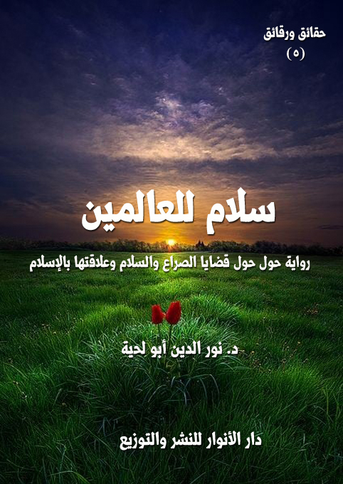

الكتاب: سلام للعالمين
المؤلف: أ.د. نور الدين أبو لحية
الناشر: دار الأنوار للنشر والتوزيع
الطبعة: الثانية، 1437 هـ
عدد الصفحات: 715
ISBN: 978-620-2-34420-3
لمطالعة الكتاب من تطبيق مؤلفاتي المجاني وهو أحسن وأيسر: هنا

التعريف بالكتاب
تتناول هذه الرواية أعقد مشكلة في الواقع بكل جوانبه النفسية والاجتماعية والسياسية والاقتصادية وغيرها.. وهي مشكلة الصراع الذي تنفخ فيه جميع شياطين الإنس والجن، ليعيش الإنسان محجوبا عن ربه، وعن عوالم الجمال التي خلقها له ربه.
وهي - كما تصف الواقع بمرارته وآلامه - تحاول أن تضع بين يدي القارئ أنوار السلام الجميل التي أنقذ الله بها عباده عبر رسله الكرام، وأولياءه العظام.
فهي تصف – بحيادية تامة- واقع الصراع بآلامه وهمومه وأحزانه.. كما تصف واقع السلام بكل آماله وأفراحه وسعادته.
والسلام الذي تصفه هذه الرواية هو المنطلق من الدين الإلهي الحقيقي.. لا الدين البشري المزيف الذي تفننت الشياطين في صناعته، وحاولت أن تخلطه بدين الله..
سلام للعالمين (12)
تتناول هذه الرواية أعقد مشكلة في الواقع بكل جوانبه النفسية والاجتماعية والسياسية والاقتصادية وغيرها.. وهي مشكلة الصراع الذي تنفخ فيه جميع شياطين الإنس والجن، ليعيش الإنسان محجوبا عن ربه، وعن عوالم الجمال التي خلقها له ربه.
وهي - كما تصف الواقع بمرارته وآلامه - تحاول أن تضع بين يدي القارئ أنوار السلام الجميل التي أنقذ الله بها عباده عبر رسله الكرام، وأولياءه العظام.
فهي تصف – بحيادية تامة- واقع الصراع بآلامه وهمومه وأحزانه.. كما تصف واقع السلام بكل آماله وأفراحه وسعادته.
والسلام الذي تصفه هذه الرواية هو المنطلق من الدين الإلهي الحقيقي.. لا الدين البشري المزيف الذي تفننت الشياطين في صناعته، وحاولت أن تخلطه بدين الله..
والعلامة الفارقة بين الدين الإلهي والدين البشري – كما تصفه الرواية – هو الصراع.. فحيثما يكون الصراع تكون الشياطين.. وحيثما يكون السلام والطمأنينة يكون الدين الإلهي، كما قال تعالى: {الَّذِينَ آمَنُوا وَتَطْمَئِنُّ قُلُوبُهُمْ بِذِكْرِ اللَّهِ أَلَا بِذِكْرِ اللَّهِ تَطْمَئِنُّ الْقُلُوبُ} [الرعد: 28]
والرواية من عشرة فصول، ولكل فصل منها قصة مستقلة، يحكيها رجل من الرجال العشرة الذين ألقت عليهم القبض بعض الجماعات الإرهابية التي تمثل التزييف الذي أوقعه الشيطان في الدين الإلهي، ليصبغ مشروعه المدمر بصبغة الله.
وقد كان هؤلاء العشرة ينتظرون تنفيذ حكم الإعدام الصادر بحقهم.. لكنهم في نهاية الرواية ينجون بأعجوبة.. ويكتشفون العلاقة بين الإرهابيين والشياطين التي تدير الصراع في العالم.
ويمكن تقسيم الصراع والسلام في الرواية إلى قسمين:
سلام للعالمين (13)
الأول: الصراع والسلام الداخليان، وهما اللذان ينطلقان من الأنا وجميع القوى التي تشكلها من العقل والقلب والنفس.. وهي ما يتضمنه الجزء الأول من الرواية.
الثاني: الصراع والسلام الخارجيان، وهما اللذان يشملان جميع علاقات الإنسان الخارجية ابتداء من الأسرة، وانتهاء بالله.. وهي ما يتضمنه الجزء الثاني من الرواية.
ونحب أن ننبه هنا إلى ما يلي:
1 ـ أن الشخصيات التي نعتمدها في الرواية، والتي تمثل طوائف مختلفة، لا تعني أننا نقبلها في كل شيء أو نرفضها في كل شيء.. وإنما اخترناها لمناسبة بينها وبين ما نطرحه من رؤى وأفكار.. فنقبلها أو نرفضها من تلك الناحية، لا من غيرها من النواحي.
2 ـ أن مقصودنا بالدين الإلهي أو المشروع الإلهي هو الإسلام المحمدي الأصيل الذي يمثله القرآن الكريم النور الممتد من السماء إلى الأرض.. ويمثله رسول الله (عبر سنته الصحيحة التي تتوافق مع القيم القرآنية والفطرية.. لا السنة التي عبث بها الوضاعون والمتلاعبون الذين مزج بهم الشيطان مشروعه بدين الله.
3 ـ أننا في ذكرنا للصراع لا نبرئ هذه الأمة من كونها عاشت الصراع، ولا تزال تعيشه بسبب الدخن الذي ألبسه الشيطان بدينها الأصيل.. وبسبب بعدها عن التمسك بالصراط المستقيم الذي أوصى به رسول الله (أمته.. ولهذا فإن السلام الإسلامي الذي نشيد به في الرواية هو سلام الإسلام الإلهي، لا الإسلام التاريخي أو التراثي الذي امتزج فيه الإلهي بالشيطاني، كما أخبر رسول الله (عن ذلك في نبوءاته الكثيرة.
4 ـ أن المقصود في الرواية هو الأفكار التي تحملها، وليس الأحداث، فالأحداث ليست سوى رموز تحاول أن تصل إلى الحقيقة بطريقة سهلة لينة رقيقة، كما هو عنوان السلسلة [حقائق ورقائق]
سلام للعالمين (15)
في صباح ذلك اليوم، نهضت على أصوات ملأتني بالرعب.. فقد سمعت ضجة كبيرة في الحارة التي كنت أسكن فيها.. ولم ألبث بعدها حتى سمعت أصوات الرصاص ترتفع.. ثم لم ألبث حتى سمعت أصوات سيارات الشرطة، وهي تملأ الفضاء بصوتها المميز.
كانت الحادثة ـ بالنسبة لي وبالنسبة لمن يسكنون معي تلك الحارة ـ بسيطة عابرة.. فلم تصر تأخذ منا تلك المساحة التي كانت تأخذها في بداية عهدنا بمثلها.
لقد كانت ـ في بداية عهدنا بمثلها ـ تأخذ منا اهتماما كبيرا.. تعقد له المجالس الطويلة.. أو تغلق لأجله الأبواب، وتكمم الأفواه، ويفر كل امرئ بنفسه عن كل شيء.
هكذا بدأ تعاملنا مع مثل تلك الحوادث.. ولكنا بعد أن تعودنا عليها.. وبعد أن تعودت أسماعنا على تلك الأصوات المزعجة، واندمجت لها، صارت لنا كأي صوت نسمعه، ولا نبالي به.
لم ألبث بعد ذلك حتى سمعت جارا لنا، كان شابا نشيطا يدرس في الجامعة، وكانت تلك الأيام أيام امتحانات، فأخذت أسترق السمع لما يحفظ رغما عني، كما تعودت أن أسترق، فلم أسمع منه إلا ما تعودت أن أسمعه.. فقد كان يردد كل حين أسماء حفظها صبياننا كما حفظها شبابنا.. بل حتى عجائزنا سرت إليهن العدوى، فنسين أبا زيد الهلالي وعنترة بن شداد، ورحن يرددنها لنا..
لقد كان بين الحين والحين يذكر أوجست كونت، ودوركايم، وليني بريل، وديفيد هيوم، وآدم سميث، وهويز، وهربرت سبنسر، وفرويد، وماركس، وأنجلز، وبافلوف، وديوي، وبرتراند راسل، وهارولد لاسكي.. وغيرهم كثير.. وكان كل اسم من تلك الأسماء ينفجر في أذني كما تنفجر أعتى المتفجرات.
حمدت الله، فقد انخفض صوته، ثم تلاشى بعدها.. لكني لم ألبث حتى سمعت من بيت
سلام للعالمين (16)
جار آخر صوت فيلم بوليسي لم أسمع من كلماته غير كلمات الرصاص والتفجيرات وأصوات السيارات المزعجة.
بعدها ذهبت إلى النافذة لأطل على الشارع، فشاهدت صبية صغارا، وهم يلعبون لعبة الشرطي واللصوص، ويستعملون ما أبدعت هذه الحضارة الشقية في صناعته من أنواع المتفجرات التي لا تكاد تفرق بينها وبين المتفرجات الحقيقية.
أغلقت النافذة.. فما لبثت حتى سمعت صوت ولدي، وهو يبكي طالبا من أمه أن تشتري له نوعا جديدا من المتفجرات امتلأت به أسواقنا.. وكان يقول لها، وهو يبكي: (لقد اشترى كل الأولاد هذه المتفجرات، ولم نبق إلا نحن)، ثم أخذ يصيح: (صدق الناس عندما يعتبروننا بدوا متخلفين.. فنحن لسنا سوى ما ذكروا)
لم أدر كيف غضبت في ذلك الحين غضبا شديدا، ورحت أصيح في الولد وأمه بهستيرية، وأنا أقسم بأغلظ الأيمان بأن لا أشتري له أي لعبة..
بكى ولدي بكاء شديدا لم يحرك في ساكنا.. لكن أمه نهضت وأشغلت التلفاز.. فما إن رأى الولد فيلما من أفلام الرسوم المتحركة المليئ هو الآخر بالقنابل والمدافع والدبابات حتى راح ينشغل بالتفرج عليها عن المتفجرات التي كان يطلبها.
هكذا بدأ ذلك اليوم الذي سمعت فيه قصة ذلك الشيخ الممتلئ بالسلام، وهو يحكي رحلته إلى رسول الله (.. والتي سأرويها لكم..
ومع أن المشهد لم يكن يختلف كثيرا عن سائر الأيام.. لكني في ذلك اليوم خصوصا امتلأت بالألم.
لقد رأيت الصراع في صورة شيطان قد استوى على عرش البشرية، فراح يملي عليها من ألوان الصراع ما لم يعرفه البشر في تاريخهم جميعا.
لكني فجأة.. شعرت بروحانية عميقة، وأنا أسمع صوت الشيخ الصالح في زحمة تلك
سلام للعالمين (17)
الأصوات جميعا، وهو يردد بخشوع قوله تعالى: {سَلامٌ قَوْلاً مِنْ رَبٍّ رَحِيمٍ} (يّس:58).. ثم يكررها مرات كثيرة.. ثم تختلط دموعه بصوته، فلا أكاد أميز صوته عن دموعه.
لست أدري كيف دب الأمل إلى نفسي، وذهب عني ذلك الإحباط الذي سببه لي ما رأيته وسمعته.
أسرعت إليه.. وقلبي يردد ما يردده من الآية الكريمة.. استأذنت عليه، فأذن لي، ودموعه لا تزال تفيض من آثار ما قرأه من القرآن الكريم.
قلت له: سيدي.. ألم تزعجك أصوات المتفجرات التي استيقظنا عليها هذا الصباح؟
قال: نعم.. انزعجت لها كثيرا.. بل كدت أشتعل من فرط انزعاجي.. فلذلك رحت أقرأ آيات السلام لأغسل بها أدران الصراع التي أنشأتها في نفسي أصوات المتفجرات.
قلت: اعذرني ـ سيدي ـ فأنت تعلم الحال التي صار إليها قومي.. لقد استبدلوا بأصوات القرآن العذبة هذه الأصوات.. وليتهم استبدلوها بنهيق الحمير، ولم يستبدلوها بهذه الأصوات.
قال: أنا لم أنزعج لأجل الأصوات.. وإنما انزعجت من قومي..
قلت: قومك!؟.. وما علاقة قومك بهذا؟
قال: ألا ترى أن قومك لم يتخلوا عن أصوات القرآن إلى هذه الأصوات إلا بعد أن تخلوا عن التلمذة على القرآن الكريم وعلى نبيهم (، وراحوا يتتلمذون على قومي؟
قلت: أراك تلصق بقومك كل مثلبة.. فهل أنت من الذين يؤمنون بنظرية المؤامرة (1)؟.. إن من يؤمن بها متخلف عندنا.
قال: ولم تعتبرونه متخلفا؟
قلت: لأنه لا دليل يدل عليها.. هي مجرد خرافات نسجها بعض الناس ليتهربوا من
__________
(1) ننبه إلى أننا بنينا أحداث هذه الرسالة على ما يسمى بنظرية المؤامرة بأبعادها المختلفة.. ونحن ـ كما تعودنا في هذه السلسلة ـ لا نقصد الأحداث، وإنما نقصد المعاني الرمزية التي تحملها.
سلام للعالمين (18)
مسؤوليتهم..
قال: ألم تسمع ذلك الشاب.. وهو يحفظ كل ما لقنه قومنا من دروس؟
قلت: هو شاب جامعي.. وهو شاب نشيط.. وقد تعودنا على سماع هذا منه.
قال: فخيرة شبابكم يتتلمذ على أساتذة الصراع الذين خرجناهم.. ألا تعتبر ذلك الشاب خاضعا لمؤامرة؟
قلت: كيف يكون خاضعا لمؤامرة.. هو لم يفعل إلا أن راجع دروسه؟
قال: أرأيت لو أن ذلك الشاب.. وبدل أن يحفظ أسماء أساتذة الصراع حفظ أسماء أساتذة السلام.. هل سينجح في دراسته؟
قلت: هو لن ينجح حتى يعيد لأساتذته بضاعتهم التي باعوه إياها.
قال: فهو مكره إذن على أن يتعلم كل ذلك.
قلت: ليس في العلم حرج.
قال: ولكن الحرج في أن يعلم شيئا واحدا.. ثم لا يكون ذلك الشيء الواحد إلا الصراع.
قلت: على العموم.. ليس ذلك الشاب سوى فرد من أفراد المجتمع.. ولا يمكن أن يتغير المجتمع بتغير فرد واحد فيه.
قال: وأولئك الصبية الذين شغلناهم باللهث وراء المتفجرات.. أليسوا ضحايا مؤامراتنا؟
قلت: وما علاقتكم بذلك؟
قال: ألسنا الذين صدرنا لكم تلك المتفجرات.. وكان في إمكاننا أن نصدر لكم بدلها أناشيد السلام؟
قلت: ولكن قومي هم الذين اختاروا أن يشتروا تلك المتفجرات.. ولو اختاروا أن يشتروا بدلها ورودا لفعلوا.. ولكنهم أبوا إلا أن يشتروا متفجرات..
قال: ومن أملى على قومك أن يشتروا ما اشتروا؟
سلام للعالمين (19)
قلت: نفوسهم.. نفوسهم هي التي أملت عليهم ذلك.. وربما كان لشياطينهم سبب في ذلك.. ولكن السبب الأكبر هو نفوسهم.
قال: النفوس كالشياه لا يتشكل لحمها إلا من العلف الذي تعلفه.
قلت: وما علاقة العلف الذي تعلفه نفوسنا بالمؤامرة؟
قال: ألا ترى قومي كيف وضعوا قومك.. بل البشرية جميعا.. في زريبة واحدة، ثم راحوا يعلفونهم بجميع أنواع السموم كما علفوا البقر الذي جن؟
قلت: لم أر البشرية في زريبة.. ولم أر أي علف يقدم لها.
قال: ألم تر أولئك الراكعين الساجدين أمام ما يصدر قومي من كل ما يسمونه تسلية؟
قلت: بلى.. ولكنها تسلية..
قال: بل هي العلف الذي علفت به نفوس العالم.. إنكم لا تجلسون لتتسلوا، وإنما تجلسون لتعلفوا كل قيم الصراع التي يصدرها قومي.. لتصبحوا حيوانات كحيوانات الغابة يفترس القوي منها الضعيف، ويأكل ذو الناب منها من لا ناب له.
قلت: أهذه أدلتك على نظرية المؤامرة؟
قال: أخطر المؤامرات هي التي لا يقصدها أصحابها.. لأنهم لو قصدوها قد يخطئون في تخطيطاتهم، فينحرفوا عن مقصدهم الذي قصدوه.
قلت: أتقصد أنها مؤامرة قصدوها أو لم يقصدوها؟
قال: أجل.. فلا يمكن لأحد يملأ بستانه ببذور الشوك أن يجني عنبا.
قلت: أقومك هم الزارعون؟
قال: عندما ركن قومك إلى الكسل استولى قومي على جميع حقول العالم، وراحوا يزرعون جميع أنواع الأشواك..
قال ذلك، ثم تنفس الصعداء، وراحت دموع غزيرة تنحدر بقوة، فقلت: هون عليك.
سلام للعالمين (20)
قال: كيف أهون علي.. وأنا أحس بمسؤوليتي عن كل هذه المتفجرات التي تملأ حياتكم ضجيجا؟
قلت: لا تقل ذلك يا ولي الله.. فأنت أرفع من أن تكون سببا.
قال: بلى.. لقد كنت في يوم من الأيام.. كما كان قومي.. سببا من الأسباب.
قلت: ما تقول؟
قال: للأسف.. لقد مدت الكنيسة يدها إلى المصارعين من أول ما ظهر المصارعون.. وراحت تشجعهم على كل ألوان الصراع.. وما تراه من قومك هو ثمار بذور كثيرة غرسها من تربوا في كنائسنا، وتعمدوا على أيدينا.
قلت: ولكن المسيح رسول السلام.. ألستم تروون كل حين قوله: (طوبى لصانعي السلام، لأنهم يدعون أبناء الله (1)) (متى 5/ 9)؟
قال: بلى.. لقد صلبنا ذلك المسيح الذي قال تلك الكلمات.. صلبناه بكل حقد، ثم رميناه في جهنم بعد أن صببنا عليه كل ألوان اللعنات (2).
قلت: وأي مسيح بقي لكم؟
قال: مسيح لا علاقة له بكم.. إنه مسيح روماني.. يحمل كل بذور الصراع التي كانت تصدرها روما للعالم الذي تتهمه بالبربرية.
قلت: ما تقول؟.. إن ما تقوله خطير.
قال: ولكنه حقيقة.. حقيقة عشتها ورأيتها.. بل عاشتها جميع الأجيال التي تقلبت في أصلابها.
__________
(1) ذكرنا بتفصيل المعنى الصحيح لهذه العبارة على حسب الكتاب المقدس، وهو مرادفتها لمعنى (ولي الله) في رسالة (الباحثون عن الله) من هذه السلسلة.
(2) انظر (النبي المعصوم) من هذه السلسلة.
سلام للعالمين (21)
قلت: لم أفهم ما الذي تقصد.
قال: لقد رحت أبحث فينا.. في جذورنا.. فلم أجد إلا الصراع..
في البدء.. كان هناك شعبان.. الرومان واليونان.. وكان هذان الشعبان هما الهواء الذي تنفسناه، والماء الذي شربناه..
وقد شربنا مع مياه الرومان واليونان جميع أنواع الصراع.. ولبسنا جميع أثواب الصراع.
لقد كان هذان الشعبان يوحيان إلينا كل حين أن هناك عدوا يهدد وجودنا.. فنصيح من حيث لا نشعر بإعلان الحرب بكافة صورها.. ثم نغرق البشرية بعدها في حمامات من الدماء.
ألا تعلم أن أهم أسباب الحروب الصليبية ـ كما يذكر مؤرخونا ـ هو إعادة توجيه طاقة البارونات الأوروبيين من النزاعات الدموية المحلية إلى غاية نبيلة تتمثل في استعادة الأرض المقدسة وقبر المسيح من أيدي المسلمين؟
وإمعانا من الكنيسة في تحميس الصليبين الذين وهنت دواعي النصر فيهم لكثرة ما سفكوا من دماء بعضهم البعض أصدر البابا (أوربان) صكّه للغفران، والذي عرض فيه إسقاط ذنوب وخطايا الذين يقاتلون المسلمين.. فدبَّت اليقظة في أوصال الجندي المرتبك أخلاقيا، واشتعل حماسا كأنما هو يستيقظ من سبات عميق.
وهكذا كنا دائما..
حتى نظام الفروسة الذي يفخر به قومنا لم يكن إلا مثلا من أمثلة هذا التكريس الديني للنزعات الحربية التي حاولت الكنيسة حتى ذلك الحين قمعها لأغراض مثالية ورغبات نبيلة.. فالحروب الصليبية من هذه الناحية كانت تعتبر المظهر الهجومي للفروسية، والفروسة تعتبر بذرة الحروب الصليبية كما تعتبر ربيبته.. والفارس الذي يشترك في الحروب الصليبية، إنما يشبع بذلك النزعة الحربية الكامنة فيه تحت إشراف الكنيسة وبأمرها، وينال بذلك الخلاص التام والتطهر من الذنوب وهو ما يسعى إليه بشدة.. وربما أمعن الفارس طوال يومه في القتل والتذبيح، فإذا جاء
سلام للعالمين (22)
الليل ركع أمام مذبح كنيسة القيامة، يهلل من فرط فرحه آملا أن يكون ما تخضب به من الدماء إنما جرى من أجل السيد المسيح.
قلت: ولكن أوربا طلقت الكنيسة من زمان..
قال: طلقتها.. ولكنها لم تطلق الصراع.. لقد ظلت نزعة الصراع تضرب على أوتار قلوبنا كما كانت تضرب في جميع فترات تاريخنا.
لقد ظهر الفكر الشيوعي.. ظهر كارل ماركس ثم لينن وظهر معهما الصراع الطبقي وكفاح العمال والفلاحين ضد الإقطاعية.. وظهر بعدهم جميع حملة فكر الصراع.. مكسيم جوركي ومايا كوفسكي وبوشكين وغيرهم في أدبهم الذي صار ترجمانا لإملاءات الشيوعية وشعاراتها المتطرفة.
ثم جاءت الوجودية التي قامت أساسا على إثبات حق الوجود ورأت أن قضيتها الأولى هي الصراع الذي بتحدي القوي الغيبية، وما لازمه من الشعور بالعبثية وفقدان الحكمة في الخلق.
وكانت مع هاتين الفلسفتين والنظامين (الرأسمالية) بمبادئها المتطرفة، تنهش عقولنا وحياتنا وتملأنا بالصراع.. لقد عمقت الرأسمالية فينا الأنانية.. لقد أعطت المال لطبقة رأسمالية تمسك بزمام المال والأعمال وتسوس الفكر مع وجود طبقة تعاني من الحرمان مما زاد من معدلات الجرائم واتساع الهوّة في المجتمع الواحد..
رأيت الألم باديا على وجهالشيخ الصالح، فأردت أن أغير الموضوع، فقلت: هون عليك.. فالله الرحمن الرحيم العدل الخبير لا يحاسب الأمم وهي أمم، بل يحاسبها أفرادا.. فلكل فرد ما جنت يداه، ولا يهم من أي أمة كان.
قال: صدقت.. وجزاك الله خيرا على هذه السلوى.. لقد قرأتها في قوله تعالى: {لَيْسَ بِأَمَانِيِّكُمْ وَلَا أَمَانِيِّ أَهْلِ الْكِتَابِ مَنْ يَعْمَلْ سُوءًا يُجْزَ بِهِ وَلَا يَجِدْ لَهُ مِنْ دُونِ اللَّهِ وَلِيًّا وَلَا نَصِيرًا (123) وَمَنْ يَعْمَلْ مِنَ الصَّالِحَاتِ مِنْ ذَكَرٍ أَوْ أُنْثَى وَهُوَ مُؤْمِنٌ فَأُولَئِكَ يَدْخُلُونَ الْجَنَّةَ وَلَا
سلام للعالمين (23)
يُظْلَمُونَ نَقِيرًا (124)} (النساء)
قلت: فأبشر إذن.. فأحسب أنك على خير كثير.
قال: بشرك الله بكل خير..
ثم عقب يقول: أنا لا أريد البشارة لنفسي وحدها.. بل أريدها لجميع أمم الأرض، وأفرادها، فلا يمكن أن تستظل بظل السلام إلا في ظل الإسلام.
قلت: ذكرتني بالسلام.. لقد وعدتني أن تحدثني عن رحلتك لسلام الإسلام.
قال: أجل.. فلا يمسح أحزان الصراع إلا تلك الأحاديث الجميلة التي امتلأت بها في رحلتي إلى سلام الإسلام.
-\--\-
اعتدل الشيخ الصالح في جلسته، وحمد الله وصلى وسلم على نبيه (مستغرقا في كل ذلك، ثم قال: استدعاني أخي وتوأمي رجل الدين إلى مكتبه الضخم في الفاتيكان، وقال لي: لقد وردتني أنباء لم تصل بعد إلى وكالات الأنباء بأن طائفتين من المسلمين عظيمتين يهم بعضهما ببعض.. ولعل بعضهما يقضى على بعض، فنستريح منهما جميعا.
قلت: لم أسمع هذا في الأخبار.
قال: هناك أخبار يسمعها الناس جميعا.. وهناك أخبار لا يسمعها إلا نحن.
قلت: وكيف نسمعها من دون الناس؟
قال: لاشك أن الكاتب هو أول من يقرأ كتابه.. ولا يمكن لأحد في الدنيا أن يسبقه إلى قراءته.
قلت: الكاتب يحصل له ذلك لأنه هو الذي كتب الكتاب.
قال: ونحن حصل لنا ذلك.. لأنا بسلطان المسيح الذي وهبه لنا صرنا نحن الكتبة.. فنحن نملي على غيرنا.. وغيرنا لا يجد إلا أن يكتب ما نمليه عليهم.
سلام للعالمين (24)
قلت: فلم لا نملي عليهم الهداية التي حثنا المسيح على تعليمها؟
قال: إن هؤلاء الحمقى يقبلون منا كل شيء إلا الهداية التي جاء بها المسيح.. إنهم يزعمون أن الهداية التي جاء بها محمد أكمل وأشمل وأعلم وأوثق من التي جاءنا بها المسيح.
قال لي أخي ذلك، ثم طلب مني أن أسير معه إلى غرفة في بيتنا الجديد بالفاتيكان، وكانت غرفة أشبه ما تكون بغرف الأسرار.. وهناك دلني على تفاصيل السيناريو الذي سيمثله المسلمون بإملاء منا ومن كل المؤسسات العالمية التي اجتمعت على استئصال المسلمين من الوجود.
-\--\-
بعد أن امتلأت هما بما ذكره أخي.. وبعد أن أيقنت بالخطر الذي يحدق بالمسلمين.. لم يخطر على بالي شيء كما خطر على بالي أن أسرع إلى بلاد الإسلام لأتدارك الأمر قبل حصوله.
لكني.. وبعد أن فكرت طويلا.. وجدت أنه لا جدوى من ذلك.. فأولئك الذين يتربعون على عروش المسلمين الدينية أو الدنيوية لن يقبلوا مني ما أقول.. لأنهم تعودوا أن لا يقبلوا إلا لمن يملؤهم بالصراع والحقد والضغينة.
في ذلك المساء.. سرت إلى غابة قريبة من محل سكني لأنفس عن نفسي بعض ما تعانيه من صراع.. وما إن سرت على ثراها قليلا حتى رأيت رجلا كصفحة الماء التي لم تعبث بها التيارات، بل لو أن أعاصير الدنيا اجتمعت ما حركت منه ساكنا.
رأيته قد خط دائرة صغيرة كتب في وسطها (الأنا).. ثم خط بعدها دائرة أخرى مركزها هو نفس مركز الدائرة السابقة سماها (العقل).. ثم تلاها بدائرة أخرى سماها (القلب).. ثم بدائرة أخرى سماها (النفس).. ثم بأخرى سماها (الأسرة).. ثم بأخرى سماها (المجتمع).. ثم بأخرى سماها (الدولة).. ثم بأخرى سماها (العالم).. ثم بأخرى سماها (الكون).. ثم بأخرى سماها (الله)
كان يرسم الدوائر، ويكتب الأسماء المرتبطة بها بتركيز عجيب لا يشبه إلا تركيز القادة الذين يخططون لأعتى المعارك، وقد دعاني ذلك لأن أقول له ساخرا: مرحبا بحضرة القائد العظيم.. أي
سلام للعالمين (25)
معركة هذه التي تريد أن تخوضها اليوم؟
قال: معركة السلام.
قلت: أللسلام معركة؟
قال: لا يمكن للسلام أن يتحقق بغير المعارك.
قلت: أرى أن مظهرك لا يوحي إلا بالسلام.. بكيف تتحدث عن الحرب؟
قال: عن حرب أهل السلام، لا حرب أهل الصراع.
قلت: ألأهل السلام حرب؟
قال: أجل.. وهي تنطلق من هذه الدائرة..
أشار إلى الدائرة الأولى التي سماها (الأنا)، ثم قال: من هذه الدائرة يبدأ السلام.. ومن هذه الدائرة يبدأ الصراع.
قلت: كيف.. ألهذه الدائرة من السلطان ما يتيح لها أن تتصرف في كل شيء؟
قال: أجل.. هذه الدائرة هي المركز.. ولا دائرة إن خرب المركز.
قلت: فأي معركة هذه التي تريد أن تخوضها مع (الأنا)؟
قال: معركة التصحيح والتثبيت..
قلت: لم أفهم.
قال: تصحيح الأنا وتثبتها.. فلا يمكن للجندي الذي لم تصح نسبته للحندية، ولم يتثبت فيها أن ينتصر في أي معركة.
قلت: فبم تصحح الأنا، وبم تثبتها؟
قال: أنا الآن أبحث عن أقوم السبل لذلك..
قلت: فهل اهتديت لشيء؟
قال: أجل.. لقد عرفت أنه لا يمكن لعقلي أن يعرف مناهج التصحيح والتثبيت.. لابد من
سلام للعالمين (26)
جهة عليا.. عليا بالقدر الذي لا يمكن تصوره.. فهي الوحيدة العالمة بي.. وهي الوحيدة التي تستطيع أن تصححني وتثبتني.
قلت: ولم لا تثبت نفسك بنفسك؟
قال: وهل يستطيع الوتد أن يتثبت نفسه بنفسه؟
قلت: لابد للوتد من مطرقة ومن طارق.
قال: ولابد للأنا من النور الذي يملؤها بالهداية، فترسخ قدمها في السلام الجميل الذي لا تهزه الأعاصير.
قلت: أحسبني وعيبت بعض هذا.. فما الدوائر التالية لدائرة الأنا؟
قال: علاقات الأنا.. وقد وجدت أن الأنا إن كانت ثابتة راسخة صحيحة سيكون ما حولها من الدوائر ثابتا راسخا صحيحا.
قلت: وإن لم تكن كذلك؟
قال: ستهزها الأعاصير.. وستمتلئ بجميع أنواع الحروب التي تستخدم فيها جميع أنواع الأسلحة.
قلت: لكأني بك تتحدث عن سفينة شراعية.
قال: الإنسان سفينة شراعية.
قلت: السفن الشراعية قد تغرق عند الأعاصير.
قال: ذلك عندما تكون أشرعتها ضعيفة.
قلت: فكيف تكون قوية؟
قال: هذا ما أبحث عنه.. وهذا ما ينبغي لكل عاقل أن يبحث عنه.. فكل من لم يبحث عنه سيغرق لا محالة.
قلت ـ مشيرا إلى دائرة العقل ـ: لقد جعلت العقل بعد أول دائرة من دوائر الأنا؟
سلام للعالمين (27)
قال: لا يمكن للأنا أن تمتلئ بالسلام، وهي تصحب عقلا مشوشا متناقضا مضطربا غافلا ممتلئا بالجهل والخرافة.
قلت ـ مشيرا إلى دائرة القلب ـ: لقد جعلت القلب هو الدائرة الثالثة؟
قال: لا يمكن للأنا أن تمتلئ بالسلام، وهي تصحب قلبا مريضا سكرانا ضعيفا تهوي به الأهواء في كل المهالك.
قلت ـ مشيرا إلى دائرة النفس ـ: لقد جعلت النفس هي الدائرة الرابعة؟
قال: لا يمكن للأنا أن تمتلئ بالسلام، وهي تصحب نفسا طماعة حريصة جشعة متكبرة ممتلئة بالشهوات، مستغرقة في الملذات، مدمنة على الغفلات.
قلت ـ مشيرا إلى دائرة الأسرة ـ: لقد جعلت الأسرة هو الدائرة الخامسة؟
قال: لا يمكن للأنا أن تمتلئ بالسلام، وهي تعيش في أسرة مفككة يحارب بعضها بعضا، ويعتدي بعضها على بعض.
قلت ـ مشيرا إلى دائرة المجتمع ـ: لقد جعلت المجتمع هو الدائرة السادسة؟
قال: لا يمكن للأنا أن تمتلئ بالسلام، وهي تعيش في مجتمع تملؤه النزعات الخسيسة، والأهواء الخبيثة.
قلت ـ مشيرا إلى دائرة الدولة ـ: لقد جعلت الدولة هي الدائرة السابعة؟
قال: لا يمكن للأنا أن تمتلئ بالسلام، وهي تعيش في دولة يحكمها الاستبداد والجور والظلم والطغيان والحريات الكاذبة.
قلت ـ مشيرا إلى دائرة العالم ـ: لقد جعلت العالم هو الدائرة الثامنة؟
قال: لا يمكن للأنا أن تمتلئ بالسلام، وهي تعيش في عالم قلق مضطرب متنازع.. القوي فيه يأكل الضعيف.. والمتكبر فيه يتسلط على المستضعف.
قلت ـ مشيرا إلى دائرة الكون ـ: لقد جعلت الكون هو الدائرة التاسعة؟
سلام للعالمين (28)
قال: لا يمكن للأنا أن تمتلئ بالسلام، وهي تعيش في كون قد أغارت عليه جنود الإفساد، فحولته عن فطرته السليمة.
قلت ـ مشيرا إلى دائرة الله ـ: لقد جعلت (الله) هو الدائرة العاشرة؟
قال: لا يمكن للأنا أن تمتلئ بالسلام، وهي تجحد الله، أو تحمل صورة مشوهة عنه، أو تحتقره، أو تعزله عن التصرف في وجوده الذي خلقه وأبدعه وصممه.
قال ذلك، ثم راح إلى دوائره مستغرقا فيها، وكأنه لم يكن يحدثني، ولم أكن أحدثه.
-\--\-
في تلك الأيام.. وبعد ذلك الحديث الذي حدثني به معلم السلام.. قررت أن أسير إلى تلك البلاد التي تعتزم الفتنة أن تستأصلها، ثم تستأصل بعدها سائر بلاد الإسلام، فاستأذنت أخي.. ففرح كثيرا.. وقال: إن ما تفعله سيرسخ قدمنا في الكنيسة إلى آخر الدهر.
قلت: كيف؟
قال: إن الكل يفر من تلك البلاد.. رجال الدين ورجال الدنيا.. وذهابك أنت تضحية لا تعدلها إلا تضحيات القديسين.. إنك ستعود إلينا إن عدت قديسا يتمسح الكل بك.
قلت: لم؟
قال: أنت هناك معرض للخطف في كل لحظة.. فليس هناك إلا من ملأناهم بالصراع.
قلت: ألا تخاف علي؟
قال: ما دمت قد أمنت عليك من أشعة محمد، فلن تضرك بعدها أي أشعة.
قلت: ولكن الذين سأذهب إليهم لهم حظ من أشعة محمد.
قال: إن الأشعة التي نالوها من محمد لن تزيدك إلا فرارا منه.. وهذا ما دعاني إلى السرور بقرارك، فإن الرحلة التي سترحلها هذه المرة ستغسل عنك كل تلك الشبهات التي علقت بقلبك من رحلاتك السابقة.
سلام للعالمين (29)
قلت: لم؟
قال: سترى من أولئك المصارعين الصورة الحقيقية لمحمد.. تلك الصورة التي ظلت تتزين لك لتملأك بالغواية.
-\--\-
كان أخي يدرك المخاطر التي يمكن أن أتعرض لها في كل لحظة في تلك البلاد التي قررت الذهاب إليها.. لذلك ودعني ـ كغير عهده ـ وداعا حارا، وكأنه قد تيقن أني لن أعود إليه من جديد.
امتطيت الطائرة.. وسرت إلى البلاد التي تموج بكل أنواع الصراع.
عندما دخلتها لم أشم إلا روائح الموت.. كان الموت في الطرقات والأزقة والبيوت كالهواء الذي نتنفسه، والماء الذي نشربه.
في المطار رأيت عشرة من الرجال.. فيهم الكهل، وفيهم الشاب، وفيهم الشيخ.. كلهم وقفوا في انتظار الحافلة التي سننتقل بها إلى المدينة التي لا يولد فيها إلا الموتى.
كان أهل المطار ينظرون إلينا بشفقة وحزن، وكأنهم يعلمون ما ينتظرنا من دواه.
لم نلبث إلا قليلا حتى جاءت حافلة خربة عضتها السنون بنابها.. وقد كان إطارها مخترقا برصاصات كثيرة تدل على المخاطر الكثيرة التي نريد أن نسير إليها.
ركبنا الحافلة.. ولم نسر إلا أميالا حتى استقبلنا من يسميهم الناس (صناع الموت).. أخذونا وكأننا معهم على ميعاد، ووضعونا في مغارة لا تختلف كثيرا عن القبور.
بعدها عرضونا على محكمة صورية كان الكل فيها ملثما، فلم نميز أحدا منهم، وفيها حكم علينا بالإعدام.. وقد منوا علينا فوهبونا عشرة أيام من الحياة، لنودع فيها الحياة، ونودع فيها ما استودعناه ذاكرتنا من ذكريات.
في المغارة.. جلسنا جميعا، لا ندري ما نفعل.. تفرست في وجوه الجالسين معي، فلم أجد
سلام للعالمين (30)
فيها من الحزن ما كنت أتصور أن يوجد، فقلت من دون أن أشعر: أراكم مطمئنين إلى الحكم الذي حكم علينا.. فهل ترونه حكما عادلا؟
قال أحدهم: لقد كنت نفذت في يوم من الأيام هذا الحكم على نفسي.. ولكني لم أنجح.. لقد وقف بعض المسلمين حائلا بيني وبين تحقيقه.. ومن عجائب الأقدار أن المسلمين الذين بسببهم مدت حياتي مدة طويلة هم أنفسهم الذين يريدون أن يضعوا حدا لحياتي.
قال آخر: إن ما حصل لك هو ما حصل لي.. لقد قدمت نفسي ذات يوم لمقصلة الموت.. فوقف مسلم دون ذلك.. وها هو أخوه ينفذ ما عجزت عنه.
قال آخر: لكأنكما تتحدثان عن نفسي.. أنا نفسي حصل لي ما حصل لكما.
قال آخر: وأنا كذلك.
نطقوا جميعا: إن هذا من العجائب.. كلنا حصل لنا ما تذكرون.
امتلأت عجبا بما سمعت.. فقلت لهم: إن ما تذكرونه عجيب.. فحدثونا بأحاديثكم، فلا أرى هؤلاء أخرونا هذه الأيام العشرة إلا ليسمع بعضنا حديث بعض.
-\--\-
التفت إلي الشيخ الصالح، وقال: في هذه الرحلة لن أحدثك إلا بأحاديث هؤلاء العشرة الذين تعلمت منهم من سلام الإسلام ما لم أتعلمه في حياتي جميعا.
لقد وصلت إلى قناعة كبيرة في هذه الرحلة بأنه لا سلام إلا في الإسلام.. وأن الإسلام هو الدين الوحيد الذي جعله الله سلاما لكل العوالم.. العوالم التي هيئ لحواسنا أن تراها، والعوالم التي لم يهيأ لها أن تراها.
سلام للعالمين (31)
في اليوم الأول من تلك الأيام العشرة، نهض أحدنا، وكان أكبرنا سنا، وقال: سأبدا أنا بالحديث.. فأنا ـ على حسب ما يبدو ـ أكبركم سنا، ولعلي كنت أقربكم للموت، لولا أن القدر طرحنا في هذا المحل لنستوي جميعا في التهامنا للموت، أو التهام الموت لنا.
ليس هذا فقط ما يجعل لي الحق في التفرد بالبداية.. بل هناك أسباب أخرى ستعرفونها من خلال إيرادي لحكايتي.. فأنا الذي كتب له أن يتعلم على جمع من الأساتذة كانوا هم السبب في كل صراع عانيناه، وعانته الأجيال الطويلة من هذه البشرية..
قلنا: من أنت أولا؟
قال: لقد سماني أهلي أسماء كثيرة.. ولكني بعد أن التقيت النور طلقتها جميعا، ورحت أبحث عن اسم لي.. ولم أظفر بعد بذلك الاسم.. وإن شئتم الحقيقة، فقد جئت إلى هذه البلاد لأبحث عن اسم لي.. لكن القدر شاء أن أموت من غير اسم.. ولكن حسبي أني طلقت جميع الأسماء التي فرضت علي.
قلنا: من أي البلاد أنت؟
قال: أنا من كل تلك البلاد التي كان يسكنها الرومان واليونان وغيرهم من الشعوب.. أنا ابن لها جميعا، وعشت على ثراها جميعا، وتقلبت في أحضانها جميعا.. ولذلك أتيح لي أن أتتلمذ تلمذة مباشرة على أولئك الذين يسميهم الناس عباقرة.. فينصبون لهم التماثيل، ويجثون على ركبهم بين أيديهم يتتلمذون عليهم.
قلنا: نراك تحتقر أساتذتك.
قال: لقد أتيح لي بعد تلك الفترة الطويلة من التلمذة على أولئك الذين يتوهم قومنا أنهم عباقرة، أن ألتقي برجل واحد نال من أشعة شمس محمد (ما جعلني أحتقر جميع أساتذتي.. لقد كان رجلا عاميا بسيطا في مظهره.. لكن الأشعة التي تعرض لها من تلك الشمس جعلته
سلام للعالمين (32)
أستاذا يحمل من الحقائق ما لا يحمله أعظم أساتذتنا وأكبرهم شأنا.
قلنا: فحدثنا عن هذا الرجل.
قال: لن تعرفوا قيمة حديثه حتى تعرفوا أساتذتي.. فلا يمكن للشمس أن يعرف قيمتها من لم يلهب عينيه سياط الظلام.
قلنا: فحدثنا عن أساتذتك (1).
غرق صاحبنا الأول في صمت عميق.. وكأنه يسترجع ماضيه البعيد، السحيق في بعده..
وبعد فترة انتظار طويلة لم نشأ أن نحرجه فيها، قال: أول حكايتي تبدأ من الكنيسة.. لقد كنت سليل أسرة لها ارتباط مقدس بالكنيسة، كانت تخدمها بجوارحها ومشاعرها.. وكانت تعتبر رجال الدين هم المقدسون الذين لا ينطقون إلا بالحق، ولا يسلكون إلا سبل الحق.
وقد سرى إلي من إرث عائلتي ما جعلني تابعا ذليلا لكل المواعظ التي ينطق بها رجال الدين، لا أناقشها، ولا أفكر في مناقشتها.
وقد قدر لي أن يكون أول أساتذتي رجل لم يكن يدعو في ظاهره إلا للزهد.. كان اسمه (سان بونافنتور) (2).. لقد كان يردد على مسامعي كل حين ما ورد في الإنجيل من أنه (لا يدخل غني ملكوت السموات، حتى يدخل الجمل في سم الخياط..).. ويردد قول المسيح لشاب آمن به
__________
(1) استفدنا الكثير من المادة العلمية المرتبطة بالمذاهب النفسية الغربية من مقال طويل بعنوان (العقل المستعار: بحث في إشكالية المنهج في النقد الأدبي العربي الحديث ـ المنهج النفسي أنموذجاً) د. صالح بن سعيد الزهراني، الأستاذ المشارك في كلية اللغة العربية - جامعة أم القرى، من مجلة جامعة أم القرى.
(2) أحد رجال الكنيسة، وقد اخترناه لقوله الذي سنورده هنا: (إذا رأيتم امرأة فلا تحسبوا أنكم ترون كائنا بشرياً، بل ولا كائنا حياً وحشياً، وإنما الذى ترون هو الشيطان بذاته والذى تسمعون هو صفير الثعبان)
سلام للعالمين (33)
ودخل في دينه: (ذا أردت أن تكون كاملا، فاذهب وبع ما تملك واعطه للفقراء، ثم تعال واتبعني)، وقوله لتلاميذه: (وأنتم فلا تبحثوا عما تأكلون وما تشربون ولا تهتموا لذلك، لأن هذه الأشياء إنما يبحث عنها غير المؤمنين)
وكان يردد لي أقوال القديس أمبروز ـ أسقف ميلانو فى القرن الرابع ـ الذي كان يعظ تلاميذه وغيرهم فى أمر الروح معتبرا أنها نقيض للجسد الذى هو شر.. وقد كانت تلك الفكرة مصدر إلهام لتلميذه الكبير القديس أوغسطين الذى أصبح فيما بعد أسقفاً لمدينة هبو فى شمال إفريقيا..
لا أزال أذكر من أقوال أمبروز قوله: (فكر فى الروح بعد أن تكون قد تحررت من الجسد، ونبذت الانغماس فى الشهوات ومتع اللذات الجسدية، وتخلصت من اهتمامها بهذه الحياة الدنيوية)
وكان يذكر لي صلاة القديس أوغسطين التي يقول فيها: (آه! خذ منى هذا الجسد، وعندئذ أبارك الرب)
وكان يذكر لي ما اعتاد فرانسيس الأسيزى أن ينادى به جسده من قوله: (أخى الحمار)! كما لو كان الجسد مجرد بهيمة غبية شهوانية، تستخدم لحمل الأثقال.
وكان يذكر لي ما كان القديسون يتعهدون به أجسادهم من اعتداء يومى من أجل إماتتها بالتعذيب الذاتى بطرق تقشعر من هولها الأبدان.
وقد سرى لي من تأثير هذه التعاليم ما جعلني أحتقر جسدي احتقارا شديدا.. لقد كنت أنظر إليه كما ينظر العدو إلى عدوه.. لذلك كان الصراع بين روحي وجسدي لا يكاد ينتهي حتى يبدأ.
لقد علمني أستاذي ـ الذي بدأت بالتعلم على يديه حياتي ـ أن نظام الرهبنة الذي ينتظرني يتطلب مني أربعة شروط لا يمكنني أن أكون راهبا مقدسا من دونها.
قلنا: فما أولها؟
سلام للعالمين (34)
قال: العزوبة.. فلا يمكن للراهب ولا لرجل الدين.. بل ولا للمسيحي المخلص.. أن يكون متزوجا.. ولهذا، فإن هذا الأستاذ ملأ مشاعري نفورا من المرأة حتى لو كانت زوجة، فقد كان يقول لي كل حين: (إذا رأيت امرأة فلا تحسب أنك ترى كائنا بشرياً، بل ولا كائنا حياً وحشياً، وإنما الذى ترى هو الشيطان بذاته والذى تسمع هو صفير الثعبان) (1)
وكان يردد علي كل حين قوله: (من المشاكل المستعصية على الكنيسة مشكلة زواج رجال الدين غير الرهبان أو تسريهم.. لقد كانت الكنيسة منذ زمن بعيد تعارض زواج رجال الدين، لأن القس المتزوج يضع ولاءه لزوجه وأبنائه في منزلة أعلى من إخلاصه للكنيسة)..
وكان يقول لي: (إن القس المتزوج سيحاول أن ينقل كرسيه أو مرتبته لأحد أبنائه.. يضاف إلى هذا أن القس يجب أن يكرس حياته لله وبنى الإنسان، وأن مستواه الأخلاقي يجب أن يعلو على مستوى أخلاق الشعب وأن يضفي على مستواه هذه المكانة التي لا بد منها لاكتساب ثقة الناس وإجلالهم إياه) (2)
قلنا: هذا الشرط الأول للرهبانية، فما الشرط الثاني؟
قال: التجرد الكامل عن الدنيا.. فقد أقنعني هذا الأستاذ أن على الراهب ـ حتى يصير راهبا ـ أن يعتزل عزلة نهائية عن المجتمع، ويقطع النظر عن كل أمل في الحياة.
قلنا: فما الشرط الثالث؟
قال: عدم الاهتمام بالجسد.. بل تعذيب الجسد.. ألم أقل لكم: إنه كان يصور لي جسدي رماحا تحارب روحي وسيوفا تنهش حقيقتي؟
لقد حدثني عن الراهب ماكاريوس، وكيف أنه نام ستة أشهر في مستنقع ليقرض جسمه العاري ذباب سام، وكان يحمل دائما نحو قنطار من حديد.
__________
(1) أشعة خاصة بنور الإسلام: 29.
(2) قصة الحضارة 14: 382.
سلام للعالمين (35)
وحدثني عن الراهب يوسيبيس، وكيف كان يحمل نحو قنطارين من حديد.. وقد أقام ثلاثة أعوام في بئر نزح...
وحدثني عن الراهب يوحنا الذي تعبد ثلاث سنوات قائما على رجل واحدة، ولم ينم ولم يقعد طوال هذه المدة، فإذا تعب جداً أسند ظهره إلى صخرة.
وحدثني عن القديس كولمبان الذي كانت السناجب تجثم على كتفيه فتدخل في قلنسوته وتخرج منها، وهو ساكن.
وحدثني عن راهب اخترع درجة جديدة من الورع، بحيث يربط نفسه بسلسلة إلى صخرة في غار ضيق (1).
وحدثني عن بعض الرهبان.. نسيت أسماءهم.. كانوا لا يكتسون دائما، وإنما يتسترون بشعرهم الطويل ويمشون على أيديهم وأرجلهم كالأنعام.. وكان أكثرهم يسكنون في مغارات السباع والآبار النازحة والمقابر، ويأكل كثير منهم الكلأ والحشيش.
وكان يحدثني ـ بشوق عظيم ـ عن الرهبان الذين كانوا يعدون طهارة الجسم منافية لنقاء الروح، ويتأثمون من غسل الأعضاء، وأزهد الناس عندهم وأنقاهم أبعدهم عن الطهارة وأوغلهم في النجاسات والدنس.
لقد حدثني عما قاله الراهب اتهينس من أن الراهب أنتونى لم يقترف إثم غسل الرجلين طوال عمره.. وعن الراهب أبراهام أنه لم يمس وجهه ولا رجله الماء خمسين عاماً.. وعن الراهب الإسكندري الذي قال بعد زمان متلهفاً: وأسفاه، لقد كنا في زمن نعد غسل الوجه حراماً، فإذا بنا الآن ندخل الحمامات (2).
قلنا: فما الشرط الرابع؟
__________
(1) معالم تاريخ الإنسانية: 732.
(2) ماذا خسر العالم بانحطاط المسلمين: 168.
سلام للعالمين (36)
قال: تحمل العقوبات الشديدة في حال التفريط في الطقوس الكثيرة التي يتطلبها نظام الرهبانية.. لقد كان أستاذي يعلمي كل حين تعاليم القديس (كولمبان) الذي أسس الأديرة في جبال الفوج بفرنسا:
ومن العقوبات التي لا أزال أذكرها: ستة سياط إذا سعل وهو يبدأ ترنيمة أو نسى أن يدرم أظافره قبل تلاوة القداس، أو تبسم أثناء الصلاة، أو قرع القدح بأسنانه أثناء العشاء الربانى.. وكانت اثنا عشر سوطاً عقاب الراهب إذا نسى أن يدعو الله قبل الطعام وخمسون عقاب المتأخر عن الصلاة، ومائة لمن يشترك في نزاع ومئتان لمن يتحدث من غير احتشام مع امرأة.
وأقام (كولمبان) نظام الحمد الذى لا ينقطع، فكانت الأوراد يتلوها بلا انقطاع ليلاً ونهاراً طائفة بعد طائفة من الرهبان يوجهونها إلى عيسى ومريم والقديسين (1).
قلنا: فهل مارست كل هذه الشروط التي علمك إياها أستاذك؟
قال: أجل.. لقد مارستها بإخلاص وصدق إلى أن جاء اليوم الذي طلقتها فيه طلاقا بائنا، وطلقت معها أستاذي، وتخلصت من الاسم الذي سماني به.. ولم أندم على ذلك التطليق في أي يوم من أيام حياتي.
قلنا: كيف كان ذلك؟
قال: لقد رأيت بعيني في الدير الذي كنت راهبا فيه ما ذكره رئيس دير كلونى من قوله: (إن بعض رجال الدين في الأديرة وفي خارجها يستهترون بابن العذراء استهتاراً يستبيحون معه ارتكاب الفحشاء في ساحاته نفسها، بل في تلك البيوت التى أنشأها المؤمنين الخاشعون لكى تكون ملاذاً للعفة والطهارة في حرمها المسور، لقد فاضت هذه البيوت بالدعارة حتى أصبحت مريم العذراء لا تجد مكاناً تضع فيه الطفل عيسى) (2)
__________
(1) قصة الحضارة 14: 365.
(2) قصة الحضارة: 145: 372.
سلام للعالمين (37)
قلنا: فقد انحرفوا عن المنهج الذي كانوا يدعون إليه؟
قال: ليتهم انحرفوا إلى الفطرة.. لقد انحرفوا إلى الشذوذ.. واستبدلوا الصراع بالصراع.
قلنا: كيف كان ذلك؟
قال: لقد أدى كل ذلك التزمت والغلو ومغالبة الطبع السوي والفطرة السليمة إلى نتيجة عكسية تماماً.. لقد أصبحت الأديرة مباءات للفجور والفسق، تضرب بها الأمثلة في ذلك.
لن أحدثكم عن ذلك.. ولكني رأيت بعيني من الفضائح ما ملأني بالنفور التام من الدير ومن الرهبانية.. بل ومن الكنيسة نفسها (1).
قلنا: فإلي أين التجأت؟
قال: بعد أن صارعت روحي جسدي زمنا طويلا.. وبعد أن اكتشفت السراب الذي أوقعتني فيه روحي.. عدت إلى جسدي أقبله وألتزمه ولا أرى في الوجود غيره.
قلنا: فهل وجدت من الأساتذة من أعانك على ذلك؟
قال: كثيرون هم.. كانوا يتبوأون أشرف المراتب.. ويسكنون أحسن القصور.. وينالون أعلى المرتبات..
قلنا: فحدثنا عنهم.
قال: أولهم رجل كان يدعوه الناس داروين (2).. لقد لقيته بعد أن عانيت الأمرين في دير
__________
(1) انظر (ثمار من شجرة النبوة) من هذه السلسلة.
(2) أشير به إلى تشارلز روبرت داروين (1809 - 1882 م)، وهو باحث وعالم بريطاني عكف على دراسة علوم الطبيعة، واقترن اسمه بنظرية النشوء والارتقاء وبها اشتهر، وكان يقول: (إن كل الأنواع الحية من نباتات وحيوانات قد تطورت تدريجيًا من أصول مشتركة خلال الملايين من السنين التي مرت عليها)
ألف داروين عدة كتب كانت تزيد من حدّة مناقشة نظرياته عن التطور.. ومن بين هذه الكتب أصل الإنسان والانتخاب فيما يتعلق بالجنس (1871 م)؛ تعبير عن الانفعالات عند الرجل والحيوان (1872 م)، وأهم كتبه على الإطلاق (أصل الأنواع) (1859 م)، وهو الكتاب الذي ذكر فيه نظريته عن الانتخاب الطبيعي. (انظر: الموسوعة العربية العالمية، بتصرف)
وقد ذكرنا هذه النظرية والرد العلمي عليها في رسالة (معجزات علمية)، وذكرنا آثارها الخطيرة على المجتمعات البشرية في رسالة (ثمار من شجرة)، وسنذكر هنا باختصار بعض آثارها في تحديد حقيقة الإنسان.
سلام للعالمين (38)
الرهبان.. وقد كنت حينها مستعدا لاعتناق أي فكرة بشرط ألا يكون فيها رائحة للرهبانية.
في ذلك الوقت الذي كنت فيه مستعدا لأي شيء لقيته وهو يحمل جمجمة لست أدري لمن كانت.. هبته في البداية.. لكني سرعان ما انبهرت به.. ثم سرت تابعا له تبعية الظل لصاحبه.
ولم أكن لأتبعه لولا أنه.. وفي بداية لقائي به.. طلب مني أن أرمي الكتاب المقدس الذي كنت أحمله، وأعطاني بدله كتابا كان اسمه (أصل الأنواع) (1)
وقد أعجبت كثيرا بهذا الكتاب.. فهو كتاب لم يكن يتحدث عن ذلك الشعب المدلل المسمى (شعب إسرائيل).. وهو كتاب لم يكن يميز بين جنس وجنس.. فهو كتاب تستوي فيه البشرية جميعا العرق الإسرائيلي وغيره من الأعراق.. بل إنه فوق ذلك كله لم يكن يميز بين الإنسان والحيوان.. مهما كان ذلك الحيوان.
في أول لقاء لي به، قال لي: خذ هذا الكتاب.. فستجد فيه الحقيقة التي لا حقيقة فوقها..
قلت: أي حقيقة؟
قال: حقيقتك.. أنت.. الإنسان.
قلت: لقد دلني الكتاب المقدس على حقيقتي..
__________
(1) هو كتاب من تأليف داروين صدر عام 1859 يعتبر أحد الأعمال المؤثرة في العلم الحديث وإحدى ركائز علم الأحياء التطوري. عنوان الكتاب الكامل: (أصل الأنواع/ نشأة الانواع الحيّة عن طريق الانتقاء الطبيعي - أو الاحتفاظ بالاعراق المفضلة في أثناء الكفاح من أجل الحياة).. قدم فيه داروين نظريته القائلة أن الكائنات تتطور على مر الأجيال.. وقد أثار الكتاب جدلا بسبب مناقضته الاعتقادات الدينية التي شكلت أساسا للنظريات البيولوجية حينئذ. شكل كتاب داروين هذا عرضا لنظريته التي اعتمد فيها على ما جمعه في رحلته البحرية في ثلاثينات القرن التاسع عشر وبحوثه وتجاربه منذ عودته من الرحلة..
سلام للعالمين (39)
قال: ليس في الدنيا كتاب مقدس.. الكل يمكن أن يقدس.. والكل يمكن أن يدنس.. انظر إلى كتابي هذا.. إني أراه أقدس كتاب في الدنيا.
قلت: فما الذي جعله مقدسا.. هل تراه أوحي إليك كما أوحي للأنبياء تلك الأسفار المقدسة.
قهقه قهقهة عالية، وقال: أي أنبياء؟ وأي أسفار؟.. هل ترى أن الله ـ إن كان هناك شيء اسمه الله ـ ينزل من كبريائه ليقول لنا: (سلم على برسكا وأكيلا، وعائلة أونيسيفورس. أراستس مازال في مدينة كورنثوس. أما تروفيموس، فقد تركته في ميليتس مريضا. اجتهد أن تجيء إلي قبل حلول الشتاء. يسلم عليك إيوبولس، وبوديس، ولينوس، وكلوديا، والإخوة جميعا ((تيموثاوس: 4: 19)
أو ترى الله ينزل من علياء عظمته ليقول لنا: (وكان في سنة الاربع مئة والثمانين لخروج بني اسرائيل من ارض مصر في السنة الرابعة لملك سليمان على اسرائيل في شهر زيو وهو الشهر الثاني انه بنى البيت للرب. والبيت الذي بناه الملك سليمان للرب طوله ستون ذراعا وعرضه عشرون ذراعا وسمكه ثلاثون ذراعا. والرواق قدام هيكل البيت طوله عشرون ذراعا حسب عرض البيت وعرضه عشر اذرع قدام البيت. وعمل للبيت كوى مسقوفة مشبّكة. وبنى مع حائط البيت طباقا حواليه مع حيطان البيت حول الهيكل والمحراب وعمل غرفات في مستديرها. فالطبقة السفلى عرضها خمس اذرع والوسطى عرضها ست اذرع والثالثة عرضها سبع اذرع لانه جعل للبيت حواليه من خارج اخصاما لئلا تتمكن الجوائز في حيطان البيت. والبيت في بنائه بني بحجارة صحيحة مقتلعة ولم يسمع في البيت عند بنائه منحت ولا معول ولا اداة من حديد. وكان باب الغرفة الوسطى في جانب البيت الايمن وكانوا يصعدون بدرج معطّف الى الوسطى ومن الوسطى الى الثالثة. فبنى البيت واكمله وسقف البيت بألواح وجوائز من الارز. وبنى الغرفات على البيت كله سمكها خمس اذرع وتمكنت في البيت بخشب أرز) (ملوك 6: 1 - 10).. إلى آخر
سلام للعالمين (40)
هذا الوصف الطويل الذي لا ينتهي حتى يبدأ غيره.
قلت: فما الذي جعل كتابك مقدسا؟
قال: العلم.. كتابي يعتمد على العلم والحقائق.. أما الكتاب الذي يسمونه مقدسا، فيعتمد على حكايات العجائز.. وأنا أتمتع بحكايات العجائز.. ولكني لا أتعلم على أيديهم.
قلت: فما دلك العلم والحقائق على حقيقة الإنسان؟
قال: لقد صورت فيلما رائعا عن ذلك.. فيلما يعتمد على الحقيقة وحدها..
قلت: فيلم واقعي، أم فيلم خيالي؟
قال: بل فيلم علمي واقعي.. فأنا أتمتع بالخيال، ولكني لا أثق فيه، ولا أعتمد عليه.
قلت: إن هذا لعجيب.. هل وجدت مركبة الزمن التي رحلت بك إلى بداية البشرية؟
أشار إلى الجمجمة التي كان يحملها، وقال: أجل.. هذه هي مركبتي.. في هذه الجمجة يخزن تاريخ الإنسان..
قلت: فحدثني عن هذه الجمجمة العجيبة.
قال: سأحدثك عما حصل قبلها.. فلن تفهم تاريخ هذه الجمجمة حتى تفهم ما حصل قبلها..
في البدء.. وبعدما بردت الارض وتكونت بحارها وجبالها وسهولها وغلافها الجوى واستعدت لاستقبال الحياة عليها، وذلك بعد تعرضها خلال ملايين السنين للتطور من حال إلى حال (1).
وكان أول ظهور للحياة على الأرض فوق سطح الماء والمحيطات والمستنقعات وعلى شواطئ المسطحات المائية التى تكونت عندها مادة الطين، حيث اختلط الماء بالتراب.
__________
(1) انظر التفاصيل المرتبطة بهذا وبهذه النظرية في (معجزات علمية) من هذه السلسلة، وقد نقلنا بعض الحوار الوارد فيها إلى هذه الرسالة لاقتضاء المقام لذلك.
سلام للعالمين (41)
ومن عفن الطين المنتن نشأت أبسط وأصغر أنواع الحياة التى نراها ممثلة في بعض أنواع البكتيريا وبعض الكائنات وحيدة الخلية التى لم تتميز بعد على أنها نبات أو حيوان.
ومن هذا الأصل المشترك لجميع الكائنات نبت فرعان من الخلايا المجهرية ـ أى التى لا ترى إلا بواسطة المجاهر المكبرة ـ تولد من أحدهما النبات، ومن الآخر الحيوان.
أما فرع الحلايا المكونة للنباتات، فسرعان ما استحدثت طريقة عجيبة لتركيب مادة الكلوروفيل الخضراء في هيكلها لتكسب بها الطاقة من ضوء الشمس، وتستعين بها على استخلاص الكربون من غاز ثانى أكسيد الكربون الموجود في الجو، ثم تحويله إلى مواد سكرية ونشوية، وكان هذا بدء ممارسة عملية التمثيل الضوئى لنمو النبات.
ثم إن الخلايا أخذت تحيط أجسامها الدقيقة بجدران من هذه المواد الكربونية في هيئة السليولوز، وكانت تستعمل الطاقة التى تنبعث في أجسامها نتيجه التمثيل الضوئى داخل هذه الجدران في التحرك.
ثم إن هذه الخلايا كانت كائنات متناهية في الدقة تعيش في غير جلبة أو ضوضاء، ويأتيها رزقها رغدا من الهواء وماء البحر وأملاحه.
وبعد زمن طويل مضى على هذه الخلايا، وهى تنمو وتتطور نشأت في البحار كائنات كثيرة لا عدد لها.
وكانت هذه العضويات الأولى هي الأصل في جميع أعضاء مملكة النبات التى تكاثرت وغطت الارض بأعشابها وأشجارها وغاباتها الضخمة الكثيفة.
ومثل ذلك حصل لعالم الحيوان، فقد انقسمت الخلايا الحيوانية، وكونت الحيوانات التى عاشت على النبات وغيره، وصارت أنواعا مختلفة من الأحياء على الأرض.
قلت: هذا تفسيرك للحياة.. فما تفسيرك لهذه السلوكات العجيبة التي تبديها الحيوانات.. بل حتى النباتات؟
سلام للعالمين (42)
قال: إنها الغريزة.. فالغريزة هي التفسير العلمي لتلك السلوكيات.. إنها التفسير الصحيح لقابلية الحيوان للقيام بسلوك معين منذ الولادة.
قلت: فكيف اكتسبت الحيوانات هذه الغريزة؟.. وكيف كان ظهور أول سلوك غريزي لديها؟.. وكيف تم انتقال هذه الغريزة كابراً عن كابر؟
سكت قليلا، وكأنه يتأمل سؤالي، ثم قال: إن شئت الحقيقة.. هناك أجوبة كثيرة عن هذا.. ولكنها تكاد تكون أسئلة هي الأخرى، لا أجوبة.. فكل سؤال منها سيستدعي منك أسئلة أخرى.. ولو بقينا هنا إلى آخر الدهر مع مثل هذه الأسئلة، فلن نخرج أبدا.
ثم أضاف: ربما تكون الغرائز مجرد جينات موجودة لدى الحيوانات، تظهر على شكل أنماط سلوكية.
قلت: وهل تؤمن بهذا؟
قال: لقد ذكرت لك أن هذا نفسه سيحتاج إلى أسئلة جديدة، بل أسئلة كثيرة.
أولها ستقول لي: لو كانت الكائنات الحية مبرمجة على أن تسلك هذا السلوك المعين فمن الذي برمج هذا السلوك؟
أنا أعلم أنه لا يوجد أي برنامج مبرمج من تلقاء نفسه.. وأنه لا بد لكل برنامج من مبرمج.
قلت: نعم.. كنت سأسألك هذه الأسئلة.. فما الإجابة التي أعددتها لها؟
قال: لقد وفر أصحابنا العناء على أنفسهم.. فذكروا إجابة ربما ستستدعي منك أسئلة أخرى.
قلت: فما قالوا؟
قال: هم يقولون.. أو بالأحرى نحن نقول بأن الطبيعة الأم ـ التي تتشكل من البحيرات والجبال والأشجار والظواهر المختلفة ـ لها القدرة على الخلق، إنها بديل علمي منطقي عن الخالق..
سلام للعالمين (43)
قلت: إن الطبيعة كيان متعدد الأنواع.. فأي نوع منها لديه القدرة على إكساب الحيوانات المختلفة أنماطها السلوكية المختلفة؟
قال: كنت أعلم أنك ستسأل هذا السؤال.
قلت: لست أنا وحدي الذي يسأله.. بل عقلك أيضا يسأله، أنا أشعر أن عقلك يحتاج إلى إجابة منطقية على هذا السؤال.
إن الطبيعة تتألف من الحجر والتراب والأشجار والنباتات..
من من هذه العناصر تكون له القدرة على إكساب الكائنات الحية هذا السلوك المبرمج؟
أي جزء من الطبيعة لديه القدرة والعقل على فعل ذلك؟
هل ترى أنه يمكن للإنسان العاقل أن يقول، وهو يرى لوحة زيتية جميلة: (ما أحلى الأصباغ التي رسمت هذه اللوحة)؟.. بلا شك فإن كلامه لن يكون منطقيا.
إذن فإن ادعاء كون المخلوق خالقاً للأشياء هو بلا شك ادعاء غير منطقي..
قال: أنت تريد إذن أن تعود إلى الدير.. لاشك في ذلك.. أنت بين أمرين: إما الدير، وإما الحقائق التي ذكرتها لك.. والتي ستجد تفاصيلها في هذا الكتاب.
امتلأت رعبا بعد أن ذكر لي الدير.. فلذلك ألزمت عقلي بأن يقتنع بما قال.. بل رحت أقرأ كتابه الذي أهداه لي.. بل رحت أحفظه عن ظهر قلب، وأردده في كل المجالس.
وقد وجدتني بعد حين أقتنع بما يقول.. بل وجدتني أنقلب إنسانا آخر.. بل وجدت نفسي قد انسلخت من إنسانيتي، لأرتدي كل مرة حلة من حلل البهائم والسباع.. فمرة أصير خنزيرا أرتع من لذات الدنيا ما كانت الرهبانية قد حرمتني منه.. ومرة كنت أسير في الشوارع كما تسير الأسود مكشرة عن أنيابها.. ومرة كنت ـ وتحت الضغوط الشديدة ـ أتحول إلى فرد من عائلة الخنافس والجعلان..
وهكذا انتقلت من حيوان إلى حيوان.. وقد وجدت الكثير من الأساتذة يستغلون حالي في
سلام للعالمين (44)
ذلك أبشع استغلال..
لقد عبر عن ذلك أحد أساتذتي الذين نبهوني إلى خطر هذه النظرية.. كان اسمه (ألكسس كاريل).. لقد قال لي ناصحا: (إن نظريات النشوء والارتقاء هي مصدر كل الهموم الإنسانية، وإنها ليست إلا حكايات خرافية وجدت من يحميها ومن يقدمها للجماهير بحلة خادعة لا يعرفها كثير من الناس) (1)
ورأيت بعد ذلك أن كل المخربين جعلوا من هذه النظريات فأسا يهدمون به كل القيم البشرية:
لقد قارن كارل ماركس الكفاح من أجل البقاء بين الكائنات العضوية مع الكفاح من أجل السيطرة السياسية بين الطبقات الاجتماعية.
واعتمد كُتّاب وباحثون آخرون على فكرة الانتخاب الطبيعي لكي يبرروا مفهوم تطور العنصر الإنساني الراقي للجنس البشري.
واستخدم بعض الدارسين الذين عرفوا باسم الداروينيين الاجتماعيين أفكارداروين لتأييد الفكرة التي تقول بأن على الناس في أي مجتمع، وعلى الجماعات أن تتنافس على البقاء حيثما كانت.
بل إن الاستعمار ـ وبدلاً من أن يشعر بتأنيب الضمير ـ صار يشعر، بل يعتقد من خلال هذه النظرية أنه يقوم برسالة حضارية عندما يزيل مواريث الأمم والبنى التحتية لها ومجتمعها المدني القائم بها والحرف والصناعات الخاصة بها، ويعتبر نفسه أنه يمدنها.. حتى أن ماركس اعتبر غزو فرنسا للجزائر من التمدن وإزالة الرجعية والتخلف وتحدث بنفس هذا المنطق عن الهند..
وفي الأخير.. وبعد معاناة طويلة، وصراع مرير.. لم أجد في هذا الأستاذ ما كنت أحلم به عن الإنسان.. فرحت أبحث عن أستاذ آخر.
__________
(1) الإنسان ذلك المجهول.
سلام للعالمين (45)
قلنا: فأي أستاذ هذا الذي أنقذك من داروين؟
قال: هو لم ينقذني من داروين، وإنما أضاف إلى الركام الذي أنشأه داروين ركاما عجيبا جعلني أرى الحياة مرقصا للاشعور يتلاعب به كما يشاء.
قلنا: نراك تومئ إلى فرويد (1)؟
قال: أجل.. لقد كان فرويد هو أستاذي الثالث الذي انحرف بي عن إنسانيتي انحرافا خطيرا، ظللت تحت أسره دهرا طويلا من الزمان.
قلنا: فكيف تعرفت عليه؟
قال: لقد كان أول ما دلني عليه اللاشعور نفسه.
قلنا: فقد آمنت بتأثير اللاشعور قبل أن تراه؟
قال: أجل.. ولا أرى أن أحدا من الناس يخالف في ذلك.. فكلنا يعرف تأثير باطن الإنسان وما يحمله من مشاعر وأفكار في حياته.. حتى الإسلام لا ينكر ذلك.. لقد ورد في القرآن الإشارة إلى هذا اللاشعور الذي لا يكاد صاحبه يعلمه.. ففي القرآن: {وَإِنْ تَجْهَرْ بِالْقَوْلِ فَإِنَّهُ يَعْلَمُ السِّرَّ وَأَخْفَى} (طه:7).. فالخفي ليس إلا تلك المعاني الخفية التي يمتلئ بها باطن الإنسان.
قلنا: فقد تأثر فرويد بما جاء به من علم بالقرآن؟
قال: ليته فعل ذلك.. إذن لوقى نفسه، ووقى البشرية من مهالك تلك النظريات التي جاء بها، والتي لبست لباس العلم لترمي البشرية في أتون الرذيلة.
__________
(1) هو سيجموند فرويد (1856 - 1939 م)، طبيب نمساوي، ولد في فريبرج، مورافيا ـ بتشيكوسلوفكيا (السابقة) تخرج في كلية الطب، بجامعة فيينا عام 1881 م. وفيما بعد قرر التخصص في علم الأعصاب لدراسة وعلاج اضطرابات الجهاز العصبي.
كتب عدة أعمال أهمها تفسير الأحلام (1900 م)؛ مقدمة في التحليل النفسي (1920 م). وتعتبر نظرياته في السلوك والعقل ومنهجه في العلاج أساس علم النفس الحديث.
سلام للعالمين (46)
قلنا: فحدثنا عما لقنك هذا الأستاذ من علوم.
قال: لقد بدأ هذا الأستاذ، فعمق في نفسي الهوة التي كانت قد بدأت تتوسع بيني وبين الدين.. فقد كان أول لقاء لي به سنة 1927 م، وكنت حينها صحفيا.. وقد كلفتني الجريدة التي أعمل فيها بإجراء حوار معه.. وقد كان في ذلك اللقاء يستخف بالدين، ويحتقره احتقارا شديدا (1)..
أذكر أنه بعد نشر المقابلة كتب له أحد الأطباء الأمريكيين الشبان خطابا لامه فيه على عدم إيمانه هذا، وسرد له في خطابه قصة مؤثرة عن كيفية رجوعه للإيمان بعد شك في وجود الله جاء نتيجة لتأثره بوفاة مريضة عجوز بريئة ملامح الوجه؛ كما ذكر هذا الطبيب الشاب في خطابه لفرويد أنه بعد شكه في الله دخل في أزمة نفسية انتهت بسماع صوت من داخل نفسه مازال يحثه على الرجوع لإيمانه حتى رجع له يقينه بوجود الله.
لقد ضحك فرويد حينها كما لم يضحك في حياته جميعا، ثم رد عليه يقول: (إن الله لم يسمعني صوتا داخليا كالذي أسمعك إياه.. وإذا تباطأ الله في هذا الأمر رغم علمه بكبر سني، فإنه سوف لا يكون الخطأ خطئي لو بقيت إلى نهاية حياتي على اعتقادي الحالي.. يهوديا كافرا..)
ولم يكتف بذلك، بل راح يحلل خطاب الطبيب نفسيا وينشر ذلك كله في مقال بعنوان: A religious Experience.. في ذلك المقال يهوي فرويد بأحاسيس الرجل الإنسانية التي تجلت في ألمه لرؤية وجه السيدة الوقورة الميتة إلى حضيض التفسير الجنسي والعقدة الأوديبية بأسلوب متهافت ومنطق غريب.
__________
(1) وهذا لا ينفي كونه يهوديا متعصبا.. فاليهودية ـ كما هي في الواقع والتاريخ ـ دين قومي لا يهمه التوجه الديني بقدر ما يهمه الارتباط العنصري.. وقد ذكر المسيري الكثير من الأمثلة على علاقة فرويد باليهودية، ومن ذلك أن فرويد كان كثيراً ما يتباهى باليهودية وبانتمائه اليهودي، فكان يرى أن الشعب اليهودي قَدَّم التوراة للعالم، وأن اليهودية مصدر طاقة لكثير مما كتب.
وقد أكد أكثر من مرة أنه كان دائماً مخلصاً لشعبه (ولم أتظاهر بأنني شيء آخر: يهودي من مورافيا جاء أبواه من جاليشيا)، (انظر: الموسوعة اليهودية للمسيري)، وقد أشرنا إلى هذا بتفصيل في (ثمار من شجرة النبوة) من هذه السلسلة.
سلام للعالمين (47)
ومما جاء في ذلك المقال: (إن رؤية جسد المرأة الميتة الذي ربما كان عاريا أو كان في طريقه لأن يتعرى من الملابس قد ذكَّر هذا الشاب الطبيب بأمه (لا شعوريا) وقد أثارت فيه هذه الذكرى شوقا لوالدته نبع من عقدته الأوديبية، وهذا الشعور سرعان ما أثار فيه البغض والغضب على والده، وبما أن أفكاره عن والده وعن الله لم تنفصل بعد بما فيه الكفاية فإن رغبته في تحطيم والده على المستوى اللاشعوري قد ظهر شعوريا في شكل شكه في وجود الله، وإنه لمن المعلوم لدينا أن الطفل يعتبر ما يفعل والده لأمه في صلته الجنسية بها نوعا من سوء المعاملة والقسوة)
سألته حينها متعجبا من هذا الموقف، وقلت: أهذا هو مصدر العقيدة في الله؟
رد علي بثقة عظيمة: أجل لقد وقفنا من خلال التحليل النفسي على هذا الرباط الوثيق بين عقدة الوالدية Complexe Parental - عقدة أوديب (1) - وبين نشوة الإيمان بالله لدى الأفراد بما لا يدع مجالا للشك في أن الإله ما هو إلا صورة بديلة عن الأب Pere transfigure...
ثم أضاف معقبا بطريقته التمثيلية التي كانت تجذبني بشدة في ذلك الوقت: إنه الصورة المكبرة عن تلك التي يكونها الطفل عن أبيه في طفولته كمصدر للحب والحماية والرعاية، فالتدين وثيق الصلة بالحاجة الدائمة للإنسان الطفل للحماية والمساعدة.
وكان يقول لي بعدها كل حين: (إن التحليل النفسي يمثل المرحلة الأخيرة من الثورة العلمية التي مازالت تعري للبشرية هذاءاتها المتمثلة في الدين)
وكان يقول لي ـ وهو يفسر نزعة التدين ـ: (إن هذه الاعتقادات التي تعرض في الدروس الدينية لا تنبع من الخبرات البشرية المتراكمة، وليست هي نتاج للتفكير المستقيم إنما هي نوع من الهذاءات؛ بل هي إشباع لأقدم وأقوى وأشد رغبات الجنس البشري إلحاحا.. إن الإحساس
__________
(1) عُقْدَةُ أودِيب: من أهم المصطلحات في التحليل النفسي، ويريدون به رغبة الطفل غير الواعية في الاستئثار بحب الطرف المضاد لجنسه من والديه (الولد للأم والبنت للأب). وتشتمل هذه الرغبة على الغيرة من الولد تجاه الأب أو البنت تجاه الأم والرغبة غير الواعية في موت الأم أو الأب.
سلام للعالمين (48)
بالتهديد والخوف والشعور بعدم الأمان لدى طفل لا يقدر على مواجهة ظروف الحياة أيقظ لديه الحاجة إلى الحماية والحب في الوقت نفسه، وهو الأمر الذي يتولاه الأب عادة... ثم إن عجز الإنسان البدائي على مواجهة قوى الطبيعة وقلة حيلتة جعلته في حاجة إلى حماية دائمة من هذه الأخطار التي تتهدد حياته فتعلق بـ (أب) أكبر في هذه المرة، إنه الله.. لقد وجدت مشاعر القلق التي تنتاب الإنسان أمام عجزه على مواجهة أخطار الحياة هذه حلها في الدين في ظل الحماية الإلهية والتعاليم السماوية التي سنت القوانين الأخلاقية التي تنتظم العالم وتلبي حاجة الإنسان إلى العدل الأخروي الذي قلما تحقق في عالم الناس، وما يتبع ذلك من الإيمان بالحساب والإيمان بحياة أخرى هي في الحقيقة امتداد لحياة قلما استطاع الإنسان أن يشبع فيها كل رغباته)
قلنا: لقد كان الإلحاد واللاتدين منتشرا قبل فرويد، بل إنه في العصر الذي جاء فيه فرويد كان التدين غريبا بين رجال العلم.. فما الجديد الذي لقنك إياه؟
قال: لقد ذكرت لكم أني لم يكن يعنيني في الوجود إلا البحث عن أسرار الأنا.. فأنا لم يكن يهمني في هذا العالم إلا البحث عن أنا.
قلنا: فما الذي علمك فرويد عن الأنا؟
قال: لقد قال لي في أول لقاءاتي به: (الشخصية الإنسانية مثل كتلة الجليد العائمة في البحار القريبة من القطب لا يعلو منها فوق سطح البحر إلا جزء ضئيل، ويبقى معظمها مغموراً بالماء، وكذلك الشعور يؤلف جزءاً ضئيلاً من العقل، أما الباقي وهو ما يُعرف باللاشعور أو العقل الباطن فهو الجزء الأعظم، وليس ذلك فحسب بل إنه الجزء المهم من العقل)
قلنا: ما ذكره يحمل الكثير من المعاني الصحيحة، فما المستغرب فيه؟
قال: المستغرب فيه أنه ادعى أن له المقدرة على الغوص في أعماق تلك البحار لاكتشاف تلك المناطق المغمورة في البحار الجليدية.. لم يدع ذلك فقط على سبيل الإجمال، بل ادعاه على سبيل التفصيل، فعمم ما توهمه على جميع جبال الجليد في العالم، بل في الكون جميعا.
سلام للعالمين (49)
قلنا: دعك من التهكم، وحدثنا بما لقنك.
قال: لقد علمني (سيدي المبجل فرويد!!) أن اللاشعور الشخصي هو محور السلوك الإنساني.. ثم علمني أن هذا اللاشعور هو مجموعة العوامل النفسية والفسيولوجية غير المحسوسة التي توثر في السلوك الإنساني..
وعندما سألته عن التفسير، قال: في النفس الإنسانية ثلاث قوى.. لن تستطيع أن تفهم النفس إلا من خلالها: الهو، والأنا، والأنا الأعلى.
سألته عن (الهو)، فقال: هو كل موروث.. أو كل ما يظهر عند الميلاد.. أو كل ما هو مثبت في الجبلّة.
سألته عن (الأنا)، فذكر لي أنه المسيطر على الحركة الإرادية، والمكلف بحفظ الذات.
سألته عن (الأنا الأعلى)، فذكر لي أنه راسب من رواسب فترة الطفولة الطويلة التي يعيش فيها الإنسان الناشيء معتمداً على والديه.. ففي تلك الفترة تتكون في الأنا منظمة خاصة يمتد فيها تأثير الوالدين.
سألته عن الطاقة التي يتصرف من خلالها (الهو)، والتي كانت مخزنة في الأصل في جبلته، والتي على أساسها يمكن تفسير جميع حركاته.. لم يمهلني حتى أنتهي من سؤالي، بل أجاب على الفور: الجنس.. الطاقة الجنسية هي الطاقة الكبرى التي يمكن من خلالها تفسير جميع سلوكيات الإنسان..
قلت: ولكن هذه الطاقة تبدأ في مرحلة متقدمة من السن.. فكيف يفسر بها السلوك الإنساني، والإنسان لا يبدأ شابا، بل يبدأ طفلا صغيرا ممتلئا بالبراءة؟
أجانبي، وهو يبتسم بسخرية: ألا ترى الطفل، وهو يمص ثدي أمه بتلك اللهفة، وذلك الشوق؟
قلت: هو يتغذى بذلك..
سلام للعالمين (50)
قال: لا.. الأمر أخطر من أن يكون مرتبطا بالغذاء وحده.. إن الطفل في ذلك الحين يمر بمرحلة جنسية هي المرحلة الفمية..
ثم أضاف يقول: إن إلحاح الطفل في المص وتشبثه به في مرحلة مبكرة ينم بوضوح عن حاجة إلى الإشباع، على الرغم من أنها حاجة تنبعث عن تناول الغذاء وتتأثر به إلا أنها تسعى إلى الحصول على لذة مستقلة عن التغذية، وبالتالي يمكن ويجب أن توصف بأنها جنسية.
ثم أضاف يقول، وكأنه مجنون يخاطب نفسه: ثم تتطور طاقة (اللّبيدو) (1) مع الطفل إلى المرحلة السادية الشرجية والمرحلة القضيبية التي يتجلى فيها الشكل النهائي للحياة الجنسية.
ثم بعد ذلك يأتي دور الأنا.. تلك الذات الواعية.. التي تحاول الموازنة بين الرغبات الخاصة، والواقع الخارجي بكل ما فيه من سلطة وقيم اجتماعية.
قلت: فكيف يتشكل الأنا الأعلى؟
قال: يتشكل من تلبس الطفل بشخصية والده.. وحينئذ تنشأ (عقدة أوديب) كنتيجة طبيعية لحب الولد لأمه جنسياً.. وبما أن الأب يحول دون تحقيق مقتضيات هذا الحب فإنه يتكون في نفس الطفل نحو أبيه شعور مزدوج، طرفاه الحب والكراهية في آن واحد، ثم يتخلص الطفل من هذا الصراع.
قلت: هذا الولد.. والبنت!؟
قال: تتخلص من العقدة (عقدة أليكترا) (2) بزيادة تلبسها بشخصية أمها.. وعند ذلك ينشأ
__________
(1) اللِّيبيدو مصطلح في التحليل النفسي، يتعلَّق بطاقة الغرائز الطبيعية، أو بإثارة ذلك السلوك الممتع. وكان فرويد أول من استعمل المصطلح.
(2) مصطلح في التحليل النفسي لوصف الشعور غير الواعي للبنت نحو أمها، وهو مستمد ـ كذلك ـ من أسطورة إغريقية.. فإلكترا شخصية أسطورية عُرفت في الأساطير الإغريقية بولائها التام لوالدها الزعيم الإغريقي أجاممنون، قامت كليتمنسترا أم إلكترا وعشيقها إجستوس بقتل أجاممنون. فأرسلت إلكترا شقيقها الأصغر أوريستيس بعيدًا عن القصر الملكي لتحميه من أمها. كرهت إلكترا أمها وعشيقها ولكنها عاشت معها، حتى بلغ أوريستيس الحلم. وحينئذ عاد أوريستيس من منفاه، لينتقم لمقتل والده بقتل أمه وعشيقها بمساعدة إلكترا. تزوجت إلكترا فيما بعد صديق شقيقها بيلاديس.
وقد ابتدع العالم النفسي السويسري كارل يونج مصطلح (عقدة إلكترا) ليصف به تعلق البنت الشديد بأبيها، وعداءها في نفس الوقت لأمها.
سلام للعالمين (51)
الضمير.. وتكون مهمته الكبت والقمع للشهوات الجنسية غير المرغوب فيها، وذلك لحماية الذات من عسف ذوي السلطان في الخارج الأب أو المجتمع أو الدين أو التقاليد.
قلت: فغريزة الجنس هي عاصمة الغرائز إذن؟
قال: أجل.. فالإنسان ينشأ حاملاً في أعماقه هذه البذرة التي تصبح المحرك الرئيس لطاقاته في الحياة، ويغدو همه الوحيد في حياته هو إفراغ هذه الطاقة، إلا أن ذلك لا يتحقق على الوجه الأكمل حفاظاً على قيم المجتمع، وخوفاً من تعاليم السلطة، وهنا يأتي الحلم الذي تتحقق فيه الرغبة حين يخلد الأنا الأعلى في سباته العميق.
قلت: الحلم!؟
قال: أجل.. وقد يكون الحلم صريحاً وواضحاً وربما لا يكون.. وإذ ذاك تصبح لصور الحلم دلالة رمزية، فالصور التي تظهر في الحلم رموز الحقائق في اللاشعور: فالطائر ليس طائراً حقيقة بل رمزاً لشيء آخر قد يكون أما أو أباً، والطيران شبق جنسي، والسير إلى الشمال رغبة في الزنا بالمحارم.. وهكذا.. فإن كل ما تتصور البشرية أنه أبدعته أو وصلت إليه هو في الحقيقة نوع من الشبق الجنسي.
قلت: والدين والأخلاق والفن!؟
ابتسم، وقال: كل هذه الأشياء ليست إلا تعويضاً عن الدوافع الغريزيّة لدى الإنسان.. فالدين يستقي أصوله من رغبتنا إلى الرعاية السماوية التي نتصورها في صورة الأب الحنون الذي يحل محل الأب الحقيقي، لأن هذا لا يلبث أن يخيب آمالنا كلما شببنا عن الطوق، وبلغنا مبلغ الرجولة.
سلام للعالمين (52)
والأخلاق ما هي إلا قواعد أوجدها الإنسان لتكون كالحاجز تصد غرائزه التي لو انطلقت من زمامها لجعلت النظام الاجتماعي أمراً مستحيلاً.
أما الفن فقيمته إنما تنبثق من حاجة الإنسان إلى أن يبتدع أنواعاً من الوهم تقيه من النظر إلى الأشياء كما هي في حقيقتها مما لا يسهل على الإنسان أن يحتمله.
سكت قليلا، ثم قال، وهو يرفع يديه إلى السماء، وكأنه يخاطب نفسه: هذا هو التسامي.. فالأنا ـ التي هي المسيطر على الحركات الإرادية ـ تتقبل الدافع الغريزي وتتسامى به، وذلك بأن تحيله من صورته التي هو عليها أو من وضعه إلى وضع آخر ذي قيمة.
ثم أضاف يقول بقوة: إن المنبهات القوية الصادرة عن المصادر الجنسية المختلفة تنصرف وتستخدم في ميادين أخرى بحيث تؤدي الميول التي كانت خطرة في البداية إلى زيادة القدرات والنشاط النفسي زيادة ملحوظة.. تلك إحدى مصادر الإنتاج الفني، وإن تحليل شخصية الأفراد ذوي المواهب الفنية ليدلنا على العلاقات المتغيرة القائمة بين الخلق الفني والانحراف والعصاب، بقدر ما كان التسامي كاملاً أم ناقصاً.. وإن الجانب الأكبر لما نسميه الطبع مركب من مادة المنبهات الجنسية ومؤلف من ميول ثبتت منذ الطفولة أو اكتسبت عن طريق التسامي أبنية الغاية منها كبت الاتجاهات المنحرفة التي استحال استخدامها.
كان في القاعة التي نجلس فيها لوحة كبيرة من رسم (ليوناردو دافنشي) (1)، أشار إليها، وقال: هذه اللوحة دليل لما أقول.. لقد درست هذه اللوحة دراسة متمعنة.. بل درست جميع الجبل الذي كان سطحه (ليوناردو دافنشي)، وسميت تلك الدراسة (ليوناردو دافنشي دراسة نفسية جنسية لذكريات طفولية)
__________
(1) يوناردو دافينشي (1452 - 1519 م)، يعد من أشهر فناني النهضة الإيطاليين على الإطلاق وهو مشهور كرسام، نحات، معماري، وعالم.. كانت مكتشفاته وفنونه نتيجة شغفه الدائم للمعرفة والبحث العملي، له آثار عديدة على مدراس الفن بإيطاليا امتد لأكثر من قرن بعد وفاته وإن أبحاثه العلمية خاصة في مجال علم التشريح البصريات وعلم الحركة والماء حاضرة ضمن العديد من اختراعات عصرنا الحالي..
سلام للعالمين (53)
لقد قمت في ذلك البحث العميق بتحليل شخصية دافنشي تحليلاً نفسياً متكئاً على ملاحظة وجدتها في إحدى أوراق الرسام العظيم.. وهي رؤيا طفولية، فقد روى أنه يذكر عندما كان في المهد أنه رأى نسراً ينزل عليه ويفتح له فمه ويضربه بذيله على شفتيه عدة مرات.
وفي ضوء هذه الرؤيا اكتشفت سر ذلك البطء الذي اشتهر به دافنشي، وهو ينجز أعماله العظيمة، واكتشفت سر تنقلاته الكثيرة، وسر غموض ابتسامة (الجوكندا) (1).. لقد اكتشفت أنه كان ضحية انحراف جنسي على مستوى اللاوعي، تأثرت به حياته، وتأثر به فنه.
أخرج من محفظته (رواية الإخوة كرامازوف) (2) للروائي الروسي (دستوفيسكي) (3).. ثم قال: لقد درست هذه الرواية دراسة تحليلية.. ووجدت في شخصية هذا الكاتب الروائي فناناً وأخلاقياً وعصابياً وآثماً، وبقدر ما يستحقه من مجد وخلود، فإنه سجان من سجاني الإنسانية، وهو سادي يعذب نفسه، ويعذب الآخرين، ومجرم يتعاطف مع الآثمين.
__________
(1) الجيوكاندا: هي لوحة رسمها الإيطالي ليوناردو دا فنشي، وقد بدأ برسم اللوحة في عام 1503 م، وانتهى منها بعد ذلك بثلاث أو أربع أعوام. ويقال أنها لسيدة إيطالية تدعى ليزا كانت زوجة للتاجر الفلورنسي فرانسيسكو جيوكوندو صديق دافنشى والذي طلب منه رسم اللوحة لزوجته.
(2) هي رواية للكاتب الروسي فيودور دوستويفسكي وعموما، وتعتبر تتويجا لعمل حياته.. وقد نشرت في فصول في مجلة (الرسول الروسي) عام 1880.. وقد عالجت كثيراً من القضايا التي تتعلق بالبشر، كالروابط العائلية وتربية الأطفال والعلاقة بين الدولة والكنيسة وفوق كل ذلك مسؤولية كل شخص تجاه الآخرين.. ومنذ إصدارها، هلل جميع أنحاء العالم من قبل المفكرين متنوعة مثل سيغموند فرويد، وأينشتاين، وبينيدكت السادس عشر باعتبار الأخوة كارامازوف واحده من الانجازات العليا في الأدب العالمي.. وهي تدور حول جريمة قتل يقترفها ولد (غير شرعي) في حق أبيه، ويستغرق الأمر فصولاً طويلة قبل أن يصل التحقيق إلى القاتل الحقيقي، بعدما كان هذا التحقيق قد وجه شكوكه في نواح أخرى عدة، ولا سيما في اتجاه الأبناء الآخرين (الشرعيين) للرجل القتيل.. وكان موقف دوستويفسكي من الجاني يبدو واضحا باتجاه المطالبة بالقصاص.
(3) هو (يودور ميخائيلوفيتش دوستويفسكي) (1821 - 1881) ولد في موسكو وتوفي في سان بطرسبرج، روسيا.. وهو واحد من أكبر الكتاب الروس، وأعماله كان لها أثر عميق ودائم على أدب القرن العشرين.. شخصياته دائماً في أقصى حالات اليأس وعلى حافة الهاوية، ورواياته تحوي فهماً عميقاً للنفس البشرية كما تقدم تحليلاً ثاقباً للحالة السياسية والاجتماعية والروحية لروسيا في ذلك الوقت..
سلام للعالمين (54)
أخرج كتبا كثيرة.. وراح يحللها جميعا بمقاييسه التي وضعها، ثم قال: هكذا وجدت جميع المبدعين.. هم جميعا عصابيون، كثيرو الانطواء، على صدام دائم مع الواقع الذي لا يسمح لهم بإظهار دوافعهم الغريزية.. ولذلك يلجؤون لإشباعها إلى عالم الوهم حيث يجدون بديلاً عن الإرضاء المباشر لرغباتهم، ويستعينون للوصول إلى تحويل مطالبهم اللاواقعية إلى غايات قابلة للتحقيق من الوجهة الروحية على الأقل بما يمكن تسميته بالقدرة على التسامي.. وهذه إحدى آليات الدفاع التي تعفيهم من القصاص أو المرض، لكنها ـ مع ذلك ـ تجعلهم رهائن عالم وهمي لن يطول الأمد به حتى يصبح مرضاً عصابيا.
قلنا: أهكذا اختصر لك سيدك فرويد الإنسان؟
قال: أجل.. للأسف بهذه الصورة الباهتة الحقيرة اختصر الإنسان.. فكل سلوك يسلكه الإنسان ناتج عن تلك الدوافع الغريزية التي يمتلئ بها اللاشعور..
ومهمة المحلل النفسي ـ التي تدربت على يديه عليها ـ منحصره في أن يكشف دلالات هذه الرموز الجنسية التي يستحيل فيها الإبداع إلى استراتيجية من الدعارة المقنعة، والهوس الجنسي المراوغ؛ لأن كل قائم في صورة إنما يرمز إلى عضو الذكورة، وأن كل تجويف يعني أعضاء المرأة التناسلية، وأن العمود أو التمثال المنحوت لجسم إنسان منتصب لم يكن في الأصل غير رمز لعضو التناسل، وأن الجزء الداخلي من المبني يرمز إلى رحم المرأة.. وهكذا.
قلنا: فكيف ظهر لك أن تتركه، هل هناك أستاذ آخر حذرك منه، أو نقد لك توجهه؟
قال: إن كان هناك أستاذ يمكن أن يكون سببا في تحذيري من فرويد.. فهو فرويد نفسه.
قلنا: هل بلغ به الورع أن حذرك من نفسه؟
قال: مثله لا يعرف الورع.. لقد كان سلوكه هو الذي جعلني أنفر منه.. لقد كان أنموذجا مشوها عن الإنسان، فلذلك لم أتصور أن في مقدرة رجل مثله أن يدعي كل تلك الدعاوى العريضة.
سلام للعالمين (55)
لقد رأيت فيه ـ بعد أن ذهبت تلك الهالة التي رسمت حوله ـ شخصية مضطربة مريضة جديرة بأن تبحث عمن يعالجها، لا أن تكون مصدرًا لرسم أسس لدراسة النفس البشرية.
لقد كان (فرويد) مجموعة من العقد النفسية والعادات الغريبة، ولم يستطع أن يشفي عقله الباطن من هذه العقد النفسية إلى آخر حياته.. كان يتبع أوراقه التي تدخل في ترجمة حياته فيحرقها.. وكان يؤمن بأنه سيموت في نهاية الحرب العالمية الأولى، فمات في بداية الحرب العالمية الثانية.. وكان يدخن عشرين سيجارًا في النهار ليهدئ من ثوراته العصبية (1).. وكان عرضة للإغماء على أثر المفاجآت.. وكانت مرارة الطبع خلة ملازمة له في علاقاته بغيره.. وكانت لأحلامه وجوه خفية ترمز إلى دلائلها في سريرته الباطنة.. وكانت له ضروب من القلق، تنم على باعث من بواعث الحيرة المكتومة.. وكان في أطهر أحواله يحارب التشبث بالعقائد الدينية والعادات الخلقية، ويتشبث بالتفسير الجنسي للعقائد والعادات تشبثًا يربو في إصراره وشدته على تعصب المتعصب اللدود لمذهبه ودينه.
وكان في طفولته ـ كما ذكر لي ـ ينسى نفسه ليلا في فراشه، وكان يخشى من السفر بالقطار، ويحضر إلى المحطة قبل موعد قيامه بنحو ساعة، وكان دائم العزلة، لا يسمح لأحد أن يصاحبه طويلا.
وفوق ذلك، فقد ذكر لي صديقي (أرنست جونس).. وقد ذكر ذلك في كتابه (حياة وأعمال فرويد) خطابه إلى صديق له يقول: (لست في الحقيقة رجلا من رجال العلم، ولا من رجال الملاحظة ولا التجربة، لست مفكرًا، أنا لست إلا مغامرًا بطبيعة مزاجي وتكويني، ولديَّ كل ما عند المغامر من فضول ومثابرة وجسارة)
__________
(1) عُرِفَ فرويد بإدمانه للسيجار، ومن العجيب أنه لم يتخلَّص من إدمانه هذا إلى أن أُصيب بسرطان الحَلْق عام 1923، وأجرى عدة عمليات لاستئصاله، إلا أن الألم وعدم الراحة لازماه إلى أن طلب من الطبيب إعطاءه جرعة مميتة من المورفين عام 1939 للتخلص من أوجاعه ومن حياته منتحراً.
سلام للعالمين (56)
قلنا: لا يمكن أن نحكم على أفكار الشخص من خلال سلوكه.. فالسلوك ـ مهما كان منحرفا ـ لا يدل بالضرورة على انحراف صاحبه.
قال: صدقتم.. فلذلك طالت صحبتي له مع ما أراه من سلوكه.. لقد كنت أقول لنفسي: (خذي الحكمة.. ولا يهمك من أي وعاء خرجت)
قلنا: فما الذي صرفك عنه بعد هذا؟
قال: الفطرة.. الفطرة وحدها دلتني على الأوهام التي وقع فيها فرويد عن قصد (1) أو عن غير قصد..
أولا.. لقد رأيت الخطر العظيم الذي تحمله أفكار فرويد عن الإنسان في السلوك الإنساني.. لقد ساهم ما طرحه من فكر في تحويل البشرية إلى غابة من الحيوانات لا هم لها إلا إرواء غرائزها..
ثم تأملت في الواقع، فرأيت أنه لا تكاد توجد نظرية واحدة قد أحدثت ما أحدثته من الانقلاب في سير المجتمعات إلا نظرية دارون من قبل، ونظرية كارل ماركس التي سبقت فرويد في الزمن ولكنها لحقته في التنفيذ.. لقد اعتنقت آراءه الجماهير، يظاهرها في ذلك كثير من العلماء، ولم يكتفوا بنصوص نظرياته، بل توسعوا في تفسيرها على هواهم، وآمنوا جميعاً بأن الأمر الطبيعي هو أن تنطلق الغرائز من معقلها، ولا تقف عند حد إلا حد الاكتفاء.
وقد بحثت في أسباب هذا الإقبال الجماهيري.. فوجدت أنه ليس نابعا من دواعي البحث والمعرفة والعقل.. وإنما هو نابع من دوافع نفسية لا علاقة لها بالعقل أو بالعلم:
لقد رأيت أن من أهم الأسباب هو تلك الثورة التي ظهرت بين قومنا على تعاليم الكنيسة
__________
(1) قلنا هذا، ونحن نشك في مدى صدقه بناء على ما ورد فيما يسمى (بروتوكولات حكماء صهيون) من قوله: (يجب أن نعمل لتنهار الأخلاق في كل مكان فتسهل سيطرتنا.. إن فرويد منا وسيظل يعرض العلاقات الجنسية في ضوء الشمس لكي لا يبقى في نظر الشباب شيء مقدس، ويصبح همه الأكبر هو إرواء غرائزه الجنسية وعندئذ تنهار أخلاقه)
وشكنا في هذا لا ينفي اعتقادنا الجازم بأن أصل ما جاء به فرويد مستنبط من المعتقدات اليهودية، وقد ذكرنا ذلك بالتفصيل في رسالة (ثمار من شجرة النبوة)
سلام للعالمين (57)
التي رأينا فيها حجراً على الحريات، وسبباً للعقد والانحرافات الخلقية.
ثم ذلك الانبهار غير الواعي بالعلم وبمنجزات العلم..
ثم جاءت الحرب العالمية الأولى، وما نتج عن ذلك الشباب المسجون في متاريس الحرب، والذي قضى شبابه في السجون والخنادق والمعتقلات، وتعرض لحروب الميكروبات، والغازات السامة، فخرج لا يفتش إلا على إشباع غرائزه الحيوانية، فكان فرويد هو الهادي، والداعي إلى هذه السنة، فلذلك كان في نظرهم أحد صناع الحضارة الحديثة في القرن العشرين.
قلنا: أنت لم تناقش أفكاره من الداخل.. بل اكتفيت بالنظر إلى آثارها؟
قال: لا.. لم أكتف بآثارها.. لقد تعمقت في المنهج الذي كان فرويد يفكر به.. فوجدت أنه منهج بعيد عن العلم والعقلانية.. فقد اعتمد فرويد في آرائه على الحالات المرضية الشاذة التي كان يعالجها، والتي من خلالها أخذ يفسر السلوك المتزن العادي لدى الأسوياء في ضوء ما عاينه من السلوك الشاذ عند المصابين.
لقد رأيته يستخلص نظريته من معالجة أفراد من الطبقة المتوسطة في مدينة فيينا، كانت هذه الطبقة تتعرض لعوامل الكبت الجنسي وأنواع المحرمات الاجتماعية بالنسبة للعلاقة بين الجنسين، فهم ليسوا بأسوياء، وفيهم ما فيهم من عُقد نفسية جعلت همهم الأكبر والدافع الأول لسلوكياتهم هو الدافع الجنسي.
ثم رأيت أنه يشكك في العقل.. بل يعتبره مجرد خادم للغريزة، وليس هادياً إلى الحقيقة، ووظيفته ليس الحدس بالحقيقة، بل الإقناع بما نعتقده غريزياً، ولهذا فنتائجه لا يمكن الوثوق بها لأنها تبرير لمتعقداتنا فهو أداة ضعيفة في مجال المعرفة.
ثم رأيت أن الإرادة في التحليل النفسي ليست ملكة تُمارس بحرية، إذ ليس بمقدور الإنسان أن يضبط نفسه، فأساليب الإنسان في الحياة نتاج رغبات لاشعورية في أعماق نفسه، وعلى هذا ليس هناك ما يسمى بحرية الإرادة، ولم ينتج عن هذا التصور سوى الانزلاق في الشهوات،
سلام للعالمين (58)
والاستغراق في الملذات.. بل إن فرويد كان يصيح بملء فيه: (إن كبح الدافع الغريزي مضر بالشخصية، ويورث الاضطرابات العصبية، والسخط من الحياة)
وفوق ذلك كله، فقد أثبتت الأبحاث التجريبية خطأ ما ذهب إليه فرويد حول الطفولة، وما يدور حولها، فقد أعلن فرويد بأن معارضة رغبات الطفل في صغره ومحاولة الأهل في أن يروضوه على النظام وأصول السلوك تؤثر في تصرفاته إذا كبر، ولذلك كان يرى أنه يجب أن يترك الطفل حرًا بدون توجيه حتى لا يكون ذلك مصدر عقد في حياته.
وقد روج علماء النفس والتربية لهذه النظرية على نحو اتخذ منها وسيلة لهدم أصول التربية وبناء الشباب تحت تهديد وهمي، غير أن العلماء الذين قاموا بإحصائيات وتجارب في البيئة نفسها، تبين لهم فساد هذه النظرية وعدم جدواها، وأن بعض العلماء الأمريكيين أعلن بعد دراسات طويلة بضرورة استخدام الضرب كوسيلة لتقويم الطفل، وقيد الضرب (1)، وقال: (إن مسلك الطفل لا يتأثر بعامل واحد كما ذكر فرويد، ولكنه يتأثر بعدد كبير من العوامل، منها: البيئة والوسط والحالة الاجتماعية، فلا سبيل لإخضاع الطفل إلى نسق واحد)
وقد أجرى الدكتور اسكندر توماس عددًا من البحوث بمعرفة فريق من الأطباء النفسيين، انتهى منها إلى أن نظرية فرويد لم تكن مطلقة، وأنهم درسوا في تجربتهم أحوال 158 طفلا غير منحرفين، منهم الفقراء والأغنياء، وقد نشأ الأولاد أصحاء مستقيمين بالرغم من القيود القاسية في تربيتهم، ودل ذلك على أن مسلك الطفل لا يتأثر بالتوجيه الأبوي، ولا بالزجر أو بالضرب.
كذلك أثبتت الدراسات العلمية بما لا يقبل الجدل أن الدافع الجنسي يأتي في مرتبة أدنى من
__________
(1) ليس المراد هنا تأييد هذا الرأي، وإنما القصد هو الرد على ما ذهب إليه فرويد.. أما الضرب في حد ذاته، فهو وسيلة من الوسائل التي يلجأ إليها بعد نفاذ كل الوسائل.. انظر (الأساليب الشرعية في تربية الأولاد) من سلسلة (فقه الأسرة برؤية مقاصدية)
سلام للعالمين (59)
كثير من الدوافع الأخرى كالدافع إلى الهواء أو الشراب أو المال (1)، ثم إن هذا الدافع الجنسي يخضع للتربية والتوجيه، بمعنى أننا نستطيع تربية الإنسان على العفة بحيث يضبط دافعه الجنسي، ويتحكم فيه.
وبذلك تكون العفة أمرًا ليس ممكنًا فحسب، بل ضروريًا، كذلك أثبتت الأبحاث أن هناك تنظيمًا طبيعيًا للشهوة في الإنسان بحيث يستطيع كثير من الوسائل كالرياضة الجسدية أو الروحية أو الشعر أو الموسيقى أن تستوعبه.
كذلك قال الباحثون: إن دعوى فرويد الأساسية هي أن المرض العصبي (العصاب) ينشأ عن أمور جنسية طفولية مكبوتة، ولكن البحث أثبت أن الأمور الجنسية الطفولية المكبوتة ليست وقفًا على الذين أصيبوا بعصاب في وقت ما في حياتهم، ولكنها موجودة عند كل إنسان، وتشكل عاملا هامًا في حياته.
وهكذا وجدت أن ما دعا إليه فرويد من أن الطفل يعاني مما أسماه كبت الميول الجنسية، ليس إلا أكذوبة، أراد بها تبرير الإباحة، وأثار بها الخوف في النفوس حتى يحول بين إعداد الشباب وتربيتهم وإعدادهم إعدادًا خلقيًا، وأن ما يرمي إليه من ترك الميول حرة تسلك سبيلها إلى ما تشاء، وأن ييسر لها هذا السبيل ليس إلا دعوة صريحة إلى الإباحية (2).
قلنا: فعلى من تتملذت بعد فرويد؟
قال: على تلميذ من تلاميذ فرويد..
__________
(1) أثبتت التجارب أن الدافع الجنسي يأتي في المرتبة الرابعة بالنسبة للحيوان، يتقدمها دافع الأمومة بنسبة 22.8%، ثم العطش بنسبة 20.4، ثم الجوع بنسبة 18.2%، وأخيراً الدافع الجنسي بنسبة 13.8%!.
(2) انظر: سلسلة دراسات إسلامية معاصرة، الفرويدّية، أنور الجندي، منشورات المكتبة العصرية.
سلام للعالمين (60)
قلنا: عجبا.. أتترك الإسناد العالي وتنزل للنازل (1)؟
قال: لقد كنت مقتنعا ذلك الحين اقتناعا تاما بتأثير اللاشعور في حياة الإنسان.. ولكني لم أقتنع بما طرحه فرويد من طروحات حول نوع اللاشعور المسيطر على الإنسان..
قلنا: فهل وجدت في هذا التلميذ ما دلك عليه؟
قال: أجل..
قلنا: من هو؟
قال: هم كثيرون.. كان أولهم رجل يقال له (إدلر) (2).. لقد جاءني في اللحظات التي بدأ الشك فيها يتسرب إلي من رؤى فرويد، وقال لي، وهو يهمس في أذني: أتدري.. لقد كان سيدنا فرويد مخطئا خطأ شديدا في إرجاعه السلوك الإنساني إلى الجنس (3).. لا.. ليس الأمر كما يقول..
__________
(1) يراد بالإسناد العالي ـ عند المحدثين ـ ما قَلَّ عدد رجاله بالنسبة إلى سند آخر يَردُ به ذلك الحديث بعدد أكثر.. وعكسه (الإسناد النازل)، هو الذي كثر عدد رجاله بالنسبة إلى سند آخر يَرِدُ به ذلك الحديث بعدد أقل.
(2) هو ألفرد أَدلَر (1870 - 1937 م)، وُلد أدلر في مدينة فيينا بالنمسا، وقد كان اختصاصيًا في العيون وطبيبًا للأعصاب قبل أن يُصبح طبيبًا نفسانيًّا.. عمل أدلر مع سيجموند فرويد في الفترة من عامي 1902 و1911 م. وفي الفترة ما بين عامي 1919 و1934 م، ثم أسّس مستوصفات توجيه الطفولة في فيينّا كما قام بتدريب المعلّمين، وعمل مع الآباء وأشرف على نشاطات المعلّمين الخاصّة بتعلم كيفيّة تمريض الأطفال الّذين يعانون الاضطرابات، وفي عام 1934 م انتقل أدلر إلى نيويورك.
وهو يرى أن القوة الرئيسية للنشاط البشري بوجه عام ما هي إلا نضال لتحقيق الرّفعة والكمال، وقد أشار أدلر في البداية إلى هذه القوة بوصفها دافعًا نحو الوصول إلى السلطة، ولكنه سمّاها مؤخرًا النّضال نحو الرفعة. وسمى مدرسته الفكريّة (علم النفس الفردي)، ويشار إلى هذه المدرسة في وقتنا الحاضر، أحيانًا، بـ (علم النفس الأدلري)
(3) لقد قدر الله أن يرى فرويد في حياته بداية انهيار نظرياته.. والذي استمر إلى اليوم.. فمع الجهود الكبيرة التي حاول بها أتباع فرويد السيطرة على مناهج التعليم والتربية والدوائر العلمية، غير أنها في سنوات تالية قليلة، انكشف عوارها، حتى إن الأطباء النفسانيين الذين اجتمعوا لإحياء ذكرى فرويد في مدينة شيكاغو عام 1956، وعدتهم نحو أربعة آلاف، فوجئوا بحملة عنيفة على فرويد ومذهبه، يتولاها رجل مسؤول عن مركزه العلمي هو الدكتور برسيفال بيلي مدير معهد النفسيات بولاية ألنيواز.
وخلاصة حملته: أن البقية الباقية من طب فرويد قليلة لا يؤبه بها، وأن آراءه لا تضيف شيئًا إلى القيم الإنسانية لأنه يرتد بالإنسان إلى أغوار الباطن، ويهمل جانبه المنطقي الشاعر، وأنه لم يكن يفهم المرأة، ولم يكن يتذوق الموسيقى، ولا يحس جلال العقيدة.
وقال باحث آخر: إن نظرية فرويد عن العقل الإنساني لا تقوم على أكثر من افتراضات خيالية، انتزعت مادتها من الأساطير والتخمينات التي سبق رفضها في مجال الدراسات المتعلقة بتاريخ الإنسان.
وقد كشفت الأبحاث التي نشرها الكتاب اليهود في السنوات الأخيرة عن علاقة جذرية وعميقة بين نظريات فرويد وبين نصوص التلمود، وقد ظلت هذه النظرية تخدع مئات العلماء ببريقها الزائف سنوات طويلة حتى أعلنت هذه الحقائق، ومن بين الذين كشفوا هذا السر الدكتور صبري جرجس في كتابه (التراث اليهودي الصهيوني في علم النفس ونظرية فرويد) حيث أشار إلى التركيز الخطير الذي قامت به القوى المسيطرة على الإعلام والآداب والفنون والجامعات في الغرب على نظرية فرويد واحتضانها على هذا النحو المريب، بالرغم من أنها لم تكن صحيحة علميًا، بينما أخفتت أصوات النظريات الأخرى الأكثر قربًا من الحقائق العلمية.
يقول الدكتور صبري جرجس: (لفت انتباهي حقيقة كبرى، تلك العلاقة الوثيقة بين فرويد رجل العلم والتحليل النفسي والفكر العالمي من ناحية، وبين التراث اليهودي الصهيوني والصهيونية، والعمل السياسي الديني العنصري من ناحية أخرى، وكما تبدي لي ليست علاقة مصادفة، ولكنها علاقة أصل ومسار وهدف، وأشار إلى أن فرويد وأصحابه الذين حملوا لواء فكرته من بعده كانوا جميعًا من الصهيونية (ساخس، رايك، سالزمان، زيلبورج، شويزي، وتيلز، فرانكل، كاتز، فينكل)
وأشار إلى عدة عبارات وردت في كتابات يهودية لفتت نظره إلى ما يراه الآن من علاقة بين الصهيونية وبين نظرية فرويد، وليس ذلك إلى ما أشار إليه باكان في بعض خفايا التراث اليهودي الصهيوني التي لها علاقة بالتحليل النفسي، بل إلى ما ذكرته صراحة الكتابة (ترود، وايز، مارين) عن: كيف تحتقر اليهودية العقل الغربي مزيفة في سبيل ذلك وقائع الماضي وأحداث الحاضر، آمنة بعد ذلك من الافتضاح، ومطمئنة آخر الأمر إلى التصديق. (انظر: سلسلة دراسات إسلامية معاصرة، الفرويدّية، أنور الجندي)
سلام للعالمين (61)
لقد بحثت وحللت.. فوجدت أن الموجه للسلوك الإنساني أمر أخطر بكثير من تلك النزوات الحقيرة الموقوتة..
نظرت إليه، والفرحة تملأ أسارير وجهي، وقلت: فما الذي اكتشفت؟
قال: الشعور بالنقص..
قلت: الشعور بالنقص!؟.. ما تقصد؟
قال: لقد رأيت أن كل نشاط يمكن تفسيره بهذه القوة الدافعة.. قوة الشعور بالنقص.. لقد
سلام للعالمين (62)
رأيت أنه قوة الدفع الأولى للسلوك.. لقد كتبت في ذلك كتابا أثبت فيه هذا.
ناولني كتابا كان بيده، وقال: هذا هو الكتاب.. لقد سميته.. (فهم الطبيعة البشرية).. اسمع ما أقول فيه: (إن كل طفل وهو يقف بمفرده أعزل عن معونة الآخرين لا يلبث أن يشعر إن عاجلاً، أو آجلاً بعجزه عن معالجة شؤون العالم الواقعي، وهذا الشعور بالعجز هو القوة الدافعة ونقطة الارتكاز الأولى التي يبدأ منها جهاد الإنسان، وهو يقرر الهدف الأقصى لوجوده)
أغلق الكتاب، ثم نظر إلي، وقال: الطفل حين يولد، يكون بحاجة إلى نوع من الرعاية والاهتمام، وهي رعاية سرعان ما تستحيل في نظر الطفل إلى نوع من التسلط على نفسيته؛ لأنها تشعره بعجزه، الأمر الذي يولِّد لديه شعوراً بالنقص، مما يفضي به إلى أن يبني لنفسه عالماً من الخيال يكون فيه سيداً مطاعاً، ويسعى إلى تقديم نفسه للآخرين على أنه مركز القوة، وسيد القرار.
قلت: أنت تقلد سيدنا فرويد في تركيزه في تحليله للسلوك الإنساني على سنوات الطفولة الأولى؟
قال: نعم.. لقد اكتشفت أنها الموجّه للسلوك في المستقبل، لأن الأساليب التي يتخذها الطفل للتعويض عن شعوره بالنقص تقرر طبيعة الهدف الذي يوجه نشاطه خلال حياته كلها.
قلت: ولكن.. هل أمكنك تفسير كل النشاط الإنساني بهذا الدافع؟
قال: أجل.. لقد وجدت أن كل النشاط الإنساني تعبير عن هذا الشعور.. فقط الناس يختلفون في طبيعة النقص، وطريقة التعبير عنه وتعويضه..
وقد وجدت أن هذا التعويض لا يتم إلا على أنقاض الآخرين من خلال قوة الإرادة، وفرضها على الجماعة، والتسلط على المجتمع، فلا يمكن أن تتحقق الأهداف من دون الكفاح، والاقتحام..
قلت: ألا يمكن تحقيق الأهداف عن طريق الألفة والتعاون مع المجتمع..
ضحك ضحكة عالية، وقال: لا.. لا يمكن للفرد النجاح في مساعيه، وهو يحمل هذه
سلام للعالمين (63)
القيم.. إن النجاح لا يعني عندي إلا شيئا واحدا.. هو الحيلولة بين الآخرين وبين تحقيق أهدافهم.
قلت: إن هذا يجر إلى الصراع؟
قال: لا يمكن للحياة أن تستقيم بلا صراع.. أليست المادية الجدلية عند لينين، والمادية التاريخية عند ماركس صراع على مطالب الإنسان في هذه الحياة؟
قلت: بلى..
قال: لا يمكن لنظرية من النظريات أن تنجح، وهي تستظل بظل السلام.
قلنا: فهل صحبت هذا المصارع؟
قال: أجل.. وتعلمت على يديه.. ولا أنكر أني استفدت الكثير من أفكاره.. لكني في الأخير تركته.
قلنا: لم؟
قال: لقد علمت بصحبتي له علم اليقين صدق ما قاله لي صديقي الفيلسوف الإنجليزي جود.. لقد قال لي: (بينما يذهب فرويد إلى الكشف عن جانب الوحش في الإنسان، فإن إدلر يذهب إلى الكشف عن جانب الشيطان المتمرد فيه)
قلنا: فمن صحبت بعده؟
قال: لقد جاءني رجل يسمى (يونج) (1) بعد أن علم عزمي على ترك صداقة (إدلر)، وقال
__________
(1) هو كارل جوستاف يونج (1875 - 1961 م)، وهو عالم سويسري مختص في علم النفس والطبّ النفسي، قام بتطوير مجال علم النفس التحليلي، ولد في مدينة بازل لأب كان يعمل قسيسًا، ومنذ صغره كان لديه اهتمام دائم بالخرافات والأساطير والسحر.. استخدم يونج في وقت مبكر من حياته العملية نظريات التحليل النفسي التي استحدثها فرويد. وتقابل الاثنان في عام 1907 م، وتوثقت صلتهما، وشارك يونج في حركة التحليل النفسي. وفي وقت لاحق بدأ يونج يعتقد أن فرويد اهتم أكثر من اللازم بالغرائز الجنسية في سلوك الإنسان. وقد أدى عدم تركيز يونج على الجنس إلى تخليه عن فرويد وانتهاء صداقتهما في عام 1913 م. وأصبح أستاذًا في علم النفس الطبي في جامعة بازل عام 1943 م.
سلام للعالمين (64)
لي: هلم إلي؟
قلت: من أنت؟
قال: أنا الذي تجد عنده الحقيقة التي تهت في البحث عنها.
قلت: ما اسمك؟
قال: لا يهمك اسمي.. فاسمي هو اسم الجماعة.. فليس هناك اسم خاص لي.. كما أنه ليس هناك اسم خاص لكل من تراهم من الناس.
قلت: فما ترى في الإنسان.. أو ما ترى في الأعماق التي ينبني عليها سطح الإنسان؟
قال: أنا بسيط جدا.. وواقعي جدا.. فلذلك لن أسلك بك تلك المتاهات التي سلكها بك صديقي فرويد..
قلت: فأنت تنكر اللاشعور إذن؟
قال: لا.. أنا لا أنكره.. ولكني اكتشفت بديلا للاشعور الذي وضعه فرويد.. فإن كان اللاشعور الشخصي هو محور نظرية فرويد في بناء الشخصية ونموها، فإن اللاشعور الجمعي هو جوهرها عندي.. أنا يونج.. وهو عندي صور ابتدائية لا شعورية، أو رواسب نفسية لتجارب ابتدائية لا شعورية، لا تحصى، شارك فيها الأسلاف في عصور بدائية، وقد ورثت في أنسجة الدماغ، بطريقة ما، فهي - إذن - نماذج أساسية قديمة لتجربة إنسانية مركزية.
قلت: الوعي الإنساني عندك إذن ليس مقصوراً على علاقة الطفل بوالديه كما ذكر فرويد؟
قال: أجل.. الوعي الإنساني عندي.. أنا يونج.. إنما يتشكل في ظلال مخزون ثقافي موروث يمتد حتى تجربة الإنسان البدائي مع الكائنات والأشياء، وقوام هذا المخزون هو ما أسميه بـ (اللاشعور الجمعي) أو (الأنماط العُليا)
قلت: الأنماط العليا!؟
قال: أجل.. وهي تتشكل من تلك الأساطير التي يحركها نداء اللاوعي، فتبدو في أحلام
سلام للعالمين (65)
الأفراد ورؤى الفنانين العرافين، كي تعيد التوازن النفسي للعصر.
قلت: فمحور نظريتك ينطلق من الأنماط العليا إذن؟
قال: أجل.. ولها عندي.. أنا يونج.. مرتبتان:
أما المرتبة الأولى، فقد أسميتها (الأنماط العليا الشخصية) كنمط الظل، والقِران المقدس والأنيما، وهذه تبرز في شكل شخصي فترى مباشرة.. فالإنسان يلتقي أولاً مع ظله أو مع وجهه الذي يخفيه بواسطة الشخصية، ويلتقي بوالديه اللذين يشكلان له نمط القِران المقدس، ويواجه أحوال اللاشعور، وهي الأنيما أو النفس.
أما المرتبة الثانية، فقد أسميتها (أنماط التحول)، كنمط الأم، ونمط الطفل، ونمط البنت.. فنمط الأم يحمل صورة الأم الطبيعية، والأم الأرض، والأم الروح، ونمط الطفل يحمل صورة الطفل الإله أو الطفل البطل، ونمط البنت يحمل صورة العذراء، والأنثى المجهولة، والأنثى الخرافية، والأنثى الأضحية.
وعلى هذا تكون هذه الأنماط الشخصية، وأنماط التحول ميراثاً إنسانياً انبثق من تصور الإنسان البدائي للكون، وهو ما يسمى بالأساطير.
قلت: أراك تعطي مصداقية كبرى للأساطير مع أنه لا دليل عليها.
لست أدري كيف غضب غضبا شديدا، وقال: لا.. ليست الأساطير كما تزعم.. إن الأساطير هي تاريخ البشرية الأولى.. نعم تنوسيت ملامحه الدقيقة، وأضفى الخيال الإنساني عليه جواً فضفاضاً.. لكنه يظل مع ذلك هو تاريخ الإنسانية الأول.
قلت: وما تقول في الأساطير التي تؤرخ للآلهة؟
قال: لقد ذكرت لك أن العقل الإنساني أضفى خيالا على الحقائق التاريخية التي تحملها الأساطير، فلذلك، فإن الأساطير المرتبطة بالآلهة ليست في الحقيقة إلا تأريخا لعصر الأبطال، حين كان الإنسان يعجب بالقوة والجبروت، والبطولة في شتى ألوانها المادية والمعنوية، ويتطور هذا
سلام للعالمين (66)
الإعجاب عند الأجيال إلى نزعة من التقديس تتلاشى معها حيناً بعد حين الحدود الفاصلة بين المحدود المطلق، وبين حقائق الواقع الإنساني، وخفايا الوجود الغيبي، فتصل إلى حد عبادة الآباء، ثم تصل إلى تناسي هذه الأبوة، ودخولها في مرحلة تالية.
قلت: سلمت لك بهذا.. فما تقول في عبقرية الإبداع الفني.. هل تراها كامنة في هذه الصور الأسطورية؟
قال: أجل.. فالصور الأسطورية هي التي تشكل قاسماً مشتركاً بين الناس.. إنها هي التي تطلق قوى المخيلة للمبدع.. ومن هنا كانت الروائع في الأعمال الفنية خالدة ولا وطن لها.. ذلك لأنها إنما تنبع من اللاشعور الجمعي، حيث ينبسط التاريخ وتلتقي الأجيال، فإذا غاص الفنان إلى هذه الأعماق فقد بلغ قلب الإنسانية، وإذا عرض على الناس قبساً من هذا المنبع العظيم عرفوا أنه منهم ولهم.
قلت: لقد ذكر لي فرويد أن الإبداع يعتمد على التسامي..
قاطعني، وقال: أخطأ فرويد.. الإبداع لا يعتمد على التسامي.. بل يعتمد على الإسقاط.
قلت: ما الإسقاط؟
قال: هو العملية النفسية التي يحول بها الفنان تلك المشاهد الغريبة التي تطلع عليه من أعماقه اللاشعورية إلى موضوعات خارجية يمكن أن يتأملها الأغيار.
قلت: كيف يتم هذا الإسقاط؟
قال: هذا الإسقاط لا يتم إلا من خلال الرمز الناتج عن إطلاع المبدع حدسياً على اللاشعور الجمعي، ولهذا كان إبداع الرمز أعظم وظائف اللاشعور؛ لأنه أفضل صيغة ممكنة للتعبير عن حقيقة مجهولة نسبياً.
سلام للعالمين (67)
بعد أن حدثني أستاذي (يونج) بتلك الأحاديث، بل أقنعني بها، لم يعد لي من هم في حياتي إلا البحث في الأساطير والخرافات القديمة لأحاول أن أجد من خلالها حقيقتي..
كان البحث مضنيا.. وكان فك الرموز أكثر صعوبة.. وفوق ذلك لم يكن لي من الدلائل ما يقنعني بصحة أي من التحليلات الكثيرة المتناقضة.
في غمرة تلك الجهود الشاقة جاءني أستاذي السادس، ليخرجني من تلك المتاهة، ويدخلني متاهة أخرى.
قلنا: من أستاذك السادس؟
قال: رجل يقال له (واطسون) (1).. شيخ (المدرسة السلوكية) (2).. كان يحمل بعض الآلات التي تعود علماء الطبيعة أن يحملوها.. وقد بدأني بقوله: دع عنك أحاديث العجائز، وتعال إلي، فلن تعرف (أنا) من دوني.
قلت: ولكني أرى عليك ملامح نيوتن (3) لا ملامح فرويد.
ضحك، وقال: ومتى استطاع ذلك الأبله المتعلق بأحاديث العجائز أن يفهم الإنسان؟
قلت: وهل استطاع نيوتن أن يفهم الإنسان؟
__________
(1) هو جون برودس واطسون، (1878 - 1958 م). عالم نفسي أمريكي هو زعيم المدرسة السلوكية في علم النفس، وكان عمله الأول في مجال بيولوجيا وطب وسلوك الكائنات الحية الدنيا، قد دفعه هذا إلى الشك في وجود العمليات العقلية التي يدعي علماء النفس دراستها، وأخذ على عاتقه مهمة تقديم تفسير لسلوك كل من البشر والحيوانات في إطار بدني وفسيولوجي خالص وذلك في كتابه (علم النفس من وجهة نظر عالم سلوكيات)
(2) المدرسة السلوكية عبارة عن مجموعة من النظريات الفرعية التي ترتكز على أساس مسلمات ومبادئ واحدة ومن النظريات السلوكية الرئيسية نظرية الاشراط الكلاسيكي بريادة بافلوف ونظرية الاشراط الإجرائي بزعامة سكنر ونظرية التعلم الاجتماعي بريادة باندورا ونظرية العلاج العقلاني الانفعالي لاليس ونظرية العلاج متعدد الوسائل لازورس.
(3) النظرية السلوكية متأثرة أساسا بنظرية نيوتن، مما أدى الى تسميتها بـ (النظرية الذرية) وهي قريبة، في تحليلها السلوك بالفعل ورد الفعل، من الشكل الميكانيكي، فلكل فعل رد فعل مساو له في المقدار، ومختلف عنه في الاتجاه.
ولهذا انتقدت النظرية السلوكية من منطلق المقارنة بالنظرية الميكانيكية نفسه (نيوتن)، فهي تنطلق، في تحليل السلوك، من المثيرات والاستجابات من دون الاهتمام بجانب الادراك في تفسير السلوك.
سلام للعالمين (68)
قال: أجل.. نيوتن الذي استطاع أن يفسر الكون هو الوحيد المخول بأن يفسر الإنسان، لأنه الوحيد الذي يمكن أن يفهم الإنسان.
قلت: نيوتن يفهم الآلة.. لا الإنسان؟
قال: ليس الإنسان سوى آلة.. لا تختلف عن أي آلة..
قلت: والعقل!؟
ضحك ضحكة هستيرية، وقال: العقل.. ما العقل!؟.. هل رأيته؟
قلت: الكل يذكر العقل.. ويذكر الشعور.. بل ويذكر اللاشعور..
قال: ما الإنسان إلا ما تراه من جسمه.. أما ما تسميه الشعور فلا يعدو أن يكون حصيلة ثانوية لعمليات جسمية، يصاحبها أحياناً، وإن كان ذلك يحدث بصورة عرضية.
سكت قليلا، ثم استأنف يقول: لست وحدي الذي يقول هذا.. حتى ماركس.. ذلك الأحمق الشيوعي كان يقول: (في الإنتاج الاجتماعي الذي يزاوله الناس تراهم يقيمون علاقات محددة لا غنى عنها، وهي مستقلة عن إرادتهم، وعلاقات الإنتاج تطابق مرحلة محدودة من تطور قواهم المادية في الإنتاج، والمجموع الكلي لهذه العلاقات يؤلف البناء الاقتصادي للمجتمع، وهو الأساس الحقيقي الذي تقوم عليه النظم القانونية والسياسية والتي تطابقها أشكال محدودة من الوعي الاجتماعي. فأسلوب الإنتاج في الحياة المادية هو الذي يعين الصفة العامة للعمليات الاجتماعية والسياسية والمعنوية في الحياة. ليس شعور الناس هو الذي يعين وجودهم، بل إن وجودهم هو الذي يعين مشاعرهم)
قلت: ولكنك بنزع العقل من الإنسان لن تبقي له أي شيء؟
قال: بل أعيده إلى ذاته.. فمن الخطر ومن الخطأ أن يظل الإنسان يبحث في الأساطير عن ذاته.. بينما ذاته أمامه يستطيع أن يشرحها كما يشاء.
قال ذلك، ثم نظر إلي ليتأمل تأثير كلامه علي، ثم قال: لقد ظلت المادية تعاني ضعفاً منذ أن
سلام للعالمين (69)
كانت تفتقد هذه الحلقة أي منذ كان الميكانزم العصبي مجهولاً، واستغل المثاليون هذا الضعف، واستفاد منه الرجعيون لنشر الجهل وتشويش الفكر وخلق أساطير عن الطبيعة البشرية..
قال ذلك، ثم نظر إلي، فوجدني لا أزال لا أنبس ببنت شفة، فقال: تعال معي.. لا يمكن أن تقتنع قبل أن ترى بعينك.. فليس الخبر كالعيان.
قلت: إلى أين تريد أن تأخذني؟
قال: ألست تبحث عن الإنسان؟.. تعال أريك الإنسان.
سرت معه في كثير من المتاهات إلى أن وصلنا حجرة سمعنا فيها صياح كلب.. فالتصقت به، وقلت: أنا أخاف من الكلاب.. هيا بنا نبتعد عنها.
قال: لن تفهم الإنسان حتى تفهم الكلاب.. تعال معي.
دخلنا حجرة استقبلنا فيها رجل اسمه (بافلوف) (1).. لم يطل به ترحيبه لنا.. بل قادنا إلى حيث يوجد الكلب الذي أفزعني نباحه.. ثم قرع جرسا، فإذا بالكلب يسيل لعابه بقوة.. قال لنا بافلوف: انظروا.. لقد عودت هذا الكلب على أن لا أقدم له الطعام إلا بعد أن أقرع الجرس.. انظروا تأثير ذلك عليه.. صار الجرس عنده مثيرا.. لقد استطعت أن أستبدل رائحة الطعام بصوت الجرس.
التفت إلى صاحبي، وقلت: لقد أخبرتني أنك ستدلني على الإنسان.. فأين هو الإنسان؟
__________
(1) هو بافلوف، إيفان بتروفيتش (1849 - 1936 م) عالم روسي من علماء علم وظائف الأعضاء، نال جائزة نوبل في علم وظائف الأعضاء عام 1904 م، عن بحثه في الهضم. فقد أوضح كيف أن العصب المعدي يتحكم في انسياب العصارات الهضمية للبطن وللبنكرياس.
ظل بافلوف ـ خلال الثلاثين سنة التي تلت تلك الفترة ـ يدرس عمل الدماغ، وقد اكتشف أنه يمكن لتكرار ترابط مثير صناعي، مثل الجرس، أن يقوم مقام المثير الطبيعي مثل الطعام في إحداث رد فعل فسيولوجي متمثل في سيلان اللّعاب. وأطلق على هذا اسم المنعكس الشرطي. وكان بافلوف يؤمن بأن كل العادات المكتسبة، بل حتى الأنشطة العقلية العليا للإنسان تعتمد على سلسلة من الانعكاسات المشروطة.
سلام للعالمين (70)
أشار إلى الكلب، وقال: هذا هو الإنسان.
قلت: هذا كلب.. وليس إنسانا.
ضحك مع صاحبه بافلوف ضحكة عالية، ثم قال: نعم.. هناك فروق بينهما.. لكن مع ذلك نستطيع أن ندرس الإنسان من خلال دراستنا للكلب.. بل للحشرات..
قلت: ما الجامع بينهما؟
قال: ألم يفسر نيوتن جميع حركات الكون من خلال تفاحة؟.. فكذلك نحن يمكننا أن نفسر كل الظواهر السلوكية للإنسان من خلال الظواهر السلوكية للكلاب.
قالا لي هذا.. ثم سارا بي في متاهات كثيرة.. ومدة طويلة من الزمان صرت أرى فيها نفسي كما أرى أي آلة.. وقد عذبتني هذه الرؤية كثيرا..
قلنا: فكيف استطعت أن تتخلص منها؟.. وكيف استطعت أن تتخلص من تأثير هذا الأستاذ، وهو يحمل معه ذلك السلاح الخطير.. سلاح العلم؟
قال: بالعلم استطعت أن أتخلص من ذلك الهذيان الذي كان يملأ رأسي به.
قلنا: العلم!؟
قال: أجل.. وقد بدأت بالفيزياء، ذلك العلم الذي استند إليه أستاذي في اختصار الإنسان في آلات الإنسان..
لقد وجدت أن التطور العلمي في الفيزياء أطاح بتلك النظريات الآلية التي كانت تفسر الكون، فلم تعد المادة واضحة متماسكة تشكّل حيّزاً من الفراغ، كما كان يُعتقد، لقد أصبحت عالماً من الطلاسم والألغاز، وصارت شبكة من الشحنات الكهربائية، وسلسلة من الأحداث المحتملة ترتفع وتنخفض حتى تتلاشى في العدم.. بل إنه لا يمكن مشاهدتها.
لقد أصبحت تلك الذرة الصغيرة في فيزياء القرن العشرين كأنها نموذج مصغر لمنظومة شمسية.. في مركزها عدد من الشحنات الكهربائية الموجبة تعرف بالبروتونات، وهذه تؤلف
سلام للعالمين (71)
النواة، ويدور حول النواة على مسافات مختلفة، وفي مدارات غير منتظمة عدد من الشحنات السالبة تسمى الالكترونات. والشحنة الموجبة في كل بروتون تساوي تماماً الشحنة السالبة من كل اليكترون غير أن عدد البروتونات التي تتألف منها النواة أكبر كثيراً في العادة من عدد الالكترونات، وإنما تحصل الموازنة بين الشحنات الموجبة للبروتونات، والشحنات السالبة للالكترونات التي تدور حول النواة، بوجود شحنات سالبة، الكترونات أخرى موجودة في النواة.
والذرة التي كانت صلبة في وضع مادي ثابت أصبحت بخلاف ذلك، فقد أخذ الفيزيائيون المحدثون يطاردونها - كما يقول أدنجتون - من السائل المتصل إلى الذرة، ومن الذرة إلى الالكترون، حتى أضاعوها في النهاية.
والذرة التي كان يُظن أن معرفتها لا يمكن الشك فيها أصبحت تلك المعرفة خادعة، لأنه ثبت حديثاً أنه إنما يستنتج وجودها من أحداث تقع خارجها، يظن أنها تُسببّها وتأتي عنها.
ونتيجة لهذا، فإن الإدراك الحسي في الفيزياء الحديثة، لم يعد في الوجود العيني للمادة، وإنما في الحادث النفسي الداخلي، فحقيقة الأشياء عقلية وليست مادية، فالظاهرة المادية ليس إلاّ أثراً للكيفية التي تتجلى فيها الحقيقة الروحية.
وهكذا.. لقد كانت الفيزياء القديمة تقول بالتمّاس بين ماديين عندما أضغط بأصبعي على طرف المنضدة مثلاً، أما الفيزياء الحديثة فتقول: إن الدفع ناشيء عن ذرات الأصبع وذرات المنضدة، وذلك الدفع يولد تياراً عصبياً يصل إلى الدماغ ينتج عنه شعور باللمس، فليس هناك علم بشيء يقع خارج الجسم، لأنه قد يحصل تنبيه للجهاز العصبي دون وجود منضدة.
فيزياء القرن العشرين بكشوفاتها الجديدة لم تكمل ما قام به (نيوتن) بل حطمت بنيانه، حيث هدم إنشتاين بنظرية النسبية فكرتي الزمان والمكان المطلقين، وأثبت أن علاقات المكان والزمان وقوانين الحركة لا يمكن تعريفها إلا بالمواقف الشخصية للمراقب، وليس بالحياد كما
سلام للعالمين (72)
ذهب إلى ذلك (نيوتن)
وجاءت ثورة فيزياء الجسيمات على يد (إيرنست رذرفورد) حيث أثبت أن الذرة عبارة عن نواة متناهية الصغر يحيط بها كم هائل من الإلكترونات أصبحت تفسيرات نيوتن لها تبعث على الإحباط، فانهارت إمبراطورية نيوتن وتطورت ميكانيكا الكم على يدي (نيلزبور) و(فيرنرها يزنبي)
وقد أدت كل هذه التطورات في الفيزياء إلى تطورات مماثلة في تصور علم الأحياء للحياة، فقد كانت النظرية الآلية ترى أن الحياة نتيجة عرضية لعمليات مادية، وأن العقل نشاط متولد من الدماغ.. لكن العلم الحديث أثبت ـ بما لا يدع مجالا للشك ـ أن أسلوب الكائن الحي ليس آلياً ولا يمكن تفسيره آلياً، فالحياة ظاهرة من صفتها التجدد والإبداع، واستحداث صور جديدة في الكائنات، ومنها ظهرت نظريات التطور المبدع، والتطور الناشيء، ونظرية الكائن الحي، والنظرية العضوية.
فالماء يتكون من الأوكسجين والهيدروجين بنسبة معينة، لكن في الماء خصائص ليست هي خصائص كل من الأوكسجين والهيدروجين.. وكذلك جسم الإنسان فهو دماغ ولحم وعظام وأعصاب، ولكل منها خاصية معينة، لكن له من اجتماع هذه الأجزاء خصائص ليست موجودة في تلك الأجزاء.
وبناءً على هذا فلم يعد كل مادي حقيقياً، وأصبح المعنوي كالدين، وقيم الحق والخير والجمال مما صح ثبوته، وعدّ باباً من أبواب الحقيقة، وبهذا تقوّض الأساس العلمي لهذه المدرسة، فالإنسان لم يعد شبيهاً بالآلة لا دخل للعقل في سلوكياته، فله عقل، وله غاية يسعى إلى تحقيقها، ومطالب يهدف إلى بلوغها هي أسمى من مطالب الجنس والغذاء والكساء.
فلم يعد التفسير الآلي أو الحيواني للسلوك الإنساني واعياً بأبعاد الإنسان، إن الإنسان يستجيب للمنبه، كما تستجيب الآلة، لكنه لا يعمل كما تعمل، فاستجابتها آلية أما استجابته فهي
سلام للعالمين (73)
استجابة فعالة ونشيطة، فهو يدرك الموقف الخارجي، ولذلك فاستجابته لا تعتمد على قوة ذلك المنبه بقدر ما تعتمد على الدافع النزوعي الذي لديه، وهو مؤثر بالغ في الاستجابة، وهذه الاستجابة موجهة إلى غاية يمكن استمرارها بعد زوال المثير بخلاف الآلة (1).
قلنا: إلى من لجأت بعد أن يئست من هذا الأستاذ؟
قال: أنا لم ألجأ.. لكن في ذلك اليوم هبت عاصفة هوجاء كادت تقتلعني من الأرض.. فلم أجد إلا أن ألجأ إلى بيت من البيوت أفر إليه من العاصفة.. فلقيت رجلا صلبا شديدا، قال لي بكل قوة: أنت الذي تبحث عن الإنسان؟
قلت: أجل..
قال: فادخل.. أنا (فريدرك نيتشة) (2)
قلت: ومن فريدرك نيتشة؟
قال: أنا العاصفة الهوجاء التي أطاحت بكل ما قيل حول الإنسان.. أنا الذي أحدث أكبر قطيعة مع كل الاتجاهات الفكرية والفلسفية سواء في الشكل أو المضمون أو اللغة.. أنا الذي اتهمت سقراط بأنه وراء الكارثة التي حلَّت بالحضارة الإنسانية، لاحتكامه إلى العقل وحده.. وأنا الذي اعتبرت التراجيديا الموسيقية وراء فقدان الإنسان سيادته على ذاته برضوخه واستسلامه لقيم وأخلاق وعقائد كبلته وأفقدته حريته.. وأنا العدو اللدود للمسيحية على الرغم من أنني ابن
__________
(1) انظر التفاصيل العلمية الكثيرة المرتبطة بهذا في (الباحثون عن الله) من هذه السلسلة.
(2) هو فريدريك نيتشه (1844 ـ 1900 م)، وهو فيلسوف ألماني، عالم نفس، وعالم لغويات، تميز بشخصية عدوانية جداً، وكونه ناقدا حادّا للمبادئ الأخلاقية، والنفعية، والفلسفة المعاصرة، المادية، المثالية الألمانية، الرومانسية الألمانية، والحداثة عُموماً..
وفي مجال الفلسفة والأدب، يعتبر نيتشه في أغلب الأحيان إلهام للمدارس الوجودية وما بعد الحداثة. روج لأفكار اللاعقلانية والعدمية، واستخدمت بعض آرائه فيما بعد من قبل إيديولوجيي الفاشية.
سلام للعالمين (74)
قس بروتستانتي.. أنا الذي قلت بأن المسيحية عبارة عن مجموعة أساطير الشعب اليهودي.. بل قلت بأن المسيحية أذلت الإنسان بعد ما أقامت عقائدها على بقايا تصورات بالية ومتناقضة حول العالم.. وأنا الذي قلت في (هكذا تكلم زرادشت): (لقد مات الإله ونحن الذين قتلناه).. وأنا الذي قلت: (كل الأشياء خاضعة للتأويل، وأيا كان التأويل فهو عمل القوة لا الحقيقة).. وأنا الذي قلت: (كل المصداقية وكل الضمير وكل أدلة الحقيقة تأتي من الحواس فقط).. وأنا الذي قلت مخاطبا أختي: (إذا ما مت يا أختاه لا تجعلي أحد القساوسة يتلو علي بعض الترهات في لحظة لا أستطيع في الدفاع عن نفسي) (1).. وأنا الذي قلت: (أشعر أن علي أن أغسل يدي كلما سلمت على إنسان متدين)..
قلت له، وقد ملأني بالرعب: إلى أي عقل تحتكم في كل هذه الدعاوى.
ضحك ضحكة مدوية، ثم قال: عن أي عقل تتحدث.. العقل أعجز من أن يدرك حقيقة الوجود.
قلت: لا أقصد ما فهمت.. بل أقصد المنطق العقلي.. ومبادئ الفكر التي تتيح لنا أن نرسل بأحكامنا.
قال: لا وجود لشيء اسمه (مبادئ الفكر).. إنها ليست سوى سراب من الأوهام.. نعم هي قد تكون ضرورية لحياة الناس، ولكنّها لا تستطيع بحال من الأحوال أن تعبّر عن الحقيقة، ولا أن تعبر إليها.
قلت: إذا لم نسلم لمبادئ الفكر.. فهذا يغني إلغاء العقل.
قال: العقل في حياة الإنسان لا حاجة إليه.. بل هو خطر.. والذي يمكن تصوّره عقلياً لا بد أن يكون وهماً لا حقيقة له.
قلت: هل ترى أن الحياة تسير من دون عقل؟
__________
(1) لكن أمنيته لم تتحقق، اذ تلى عليه القساوسة في ساعة دفنه.
سلام للعالمين (75)
قال: لاشك في ذلك..
قلت: فلا وجود لعالم الحقائق إذن في هذا الوجود؟
قال: كما لا وجود لعالم الظواهر.. كلاهما عوالم وهمية.
قلت: فما هو الوجود إذن؟
قال: الوجود الحقيقي كلّه ينحصر في (الصيرورة).. كله بتفاصيله ينحصر في (التغيّر الدائم).. التغير الدائم هو الحياة.. وهو الطبيعة.. الثلاثة واحد.. والواحد ثلاثة.
قلت: فما هذا التغير الدائم.. وما هذه الصيرورة؟
قال: (الصيرورة) هي الوجود.. وهي الواقع الآني الراهن.. وليس لها غاية تنتهي إليها.. بل هي في نفسها غاية.. وهي كلّ شيء.. ولا شيء وراءها.
قلت: فالمعرفة والوجود الحقيقي إذن يتنافيان ويتناقضان.
قال: لقد بدأت تفهمني.. فلا يمكن أن تكون المعرفة الإنسانية مطابقة للحقيقة بحال من الأحوال، إذ هما دائماً متنافيان متناقضان.
قلت: فما الفضيلة العظمى التي تحكم الوجود إذن؟
قال: هي القوة.. القوة هي الفضيلة العظمى التي تجكم الوجود.. بل هي الفضيلة الوحيدة.. ولذلك تراني لا أدعو إلا إلى القوة.. القوة وحدها دون الرحمة والشفقة هي محور الأخلاق.. ولذلك فأنا (فيلسوف القوة)
أقول دائما: (الخير هو كل ما يزيد الشعور بالقوة، هو إرادة القوة، هو القوة نفسها.. والشر هو كل ما ينشأ عن الضعف، هو الضعف)
قلت: فأنت تنطلق من مذهب التطوّر إذن؟
قال: أجل.. ولكني لا أنظر إليه كما ينظر داروين المسكين.. فإن كان مذهب النشوء والارتقاء يذكر أن كل صنف يخلق صنفاً أرقى منه.. فأنا أدعو الإنسان لأن لا يتوقف عند
سلام للعالمين (76)
الإنسان.. أنا أدعوه ليضحي بالإنسان..
قلت: ليصل إلى ماذا؟
قال: ليصل إلى (السوبرمان).. ذلك الإنسان الأعلى والأرقى.. والذي يضحي بالإنسان البسيط كما نضحي بالغنم والماعز والخنازير.
قال ذلك، ثم التفت إلى العاصفة وراح يصيح فيها بقوة، وكأنه يخاطب جمعا لا أراه: إنني أدعوكم ـ يامن تسميتم باسم الإنسان ـ إلى أن تخلعوا الإنسان.. وتلبسوا الإنسان الأعلى.. فإن الإنسان شيء يجب أن يُعلى عليه.. فماذا عملتم من أجل العلاء عليه؟
إن كل الكائنات حتى الآن قد خلقت شيئاً أعلى منها، فهل تريدون أنتم أن تكونوا جزراً لهذا المد العظيم، وتفضلوا الرجوع إلى الحيوانية على العلاء على الإنسانية؟!
إن الغاية من الإنسانية عندي هي خلق هذا الإنسان الأعلى..
قلت: إن ما تدعو إليه ممتاز ورائع.. فما أجمل القوة.. فما الذي أعددته من نظم لتحصيلها؟
قال: ذلك لا يتم إلا بطرائق التربية التي ترفع الفرد وتسمو به.. وبتحسين النسل البشري.. وباختيار الممتازين من الرجال والنساء للتزواج.. وأن يكون الزواج أساسه اختيار الأرقى من النساء بشرياً، للأرقى من الرجال بشرياً، حتى يخلق الزوجان بإرادتيهما إنساناً أرقى منهما، وهكذا.
قلت: لكن الحب هو الذي يتصرف في الزواج؟
قال: فلنضح به.. فخير الرجال لخير النساء.. أما الحب فنتركه لحثالة البشر، إذ ليس الغرض من الزواج مجرّد النسل، بل يجب أن يكون وسيلة للتسامي والرقي.
إن غرض التزاوج هو إرادة اثنين ليخلقا إنساناً يسمو على خالقيه.
قلت: لقد ذكرت طرائق التربية التي ترفع الإنسان.. فما هي القيم التي تحكمها؟
قال: إنها تتلخص في أن يكون الإنسان حراً.. يحطم كل القيود.. ويبدد الأوهام الثقيلة
سلام للعالمين (77)
الخطيرة التي أتت بها المذاهب الأخلاقية، والدينية، والفلسفية... فالإنسان الأعلى فوق الناس.. وفوق الأخلاق.. وفوق القوانين.. وفوق التقويم التقليدي للأشياء.
قلت: إن هذا يقطع الإنسان عن كل شيء؟
قال: ذلك صحيح.. فالسوبرمان لا علاقة له بأي شخص.. ولا بأي وطن.. ولا بأي نوع من أنواع الشفقة والعطف.. هو فوق كل قيمة.. وفوق كل قانون.. وفوق كل ما يعتقده عامة الناس.. ولا يعنيه قال الناس عن هذا الشيء: إنه خير، أو قالوا عن الآخر: إنه شر.. لأن مهمته أن يكون هو خالقاً للقيم، يضع للأشياء من القيم ما يريد، مما يؤدي إلى تحقيق الغاية من الإنسانية.. فهو حرٌّ في أن يضع شرعة القيم التي يرتئيها في الأخلاق، والسياسة، والفلسفة، وغير ذلك.
ليس ذلك فقط.. بل إن هذا الإنسان الأعلى هو الذي يحدد معتقدات العصر بأكمله.. وهو الذي يعطي للحضارة صورتها.. وهو الذي يخلق القيم في حرية تامة، غير آبه لما يسمى بالخير والشر، أو الحق والباطل.. فهو كل شيء، يخلُق الأخلاق، ويحدّد الحق بإرادته، ويفرض على الناس ما يضع لهم من قيم فرضاً، وليس عليهم هم إلا أن يطيعوه، فالطاعة أولى فضائل الذين ليسوا هم من طبقة الإنسان الأعلى.
قلت: ألهذا أعلنت موت الإله؟
قال: أجل.. لقد وجدت أن الإله هو الوحيد الذي يحول بيننا وبين هذا الترقي.. ولذلك أردت أن أجعل من السوبرمان هو الإله.. لقد قلت على لسان (زرادشت): (إذا كان هنالك آلهة، فكيف أطيق أن لا أكون إلهاً؟ وإذن فلا آلهة هناك).. وقلت: (لقد ماتت الآلهة جميعاً، ونريد الآن أن يعيش السوبرمان).. وقلت: (إني أهيب بكم يا إخواني أن تخلصوا عهدكم للأرض، وأن لا تصدّقوا من يحدثونكم عن أملٍ سماوي، إنهم ينفثون فيكم السم بذلك، سواءٌ أعلموا بذلك أم لم يعلموا)
قلت: عرفت تصورك للوجود.. وللإنسان.. فما تصورك عن مصير الوجود والإنسان؟
سلام للعالمين (78)
قال: أما الوجود.. فإنه يسير في دورات متطابقة.. فهو يكرّر نفسه باستمرار.. والإنسان الأعلى (السوبرمان) هو نهاية دورة الوجود، ليعود بعد ذلك إلى نقطة البداية.. (إن التكرار الأبدي موعده بعد وجود الإنسان الأعلى، فسيعود كل شيء بالتفصيل الدقيق مرة ومرة، إلى ما لا نهاية له، حتى (نيتشه) سيعود، وهذه الأمة الألمانية التي يعيش بين ظهرانيها، والتي تمجّد الدم والحديد ستعود)
قلت: فأنت تقول بالوجود بعد الموت؟
ضحك بهستيرية، وقال: (ليس بعد الموت شيء.. وما بعد الموت لا يعنينا بعد)
إن القوة هي كل شيء.. ولذلك فإنا أدعو إلى الموت الإرادي.. وأنا من الداعين إلى الانتحار حينما يكون الوقت مناسباً لاختيار الموت.. فمتى وجد الإنسان أن الحياة لم يَعُد لها هدف لديه، فأحسن خيار له هو أن يسلم نفسه لرحى الموت..
لقد قلت على على لسان (زرادشت): (كثير من الناس يموتون في وقت متأخر جداً، وبعضهم يموتون في وقت مبكر جداً، ولا زال هذا القول: (مت في الوقت المناسب) يبدو غريباً)
-\--\-
لست أدري كيف ظللت في صحبة هذا الأستاذ الأرعن مدة طويلة من الزمن.. ربما كنت أنفس بها عن ذلك النقص الذي زرعه في نفسي الدير.. لقد كنت بقوة نيتشة أغطي النقص الذي زرعه في نفسي أول أستاذ لي (سان بونافنتور)
قلنا: فكيف بدا لك أن تتركه؟
قال: أنا لم أتركه.. ولكن عقله الذي كان يتيه به هو الذي تركه.
قلنا: ما تقصد؟
قال: لقد ظهر جنونه بعد أن كان خفيا.. فلذلك لم أجد في صحبته إلا ما يحولني كما يحول البشرية جميعا إلى قطيع من المجانين.. ويحول الأرض إلى مارستان كبير لا يحوي إلا المجانين.
سلام للعالمين (79)
قلنا: فكيف تخلصت من تأثير أفكاره؟
قال: لقد بدأ ذلك أولا بتخلصي من الإدمان على تلك الخمرة التي سقاني منها.
قلت: أي خمرة؟
قال: خمرة الغرور الذي يسميه قوة..
قلت: اكتشفت إذن بأن القوة التي يتحدث عنها ليست سوى غرور؟
قال: أجل.. ففرق كبير بين أن يسعى الإنسان لتحصيل القوة.. وبين أن يتيه بها.. ويمحو بها غيره.. إن القوة تستدعي الاستفادة من كل الطاقات والأفكار واحترامها..
وقد رأيت أن أول ما بدأ به أستاذي المجنون هو أنه رفع عني الثقة في كل الأفكار التي تطرح على الأرض..
قلت: فهل ناقشت أفكاره مناقشة عقلية؟
ابتسم، وقال: أجل.. لقد طبقت على الأفكار التي لقنني إياه المنهج الذي علمني إياه.. فمحوتها من ذاكرتي ومن التأثير في.
قلنا: كيف؟
قال: هو لا يثق في العقل.. ولا في الحقائق.. ولا في الظواهر.. هو يعتبرها كلها من الأوهام.. وبما أنه طرح آراءه كحقائق عقلية.. فقد اعتبرتها على حسب منهجه مجرد سراب من الأوهام.
قال ذلك، ثم غرق في صمت عميق.. انتظرناه برهة.. فلما طال، سألناه: أهؤلاء فقط هم أساتذتك؟
قال: لا.. هناك أساتذة كثيرون.. أستحيي من ذكرهم.. أو ينعقد لساني دون ذكرهم.. لأني بعد أن لقيت النور والصفاء والسلام.. بعد أن لقيت الإنسان.. صرت أنظر إليهم باحتقار،
سلام للعالمين (80)
وأخجل من تلك الأيام التي كنت أجثو بين أيديهم فيها كما يجثو الصبي أمام معلمه.
قلنا: فحدثنا عن النور والصفاء والسلام.. حدثنا عن الإنسان.. حدثنا عن الأستاذ الذي نسخ جميع ما لقنه لك أساتذتك.
قال: لم يكن أستاذي هذا خريج أي جامعة.. ولا أستاذا بأي كلية.. ولم ينل أي جائزة من تلك الجوائز الضخمة التي تعود قومنا أن يسلموها للمتفوقين..
قلنا: أي أستاذ هذا!؟
قال: لقد كان بسيطا غاية البساطة.. وكان لذلك يمثل الفطرة في قمة قممها.
قلنا: من هو؟
قال: لا يمكن أن يعرف أحد من الناس من هو.. فقد كان له من القداسة والجمال والصفاء والنور ما تستحيي منه الأسماء والمسميات.. لكني سمعت بعضهم يناديه محمدا.. وحق له هذا الاسم فقد اجتمعت فيه أصناف المحامد، فلا يراه أحد من الناس إلا حمده.. وسمعت بعضهم يناديه الراعي.
قلنا: الراعي!؟
قال: أجل.. لقد كان هذا الأستاذ راعيا.. ولم ألقه إلا في مرعاه.. أمام جبل من الجبال..
قلنا: وما الذي حملك إلى الجبال.. ألم تكن ابن المدينة؟
قال: بعد أن لقنني أساتذتي كل تلك المعارف.. وبعد أن رأيت آثارها على نفسي وعلى الناس من حولي احتقرت الحياة.. واحتقرت الإنسان.. فلذلك لجأت إلى تلك الجبال ألتمس الخلاص.
قلنا: عند الراعي؟
قال: لا.. لقد ذهبت إلى تلك الجبال لأطعم جثتي للجوارح.. فلم أرض لجسدي أن يلطخ بنفايات تلك المدينة الملعونة..
لقد ذهبت إلى الجبال لأسلم جسدي للموت..
سلام للعالمين (81)
قلنا: تنتحر!؟
قال: لقد صارت الحياة ـ على ضوء تلك التعاليم القاسية التي تعلمتها ـ لا تساوي أن أعيش من أجلها.. فلذلك رأيت الانتحار هو الوسيلة الوحيدة التي أتخلص بها من الحياة التي لا معنى لها.
قلنا: فكيف لم تمت.. ها أنت بيننا؟
قال: لقد أنقذني ذلك الراعي.. ثم لقنني من التعاليم ما حبب إلي الحياة.. بل ما جعلني بعد ذلك أرحل إلى هذه البلاد لأبحث عنه.
قلنا: هل رحل هو الآخر إلى هذه البلاد؟
قال: أجل.. بعد أن بلغته أخبار تلك الفتنة العظيمة التي تريد أن تجتث أمة محمد ترك غنيماته، ثم سار إلى هذه البلاد ليطفئ نيران الفتنة.. ومنذ رحل، وقلبي مشتعل شوقا إليه.. وسأموت بحسرتي، لأني أموت، ولم أره، ولم أزدد من معرفته.
قلنا: فحدثنا عن التعاليم التي غيرتك كل هذا التغير.
قال: بعد أن لقنت كل تلك التناقضات عن الإنسان.. وبعد أن كاد يصيبني الجنون الذي أصاب أستاذي السابع قررت قرارا جازما بأنه لا خلاص لي إلا بالموت..
ومع أني أذعت نبأ هذا العزم في تلك المدينة الممتلئة بالصراع إلا أنه لم يأتني أحد ليثنيني عن عزمي.. بل رأيت الكل.. حتى أساتذتي.. يأتون إلي، ويباركون هذا القرار، بل ويعتبرونه أصوب قرار أتخذه في حياتي.. بل إن بعضهم أحضر وسائل التصوير.. وطلب مني ـ مقابل مبلغ من المال أغراني به ـ أن يأخذ لي صورة وأنا أنتحر على شرط أن أرمي نفسي من شاهق ناطحة سحاب.. لكني رفضت.. فلم أرد لجسدي أن يتلطخ بتراب تلك المدينة المتعفن.
قلنا: فكيف ظهر لك أن تختار الجبال والمراعي؟
قال: في ذلك الحين الذي كنت أبحث فيه عن الموتة الراضية بعد أن يئست من الحياة الراضية
سلام للعالمين (82)
رأيت صورة جميلة لطبيعة بكر لم تغر عليها جحافل الإنسان.. فقلت في نفسي: لن يصلح قبرا لك إلا هذه الأرض.. وتلك المراعي.. وتلك السماء التي لم تتلطخ بعد بمزابل المصانع.
فسرت.. وبقلبي من السرور بالموت ما لم أجده في لحطة من لحظات حياتي..
لا أنكر أن بعض التردد أصابني في تلك اللحظة الصعبة التي وقفت فيها بين الحياة والموت.. لكني قهرت ذلك التردد.. وصممت.. ولم يبق بيني وبين الموت إلا نصف خطوة.. لكن يدا لم أكن أنتبه لها أمسكتني بقوة.. التفت فرأيت ما كنت أبحث عنه..
قلنا: ما رأيت؟
قال: لقد رأيت الإنسان.. لقد كان ذلك الراعي يمثل الإنسان خير تمثيل.. فلذلك شعرت بانشراح عظيم في صدري.. وشعرت من حيث لا أدري بأن في الحياة من الجمال والسلام والنور والصفاء ما تستحق من أجله أن نعيشها.. بل أن نضحي من أجل أن نعيشها.
قلنا: فكيف ظهر لك أن تجلس بين يديه مجلس التلمذة، وأنت الأستاذ الذي تلقى من كبار أساتذة البشرية؟
قال: لقد رأيت من سمته وتواضعه وأدبه وسلامه وعلمه ما جعلني ـ رغما عني ـ أجلس معه ذلك المجلس الذي لم أجلس مثله في حياتي.
قلنا: لقد شوقتنا إليه، فحدثنا عنه.
قال: لقد كانت أول كلمة قالها لي، وهو يربت على كتفي بحنان وقوة: (لا تهدم بنيان الله) (1)
التفت إليه، وقلت: أي بنيان لله؟
قال: أنت.
قلت: من أنا؟
__________
(1) ورد في الحديث: (إن هذا الإنسان بنيان الله فملعون من هدم بنيانه)، قال فيه الزيلعي: (غريب جدا)، (تخريج الأحاديث والآثار الواقعة في تفسير الكشاف للزمخشري:1/ 346)
سلام للعالمين (83)
قال: الذي تبحث عنه.. أنت.. أنت هو الإنسان..
قلت: لكني لم أجد الإنسان.
قال: لأنك كنت تسأل الشياطين عن الإنسان، والشياطين لن يدلوك إلا على الشياطين.
قلت: فهل عندك من علم الإنسان ما يدلني عليه؟
قال بقوة وثقة: أجل.. فمن لم يعرف نفسه لم يعرف ربه؟
قلت: لكني أراك بسيطا.. وفوق ذلك لا أرى معك أي آلة من آلات العلم التي كان يحملها أساتذتي.
قال: أنا أحمل النور.. والنور هو الآلة الوحيدة التي تحميك من ظلمات الجهل.
قلت: أي نور؟
قال: رسالة ربي..
قلت: رسالة ربك!؟
قال: أجل.. لقد بحثت عن الإنسان مثلما بحثت أنت.. ووجدت من الشياطين من وجدت.. ولكني لم أستسلم كما استسلمت.. بل سارعت إلى ربي.. وصحت على هذا الجبل.. وفي المحل الذي أردت أن تسلم نفسك فيه للموت، وقلت بمنتهى العجز والضراعة والفقر: يا رب.. أنا عاجز أن أعلم حقيقتي وأعلم وظيفتي.. فدلني.
قلت: فهل نزل عليك الملاك الذي نزل على الأنبياء يدلك؟
قال: لا.. لقد وجدت راعيا في هذه المراعي.. كان اسمه محمدا.. وكان أشبه الناس بتلك الشمس العظيمة التي أضاءت الوجود، ولا تزال تضيئة، لولا تلك الغيوم التي يرسلها قومي وقومك.. ومن ذلك اليوم طلقت جميع أسمائي، وتسميت باسم محمد.
قلت: فهل دلك محمد على الإنسان.. وحقيقة الإنسان؟
قال: أجل.. وقد شعرت في كلامه من الصدق والحقيقة ما ملأني بالأمل والبشارة
سلام للعالمين (84)
والسلام.. لقد شعرت بالكرامة العظيمة التي يحملها هذا الإنسان.. وتذوقت قوله تعالى: {وَلَقَدْ كَرَّمْنَا بَنِي آدَمَ وَحَمَلْنَاهُمْ فِي الْبَرِّ وَالْبَحْرِ وَرَزَقْنَاهُمْ مِنَ الطَّيِّبَاتِ وَفَضَّلْنَاهُمْ عَلَى كَثِيرٍ مِمَّنْ خَلَقْنَا تَفْضِيلًا} (الإسراء: 70)
لقد شعرت أني مخلوق مفضل.. له كرامة.. وله قرب وعناية عند بارئه.. وفوق ذلك شعرت أني أنتمي إلى الله، فأنا عبده، وهو ربي الذي يكلؤني ويحفظني ويعتني بي ويربيني..
ثم قرأ علي محمد قوله تعالى وهو يصف القرار الإلهي بخلق الإنسان وبداية خلقه وما حصل في تلك البداية من أنواع التكريم: {وَإِذْ قَالَ رَبُّكَ لِلْمَلَائِكَةِ إِنِّي جَاعِلٌ فِي الْأَرْضِ خَلِيفَةً قَالُوا أَتَجْعَلُ فِيهَا مَنْ يُفْسِدُ فِيهَا وَيَسْفِكُ الدِّمَاءَ وَنَحْنُ نُسَبِّحُ بِحَمْدِكَ وَنُقَدِّسُ لَكَ قَالَ إِنِّي أَعْلَمُ مَا لَا تَعْلَمُونَ (30) وَعَلَّمَ آَدَمَ الْأَسْمَاءَ كُلَّهَا ثُمَّ عَرَضَهُمْ عَلَى الْمَلَائِكَةِ فَقَالَ أَنْبِئُونِي بِأَسْمَاءِ هَؤُلَاءِ إِنْ كُنْتُمْ صَادِقِينَ (31) قَالُوا سُبْحَانَكَ لَا عِلْمَ لَنَا إِلَّا مَا عَلَّمْتَنَا إِنَّكَ أَنْتَ الْعَلِيمُ الْحَكِيمُ (32) قَالَ يَا آَدَمُ أَنْبِئْهُمْ بِأَسْمَائِهِمْ فَلَمَّا أَنْبَأَهُمْ بِأَسْمَائِهِمْ قَالَ أَلَمْ أَقُلْ لَكُمْ إِنِّي أَعْلَمُ غَيْبَ السَّمَاوَاتِ وَالْأَرْضِ وَأَعْلَمُ مَا تُبْدُونَ وَمَا كُنْتُمْ تَكْتُمُونَ (33) وَإِذْ قُلْنَا لِلْمَلَائِكَةِ اسْجُدُوا لِآَدَمَ فَسَجَدُوا إِلَّا إِبْلِيسَ أَبَى وَاسْتَكْبَرَ وَكَانَ مِنَ الْكَافِرِينَ (34) وَقُلْنَا يَا آَدَمُ اسْكُنْ أَنْتَ وَزَوْجُكَ الْجَنَّةَ وَكُلَا مِنْهَا رَغَدًا حَيْثُ شِئْتُمَا وَلَا تَقْرَبَا هَذِهِ الشَّجَرَةَ فَتَكُونَا مِنَ الظَّالِمِينَ (35) فَأَزَلَّهُمَا الشَّيْطَانُ عَنْهَا فَأَخْرَجَهُمَا مِمَّا كَانَا فِيهِ وَقُلْنَا اهْبِطُوا بَعْضُكُمْ لِبَعْضٍ عَدُوٌّ وَلَكُمْ فِي الْأَرْضِ مُسْتَقَرٌّ وَمَتَاعٌ إِلَى حِينٍ (36) فَتَلَقَّى آَدَمُ مِنْ رَبِّهِ كَلِمَاتٍ فَتَابَ عَلَيْهِ إِنَّهُ هُوَ التَّوَّابُ الرَّحِيمُ (37)} (البقرة)
لقد شعرت.. وهو يقرأ هذه الآيات بخشوع ورقة.. ببداية تاريخي.. فأنا لم أكن في يوم من الأيام حيوانا ولا خلية عصفت بها الرياح لتتحول بعد ذلك إلى هذا الخلق المستقيم.. بل شعرت بأني إنسان خلق قصدا.. ولغاية.. وأني لن يهنأ بي عيش حتى أتحقق بغايتي ووظيفتي التي أناطها الله بفطرتي.
قلت: إن ما تقوله يريد أن يعصف بكل تلك الأكوام من المعارف العلمية التي حصلتها..
سلام للعالمين (85)
قال: لم تكن تلك الأكوام معارف.. بل كانت ركاما اختلطت فيه الحقائق بالأوهام.. وتشكل من ذلك الاختلاط ما عشته من صراع..
قلت: أكان في تلك الأكوام أوهاما؟
قال: لو كانت أوهاما وحدها لسهل التمييز ولاستطاع أي عاقل أن يردها بسهولة.. ولكن مصدر خطورتها أنها كانت ركاما من الأوهام زين ببعض مساحيق الحقائق.. فصار الناس يرون الصورة ولا يرون ما بداخلها، فيصيبهم من الغرر في ذلك ما يملؤهم بالصراع.
قلت: فهل في إمكانك أن تميز بين الأوهام والحقائق؟
قال: أجل.. لقد ذكرت لك أن معي النور.. والنور هو الوسيلة الوحيدة التي نميز بها الحقيقة من الوهم.
قلت: كيف؟
قال: أرأيت لو أنا كنا في ظلمة، ووضع أحدنا يده على شيء، فوصفه بوصف، أو سماه باسم، ووصفه الآخر بوصف مختلف، وأعطاه اسما مختلفا.. وهكذا.. ما هو المنهج السليم الذي تراه للخروج من مأزق الخلاف مع أن الكل وصف ما رأى؟
قلت: ذلك بسيط.. نأتي بمصباح نسلطه على ذلك الذي اختلفنا فيه، فنتعرف عليه من غير عناء.
قال: فإن معي مثل هذا المصباح.
قلت: من وهبه لك؟
قال: الله.. ربي.. هل تتصور أن الذي خلق كل هذا الكون.. بهذه الدقة العجيبة.. وبهذه الحكمة الراقية.. وبهذه الرحمة التي لا نظير لها.. يغفل عن مثل هذا؟
سكت، فقال: لقد أرسل الله لنا محمدا (، فعرفنا بحقيقتنا.. وبالفطرة السليمة التي خلقنا عليه.. حتى إذا ما تاهت بنا السبل عدنا إليها لنصحح ما وقعنا فيه من أخطاء.
سلام للعالمين (86)
قلت: لقد صحبت قوما يعزلون الله عن التدخل في مثل هذا؟
ابتسم، وقال: هل يمكن لمثقفيكم وباحثيكم أن يقولوا لأديسون (1) لا تتحدث عن المصباح الكهربائي، أو عن مُشَغِّل الأسطوانات.. أو عن كل تلك الاختراعات التي خدم بها البشرية؟
قلت: لا.. ولو قالوا ذلك لكانوا مجانين.. فأولى الناس بالحديث عن هذه المخترعات من اخترعها.
قال: ولهذا لا يصح لأحد أن يتحدث عنا سوى خالقنا ومخترعنا.. فالله الخالق هو الذي يعرف الإنسان وطبيعة الإنسان وأصل الإنسان ومركبات الإنسان.. والبداية التي بدأ بها تاريخ الإنسان.. لقد ذكر القرآن الكريم هذا، فقال تعالى: {وَأَسِرُّوا قَوْلَكُمْ أَوِ اجْهَرُوا بِهِ إِنَّهُ عَلِيمٌ بِذَاتِ الصُّدُورِ (13) أَلَا يَعْلَمُ مَنْ خَلَقَ وَهُوَ اللَّطِيفُ الْخَبِيرُ (14)} (الملك)، وقال تعالى: {يَعْلَمُ خَائِنَةَ الْأَعْيُنِ وَمَا تُخْفِي الصُّدُورُ ((غافر:19)، وقال تعالى: {يَعْلَمُ مَا فِي السَّمَاوَاتِ وَالْأَرْضِ وَيَعْلَمُ مَا تُسِرُّونَ وَمَا تُعْلِنُونَ وَاللَّهُ عَلِيمٌ بِذَاتِ الصُّدُورِ ((التغابن:4)
قلت، وقد شعرت بالبشارة تغمر قلبي: هل يمكنك أن تسلط هذا المصباح الذي ذكرته على ما لقنه لي أساتذتي لتخلصني من الصراع؟
قال: أجل.. لقد ذكر القرآن الكريم هذا.. فالقرآن شفاء لما في الصدور.. يخلصها من الصراع، ويملؤها بالسلام.. لقد قال الله تعالى يذكر هذا: {يَا أَيُّهَا النَّاسُ قَدْ جَاءَتْكُمْ مَوْعِظَةٌ مِنْ رَبِّكُمْ وَشِفَاءٌ لِمَا فِي الصُّدُورِ وَهُدىً وَرَحْمَةٌ لِلْمُؤْمِنِينَ} (يونس:57)
قلت: أأحدثك عما ذكر أساتذتي لتميز لي بين حقائقهم وأوهامهم؟
قال: لا داعي لذلك.. فما سأذكره لك يكفيك لأن تميز بين الحقيقة والوهم.. سأذكر لك
__________
(1) هو تُومَاس أَلْفَا أَدِيسُون (1847 - 1931 م) أشهر مخترع أمريكي، من اختراعاته: المصباح الكهربائي ومُشَغِّل الأسطوانات. وسجل ما مجموعه 1093 اختراعًا، وأجرى تجارب في حقل الطب، وكاد يخترع المذياع، وتنبأ باستعمال الطاقة الذرية.. إضافة إلى ذلك حَسَّنَ اختراعات الآخرين، ومنها الهاتف، والآلة الكاتبة، والمولِّد الكهربائي، والقطار الكهربائي.
سلام للعالمين (87)
الصورة التي ذكرها المصباح الهادي والنور المبين الذي أرسله الله لنا، وأنزله علينا لتقتبس الحقيقة من مصدرها.. ولا عليك بعدها أن تعرض منها ما تشاء على ما تشاء.
قلت: ما أول الإنسان؟
قال: هذه الطين التي يتكون منها قالبه الأرضي.. لقد ذكر الله ذلك، فقال: {وَمِنْ آيَاتِهِ أَنْ خَلَقَكُمْ مِنْ تُرَابٍ ثُمَّ إِذَا أَنْتُمْ بَشَرٌ تَنْتَشِرُونَ ((الروم:20)، وقال: {إِنَّ مَثَلَ عِيسَى عِنْدَ اللَّهِ كَمَثَلِ آدَمَ خَلَقَهُ مِنْ تُرَابٍ ثُمَّ قَالَ لَهُ كُنْ فَيَكُونُ ((آل عمران:59)
قلت: أرى أن كتابكم يولي اهتماما كبيرا بالتراب (1) الذي خلق منه الإنسان؟
قال: أنت تعلم أن الصانع الحكيم إذا صنع آلة لا يضع فيها شيئا إلا لحكمة تقتضيها
__________
(1) كون الإنسان من تراب لا شك فيه من الناحية العلمية، فلو أرجعنا الإنسان إلى عناصره الأولية، لوجدناه أشبه بمنجم صغير، يشترك في تركيبه حوالي (21) عنصراً، تتوزع بشكل رئيسي على:
1 ـ أكسجين ـ هيدروجين على شكل ماء بنسبة 65 بالمائة ـ 70 بالمائة من وزن الجسم
2 ـ كربون، وهيدروجين (H) وأكسجين (O) وتشكل أساس المركبات العضوية من سكريات ودسم، وبروتينات وفيتامينات، وهرمونات أو خمائر.
3 ـ مواد جافة يمكن تقسيمها إلى:
آ ـ ست مواد هي: الكلور (CL)، الكبريت (S)، الفسفور (P)، والمنغنزيوم (MG) والبوتسيوم (K)، والصوديوم (Na)، وهي تشكل 60 ـ 80 بالمائة من المواد الجافة.
ب. ست مواد بنسبة أقل هي: الحديد (Fe)، والنحاس (Cu) واليود (I) والمنغنزيوم (MN) والكوبالت (Co)، والتوتياء (Zn) والمولبيديوم (Mo).
جـ ـ ستة عناصر بشكل زهيد هي: الفلور (F)، والألمنيوم (AL)، والبور (B)، والسيلينيوم (Se)، الكادميوم (Cd) والكروم (Cr).
وكل هذه العناصر موجودة في تراب الأرض، ولا يشترط أن تكون كل مكونات التراب داخلة في تركيب جسم الإنسان، فهناك أكثر من مئة عنصر في الأرض بينما لم يكتشف سوى (22) عنصراً في تركيب جسم الإنسان، وذلك كله يوافق ما جاء به القرآن تمام الموافقة. (مع الطب في القرآن الكريم تأليف الدكتور عبد الحميد دياب الدكتور أحمد قرقوز مؤسسة علوم القرآن)
سلام للعالمين (88)
الصنعة.. ولذلك، فقد ذكر الله أصل هذه الخلقة الترابية للإنسان لنحترمها ونراعيها ونراعي مقتضياتها حتى لا نصطدم معها، فيحصل باصطدامنا بها الصراع.
ألا ترى كيف يوضع في صناديق السلع التحذيرات المختلفة؟
قلت: أجل.. وقد أبدع قومنا في النصح في ذلك إبداعا.
قال: أترى قومك أكثر نصحا من الله؟
سكت، فقال: إذا كان الصانع البسيط الضعيف الحقير يذكر لنا مركبات صنعته لنعرف كيف نستفيد منها، ونعرف في نفس الوقت كيف نجنبها المضار ونقيها المهلكات، فإن الله الحكيم اللطيف الخبير أولى بذلك، وأجدر.
قلت: ما تقوله صحيح.. ولكن ألا ترى أن الاهتمام بالتراب الإنساني سيوقعكم في المتاهات التي أوقعني فيها أستاذي (واطسون).. شيخ (المدرسة السلوكية)؟
قال: لا.. لقد أبصر واطسون بعض الحق.. فراح يبشر به بعد أن مزج به باطلا كثيرا..
قلت: أي حق أبصره؟.. وأي باطل مزجه بالحق؟
قال: لقد أبصر أستاذك عظم الآلة البشرية التي خلقها الله للإنسان ليمتطيها، ويستغلها، ويسخرها لأداء وظيفته، فتصور أن الإنسان ليس إلا الآلة.. ولو أنه دقق بصره جيدا لرأى في أعماق أعماق تلك الآلة اللطائف التي حجبته عنها مجاهره ومباضعه.
خطأ صاحبك ليس في رؤيته للآلة أو اكتشافه لما فيها من عجائب الصنعة.. وإنما في اختصاره الإنسان فيما رآه..
ومثل ذلك الخطأ وقع فيه قبله من رأوا الظواهر الكونية، ودقتها، فتصوروا الكون حركة من غير محرك، وصاحوا مع جاليلو ونيوتن قائلين، وقد استفزهم الغرور لما اكتشفوه: (الكون آلة ضخمة).. أو (من الممكن تفسير ظواهر الطبيعة بربط بعضها ببعض دون حاجة إلى تدخل قوى خارجية عنها)
سلام للعالمين (89)
أو صاحوا بما صاح به من بعدهم ومن تتلمذ عليهم حين عرفوا المادة التي هي هيولى الكون بأنها (ما شغلت حيزاً من الفراغ، وهي صلبة وبسيطة وواضحة للعيان.. وأن حركتها محكومة بنظام آلي لا يختل، فتركيب المادة، وترتيب أجزائها المكونة لها هما مصدر فهم الحركة وتفسيرها.. فما نحس به، وما يفوح عن الزهر من العطر، أو ينبثق عن الشمس الغاربة من اللون، أو ما نشعر به من المخاوف والآمال.. جميع هذه الظواهر مردها إلى حركات أجزاء صغيرة من المادة، تنطلق في الفضاء طبقاً لقوانين حتمية حاسمة، هذه الأجزاء الصغيرة هي التي يتولد عنها علمنا بها، فليس العقل بعبارة أخرى إلا شعور هذه الأجزاء الصغيرة بذاتها)
بهذا صاح الكل.. كل من بهرهم عظم الآلات الربانية.. لقد اكتفوا بالانبهار بها عن النظر إلى الحقائق التي تحيط بها.. والتي لا يمكن أن تتحرك الآلة من دونها..
وقد أدى هذا الانبهار إلى تلك الأوهام الكثيرة حول الكون وحول الحياة وحول الإنسان..
وأخطر ما نتج عن ذلك ما كانوا يرددونه كل حين من قولهم: (ما من شيء يمكن أن يكون حقيقياً إلا وهو قابل من الناحية النظرية؛ لأن يدرك بالحواس، ومن هنا فإن البحث في طبيعة الأشياء المحسوسة وتحليلها إلى عناصرها وذراتها؛ إنما هو معالجة للحقيقة بصورة مباشرة، أما تصور القيم الأخلاقية، وتأمل الخبرات الدينية والاستمتاع بها مثلاً، فليس إلا خبط عشواء وجرياً وراء السراب)
وأخطر ما نتج عن ذلك كله هو سلب الإرادة من الإنسان بعد أن سلب عقله.. فلا يمكن للعقل أن يمارس وظيفته إن لم تكن له إرادة..
قلت: ذكرت الحق الذي ذهب إليه واطسون.. والوهم الذي تسرب إليه.. فهل ترى أن لداروين بعض الحق فيما ذكره من خلق الإنسان؟
قال: داروين مختلف تماما.. داروين لم يدرس الإنسان كشيء موجود أمامه.. وإنما راح
سلام للعالمين (90)
يبحث في الجماجم عن تاريخ الإنسان.. فلم تهده الجماجم إلى شيء (1).. فراح يتكهن ويرجم بالغيب.. إنه مثل مؤرخ أراد أن يخرج للعالم بتاريخ حضارة من الحضارات، فبحث في آثارها، فلم يجد.. وبحث في المخطوطات، فلم يجد.. فراح يتكهن.. ويطلق لخياله العنان.
قلت: ألا يمكن أن يكون آدم الذي ذكر القرآن أنه أول البشر كان في أصله سلالة من السلالات التي ذكرها داروين؟
قال: لا.. لقد أكد القرآن الكريم أن الله خلق آدم ابتداء (2).. وفوق ذلك أخبرنا أن الإنسان
__________
(1) ذكرنا الرد العلمي على نظرية التطور في (معجزات علمية) من هذه السلسلة.
(2) للأسف.. فإن بعض المسلمين ممن توهموا أن لنظرية التطور مصداقية علمية راح يحاول التوفيق بينها وبين ما جاء في القرآن.. ومن ذلك الدكتور عبد الصبور شاهين في كتابه (أبي آدم: قصة الخليقة بين الأسطورة والحقيقة)، فقد حاول في دراسته التوفيقية هذه أن يميز بين كلمتي (البشر)، و(الإنسان).. حيث افترض أن كلمة (بشر) تطلق على الأطوار القديمة التي كان عليها الإنسان قبل استصفاء الله لآدم من بين بقية المخلوقات التي يطلق عليها (بشر)، والبشر بذلك هو اسم ذلك المخلوق الذي أبدعه الله من الطين.
فبين (البشر والإنسان) عموما وخصوصا مطلقا، فـ (البشر) لفظ عام في كل مخلوق ظهر على سطح الأرض، يسير على قدمين، منتصب القامة، و(الإنسان) لفظ خاص بكل من كان من البشر مكلفا بمعرفة الله وعبادته، فكل إنسان بشر، وليس كل بشر إنسانا.
ومن الردود التي رد بها الباحثون على هذا أن كلمة (بشر) في القرآن الكريم ـ الذي انطلق منه ـ مرادفة لكلمة (إنسان) بشكل لا لبس فيه، ويدل لذلك أن كلمة (بشر) في القرآن الكريم أطلقت على المعاني التالية:
على الرجال: ومن الشواهد على هذا المعنى ما ورد في قوله تعالى: {قالت رب أنَّى يكون لي ولد ولم يمسسني بشر} (آل عمران: 47)، وهو المعنى الذي نجده في قوله تعالى: {وقلن حاشا لله ما هذا بشرا} (يوسف:31) وقوله تعالى: {ولقد نعلم أنهم يقولون إنما يعلِّمه بشر لسان الذي يلحدون إليه أعجمي وهذا لسان عربي مبين} (النحل 103)، وقوله تعالى: {فتمثل لها بشرا سويا} (مريم 17) وغيرها.
على الإنسان: ومن ذلك قوله تعالى: {فَكُلِي وَاشْرَبِي وَقَرِّي عَيْناً فَإِمَّا تَرَيِنَّ مِنَ الْبَشَرِ أَحَداً فَقُولِي إِنِّي نَذَرْتُ لِلرَّحْمَنِ صَوْماً فَلَنْ أُكَلِّمَ الْيَوْمَ إِنْسِيّاً} (مريم:26) فقد وردت هذه الكلمة هنا مرادفة للإنسان.
على الأنبياء.. كما قال تعالى: {ما كان لبشر أن يؤتيه الله الكتاب والحكمة والنبوة ثم يقول للناس كونوا عبادا لي من دون الله ولكن كونوا ربانيين بما كنتم تعلِّمون الكتاب وبما كنتم تدرسون} (آل عمران: 79)، وهذا هو المعنى الذي نجده كذلك في قوله تعالى: {وَمَا قَدَرُوا اللَّهَ حَقَّ قَدْرِهِ إِذْ قَالُوا مَا أَنْزَلَ اللَّهُ عَلَى بَشَرٍ مِنْ شَيْءٍ قُلْ مَنْ أَنْزَلَ الْكِتَابَ الَّذِي جَاءَ بِهِ مُوسَى نُوراً وَهُدىً لِلنَّاسِ تَجْعَلُونَهُ قَرَاطِيسَ تُبْدُونَهَا وَتُخْفُونَ كَثِيراً وَعُلِّمْتُمْ مَا لَمْ تَعْلَمُوا أَنْتُمْ وَلا آبَاؤُكُمْ قُلِ اللَّهُ ثُمَّ ذَرْهُمْ فِي خَوْضِهِمْ يَلْعَبُونَ) (الأنعام:91)، وقوله تعالى: {قَالَتْ رُسُلُهُمْ أَفِي اللَّهِ شَكٌّ فَاطِرِ السَّمَاوَاتِ وَالْأَرْضِ يَدْعُوكُمْ لِيَغْفِرَ لَكُمْ مِنْ ذُنُوبِكُمْ وَيُؤَخِّرَكُمْ إِلَى أَجَلٍ مُسَمّىً قَالُوا إِنْ أَنْتُمْ إِلَّا بَشَرٌ مِثْلُنَا تُرِيدُونَ أَنْ تَصُدُّونَا عَمَّا كَانَ يَعْبُدُ آبَاؤُنَا فَأْتُونَا بِسُلْطَانٍ مُبِينٍ) (ابراهيم:10)، وقوله تعالى: {قُلْ إِنَّمَا أَنَا بَشَرٌ مِثْلُكُمْ يُوحَى إِلَيَّ أَنَّمَا إِلَهُكُمْ إِلَهٌ وَاحِدٌ فَمَنْ كَانَ يَرْجُوا لِقَاءَ رَبِّهِ فَلْيَعْمَلْ عَمَلاً صَالِحاً وَلا يُشْرِكْ بِعِبَادَةِ رَبِّهِ أَحَداً) (الكهف:110)
أما تفسيره لكلمة (سلالة) في قوله تعالى: {وَلَقَدْ خَلَقْنَا الْأِنْسَانَ مِنْ سُلالَةٍ مِنْ طِينٍ) (المؤمنون:12)، والتي تصور أن المراد منها (سلسلة آباء خلقوا من طين.. وكأن الآية تدفع عن العقل احتمال إدماج العمليتين (خلق البشر وخلق الإنسان) في عملية واحدة، فالإنسان خلق من (سلالة) نسلت من (طين)، أي: إنه لم يخلق مباشرة من الطين، فأما ابن الطين مباشرة فهو (أول البشر)، وكان ذلك منذ ملايين السنين) (ص 90 من كتابه) ويقول: (فخلق الإنسان (بدأ من طين)، أي: في شكل مشروع بشري، ثم استخرج الله منه نسلا (من سلالة من ماء مهين)، ثم كانت التسوية ونفخ الروح، فكان (الإنسان) هو الثمرة في نهاية المطاف عبر تلكم الأطوار التاريخية السحيقة العتيقة) (ص 91 منه)
فقد رد عليه الباحثون بأن السلالة في اللغة (انظر المعجم الوسيط، ومعجم ألفاظ القران) تعني (ما استُل من الشيء وانتُزع.. كما تعني خلاصة الشيء.. ومعنى الآية بهذا هو: (ولقد خلقنا الإنسان من خلاصة من الطين) (انظر: غزو معاقل الداروينية، ونسف نظرية التطور، تأليف: أبو صلاح)
سلام للعالمين (91)
صور بهذه الصورة ابتداءا.. بل هو يمن علينا بذلك، ويعتبره من فضل الله علنيا.. قال تعالى: {لَقَدْ خَلَقْنَا الْأِنْسَانَ فِي أَحْسَنِ تَقْوِيمٍ ((التين:4) وقال: {يَا أَيُّهَا الْأِنْسَانُ مَا غَرَّكَ بِرَبِّكَ الْكَرِيمِ الَّذِي خَلَقَكَ فَسَوَّاكَ فَعَدَلَكَ فِي أَيِّ صُورَةٍ مَا شَاءَ رَكَّبَكَ} (الانفطار:8)، وقال: {اللَّهُ الَّذِي جَعَلَ لَكُمُ الْأَرْضَ قَرَاراً وَالسَّمَاءَ بِنَاءً وَصَوَّرَكُمْ فَأَحْسَنَ صُوَرَكُمْ وَرَزَقَكُمْ مِنَ الطَّيِّبَاتِ ذَلِكُمُ اللَّهُ رَبُّكُمْ فَتَبَارَكَ اللَّهُ رَبُّ الْعَالَمِينَ ((غافر:64)، وقال: {خَلَقَ السَّمَاوَاتِ وَالْأَرْضَ بِالْحَقِّ وَصَوَّرَكُمْ فَأَحْسَنَ صُوَرَكُمْ وَإِلَيْهِ الْمَصِيرُ ((التغابن:3)
قلت: لقد بدأت في تلمذتي على أساتذة يحتقرون التراب.. فما الحق الذي أبصروه في ذلك؟.. وما الوهم الذي تسرب إليهم؟
قال: أما الحق الذي أبصروه فهو أن أنوار الروح التي نفخها الله في جسد الإنسان شغلتهم عن الجسد والطين.. فتصوروا الصراع بين الروح والجسد.. وهو موضع الوهم.. فالنور الذي
سلام للعالمين (92)
نرى به الأشياء لا يزاحم الأشياء وجودها.. بل إنه يزيدها جمالا.. ألا ترى الشمس كيف تشرق، فتشرق الألوان بإشراقها؟
فهكذا الروح عندما أشرقت على جسد الإنسان زينته ولم تزاحمه.. فلذلك أولى القرآن الكريم للجسد قيمة لا تقل عن قيمة الروح.. فهو يعتبره من نعم الله على عباده.. قال تعالى: {قالَ لَهُ صاحِبهُ وَهوَ يُحاورهُ أكفرتَ بالَّذي خَلَقَكَ مِنْ تُراب ثُمَّ مِنْ نُطفَة ثُمَّ سَوّاكَ رَجُلاً} (الكهف: 37)، وقال: {هُوَ الَّذي جَعَلَ لَكُمُ الأَرضَ ذلولاً فامشُوا فِي مناكِبِها وَكُلُوا مِنْ رِزْقِهِ وَإِلَيهِ النُّشُورُ} (الملك: 15)، وقال: {كُلُوا مِنْ طَيِّباتِ ما رَزَقناكُمْ وَلا تَطْغَوا فِيهِ فَيُحِلَّ عَلَيْكُمْ غَضَبِي} (طه:81)
فهذه الآيات القرآنية تحمل بين طيّاتها معاني تشريعية كثيرة تبين قيمة الجسد وأهمية المحافظة عليه (1).. فهي تبين أن الإنسان بتكوينه الجسماني، وبطبيعته البدنية، جزء من عالم الطبيعة، وأنّ الأرض هي مصدر نشوئه وتكوينه.. فهو ابن الأرض، ونتاجها الحي المترقي في تكوينه وأجهزته الجسمية المختلفة: {أكفرتَ بالَّذي خلقكَ مِن تُراب}
وهي تبين أن هذا الجسد الذي نشأ من الأرض لا يستغني بطبيعته عن إمداد الأرض لوجوده، من الطعام والشراب واللباس والسكن.. {وَما جَعَلناهُمْ جَسداً لا يأكُلون الطَّعامَ} (الأنبياء: 8).
وهي تبين أن التوافق في التكوين الطبيعي بين الإنسان والطبيعة تام ومتناسق، فكلّ ما يحتاجه الإنسان لاستمرار الحياة متوفر في عالم الطبيعة ومتنام فيها.. {وَباركَ فيها وقدّرَ فيها أقواتَها في أربعةِ أيّام سواءً للسّائلينَ} (فصّلت: 10).. {جَعَلَ لَكُمُ الأَرضَ ذَلولاً} (الملك: 15)
وهي تبين أن كلّ ما في الأرض، من خيرات وطيّبات، حلال طيّب ومباح لكافة بني الإنسان، دون تفريق أو تمييز، فحكمة الله، وعدله تقضيان بأن تتوفر لكلّ إنسان حاجته وحقّه
__________
(1) انظر مقالا بعنوان: كيف تعامل الإسلام مع الجسد؟ من موقع (البلاغ) الموسوعة الإسلامية.
سلام للعالمين (93)
المقرر له في الحياة: {يا أَيُّها النّاس كُلُوا مِمّا فِي الأَرضِ حَلالاً طَيِّباً} (البقرة: 168)
وقد استنكر القرآن الكريم على هؤلاء المنحرفين موقفهم هذا من المتع الجسديّة، والطيّبات التي أنعم الله بها على عباده، فقال: {قُلْ مَنْ حَرَّمَ زِينةَ اللهِ الَّتي أخرَجَ لِعِبادِهِ وَالطَّيِّباتِ مِنَ الرِّزق} (الأعراف: 32)
واعتبر الرهبانية بدعة خطيرة في الدين، ففي القرآن الكريم عند ذكر التحريف الذي حصل للمسيحية: {ثُمَّ قَفَّيْنَا عَلَى آثَارِهِمْ بِرُسُلِنَا وَقَفَّيْنَا بِعِيسَى ابْنِ مَرْيَمَ وَآتَيْنَاهُ الْأِنْجِيلَ وَجَعَلْنَا فِي قُلُوبِ الَّذِينَ اتَّبَعُوهُ رَأْفَةً وَرَحْمَةً وَرَهْبَانِيَّةً ابْتَدَعُوهَا مَا كَتَبْنَاهَا عَلَيْهِمْ إِلَّا ابْتِغَاءَ رِضْوَانِ اللَّهِ فَمَا رَعَوْهَا حَقَّ رِعَايَتِهَا فَآتَيْنَا الَّذِينَ آمَنُوا مِنْهُمْ أَجْرَهُمْ وَكَثِيرٌ مِنْهُمْ فَاسِقُونَ} (الحديد:27)
قلت: لا أرى أن الطين وحدها كافية لأن تحول من الإنسان إنسانا؟
قال: صدقت.. فالفطرة تدل على أن الإنسان أعمق من أن ينحصر في هذا القالب الطيني مع احترامنا العظيم له.. وقد أخبرنا القرآن الكريم بهذه الحقيقة الفطرية، وأكدها لنا، بل بين لنا منشأها وأصلها، فقال تعالى ـ مبينا أن لها من السمو والرفعة ما لا يمكن تصوره.. ولذلك نسبها إليه ـ: {فَإِذَا سَوَّيْتُهُ وَنَفَخْتُ فِيهِ مِنْ رُوحِي فَقَعُوا لَهُ سَاجِدِينَ ((الحجر:29)
قلت: فهل ذكر القرآن حقيقة هذه الروح وماهيتها؟
قال: لقد ظلت البشرية في دهورها جميعا تأكل الفواكه والخضر واللحوم، وهي لا تعرف عناصرها ومركباتها، ومع ذلك ظلت تستفيد منها، بل لا تستطيع أن تعيش من دونها.
وظلت البشرية منذ سالف الدهور متثاقلة إلى الأرض منجذبة إليها مع أنها لا تعلم قوانين الجاذبية.
وظلت البشرية منذ سالف الدهور والأحقاب تستفيد من الآلات التي جهزت بها من
سلام للعالمين (94)
القلب والمعدة والرئتين وغيرها.. من غير أن تعلم من تفاصيل ذلك شيئا.
قلت: ما تقصد بكل هذا؟
قال: أقصد أن الإنسان عندما لا تكون له الوسائل الكافية التي يبحث بها عن الحقائق والماهيات يكتفي بالاستفادة منها وبالاعتراف بها دون أن يحاول بعقله المحدود أو بوسائله المحدودة تخيلها.
قلت: وما المانع من ذلك؟
قال: حتى لا يقع في الوهم.. فالوهم يحول من الحقائق أساطير.. ومن العلوم خرافات.
قلت: ولكن ما المانع من معرفتها؟
قال: نحن لا نرى إلا الألوان والأحجام والأشكال.. فلذلك لا نستطيع أن نرى ما لم تكن له من هذه الجسوم ما تستطيع مداركنا البسيطة أن تدركه.. ولذلك من العبث أن نبحث فيه.. ولهذا قطع الله عنا الجدل الذي يمكن أن نقع فيه إذا ما أردنا أن نبحث عن حقيقة الروح (1)، فقال: {وَيَسْأَلونَكَ عَنِ الرُّوحِ قُلِ الرُّوحُ مِنْ أَمْرِ رَبِّي وَمَا أُوتِيتُمْ مِنَ الْعِلْمِ إِلَّا قَلِيلاً ((الاسراء:85)
__________
(1) هذا هو السر الذي عزا إليه المحققون من العارفين سر عدم إمكان معرفة الجماهير للروح، وقد تحدث الغزالي عن ذلك عند ذكره للأسرار التي يختص بها المقربون ولا يشاركهم الأكثرون في علمها ويمتنعون عن إفشائها إليهم، فقال القسم الأول: أن يكون الشيء في نفسه دقيقاً تكل أكثر الأفهام عن دركه فيختص بدركه الخواص وعليهم أن لا يفشوه إلى غير أهله فيصير ذلك فتنة عليهم حيث تقصر أفهامهم عن الدرك. وإخفاء سر الروح وكف رسول الله (عن بيانه من هذا القسم فإن حقيقته بما تكل الأفهام عن دركه وتقصر الأوهام عن تصور كنهه. ولا تظنن أن ذلك لم يكن مكشوفاً لرسول الله (فإن من لم يعرف الروح فكأنه لم يعرف نفسه ومن لم يعرف نفسه فكيف يعرف ربه سبحانه؟ ولا يبعد أن يكون ذلك مكشوفاً لبعض الأولياء والعلماء وإن لم يكونوا أنبياء ولكنهم يتأدبون بآداب الشرع فيسكتون عما سكت عنه بل في صفات الله عز وجل من الخفايا ما تقصر أفهام الجماهير عن دركه ولم يذكر رسول الله (منها إلا الظواهر للأفهام من العلم والقدرة وغيرهما حتى فهمها الخلق بنوع مناسبة توهموها إلى علمهم وقدرتهم إذ كان لهم من الأوصاف ما يسمى علماً وقدرة فيتوهمون ذلك بنوع مقايسة. ولو ذكر من صفاته ما ليس للخلق مما يناسبه بعض المناسبة شيء لم يفهموه) (انظر: الإحياء: 1/ 100)
سلام للعالمين (95)
ولذلك أمرنا بدل البحث عن الماهية أن نستثمر الطاقات الكبرى التي تتمتع بها أرواحنا في أداء الأمانة التي كلفنا بها، قال تعالى: {إِنَّا عَرَضْنَا الْأَمَانَةَ عَلَى السَّمَاوَاتِ وَالْأَرْضِ وَالْجِبَالِ فَأَبَيْنَ أَنْ يَحْمِلْنَهَا وَأَشْفَقْنَ مِنْهَا وَحَمَلَهَا الْأِنْسَانُ إِنَّهُ كَانَ ظَلُوماً جَهُولاً ((الأحزاب:72)
لم أدر بما أجيبه، فقال: لعلك في رحلتك في البحث عن الإنسان مررت بذلك الركام من التيه في التعرف على روح الإنسان..
قلت: لقد مررت على الماديين.. فرأيت أنهم فقد قطعوا عن أنفسهم هذا الجدل حين اعتقدوا أن الإنسان مجرد كيان مادي مكوَّن من مجموعة من الأجهزة والفعاليات المادية، وعندما يفقد الحياة سينحل ويستهلك في تراب الأرض وتنتهي دورة وجوده في عالم الطبيعة إلى الأبد.
وقد ذكر هؤلاء أن الروح ـ إن صح أن يكون هناك روح ـ ما هي إلا خواص الجسد، فهي لذلك تخضع لجميع القوانين التي تحكمه.
وذكروا أن مجموع ظواهر الشعور والعقل والارادة والفكر، ما هي إلاّ وظائف عضوية مثلها كمثل جميع الوظائف البدنية الاُخرى، وكذا الآثار الفكرية والمعرفية عندهم ماهي إلاّ نتائج وآثار فيزيائية وكيميائية للخلايا العصبية والعقلية، وجميع تلك الآثار والنشاطات الروحة تظهر بعد ظهور العقل والجهاز العصبي، وتموت بموت الجسد، فإذا مات الانسان بطلت شخصيته، واندثر بدنه، وزال معه كلّ ما بلغه من محصول عقلي وارتقاء نفسي وكمال روحي.
قال: لقد ذكر الله تعالى هذا الصنف، فقال: {وَقَالُوا إِنْ هِيَ إِلَّا حَيَاتُنَا الدُّنْيَا وَمَا نَحْنُ بِمَبْعُوثِينَ ((الأنعام:29)، وقال: {إِنْ هِيَ إِلَّا حَيَاتُنَا الدُّنْيَا نَمُوتُ وَنَحْيَا وَمَا نَحْنُ بِمَبْعُوثِينَ ((المؤمنون:37)
قلت: فكيف يرد على هؤلاء؟
قال: إن أول ما يرد به على هؤلاء هو الفطرة.. فالفطرة البشرية تقول بوجود الروح.. والدليل على ذلك اتفاق جميع أمم الأرض على ذلك، ولا يمكن لجميع أهل الأرض أن يتفقوا
سلام للعالمين (96)
على شيء واحد في مثل هذه الخطورة (1).
قلت: إن قومنا لا يؤمنون إلا بالمخابر.
قال: فليبحثوا في المخابر.. فسيجدون كل الأدلة التي تبرهن لهم على أنه لا يمكن للإنسان أن يكون إنسانا حتى ينفخ فيه من الروح السامية ما يتحول به إلى إنسان (2).
قلت: دعنا من قومنا.. فقد يئست منهم.. ولا يهمني أن يقبلوا أو يرفضوا.. فقد تعودوا أن يقبلوا ما يشاءون قبوله، ويرفضوا ما يشاءون رفضه سواء قبلته المخابر أو رفضته.
قال: فما تريد مني أن أحدثك؟
قلت: عن سر الروح..
__________
(1) فقد كان سقراط وأفلاطون يعتقدان أنّ الروح جوهر خالد موجود منذ الأزل، وعندما يكتمل الجنين في بطن اُمّه تتعلق به الروح، ثمّ تعود بعد الموت إلى محلّها الأول، ويرى إفلاطون أن هناك روحين: إحداهما الروح العاقلة وهي الخالدة ومحلها الدماغ، والاُخرى غير خالدة ولا عاقلة، وهي قسمان: غضبية ومستقرها الصدر، وشهوية ومكانها البطن.
وذهب أرسطو إلى الاعتقاد بحدوث الروح مع حدوث البدن، فعندما يتكامل البدن توجد الروح دون أن تكون لها سابقة حياة قبل حدوثها، وعدّ ثلاثة صنوف من الأرواح منبثّة في مجموع البدن، وهي: الروح العاقلة ـ أو النفس الناطقة ـ وهو يقول بتجردها، والروح الحاسة أو الحيوانية، والروح الغاذية، ولا يقول بتجرد الأخيرتين.
واهتم ديكارت (ت 1560) بتمييز الروح عن الجسم، وتحديد خصائص كلّ منهما، فاعتبر الروح جوهراً أخصّ صفاته الفكر، ولا يتصوّر فيه إمكان التجزّي والانقسام وعدم التجانس في أجزائه، واعتبر الجسم جوهراً أخص صفاته الامتداد، ومن أحواله الصورة والحركة، ويقبل الانقسام والتجزّي والتغير بطبيعته.
وغيرهم من الهنود والصينيون.. اتفقوا على أن حقيقة الإنسان هو كيان روحي مجرَّد عن صفات المادة وخصائصها، وهو غير البدن العضوي والجهاز المادي الذي يؤدي الفعاليات والنشاطات المادية. وهو الذي ينطق عنها الإنسان فيقول (أنا)، فليس (الأنا) الذات الإنسانية هي ذلك الكيان الجسدي، بل هي ذلك الكيان الروحي المستقل.
والكيان الإنساني (الروح) هو القوة المدركة، وهو القوة التي تشعر بالألم واللذّة والخوف والسرور والحزن، وهو القوة الناطقة، وما الجسم إلاّ آلة لتنفيذ مآرب النفس، وليست الأجهزة الحسّية والدماغ إلاّ أدوات يستخدمها الإنسان (الكيان الروحي) لفهم العالم المادي والتعامل معه.
(2) ذكرنا الكثير من الأدلة العلمية المرتبطة بإثبات وجود الروح في رسالة (معجزات علمية) من هذه السلسلة، وسنرى تفاصيل أخرى لها علاقة بهذا في رسالة (الباحثون عن الله)
سلام للعالمين (97)
قال: الروح هي السر الرباني الذي تحول به الطين إلى إنسان.. وبها تحمل الأمانة العظيمة التي أبت السموات والأرض أن تحملها.. وبها تحمل الخلافة.. وبها استطاع أن يعبد الله عبودية التكليف.. وبها يحب.. وبها يبغض.. وبها يسعد.. وبها يشقى.. وبها يرى ما وراء الحجب.. وبها تتجلى له حقائق الأشياء.. وهي (فهرس الغرائب التي تخص الاسماء الإلهية الحسنى.. ومقياس مصغر لمعرفة الشؤون الالهية وصفاتها الجليلة.. وميزان للعوالم التي في الكون.. ولائحة لمندرجات هذا العالم الكبير.. وخريطة لهذا الكون الواسع.. وفذلكة لكتاب الكون الكبير.. ومجموعة مفاتيح تفتح كنوز القدرة الإلهية الخفية.. وأحسن تقويمٍ للكمالات المبثوثة في الموجودات، والمنشورة على الأوقات والأزمان) (1)
قلت: لو كان الأمر كذلك.. لكان الناس كلهم نسخة واحدة.. لكانوا كلهم علماء قديسين.
قال: هناك سر في الروح يجعل الناس مختلفين.
قلت: ما هو؟
قال: الإرادة.. والكسب.. والاختيار.. سأقرأ عليك شيئا من القرآن الكريم ربما يجيبك عن سؤالك.. فلا طاقة لعباراتي أن تضاهي عبارات القرآن.. لقد قال الله تعالى يحلل الإنسان ويذكر أسراره: {لَقَدْ خَلَقْنَا الْإِنْسَانَ فِي كَبَدٍ (4) أَيَحْسَبُ أَنْ لَنْ يَقْدِرَ عَلَيْهِ أَحَدٌ (5) يَقُولُ أَهْلَكْتُ مَالًا لُبَدًا (6) أَيَحْسَبُ أَنْ لَمْ يَرَهُ أَحَدٌ (7) أَلَمْ نَجْعَلْ لَهُ عَيْنَيْنِ (8) وَلِسَانًا وَشَفَتَيْنِ (9) وَهَدَيْنَاهُ النَّجْدَيْنِ (10) فَلَا اقْتَحَمَ الْعَقَبَةَ (11) وَمَا أَدْرَاكَ مَا الْعَقَبَةُ (12) فَكُّ رَقَبَةٍ (13) أَوْ إِطْعَامٌ فِي يَوْمٍ ذِي مَسْغَبَةٍ (14) يَتِيمًا ذَا مَقْرَبَةٍ (15) أَوْ مِسْكِينًا ذَا مَتْرَبَةٍ (16) ثُمَّ كَانَ مِنَ الَّذِينَ آَمَنُوا وَتَوَاصَوْا بِالصَّبْرِ وَتَوَاصَوْا بِالْمَرْحَمَةِ (17) أُولَئِكَ أَصْحَابُ الْمَيْمَنَةِ (18) وَالَّذِينَ كَفَرُوا بِآَيَاتِنَا هُمْ أَصْحَابُ الْمَشْأَمَةِ (19) عَلَيْهِمْ نَارٌ مُؤْصَدَةٌ (20)} (البلد)
قرأ محمد هذه الآيات بخشوع عظيم، ثم نظر إلي، وقال: إن هذه الآيات تخبرك عن سر
__________
(1) ما بين قوسين من كلام الإمام النورسي، وسنرى شرح هذه المعاني الجليلة في رسالة (أسرار الإنسان) من هذه السلسلة.
سلام للعالمين (98)
الإنسان.. ومن خلاله تعرف سر الروح.
لقد خلق الله الإنسان في وضع يكابد فيه البحث عن الحياة التي يختارها.. الحياة المادية والحياة المعنوية..
وهو في هذه الحياة وضعت أمامه جميع الأشكال والقوالب ليختار منها ما يتناسب مع هواه وإرادته..
ثم كان من رحمة الله أن بين له النجدين.. نجدي الخير والشر.. ونجدي الحق والباطل.. ليختار من كل ذلك ما يتناسب مع رضاه وإرادته وكسبه.. من غير أن يجبر في ذلك على شيء.
ثم كان من رحمة الله أن هداه إلى السلوك الصحيح الذي ينجيه ويسعده في هذه المحال الصعبة من الاختيار.
قلت: لم كان الأمر كذلك؟
قال: لقد ذكر الله ذلك، فبين أن البشر سيتميزون.. وسيكون هناك أهل يمين، وسيكون في مقابلهم أهل شمال..
قلت: لم كان الأمر كذلك (1)؟
قال: لقد ذكر الله ذلك، فقال: {لِيَمِيزَ اللَّهُ الْخَبِيثَ مِنَ الطَّيِّبِ وَيَجْعَلَ الْخَبِيثَ بَعْضَهُ عَلَى بَعْضٍ فَيَرْكُمَهُ جَمِيعًا فَيَجْعَلَهُ فِي جَهَنَّمَ أُولَئِكَ هُمُ الْخَاسِرُونَ (37)} (الأنفال)
قلت: لكن الناس لو تركوا لأنفسهم فسينحازون لا محالة لأهل الشمال؟
قال: لا.. لقد كان من رحمة الله.. أن عرف الإنسان به قبل أن يعرفه بالأشياء.. لقد قال الله تعالى يذكر ذلك: {وَإِذْ أَخَذَ رَبُّكَ مِنْ بَنِي آَدَمَ مِنْ ظُهُورِهِمْ ذُرِّيَّتَهُمْ وَأَشْهَدَهُمْ عَلَى أَنْفُسِهِمْ أَلَسْتُ بِرَبِّكُمْ قَالُوا بَلَى شَهِدْنَا أَنْ تَقُولُوا يَوْمَ الْقِيَامَةِ إِنَّا كُنَّا عَنْ هَذَا غَافِلِينَ (172) أَوْ تَقُولُوا إِنَّمَا أَشْرَكَ آَبَاؤُنَا مِنْ قَبْلُ وَكُنَّا ذُرِّيَّةً مِنْ بَعْدِهِمْ أَفَتُهْلِكُنَا بِمَا فَعَلَ الْمُبْطِلُونَ (173) وَكَذَلِكَ نُفَصِّلُ
__________
(1) ذكرنا التفاصيل الكثيرة المرتبطة بهذا في رسالة (أسرار الأقدار) من سلسلة (عيون الحقائق)
سلام للعالمين (99)
الْآَيَاتِ وَلَعَلَّهُمْ يَرْجِعُونَ (174)} (الأعراف)
ولذلك أخبرنا نبينا (أن دور الدين الذي يتدارك الله به عباده عن طريق رسله وكلماته هو إعادة البشر إلى الفطرة الأصلية التي فطروا عليها.. لقد قال الله تعالى يذكر ذلك: {فَأَقِمْ وَجْهَكَ لِلدِّينِ حَنِيفاً فِطْرَتَ اللَّهِ الَّتِي فَطَرَ النَّاسَ عَلَيْهَا لا تَبْدِيلَ لِخَلْقِ اللَّهِ ذَلِكَ الدِّينُ الْقَيِّمُ وَلَكِنَّ أَكْثَرَ النَّاسِ لا يَعْلَمُونَ} (الروم:30)
ففي الآية الكريمة إشارة إلى أن الفطرة الأصلية مستعدة للخير استعدادا جبليا، وأن التغيير الطارئ عليها ليس ناشئا من طبيعتها الخلقية، وإنما نشأ من مؤثرات خارجية اقتضاها التكليف.
وفطرة الإنسان في ذلك تشبه فطر الأشياء المختلفة، فالله تعالى خلق الماء طاهراً مطهراً، فلو ترك على حالته التى خلقه الله عليها ولم يخالطه ما يزيل طهارته لم يزل طاهراً، ولكنه بمخالطة المؤثرات الخارجية من الأنجاس والأقذار تتغير أوصافه ويخرج عن الخلقة التى خلق عليها.
وقد بينت لنا كلمات الله التي أنزلها على خاتم رسله هذه المؤثرات الخارجية لتفاديها، أو لإصلاح ما أفسدته هذه المؤثرات من الفطرة الأصلة.
وأول هذه المؤثرات كما يخبر رسول الله (هي المهد الذي ربي فيه الإنسان، كما قال (: (كل مولود يولد على الفطرة فأبواه يهودانه، أو ينصرانه، أو يمجسانه كما تولد البهيمة بهيمة جمعاء هل تجدون بها من جدعاء؟) (1)
ومن هذه المؤثرات الشياطين، وهي أخطر المؤثرات، ولذلك اشتد التحذير منه في القرآن الكريم، وإلى هذا المؤثر يشير قوله تعالى حكاية لقول الشيطان: {لَأَتَّخِذَنَّ مِنْ عِبَادِكَ نَصِيباً مَفْرُوضاً وَلَأُضِلَّنَّهُمْ وَلَأُمَنِّيَنَّهُمْ وَلَآمُرَنَّهُمْ فَلَيُبَتِّكُنَّ آذَانَ الْأَنْعَامِ وَلَآمُرَنَّهُمْ فَلَيُغَيِّرُنَّ خَلْقَ اللَّهِ} (النساء: من الآية 118 ـ 119)
فالشيطان في هاتين الآيتين يتوعد بتغيير الفطرة الأصلية التي فطر عليها البشر، والتي تشمل
__________
(1) رواه البخاري ومسلم.
سلام للعالمين (100)
كل شيء حتى ما يتعلق منها بالجانب الخلقي.
وإلى هذا المؤثر ـ أيضا ـ يشير قوله (في الحديث القدسي: (قال اللّه عزّ وجلَّ: إني خلقت عبادي حنفاء فجاءتهم الشياطين فاجتالتهم عن دينهم، وحرمت عليهم ما أحللت لهم) (1)
وليس من المؤثرات الخارجية ـ كما قد يتوهم ـ أن الله تعالى يملي عليه الشر، ويزينه له، فذلك محال على الله تعالى.. فالرحمن الرحيم أرحم بعباده من أن يملي عليهم الشر، أو يدعوهم إليه.
قلت: لقد ذكر أساتذتي الدوافع الغريزية التي تسيطر على الإنسان شعر أو لم يشعر؟
قال: نحن نسمي ذلك نفسا.
قلت: فما النفس؟
قال: لقد ذكرت لك أن في الإنسان ركنين أساسين: أما أولهما.. فذلك الطين البسيط المتواضع الذي لا يقدر على شيء.. وأما الثاني، فتلك الروح العلوية الطاهرة.. وقد شاء الله أن تنزل تلك الروح العلوية إلى هذه الأرض.. وأن تمتطي هذا الجسد الترابي.. والتراب ـ بحسب سنن الله ـ يحتاج إلى المدد الغذائي الذي يحفظ توازنه.. ولأجل هذه الحاجة ولدت النفس..
قلت: فالنفس هي الجهاز الذي يخدم وجود الإنسان على الأرض إذن؟
قال: أجل..
قلت: قرب لي ذلك لأفهمه.
قال: هل يمكن للسيارة أن تسير بلا وقود؟
قلت: لا.. لا يمكن ذلك.
قال: فالنفس هي التي تخبرك عن حاجتك للوقود، وتدلك عليها.. وهي التي تملأ فمك
__________
(1) رواه الطبراني في الكبير.
سلام للعالمين (101)
منها.
قلت: لم أفهم هذا.
قال: لقد خلق الله لجسدك حاجات كثيرة، ولا يتولى هذه الحاجات إلا النفس.
قلت: فكيف تتولاها؟
قال: بأخلاق جبلت عليها تسمونها الغرائز.
قلت: فأنت تتفق إذن مع من يقول بتأثير الدوافع الغريزية..
قال: لقد ذكرت لك أنهم جميعا أبصروا حقائق.. ولكنهم لم يكتفوا بها، بل راحوا يخلطونها بالأوهام والخرافات حتى ملأوها تحريفا.. لعلك تعرف ما يقوله فرويد عن غريزة الجنس؟
قلت: لقد تتلمذت عليه زمنا.. وهو يعتبر غريزة الجنس عاصمة الغرائز..
قال: لا حرج عليه في أن يعتبرها عاصمة الغرائز أو مدينة من مدنها.. ولكن الحرج في أن يفسر كل الدوافع الإنسانية على أساسها.. ألم يبلغ به الشطط أن فسر الدوافع الداعية إلى البحث عن الدين بهذا التفسير؟
قلت: بلى..
قال: فهذه هي المتاهة التي وقع فيها.. لقد خلط بين الروح والنفس..
قلت: لقد ذكرت لي أن الروح عندما تمتطي الجسد تتحول إلى نفس؟
قال: لا.. لم أقل إنها تتحول.. وإنما قلت لك: إنها تحتاج إلى جهاز اسمه النفس لتمارس به حياتها على هذه الأرض.. إن حاجتها إلى النفس تعدل حاجتنا إلى استعمال أجهزة خاصة إذا أردنا أن نصعد في الفضاء أو نغوص في أعماق الماء.
قلت: والروح؟
قال: الروح هي الإنسان.. وليس لها في الأصل إلا وجهة واحده هي الوجهة التي صدرت منها.. فهي لا تزال تحن إليها.
سلام للعالمين (102)
قلت: فكيف تستعمل النفس الغرائز لتحفظ به وجودها؟
قال: يمكن للعقل المجرد المتخلي عن الهوى أن يكتشف هذا.. فالنفس ليست بعيدة عنا.. ولذلك يمكن تحليلها لمعرفة الغرائز المرتبطة بها.
سأذكر لك ما قاله علماء المسلمين في هذا.. ولعلهم استفادوا الكثير منه من حكماء الأمم المختلفة:
لقد ذكروا أن الوجود الدنيوي للإنسان يتطلب وسائل خاصة يتمكن بها الإنسان من السكن على هذه الأرض، كما يتطلب رائد الفضاء لباس خاصا يتناسب مع جو القمر، أو أي جو يريد أن يتعامل معه.
واللباس الذي يتناسب مع هذه الأرض، هو هذا الجسد الترابي، وخصائصه هي نفس خصائص المكونات الحية الموجودة على هذه الأرض، فلذلك صار يفتقر إلى ما يحفظه، وما يدفع عنه الهلاك.
وهذا الحفظ والتعهد يتطلب أعضاء تجلب الغذاء وغيره، وأعضاء تدفع عن النفس الهلاك.
وكل هذه الأعضاء التي سلح بها بدن الإنسان هي الوسائل الأساسية لتحقيق متطلبات الوجود من الغذاء والدفاع، بل ليس هناك جزء من جسد الإنسان لا يقوم بهذا الأمر.
ومع أن أكثر هذه الأعضاء يقوم بهذه الوظائف تلقائيا إلا أن أصل الغذاء والدفاع ركب في الجهاز الإرادي للإنسان فتنة وابتلاء.
فركب في الإنسان جهاز الشهوة الدافع إلى الغذاء والحفاظ على النسل.
كما ركب فيه جهاز الغضب الدافع إلى الحمية والحفاظ على الوجود.
وهذان الجهازان ينتظم تحتهما كل ما تتطلبه النفس من غرائز الوجود، وهما المستعملان لأعضاء البدن في تحقيق متطلبات هذه الغرائز.
قال الغزالي يشرح ضرورة هذه الغرائز: (فافتقر لأجل جلب الغذاء إلى جندين: باطن، وهو
سلام للعالمين (103)
الشهوة. وظاهر، وهو اليد والأعضاء الجالبة للغذاء، فخلق في القلب من الشهوات ما احتاج إليه، وخلقت الأعضاء التي هي آلات الشهوات فافتقر لأجل دفع المهلكات إلى جندين: باطن، وهو الغضب الذي به يدفع المهلكات وينتقم من الأعداء. وظاهر، وهو اليد والرجل اللتين بهما يعمل بمقتضى الغضب، وكل ذلك بأمور خارجة؛ فالجوارح من البدن كالأسلحة وغيرها) (1)
والأمر إلى هذا المحل تتفق فيه النفس البشرية مع النفس الحيوانية، وليس هناك أي خصوصية للإنسان في هذه الجوانب، وليس هناك أي مجال للمدح أو الذم لما يتعلق بمتطلبات هذه الغرائز.
وإنما يبدأ التكليف، وينشأ المدح والذم من غريزة أخرى لها علاقة بهذه الغرائز من جهة، ولها علاقة بسر وجود الإنسان من جهة أخرى، فهي بين بين، وعلى أساس هذه الغريزة تتحدد علاقة الإنسان بنفسه.
وهذه الغريزة هي غريزة الإدراك المزودة بأدوات التعرف على العالم الذي نزلت روح الإنسان إليه.
قال الغزالي مبينا وجه الحاجة إلى هذه الغريزة وعلاقتها بما سبقها من غرائز: (ثم المحتاج إلى الغذاء ما لم يعرف الغذاء لم تنفعه شهوة الغذاء وإلفه، فافتقر للمعرفة إلى جندين: باطن، وهو إدراك السمع والبصر والشم واللمس والذوق، وظاهر، وهو العين والأذن والأنف وغيرها)
وزود بالإضافة إلى هذه الحواس بوسائل التعامل مع المعلومات والمدركات، ويمكن إدراكها بسهوله (فإنّ الإنسان بعد رؤية الشيء يغمض عينه فيدرك صورته في نفسه وهو الخيال، ثم تبقى تلك الصورة معه بسبب شيء يحفظه وهو الجند الحافظ، ثم يتفكر فيما حفظه فيركب بعض ذلك إلى البعض، ثم يتذكر ما قد نسيه ويعود إليه، ثم يجمع جملة معاني المحسوسات في خياله بالحس المشترك بين المحسوسات؛ ففي الباطن حس مشترك وتخيل وتفكر وتذكر وحفظ
__________
(1) الإحياء:3/ 5.
سلام للعالمين (104)
)
فهذه هي الغرائز التي يحفظ بها الإنسان وجوده على هذه الأرض ـ والتي ذكرها علماء المسلمين بناء على دراستهم التحليلية للإنسان ـ وربما استفادوا في ذلك من غيرهم.. ولا حرج عليهم في ذلك.
قلت: ما دام الأمر مفتوحا.. فلم ينكر على العلماء الذين حاولوا البحث في هذه الغرائز (1)؟
قال: لأن هذه الغرائز قد تشتط وتنحرف، ويتولد عن انحرافها غرائز شاذة تنحرف بحقيقة الإنسان.. فيأتي هؤلاء، فيتصورون أن الشذوذ أصل، وأن الانحراف استقامة..
قلت: فالإنسان مطالب بكبت غرائزه إذن؟
قال: لا.. الإنسان مطالب بالحفاظ على استقامة غرائزه حتى لا تخرج به عن الفطرة التي فطر عليها..
لقد ذكر الغزالي أمثلة ربما تقرب لك هذا..
لقد ضرب مثالا عن حقيقة الإنسان ـ التي هي روحه وسر وجوده ـ في بدنه كمثل ملك في مدينته ومملكته، فالبدن مملكة النفس وعالمها ومستقرها ومدينتها، والجوارح وقواها بمنزلة الصناع والعملة، والقوة العقلية المفكرة كالمشير الناصح والوزير العاقل، والشهوة كالعبد يجلب
__________
(1) وضع مكدوغل 14 غريزة، أضاف إليها غرائز أخرى، ومن أهمها غريزة المقاتلة، البحث عن الطعام، التملك، الجنس، الابوة، الراحة، النوم، وقد كان مكدوغل يعبر عن هذه الغرائز بالغرائز الفطرية. إلا أن آراءه هذه لقيت بعض النقد، ومن أهم ما وجه اليها من نقد:
1. تنافي اتجاه الغرائز الفطرية مع الاتجاه العلمي للبحث، وكونها خارجة عن إطار السيطرة والتحكم، اذ أن الغريزة من الأمور الانفعالية.
2. التشكيك في عدد الغرائز المطروحة (بين 14 و36) ويصل العدد، في رأي وليم جيمس، الى مئة غريزة.
3. يرى علماء الانثروبولوجيا وعلم الاجتماع أن الاختلاف، في سلوك الإنسان، يعود إلى الاختلاف في الثقافة بين مجتمع وآخر، فتنتفي بعض الغرائز عند بعض المجتمعات، كغريزة المقاتلة، مثلا، إذ أن بعض المجتمعات، كالهنود الحمر، في كندا، يتنازلون عن الممتلكات تعبيرا عن الفوز بالمعركة، كان تحدي الانسان لدافع التملك دليل على الفوز.
سلام للعالمين (105)
الطعام إلى المدينة، والغضب والحمية كالحرس والشرطة.
أما العبد الجالب للطعام، والذي يمثل الشهوة، فهو كذاب ماكر مخادع، يتمثل بصورة الناصح، وهو في علاقة عداء تام مع الوزير الناصح حتى لا يخلو من منازعته ومعارضته ساعة.
فإذا كان الوالي في مملكته مستغنياً في تدبيراته بوزيره معرضاً عن إشارة هذا العبد الخبيث، أدبه صاحب شرطته، وساسه لوزيره وجعله مؤتمراً له مسلطاً من جهته على هذا العبد الخبيث وأتباعه وأنصاره، حتى يصير العبد مسوساً لا سائساً، ومأموراً مدبَراً لا أميراً مدبِراً.
وفي هذه الحالة يستقيم أمر البلد، وينتظم العدل بسببه.
وهكذا النفس متى استعانت بالعقل، وأدبت بحمية الغضب، وسلطتها على الشهوة، واستعانت بإحداهما على الأخرى تارة بأن تقلل مرتبة الغضب وغلوائه بمخالفة الشهوة واستدراجها، وتارة بقمع الشهوة وقهرها بتسليط الغضب والحمية عليها وتقبيح مقتضياتها، اعتدلت قواها وحسنت أخلاقها.
وينطبق عل من هذا حاله مع نفسه قوله تعالى فيمن لم يخضع لغرائزه: {وَأَمَّا مَنْ خَافَ مَقَامَ رَبِّهِ وَنَهَى النَّفْسَ عَنِ الْهَوَى (40) فَإِنَّ الْجَنَّةَ هِيَ الْمَأْوَى (41)} (النازعات)
أما إن كان خلاف ذلك، وأصبح الحكم في الإنسان هواه وغرائزه، فإنه ينطبق عليه حينها قوله تعالى: {أَفَرَأَيْتَ مَنِ اتَّخَذَ إِلَهَهُ هَوَاهُ وَأَضَلَّهُ اللَّهُ عَلَى عِلْمٍ وَخَتَمَ عَلَى سَمْعِهِ وَقَلْبِهِ وَجَعَلَ عَلَى بَصَرِهِ غِشَاوَةً فَمَنْ يَهْدِيهِ مِنْ بَعْدِ اللَّهِ أَفَلَا تَذَكَّرُونَ (23)} (الجاثية)
إن هذا المثل ينطبق تماما على هذا المثل القرآني الجليل، قال تعالى: {وَاتْلُ عَلَيْهِمْ نَبَأَ الَّذِي آَتَيْنَاهُ آَيَاتِنَا فَانْسَلَخَ مِنْهَا فَأَتْبَعَهُ الشَّيْطَانُ فَكَانَ مِنَ الْغَاوِينَ (175) وَلَوْ شِئْنَا لَرَفَعْنَاهُ بِهَا وَلَكِنَّهُ أَخْلَدَ إِلَى الْأَرْضِ وَاتَّبَعَ هَوَاهُ فَمَثَلُهُ كَمَثَلِ الْكَلْبِ إِنْ تَحْمِلْ عَلَيْهِ يَلْهَثْ أَوْ تَتْرُكْهُ يَلْهَثْ ذَلِكَ مَثَلُ الْقَوْمِ الَّذِينَ كَذَّبُوا بِآَيَاتِنَا فَاقْصُصِ الْقَصَصَ لَعَلَّهُمْ يَتَفَكَّرُونَ (176) سَاءَ مَثَلًا الْقَوْمُ الَّذِينَ كَذَّبُوا بِآَيَاتِنَا وَأَنْفُسَهُمْ كَانُوا يَظْلِمُونَ (177)} (الأعراف).. فقد اعتبر الله من خضع لغرائزه لتسيره كما تشاء
سلام للعالمين (106)
كلبا.. أو لا يختلف عن الكلب..
وكذلك هؤلاء الذين يقولون للناس: (إن هذه هي غرائزكم.. فلا تكبتوها..) هم في الحقيقة يرمونهم كل مرة في هاوية من البهيمية يصعب عليهم الخروج منها.
قلت: لم؟
قال: لأن النفس إذا تعودت شيئا أدمنت عليه.. فإذا أدمنت بان لها أنه الأصل.. ثم يأتي هؤلاء المحللون ليضموه إلى غرائز الإنسان.
سكت قليلا، ثم قال: ألا ترى المدمنين على المخدرات كيف يشق عليهم تركها.. ولو خيرتهم بين تلبية غريزة الطعام وغريزة الأفيون لاختاروا الأفيون.. فهل نترك لهؤلاء المحللين المجال ليفرضوا على الإنسان صاحب الفطرة الأصلية ما يقع فيه ضحايا الغرائز الشاذة؟
سكت، فقال: إن هذه النظرة من الأصول التي تجعل المسلم يشعر بأنه صاحب إرادة.. فلذلك لا يستسلم لغرائزه.. وإنما يهذبها لتستقيم مع الفطرة السليمة..
لقد ذكر القرآن الكريم أصناف الناس، وتعاملهم مع غرائزهم.. فذكر الغافلين عن أنفسهم الذين توحد الأنا فيهم بالنفس، فلم يدركوا من وظائف وجودهم غير إرضاء الشهوات والغرائز التي وضعت في الأصل لخدمة المطية التي تحملهم، قال تعالى: {وَلا تَكُونُوا كَالَّذِينَ نَسُوا اللَّهَ فَأَنْسَاهُمْ أَنْفُسَهُمْ أُولَئِكَ هُمُ الْفَاسِقُونَ ((الحشر:19)
والفاسق هو الخارج عن حقيقته المستغرق في شهواته الغافل عن وظيفة وجوده، والآية تنبه إلى أن سر فسوقه هو نسيانه وغفلته عن الله، وفي ذلك إشارة إلى أن معرفة الله هي الأساس والمنطلق الذي ينطلق منه من يريد أن يترقى عن حجاب النفس.
وقد سمى القرآن الكريم هذه النفس بالنفس الأمارة بالسوء، قال تعالى: {إِنَّ النَّفْسَ لَأَمَّارَةٌ بِالسُّوء) (يوسف: من الآية 53)
وهي نفس مطمئنة من جهة اطمئنان صاحبها لما هو فيه، فلا تحدثه نفسه بملامة أو عتاب،
سلام للعالمين (107)
فهو راض عن حاله، قد كفى الشيطان هم الوسوسة، وكفى نفسه هموم الصراع، فنفسه مستقرة مطمئنة، والقلب مغلف مطبوع.
وفي مقابل هذه النفس نفس أخرى، وهي كذلك نفس مطمئنة، لأنها استسلمت بعد جموحها، وذلت بعد كبريائها، فصاحبها في راحة منها، والشيطان لا يجد مجالا ليدخل إليها، وقد عبر القرآن الكريم عنها بالنفس المطمئنة، فقال تعالى: {يَا أَيَّتُهَا النَّفْسُ الْمُطْمَئِنَّةُ ارْجِعِي إِلَى رَبِّكِ رَاضِيَةً مَّرْضِيَّةً فَادْخُلِي فِي عِبَادِي وَادْخُلِي جَنَّتِي} (الفجر:29 ـ 30)
وهذه هي نفوس الخلاصة من عباد الله من الأنبياء والأولياء والصالحين، وهي المرحلة الأخيرة التي تنتهي إليها المجاهدات، وهي المرحلة الأولى التي تبدأ منها المواهب.
ومثل هذه النفس كالتربة الطيبة التي هذبت وصفيت وأصلحت، ثم بذرت فيها البذور الطيبة، ولا يبقى لها إلا المطر الذي ينزل عليها، فتبسق أشجارها وتطيب ثمارها.
وبين هاتين النفسين ما يسميه القرآن الكريم بالنفس اللوامة، قال تعالى: {وَلا أُقْسِمُ بِالنَّفْسِ اللَّوَّامَةِ ((القيامة:2)
وهذه النفس هي التي تتعامل مع صاحبها، أو يتعامل معها صاحبها كما يتعامل مع شخص أجنبي، فهو يلومها ويعاتبها، وقد يضطر لمعاقبتها ومجاهدتها.
لقد ذكر الإمام بديع الزمان النورسي مثالا مقربا لهذا، فذكر أنه كان في الحرب العالمية الأولى، جنديان اثنان: أحدهما مدرَّب على مهمته مجدّ في واجبه، والآخر جاهل بوظيفته متّبعٌ هواه.
فكان الأول يهتم الاهتمام كله باوامر التدريب وشؤون الجهاد، ولم يكن يفكر قط بلوازم معاشه وأرزاقه، لإدراكه أن رعاية شؤونه وتزويده بالعتاد، بل حتى مداواته اذا مرض إنما هو من واجب الدولة، وأما واجبه هو فالتدّرب على امور الجهاد ليس إلاّ.
وهو مع هذا لا يمتنع من ان يقوم بشؤون التجهيز وبعض الأعمال التي تتطلبها حياته وفي هذه الاثناء لو سُئل: ماذا تفعل؟ لقال: إنما اقوم ببعض واجبات الدولة تطوّعاً، ولا يجيب: انني
سلام للعالمين (108)
اسعى لأجل كسب لوازم العيش.
أما الجندي الآخر، وهو الجاهل بواجباته فلم يكن يبالي بالتدريب ولا يهتم بالحرب، بل كان يقول: ذلك من واجب الدولة، وما لي أنا؟! فيشغل نفسه بامور معيشته ويلهث وراء الاستزادة منها.
قال النورسي معقبا على هذا المثال شارحا له: (أمّا الجنديان الاثنان؛ فأحدهما هو العارف بالله والعامل بالفرائض والمجتنب الكبائر، وهو ذلك المسلم التقي الذي يجاهد نفسه والشيطان خشية الوقوع في الخطايا والذنوب.. وأما الآخر: فهو الفاسق الخاسر الذي يلهث وراء هموم العيش لحد إتهام الرزاق الحقيقي، ولا يبالي في سبيل الحصول على لقمة العيش أن تفوته الفرائض وتتعرض له المعاصي.. وأما تلك التدريبات والتعليمات، فهي العبادة وفي مقدمتها الصلاة.. وأما تلك الحرب فهي مجاهدة الانسان نفسه وهواه، واجتنابه الخطايا ودنايا الأخلاق، ومقاومته شياطين الجن والأنس، إنقاذاً لقلبه وروحه معاً من الهلاك الأبدي والخسران المبين)
قلت: عرفت الروح والجسد.. وما يتولد عنهما من النفس.. فما العقل (1)؟
قال: هو النافذة التي تطل بها على حقائق الوجود.. وهو النور الذي تتعرف به على واهب النور.. وهو العقال الذي ينظم نفسك لتنسجم مع الكون وتتخلق بأخلاق حقيقتها؟
قلت: هل تقصد ذلك الذي يسكن الجمجمة؟
قال: الجمجمة يسكنها الدماغ.. لا العقل.. العقل أشرف من أن ينحصر في قفص الجمجمة (2).
__________
(1) سنتحدث بتفصيل عن العقل في الفصل الخاص به.. وإنما نذكر هنا علاقته بأركان الإنسان.
(2) من أحسن الأبحاث العلمية الحديثة الدالة على هذا ما ذكره أصحاب (العلم في منظوره الجديد) من أن (ويلدر بنفيلد) (1891 - 1976 م)، وخلال عمليات جراحية أجراها على أدمغة ما يربو على ألف مريض فى حالة الوعى، لاحظ ملاحظات مهمة حول وظيفة الدماغ تفوق فى حجيتها وكمالها جميع الأدلة غير المباشرة المستفادة من بحوث أجريت على حيوانات، ومن عمليات جراحية أجريت على أدمغة أشخاص مبنجين.
لقد كان بنفيلد، والذى يعود له الفضل الأول فى إدماج مباحث الأعصاب وفسيولوجيا الأعصاب وجراحة الأعصاب، قد شرع فى بحوثه الرائدة فى الثلاثينات من هذا القرن غير أن الآثار الكاملة المترتبة على اكتشافه لم تتضح إلا حين نشر كتابه المسمى (لغز العقل) (the mystery of the mind)
لقد اكتشف بنفيلد عام 1993 بمحض الصدفة أن تنبيه مناطق معينه فى الدماغ بالكهرباء تنبيها خفيفا يحدث استرجاعا فجائيا للذاكرة عند المريض الواعى.
لقد ساورت بنفيلد الشكوك أول الأمر، ثم أخذته الدهشة، فعندما لامس القطب الكهربائى قشرة مخ شاب تذكر هذا الشاب أنه كان جالسا يشاهد لعبة (بيسبول) فى مدينة صغيرة، ويراقب ولدا صغير يزحف تحت السياج، ليلحق بجمهور المتفرجين، وهناك مريضة أخرى سمعت آلات موسيقية تعزف لحنا من الألحان.. قال بنفليد: (أعدت تنبيه الموضع نفسه ثلاثين مرة محاولا تضليلها، وأمليت كل استجابة على كاتبه الاختزال، وكلما أعدت تنبيه الموضع كانت المريضة تسمع اللحن من جديد، وكان اللحن يبدأ فى المكان نفسه، ويستمر من اللازمة إلى مقطع الأغنية، وعندما دندنت، مصاحبة الموسيقا، كان إيقاعها يسير بالسرعة المتوقعة له)
لقد كان المرضى يحسون دائما بالدهشة لتذكر الماضى بمثل هذه التفاصيل الحية، ويفترضون على الفور أن الجراح هو المسؤول عن تنبيه الذاكرة التى ما كانت تتاح لولاه، وكان كل مريض يدرك أن التفاصيل هى من واقع تجاربه الماضية، وكان من الواضح أن الأشياء التى كان قد أولاها عنايته هى وحدها التى أودعها فى محفوظات دماغه.
وكان بنفيلد من وقت لآخر يحذر المريض أنه سينبه دماغه، ولكنه لا يفعل ذلك، وفى مثل هذه الحالات لم يكن المريض يذكر أى ردود فعل إطلاقا.
ثم إن ملامسة المنطقة الخاصة بالنطق فى الدماغ تؤدى إلى فقدان مؤقت للقدرة على الكلام عند المريض، ونظرا لانعدام الإحساس فى الدماغ، فالمريض لا يدرك أنه مصاب بالحبسة إلا عندما يحاول أن يتكلم أو يفهم الكلام، فيعجز عن ذلك، وقد روى بنفيلد ما حدث، فقال: (أخذ أحد مساعدى يعرض على المريض صورة فراشة وضعت القطب الكهربائى حيث كنت أفترض وجود قشرة المخ الخاصة بالنطق، فظل المريض صامتا للحظات، ثم طقطق بأصابعه كما لو كان غاضبا، ثم سحبت القطب، فتكلم فى الحال، وقال: الآن أقدر على الكلام، إنها فراشة لم أكن قادرا على النطق بكلمة (فراشة) فحاولت أن أنطق بكلمة (عثة)
لقد فهم الرجل بعقله الصورة المعروضة على الشاشة، وطلب عقله من مركز الكلام فى دماغه أن ينطق بالكلمة التى تقابل المفهوم المائل فى ذهنه، وهذا يعنى أن آلية الكلام ليست متماثلة مع العقل، وإن كانت موجهة منه، فالكلمات هى أدوات تعبير عن الأفكار، ولكنها ليست الأفكار ذاتها، وحين عجز المريض عن التفوه بالكلمة لانسداد الكلام عنده استغرب، وأمر بالبحث عن اسم شئ مشابه هو (العثه) وعندما فشل في ذلك أيضا طقطق بأصابعه غضبا (إذ إن هذا العمل الحركى لا يخضع لمركز الكلام)، وأخيرا عندما انفتح مركز الكلام عند المريض شرح تجربته الكاملة مستخدما كلمات تناسب أفكاره، وقد استنتج بنفيلد أن المريض حصل على كلمات من آلية الكلام عندما عرض مفاهيم، ونحن نستطيع الاستعاضة عن ضمير الغائب فى عملية الاستبطان هذه بكلمة عقل فعمل العقل ليس عملا آليا)
وهكذا توصل بنفيلد إلى نتائج مماثلة فى مناطق الدماغ التى تضبط الحركات، قال: (عندما جعلت أحد المرضى يحرك يده بوضع القطب على القشرة الحركية فى أحد نصفى كرة دماغه كنت أسأله مرارا عن ذلك، وكان جوابه على الدوام (أنا لم أحرك يدى ولكنك أنت الذى حركتها) وعندما أنطقته قال: (أنا لم أخرج هذا الصوت أنت سحبته منى)
لقد لخص بنفيلد ذلك بقوله: (إن القطب الكهربائي يمكن أن يخلق عند المريض أحاسيس بسيطة متنوعة، كأن يجعله يدير رأسه أو عينيه أو يحرك أعضاءه أو يخرج أصواتا، وقد يعيد إلى الذاكرة إحساسا حيا بتجارب ماضية، أو يوهمه بأن التجربة الحاضرة هى تجربة مألوفة، أو أن الأشياء التى يراها تكبر وتدنو منه، ولكن المريض يظل بمعزل عن كل ذلك، وهو يصدر أحكاما على كل هذه الأمور وربما قال: إن الأشياء تكبر) ولكنه يستطيع مع ذلك أن يمد يده اليسرى، ويقاوم هذه الحركة.
ونتيجة مراقبة مئات المرضى بهذه الطريقة انتهى بنفيلد إلى أن عقل المريض الذي يراقب الموقف بمثل هذه العزلة والطريقة النقدية لا بد من أن يكون شيئا آخر يختلف كليا عن فعل الأعصاب اللاإرادي، ومع أن مضمون الوعي يتوقف إلى حد كبير على النشاط، فالإدراك نفسه لا يتوقف على ذلك.
وباستخدام هذه الأساليب المراقبة استطاع بنفيلد أن يرسم خريطة كاملة تبين مناطق الدماغ المسئولية عن النطق والحركة وجميع الحواس الداخلية والخارجية غير أنه لم يكن في المستطاع تحديد موقع العقل أو الإرادة في أي جزء من الدماغ، فالدماغ هو مقر الإحساس والذاكرة والعواطف والقدرة على الحركة، ولكنه ليس مقر العقل أو الإرادة.
لقد أعلن بنفيلد عن نتائج أبحاثه قائلا: (ليس في قشرة الدماغ أي مكان يستطيع التنبيه الكهربائي فيه أن يجعل المريض يعتقد أو يقرر شيئا، والقطب الكهربائي يستطيع أن يثير الأحاسيس والذكريات غير أنه لا يقدر أن يجعل المريض يصطنع القياس المنطقى، أو يحل مسائل فى الجبر، بل إنه لا يستطيع أن يحدث فى الذهن أبسط عناصر الفكر المنطقي، والقطب الكهربائي يستطيع أن يجعل جسم المريض يتحرك، ولكنه لا يستطيع أن يجعله يريد تحريكه، إنه لا يستطيع أن يكره الإرادة، فواضح أذا أن العقل البشرى والإرادة البشرية ليس لها أعضاء جسدية) (انظر: العلم في منظوره الجديد)
سلام للعالمين (109)
سلام للعالمين (110)
قلت: فما علاقته بالدماغ؟
قال: العقل يستخدم الدماغ كما يستخدم جميع وسائل الإدراك.. أما هو في ذاته فهو الروح نفسها.. ولا يعرفه إلا من يعرف سر الروح.
قلت: هل تستطيع أن تقرب لي علاقة الروح بالعقل.. وعلاقتهما جميعا بالجسد؟
قال: لن تفهم هذا إلا إذا فهمت أدوار العقل.
قلت: فما أدوار العقل؟
سلام للعالمين (111)
قال: دوران.. أما أولهما، فهو خدمة الإنسان في هذا الوجود المؤقت الذي يعيشه.. ودور العقل في هذا أن يستنبط من صنوف الحيل ما تيسر به الحياة.. وهو في ذلك يشبه دور النفس.
وأما الثاني، فأن يطل على الوجود ليتعرف من خلاله على رب الوجود.. وحقائق الوجود.. وهذا هو الدور الأصلي للعقل.. ولهذا ينفي القرآن الكريم العقل على الذي لم يستعمله في هذا الدور الخطير.. قال تعالى: {وَمَثَلُ الَّذِينَ كَفَرُوا كَمَثَلِ الَّذِي يَنْعِقُ بِمَا لا يَسْمَعُ إِلَّا دُعَاءً وَنِدَاءً صُمٌّ بُكْمٌ عُمْيٌ فَهُمْ لا يَعْقِلُونَ ((البقرة:171)، وقال: {وَإِذَا نَادَيْتُمْ إِلَى الصَّلاةِ اتَّخَذُوهَا هُزُواً وَلَعِباً ذَلِكَ بِأَنَّهُمْ قَوْمٌ لا يَعْقِلُونَ ((المائدة:58)، وقال: {إِنَّ شَرَّ الدَّوَابِّ عِنْدَ اللَّهِ الصُّمُّ الْبُكْمُ الَّذِينَ لا يَعْقِلُونَ ((لأنفال:22)، وقال: {أَفَلَمْ يَسِيرُوا فِي الْأَرْضِ فَتَكُونَ لَهُمْ قُلُوبٌ يَعْقِلُونَ بِهَا أَوْ آذَانٌ يَسْمَعُونَ بِهَا فَإِنَّهَا لا تَعْمَى الْأَبْصَارُ وَلَكِنْ تَعْمَى الْقُلُوبُ الَّتِي فِي الصُّدُورِ ((الحج:46)
وفي المقابل يثني على من استعملوا عقولهم في رحلة التعرف على ربهم.. فيسميهم ذوي الألباب.. فيقول: {إِنَّ فِي خَلْقِ السَّمَاوَاتِ وَالْأَرْضِ وَاخْتِلافِ اللَّيْلِ وَالنَّهَارِ لَآياتٍ لِأُولِي الْأَلْبَابِ ((آل عمران:190)، وقال: {أَلَمْ تَرَ أَنَّ اللَّهَ أَنْزَلَ مِنَ السَّمَاءِ مَاءً فَسَلَكَهُ يَنَابِيعَ فِي الْأَرْضِ ثُمَّ يُخْرِجُ بِهِ زَرْعاً مُخْتَلِفاً أَلْوَانُهُ ثُمَّ يَهِيجُ فَتَرَاهُ مُصْفَرّاً ثُمَّ يَجْعَلُهُ حُطَاماً إِنَّ فِي ذَلِكَ لَذِكْرَى لِأُولِي الْأَلْبَابِ ((الزمر:21)، وقال: {لَقَدْ كَانَ فِي قَصَصِهِمْ عِبْرَةٌ لِأُولِي الْأَلْبَابِ مَا كَانَ حَدِيثاً يُفْتَرَى وَلَكِنْ تَصْدِيقَ الَّذِي بَيْنَ يَدَيْهِ وَتَفْصِيلَ كُلِّ شَيْءٍ وَهُدىً وَرَحْمَةً لِقَوْمٍ يُؤْمِنُونَ ((يوسف:111)، وقال: {أَفَمَنْ يَعْلَمُ أَنَّمَا أُنْزِلَ إِلَيْكَ مِنْ رَبِّكَ الْحَقُّ كَمَنْ هُوَ أَعْمَى إِنَّمَا يَتَذَكَّرُ أُولُو الْأَلْبَابِ ((الرعد:19)، وقال: {هَذَا بَلاغٌ لِلنَّاسِ وَلِيُنْذَرُوا بِهِ وَلِيَعْلَمُوا أَنَّمَا هُوَ إِلَهٌ وَاحِدٌ وَلِيَذَّكَّرَ أُولُو الْأَلْبَابِ ((ابراهيم:52)، وقال: {أَمَّنْ هُوَ قَانِتٌ آنَاءَ اللَّيْلِ سَاجِداً وَقَائِماً يَحْذَرُ الْآخِرَةَ وَيَرْجُو رَحْمَةَ رَبِّهِ قُلْ هَلْ يَسْتَوِي الَّذِينَ يَعْلَمُونَ وَالَّذِينَ لا يَعْلَمُونَ إِنَّمَا يَتَذَكَّرُ أُولُو الْأَلْبَابِ ((الزمر:9)
قلت: وعيت هذا.. فما علاقة العقل بالروح.. وما علاقتهما بالجسد؟
قال: أما الدور الأول.. فله علاقة كبرى بالجسد.. لأنه مثل النفس لا يستخدم إلا طاقات
سلام للعالمين (112)
الجسد.
وأما الثاني، فله علاقة كبرى بالروح السامية.. فلذلك تجده يشف.. فيرى من الحقائق ما لا يستطيع العقل النفساني أن يفهمه.
قلت: والدماغ؟
قال: الدماغ وجميع وسائل الإدراك وسائل للعقل يستخدمها كما تستخدم النفس المعدة في هضم الطعام.. والفم لأكله..
قلت: عرفت أن النفس هي البرامج التي تضعها الروح لحفظ البدن.. وأن العقل هو الوسيلة التي تدرك بها الروح العالم.. فما القلب؟
قال: هو الوسيلة التي تتفاعل بها الروح مع العالم تفاعلا وجدانيا.
قلت: لم أفهم.
قال: للإنسان مجموعة علاقات بالعالم.. ولكل علاقة اللطائف الخاصة بها.. فعلاقة العقل مع جميع وسائل الإدراك هي التعرف على هذا العالم.. ثم إن هذا التعرف يحدث آثارا من القبول أو الرفض، ومن الحب والبغض، ومن الإذعان ومن الإباق.. والمحل الذي خص بهذا هو ما يسمى (القلب)
قلت: لا نعرف القلب إلا تلك الجارحة التي تضخ الدم إلى الجسم.
قال: لعلها تضخ مع الدم تلك المشاعر.. وليس لعقولنا ولا لأجهزتنا الآن القدرة على إنكار شيء من هذا.. فلا يمكن للعقل أن ينكر ما لم يستطع أن يعرفه (1)..
__________
(1) نرى أن العلم بدأ يقترب نحو إثبات علاقة الوعي والمشاعر بالقلب.. ومن أجمل ما قرأنا في هذا البحث مقالا علميا في مجلة اليمامة (العدد 1607).. وهو عبارة عن تحقيق طبي عن آخر اكتشافات العلم الحديث حول وجود عقل في القلب كتبه الدكتور فهد العريفي..
قال الدكتور: (تشير بعض البحوث الرائدة التي أجراها بعض العلماء إلى أنه يوجد (مخ آخر) داخل الأمعاء والقلب يعرف بالجهاز العصبي الداخلي وهو مستقل عن المخ بيد أنه يتصل به في الجمجمة وذلك حسب رأي (مايكل فيرشون) رئيس قسم التشريح وعلم الأحياء الخلوية بكولمبيا.
إن المكان الذي تذهب إليه كل تجربة أو خبرة هو القلب لا المخ. في التسعينات اكتشف علماء (علم القلب العصبي) الحقل الجديد الآخذ في الظهور، اكتشفوا عقلاً في القلب يتكون من 400.000 خلية عصبية من مختلف الأنواع إضافة إلى شبكة معقدة من المرسلات العصبية، البروتينات، الخلايا المساعدة وتؤدي عملاً مستقلاً عن الدماغ أو العقل.
وهذا (المخ القلبي) كبير ومتسع تماماً كاتساع المناطق الرئيسية في المخ (الدماغ المفكر) ومعقد بالقدر الذي يجعله كالمخ تماماً) إلى آخر المقال.
سلام للعالمين (113)
أما نحن.. فموقنون تماما بما قال لنا ربنا.. لقد قال لنا: {أَفَلَمْ يَسِيرُوا فِي الْأَرْضِ فَتَكُونَ لَهُمْ قُلُوبٌ يَعْقِلُونَ بِهَا أَوْ آذَانٌ يَسْمَعُونَ بِهَا فَإِنَّهَا لا تَعْمَى الْأَبْصَارُ وَلَكِنْ تَعْمَى الْقُلُوبُ الَّتِي فِي الصُّدُورِ ((الحج:46)، وبما قال رسول الله (: (ألا وإن في الجسد مضغة، إذا صلحت صلح الجسد كله، وإذا فسدت فسد الجسد كله، ألا وهي القلب) (1)
قلت: فما العملية التي يتم بها هذا التفاعل؟
قال: العقل ـ بوسائل إدراكه ـ يعطي معلوماته للقلب لينظر فيها ويتأملها من زاوية نوع التفاعل الذي يقابلها به.. والقلب هو الذي يتفاعل مع المعلومات بحسب توجه صاحبه.
قلت: أليست هذه عملية آلية حتمية؟
قال: لا.. لتوجه صاحبه الذي اختاره دور كبير في تحديد نوع الأثر الذي يحصل للقلب.. إنه مثل الماء الذي يجمعه صاحبه من محال مختلفة.. ثم يفكر في السبيل لصرفه.. فلكل طريقته في ذلك الصرف.
لقد أشار القرآن الكريم إلى هذا، فقال: {وَجَحَدُوا بِهَا وَاسْتَيْقَنَتْهَا أَنْفُسُهُمْ ظُلْماً وَعُلُوّاً فَانْظُرْ كَيْفَ كَانَ عَاقِبَةُ الْمُفْسِدِينَ ((النمل:14).. ففي هذه الآية الإشارة إلى أن هناك ما يمكن إدراكه إدراكا تاما ومع ذلك يقابل بالجحود.
__________
(1) رواه البخاري ومسلم.
سلام للعالمين (114)
قلت: كيف تسمي آلة هذه العملية قلبا.. مع أن القرآن ـ من خلال ما قرأت علي من آيات ـ لا يسميه كذلك.
قال: هذه مصطلحات دلت عليها الحقائق القرآنية.. ولا حرج في المصطلحات.. فنحن نقول في تعابيرنا: (رأيت).. ونقول (رأت عيناي).. فنعبر عن الرؤية بمحلها.. ونعبر عنها بالمجموع.. فالمحل ليس إلا خادما للمجموع.
قلت: أللقلب كذلك توجهان؟
قال: أجل.. وجهة دنيا.. وهي تشبه دور النفس.. ووجهة عليا.. وهي تمثل دور الروح من جهة تعاملة مع حقائق الوجود.
فالذي يمتلئ قلبه عشقا للدنيا وما في الدنيا في الحقيقة لم يستعمل إلا الجزء الأدنى من قلبه.. أما الذي استغرقته الحقائق فمال إليها بقلبه ميلا كليا فإنه قد استعمل جهته العليا.
قلت: هل يمكن الجمع بينهما، بحيث يستعمل الإنسان كلا الوجهتين من غير تناقض ولا صراع؟
قال: أجل.. وذلك هو الكمال.. وقد كان من أدعية رسول الله (: (اللهم انى أسالك حبك وحب من يحبك والعمل الذى يبلغني حبك، اللهم اجعل حبك أحب الي من نفسي وأهلي والماء البارد) (1)
قلت: لم قال ذلك؟
قال: حتى لا يسيطر الحب الأدنى على الإنسان، فيشغله عن الحب الأعلى.
قلت: أهناك لطائف أخرى للإنسان؟
__________
(1) رواه أبو نعيم في الحلية.
سلام للعالمين (115)
قال: أجل.. هناك لطائف كثيرة.. وهي تبرز كل حين.. إن روح الإنسان منجم ضخم.. ولكنه لا يبرز لآلئه وأصدافه إلا لمن صدق في البحث عنها.
قلت: فما البحر الذي يغوصه الإنسان حتى يخرج لآلئ روحه؟
قال: الخلافة.
قلت: ما الخلافة؟.. وما علاقتها بإبراز القدرات؟
قال: روح الإنسان بطاقاتها جميعا مثل البذرة التي توضع في التربة.. فهل يكفيها أن توضع، ثم لا تتعهد بالسقي؟
قلت: إنها بذلك لن تنتج شيئا.. ستبقى بذرة وتموت بذرة.
قال: فالسقي هو الذي يخرج ما تختزنه من الطاقات؟
قلت: أجل.. بالسقي والتعهد تصنع تلك البذرة جذورا راسخة في الأرض.. وهامة عالية في السماء.. وفوق ذلك قد تعطينا من الثمار ما نظل ننعم به.
قال: فهكذا روح الإنسان.. هي بذرة.. وتبقى بذرة إن لم تتعهد بالسقي.
قلت: فما السقي الذي يؤهلها للبروز؟
قال: أصناف الاختبارات والابتلاءات التي يواجه بها الإنسان.. فتبرز من طاقاته في مواجهتها ما يبين أصل بذرته.. هل هي بذرة طيبة أم بذرة خبيثة..
قلت: فما الخلافة؟
قال: هذه هي الخلافة.. إنها السلوك الذي يمارسه الإنسان تجاه ما يواجه به من أنواع الابتلاءات والمسؤوليات (1)، ولهذا لما قال الله تعالى للملائكة ـ عليهم السلام ـ: {وَإِذْ قَالَ رَبُّكَ لِلْمَلائِكَةِ إِنِّي جَاعِلٌ فِي الأَرْضِ خَلِيفَةً} (البقرة:30) قالوا: {أَتَجْعَلُ فِيهَا مَنْ يُفْسِدُ فِيهَا وَيَسْفِكُ الدِّمَاءَ) (البقرة: من الآية 30)
__________
(1) سنرى التفاصيل الكثيرة المرتبطة بأنواع الابتلاء وكيفية مواجهتها في رسالة (أسرار الإنسان) من هذه السلسلة.
سلام للعالمين (116)
قلت: لم قالوا ذلك؟
قال: لأن الإنسان وضع في موضع حرج يمكنه من أن يصعد إلى أعلى الدرجات.. ويمكنه في نفس الوقت أن ينحط إلى أسفل الدركات.
قلت: لا أزال حائرا في معنى الخلافة.. وفي علاقة حقيقة الإنسان بها.
قال: الإنسان مخلوق كريم لغاية رفيعة.. هو لم يخلق كما تتوهم الفلسفات ليأكل ويشرب ويسيطر.. ويمارس من أنواع المتع ما يغذي الفراغ الذي تعاني منه روحه، وإنما خلق ليكون خليفة.. يتولى إدارة الأرض وعمارتها وتطويرها.. وبما أنه خليفة، فإن ذلك يقتضي أمورا (1):
أولها.. انتماء الجماعة البشرية إلى محور واحد هو الله، بدلاً من كل الانتماءات الأخرى، والايمان بسيد واحد للكون.. وهذا هو التوحيد الخالص الذي قام عليه الإسلام.
والثاني.. إقامة العلاقة الاجتماعية على أساس العبودية المخلصة لله، وتحرير الإنسان من عبوديات الأسماء التي تمثل ألوان الاستغلال والجهل والطاغوت.
والثالث.. تجسيد روح الأخوة العامة في كل العلاقات الاجتماعية بعد محو ألوان الاستغلال والتسلط، فما دام الله تعالى واحداً ولا سيادة إلاّ له، والناس جميعاً عباده ومتساوون بالنسبة إليه، فمن الطبيعي أن يكونوا إخوة متكافئين في الكرامة الإنسانيّة والحقوق.
والرابع.. الخلافة استئمان، والأمانة تفترض المسؤولية والإحساس بالواجب، اذ بدون ادراك الكائن أنّه مسؤول لا يمكن أن ينهض بأعباء الامانة أو يختار لممارسة دور الخلافة.
والإنسان بهذا المفهوم الذي جاء به الإسلام للخلافة خارج عن أي نوع من أنواع التبعية لأي قوّة اجتماعية أياً كانت، بل هو خاضع لله وحده.. فلا قمية لنسب ولا لون ولا وطن ولا قومية.. ولا أي شيء من هذه الأشياء التي قام عليها التناحر بها بين البشر.
والخلافة بهذا الشكل حركة دائبة نحو قيم الخير والعدل والقوّة.. حركة لا توقف فيها لأنها
__________
(1) انظر: خلافة الإنسان وشهادة الأنبياء، الشهيد آية الله الصدر، ص 11 ـ 12.
سلام للعالمين (117)
متجهة نحو المطلق، وأي هدف آخر للحركة سوى المطلق سوف يكون هدفاً محدوداً، وبالتالي سوف يجمد الحركة ويوقف عملية النمو.
قلت: فما الفرق بين هذا الفهم الذي جاء به الإسلام.. وبين سائر المذاهب والأفكار؟
قال: الفروق عظيمة لا يمكن حصرها.. سأضرب لك أمثلة عنها لتدرك سمو التصور الإسلامي، وانحطاط سائر التصورات.
الإسلام يعتبر الإنسان.. كل إنسان.. خليفة لله.. أي انتماء الإنسان الأول لله، فهو الذي خلقه.. ومنه يستمد وجوده، ورزقه، وإليه يتوجه بالعبادة والدعاء.
وهذا الانتماء يجعله يمحو من خاطره وسلوكه كل تلك الانتماءات الضيقة التي تمليها عليها حدود المكان والزمان والمصالح.
ولهذا.. فهو يشعر بأخوة تنتظم جميع الكون.. ولا تنحصر في البقع الضيقة التي ولد فيها، أو انتسب إليها.
قارن هذا المفهوم الذي ينطلق من قوله تعالى: {يَا أَيُّهَا النَّاسُ إِنَّا خَلَقْنَاكُمْ مِنْ ذَكَرٍ وَأُنثَى وَجَعَلْنَاكُمْ شُعُوباً وَقَبَائِلَ لِتَعَارَفُوا إِنَّ أَكْرَمَكُمْ عِنْدَ اللَّهِ أَتْقَاكُمْ إِنَّ اللَّهَ عَلِيمٌ خَبِيرٌ (13)} (الحجرات) بجميع المفاهيم العنصرية التي تفوح من الأديان والمذاهب والحضارات..
إن القوميات والشعوب والقبائل والآباء والأنساب التي ابتعد بها الإنسان عن الانتماء لله.. كما يعنيه مفهوم الخلاقة.. هو الذي صدر مع صداه الضارب في أحقاب التاريخ أكثر الحروب، وأبشع العصبيات، وأرذل الجرائم الإنسانية.
قلت: أللخلافة كذلك جهتان؟
قال: أجل.. جهة إلى الله تستدعي التسليم له ومحبته وطاعته المطلقة، وجهة إلى الخق تستدعي التعامل معهم وفق ما يقتضيه العدل والرحمة، وقد ذكر القرآن الجهة الثانية، فقال عن داود: {يَا دَاوُدُ إِنَّا جَعَلْنَاكَ خَلِيفَةً فِي الْأَرْضِ فَاحْكُمْ بَيْنَ النَّاسِ بِالْحَقِّ وَلا تَتَّبِعِ الْهَوَى فَيُضِلَّكَ
سلام للعالمين (118)
عَنْ سَبِيلِ اللَّهِ إِنَّ الَّذِينَ يَضِلُّونَ عَنْ سَبِيلِ اللَّهِ لَهُمْ عَذَابٌ شَدِيدٌ بِمَا نَسُوا يَوْمَ الْحِسَابِ} (صّ:26)
قلت: لقد كان داود حاكما، وليس كل الناس كذلك؟
قال: كل إنسان له حكم يرتبط به.. لقد ذكر رسول الله (ذلك فقال: (كلكم مسئول عن رعيته، فالامام راع وهو مسئول عن رعيته، والرجل راع في أهله وهو مسئول عن رعيته والمرأة راعية في بيت زوجها وهي مسؤولة عن رعيتها، والخادم راع في مال سيده وهو مسؤول عن رعيته، والرجل راع في مال أبيه وهو مسؤول عن رعيته، وكلكم راع وكلكم مسؤول عن رعيته) (1)
قلت: وعيت كل هذا.. وأدركت مدى تناسقه.. لكني لم أفهم إلى الآن الغاية العليا للإنسان.
قال: لقد عبر القرآن الكريم عن هذه الغاية، فقال: {وَمَا خَلَقْتُ الْجِنَّ وَالْأِنْسَ إِلَّا لِيَعْبُدُونِ} (الذريات:56)
قلت: فما العبودية؟
قال: هي استعمال كل اللطائف في التوجه إلى الله ومعرفته ومحبته..
قلت: لم أفهم.
قال: لكل ما عرفنا من لطائف الإنسان عبوديته الخاصة به.. فللجسد عبوديته.. وللنفس كذلك.. وهكذا.. ولهذا تجد عبادات المسلمين عبادات تجمع كل ذلك.. فهي جسدية نفسية عقلية قلبية روحية..
قلت: أهذه هي الغاية عندكم.. أن يصير الإنسان عبدا.. إن الغاية التي وصل إليها قومي هي أن يتحرر الإنسان من كل القيود.. ابتداء من قيود الإله.. ألم تسمع بما صاح به نيتشة؟
__________
(1) البخاري ومسلم.
سلام للعالمين (119)
ابتسم، وقال: لقد أوقعهم غرورهم هذا في عبودية كل شيء.. عبدوا بطونهم.. وعبدوا جاههم.. وعبدوا سلطانهم وشهواتهم.. لقد صاروا عبيد لكل شيء.
قلت: وعابد الله؟
قال: عبادة الله هي العبادة التي تحررك من كل الأشياء لتجعلك متنعما بالتوجه إلى ربك، والاستغراق في مشاهدته والتعرف عليه.
قلت: كلامك جميل.. لكنه يصعب علي إدراكه.. ولست أدري ما سبب ذلك؟
قال: هذه المعاني الجليلة تحتاج نوعا من الرياضة.. ولن يفهمها إلا من مارس تلك الرياضة..
قلت: فهل تأذن لي بصحبتك لتعلمني كيف أمارس هذه الأنواع من الرياضة (1)؟
قال: ليتني كنت أستطيع ذلك.
قلت: ولم لا تستطيع.. ها أنت بين غنيماتك.. لا تخف.. لن أشغلك كثيرا عنها؟
قال: أنا لا أخاف على هذه الغنيمات.. بل أخاف على غنيمات أخرى تريد نيران الفتنة أن تستأصلها.. فأنا أفكر فيها صباح مساء.
قلت: هل تريد أن ترحل إليها؟
قال: لست أدري.. لكن إذا أتيت إلى هنا مرة أخرى، ولم تجدني فهذا يعني أني قد ذهبت إلى تلك الغنيمات.
قلت: وهذه الغنيمات لمن تتركها؟
قال: لا تخف على هذه الغنيمات.. فما أسهل أن تجد لها راعيا.
-\--\-
قال ذلك، ثم استغرق في صمت عميق، فسألناه: ما الذي حصل بعد ذلك.. هل عدت
__________
(1) ذكرنا تفاصيل الرياضات السلوكية وأنواعها والتوفيق بينها في رسالة (أسرار الإنسان).. وسنرى بعض ذلك في هذه الرسالة في فصل (النفس)
سلام للعالمين (120)
فزرته في اليوم الثاني؟
قال: في تلك الليلة بت ممتلئا بالأشواق لتلك الرياضات التي تصفي لطائفي مما علق بها من أدران.. وفي الصباح الباكر لم يكن لي هم إلا أن أصعد للجبل لأبحث عن ذلك الراعي الذي كشف لي من حقائق ذاتي ما عجر عنه جميع أساتذة العالم.
قلنا: فهل وجدته؟
قال: لا.. ولو وجدته ما كنت الآن بينكم.
قلنا: فأين ذهب؟
قال: بعد أن سألت الكل.. ويئست من أن يدلني أحد.. تذكرت ما قال لي عن شأن الغنيمات، والفتنة التي تريد أن تستأصلها.. فرحت أبحث في المحال المختلفة عن هذا، فأطبق الكل على دلالتي على هذه البلاد، فجئت إليها، وها أنا الآن بينكم.. وقد قدر الله أن يكون سبب نجاتي هم أنفسهم سبب هلاكي.. وهذا ما ملأني بالحيرة والعجب.
سلام للعالمين (121)
في اليوم الثاني، قام رجل منا، وقال: سأحدثكم اليوم أنا عن حديثي.. اعذروني، لقد كنت مثل من سبقني أحمل أسماء كثيرة مستعارة، كنت أحاول بها أن أغطي حقيقتي التي كانت تعذبني كل حين.. لكن حقيقتي أبت إلا أن تتمرد علي، وتذيقني في تمردها من الهوان ما لم أكن أحسب له أي حساب.
ليست بهذه المأساوية تنتهي قصتي.. هناك جوانت مشرقة ممتلئة بالنور والسلام والصفاء، لعل حياتي كلها كانت تسير نحوها.. ولعلي لم أسر نحو هذه البلاد إلا بحثا عنها.
قلنا: من أي البلاد أنت؟
قال: أنا من بلاد العرب.. ومن قبيلة فيها يقال لها (بنو عذرة).. وهم قوم لم يعيشوا إلا بقلوبهم ولقلوبهم.. ولكني لم يستقر بي المقام بها إلا قليلا، فقد جبت المشرق والمغرب.
قلنا: لم؟
قال: ألم أقل لكم إني من قوم لا يعيشون إلا بقلوبهم ولقلوبهم؟
قلنا: كلنا كذلك.. بل كل البشر كذلك.. فلا يمكن لأحد أن يعيش بدون قلب.
قال: ما أكثر من يهيل على قلبه التراب.. وما أكثر من يسجن قلبه.. وما أكثر من يضيع قلبه، فيصير عضوا ضامرا.. حيا كميت.. أو ميتا كحي.
قلنا: وأنتم؟
قال: أما نحن، فقد اعتبرنا قلوبنا، والتي هي محل عواطفنا، أساس وجودنا، فلذلك لم ننشغل عنها بأي شاغل.
قلنا: فحدثنا حديثك.
سلام للعالمين (122)
نظر إلى الأفق البعيد، وهو مشدوه، وراح يقول: في تلك الأيام التي ولدت فيها ببني عذرة لم أكن أسمع إلا أحاديث الحب.. كانت المجالس تردد كل حين:
هل العيش إلا أن تروح وتغتدي... وأنت بكأس العشق في الناس نشوان
وكان أساتذتنا الذين تربينا على أيديهم يحفظوننا قول الشاعر:
وما طابت الدنيا بغير محبة... وأي نعيم لامرئ غير عاشق
بل كانوا يقولون لمن رأوه مجادلا في هذا:
إذا أنت لم تعشق ولم تدر ما الهوى... فأنت وعير في الفلاة سواء
ويقولون له:
إذا أنت لم تعشق ولم تدر ما الهوى... فكن حجرا من يابس الصخر جلمدا
بل كان الأمر يصل أحيانا إلى سبه ببذيء الكلام، فيقولون:
إذا أنت لم تعشق ولم تدر ما الهوى... فقم فاعتلف تبنا فأنت حمار
بل كانوا فوق ذلك كله يعتبرون الحب هو الدين الذي يغني عن كل دين، ولا يغني عنه أي دين، ويقولون في ذلك متغنين:
ما دنت بالحب إلا... والحب دين الكرام
ولذلك، فإن الأخلاق عندهم تنطلق من الحب، وقد قال في ذلك شاعرهم:
وما أحببتها فحشا ولكن... رأيت الحب أخلاق الكرام
وهم يعتبرونه مع ذلك الدنيا التي لا تغني عنها أي دنيا، ويقولون:
إن الغواني جنة ريحانها... نضر الحياة فأين عنها نعزف
لولا ملاحتهن ما كانت لنا... دنيا نلذ بها ولا نتصرف
أما علماء النفس والاجتماع، فكانوا يصفون لنا في محاضراتهم العلمية المملوءة بالأرقام والمصطلحات الحب على أنه (فضيلة تنتج الحيلة، وتشجع الجبان، وتسخي كف البخيل، وتصفي ذهن الغبي، وتطلق بالشعر لسان العجم، وتبعث حزم العاجز وهو عزيز يدل له عز الملوك، وتضرع له صولة الشجاع، وهو داعية الأدب وأول باب تفتق به الأذهان والفطن، وتستخرج به دقائق المكايد والحيل، وإليه تستريح الهمم وتسكن نوافر الأخلاق والشيم، يمتع جليسه ويؤنس أليفه وله سرور يجول في النفوس وفرح يسكن في القلوب) (1)
ويذكرون لنا أن (أرواح العشاق عطرة لطيفة، وأبدانهم ضعيفة، وأرواحهم بطيئة الانقياد لمن قادها، حاشي سكنها الذي سكنت إليه، وعقدت حبها عليه.. وكلام العشاق ومنادمتهم تزيد في العقول، وتحرك النفوس، وتطرب الأرواح، وتجلب الأفراح، وتشوق إلى مسامع أخبارهم الملوك فمن دونهم.. ويكفي العاشق المسكين الذي لم يذكر مع الملوك ومع الشجعان الأبطال أنه يعشق ويشتهر بالعشق فيذكر في مجالس الملوك والخلفاء فمن دونهم، تدور أخباره، وتروى أشعاره، ويبقى له العشق ذكراً مخلداً، ولولا العشق لم يذكر له اسم، ولا جرى له رسم، ولا رفع له رأس، ولا ذكر مع الناس)
ويذكرون أن أبا نوفل سئل: هل سلم أحد من العشق؟ فقال: (نعم.. الجلف الجافي الذي ليس له فضل، ولا عنده فهم، فأما من في طبعه أدنى ظرف، أو معه دمائة أهل الحجاز، وظرف أهل العراق، فلا يسلم منه)
ويذكرون عن بعضهم قوله: (لا يخلو أحد من صبوة إلا أن يكون جافي الخلقة، ناقصاً، أو منقوص البنية، أو على خلاف تركيب الاعتدال)
ويذكرون عن بعض العلماء أنه قيل له: إن ابنك قد عشق، فقال: (الحمد لله، الآن وقت
__________
(1) هذه النصوص منقولة من ديوان الصبابة، لابن أبي حجلة.
سلام للعالمين (123)
حواشيه، ولطفت معانيه، وملحت إشاراته، وظرفت حركاته، وحسنت عباراته، وجادت رسائله، وجلت شمائله، فواظب على المليح، واجتنب القبيح)
أما رواتهم وقصاصوهم، فكانوا يذكرون لنا القصص والأساطير التي تؤيد هذه الرؤى، وتعمق هذه الأفكار، فيحكون لنا عن شيخ بخراسان له أدب وحسن معرفة بالأمور، أنه قال لسليمان بن عمرو ومن معه: أنتم أدباء، وقد سمعتم الحكمة ولكم حداء ونغم فهل فيكم عاشق؟ قال: لا قال: اعشقوا.. فإن العشق يطلق اللسان، ويفتح جبلة البليد والبخيل، ويبعث على التلطف وتحسين اللباس وتطييب المطعم ويدعو إلى الحركة والذكاء وتشريف الهمة.
ويروون لنا من كرامات المحبين أن ليلى الأخيليلة مرت مع زوجها بقبر توبة بن الحمير، فقال لها: هذا قبر الكذاب الذي قال:
ولو أن ليلى الأخليلية سلمت... علي ودوني جندل وصفائح...
لسلمت تسليم البشاشة أو زقا... إليها صدى من جانب القبر صائح
فقالت: دعه، فقال: أقسمت عليك إلا ما دنوت منه، فسلمت عليه، فأبت فكرر عليها ذلك، فلما تقدمت إلى القبر، وقالت: السلام عليك يا توبة.. فطار من جانب القبر طائر كان هناك، وزقا، ونفر منه جمل ليلى، فوقعت من أعلاه، فاندقت عنقها، وماتت من وقتها، ودفنت إلى جانب توبة.
ويحكون لنا من أمر بهرام جور ما جعله نبينا الذي نتلقى منه كل الحقائق.
قلنا: من بهرام جور؟
قال: رجل كان له ابن قد رشحه للأمر من بعده، فنشأ الفتى ناقص الهمة ساقط المروءة خامل النفس مسيء الأدب، فغم ذلك أباه فوكل به من المؤدبين والمنجمين والحكماء من يلازمه ويعلمه، وكان يسألهم عنه فيحكون له ما يغمه من سوء فهمه وقلة أدبه إلى أن سأل بعض مؤدبيه يوما، فقال له المؤدب: قد كنا نخاف سوء أدبه، فحدث من أمره ما صيرنا إلى الرجاء في فلاحه، قال: وما ذاك الذي حدث؟ قال: رأى ابنة فلان المرزبان، فعشقها، فغلبت عليه فهو لا يهدأ إلا بها ولا
سلام للعالمين (124)
يتشاغل إلا بها. فقال بهرام: الآن رجوت فلاحه، ثم دعا بأبي الجارية، فقال له: إني مسر إليك سرا، فلا يعدوك فضمن له ستره، فأعلمه ان ابنه قد عشق ابنته، وأنه يريد أن ينكحها إياه، وأمره أن يأمرها بإطماعه في نفسها ومراسلته من غير أن يراها وتقع عينه عليها، فإذا استحكم طمعه فيها تجتنبه وهجرته، فإن استعلمها علمته أنها لا تصلح إلا لملك، ثم لتعلمني خبرها وخبره ولا تطلعهما على ما أسره إليك، فقبل أبوها ذلك منه، ثم قال للمؤدب والموكل بأدبه حضه وشجعه على مراسلة المرأة، ففعل ذلك وفعلت المرأة كما أمرها أبوها، فلما انتهت إلى التجني عليه، وعلم الفتى السبب الذي كرهته لأجله أخذ في الأدب وطلب الحكمة والعلم والفروسية والرماية وضرب الصولجان حتى مهر في ذلك، ثم رفع إلى أبيه أنه محتاج إلى الدواب والآلات والمطاعم والملابس والندماء وما أشبه ذلك، فسر الملك بذلك وأمر له بما طلب، ثم دعا مؤدبه فقال له: إن الموضع الذي وضع به ابني نفسه من خبر هذه المرأة لا يدري به فتقدم إليه وأمره أن يرفع أمرها إلي ويسألني أن أزوجه إياها، ففعل المؤدب ذلك، فرفع الفتى ذلك لأبيه فدعا بأبيها وزوجه إياها، وأمر بتعجيلها إليه، وقال: إذا اجتمعت أنت وهي فلا تحدث شيئا حتى أصير إليك، فلما اجتمعا صار إليه فقال: يا بني لا يضعن قدرها عندك مراسلتها إياك وليست في خبائك فإني أمرتها بذلك، وهي أعظم الناس منة عليك بما دعتك إليه من طلب الحكمة والتخلق بأخلاق الملوك حتى بلغت الحد الذي تصلح معه للملك من بعدي، فزدها من التشريف والإكرام بقدر ما تستحق منك، ففعل الفتى وعاش مسرورا بالجارية وعاش أبوه مسرورا به وأحسن ثواب أبيها ورفع منزلته لصيانه سره وأحسن جائزة المؤدب لامتثال ما أمر به.
قلنا: فما كان تأثير هذه التوجيهات عليكم؟
قال: لقد صار كل من في تلك القبيلة يصيح بقول الشاعر:
تشكى المحبون الصبابة ليتني... تحملت ما يلقون من بينهم وحدي...
فكانت لقلبي لذة الحب كلها... فلم يلقها قبلي محب ولا بعدي
سلام للعالمين (125)
وبقول الآخر:
وددت بأن الحب يجمع كله... فيقذف في قلبي وينفلق الصدر...
لا ينقضي ما في فؤادي من الهوى... ومن فرحي بالحب أو ينقضي العمر
وبقول الآخر:
وما سرني أني خلى من الهوى... ولو أن لي ما بين شرق ومغرب
قلنا: نرى أن كل ما ذكرته يكاد يكون سليما لا حرج فيه.. فلم نر مثل الحب عاطفة نبيلة؟
قال: صدقتم.. ولكن القبلة التي وجهنا إليها قومنا ملأتنا بالصراع.. فلم نكن نشعر في لحظة من حياتنا بالسلام الذي عمر الله به كونه.. لقد كانت حياة كل منا في يد محبوبه الذي سلم إليه أمره يجرعه من الهوان ما لا يذيقه أعتى الطغاة لأعتى المجرمين.
قلنا: أكنتم تتألمون؟
قال: كلنا كان يتألم.. ومنا من مات بسبب ألمه.. لقد قال المتنبي يذكر ذلك:
وعذلت أهل العشق حتى ذقته... فعجبت كيف يموت من لا يعشق
ليس الموت وحده ما يلقاه العاشقون.. فالموت يستوي فيه كل الناس.. إن الأمر أخطر من ذلك بكثير.
لقد قال لي بعض من بلي بهذه البلية منشدا:
وما عاقل في الناس يحمد أمره ويذكر... إلا وهو في الحب أحمق...
وما من فتى ذاق بؤس معيشة... من الناس إلا ذاقها حين يعشق
وسمعت بعضهم ينشد بلوعة دونها كل لوعة:
فيبكي إن نأوا شوقا إليهم... ويبكي إن دنوا حذر الفراق...
وما في الأرض أشقى من محب... وإن وجد الهوى حلو المذاق...
تراه باكيا في كل حين... مخافة فرقة أو لاشتياق
سلام للعالمين (126)
وسمعت آخر ينشد، وأنا في أول رحلتي للبحث عن حبيب يملأ قلبي:
شكوتُ فقالتْ: كل هذا تبرماً... بحبي أراحَ اللّه قلبكَ من حبي...
فلما كَتَمْتُ الحبَّ قالَتْ لشَدَّ ما... ضرتَ وما هذا بفعلِ شَجَى القَلْبِ...
فأدنو فتقصيني فأُبعد طالباً... رضاها فتَعْتَدُّ التباعدَ من ذنبي...
فشَكْوايَ تُؤْذيها وصَبْري يسوؤها... وتجزعُ من بُعدي وتنفرُ من قربي...
فيا قومي هل من حيلةٍ تعرفونها... أشيروا بها واستوجِبوا الشكرَ من ربي
وسمعت آخر ينشد، وهو يتمرغ في التراب والقمامات:
قالوا جننت بمن تهوى فقلت لهم... العشق أعظم مما بالمجانين...
العشق لا يستفيق الدهر صاحبه... وإنما يصرع المجنون في الحين
وسمعت آخر ينشد، وهو كالذي أعماه السكر، فصار لا يفرق بين السماء والأرض:
ويح المحبين ما أشقى نفوسهم... إن كان مثل الذي بي بالمحبينا...
يشقون في هذه الدنيا بعشقهم... لا يرزقون به دنيا ولا دينا
وسمعت آخر ينشد:
قرين الحب يأنس بالهموم... ويكثر فكرة القلب السقيم...
وأعظم ما يكون به اغتباطا... على خطر ومطلع عظيم
وسمعت آخر ينشد:
أما الهوى فهو العذاب فإن جرت... فيه النوى فأليم كل عذاب
قلنا: فهل صرفك هذا عن رحلة القلب التي أردت القيام بها؟
قال: لا.. لقد جاء من ينسخ لي كل هذا.. لقد وجدت رجلا كان صديقا لي، وكان اسمه (جميل)، وقد قال لي يرد على من يريد أن يصرفني عن رحلتي:
وقالَ أناسٌ إِن في الحبِّ ذلةً... تنقِّصُ من قَدْرِ الفتى وتخفضُ...
فقلتُ صدقتمْ غير أن أخا الهوى... لذلِ الهوى مستعذبٌ ليس يبغضُ
لكن رجلا كان ممتلئا بالحكمة ناداني، وقال لي: (يا بني.. أنت تريد أن تقوم برحلة لن تورثك إلا الهم الدائم، والفكر اللازم، والوسواس والأرق، وقلة المطعم، وكثرة السهر، ثم تتسلط على جوارحك فتنشأ الصفرة في البدن، والرعدة في الأطراف، واللجلجة في اللسان، والنحول في الجسد، فالرأي عاطل، والقلب غائب عن تدبير مصلحته، والدموع هواطل، والحسرات تتابع، والزفرت تتوالى، والأنفاس لا تمتد، والأحشاء تضطرم، فإذا غشى على القلب إغشاء تاما، أخرجت إلى الجنون، وما أقربه حينئذ من التلف)
قلنا: فهل انتصحت لنصيحته؟
قال: لو انتصحت لنصيحته لانتهت قصتي هنا.. ولما ذقت ما ذقت من الذلة والهوان والجنون وكل أصناف الصراع..
قلنا: فحدثنا عن رحلتك.
قال: لقد كان أول من مررت به في رحلتي رجل يقال له عروة بن حزام.. كان معي حينها رفيق يقال له ابن مكحول، وكان عراف اليمامة، فرأينا عروة.. وهو أحد زملائي الذين تلقوا ما تلقينا من تربية وتوجيه.. جلسنا عنده؛ وسألناه عما به؛ وهل هو خبل أو جنون؟ فقال لابن مكحول: ألك علم بالأوجاع؟. قال: نعم؛ فأنشأ يقول:
وما بي من خبل ولا بي جنة... ولكن عمي يا أخي كذوب...
أقول لعراف اليمامة داوني... فإنك إن داويتني لطبيب...
فوا كبدا أمست رفاتاً كأنما... يلذعها بالموقدات طبيب...
عشية لا عفراء منك بعيدة... فتسلو ولا عفراء منك قريب...
عشية لا خلفي مكر ولا الهوى... أمامي ولا يهوى هواي غريب
فوالله لا أنساك ما هبت الصبا... وما عقبتها في الرياح جنوب...
وإني لتغشاني لذكراك هزة... لها بين جلدي والعظام دبيب...
ثم أخذ يهيل التراب على جسده، وهو ينشد، والدموع تملأ مقلته:
خليلي من عليا هلال بن عامر... بصنعاء عوجاء اليوم واتنظراني...
ولا تزهدا في الذخر عندي وأجملا... فإنكما بي اليوم مبتليان...
ألما على عفراء إنكما غداً... بوشك النوى والبين معترفان...
فيا واشيا عفراء ويحكما بمن... وما وإلى من جئتما تشيان...
بمن لو أراه عانياً لفديته... ومن لو رآني عانياً لفداني...
متى تكشفان عني القميص تبينا... بي الضر من عفراء يا فتيان...
إذن تريا لحماً قليلاً وأعظماً... بلين وقلباً دائم الخفقان...
وقد تركتني لا أعي لمحدث... حديثاً وإن ناجيته ونجاني...
جعلت لعراف اليمامة حكمه... وعراف حجر إن هما شفياني...
فما تركا من حيلة يعرفانها... ولا شربة إلا وقد سقياني...
ورشا على وجهي من الماء ساعة... وقاما مع الواد يبتدران...
وقالا: شفاك الله والله مالنا... بما ضمنت منك الضلوع يدان...
فويلي على عفراء ويلاً كأنه... على الصدر والأحشاء حد سنان...
أحب ابنة العذري حباً وإن نأت... ودانيت فيها غير ما متداني...
إذا رام قلبي هجرها حال دونه... شفيعان من قلبي لها جدلان...
إذا قلت: لا، قالا: بلى، ثم أصبحا... جميعاً على الرأي الذي يريان...
تحملت من عفراء ما ليس لي به... ولا للجبال الراسيات يدان
فيا رب أنت المستعان على الذي... تحملت من عفراء منذ زمان...
كأن قطاة علقت بجناحها... على كبدي من شدة الخفقان
قال ذلك.. ثم انخفض صوته بعدها بأبيات لم نتبينها، ثم مات بعدها، وفي قلبه من الغصص ما لا يعلمه إلا الله..
وقد مكثنا مدة في ذلك المحل نرقب ما يحصل.. ثم سرنا، وبينما نحن في بعض الطريق إذ رأينا عفراء تسرع إلينا، وهي تردد:
ألا أيها الركب المخبون ويحكم... بحق نعيتم عروة بن حزام...
فلا تهنأ الفتيان بعدك لذة... ولا رجعوا من غيبة بسلام...
وقل للحبالى: لا ترجين غائباً... ولا فرحات بعده بغلام
ولم تزل تردد هذه الأبيات وتندبه بها، حتى ماتت.. فدفناها، وسرنا..
ما سرنا إلا قليلا حتى رأينا رجلا على فراش الموت، وهو ينشد:
عند قيس من حب لبنى ولبنى... داء قيس والحب صعب شديد...
فإذا عادني العوائد يوماً... قالت العين لا أرى من أريد...
ليت لبنى تعودني ثم أقضي... أنها لا تعود فيمن يعود...
ويح قيس لقد تضمن منها... داء خبل فالقلب منه عميد
فقال له صاحبي الطبيب: منذ كم هذه العلة بك؟ ومنذ كم وجدت بهذه المرأة؟ ما وجدت؟ فقال منشدا بصوت تنفطر له القلوب:
تعلق روحي روحها قبل خلقنا... وليس إذا متنا بمنفصم العقد...
فزاد كما زدنا وأصبح نامياً... وليس إذا متنا بمنصم المهد...
ولكنه باق على كل حادث... وزائرتي في ظلمة القبر واللحد
سلام للعالمين (127)
فقال له صاحبي: إنما يسليك عنها تذكر ما فيها من المساوي والمعايب وما تعافه النفس، فنظر إليه نظرة اللائم المؤنب، ثم أعرض عنه، وهو ينشد:
إذا عبتها شبهتها البدر طالعاً... وحسبك من عيب لها شبه البدر...
لقد فضلت لبنى على الناس مثل ما... على ألف شهر فضلت ليلة القدر...
إذا ما شئت شبراً من الأرض أرجفت... من البهر حتى ما تزيد على شبر
وبقي هكذا يردد الأشعار، ويبكي إلى أن فاضت روحه، فواريناه التراب..
-\--\-
ثم سرنا في تلك البرية الممتلئة بضحايا الحب المدنس.. وفي الطريق رأينا مجنونا يهيل التراب على رأسه، والصبية مجتمعون حوله يضحكون، وهو يردد:
قالت جننت على أيشٍ فقلت لها... الحب أعظم مما بالمجانين...
الحب ليس يفيق الدهر صاحبه... وإنما يصرع المجنون في الحين
ثم يردد، وهو يبكي:
وبي من هوى ليلى الذي لو أبثه... جماعة أعدائي بكت لي عيونها...
أرى النفس عن ليلى أبت أن تطيعني... فقد جن من وجدي بليلى جنونها
ثم يردد، وهو يضحك:
يقول أناسٌ عل مجنون عامرٍ... يروم سلواً قلت أنى لما بيا...
وقد لامني في حب ليلى أقاربي... أخي وابن عمي وابن خالي وخاليا...
يقولون ليلى أهل بيت عداوةٍ... بنفسي ليلى من عدو وماليا...
ولو كان في ليلى شذاً من خصومةٍ... للويت أعناق المطي الملاويا
بينما نحن كذلك إذ جاء رجل، وصاح بقوة (ليلى)، فرأينا المجنون يفطن، ويعود إليه من
سلام للعالمين (128)
عقله ما زال عنه، فسألنا الرجل عن سر ذلك، فقال: هكذا المحبون.. لا يرون من الدنيا إلا من سلموا قلوبهم له.. فإذا غاب عنهم، ذهبت عقولهم (1).
قلنا: أين؟
__________
(1) ربما يتوهم أن هذه حوداث نادرة، وأنها كانت مرتبطة بذلك الزمان دون هذا الزمان، وهذا خطأ كبير، وقد سئل أحد الأطباء النفسانيين – ضمن تحقيق أجراه بعض الصحفيين -: هل من الممكن أن للحبّ مجانين في نهاية القرن العشرين؟
فأجاب: هذا سؤال طريف، ولكنه على طرافته – سؤال مطروح في كل زمان ومكان، ففي عصرنا الحالي، الموصوف بأنه عصر المادية، يمكن أن تؤدي الصدمة العاطفية إلي العيادة النفسية، ولقد عُرِضتْ علي حالات مرضية كثيرة، كان الحبّ هو السبب الرئيس لها، والعامل الأكثر تأثيراً فيها)
وقد قام بعض الصحفيين بزيارة لإحدى المصحات النفسية، ووقفوا على بعض الحالات من ضحايا الحبّ الموهوم، منها حالة شاب كانت ابنة عمه هي السبب في تدهور عقله، ووصوله إلى حافة الجنون، ولما سُئل طبيبه المعالج عن سبب وصوله إلى تلك الحالة، أجاب بأنها قصة طويلة ومعقدة، خلاصتها أن هذا الشاب (أحبّ) ابنة عمه الذي كان على خلاف مع أخيه والد هذا الشاب، وكانت الفتاة على علم بهذا الخلاف، فأرادت الانتقام لأبيها في شخص ابن عمها، فأوهمته بحبها له، حتى إذا ما جاء اليوم الموعود للزواج، رفضته، وتزوجت بغيره، فصُدم هذا الشاب، ووقع فيما يشبه الفصام العصبي.
ومثل ذلك ما حدثت به بعضهن قالت: (في يوم من الأيام جاءني اتصال من صديقة لي، تخبرني فيه بأن صديقة لنا في العناية المركزة بالمستشفي، فهرعتُ إليها وأنا لا أعلم السبب، وحينما وصلت إليها، وجدتها ممددة على السرير دون حراك، وقد أصابتها حالة تشنج عنيفة، تركتْ بصمات زرقاء وسوداء حول عينيها، وفي جميع أجزاء وجهها، وعندما سألت شقيقتها عن السبب، أخذتني بعيداً عن والدتها المنهارة، وقالت لي: لقد اكتشفتْ أن خالداً متزوج، ولديه ولد! أما عن خالد هذا، فهو شاب قد تعرفتْ عليه عن طريق الهاتف! وبعد عدة لقاءات وعدها بالزواج!، وها هي تدخل المستشفى من أجله، ولو علم هذان الأبوان المنهاران أمام غرفة ابنتهما سبب دخولها المستشفى لقتلاها بدلاً من أن يبكيا عليها!)
وأغرب من ذلك، ما نُشر في بعض الصحف من قصّة تلك المرأة المصرية التي فوجئت وهي تفتح دولاب ملابسها بعد أن عادت إلى بيتها، بشاب يخرج من ذلك الدولاب، فتعالت صرخاتها مستغيثة بالجيران، وقد حاول الشاب إقناعها بأنه إنما جاء لخطبة ابنتها التي تربطه بها علاقة حب! ولكن المرأة أصرت على استدعاء الشرطة، وكانت المفاجأة، أن سقط ميتاً بالسكتة القلبية قبل أن ينقل إلى قسم الشرطة في أغرب حادث حبّ غرامي مجنون)
وقد سئل الأستاذ الدكتور مصطفى محمود عن الحبّ قبل الزواج فأجاب: (الحبّ هو اتحاد شديد العمق، يؤدي التفريق فيه إلى سلسلة من انفجارات العذاب والألم، قد تستمر حتى الموت، وقد تنتهي بتغير الشخصية تماماً، وتحولها كما يتحول الراديوم بعد تفجر الإشعاع إلى رصاص، أما الحبّ بعد الزواج، فهو الحبّ الحقيقي الذي ينمو ويعيش، ويتحدى النسيان، ويضفي النبل والإخلاص والجلال على أبطاله) (انظر: وهم الحب، للمسند)
سلام للعالمين (129)
قال: إلى حيث ذهبت قلوبهم..
بينما نحن كذلك إذ سمعنا المجنون يردد:
أيا ويح من أمسى تخلس عقله... فأصبح مذهوباً به كل مذهب...
خليعاً من الخلان إلا مجاملا... يساعدني من كان يهوى تجنبي...
إذا ذكرت ليلى عقلت وراجعت... عوزاب قلبي من هوىً متشعب
ثم ينشد:
وشغلت عن فهم الحديث سوى... ما كان فيك فإنه شغلي...
وأديم لحظ محدثي ليرى... أن قد فهمت وعندكم عقلي
-\--\-
ثم سرنا في تلك البرية.. فرأينا قوما يحملون خيامهم، ويرحلون بها، ثم ما فتئنا حتى رأينا رجلا عليه سيما الحب المدنس يصيح في الآثار، وبقلبه من الأحزان لا تطيق أشعاره التعبير عنه:
أيا حرجات الحي حيث تحملوا... بذي سلمٍ لا جادكن ربيع...
وخيماتك اللاتي بمنعرج اللوى... بلين بلىً لم تبلن ربوع...
ندمت على ما كان مني ندامةً... كما يندم المغبون حين يبيع...
فقدتك من نفسٍ شعاعٍ فإنني... نهيتك عن هذا وأنت جميع...
فقربت لي غير القريب وأشرفت... إليك ثنايا ما لهن طلوع
ثم رأيناه يحفر حفرة في تلك الآثار، ثم ينزل فيها ويرقد، فأسرعنا إليه، فوجدناه قد سلم نفسه للموت.. فلم نجد إلا أن نهيل التراب عليه، ثم نستأنف رحلتنا.
ما سرنا إلا قليلا حتى وجدنا رجالا اشتعلت رؤوسهم شيبا، لكن عقولهم لم تزل تترنح في متاهات الصبا:
سلام للعالمين (130)
قال أحدهم، والحزن قد خط على وجهه علامات سوداء زاد في سوادها ذلك الشحوب الذي امتلأت به قسمات وجهه:
وكنت حبيبا إلى الغانيات... فألبسني الشيب هجر الشبيب...
وكنت سراجا بليل الشباب... فأطفأ نوري نهار المشيب
قال له صاحبه، وهو يحاوره:
فإن تسألوني بالنساء فإنني... خيرٌ بأدواء النساء طبيب...
إذا شاب رأس المرء أو قل ماله... فليس له في ودهن نصيب...
يردن ثراء المال حيث علمنه... وشرخ الشباب عندهن عجيب
قال آخر، وهو لا يقل عن إخوانه حزنا:
أَراهنَّ لا يُحْببْنَ من قَلَّ مالُه... ولا من رأينَ الشَيْبَ فيه وقوَّسا
قال آخر، وكأنه يخاطب من لا يراه أصحابه:
لاتحسبي أن الشبابَ وشرَخهُ... يبقى ولا أن الجمالُ يخلدُ...
عشرٌ ويخلقُ شطرُ حسنِكَ كُلَّه... ويذمُّ ما قد كان منهُ يحمدُ
قال آخر:
وما يَرْجُو الكبيرُ من الغواني... إِذا ذهبَتْ شبيبتُهُ وشابا
ما سرنا قليلا حتى رأينا شابا ممتلئا شبابا، لكنه كان يصيح بغناء أقرب إلى النواح منه إلى الطرب:
جننا بليلى وهيَ جُنتْ بغيرِنا... وأخرى بنا مجنونةٌ لا نريدُها
وكان بجانبه شيخ حكيم يبدو أنه ذاق ما ذاق إخوانه من كأس الحب المسمومة، كان يقول له:
لا تأمنِ الأنثى زمانَك كلَّه... يوماً ولو حلفَتْ يميناً تكذبُ...
تغري بطيبِ حد يثِها وكلامِها... وإِذا سَطَتْ فهي الثقيلُ الأشطبُ...
وتوقَّ من غدرِ النساءِ خيانةً... فجميعُهن مكائدٌ لكَ تنصبُ
-\--\-
ما سرنا إلا قليلا حتى رأينا نفرا من الناس قد عقدوا حلقة كحلقات الذكر في تلك الفلاة.. وعلى كل منهم سيما الجنون التي يسمها الحب بأهله:
قال أحدهم:
ذكرتك والخطى يخطر بيننا... وقد نهلت مني المثقفة السمر...
فوالله ما أدري وإني لصادق... أداء عراني من خيالك أم سحر
وقال الآخر:
ولقد ذكرتك والرماح نواهل... مني وبيض الهند تقطر من دمي...
فوددت تقبيل السيوف... لأنها لمعت كبارق ثغرك المتبسم
وقال آخر:
ذكرت سلمى وحر الوغا... كقلبي ساعة فارقتها...
فشبهت سمر القنا قدها... وقد ملن نحوي فعانقتها
وقال الآخر:
ولقد ذكرتك والصوارم لمع... من حولنا والسمهرية شرع...
وعلى مكافحة العدو ففي الحشا... شوق إليك تضيق عنه الأضلع...
ومن الصبا وهلم جرا شيمتي... حفظ الوداد وكيف عنه أرجع
وقال الآخر:
ولقد ذكرتك والطبيب معبس... والجرح منغمس به المسبار...
وأديم وجهي قد فراه حديده... ويمينه حذراً على يسار...
فشغلتني عما لقيت وأنه... لتضيق منه برحبها الأقطار
وقال الآخر:
ولقد ذكرتك في الشفينة والردى... متلاطم متوقع الأمواج...
والجو يهطل ةالرياح عواصف... والليل مسود الذوائب داجي...
وعلى السواحل للأعادي عسكر... يتوقعون لغارة وهياج...
وعلت لأصحاب السفينة ضجة... وأنا وذكرك في ألذ تناجي
وقال آخر:
ولقد ذكرتك والسيوف لوامع... والموت يرقب تحت حصن المرقب...
والحسن في شفق الدروع تخاله... حسناء ترفل في رداء مذهب...
والموت يلعب بالنفوس وخاطري... يلهو بطيب ذكرك المستعذب
وقال آخر:
ولقد ذكرتك والعجاج كأنه... مطل الغنى وسوء عيش المعسر...
والسوس بين مجتدل في جندل... منا وبين مغفر في مغفر...
ظننت أني في صباح مسفر... بضياء وجهك أو مساء مقمر...
تعطرت أرض الكفاح كأنها... فتقت لنا أرض الجلاد بعنبر
وقال آخر:
لقد ذكرتك والجماجم وقع... تحت السنابك والأكف تطير...
الهام في أفق العجاجة حوم... فكأنها فوق النسور نسور
فاعتادني من طيب ذكرك نشوة... وبدت علي بشاشة وسرور...
فظننت أني في مجالس لذتي... والراح تجلى والكؤوس تدور
وقال آخر:
ولقد ذكرتك والرماح تنوشني... عند الإمام وساعدي مغلول...
ولقد ذكرتك والذي أنا عبده... والسيف فوق ذؤابتي مسلول
وقال آخر:
ولقد ذكرتك والبحر الخضم طغت... أمواجه والورى منه على سفر...
في ليلة أسدلت جلبابة ظلمتها... وغار كوكبها عن أعين البشر...
والفلك في وسط الأمواج يحسبها... عيناً وقد أطبقت شفراً على شفر...
والروح من حزن راحت وقد وردت... صدري فيا لك من ورد بلا صدر...
هذا وشخصك لا ينفك في خلدي... وفي فؤادي وفي سمعي وفي بصري
وقال آخر:
ولقد ذكرتكم برمل روعه... في قلب كل مشرق ومغرب...
وبنو بياضة كالدبي من حولنا... بسوأدهم سدوا فسيح السبب...
والقضيب تبري هام كل مدجج... من كف أشوس بالحروب مهذب...
وأسنة الرماح تلمع في الدجى... كوميض برق في الدجى متلهب...
وعلى العوالي كل نسر واقع... يفري أديم الليث منه بمخلب...
والرعد للأرماج رعد قاصف... والبحر يهدر كالهزبر الأغلب...
والبر بحر بالدما والبحر بر... بالفرنج وكل كلب أجرب...
وعلى السواحل غارة شعواء ما... فيها لمن يرجو النجا من مهرب
وأنا باوتار القسى كأنني... فيه أغني بالرباب وزينب...
وأقول ليت أحبتي يدرون ما... أنا فيه من لهو وعيش طيب
وقال آخر:
ذكرتك والحجيج له ضجيج... بمكة والقلوب لها وجيب...
فقلت ونحن في بلد حرام... به لله أخلصت القلوب...
أتوب إليك يا رحمن مما... جنيت فقد تكاثرت الذنوب...
فأما عن هوى ليلى وتركي... زيارتها فإني لا أتوب
وقال آخر:
ولقد ذكرتك والظلام معبس... وأنا قعيد في البيوت وحيدتي...
والجو يصفر من قعودي في الهوا... ما فيه خل يكون عنيدتي...
والبق والناموس حولي عسكر... يتفاتلون على شريب دميمتي...
والفار يلعب في الزوايا دائماً... وينط كالقعقاع فوق كويرتي...
والعنكبوت يحوك حلة خيمة... يصطاد ذبابا تجوز كويتي...
والأكل خبز مثل رأسي يابس... والشرب مر من دخيل بليدتي...
وسماع نغماتي طنين بعوضة... وصرير صرصرة وصفر بويمة...
فوددت تعنيق الفويرة كلما... نطت لأنك مثلها في الخفة...
وحسدت أيدي لعنكبوت لشبهها... بأصابع لك شبهها في الرقة...
وطربت من صوت الصراصر نغمة... إذ اشبهت نغمات صوت حبيبتي...
فبكيت شوقاً حيث لا أنت معي... تتنعمين تنعمي في غرفتي
وقال آخر:
أرى كل معشوقين غيري وغيرها... يلدان في الدنيا ويغتبطان...
وأمشي وتمشي في البلاد كأننا... أسيران للأعداء مرتهنان...
أصلي فأبكي في الصلاة لذكرها... لي الويل مما يكتب الملكان...
ضمنت لها أن لا أهيم بغيرها... وقد وثقت مني بغير ضمان...
ألا يا عباد اللّه قوموا لتسمعوا... خصومة معشوقين يختصمان...
وفي كل عام يستجدان مرة... عتاباً وهجراً ثم يصطلحان...
يعيشان في الدنيا غريبين أينما... أقاما وفي الأعوام يلتقيان
نهض رجل، وقام في وسط الحلقة يصيح بتواجد (1):ظظظ
ملك أنا.. لو تصبحين حبيبتي
لا تخجلي مني.. فهذي فرصتي
أغزو الشموس مراكباً وخيولا
لأكون رباً، أو أكون رسولا.
كان هؤلاء العاشقون منشغلين تماما عن كل ما حولهم، فلذلك لم يلتفتوا إلينا، ولم يلتفتوا إلى ما حولهم من مراعي مجذبة، وحيوانات هالكة، وديار قد تحولت قفرا ليس فيها سكن لأحد.
-\--\-
بعد أن يئست أن أجد قلبا منسجما مع العقل ومتصالحا معه في تلك البوادي سرت نحو بلاد أكثر تحضرا.. وقلت لنفسي: إن هؤلاء البدو الذين مرغوا قلوبهم في رمال الصحراء أقل شأنا من أن أسلم قلبي لما سلموا له قلوبهم.
وقلت لنفسي: ما أحقر أن تعيشي أمة عند من يسومك سوء العذاب، ثم لا تنالين بعد ذلك
__________
(1) هذه الأبيات لنزار قباني.
سلام للعالمين (131)
إلا الجنون.
كان أول من التقيت به في تلك البلاد المتحضرة امرأة بين الشباب والكهولة، رأيتها تبكي بحرقة لا تقل عن حرقة عروة وقيس وكل من مررت بهم من أهل الهوى.. اقتربت منها، وسألتها عن عدوها الذي أجرى دموعها، فقالت: ومن غيره.. إنه الحب.. أو هو الوهم الذي سكن قلبي، فدمره، ودمر معه كل حياتي.
قلت: لقد مررت بقوم من الناس يستلذون الحب، فكيف نفرت منه؟
قالت: وكيف لا أنفر من السراب الذي يحسبه ظمآن ماء، فإذا جاءه لم يجده شيئا؟
قلت: حدثيني عن شأنك.. فإن لي قلبا خاويا، وأنا أبحث عمن يملؤه.
قالت (1): أنا ـ كما تراني ـ فتاة في التاسعة والعشرين من عمري، تعرفت على شاب أثناء دراستي الجامعية.. وكانت الظروف كلها تدعونا لكي نكون معاً رغم أنّه ليس من بلدي.. تفاهمنا منذ الوهلة الأولى.. ومع مرور الأيام توطدت العلاقة بحيث أصبحنا لا نطيق فراقاً.
قلت: هو الحب إذن؟
قالت: بل هو الوهم..
قلت: كيف ذلك؟
قالت: بعد انتهاء الدراسة عاد إلى بلده، وعدت إلى أسرتي، واستمر اتصالنا عبر الهاتف والرسائل، ووعدني بأنه سيأتي لطلب يدي عندما يحصل على عمل، وبالطبع وعدته بالانتظار.. لم أفكر أبداً بالتخلي عنه رغم توفر فرص كثيرة لبدء حياة جديدة مع آخر.
عندما حصل على عمل اتصل بي ليخبرني أنه آت لطلب يدي، وفاتحت أهلي بالموضوع، وأنا خائفة من رفضهم، ولكنهم لم يرفضوا.. سألني أبي فقط إن كان أحد من أهله سيأتي معه، ولمّا سألته عن ذلك تغير صوته، وقال: إنه قادم في زيارة مبدئية.. شيء ما بداخلي أقنعني بأنه لم يكن
__________
(1) ما سنذكره هنا من حكايات (بتصرف) من كتاب (وهم الحب)، لمحمد بن عبد العزيز المسند.
سلام للعالمين (132)
صادقاً.. وأتي بالفعل، وليته لم يأت، لأنه عاد إلى بلده وانقطعت اتصالاته، وكلّما اتصلت به تهرب منّي، إلى أن كتبت له خطاباً، وطلبت منه تفسيراً، وجاءني الردّ الذي صدمني، قال: (لم أعد أحبك، ولا أعرف كيف تغيّر شعوري نحوك، ولذلك أريد إنهاء العلاقة)
أدركت كم كنت مغفلة وساذجة لأنني تعلقت بالوهم ستّ سنوات.. ماذا أقول لأهلي؟ أشعر بوحدة قاتلة، وليست لدي رغبة في عمل أي شيء.
قالت ذلك، ثم انصرفت إلى دموعها.. وكأنني لم أحدثها، ولم تحدثني..
-\--\-
لم أسر إلا قليلا حتى رأيت أختا لها، ولكنها أقل منها عمرا، سألتها عن نفسها، فقالت: أنا فتاة في العشرين من عمري، لم أكن أؤمن بشيء اسمه الحبّ – وما زلت – ولا أثق مطلقاً بأي شاب، بل كثيراً ما كنت أنصح صديقاتي وأحذرهن من فخاخ الحبّ الزائف الذي لم أستطع أن أمنع نفسي من الوقوع فيه.. نعم، وقعت فيه..
كان ذلك في مكان عام.. شاب يلاحقني بنظراته، ويحاول أن يعطيني رقم هاتفه، فخفق قلبي له بشدة، وشعرت بانجذاب إليه، وأنه الفارس الذي ارتسمت صورته في خيالي ورأيته في أحلامي.. وكأنه قد لاحظ مدى خجلي وتردّدي، فأعطى الرقم لصديقتي، وأخذته منها والدنيا لا تكاد تسعني، واتصلت به، وتعارفنا، وتحدثنا طويلاً.. فكان مهذّباً جداً، وكنت صريحة وصادقة معه.
وشيئاً فشيئاً صارحني بحبه، وطلب مني الخروج معه.. رفضت في البداية، وأفهمته أني لست مستعدة لفقد ثقة أهلي، والتنازل عن مبادئي وأخلاقي التي تمنعني من تجاوز الحدود التي رسمتها لنفسي.. لكنه استطاع إقناعي، ويبدو أن الحبّ أعماني فلم أميّز الصحّ من الخطأ.. وخرجت معه، فكانت المرّة الأولى في حياتي، وصارحته برأيي فيه وفي أمثاله من الشباب، فلم يعجبه كلامي، وسخر مني، بل اتهمني بتمثيل دور الفتاة الشريفة، وأشبعني تجريحاً، وكان اللقاء
سلام للعالمين (133)
الأول والأخير، فقد قررت التضحية بحبّي من أجل كرامتي، ولكنه احتفظ بكتاب يتضمن أشعاراً ومذكرات لي كتبتها بخطي، ووقعتها باسمي، وقد رفض إعادتها لي..
قالت ذلك، ثم انصرفت إلى بكائها..
-\--\-
تركتها، وسرت حتى التقيت ثالثة سمعتها تحدث نفسها، وتقول: (الأحلام تبقى أمامي، والأوهام تنبت في قلبي، والكلمات التي اخترتها لا تُكتب، لكنها توجد في فكري وأحاسيسي، حكاية فيها كل المعاناة التي أعيشها اليوم، منذ أن افتقدت الثقة، ومنذ أن أصبح الحبّ وهماً ومأساة أهرب منها أو أتجاهلها.. الحبّ لا يعترف بالحذر أو الخوف منه، فإما أن تطرق أبواب الحبّ وتوهم نفسك أنك تحبّ، وإما أن تهرب منه أو تتجاهله)
-\--\-
تركتها، وسرت حتى التقيت رابعة، سمعتها تقول لصاحبتها بلوعة وحزن: إياك أن تغتري بهذا الوهم، فهو لم يجلب للقلوب إلا الدمار، ولم يجلب للبيوت إلا الخراب.
قالت صاحبتها: أراك تذمين ما أجمع الكل على حمده.
قالت: كلهم يحمده في البداية، ولكنه سرعان ما يبدو لهم عواره.. اسأليني أنا.. لقد كتب لقلبي أن يقع أسيرا في شباكه، وكتب أن ينال في ذلك الأسر من الألم ما لم يذقه أعتى عدو لعدوه.
سأقص عليك قصتي لتكون عبرة لك.. في ذلك اليوم المشأوم اتصلت بالهاتف بإحدى صديقاتي، ورد علي أخوها، وجذبني إليه رقّة حديثه، بعدها وجدتُ نفسي مشدودة للتفكير فيه، والتعلق به.. وتكرر الاتصال، وتعمدت اختيار الأوقات التي لا تكون صديقتي موجودة فيها.. وتواعدنا على الزواج.
وفجأة.. لاحظت تهربه من الحديث معي، وانقطعت اتصالاته بي.. حاولت بأسلوب غير مباشر التعرف على أسباب هذا التحول، دون فائدة.. وأخيراً وبطريق الصدفة أخبرتني صديقتي
سلام للعالمين (134)
أن أخاها قد وقع اختياره على إحدى القريبات، وسيتم زفافهما قريباً..
أصابتني دهشة أفقدتني توازني وقدرتي على الرد عليه.. وفقدت بعدها الثقة في نفسي وفي كل من حولي.. تقدم لي الكثيرون ولكنني رفضتهم جميعاً دون أي مبرر..
العمر يتقدم بي، لكني عاجزة عن نسيان هذا الجرح القديم، الذي تمكن مني لدرجة كبيرة بدأت تثير شكوك أهلي تجاهي، ولا أدري كيف أتخلص مما أنا فيه.
-\--\-
لم أسر إلا قليلا حتى وجدت رجلا يحادث آخر، يشكو إليه بمرارة، ويقول في شكواه: (.. بسبب ظروف عملي سكنت بعيداً عن زوجتي وأولادي، وكنت أسافر إلى بيتي يومين في الأسبوع، وأحياناً يوماً واحداً.. كنت أحبّ زوجتي كثيراً، وكانت هي كذلك، إلا أن ضعف مرتبي حال بيني وبين إحضارها للإقامة عندي..
وفي ليلة من الليالي اتصلت فتاة تريد التعرف بي، فرفضت ذلك، وأفهمتها بأني متزوج ولدي أطفال، وقمت بإقفال السماعة في وجهها، وما كان منها إلا أن أصرت على محادثتي والتعرف علي، ومن تلك اللحظة أصابني صداع لم يفارقني تلك الليلة، وفي اليوم التالي اتصلت بي، فرد عليها أحد زملائي فلم تكلمه، ثم ردّ عليها الثاني والثالث، فلم ترد إلا أنا، وفي ساعة متأخرة من الليل اتصلت، ولم يكن غيري، فرفعتُ سماعة الهاتف، وزيّن لي الشيطان محادثتها، وتعرفت عليها، ويا ليتني لم أفعل، فلقد زلزلت كياني، وزرعت طريقي أشواكاً، بل لقد فرقتني عن زوجتي وأولادي، فلم يعد لهم في قلبي من الحبّ مثل ما كان قبل ذلك، كان فكري في ذلك الشيطان الذي تمثل لي في صورة تلك الفتاة، فقدت أعصابي مع زوجتي وأولادي، أثور عليهم لأدنى سبب، بسبب تلك الفتاة التي زرعت المرض والخوف في أعماقي.. حاولت أن أقاطعها فلم أقدر.. كانت تلعب بأعصابي كثيراً.. نسيتُ حتى عملي من كثرة السهر، ومع ذلك أصابني الاكتئاب النفسي، وذهبت إلى عيادة الأمراض النفسية، وأعطوني أقراصاً فلم ينفع معي أي علاج)
سلام للعالمين (135)
-\--\-
تركته، فلم أسر إلا قليلا حتى سمعت شابة صغيرة تقول لصاحبتها: (لقد كنت متفوقة في دراستي، لكني أحببت أحد المشاهير بشكل جنوني، فملأت بصوره الكبيرة حجرتي، ودسست صوره الصغيرة في كل كتبي، وكنت أحلم دائماً بلقائه، وأثور إذا تحدثت عنه زميلاتي.. بدأ مستواي الدراسي في الانحدار بسبب هذا الحبّ الجنوني، لدرجة أني أخشى من الاستمرار في الانحدار، وفي نفس الوقت لا أستطيع التغلب على مشاعري، وأشعر بأنني وحدي في مشكلة تهدد مستقبلي، ولا أستطيع مصارحة أحد بها..
-\--\-
تركتها تهذي بهذا الهذيان، وسرت نحو بلاد أخرى أكثر تحضرا، بحثا عن القلب الذي ينسجم مع العقل ومع كل اللطائف التي أودعها الله في.. وهناك فرحت كثيرا.. لقد تصورت أني قد وجدت غايتي، فقد وصلت في يوم يقال له (يوم الحب) (1)، وقد رأيت فيه الورود المتناثرة،
__________
(1) أو (عيد الحب)، أو (عيد العشاق)، أو (الفالنتاين)، وقد تعود الغرب على الاحتقال به في في الرابع عشر من شهر فبراير (شباط) من كل عام.. وفي هذا اليوم عادة ما يتبادلون التهاني والورود الحمراء ويرتدون الملابس ذات اللون الأحمر، وتقام الحفلات الراقصة الماجنة..
ويرجع أصل هذا العيد إلى الرومان الوثنيين، فقد كان الرومان يحتفلون بهذه الحادثة في منتصف شهر فبراير من كل عام احتفالا كبيرا، وكان من مراسيمه أن يذبح فيه كلب وعنزة، ويدهن شابان مفتولا العضلات جسميهما بدم الكلب والعنزة، ثم يغسلان الدم باللبن، وبعد ذلك يسير موكب عظيم يكون الشابان في مقدمته يطوف الطرقات، ومع الشابين قطعتان من الجلد يلطخان بهما كل من صادفهما، وكان النساء الروميات يتعرضن لتلك اللطمات مرحبات، لاعتقادهن بأنها تمنع العقم وتشفيه.
بالإضافة إلى هذا، فقد ارتبط عيد الحب بالقديس فالنتين، والذي توفي في روما إثر تعذيب القائد القوطي (كلوديوس) له حوالي عام 296 م، وبنيت كنيسة في روما في المكان الذي توفي فيه عام 350 م تخليدا لذكره.
ولما اعتنق الرومان المسيحية أبقوا على الاحتفال بعيد الحب السابق ذكره، لكن نقلوه من مفهومه الوثني (الحب الإلهي) إلى مفهوم آخر يعبر عنه بشهداء الحب، ممثلا في القديس فالنتين الداعية إلى الحب والسلام الذي استشهد في سبيل ذلك حسب زعمهم. وسمي أيضا (عيد العشاق) واعتبر (القديس فالنتين) شفيع العشاق وراعيهم.
وكان من اعتقاداتهم في هذا العيد أن تكتب أسماء الفتيات اللاتي في سن الزواج في لفافات صغيرة من الورق، وتوضع في طبق على منضدة، ويدعى الشبان الذين يرغبون في الزواج ليخرج كل منهم ورقة، فيضع نفسه في خدمة صاحبة الاسم المكتوب لمدة عام يختبر كل منهما خلق الآخر، ثم يتزوجان، أو يعيدان الكرة في العام التالي يوم العيد أيضا
وقد ثار رجال الدين المسيحيين على هذا التقليد، واعتبروه مفسدا لأخلاق الشباب والشابات فتم إبطاله في إيطاليا التي كان مشهورا فيها، لأنها مدينة الرومان المقدسة، ولا يعلم على وجه التحديد متى تم إحياؤه من جديد. فالروايات النصرانية في ذلك مختلفة، لكن تذكر بعض المصادر أن الإنجليز كانوا يحتفلون به منذ القرن الخامس عشر الميلادي. وفي القرنين الثامن عشر والتاسع عشر الميلاديين انتشرت في بعض البلاد الغربية محلات تبيع كتبا صغيرة تسمى (كتاب الفالنتين) فيها بعض الأشعار الغرامية ليختار منها من أراد أن يرسل إلى محبوبته بطاقة تهنئة وفيها مقترحات حول كيفية كتابة الرسائل الغرامية والعاطفية. (انظر: الموسوعة الحرة، وغيرها)
وللأسف، فقد غزا هذا العيد ديار المسلمين ليصدق ما ورد في الحديث من قوله (: (لتتبعن سنن من قبلكم، شبرا بشبر، وذراعا بذراع، حتى لو سلكوا جحر ضب لسلكتموه، قلنا: يا رسول الله، اليهود والنصارى؟ قال: فمن؟) (رواه البخاري ومسلم)
سلام للعالمين (136)
والقلوب المتضامة، ولم أر فيه قطرة دمع واحدة، ولا مجنونا واحدا، فقلت لقلبي: في هذه البلاد سوف تقيم.. وفي هذه البلاد ـ التي لا تمتلئ بغير الورود ـ سوف تمتلئ بالهوى الممتلئ بالسلام والسكينة والسعادة.
لقد بقيت أحمل هذه الفكرة الجميلة إلى المساء.. لم تعش معي هذه الفكرة إلا تلك السويعات من الصباح إلى المساء.. ثم عدت بعدها إلى آلامي.
قلنا: كيف كان ذلك؟ ولم كان ذلك؟
قال: في المساء.. وعندما ذبلت تلك الورود، وذهب عنها عطرها الذي كانت تختال به، وذهب عنها بريق جمالها الذي كانت تحل بسببه أشرف المواقع.. وبعدما رميت تلك الورود وديست بالأقدام رأيت من دلني على ما كان يحمله ذلك الحب أو ذلك السراب من قنابل الصراع.
كان أول من التقيت امرأة، لا تبكي بدموعها، ولكن قلبها يكاد يحترق.. عندما رأيتها رحمتها، فقد رأيت جميع أحزان العالم تختزن في مقلتيها اللتين شحتا بالدموع، فاقتربت منها،
سلام للعالمين (137)
وسألتها عن سرها، فقالت: إنني فتاة لا تستحق الرحمة أو الشفقة.. لقد أسأت إلى والدتي وأخواتي، وجعلت أعينهم دوماً إلى الأرض، لا يستطيعون رفعها خجلاً من نظرات الآخرين.
كل ذلك كان بسببي.. لقد خنت الثقة التي أعطوني إياها بسبب ذلك الحب اللعين.
بسبب ذلك الإنسان المجرد من الضمير، الذي أغراني بكلامه المعسول، فلعب بعواطفي وأحاسيسي حتى أسير معه في الطريق السيء..
وبالتدريج جعلني أتمادى في علاقتي معه إلى أسوأ منحدر.. كل ذلك بسبب الحب الوهمي الذي أعمى عيني عن الحقيقة، وأدى بي في النهاية إلى فقدان أعز ما تفخر به الفتاة، ويفخر به أبواها، عندما يزفانها إلى الشاب الذي يأتي إلى منزلها بالطريق الحلال..
لقد أضعت هذا الشرف مع إنسان عديم الشرف، إنسان باع ضميره وإنسانيته بعد أن أخذ مني كل شيء، فتركني أعاني وأقاسي بعد لحظات قصيرة قضيتها معه..
لقد تركني في محنة كبيرة بعد أن أصبحت حاملاً.. وآنذاك لم يكن أحد يعلم بمصيبتي سوى الله.. وعندما حاولت البحث عنه كان يتهرب مني، على عكس ما كان يفعله معي من قبل أن يأخذ ما يريد.. لقد مكثت في نار وعذاب طوال أربعة أشهر، ولا يعلم إلا الله ما قاسيته من آلام نفسية بسبب عصياني لربي، واقترافي لهذا الذنب.. ولأن الحمل أثقل نفسيتي وأتعبها.. كنت أفكر كيف أقابل أهلي بهذه المصيبة التي تتحرك في أحشائي؟.. فوالدي رجل ضعيف، يشقى ويكد من أجلنا، ولا يكاد الراتب يكفيه.. ووالدتي امرأة عفيفة، وفرت كل شيء لي من أجل أن أتم دراستي لأصل إلى أعلى المراتب.
لقد خيبت ظنها، وأسأت إليها إساءة كبيرة لا تغتفر، لا زلت أتجرع مرارتها حتى الآن..
إن قلب ذلك الوحش رقّ لي أخيراً حيث ردّ على مكالمتي الهاتفية بعد أن طاردته.. وعندما علم بحملي، عرض على مساعدتي في الإجهاض وإسقاط الجنين الذي يتحرك داخل أحشائي..
سلام للعالمين (138)
كدت أجنّ.. لم يفكر أن يتقدم للزواج مني لإصلاح ما أفسده (1).. بل وضعني أمام خيارين: إما أن يتركني في محنتي، أو أسقط هذا الحمل للنجاة من الفضيحة والعار..
ولمّا مرت الأيام دون أن يتقدم لخطبتي، ذهبت إلى الشرطة لأخبرهم بما حدث من جانبه، وبعد أن بحثوا عنه في كل مكان وجدوه بعد شهرين من بلاغي، لأنه أعطاني اسماً غير اسمه الحقيقي.. لكنه في النهاية وقع في أيدي الشرطة، واتضح أنه متزوج ولديه أربعة من الأولاد، ووضع في السجن.
وعندما علمت أنه متزوج أدركت كم كنت غبية عندما سرت وراءه كالعمياء..
ولكن ماذا يفيد ذلك بعد أن وقعت في الهوة السحيقة التي جعلتني أتردى داخلها؟!
لقد ظن أنني ما زلت تلك الفتاة التي أعماها كذبه، فأرسل إلي من سجنه امرأة تخبرني بأنني إذا أنكرت أمام القاضي أنه انتهك عرضي فسوف يتزوجني بعد خروجي من السجن.. لكني رفضت عرضه الرخيص.
قلت: فماذا تفعلين الآن؟
قالت: لقد رجعت إلى بيتي، واتخذتها سجني.. وها أنا قابعة فيه لا أكلم أحداً، ولا يراني أحد، بسبب تلك الفضيحة التي سببتها لأسرتي، فأهدرت كرامتها، ولوثت سمعتها النقية..
لقد أصبح والدي كالشبح يمشي متهالكاً يكاد يسقط من الإعياء.. بينما أصبحت أمي هزيلة ضعيفة، تهذي باستمرار، وسجنت نفسها بإرادتها داخل المنزل خشية كلام الناس ونظراتهم.
-\--\-
تركتها لأسمع أخرى، وهي تقول: أنا فتاة جامعية.. أحببت شاباً بكل معنى الكلمة.. واخترته حبيباً لقلبي ورفيقاً لدربي بموافقة ومباركة الأهل، وفيما كنا نقوم بالاستعداد للزواج فوجئنا باعتراضات رسمية، وعقبات وهمية، حالت دون إتمام فرحتنا، لكننا لم نستسلم، فحاولنا
__________
(1) ذكرنا الحلول الشرعية المرتبطة بهذه الحالة في سلسلة (فقه الأسرة برؤية مقاصدية)
سلام للعالمين (139)
التغلب عليها، وضحينا بالكثير دون جدوى، ولم نفقد الأمل رغم وصولنا إلى طريق مسدود.
واستمرت اللقاءات والاتصالات بيننا، وفي ذات يوم نسينا أنفسنا في غمرة الحب، فكان الشيطان ثالثنا..
ومن هنا بدأت المشكلة أو المأساة الكبرى، فبدلاً من تصحيح غلطته أو غلطتنا، فوجئت به يتهمني زوراً وظلماً بأبشع التهم، ويزعم ويدعي بأني لم أكن عذراء، واتخذ من ذلك حيلة للتهرب من المسؤولية، وتصحيح غلطة فظيعة ارتكبناها في لحظة طيش.
كيف يمكن أن يحدث لي هذا، ولم يمسسني أحد غيره، وقد أقسمت له أني لم أعرف رجلاً قبله ولا بعده، وبكيت أمامه، وتوسلت إليه ألا يتخلى عني، فواعدني خيراً، وعاد يؤكد حبه لي.
وكثرت اللقاءات بيننا، وكنت أحرص خلالها على عدم إغضابه، وكان هو الآمر الناهي، والقاضي والجلاد، ثم بدأ يتهرب مني، وينتحل الأعذار، وأخيراً طال غيابه وانقطعت أخباره، فأدركت أنني كنت الجانية على شرفي والضحية، وأنني قد حكمت على نفسي بالإعدام.
لقد صبرت، وانتظرت بما فيه الكفاية، ورفضت عشرات الشبان خوفاً من افتضاح أمري فتكون نهايتي.
قالت ذلك، ثم غرقت في دموعها، ولم أتبين منها سوى ما ذكرته لكم.
-\--\-
سرت إلى بلاد أخرى.. فصادف دخولي إليها رؤيتي لمنظر بشع لا زال يلح كل حين على ذاكرتي.
قلنا: وما رأيت؟
قال: لقد رأيت فتاة صبت على نفسها البنزين، ثم أسرعت إلى رجل كان قريبا منها، ثم عانقته، ثم أشعلت عود الثقاب، فاحترقا جميعا، ولم يستطع الجمع المحيطين بهما أن يفعلوا شييئا.
قلنا: عجبا.. لم فعلت هذا؟
سلام للعالمين (140)
قال: لقد سألت المحيطين بها، وقد أخبروني أن سبب ذلك هو الحب.. فقد تخلى حبيبها عنها، وارتبط بأخرى.. وكانت قبل ذلك قد حبست نفسها في غرفتها بمنزلها مدة ثلاثة أيام متتالية..
وقد قالت لي إحدى جاراتها: إن هذه الشابة المسكينة لم تتوقف عن البكاء طيلة تلك الفترة، وقد حاولت مواساتها، لكنها ردت علي بأنها قد رتبت لقاءً أخيراً مع حبيبها الذي ألحق بها ضرراً بالغاً.. وتم اللقاء الأخير الذي تحول إلى مواجهة عنيفة بينهما، ثم دخلا في مشادة كلامية حادة، وعندها توجهت الفتاة إلى مكان قريب، وتناولت وعاء مليئاً بالبنزين، فصبته على جسدها أمام حشد من الناس، وأشعلت النار، وقد حاول (الحبيب) منعها، لكنها انقضت عليه وهي تشتعل ناراً، واحتضنته بكل ما أوتيت من قوة ليحترقا جميعاً..
-\--\-
ما سرت إلا قليلا حتى رأيت شابا يطلق الرصاص على امرأة كانت بجانبه، ثم يطلق النار على نفسه بعدها، فسألت عنهما، فقالوا: لقد عاش هذا الشاب في السنوات الأخيرة قصة عاطفية لم تُكتب لها نهاية سعيدة بعد أن اصطدمت ببعض المعوقات، بحسب رسالة تركها المنتحران بخط يديهما، قالا فيها: إنهما أقدما على الانتحار بكامل إرادتهما وقواهما العقلية.
ثم سمعت بعدها بطيار فضل الانتحار ومعه جميع الركاب، حين علم بوجود رجل على متن الطائرة التي يقودها كان قد انتزع منه فتاة يحبها على الرغم من اعتراضه سلفاً على وجوده في الطائرة، فما كان منه إلا أن قاد حفلة موت جماعية ذهب ضحيتها جميع الركاب.
ثم سمعت بامرأة وضعت السم لزوجها قبل زفافهما بيوم واحد حتى تتمكن من الزواج بشاب آخر تحبه منذ فترة طويلة.. وكان العريس قد توجه إلى منزل عروسه ليعرض عليهم كروت الدعوة لحفل الزفاف، فقدمت له العروس كوب شاي مسموم، وفور خروجه من المنزل سقط على الأرض، واكتشف الأطباء أنه مات مسموماً.
-\--\-
سلام للعالمين (141)
بعدها سرت إلى إيطاليا، وبالضبط إلى مدينة فيها يقال لها (فيرونا)، وهناك قدر الله لي أن أعيش أحداث مأساة روميو وجولييت.. لعلكم سمعتم بها.
قلنا: حدثنا عنها.
قال: قصتهما طويلة.. لقد حاول شكسبير بما أوتي من قوة قريحة أن يعبر عنها.. لكنه في الحقيقة لم يعبر إلا عن الظواهر التي رآها أو التي حاول أن يراها.. أما الحقيقة.. والتي ذقت مثلها.. فأعظم من أن يعبر عنها.
لقد كان روميو وجوليت مثالا عن الصراع الذي يعانيه أصحاب القلوب.. أصحاب القلوب الذين غمسوا قلوبهم في الطين المدنس..
قلنا: لقد شوقتنا، فحدثنا.
قال: لقد كانا شابين من فيرونا في إيطاليا، وقد وقعا ضحية عداء مرير بين عائلتيهما، عائلة مونتاجيو وعائلة كابيوليت.. وقد التقى روميو، وهو من عائلة مونتاجيو، بجولييت وهي من عائلة كابيوليت، في حفلة تنكرية أقامتها عائلة كابيوليت.. وحضر روميو تلك الحفلة بالرغم من أنه لم يُدْعَ هو ورفاقه إليها.. وفي تلك الحفلة صلي روميو بنار جولييت، وصليت جولييت بنار روميو.
وقد تزوج العاشقان في اليوم التالي سرًا بمساعدة الراهب لورانس، ولدى عودة روميو من حفل زواجه التقى بابن عم جولييت، واسمه تايبولت.. وقد تحرش هذا بروميو محاولاً الدخول في قتال معه، لكن روميو رفض قتاله، وهب صديق روميو واسمه ميركوشيو، وقبل التحدي دفاعًا عن شرف عائلة مونتاجيو، وعندما حاول روميو التدخل لفض النزاع، قام تايبولت بطعن ميركوشيو حتى الموت، مما يدفع روميو إلى قتل تايبولت، وأسفر ذلك عن إبعاد روميو عن فيرونا.
وفي أثناء ذلك حاول والد جولييت إجبارها على قبول الزواج من ابن عمها باريس، دون أن يدري بأنها متزوجة من روميو، لكن الراهب لورانس قام بإعطائها عقارًا يجعلها في حالة نوم
سلام للعالمين (142)
تشبه الموت لمدة أربع وعشرين ساعة من أجل مساعدتها على التخلص من ضغوط والدها عليها بالزواج، ثم أرسل الراهب إلى روميو رسالة في منفاه يوضح له فيها ما فعل، لكن رسالته وصلت متأخرة حيث سارع روميو إلى قبر جولييت، وتجرع سمًا واستلقى إلى جانبها في القبر، وعندما استيقظت جولييت ووجدت زوجها ميتًا إلى جانبها، طعنت نفسها وماتت هي الأخرى.
هذه هي قصة روميو وجولييت الظاهرة.. أما قصتهما الباطنة، فلا يطيق التعبير عنها إلا من ذاق من ذلك الحب ما ذقت، وما ذاقه كل العشاق.
قال ذلك، ثم غرق في صمت عميق.. انتظرناه برهة، فلما لم يستأنف حديثه قلنا له: لقد حدثتنا عما رأيت، فحدثنا عما حصل لك.
قال: كل ما رأيتم من آلام حصل لي.. لقد كان الكل معبرا عني..
بعد أن قطعت كل تلك المفاوز شاء الله لقلبي أن يمتلئ بحب غانية من الغواني أذاقته من الهوان، ومن المراراة، ومن ذلة الاستعباد، ما لم أر مثله في حياتي..
قلنا: فهل ظفرت بها؟
قال: وهل يمكن لأحد أن يظفر بالسراب؟.. لقد صدق من نصحني.. ولكني لم أنتصح.
قلنا: فكيف ظهر لك أن تفارقها بعد كل تلك المحبة التي وصفت؟
قال: لم أفارقها أنا.. بل هي التي فارقتني.. لقد باعتني بثمن زهيد من متاع الدنيا.. فارقتني لتترك قلبي مملوء بحسرات لا يمكن لأحد في الدنيا أن يتحملها.
قلنا: فماذا فعلت؟
قال: لقد رحت أفعل ما فعل كل العشاق.
قلنا: تقصد الانتحار؟
سلام للعالمين (143)
قال: لم يعد للحياة معنى بعدها.. لقد كنت أصبح متألما، وأمسي متألما.. إلى أن عجز جسدي عن تحمل الألم، فراح يطالبني بالخلاص.
قلنا: فماذا فعلت؟
قال: لقد حفرت قبرا.. ورقدت فيه.. وهممت بشرب ما استحضرت من أدوية الموت.. لكني ما إن هممت حتى سمعت صوتا في المقبرة يردد بلحن عذب، فيه من ألحان العشق ما تعودت سماعه، لكنه يختلف عنها جميعا.. لقد كان مملوءا بالقوة والعزة والجمال.. وفوق ذلك كله بالسلام الذي لم أر له وجودا مع أي حب عشته أو رأيته.. لقد كان ذلك الصوت يقول:
كانت لقلبي أهواء مفرقةٌ...
فاستجمعت مذ رأتك العين أهوائي...
فصار يحسدني من كنت أحسده...
وصرت مولى الورى مذ صرت مولائي...
تركت للناس دنياهم ودينهم...
شغلاً بذكرك يا ديني ودنيائي
ثم يقول بعدها متغنيا بصوت شجي متحدثا عن تأثير تلك المحبة العميقة العظيمة:
وإنْ خَطَرَتْ يَوماً على خاطِرِ امرِئٍ...
أقامَتْ بهِ الأفْراحُ، وارتحلَ الهَمُ...
ولو نَضَحوا مِنها ثَرى قَبْرِ مَيتٍ،...
لعادَتْ إليهِ الرُّوحُ، وانْتَعَشَ الجسْم...
ولو طَرَحوا في فيءِ حائِطِ كَرْمِها،...
عليلاً، وقد أشْفى، لفارَقَهُ السّقَمُ
ولو قَرَّبوا، من حانِها، مُقْعَداً مَشى...
وتِنْطِقُ مِن ذِكرِى مَذاقَتِها البُكْمُ...
ولو عَبِقَت في الشَّرْقِ أنْفاسُ طيبها،...
وفي الغَرْبِ مَزْكومٌ، لَعادَ لهُ الشم...
ولو خُضِبتْ، مِنْ كأسِها، كفّ لامِسٍ...
لَما ضَلّ في ليلٍ، وفي يَدِهِ النَّجمِ...
ولو جُلِيَتْ، سِرّاً، على أكمَهٍ غَدا بَصيراً،...
ومِن رَاوَوقِها تَسمعُ الصّمّ...
ولو أنّ ركْباً يَمّمَوا تُرْبَ أرْضِها،...
وفي الرَّكبِ مَلْسوعٌ، لما ضَرّهُ السّمُ...
ولو رَسَمَ الرّاقي حُرُوفَ اسمِها،...
على جَبينِ مُصابٍ جُنَّ، أبْرَأَهُ الرَّسمُ
رميت ما كان معي من أدوية الموت، ورحت أسرع إلى مصدر الصوت، وأنا أصيح: هذا ما أبحث عنه، فأين أجده؟
قال: {وَلِلَّهِ الْمَشْرِقُ وَالْمَغْرِبُ فَأَيْنَمَا تُوَلُّوا فَثَمَّ وَجْهُ اللَّهِ إِنَّ اللَّهَ وَاسِعٌ عَلِيمٌ ((البقرة:115)
قلت: ما تقصد؟
قال: كل من غاب عنه حبيبه اهتم، وكل من فارقه حبيبه تألم، وكل من قاطعه حبيبه انقطع.
قلت: أعرف ذلك.. وقد صليت بناره.. ولم آت إلى هنا إلا بسببه.
قال: فابحث عن الحبيب الذي لا يغيب ولا يفارق ولا يقاطع.. وابحث عن المحبة التي لا تورثك إلا العزة والخلود والكمال والجمال.
سلام للعالمين (144)
قلت: وأين أجدها؟
قال: لقد قلت لك: {وَلِلَّهِ الْمَشْرِقُ وَالْمَغْرِبُ فَأَيْنَمَا تُوَلُّوا فَثَمَّ وَجْهُ اللَّهِ إِنَّ اللَّهَ وَاسِعٌ عَلِيمٌ ((البقرة:115)
قلت: وما علاقة ذلك بهذا؟.. إن ما قرأته يتحدث عن الله.
قال: وهل هناك أحد يمكن أن يتشرف القلب ويتقدس بمحبته غير الله؟
قلت: الله يعبد.
قال: أعظم عبودية توجه لله هي محبته.. فلا خير في الحركات التي لا تصحبها المحبة.. إنها لا تكاد تختلف عن النفاق والرياء والخداع.
قلت: لقد جربت الحب، وذقت من آلامه ما رماني في هذه المقبرة.. ولولا تلك الأبيات التي سمعتها منك لكنت الآن في الموتى.
قال: ذلك هو الحب المدنس.. إنه لا يرميك إلا للمقابر أو مارستانات المجانين.. لأنه حب يبدأ بالصراع، وينتهي بالصراع.
قلت: الصراع!؟
قال: أجل.. كل محب يريد أن يستولي على قلب محبوبه، ويستأثر به.. فإذا ظفر به سامه من ألوان العذاب ما لعلك رأيت بعضه.
قلت: وهل هناك حب مقدس؟
قال: أجل.. وهو حب واحد.
قلت: حب من؟
قال: حب الواحد.. فحب كل ما عداه داء وألم..
قلت: إني أشعر بجمال ما تقول.. لكن ذهني لا يزال كليلا دون فهمه.
قال: يحق لك أن لا تفهم هذا.. فمن الصعب على من ارتمى في دنس الأدناس أن يترقى إلى
سلام للعالمين (145)
قدس الأقداس.
قلت: أنت تعيدني إلى اليأس إذن؟
قال: لا.. بل أنا أنشر فيك الهمة.. فلا يمكن لمنحط الهمة أن يطمع في مثل هذا الحب.
قلت: وما علاقة الهمة بهذا؟
قال: صاحب الهمة العالية يترفع أن يسلم قلبه لأي كان.. إنه يبحث عن المحل المناسب له.. لقد حدث بعض العارفين، وكان اسمه بشر بن الحارث قال: مررت برجل وقد ضرب ألف سوط في شرقية بغداد، ولم يتكلم ثم حمل إلى الحبس، فتبعته فقلت له: لم ضربت؟ فقال: لأني عاشق، فقلت له: ولم سكت؟ قال: لأنّ معشوقي كان بحذائي ينظر إليَّ، فقلت: فلو نظرت إلى المعشوق الأكبر قال: فزعق زعقة خرّ ميتاً..
قلت: لكني تعودت أن لا أحب إلا من أرى.
قال: والله لا يغيب عن المحبين أبدا.. إن لم يروه بالأبصار المدنسة بدنس التبشبيه، رأوه بالبصائر المقدسة بأنوار التنزيه..
قلت: لقد ذكرت لك أني أشعر بجمال كلماتك.. ولكن عقلي لا يزال كليلا دون فهمه.. فهلا انتقلت من الترقيق إلى التحقيق.
قال: لك ذلك.. فهذا هو الحب الوحيد الذي ينسجم فيه العقل مع القلب مع النفس.. ومع جميع اللطائف التي يتكون منها بنيان الإنسان.
قلت: من السهل عليك أن تقول هذا.
قال: ومن السهل علي أن أثبته لك.
قلت: إنك أن أثبته لي لم تخلصني أنا فقط.. بل ستخلص العالم أجمع.. هذا العالم الأسير لقلبه.
قال: لاشك أنك مررت في برية الحب المدنس بالمرضى والمجانين والحزانى والغافلين والمتوهمين والمنحرفين والقتلة..
سلام للعالمين (146)
قلت: لكأنك كنت معي في رحلتي.
قال: لم أكن معك بجسدي.. ولكن حقيقتي كانت معك.
قلت: كيف ذلك؟
قال: لقد كنت أنا كل أولئك.. لقد صليت بجميع نيران الحب المدنس.. إلى أن جاء اليوم الذي حفرت فيه قبرا.. وكدت أسلم نفسي للموت.. ولولا أن الله خلصني بشمس الهداية لكنت الآن في حفرة من هذه الحفر.
قلت: لكأنك تحدثني عن نفسي.
قال: الإنسان واحد.. وسنن الله واحدة.. لقد أبى الله إلا أن يعذب من رغب عنه إلى غيره..
قلت: فما الذي رغبك في هذا الحب الذي تسميه مقدسا؟
قال: أشياء كثيرة.. لا يمكن حصرها.. ولكني سأكتفي بسبعة تقابل تلك السبعة التي صليت بنارها.
قلت: فما هي؟
قال: الصحة.. والعقل.. والفرح.. والحضور.. والحقيقة.. والاستقامة.. والحياة.
قلت: فحدثني عن الصحة.. فإن أول ما ينشره الحب في أهله هو تلك الأدواء التي لا يجد صاحبها لها ترياقا.
ابتسم، وقال: لقد عبر شعراؤكم من بني عذرة على ذلك، فقال أحدكم:
الحب داء عضال لا دواء له... يحار فيه الأطباء النحارير...
قد كنت أحسب أن العاشقين غلوا... في وصفه فإذا بالقوم تقصير
قلت: بل منهم من زاد على ذلك، فراح يصيح:
ألا ما الهوى والحب بالشيء هكذا... يذل به طوع اللسان فيوصف...
ولكنه شيء قضى الله أنه... هو الموت أو شيء من الموت أعنف...
فأوله سقم وآخره ضنى... وأوسطه شوق يشف ويتلف...
وروع وتسهيد وهم وحسرة... ووجد على وجد يزيد ويضعف
قال: صدق الشاعر، فالحب في مقياس الحقيقة موت حقيقي، فالروح المسلوبة، الغائبة عن نفسها، الفانية عن وجودها، المستسلمة لهواها روح ميتة.. ولذلك يعتبر العارفون هذه الحال مرضا نفسيا لا يقع فيه إلا ضعاف العقول، قال الغزالي: (ما العشق إلا سعة إفراط الشهوة، وهو مرض قلب فارغ لا هم له)
قلت: سلمت لك بهذا.. فهل يخلو الحب الذي تدعو إليه من هذا؟
قال: أجل..
قلت: أثبت لي ذلك.
قال: ما أول ما ينشر المرض في المحبين؟
قلت: أشياء كثيرة.. منها فراق المحبوب أو إعراضه أو غيابه أو بغضه..
قال: ولذلك كان ذلك الحب مدنسا.. فمن الجنون أن تحب من يفارقك أو يعرض عنك أو يغيب أو يبغض..
قلت: لقد عرفت هذا الجنون في الحب المدنس.. فكيف يخلو المقدس من هذا الدنس؟
قال: أما الفراق.. فإن محب الله لا يعرفه.. فالله لا يغيب أبدا.. بل هو أقرب إلينا من أنفسنا.. لقد قال الله تعالى يذكر قربه من عباده: {وَإِذَا سَأَلَكَ عِبَادِي عَنِّي فَإِنِّي قَرِيبٌ) (البقرة: من الآية 186)، وقال تعالى: {إِنَّ رَبِّي قَرِيبٌ مُجِيبٌ) (هود: من الآية 61)، وقال تعالى: {وَمَا تَكُونُ فِي شَأْنٍ وَمَا تَتْلُو مِنْهُ مِنْ قُرْآنٍ وَلا تَعْمَلُونَ مِنْ عَمَلٍ إِلَّا كُنَّا عَلَيْكُمْ شُهُوداً إِذْ تُفِيضُونَ فِيهِ وَمَا يَعْزُبُ عَنْ رَبِّكَ مِنْ مِثْقَالِ ذَرَّةٍ فِي الْأَرْضِ وَلا فِي السَّمَاءِ وَلا أَصْغَرَ مِنْ ذَلِكَ وَلا أَكْبَرَ إِلَّا فِي كِتَابٍ
سلام للعالمين (147)
مُبِينٍ ((يونس:61)، وقال تعالى: {وَلَقَدْ خَلَقْنَا الْأِنْسَانَ وَنَعْلَمُ مَا تُوَسْوِسُ بِهِ نَفْسُهُ وَنَحْنُ أَقْرَبُ إِلَيْهِ مِنْ حَبْلِ الْوَرِيدِ ((قّ:16)، وقال تعالى: {وَنَحْنُ أَقْرَبُ إِلَيْهِ مِنْكُمْ وَلَكِنْ لا تُبْصِرُونَ) (الواقعة:85)، وقال تعالى: {مَا يَكُونُ مِنْ نَجْوَى ثَلاثَةٍ إِلَّا هُوَ رَابِعُهُمْ وَلا خَمْسَةٍ إِلَّا هُوَ سَادِسُهُمْ وَلا أَدْنَى مِنْ ذَلِكَ وَلا أَكْثَرَ إِلَّا هُوَ مَعَهُمْ أَيْنَ مَا كَانُوا ثُمَّ يُنَبِّئُهُمْ بِمَا عَمِلُوا يَوْمَ الْقِيَامَةِ إِنَّ اللَّهَ بِكُلِّ شَيْءٍ عَلِيمٌ) (المجادلة: من الآية 7)
وقد روي أن أعرابيًا قال: يا رسول الله، أقريب ربنا فنناجيه أم بعيد فنناديه؟ فسكت النبي (، فأنزل الله: {وَإِذَا سَأَلَكَ عِبَادِي عَنِّي فَإِنِّي قَرِيبٌ أُجِيبُ دَعْوَةَ الدَّاعِ إِذَا دَعَانِ) (البقرة: من الآية 186) (1)
وسأل أصحاب رسول الله (النبي (: أين ربنا؟ فأنزل الله عز وجل: {وَإِذَا سَأَلَكَ عِبَادِي عَنِّي فَإِنِّي قَرِيبٌ أُجِيبُ دَعْوَةَ الدَّاعِ إِذَا دَعَانِ) (البقرة: من الآية 186 ((2)
وعن أبي موسى الأشعري، قال: كنا مع رسول الله (في غَزَاة فجعلنا لا نصعد شَرَفًا، ولا نعلو شَرَفًا، ولا نهبط واديًا إلا رفعنا أصواتنا بالتكبير. قال: فدنا منا فقال: (يا أيها الناس، أرْبعُوا على أنفسكم؛ فإنَّكم لا تدعون أصمّ ولا غائبًا، إنما تدعون سميعًا بصيرًا، إن الذي تدعون أقربُ إلى أحدكم من عُنُق راحلته. يا عبد الله بن قيس، ألا أعلمك كلمة من كنوز الجنة؟ لا حول ولا قوة إلا بالله) (3)
سكت قليلا، ثم قال: لقد قال العارفون الذين ذاقوا لذة هذا القرب يعبرون عن هذا:
ومن عجب أني أحن إليهم...
وأسأل عنهم من أرى وهم معي
وتطلبهم عيني وهم في سوادها...
ويشتاقهم قلبي وهم بين أضلعي
وقال الشبلي: رأيت جارية حبشية فقلت: من أين؟ قالت: من عند الحبيب قلت: وإلى أين؟ قالت: إلى الحبيب قلت: ما تريدين من الحبيب؟ قالت: الحبيب.
قلت: والإعراض!؟
فمن البليةِ أن تح... بَ ولا يحبكَ من تحبهْ...
ويصدَّ عنكَ بوجهِه... وتلح أنتَ فلا تغبه
قال: كلهم قد يعرض عنك إلا الله.. فالله الكريم لا يعرض عن عباده، بل يقبلهم، بل إنه يدعوهم بكل الأساليب ليقبلوا عليه، رحمة منه وتفضلا ومودة.. لقد ورد في الأخبار أنه كان في بني إسرائيل شاب عبد الله تعالى عشرين سنة ثم عصاه عشرين سنة، ثم نظر في المرآة فرأى الشيب في لحيته فساءه ذلك فقال: إلهي إني أطعتك عشرين سنة ثم عصيتك عشرين سنة، فإن رجعت إليك أتقبلني؟ فسمع قائلاً يقول ولا يرى شخصاً: أحببتنا فأحببناك، وتركتنا فتركناك، وعصيتنا فأهملناك وإن رجعت إلينا قبلناك.
وفي الأثر الإلهي من خطاب الله لعباده:
(متى جئتني قبلتك..
إن أتيتني ليلا قبلتك.. وإن أتيتني نهارا قبلتك..
إن تقربت مني شبرا تقربت منك ذراعا.. وإن تقربت مني ذراعا تقربت منك باعا.. وإن مشيت إلى هرولت إليك.
لا تحجبك الخطايا عني، فلو لقيتني بقراب الأرض خطايا، ثم لقيتني لا تشرك بي شيئا أتيتك بقرابها مغفرة.. ولو بلغت ذنوبك عنان السماء ثم استغفرتني غفرت لك.
__________
(1) رواه ابن مَرْدُويه، وأبو الشيخ الأصبهاني.
(2) رواه عبد الرزاق.
(3) رواه البخاري ومسلم.
سلام للعالمين (148)
هل هناك من هو أعظم مني جودا وكرما..
عبادي يبارزونني بالعظائم، وأنا أكلؤهم على فرشهم.
إني والجن والإنس في نبإ عظيم: أخلق ويعبد غيري وأرزق، ويشكر سواي خيري إلى العباد نازل وشرهم إلى صاعد أتحبب إليهم بنعمي وأنا الغني عنهم ويتبغضون إلي بالمعاصي وهم أفقر شيء إلي.
من أقبل إلي تلقيته من بعيد ومن أعرض عني ناديته من قريب ومن ترك لأجلي أعطيته فوق المزيد ومن أراد رضاي أردت ما يريد ومن تصرف بحولي وقوتي ألنت له الحديد.
أهل ذكري أهل مجالستي وأهل شكري أهل زيادتي وأهل طاعتي أهل كرامتي وأهل معصيتي لا أقنطهم من رحمتي إن تابوا إلي فأنا حبيبهم فإني أحب التوابين وأحب المتطهرين لم يتوبوا إلي فأنا طبيبهم أبتليهم بالمصائب لأطهرهم من المعايب.
من آثرني على سواي آثرته على سواه الحسنة عندي بعشر أمثالها إلى سبعمائة ضعف إلى أضعاف كثيرة والسيئة عندي بواحدة فإن ندم عليها واستغفرني غفرتها له.
أشكر اليسير من العمل وأغفر الكثير من الزلل.
رحمتي سبقت غضبي وحلمي سبق مؤاخذتي وعفوي سبق عقوبتي أنا أرحم بعبادي من الوالدة بولدها) (1)
بهذا الحديث الودود وغيره يخاطبنا ربنا، وبهذه العذوبة والجمال يدعونا إليه، ليرفع الحجب التي تحول بيننا وبينه، ويزيل الأعذار التي تعتذر بها عن التقرب إليه.
قلت: والبغض!؟.. إن أخوف ما يخاف المحب أن يبغضه محبه.
قال: لن تلقى من الله إلا المحبة.. فالله هو الودود الذي غمر الأكوان بوده.. ولذلك لا يعرض الله إلا على من أعرض عنه.. ولا يبغض إلا من أبغضه أو أبغض التقرب إليه.
__________
(1) مقتبس من جملة أحاديث بتصرف.
سلام للعالمين (149)
قلت: عرفت الأول.. فحدثني عن الثاني..
قال: لقد رأيت في برية الحب المدنس المجانين، وهم يهيلون على رؤوسهم التراب، ورأيت الأطفال، وهم يرمونهم بالحجارة.
قلت: أجل.. لقد رأيت ذلك.. وقد أصابني بعض ذلك.
قال: أتدري لم؟
قلت: لم أتعود البحث في أسرار الحب.. كنت أكتفي بالتعجب.. أو كنت أكتفي بأن أصلى بناره دون أن أبحث عن كيفية الخروج منه.
قال: لقد خلق الله لكل لطيفة من لطائف الإنسان محلها الذي لا تكمل إلا به.. ولا تستقر إلا به.. ولا تسكن إلا به.. فإن تحقق لها ذلك نعمت وسعدت وسلمت.. وإن لم يتحقق ثارت.. وقد يكون الجنون ثورة من ثوراتها.
قلت: قرب لي هذا.
قال: لقد خلق الله للمعدة طعاما هيأه لها في مطابخ القدرة يتناسب معها تناسبا تاما، فإن أقبلت عليه سلمت، وإن أعرضت عنه إلى ما لا يصلح لها أصابها من الجنون ما يملأ صاحبها بالألم.. ومثل ذلك خلق للرئتين هواء معينا تتنفسه.. فإن أعرضت عنه إلى غيره أصابها صاحبها من الضيق والألم ما قد يسلمه إلى الموت.
قلت: ما تقوله صحيح.. ولا يمكن لأحد أن يشك فيه.
قال: وهكذا عالم اللطائف.. لقد خلق الله قلب الإنسان.. والذي هو محل المواجيد محلا متوجها توجها كليا إلى الجمال الخالد الثابت الكامل.. فلذلك تجده يطلبه في كل محل، ويبحث عنه في كل مرآة..
قلت: ولكن لم يرضى بالجمال الزائل المتزعزع الناقص؟
سلام للعالمين (150)
قال: الغفلة ووساوس الشياطين.. وما يلقنه إياه رجال بني عذرة.
قلت: تقصد قومي؟
قال: أجل.. وفي البشر مثلهم كثير.. إنهم رجال صرفوا تلك اللطيفة من عالم القدس إلى عالم الدنس.. فصار الإنسان عبدا للإنسان.. وتمرغ عقل الإنسان السماوي وكرامة الإنسان السماوي في أوحال الطين.
قلت: ولكن القلب يجد بعض اللذة في ذلك؟
قال: إنها لذة لا تختلف عن لذة الخمرة (1).. ألم تسمع شعراءكم وهم يرددون:
سكران سكر هوى وسكر مدامة... ومتى إفاقة من به سكران
__________
(1) نجد بعض العارفين يعبرون عن المحبة بالسكر، وهو من باب المشاكلة لا من باب الحقيقة، والأولى ترك مثل هذه التعابير لما توحي به من معان قد تفهم فهما خاطئا.. وقد اشتد ابن القيم في رده لمثل هذا، فقال: (وهذا المعنى (أي سقوط التمالك في الطرب الناشئ عن المحبة) لم يعبر عنه في القرآن ولا في السنة ولا العارفون من السلف بالسكر أصلا، وإنما ذلك من اصطلاح المتأخرين، وهو بئس الاصطلاح، فإن لفظ السكر والمسكر من الألفاظ المذمومة شرعا وعقلا، وعامة ما يستعمل في السكر المذموم الذي يمقته الله ورسوله قال الله تعالى: {يَا أَيُّهَا الَّذِينَ آمَنُوا لا تَقْرَبُوا الصَّلاةَ وَأَنْتُمْ سُكَارَى حَتَّى تَعْلَمُوا مَا تَقُولُونَ} (النساء: من الآية 43)، وعبر به سبحانه عن الهول الشديد الذي يحصل للناس عند قيام الساعة فقال تعالى: {يَوْمَ تَرَوْنَهَا تَذْهَلُ كُلُّ مُرْضِعَةٍ عَمَّا أَرْضَعَتْ وَتَضَعُ كُلُّ ذَاتِ حَمْلٍ حَمْلَهَا وَتَرَى النَّاسَ سُكَارَى وَمَا هُمْ بِسُكَارَى وَلَكِنَّ عَذَابَ اللَّهِ شَدِيدٌ} (الحج:2)، ويقال: فلان أسكره حب الدنيا، وكذلك يستعمل في سكر الهوى المذموم.. فأين أطلق الله سبحانه أو رسوله أو الصحابة أو أئمة الطريق المتقدمون على هذا المعنى الشريف الذي هو من أشرف أحوال محبيه وعابديه اسم السكر المستعمل في سكر الخمر وسكر الفواحش كما قال عن قوم لوط لعمرك: {لَعَمْرُكَ إِنَّهُمْ لَفِي سَكْرَتِهِمْ يَعْمَهُونَ} (الحجر:72)، فوصف بالسكر أرباب الفواحش وأرباب الشراب المسكر، فلا يليق استعماله في أشرف الأحوال والمقامات ولا سيما في قسم الحقائق ولا يطلق على كليم الرحمن اسما يسمى سكرا)
ثم أشار إلى أن الإنكار متوجه للألفاظ دون المعاني، فقال: (ونحن لا ننكر المعنى المشار إليه بهذا الاسم، وإنما المنكر تسميته بهذا الاسم، ولا سيما إذا انضاف إلى ذلك اسم الشراب، أو تسمية المعارف بالخمر، والواردات بالكؤوس، والله جل جلاله بالساقي فهذه الاستعارات والتسمية هي التي فتحت هذا الباب) (انظر: مدارج السالكين:3/ 306)
ونحن مع تسليمنا لما ذكره ابن القيم، إلا أنه لا ينبغي المبالغة في إنكار ما ذكره الصالحون بسبب هذه الألفاظ، فهو لم يذكر إلا على سبيل المشاكلة.. وكأنهم يقولون للمنتشي بنشوة الخمر، أو نشوة الحب الموهوم: دع عنك ما أنت فيه، وتعال للخمر الحقيقية التي لا تعدل نشوتها أي نشوة، ولا لذتها أي لذة.
سلام للعالمين (151)
وعبر الآخر عن ذلك بقوله:
تسقيك من عينها خمرا ومن يدها خمرا... فما لك من سكرين من بد...
لي سكرتان وللندمان واحدة... شيء خصصت به من بينهم وحدي
وعبر صفي الدين الحلي عن ذلك بقوله:
للعشقِ سكرٌ كالمدا... مِ (كالمدام) إِذا تمكنَ في العقولِ...
يبقى اليسيرُ من الكث... رِ (الكثر) فكيفَ ظنُّكَ بالقليلِ
وعبر الشريف المرتضى عن ذلك، فقال:
صحا الذي يشربُ الصهباءَ مترعةً... وشاربُ الحُبِ أعيا أن يقالَ صَحا
لقد أشار (إلى هذا المعنى الذي هو حقيقة الحب وأثره، بقوله (: (حبك الشيء يعمي ويصم) (1)،
أي أن هذا النوع من الحب يجعل المحب مثل السكران لا يرى الأشياء على حقيقتها، فيعمى عن رؤية عيوب المحبوب، ويصم عن سماع العذال والناصحين، بل قد يلتذ بملامتهم ونصحهم لذكرهم محبوبه، كما قال شاعركم:
وقف الهوى بي حيث أنت... فليس لي متأخر عنه ولا متقدم...
وأهنتني فأهنت نفسي جاهدا... ما من يهون عليك ممن يكرم...
أشهبت أعدائي فصرت أحبهم... إذ كان حظي منك حظي منهم...
أجد الملامة في هواك لذيذة... حبا لذكرك فليلمني اللوم
ولهذا نهت الملائكة لوطا - عليه السلام - عن خطاب قومه ودعوتهم، وجعلت سبب ذلك ما يقعون فيه من سكر الهوى، قال تعالى: {لَعَمْرُكَ إِنَّهُمْ لَفِي سَكْرَتِهِمْ يَعْمَهُونَ} (الحجر:72)
__________
(1) رواه أبو داود من حديث أبي الدرداء والوقف أشبه، وقد بالغ الصغاني فحكم بوضعه ولهذا تعقبه العراقي قال: وابن أبي مريم لم يتهم بكذب بل ولا شديد الضعف فهو حسن. (تذكرة الموضوعات:199)
سلام للعالمين (152)
فلذة السكر يغيب معها العقل الذي يعلم به القول ويحصل معه التمييز، كما قال تعالى: {يَا أَيُّهَا الَّذِينَ آمَنُوا لا تَقْرَبُوا الصَّلاةَ وَأَنْتُمْ سُكَارَى حَتَّى تَعْلَمُوا مَا تَقُولُونَ} (النساء: من الآية 43)
فالآية الكريمة اعتبرت الغاية التي يزول بها حكم السكر أن يعلم السكران ما يقول، فمتى لم يعلم ما يقول فهو في السكر، فإذا علم ما يقول خرج عن حكمه.
قلت: أكل ذلك الحب الذي تغنى به قومي من بني عذرة لم يكن إلا نشوة لا تختلف عن نشوة الخمر؟
قال: أجل.. وليس من فرق بينهما إلا فارق زمني بسيط.. فنشوة الخمر تأثيرها يمتد ساعات، بينما نشوة الحب الموهوم قد تمتد إلى سنوات.
قلت: وإلام تنتهي؟
قال: إلى ما تنتهي إليه نشوة الخمر.. صداع في الرأس، وتهتك في الجسد، وانتكاسة في الروح، وجنون في العقل..
قلت: فهذا الحب الذي يتغنى به كل أولئك لا يعدوا أن يكون نوعا راقيا من أنواع المسكرات، أو صنفا ممتازا من أصناف المخدارت!؟
قال: أجل.. فأي سكير أو مدمن خمر يجد ما يجده المحب العاشق، فكلاهما قد يظفر باللذة، وكلاهما يعيش عالم اللاوعي واللاعقل، وكلاهما في الأخير يزول عنه ذلك السكر بانتهاء مدة تأثيره.
قلت: عرفت هذا.. فحدثني عن الفرح.. عهدي بالمحبين يفرحون سويعات اللقاء، ثم يتحولون إلى الحزن الدائم المقيم.
قال: وحق لهم أن يحزنوا.. ألم تعلم أن القلب لا يجد سعادته، ولا لذته، ولا فرحه إلا بلقاء
سلام للعالمين (153)
حبيبه؟
قلت: بلى.. وقد جربته..
قال: وتعلم أنك إن فرحت بشيء، ثم ضاع منك، أو غاب عنك، حزنت عليه بقدر فرحك به؟
قلت: أعلم ذلك.. وأحسب أن الكل يعلمه.
قال: وتعلم أنه إن كان في حبيبك ما يسوء وما يسر، فرحت بما سرك منه، واستأت بما ساءك منه؟
قلت: ذلك صحيح.. فما غرضك من كل هذا؟
قال: من الجنون أن تطلب الفرح واللذة والسعادة فيمن هذا حال حبه.
قلت: فما البديل لذلك؟
قال: الحب الذي لا يأتيك منه إلا الفرح والسعادة والرضى.. ذلك الحب الكامل الذي تجتمع فيه جميع لذات المحبين، وتموت عنده جميع هموم العاشقين..
ذلك الحب الذي يملأ جميع أركان القلب، ويستغرق جميع زوايا الوجدان..
ذلك الحب الذي يتوحد فيه الإنسان، فبشارك فيه العقل القلب، وتنسجم النفس فيه مع الجسد.
قلت: أين هذا الحب؟.. لقد نذرت حياتي جميعا للحب، فلم أجد حبا بهذا الوصف.
قال: ذلك الحب لا يتحقق إلا في الحب المقدس.. فهو الحب الوحيد الذي تجتمع عنده كل هذه الخصائص.. لقد عبر عن تلك الكمالات اللذيذة من ذاقه، فقال:
كان يسبى القلب فى كل ليله ثمانون... بل تسعون نفساً وأَرجح...
يهيم بهذا ثم يأْلف غيره... ويسلوهم من فوره حين يصبح...
وقد كان قلبى ضائعاً قبل حبكم... فكان بحب الخلق يلهو ويمرح
فلما دعا قلبى هواك أَجابه... فلست أَراه عن خبائك يبرح...
حرمت الأَمانى منك إِن كنت كاذباً... وإِن كنت فى الدنيا بغيرك أَفرح...
وإِن كان شيء فى الوجود سواكم... يقرَّ به القلب الجريح ويفرح...
إِذا لعبت أَيدى الهوى بمحبكم... فليس له عن بابكم متزحزح...
فإِن أَدركته غربة عن دياركم... فحبكم بين الحشا ليس يبرح...
وكم مشتر فى الخلق قد سام قلبه... فلم يره إِلا لحبك يصلح...
هوى غيركم نار تلظى ومحبس... وحبكم الفردوس أَو هو أَفسح...
فيا ضيم قلب قد تعلق غيركم... ويا رحمة مما يجول ويكدح
وقال آخر يذكر توحد لطائفه على محبة الله:
أروح وقد ختمت على فؤادي... بحبك أن يحل به سواكا...
فلو أني استطعت غضضت طرفي... فلم أبصر به حتى أراكا...
أحبك لا ببعضي بل بكلي... وإن لم يبق حبك لي حراكا...
وفي الأحباب مختص بوجد... وآخر يدعي معه اشتراكا...
إذا اشتبكت دموع في خدود... تبين من بكى ممن تباكى...
فأما من بكى فيذوب شوقا... وينطق بالهوى من قد تباكى
وقد عجز العارفون الذين رزقهم الله هذا الحب الكامل عن التعبير عن مقداره، فذكروا بعض النسب للدلالة عليه، كما فعل أبو سليمان الداراني حين أخبر عن همة العارفيين، فقال: (إن لله عباداً ليس يشغلهم عن الله خوف النار ولا رجاء الجنة فكيف تشغلهم الدنيا عن الله؟)
أو عندما سئل معروف الكرخي عن الهمة التي دفعته إلى الإرادة والمجاهدة والتبتل، فسكت معروف، ليترك للسائل مجالا للتخمين، قال السائل: ذكر الموت، فقال معروف: وأي شيء
سلام للعالمين (154)
الموت؟ فقال: ذكر القبر والبرزخ، فقال: وأي شيء القبر؟ فقال: خوف النار ورجاء الجنة، فقال: وأي شيء هذا؟ إن ملكاً هذا كله بيده إن أحببته أنساك جميع ذلك وإن كانت بينك وبينه معرفة كفاك جميع هذا.
أو عندما سأل الثوري رابعة: ما حقيقة إيمانك؟ فقالت: ما عبدته خوفاً من ناره ولا حباً لجنته فأكون كالأجير السوء، بل عبدته حباً له وشوقاً إليه، وقالت:
أحبك حبين حب الهوى... وحباً لأنك أهْلٌ لذاكا...
فأما الذي هو حب الهوى... فشغلي بذكرك عمن سواكا...
وأما الذي أنت أهلٌ له... فكشفك لي الحجب حتى أراكا...
فلا الحمد في ذا ولا ذاك لي... ولكن لك الحمد في ذا وذاكا
قلت: حدثتني حديث المواجيد، فحدثني حديث العقل.. ألم تزعم انسجام هذا الحب مع العقل؟
قال: صدقت.. أجبني.. ما الذي جعل قلبك ينجذب كل الانجذاب لكل من أحببت؟
قلت: أشياء كثيرة لا أكاد أحصيها.. بل لا أكاد أعرفها.
قال: لكن العارفين الخبراء الذين أطلعهم الله على أسرار القلوب عرفوها، وحاولوا إحصاءها، وقد وجدوا أنها مهما تشعبت لا تعدو ثلاثة.
قلت: فما هي؟
قال: أولها حب الإنسان لنفسه، فالمحبوب الأوّل عند كل حي: نفسه وذاته.. هذه سنة الله.. و{لَنْ تَجِدَ لِسُنَّتِ اللَّهِ تَبْدِيلاً وَلَنْ تَجِدَ لِسُنَّتِ اللَّهِ تَحْوِيلاً) (فاطر: من الآية 43)
قلت: ما تعني بحب الإنسان لنفسه؟
قال: كل إنسان فطر على حبه لدوام وجوده، وعلى النفور من عدمه وهلاكه، (فلذلك يحب الإنسان دوام الوجود ويكره الموت والقتل، لا لمجرّد ما يخافه بعد الموت ولا لمجرّد الحذر من
سلام للعالمين (155)
سكرات الموت، بل لو اختطف من غير ألم وأميت من غير ثواب ولا عقاب لم يرض به وكان كارهاً لذلك، ولا يحب الموت والعدم المحض إلا لمقاساة ألم في الحياة، ومهما كان مبتلى ببلاء فمحبوبه زوال البلاء، فإن أحب العدم لم يحبه لأنه عدم بل لأنّ فيه زوال البلاء، فالهلاك والعدم ممقوت ودوام الوجود محبوب) (1)
وكما أن الإنسان يحب أصل وجوده ودوامه، فإنه كذلك يحب كمال وجوده، لأن الناقص فاقد للكمال، والنقص عدم بالإضافة إلى القدر المفقود وهو هلاك بالنسبة إليه.
وهو لذلك يحب كل ما يكمل هذا الوجود، فهو يحب سلامة أعضائه، ويحب ماله وولده وعشيرته وأصدقاءه، وكل ذلك لتوقف كمال وجوده عليها.
فحبه لولده ـ مثلا ـ وإن كان لا يناله منه أي حظ، بل قد يتحمل المشاق لأجله يرجع لاعتقاده بأنه سيخلفه في الوجود بعد عدمه، (فيكون في بقاء نسله نوع بقاء له، فلفرط حبه في بقاء نفسه يحب بقاء من هو قائم مقامه وكأنه جزء منه لما عجز عن الطمع في بقاء نفسه أبداً)
ومثل ذلك حبه لأقاربه وعشيرته، (فإنه يرى نفسه كثيراً بهم قوياً بسببهم متجملاً بكمالهم، فإنّ العشيرة والمال والأسباب الخارجة كالجناح المكمل للإنسان، وكمال الوجود ودوامه محبوب بالطبع لا محالة)
قلت: عرفت هذا.. وأحسب أن الكل يعرفه.. فلا أحد من الناس يجادل في حبه لنفسه.. بل إن الكثير يجمح به حبه لنفسه إلى الأنانية المقيتة، والأثرة البغيضة.. ولكن كيف ينسجم الحب المقدس مع هذا.. بل كيف يكون مقدسا، وهو يرعى مثل هذا؟
قال: الحب المقدس هو الحب الذي يراعي الفطرة، وسلامة الفطرة.. فلا ينكسها ولا يعكسها.. وهو لذلك يرعى هذه الناحية ويهذبها ويعطيها البديل الذي تكف به عن كل شطط أو جموح.
__________
(1) الإحياء:4/ 297.
سلام للعالمين (156)
قلت: كيف يجتمع له كل هذا؟
قال: لأن من عرف نفسه وعرف ربه علم (أنه لا وجود له من ذاته، وإنما وجود ذاته ودوام وجوده وكمال وجوده من الله وإلى الله وبالله، فهو المخترع الموجد له وهو المبقي له وهو المكمل لوجوده بخلق صفات الكمال وخلق الأسباب الموصلة إليه وخلق الهداية إلى استعمال الأسباب، وإلا فالعبد من حيث ذاته لا وجود له من ذاته، بل هو محو محض وعدم صرف لولا فضل الله تعالى عليه بالإيجاد) (1)
ثم هو بعد هذا الوجود المستفاد من الله هالك عقيب وجوده لولا فضل الله عليه بالإبقاء، ثم هو ناقص بعد الوجود لولا فضل الله عليه بالتكميل، فليس في الوجود من يقوم بنفسه إلا الله الذي هو قائم بذاته، وكل ما سواه قائم به.
فلهذا إذا أحب العاقل ذاته أحب من يقوم بها، فإن كان لا يحبه فهو لجهله بنفسه وبربه، فالمحبة ثمرة المعرفة تنعدم بانعدامها وتضعف بضعفها وتقوى بقوّتها.
ومثال هذا المبتلى بحرّ الشمس، فإنه لما كان يحب الظل، فإنه بالضرورة يحب الأشجار التي بها قوام الظل، (وكل ما في الوجود بالإضافة إلى قدرة الله تعالى فهو كالظل بالإضافة إلى الشجر والنور بالإضافة إلى الشمس فإنّ الكل من آثار قدرته، ووجود الكل تابع لوجوده، كما أن وجود النور تابع للشمس ووجود الظل تابع للشجر ((2)
قلت: عرفت الأول، ووعيته، فما الثاني؟
قال: حب الإنسان لمن أحسن إليه.
قلت: صحيح هذا، فقد جبلت القلوب على حب من أحسن إليها وبغض من أساء إليها، وقد قال في ذلك شاعرنا:
وَقّيَّدْتُ نفسي في ذراك محبةً... ومن وجدَ الإِحسانَ قيداً تقيدا
وقال الآخر:
أحسنْ إلى الناسِ تَسْتَعبِدْ قلوبَهمُ... فطالما استعبدَ الإنسانَ إِحسانُ...
من جادَ بالمالِ مالَ الناسُ قاطبةً... إليه والمالُ للإنسانِ فتانُ
قال: لقد قال نبينا (مشيرا إلى هذا السبب: (إن استطعت أن لا يكون لفاجر عندك يدا فافعل) (3)
وكان مما يقوله (في دعائه: (اللهم لا تجعل لفاجر ولا لفاسق عندي يدا ولا نعمة، فإني وجدت فيما أوحيته إلي: {لا تَجِدُ قَوْماً يُؤْمِنُونَ بِاللَّهِ وَالْيَوْمِ الْآخِرِ يُوَادُّونَ مَنْ حَادَّ اللَّهَ وَرَسُولَهُ} (المجادلة: من الآية 22) (4)، ففي هذا إشارة إلى أن حب القلب للمحسن حب اضطراري لا يستطاع دفعه، وهو جبلة وفطرة لا سبيل إلى تغييرها.
قلت: ألا ترى أن هذا السبب هو عين السبب السابق؟
قال: ذلك صحيح، فالإحسان سبب إلى دوام الوجود وكمال الوجود وحصول الحظوظ التي بها يتهيأ الوجود.. لكن بينهما ـ مع ذلك ـ فرقا.. فالحب في السبب الأول ذاتي، بينما هو تبعي في هذا السبب، (ففرق كبير بين حب الصحة وبين حب الطبيب الذي هو سبب للصحة، إذ الصحة مطلوبة لذاتها والطبيب محبوب لا لذاته بل لأنه سبب للصحة، وكذلك العلم محبوب والأستاذ محبوب، ولكن العلم محبوب لذاته والأستاذ محبوب لكونه سبب العلم المحبوب، وكذلك الطعام والشراب محبوب والدنانير محبوبة، لكن الطعام محبوب لذاته والدنانير محبوبة لأنها وسيلة إلى الطعام) (5)
__________
(1) الإحياء: 4/ 301.
(2) الإحياء: 4/ 301.
(3) الفردوس بمأثور الخطاب.
(4) رواه أبو أحمد العسكري.
(5) الإحياء: 4/ 298.
سلام للعالمين (157)
فالفرق بين هذه المحبوبات راجع إلى الدرجة التي تحلها من القلب، وكلها من حيث مصدرها ترجع إلى حب الإنسان لنفسه، (فكل من أحب المحسن لإحسانه فما أحب ذاته تحقيقاً بل أحب إحسانه، وهو فعل من أفعاله لو زال زال الحب مع بقاء ذاته تحقيقاً، ولو نقص نقص الحب ولو زاد زاد، ويتطرّق إليه الزيادة والنقصان بحسب زيادة الإحسان ونقصانه)
قلت: وعيت هذا.. ولا أحسب أني أخالفك فيه.. فكيف اكتمل هذا السبب في الحب المقدس؟
قال: بل لم يكتمل هذا السبب، بل لم يوجد إلا في الحب المقدس.. فليس هناك من نعمة في الوجود إلا والله سببها الأول والمباشر.. فالله هو المحسن الوحيد، وكل من عداه محسن إليه.. لقد قال الله تعالى يذكر ذلك: {وَمَا بِكُمْ مِنْ نِعْمَةٍ فَمِنَ اللَّهِ ثُمَّ إِذَا مَسَّكُمُ الضُّرُّ فَإِلَيْهِ تَجْأَرُونَ} (النحل:53)، وأخبرنا عن استحالة عده لنعمه علينا، فقال: {َآتَاكُمْ مِنْ كُلِّ مَا سَأَلْتُمُوهُ وَإِنْ تَعُدُّوا نِعْمَتَ اللَّهِ لا تُحْصُوهَا إِنَّ الْأِنْسَانَ لَظَلُومٌ كَفَّارٌ} (ابراهيم:34)
قلت: كيف يكون الله هو المحسن الوحيد.. ونحن نرى الكل يمارس هذه الوظيفة؟
قال: أرأيت لو أن ملكا من الملوك أمر بعض خدمه بأن يهبك ما تشاء من الأموال والقصور وأنواع المتاع.. أكنت ترى تلك النعم من الملك، أم من ذلك الخادم البسيط الذي لم يقم إلا بما أمره به الملك؟
قلت: بل أرى كل تلك النعم من الملك.. أما الخادم فليس إلا عبد مأمور.. ولو أن الملك أمره بقتلي لفعل؟
قال: فهكذا كل الخلائق التي تراها منعمة عليك.. هي في الحقيقة وسائط الجود لا عين الجود.
قلت: عرفت الثاني، ووعيته، فما الثالث؟
قال: الجمال.
سلام للعالمين (158)
قلت: لن يجادلك أحد في هذا.. فلولا الجمال ما سقطت القلوب في أودية الهوى..
قال: لقد ذكر الله تعالى هذا، فذكر عن امرأة العزيز أن قلبها قد امتلأ بحب يوسف حتى صارت لا تملك من أمرها شيئا، ثم ذكر جماله وتأثيره في النسوة، فقال: {فَلَمَّا سَمِعَتْ بِمَكْرِهِنَّ أَرْسَلَتْ إِلَيْهِنَّ وَأَعْتَدَتْ لَهُنَّ مُتَّكَأً وَآتَتْ كُلَّ وَاحِدَةٍ مِنْهُنَّ سِكِّيناً وَقَالَتِ اخْرُجْ عَلَيْهِنَّ فَلَمَّا رَأَيْنَهُ أَكْبَرْنَهُ وَقَطَّعْنَ أَيْدِيَهُنَّ وَقُلْنَ حَاشَ لِلَّهِ مَا هَذَا بَشَراً إِنْ هَذَا إِلَّا مَلَكٌ كَرِيمٌ} (يوسف:31)
قلت: فالقرآن يقر به، فكيف تنكره أنت؟
قال: أنا لا أنكره.. ولكني أنكر أن يرضى الإنسان بحبس قلبه في قفص العيون النجل، أو الخدود المتوردة، أو يرضى أن يشنق بالشعر الأشقر المبسوط..
قلت: فما المخرج من ذلك؟
قال: الحب المقدس.. الحب المقدس هو الوحيد الذي لا يصلح القلب إلا به، ولا تكمل مطامح الإنسان في الفرح الخالد إلا به.
قلت: وما عداه؟
قال: أنت ترى وأنت تسمع.. ولا شك أنك ذقت..
ثم أخذ ينشد:
أيا رُبَّ وجهٍ في الترابِ عتيقِ... ويا ربَّ حُسْنٍ في الترابِ رقيقِ...
وياربَّ حزمٍ في الترابِ ونجدةٍ... ويا ربَّ رأىٍ في الترابِ وثيقِ...
أرى كُلَّ حيٍّ هالكاً وابنُ هالكٍ... وذا نسبٍ في الهالكينَ عريقِ...
فقلْ لقريبِ الدارِ: إِنكَ ظاعنٌ... إِلى منزلٍ نائي المحلِّ سحيقِ
قلت: أنت تشير إلى الهلاك؟
قال: وأشير قبله إلى الذبول.. ألم تر تلك الورود التي امتلأت بها الساحات في عيد الحب.. كيف تحولت في المساء إلى هشيم لا ترضاه العين، ولا يقبل عليه القلب؟
سلام للعالمين (159)
قلت: بلى..
قال: ولهذا، فإن القرآن الكريم ينهى عقولنا وقلوبنا أن تتعلق بالفاني والذابل والهالك.. لقد قال الله تعالى يشير إلى الدنيا بكل ما فيها من الحسناوات: {وَاضْرِبْ لَهُمْ مَثَلَ الْحَيَاةِ الدُّنْيَا كَمَاءٍ أَنْزَلْنَاهُ مِنَ السَّمَاءِ فَاخْتَلَطَ بِهِ نَبَاتُ الْأَرْضِ فَأَصْبَحَ هَشِيماً تَذْرُوهُ الرِّيَاحُ وَكَانَ اللَّهُ عَلَى كُلِّ شَيْءٍ مُقْتَدِراً ((الكهف:45)
قلت: فما الذابل، وما الهالك، وما الفاني؟
قال: كل ما أسر المحبين من ذلك الجمال المغشوش.. الذي هو أقرب إلى السراب منه إلى الماء..
سكت قليلا، ثم قال: لاشك أنك مررت في رحلتك بجميل وعروة وقيس وكثير.. وغيرهم كثير.
قلت: أجل.. لكأنك كنت معي في رحلتي..
قال: لقد كنت معك.. وكنت جميع أولئك.. لكني سألت نفسي، وقلت: أرأيت لو أن المجنون لم ير ليلى إلا بعد أن عمرت، وصارت عجوزا شمطاء.. أكان يكن لها كل ذلك الحب، أو كان يمكن أن يجن بسببها.. أو كان يمكن أن يرضى بها زوجا؟
ابتسمت، وقلت: حينذاك سيجن أيضا.. لكن لا بسبب حبه لها، بل بسبب بغضه لها.. ألم تسمع قول الشاعر:
إِن العجوزَ فاركٌ ضجيعَها... تسيلُ من غير بكىً دموعُها...
تمدِّدُ الوجهَ فلا يطيعُها... كأن من يضيفُها يضيعها
وقول الآخر:
لا تنكحَنَّ عجوزاً إِن أتيتَ بها... واخلعْ ثيابكَ منها ممنعاً هربا...
وإِن أَتَوْكَ فقالوُا إِنها نَصفٌ... فإِن أمثلَ نصفَيها الذي ذَهَبا
سلام للعالمين (160)
قلت: سلمت لك بهذا، فكل جمال سيذبل لا محالة.
قال: ومن الغبن أن تحب ما يذبل.. لأن قلبك سيذبل مثل ما يذبل من تحبه.
قلت: وهل هناك شيء لا يذبل؟
قال: الجمال المقدس عن الدنس.. الجمال الذي لا تغير عليه الأيام والليالي.. ولا تكر عليه جحافل المرض والهرم.
قلت: ولكنا تعودنا على أن لا نرى الجمال إلا في تناسب الخلقة والشكل وحسن اللون، وكون البياض مشرباً بالحمرة وامتداد القامة وغير ذلك..
قال: لا.. هذا لا يقوله إلا المحبوس في سجن الخيالات.
قلت: كلنا سجين الخيالات..
قال: ومع ذلك فإن عقولنا تتحرر في أحيان كثيرة من هذه السجون.. بل ترانا نذم ما أطبقت العيون على حسنه.
ألم تسمع شاعركم، وهو يقول:
لا خَيْرَ في أوجهٍ صِباحٍ... تسفرُ عن أنفسٍ قباحِ...
كالجُرْحِ يُبْنى على فَسادٍ... بظاهرٍ ظاهرِ الصَّلاحِ...
فقُلْ لمن مالُه مصونٌ... أُصِيْتَ في عِرْضِكَ المباحِ
قلت: بلى.. وقد سمعت قول الآخر:
على وَجْهِ ميٍ مسحةً من ملامحةٍ... وتحتَ الثيابِ الشينُ لو كان باديا...
ألم ترَ أن الماءَ يخبثُ طعمُهُ... وإِن كانَ لونُ الماءِ أبيضَ صافيا
وقول الآخر:
لا تغتررْ بهوى الملاحِ فربما... ظهرتْ خلائقُ للملاحِ قباحِ...
وكذا السيوفُ يرون حِسنَ صِقالها... وبَحدِّها تتخطف الأرواحُ
سلام للعالمين (161)
قال: فالجمال أعمق إذن من أن ينحصر في مضيق الخيالات.
قلت: ذلك صحيح.. ولكن ما الذي جعلنا نحصره في مضيق الخيالات؟
قال: أشياء كثيرة.. لا يمكننا حصرها.. لعل أهمها هو الفراغ الذي يجده القلب، فيعشق أول من يصادفه.. إنه يفعل نفس ما تفعله المعدة الجائعة حين تبحث عن أي طعام يقابلها لتملأ نهمها به.
قلت: أهكذا الحب؟
قال: هكذا الحب المدنس.
قلت: والحب المقدس؟
قال: إن القلب المترفع الذي هو محل الحب المقدس يترفع أن يستسلم لأي إغراء من أي جهة من الجهات.. إنه لا يقبل إلا بالجمال الذي لا يذبل، والصفاء الذي لا يكدر.
قلت: فأين نجد هذا؟
قال: الله.. الله هو البديع والجميل الذي لا يسكن القلب ولا يستقر إلا في محبته.
قلت: ولكنا لم نر الله.
قال: لم نره بأبصارنا القاصرة.. ولكنا يمكن أن نراه بكل لطائفنا.. بل يمكننا أن نصحبه.. ويكفي ذلك لأن نمتلئ عشقا لجماله.
قلت: لا يزل ذهني كليلا دون فهم هذا.
قال: ألسنا نقول في أحاديثنا: (هذا خلق حسن.. وهذا علم حسن.. وهذه سيرة حسنة.. وهذه أخلاق جميلة)؟
قلت: بلى.. وصدقنا في ذلك.. فنحن نستشعر جمال هذه الأشياء.
قال: ألسنا نشعر بجاذبية تربطنا ببعض الناس ممن التهم أجسادهم التراب؟
قلت: بلى.. فنحن نحب الكرماء والرحماء والعلماء والأدباء.. الذين لا تحلو المجالس إلا
سلام للعالمين (162)
بذكرهم، ولا المصنفات إلا بأخبارهم، ولا الحياة إلا بعطر أزهارهم.
قال: فكيف بمن جمع كرم الكرماء وحلم الحلماء وعلم العلماء.. ولم تكن في هذا الكون مكرمة ولا فضل ولا جمال إلا منه وبه وله؟
قلت: أيوجد مثل هذا؟
قال: بل إن وجود هذا هو الوجود الحقيقي الواجب.. وما عداه ظلال.
قلت: أين؟
قال: الله.. فالله هو الجميل الذي حوى كل جمال، والكريم الذي حوى كل كرم، واللطيف الذي حوى كل لطف، والبديع الذي حوى كل بديع.. ولو ظللنا على مقدار الأنفاس تعدد كمالات الله ما انتهينا.. لقد قال الشاعر الصالح يذكر ذلك:
ومع تفنن واصفيه بمدحه... يفنى الزمان وفيه ما لم يوصف
قلت: وعيت هذا، فحدثني عن الحضور.. ما مرادك منه؟
قال: ألم تر أولئك الذين شربوا من خمرة الحب المدنس كيف انشغلوا عن لطائفهم وعن حياتهم وعن جميع ما وكل إليهم من مسؤوليات؟
قلت: بلى.. لقد رأيتهم منشغلين بذكر من أحبوهم.. فهم غائبون بهم عمن سواهم.
قال: الحياة لا تستقيم بذلك.. الحياة لا تستقيم إلا بالحضور.
قلت: لم أفهم مرادك من الحضور.
قال: لقد خلق الله الموازين.. فقال تعالى: {وَالسَّمَاءَ رَفَعَهَا وَوَضَعَ الْمِيزَانَ (7) أَلَّا تَطْغَوْا فِي الْمِيزَانِ (8) وَأَقِيمُوا الْوَزْنَ بِالْقِسْطِ وَلَا تُخْسِرُوا الْمِيزَانَ (9)} (النجم)، وقال تعالى: {لَقَدْ أَرْسَلْنَا رُسُلَنَا بِالْبَيِّنَاتِ وَأَنْزَلْنَا مَعَهُمُ الْكِتَابَ وَالْمِيزَانَ لِيَقُومَ النَّاسُ بِالْقِسْطِ وَأَنْزَلْنَا الْحَدِيدَ فِيهِ بَأْسٌ شَدِيدٌ
سلام للعالمين (163)
وَمَنَافِعُ لِلنَّاسِ وَلِيَعْلَمَ اللَّهُ مَنْ يَنْصُرُهُ وَرُسُلَهُ بِالْغَيْبِ إِنَّ اللَّهَ قَوِيٌّ عَزِيزٌ (25)} (الحديد)
قلت: ما علاقة الموازين بالحضور؟
قال: لقد خلق الله الحياة وكل ما في الحياة لرسالة معينة.. ولا يمكن أن تستقيم الحياة إلا بأداء تلك الرسالة.. فلذلك كان كل شاغل عنها حجابا خطيرا يتدنس به الإنسان، وتتدنس به الحياة.
قلت: ولكن المحب لا يمكن أن يحب إلا بعد أن يغيب في جمال محبوبه عن كل حضور.
قال: إلا محب الله.. فإن الله لا يغيب.. وفي كل حركة من حركات العبد.. وفي كل سكنة من سكناته رسالة من الله إليه.. والعبد المحب هو الذي يفك رموزها.. ليسير من خلالها إلى الله.
لقد قالت رابعة تذكر هذا:
ولقد جعلتك في الفؤاد محدثي... وأبحت حسمي من أراد جلوسي...
فالجسم مني للجليس مؤانس... وحبيب قلبي في الفؤاد أنيسي
قلت: وعيت هذا، فحدثني عن الحقيقة.. فقد سئمت من أوهام الحب.
قال: لا حقيقة إلا في الحب المقدس.. أما ما عداه، فوهم وسراب.. ألم يقل شاعركم:
الحبُّ يَذْهَبُ بالفوارقِ كُلِّها... ويجيبُ الشقراءَ والسمراءَ...
ويجمِلُ الشوهاءَ حتى لا ترى... عينُ المحبِ حبيبةً شوهاءَ
قلت: بلى.. وقد رأيت قبله بديارنا ببني عذرة المجنون، وهو يمر على ديار ليلى يقبل جدرانها، ويقول:
أمرُّ على الديارِ ديارِ ليلى... أقبلُ ذا الجدارَ وذا الجدارا...
وما حبُّ الديارِ شَغَفْنَ قلبي... ولكن حبُّ من سَكَنَ الديارا
سلام للعالمين (164)
بل سألته مرة، فقلت له: أي شيء رأيته أحب إليك؟ قال: ليلى.. قلت له: دع ليلى، فقد عرفنا ما لها عندك، ولكن سواها، قال: والله ما أعجبني شيء قط فذكرت ليلى إلا سقط من عيني، وأذهب ذكرها بشاشته عندي، غير أني رأيت ظبياً مرة فتأملته وذكرت ليلى فجعل يزداد في عيني حسناً، ثم إنه عارضه ذئبٌ وهرب منه فتبعته حتى خفيا عني فوجدت الذئب قد صرعه وأكل بعضه، فرميته بسهم فما أخطأت مقتله، وبقرت بطنه فأخرجت ما أكل منه، ثم جمعته إلى بقية شلوه، ودفنته وأحرقت الذئب، وقلت في ذلك:
أبى الله أن تبقى لحي بشاشةٌ... فصبراً على ما شاء الله لي صبرا...
رأيت غزالاً يرعتي وسط روضةٍ... فقلت أرى ليلى تراءت لنا ظهرا...
فيا ظبي كل رغدا هنيئاً ولا تخف... فإنك لي جارٌ ولا ترهب الدهرا...
وعندي لكم حصنٌ حصينٌ وصارمٌ... حسامٌ إذا أعملته أحسن الهبرا...
ما راعني إلا وذئبٌ قد انتحى... فأعلق في أحشائه الناب والظفرا...
ففوقت سهمي في كتوم غمزتها... فخالط سهمي مهجة الذئب والنحرا...
فأذهب غيظي قتله وشفى جوىً... بقلبي إن الحر قد يدرك الوترا
ثم رأيت بعدها آخر، وهو يقول:
وإني ليرضيني الممر ببابها... وأقنع منها بالشتيمة والزجر...
بل رأيت بعدها آخر، وقد بلغ به الجنون عتوه، وهو يصيح:
لو حز بالسيف رأسي في محبتها... لطار يهوي سريعا نحوها رأسي
قال: لقد كنت أقول مثل هؤلاء إلى أن عرفت الحقيقة، فمسحت عن عيني كل وهم..
قلت: وما عرفت؟
قال: عندما امتلأ قلبي بحب الغواني قرأت كلمة في القرآن الكريم رفعت عني كل ذلك
سلام للعالمين (165)
الوهم.
قلت: كلمة واحدة!؟
قال: أجل.. كلمة واحدة رفعت كل تلك الزخارف التي زينت بها أوهام الحب.
قلت: فما هي؟
قال: (زُيِّنَ).. فهذه اللفظة القصيرة في مبناها العظيمة في معناها دلتني على الحقيقة..
قلت: أي حقيقة؟
قال: إن كلمة (زُيِّنَ) تشير إلى أن ذلك المزين قد كسي من الأثواب، ووضع عليه من المساحيق ما أحاله حسنا وجميلا، وإن كان في أصله قبيحا ودميما، فالمزين ليس جميلا بالضرورة.
ولهذا يبين القرآن الكريم كثيرا من مظاهر التزيين التي لا تتناسب مع كل الأذواق، ولكن القلوب المستعدة لذلك التزيين تتناسب معها وتفرح بها وتتعجب ممن لا يتذوق حلاوتها.
ومنها تلك القلوب التي أودعت فلذات أكبادها جوف الثرى مخافة أن تقتسم معها لقمة العيش أو مخافة السبة والعار، وهي تبتسم فرحا، وكأنها تخلصت من وزر ثقيل ينوء به ظهرها، قال تعالى: {وَكَذَلِكَ زَيَّنَ لِكَثِيرٍ مِنْ الْمُشْرِكِينَ قَتْلَ أَوْلَادِهِمْ شُرَكَاؤُهُمْ لِيُرْدُوهُمْ وَلِيَلْبِسُوا عَلَيْهِمْ دِينَهُمْ وَلَوْ شَاءَ اللَّهُ مَا فَعَلُوهُ فَذَرْهُمْ وَمَا يَفْتَرُونَ} (الأنعام:137)
ومنها التي استحلت ألسنتها الطافحة بألوان الخبث سب الله تعالى وكأنه حلوى لذيذة أو فاكهة شهية، وقد نهي المسلمون عن سبهم أو مناقشتهم في ذلك لأن حلاوة الكفر قد تشربتها قلوبهم وذاقت لذتها وتمكنت منها، وفرق كبير بين مجرد الكفر وبين الكفر المزين في القلب، ولهذا يكون أبعد الناس عن اتباع الرسل رجال الدين الذين استحلوا صناعة التدين وتمكنت من قلوبهم، قال تعالى: {وَلَا تَسُبُّوا الَّذِينَ يَدْعُونَ مِنْ دُونِ اللَّهِ فَيَسُبُّوا اللَّهَ عَدْوًا بِغَيْرِ عِلْمٍ كَذَلِكَ زَيَّنَّا لِكُلِّ أُمَّةٍ عَمَلَهُمْ ثُمَّ إِلَى رَبِّهِمْ مَرْجِعُهُمْ فَيُنَبِّئُهُمْ بِمَا كَانُوا يَعْمَلُونَ} (الأنعام:108)
ومنها القلوب المصرة العنيدة التي تحملت لأواء الشدائد وهي تقبض ألسنتها بشدة عن دعاء
سلام للعالمين (166)
الله استغناء عن الله وترفعا عنه كما يقبض اللئيم يده عن الكريم حسدا وتعاظما واستنكافا، قال تعالى: {فَلَوْلَا إِذْ جَاءَهُمْ بَأْسُنَا تَضَرَّعُوا وَلَكِنْ قَسَتْ قُلُوبُهُمْ وَزَيَّنَ لَهُمْ الشَّيْطَانُ مَا كَانُوا يَعْمَلُونَ} (الأنعام:43)
ومنها القلوب التي ينقل القرآن الكريم عجب الهدهد منها، وهو الحيوان الصغير الضعيف صاحب الجمجمة الصغيرة والطاقة الفكرية الضعيفة حين رآها تعفر الثرى لمخلوق مثلها، لم يخطر على باله قط وهو الحيوان أن هناك من يبيع الله بأشعته الحارقة أو الدافئة، قال تعالى: {وَجَدْتُهَا وَقَوْمَهَا يَسْجُدُونَ لِلشَّمْسِ مِنْ دُونِ اللَّهِ وَزَيَّنَ لَهُمْ الشَّيْطَانُ أَعْمَالَهُمْ فَصَدَّهُمْ عَنْ السَّبِيلِ فَهُمْ لَا يَهْتَدُونَ} (النمل:24)
والخلاصة التي يعطيها القرآن الكريم في ذلك هي أن كل الانحرافات التي وقعت فيها الديانات والمذاهب والنفوس مزينة وليست زينة، فهي محسنة بأنواع الحلي والمساحيق والحلل، بينما تبرز الدمامة بكل مظاهرها والبشاعة بكل صورها لكل من انشغل بالحقيقة عن المظهر، ولم تنسه نشوة الفرح الكاذب ما تخفيه الصور.
قلت: ما دام الأمر هكذا، فكيف نميز بين الزينة الحقيقية والزينة المزيفة؟
قال: كل زينة أسرتك، أو ألهتك عن حقيقتك، أو أبعدتك عن الوجود، أو وضعت الحجب بينك وبين ربك زينة مزيفة..
قلت: فكيف أميز بين الحقيقة والوهم؟
قال: بالبصيرة الإيمانية النافذة التي كانت مركبة في عقول الذين آمنوا عندما مر بهم قارون، وهو في موكب الزينة يسلب الألباب وينشر الحسد والغبطة.
لقد نقل لنا القرآن الكريم بدقة صورة ذلك الموكب، وصورة النفوس التي كانت تلتف به، قال تعالى: {فَخَرَجَ عَلَى قَوْمِهِ فِي زِينَتِهِ قَالَ الَّذِينَ يُرِيدُونَ الْحَيَاةَ الدُّنيَا يَالَيْتَ لَنَا مِثْلَ مَا أُوتِيَ قَارُونُ إِنَّهُ لَذُو حَظٍّ عَظِيمٍ وَقَالَ الَّذِينَ أُوتُوا الْعِلْمَ وَيْلَكُمْ ثَوَابُ اللَّهِ خَيْرٌ لِمَنْ آمَنَ وَعَمِلَ صَالِحًا وَلَا يُلَقَّاهَا
سلام للعالمين (167)
إِلَّا الصَّابِرُونَ} (القصص:80)
والخلاف الذي وقع بين هذين الفريقين ـ كما ينقله القرآن الكريم ـ ليس في أصل الزينة، فكلا من المؤمنين والذين يريدون الحياة الدنيا يبصرونها وتشتهيها أنفسهم، لكن الفرق بينهما حصل فيما بعد الزينة وما خلفها، فالمؤمنون كانوا يشاهدون بعيونهم آثار تلك الزينة المؤقتة الملطخة بآلاف العيوب، ولعل أقلها فرح صاحبها بها وانشغاله بها عن ربه، بينما الذين يريدون الحياة الدنيا كانت أعينهم عميا عن إبصار المدى البعيد الذي يبصره المؤمنون.
ولهذا يصور القرآن الكريم الذين لا يؤمنون بالآخرة بصورة الأعمه المتردد الحائر بين نوازع نفسه الكثيرة المتناقضة، قال تعالى يصور هذه الحيرة: {إِنَّ الَّذِينَ لَا يُؤْمِنُونَ بِالْآخِرَةِ زَيَّنَّا لَهُمْ أَعْمَالَهُمْ فَهُمْ يَعْمَهُونَ} (النمل:4)
قلت: وعيت هذا.. فحدثني عن الاستقامة.. فقد رأيت من ضحايا انحرافات الحب ما ملأني بغضا له.
قال: ذلك الحب المدنس.. فالقلب الذي دنس بالأوهام، واكتحلت عينه بها، لا يمكنه أن يبصر الطريق، فكيف يمكنه أن يستقيم عليها.
قلت: والحب المقدس!؟
قال: ليس هناك في الوجود من يحرك القلوب والعقول والجوارح وجميع اللطائف مثل هذا الحب.. لقد أشار إلى هذا أولياء الله وورثة النبوة.. فعن صادق آل محمد (أنه قال: (حبّ اللّه إذا أضاء على سرّ عبد أخلاه عن كلّ شاغل وكلّ ذكر سوى اللّه، والمحبّ أخلص الناس سرّا للَّه وأصدقهم قولا وأوفاهم عهدا وأزكاهم عملا وأصفاهم ذكرا وأعبدهم نفسا يتباهى به الملائكة عند مناجاته وتفتخر برؤيته، وبه يعمر اللّه تعالى بلاده وبكرامته يكرم اللّه عباده، يعطيهم إذا سألوه
سلام للعالمين (168)
بحقّه، ويدفع عنهم البلايا برحمته، فلو علم الخلق ما محلّه عند اللّه ومنزلته لديه لما تقرّبوا إلى اللّه إلّا بتراب قدميه)
قلت: كيف يكون لحب الله كل هذه السطوة.. وأين ذهبت النفس الأمارة بالسوء؟ وأين ذهب الشيطان الرجيم المشغوف بالوسوسة؟
قال: أليس المحب مطيعا لمحبوبه؟
قلت: بلى.. بل إن كل المحبين يزعمون أنهم على دين من أحبوا.. وقد قال في ذلك رجل منا:
إنَّ هَوَاكَ الَّذِى بِقَلبى... صَيَّرَنِى سَامِعاً مُطِيعَا
وقال آخر:
كنْ إِذا أحبَبْتَ عبداً... للذي تَهوى مطيعا...
لن تنالَ الوصلَ حتى... تلزم النفسَ الخضوعا
وقال آخر:
اخضع وذل لمن تحب فليس في... شرع الهوى أنف يشال ويعقد
وقال آخر:
مساكين أهل العشق حتى قبورهم... عليها تراب الذل بين المقابر
وقال آخر:
قالوا عهدناك ذا عز فقلت لهم... لا يعجب الناس من ذل المحبينا...
لا تنكروا ذلة العشاق إنهم... مستعبدون برق الحب راضونا
قال: وبما أن من أحبوا لا دين له لم يكن لهم دين.. ومن لم يكن له دين لم يكن له خلق.. ومن لم يكن له خلق لم تكن له استقامة.
قلت: والحب المقدس!؟
قال: ذلك عين الاستقامة.. فلا يحرك الاستقامة مثل الحب.. فالله لا يحبه إلا المستقيمون..
سلام للعالمين (169)
ومحبة الله لا تورث في أصحابها إلا الاستقامة.. لقد أشار القرآن الكريم إلى ذلك، فقال تعالى: {يَا أَيُّهَا الَّذِينَ آمَنُوا مَنْ يَرْتَدَّ مِنْكُمْ عَنْ دِينِهِ فَسَوْفَ يَأْتِي اللَّهُ بِقَوْمٍ يُحِبُّهُمْ وَيُحِبُّونَهُ) (المائدة: من الآية 54)
قلت: فما الذي يحرك فيهم الاستقامة؟
قال: لقد عرفت أن المحب هو الذي يسعى في مرضاة محبوبه، حتى لا يراه إلا في أحسن أحواله.
قلت: بلى.. وقد ذقته.
قال: لقد ذكر لنا ربنا ما يحبه، وما يبغضه، وأعلمنا أننا لن نظفر بمحبته ـ التي هي غاية الغايات ـ إلا إذا فنى حبنا في حبه، ورضانا في رضاه.
فلذلك صرنا نحب الإحسان، لأن الله يحب المحسنين: قال تعالى: {وَأَحْسِنُوا إِنَّ اللَّهَ يُحِبُّ الْمُحْسِنِينَ ((البقرة:195)
وصرنا نحب التوبة والطهارة، لأن الله الذي امتلأت قلوبنا بحبه قال لنا: {إِنَّ اللَّهَ يُحِبُّ التَّوَّابِينَ وَيُحِبُّ الْمُتَطَهِّرِينَ) (البقرة: من الآية 222)
وصرنا نحب التقوى الحاجزة عن معصية الله، لأن الله قال لنا: {بَلَى مَنْ أَوْفَى بِعَهْدِهِ وَاتَّقَى فَإِنَّ اللَّهَ يُحِبُّ الْمُتَّقِينَ ((آل عمران:76)
وصرنا نحب الصبر، ونتحمله، لأن الله قال لنا: {وَكَأَيِّنْ مِنْ نَبِيٍّ قَاتَلَ مَعَهُ رِبِّيُّونَ كَثِيرٌ فَمَا وَهَنُوا لِمَا أَصَابَهُمْ فِي سَبِيلِ اللَّهِ وَمَا ضَعُفُوا وَمَا اسْتَكَانُوا وَاللَّهُ يُحِبُّ الصَّابِرِينَ ((آل عمران:146)
وصرنا نحب التوكل على الله، لأن الله قال لنا: {فَبِمَا رَحْمَةٍ مِنَ اللَّهِ لِنْتَ لَهُمْ وَلَوْ كُنْتَ فَظّاً غَلِيظَ الْقَلْبِ لَانْفَضُّوا مِنْ حَوْلِكَ فَاعْفُ عَنْهُمْ وَاسْتَغْفِرْ لَهُمْ وَشَاوِرْهُمْ فِي الْأَمْرِ فَإِذَا عَزَمْتَ فَتَوَكَّلْ عَلَى اللَّهِ إِنَّ اللَّهَ يُحِبُّ الْمُتَوَكِّلِينَ ((آل عمران:159)
وصرنا نحب العدل، لأن الله قال لنا: {وَإِنْ حَكَمْتَ فَاحْكُمْ بَيْنَهُمْ بِالْقِسْطِ إِنَّ اللَّهَ يُحِبُّ
سلام للعالمين (170)
الْمُقْسِطِينَ) (المائدة: من الآية 42)
وهكذا امتلأت قلوبنا وجوارحنا بكل خير.. لأن محبوبنا لا يحب إلا الخير، ولا يبغض إلا الشر.
قلت: وعيت كل هذا.. فحدثني عن الحياة.. فلم آت إلى هذه المقبرة إلا لأسلم نفسي إلى مشنفة الحب.
قال: الحب المدنس يسلمك إلى مشنقة الموت، أما الحب المقدس، فينفخ فيك من روح الحياة ما يملأك بالحياة.
قلت: لقد عرفت الشق الأول.. فحدثني عن الشق الثاني.
قال: أتدري ما سر الموت الذي يحمله الحب المدنس؟
قلت: لا.. لقد كنت غارقا إلى أذقاني في أوحاله.. ولعل ذلك ما أقعدني عن البحث في أسراره.
قال: هل تعرف دراكولا (1)؟
قلت: عندما تركت قومي من بني عذرة، وأتيت إلى هذه البلاد سمعت به.. وقد امتلأت خوفا من مهابته.. فهو من مصاصي الدماء.
قال: الحب المدنس هو دراكولا.. وهو جميع مصاصي الدماء.. ذلك أنه يريد أن يقضي على حياتك ليمد بها حياة من يحب..
قلت: ألم تكفه حياته حتى يمد أنيابه إلى حياتي؟
__________
(1) دراكولا دراكيولا (بالإنكليزية: Dracula أو Drakula) رواية ألفها الكاتب البريطاني الإيرلندي برام ستوكر في 1897، وسميت باسم الشخصية الرئيسية فيها، مصاص الدماء الكونت دراكولا.
سلام للعالمين (171)
قال: وكيف تكفيه حياته، والموت يتهدده كل حين؟
قلت: فمن الغبن إذن محبة من يموت؟
قال: ومن الغبن التوكل على من يموت.. لقد قال الله تعالى: {وَتَوَكَّلْ عَلَى الْحَيِّ الَّذِي لا يَمُوتُ} (الفرقان: من الآية 58)
قلت: إن ما تقوله خطير.
قال: ما خطره؟
قلت: إن هناك أنواعا كثيرة من الحب الشريف.. وكلها تتعلق بموتى.
قال: كل حب لا يتصل بحي أو لا ينبع من حي لا يمكن أن ينشر الحياة، أو تنتشر به الحياة.
قلت: أنتم تذكرون حب نبيكم وحب الأولياء وحب المؤمنين.. بل تفرطون فتزعمون أنكم تحبون كل الكون، وتذكرون عن نبيكم قوله عن جبل أحد: (هذا جبل يحبنا ونحبه) (1)
قال: كل ذلك الحب فيض من حب الله.. فمن أحب الله أحب لا محالة من يحبه الله.. ألستم تروون:
رأى المجنون في البيداء كلبا... فجر له من الإحسان ذيلا...
فلاموه لذاك وعنفوه... وقالوا: لم أنلت الكلب نيلا؟...
فقال: دعوا الملامة إن عيني... رأته مرة في حي ليلى
قلت: بلى.. ولكن ذلك المجنون.
قال: جنونه هو أنه صرف طاقة الحب فيه إلى ليلى.. وليلى لم تكن إلا ليلا من الوهم.. ولو أنه صرفها إلى النور لتجلى له كل شيء.. وامتلأ قلبه بالحياة التي لا حياة تضاهيها.
-\--\-
__________
(1) رواه البخاري ومسلم.
سلام للعالمين (172)
ما وصل صاحبي من حديثه إلى هذا الموضع حتى سمعت صائحا يصيح: يا سمنون (1)..
__________
(1) نشير به إلى سمنون بن حمزة، والذي يطلق عليه (سمنون المحب)، وقد كان من كبار العارفين المتحدثين في المحبة الإلهية، ومن أقواله: (أول وصال العبد للحق هجرانه لنفسه، وأول هجران العبد الحق مواصلته لنفسه)
وقال أبو الطيب العكي: ذكر لي أن سمنونا كان جالسا على شط دجلة، وبيده قضيب يضرب به فخذه حتى تبدد لحمه وهو يقول:
كان لي قلب اعيش به... ضاع مني في تقلبه...
رب فاردده علي فقد... ضاق صدري في تطلبه...
واغث ما دام بي رمق... يا غياث المستغيث به
وعن محمد بن حمادن قال: رأيت سمنونا وقد أدخل راسه في زرمانقته، ثم أخرج رأسه بعد ساعة وزفر وقال:
تركت الفؤاد عليلا يعاد... وشردت نومي فما لي رقاد
ومن أشعاره في المحبة الإلهية قوله:
وكان فؤادي خالي قبل حبكم... وكان بذكر الخلق يلهو ويمرح...
لفما دعا قلبي هواك أجابه... فلست اراه عن فنائك يبرح...
رميت ببين منك إن كنت كاذبا... وإن كنت في الدنيا بغيرك افرح...
وإن كان شيء في البلاد بأسرها... إذا غبت عن عيني لعيني يملح...
فان شئت واصلني وان شئت لا تصل... فلست ارى قلبي لغيرك يصلح
ومنها قوله:
ولا عيش إلا مع رجال قلوبهم... تحن إلى التقوى وترتاح للذكر...
أديرت كؤوس للمنايا عليهم... فأغفوا عن الدنيا كإغفاء ذي السكر...
همومهم جوالة بمعسكر... به أهل ود الله كالأنجم الزهر...
فأجسادهم في الأرض قتلى بحبه... وأرواحهم في الحجب نحو العلا تسرى
سلام للعالمين (173)
أين كنت؟.. لقد ظللنا طول النهار نبحث عنك؟
لست أدري كيف رميت ما كان معي من أدوية الموت.. ثم صحبته.. وقد رأيت فيه القلب الكبير الذي امتلأ بالمحبة الخالصة الصادقة الخالدة.. وقد أزحت بصحبته كل ما امتلأ به قلبي من أدران الدنس الذي علق بي من آثار الحب المدنس.
قلنا: فكيف ظهر لك أن تفارقه؟
قال: أنا لم أفارقه.. لكنه هو الذي فارقني.. وما أتيت إلى هذه البلاد إلا لأبحث عنه.
قلنا: ما الذي تقصد؟
قال: لقد سمعنا في تلك الأيام بأنباء فتنة تريد أن تجتث أصول الشجرة التي غرسها محمد.. وأن بداية الاستئصال ستكون من هذه البلاد.. فلذلك رحل سمنون إليها، وقدمت هنا لأبحث عنه، فلم تعد لي حياة إلا بصحبته.
قلنا: فقد أسلمت إذن؟
قال: لقد كنت أقرب الناس إلى الإسلام.. ولكن جبالا من الحديد والزنك والرصاص لا تزال تحول بيني وبين إعلان إسلامي.. ولست أدري لم، ولا كيف.
قال ذلك، ثم طأطأ رأسه، واستغرق في صمت عميق، لم نشأ أن نخرجه عنه.
سلام للعالمين (174)
في اليوم الثالث، قام رجل منا، وقال: سأحدثكم اليوم أنا عن حديثي.. اعذروني، لقد كنت أحمل أسماء كثيرة مستعارة مثل من سبقني، كنت أحاول بها أن أغطي حقيقتي التي كانت تعذبني كل حين.. لكن حقيقتي أبت إلا أن تتمرد علي، وتذيقني في تمردها من الهوان ما لم أكن أحسب له أي حساب.
هناك جوانت مشرقة في قصتي ممتلئة بالنور والسلام والصفاء.. سأحدثكم عنها (1)..
ولكني لن أحدثكم عنها حتى تبصروا الصراع الذي كنت أعانيه.. وكانت جميع لطائفي تعانيه معي.
قلنا: حدثنا أولا عن الأسماء التي تسميت بها.. فلا يمكن أن نعرفك من دون أن نعرف اسمك؟
قال: لقد تسميت بأسماء كثيرة لا تكاد تحصى.. منها ما تعرفون.. ومنها ما لا تعرفون.. منها سقراط، وأفلاطون، وأرسطو، وايبيكوروس، وسيكستوس ايمبيريكوس، وأوغسطين، وبويتيوس، وأنسيلم كانتربوري، ووليام أوكام، وجون سكوت، وتوماس الأكويني، وميتشل دي مونتان، وفرانسيس بيكون، ورينيه ديكارت، وسبينوزا، ونيكولاس ماليبرانش، وغوتفريد لايبنتز، وجورج بيركيلي، وجون لوك، وديفيد هيوم، وتوماس ريد، وجان جاك روسو، وإمانويل كانت، وجورج ويلهيلم فريدريك هيغل، وآرثر شوبنهاور، وكيرغيكارد، وفريدريك نيتشه، وكارل ماركس، وفريجه، وألفريد وايتهيد، وبيرتراند رسل، وهنري بيرغسون، وإدموند هوسرل، ولودفيج فيتغينشتاين، ومارتن هايدجر، وهانز جورج غادامير، وجون بول سارتر،
__________
(1) استفدنا الكثير من المعلومات عن المدارس الفلسفية الواردة في هذا الفصل ونقدها من كتب العلامة (آية الله العظمى السيد محمد تقي المدرسي) ككتاب (الفكر الإسلامي مواجهة حضارية).. وكتاب (المنطق الإسلامي: أصوله ومناهجه).. بالإضافة إلى الكتب التي أرخت للفلسفة ومدارسها.. بالإضافة للموسوعة العربية العالمية، والموسوعة اليهودية.
سلام للعالمين (175)
وألبرت كامو وكوين..
ومنها دونالد ديفيدسن، ودانيال دينيت، وجيري فودور، ويورجن هابرماس، وساول كريبكي، وتوماس كون، وتوماس نايجل، ومارثا نوسباوم، وريتشارد رورتي، وهيلاري بوتنم، وجون راولز، ووجون سيرل.. وغيرها كثير.
قلنا: من أي البلاد أنت؟
قال: من كل البلاد التي حنت إلى العقل.. وامتلأت به.. وطلقت كل شيء من أجله.. لكنها في أوج غرورها لم تكتسب إلا الأوهام.. ولم تظفر بغير السراب.
قلنا: كثيرة هي البلاد التي تحمل هذه الصفات..
قال: كلها بلادي التي نشأت فيها وترعرعت.. ومن أفكارها تغذيت.. من سمومها صليت.
قلنا: نقصد البلاد التي ولد فيها جسدك.
قال: لقد ذكر لي أبي أني ولدت بأثينة..
في تلك الأيام تتلمذت على أول عقل عرفته.. كان اسمه (السفسطة).. وكان زملائي من التلاميذ يسمون (سفسطائية)
قلنا: فحدثنا عنهم.
قال: هم ثلاثة طوائف.. وهم ينتشرون في كل مكان وزمان (1)..
__________
(1) هكذا صنفهم ابن حزم (384 - 456 هـ)، فقد قسمهم إلى ثلاثة أصناف:1 - صنف نفى الحقائق جملة.2 - صنف شكُّوا فيها.3 - صنف قالوا هى حق عند مَنْ عنده حق، وهى باطل عند مَنْ هى عنده باطل.
سلام للعالمين (176)
أما أولاهم.. فيمكن أن نسميها (العنادية).. وهم المعاندون الذين لا يقرون بالحق لأهله مع علمهم به.. لقد عرف قرآن المسلمين منهجهم العقلي خير تعريف حين قال: {وَجَحَدُوا بِهَا وَاسْتَيْقَنَتْهَا أَنْفُسُهُمْ ظُلْماً وَعُلُوّاً ((النمل: من الآية 14)
وأما الثانية.. فيمكن أن نسميها (العِندية).. وهي طائفة ترى أن الحق كل الحق عندها وحدها.. وأن الباطل كل الباطل عند غيرها.
وأما الثالثة.. فاختارت أن تسمى (اللا أدرية).. وهي التي تفر من الحقيقة ومن البحث عنها ومن الإقرار لها بقولها كل حين (لا أدري)
قلنا: فكيف بدا لهذه الطوائف أن تظهر للوجود؟
قال: لقد ظهرت هذه الطوائف لترد بكسلها على الأهواء الكثيرة التي حاولت أن تفسر الوجود وحقائق الوجود..
لقد ظهرت عندما رأت عجز الأفكار عن تفسير النشأة الأولى هل هى من ماء أو من تراب.. أو من هواء أو من نار.. وظهرت عندما عجز الدين الوثنى السائد فى بلادنا حينذاك عن تلبية الفطرة الإنسانية.. فقد كان لكل ظاهرة كونية أو إنسانية إله يعبد ويقدس.. وظهرت عندما عجزت السياسة، فسلمت أمرها للحروب والمنازعات.
في هذه الأجواء ظهرت السفسطة كعجوز كسولة تقول للجميع: ليس هناك شيء اسمه الحقيقة.. أو تقول لهم: كلكم تحملون الحقيقة.
أذكر في ذلك الحين أستاذا لي كان اسمه (بروتاجوراس) (480 ق م- 410 ق م)، كانت فلسفته تدور حول اعتبار الإنسان مقياسا لكل شيء.. فهو الذى يقرر وجود الأشياء.. وهو الذي يقرر عدم وجودها.. لقد كان يردد كل حين: (إن الإنسان هو مقياس الأشياء جميعا)
وكان يردد كل حين ما ذكره في مقدمة كتابه (الآلهة): (عندما نأتي إلى الآلهة فإني لا أستطيع معرفة هل هي موجودة أم لا؟ أو حتى ماذا يشبه الآلهة في شكلهم، أو هنالك أسباب عديدة تقف
سلام للعالمين (177)
في طريق هذه المعرفة، منها غموض المشكلة وقصر حياة الإنسان)
انظروا إلى التناقض الذي وقع فيه (بورتاجوراس) المسكين.. إنه لم يربط معرفة الآلهة بالإنسان كما قال في نظريته في المعرفة.. لقد كان الواجب عليه تقرير موقف من الآلهة متناسب مع نظريته.. لكنه لم يفعل فهو لم يقل بأن الآلهة موجودون بالإضافة إلى من يؤمنون بهم، وغير موجودين بالإضافة إلى من ينكرهم.
لقد كانت هذه المقولة هي التي دفعت أفلاطون (1) على أن يرد عليه في كتابه (القوانين) حين أعلن (أن الإله – ليس الإنسان- هو مقياس الأشياء جميعا بحس أعلى من أي حس إنساني)
في الصف الثاني في مدرسة السفسطة درسنا أستاذ اسمه (جورجياس).. لقد حاول المسكين بكل جهوده العقلية أن يثبت لنا ثلاث قضايا خطيرة.. أولها أن لاشيء في الوجود موجود.. واستدل على ذلك بأن كل شيء خاضع للتغير..
والثانية.. أنه إن وجد شيء، فإنه لا يمكن أن يعلم.. واستدل على ذلك بأن الحواس مختلفة.
والثالثة.. أنه إذا أمكن أن يعرف، فإنه لا يمكن إيصال معرفته للغير.. واستدل على ذلك بأن طريق الحواس ذاتى.
بعد أن امتلأت بالمنهج الذي علمني إياه أساتذتي في السفسطة مدة من الزمان (2) كنت حينها أتلاعب بالكلمات وبالخطب.. لأبرهن على وجود العدم وعدم الوجود.. مللت هذا المنهج الذي
__________
(1) سنتحدث عن منهجه العقلي في هذا المبحث.
(2) ظهرت السفسطائية أول مرة إبان نهاية القرن السادس وبداية القرن الخامس قبل الميلاد، ثم ظهرت فى عصور تالية، وعرفت باسم حركة الشكاك، ووقف الفيلسوف الفرنسى مونتانى (1532 - 1592 م) على أعتاب الفلسفة الأوروبية الحديثة ليعلن أن العلم القديم قد سقط، فلِمَ لا يسقط العلم الجديد كذلك وإذا كان الجهل المطبق بداية العلم فإن جهل العالم هو النهاية، وأن آلات العلم عاجزة عن توفير اليقين، وستظل كذلك.
سلام للعالمين (178)
يحتال على الحقائق ويصارعها.. ورحت أبحث عن أساتذة جدد.. لألقن عقلي المنهج الصحيح الذي يدرك به الحقائق.
قلنا: إلى أي مدرسة ذهبت؟
قال: لقد سمعت أن هناك جمعية عقلية تسمى (جمعية محبي الحكمة) (1).. وقد قصدتها.. وقد كان أول من لاقاني فيها شيخ جليل وقور.. كان اسمه (سقراط) (2)
لقد استطاع بمنهجه الفريد في الإقناع (3) أن يعيد لعقلي توازنه، وينفي عنه ذلك العقم
__________
(1) أقصد بها الفلسفة.. فكلمة (فلسفة) مشتقة من اللغة اليونانية القديمة، وقَدْ تُترجمُ بـ (حبّ الحكمة).. والفلاسفة في العادة يكونون متشوّقين لمعرفة العالم، والإنسان، والوجود، والقيم..
(2) سقراط (469 ـ 399 ق. م). فيلسوف ومعلم يوناني جعلت منه حياته وآراؤه وطريقة موته الشجاعة، أحد أشهر الشخصيات التي نالت الإعجاب في التاريخ. صرف سقراط حياته تمامًا للبحث عن الحقيقة والخير. لم يترك أي أثر مكتوب رغم أنه كان دائمًا ينهمك في المناقشات الفلسفية، وقد وصلتنا أفكاره ومناهجه عن طريق مجالس الحوار، التي كتبها تلميذه أفلاطون، حيث برز سقراط شخصًا رئيسيًا يشرف على الحوار، ويشرح عملية البحث عن الحقيقة، وعُرِفت معظم المعلومات عن حياته وتعاليمه من تلميذيه المؤرخ زينفون والفيلسوف أفلاطون، بالإضافة إلى ما كتبه عنه أريسطو فانيس وأرسطو.
وُلد سقراط وعاش في أثينا، وكان ملبسه بسيطًا، وعُرف عنه تواضعه في المأكل والمشرب.. وكان يعلم الناس في الشوارع والأسواق والملاعب، وكان أسلوب تدريسه يعتمد على توجيه أسئلة إلى مستمعيه، ثم يُبين لهم مدى عدم كفاية أجوبتهم.
قُدّمَ للمحاكمة وُوجهت إليه تهمة إفساد الشباب والإساءة إلى التقاليد الدينية.. وكان يُلمحُ إلى أن الحكام يجب أن يكونوا من أولئك الرجال الذين يعرفون كيف يحكمون، وليس بالضرورة أولئك الذين يتم انتخابهم، وقد قضت هيئة المحلَّفين بثبوت التهمة على سقراط وأصدرت حكمها عليه بإلإعدام. ونفذ الحكم بكلِّ هدوء متناولاً كوبًا من سم الشوكران.
كان سقراط يؤمن بأن الأسلوب السليم لاكتشاف الخصائص العامة هو الطريقة الاستقرائية المسماة بالجدلية؛ أي مناقشة الحقائق الخاصة للوصول إلى فكرة عامة.. وقد أخذت هذه العملية شكل الحوار الجدلي الذي عرف فيما بعد باسم الطريقة السقراطية.
ونحب أن ننبه هنا إلى أن حياة سقراط التي وصلت لنا تشير إلى أن له علاقة بالصالحين.. ولعل هذا ما جعل بعض علماء المسلمين يضع احتمالا لكونه نبيا من الأنبياء.. وهو ليس بمستبعد.. وما يروى عنه من خلاف منهج الأنبياء هو من التحريف الذي أصاب الديانات ورجالها.
(3) وذلك عن طريق أسئلة محكمة صارمة متلاحقة، من نوع: ماذا تعني؟ كيف عرفت ذلك؟ إن هذا الإجراء الذي يسمى الطريقة السقراطية مالبث أن أصبح من الطرائق الفلسفية النموذجية التي تُعنى بالمناقشة والحوار.
سلام للعالمين (179)
والكسل الذي بذره فيه السفسطائيون.. لكن الأيام لم تمهله.. فقد استطاع السفسطائيون أن يجرعوه السم الذي قضى على حياته قبل أن أكمل مشوار تلمذتي عليه.
لقد كان رجلا شجاعا ومتواضعا.. استطاع أن يستبدل بالآراء الغامضة أفكارًا واضحة.. وكثيرًا ما كان يجادل بعض أعيان أثينا، ويفضح ادعاءهم الفارغ للمعرفة والحكمة، مما سبب له العداوة بينهم، فحُكم عليه بالموت بدعوى أنه يشكل خطرًا على الدولة، وبذلك أصبح رمزًا للفيلسوف الذي يواصل باستمرار بحثه عن الحقيقة مهما كان الثمن..
بعد وفاته.. أو استشهاده.. بحثت في دفاتره عما يروي عقلي من مياه الحقيقة.. فلم أجد في دفاتره ما يكفيني.. فرحت أبحث عن تلاميذه أو تلاميذ تلاميذه..
في أثينا سمعت بمدرسة كانت تتواجد بحدائق (أكاديموس).. كان اسمها (أكاديمية أفلاطون).. أسرعت أحث خطاي إليها.. فوجدت بها رجلا ضخما كان الناس يطلقون عليه لقب (أفلاطون الإلهي) (1).. وكان هو أستاذي الثاني بعد سقراط..
__________
(1) أفلاطون (427؟ - 347؟ ق. م) هو فيلسوف ومعلم يوناني قديم، يُعَدُّ واحدًا من أهم المفكرين في تاريخ الثقافة الغربية.. وُلد في واحدة من أعرق العائلات في أثينا، وتنحدر أمه من نسل المشرع الأثيني الكبير سولون، وكلمة أفلاطون كنية تعني ذا الكتفين العريضتين، أما اسمه الحقيقي فهو أرستوكليس.
كان يرغب في شبابه أن يكون رجل سياسة، وفي عام 404 ق. م، نصَّب مجموعة من الأثرياء أنفسهم حكامًا مستبدين على أثينا، ودعوه للانضمام إليهم إلا أنه رفض لاشمئزازه من ممارساتهم القاسية اللاأخلاقية. وعندما أطاح الأثينيون بالحكام المستبدين في عام 403 ق. م. وأقاموا حكومة ديمقراطية أعاد أفلاطون النظر في الدخول إلى ميدان السياسة، لكنه تراجع عن ذلك بعد الحكم بإعدام صديقه سقراط في عام 399 ق. م. وبعدها غادر أثينا في أسفار امتدت عدة سنين.
عاد أفلاطون إلى أثينا عام 387 ق. م حيث أسس مدرسة للفلسفة والعلوم عُرِفَت باسم الأكاديمية، وكان الفيلسوف الشهير أرسطو أبرز تلاميذه.
من أشهر مؤلفاته (المحاورات)، وقد اهتمت محاورات أفلاطون باستعراض ونقد الآراء الفلسفية، حيث كانت شخصيات محاوراته تتناول المسائل الفلسفية وتتجادل حول الجوانب المتعارضة لموضوع ما. وقد تميزت المحاورات بقيمة أدبية عالية إلى الحد الذي جعل الكثيرين من العلماء يعدون أفلاطون أعظم من كتب بالنثر في اللغة اليونانية وواحدًا من أعظمهم في أي لغة أخرى.. (انظر: الموسوعة العربية العالمية)
سلام للعالمين (180)
لقد ذكر لي عندما سألته عنه أنه ـ مثلي ـ تتلمذ في بداياته على السفسطائيين وعلى كراتيلِس تلميذ هراقليطس، قبل أن يرتبط بمعلِّمه سقراط في العشرين من عمره.. وأخبرني أنه تأثر كثيرًا بالحُكم الجائر الذي صدر بحقِّ سقراط وأدى إلى موته؛ الأمر الذي جعله يعي أن الدول محكومة بشكل سيئ، وأنه من أجل استتباب النظام والعدالة ينبغي أن تصبح الفلسفة أساسًا للسياسة.. وهذا ما دفعه للسفر إلى مصر.. ثم إلى جنوب إيطاليا، التي كانت تُعتبَر جزءًا من بلاد اليونان.. وهناك التقى بالفيثاغوريين.. ثم انتقل إلى صقلية حيث قابل (ديونيسوس) ملك (سيراكوسا) المستبد، على أمل أن يجعل من هذه المدينة دولة تحكمها الفلسفة.. لكنها كانت تجربة فاشلة، سرعان ما دفعته إلى العودة إلى أثينا.. حيث أسَّس أكاديميته (1).
لقد كان أول ما تعلمته من هذا الأستاذ ردوده على السوفسطائية.. وقرأت عليه فيها مجموعة محاوراته.. كمحاورة بروتاجوراس، ومحاورة جورجياس، ومحاورة هيبياس، ومحاورة السوفسطائي.. وغيرها.. وقد انتفعت منها في انتشال عقلي من الهاوية التي أوقعه فيها السوفسطائية.
لكن ذلك.. مع ذلك.. لم يكفني.. فرحت أطالبه بالمنهج البديل لمنهج السفسطائية.. فقال لي ـ وقد كنا بجنب مرآة ـ: أترى صورتنا التي تنعكس على المرآة؟
قلت: أجل.. وكيف لا أراها؟
قال: أترى لها حدودا وجرما وكثافة؟
قلت: أما الحدود.. فأراها.. وأما الجرم والكثافة.. فلا يمكن أن أراها.
قال: لم؟
__________
(1) لكن هذا لم يمنعه من معاودة الكرة مرات أخرى لتأسيس مدينته الفاضلة في سيراكوسا في ظلِّ حكم مليكها الجديد ديونيسوس الشاب، ففشل أيضًا في محاولاته؛ الأمر الذي أقنعه بالاستقرار نهائيًّا في أثينا حيث أنهى حياته محاطًا بتلاميذه.
سلام للعالمين (181)
قلت: لأنها صورة لا حقيقة.. هي صورة تمثل الواقع ببعض أبعاده لا بكل أبعاده.
قال: كمثل هذه الصورة هناك عالم يدعى (عالَم المُثُل).. كل حقائقه ذات حدود.. ولكنها دون كثافة.
في هذا العالم تتجلى صور الحقائق الأرضية جميعا، فالإنسان ـ مثلا ـ يعيش أفراده على الأرض، أما هو فإنه واحد يعيش في عالم المُثُل، وهو (أي حقيقة الإنسان) شبح هناك يمثل كل الناس في كل العصور.
قلت: وعيت هذا رغم صعوبته.. فما بعده؟.. وما علاقته بمنهج التفكير؟
قال: كان الإنسان قبل ينزل إلى الأرض يسرح في ذلك العالم.. عالم المثل..
قلت: فأنت تذهب إلى أن للإنسان وجودا قبل هذا الوجود؟
قال: أجل.. لقد كان الإنسان.. أو روح الإنسان موجودة في ذلك الحين.. وكانت قد أحاطت علما بكل الصور (أو المثل) التي كانت موجودة فيه.. ولكنها نسيتها بعد أن تقولبت في هذه المادة، وهبطت إلى عالم الجسد.
قلت: فكيف يمكن للإنسان أن يستعيد ذكرياته السعيدة في تلك العوالم الجميلة؟
قال: هذا هو منهجي الذي خصصت به.. وأسست هذه الأكاديمية من أجله.
قلت: لم أفهم.
قال: لقد وجدت من خلال حواراتي أن أقل تنبه يكفي الإنسان لتذكر ما كان قد نسيه، فيعود لمعرفة الحقائق التي عرفها في عالم المثل.. يمكنك أن تسمي هذه النظرية (النظرية الاستذكارية).. لأن الفكر، فيها، ليس سوى استعادة المعلومات، والعلم ليس الا استعادة المحفوظات المنسية (1).
__________
(1) شرح أفلاطون في كتابه (فيدروس) عملية سقوط النفس البشرية التي هَوَتْ إلى عالم المحسوسات – بعد أن عاشت في العالم العلوي - من خلال اتحادها مع الجسم.. لكن هذه النفس، وعن طريق تلمُّسها لذلك المحسوس، تصبح قادرة على دخول أعماق ذاتها لتكتشف، كالذاكرة المنسية، الماهية الجلية التي سبق أن تأمَّلتها في حياتها الماضية.
وقد عبر عن نظريته (نظرية التذكُّر) بشكل رئيسي في كتابه (مينون) من خلال استجواب العبد الشاب وملاحظات سقراط الذي توصل لأن يجد في نفس ذلك العبد مبدأً هندسيًّا لم يتعلَّمه هذا الأخير في حياته.
سلام للعالمين (182)
قلت: فأنت ترى أن العلم صفة ذاتية في روح الإنسان؟
قال: أجل.. وأرى أن العقل البشري أسمى من أن يعرف الحقائق الجزئية، بل إنه يعرف الكليات؛ أي المثل العامة فقط.. فهو يعرف من الأشياء حقائقها لا أعيانها.
قلت: قد أسلم لك بأن للأرواح وجودا قبل وجود الأجسام (1).. ولكن كيف تعتبر العلم صفة أصيلة في ذات الإنسان، ولسيت صفة طارئة عليه؟
قال: وما الذي يمنع من اعتباره كذلك؟
قلت: أشياء كثيرة.. منها أنه لو كان العلم صفة للذات لم يجز أن يتخلف لحظة عن الذات، ذلك أن الذات لا تفقد نفسها إلا ساعة انعدامها.. كما أن النور لا يمكنه ان يتخلف عن الحركة والإشراق.. ذلك أن ذاته هي الحركة والإشراق؟
قال: فما الذي يمنع من اعتبار استحالة تخلف العلم عن الذات؟
قلت: أشياء كثيرة تراها وتشعر بها.. أنت تعلم أن الإنسان يبدأ جاهلا لا يعلم شيئا (2).. ثم يعلم.. ثم ينسى ما علم (3).. وفوق هذا نحن نعلم من أنفسنا صفة الجهل الذاتية، لأن العلم لا يحصل لنا إلا بتعب وإرهاق.. ثم يزول بسرعة مع هبوب عاصفة النسيان التي تتناوب على أنفسنا
__________
(1) ويدل لهذا من القرآن الكريم قوله تعالى: {وَإِذْ أَخَذَ رَبُّكَ مِنْ بَنِي آدَمَ مِنْ ظُهُورِهِمْ ذُرِّيَّتَهُمْ وَأَشْهَدَهُمْ عَلَى أَنْفُسِهِمْ أَلَسْتُ بِرَبِّكُمْ قَالُوا بَلَى شَهِدْنَا أَنْ تَقُولُوا يَوْمَ الْقِيَامَةِ إِنَّا كُنَّا عَنْ هَذَا غَافِلِينَ) (لأعراف:172)
ويروي الإمامية في هذا حديثا يقول فيه رسول الله (: (خلق الله الأرواح قبل الأجساد بألفي عام) (بحار الانوار، ج 58،ص 132)
(2) كما يشير إلى ذلك قوله تعالى: {وَاللَّهُ أَخْرَجَكُمْ مِنْ بُطُونِ أُمَّهَاتِكُمْ لا تَعْلَمُونَ شَيْئاً وَجَعَلَ لَكُمُ السَّمْعَ وَالْأَبْصَارَ وَالْأَفْئِدَةَ لَعَلَّكُمْ تَشْكُرُونَ) (النحل:78)
(3) كما قال تعالى: {وَاللَّهُ خَلَقَكُمْ ثُمَّ يَتَوَفَّاكُمْ وَمِنْكُمْ مَنْ يُرَدُّ إِلَى أَرْذَلِ الْعُمُرِ لِكَيْ لا يَعْلَمَ بَعْدَ عِلْمٍ شَيْئاً إِنَّ اللَّهَ عَلِيمٌ قَدِيرٌ) (النحل:70)
سلام للعالمين (183)
فتكنس معها معلوماتنا.
وفوق هذا كله، فإن ذاتي الشيء لا يمكن أن يحدد.. فالجهل والعدم والعجز من ذاتنا، ولذلك فهي غير محدودة، لأنها إذا كانت محدودة لم تكن ذاتية لنا.. أما العلم والإرادة والوجود والقوة فهي مواهب أو مكاسب، ولذلك فهي محدودة.
وبتعبير آخر: إن التحديد يعني العدم في بعض الجوانب.. فلو حددنا علم رجل ببلده مثلا، فذلك يعني أنه لا يعلم عن البلاد الأخرى شيئا، وإذا كان ذات الرجل عالما فكيف لا يعلم شيئا عن البلاد الأخرى؟ أفلا يعني ذلك أن هذا الرجل عالم وجاهل في لحظة؟ وهو تناقض مرفوض.
وهل يصح ان نقول: ان ذات الحرارة هي الحركة.. أي لا يمكن أن توجد حرارة ولا توجد حركة أو العكس بأن توجد حركة ولا توجد حرارة.. ثم نقول إن الحرارة يمكنها أن لا توجد في وقت أو في حالة مع وجود الحركة؟!
قلنا: كلامك منطقي.. فبم أجابك؟
قال: لقد أجابني بابتسامة عذبة لا تزال صورتها منطبعة في خيالي.
قلنا: نقصد إجابته لعقلك.
قال: لقد فهمت من ابتسامته ما يريد أن يقول.
قلنا: فما فهمت؟
قال: لقد سلم لي ما ذكرت له.. كما سلمت له ما ذكر لي (1)..
قلنا: فهل اقتنعت بما علمك هذا الأستاذ الفاضل؟
__________
(1) قال تقي المدرسي بعد نقده لنظرية أفلاطون الاستذكارية: (هي مرفوضة بسبب واحد وهو أنها تدَّعي أن العلم من ذات الإنسان.. ولو فسرنا هذه النقطة منها، إذا لاستطعنا القبول بها فيما يخص العلم، فسرناها بالقول: ان الله سبحانه وهب الإنسان العقل، ولكن هذا العقل محتجب بالنسيان وأن التذكر به يرجعه إليه)
سلام للعالمين (184)
قلت: لا.. لقد كان لعقلي من الشوق للمعارف ما لم يجد معه منهج أستاذي شيئا.. لذلك رحت أبحث عن أستاذ جديد.
قلنا: فبمن ظفرت؟
قال: لقد ظفرت بأرسطو (1).. ذلك الذي كان يسمى (المعلم الأول).. ذلك الذي اعتبره توما الأكويني (الفيلسوف بحق).. وكان دانتي يسميه (سيد العارفين)..
قلنا: كيف التقيت به؟
قال: لقد كنت حينها أسير خارج أسوار أثينا بالقرب من أيكة مخصصة لعبادة الإله أبولو ليكيوس.. وهو ما كان الناس يسمونه (اللِّيسيوم) (2).. هناك وجدته مع تلاميذه يسير، وهو يتحدث.. وسرعان ما جذبني الحوار، فانضممت إليهم.
قلنا: فما أفادتك صحبته؟
__________
(1) أَرسْطو (384 - 322 ق. م) لد في ستاجرا، وهي مستعمرة يونانية وميناء على ساحل تراقيا، وكان أبوه نيقوماخوس طبيب بلاط الملك امينتاس المقدوني، ومن هنا جاء ارتباط أرسطو الشديد ببلاط مقدونيا، الذي أثر إلى حد كبير في حياته ومصيره فكان مربي الإسكندر.. دخل أكاديمية أفلاطون للدراسة فيها وبقي فيها عشرين عاما، ولم يتركها الا بعد وفاة أفلاطون..
بعد موت الإسكندر الأكبر في عام 323 ق. م. رماه الأثينيون بتهمة عدم احترام الآلهة، وخوفًا من مصير سقراط، هرب أرسطو إلى مدينة كلسيس (اسمها حاليًا كلكيس)، حيث مات هناك بعد عام ٍ واحد.
كان من أعظم فلاسفة عصره وأكثرهم علما ومعرفة ويقدر ما اصدر من كتابات بـ 400 مؤلف ما بين كتاب وفصول صغيرة.. وتنقسم مؤلفاته إلى ثلاث مجموعات: 1 - المؤلفات الشعبية، وقد كانت لعامة الجمهور خارج مدرسته.. 2 - المذكرات، وهي تصنيفات من مواد البحوث والسجلات التاريخية أعدَّها بمساعدة تلاميذه؛ لتكون مصدرًا للمعلومات التي يحتاجها العلماء الدارسون.. 3 - المقالات.. وهي تمثل تقريبًا كلَّ مؤلفات أرسطو التي سَلمت من الضياع وبقيت حتى الآن.. وقد كانت المقالات مؤلفةً للطلاب داخل المدرسة فقط.
(2) اللِّيسيوم كان مبنىً رياضيًا في أثينا، يتلقى فيه الصبية والشبان تدريبات بدنية، ويستمعون لمحاضرات يلقيها مشاهير المعلمين.. والمبنى مقام خارج أسوار أثينا بالقرب من أيكة مخصصة لعبادة الإله أبولو ليكيوس، إله الشعر في أساطير الإغريق. أسس أرسطو مدرسة شهيرة هناك حوالي عام 335 ق. م.
سلام للعالمين (185)
قال: أنا لم يكن يهمني من كل تلك الثروة التي حظي بها أستاذي أرسطو إلا ما كان يسميه (الأورجانون)
قلنا: ما (الأورجانون)؟
قال: لقد كان يطلقه على جميع مؤلفاته في المنطق.. والكلمة تعني الأداة.. لأنَّ تلك المؤلفات كانت تبحث عن موضوع الفكر الذي هو الأداة أو الوسيلة للمعرفة.
قلنا: فما المنهج العقلي الذي استفدته منه؟
قال: يمكنكم أن تسموه (منطق الانتزاع).. أو (منهج الانتزاع).. وخلاصته باختصار أن للذهن البشري نوعين من التصورات..
أما أولاها، فهي تصورات أولية، كتصور اللون والحجم والطعم والرائحة، وغيرها مما يتصوره الذهن عن طريق الحواس..
وأما الثانية، فهي تصورات ثانوية، وهي التصورات التي يولدها الذهن البشري منتزعة إياها عن التصورات الأولية، وذلك مثل الكليات المجردة، وتصور العلة والمعلول وما أشبه ذلك.
ومنهجه يعتمد على اعتبار التصورات الأولية أساسا للتصورات الثانوية.. ولذلك، فإنه يستحيل على الذهن القيام بأي تصور ثانوي بدون التصورات الأولية..
وبذلك، فإنه يعتبر الإحساس أساسا للعلم.. وهو يعتبر أن الذهن لا يقوم بنمو ذاتي إلا عندما يدخل حريمه تصور أولي، فيتمخض عن تصور ثانوي.. وذلك مثل الأرض الصالحة التي تنمي أشجارا كثيرة بعد أن تزرع فيها النواة.
قلنا: فهل روى هذا المنهج عقلك الباحث عن الحقائق.
ابتسم، وقال: وكيف يرويه.. وهو منطق شكلي، يهتم بشكل التفكير، ويغفل البحث عن مادة التفكير وموضوعه.. ولذلك فقد تناسي دور السلبيات البشرية التي تدعو إلى الضلالة، كما تناسى دور العقل في تحدي هذه السلبيات.. ولذلك لم يوفق هذا المنطق في إعطائي مزيدا من
سلام للعالمين (186)
التقدم الفكري.
لقد رأيت الكثير من رفاقي ـ المتأثرين بمنطقه الشكلي ـ على مدى أجيال طويلة ينطبع تفكيرهم بطابع الإطلاق وسرعة انتزاع الكلي من جزئيات صغيرة.. فكان يكفي الواحد منهم أن يلاحظ عدة أحداث جزئية حتى يحكم بكلي يشمل ملايين من أمثال تلك الأحداث.
ثم تحول المفكرون إلى الاعتقاد بأن المنطق الأرسطي طريق الوصول إلى الحقائق، غافلين عن أنه منهج للتفكير.. والتفكير هو الطريق.. فأخذوا يركبون القياسات بعضها فوق بعض لعلهم يقفون عليها ليروا الحقائق جميعا.
وقد رأيت أن القوالب الفكرية تحولت عند هذا الفريق، إلى أفكار استغنوا بها عن التجربة، بل زعموا أنها تغنيهم حتى عن عقولهم.. وهكذا لفهم الجمود.
وفوق ذلك، فهو منهج يعتمد على الحس، فيجعله سلطانا على العقل.. مع أن الإنسان لا يمكنه الإيمان بالحس دون وجود عقل يحكم بصدق الإحساس.
قلنا: وما الذي جعلك تعتقد هذا؟
قال: لقد اكتشفت ذلك بأدلة كثيرة (1).. منها ـ مثلا ـ أن المصاب بالدوار لا يشك في أن حسه هو مبعث الإحساس بحركة العالم.. وعند مقارنة حسه بحس الآخرين يكتشف أن الذي يحس به وحده لابد ان يكون خاطئا، فالواقع يجب أن يحس به كل أحد.. وهكذا كل إحساس خاطئ ينكشف زيفه فور مقارنته بإحساس الآخرين، أو بإحساس الرجل ذاته في سائر الأوقات.
وهكذا قد تصاب العين بالمرض فترى الأشياء مقلوبة، ولكن اليد تكشف زيف هذا الإحساس، حين تلمس الأشياء لتجدها سالمة.. وهكذا يحكم العقل بين الأحاسيس المختلفة بمقارنتها ببعضها.
وقد تبصر العين رجلا قزما فلا يتردد العقل من الحكم بأنه طويل القامة، لأنه يقارن المسافة
__________
(1) سنقتصر هنا على بعضها، وسنرى المزيد منها في الفقرات التالية.
سلام للعالمين (187)
بينه وبين الرجل، فيقول: إذا كانت الرؤية من بعد ميل تظهر الشخص بهذا الطول ـ نصف متر ـ فلابد انه إذا اقترب يظهر ذو طول قد يتجاوز المترين.. وهكذا يقدر العقل دور المسافة في العين والأذن وسائر الأعضاء، بل هكذا يقدر سائر القوانين الفيزيائية كوزن الشيء في الماء، فإن الإحساس البسيط يزعم أنه خفيف مثل ما يتصور، إلا أن العقل سرعان ما يحكم بخلاف ذلك.
وعند مقارنة سائر العوارض الداخلية قد تشعر جميع أعضاء الجسم بالبرودة أو بالحرارة الشديدة، ولكن العقل لا يتردد في أن ذلك احساس باطل لأنه يتقارن مع عوارض المرض، مما يدل على زيف الإحساس.
وهكذا رأيت أن كل مقارنة تنطوي على مجموعة من الأحكام العقلية التي لم نعد نلتفت اليها لسرعة تحققها وشدة وضوحها.. فبالمقارنة ـ مثلا ـ بين ما نحس به وأحاسيس الآخرين نرى أنها تنطوي على الحكم الواضح الذي لا نرتاب فيه، وهو أن ما أحس به إن كان هو الواقع وجب ألا يختلف فيه حس الآخرين لأنهما من طبيعة واحدة، وتكشفان عن حقيقة واحدة. فلابد أن يكون الاختلاف بسبب آخر هو المرض والخطأ وما أشبه ذلك.. وبدون العقل من أين نعرف ان الحقيقة واحدة، أو ان الحقيقة الواحدة لا تبث الا لونا واحدا من الإحساس عندي وعند الآخرين، أو ان للإختلاف سببا خارجيا. فلماذا لا يكون الشيء بلا سبب؟
قلنا: أهذا فقط ما جعلك لا تكتفي بما علمك إياه أستاذك أرسطو؟
قال: ليس هذا فقط.. هناك شيء آخر.. لقد رأيت أن أرسطو ينزع منزع أستاذه أفلاطون في اعتبار النفس تسير في نمو ذاتي حتى تصل إلى العلم.. وبذلك يكون العقل وليدا طبيعيا للنفس ضمن حركة جوهرية تكاملية.
وهذا ليس بصحيح.. فإنه إذا كانت حركة النفس إلى أعلى بصورة مستمرة، فكيف تنتكس حتى لا تعلم بعد علم شيئا، وكيف ينسى الإنسان أشياء عرفها، وكيف لا يعلم أشياء يجهلها
سلام للعالمين (188)
بصورة طبيعية، بل كيف يكون محتاجا إلى المعلم (1)؟
وفوق ذلك كله.. فقد رأيت أن المنطق الذي دعاني إلى تعلمه لا يكاد يغني عني شيئا.
قلنا: كيف ذلك؟
قال: لقد رأيت أنه يرى بأن التصورات لا تنال إلا بالحدود.. وأن الحد هو المركب من الجنس والفصل.. وهذا مبنى على التفريق بين الوجود والماهية، وأن الماهية أسبق على الوجود، وأنها ثابتة فى المادة، مع أنها لا توجد إلا فى الأذهان، وليس فى الخارج سوى الأعيان.. وقد وجدت أن في ذلك تقديرا لحقيقة ليست ثابتة فى الوجود.
على أن التصورات لا تنال بالحدود أصلاً، فاللفظ لا يدل السامع على معناه إن لم يكن قد تصور المعنى، وعلم أن هذا اللفظ موضوع له، فلو استفيد التصور منه لزم الدور، وبطل القول بأنه العبارة الكاشفة.
والحدود إذا كانت مبينة أو مفصلة لمجمل فليس ذلك من إدراك الحقيقة فى شئ وليس لها فائدة زائدة عما للأسماء (2).
هذا على مستوى التصورات.. أما على مستوى التصديقات.. فقد رأيت أن العلم بالقضية الجزئية سابق على العلم بالقضية الكلية، وليس من طريق يعلم به صدق الكلية إلا والعلم بذلك يمكن من العيان بطريق الأولى، فحيث لا يستدل بقياس التمثيل لا يمكن الاستدلال بقياس الشمول.
والبرهان عنده قائم على القضية الكلية، والكلى لا يكون إلا فى الأذهان، وعليه فلا يفيد العلم بشئ موجود (3)..
__________
(1) سنرى المزيد من الردود في خلال هذا الفصل.
(2) انظر الرد على المنطقيين ص 10.
(3) انظر صون المنطق 2/ 135.
سلام للعالمين (189)
فلم يبق من المنطق إذن إلا صورته، وهذا لا يحتاج إليه سائر العقلاء، وليس طلب العلم موقوفًا عليه، فالمعانى العقلية لا تحتاج إلى اصطلاح خاص.
قلنا: فإلى من لجأت؟
قال: لقد سمعت بأستاذ كبير التقيت به في مصر.. كان اسمه (أفلوطين) (1).. فرح بي كثيرا عندما عرف أنني تتلمذت على أفلاطون.. سألته حينها عن العالم، فقال: إن ما تراه من هذا العالم المادي مجرد أوهام لا حقيقة لها..
سألته عن السياسة، فقال: هي أمر تافه لا قيمه له.
سألته عن الجسم، فقال: هو سجن مؤقت للروح.
سألته عن الحياة، فقال: هي رحلة خلال صورة من الأوهام.. أما الحقيقة، فتقع بعيدًا في كائن وحيد كامل، هو مصدر كل الحقيقة والخير والجمال.. أما الأرواح النقية، فيمكنها أن تأمل بالعودة إلى هناك..
قلت: أنا أبحث عن المعرفة في الدنيا.
قال: في الدنيا يمكن أن يتحقق ذلك في بعض الأحيان على صورة كشف روحي.. لقد جرّبت هذا الكشف الروحي.. وأنا أعتبره منهجا من مناهج البحث عن الحقيقة.
قلت: لقد تتملذت على أفلاطون.. لكنه لم يذكر لي ما ذكرته لي.
__________
(1) أفلوطين (205؟ - 270؟ م) هو مؤسس المدرسة اليونانية الفلسفية التي تُعرف باسم (الأفلاطونية المحدثة)، قيل أنه وُلِدَ في مصر، والتحق بحملة حربية إلى الشرق ليتعلم المزيد عن الفلسفة الهندية.. وقضى سنوات حياته الأخيرة في التدريس بروما.. كان يكره الكتابة لكنه ألقى 54 محاضرة في ست وحدات، كل وحدة تسع محاضرات تُسمَّى التُّساعيَّات.. يعكس تشاؤم أفلوطين فقط جانبًا واحدًا من فلسفة أفلاطون حيث ينظر إلى الفلسفة كعزاء أو هروب من العالم.. وكان هذا هو الجانب الذي كان يحبه الرومانيون في عهد أفلوطين.
سلام للعالمين (190)
قال: ربما لم تفهمه.. أنا أفهم أفلاطون جيدا.. بل أعتبر نفسي الوريث الوحيد لأفلاطون..
قلت: لكني أسمع الناس يسمون منهجك (الأفلاطونية المحدثة) (1).. فهل أحدثت فيها ما لم يكن؟
قال: لا.. لقد صغتها فقط صياغة تقربها لأهل عصرنا.. لقد رأيت أن روح الإنسان متشوقة للالتقاء بالله، وهذا لا يتحقق إلا عن طريق التجربة الروحانية، لذلك كانت فلسفتي جسرًا بين الفلسفة اليونانية والفلسفة المسيحية في عهدها الأول..
لقد أثبت أن الحقائق الكبرى لا تنكشف إلا عن طريق الإيمان بالله والفضل الإلهي، وليس عن طريق العقل.
انتفضت قائلا: ليس عن طريق العقل!؟
قال: أجل.. فالعقل حجاب عن الحقائق لا دليل عليها.
قلت: فاشرح لي كيف نصل إلى الحقائق من دون عقل.
قال: للحقيقة مستويات مختلفة.. ويعتمد كل مستوى على حقيقة تلك المستويات التي تعلوه.. وتجاوز الحقيقة بأكملها هو الواحد، والذي هو في حد ذاته غير معروف، ولايستطيع أحد أن يقول إن الواحد هو، لأن الواحد هو ما وراء الوجود.. ولكن الواحد يتمدد أو يفيض إلى المستويات التي دونه، كما يسطع الضوء خلال الظلام، ويصبح أكثر ظلمة كلما مضى أبعد..
والمستوى الأعلى للحقيقة هو ذلك (العقلي) الذي توجد فيه الأشكال كأفكار فيما وراء الوقت والفراغ. والمستوى التالي أكثر ظلمة وأقل حقيقة، وهو الروح.. والمستوى التالي هو الطبيعة، العالم المظلم لأجساد المادة.
__________
(1) الأفلاطونية المحدثة: هي مذهب فلسفي تطوّر عن فلسفة أفلاطون، وأخذت أيضًا عناصر من أفكار فيثاغوروس، وأرسطو والرواقيين.. وقد أسس أفلوطين الأفلاطونية المحدثة. أما رواد الأفلاطونية الآخرون فهم أتباع أفلوطين بورفيري وبروكلس.
سلام للعالمين (191)
وتحت هذه المستويات المادة التي ليس لها وجود حقيقي..
قلت: فهل يمكن رقي الأدنى إلى الأعلى؟
قال: أجل.. فنحن نسكن المستويات الدنيا.. ومع ذلك ترانا نشتاق للصعود والعودة إلى المستويات الأعلى.. بل يمكن لأرواحنا أن تترك أجسامنا، وتسبح في عالم الفكر حيث تستقر الأشكال كأفكار في العقل الإلهيّ.
بقيت مدة في صحبة أفلوطين.. ومن معه كجُوهانْس سكوتَسْ أريجِينا (1).. وبورفيري (2).. وبروكلس.. وغيرهم كثير.. ومع أني وجدت لذة كبيرة في تلك الأجواء التي كنت أعيشها معهم إلا أن عقلي مع ذلك ثار علي، فلم أكن أدري هل ما كنت أعيش فيه حقائق عليا ينبغي التسليم لها.. أم أنها مجرد أوهام وخرافات وأحلام يقظة، وليس لها أي علاقة بالحقيقة.
في تلك الأيام زارنا رجل مسيحي كان يحمل مبادئ بسيطة.. ولكنها جميلة.. ولكنه لم يكن مقتنعا بها.. فقد كانت له أشواق روحية مع عقل فلسفي، ولم يستطع أن يمزج بينهما، فجاءنا يطلب منا أن نعلمه من مبادئنا ما يستطيع به أن يحول المسيحية إلى ديانة ممتلئة بالأشواق الروحية السامية.. والإشراقات النوارنية الفائضة.. والعقل الفلسفي الحكيم..
__________
(1) هو أريجِينا، جُوهانْس سكوتَسْ (810 - 877 م)، هو فيلسوف ولاهوتي أيرلندي عرف بثقافته الواسعة، وقد بدأ أولى المحاولات لتحقيق فلسفة نصرانية منظمة.. ومن أشهر كتبه تقسيمات الطبيعة. أقر نظرية تعتمد على مبادئ الأفلاطونية المحدثة، وكان يقول إن الفكر والوجود يبدآن وينتهيان بالله، وهو فوق الوجود والفكر، واعتُبِر أريجينا على أثر هذه المبادئ صاحب بدعة، وشجبت الكنيسة الرومانية الكاثوليكية كتاباته.
(2) هو بورفيري (233 - 304 م). فيلسوف ينتمي إلى الأفلاطونية المحدثة، وصف كيف أن جميع الخصائص التي ينسبها الناس إلى الأشياء يمكن تصنيفها. وكان لهذا الموضوع الذي عرضه في كتابه مقدمة للمقولات تأثير كبير في الفلسفة في القرون الوسطى، كما أثار مسألة وضع القضايا الكلية التي شغلت أذهان علماء المنطق لمئات السنين. وهو من مواليد صور، ودرس في أثينا ثم سافر إلى روما حيث انضم إلى أفلوطين.
سلام للعالمين (192)
كان اسم هذا الرجل الذي تحول قديسا فيما بعد هو (أوغسطين) (1).. وقد استطاع بذكائه..
__________
(1) أشير به إلى القديس أوغسطين (354 - 430).. وهو أحد أهم الشخصيات المؤثرة في المسيحية الغربية.. بل تعتبره الكنيستان الكاثوليكية والأنغليكانية قديسا، وأحد آباء الكنيسة البارزين، وشفيع المسلك الرهباني الأوغسطيني.. كما يعتبره العديد من البروتستانت، وخاصة الكالفنيون أحد المنابع اللاهوتية لتعاليم الإصلاح البروتستانتي حول النعمة والخلاص.. وتعتبره بعض الكنائس الأورثوذكسية مثل الكنيسة القبطية الأرثوذكسية قديسا.
وهو يتحدّر من أصول أمازيغية على الأغلب.. ولد في تغسات عام 354 (حاليا سوق أهراس، بالجزائر) التي كانت مدينة تقع في إحدى مقاطعات مملكة روما في شمال أفريقيا.. وعندما بلغ الحادية عشرة من عمره أرسلته أسرته إلى (مداورش)، مدينة نوميدية تقع 30 كلم جنوبي تغسات. وفي عمر السابعة عشرة ذهب إلى قرطاج لإتمام دراسة علم البيان.
كانت أمه مونيكا أمازيغية ومسيحية مؤمنة، أما والده فكان وثنيا.. ورغم نشأته المسيحية إلا أنه ترك الكنيسة ليتبع الديانة المانوية خاذلا أمه، وفي شبابه عاش أوغسطين حياة متعية وفي قرطاج، كانت له علاقة مع امرأة صارت خليلته لمدة 15 عاما.. وخلالها ولدت له خليلته ابنا حمل اسم أديودادتوس..
كان تعليمه في موضوعي الفلسفة وعلم البيان، علم الإقناع والخطابة.. وبعد أن عمل في التدريس في تغسات وقرطاج انتقل عام 383 إلى روما لظنّه أنها موطن خيرة علماء البيان، إلا أنه سرعان ما خاب ظنه من مدارس روما وعندما حان الموعد لتلاميذه أن يدفعوا ثمن أتعابه قام هؤلاء بالتهرب من ذلك. بعد أن قام أصدقاءه المانويين بتقديمه لوالي روما، الذي كان يبحث عن أستاذ لعلم البيان في جامعة ميلانو، تم تعيينه أستاذا هناك واستلم منصبه في أواخر عام 384.
في ميلانو بدأت حياة أوغسطين بالتحول. من خلال بحثه عن معنى الحياة بدأ يبتعد عن المانوية منذ أن كان في قرطاج، خاصة بعد لقاء مخيب مع أحد أقطابها. وقد استمرت هذه التوجهات في ميلانو إذ ذهبت توجهت أمه إليها لإقناعه باعتناق المسيحية كما كان للقائه بأمبروزيوس، أسقف ميلانو، أثرا كبيرا على هذا التحول.
وقد أعجب أوغسطين بشخصية أمبروزيوس وبلاغته وتأثر من موعظاته فقرر ترك المانوية إلا أنه لم يعتنق المسيحية فورا بل جرّب عدة مذاهب وأصبح متحمسا للأفلاطونية المحدثة.
وفي صيف 386، بعد قراءته سيرة القديس أنطونيوس الكبير وتأثره بها قرر اعتناق المسيحية، وترك علم البيان ومنصبه في جامعة ميلانو والدخول في سلك الكهنوت، فقام أمبروزيوس بتعميده وتعميد ابنه في عام 387 في ميلانو. وفي عام 388 عاد إلى إفريقيا وقد توفيت أمه وابنه في طريق العودة تاركين اياه دون عائلة.
بعيد عودته إلى تغسات قام بتأسيس دير.. وفي عام 391 تمت تسميته كاهنا في إقليم هيبو (اليوم عنابة في الجزائر)، وأصبح واعظا شهيرا (وقد تم حفظ أكثر من 350 موعظة تنسب إليه يعتقد أنها أصيلة)، وقد عُرِف عنه محاربته المانوية التي كان قد اعتنقها في الماضي.
وفي عام 396 تم تعيينه أسقفا مساعدا في هيبو وبقي أسقف خيبو حتى وفاته عام 430 رغم تركه الدير إلا أنه تابع حياته الزاهدة في بيت الأسقفية الأنظمة الرهبانية التي حددها في ديره أهلته أن يكون شفيع الكهنة.
توفي أوغسطين وعمره 75 بينما كان الفاندال يحاصرون هيبو، ويُزعم أنه شجع أهل المدينة على مقاومة الفاندال وذلك لاعتناقهم الاريوسية.. ويُقال أيضا أن توفي في اللحظات التي كان الوندال يقتحمون أسوار المدينة.
وقد تحدثنا عنه وعن فلسفته وعلاقتها بالمسيحية في رسالة (أسرار الإنسان) من هذه السلسلة.
سلام للعالمين (193)
وبعد فترة قصيرة.. أن يحول من المسيحية البسيطة إلى ديانة فلسفية عميقة، لأنه كان يعتقد أن الديانة التي ينبغي أن يبشر بها في العالم لا يصح إلا أن تكون من هذا النوع (1).
لقد مزج بساطتها أولا بـ (الأفلوطونية)، وهي مدرسة غربية في الأمة الإغريقية اليونانية.
ومزجها ثانيا بـ (الأفلوطونية الحديثة)، وهي مدرسة في الشرق بالإسكندرية، هيئ لها جو من أساتذة الفكر الروماني اليوناني، كما هيئ لشيخها أن ينقل عديدا من ثقافات الهند وفارس ويصهرها كلها في بوتقة واحدة.
ومزجها ثالثا بالتنظيم الثالوثي في الوثنية القديمة لدولة الرومان (2).
لست أدري كيف بدا لي أن أسافر إلى (تاجاست) حيث يتواجد (أوغسطين).. وهناك انضممت إلى جماعة من الرهبان الذين كان القديس أوغسطين يشملهم برعايته..
في صحبته علمت الأثر الكبير الذي أحدثته الأفلاطونية المحدثة في هذا القديس.. وقد أعجبني من تعاليمه دعوته إلى الاشتغال بالله وعدم الانشغال باهتمامات الدنيا ومتاعها.
ولكن الذي لم يعجبني وظللت فترة طويلة تحت أسره هو تلك الصور المشوهة عن الله.. والتي لم يكن عقلي يستطيع أن يتقبلها.. فكنت بين نارين: نار الأشواق الجميلة التي تصبها في نفسي تلك المواعظ والأشعار.. ونار عقلي الذي يحترق لأنه لم يجد حقيقة منطقية مقبولة يستطيع أن يسلم لها.
__________
(1) ما نذكره هنا ليس بالضرورة آراء أوغسطين وحده.. بل نشير من خلاله إلى المسيحية المتأثرة بالفسلفات والمذاهب المختلفة.
(2) رأينا الأدلة الكثيرة المثبتة لهذا في رسالة (الباحثون عن الله) من هذه السلسلة.
سلام للعالمين (194)
قلنا: فإلى من لجأت بعده؟
قال: ذهبت إلى (نابولي).. وهناك وجدت مدرسة دومينيكانيه (1).. وفيها التقيت بأستاذ حاول أن يجمع بين أفكار أرسطو الرئيسية مع التوراة والعقيدة المسيحية.. كان اسمه (القديس توما الأكويني) (2)
وقد رأيت من خلال صحبتي له أنه لم يأل جهدا في المزج بين فكر أرسطو، والفكر اللاهوتي.. وقد رأيت كثرة أتباعه.. بل رأيت أن فلسفته تحولت إلى الفلسفة الرسمية للكنيسة الرومانية الكاثوليكية.. وكانت تسمى عندها (الفلسفة المدرسة) (3) أو (فلسفة المدرسيين)
__________
(1) نسبة إلى تنظيم ديني روماني كاثوليكي أسسه القديس الأسباني (دومينيك) في أواخر القرن الثالث عشر الميلادي.. وقد اشتهر الدومينيكانيون بأنهم وعاظ ومدرسون ومنصرون.. وكان تنظيم الدومينيكانيين أول تنظيم يؤكد العمل الذهني، إذ أن الأنظمة السابقة قد ركزت على الأعمال اليدوية، وخلال جيل من قيام التنظيم، ترأس الدومينيكانيون الأقسام اللاهوتية في كثير من الجامعات الكبيرة، ومن بين الأعضاء ذوي الشهرة في التنظيم القديس ألبرتوس ماجنوس والقديسة كاثرين السيناوية، والقديس توما الأكويني.
(2) هو القديس توما الأكويني (1225؟ - 1274 م).. كان أحد أشهر الفلاسفة وعلماء اللاهوت الذين عرفتهم العصور الوسطى في الغرب بتأثيره البالغ على الفكر النصراني، وبصفة خاصة على مذهب الروم الكاثوليك.
نشأ ببلدة روكاسيكا قرب كاسينو بإيطاليا، وتلقى تعليمه بجامعة نابولي، وانضم إلى سلك الرهبنة الدومينيكاني. عين قسيسًا على يد القديس ألبرت الكبير عالم اللاهوت الألماني، ثم صار توما أستاذًا للاهوت في جامعة باريس، حيث اشتهر بتميزه في الجمع بين ورعه الديني، وذاكرته الموسوعية وفرط تركيزه.
وفي عام 1258 م بدأ في تأليف كتابه (الدعوة إلى دحض المنكرين للعقيدة)، يدافع فيه عن عقلانية العقيدة المسيحية، موجهًا خطابه إلي غير المسيحيين. وفي الفترة مابين الأعوام 1259 و1268 م خصَّص كتاباته للتعليق على كتابات الفيلسوف اليوناني أرسطو. وفي عام 1265 م بدأ في تأليف أشهر أعماله المسمى بحث لاهوتي شامل. وقد اهتم فيه بشرح العقيدة النصرانية بتصنيف وترتيب متقن. ولكنه مالبث أن توقف عن التأليف، إذ أعلن عن دخوله في تجربة وجدانية تركته يوقن أن مجمل ما فعله حتى ذلك الحين لايرقى إلى ماتبدَّى له إثر ذلك الفيض الروحاني. وقد قام البابا يوحنا الثاني والعشرون بإعلانه قديسًا في العام 1323 م. ويُحتفل بعيده في السابع من مارس من كل عام..
(3) سادت هذه المنظومة الفكرية بين القرن الثاني عشر والقرن الخامس عشر الميلاديين، وهي تُشير إلى منهج فلسفي للاستقصاء، استعمله أساتذة الفلسفة واللاهوت في الجامعات الأولى التي ظهرت في أوروبا الغربية. وكانوا يُسمّون المدرسيين.
ويعتمد المنهج المدرسي على التحليل الدقيق للمفاهيم، مع التمييز البارع بين المدلولات المختلفة لتلك المفاهيم. وقد استعمل المدرسيون المحاكمة الاستنتاجية انطلاقًا من المبادئ التي وضعوها بمنهجهم، بقصد إيجاد الحلول للمشكلات العارضة.
نشأت المدرسية نتيجة لترجمة أعمال أرسطو إلى اللاتينية التي هي لغة الكنيسة النصرانية في العصر الوسيط. فهذه الأعمال حثت المفكرين آنذاك على التوفيق بين
قدّم المدرسيون مساهمات قيمة في تطور الفلسفة، منها ما قدّموه من أعمال في مجال فلسفة اللغة. حيث بينوا كيف يمكن لخصائص اللغة أن تؤثر في تصورنا للعالم. كما أنهم ركزوا على أهمية المنطق في البحوث الفلسفية.
سلام للعالمين (195)
عندما دخلت عليه في مدرسته سمعته يتحدث إلى تلاميذه الذين كانوا يسجلون كل ما يقوله.. كان يقول لهم (1): مثلما تجسد الابن فإنه من الممكن لكل من الأب أو روح القدس أن يتجسد.. تماماً مثلما فعل الابن..
ثم يستغرق في صمت عميق، وكأنه يتلقى وحيا من السماء، ثم يقول: إن الابن، الكلمة الأزلية، قادر تماماً على أن يتجسد مرة أخرى، في روح وجسد فرد إنساني آخر مختلف، مولود من أم أخرى أو مولود من أم وأب، من جنس مختلف وعرق مختلف وفي بلد آخر وزمن آخر متكلماً لغة أخرى ومستخدماً نموذجاً من الصورة البشرية مختلفة تماماً عن المسيح ليبشّر برسالته ويشرح العلاقة بين الله والعائلة البشرية.
ثم يستغرق مرة أخرى، ثم يقول بعدها: إن الله لم يصر إنساناً لأجل أن يكون يهودياً ذكراً من أهل القرن الأول الميلادي ذا طول وعرض.. بل الله اختار الإنسان لأجل أن تكون لِلَّه طبيعة جنس الإنسان ككل.. ولذلك فإنه من الممكن للأب والابن وروح القدس أن يتجسدوا ثلاثتهم جميعاً مع بعض وفي وقت واحد في إنسان فرد واحد فقط، أو في عدة أفراد..
لم أكن أدري الأسس المنطقية التي ينطلق منها هذا المدرس.. فقد قرأت الكتاب المقدس، ولم أجد فيه ما يذكره.. سألته عن المنطق العقلي الذي يبرر أقواله هذه.. فنظر إلي كالحزين، وقال: إن الحقائق التي يقدمها الإيمان لا يقوى العقل على التدليل عليها، ففي استطاعة العقل أن يتصور
__________
(1) ما نذكره هنا ذكره القديس توما في كتابه (Summa) (الجزء 3 / المسألة 3، الفقرات 5 ـ 8 والمسألة 4، الفقرات 4 ـ 6)
سلام للعالمين (196)
ماهية الله، ولكنه لا يستطيع أن يدرك تثليث الأقانيم، ومن دلل على عقيدة التثليث في الأقانيم حقر من شأن الإيمان (1).
ثم أضاف يقول، وتلاميذه يكتبون: حتى الكنائس الشرقية تقول هذا، فالقس باسيلوس يقول: (إن هذا التعليم عن التلثيث فوق إدراكنا، ولكن عدم إدراكه لا يبطله).. ووزميله توفيق جيد يقول: (إن تسمية الثالوث باسم الأب والابن والروح القدس تعتبر أعماقاً إلهية وأسراراً سماوية لا يجوز لنا أن نتفلسف في تفكيكها أو تحليلها أو أن نلصق بها أفكاراً من عندياتنا) (2)
قلنا: فهل ظللت في صحبته بعد أن سمعت منه هذا الموقف من العقل؟
قال: لا.. لم أستطع أن أستمر طويلا في صحبته.. فقد كان مع احترامه الشديد لأرسطو وللمنطق أبعد الناس عن أرسطو وعن المنطق.. وما كان لعقلي أن يرضى بصحبة من هذا حاله.
قلنا: فإلى من لجأت؟
قال: في ذلك الحين بدأت في أوروبا حركة ثقافية كبرى، تسمى النهضة، أعقبت نهاية العصور الوسطى.. وصار لكثير من الناس شغف كبير بالعلوم.. كل العلوم..
وقد أصابني من عدوى ذلك الشغف ما أصابني.. فلذلك رحت أبحث عمن يلبي أشواق عقلي للمعارف وأسباب المعارف ومناهجها.
وقد دلني بعضهم على رجل يقال له (فرنسيس بيكون) (3) رأيته قصد أخا له يقال له (روجر
__________
(1) قصة النزاع بين الدين والفلسفة، توفيق الطويل: 83.
(2) الله واحد أم ثالوث: مجدى مرجان: (11)
(3) هو (فرانسيس بيكون) Bacon، Francis (1561 ـ 1626 م)، وهو فيلسوف ورجل دولة إنجليزي، كان من المؤيدين الأوائل الأساسييّن والأكثر نفوذًا للمذهب التجريبي ومن المؤيدين لاستعمال الطرق العلمية لحل المشكلات.
من أهم كتبه الفلسفية: التقدم في التعليم (1605 م)؛ الأورغانون الجديد (1620 م) وهما الكتابان الوحيدان اللذان أتم كتابتهما ضمن مشروع في ستة أجزاء يُسمَّى التجديد الكبير. وهو في طرق بحث ونظريات وإنجازات العلوم التجريبية. وكتب بيكون أيضًا مقالات ذات طابع هزلي ومقالات مبتكرة.
سلام للعالمين (197)
بيكون) (1).. كان قد نقل إلى سجن بدير الراهبات بباريس.. ذهبت معه إلى الدير.. وتوسلنا إلى الراهبات بكل ما أمكننا أن نتوسل به.. فأذن لنا.. وهناك صحبناه مدة من الزمان.
كان أول ما بدأنا به أن قال لنا (2): لن يعقل عقلك حتى تحطم الأصنام التي تحيط به.. والتي تمنعه من التفكير السليم.
سألته عنها، فقال لي: هي أربعة..
__________
(1) روجر بيكون (1214؟ - 1292 م؟). كان فيلسوفًا وعالمًا إنجليزيًا. وهو يعد واحدًا من الشخصيات الرائدة في تطوير العلوم في القرون الوسطى.. عُرف بصفته مؤسسًا للعلوم التجريبية وأحد الباحثين الأوائل في دراسة علم البصريات، وقد ساعد على إرساء القواعد للثورة العلمية التي ظهرت في أوروبا في القرنين السادس عشر والسابع عشر الميلاديين.
وُلدَ في سومرست في إنجلترا ودرس الفنون الحرة والفلسفة في جامعة أكسفورد، ثم ترك أكسفورد في ثلاثينيات القرن الثالث عشر الميلادي وبدأ يدَرِّس في جامعة باريس.. عاد إلى أكسفورد وأمضى السنوات العشر التالية من حياته في دراسة مكثفة للرياضيات، والتقنية وخصوصًا علم البصريات.. انضم بعدها إلى جماعة الفرنسيسكان الدينية وعاد إلى باريس ليحث على الإصلاح الثقافي داخل الكنيسة وليكرس نفسه لاكتشاف ونشر نظام لكل المعرفة.
وفي هذا الوقت، قام نزاع في داخل الجماعة الفرنسيسكانية، ونتج عنه وضع رقابة على الكتب. وسمح رؤساء بيكون له بالاستمرار في الكتابة ولكنهم منعوه من نشر أعماله.
وتنفيذًا لرغبة طلب البابا كليمنت الرابع، جمع بيكون ملخصًا لنظام المعرفة وأرسل الملخص المسمى أبوس مايوس (العمل الأطول)، إلى البابا في عام 1267 م، وأصبح هذا الملخص من أبرز وأهم أعمال بيكون.
خلال السبعينيات من القرن الثالث عشر الميلادي، كتب بيكون في علم الفلك والرياضيات وعلم الفيزياء. وفي عام 1278 م انتقدت الكنيسة بعض مؤلفاته وسجن في باريس في دير الراهبات حتى عام 1292 م. وقبل فترة وجيزة من وفاته، أتم بيكون كتابه: ملخص لدراسات علم اللاهوت، وفيه أعلن ماكان يعتبره من شرور العالم النصراني.
كانت أهم الأعمال التي كتبها بيكون في العلوم ولكنه كتب أيضًا في الفلسفة وعلم اللاهوت. وتوضح هذه الأعمال تأثر بيكون بالفيلسوف الإغريقي أرسطو، وعالم اللاهوت النصراني القديس أوغسطين وابن سينا.
(2) ما ذكرناه هنا هو في الأصل لفرنسيس بيكون لا لروجر بيكون.. مع التنبيه إلى أنهما لم يعيشا في عصر واحد كما ذكرنا في ترجمتهما.
سلام للعالمين (198)
أولها.. صنم الطائفة.. إنه صنم ينحرف بمرآة العقل، فيعكس الحقائق بغير صورتها الأصلية.
وثانيها.. صنم الفرد ذاته.. وهو صنم تفرضه طبيعة الميول الخاصة بكل واحد منا، حيث تسبب هذه الميول الشخصية انحرافات بعيدة في فكر الإنسان.
وثالثها.. صنم السوق.. سوق المعرفة.. وهي الأفكار الخاطئة التي تتسرب إلى أذهاننا بسبب العبارات الغامضة، فعلينا تنقية العبارات حتى نستطيع الوصول إلى الحقائق.
ورابعها صنم المعرض (معرض الأفكار القديمة) التي تحتوي أفكار الفلاسفة السابقين، وتسبب ضغطا شديدا على أذهاننا، وبالتالي أخطاءا جسيمة.
قلت: أنت تحتقر الأفكار القديمة إذن؟
قال: أنا لا أحتقرها.. ولكني أرى أن منهجهم في التفكير لن يوصلهم إلى شيء.. ولن تتطور الإنسانية ما دامت تتمسك به.. والمنطق الذين يعتمدون عليه، ويستقون منه أفكارهم هو منطق صوري لا يفيد علما جديدا، انما هو ترسيخ للمعلومات السابقة وإلزام الخصم بها.
قلت: فما منطقك البديل؟
قال: منطقي البديل هو الذي ينهض بالعلم.. إنه ينطلق من القياس والتعقل، واستخراج الكليات من الجزئيات، بعد الاستقراء فيها، وتنويعها، والتعقل فيها، وبدون ذلك يظل الاستدلال عقيما، وبدون أساس ثابت.
قلنا: فإلى من لجأت بعده؟
قال: إلى رجل جمع بين الفلسفة والرياضيات.. ولذلك كان له من العقل ما أرضى به بعض
سلام للعالمين (199)
عقلي.. كان اسمه (رينيه ديكارت) (1).. ولكني ـ للأسف ـ لم ألقه إلا قبل فترة وجيزة من وفاته.. كان خارجا حينها من قصر الملكة كريستينا.. ملكة السويد..
قال لي أول ما التقيته: لاشك أنك تبحث عن منهج يستطيع به عقلك أن يصل إلى الحقائق من أقرب طريق، وأوثق طريق.
قلت: لقد قرأت ما في عقلي.. وأحسب ذلك كافيا لأن يجعل عقلي يعقد صحبة مع عقلك.
قال: لن يتيح عقلي لعقلك صحبته إلا إذا تخلق بأربع خلال.
قلت: فما أولها؟
قال: الاستقلال الفكري..
قلت: ما تقصد بذلك؟
قال: يجب ألا يعتقد عقلك إلا بما يكون واضحا لديه مقبولا لا ريب فيه..
قلت: فكيف يتسنى لي هذا؟
قال: بأربعة أركان:
أولها.. أن ترفض أفكار السابقين إذا خالفت العلم.. إذ أن اتباع الآخرين في العلم يشبه
__________
(1) رينيه ديكارْتْ (1596 - 1650 م)، ويعرف أيضا بكارتيسيوس Cartesius فيلسوف فرنسي ورياضياتي وعالم يعتبر من مؤسسي الفلسفة الحديثة ومؤسس الرياضيات الحديثة.. والكثير من الأفكار والفلسفات الغربية اللاحقة هي نتاج وتفاعل مع كتاباته التي لا تزال تدرّس إلى اليوم..
ولد في لاهاييه قرب شاتيليرو. وتعلَّم في إِحدى الكُلِّيَّات اليسوعيَّة، وخدم في جيوش بَلَدَيْن، كما سافر كثيرًا، وقد مكَّنته الأَموال التي ورثها والتي جاءته ممن تولوه بالرِّعاية من تكريس معظم وقته للدِّراسة.. وفي الفترة بين 1628 و1649 م، عاش ديكارت حياة علميَّة هادئة في هولندا، وأنتج معظم مؤلفاته الفلسفيَّة.. وفي أواخر عام 1649 م، قَبِلَ دعوة من الملكة كريستينا لزيارة السّويد حيث أُصيب بمرض عُضال وتوفي هناك.
له ثلاثة مؤلَّفات رئيسية هي: رسالة في منهج التَّصرُّف العقلي السليم للمرء والبحث عن الحقيقة في العلوم (عام 1637 م) ويُعرف هذا الكتاب باسم شائع وهو رسالة في المَنْهَج.. أَمَّا الكتابان الآخران فهما: تأمُّلات في الفلسفة الأُولى (عام 1641 م) ولعلَّه أَهمّ عمل لديكارت، ومبادئ الفلسفة (عام 1644 م). وأَصبحت فلسفته تُعْرَفُ بالديكارْتيَّة.
سلام للعالمين (200)
الأعمى الذي يقوده العميان.. ولهذا، فكلما كان واضحا عند النفس وضوحا شديدا كان معلوما، حتى ولو لم يكن واضحا عند القدماء.
وثانيها.. يجب ألا تتسرع في الحكم بشيء.
وثالثها.. يجب التخلص من الأهواء الداخلية.. فكما أن أفكار القدماء تأسر قلب المتعلم حتى يكاد لا يبصر الحقائق، كذلك أهواء النفس قد تأسر القلب ولا تدعه يكتشف الحقائق.
ورابعها.. اجعل وجدانك حكما على الأشياء، بحيث لا تقبل أي شيء إلا إذا كان واضحا ماثلا أمام وجدانك تماما.
قلت: عرفت أولها.. فما ثانيها؟
قال: التحليل.
قلت: ما تريد به؟
قال: بما أن علم الإنسان أوضح بالبسائط منه بالمركبات، فلا بد أن تحلل الحقيقة إلى أكبر قدر ممكن من البسائط.. فالمسائل كما تعلم قد يتضح جزء منها ولا يتضح جزء آخر.. ولذلك فإن التحليل هو الذي ينقذ الفكر من من التردد، ويضع لكل جزء من المسألة ما يناسبه، دون اختلاطه بالجزء الآخر.
قلت: فما ثالثها؟
قال: التدرج..
قلت: ما تريد بالتدرج؟
قال: بما أن التحليل يؤدي إلى تعقيد الروابط بين الأجزاء.. فإن ترتيب الفكر والتدرج في البحث عن الواقع الأبسط فالأبسط هو الذي يحمي التحليل من ذلك.
قلت: فما رابعها؟
قال: الاستقراء..
سلام للعالمين (201)
قلت: ما تريد به؟
قال: هو الاستقصاء عن كل ما يكشف أي جزء من المسألة حتى تشبعه بحثا وتنقيبا فلا نتحول إلى الجزء الثاني الا بعد ان ننتهي من الجزء الأول في البحث.
قلت: عرفت أصول منهجك.. فما فروعه؟
قال: لقد وجدت أن مقدار العقل واحدا عند الناس جميعا.. وذلك جعلني أعتقد أن المنهج الذي يبنغي للعقل أن يتبعه ويسير فيه واحد أيضا.. ولذلك يجب ألا يكون هناك أي فرق بين العلوم المختلفة في المنهج.
قلت: فأي منهج موحد يجب أن تسير فيه العلوم جميعا؟
قال، وبقوة: إنه منهج الرياضيات الذي يبحث عن الكم.. إنه منهج محدد وواضح.. لذلك يجب بحث جميع العلوم حتى الطبيعيات في ضوء هذا المنهج.
نستطيع على ضوء هذا المنهج أن ندخل القياسات الكمية في العلوم الطبيعية.. بل نستطيع أن نحول المرض والقوة والحرارة وما أشبه ذلك إلى أمور مقاسة بالكم.
إن الطريقة الرياضية ـ وخصوصا طريقة الجبر ـ هي الطريقة الوحيدة لمعرفة جميع العلوم.
قلت: فهلا شرحت لي ما تريد بهذا المنهج؟
قال: افترض ـ أولا ـ حلا مسبقا لمشكلتك.. ثم عدد النتائج التي قد تترتب على هذا الحل على افتراض صحته.. ثم فتش عن هذه النتائج لترى هل هي موجودة فعلا أم لا..
مثلا، لو طرحت عليك مسألة تقول: هل الحديد يتمدد بالحرارة؟.. فإن الجواب السليم لذلك هو أن تفترض أولا حلا للمسألة بأنه (نعم الحديد يتمدد بالحرارة) ثم تبحث عن النتائج المترتبة على ذلك؟.. وأولى النتائج أنه من تمدد الحديد لا بد أن يعوج الحديد أو يكسر أيام الحر لأنه حديد ممتد.. أو لا بد أن يكون بين قطع الحديد فواصل تظهر أيام الشتاء، وتختفي أيام الصيف.. فهذه هي النتيجة المترتبة على الحل المفترض.
سلام للعالمين (202)
وهذه النتائج تجعلك تلاحظ الواقع الخارجي لترى صحة النتيجة خارجا، فتعرف مدى صحة الفرضية.
ثم التفت إلي، وقال: أليس هذا خيرا من منهج أستاذك أرسطو.. ذلك المنهج العقيم الذي لا يزيدك إلا جهلا.. (ان النتيجة في منطقه ليست سوى صيغة أخرى للمقدمة.. فإن كانت المقدمة صحيحة فإن النتيجة معلومة بصورة آلية.. وإن كانت إحدى المقدمات باطلة، فإن المنطق ليس سوى وبال)
قال لي ذلك، ثم سار، وسرت معه مدة من الزمان أتتلمذ على يديه كما تتلمذت الأجيال الكثيرة.. لكن عقلي مع ذلك ومع احترامي لاكتشافاته العلمية التي تمت على ضوء منهجه الجديد كنت أرى في منهجه مجموعة نواقص..
منها أنه لم يركز في منهجه على دور التجربة في فهم الحقائق، مما صبغ منهجه بالصبغة الصورية.. وهو بذلك وقع فيما وقع فيه أرسطو من قبل.
ومنها أني رأيت أن تبسيط العلوم يفيد في كثير من الأحيان.. ولكنه بالرغم من ذلك قد يوصلنا إلى طرق مسدودة.. فمثلا، لو أردنا البحث عن حقيقة الوجود أو العدم، لا نصل إلى نتيجة.. فليس الأمر كما ذكر ديكارت دائما، بأنه في سبيل البحث عن الحقائق لا بد من تبسيطها إلى آخر درجة ممكنة، لأن العلم بالبسائط أسهل من العلم بالمركبات.. كلا فبعض البسائط، العلم بها لا يختلف عن المركبات في صعوبته.
ومنها أن العلوم في لحظة وحدتها في جهة تختلف في جهات عديدة، وليس من الصحيح وضع منهج واحد لجميع العلوم، كما حاول ذلك ديكارت.. وقد تنبه المتأخرون إلى مدى فرق العلوم عن بعضها، فوضعوا لكل واحد منها منهجا بعد الإشارة إلى المنهج العام الذي يشمل جميع العلوم.
بالإضافة إلى نواقص أخرى كثيرة اكتشفتها بعد أن صحبت العقل الذي اجتمعت فيه
سلام للعالمين (203)
العقول.. والذي لم أرحل لهذه البلاد إلا لأجل البحث عنه.
-\--\-
قلنا: فإلى من لجأت بعده؟
قال: لقد لقيت في طريقي رجلا لم تتح لي معرفته بالتفصيل.. كان اسمه (مابرانش) (1608 – 1715).. كان على ما يبدو تلميذا من تلاميذ ديكارت.. رآني مهتما، فقال: أنت تبحث عن المستحيل.. فلذلك لك أن تهتم.
سألته: ما تعني؟
قال: أنت تريد أن تعلم حقائق الأمور.. وهذا ما لا يكون.
قلت: لم؟.. وما الحائل بيني وبينها؟
قال: ما دام عقلك يصحب جسمك، ويندمج معه، فيستحيل أن تعرف الحقائق.. لأن حواسك وخيالك الفارغ ورغباتك النفسية ستحول بينك وبين الحقائق.
قلت: كيف تتسبب الحواس في حجب العقل عن الحقيقة؟
قال: تعليل ذلك البسيط.. إن الهدف الفطري من الحواس يختلف عن الهدف الذي ينشده الإنسان، ولذلك يتورط الإنسان في الخطأ.. إن الغاية من الحواس بالأصل هي ايجاد علاقة مناسبة بين الجسم والعالم المحيط به، حتى يبقى الجسم مصونا من الأخطار.. بينما يستخدم البشر حواسهم فيما هو وراء هذه الغاية، وهو البحث عن العلم بحقائق الأمور، جهلا بأنها إنما تنقل المظاهر الساذجة والآثار السطحية إلى ضمير الإنسان، حتى يتجنبها لأنها هي غايته الطبيعية.
إن حواسنا ـ مثلا ـ تشعر بالألم إزاء بعض الإثارات الخارجية.. فهل الألم أثر من آثار تلك الأمور الخارجية كما نتصور وكما نقول ظاهرا بأن الضرب مؤلم، فننسب الألم إلى الضرب، ونجعله صفة من صفاته؟.. كلا إنما هو من مقتضيات ذواتنا نحن، فهي التي تتأثر بالضرب، ولا دخل له بصورة الحياة الخارجية، ونحن إنما نعبر عن الضرب أنه مؤلم لبيان نوعية العلاقة التي تربطه
سلام للعالمين (204)
بأجسامنا.
أضف إلى هذا أخطر داء يحول بيننا وبين العلم بالحقائق.. إنه (التوهم).. إنه الداء الذي يجعلنا نزعم صحة أفكار الآخرين، فنتبعهم بينما هي باطلة وانما تخيلنا خيالا.
أضف إلى هذا كله الرغبات النفسية فإنها تولد الحب والبغض في الإنسان.. وهما بدورهما يحجبان نور العقل ويوقعان الإنسان في الخطأ..
أضف إلى هذا الصفات النفسية.. فهي أشد أثرا في القلب من الرغبات النفسية، لأن الصفة المنحرفة بذاتها تسبب الخطأ، دون واسطة الحب والبغض.
ليس ذلك فقط.. بل إن طاقة الفهم (العقل) قد تتسبب في الخطأ، ذلك لأنها بطبيعتها محدودة بينما يزعم الإنسان أنها قادرة على كشف الأشياء جميعا.. وهذا الغرور سبب خطير من أسباب الخطأ البشري.
قلت: عرفت الأدواء.. فما الدواء؟
قال: يجب ـ أولا ـ أن تطرح أي مسألة بصورة مبسطة.. ثم تبحث عن الوسائط المشتركة.. ثم تحذف الزوائد.. ثم تلخص المعلومات بقدر الإمكان.. ثم تتدبر في نوعية ترتيب المعلومات مع بعضها بدقة تامة.. ثم تقابل المعلومات المركبة مع بعضها لحذف المكررات عنها.. ثم تحذف الأمور غير المفيدة.. وهكذا إلى أن تصل إلى ما قد يتاح لك من الحقائق.
قلنا: فإلى من لجأت بعده؟
قال: إلى رجل من هولندا كان اسمه (اسبينوزا) (1).. لقيته في أمستردام بين أعضاء جماعته
__________
(1) هو باروك سبينوزا (1632 - 1677 م)، فيلسوف عقلاني مادي، من أهم فلاسفة الحضارة الغربية الحديثة، بل هو ـ مع نيتشه ودريدا ـ فيلسوف العلمانية الأكبر.. عاش في هولندا، ولكنه من أصل ماراني. أفصح أبوه وجده عن انتمائهما اليهودي بعد وصولهما إلى أمستردام حيث أصبحا من قادة الجماعة اليهودية ومن كبار التجار فيها، وكانا يعملان بالاستيراد أساساً.
ولد في أمستردام لأبوين يهوديين. اكتسب في بدء حياته سمعة المفكر الحر، ولذلك طرد من المجتمع اليهودي في عام 1656 م. ثم عاش في عدة مدن في هولندا صانعًا للعدسات.
كان سبينوزا طوال حياته داعيًا للتحرر الديني والسياسي.. وكان يعتز باستقلاله، ورفض عروضًا لمعاش من الملك لويس الرابع عشر ملك فرنسا، وأستاذية جامعية في ألمانيا. وبالرغم من أن سبينوزا وجد الاحترام من الجميع فإنه كان مثيرًا للجدل بسبب آرائه الشاطحة في الدين والفلسفة والسياسة.
تأثرت فلسفة سبينوزا بالفيلسوف الفرنسي رينيه ديكارت، وتبنى آراء ديكارت في أن الفكر والمادة هما النظامان الأساسيان للواقع، وأن العالم المادي ليس سوى أجزاء من المادة تتحرك وتتفاعل وفق قوانين سببية. إلا أنه في كتابه الأخلاق (نُشر بعد موته بقليل)، طور أفكار ديكارت بطرق غير تقليدية تمامًا. ادعى سبينوزا بأن الإله أو الطبيعة هي المادة الحقيقية، وزعم أنّ الفكر والمادة هما من الصفات المتناهية للإله، وأن كل الأشياء الفانية (مثل عقول البشر وأجسامهم) مجرد أشكال أو حالات من صفات الإله.. لم يترك سبينوزا مجالاً لأي استثناءات للسببية، منكرًا الإرادة الحرة للبشرية والإله.. إلا أنه رأى، أن حرية العقل يمكن أن تحقق بالفهم العقلاني لمكاننا في الطبيعة وخضوعنا لقوانينها خاصة قانون الانفعالات.
وقد تعددت روافد فلسفة سبينوزا فكانت من بينها روافد يهودية، ولكنه كان يرفض صحة القول بدقة أسفار العهد القديم ـ وقد ذكرنا رأيه في هذا في الأجزاء السابقة من هذه السلسلة ـ وهو يرفض دعوى اليهود أنهم شعب الله المختار.. وقد تأثر كثيرًا بفلاسفة العصور الوسطى من اليهود مثل موسى بن ميمون وابن جبرول وهذان كانا متأثرين بالفلاسفة الإسلاميين الذين جمعوا في تصوراتهم، لله والخلق والكون، بين الإسلام والمشائية والأفلاطونية المحدثة.
سلام للعالمين (205)
اليهودية.. وقد كان حينها مطرودا مهانا بينهم بسبب ادعائه بأن الله يكمن في الطبيعة والكون، وأن النصوص الدينية ليست سوى استعارات ومجازات غايتها أن تعرّف بطبيعة الله.
لم يكن يهمني منه إلا البحث عن منهجه العقلي.. فقد سمعت أنه من تلاميذ ديكارت.. وأنه من الذين حاولوا أن يطوروا أفكار ديكارت ومنهجه.
عندما التقيت به أول مرة قال لي: لقد رأيت بعد بحث طويل ومعاناة قاسية أن طرق معرفة الأشياء أربعة لا خامس لها..
أما أولها.. وأدناها فهي ما نتلقاه من أفواه الناس.. كمعرفتنا مثلا بيوم ميلادنا..
وأما ثانيها.. فالتجربة المجملة.. كمعرفة الناس ـ بعد التجربة ـ أن النفط مما يحترق.
وأما ثالثها.. فمعرفة الرابطة بين الجزئيات والكليات.. كما نعلم بالحرارة بعد العلم بوجود النار.. وهذا الطريق أفضل من الطرق التي سبقته.
سلام للعالمين (206)
وأما رابعها.. وأعلاها.. فهو الوجدان الذاتي والشهود الشخصي.. وهو طريق لا يأتيه الخطأ، لأنه منطبق مع المعلوم، ويأتي بعلاقة مباشرة بين الفرد والمعلوم، ولذلك فهو موجب لليقين، وهو يتعلق بالبسائط والمبادئ الأولية، وموارده قليلة جدا (1).
قلت: لم كان كذلك؟
قال: لأن العلم بالبسائط.. أي بالطريق الوجداني.. واضح ومحدد وموافق مع المعلوم الخارجي، ولسنا بحاجة إلى حجة تدل على صحته.. ولهذا فلسنا بحاجة إلى البحث عن منهج صحيح للمعرفة.. فالمعرفة هي بذاتها دليل على صحتها، وعلى صحة الطريق المؤدي إليها، لا العكس... وبالتالي فإن العلم هو طريق العلم.. العلم بالواقع طريق العلم بذلك المنهج الذي يوصلنا اليه، أي على ضوئه نستطيع معرفة المنهج المؤدي إليه وإلى غيره.
قلت: إن هذا يستدعي البحث عن حقيقة واضحة جدا ومتميزة تماما عن الباطل.
قال: أجل.. فلا يمكن أن تؤسس الحقائق إلا على الحقائق.. وكلما كانت الحقيقية واضحة أكثر وضوحا، وأشد تمييزا عن الباطل كانت أفضل.. لأن أساس العلم آنئذ يكون أكثر رسوخا، ويكون العلم النابع منه أشمل إحاطة بالحياة.
قلت، وقد هزني الفرح: فما هو ذلك العلم الأول الذي يتعلق بأوسع الأشياء إحاطة وأسماها رتبة؟
قال: إنه العلم بالله الذي يهدي إلى كل علم.. فعلى ضوئه نتعرف على المنهج الصحيح ونبلغ به جميع الأشياء.
قلت: ومن هو الله؟.. وكيف نصل إليه؟
__________
(1) أنشأ سبينوزا منظومة فلسفية على منوال الهندسة، إذ حاول أن يستخلص الاستنتاجات الفلسفية من عدد محدود من البديهيات المركزية؛ أي التي تفترض أنها من الحقائق المسلم بها، وكذلك من التعاريف.. وهو يُعد من دعاة الفلسفة الآلية لأنه يرى أن كل شيء في الكون مقدر حتمًا، وكان هدفه الأساسي ذا طابع أخلاقي، حيث أراد أن يشرح كيف يمكن للإنسان أن يكون حرًا عاقلاً راضيًا مرضيًا في هذا العالم الذي تسيِّره الحتمية.
سلام للعالمين (207)
قال: ليس الإله كائنًا فوق البشر.. وليس هو الذي خلق الكون.. وليس هو الذي تذهب إليه الديانات.. وليس هو الذي ينشغل بمصير البشر، ويرسل لهم العلامات والرسائل.
قلت: فمن هو إذن؟
قال لي بلغته اللاتينية: ديوس سيفي ناتورا (Deus sive natura)
قلت: تقصد (الإله أي الطبيعة)
قال: أجل.. فبما أن الطبيعة هي النظام الكلي للأشياء.. فإن الإله هو النظام الكلي للأشياء (1).
اكتفيت بقوله هذا.. والذي رفضه عقلي أيما رفض (2).. ورحت أبحث عن أستاذ آخر.
__________
(1) ذكر المسيري أن إسبينوزا استخدم للتفرقة بين تصوري الإله والطبيعة تعبيرين لاتينيين (ناتورا ناتورانز natura naturans)، أي (الطبيعة الطابعة)، و(ناتورا ناتوراتا natura naturata)، أي (الطبيعة المطبوعة)، والطبيعة الطابعة هي النظام الشامل للأشياء من حيث هو ذو وجود ضروري، ولا يمكن أن يتم تصوُّره بغيره لأن شيئاً لا يخرج عنه، كما أن العلة كامنة فيه باطنة، أي لا يتحكم فيه شيء خارج عنه. أما الطبيعة المطبوعة، فهي الأوجه الجزئية أو المكوِّنات الموجودة في العالم من حيث هي تعبير جزئي عن صفات الجوهر الشاملة. ويمكن القول بأن (الطبيعة الطابعة) هي الإله/الطبيعة في حالة اكتمال، أما الطبيعة/المطبوعة فهي الإله/الطبيعة في حالة صيرورة آخذاً في التحقق في المادة (وهذا يقابل العقل المطلق عند هيجل ثم تحقُّقه من خلال الجدل داخل الطبيعة إلى أن يكتمل في نهاية التاريخ) (انظر: الموسوعة اليهودية)
وبهذا، ردَّ إسبينوزا العالم بأسره، في ثباته وحركته، إلى مبدأ واحد، وهذا المبدأ هو القوة الدافعة للمادة والسارية في الأجسام، الكامنة فيها، والتي تتخلل ثناياها وتضبط وجودها، قوة لا تتجزأ ولا يتجاوزها شيء ولا يعلو عليها أحد، وهي النظام الضروري والكلي للأشياء، نظام ليس فوق الطبيعة وحسب ولكنه فوق الإنسان أيضاً. ويُسمي دعاة وحدة الوجود الروحية هذا المبدأ (الإله) ويسميه دعاة وحدة الوجود المادية (الطبيعة)، ويكتشف إسبينوزا التقابل بين شكلي وحدة الوجود ويؤكد هذه الحقيقة الأساسية بالنسبة لمنظومته الفلسفية في عبارته اللاتينية الشهيرة (ديوس سيفي ناتورا Deus sive natura) وهي عبارة تعني (الإله أي الطبيعة) والطبيعة هي النظام الكلي للأشياء، ومن ثم فإن الإله هو النظام الكلي للأشياء.. (انظر: الموسوعة اليهودية، للمسيري)
(2) من الملاحظات التي وجهها المدرسي لمنهج اسبينوزا:
1 - أنه قسّم طرق العلم بالحقيقة إلى أربعة وجعل منها الوجدان كما جعل منها أقول الناس.. ومن حقنا أن نتساءل عن معنى العلم؟ أليس هو وجدان الأشياء وكشفها الوصول مباشرة إليها، كما يقول اسبينوزا ذاته.. فإذا كان كذلك، وهو كذلك، فلا فرق بين أن يأتي هذا الوجدان عن طريق التفكير أو الإحساس أو العلم بالعلة والمعلول، بل إنما يأتي الوجدان بعد هذه الطرق أو بعد غيرها مما يسبب حالة العلم في النفس، إذ الوجدان هو العلم ذاته.. إذا فليس من الصحيح جعل النتيجة من أقسام الطرق المؤدية إليها وجعلها أفضل منها.
2 - بالرغم من أنه تفطن إلى أن حقيقة العلم نور وكشف وظهور إلا أنه لم يتفطن، أو لم يذكر، كيف نستطيع الوصول إلى منهج صحيح بعد العلم بحقيقة واضحة.
سلام للعالمين (208)
قلنا: إلى من لجأت؟
قال: إلى رجل حاول أن يجمع بين الفلسفة والسياسة.. كان اسمه (جون لوك) (1).. لقيته عند خروجه من بلاط الأمير وليم بهولندا.. أراني أول ما لقيته مقالا له عن الفهم الإنساني شرح فيه نظريته حول الوظائف التي يؤديها العقل (الذهن) عند التعرف على العالم.
وقد رأيته فيه يعترض على المذاهب التي ترجع الأفكار إلى الفطرة والتلقائية.. أو التي ترى أن الأفكار تكون جزءاً من العقل عند الميلاد، ولا يتم تعلمها أو اكتسابها فيما بعد من المصادر الخارجية.
ورأيته يذكر بدل ذلك أن الأفكار جميعها تأخذ مكانها في العقل من خلال الخبرة.. وأن هناك نوعين من الخبرة: الخبرة الخارجية، والخبرة الداخلية.
أما الخبرة الخارجية، فتُكتسب من حواس البصر والتذوق والسمع والشم واللمس، وهي الحواس التي تمد المرء بمعلومات عن العالم الخارجي.
__________
(1) هو جون لوك (1632 م - 1704 م)، وهو فيلسوف إنجليزي أثَّرت كتاباته في علم السياسة والفسلفة، كان لكتابه رسالتان للحكومة (1690 م) تأثير قويّ على توماس جيفرسون وهو يكتب إعلان استقلال أمريكا.
وُلد في رينجتون بمقاطعة سومرست بإنجلترا، ودَرَس بجامعة أكسفورد.. وفي عام 1666 م التقى بأنطوني أشلي كُوبر الذي صار فيما بعد أول إيرل لشافتسبري، وربطت بين الرجلين صداقة حميمة.. وفي عام 1679 م تورط الإيرل في مؤامرات ضد الملك، وثارت الشكوك حول لوك أيضاً، فقرر أن يرحل عن إنجلترا، وانتقل إلى هولندا عام 1683 م، حيث التقى بالأمير وليم والأميرة ماري، أميرة أورانج.. وفي عام 1689، صار وليم وماري حاكمي إنجلترا، فعاد لوك إليها بوصفه أحد المقربين إلى البلاط الملكي.. وقد ظل لوك حتى وفاته يكتب بقدرٍ كبير من الحرية في موضوعات مثل الإصلاح التعليمي، وحرية الصحافة، والتسامح الديني.
سلام للعالمين (209)
وأما الخبرة الداخلية، فتُكتسب من خلال التفكير في العمليات العقلية التي تتم لتمحيص هذه البيانات، وهي التي تمد المرء بمعلومات حول العقل.
ورأيته يذكر فيه أن في الكون ثلاثة أنواع من الأشياء: العقول، وأنماط مختلفة من الأجساد، والإله.. ويذكر أن للأجساد نوعان من الخواص: نوع يمكن قياسه حسابياً مثل: الطول والوزن، وهي أشياء توجد في الأجساد ذاتها؛ ونوع آخر كيفي مثل الصوت واللون، لا يوجد في الأجساد ذاتها ولكنه، باختصار، قوى تمتلكها الأجساد لتعريف العقل بمفاهيم الألوان والأصوات.
ورأيته يذكر فيه أن الحياة الصالحة هي حياة المتعة.. وأن المتعة والألم مفهومان مجردان يصاحبان تقريباً كل التجارب الإنسانية.. ويستلزم التصرف على نحو أخلاقي تحديد أي الأفعال يمكن أن يؤدي إلى أكبر قدر من المتعة في موقف معين، وذلك قبل ممارسته..
ورأيته يذكر فيه أن الله قد وضع قانوناً إلهياً، يمكن التعرف عليه بالعقل، يكون الخروج عليه خطأ أخلاقياً.. وكان يرى أن هناك توافقاً بين القانون الإلهي ومبدأ المتعة.
ورأيته يذكر فيه أن للناس بطبيعتهم حقوقاً وواجبات معينة، مثل: الحرية والحياة وحق الملكية.. ورأيته يقصد بالحرية المساواة السياسية..
لم يكن يهمني من آرائه إلى ما يتعلق منها بالمنهج العقلي، فلذلك رحت أسأله عنه، فقال: أنا صاحب (النظرية الحسية).. أنا الذي أسستها.. وهي مدرسة تعيد كل العلوم إلى مبدأ واحد هو الحس..
قلت: والعقل!؟
قال: أنا لا أنكره.. ولكني أرى أنه ناشئ من الحس.. أو بالأحرى كان بروزه متأخرا عن الحس.. ولذلك فأنا أرى الإنسان لا يمكنه أن يعرف حقيقة إلا بتجربتها مباشرة، فليست هناك حقيقة استنباطية يسير فيها الفكر من الحقائق العامة إلى الحقائق الجزئية.
قلت: ولكن الحس يعتمد على العقل.. ألا ترى أنا نقول: إن كل فلز يمتد بالحرارة.. والحديد
سلام للعالمين (210)
فلز.. فلابد ان يمتد بالحرارة؟
قال: من أين عرفت هذا العموم؟.. هل من التجربة على الحديد التي كانت بين التجارب التي أجريت على كل فلز؟.. أم أنه مجرد تخمين؟
قلت: بل هو حكم عقلي.
قال: لا يكفي ذلك لثبت ما تريد أن تثبته.. بل يجب أن تجرب الامتداد على الحديد بالذات حتى يمكنك أن تقول ذلك.. فالعلم لا يحصل بدون التجربة.
قلت: على ما تعتمد هذه النظرية؟
قال: على ثلاث قواعد..
قلت: فما أولها؟
قال: قوى الادراك.. لقد وجدت أن في الإنسان عدة قوى متدرجة.. هي التي توفر له المعرفة.. وتبدأ هذه القوى بقوة الإدراك، وهي أولى مراحل المعرفة.. تليها قوة الحفظ، وهي القوة التي تدخر المعلومات الناتجة من الإدراك.. تليها قوة التمييز، وهي التي تفصل بين المعلومات المدخرة.. تليها قوة التقييم، وهي التي تبين نسبة المعلومات إلى بعضها.. تليها قوة التركيب، وهي التي تكلف بجمع المعاني البسيطة وتركيبها.. تليها قوة التجريد أو الانتزاع وهي مسؤولة عن استنباط معنى كلي من الخصائص الجزئية التي تلاحظها في منظر واحد.
قلت: فما القاعدة الثانية؟
قال: التقسيم..
قلت: ما تريد به؟
قال: لقد رأيت أن التصورات.. جميع التصورات.. إما أن تكون بسيطة منشأها حس واحد، وذلك مثل تصور الحرارة.. وإما مركبة منشأها عدة أحاسيس.. وذلك مثل تصور الجسمية، لأنه إنما يأتي من تصور الحجم والوزن وغيرها.
سلام للعالمين (211)
ورأيت أن التصور قد يكون مثبتا، يكشف عن وجود شيء، وذلك مثل تصور النور والحرارة.. وقد يكون منفيا يكشف عن عدمه، وذلك مثل تصورنا للظلام والبرودة.
ورأيت أن الفكرة التي يستوعبها الذهن بسبب التصور تدعى بـ (المفهوم)، بينما ارتباط هذا التصور بمنشئه يسمى بـ (الخاصية).. فمثلا الحرارة، مفهوم ذهني، ولكنها من جانب آخر خاصية للنار.
والتصور أيضا قد يكون تصور لذات شيء، وقد يكون تصورا لحاله، وقد يكون تصورا لعلاقته بسائر الأشياء.
قلت: فما القاعدة الثالثة؟
قال: فقه اللغة..
قلت: وما علاقته بهذا؟
قال: لا يمكن فهم العمليات العقلية من دون فقه اللغة.. لأن اللغة هي التي تكشف بقدر ما عن التصورات، وتكون مقياسا أمينا لمعرفة طبيعتها.
قلت: كيف ذلك؟
قال: بما أن تصور الإنسان يعتمد على الإحساس في البداية، فإن الرجل البدائي يعبر عنه أولا، فالطفل مثال للفرد البدائي وهو لا يعبر أول ما ينطق إلا عن الأمور المحسوسة.. كذلك الأمم المتوحشة، مثال للجماعة البدائية، فلا نجد في لغتهم تعابير تخص الأمور العقلية، وكلما تقدمت الأمة باتجاه الحضارة، كلما زادت تعابير لغتها التي تكشف عن أمور عقلية.
قلت: عرفت منهجك العقلي، فما حقيقة العلم؟
قال: يقسم العلم إلى ذاتي وتعقلي وحسي.. فالذاتي، هو معرفة نسبة التصورات الذاتية إلى بعضها معرفة مباشرة.. والتعقلي، هو المعرفة التي تحتاج إلى استدلال وتفكر.. والحسي، هو المعرفة الناشئة من الإحساس، وهو بالرغم من قلة قيمته الفلسفية لعدم إفادته اليقين فإنه ذات قيمة
سلام للعالمين (212)
عملية لأننا نعتمد على الحس في كل شؤوننا، وخاصة في العلوم الطبيعية التي مرد تصوراتها فيها تكون خارج الذهن.
بعد أن سمعت منه هذا صحبته مدة من الزمن أتدرب على يديه.. لكني سرعان ما انصرفت عنه، فقد لاحظت تعلقه الشديد.. بل تطرفه الشديد باتجاه تقييم الحس.. وقد نتج عن تطرفه هذا أمران..
أما أولهما.. فتناسي دور العقل والسابقيات الفكرية، التي يكشفها العقل، في بناء صرح المعرفة، وهذا مخالف للواقع المشهود (1).
وثانيهما.. أنه جعل المنهج العلمي خاضعا للتجربة المادية، تتشابه مع سائر التجارب التي تجري على المادة.. وهذا مخالف للرأي العلمي السديد الذي يفصل بين أنواع التجربة حسب اختلاف المواد (2).
وبالتالي فإن عقلي رفض نظريته، لأني رأيت أنه من دون وجود عقل يكشف عن صحة أو
__________
(1) سنرى تفاصيل هذا في المبحث الثاني من هذا الفصل عند حديثنا عن النظرية الإسلامية الشاملة.
(2) ومن هنا قال جون ديوي عن لوك: (إن كلمة (خبرة) حين استعملت عند بدء ظهورها استعمالا يضفي عليها الوقار بولغ ـ بغير شك ـ في جانبها المتصل بالملاحظة، كما نرى مثلا عند (بيكن ولوك) ونستطيع أن نلتمس لهذه المبالغة تعليلا سريعا في كونها حدثت في الظروف التاريخية التي حدثت فيها (أي إنها كانت من وحي الظروف الخارجية) ذلك لأن الفكر الفلسفي كان قد تدهور حتى بلغ صورة استبيح معها الظن بأن اعتقاداتنا عن أمور الواقع يمكن، بل ينبغي أن نحصلها بالتدليل العقلي وحده الا إذا كانت مستندة إلى أقوال النقاد، فتولدت عن معارضة هذه النظرة المتطرفة نظرة أخرى تساويها في قصر نفسها على جانب واحد، وهي إن الإدراك الحسي وحده يمكن أن يقرر لنا على نحو مرض ما عسانا نريد أن نعتقده عن أمور الواقع، فأدت هذه الفكرة عند (بيكن) وبعد ذلك عند (لوك) إلى اهمال الدور الذي تؤديه الرياضة في البحث العلمي كما أدت عند لوك إلى تقسيم يوشك أن يكون فاصلا بين معرفتنا لأمور الواقع ومعرفتنا لما يقوم بين أفكارنا من علاقات، على أن هذه المعرفة الأخيرة ـ بناءاً على مذهبه ـ تعود فترتكز في نهاية الأمر على الملاحظة الخالصة سواء كانت تلك الملاحظة داخلية أم خارجية نتج عن ذلك مذهب يرد الخبرة إلى إحساسات هي المقومات التي تتألف منها كل ملاحظة كما يرد الفكر إلى روابط خارجية تصل هذه المقومات على أن المفروض في الاحساسات وفي روابطها معا أن تكون عقلية فقط أي أن تكون نفسية خالصة) (المنطق نظرية البحث).
سلام للعالمين (213)
زيف الاحساس لا يمكننا أن نثق به ونستثمره في سبيل تحصيل العلم..
وقد رأيت أن لوك ذاته تنبه إلى هذه الملاحظة فجعل العلم الناشئ من الإحساس في الدرجة الثالثة من الأهمية بعد العلم الذي يحصل بالوجدان والعلم الذي ينشأ من الاستدلال.
قلنا: فإلى من لجأت بعده؟
قال: إلى رجل دين كان مطرانا إنجليكانيا.. وكان في نفس الوقت فيلسوفا.. كان يقال له (جورج بارْكلي) (1).. لقيته بمسقط رأسه أيرلندا..
قال لي أول ما لقيته: لاشك أنك كنت عند ذلك الأعمى الذي يقال له (جون لوك)
قلت: أجل.. ولكنه لم يكن أعمى.
قال: ما دام لا يرى إلا الحس فهو أعمى.
قلت: وما ترى أنت؟
قال: أنا لا أرى إلا المعنى..
قلت: ولكن هناك أشياء محسوسة.. بل كل ما يحيط بنا محسوس.
قال: كل ما نراه من أشياء مادية ليس إلا أفكار أو أحاسيس نشعر بها تجاهها..
قلت: فأنت ـ بهذا الاعتبار ـ لا تعد التفاحة شيئاً سوى لونها، وشكلها، وملمسها، ووزنها، وطعمها، وخواصها الأخرى على النحو الذي ندركه بأحاسيسنا.
قال: أجل.. كما أن الخصائص أو الأفكار التي نشعر بها لا توجد إلا في مخيلتنا.. وهي تتغير بتغير الشخص الذي يتلقاها.. فالمياه الدافئة نفسها تبدو ساخنة لليد الباردة، وتبدو باردة لليد
__________
(1) هو جورج بارْكلي (1685 - 1753 م) هو مطران إنجليكاني وفيلسوف، وُلد فى أيرلندا.. وقد حاول ربط العلم السائد في عصره بالمسيحية.
سلام للعالمين (214)
الساخنة.. وهكذا فإن الخصائص التي نشعر بها ماهي إلا أفكار تعتمد على العقل الذي يتلقاها، وليس لها وجود مستقل.
قلت: ما الذي جعلك تعتقد هذا مع أن الكل يعتقد أن الأشياء المادية المحسوسة تتكون من مادة، والمادة هي الشيء الذي توجد فيه الخصائص المختلفة، ومن المفترض أن المادة توجد خارج العقل، ومستقلة عنه.
قال: إن كل ما يدركه البشر يرتكز على الحس، وإذا اختبرنا الحس وجدناه مليئا بالمتناقضات.. فالبصر يرى الشيء القريب كبيرا، وإذا ابتعد عنه حسبه صغيرا.. والأذن تسمع الصوت ضعيفا إذا كان بعيدا عنها، وإذا اقترب اليها سمعته عاليا ـ أو بالأحرى تعتقد أنها تسمعه عاليا ـ وهكذا..
فإذا كان الإحساس يتناقض فكيف نطمئن إليه؟
ثم لدى تحليل الإحساس نجده ليس سوى التصور، والتصور لا يعدو أن يكون فكرة تعيش داخل الشعور، ولكن لدى التعمق نجد أن هذه الفكرة قد لا تكون وليدة واقع موضوعي.. بل وليدة هاجسة نفسية أو قوة علوية تبعثها في نفوسنا.. أليس أولئك الواقعيون يعترفون بوجود أفكار لا واقع لها.. فلماذا لا يجعلون كل الأفكار بعيدة عن الواقع؟
سكت قليلا، ثم قال: لندع التصورات الساذجة.. ولندرس المعارف البشرية، هل هي ذات قيمة بعد التناقض الذي نجده بينها؟ فهي لا تقوم إلا لكي تنهار.. فكم من قضية كانت من المسلمات، أصبحت من الخرافات، وكم من فكرة أجمع عليها المفكرون، ولم تمض عليها فترة حتى اصبحت مهجورة.
فالواقعيون لا يتمكنون من ادعاء الصحة في أي جزء من معلوماتهم ما دامت سائر الاجزاء قد تبخرت مع حرارة الزمن!
قلت: ألا ترى أن ما تقوله مثالية؟
سلام للعالمين (215)
قال: إن كانت المثالية تعني أن الوجود لا يعني سوى التصور، فأنا مثالي، وفلسفتي مثالية.
قلت: فأنت تنكر بقولك هذا العالم..
قال: أنا لا أنكر العالم، ولا أي حقيقة موضوعية فيه.. ولكني أنكر أن تكون حقيقة الأشياء هي الوجودات المستقلة عنا، القائمة بذاتها.. إن هذا وهم كبير.. إن حقيقتها لا تعدو أن تكون مجموعة تصورات تتفاعل داخل شعور كل منا، وكل ما يقوله الناس عن العلم والصناعة والتاريخ والاكتشافات والنشاطات المادية حقيقة لا ريب فيها، ولكنا نسأل عن معنى الحقيقة؟ انهم يحسبون أن معناها الوجود المادي الكثيف، ولكني أقول إن معناها الوجود الذهني اللطيف.
قال ذلك، ثم استغرق في صمت عميق قال بعده: كل ما يقوله العلماء والفلاسفة والناس جميعا صحيح، ولكنه لا يعني وجود واقع خارج الشعور.. بل إن كل ما يذكرونه تصورات شعورية محضة.
لم تطل صحبتي له طويلا.. فقد رأيت أن ما ذهب إليه من منهج يكاد يقضي على كل العلوم.. بل يكاد يحولني إلى السفسطة..
أما ما ذكره من أدلة فهي مجرد التباسات.. فمعرفة أخطاء الحس وتناقضاته بسيطة لمن أوتي نور العقل.. وما دمنا آمنا بدور العقل الذي لا يخضع للحس وإنما بالعكس يخضع الحس له، فإن بمقدورنا كشف تناقضات الحس ببساطة متناهية (1).
أما استدلاله بإمكانية خطأ المعارف البشرية، فإنه نوع من الخلط بين المعرفة والجهل، لأن المعارف لن تخطئ لأنها مشاهدات مباشرة للواقع.. وهناك فرق كبير بين تبين خطأ عقيدة، وبين تبين خطأ علم.. العلم لا يخطئ، بينما تخطئ العقيدة إذ أن الثانية تخضع للشهوات والتطورات المادية بيد أن العلم النابع من العقل ليس كذلك.
ويكفينا حجة: تلك المجموعة الضخمة من المعلومات التي لا يتردد أحد فيها ولا يحتمل
__________
(1) سنرى الأدلة المثبتة لهذا عند عرضنا للنظرية الإسلامية.
سلام للعالمين (216)
أنها قد تخطئ في يوم ما إطلاقا مثل الإيمان بوجود حقيقة الكون والسنن العامة فيه، والقوانين الرياضية التي تحكمه، لا يمكن ولا نحتمل ان تخطئ في يوم من الأيام.
قلنا: فإلى من لجأت بعده؟
قال: إلى فيلسوف أسكتلندي أثر وتأثر بالشكوكية والتجريبية.. فصار شكوكيا تجريبيا.. كان يقال له (ديفيد هيوم) (1).. سألني أول ما التقيته قائلا: إذا كان كلّ ما يعرفه الإنسان مجرد فكرة عن شيء ما، فكيف السبيل إلى التأكد من وجود شيء في العالم يتطابق مع تلك الفكرة؟
لم أجد بما أجيبه، فقال: إن الوجود يحدث بحصول إدراكه.. فالشيء لا وجود له إلا عندما يدركه عقل الإنسان.
قلت: تقصد أن الأشياء المادية ليست سوى أفكار مرسومة في العقل، وليس لها وجود مستقل.
قال: أجل.. هذا ما فهمته من نظريات لوك وباركلي.. لقد رأيت من خلال الجمع بين فلسفتهما أن جميع محتويات العقل إنما هي انطباعات وأفكار.. وقد تخطر بالبال فكرة يمكن الاهتداء إلى أصلها المتمثل في انطباع سابق.
ولهذا يجدر بالإنسان أن يحدد الانطباع الذي أنتج الفكرة وأعطاها معنى معينًا، فالفكرة التي تخطر بالبال من غير أن نستدل على أصلها لابد أنها عديمة المعنى.
__________
(1) هو ديفيد هيوم (1711 - 1776 م) فيلسوف أسكتلندي.. وُلد في أدنبره وقضى غالبية سني حياته في الكتابة، ومن وقت لآخر، كان يقدّم خدماته في بعثات دبلوماسية في فرنسا وأقطار أخرى. وأعظم أعماله: رسالة في الطبيعة البشرية في الفترة بين 1739، 1740 م، ولم تجذب إليها إلا اهتمامًا ضئيلاً، عندما نُشرت. ولكن شهرة هيوم طبقت الآفاق وبخاصة في فرنسا، بعد أن نشر عددًا أكبر من أعماله في الفلسفة، والدين والتاريخ. وكانت هذه الأعمال تضم بين دفتيها: موضوعات فلسفية عن الفهم الإنساني (1748 م). وبحث فيما يتعلق بمبادئ السلوك الأخلاقي (1751 م)، وكتاب هيوم عن تاريخ بريطانيا (1754، 1756 م)؛ تاريخ إنجلترا (1759، 1762 م)
سلام للعالمين (217)
سكت قليلا، ثم قال: كيف يمكن التأكد من أن المستقبل سوف يكون مثل الماضي؟
قلت: ما تقصد؟
قال: هل ستمارس قوانين الطبيعة عملها على المنوال السابق نفسه؟
قلت: هذا هو الظاهر.
قال: لا نستطيع أن نؤكد أنها جميعا سوف تستمر في السير على المنوال نفسه..
قال ذلك، ثم انصرف عني.. فانصرفت إلى مؤلفاته أدرسها لأبحث عن الأساس الذي انطلق منه في أفكاره تلك.. فوجدته عديم الثقة بالتأمل الفلسفي.. ولكنه يؤمن أن كل معرفة جديدة تأتي نتيجة للخبرة، وأن كل الخبرات لا توجد إلا في العقل على شكل وحدات فردية من الخبرة.. ووجدته يعتقد أنّ كل ما مَرّ به الفرد مباشرةً من خبرة لم يكن أكثر من محتويات شعوره الخاص، أو ما يتضمنه عقله الخاص.. ووجدته يعتقد بوجود عالم ما خارج منطقة الشعور الإنساني، ولكن لم يطرأ على ذهنه أنّ هذا الاعتقاد كان من الممكن إثباته.
وقد وجدته يطلق على وحدات الخبرة الحيوية الفعّالة اسم المدركات الحسِّية، أما وحدات الخبرة الأقل حيوية وفعالية فقد أطلق عليها اسم المعتقدات أو الأفكار.. فالكلمات والمدركات لها معانيها عند الشخص إذا كانت لها علاقة مباشرة بوحدات هذه الخبرة.. وكانت كل وحدة من الخبرة منفصلة متميزة عن بقية الوحدات الأخرى جميعها، على الرغم من أن الوحدات عادة ما تُمارس وتُجرب على أنها مرتبطة بعضها ببعض.
وقد وجدته يرى أن هناك ثلاثة مبادئ تربط الأفكار المتحدة بعضها ببعض..
أولها التشابه.. فإذا ما تشابهت وحدتان من الخبرة، فإن التفكير في واحدة قد يؤدي إلى التفكير في الأخرى.
وثانيها التّماس أو التجاور.. فإذا ما تلازمت وتجاورت وحدتان الواحدة مع الأخرى، فإن التفكير في واحدة قد يثير التفكير عن الأخرى.
سلام للعالمين (218)
وثالثها السبب والنتيجة (الأثر).. فإذا ما سبقت وحدة واحدة باستمرار وحدة أخرى، فإن فكرة الوحدة الأولى ستظهر في فكرة الوحدة الثانية.
وقد وجدته يهجم على مبدأ السببية الذي يقرر أنه لا يمكن أن يحدث أو يظهر إلى عالم الوجود شيء من غير سبب.. وقد كان هيوم يعتقد بدل ذلك أنه بالرغم من أن حدثًا واحدًا يسبق دائمًا حدثًا آخر، إلا أن هذا لا يثبت أن الحدث الأول سبّب الحدث الثاني.
ووجدته يرى أن التزامن المتواصل بين حدثين، ينشئ توقعًا بأن الحدث الثاني سوف يتم حدوثه بعد الأول.. ولكن لم يكن هذا شيئًا أكثر من اعتقاد راسخ، أو عادة عقلية علمتنا إياها الخبرة، ولم يستطع أحد أن يبرهن أن هناك ارتباطات سببية بين الانطباعات.
وقد بنى هيوم نظريته عن الأخلاقيات على الخبرة، رافضًا الرأي القائل بأن العقل في استطاعته التمييز بين الفضيلة والرذيلة.. وقد فحص الظروف التي كان فيها الناس يتحدثون عن الأخلاقيات، وختم أقواله بأن الميزات الفاضلة عند الناس هي تلك التي كانت سائغة أو نافعة لهم.
قلنا: فإلى من لجأت بعده؟
سلام للعالمين (219)
قال: إلى فيلسوف ألماني، كتب في (نقد العقل الخالص) (1).. كان اسمه (إيمانويل كَانْط) (2) لقيته ببروسيا الشرقية.. والتي تُعرف الآن بكالينينغراد في روسيا..
لقيته في في جامعة كونجزبيرج، وهو يصيح في طلبته ومن حضر معهم من سائر الناس قائلا: اعملوا عقولكم أيها البشر! لتكن لكم الجرأة على استخدام عقولكم! فلا تتواكلوا بعد اليوم ولا تستسلموا للكسل والمقدور والمكتوب.. تحركوا وانشطوا وانخرطوا في الحياة بشكل إيجابي متبصر.. فالله زودكم بعقول وينبغي أن تستخدموها.
سأله بعضهم حينها عن التنوير، فأجاب: إنه خروج الإنسان عن مرحلة القصور العقلي وبلوغه سن النضج أو سن الرشد.
سأله آخر عن علاقة التنوير بالإيمان، فأجاب: عند حدود العقل تبتدئ حدود الإيمان.. لكن
__________
(1) حوى كتاب (نقد العقل الخالص) خلاصة تجربة إيمانويل كانط الفلسفية.. بل أدى إلى تغيير خارطة أوروبا الفكرية والفلسفية.
وقد أدى هذا الكتاب بفلاسفة مشهورين كانوا قد سلموا بمطلقية العقل النظري وسيادة أحكامه إلى تغيير آرائهم بصورة تامة بعد قراءته، إذ سلم نيتشه بكل ما في ثنايا الكتاب واعتبرما جاء به من ثورة عقلية قضية مسلماً بها، أما شوبنهور فقد اعتبر الكتاب على أنه أعظم ما أنتجه الأدب الألماني وأكثره شهرة، وكان له رأي مشهور مفاده أن الإنسان يبقى طفلاً في معرفته حتى يقرأ كانط ويفهمه، وأتى هيجل بعدهم ليربط الفلسفة كلها بمعرفة كانط إذ قال (لكي يكون المرء فيلسوفاً فلا بد من أن يدرس كانط)
(2) هو إيمانويل كَانْط (1724 - 1804 م)، فيلسوف ألماني، وُلد وعاش في كونجزبيرج في بروسيا الشرقية (تُعرف الآن بكالينينغراد في روسيا).. وقد عمل بالتدريس بالقرب من كونجزبيرج من عام 1746 م حتى عام 1755 م، وبعد ذلك عمل بالتدريس في جامعة كونجزبيرج نحو 50 عامًا حتي وفاته.. وقد كان عمله فاتحة لعهد جديد، لأنه أنشأ الخطوط الأساسية للتطورات الفلسفية منذ ذلك الحين.
إضافة لعمله نقد العقل الخالص، كتب في علم الجمال وعلم الأخلاق. وفي علم الأخلاق، حاول إيضاح: 1 - أن أداء الفرد لواجبه أكثر أهمية من إسعاد نفسه أو الآخرين. 2 - إذا افترضنا أن بوسع العلماء التنبؤ بما سنفعله، فإن التنبؤات لا تتعارض مع ميلنا نحو حرية الإرادة. لذا فإن تنبؤات العلماء ليس لها أي تأثير على وجوب أن نعيش متحلّين بالأخلاق.
كان عمله الرئيسي في مجال الأخلاق هو كتابه نقد العقل العملي (1788 م). ثم نشر تعليقات إضافية حول عَمَلَيْه الرئيسيين تحت عنوان نقد الحكم (1790 م)
سلام للعالمين (220)
احذروا من الطاعة العمياء للقادة أو لرجال الدين.
سأله آخر عن القصور العقلي، فأجاب: إنه التبعية للآخرين، وعدم القدرة على التفكير الشخصي أو السلوك في الحياة أو اتخاذ أي قرار بدون استشارة الشخص الوصي علينا.
اقتربت منه أنا، وسألت سؤالي المعتاد الذي تعودت أن أسأل به العقول، قلت له: كيف يتسنى للعقل أن يبلغ حقائق الأشياء بلوغا لا شك معه.
ابتسم، وقال: أنت لا تعرفني..
قلت: رأيتك.. ولكني لا أزال لا أعرفك.
قال: ولذلك وجهت لي هذا السؤال.. ولو أنك عرفتني لما سألت هذا السؤال.
قلت: لم؟
قال: لأن منهجي العقلي ينطلق من إلغاء هذا السؤال.
قلت: فسر لي ما تريد قوله.
قال: حينما رأيت مشاكل عديدة تمنع عن بلوغ حقيقة المعرفة، فعلت ما فعل غاليلو بالنسبة إلى الهيئة؛ فبدلا من ان يقول الأرض مركز العالم والشمس تدور حولها، قال: ان الشمس هي المركز والأرض تدور حولها، فنجح وحلت مشاكله العلمية.. وكذلك نجحت حين قلت: الناس حتى اللحظة كانوا يحسبون ان الحقائق هي المركز والفكر يدور حولها. ولكن بدأت أقول: الفكر هو المركز والحقائق تدور حوله، وأبسط الحقائق هو الإحساس.. فما يزعمه الناس حول الإحساس انه انعكاس الحقيقة على الذهن، ولكن أقول بل هو صبغة الذهن للحقائق.. أنا أقول: صحيح أن هناك حقائق نحس بها، ولكن لم يكن من الممكن الإحساس بها الا في حدود الزمان والمكان.. ولدى التعمق أكثر من هذا، نرى أن الزمان لا يعني سوى نسبة الإنسان إلى الأحداث.. وأما المكان فهو نسبة الإنسان.. أي الفكر.. إلى الأشياء.
فاليوم يعني: تقارن إحساسي مع دورة الشمس، والمكان القريب يعني: قربي إليه.. ونستطيع
سلام للعالمين (221)
تشبيه الزمان والمكان بظرف بلور نضع فيه الماء فيصطبغ الماء بلون الظرف، فنعتقد نحن أن اللون من الماء، ولكن الظرف فقط واهب اللون، وكذلك نحن نزعم الحقيقة في الزمان والمكان، والواقع هو أننا نحن نعيش عبر المحدودية الزمانية والمكانية، لا أن الحقائق هي التي تعيش.
قلت: فأنت تعتبر الحقيقة هي الإحساس مصبوغا بصبغة ذاتية هي صبغة الزمان والمكان.
قال: أجل.. فالحقيقة كما هي في واقعها - أو كما هي في ذاتها - لا يمكن أن تعرف، لأننا لا نملك إلا أداة محدودة للمعرفة، وهي أداة الذهن التي تعيش ضمن وقت ومحل محدودين.. فالحقيقة إنما تعرف بنسبة معينة.
تأمل في وجهي قليلا، ثم قال: ولذلك فإن بحوث الميتافيزيقيا (الغيب) بعيدة عن إحاطة الإنسان، لأنها مجردة عن الزمان والمكان.. أما بحوث الرياضيات فإنها أيضا لا تعكس الحقائق، ولكنها صحيحة حسب أفكارنا إذ أنها تكرير لحقيقتي الزمان والمكان.. فالحساب مجموعة أعداد، والعدد ليس إلا انعكاس الذهن على شاشة الأشياء.. وكذلك الهندسة، فهي تحديد للأماكن القريبة والبعيدة ونوع قربها وبعدها عني.
قلت: فأنت تفرق بين العلوم في علاقتها بالحقيقة المجردة؟
قال: أجل.. لقد وجدت أن الطبيعيات.. كل الطبيعيات.. تحتوي على مادة هي الإحساسات وصورة هي الزمان والمكان.. وأن الرياضيات تحتوي على صورة ـ وهي الزمان والمكان ـ ولكن بدون مادة.. أما (الميتافيزيقيا) فلا تحتوي موضوعاتها على صورة ولا على مادة.
ولذلك، فإن معارفنا عن الطبيعيات مزيجة من الذاتية والموضوعية، وهي لذلك لا تمثل إلا بعض الحقيقة.. أما معارفنا عن الرياضيات، فهي ذاتية بحتة.. فرغم أننا نعتقد بها لأنها جزء من تركيب أذهاننا لكنها مع ذلك لا تعكس حقيقة وراءها.. وأما معارفنا عن الغيب (ميتافيزيقيا) فإنها لا ذاتية ولا موضوعية.
لم تطل صحبتي له طويلا، فقد انصرفت عنه بعد مدة قصيرة.. فلم أجد عنده ما يسد حاجة
سلام للعالمين (222)
عقلي..
نعم.. النظرية النسبية التي تعتبر أساس منهجه، صحيحة علميا، إذا أريد منها: أن العلم بكل الأشياء غير ممكن لنا، وكذلك العلم بكنه الأشياء.. ولكن إذا أريد بها التشكيك في صحة علمنا بظواهر بعض الأشياء، فإن ذات العلم ينفي هذا النوع من التشكيك إذ أنه حين يكشف لنا عن شيء يعطينا اطمئنانا بالغ الشدة به، بحيث ينقطع التشكيك فيه.
ومن هنا كان خطأ كانط الكبير، حين اعتبر الزمان والمكان من متصورات النفس البشرية ومن إضافاتها النهائية التي تضفيها على الأشياء لا لأمر إلا لتعرفها.. ذلك أن الزمان والمكان بدورهما حقائق يكشف عنهما العقل البشري.. ويثق بوجودهما في الخارج كما يثق بوجود أي شيء آخر.. وما هو الفرق بينهما وبين مواد التصورات وكيف جاز لكانط أن يعتقد أن تصور الحرارة من نتائج الخارج ولكن تصور مكانها وزمانها من نتائج الذهن.
هذا بالإضافة إلى أن الذهن البشري يتصور إلى جانب الزمان والمكان أمورا أخرى كالشدة والضعف والنوع والكيف، فالذهن يتصور مكان وزمان الحرارة ويتصور أيضا الفرق بين الحرارة والبرودة، وبين الحرارة الشديدة والضعيفة.. وهكذا.
صحيح أن التصور الزمكاني شرط أساسي للإحساس، إذ الإحساس مشروط بالتنظيم؛ وهو مشروط بتصور الزمكان فهو ينبئ عن قدرة الذهن على الفهم قدرة قبلية.. ولكن ليس من الصحيح أن هذا التصور مجرد إضافة ذاتية يضيفها الذهن على الأشياء، بل هو كشف قبلي يجده الذهن ويجد الأشياء به (1).
__________
(1) بالإضافة إلى هذا هناك اعتراضان وجها إلى منطق كانط، أحدهما من زاوية علم (اجتماع المعرفة) والثاني من زاوية علم (نفس المعرفة).. وبالرغم من عدم صحة هذين الاعتراضين بصفة تامة، فإن فيهما قيمة اعتراضية نسبية.
1 - أنها ليست الا قائمة لمقولات الفكر الأوروبي التي تمخض عنها العصر الكانتي.. وأنه لم يكن واقعيا في نظرته إلى المعرفة إذ أحال المعرفة إلى (تصورية تركيبية) ونظر إلى العقل على أنه (عقل خالص)، والى الإنسان على أنه (كائن مجرد) ـ بلا تاريخ.. على حين أننا لا نجد إنسانا مجردا على الإطلاق كما يستحيل علينا أن نجد عقلا خالصا.. فلا يوجد في الواقع الا الإنسان المتحضر، أو التاريخ الذي نشاهده وندرسه من خلال احتكاكه بالآخرين، والذي يتأثر عقله بمختلف المعايير الاجتماعية وتصاغ شخصيته في قالب ثقافي، أو في صورة اجتماعية.
2 - لقد ثبت في الفيزياء الحديثة أن في وسعنا اكتساب معرفة خارج إطار المبادئ الكانطية، وأن الذهن البشري ليس قائمة منحصرة من المقولات يكدس العقل في داخلها كل التجارب، بل إن مبادئ المعرفة تتغير بتغير مضمونها ويمكن تكييفها مع عالم أعقد بكثير من عالم ميكانيكا نيوتن. (انظر: المنطق الإسلامي: أصوله ومناهجه، للمدرسي)
سلام للعالمين (223)
قلنا: فإلى من لجأت بعده؟
قال: إلى فيلسوف ألماني.. هو أحد أكثر الفلاسفة الألمان تأثيرًا في المذاهب الفلسفية الحديثة.. كان اسمه (جورج ويلهلم فريدريك هيغل) (1).. كانت أول كلمة سمعتها منه هي
__________
(1) هو جورج ويلهلم فريدريك هيغل (1770 - 1831 م) ولد في عائلة بروسية تنتمي إلى البورجوازية الصغيرة، كان والده موظفاً في الدولة البروسية.. بعد أن أنهى دراساته الثانوية في مدينته الأصلية شتوتغارت دخل إلى كلية اللاهوت الشهيرة في مدينة توبنغين. وهناك درس التاريخ وفقه اللغة الألمانية والرياضيات بصحبة صديقه هولدرلين الذي سيصبح شاعراً كبيراً فيما بعد، وقد نشأت بينهما صداقة حميمة وعميقة.
أتم تعليمَه في توبينغر شتيفت (كلية الكنيسة البروتستانتية في فورتيمبيرغ)، حيث ربطته صداقة مَع فلاسفة المستقبل فريدريك شيلنغ وفريدريك هولدرلين. بعد ذلك جذبته وسحرته أعمالِ سبينوزا، كانت، وروسو، والثورة الفرنسية.
وبدأ سلك التدريس الجامعي عام 1801 م، في جينا. وقد عمل أستاذًا للفلسفة في جامعة برلين منذ عام 1818 م حتى وفاته.
تناول في أول كتاب نشر له، ظواهر الروح (1807 م) مع تطور صيغ الوعي، وتشمل صِيَغُ الوعي هذه اختلافات ثرية ومحيرة لحالات العقل، ومناظرَ للعالم، ومواقف أخلاقية، ونظراتٍ دينية نصرانية، وأنواعًا للنشاط الطبيعي، وصيغًا لتنظيمات اجتماعية.
وقد حاول أن يوضح كيف تم التقدم فيما اعتبره تسلسلاً ضروريًا وتاريخيًا تحرك خلال تناقض وحل لمستويات نضج أكبر.
وحاول في كتابه الثاني، علم المنطق (1812 - 1816 م)، أن يبين نوع الجدل نفسه في تطوير النظريات الفلسفية عن الحقيقة. واحتوت موسوعة العلوم الفلسفية (1817 م)، نظامه الفلسفي في صورة مكثفة. وتشتمل على ثلاثة أقسام: صيغة قصيرة للكتابة عن المنطق، وفلسفة الطبيعة وفلسفة الروح. وحلل كتابه الأخير فلسفة الحق (1821 م)، التطور الجدلي للنظم الاجتماعية، والأخلاقية، والقانونية. وبعد وفاة هيجل، نشر تلاميذه محاضراته عن فلسفة التاريخ، والدين، والفن، وعن تاريخ الفلسفة. وقد أعادوا كتابة المحاضرات بصورة أساسية، من مذكراتهم.
سلام للعالمين (224)
(ديالكتيك) (1).. سألته عنها، فقال: أنت تبحث عن العقل الذي يدرك حقائق الأشياء.. وضالتك عندي..
استبشرت كثيرا لقوله هذا، وطلبت منه أن يبين لي الآلية التي أدرك بها الحقائق، فقال: لتفهم تلك الآلية تحتاج إلى معرفة ثلاثة معانٍ كبرى.. هي الفكرة، والروح، والطبيعة.. وهذه المعاني الثلاثة ترجع إلى معنى واحد هو المطلق.. والمطلق هو الذات الكلية التي تنتظم كل شيء، وكل الأشياء إنما هي تطور ونمو ديالكتيكي لهذه الذات الكلية.
قلت: فكيف نصل إلى هذه الذات الكلية؟
قال: لن تصل إليها حتى تعرف أن حركة التغير والتطور تسير وفق دورات لولبية صاعدة، كل دورة منها ذات ثلاث مراحل، أما أولاها، فسميتها (الطريحة) أو (أطروحة).. وأما الثانية، فسميتها (النقيضة) أو (النفي).. وأما الثالثة، فسميتها (الجميعة) أو (نفي النفي)، أو
__________
(1) كلمة (ديالكتيك) مأخوذة من الكلمة اليونانية (دياليغو) ومعناها المحادثة، أو المجادلة والمناظرة.
ثم صارت مصطلحاً علمياً عند فلاسفة الإغريق، يدلّ على حركة التغير والتطور الملاحظة في أشياء هذا الكون، سواءٌ منهم من أخضع ذلك لعلل وقوى خارجة عن الكون، أو تصور أنها ناتجة عن دوافع ذاتية كامنة في ضمن هذه الأشياء، كأن عناصر الكون تتجادل فيما بينها في حركة دائمة.
والديالكتيك عند سقراط هو الأسلوب الجدلي بين فريقين متعارضين متناظرين في موضوع ما.
واستغله أفلاطونأسلوباً للوصول إلى الحقيقة، من خلال بيانين متعارضين، يكشف كلٌّ منهما ما يراه في الآخر محلاً لتوجيه النقد إليه، أو الاعتراض عليه.
وارتقت المجادلة أو المناظرة عند المسلمين فصارت لها أصول وقواعد وآداب، واقتصرت على ما يكون بين فريقين يتجادلان ويتناظران حول موضوع ما.
ثم جاء الفيلسوف الألماني (هيجل) فأخذ كلمة (ديالكتيك) وفق مصطلح فلاسفة الإغريق الدالة فيه على حركة التغير والتطور الملاحظة في أشياء هذا الكون، وقام في ذهنه تصور خاص لهذه الحركة الدائمة في الكون، حتى ظن هذا التصور قانوناً ثابتاً، تخضع له العمليات المنطقية الفكرية، وعلميات الكون، وحركة التاريخ الإنساني، لكنه اعتبر هذا القانون نظاماً للقوة الغيبية غير المادية، المهيمنة على الكون والمتصرفة فيه.
سلام للعالمين (225)
(التركيب) (1)
والحركة الجدلية في هذا المطلق الذي هو الذات الكلية، تنطوي على ثلاث مراحل في ثلاث لحظات، هي الوضع الأول، ثم انقلابه إلى نقيضه، ثم مركب الوضع ونقيضه بعد توحدهما بسقوط التناقض بينهما، وارتفاعهما بهذا التوحد إلى ما هو أسمى من الوضع ونقيضه.
وهكذا دواليك تتكرر حركة الجدلية، فيكون في الأشياء كلها تطور ونمو.
أي أن الحالة الأولى التي يكون عليها المطلق، أو تكون عليها الفكرة، أو الروح، أو الطبيعة، أو الكائن الطبيعي، أو المجتمع الإنساني.. وهي الحالة التي أسميها (الطريحة) تتفاعل مع أضدادها ونقائضها، فتنقلب إلى الطرف الآخر الذي تقع فيه أضدادها أو نقائضها، وبذلك يتم التحول إلى الحالة الثانية، وهي الحالة التي أسميها (النقيضة).. ثم تتفاعل الحالة الثانية مع أضدادها أو نقائضها، فينشأ من ردود الأفعال تغير لها، ولكن لا إلى ذات الطرف الذي سبق أن تركته في التغير الأول، بل إلى تغير صاعد يجمع بين الطريحة والنقيضة جمعاً توفيقياً، وبهذا الجمع تسقط صفات وعناصر دنيا خسيسة، وبذلك يحصل الارتقاء، وهذه هي الحالة التي أسميها (الجميعة).. ويُحذفُ التناقض في هذه الحالة إذ يتم امتصاصه في شمولٍ أعلى.
ثم تغدو الحالة الثالثة (الجميعة) من جديد (طريحة) تتغير إلى (نقيضة) جديدة، ثم إلى (جَمِعيةٍ) جديدةٍ صاعدة.. وهكذا دواليك تذهب الدورات صاعدة.
التفت إلي، وقال: هذا هو طريق الحقيقة.. وهذا هو (الديالكتيك)..
قال ذلك، ثم التفت إلى برعم شجرة أمامه، وقال: هذا (البرعم) مثلا أعتبره (طريحة).. تأتي الزهرة، فتنفيه، وتصبح الزهرة بالتالي (نقيضة).. ثم تأتي (الثمرة) التي هي الجميعة، وهي أسمى من البرعم والزهرة.
__________
(1) قد تختلف الألفاظ المعبرة عن هذه المراحل عن المعرفين بجدلية (هيجل) مثل التعبير التالي: (الوضع، ونفيه، ومؤتلف الوضع ونفيه)
سلام للعالمين (226)
قلت: فهمت الديالكتيك الذي يعرف به منهجك.. فما المثالية؟
قال: أنا من فئة المثاليين، الذين يؤمنون بالغيبي المجرد من الحسيات، لا من فئة الماديين، فأنا أؤمن بإلهٍ.. والله في تصوري هو الوجود غير المتناهي، وهو المطلق، وهو الحقيقة الكاملة.
بقيت في صحبته مدة.. إلى أن بان لي أن ما يذكره قد يوصلني إلى بعض الحقائق.. ولكنه قد يوصلني في نفس الوقت إلى كثير من السراب والأوهام..
فقد رأيته أن مذهبه من الناحية العقلية المنطقية مبني على اجتماع الأضداد أو المتناقضات سواء في حالة اصطراعها أو في حالة ائتلافها في الجميعة، ومنطق العقل يحكم جازماً باستحالة اجتماع الأضداد أو المتناقضات في شيء واحد وزمن واحد (1).
__________
(1) من الأصول العقلية البدهية المقررة لدى الفلاسفة والمناطقة وسائر العقلاء والمفكرين أن النقيضين كالوجود والعدم، وكإيجاب الشيء وسلبه، لا يجتمعان في شيء واحد ووقت واحد، واجتماعهما مستحيل عقلاً. ولا يرتفعان معاً من شيء واحد في وقت واحد، وارتفاعهما معاً مستحيل عقلاً.. فلا يكون الشيء الواحد في الوقت الواحد موجوداً ومعدوماً معاً، ولا موجباً وسالباً معاً من الجهة التي يكون فيها موجباً.. ولا يكون الشيء الواحد في الوقت الواحد غير موجود وغير معدوم معاً، أو غير موجب وغير سالب معاً.
أما الضدان كالأبيض والأسود، فلا يجتمعان معاً في شيء واحد ووقت واحد، واجتماعهما معاً مستحيل عقلاً. فلا يكون الشيء الواحد بالذات أبيض وأسود معاً من الجهة نفسها في وقت واحد.. لكن الضدين قد يرتفعان معاً في وقت واحد، فيكون الجسم لا أبيض ولا أسود معاً في وقت واحد، إذ قد يكون أحمر أو أصفر أو غير ذلك من ألوان.
ومن الملاحظ أن الجدلية قد نسفت هذا الأصل العقلي المنطقي نسفاً كلياً، فأقامت الوجود كله على فكرة اجتماع الأضداد أو المتناقضات واتحادها.
وفي ادعاء اتحاد الأضداد والمتناقضات استهانة بالغة بالعقل البشري، وإقامة مذهب كامل لبني الإنسان، على أمر باطل واضح البطلان.
إن اللحظة التي يكون فيها الشيء متحركاً، لا يمكن أن يكون فيها ساكنا، واللحظة التي يكون فيها ساكناً لا يمكن أن يكون فيها متحركاً.
ولكن الشيء الواحد قد تتداول عليه الحركة والسكون بلحظات متتابعات مهما صغرت ودقت هذه اللحظات، وقد ينخدع بذلك بعض أهل الفلسفة، فيظن أن السكون كامن في الحركة، فيعتبر ذلك من اجتماع النقيضين، وليس الأمر كذلك.
وقد يمثل مدعو اجتماع الضدين أو النقيضين بتماس السالب والموجب في الكهرباء، الذي ينجم عنه الظواهر الضوئية والحركية، لكن التمثيل بهذا تمثيل باطل، فالسالب والموجب في الكهرباء ليسا ضدين ولا نقيضين منطقيين.
إن السالب المنطقي للكهرباء هو لا كهرباء، ويصدق ذلك بأي شيء غير كهرباء في الوجود، فالخشب والحجر والتراب والثلج والملح والحلاوة والملاسة والخشونة وغير ذلك كلها ليست بكهرباء.
أما السلك السالب في الكهرباء، فليس هو السالب المنطقي للكهرباء، إنما هو مشتمل على قوة أخرى منافرة للقوة الكهربائية.
فالموجب والسالب في الكهرباء قوتان متنافرتان متقابلتان، إذا تماسا تفاعلا، فأنتجا بحسب قوانين إنتاجهما ظواهر ضوئية أو حركية، كالذكر والأنثى، وما ينتج عنهما.
إن القوى المتنافرة والمتآلفة والمتفاوتة كلها إذا تلاقت أو تماست أو اجتمعت كانت ذات آثارٍ ما، وآثارها تخضع لقوانين خاصة بكل منها. (انظر: كواشف زيوف، لحبنكة)
سلام للعالمين (227)
ورأيه يشتمل على أن التغيرات تذهب صاعدةً مرتقية باستمرار إلى ما هو أسمى، ولكن الواقع لا يُصدِّق هذا الادعاء، فهو إن صدق بمثالٍ أو بعددٍ من الأمثلة، لا يصدق بأمثلة كثيرة لا تحصى، فهو إذن لا يصلح لأن يكون قانوناً شاملاً.
ولئن سلمنا في تغيرات المجتمع البشري، بأن التطرف في (الديكتاتورية) الفردية في المجتمع قد ينشأ عنه نقمة في المجتمع، ويتولد عنه – دون حتمية- رد فعلٍ عنيف، يدفع بالمجتمع إلى حرية اجتماعية سمتها الفوضى، ثم يتولد عن هذه الفوضى الاجتماعية رجعة توفيقية بين الديكتاتورية والحرية المسرفة، وهي أفضل منهما.. فمن الطريحة والنقيضة تولدت الجميعة.. ولكن ذلك لم يتم إلا من خلال وعي الناس، ودون أن تكون ضرورة حتمية.
فكيف نطبق الحركة التغيرية الصاعدة حينما تسوء حالة الجميعة التوفيقية هذه في المجتمع، فترجع إليه الديكتاتورية المتطرفة مرة أخرى، ثم الحرية الاجتماعية المسرفة، ثم الديمقراطية المعتدلة؟!
أليست هذه دورات متناظرة، وليست بصاعدة كما زعم الادعاء (1)؟
__________
(1) استشهد (برنال) بنظرية الرغبات المكبوتة لفرويد في رد هذا الديالكتيك، فقال: إننا نجد الدول الديالكتيكية أبعد ما تكون عن الحتمية فيها، فالغريزة هي الطريحة والكبت هو النقيضة والتسامي هو الجميعة، ثم يقول برنال: هذا جميل، ولكن افرض أن المريض أصيب بالجنون بدلاً عن كونه قد استطاع أن يتسامى. افرض أنه قتل نفسه، أين تكون إذن هذه المواءمة بين الأضداد بين الجميعة؟! أين يكون التقدم من الأدنى إلى الأعلى في هذه الحالة؟! (انظر: كواشف زيوف، لحبنكة)
سلام للعالمين (228)
قلنا: فإلى من لجأت بعده؟
قال: إلى رجل تعرفونه جميعا.. استعمل جدلية هيجل بعد أن نزع عنها المثالية.. فحولها إلى مادية.
قلنا: تقصد (كارل ماركس) (1)
قال: أجل.. لقد أخذ هذا الرجل من هيجل آراءه في الجدلية بعد أن حذف منها نظرتها المثالية، المرتبطة بالله، وأضاف إليها نظرته المادية، فصار مذهبه الفلسفي الجذري (المادية الجدلية)
وبناء على ذلك جعل الدين، والقانون، والسياسة، والأخلاق، والنظم الاجتماعية، والفلسفة، والفن، آثاراً في الوعي الإنساني للجدلية في حركة المادة وتطورها، وجعل هذه كلها صناعة إنسانية، وجعل الإنسان نتاج المادة في حركتها الجدلية، وجعل الفكر فيه نتاجها الأعلى.
وقد أخبرني أنه بعمله هذا قد أوقف آراء هيجل على قدميها، بعد أن كانت عنده واقفة على رأسها.. قال لي: إن هيجل لما اعتبر جدليته منطلقة من الله إلى كل الأكوان، فإنه بذلك قد عكس حقيقة الأمر، إذ حقيقة الأمر في ادعائي هو أن الله من اختراع الفكر الإنساني، ومن ابتكاراته التي لا تنطبق على الحقيقة والواقع.
وقد رأيت (ماركس) يعتبر نظام الجدلية أساساً لكل التغيرات في الطبيعة وفي التاريخ الإنساني بصفةٍ عامة، ويعتبره أساساً تتغير على وفقه المجتمعات الإنسانية، من مجتمع إقطاعي إلى مجتمع بورجوازي إلى مجتمع اشتراكي وأخيراً إلى مجتمع شيوعي تنتهي فيه كل الطبقات، ولا حاجة فيه إلى سلطة حاكمة.
ورأيته يعطي هذه التغييرات التي ذكرها صفة القانون الاجتماعي الحتمي، ليقنع قطعان
__________
(1) سبق التعريف به.. وقد ذكرنا بتفصيل الرد على جدليته في رسالة (الباحثون عن الله) من هذه السلسلة.
سلام للعالمين (229)
الجند من الشيوعيين بأن النهاية مضمونة لهم، فهم الذين سيقبضون على ناصية الأمر في كل المجتمعات.
ورأيته يطلق عليها وصف (المادية) لأن نظرتها مادية صرفة، أي: لا ترى الوجود كله إلا مادة فقط، وتعلل حوادث الكون تعليلاً مادياً، وترفض أي مؤثر غيبي، أو خارج عن حدود المؤثرات المادية.. وهذا الرفض قد جعل الماركسيين يلتزمون تلقائياً عدم حاجة الكون لعلم سابقٍ وحكمة واختيار وقدرة، رغم كل ظواهر الإبداع والإتقان والعناية، ورغم كل روائع الحكمة البادية فيه لكل متدبر مفكر، ورغم نظام الوحدة المسيطر عليه، والدالة على وحده المنظَّم، ورغم تصاريفه الهادفة إلى غاية مثالية عظيمة، والتي لا يلاحظ فيها أية عشوائية، أو أي تخبط على غير هدى، بخلاف حال المصادفات.
قلنا: فكيف فسر الكون بجدليته هذه؟
قال: لقد ذكر لي أن مادة الكون الأولى قد تطورت تطوراً ذاتياً، ضمن نظام (جدلية هيجل) حتى تكامل للكون نظامه الرائع.. ثم ظهرت في الأرض الحياة نتيجة لحركة التطور وفق الجدلية.. ثم ظهر الإنسان بالتطور الذاتي، وتدرج في كماله حتى بلغ وضعه الحالي المشاهد..
وذكر لي أن تطور المادة يخضع لعوامل ونظم من المادة نفسها، يفهمها الإنسان منها بعد وقوعها.. وأن تطورات الكون لا تخضع مطلقاً لخطة فرضت عليها من خارجها مسير لها، مدبر لأمرها، بل تخضع لقوانين حركة المادة.
قلنا: فإلى من لجأت بعده؟
قال: لم ألجأ إلى أحد.. لقد جرفني تيار الدياليكتيكية بسياطه.. إلى أن أسلمني اليأس إلى ما أسلمكم إليه.
سلام للعالمين (230)
قلنا: الانتحار!؟
قال: أجل.. فقد وجد عقلي ـ الذي لا أستطيع العيش من دونه ـ نفسه خاويا.. فراح يطالبني بالخلاص.. ولم أجد الخلاص إلا في الموت.
قلنا: كيف كان ذلك؟
قال: في تلك الأيام كنت في باريس منشغلا بالتفرج على مسرحيات (صمويل بيكيت) الأيرلندي و(أوجين يونسكو) الروماني زعيمي حركة اللامعقول.. وفجأة.. وبعد أن رأيت ما رأيت من حقارة حياة العقل.. وبعد أن ذقت من شراب اللامعقول ما ذقت.. أصابتني إغماءة الموت.. التي أعقبت صيحة شديدة تعالت أصداؤها في كل مكان.. ولم ينقذني منها إلا ذلك النور والسلام الذي حدثتكم عنه.. والذي جئت إلى هذه البلاد باحثا عنه.
قلنا: كيف تم ذلك؟
قال: في المسرح الذي أهين فيه العقل.. والذي أصابتني فيه إغماءة الموت التي كادت تقضي علي.. هرع الكل لإنقاذي مستعملين كل وسائلهم وأساليبهم وأسبابهم.. لكنهم جميعا لم يرتدوا إلا بالفشل الذريع.
لكن رجلا ظهر في ذلك الحين.. لست أدري هل كان معنا في المسرح يتفرج على ما نتفرج عليه.. أم أنه سمع صيحتي القوية.. فأسرع لإنقاذي..
اقترب مني.. ثم راح يرتل هذه الآية من القرآن (1): {وَلا تَقْفُ مَا لَيْسَ لَكَ بِهِ عِلْمٌ إِنَّ السَّمْعَ وَالْبَصَرَ وَالْفُؤَادَ كُلُّ أُولَئِكَ كَانَ عَنْهُ مَسْؤُولاً ((الاسراء:36)
ثم يعقبها بآية أخرى تقول: {وَاللَّهُ أَخْرَجَكُمْ مِنْ بُطُونِ أُمَّهَاتِكُمْ لا تَعْلَمُونَ شَيْئاً وَجَعَلَ لَكُمُ السَّمْعَ وَالْأَبْصَارَ وَالْأَفْئِدَةَ لَعَلَّكُمْ تَشْكُرُونَ ((النحل:78)
__________
(1) ذكرنا هنا بعض الآيات القرآنية التي تتحدث عن العقل.. والتي سنحاول استنباط المعاني الواردة فيها في هذا البحث.. ولا يخفى وجه الرمزية فيما نذكره هنا.
سلام للعالمين (231)
ثم يعقبها بهذه: {إِنَّ فِي خَلْقِ السَّمَاوَاتِ وَالأرْضِ وَاخْتِلافِ اللَّيْلِ وَالنَّهَارِ وَالفلك الَّتِي تَجْرِي فِي الْبَحْرِ بِمَا يَنفَعُ النَّاسَ وَمَا أَنزَلَ اللَّهُ مِنْ السَّمَاءِ مِنْ مَاءٍ فَأَحْيَا بِهِ لأرْضَ بَعْدَ مَوْتِهَا وَبَثَّ فِيهَا مِنْ كُلِّ دَابَّةٍ وَتَصْرِيفِ الرِّيَاحِ وَالسَّحَابِ الْمُسَخَّرِ بَيْنَ السَّمَاءِ وَلأَرْضِ لآيَاتٍ لِقَوْمٍ يَعْقِلُونَ} (البقرة: 164)
ثم يعقبها بهذه: {المر تِلْكَ آيَاتُ الْكِتَابِ وَالَّذِي أُنزِلَ إِلَيْكَ مِنْ رَبِّكَ الحق وَلَكِنَّ أَكْثَرَ النَّاسِ لاَ يُؤْمِنُونَ (1) اللَّهُ الَّذِي رَفَعَ السَّمَاوَاتِ بِغَيْرِ عَمَدٍ تَرَوْنَهَا ثُمَّ اسْتَوَى عَلَى الْعَرْشِ وَسَخَّرَ الشَّمْسَ وَالْقَمَرَ كُلٌّ يَجْرِي لِأَجَلٍ مُسَمًّى يُدَبِّرُ الأَمْرَ يُفَصِّلُ الآيَاتِ لَعَلَّكُمْ بِلِقَاءِ رَبِّكُمْ تُوقِنُونَ (2) وَهُوَ الَّذِي مَدَّ الأَرْضَ وَجَعَلَ فِيهَا رَوَاسِيَ وَأَنْهَارًا وَمِنْ كُلِّ الثَّمَرَاتِ جَعَلَ فِيهَا زَوْجَيْنِ اثْنَيْنِ يُغْشِي اللَّيْلَ النَّهَارَ إِنَّ فِي ذَلِكَ لآيَاتٍ لِقَوْمٍ يَتَفَكَّرُونَ (3) وَفِي الأَرْضِ قِطَعٌ مُتَجَاوِرَاتٌ وَجَنَّاتٌ مِنْ أَعْنَابٍ وَزَرْعٌ وَنَخِيلٌ صِنْوَانٌ وَغَيْرُ صِنْوَانٍ يُسْقَى بِمَاءٍ وَاحِدٍ وَنُفَضِّلُ بَعْضَهَا عَلَى بَعْضٍ فِي الأُكُلِ إِنَّ فِي ذَلِكَ لآيَاتٍ لِقَوْمٍ يَعْقِلُونَ (4)} (الرعد)
ثم يعقبها بهذه: {هُوَ الَّذِي أَنْزَلَ مِنَ السَّمَاءِ مَاءً لَكُمْ مِنْهُ شَرَابٌ وَمِنْهُ شَجَرٌ فِيهِ تُسِيمُونَ (10) يُنْبِتُ لَكُمْ بِهِ الزَّرْعَ وَالزَّيْتُونَ وَالنَّخِيلَ وَالْأَعْنَابَ وَمِنْ كُلِّ الثَّمَرَاتِ إِنَّ فِي ذَلِكَ لَآَيَةً لِقَوْمٍ يَتَفَكَّرُونَ (11) وَسَخَّرَ لَكُمُ اللَّيْلَ وَالنَّهَارَ وَالشَّمْسَ وَالْقَمَرَ وَالنُّجُومُ مُسَخَّرَاتٌ بِأَمْرِهِ إِنَّ فِي ذَلِكَ لَآَيَاتٍ لِقَوْمٍ يَعْقِلُونَ (12) وَمَا ذَرَأَ لَكُمْ فِي الْأَرْضِ مُخْتَلِفًا أَلْوَانُهُ إِنَّ فِي ذَلِكَ لَآَيَةً لِقَوْمٍ يَذَّكَّرُونَ (13) وَهُوَ الَّذِي سَخَّرَ الْبَحْرَ لِتَأْكُلُوا مِنْهُ لَحْمًا طَرِيًّا وَتَسْتَخْرِجُوا مِنْهُ حِلْيَةً تَلْبَسُونَهَا وَتَرَى الْفُلْكَ مَوَاخِرَ فِيهِ وَلِتَبْتَغُوا مِنْ فَضْلِهِ وَلَعَلَّكُمْ تَشْكُرُونَ (14)} (النحل)
ثم يعقبها بهذه: {وَاللَّهُ أَنزَلَ مِنْ السَّمَاءِ مَاءً فَأَحْيَا بِهِ لأرْضَ بَعْدَ مَوْتِهَا إِنَّ فِي ذَلِكَ لآيَةً لِقَوْمٍ يَسْمَعُونَ (65) وَإِنَّ لَكُمْ فِي الأَنْعَامِ لَعِبْرَةً نُسْقِيكُمْ مِمَّا فِي بُطُونِهِ مِنْ بَيْنِ فَرْثٍ وَدَمٍ لَبَنًا خَالِصًا سَائِغًا لِلشَّارِبِينَ (66) وَمِنْ ثَمَرَاتِ النَّخِيلِ وَالأعْنَابِ تَتَّخِذُونَ مِنْهُ سَكَرًا وَرِزْقًا حَسَنًا إِنَّ فِي ذَلِكَ لآيَةً لِقَوْمٍ يَعْقِلُونَ (67) وَأَوْحَى رَبُّكَ إِلَى النَّحْلِ أَنْ اتَّخِذِي مِنْ الْجِبَالِ بُيُوتًا وَمِنْ الشَّجَرِ وَمِمَّا يَعْرِشُونَ
سلام للعالمين (232)
(68) ثُمَّ كُلِي مِنْ كُلِّ الثَّمَرَاتِ فَاسْلُكِي سُبُلَ رَبِّكِ ذُللا يَخْرُجُ مِنْ بُطُونِهَا شَرَابٌ مُخْتَلِفٌ أَلْوَانُهُ فِيهِ شِفَاءٌ لِلنَّاسِ إِنَّ فِي ذَلِكَ لآيَةً لِقَوْمٍ يَتَفَكَّرُونَ (69) وَاللَّهُ خَلَقَكُمْ ثُمَّ يَتَوَفَّاكُمْ وَمِنْكُمْ مَنْ يُرَدُّ إِلَى أَرْذَلِ الْعُمُرِ لِكَيْ لا يَعْلَمَ بَعْدَ عِلْمٍ شَيْئًا إِنَّ اللَّهَ عَلِيمٌ قَدِيرٌ (70)} (النحل)
ثم يعقبها بهذه: {أَفَلَمْ يَسِيرُوا فِي الْأَرْضِ فَتَكُونَ لَهُمْ قُلُوبٌ يَعْقِلُونَ بِهَا أَوْ آذَانٌ يَسْمَعُونَ بِهَا فَإِنَّهَا لا تَعْمَى الأَبْصَارُ وَلَكِنْ تَعْمَى الْقُلُوبُ الَّتِي فِي الصُّدُورِ (46)} (الحج)
ثم يعقبها بهذه: {وَمِنْ آيَاتِهِ يُرِيكُمْ الْبَرْقَ خَوْفًا وَطَمَعًا وَيُنَزِّلُ مِنْ السَّمَاءِ مَاءً فَيُحْيِ بِهِ الأرْضَ بَعْدَ مَوْتِهَا إِنَّ فِي ذَلِكَ لآيَاتٍ لِقَوْمٍ يَعْقِلُونَ (24)} (الروم)
ثم يعقبها بهذه: {ضَرَبَ لَكُمْ مَثلا مِنْ أَنْفُسِكُمْ هَلْ لَكُمْ مِنْ مَا مَلَكَتْ إيمانكُمْ مِنْ شُرَكَاءَ فِي مَا رَزَقْنَاكُمْ فَأَنْتُمْ فِيهِ سَوَاءٌ تَخَافُونَهُمْ كَخِيفَتِكُمْ أَنفُسَكُمْ كَذَلِكَ نُفَصِّلُ الآيَاتِ لِقَوْمٍ يَعْقِلُونَ (28)} (الروم)
ثم يعقبها بهذه: {إِنَّ فِي السَّمَاوَاتِ وَالأَرْضِ لآيَاتٍ لِلْمُؤْمِنِينَ (3) وَفِي خَلْقِكُمْ وَمَا يَبُثُّ مِنْ دَابَّةٍ آيَاتٌ لِقَوْمٍ يُوقِنُونَ (4) وَاخْتِلاَفِ اللَّيْلِ وَالنَّهَارِ وَمَا أَنزَلَ اللَّهُ مِنْ السَّمَاءِ مِنْ رِزْقٍ فَأَحْيَا بِهِ الأَرْضَ بَعْدَ مَوْتِهَا وَتَصْرِيفِ الرِّيَاحِ آيَاتٌ لِقَوْمٍ يَعْقِلُونَ (5)} (الجاثية)
ثم يعقبها بهذه: {أَتَأْمُرُونَ النَّاسَ بِالْبِرِّ وَتَنسَوْنَ أَنفُسَكُمْ وَأَنْتُمْ تَتْلُونَ الْكِتَابَ أَفَلا تَعْقِلُونَ (44 ((البقرة)
ثم يعقبها بهذه: {إِنَّا أَنزَلْنَاهُ قُرْآنًا عَرَبِيًّا لَعَلَّكُمْ تَعْقِلُونَ (2 ((يوسف)
ثم يعقبها بهذه: {لَقَدْ أَنزَلْنَا إِلَيْكُمْ كِتَابًا فِيهِ ذِكْرُكُمْ أَفَلَا تَعْقِلُونَ (10 ((الأنبياء)
ثم يعقبها بهذه: {وَهُوَ الَّذِي يُحْيِ وَيُمِيتُ وَلَهُ اخْتِلَافُ اللَّيْلِ وَالنَّهَارِ أَفَلاَ تَعْقِلُونَ (80 ((المؤمنون)
ثم يعقبها بهذه: {هُوَ الَّذِي خَلَقَكُمْ مِنْ تُرَابٍ ثُمَّ مِنْ نُطْفَةٍ ثُمَّ مِنْ عَلَقَةٍ ثُمَّ يُخْرِجُكُمْ طِفْلًا ثُمَّ لِتَبْلُغُوا أَشُدَّكُمْ ثُمَّ لِتَكُونُوا شُيُوخًا وَمِنْكُمْ مَنْ يُتَوَفَّى مِنْ قَبْلُ وَلِتَبْلُغُوا أَجَلا مُسَمًّى وَلَعَلَّكُمْ
سلام للعالمين (233)
تَعْقِلُونَ (67 ((غافر)
ثم يعقبها بهذه: {وَإِذَا قِيلَ لَهُمْ اتَّبِعُوا مَا أَنزَلَ اللَّهُ قَالُوا بَلْ نَتَّبِعُ مَا أَلْفَيْنَا عَلَيْهِ آبَاءَنَا أَوَلَوْ كَانَ آبَاؤُهُمْ لاَ يَعْقِلُونَ شَيْئًا وَلاَ يَهْتَدُونَ (170 ((البقرة)
ثم يعقبها بهذه: {وَمَثَلُ الَّذِينَ كَفَرُوا كَمَثَلِ الَّذِي يَنْعِقُ بِمَا لَا يَسْمَعُ إلا دُعَاءً وَنِدَاءً صُمٌّ بُكْمٌ عُمْيٌ فَهُمْ لَا يَعْقِلُونَ (171 ((البقرة)
ثم يعقبها بهذه: {إِنَّ شَرَّ الدَّوَابِّ عِنْدَ اللَّهِ الصُّمُّ الْبُكْمُ الَّذِينَ لا يَعْقِلُونَ (22 ((الأنفال)
ثم يعقبها بهذه: {وَلَقَدْ ذَرَأْنَا لِجَهَنَّمَ كَثِيرًا مِنْ الْجِنِّ وَالْإِنسِ لَهُمْ قُلُوبٌ لا يَفْقَهُونَ بِهَا وَلَهُمْ أَعْيُنٌ لا يُبْصِرُونَ بِهَا وَلَهُمْ آذَانٌ لا يَسْمَعُونَ بِهَا أُوْلَئِكَ كَالأنْعَامِ بَلْ هُمْ أَضَلُّ أُوْلَئِكَ هُمْ الْغَافِلُونَ (179 ((الأعراف)
ثم يعقبها بهذه: {وَمِنْهُمْ مَنْ يَسْتَمِعُونَ إِلَيْكَ أَفَأَنْتَ تُسْمِعُ الصُّمَّ وَلَوْ كَانُوا لَا يَعْقِلُونَ (42 ((يونس)
ثم يعقبها بهذه: {وَلَئِنْ سَأَلْتَهُمْ مَنْ نَزَّلَ مِنْ السَّمَاءِ مَاءً فَأَحْيَا بِهِ لأرْضَ مِنْ بَعْدِ مَوْتِهَا لَيَقُولُنَّ اللَّهُ قُلْ الْحَمْدُ لِلَّهِ بَلْ أَكْثَرُهُمْ لا يَعْقِلُونَ (63)} (العنكبوت)
ثم يعقبها بهذه: {لا يُقَاتِلُونَكُمْ جَمِيعًا إِلا فِي قُرًى مُحَصَّنَةٍ أَوْ مِنْ وَرَاءِ جُدُرٍ بَأْسُهُمْ بَيْنَهُمْ شَدِيدٌ تَحْسَبُهُمْ جَمِيعًا وَقُلُوبُهُمْ شَتَّى ذَلِكَ بِأَنَّهُمْ قَوْمٌ لا يَعْقِلُونَ (14)} (الحشر)
فانتبهت.. أو بالأحرى انتبه عقلي الذي صار يشعر بأن له وجودا وحياة وحقيقة ووظيفة..
التفت إلى القارئ أبحث عنه.. فإذا به رجل في منتهى النور والسلام والصفاء.. سألته: من أنت؟
قال: أنا مسلم.
قلت: لا أريد دينك.. أريد اسمك.
قال: لقد انمحى اسمي في اسم ديني.. فصرت لا أعرف إلا به.
سلام للعالمين (234)
قلت: بم سماك أبواك؟
قال: لقد سميت أسماء كثيرة.. منها (ابن الهيثم).. ومنها (ابن خلدون).. وأنا الآن أسمى بين قومي (تقي المدرسي) (1)
قلت: لقد سمعتك تقرأ كلاما يمجد العقل.
قال: ذاك كلام ربي.. الذي خلق لنا العقول.. وعلمنا كيف نستعملها لنصل بها إلى الحقائق.
انتفضت من مكاني، وقلت: هل حقا ما تقول؟.. هل يمكن للعقل أن يصل إلى الحقائق؟
قال: أجل.. لقد دلنا ربنا على المنهج الذي يصل بنا إلى ذلك.
قلت: لقد صحبت الكثير.. ولكني لم أجد عندهم ما يرضي عقلي أو ما يوصله إلى الحقائق.
قال: ذلك لأن عندهم بعض العقل.. لا كل العقل.. ويستحيل على بعض العقل أن يصل إلى الحقائق الكاملة.. إنه في أحسن أحواله يصل إلى حقائق وقتية أو حقائق مشوهة قد ينتفع بها بعض الانتفاع، لا كل الانتفاع.
قلت: هلا قربت لي هذا؟
قال: بأسلوب أهل هذا العصر.. أم بأسلوب غيرهم؟
قلت: ما دمنا في هذا العصر.. فلا يصح أن نستعمل أسلوب غيره من العصور.
قال: إن مثل كل من لقيت من المفكرين والباحثين مثل قوم ضلت بهم الطرق.. وكان لديهم سيارة مجهزة بكل الآلات التي تستطيع أن تقطع بهم الطريق.. لكنهم انشغلوا عن قيادتها بالبحث عن أجزائها.. فانشغل كل طرف منهم بجزء من الأجزاء.. وراح يستغرق فيه ناسيا المقصد الذي صممت السيارة من أجله.
ذهب بعضهم إلى المرائي.. وذهب آخرون إلى العجلات.. وراح آخرون يقيسون.. وراح
__________
(1) أشير به إلى العلامة الجليل آية الله محمد تقي الدين المدرسي، والذي استفدنا من كتبه المتخصصة في هذا المجال كثيرا في هذا الفصل.
سلام للعالمين (235)
آخرون يجربون.. وراح آخرون يوجهون أبصارهم إلى غير الجهة التي كانت السيارة قابعة فيها.. ثم يصيحون بملء أفهم: يا قوم ليس هناك سيارة.. فلماذا تبحثون عنها؟..
وكل هؤلاء لم يتعب أحد منهم نفسه ليتساءل عن مقر القيادة الكامل الذي لا تسير السيارة السير الصحيح إلا به.
نهضت من مكاني قائما، وقلت: ها أنا بين يديك.. فدلني.. فقد انقطعت بي السبل.
قال: أول الطريق هو أن تعرف أن لك عقلا.. وأن هذا العقل قد زود بالنور الذي يهيئه لإدراك الحقائق..
إن مثل ذلك مثل من يدخل بيتا تكتنفه الظلمات.. فإن أول شيء يفعله هو أن يتحسس عن المصباح.. فإذا وجده استضاء به في اكتشاف سائر الأشياء..
ولهذا، فإن الإسلام ـ بمصادره المقدسة ـ يذكر الإنسان ـ كل حين ـ بعقله، ليتخذه مصباحا يكشف به حقائق الوجود.
قلت: لقد سمعتك تقرأ علي النصوص الكثيرة التي تذكر فضل العقل وأهميته.
قال: تلك نصوص القرآن الكريم.. إنه الكتاب الذي يدلنا على النور وعلى مصادر النور.. وهو يدلنا على ذواتنا وطاقاتنا كما يدلنا على الكون وكيفية الاتصال به.
قلت: فهل اهتديتم بتلك الآيات إلى العقل؟
قال: لم نهتد لعقل واحد.. بل اهتدينا إلى عقول كثيرة..
قاطعته قائلا: عقول كثيرة!؟.. كيف ذلك؟.. لا أعرف إلا أن للإنسان عقلا واحدا.
قال: نعم هو عقل واحد من حيث الماهية.. ولكن الأدوار والمناهج التي قد يستعملها تختلف اختلافا يجعل من العقل عقولا كثيرة.
قلت: ألا يحدث الصراع بينها؟
قال: يحدث الصراع لو كان منشئها متعددا.. وبما أن منشئها واحد، فإنها تمتلئ بالسلام الذي
سلام للعالمين (236)
يمتلئ به كل ركن من أركان الوجود.
قلت: فهلا وضحت لي هذا، فإني أرى عقلي كليلا دون فهمه.
قال: سر معي إلى (أكاديمية العقل المسلم).. ففيها تسمع العقول المغذاة بعقل الإسلام.. وفيها ترى السلام الجميل الذي يغمرها جميعا.
قلت: أكاديمية العقل المسلم!؟.. لم أسمع بها من قبل.
قال: هي أكاديمية أسسها محمد رسول الله (.. ولكن الإعلام في جميع فترات التاريخ بذل كل جهده ليهيل تراب النسيان عليها، فلا يبصرها أحد.. فلذلك تراهم يمرون على كل الأكاديميات عداها.
قلت: صدقت.. لقد كتب لي أن أتتلمذ على الكثير من العقول، وفي الكثير من الأكاديميات.. لكني لم أسمع أحدا منهم يذكرها.
قال: سر معي إليها.. وسترى فيها ما يرضيك.. أنا متيقن تماما.
قلت: ما الذي جعلك تتيقن؟
قال: لقد مر علي الكثير من أمثالك.. وهم الآن بحمد الله أساتذة في هذه الأكاديمية.
سرنا إلى أول قسم في (أكاديمية العقل المسلم).. وكان اسمه (المدارك الحسية).. سألت المدرسي عنه، فقال: في هذا القسم يتعلم الطلبة كيف يستفيدون من مداركهم الحسية في تغذية عقولهم بالمعارف.
قلت: ألا ترى أن الحس أضعف من أن أصل به إلى الحقائق؟
قال: لا.. بل الحس هو أول المدارك التي نصل بها إلى الحقائق، ولهذا فإن القرآن الكريم يحث
سلام للعالمين (237)
على استعماله.. لا لنقف عنده، وإنما لنعبر منه إلى غيره.
اسمع إليه، وهو يقول موجها العتاب الشديد للذين لم يستعملوا مداركهم في العبور بها إلى الحقائق: {قُلْ أَرَأَيْتُمْ إِنْ جَعَلَ اللَّهُ عَلَيْكُمُ اللَّيْلَ سَرْمَدًا إِلَى يَوْمِ الْقِيَامَةِ مَنْ إِلَهٌ غَيْرُ اللَّهِ يَأْتِيكُمْ بِضِيَاءٍ أَفَلَا تَسْمَعُونَ (71) قُلْ أَرَأَيْتُمْ إِنْ جَعَلَ اللَّهُ عَلَيْكُمُ النَّهَارَ سَرْمَدًا إِلَى يَوْمِ الْقِيَامَةِ مَنْ إِلَهٌ غَيْرُ اللَّهِ يَأْتِيكُمْ بِلَيْلٍ تَسْكُنُونَ فِيهِ أَفَلَا تُبْصِرُونَ (72) وَمِنْ رَحْمَتِهِ جَعَلَ لَكُمُ اللَّيْلَ وَالنَّهَارَ لِتَسْكُنُوا فِيهِ وَلِتَبْتَغُوا مِنْ فَضْلِهِ وَلَعَلَّكُمْ تَشْكُرُونَ (73)} (القصص).. ويقول: {وَفِي الْأَرْضِ آَيَاتٌ لِلْمُوقِنِينَ (20) وَفِي أَنْفُسِكُمْ أَفَلَا تُبْصِرُونَ (21) وَفِي السَّمَاءِ رِزْقُكُمْ وَمَا تُوعَدُونَ (22) فَوَرَبِّ السَّمَاءِ وَالْأَرْضِ إِنَّهُ لَحَقٌّ مِثْلَ مَا أَنَّكُمْ تَنْطِقُونَ (23)} (الذاريات).. ويقول: {أَوَلَمْ يَرَوْا أَنَّا نَسُوقُ الْمَاءَ إِلَى الْأَرْضِ الْجُرُزِ فَنُخْرِجُ بِهِ زَرْعًا تَأْكُلُ مِنْهُ أَنْعَامُهُمْ وَأَنْفُسُهُمْ أَفَلَا يُبْصِرُونَ (27) وَيَقُولُونَ مَتَى هَذَا الْفَتْحُ إِنْ كُنْتُمْ صَادِقِينَ (28) قُلْ يَوْمَ الْفَتْحِ لَا يَنْفَعُ الَّذِينَ كَفَرُوا إِيمَانُهُمْ وَلَا هُمْ يُنْظَرُونَ (29) فَأَعْرِضْ عَنْهُمْ وَانْتَظِرْ إِنَّهُمْ مُنْتَظِرُونَ (30)} (السجدة).. ويقول: {أَفَلَا يَنْظُرُونَ إِلَى الْإِبِلِ كَيْفَ خُلِقَتْ (17) وَإِلَى السَّمَاءِ كَيْفَ رُفِعَتْ (18) وَإِلَى الْجِبَالِ كَيْفَ نُصِبَتْ (19) وَإِلَى الْأَرْضِ كَيْفَ سُطِحَتْ (20)} (الغاشية).. ويقول: {وَلَوْ نَزَّلْنَا عَلَيْكَ كِتَابًا فِي قِرْطَاسٍ فَلَمَسُوهُ بِأَيْدِيهِمْ لَقَالَ الَّذِينَ كَفَرُوا إِنْ هَذَا إِلَّا سِحْرٌ مُبِينٌ (7)} (الأنعام)
ويبين عاقبة من لم يستعمل وسائل إدراكه في العبور إلى الحقائق، فيقول: {وَلَقَدْ ذَرَأْنَا لِجَهَنَّمَ كَثِيرًا مِنَ الْجِنِّ وَالْإِنْسِ لَهُمْ قُلُوبٌ لَا يَفْقَهُونَ بِهَا وَلَهُمْ أَعْيُنٌ لَا يُبْصِرُونَ بِهَا وَلَهُمْ آَذَانٌ لَا يَسْمَعُونَ بِهَا أُولَئِكَ كَالْأَنْعَامِ بَلْ هُمْ أَضَلُّ أُولَئِكَ هُمُ الْغَافِلُونَ (179)} (الأعراف).. ويقول: {أُولَئِكَ لَمْ يَكُونُوا مُعْجِزِينَ فِي الْأَرْضِ وَمَا كَانَ لَهُمْ مِنْ دُونِ اللَّهِ مِنْ أَوْلِيَاءَ يُضَاعَفُ لَهُمُ الْعَذَابُ مَا كَانُوا يَسْتَطِيعُونَ السَّمْعَ وَمَا كَانُوا يُبْصِرُونَ (20) أُولَئِكَ الَّذِينَ خَسِرُوا أَنْفُسَهُمْ وَضَلَّ عَنْهُمْ مَا كَانُوا يَفْتَرُونَ (21) لَا جَرَمَ أَنَّهُمْ فِي الْآَخِرَةِ هُمُ الْأَخْسَرُونَ (22)} (هود)
قلت: فالعقل المسلم إذن يؤمن بالحس ويستسلم له.
سلام للعالمين (238)
قال: فرق كبير بين إيمانه بما يقوله الحس، وبين استسلامه له.
قلت: ما الفرق بينهما؟
قال: الإيمان بمدارك الحس فطرة بشرية.. فكل الناس في معظم أحوالهم يؤمنون بشهادة الحس، يؤمنون بأن ما رأوه بأعينهم أو سمعوه بآذانهم، أو أحسوه بجلودهم أو شموه بأنوفهم أو ذاقوه بألسنتهم هو كما شهدت به هذه الحواس.
ولكن الاستسلام شيء آخر.. لأن الحس قد يعرض له من الأوهام ما ينصرف به عن الحقيقة.. ولذلك فإن العاقل هو الذي يجعل إحساسه تبعا لعقله.. لا عقله تبعا لإحساسه.
قلت: لم أفهم.. ماذا تقصد؟
قال: إن العاقل هو الذي يعترف بأن حواسنا لا تعطينا علماً محيطاً بما نشاهد، إنما تعطينا جانباً منه.. وهذا الذي تعطيناه وإن كان جزئياً إلا أنه حق وهو كافٍ لنا في معاملاتنا الدينية والدنيوية.
مثال دلك أننا نعرف الآن بسبب الآلات التي تزيد من قوة حواسنا أن ما يبدو لنا صلباً من الأجسام ليس هو بالصلابة التي نراها، وإنما هو مكون من ذرات بينها فراغات كبيرة.. ومثل ذلك ما نراه سائلاً.. ونحن حين نرى الشمس قد غربت أو أشرقت تكون قد فعلت ذلك قبل ثماني دقائق من رؤيتنا لها تشرق أو تغرب.. بل يذكرون أن كثيراً مما نراه من نجوم السماء يكون قد انفجر وتبدد مند آلاف السنين، ولكن بما أننا لا نرى الشيء إلا حين ينعكس الضوء منه على أعيننا، وبما أن هذه الأجرام تبعد عنا ملايين الملايين من الأميال؛ فإن ضوءها لا يصلنا إلا بعد آلاف من السنين تكون هي في أثنائها قد ماتت؛ فما نراه منها إنما هو تاريخها لا حاضرها.
لكننا في معلاملاتنا اليومية وفي ديننا إنما نتعامل مع الأشياء بحسب ما تبدو لنا؛ فأوقات الصلاة والصيام والحج لا تعتمد على الحقائق الفلكية التي يتحدث عنها علماء الفلك وإنما تعتمد
سلام للعالمين (239)
على ما يظهر لنا منها (1).
لقد أشار القرآن الكريم إلى هذا، وبين مغزاه وفائدته، فقال: {إِذْ يُرِيكَهُمُ اللَّهُ فِي مَنَامِكَ قَلِيلًا وَلَوْ أَرَاكَهُمْ كَثِيرًا لَفَشِلْتُمْ وَلَتَنَازَعْتُمْ فِي الْأَمْرِ وَلَكِنَّ اللَّهَ سَلَّمَ إِنَّهُ عَلِيمٌ بِذَاتِ الصُّدُورِ (43) وَإِذْ يُرِيكُمُوهُمْ إِذِ الْتَقَيْتُمْ فِي أَعْيُنِكُمْ قَلِيلًا وَيُقَلِّلُكُمْ فِي أَعْيُنِهِمْ لِيَقْضِيَ اللَّهُ أَمْرًا كَانَ مَفْعُولًا وَإِلَى اللَّهِ تُرْجَعُ الْأُمُورُ (44)} (الأنفال).. وقال: {قَدْ كَانَ لَكُمْ آَيَةٌ فِي فِئَتَيْنِ الْتَقَتَا فِئَةٌ تُقَاتِلُ فِي سَبِيلِ اللَّهِ وَأُخْرَى كَافِرَةٌ يَرَوْنَهُمْ مِثْلَيْهِمْ رَأْيَ الْعَيْنِ وَاللَّهُ يُؤَيِّدُ بِنَصْرِهِ مَنْ يَشَاءُ إِنَّ فِي ذَلِكَ لَعِبْرَةً لِأُولِي الْأَبْصَارِ (13)} (آل عمران)
قلت: فهمت هذا.. ولكن كيف يكون الحس تابعا للعقل؟
قال: الاسلام بنصوصه المقدسة أولى جانب الحس أهمية كبرى، حيث دعا إلى النظر والسير والتحرك والتثبت، ولكنه مع ذلك أولى اهتماما أكبر لدور العقل الذي يوجه الحس ويمحص نتائجه، والذي لولاه يصاب الفكر بالشلل الكامل.
قلت: كيف ذلك؟
قال: لنفترض أننا أبعدنا العقل عن مجال الحس، وأصبحنا مثل أولئك الحسيين الذين لم يعترفوا بدور العقل في توجيه الحس، فسوف نرى كيف نتخبط في الضلالات حتى لا نستطيع كشف أي حقيقة مهما ضؤلت بواسطة الحس. بل إن نكران العقل يدعونا إلى التشكيك في وجود أية حقيقة وراء الحس، وينتهي بالإنسان إلى المثالية أو التشكيك التام.. أفليس من الممكن أن تكون رؤيتنا للأمور أشبه شيء برؤية الحالم في منامه، أوليس من الممكن أن يكون الإحساس نابعا من
__________
(1) ذكر المدرسي أن بعض الشباب في أحد المؤتمرات ببريطانيا ذكر أن رجلاً زعم أن في الإسلام ما يخالف الحقائق العلمية وضرب لذلك مثلاً بافتراضنا أن الشمس تتحرك والأرض ثابتة؛ لأننا نقول مثلاً: إن وقت الظهر يحين عندما تصير الشمس في كبد السماء، قال: فقلت له: ألستَ تجد في جرائدكم اليومية مواقيت طلوع الشمس وغروبها؟ فلو أن الناس التزموا بالحقائق الفلكية وحدها لما جاز لهم الحديث عن شروق وغروب؟ لأنه إذا كانت الشمس ثابتة بالنسبة للأرض؟ فكيف يقال إنها شرقت أو غربت؟ فالعلماء أنفسهم يسمون هذا بالحركة الظاهرية للشمس، وهي الحركة التي نعتمدها في حياتنا اليومية.
سلام للعالمين (240)
ذات الأعصاب وليس من الحقائق الخارجية؟ فإن لم يكن هناك نور لدى النفس يحكم بأن مصدر الإحساس حقيقة خارجية بصور جازمة، لو لم يكن هذا فأي حجة تقدر على إثبات الحقائق وراء الإحساس؟
قلت: لقد رأيت بعض الفلاسفة والعامة يتعلل في عدم إيمانه يوجود الله بمدارك الحس.. فهو يرى أنه لا ينبغي أن يؤمن إلا بما يرى (1).
ابتسم، وقال: لقد أشار القرآن الكريم إلى هؤلاء الأغبياء الذي جعلوا عقولهم سجينة حواسهم، فقال: {وَإِذْ قُلْتُمْ يَا مُوسَى لَنْ نُؤْمِنَ لَكَ حَتَّى نَرَى اللَّهَ جَهْرَةً فَأَخَذَتْكُمُ الصَّاعِقَةُ وَأَنْتُمْ تَنْظُرُونَ (55)} (البقرة)
قلت: لكن هؤلاء يدعون أن هذا أمر يقتضيه المنهح العلمي.
قال: لقد كذبوا في ذلك.. فإنهم لو كانوا صادقين في عدم تصديقهم بما لا تراه أعينهم للزمهم أن لا يؤمنوا بحوادث التاريخ، وللزمهم أن لا يصدقوا بوجود شيء في الأماكن التي تبعد عنهم بُعداً لا ترى ما فيها أعينهم.. بل للزمهم أن يذهبوا مذهب بعض الفلاسفة الذين كانوا يقولون إنهم إنما يؤمنون بما يرون ما داموا يرونه، ويقولون: من يدرينا أنه ما زال موجوداً حين نغمض عنه أعيننا أو نلفت عنه أنظارنا؟
رأيت في القاعة امرأة تخاطب امرأة بفخر واعتزاز قائلة: لا شك أنك لا تعرفيني.. أنا زرقاء اليمامة.. أنا المرأة التي ضربت بها العرب الأمثال في قوة بصرها، فقالت: (أبصر من زرقاء اليمامة).. أنا التي قال في النابغة:
واحْكم كحكم فَتَاة الحيِّ إذا نَظَرتْ... إلى حَمَامٍ سِرَاعٍ وَارِدِ الثَّمَد
يَحُفُّهُ جَانِباَ نِيقٍ وَتُتْبِعُهُ... مِثْلَ الزجاجة لم تُكْحَلْ مِنَ الرَّمَدِ...
قالَتْ أَلاَ لَيْتَمَا هَذَا الْحَمَامُ لَنَا... إلى حَمَامَتِنَا أَوْ نِصْفَهُ فَقَدِ...
فَحَسبُوهُ فألفَوْهُ كَمَا ذكَرَتْ... تسعا وتسعين لَمْ ينقص ولم يَزِدِ
قالت لها صاحبتها، وهي تحاورها: كفي عن غرورك يا أختي.. فالعين مهما قدرت على الرؤية، فهي مخلوق عاجز خلق الله له مجالا محدودا لا يمكنها أن تجاوزه.
قالت: أنت تقولين ذلك لما ترين من ضعف بصرك.. ولو أن بصرك كان أقوى ما قلت هذا.
ابتسمت صاحبتها، وقالت: لاشك أنك لم تخفظي الدروس التي لقنها لنا أساتذتنا في هذه الكلية.
قالت زرقاء: أي درس منها؟
قالت صاحبتها: درس (ضعف المدارك الحسية)
قالت زرقاء: لقد درست عظمة هذه المدارك التي من الله بها علينا.. فلم أحتج لإدراك ضعفها.. فلا يمكنني أن أحمد الله على الضعف.
قالت صاحبتها: ولا يمكنك أن تستفيدي من شيء، وأنت لا تعرفين ضعفه.
قالت زرقاء: كيف ذلك؟
قالت صاحبتها: لأنك قد تقعين في فخاخ الجهل التي ينصبها لك ضعفه.
قالت زرقاء: فلنفرض أني سلمت لك بما ذكرت.. فاذكري لي من ضعف بصري ما يكفني عن الاغترار به.
قالت: سأذكر لك سبعا من أنواع النقصان التي لقننا إياها علماؤنا وأساتذتنا ليحفظوا بها عقولنا من أن تقع ضحية لأخطاء مداركنا الحسية.
قالت زرقاء: فما هي؟
__________
(1) انظر الرد المفصل على هذه الشبهة في رسالة (الباحثون عن الله) من هذه السلسلة.
سلام للعالمين (241)
قالت (1): لقد قال الغزالي، وهو يلقننا ضعف حاسة البصر مقارنة بالعقل: (اعلموا أن نور بصر العين موسوم بأنواع النقصان: فإنه يبصر غيره ولا يبصر نفسه، ولا يبصر ما بعد منه، ولا يبصر ما هو وراء حجاب.. ويبصر من الأشياء ظاهرها دون باطنها؛ ويبصر من الموجودات بعضها دون كلها.. ويبصر أشياء متناهية ولا يبصر ما لا نهاية له. ويغلط كثيرا في إبصاره: فيرى الكبير صغيرا والبعيد قريبا والساكن متحركا والمتحرك ساكنا)
ثم قال متسائلا: (فهذه سبع نقائص لا تفارق العين الظاهرة.. فإن كان في الأعين عين منزهة عن هذه النقائص كلها فليت شعري هل هو أولى باسم النور أم لا؟)
ثم أجاب: (اعلموا أن في قلب الإنسان عينا هذه صفة كمالها وهي التي يعبر عنها تارة بالعقل وتارة بالروح وتارة بالنفس الإنساني.. ودع عنك العبارات فإنها إذا كثرت أوهمت عند ضعيف البصيرة كثرة المعاني، فنعني به المعنى الذي يتميز به العاقل عن الطفل الرضيع وعن البهيمة وعن المجنون. ولنسمه (عقلا) متابعة للجمهور في الاصطلاح فنقول: العقل أولى بأن يسمى نورا من العين الظاهرة لرفعة قدره عن النقائص السبع)
قالت زرقاء: فاذكري لي القصور الأول.
قالت: القصور الأول هو أن العين لا تبصر نفسها، والعقل يدرك غيره ويدرك صفات نفسه.. إذ يدرك نفسه عالما وقادرا.. ويدرك علم نفسه.. ويدرك علمه بعلم نفسه وعلمه بعلمه بعلم نفسه إلى غير نهاية.. وهذه خاصية لا تتصور لما يدرك بآلة الأجسام.
قالت زرقاء: فاذكري لي القصور الثاني.
قالت: القصور الثاني هو أن العين لا تبصر ما بعد منها ولا ما قرب منها قربا مفرطا، بينما العقل يستوي عنده القريب والبعيد: يعرج في تطريفه إلى أعلى السموات رقيا، وينزل في لحظة إلى تخوم الأرضين هربا.. بل إذا حقت الحقائق يكشف أنه منزه عن أن تحوم بجنبات قدسه معاني
__________
(1) ما نذكره هنا مستفاد بتصرف من رسالة (مشكاة الأنوار) لأبي حامد الغزالي.
سلام للعالمين (242)
القرب والبعد الذي يفرض بين الأجسام، فإنه أنموذج من نور الله تعالى، ولا يخلو الأنموذج عن محاكاة، وإن كان لا يرقي إلى ذروة المساواة.
قالت زرقاء: فاذكري لي القصور الثالث.
قالت: القصور الثالث هو أن العين لا تدرك ما وراء الحجب، والعقل يتصرف في العرش والكرسي وما وراء حجب السموات، وفي الملأ الأعلى والملكوت الأسمى كتصرفه في عالمه الخاص ومملكته القريبة أعني بدنه الخاص.. بل الحقائق كلها لا تحتجب عن العقل، وأما حجاب العقل حيث يحجب فمن نفسه لنفسه بسبب صفات هي مقارنة له تضاهي حجاب العين من نفسه عند تغميض الأجفان.
قالت زرقاء: فاذكري لي القصور الرابع.
قالت: القصور الرابع هو أن العين تدرك من الأشياء ظاهرها وسطحها الأعلى دون باطنها؛ بل قوالبها وصورها دون حقائقها، بينم يتغلغل العقل إلى بواطن الأشياء وأسرارها ويدرك حقائقها وأرواحها، ويستنبط سببها وعلتها وغايتها وحكمتها، وأنها من خلق، وكيف خلق، ولم خلق، ومن كم معنى جمع وركب، وعلى أي مرتبة في الوجود نزل، وما نسبته إلى خالقها وما نسبتها إلى سائر مخلوقاته.
قالت زرقاء: فاذكري لي القصور الخامس.
قالت: القصور الخامس هو أن العين تبصر بعض الموجودات فقط دون جميع المعقولات، بل دون كثير من المحسوسات، فهي لا تدرك الأصوات والروائح والطعوم والحرارة والبرودة والقوى المدركة من السمع والبصر والشم والذوق، بل الصفات الباطنة النفسانية كالفرح والسرور والغم والحزن والألم واللذة والعشق والشهوة والقدرة والإرادة والعلم إلى غير ذلك من موجودات لا تحصى ولا تعد؛ فهو ضيق المجال مختصر المجرى لا تسعه مجاوزة الألوان والأشكال وهما أخس الموجودات: فإن الأجسام في أصلها أخس أقسام الموجودات، والألوان والأشكال
سلام للعالمين (243)
من أخس أعراضها.
بينما الموجودات كلها مجال العقل؛ إذ يدرك هذه الموجودات التي عددناها وما لم نعدها، وهو الأكثر: فيتصرف في جميعها ويحكم عليها حكما يقينا صادقا.. فالأسرار الباطنة عنده ظاهرة، والمعاني الخفية عنده جلية. فمن أين للعين الظاهرة مساماته ومجاراته في استحقاق اسم النور كلا إنها نور بالإضافة إلى غيرها لكنها ظلمة بالإضافة إليه.. بل هي جاسوس من جواسيسه وكله بأخس خزائنه وهي خزانة الألوان والأشكال لترفع إلى حضرته أخبارها فيقضي فيها بما يقتضيه رأيه الثاقب وحكمه النافذ.
قالت زرقاء: فاذكري لي القصور السادس.
قالت: القصور السادس هو أن العين لاتبصر ما لا نهاية له، فإنها تبصر صفات الأجسام، والأجسام لاتتصور إلا متناهية، والعقل يدرك المعلومات، والمعلومات لا يتصور أن تكون متناهيه.. فهو ـ مثلا ـ يدرك الأعداد ولا نهاية لها؛ بل يدرك تضعيفات الإثنين والثلاثة وسائر الأعداد ولا يتصور لها نهاية، ويدرك أنواعا من النسب بين الأعداد لا يتصور التناهي عليها: بل يدرك علمه بالشئ وعلمه بعلمه بالشيء، وعلمه بعلمه بعلمه.. فقوته في هذا الواحد لا تقف عند نهاية.
قالت زرقاء: فاذكري لي القصور السابع.
قالت: القصور السابع هو أن العين تبصر الكبير صغيرا، فترى الشمس في مقدار مجن، والكواكب في صور دنانير منثورة على بساط أزرق، بينما يدرك العقل الكواكب وأن الشمس أكبر من الأرض أضعافا مضاعفة كثيرة؛ والعين ترى الكواكب ساكنة، بل ترى الظل بين يديه ساكنا، وترى الصبي ساكنا في مقداره، والعقل يدرك أن الصبي متحرك في النشوء والتزايد على الدوام، والظل متحرك دائما، والكواكب تتحرك في كل لحظ أميالا كثيرة، وأنواع غلط البصر كثيرة، والعقل منزه عنها.
سلام للعالمين (244)
بعد أن تعرفت في القسم الأول في (أكاديمية العقل المسلم) على المدارك الحسية، والضوابط التي تحكمها، سرت مع المدرسي إلى قاعة أخرى كتب على بابها (قاعة القوانين المنطقية) فسألته: أهذه هي القاعة التي يدرس فيها منطق أرسطو؟
قال: ليس هناك في الدنيا شيء اسمه (منطق أرسطو)
قلت: كيف تقول ذلك؟.. لقد رأيت أرسطو وتتملذت على يديه.. بل حفظت على يديه (الأورجانون)
قال: فهل ابتدع منطقه ابتداعا.. أم أنه اكتشفه اكتشافا.. أم أنه وصفه وصفا؟
قلت: ربما أليق الألفاظ أن تعتبره واصفا أو ضابطا.
قال: فهل يمكن أن ننسب العربية للخليل أو لسيبويه.. فنقول (عربية الخليل) أو (عربية سيبويه)؟
قلت: العربية أوسع من أن تنحصر في هذين الرجلين.
قال: فكذلك المنطق.. لقد جبل الله عليه العقول.. فلا يصح أن يوصف به فرد دون فرد.. ولا أمة دون أمة.
قلت: فما الحاجة إلى تدريسه إذن؟
قال: لأن العقول قد تنحرف بها الأهواء عن الحقائق.. كما ينحرف اللحن بالألسن عن الإعراب.. فتحتاج إلى ما يقومها.. سأضرب لك مثالا على ذلك من القرآن الكريم..
لقد كان من مجادلات اليهود لرسول الله (قولهم: {مَا أَنْزَلَ اللَّهُ عَلَى بَشَرٍ مِنْ شَيْءٍ} (الأنعام: من الآية 91).. وقد أمر الله رسوله (أن يرد عليهم، فقال: {قل مَنْ أَنْزَلَ الْكِتَابَ الَّذِي جَاءَ بِهِ مُوسَى نُوراً وَهُدىً لِلنَّاسِ تَجْعَلُونَهُ قَرَاطِيسَ تُبْدُونَهَا وَتُخْفُونَ كَثِيراً وَعُلِّمْتُمْ مَا لَمْ تَعْلَمُوا أَنْتُمْ وَلا آبَاؤُكُمْ قُلِ اللَّهُ ثُمَّ ذَرْهُمْ فِي خَوْضِهِمْ يَلْعَبُونَ} (الأنعام: من الآية 91)
سلام للعالمين (245)
انظر (1).. كيف استعمل القرآن الكريم المنطق هنا للرد عليهم.. فالذي يلزم من قولهم ذلك هو أن الله لم ينزل التوراة على موسى.. لكن اليهود يؤمنون بأن التوراة كلام الله؛ ولذلك سألهم القرآن الكريم سؤالاً استنكارياً، فقال: {مَنْ أَنْزَلَ الْكِتَابَ الَّذِي جَاءَ بِهِ مُوسَى} (الأنعام: من الآية 91)
ولهذا نزه الله تعالى القرآن الكريم من التناقض، فقال: {أَفَلا يَتَدَبَّرُونَ الْقُرْآنَ وَلَوْ كَانَ مِنْ عِنْدِ غَيْرِ اللَّهِ لَوَجَدُوا فِيهِ اخْتِلافاً كَثِيراً} (النساء:82).. فهذه الآية لا تقول فقط إن القرآن الكريم لا تناقُض فيه، بل تجعل عدم هذا التناقض دليلاً على كونه من عند الله تعالى؛ لأنه لا يمكن لمخلوق أن يكتب كتاباً في حجم القرآن الكريم وتعدد موضوعاته وخطورتها والمدة الطويلة التي نزل فيها، ثم لا يكون فيما قال تناقض.
-\--\-
دخلنا القاعة، فرأيت طلابا مجتمعين حول أستاذين، فتعجبت من ذلك، وقلت: عهدي بالحلقات أن لا يكون لها إلا شيخ واحد.
قال: أحيانا تحتاج إلى شيخين أو أكثر.. ليكمل أحدهما ما يقصر فيه الآخر.. ألا ترى غرف العمليات كيف يجتمع فيها جموع الأطباء من كل التخصصات؟
قلت: بلى.. لكن ذلك في الأجساد.
قال: والعقول أولى من الأجساد.. فلا تصح الأجساد إلا بصحة العقول.. ألم تسمع الحكمة التي تقول (الجسم السليم لا يكون إلا لصاحب العقل السليم)؟
قلت: هم يقولون (العقل السليم في الجسم السليم)
قال: لقد قالوا ذلك احتقارا للعقل.. فقدموا عليه الجسد.. ولو أنهم فطنوا لقدموا العقول.. فلا يحفظ الأجساد مثل العقول.
__________
(1) انظر في هذا مقالا بعنوان (معايير العقلاء)، أ. د. جعفر شيخ إدريس رئيس الجامعة الأمريكية المفتوحة.
سلام للعالمين (246)
قلت: فمن هما هذان الشيخان؟
قال: أما أولهما، فرجل من علماء المسلمين يقال له (ابن حزم).. وأما الثاني، فيقال له (أبو حامد الغزالي)
-\--\-
تقدمت من الحلقة، فسمعت شيخها الأول (ابن حزم) يقول (1): الحمد لله رب العالمين، بديع السماوات والأرض وما بينهما، ذي العرش المجيد، الفعال لما يريد، وصلى الله على محمد عبده وخاتم أنبيائه ورسله إلى عباده من الأنفس الحية القابلة للموت، من الإنس والجن، بالدين الذي اجتبرهم به، ليسكن الجنة التي هي دار النعيم السرمدي من أطاعه ويدخل النار التي هي محل العذاب الأبدي من عصاه؛ وما توفيقنا إلا بالله تعالى، ولا حول ولا قوة إلا بالله، عز وجل.. أما بعد:
فإن الأول الواحد الحق الخالق لجميع الموجودات دونه، يقول في وحيه الذي آتاه نبيه وخليله المقدس: {اللَّهُ خَالِقُ كُلِّ شَيْءٍ وَهُوَ عَلَى كُلِّ شَيْءٍ وَكِيلٌ ((الزمر:62)
وقال مثنيا على عباده من أولي الألباب: {الَّذِينَ يَذْكُرُونَ اللَّهَ قِيَاماً وَقُعُوداً وَعَلَى جُنُوبِهِمْ وَيَتَفَكَّرُونَ فِي خَلْقِ السَّمَاوَاتِ وَالْأَرْضِ رَبَّنَا مَا خَلَقْتَ هَذَا بَاطِلاً سُبْحَانَكَ فَقِنَا عَذَابَ النَّارِ) (آل عمران:191)
وقال ممتنا على عباده: {الرَّحْمَنُ (1) عَلَّمَ الْقُرْآَنَ (2) خَلَقَ الْإِنْسَانَ (3) عَلَّمَهُ الْبَيَانَ (4 ((الرحمن)
وقال آمرا عباده: {اقْرَأْ بِاسْمِ رَبِّكَ الَّذِي خَلَقَ (1) خَلَقَ الْإِنْسَانَ مِنْ عَلَقٍ (2) اقْرَأْ وَرَبُّكَ
__________
(1) هذه مقدمة (التقريب لحد المنطق والمدخل إليه بالألفاظ العامية والأمثلة الفقهية) لابن حزم، تحقيق: إحسان عباس (بتصرف).. وقد ذكرناها لما فيها من الأدلة على شرعية تعلم هذا العلم ووجه الحاجة إليه.
سلام للعالمين (247)
الْأَكْرَمُ (3) الَّذِي عَلَّمَ بِالْقَلَمِ (4) عَلَّمَ الْإِنْسَانَ مَا لَمْ يَعْلَمْ (5 ((العلق)
تدبروا هذه الآيات، فإنها جامعة لوجوه البيان الذي امتن به الله تعالى على الناطقين من خلقه وفضلهم به على سائر الحيوان، فضلا منه تعالى يؤتيه من يشاء.. والله ذو الفضل العظيم.
وقد وجدنا أن الله عز وجل عدد في عظيم نعمه على من ابتدأ اختراعه من النوع الإنسى تعلمه أسماء الأشياء؛ فقال تعالى: {وَعَلَّمَ آدَمَ الْأَسْمَاءَ كُلَّهَا) (البقرة: من الآية 31).. وهو الذي بانت به الملائكة والإنس والجن من سائر النفوس الحية، وهو البيان عن جميع الموجودات، على اختلاف وجوهها، وبيان معانيها، التي من أجل اختلافها وجب أن تختلف أسماؤها، ومعرفة وقوع المسميات تحت الأسماء فمن جهل مقدار هذه النعمة عند نفسه، وسائر نوعه، ولم يعرف موقعها لديه، لم يكن يفضل البهائم إلا في الصورة؛ فلله الحمد على ما علم وآتى، لا إله إلا هو.
ومن لم يعلم صفات الأشياء المسميات، الموجبة لافتراق أسمائها، ويحد كل ذلك بحدودها، فقد جهل مقدار هذه النعمة النفيسة، ومر عليها غافلا عن معرفتها، معرضا عنها، ولم يخب خيبة يسيرة بل جليلة جدا.
قال بعض التلاميذ: كيف تقول هذا، ولم نر أحدا من السلف الصالح تكلم فيه؟
قال ابن حزم: إن هذا العلم مستقر في نفس كل ذي لب.. فالذهن الذكي واصل بما مكنه الله تعالى فيه من الفهم، إلى فوائد هذا العلم.. والجاهل كالأعمى يحتاج إلى أن ينبه عليه.. وهكذا سائر العلوم.. فما تكلم أحد من السلف الصالح، رضى الله عنهم، في مسائل النحو، لكن لما فشا جهل الناس، باختلاف الحركات التي باختلافها اختلفت المعاني في اللغة العربية، وضع العلماء كتب النحو، فرفعوا إشكالا عظيمة، وكان ذلك معينا على الفهم لكلام الله عز وجل، وكلام نبيه (، وكان من جهل ذلك ناقص الفهم عن ربه تعالى، فكان هذا من فعل العلماء حسنا وموجبا لهم أجرا.. وكذلك القول في تواليف كتب العلماء في اللغة والفقه؛ فإن السلف الصالح غنوا عن ذلك كله بما آتاهم الله به من الفضل ومشاهدة النبوة، وكان من بعدهم فقراء إلى ذلك كله، يرى ذلك
سلام للعالمين (248)
حسا ويعلم نقص من لم يطالع هذه العلوم ولم يقرأ هذه الكتب وأنه قريب النسبة من البهائم، وكذلك هذا العلم فان من جهله خفي عليه بناء كلام الله عز وجل مع كلام نبيه (، وجاز عليه من الشغب جوازا لا يفرق بينه وبين الحق، ولم يعلم دينه إلا تقليدا، والتقليد مذموم، وبالحرى إن سلم من الحيرة، نعوذ بالله منها.
قال آخر: لقد ذكرت بأن هذا العلم موجود في ذهن كل إنسان، فهل هو كسب اكتسبه، أم أنه معرفة ولد بها وفطر عليها.
قال ابن حزم: بل هو من العلم الذي اكتسبه.. لقد قال الله تعالى يشير إلى هذا: {وَاللَّهُ أَخْرَجَكُمْ مِنْ بُطُونِ أُمَّهَاتِكُمْ لا تَعْلَمُونَ شَيْئاً وَجَعَلَ لَكُمُ السَّمْعَ وَالْأَبْصَارَ وَالْأَفْئِدَةَ لَعَلَّكُمْ تَشْكُرُونَ ((النحل:78)
قال التلميذ: فكيف تسنى للعقل أن يصل إليها؟
قال ابن حزم (1): العقل هو الوسيلة التي تدرك بها الحقائق.. أو هو النور الذي إذا سلط على الحقائق ظهرت له وتجلت.. ولذلك فإن تلك الحقائق يكشفها نور العقل للنفس كما يكشف ضوء الشمس ألوان الحقول..
وقد كان خطأ الإنسان الأكبر غفلته عن مصدر النور وتوجهه إلى الأحكام زاعما أنها هي حقيقة النور، فراح يبحث عن مصدر يقيِّم به تلك الأحكام.. ولو كان الإنسان قد تذكر بأن الذي يساعده على البحث ليس الا هذا النور، وانه لو افتقده أصبح كالمجنون والنائم حيث لا يفهمان أمرا ولا يعلمان شيئا، وأنه أشبه شيء بنور الإرادة ونور الحرية الذين تملكهما النفس البشرية، وتملك بهما القدرة على الاختيار وهي بذاتها قدرة ذاتية لا تعلل..
لو فعل الإنسان ذلك إذا لتخلص عن سلسلة لا تنتهي من المشاكل العلمية التي أحاطت بنظرية المعرفة.
__________
(1) ما نذكره هنا من التعليلات للمدرسي، وليس لابن حزم كما هو ظاهر.
سلام للعالمين (249)
ذلك لأنه حينذاك يجد أن البحث عنه ضرب من الإسراف والترف الفكري.. إذ ما من بحث الا وهو يؤكد على وجود قوة للإنسان تساعده على البحث، وهي بالتالي تنير طريقه إلى الحقيقة، وتلك القوة هي العقل، وهو نور مقدس عن الإحاطة به من لدن الذات..
التفت إلي، وقال: ومن هنا كانت عملية (كانط) النقدية ـ والتي استهدفت نقد العقل ـ عملية موغلة في الجهل إذ أن الغفلة عن نور العقل، ذلك النور الذي لم يستطع (كانط) ذاته القيام بعملية النقد بدون وجوده لديه.. إن الغفلة عنه فقط كانت السبب في التوجه إلى السابقيات الذهنية، كتصور الزمان والمكان والعلة و.. و.. لينقدها وينتهي بالتالي إلى نظرية النسبية ومنطقه الوضعي.
ولو أن (كانط) كان يتذكر بوجود نور يجعله يقيم الأشياء ويعتمد على تقييمه هذا، وأن ذلك النور هو الذي يكشف له عن الزمان والمكان والعلة والسبب، إذا لنقد الأشياء به، ولم يزعم انه استطاع نقده هو، غافلا عن أن العقل لا يمكن الإحاطة به، فكيف يتاح له نقده، وبأي شيء ينقد الإنسان عقله؟ أبعقله أم بجهله؟ والعقل لا يشكك في ذاته والجهل لا يمكنه نقد العقل..
ومن هنا ـ أيضا ـ أصاب (ديكارت) دوار عنيف في مسيرته عبر العقول إذ أنه شكك نفسه في معلوماته النظرية.. وحين زعم أنه تخلص منها قام ليبني صرح العلم على قواعد جديدة، فلم ير تحت رجليه حجرا ثابتا، وجر إليه انتقادات كبيرة من لدن معارضيه من الحسيين.. ورغم ان (ديكارت) عقلي التفكير فإنه أيضا مخطئ في منهجه، وينشأ خطئه من أمرين:
أولهما: تشكيكه في أن تكون سابقياته الفطرية ناشئة من النفس أو من قوة شيطانية داخلها.. ولم يعلم أن تشكيكه إنما هو في التصورات الغامضة التي لم تتنور بعلم الإنسان.. أما الحقائق الواضحة التي أحاط بها علم البشر فلم يمكن التشكيك فيها أبدا.. ولهذا عاد (ديكارت) نفسه فاعترف بالنفس، وعلل اعترافه بأنه يجدها ظاهرة مميزة أمامه بحيث لا يمكنه إلا الاعتراف بها.
وثانيهما: غفلته عن حقيقة النور الذي كان معه في لحظة تشكيكه في العقل، وإلا فكيف استطاع أن يبلغ بالتشكيك مرحلة متقدمة منه بترتيب النتائج على الأسباب.. كيف استطاع أن
سلام للعالمين (250)
يقول: يمكن أن يكون هناك شيطان مضلل للفكر؟.. مع أن علمه باستلزام سبب للأفكار الخاطئة إنما هو ناشيء من حكم عقلي مسبق وهو: (لا بدية السبب لكل شيء) وأن علمه بأن الشيطان يقوم بالإضلال، يقوم على أساس وجود ضلالة وهداية، وقبح الضلالة وحسن الهداية، وكل هذه الأحكام عقلية.
إن مثل (ديكارت) في ذلك مثل الذي يشكك في وجود الشمس، ثم يرينا الحقول والواحات المضاءة بالشمس، ويقول لو كانت الشمس موجودة لما كانت لها ظلال وارفة.. إن مجرد رؤية الحقول والواحات دليل على وجود الشمس، وإن ذات الظلال الوارفة لهي دليل على وجودها.. فكيف يستدل بهما على عدم وجود الشمس؟ وهكذا القدرة على التشكيك نوع من إثبات نور العقل.
والواقع: إن (ديكارت) لم يحاول التشكيك في عقله، إنما شكك في ركام الجهل الذي تجمع فوق النفس البشرية وزعم الإنسان أنها علم وعقل.. لذلك فإن تصوره للعقل يختلف عن العقل الذي أرشد إليه الدين، فإنه زعم أن العقل إنما هو كل ما في النفس البشرية من تصورات، أما الإسلام فيرى ان التصورات ليست الا معقولات يكتشفها نور العقل وينقدها.
وهكذا ترون كيف اضطربت وتناقضت مقاييس البشر حين زعمت أن المسبقات ذاتها العقل، بينما العقل هو: ما ينور للنفس تلك المسبقات العلمية.
قال تلميذ آخر: وعينا هذا.. فحدثنا عن خصائص هذه الأحكام التي نجدها في عقولنا.. فقد رأينا من الأساتذة من يبث من الشبهات حولها ما يرفع الثقة عنها.
قال: للأحكام العقلية السليمة أربعة خصائص كبرى ترفع كل شبهة.
قالوا: فما أولها؟
قال: الجزم.. فجميع الحقائق المنطقية ثابتة جازمة لا تقبل الريب.. إذ أن ذاتها الكشف، والكشف يعني ملامسة الواقع وشهوده.. فكيف يجد الانسان الواقع ثم يشكك فيه؟ ومن هنا
سلام للعالمين (251)
فإن الحكم بقبح الظلم، وحسن التضحية، وجمال الآداب ليست أحكاما تقبل الريب، والذي يرتاب فيها يحاول الفرار عنها بتغيير موضوعاتها بحيث تصبح الأحكام ليست هي التي تغيرت، بل موضوعاتها فقط تبدلت، فمثلا: الذي يقول: ان الظلم حسن يغير معنى الظلم حتى يجعله يساوي معنى العدل ثم يقول بأنه حسن (1).
قالوا: فما الثانية؟
قال: الشمول.. فالأحكام العقل شاملة لا تخصص، فإذا كانت الرذيلة قبيحة، فليس هناك فرق بين أن تكون صادرة من كبير أو صغير، وفي أي عصر وأي زمان.. وإذا كانت الحادثة بحاجة إلى علة محدثة وسبب موجد، فلا فرق بين أن تكون الحادثة رمي كرة القدم أم وجود كرة الأرض.. واذا كانت الصدفة محالة في وجود ساعة يد، فإنها محالة أيضا في صنع مخ الإنسان.. وإذا كانت معادلة 5×5=25 صحيحة، فلا فرق ان تكون في أي وقت وأي مكان.
قالوا: فما الثالثة؟
قال: العموم.. فأحكام العقل تتفق عليها عقول البشر، فالعقل هو العقل في أي إنسان كان.. وما هو فضيلة أو رذيلة هنا فهي في كل مكان ولدى كل إنسان فضيلة أو رذيلة.. اذهبوا إلى من شئتم فسوف لا تجدون الفضيلة في الخيانة والنفاق وبيع الأوطان وإيثار النفس على الآخرين.. وسوف لا تجدون معاني التضحية والفداء والشجاعة والإباء من معاني الرذيلة.. ومن هنا فإن الأمم تتبارى بهذه القيم، وتجعل منها مقياسا يحتجون به وينتهون إليه، وترتكز أجهزة إعلامهم على الادعاء بأنهم يمثلون الفضيلة والعدل، وأن أعداءهم يمثلون الزيف والباطل.. وهكذا أصبح العقل حجة بين الأفراد ومقياسا لكل أحكامهم، فلا يمكن أن نتصور رجلا عاقلا في الأرض يحكم عقله بإمكان الصدفة أو صحة التناقض والتشكيك في وجود الذات وغيرها.
قالوا: فما الرابعة؟
__________
(1) انظر رسالة (أسرار الأقدار) من (رسائل السلام) عند الكلام عن الحسن والقبح.
سلام للعالمين (252)
قال: الثبات.. فأحكام العقل لا تتطور حسب تطور الأوضاع الاقتصادية أو الاجتماعية أو الفسيولوجية.. لأنها تكشف عن الحقائق الخارجية تماما كما لا تتغير المرآة وهي تعكس صور الحياة الناشطة الحركات..
وهنا تختلف الرؤية الإسلامية في المعرفة عن النظريات الذاتية والديالكتيكية.. ذلك أن تلك النظريات حسبت العقل وليدا لنفس المادة المتطورة، فادعت انها تتطور أيضا، ولم تستطع تلك الفلسفات اكتشاف حقيقة العقل التي لا تعدو أن تكون طاقة من نور زودت بها النفس للكشف عن الحقائق بصورة مباشرة.. ولذلك فإن حكمه مشهود متيقن ثابت وان أي حكم يتغير أو يتصور فيه التغيير لهو ليس بحكم العقل.. ومن هنا لا يمكن القول: بأن 2×2=4 انما هو صحيح اليوم ويمكن ان يتطور غدا حسب تطور الاوضاع السياسية فيصبح 2×2=5 إذ هذا القول مضحك بذاته لدى كل نفس عاقلة.
وأيضا كان الزعم بأن القول (أن الحادث بحاجة إلى سبب) صحيح اليوم، أما غدا فحيث يحكم البلاد نظم جديدة في الاقتصاد، فإن الحادث يمكن ان يحدث بلا سبب، كان هذا الزعم قولا مرفوضا بذاته، وهكذا.
قال تلميذ من التلاميذ: نراك تعاتب كانت وديكارت.. مع أن المنطق الذي تدرسنا إياه ليس إلا وليد البيئة التي ولد فيها هذان الرجلان.. أليس هو من تأليف أرسطو اليوناني؟
قال ابن حزم: وما الحرج في ذلك.. إن المنطق من المعارف الإنسانية العامة، كعلم الحساب والهندسة، فإن كنا نجيز لأنفسنا أن نستفيد من علم الحساب فى الفرائض فلماذا لا نستفيد من المنطق؟
قال آخر: ولكن علماء المسلمين نظروا في تلك الكتب التي تشرحها لنا، فرأوا فيها أموارا عظاما؟
قال ابن حزم: لقد وجدت أن مواقف المطالعين لتلك الكتب أربع طوائف.. وقد اخترت
سلام للعالمين (253)
لنفسي ولكم أشرفها وأعلاها.
قالوا: فمن الطائفة الأولى؟
قال: هم قوم حكموا على تلك الكتب بانها محتوية على الكفر وناصرة للإلحاد، دون ان يقفوا على معانيها أو يطالعوها بالقراءة.. وهؤلاء هم المقصودون بقوله تعالى: {وَلا تَقْفُ مَا لَيْسَ لَكَ بِهِ عِلْمٌ إِنَّ السَّمْعَ وَالْبَصَرَ وَالْفُؤَادَ كُلُّ أُولَئِكَ كَانَ عَنْهُ مَسْؤُولاً ((الاسراء:36).. وهم المقصودون بقوله تعالى: {هَا أَنْتُمْ هَؤُلاءِ حَاجَجْتُمْ فِيمَا لَكُمْ بِهِ عِلْمٌ فَلِمَ تُحَاجُّونَ فِيمَا لَيْسَ لَكُمْ بِهِ عِلْمٌ وَاللَّهُ يَعْلَمُ وَأَنْتُمْ لا تَعْلَمُونَ ((آل عمران:66).. وهم المقصودون بقوله تعالى: {قُلْ هَاتُوا بُرْهَانَكُمْ إِنْ كُنْتُمْ صَادِقِينَ) (البقرة: من الآية 111)
ونحن ـ في مجلسنا هذا ـ نطلب من هذه الطائفة إزالة هذا الباطل من نفوسهم الجائرة الحاكمة قبل التثبيت، القابلة دون علم، القاطعة دون برهان..
قالوا: فمن الطائفة الثانية؟
قال: هم قوم يعدون هذه الكتب هذيانا من المنطق، وهذرا من القول.. وهؤلاء ـ كأكثر الناس ـ سراع إلى معاداة ما جهلوه، وذم ما لم يعلموه.. ولا يصدق عليهم إلا قوله (: (الناس كإبل مائة لا تجد فيها راحلة) (1)
قالوا: فمن الطائفة الثالثة؟
قال: هم قوم قرأوا هذه الكتب بعقول مدخولة، وأهواء مشوبة، وبصائر غير سليمة.. وقد أشربت قلوبهم لذلك حب الاستخفاف، واستلانوا مركب العجز، واستوبأوا نقل الشرع، وقبلوا قول الجهال، فوسموا أنفسهم بفهمها، وهم أبعد الناس عنها وعن درايتها..
ونحن ـ في مجلسنا هذا ـ نصحح ما أخطأوا فيه.. عسى أن يكون ذلك سببا في هداية من سبقت له الهداية في علم الله عز وجل، فيفوز بالحظ الأعلى، ويحوز القسم الأسنى.
__________
(1) رواه البخاري ومسلم.
سلام للعالمين (254)
قالوا: فمن الطائفة الرابعة؟
قال: هم قوم نظروا بأذهان صافية، وأفكار نقية من الميل، وعقول سليمة، فاستناروا بها، ووقفوا على أغراضها فاهتدوا بمنارها، وثبت التوحيد عندهم ببراهين ضرورية لا محيد عنها، وشاهدوا انقسام المخلوقات وتأثير الخالق فيها وتدبيره إياها، ووجدوا هذه الكتب الفاضلة كالفريق الصالح والخدين الناصح والصديق المخلص الذي لا يسلم عند شدة، ولا يفتقده صاحبه في ضيق إلا وجده معه.. فلم يسلكوا شعبا من شعاب العلوم إلا وجدوا منفعة الكتب أمامهم ومعهم، ولا طلعوا ثنية من ثنايا المعارف إلا أحسوا بفائدتها غير مفارقة لهم، بل ألفوها لهم كل مستغلق، وتليح لهم كل غامض في جميع العلوم.
وهؤلاء هم أنتم.. وقد قصدنا في مجلسنا هذا ـ أنا وأخي الغزالي ـ أن نبسط لكم ما تعقد.. ونكشف لكم ما غمض..
وقد كان منهجي في ذلك التبسيط والتيسير.. وقد رأيت تعقيد الترجمة في تلك الكتب، لأنها وردت بألفاظ غير عامية ولا فاشية الاستعمال، وليس كل فهم تصلح له كل عبارة.. فلذلك رأيت أن أورد هذه المعاني بألفاظ سهلة بسيطة يستوي في فهمها العامي والخاصي، والعالم والجاهل.
وهذا بناء على مذهبي في أن العالم هو الذي يسهل العلم جهده، ويقربه بقدر طاقته، ويخففه ما أمكن.. بل لو أمكن أن يهتف به على قوارع طرق المارة، ويدعو إليه في شوارع السابلة، وينادي عليه في مجامع السيارة، بل لو تيسر له أن يهب المال لطلابه، ويجزي الأجور لمقتنيه، ويعظم الأجعال عليه للباحثين عنه، ويسني مراتب أهله، صابرا في ذلك على المشقة والأذى، لكان ذلك حظا جزيلا، وعملا جيدا، وسعيا مشكورا كريما وإحياء للعلم.
بالإضافة إلى هذا.. فقد رأيت أن هذه الكتب كالدواء القوي، إن تناوله ذو الصحة والمستحكمة، والطبيعة السالمة، والتركيب الوثيق، والمزاج الجيد، انتفع به وصفى بنيته وأذهب
سلام للعالمين (255)
اخلاطه وقوى حواسه، وعدل كيفياته؛ وإن تناوله العليل المضطرب المزاج، الواهي التركيب، أتى عليه، وزاده بلاء، وربما أهلكه وقتله.. ولذلك فإن منهجي في تدريسها هو ربطها بالدين بمصادره المقدسة.. حتى لا يضل من شاءت له نفسه الضلالة، وهو يرى من أمثلتها ما يتناسب مع هواه.
قالوا: هذا منهجك.. ونحن نقدره.. فما منهج أخيك (الغزالي)؟
قال ابن حزم: ها هو أمامكم.. وسيحدثكم.. فخير من تحدث عن الإنسان لسانه.
-\--\-
قال ذلك، ثم التفت إلى الغزالي، وقال: لقد جاء دورك.. فهلم حدثهم عن منهجك.
قال الغزالي: قبل أن أذكر لكم منهجي أحب أن أبين لكم سر اهتمامي بالمنطق.. والذي ألفت فيه كما تعلمون مجموعة كتب.. منها (محك النظر).. ومنها (معيار العلم) وغيرها..
لقد بلغ اهتمامي بهذا العلم أن ذكرت بأن الحقائق لا يمكن أن تعرف في أي علم من العلوم على وجهها إلا إذا كان المنطق ميزانها.. وقد قلت في مقدمة كتابي (المستصفي) التي شرحت فيها علم المنطق إجمالاً.. وجعلته مقدمة لأصول الفقه: (نذكر في هذه المقدمة مدارك العقول وانحصارها في الحد والبرهان، ونذكر شرط الحد الحقيقي، وشرط البرهان الحقيقي، وأقسامها على منهاج أو جزء مما ذكرناه في كتاب محك النظر، وكتاب معيار العلم، وليست هذه المقدمة من جملة علم الأصول، ولا من مقدماته الخاصة به، بل هي مقدمة العلوم كلها، ومن لا يحيط بها فلا ثقة بعلومه أصلاً) (1)
قال بعض التلاميذ: نحن نعرف كل ذلك.. وقد رأينا من يرميك بسببه بالعظائم.. فهذا الإمام العلامة المحدث أبو عمرو بن الصلاح الشهرزوري يقول - فيما جمعهُ من طبقات أصحاب الشافعي وقرَّرهُ الشيخ أبو زكريا النووي – في فصل عقده بعنوان: (فصلٌ في بيان أشياء مهمةٍ
__________
(1) مقدمة المستصفي:1/ 10.
سلام للعالمين (256)
أُنكرت على الإمام الغزالي في مصنفاته، ولم يرتضيها أهل مذهبهِ من الشذوذ في مصنفاته).. ومما ذكره فيه قوله عنك: (فكيف غَفَلَ الغزالي عن شيخه إمام الحرمين ومِن قبلهِ مِن كلِّ إمام هو لهُ مُقدِّم، ولمحله في تحقيق الحقائقِ رافعٌ ومُعظِّم، ثم لم يرفع أحدٌ منهم بالمنطقِ رأساً، ولا بنى عليه أُسَّاً، ولقد أتى بخلطة المنطق بأصول الفقه بدعةً عظُمَ شؤمها على المتفقهة، حتى كثُرَ فيهم بعد ذلك المتفلسفة والله المستعان)
وقال العلامة أبو بكر بن العربي المالكي: (شيخنا أبو حامد دخل في بطون الفلاسفة ثم أراد أن يخرج منهم فما قدر).. وقال في موضع آخر: (يوجد في كلام أبي حامد ونحوه من أصول هؤلاء الفلاسفة الملاحدة الذين يُحرفون كلام الله ورسوله (عن مواضعه كما فعلت طائفة القرامطة والباطنية)
قاطعه الغزالي، وقال، وهو يبتسم: بل قال في صديقي وحبيبي ابن رشد: (إنه ـ أي أنا ـ لم يلزم مذهبا من المذاهب في كتبه، بل هو مع الأشعرية أشعري، ومع الصوفية صوفي، ومع الفلاسفة فيلسوف، حتى أنه كما قيل:
يوما يمان إذا لاقيت ذا يمن... وإن لقيت معديا فعدناني
قال التلميذ: أجل.. وقد قال غيره مثل ما قال، أو قريبا مما قال، أو أعظم مما قال.
قال الغزالي: لا ينبغي للعالم أن يخاف من آراء الرجال فيه أو نقدهم له.. لقد كنت في موقف لو وقفوا فيه لفعلوا ما فعلت.
قال التلميذ: كيف ذلك؟
لقد انتشر في ذلك الحين ما يسمى بالفلسفة، أو علوم الأوائل.. وكان الناس حولها مختلفين إلى ثلاث طوائف.
قالوا: فما الطائفة الأولى؟
قال: هم المحافظون المتشددون الذين راحوا يقابلون تلك العلوم بالرفض الكلي.. بل بتأليب
سلام للعالمين (257)
الرأي العام عليها، وتكفير أو تبديع كل من يبحث أو يخوض فيها.. ولم تكن علاقة هؤلاء بتلك الثقافات إلا علاقة الحكم المسبق في معظم الأحيان، ولهذا لم يكن نقدهم لها إلا نقدا ظاهريا لا يعتمد البرهان العلمي، ولا الحجة المنطقية، لأن المنطق نفسه من الفلسفة.
وأنا شخصيا أعتبر هذا التيار سببا لانتشار الأفكار المضللة.. فهم كالصديق الجاهل يضر صاحبه أكثر مما ينفعه.
انظروا ـ مثلا ـ إن هؤلاء أنكروا كون خسوف القمر عبارة عن انمحاق ضوء القمر بتوسط الأرض بينه وبين الشمس.. بل أنكروا الهندسة والحساب والمنطق والفلك وغيرها.. وكان دافعهم إلى ذلك جميعا هو كون مصدر ذلك هو كونها من الثقافات الأجنبية، مع أنها لا تصادم النصوص الشرعية.
لقد قلت في بعض كتبي أقررهذا: (وأعظم ما يفرح به الملحدة أن يصرح ناصر الشرع بأن هذا وأمثاله على خلاف الشرع، فيسهل عليه طريق إبطال الشرع)، مع أن الشرع لم يتعرض لهذه العلوم نفيا ولا إثباتا، ولا في هذه العلوم تعرض للأمور الشرعية.
وقد انجر عن هذا المنهج نوع من الشعور بالتصادم بين العقل والدين، فإن تلك القضايا من الوضوح والدقة، وبراهينها من الوضوح والقوة بحيث لا يمكن رفضها؛ ورفض العلماء لها بحجة منافاتها للدين كذب عليه، وخدمة للملحدين والمشككين، وهو ما حصل في أوروبا عندما أنكرت الكنيسة الكثير من الكشوف العلمية التي تتنافى مع موروثاتها اليونانية وغيرها، مما أدى إلى النفور من الكنيسة، والتمكين للإلحاد.
قالوا: هذه الطائفة الأولى.. ولا يزال ـ للأسف ـ لها وجود واقعي خطير.. فما الطائفة الثانية؟
قال: هم طائفة عكس الأولى.. فهم يرون القبول الكلي لما ورد في تلك الفلسفات والثقافات.. بل يرون طرح الدين بسببها والانخداع بمظاهرها.. لقد قلت واصفا هذه الطائفة في مقدمة كتابي (تهافت الفلاسفة): (أما بعد، فإني رأيت طائفة يعتقدون في أنفسهم التميز عن
سلام للعالمين (258)
الأتراب والنظراء بمزيد الفطنة والذكاء قد رفضوا وظائف الإسلام، واستحقروا شعائر الدين، بل خلعوا بالكلية ربقة الدين بفنون من الظنون يتبعون فيها رهطا يصدون عن سبيل الله، ويبغونها عوجا)
وقد رأيت أن ذوبان هذا التيار في تلك الثقافات لا يرجع إلى تحكيم الموازين العقلية بقدر رجوعه إلى أوهام وخيالات وأسباب النفسية.. منها إطناب طوائف من متبعيهم في وصف عقولهم ودقة علومهم، وأنهم مع كل ذلك الذكاء منكرون للشرع متنصلون من تكاليفه.
ومنها مصادرتهم العامة على مطالبهم المعرفية استدراجا لهم.. فقد كانوا إذا ما أوردوا عليهم إشكالا تذرعوا بأن هذه العلوم غامضة، وأنها أعصى العلوم على الأفهام الذكية، ولا يمكن التوصل إلى فهمها إلا بتقديم الرياضيات والمنطق، وهذا كله استدراج نفسي للوصول بهم إلى حالة الانبهار التام المؤدي إلى ا لخضوع الكلي.
ومنها الخلط بين العلوم الطبيعية والهندسية والمنطقية مع الآراء الميتافيزيقية، حتى ظن من ينظر في منطقهم فيراه مستحسنا أن سائر علومهم مؤيدة بتلك البراهين.
ومنها ما مزجه (إخوان الصفا) بتصانيفهم المستمدة من الفلسفة اليونانية من الحكم النبوية والكلمات الصوفية استدراجا للعامة إلى مقاصدهم، مع العلم أن انتشار آراء تلك الجمعية في ذلك الحين كان واسعا شاملا كل فئات المجتمع، كما تشير إليه رسائلهم.
وقد رأيت ـ كما ترون معي ـ أن جميع هذه الأسباب لا ترجع إلى براهين عقلية، أو حجج منطقية، وإنما هو حالة من الانبهار الساذج، والتأثر العاطفي الذي لا يحكمه العقل، ولا يستند إلى الحجة.
قالوا: فما الطائفة الثالثة؟
قال: هي الطائفة التي اخترت أن أنتسب إليها.
قالوا: وما تقول هذه الطائفة؟
سلام للعالمين (259)
قال: هذه الطائفة تريد أن تكون وسطا بين الطائفتين.. فتسد المفسدة، وتجلب المصلحة.
قالوا: أي مفسدة؟
قال: مفسدة الطائفة الأولى التي تحرم المسلمين علوما لم يحرمها الشرع.. ومفسدة الطائفة الثانية التي تريد أن تستغل العقل لتضرب الدين.. مع أن الدين عين العقل.. بل لا عقل بلا دين.. ولا دين بلا عقل.
قالوا: وأي مصلحة؟
قال: لقد رأيت في تلك العلوم مصالح كثيرة يمكننا أن نستفيد منها فيها.. فمن علومهم الرياضيات.. وهي تتعلق بعلم الحساب والهندسة وعلم هيئة العالم، ولا يتعلق شيء منها بالأمور الدينية، بل هي أمور برهانية لا سبيل إلى مجا حدتها بعد فهمها.. بل إنها من الفروض الكفائية ما دام يحتاج إليها.
ومنها العلوم الطبيعية.. وهي تشمل الطب والكيمياء والفلك وغيرها.. وهي لا تتعرض للدين.. ولذلك لا ينبغي مخالفتهم في شيء منها إلا بما هدى إليه الدليل العلمي.
ومنها العلوم السياسية.. وهي تبحث عن الحكم المصلحية المتعلقة بالأمور الدنيوية ولا علاقة لذلك بالدين.. بل يمكن الاستفادة من أبحاثهم فيها باعتبارها مستمدة ـ كما أرى ـ من كتب الله المنزلة على الأنبياء، ومن الحكم المأثورة عن سلف الأنبياء.
ومنها العلوم الأخلاقية.. وكلامهم فيها يرجع إلى حصر صفات النفس وأخلاقها وأجناسها وأنواعها وكيفية معالجتها ومجاهدتها.. وأنا لا أرى ردها باعتبارها لا تناقض الشرع، بل إن كلامهم فيها مأخوذ من كلام الصوفية والمتألهين الذين لم يخلو من وجودهم أي عصر من العصور، ولذلك فإن الاستفادة منهم تلق لمزيد من التجارب والفوائد التي لم تمنعنا الشريعة من الأخذ بها.
ومنها العلوم الإلهية.. وأكثر أغاليطهم فيها.. وأنتم تعلمون أني ناظرتهم في هذه العلوم
سلام للعالمين (260)
معتمدا المنطق الذي وضعوه هم بأنفسهم.. وفي ذلك تمام الحجة عليهم ببيان تناقضهم.. لقد قلت في مقدمة الكتاب الذي وضعته لهذ الغرض: (ونناظرهم في هذا الكتاب بلغتهم، أعني بعباراتهم في المنطق، ونوضح أن ما شرطوه في صحة مادة القياس في قسم البرهان من المنطق، وما شرطوه في صورته في كتاب القياس.. لم يتمكنوا من الوفاء بشيء منه في علومهم الإلهية)
ومنها العلوم المنطقية.. والتي وجه إليك اللوم لي بسببها.. وهي تتعلق بالنظر في طرق الأدلة والمقاييس وشروط مقدمات البرهان وكيفية تركيبها، ولا يتعلق شيء منها بالدين إلا ما حشيت به من أمثلة تتناقض وتتعارض مع الأصول الدينية، ولأجل ذلك ألفت كتبي المنطقية، كمعيار العلم وغيره، وحشوتها بدلا من ذلك بالأمثلة الفقهية.
قال بعض التلاميذ: ولكن لم ذلك؟.. ألم يكن عندنا ما يكفي؟
ابتسم الغزالي، وقال: ولكن ما المانع من قبولها؟
قال: لأن الذي كتبها وقالها ليس مسلما.
ابتسم الغزالي، وقال: ألم تعلم ـ يا ولدي ـ أن الحكمة ضالة المؤمن أنى وجدها فهو أحق بها..
قال التلميذ: ولكنهم فلاسفة.. وليسوا حكماء؟
قال الغزالي: إن مثل من ينكر على هؤلاء بسبب كونهم فلاسفة كمن يسمع من النصراني قوله: (لا إله إلا الله عيسى رسول الله)، فينكره، ويقول: هذا كلام نصراني، ولا يتوقف ريثما يتأمل أن النصراني كافر باعتبار هذا القول أو باعتبار إنكار نبوة محمد (.
قال بعض التلاميذ: وعينا هذا.. وبورك فيك.. فحدثنا عن المنهج الذي تريد أن نتعلم من خلاله هذا العلم.
قال: لقد رأيت ـ كما وضح لكم زميلي ابن حزم ـ أن الأحكام العقلية إذا تجردت من سلطة حكم الحس والوهم لا تكاد تخطئ، لأنها فطرة فطر الله الناس عليها.. قال تعالى: {فِطْرَتَ اللَّهِ الَّتِي فَطَرَ النَّاسَ عَلَيْهَا لا تَبْدِيلَ لِخَلْقِ اللَّهِ ذَلِكَ الدِّينُ الْقَيِّمُ وَلَكِنَّ أَكْثَرَ النَّاسِ لا يَعْلَمُونَ ((الروم: من الآية 30).. انظروا كيف سمى الله العقل دينا..
سلام للعالمين (261)
ولكون أحكام العقل المجرد دينا، فإن التناقض بين أحكام العقل وأحكام الشرع مستحيلة.. بل إن أساس الشرع العقل.. فالعقل كالأس والشرع كالبناء.. ولن يغني أ س ما لم يكن بناء.. ولن يثبت بناء ما لم يكن أ س.
والشرع ـ بسبب مراعاته الضرورية للأحكام العقلية ـ عقل.. فالشرع عقل من الخارج، والعقل شرع من الداخل.. وهما متعاضدان بل متحدان.
و بسبب هذا الاتحاد بين أحكام العقل وأحكام الشرع، فإن تمجيد العقل تمجيد للشرع، وإعماله أعمال للشرع، ونبذه نبذ للشرع.. لأن كليهما من وضع الله.. أما ذم من ذمه فسببه إلى أن الناس نقلوا اسم العقل إلى المجادلة والمناظرة بالمناقضات والإلزامات، فاستخدموا العقل في غير ما خلق له، فلذلك كان الذم منصبا على الاستخدام السيئ لا على المحل فإن (نور البصيرة التي بها يعرف الله تعالى، ويعرف صدق رسله، لا يتصور ذمه؟،وقد أثنى الله تعالى عليه؛ وإن ذم فما الذي بعده يحمد؟)
قال بعض التلاميذ: وعينا هذا.. فما المنهج الذي تريد أن تعلمنا إياه؟
قال: لقد وفقني الله بعد أن كتبت في المنطق ما تعرفون.. فكتبت كتابا حاولت فيه أن أكتب المنطق بأسلوب يفهمه الجميع.. ولن يعترض عليه أحد من الناس.. إنه كتابي (القسطاس المستقيم).. وقد جعلته ـ بتوفيق الله ـ الميزان الذي ينفي الخلاف عن الخلق.
قال بعض التلاميذ: لقد رأيت الكتاب.. ولكني رأيت أن تلك الموازين التي وضعتها فيه مطابقة للموازين المنطقية اليونانية.
ابتسم الغزالي، وقال: لا يمكن لأحد في هذا الباب أن يأتي بالجديد المجرد.. إن تلك الموازين تتفق فيها العقول جميعا، ولو خالفتها لكنت مجنونا.
قال التلميذ: فما فعلت إذن؟
قال: تقريب الصياغة وربطها بمصادرنا المقدسة.. لقد فعلت ذلك لصنفين من الناس..
سلام للعالمين (262)
أما أولهما.. فالذين استهوتهم الفلسفة بما فيها من علوم عقلية، فخلطوا بين حقها وباطلها، وظنوا التناقض بين العلوم النقلية والأحكام العقلية.
وأما ثانيهما، فالعلماء الحرفيين الذين رفضوا المنطق باعتباره فلسفة وعلما غريبين عن الدين.
لقد قلت في مقدمة كتابي هذا: (لا يتصور أن يفهم ذلك الميزان ثم يخالف فيه أهل التعليم لأني استخرجته من القرآن وتعلمته منه، ولا يخالف فيه أهل المنطق، لأنه موافق لما شرطوه في المنطق غير مخالف له، ولا يخالف فيه المتكلم، لأنه موافق لما يذكره في أدلة النظريات، وبه يعرف الحق في الكلاميات)
قلت: لقد شوقتنا إلى هذه الموازين.. فما هي؟
قال: هي ثلاثة موازين: ميزان التعادل.. وميزان التلازم.. وميزان التعاند.
قلت: فما ميزان التعادل؟
قال: له ثلاثة أشكال (1)..
أما أولهما، فالميزان الأكبر.. وومثاله قوله تعالى على لسان إبراهيم - عليه السلام -: {فَإِنَّ اللَّهَ يَأْتِي بِالشَّمْسِ مِنَ الْمَشْرِقِ فَأْتِ بِهَا مِنَ الْمَغْرِبِ) (البقرة: من الآية 258)، وصياغة هذا الميزان هي: كل من يقدر على إطلاع الشمس فهو الإله، فهذا أصل؛ وإلهي هو القادر على الإطلاع، وهذا أصل آخر؛ فلزم من مجموعهما بالضرورة أن إلهي هو الإله، ويمكن صياغته رمزيا هكذا: أ هي ب، وب هي ج، إذن: أ هي ج.
وأما الثاني، فالميزان الأوسط.. ومثاله قوله تعالى عن إبراهيم - عليه السلام -: {لا أُحِبُّ الْآفِلِينَ) (الأنعام: من الآية 76)، وصياغة هذا الميزان هي: أن القمر آفل، والإله ليس بآفل؛ فالقمر ليس بإله.. ويمكن صياغته رمزيا هكذا: أ هي ب، وج ليست ب، إذن: أ ليست ج.
قلت: فما الفرق بين هذا الميزان والميزان الأكبر؟
__________
(1) هذه الموازين الثلاثة المشكلة لميزان التعادل تشبه ما يعبر عنه في المنطق بأشكال قياس أرسطو الاقتراني الثلاثة.
سلام للعالمين (263)
قال: الفرق بينهما واضح.. فالصفة في الميزان الأكبر عامة تشمل جزئيات الموصوف كلها، بخلاف ما هي عليه في الميزان الأوسط حيث تنحصر في شيئين متباينين كل التباين بحيث ينفي عن أحدهما ما يثبت للآخر.
قلت: فما الشكل الثالث من أشكل ميزان التعادل؟
قال: الميزان الأصغر.. ومثاله من القرآن الكريم قوله تعالى: {وَمَا قَدَرُوا اللَّهَ حَقَّ قَدْرِهِ إِذْ قَالُوا مَا أَنْزَلَ اللَّهُ عَلَى بَشَرٍ مِنْ شَيْءٍ قُلْ مَنْ أَنْزَلَ الْكِتَابَ الَّذِي جَاءَ بِهِ مُوسَى نُوراً وَهُدىً لِلنَّاسِ ت) (الأنعام: من الآية 91)، ووجه الوزن بهذا الميزان هو أن موسى - عليه السلام - بشر، وقد أنزل عليه الكتاب، إذن بعض البشر أنزل عليهم الكتاب.. وصياغته الرمزية هي: ب هي أ، وب هي ج، إذن بعض أهي ج.
والفرق بين هذا الميزان وما قبله أته يستخدم في التخصيص والتمييز بين الصفات الذاتية التي تشترك فيها عموم جزئيات الجنس والصفات العرضية التي لا يشترك فيها إلا قسم من هذه الجزئيات.
قلت: فما الميزان الثاني؟
قال: ميزان التلازم (1).. وهو ـ كما عرفه الغزالي ـ أن كل ما هو لازم للشيء تابع له في كل حال، فنفي اللازم يوجب بالضرورة نفي الملزوم، ووجود الملزوم يوجب بالضرورة وجود اللازم، أما نفي الملزوم ووجود اللازم فلا نتيجة لهما.
وقد ضرب له مثالا بقوله تعالى: {لَوْ كَانَ فِيهِمَا آلِهَةٌ إِلَّا اللَّهُ لَفَسَدَتَا) (الانبياء: من الآية 22)، وصياغة هذا الميزان هي أنه لو كان في السموات والأرض إلهان لفسدتا، فهذا أصل، ومعلوم أنهما لم تفسدا، وهذا أصل آخر؛ فيلزم منهما ضرورة نفي الإلهين، وإثبات الإله الواحد.
قلت: فما الميزان الثالث؟
__________
(1) وهذا الميزان هو المسمى في المنطق بالقياس الشرطي المتصل.
سلام للعالمين (264)
قال: ميزان التعاند.. وهو ـ كما يعرفه الغزالي ـ بأن (كل ما انحصر في قسمين، فيلزم من ثبوت أحدهما نفي الآخر، ومن نفي أحدهما ثبوت الآخر بشرط أن تكون القسمة منحصرة، لا منتشرة)
وقد ضرب له مثالا من القرآن الكريم بقوله تعالى: {قُلْ مَنْ يَرْزُقُكُمْ مِنَ السَّمَاوَاتِ وَالْأَرْضِ قُلِ اللَّهُ وَإِنَّا أَوْ إِيَّاكُمْ لَعَلَى هُدىً أَوْ فِي ضَلالٍ مُبِينٍ ((سبأ:24)، ووجه الاستدلال به هو: (إنا أو إياكم لعلى هدى أو في ضلال مبين، ومعلوم أننا لسنا في ضلال، والنتيجة هي: أنتم ضالون)
قال بعض التلاميذ: إن ما ذكرته من الموازين العقلية هي نفس المقاييس المنطقية..
قال: لقد ذكرت لكم ذلك.. لقد ذكرت في كتابي (القسطاس المستقيم): (أما هذه الأسامي فأنا ابتدعتها، وما عندي أني سبقت إلى استخراجها من القرآن؛ وأما أصل الموازين فقد سبقت إلى استخراجها، ولها عند مستخرجيها من المتأخرين أسام سوى ما ذكرتها، وعند بعض الأمم الخالية السابقة على بعثة محمد وعيسى ـ صلوات الله عليهما ـ أسام أخر كانوا قد تعلموها من صحف إبراهيم وموسى ـ عليهما السلام ـ)
قال التلميذ: فهل سندرس في هذا الفرع هذه الموازين؟
قال: في هذا الفرع ستتدربون على هذه الموازين وغيرها.. فلا يمكن للمحاور أن يحاور، وعقله لا يعرف كيف يزن، وكيف يتثبت مما يزن.
سرنا إلى قسم آخر في (أكاديمية العقل المسلم).. كان اسمه (قسم التجارب الميدانية).. عندما رأيت هذا القسم، قلت للمدرسي: لاشك أن هذا القسم من تأسيس فرنسيس بيكون الذي عاش ما بين (1561 - 1626 م).. فهو الذي يعزى إليه فضل نشوء طريقة البحث العلمي الحديث
سلام للعالمين (265)
المعتمدة على المنهج التجريبي (1).
لست أدري كيف جذبني بعضهم جذبا شديدا، وقال: كيف تقول هذا.. إن ما تقوله يخالف جميع الحقائق، وجميع الأدلة.
قلت: من أنت؟
قال: أنا رجال كثيرون كلهم يشهدون بأن المنهج التجريبي أعمق وأخطر من أن يختص بمن ذكرت.. فالتجربة في الأمور الخاضعة للتجربة فطرة أصلية في العقل الإنساني، والإنسان يلجأ إليها بشكل تلقائي إذا أمكنه ذلك ليتأكد من صحة أحكامه، أو ليختبر بعض القضايا، وربما يفعل ذلك دون الاعتماد على قواعد معينة لذلك.. لقد قال كلود برنارد يؤكد هذا: (إنني أعتقد أن كبار المجربين قد ظهروا قبل أن توجد القواعد العامة لفن التجريب، ومن ثم يبدو لي أنه لا يحق لأحد أن يقول في حديثه عن بيكون إنه اخترع المنهج التجريبي، ذلك المنهج الذي استخدمه جاليلو وتورشيلي على نحو جدير بالإعجاب عجز عنه بيكون) (2)
وقالت زيغريد هونكه: (إن الإغريق تقيدوا دائماً بسيطرة الآراء النظرية، ولم يبدأ البحث العلمي القائم على الملاحظة والتجربة إلا عند العرب) (3).. وقالت: (لم يكن مستوى روجر بيكون العلمي في الكيمياء أرفع من معاصريه ألا أنه رأى في التجربة التي أخذها عن العرب السبيل الحقيقي للوصول إلى نتائج حاسمة في العلوم الطبيعية وخاصة في الكيمياء، وهكذا كان روجر علماً متوهجاً سطع في سماء القرون الوسطى المظلمة وفي حناياه روح الشاعر الأندلسي ابن الخطيب الذي قال: مبدئياً يجب أن يكون كل برهان متوارث قابلاً للتعديل إذا ما اتضح لحواسنا عكسه)
__________
(1) استفدنا من بعض المادة العلمية هنا من مقال بعنوان (شبهة سبق الغرب للمسلمين في وضع مناهج البحث العلمي)، للأستاذ عبد الرحيم الشريف، من موقع (موسوعة الإعجاز العلمي في القرآن والسنة)
(2) المنطق الحديث ومناهج البحث د. محمود قاسم ص 38.
(3) (شمس الله تسطع على الغرب) ص 401 – ترجمة فاروق بيضون – دار الجيل – بيروت –
سلام للعالمين (266)
وقد اضطر (فون كريمر) للاعتراف بدور المسلمين في حقل المعرفة التجريبية (1)، فقال: (إن أعظم نشاط فكري قام به العرب يبدو لنا جلياً في حقل المعرفة التجريبية ضمن دائرة ملاحظاتهم واختباراتهم، فإنهم كانوا يُبدون نشاطاً واجتهاداً عجيبين حين يُلاحظون ويمحصون، وحين يَجمعون ويُرتبون ما تعلموه من التجربة، أو أخذوه من الرواية والتقليد، ولذلك فإن أسلوبهم في البحث أكبر ما يكون تأثيراً عندما يكون الأمر في نطاق الرواية والوصف) (2)
ويؤكد (الدكتور فرانتز روزنتال) أن المسلمين كانوا ينظرون إلى التجربة والملاحظة على أنها ذات قيمة فريدة في البحث العلمي، وأننا نجد أمثلة هائلة لذلك في الحضارة الإسلامية في حقول المعرفة المتنوعة، وينقل هذه العبارة عن ابن أبي أصيبعة عن الرازي (متى كان اقتصار الطبيب على التجارب دون القياس وقراءة الكتب خُذل) مما يدل على أن التجربة كانت عند الأطباء منتشرة بشكل كبير، وأنه كان يحمد للطبيب أن يضم إلى تجاربه العلمية القراءة النظرية والقياس العقلي.
قال ذلك، ثم انصرف، ليتركني لصاحبي المدرسي الذي سار بي في فروع كثيرة في ذلك القسم، شد انتباهي منها رجل يقال له (ابن الهيثم) (3)
كان هذا الرجل محل إعجاب الكثيرين، منهم (زيغريد هونكه)، التي قالت، وهي تتحدث عنه: (لقد علّم إقليدس وبطليموس بأن العين المجردة ترسل أشعةً إلى الأشياء التي تريد رؤيتها فجاء ابن الهيثم وأعلن أن هذا الادعاء خاطئ لأنه ليس هناك أشعةً تنطلق من العين ليتحقق النظر
__________
(1) وإن كان هذا الإنصاف منه مقدمة لما يريد أن يصل إليه من إقناعٍ للقارئ بتفوق الجنس الآراي واليوناني على غيره.
(2) مناهج العلماء المسلمين في البحث العلمي فرانتز روزنتال ص 15.
(3) أشير به إلى محمد بن الحسن بن الهيثم، وهو مهندس من أهل البصرة ولد عام 354 هـ سكن في مصر واستوطن فيها على باب الجامع الأزهر فانقطع للتصنيف والإفادة إلى أن توفي عام 430 هـ له تصانيف في الهندسة وترجمت بعض مصنفاته إلى الألمانية مثل كيفية الإظلال والمرايا المحرقة.. انظر الأعلام 3/ 83، 84.
سلام للعالمين (267)
بل إن شكل الأشياء المرئية هي التي تعكس الأشعة على العين فتبصرها هذه بواسطة عدستها)
وقد سمعت من ابن الهيثم قوله ـ وهو يجمع في إيجاز بين الاستقراء والقياس، ويقدم الاستقراء على القياس، ويحدد فيه الشرط الأساسي في البحوث العلمية الصحيحة وهو أن يكون الغرض طلب الحقيقة ـ: ونبتدئ في البحث باستقراء الموجودات، وتصفح أحوال المُبْصَرات، وتمييز خواص الجزئيات، ونلتقط باستقراء ما يخص البصر في حال الإبصار، وما هو مطرد لا يتغير، وظاهر لا يشتبه من كيفية الإحساس، ثم نرتقي في البحث والمقاييس على التدرج والتدريب مع انتقاء المقدمات، والتحفظ من الغلط في النتائج، ونجعل غرضنا في جميع ما نستقريه ونتصفحه استعمال العدل، لا اتباع الهوى، ونتحرى في سائر ما نجيزه وننتقده طلب الحق لا الميل مع الآراء.
قال لي صاحبي المدرسي، وهو يحدثني عنه، وقد رآني شديد الإعجاب بمنهجه (1): ليس ذلك فقط.. بل إن ابن الهيثم قد عمق تفكيره إلى ما هو أبعد غوراً مما يظن أول وهلة فأدرك ما قال به من بعده (ماك) و(كارل بيرسون) وغيرهما من فلاسفة العلم المحدثين في القرن العشرين.
ومن مميزاته أنه كان يشرح الجهاز، ويبين وظيفة أجزائه المختلفة، ويستعمل أجهزة مبتكرة لشرح الانعكاس والانعطاف، وتدل تجاربه وحساباته أنه استطاع أن يجمع بين مقدرته الرياضية، وكفايته العلمية الممتازة، يدل على ذلك صنعه للأجهزة، واستعمالها في أغراضٍ مختلفة.
كما أنه اعتني بالقياس كما في كتابه (المناظر).. فهو ينتقل من التجربة إلى القياس، ويستنبط من ذلك قضايا مهمة، ويشرح ظواهر خطيرة في الضوء.
-\--\-
رأيت في تلك القاعة الكثير من الشخصيات المسلمة الكبيرة التي كان لها الفضل العظيم على الحضارة الإنسانية، وقد رأيتها جميعا تستعمل هذا النوع من المدارك من غير أن تشعر بأي تناقض
__________
(1) انظر: مناهج البحث في العلوم الإسلامية مصطفى حلمي ص 76.
سلام للعالمين (268)
بينه وبين معرفتها بالله وإيمانها به، وقد دعاني الفضول في بعض المجالس، فسألت بعض أولئك العلماء عن سر عدم استعمالهم هذا المنهج في التعرف على الله (1)، فابتسم، وقال: هل يمكن لأذنك أن تدرك المبصرات، أو يمكن لذوقك أن يدرك المشمومات؟
قلت: كلا.. فلكل منها ميدانه الذي لا يمكنه أن يتجاوزه.
قال: فكيف تريد من عيوننا القاصرة، وقدراتنا المحدودة، وتجاربنا الحقيرة أن تتطلع لمعرفة الذي ليس كمثله شيء.
إن التجربة تقتضي التكرار.. وليس ربك إلا واحد.
قال ذلك، ثم انصرف عني بهمة عجيبة إلى تجاربه.
سرنا إلى قسم آخر في (أكاديمية العقل المسلم).. فوجدت رجلا منشغلا عن كل شيء، فقصدته، وقلت له: ما الهم الذي جعلك تنعزل عن الكل؟.. اذكره لي لعل في طاقتي أن أملأ قلبك بأنواع السلوى.
قال: أنا لم أجلس هنا مهتما ولا حزينا، بل جلست متعلما.
قلت: على من؟.. لا أرى أمامك أي أستاذ.
قال: على نفسي.. إن من لم يتتلمذ على نفسه لا يصلح له أن يتتلمذ على أي أستاذ.
قلت: نفسك إن تتلمذت عليها ساقتك إلى أنواع الشرور.
قال: تلك النفس الأمارة.. أما النفس المطمئنة، فإنها لا تسوقك إلا إلى الخير الذي لا خير بعده.
قلت: لن تطيق النفس ذلك حتى يكون لها من المدارك ما تستطيع أن تصل به إلى الحقائق.
__________
(1) انظر الرد المفصل على هذه الشبهة في رسالة (الباحثون عن الله) من هذه السلسلة.
سلام للعالمين (269)
قال: صدقت.. وقد وهب الله النفس من المدارك ما يمكنها أن تصل به إلى الحقائق.
قلت: لم أسمع من يقول بهذا.
قال: نفسك تقوله.
قلت: نفسي!.. كيف؟
قال: ألا ترى في نفسك أشياء كثيرة توقن بها مع أن هناك الكثير ممن يخالفك فيها؟
قلت: ذلك صحيح.
قال: فلمن تخضع؟.. ألم تقوله نفسك، أم لما يقوله غيرك؟
قلت: بل أخضع لنفسي.. ولكني أعتبر نفسي أحيانا مخطئة في ذلك.
قال: خطأ نفسك في شيء من الأشياء لا يدل على خطئها مطلقا.
قلت: ذلك صحيح.
قال: فكيف تنفي أن تكون النفس مدركا من مدارك العقل؟
قلت: لأنها تخطئ.
قال: وحواسك كذلك تخطئ.. ومع ذلك تعتبرها مدركا صحيحا.
قلت: لقد ألزمتني الحجة.. لكن كيف أتقي الخطأ؟
قال: في هذا القسم من (أكاديمية العقل المسلم) ندرس هذا.. فنضع الضوابط التي تحمي النفس من الأخطاء التي يمكن أن تسربها للعقول.
قلت: فهلا ذكرت لي بعضها.
قال: أهمها هو حماية النفس من الأهواء.. لأن هذا هو الذي يدع الإنسان يخضع للظروف ويتطور حسبها.. فمتى ما أحب الإنسان شيئا تأثر به بقدر حبه له، ووجب عليه أن يعطي من ذاته تنازلاً له، فطبيعة الحب تختلف عن المعرفة، لأنهما يمثلان جانبين مختلفين في النفس.
صحيح أن الإنسان لا يقدر على تمييز ذلك في كل وقت، وصحيح أن ذلك بحاجة إلى أنواع
سلام للعالمين (270)
من التجرد الموضوعي والنقد الذاتي، كما أنه بحاجة إلى التفكر الممنهج. إلا أنه لدى ممارسة التمييز فترة طويلة يسهل ذلك على النفس حتى يبدو العلم والحب بعيدين عن أحدهما، مميزين عن بعضهما..
قلت: فهلا ضربت لي مثالا يقرب لي هذا؟
قال: سأضرب لك أمثلة عن افتراق المعرفة عن الحب..
فمن أمثلة ذلك أن المعرفة تفترق عن الحب في أننا نحب كثيرا من الأشياء ونعلم أنها غير موجودة فعلا.. إننا نحب الخلود حتى أنه قد يطغى علينا هذا الحب فينسينا العلم بالموت، ونعمل كما أننا نعلم بالخلود.. وأننا نحب السيطرة ونعمل في كثير من الحالات مدفوعين بهذا الحب، بل زاعمين أننا نملك السيطرة فعلا، ولكن العلم الحقيقي يكشف لنا خلاف هذا الواقع.
وتفترق المعرفة عن الحب أيضا حينما نحب أن تكون كل معارفنا صحيحة وكل عقائدنا موافقة للحق.. بيد أنا نواجه في كثير من الأوقات حقائق تكرهنا على إعاة النظر في معارفنا وعقائدنا والاعتراف بخطئها كليا أو جزئيا.
وتفترق المعرفة عن الحب، عندما نحب أن تكون كل أمم الأرض تخدم مصالحنا الخاصة في حين نعلم أن طائفة كبيرة منها تخالفها تماما!..
إن هذه الأمثلة توضح الفارق الكبير بين الحب والمعرفة، إلا أنه رغم وجود هذا الفارق يواجه الفرد غموضا بالغا في التمييز بينهما.. فمثلا حين يحب الإنسان ذاته يخادع نفسه عن نقائصها، ويحاول ايجاد تبريرات لأخطائها ويريد أن يوقع مسؤولية ما تصدر عنها على الآخرين.. وحين يحب المرء أبناءه يغمض عينا عن كل ما فيهم من سيئات حتى يصبحوا مجموعة حسنات في عينيه!.. وهكذا حينما يحب الإنسان مبدأ يركز نظره إلى محاسنه حتى يحذف دور عقله كليا في نقد المبدأ أو حتى في تطويره وينقلب إلى إنسان ممسوخ.. ونعرف من ذلك كله: أن الإنسان يستطيع أن يميز الفكرة النابعة من كشف الواقع، والفكرة النابعة من حب النفس وهواها، لأن
سلام للعالمين (271)
الأولى تمثل جانب القوة والثانية جانب الضعف في الإنسان.
قلت: ولكن الإرادة قد تقهر الحب.. وتعيد للنفس توازنها.
قال: ولكن الإرادة مع ذلك قد تقهرها الأهواء.. فتضلل النفس..
إن العقل بمثابة مصباح منير تملكه النفس، وتنصرف فيه لرؤية الحقائق وكشفها؛ متى ما تريد وكيف ما تريد؟ فإذا لم يرد الإنسان رؤية جمال العدل، وحسن الآداب، واستحالة التناقض يمكنه ألا يعرف ذلك فعلا، بأن لا يستعمل المصباح الذي أوتيه أو يدسه تحت التراب.
وهذه حقيقة قد تخفى علينا، إلاّ أنه من المؤكد عمليا أننا لسنا في كل لحظة نعلم جميع أحكام العقل، وأننا في أي لحظة نريد التعرف عليها فهي لا تعصى علينا، وهذه حجة كافية على أن العقل يدخل ضمن حرية الفرد واختياره فيستخدمه حينا لمعرفة الحقائق ويدعه عاطلا حينا آخر..
ألست ترى أنك قادر في كل لحظة وفي كل مكان أن تفكر فيما حولك من الأشياء والأشخاص بصورة منهجية، وتستعمل في تفكيرك مقاييسك العقلية الثابتة؟ كما أن بإمكانك أن تتوجه إلى أمور أخرى ولا تفكر منهجيا وعقلانيا في أي شيء.. نعم، إن هناك لحظات لا يمكننا إلا أن نعرف أحكام العقل، كتلك اللحظات التي نقع فيها تحت تأثير موجِّه روحي قوي، أو نشاهد تجربة عملية حادة، إلا أننا سرعان ما نعود إلى حالتنا السابقة حيث يخضع العقل لتصرفنا وإرادتنا من جديد.
قلت: وعيت هذا الضابط وأدركت أهميته.. فهل هناك غيره؟
قال: هناك الكثير.. إن هذا يستدعي دراسة مفصلة للنفس للتعرف على نواحي ضعفها وقوتها..
قلت: فهل أشار قرآنكم إلى هذا؟
قال: أجل.. أشار إلى مجامعه، ونحن ندرسها هنا..
قلت: هلا ضربت لي مثالا على ذلك.
سلام للعالمين (272)
قال: من ذلك مثلا قوله تعالى: {وَجَاءُوا عَلَى قَمِيصِهِ بِدَمٍ كَذِبٍ قَالَ بَلْ سَوَّلَتْ لَكُمْ أَنْفُسُكُمْ أَمْرًا فَصَبْرٌ جَمِيلٌ وَاللَّهُ الْمُسْتَعَانُ عَلَى مَا تَصِفُونَ (18)} (يوسف).. وقال تعالى: {قَالَ فَمَا خَطْبُكَ يَا سَامِرِيُّ (95) قَالَ بَصُرْتُ بِمَا لَمْ يَبْصُرُوا بِهِ فَقَبَضْتُ قَبْضَةً مِنْ أَثَرِ الرَّسُولِ فَنَبَذْتُهَا وَكَذَلِكَ سَوَّلَتْ لِي نَفْسِي (96)} (طه).. وقال: {إِنَّ الَّذِينَ ارْتَدُّوا عَلَى أَدْبَارِهِمْ مِنْ بَعْدِ مَا تَبَيَّنَ لَهُمُ الْهُدَى الشَّيْطَانُ سَوَّلَ لَهُمْ وَأَمْلَى لَهُمْ (25)} (محمد)
فهذه النصوص وغيرها تشير إلى أن للنفس البشرية مقدرة تمويهية كبيرة، فهي تقوم ـ مثلا ـ بتهدئة النفس وتسكينها حين تهجم عليها المصائب.. وهي تحاول التخفيف عن النفس بما يدعى في علم النفس (بأحلام اليقظة) فتسليها بآمال مستحيلة وأماني غير ممكنة الوقوع.. وحين يحب الإنسان شيئا حبا جما تحاول هذه الطاقة تبرير كل الوسائل المؤدية إليه، حتى تخترع النفس معلومات ليست واقعية، أو تفسير المعلومات التي لا تلائم بلوغ ما أحب بما يلائمها، وهكذا..
سرنا إلى قسم آخر في (أكاديمية العقل المسلم).. فرأيت شيوخا كثيرين يلتف بهم شباب وصبية، فسألت المدرسي عنهم، فقال: هذا قسم (الخبرات البشرية)
قلت: فما علاقة هذا القسم بالعقل؟
قال: إن هذا القسم يجعل من العقل الواحد عقولا كثيرة.
قلت: كيف؟
قال: لا يمكن للعقل الواحد أن يصل إلا إلى بعض الحقائق.. ولذلك فإن الله جعل له من العقول المعينة ما ينوب عنه في البحث عن غيرها..
قلت: ولكن الأوهام قد تتسرب من هذا الطريق.. بل لا تكاد تتسرب الأوهام من غير هذا الطريق.
سلام للعالمين (273)
قال: لقد جعل الله في العقول القدرة على التمييز بين الحقائق والأوهام.. ولذلك فإن العاقل هو الذي يستقبل كل الخبرات، ثم يصفيها في غربال عقله ليميز الصادق منها من الكاذب، والحق منها من الباطل.
قلت: ألا يمكن أن نستغني عن هذا النوع من المدارك؟
قال: لو استغنينا عنه لم نصل إلى أي حضارة؟
قلت: وما علاقة الحضارة بهذا؟
قال: الحضارة تتأسس على الخبرات المختلفة.. فكل عالم يبدأ بما انتهى إليه غيره.. بالإضافة إلى أن العلوم يخدم بعضها بعضا.. ولا يمكن لشخص واحد أن يتخصص في العلوم جميعا.
قلت: إن هذا يستدعي البحث عن الخبراء.
قال: صدقت.. ولهذا أمرنا الله بالبحث عنهم وسؤالهم.. فقال تعالى: {الَّذِي خَلَقَ السَّمَاوَاتِ وَالْأَرْضَ وَمَا بَيْنَهُمَا فِي سِتَّةِ أَيَّامٍ ثُمَّ اسْتَوَى عَلَى الْعَرْشِ الرَّحْمَنُ فَاسْأَلْ بِهِ خَبِيرًا (59)} (الفرقان).. وقال: {وَمَا أَرْسَلْنَا مِنْ قَبْلِكَ إِلَّا رِجَالًا نُوحِي إِلَيْهِمْ فَاسْأَلُوا أَهْلَ الذِّكْرِ إِنْ كُنْتُمْ لَا تَعْلَمُونَ (43)} (النحل)
قلت: فكيف يميز الدجال عن الخبير؟
قال: في هذا القسم نبحث عن هذا.. فنميز بين الدجال والخبير.. بل نميز بين أقوال الخبير نفسها.. فقد يدخل فيها الدجل من حيث يشعر، ومن حيث لا يشعر.
قلت: إن هذا يستدعي الشك في الخبراء.
قال: الأصل في هذا وغيره الشك.. فلا يمكن أن نتيقن إلا بما تثبت الأدلة صدقه.
بعد أن استفدت الكثير من الخبرات والمعارف في قسم (الخبرات البشرية) سرت مع
سلام للعالمين (274)
صاحبي المدرسي إلى قسم آخر في (أكاديمية العقل المسلم).. كان اسمه (قسم الفيوضات الربانية)، وقد رأيت فيه جموعا كثيرة ترفع أبصارها نحو شيء لا أراه.. سألت المدرسي عنه، فقال: هذا القسم هو أشرف الأقسام وأعلاها وأقدسها.
قلت: ما العقل الذي يحكمه؟
قال: هو فوق العقول.. ولذلك لا تجد العقول إلا التسليم له.
قلت: أهناك شيء فوق العقول؟
قال: أجل.. هناك من الحقائق ما تعجز العقول عن إدراكه، فلذلك تداركها الله بلطفه، وأفاض عليها عبر وسائط هدايته ما يدلها على ذلك.
قلت: مثل ماذا؟
قال: خالق الكون مثلا..
قلت: لكن العقل يدل عليه؟
قال: العقل يدل عليه.. لكنه لا يستطيع أن يعرف به.. وفرق كبير بين أن تؤمن بوجود الشيء، وبين أن تعرفه.
قلت: لم أفهم.
قال: إذا طرق بابك طارق.. قد يعرف عقلك بأن هذا الطارق إنسان عاقل مريد حي..
قلت: ذلك صحيح..
قال: ولكنه يقف عند هذا الحد.. فلا يستطيع أن يعرف من هذا الطارق.. وهل هو صديق أو عدو.. وهل يريد بطرقه أن يكرمك أو يهينك..
قلت: ذلك صحيح أيضا.
قال: فكيف تتعرف عليه؟
قلت: لذلك وسيلتان.. أما إحداهما، فأن أفتح له الباب، فأراه.. وأما الثانية فأن أنصب
سلام للعالمين (275)
أجهزة تخبر عنه.
قال: أجهزة وسيطة تعرفك به.
قلت: أجل.. مثل الكاميرات وغيرها.
قال: فقد فعل الله هذا بنا.. لقد أرسل لنا عبر أنبيائه ورسله من يعرفنا به وبحقائق الوجود الكبرى التي تضعف عقولنا عن الوصول إليها.
قلت: لكن ما أسهل الدعاوى في هذا الباب.
قال: وما أسهل أن تميز العقول هذه الدعاوى.
قلت: كيف تميز بينها؟
قال: لقد جعل الله لوسائط هدايته ما يدل عليهم.. فلذلك يسلك العقل معهم مسلك التمحيص والشك إلى أن يتيقن صدقهم.. فإذا تيقن صدقهم استطاع أن يستفيد من المعارف التي لا يمكن أن يصل إليها من غير طريقهم.
قلت: ولكن لم لم تتح هذه المعارف لجميع الناس؟
قال: إذا كان جميع الناس قد عجزت مداركهم عن أبسط الأشياء، فكيف تصل مداركهم المحدودة إلى هذه الأمور الخطيرة؟
قلت: فما يدرس في هذا القسم؟
قال: تدرس الضوابط التي يمكن للعقول أن تستفيد بها من هذه الفيوضات.
قلت: أرى جموعا كثيرة تلتفت حول هذه الفيوضات..
قال: وحق لها.. أرأيت لو أن قادما قدم الأرض من كوكب آخر.. ألا ترى أن الناس سيلتفون حوله يسألونه؟
قلت: بلى.. ذلك صحيح.
قال: فإذا كان هذا القادم يعلم سر الأزل والأبد.. ويعلم ما سيحل بالأرض والكون
سلام للعالمين (276)
والإنسان.
قلت: إن الاهتمام بهذا سيشتد.
قال: فلنفرض أن هذا القادم رجل رحل من الأرض وسار في الكون، ثم جاء بأخباره.
قلت: الأمر لا يختلف.. ونحن نرى البشر يصرفون أموالا كثيرة لأجل بعض هذا.
قال: فهؤلاء الذين تراهم يلتفون حول مصدر النور والهداية يفعلون هذا.. لقد علموا أن الله اختار رجلا هو أفضلهم وأكملهم لينوب عنهم في هذه الرحلة العظيمة التي تعرف البشر بحقائق الوجود.
سرنا إلى قسم آخر في (أكاديمية العقل المسلم).. لست أدري كيف خطر على بالي عندما وطئت أول عتبة هذا القسم (أفلوطين).. سألت صاحبي المدرسي عنه، فقال: هو كغيره فقه أمورا، وغفل عن أمور، أو اختلطت عليه أمور (1).
قلت: فما فقه؟
قال: لقد عرف أن من مدارك العقول مدارك خفية لا يفطن لها كثير من الناس بسبب كثافتهم.
قلت: فما أخطأ؟
قال: لم يكن للمسكين ما يعصم به تلك المدارك من الخطأ الذي يعتري هذا النوع من العقل.
قلت: فهل في الإسلام ما يعصم هذا العقل؟
قال: أجل.. ففي الإسلام تتكامل العقول ولا تتناقض.
__________
(1) هذا بحسب ما وصل إلينا لا بحسب حقيقة الحال، لأن ما وصل إلينا من تراث المدارس القديمة لا يمكن الجزم بصحته.. فقد يكون التحريف أو الدس قد دخله.
سلام للعالمين (277)
قلت: فأين أجد فقه هذا؟
قال: في هذا القسم.. في هذا القسم يلقن الأساتذة من يريد هذا النوع من العقل كيفية تحصيله.. ويعلموهم في نفس الوقت كيفية تحصينه من الخطأ الذي قد يقع فيه.
دخلنا إلى القسم، فرأينا حلقة تربع على عرشها رجل ممتلئ بالأنوار، سألت صاحبي عنه، فقال: هذا رجل من أهل الله، راض نفسه في ذات الله، وقد وهبه الله لذلك من العلوم التي تحار فيها العقول ما لا يمكن إدراكه إلا بالعقل الذي أدرك به.
قلت: وما العقل الذي أدرك به؟
قال: هو لب لباب العقول.. ولا يصل إليه إلا من حصل التقوى التي نص عليها قوله تعالى: {وَاتَّقُوا اللَّهَ وَيُعَلِّمُكُمُ اللَّهُ وَاللَّهُ بِكُلِّ شَيْءٍ عَلِيمٌ} (البقرة: من الآية 282)
قلت: فما علاقة التقوى بهذا النوع من العقول؟
قال: تعال بنا لنستمع لهذا الرجل المنور بنور الإيمان، فلن تفهم حقيقة هذا العقل، ولا علاقته بالتقوى إلا بالاستماع إليه، والاستفادة منه.
قلت: من هو أولا؟
قال: هو رجال كثيرون، امتلأت بهم هذه الأمة المباركة.. والكثير هنا يسميه (المتوسم)، وبعضهم يسميه (الخضر)
قلت: لم؟
قال: أما المتوسم، فلقوله تعالى: {إِنَّ فِي ذَلِكَ لَآياتٍ لِلْمُتَوَسِّمِينَ} (الحجر:75)، وقد ورد في تفسير هذا قوله (: (إن لله عبادًا يعرفون الناس بالتوسم) (1)
وأما الخضر، فهو رجل آتاه الله من العلم اللدني ما رأى به الحقائق، وقد ذكر الله هذا العلم
__________
(1) رواه الطبري والقضاعي في مسند الشهاب والطبراني في المعجم الأوسط، وقال الهيثمي في المجمع (10/ 268): إسناده حسن.
سلام للعالمين (278)
الذي آتاه، فقال: {فَوَجَدَا عَبْداً مِنْ عِبَادِنَا آتَيْنَاهُ رَحْمَةً مِنْ عِنْدِنَا وَعَلَّمْنَاهُ مِنْ لَدُنَّا عِلْماً ((الكهف:65)
اقتربنا من الرجل، فسمعناه يقول (1): اعلموا أن القلب مثل المرآة، واللوح المحفوظ مثل المرآة أيضا؛ لأن فيه صورة كل موجود، وإذا قابلت المرآة بمرآة أخرى حلت صور ما في إحداهما في الأخرى، وكذلك تظهر صور ما في اللوح المحفوظ إلى القلب إذا كان فارغا من شهوات الدنيا، فإن كان مشغولا بها كان عالم الملكوت محجوبا عنه، وإن كان في حال النوم فارغا من علائق الحواس طالع جواهر عالم الملكوت؛ فظهر فيه بعض الصور التي في اللوح المحفوظ.
وإذا أغلق باب الحواس كان بعده الخيال؛ لذلك يكون الذي يبصره تحت ستر القشر، وليس كالحق الصريح مكشوفا فإذا مات - أي القلب - بموت صاحبه لم يبق خيال ولا حواس.. وفي ذلك الوقت يبصر بغير وهم وغير خيال، ويقال له: {لَقَدْ كُنْتَ فِي غَفْلَةٍ مِنْ هَذَا فَكَشَفْنَا عَنْكَ غِطَاءَكَ فَبَصَرُكَ الْيَوْمَ حَدِيدٌ ((قّ:22)
قال له بعض التلاميذ: فمتى يحجب القلب عن مطالعة عالم الملكوت؟
التفت إليه، وقال: اعلم أنه ما من أحد إلا ويدخل في قلبه الخاطر المستقيم، وبيان الحق على سبيل الإلهام.. وذلك لا يدخل من طريق الحواس، بل يدخل في القلب، لا يعرف من أين جاء؛ لأن القلب من عالم الملكوت، والحواس مخلوقة لهذا العالم (عالم الملك)، فلذلك يكون حجابه عن مطالعة ذلك العالم إذا لم يكن فارغا من شغل الحواس.
قال تلميذ آخر: فمتى يطالع القلب عالم الملكوت؟
التفت إليه مبتسما، وقال: لا تظنن أن هذه الطاقة تنفتح بالنوم والموت فقط، بل تنفتح باليقظة لمن أخلص الجهاد والرياضة، وتخلص من يد الشهوة والغضب والأخلاق القبيحة والأعمال
__________
(1) ما نذكره من حقيقة العلم اللدني والاستدلال له مستفاد من مراجع مختلفة للغزالي منها (الإحياء)، و(كيمياء السعادة)، و(معارج القدس في معرفة النفس)
سلام للعالمين (279)
الرديئة.
فإذا جلس في مكان خال، وعطل طريق الحواس، وفتح عين الباطن وسمعه، وجعل القلب في مناسبة عالم الملكوت، وقال دائما: (الله - الله – الله) بقلبه إلى أن يصير لا خير معه من نفسه، ولا من العالم، ويبقى لا يرى شيئا إلا الله سبحانه وتعالى انفتحت تلك الطاقة، وأبصر في اليقظة الذي يبصره في النوم؛ فتظهر له أرواح الملائكة، والأنبياء، والصور الحسنة الجملية، وانكشف له ملكوت السماوات والأرض، ورأى ما لا يمكن شرحه ولا وصفه، كما قال النبي (: (زويت لي الأرض، فرأيت مشارقها ومغربها)، وقال الله عز وجل: {وَكَذَلِكَ نُرِي إِبْرَاهِيمَ مَلَكُوتَ السَّمَاوَاتِ وَالْأَرْضِ وَلِيَكُونَ مِنَ الْمُوقِنِينَ ((الأنعام:75)، لأن علوم الأنبياء ـ عليهم السلام ـ كلها كانت من هذا الطريق، لا من طريق الحواس، كما قال سبحانه وتعالى: {وَاذْكُرِ اسْمَ رَبِّكَ وَتَبَتَّلْ إِلَيْهِ تَبْتِيلاً ((المزمل:8)، ومعناه: الانقطاع عن كل شيء، وتطهير القلب من كل شيء، والابتهال إليه سبحانه وتعالى بالكلية.
قال له تلميذ آخر: أليس هذا خاصا بالأنبياء ـ عليهم الصلاة والسلام ـ
قال: هي في الأصل مختصة بالأنبياء.. ولكن لورثة الأنبياء حظ منها.. ولذلك لا يفتح لهم في هذا الباب إلا ما يؤيد النبوة ويؤكدها..
قال له التلميذ: فكيف نعرف هذه الطريق، ونتأكد من وجودها؟
قال: هذه الطريق لا تفهم إلا بالتجربة، وإن لم تحصل بالذوق لم تحصل بالتعليم.. والواجب التصديق بها حتى لا تحرم منها.. ومن لم يبصر لم يصدق، كما قال سبحانه وتعالى: {بَلْ كَذَّبُوا بِمَا لَمْ يُحِيطُوا بِعِلْمِهِ وَلَمَّا يَأْتِهِمْ تَأْوِيلُهُ كَذَلِكَ كَذَّبَ الَّذِينَ مِنْ قَبْلِهِمْ فَانْظُرْ كَيْفَ كَانَ عَاقِبَةُ الظَّالِمِينَ ((يونس:39)، وقال: {وَإِذْ لَمْ يَهْتَدُوا بِهِ فَسَيَقُولُونَ هَذَا إِفْكٌ قَدِيمٌ) (الاحقاف: من الآية 11)
قال تلميذ آخر: ألا يمكن أن تبسط لنا هذا حتى نفهمه أولا.
التفت إليه، وقال: اعلم أن العلوم التي ليست ضرورية - وإنما تحصل في القلب في بعض
سلام للعالمين (280)
الأحول - تختلف الحال في حصولها، فتارة تهجم على القلب كأنه ألقى فيه من حيث لا يدري، وتارة تكتسب بطريق الاستدلال والتعلم.
فالذي يحصل لا بطريق الاكتساب وحيلة الدليل يسمى إلهاماً، والذي يحصل بالاستدلال يسمى اعتباراً واستبصاراً.
ثم الواقع في القلب بغير حيلة وتعلم واجتهاد من العبد ينقسم إلى ما يدري العبد أنه كيف حصل له ومن أين حصل، وإلى ما يطلع معه على السبب الذي منه استفاد ذلك العلم وهو مشاهدة الملك الملقى في القلب.
أما الأول، فيسمى إلهاماً ونفثاً في الروع.. وأما الثاني، فيسمى وحياً، ولا يختص به إلا الأنبياء.. بينما يختص بالأول الأولياء والأصفياء.. والذي قبله - وهو المكتسب بطريق الاستدلال - يختص به العلماء.
قال التلميذ: ألا يمكن أن تفرق لنا بين منهج الأولياء ومنهج العلماء بمثال محسوس؟
التفت إليه، وقال: سأضرب لك مثالين قد يقربان لك هذا:
أما أولهما، فهو: أنه لو فرضنا حوضاً محفوراً في الأرض، فإنه يحتمل أن يساق الماء من فوقه بأنهار تفتح فيه، ويحتمل أن يحفر أسفل الحوض ويرفع منه التراب إلى أن يقرب من مستقر الماء الصافي، فينفجر الماء من أسفل الحوض ويكون ذلك الماء أصفى وأدوم، وقد يكون أغزر وأكثر.. فذلك القلب مثل الحوض، والعلم مثل الماء، وتكون الحواس الخمس مثال الأنهار.. وقد يمكن أن تساق العلوم إلى القلب بواسطة أنهار الحواس والاعتبار بالمشاهدات حتى يمتلئ علماً، ويمكن أن تسد هذه الأنهار بالخلوة والعزلة وغض البصر، ويعمد إلى عمق القلب بتطهيره ورفع طبقات الحجب عنه حتى تنفجر ينابيع العلم من داخله.
قال التلميذ: فكيف يتفجر العلم من ذات القلب وهو خال عنه؟
قال: كما أن المهندس يصور أبنية الدار في بياض، ثم يخرجها إلى الوجود على وفق تلك
سلام للعالمين (281)
النسخة، فكذلك فاطر السموات والأرض كتب نسخة العالم من أوله إلى آخره في اللوح المحفوظ، ثم أخرج إلى الوجود على وفق تلك النسخة، والعالم الذي خرج إلى الوجود بصورته تتأدى منه صورة أخرى إلى الحس والخيال، فإن من ينظر إلى السماء والأرض ثم يغض بصره يرى صورة السماء والأرض في خياله حتى كأنه ينظر إليها، ولو انعدمت السماء والأرض وبقي هو في نفسه لوجد صورة السماء والأرض في نفسه كأنه يشاهدهما وينظر إليهما، ثم يتأدى من خياله أثر إلى القلب فيحصل فيه حقائق الأشياء التي دخلت في الحس والخيال. والحاصل في القلب موافق للعالم الحاصل في الخيال، والحاصل في الخيال موافق للعالم الموجود في نفسه خارجاً من خيال الإنسان وقلبه، والعالم الموجود موافق للنسخة الموجودة في اللوح المحفوظ.
فكأن للعالم أربع درجات في الوجود: وجود في اللوح المحفوظ وهو سابق على وجوده الجسماني، ويتبعه وجوده الحقيقي، ويتبع وجوده الحقيقي وجوده الخيالي - أي وجود صورته في الخيال - ويبتع وجوده الخيال وجوده العقلي - أي وجود صورته في القلب - وبعض هذه الوجودات روحانية وبعضها جسمانية، والروحانية بعضها أشد روحانية من البعض.
وهذا اللطف من الحكمة الإلهية، إذ جعل حدقتك على صغر حجمها بحيث تنطبع صورة العالم والسموات والأرض على اتساع أكنافها فيها، ثم يسري من وجودها في الحس وجود إلى الخيال، ثم منه وجود في القلب فإنك أبداً لا تدرك إلا ما هو واصل إليك، فلو لم يجعل للعالم كله مثالاً في ذاتك لما كان لك خبر مما يباين ذاتك، فسبحان من دبر هذه العجائب في القلوب والأبصار ثم أعمى عن دركها القلوب والأبصار، حتى صارت قلوب أكثر الخلق جاهلة بأنفسها وبعجائبها.
قال التلميذ: وعينا هذا.. فاذكر لنا المثال الثاني.
قال: المثال الثاني يتجلى من خلال هذه الحكاية.. فقد روي أن أهل الصين وأهل الروم تباهوا بين يدي بعض الملوك بحسن صناعة النقش والصور، فاستقر رأي الملك على أن يسلم إليهم صفة
سلام للعالمين (282)
لينقش أهل الصين منها جانباً وأهل الروم جانبياً ويرخى بينهم حجاب يمنع اطلاع كل فريق على الآخر ففعل ذلك، فجمع أهل الروم من الأصباغ الغريبة ما لا ينحصر، ودخل أهل الصين من غير صبغ وأقبلوا يجلون جانبهم ويصقلونه، فلما فرغ أهل الروم ادعى أهل الصين أنهم فرغوا أيضاً فعجب الملك من قولهم وأنهم كيف فرغوا من النقش من غير صبغ؟ فقيل: وكيف فرغتم من غير صبغ! فقالوا: ما عليكم ارفعوا الحجاب، فرفعوا وإذا بجانبهم يتلألأ منه عجائب الصنائع الرومية مع زيادة إشراق وبريق، إذ قد صار كالمرآة المجلوة لكثرة التصقيل فازداد حسن جانبهم بمزيد التقصيل.
فكذلك عناية الأولياء بتطهير القلب وجلائه وتزكيته وصفائه حتى يتلألأ فيه جلية الحق بنهاية الإشراق كفعل أهل الصين، وعناية الحكماء والعلماء بالاكتساب ونقش العلوم وتحصيل نقشها في القلب كفعل أهل الروم.
قال تلميذ آخر: كل ما ذكرته نجد من نفوسنا قبوله.. ولكن الاعتراض الذي قد يوجه لكل ذلك هو أن الأمر لو كان كما ذكر الأولياء لاستوى الناس في التعرف على الحقائق.. ذلك أن لكل إنسان المرآة التي يبصر بها الحقائق.
التفت إليه، وقال: إن هذا يستدعي البحث عن الحجب التي تحول بين مرائي الناس والحقائق.. وإدراك ذلك بسيط لا يستدعي إلا التأمل في سر عدم انكشاف الأشياء للمرآة الحسية مع وجودها، ووجود الأشياء حولها.. فأخبرني عما تراه من أسباب ذلك.
قال التلميذ: لقد بحثت في هذا.. ووجدت أن المرآة لا تنكشف فيها الصورة لخمسة أمور.. أحدها نقصان صورتها كجوهر الحديد قبل أن يدور ويشكل ويصقل.. والثاني لخبثه وصدئه وكدورته وإن كان تام الشكل.. والثالث لكونه معدولاً به عن جهة الصورة إلى غيرها كما إذا كانت الصورة وراء المرآة.. والرابع لحجاب مرسل بين المرآة والصورة.. والخامس للجهل بالجهة التي فيها الصورة المطلوبة حتى يتعذر بسببه أن يحاذى بها شطر الصورة وجهتها.
سلام للعالمين (283)
قال: فهكذا مرآة القلب.. فهي تحجب عن الحقائق بالأسباب الخمسة التي ذكرتها..
أما أولها، فهو نقصانها في ذاتها كقلب الصبي فإنه لا ينجلى له المعلومات لنقصانه.
وأما الثاني، فلكدورة المعاصي والخبث الذي يتراكم على وجه القلب من كثرة الشهوات، فإن ذلك يمنع صفاء القلب وجلاءه فيمتنع ظهور الحق فيه لظلمته وتراكمه.
وأما الثالث، فأن يكون معدولاً به عن جهة الحقيقة المطلوبة فإن قلب المطيع الصالح وإن كان صافياً فإنه ليس يتضح فيه جلية الحق لأنه ليس يطلب الحق وليس محاذياً بمرآته شطر المطلوب. بل يكون مستوعب الهم بتفصيل الطاعات البدنية أو بتهيئة أسباب المعيشة ولا يصرف فكره إلى التأمل في حضرة الربوبية والحقائق الخفية الإلهية، فلا ينكشف له إلا ما هو متفكر فيه من دقائق آفات الأعمال وخفايا عيوب النفس إن كان متفكراً فيها، أو مصالح المعيشة إن كان متفكرا فيها. وإذا كان تقييد الهم بالأعمال وتفصيل الطاعات مانعاً عن انكشاف جليه الحق فما ظنك فيمن صرف الهم إلى الشهوات الدنيوية ولذاتها وعلائقها فكيف لا يمنع عن الكشف الحقيقي؟.
وأما الرابع، فالحجاب.. فإن المطيع القاهر لشهواته المتجرد الفكر في حقيقة من الحقائق قد لا ينكشف له ذلك لكونه محجوباً عنه باعتقاد سبق إليه منذ الصبا على سبيل التقليد والقبول بحسن الظن، فإن ذلك يحول بينه وبين حقيقة الحق ويمنع من أن ينكشف في قلبه خلاف ما تلقفه من ظاهر التقليد.. وهذا حجاب عظيم به حجب أكثر المتكلمين والمتعصبين للمذاهب، بل أكثر الصالحين المتفكرين في ملكوت السموات والأرض لأنهم محجوبون باعتقادات تقليدية جمدت في نفوسهم ورسخت في قلوبهم وصارت حجاباً بينهم وبين درك الحقيقة.
وأما الخامس، فالجهل بالجهة التي يقع منها العثور على المطلوب، فإن طالب العلم ليس يمكنه أن يحصل العلم بالمجهول إلا بالتذكر للعلوم التي تناسب مطلوبه حتى إذا تذكرها ورتبها في نفسه ترتيباً مخصوصاً يعرفه العلماء بطرق الاعتبار، فعند ذلك يكون قد عثر على جهة المطلوب فتنجلى حقيقة المطلوب لقلبه، فإن العلوم المطلوبة التي ليست فطرية لا تقتنص إلا بشبكة العلوم
سلام للعالمين (284)
الحاصلة، بل كل علم لا يحصل إلا من علمين سابقين يأتلفا ويزدوجان على وجه الخصوص فيحصل من ازدواجهما علم ثالث.
التفت إلى التلميذ، وقال: هذه هي الأسباب المانعة للقلوب من معرفة حقائق الأمور.. وإلا فكل قلب فهو بالفطرة صالح لمعرفة الحقائق لأنه أمر رباني شريف فارق سائر جواهر العالم بهذه الخاصية والشرف.
-\--\-
في نهاية هذه القاعة وجدنا شرطة تحمل بعض الناس إلى سجونها، فسألت المدرسي عنه، فقال: هؤلاء قوم استغلوا قدرات العقل.. فراحوا يستعملونها في غير ما خلقت له..
قلت: ولكن لم يسجنون؟
قال: هم أولى بالسجن من اللصوص.
قلت: كيف ذلك؟
قال: أرأيت لو أن رجلا جاء لصبي صغير صاحب فطرة سليمة وراح يعلمه فنون التلصص.. على من تقع تبعة سرقة الصبي؟
قلت: لاشك أنها تقع على معلمه.
قال: فهكذا الأمر مع من يحتال للعقول ويحتال عليها.
-\--\-
سألنا صاحبنا عن سر فراقه لصاحبه المدرسي، ولأكاديمية العقل المسلم، فقال: في ذلك اليوم الذي أزحت فيه كل الكدورات التي تحول بيني وبين الإسلام.. جئت إلى أكاديمية العقل المسلم فوجدتها مغلقة، فسألت عنها، وعن أساتذتها، فأخبرني بعض الثقات أنهم ساروا إلى هذه البلاد ليدرؤوا الفتنة التي تريد أن تستأصل الإسلام والمسلمين.
وقد حضرت إلى هذه البلاد بمجرد أن سمعت ذلك.. وها أنتم ترون المصير الذي صرنا
سلام للعالمين (285)
إليه.
سلام للعالمين (286)
في اليوم الرابع، قام رجل منا، وقال: سأحدثكم اليوم أنا عن حديثي.. لا لتتألموا ببعض ما أصابني من آلام.. ولكن لتعلموا من نحن.. وما هي النفوس التي كنا نهتدي بهديها، ونتحرك تحت أوامرها، ونصارع كل شيء من أجل تلبية شهواتها.
لقد كان اسمي في تلك الأيام (سارتر) (1) لا شك أنكم تعرفونه.. إنه اسم ذلك الرجل الذي ارتبط بما يسمونها (الوجودية) (2).. نعم.. هي تلك التي تختصر الوجود في الإنسان.. وأحيانا كثيرة في شهوات الإنسان.
كنت كما كان سائر أساتذتي: (سُورِين كيركيجارد) ذلك الفيلسوف الدنماركي اللاهوتي البروتستانتي الذي يُعدّه أصحابنا مؤسس حركتنا، و(فريدريك نيتشه)، الذي لا شك أنكم تعرفونه، ذلك الذي صاح بموت الإله.
وكنت كما كان سائر أصدقائي من المفكرين الوجوديين كألبير كامو، وجابرييل مارسيل،
__________
(1) أشير به إلى (جان بول سار تر) ولد عام (1905 م) ومارس التدريس في (الهافر) ثم في المعهد الفرنسي بـ (برلين)، واعتقل عام (1940) ولبث سنة كاملة في السجن، ثم تخلى عن مهنة التدريس وقد تأثر في فلسفته بمؤلفات (هوسرل) و(هيجدر)... وقد كان شيوعياً في ابتداء أمره، ثم عدل عن ذلك إلى (الوجودية) التي تزعمها، وصار على طرفي نقيض مع الشيوعية، ولذا كل من الفريقين يحارب الآخر ويهاجمه أشد مهاجمة، لكنه كان يعتقد بأن المستقبل للاشتراكية، لأن ظروفها باقية، ولسارتر مكان خاص في (باريس) يرتاده مريدوه، ولهم أشكال غريبة وهيئات خاصة من حيث الملبس وغيره، ولسارتر آراء خاصة حول (الكون) و(الإنسان) و(النظام) و(الأخلاق) وغيرها، وكثيراً ما يميل إلى صب آرائه في القوالب القصصية، مما يجعل فهم آرائه أصعب، والوجودية ليست مبدءاً اخترعه هو بل كانت من ذي قبل وإنما نفخ فيها وجعل لها قوالب جديدة. (انظر: الموسوعة العربية العالمية.. وغيرها)
(2) الوجودية: حركة فلسفية ظهرت في أوروبا أثناء القرنين التاسع عشر والعشرين الميلاديين. وسميت الوجودية لأن معظم أعضائها اهتموا مبدئيًا بطبيعة الوجود أو الكينونة، فقصدوا بمصطلح الوجود الوجود البشري.
وقد نشأت الوجودية من جهود اثنين من مفكري القرن التاسع عشر هما سُورِين كيركيجارد، الفيلسوف الدنماركي اللاهوتي البروتستانتي الذي يُعدّ مؤسس الحركة، وفريدريك نيتشه، الفيلسوف الألماني. (انظر: الموسوعة العربية العالمية.. وغيرها)
سلام للعالمين (287)
وكارل ياسبر، ومارتين هايدجر، ونيقولاس بيردييف، ومارتن بوبر.
كنت كهؤلاء جميعا أصيح في داخلي بموت الإله، وكل القيم، وكل المبادئ، وكل الأخلاق.. وكل ما يمنع النفس الممتلئة بالشهوات، ويقف في طريقها.
لقد كنت كمن امتلأت بطنه، فراحت تزاحم دماغه وقلبه.. وتريد أن تحرمهما من الوجود..
هكذا كنت.. وهذه هي صورتي الكاريكاتورية.. أو هي صورتي الحقيقية.. فأنا لم أكن إلا بطنا مليئا بأصناف اللعب والشهوات..
نعم.. أنا ذلك الرجل.. وتلك هي حقيقتي.. ولكني لن أحدثكم عن نفسي.. فلا شك أنكم تعرفون الكثير عني.. أنا أريد أن أحدثكم عن سر رحلتي إلى هذه البلاد.
لعلكم لا تصدقون أنني ـ أنا سارتر ـ جئت إلى هذه البلاد بحثا عن المحاسبي (1).. لقد وجدت في المحاسبي الماء الذي كنت أبحث عنه.. أو كانت نفسي وجميع لطائفي تبحث عنه..
قلنا: فمن أين تبدأ قصتك؟
قال: بعد أن تشربت كل تلك المبادئ، وامتلأ عقلي بذلك التمرد الذي أوحته إليه نفسي، قررت أن أصير أستاذا لألقن الأجيال ما كنت قد لقنته، واقتنعت به، وسرت حياتي جميعا على هديه.
لقد كنت أصيح في تلاميذي بكل صوتي: ليس الوجود إلا أنتم.. ولولا أنتم لما كان هناك أي وجود.
وكنت أقول لهم: الإِنسان أقدم شيء في الوجود.. وما قبله كان عدماً.. وما بعده سيكون عدما..
وكنت أقول لهم: لقد عجزت كل الأديان والنظريات الفلسفية أن تحل مشكلة الإِنسان.. لأنها كانت تبحث عن اللاإنسان.
__________
(1) أشير به إلى المحاسبي، وهي الشخصية التي جعلناها مقابلة لسارتر في هذا الفصل، وسنترجم لها عند الحديث عنها.
سلام للعالمين (288)
وكنت أقول لهم: أعيدوا الكلي لذواتكم بكل حرية.. فلا يحق لأحد مهما كان ـ حتى لو كان الله نفسه لو فرضنا وجوده (1) ـ أن يتحكم فيكم.
وكنت أقول لهم: أثبتوا وجودكم كما تشاءون، وبأي وجه تريدون، دون أن تراعوا أي قيد، مهما كان ذلك القيد.. فالقيد ليس إلا قيدا.
وكنت أقول لهم: اطرحوا عنكم جلابيب الماضي.. وتنكروا لكل القيود.. دينية كانت أم اجتماعية أم فلسفية أم منطقية.. فلا ينبغي أن تؤمنوا بوجود قيم ثابتة توجه سلوك الناس وتضبطه.. إنما كل إنسان يفعل ما يريد، وليس لأحد أن يفرض قيماً أو أخلاقاً معينة على الآخرين.
وكنت أقول لكل من يجادل من تلاميذي فيما أطرحه من أفكار: انطلق أيها الأحمق الغبي في عمل ما تريد أو تشتهي وتهوى، مهما كان ذلك في اعتبار الناس شراً، دون أن يكون لأحد عليك سلطان، فأنت الذي تصنع فكرة الخير حسب مزاجك، وأنت الذي تصنع فكرة الشر، وأنت الذي تخلق فكرة الحق وفكرة الباطل، وأنت الذي تخلق فكرة الحسن وفكرة القبيح.
كنت أقول لهم هذا وغير هذا.. إلى أن امتلأوا بهذه الخرافات التي ملأت العالم صراعا.
قلنا: فما كانت نتيجة هذه الدروس التي لقنتها لتلاميذك؟
قال: سأذكر لكم بعض المآسي التي رأيتها في تلاميذي.. وقد كانت هي السبب الذي جرني إلى الانتحار.. ولولا أن قيض الله المحاسبي لإنقاذي لكنت الآن في عداد الموتى.
__________
(1) تنقسم الوجودية من حيث موقفها من الدين إلى قسمين: (وجودية) ملحدة، و(وجودية مسيحية).. واللاهوتيون من الوجوديين لا يحاولون أن يؤسسوا الدين على الأدلة العقلية. فالمعتقد الديني في رأيهم ليس مشكلة تتطلب إثباتًا أو رفضًا، ولكن تتطلب قرارًا، مثل جميع القرارات البشرية الأخرى، يجب أن تتخذ بحرية كاملة بوساطة كل فرد في غياب الدليل المقنع. وينبع اهتمام الوجودي بالدين من اهتمام مبدئي بالتجربة البشرية الدينية. (انظر: الموسوعة العربية العالمية.. وغيرها)
سلام للعالمين (289)
قال ذلك، ثم غرق في صمت عميق.. لم نشأ أن نفسده عليه.. قال بعده: لقد كنت أسير مرة في بعض بلادنا.. وهناك رأيت تلميذا من تلاميذي يخاصم امرأة يظهر عليها الفقر والحاجة مخاصمة شديدة، ثم يستولي على ما بقي لها من مال، بل يطلب منها بعد ذلك أن تمضي له على بعض الأوراق..
وقد أثر في ذلك المنظر، فأسرعت إلى ذلك التلميذ الذي ما إن رآني حتى أسرع إلي يصافحني بكل حرارة، وكأنه لم يحصل منه أمام عيني ما حصل من القسوة والشدة.
سألته: ما خبر هذه المرأة، وما علاقتك بها.. أراك تخاصمها بشدة؟
قال: لا.. بل هي التي تخاصمني بشدة.. لقد كنت أقرضتها قبل فترة بعض المال.. بفائدة كما تعلم.. وأنا الآن آتي كل حين لآخذ منها من الفوائد ما استحققته عليها.. وهي دون الناس تماطلني كل حين.. وتتعامل معي كما رأيت.
قلت: ألا ترى حالها.. إن حالها على ما يبدو شديد؟
قال: لا يهمني حالها.. يمكنها أن تعمل أشياء كثيرة لتسدد ما عليها من حقوق.
قلت: ولكني أعلم أنك سليل أسرة غنية!؟
قال: أجل.. ولولا ذلك ما كان لي هذا المال الذي أقرضته إياها كما أقرضت غيرها.
قلت: ألا يمكن أن تسامحها فيما وجب عليها من حقك؟
قال: مقابل ماذا؟
قلت: ما تقصد؟
قال: لقد تعلمنا في مدرستك أن لا نعطي من غير أن نأخذ.. فما الذي تريدني أن آخذ منها؟
لم أجد ما أجيبه به.. فقال: أنت تعلم ـ يا أستاذ ـ أني من تلاميذك النجباء.. وأنا ممنون لك بثروة كبيرة من المال كنت أنت سببها.. بل لولاك لضاعت مني الثروة التي ورثتها.
قلت: كيف؟
سلام للعالمين (290)
قال: لقد كنت صاحب قلب رقيق.. وقد تعلمت منك أن الرقة لا تتناسب مع الاقتصاد.. فلذلك تخلصت منها كما يتخلص المرء من الداء القاتل.. وكان تخلصي منها بركة على مالي، فقد نما كما نما مال قومي..
-\--\-
في ذلك المساء قدر الله أن أشغل التلفاز، لأتفرج على قناة من قنواتنا المحترمة المختصة بالأخبار، وقد فوجئت إذ رأيت نفس ذلك التلميذ يصرف أموالا ضخمة على مشاريع سمتها تلك القناة (مشاريع خيرية).. لقد امتلأت من العجب من ذلك الخبر.. ولكني عجبي زال عندما رأيته يظهر على التلفاز، وهو ممتلئ فخرا وكبرا ورياء ليعرف بنفسه، وبشركاته وخدماته التي يقدمها للبشرية.
-\--\-
في يوم آخر رأيت إعلانا بأن بعض تلاميذي يريد أن يقدم محاضرة في بعض النوادي العلمية، فسرني ذلك، وأسرعت أحجز لي مكانا في قاعة المحاضرات.. وقد فوجئت بأن موضوع المحاضرة كان حول ما يطلق عليه قومنا (الجنسية المثلية)، ويريدون به الميل الجنسي إلى الجنس المماثل.
وقد أطنب هذا التلميذ في مبررات هذا النوع من الانحراف حتى اعتبره الأصل والفطرة التي لا تستقيم الحياة إلا بمراعاتها.
بعد انتهاء المحاضرة دعينا إلى احتفال في ذلك النادي العلمي، وقد ملأني ذلك الحفل بالتقزز والغثاء.. فقد رأيت فيه من ألوان البهيمية والشذوذ ما تنفر منه النفوس.
لست أدري كيف خطر على بالي أن أقترب من جماعة من ضيوف ذلك الحفل ممن كان يبدو عليهم الوقار.. ومما سمعته من حديثهم:
قال أحدهم: من العجب أن أولئك الهمجيين من المسلمين ينكرون علينا هذا السلوك
سلام للعالمين (291)
ويعتبروننا منحرفين عن الفطرة.
قال آخر: عن أي فطرة يتحدثون؟.. هل اطلعوا على البرنامج الذي جبل عليه كل البشر حتى يمكنهم ادعاء مثل هذه الدعاوى العريضة؟
قال آخر: لعلهم لم يسمعوا ما ذكر سيدنا فرويد من أن الفرد يمر بمرحلتين: الأولى حب نفس الجنس، والثانية حب الجنس الآخر أو المغاير.. وقد ذكر أن مكونات حب الجنس الآخر لدى المثلي تكون ضعيفة مقارنة بمكونات حب نفس الجنس القوية لديه مما يدفعه إلى الانسجام وممارسة الحب مع نفس الجنس.
قال آخر: ولعلهم لم يسمعوا بأن بعض علمائنا الكبار اكتشف أن دماغ الرجال المثليين تكون المنطقة الأمامية فيه أكبر من مثيلتها في الرجال غير المثليين، وهذا قد يكون ناتجاً عن زيادة هرمون الذكورة في دم الأم في فترة الحمل.
قال آخر: بما أن القرد الشمبانزي أقرب الحيوانات من الناحية البيولوجية للإنسان ويشترك معه في 98% من الجينات، فقد أجرى العلماء تجاربهم على الشمبانزي واكتشفوا أن الشمبانزي (بونوبوس) ينشغل في بعض الأحيان بسلوك جنسي مثلي بين الذكور، ربما لتوطيد الانتماءات الفريقية، أي ليكوّن عدة ذكور فريقاً واحداً ضد الذكور الآخرين.
واكتشفوا ـ أيضا ـ بأن هناك نسبة بسيطة من الخراف تكون مثلية مائة بالمائة ولا تقترب من النعاج أبداً.
ولهذا، فإن الشذوذ الجنسي ليس منبعثاً عن ظروف اجتماعية، لأن الشمبانزي والخراف تتصرف حسب الطبيعة ولا تتحكم فيها الموانع الاجتماعية مثل الإنسان. وإذا كان هذا صحيحاً فلا بد أن يكون الشذوذ الجنسي موروثاً عن طريق الجينات.
قالوا ذلك.. ثم انصرفوا ببهيمية للشهوات الشاذة التي ظلت الأجيال تلعنها..
-\--\-
سلام للعالمين (292)
في يوم آخر سرت إلى عيادة للأمراض النفسية.. وهناك رأيت امرأة في العشرينات من عمرها كانت في يوم من الأيام تلميذة من تلميذاتي (1)..
اقتربت منها، فوجدت حالتها في غاية الانهيار.. انتظرت إلى أن تحسنت حالها، ثم رحت أسألها عن سر ما أصابها.. فأجابت؛ والدموع تنهمر من عينيها، قالت: مشكلتي الوحيدة أنني أعيش بقلق واضطراب، ولا أدري متى سينفصل عني صديقي، ولا أستطيع مطالبته بالزواج مني، لأني أخشى من موقف يتخذه، ونُصحتُ بالعمل على إنجاب طفل منه، لعل هذا الطفل يرغبه في الزواج.. لكنه لم يفعل..
قالت ذلك، ثم أخذت تصيح بهستيرية: ها أنت تراني.. لا ينقصني الجمال.. ولا المال.. ومع هذا وذاك فأنا أبذل كل السبل؛ من تقديم خدمات.. وإنفاق أموال.. ومع ذلك لم أنجح في إقناعه بالزواج..
التفتت إلي، وقالت: هذا سر مرضي، وسبب قهري.. إنني أشعر بأنني وحدي في هذا المجتمع، فليس لي زوج يساعدني على أعباء الحياة، ولي أهل ولكن وجودهم وعدمهم سواء، وليتني بقيت بدون طفل لأنني لا أريد أن يتعذب ويشقى في هذه الحياة كما تعذبت وشقيت..
-\--\-
في يوم آخر مررت على مركز من مراكز الأمن.. وهناك رأيت الكثير من تلاميذي يساقون بشدة من طرف بعض الشرطة (2)..
لم ألتفت إلى في البداية لذلك.. فقد كان هذا من الأمور العادية.. لكن بعض تلاميذي راح يصيح بقوة في الشرطة: أسرعوا.. وخذوا ذلك الرجل.. فإنه رئيس عصابتنا.. إنه قائدنا الروحي
__________
(1) انظر: مشاهداتي في بريطانيا: د. عبد الله الخاطر، ص 10.
(2) استفدنا من الدراسات والإحصائيات الواردة في هذه الفقرة من مقال طويل بعنوان (ظلم المرأة في ظل الحضارة الغربية)، موقع إسلاميات.
سلام للعالمين (293)
الذي استلهمنا منه جميع ما سلكناه من سلوك.
أسرعت الشرطة إلي، واقتادتني معهم..
حاولت بكل الطرق أن أتملص من أيديهم.. فلم أستطع..
استدعيت محامي الخاص.. فجاء.. ومعه دفاتير القوانين التي تتيح له أن يخلصني من القيود التي يريد تلاميذي أن يغلوني بها.
جلس المحامي مع المحقق، ورحت أسمع من حديثهما ما ندى له جبيني:
قال المحامي: بأي قانون سقتم موكلي مع المجرمين.
قال المحقق: نحن نبحث منذ فترة عن عصابة خطيرة ليس لها من دور إلا انتهاك الأعراض.. فهي تتحرش بالنساء.. وتغتصبهن.. وتبيعهن.
لقد كشف مسح استطلاعي أعدته وزارة الداخلية البريطانية أن 80 بالمائة من ضابطات الشرطة، أي بنسبة أربعة إلى خمسة، يتعرضن للمضايقات خلال نوبات العمل الرسمية.
لقد شارك في الاستطلاع 1800 ضابطة في عشر مديريات أمن في إنكلترا وويلز، وأشرفت عليه الدكتورة (جنيفر بروان) وهي باحثة اجتماعية في الوحدة الملحقة في مديرية أمن (نيوهامبشاير)
ألا ترى ـ حضرة المحامي ـ أنها نسبة مفزعة؟.. تصور أربعة أخماس الشرطيات ـ عفوا ضابطات الشرطة ـ يتعرضن للمضايقات.. ومتى؟ خلال نوبات العمل الرسمية.. خلال العمل على حفظ الأمن (1)!
قال المحامي: ولكن..
قاطعه المحقق بقوة قائلا: هذا في حق حاميات الأمن.. أما في حق الساهرات على مصلحة المرضى فهناك أفعال يندى لها الجبين.
__________
(1) جريدة الشرق الأوسط عدد: (5170)
سلام للعالمين (294)
لقد أشارت دراسة صدرت عن جمعية علم النفس البريطانية إلى أن 60 بالمائة من الممرضات اللاتي تم استطلاع آرائهن قد عانين من التحرش من مرضاهن الرجال.
وقد دعت الباحثة النفسية البريطانية سارة فينيز خلال مؤتمر لجمعية علم النفس البريطانية عقد في لندن إلى ضرورة صياغة توجيهات ولوائح داخلية تلزم الممرضة بالإبلاغ عن جميع حالات التحرش الجنسي التي تعاني منها خلال العمل، على أمل أن يؤدي ذلك إلى الحد من تلك الظاهرة المسيئة لمهنة التمريض ومؤامرة الصمت التي تحيط بها.
وقد أشارت الدراسة إلى أن الرجال (المرضى) لا يتورعون عن الإتيان بأفعال يندى لها الجبين خلال قيام الممرضات بمساعدتهم (1)..
التفت إلي، وقال: انظر.. لا اقتراب الموت، ولا أجواء المستشفى؛ ولا كل تلك القوانين الصارمة استطاعت أن تمنع هؤلاء المرضى من القيام بتلك الأفعال التي وصفتها الدراسة بـ (يندى لها الجبين)
نظر إلى المحامي، وقال: ليس التحرش وحده هو الذي تتعرض له نساؤنا المسكينات من أصحاب النفوس الشرهة.
هناك ما هو أخطر من ذلك.. هناك الاغتصاب..
لقد أعلن مركز الضحايا الوطني الذي يناصر حقوق ضحايا جرائم العنف أن معدل الاغتصاب في الولايات المتحدة أصبح يبلغ 1.3 امرأة بالغة في الدقيقة الواحدة؛ أي 68000 امرأة في العام.
وأضاف المركز أن واحدة من كل ثماني بالغات في الولايات المتحدة تعرضت للاغتصاب ليكون إجمالي من اغتصبن اثني عشر مليونا ومائة ألف امرأة على الأقل.
ويشير المسح إلى أن 61 بالمائة من حالات الاغتصاب تمت لفتيات تقل أعمارهن عن 18
__________
(1) الوطن الكويتية العدد (5711)
سلام للعالمين (295)
عاماً، وأن 29 بالمائة من كل حالات الاغتصاب تمت ضد أطفال تقل أعمارهم عن 11 عاما.
وأظهرت الأرقام زيادة معدل الاغتصاب عن العام الذي سبقه بنسبة 59 بالمائة (1).
وتقول دراسة أمريكية: إن جرائم الاغتصاب شأن هجمات واعتداءات الغرباء، تنخفض خلال الشتاء؛ لأن الناس لا يخرجون كثيراً.. وبالتالي فإن فرص الالتقاء تكون أقل.
قال المحامي: لكن..
قاطعه المحقق، وقال: ليس ذلك فقط.. هناك ما هو أخطر من ذلك.. هناك استغلال المرأة في التجارة الجسدية..
لقد استغلت المرأة جسدياً حتى ظهر ما يسمى بتجارة الرقيق الأبيض.. وقد بلغت أرباحها بالملايين.
قبل أيام ألقت الشرطة التشيكية القبض على أربعة رجال وامرأة كانوا يشكلون عصابة لاستدراج الفتيات التشيكيات إلى الغرب عن طريق وعدهن بالعمل في الغناء والرقص في النوادي الليلية مقابل رواتب مغرية فيما كان الهدف من ذلك إجبارهن على ممارسة الدعارة أو المشاركة في تمثيل أفلام جنسية.
وذكرت بلانكا كوسينوفا المتحدثة الصحافية باسم رئاسة الشرطة التشيكية أن العصابة استدرجت 25 فتاة تشيكية، وأن أحد أفرادها أجنبي من دولة من جنوب شرق أوروبا غير أنه انتحر قبل إلقاء الشرطة القبض عليه، أما زعيم العصابة فألقت الإنتربول القبض عليه في برشلونه وسيسلم إلى القضاء التشيكي لاحقا.
ورغم هذا النجاح للشرطة التشيكية إلا أن ظاهرة استدراج أو تصدير الفتيات من تشيكيا ومن دول أوروبا الشرقية الأخرى بمختلف الأساليب لا تزال تعتبر من الظواهر المقلقة التي تعيشها هذه الدول منذ سقوط الأنظمة الشيوعية فيها، وما أعقب ذلك من تراجع مستويات
__________
(1) جريدة صوت الكويت العدد 542.
سلام للعالمين (296)
المعيشة وسهولة الانتقال عبر الحدود واللهث وراء المال بأي ثمن كان.
ويؤكد تقرير حديث لمنظمة الهجرة الدولية أنه يجري سنويا بيع نصف مليون امرأة إلى شبكات الدعارة في العالم، وأن النساء من دول أوروبا الشرقية يشكلن ثلثي هذا العدد، أما أعمارهن فتتراوح بين الثامنة عشرة والخامسة والعشرين
وتعترف منظمة الشرطة الأوروبية (أوروبول) بأن تجارة الرقيق الأبيض منظمة بشكل جيد.. أما المنظمات غير الحكومية المهتمة بهذه المسألة وبعض الأجهزة الأمنية في أوروبا الشرقية فتؤكد أن الكثير من النساء يقعن في فخ الاستدراج الذي يجري عادة عن طريق نشر إعلانات مكثفة في مختلف الصحف في دول أوروبا الشرقية عن الحاجة إلى مربيات أو نادلات في المطاعم أو مغنيات أو راقصات أو عارضات أزياء للعمل في الغرب أو في بعض الدول البلقانية بعروض مغرية.. وبعد وصول الفتيات إلى (أماكن العمل) تصادر جوازات سفرهن ويحتجزن لعدة أسابيع يتعرضن خلالها للإهانات والتعذيب، ثم يجبرن على ممارسة الجنس مع كثير من الرجال إلى أن يروضن تماماً، ثم يبيعهن القوادون إلى عصابات مختلفة، الأمر الذي يجعل عودتهن إلى بلدانهن أو الوصول إلى الشرطة صعبا.
وتؤكد العديد من المصادر المتابعة لتجارة الرقيق الأبيض في أوروبا أن العديد من الدول والمناطق في البلقان غدت مفترق طرق بالنسبة للكثير من النساء، ولاسيما اللواتي يستدرجن من جمهوريات رابطة الدول المستقلة كأوكرانيا أوملدوفيا وروسيا البيضاء، فالنساء الأكثر جمالاً يرسلن إلى أوروبا الغربية ولاسيما إلى المانيا وفرنسا وإيطاليا، في حين أن الأقل جمالا وجاذبية يرسلن إلى تركيا واليونان والشرق الأوسط.
ويؤكد الكسندر لوناس الجنرال في الشرطة الرومانية الذي يترأس المركز الإقليمي لمكافحة الجريمة المنظمة أن مدينة برتشكو الواقعة في البوسنه والهرسك واقليم كوسوفو أصبحا من المعاقل الرئيسية لتجارة الرقيق الابيض، وأن أغلب الفتيات اللواتي يجري الاتجار بأجسادهن تتراوح
سلام للعالمين (297)
أعمارهن بين 18 - 24 عاماً.
و أكد خبراء في الأمم المتحدة، أن تجارة الرقيق الأبيض، أصبحت تحتل المركز الثالث عالمياً، بين النشاطات غير المشروعة.
وجاء في ندوة عقدها مسؤولون من مكتب الأمم المتحدة لمكافحة الجريمة والمخدرات في البرازيل، وشارك فيها خبراء دوليون، ومسؤولون من الإنتربول، وشرطة اسكوتلانديارد، أن هذه التجارة تحقق عوائد بلغت أكثر من سبعة مليارات من الدولارات في العام الواحد، ويبلغ عدد ضحاياها أكثر من أربعة ملايين شخص، يهاجرون من بلادهم بصورة غير مشروعة سنوياً، الأمر الذي دفع وزير العدل البرازيلي إلى وصف الدعارة بأنها (مرض العصر)
بعد أن انتهى المحقق من سرده لهذه الإحصائيات والدراسات التفت إلى المحامي، وقال: ألا ترى الجرائم العظيمة التي وقع فيها موكلك؟
قال المحامي: أنا لم أرك تسند له أي جريمة.. لم أرك إلا تذكر الدراسات المختلفة التي تشير إلى ازدياد معدلات الجريمة.
قال المحقق: لقد ثبت بالأدلة القطعية أن موكلك ضليع بكل الجرائم التي وقعت.
اهتز المحامي، والتفت إلي، وقال: لعلك أخطأت حضرة المحقق.. هذا أستاذ جامعي محترم.. له مؤلفات.. وله تلاميذ كبار..
قاطعه المحقق، وقال: تلاميذه الكبار هم الذين ساقوه إلى هذا المحل.. لقد رأينا من خلال دراسة إحصائية لجميع الجرائم أن لموكلك ضلع فيها.. فالقائمون بها إما تلاميذه المباشرون.. وإما تلاميذه غير المباشرين.
قال المحامي: غير المباشرين!؟
قال المحقق: أجل.. هم الذين تتلمذوا على كتبه وأفكاره.. لقد كان موكلك هو الأب الروحي لكل هذه العصابات.. ولذلك فإن من العدالة أن يزج به في السجن الذي يزج إليه
سلام للعالمين (298)
المجرمون.
قال ذلك، ثم نادى بصوت عال: ليدخل الشاهد الأول.
دخل بعض تلاميذي، فسأله المحقق عن علاقته بي، فقال: يؤسفني حضرة المحقق أن أخبرك بأن هذا الأستاذ هو الذي جرني إلى ارتكاب هذه الجرائم.
قال المحقق: كيف ذلك؟
قال: لقد قدمت الجامعة التي يدرس فيها بنفس مملوءة بالطهر.. كنت أسكن في الريف.. وكنت أحرص الناس على الأعراض.. لكن هذا الرجل الذي يقف أمامك بقي يلقي في روعي كل حين بأنه لا وجود لشيء اسمه الطهارة.. بل إن الطهارة لا تؤدي إلا إلى الكبت.. والكبت هو أم العقد.. وأم الخطايا.
وتعلمت على يده أن الغاية تبرر الوسيلة..
وبنيت من هذه التعاليم جميعا فلسفة حياتي ودستورها..
وتلك الفلسفة وذلك الدستور هو الذي قادني إلى هنا.
بعد أن أدلى هذا التلميذ بشهادته، استدعي المحقق تلميذا ثانيا وثالثا ورابعا.. وهكذا بقيت طيلة اليوم أسمع تلاميذي المجرمين.. وأرى الجرائم التي ارتكبوها على ضوء التعاليم التي لقنتهم إياها.
بعد أن انتهى الشهود.. ابتسم المحامي، وقال: ومع ذلك كله.. فإن القانون ـ حضرة المحقق ـ يقف في صف موكلي.. وكل هذه الدفاتر التي معي تقول ذلك..
قال ذلك، ثم فتح دفاتره.. وراح يسرد القوانين التي تبرئني وتبرئ أمثالي من الأساتذة والمفكرين والزعماء الروحيين للعصابات والمجرمين..
لم يجد المحقق ما يقول، فلذلك أمر بإطلاق سراحي.. وهو ينظر إلي نظرة ممتلئة بالحقد.. وكان زملاؤه وزميلاته من الشرطة ينظرون إلي نفس النظرة.. وكأنهم يرون المجرم الأكبر يطلق
سلام للعالمين (299)
سراحه بينما يزف بالمجرمين الصغار ظلمات السجون.
-\--\-
في يوم آخر سرت إلى مستشفى كبير لعيادة بعض أقاربي المرضى.. وهناك حصل ما حصل في اليوم السابق..
قلنا: كيف ذلك.. هل اتهمك المرضى بأنك سبب أدوائهم؟
قال: أجل.. لقد صاح في الكثير.. بعضهم كان مريضا بالسيلان.. وبعضهم كان مريضا بالزهري.. وبعضهم كان مريضا بالسفلس.. وبعضهم كان مريضا بأنواع السرطان المختلفة.. وبعضهم كان مريضا بالأيدز..
قلنا: وما علاقتك أنت بهذه الأمراض؟
قال: سأحدثكم بما حصل.. وستكتشفون علاقتي بها.
أصخنا أسماعنا إليه، فراح يقول: بمجرد دخولي المستشفى.. وبعد أن صاح في المرضى بما ذكرت لك قبضت علي يد شديدة، وأدخلتني قاعة لا تختلف عن قاعة التحقيقات.. ولكني لم أر فيها أحدا من الشرطة.
قال لي الجالس على مكتبها: اسمح لنا حضرة البروفيسور أن نوجه إليك تهمة خطيرة.. ربما لم توجه في جميع التاريخ لغيرك.
قلت: ائذنوا لي أن أستدعيي المحامي الذي يتولى الدفاع عني.
قال: لن تحتاج إليه..
قلت: كيف.. إن القوانين الديمقراطية لا تسمح لكم بتوجيه الاتهامات دون حضور المحامين.
قال: نحن نعلم ما سيقوله المحامي.. ونحن نعلم ما تقوله القوانين.. ولذلك لن تحتاج للمحامي.
سلام للعالمين (300)
قلت: فلن أخضع للحكم إذن.
قال: أنت حر في ذلك.. نحن لن نحاكمك لنسجنك في سجوننا.. فليس لدينا سجون.. ولكنا نحاكمك لضميرك.. لتسجن في سجون نفسك.
قلت: ما فعلت حتى أسجن في سجن ضميري.
قام أحدهم، وقال: أنا الدكتور (برك جونز).. أقف أمامك لأخبرك.. أو لأخبر ضميرك بأن خمسين مليون شخص يصابون بمرض السفلس كل عام (1).
وقد بلغ عدد المصابين المسجلين رسمياً لعام (1998 م) ـ حسب تقرير منظمة الصحة العالمية - حوالي خمسة ملايين شخص.. وبلغ عدد الوفيات - حسب ذات التقرير - (159،000) شخص.
قام آخر، وقال: وأنا طبيب مختص بمرض السيلان.. إن هذا المرض من أكثر الأمراض المعدية انتشاراً في الوقت الحاضر، وقد يصاب به 200 - 500 مليون شخص في كل عام، معظمهم في سن الشباب ممن تتراوح أعمارهم بين 15 و28 سنة.. وغالبيتهم من طلاب المدارس والجامعات.
ففي الولايات المتحدة الأمريكية - مثلاً - يتراوح عدد الإصابات المسجلة رسمياً بالسيلان ما بين 4 و5 ملايين إصابة.
أما في البرازيل فتسجل يومياً حوالي عشرين ألف إصابة جديدة في العيادات والمستشفيات.
وفي فرنسا يقدر عدد المصابين بالسيلان سنوياً بـ 500 ألف رجل وامرأة وطفل.
وقد بلغ عدد المصابين بالسيلان لعام (1998 م) حسب تقرير منظمة الصحة العالمية حوالي خمسة ملايين شخص.
أما الوفيات فيبلغ عددهم حسب ذات التقرير ثمانية آلاف شخص.
__________
(1) حسب إحصائية جرت عام 1974 م.
سلام للعالمين (301)
قام آخر، وقال: أنا طبيب مختص بمرض الهربس الزهري، أو القوباء التناسلية.. إن هذا المرض يحتل المرتبة الخامسة من حيث الانتشار في سلسلة الأمراض الجنسية.. وقد تضاعف عدد المصابين في العالم بهذا المرض منذ عام (1970 م).. ففي الولايات المتحدة الأمريكية تسجل سنوياً مليون إصابة جديدة، ويقدر عدد المصابين فيها بحوالي 25 مليون شخص.
وتشكل هذه الإصابات 15 بالمائة من مجموعة الأمراض الجنسية.. وفي اليابان يفوق عدد الإصابات الجديدة بالقوباء عدة مرات عدد الإصابات بالسيلان والسفلس.
وفي أوربا الغربية يشكل الهربس التناسلي 20 بالمائة من مجموع الأمراض المتناقلة عبر الجنس، فقد تم رصد أكثر من عشرة آلاف حالة في بريطانيا وحدها عام (1980 م).
وقد ذكر الدكتور (مورس) ـ وهو أستاذ الفيروسات الطبية في كلية طب جامعة مانشستر ببريطانيا ـ أن نتيجة الدراسة التي قام بها في بريطانيا تشير إلى أن انتشار هذا المرض يزداد يوماً بعد يوم، وأن أكثر الإصابات به تقع بين الشباب والشابات الذين تتراوح أعمارهم بين 15 - 30 سنة.. وأن هذا المرض يتناسب طردياً مع الجنس وطرق ممارسته وازدياده في المجتمع بطرق غير صحيحة، فيما يقل بالمقابل عند الذين يحبون العفاف ويسعون إليه.
وقد انتقل المرض إلى عواصم عالمية أخرى مثل: بروكسل وأمستردام وكوبنهاجن وستوكهولم وبرلين وباريس وجنوب إفريقية)
قام آخر، وقال: أنا طبيب مختص بمرض الإيدز.. لاشك أنك لاحظت أن عدد الإصابات بوباء الإيدز منذ اكتشافه في أوائل الثمانينات حتى يومنا هذا في تصاعد مستمر ومخيف.
فحسب إحصاءات منظمة الصحة العالمية التي كشف النقاب عنها في المؤتمر العالمي الخامس ضد مرض الإيدز المنعقد في مونتريال بكندا عام (1989 م)، فإن عدد الإصابات بمرض الإيدز حتى عام (1985 م) لم يتجاوز 70،000 إصابة.
ثم ارتفع هذا العدد ما بين عامي (1986 و1988 م)، ليصبح حوالي 300،000 إصابة.
سلام للعالمين (302)
ويقدر عدد الإصابات ما بين عامي (1989 و1990 م) ما بين 700،000 إصابة ومليون ونصف المليون إصابة.
وقد بينت منظمة الصحة العالمية بأنه إذا لم يستطع الأطباء إيجاد وسيلة فعالة للقضاء على هذا الوباء في السنوات المقبلة، فإن عدد الإصابات سيبلغ في أواخر هذا القرن خمسة ملايين إصابة.
ولكن يبدو أن توقعات منظمة الصحة العالمية عن عدد المصابين بهذا المرض كانت متواضعة جداً.. فقد بلغ عدد المصابين بالإيدز بنهاية عام (1998 م) 70،930،000 إصابة (35 مليون مصاب من الذكور، و34 مليون مصاب من الإناث تقريباً)، وبلغ عدد الوفيات 2،285،000 شخص.. وذلك حسب الإحصاءات الصادرة عن المنظمة نفسها عام (1999 م).
قالوا ذلك، ثم نظروا إلي بقسوة، فصحت فيهم: وما علاقتي أنا بكل هذا؟
قال الجالس على المكتب: ألست أنت الذي فتحت لهم كل الأبواب والنوافذ ليتمتعوا بما تمليه عليهم نفوسهم من شهواتهم؟
ألست أنت الذي كنت تلقنهم الأفكار التي تخلصهم من البراءة والطهر والعفاف؟
ألست أنت الذي كنت ترمي بالتخلف كل من تمسك بالأخلاق والتزم بها؟
لم أجد بما أجيبهم، فقالوا جميعا: أنت مجرم، وإن برأتك جميع محاكم الدنيا.. وأنت قذر ولو اغتسلت في جميع بحارها.
قالوا ذلك، ثم انصرفوا.. وقد تركوا في نفسي خدوشا كثيرة لم تستطع الأيام أن تمحوها.
-\--\-
في يوم آخر.. ذهبت إلى البنك لأستلم أجرتي الشهرية.. وقد فوجئت إذ رأيت في رصيدي مبلغا ضخما من المال.. فسألت القائمين عمن أرسله إلي، فوجدته تلميذا من تلاميذي القدامى.. أرسله لي، وترك مكتوبا قال لي فيه: شكرا يا أستاذ.. فأنا مدين لك بثروتي الضخمة.
لست أدري كيف دب الأمل إلى نفسي.. لقد قلت لها: ها أنت ترين جدوى تعاليمك.. ها
سلام للعالمين (303)
هو تلميذ من تلاميذك النجباء يعرف الوفاء.. ويتعامل به.
لكن ضميري الذي بدأت الحياة تدب إليه دعاني للبحث عن هذا التلميذ (الوفي!).. وقد اكتشفت ما ملأني ألما..
نعم.. صار لهذا التلميذ ثروة ضخمة من المال.. ولكن عندما بحثت في كيفية اكتسابه لها.. وفي كيفية إنفاقه منها وجدت ما ملأني بالتقزز.
لقد كان صاحب شركات كثيرة.. منها شركات ربا.. ومنها شركات متاجرة في الأعضاء البشرية.. ومنها شركات وهمية تصدر جميع أنواع السموم..
بالإضافة إلى قنوات منحرفة كثيرة كان يديرها.. وكانت تدر عليه مبالغ من المال لا تخطر على البال.
لكني مع كل ذلك كله قبضت المال.. وتمتعت به برهة من الزمان.. إلى أن جاء اليوم المشؤوم الذي قررت فيه التخلص من الحياة.
قلنا: كيف كان ذلك؟
قلت: كنت أسير في ذلك اليوم في شارع من شواع مدينتنا العريضة.. كانت السيارات الضخمة القوية تسير بسرعة جنونية.. وفجأة حدث أمامي حدث أليم.. راح ضحيته صبي صغير تفوح عيناه بكل عطور البراءة.
عندما رأيت جثته المشوهة امتلأت ألما.. وشعرت.. ولست أدري كيف.. بأنني أحد الذين خططوا لقتل هذه البراءة..
وقد وجدت الأمر كما تصورت.. أو كما حدثتني مشاعري..
لقد قبض على الجاني.. وكان شابا مراهقا.. وكانت علاقته بي علاقة وطيدة.. فهو تلميذ كتبي وأفكاري.. وعندما سئل عن سبب سوقه بتلك السرعة قال بكل بساطة: لقد وجدت راحتي وسعادتي ومتعتي وهوى نفسي في هذا النوع من السياقة.. فلذلك رحت أرفع سرعتي إلى
سلام للعالمين (304)
الحد الذي رأيتم.
قال ذلك، ثم التفت إلي، وقال: ألم تعلمنا ـ يا أستاذ ـ أن نضحي بكل شيء من أجل أن نلبي ما تطلبه نفوسنا.
صمت.. وتدخل المحامي الموكل بي ليدافع عني.. لكني قلت للمحامي: دعه يتحدث.. ودعهم يرمونني.. فأنا مجرم.. ولا يحق للمجرم أن يتلاعب بالقوانين التي تبرئه..
لكني مع قولي هذا لم أجد أحدا يقبض علي.. أو يودعني أي سجن..
كان الناس في الطرقات ينظرون إلي نظرة ازدراء واحتقار.. ويتمنون من كل قلوبهم لو يزيحوني من تلك الكراسي الكثيرة التي كنت أجلس عليها لألقن الأجيال كيف يخضعون لنفوسهم وشهواتهم ولو على حساب كل حقائق الوجود.
-\--\-
كان لي صديق في تلك الأيام.. كان فيزيائيا كبيرا.. كان اسمه (لويس دي برولي).. وهو الحائز على جائزة نوبل عام 1929.. كتب كتابا كأنه يخاطبني به.. كان عنوانه (الفيزياء والميكروفيزياء).. قال فيه: (يتطلب جسدنا المتوسع زيادة في الروح).. وقال: (هل سنستطيع الحصول على هذه الزيادة بنفس سرعة تقدم العلم؟ لاشك أن مصير البشرية متوقف على ذلك).. وقال: (والآن في هذا الجسد الذي اتسع أكثر مما ينبغي بقيت الروح كما كانت أضأل من أن تملأه وأضعف من أن ترشده.. إن هذا الجسد المتخم ينتظر إضافة في الروح، وإن الآلة تتطلب تصوفا.. إن الإنسانية تئن، تكاد تسحقها أثقال التقدم الذي صنعته)..
عندما قرأت هذه الكلمات قررت أن أبحث عن الروح التي تردع النفس.. وكان أول ما بدأت به الكتاب المقدس.. لكني لم أجد فيه.. ولا في الكنيسة.. ولا في الأديرة إلا ما ملأني بالغثاء (1)..
__________
(1) ذكرنا في الرسائل السابقة الكثيرة من الأدلة على هذا، ولذلك لم نحتج إلى إعادته هنا.
سلام للعالمين (305)
ولذلك قررت أن أنتحر.
صحنا جميعا: تنتحر!؟
قال: أجل.. بعد كل هذه الآلام والصراع.. خطر على بالي أن أنتحر.. فلم يعد للحياة عندي أي معنى.
وقد قدر الله أن يكون أحد تلاميذي هو المنفذ لما خطر على بالي.. لقد كان يعمل في مستشفى من مسشفيات واشنطن الكبرى.. كان اسمه (تيموثي كيل).. عندما رأيته لم يكن خطر على بالي بعد أن أنتحر.. ولكني بعد أن سمعت حديثه مع بعض رفاقه خطر على بالي.. سأنقل لكم بعض ما سمعت من حوار (1).. وسأذكر لكم بعدها ما فعلت مع هذا التلميذ:
قال أحدهم: أنا من الهند.. وقد اجتمع مؤتمر الاتحاد الدولي لجراحي المخ والأعصاب بنيودلهى من 8 - 13 أكتوبر 1989 م وأجمع أعضاؤه.. وكانوا أربعة آلاف طبيب على اتخاذ قرار ينص على أنه في حالات الأمراض غير القابلة للشفاء.. وفى المرحلة الأخيرة يحق للطبيب بعد مناقشة واضحة وقرار من المريض أو أقرب أقاربه أن يحد تدخله من هذا العلاج بشكله المناسب إلى قدر الإمكان لنوعية الحياة التي تقترب من نهايتها.
قال آخر: كنت معه في هذا المؤتمر، وقد نص أيضا على أنه من الواجب العناية بالمريض الذي على حافة الموت حتى النهاية.. ولكن بطريقة تسمح للمريض بالمحافظة على كرامته.
قال آخر: كنت معهم.. وكان القرار الذي وافق عليه أربعة آلاف طبيب من مختلف دول العالم على أن من حق الطبيب في إيقاف علاج المريض الذي أصبح ميئوساً من شفائه.
قال تيموثي كيل: لقد أبدعنا في بلادنا (اليوتانيجا)
__________
(1) انظر: (القتل الرحيم: هل هو رغبة إنسانية أم دعوة شيطانية؟؟)، الدكتور محمد السقا عيد، موسوعة الإعجاز العلمي في القرآن والسنة، وانظر: مجلة (زهرة الخليج) في عددها رقم 694 يوليو 1992 السنة الرابعة عشرة.
وقد ذكرنا المسألة بتفصيل في رسالة (أدوية من الأرض) من سلسلة (ابتسامة الأنين)
سلام للعالمين (306)
قالوا: وما (اليوتانيجا)؟
قال: تستطيعون تسميتها (القتل من أجل الرحمة) أو (القتل يأساً من الشفاء)
قالوا: وضح ما تريد.
قال: لو قرأتم ما نشرت مجلة (..؟) الطبية الأمريكية في مارس عام 1991 حولي لعرفتم معناها.
قالوا: فماذا كتبت عنك؟
قال: لقد رويت أنا الطبيب (تيموثي كيل) قصة المريضة (دياني) التي كانت مصابة بسرطان حاد في الدم، وقررت ألا تتناول جرعة الدواء الكيميائي المخصص لها، والتي وصفها لها الطبيب المعالج.. ونظراً لاقتناعي بأن دياني قد اتخذت بالفعل القرار الحكيم، فقد وصفت لها المحاليل الكيميائية التي ساعدتها على التخلص من حياتها.
قالوا: وصفت لها ما يقتلها.
قال: أجل.. وفى يوليو في نفس العام رفضت هيئة المحلفين إدانتي بتهمة مساعدة المريض على الانتحار.. ثم جاءت (المبادرة 119) وهى استفتاء ولاية واشنطن على مشروع قانون يبيح ممارسة القتل الرحيم، ليصبح أكبر دليل على تزايد التأييد لهذه الفكرة في الولايات المتحدة.
قالوا: فهل يجد هذا تأييدا شعبيا عندكم؟
قال: أجل.. ولم يقتصر الأمر على ذلك.. ففي عام 1990 كان الطبيب المتقاعد جاك كينعوركاتاب حديث العناوين الرئيسية في الصحف عندما ساعد جانيت إدكيز، وهي سيدة مصابة بمرض عضال على الانتحار في مدينة ميتشجان باستخدام آلة الانتحار التي اخترعها.. والتي من خلالها يستطيع المريض حقن نفسه بمادة سامة من خلال أنبوبة خاصة.
وفى سبتمبر عام 1991 ساعد الطبيب كيفور اثنين من مرضاه على الانتحار أيضاً في ميتشجان التي ليس لديها أي قوانين حدية تمنع تدخل الطبيب لمساعد مرضاة على الانتحار.
سلام للعالمين (307)
وفى أبريل 1919 نشرت جمعية هيملوك كتاب ديري همفري (المخرج الأخير Final Exit) الذي يصف أكثر من طريقة للانتحار، ويقدم بيانياً كاملاً بالأقراص التي يستطيع الشخص تناولها للانتحار وعددها، وسرعان ما أصبح هذا الكتاب في مقدمة أكثر الكتب مبيعاً في الولايات المتحدة الأمريكية.
وقد امتدح مؤيدو الكتاب مضمون الكتاب واعتبروه مادة قيمة لمساعدة المرضي الميئوس من شفائهم.. خاصة المصابين بالإيدز الذين يخشون فقد السيطرة على أنفسهم وعدم كيفية موتهم.
بل إن انتشار الكتاب على هذا النحو قد يدفع أصحاب الأمراض العصبية بقوة إلى الانتحار.
قال آخر: أنا من هولندا.. ولنا طرقنا الخاصة بالقتل الرحيم.. فعندنا يعطي المريض محاليل بهدف قتله رحمة به.. وهذه العقاقير تصيب المريض بغيبوبة عميقة لا إفاقة منها خلال 30 دقيقة على أن تضع حداً لحياته في غضون عدة ساعات.
قال آخر: أنا من بلده.. وقد أصدرنا وثيقة خاصة بـ (الليثمانميا)، وصدرت عن أطباء الجمعية الهولندية الملكية للأدوية.. وهي تنص على أنه يجب عدم منح المريض أي عقاقير خاصة بالهلوسة أو التشنجات.. وإن حصل احتمال للتقيؤ فيجب أن يواجه بإعطاء المريض المزيد من العقاقير.
ومنذ نحو 20 عاماً مضت قبل أن تصبح اليوتانجيا عملاً مقبولاً في النظام الطبي الهولندي كان المريض الذي يطلب تطبيق اليوثانيي عليه يخاطر بمواجهة موت أقل راحة وكرامة.. ففي ذلك الوقت كان الأطباء الذين يشعرون بالأسي لوضع حد لآلام المرضي يلجئون إلى إصابة المريض بنسبه نقص السكر من خلال حقن بجرعات مضاعفة من الأنسولين وحقنه بعقاقير أخري تساعد على إصابة نوبة قلبية، وأحياناً كانوا يخنقون المرضي بالوسائد.
قال آخر: أما الآن فيتم تخيير المريض بين حقن بعقار سام تحت الجلد حتى يغرق في غيبوبة
سلام للعالمين (308)
كاملة يعقبها حقن آخر بمواد تساعد على ارتخاء العضلات من أجل شل عمل الجهاز التنفسي علاوة على طرق أخري يتم خلالها قتل المريض الميئوس من شفائه على عدة مراحل تستغرق عدة ساعات من خلال عقاقير سامة أيضاً.
قال آخر: والأمر يزداد شدة.. ونخشى أن يخرج الأمر على السيطرة.. فيصبح الأطباء منفذي إعدام أكثر منهم أطباء.. وخاصة إذا أصبح الأمر بيد الطبيب، ولم يعد المريض هو صاحب القرار.. فإن ذلك سيفتح الباب أمام ممارسات غير مشروعة لا أول لها ولا آخر وقد يصعب وقفها.. وليس بعيداً عن الأذهان تجارة الأعضاء التي أصبحت رائجة عند الكثيرين لدرجة أنه يمكن التأكيد على أن هناك طرقا خاصة بهذه التجارة.
-\--\-
بعد أن سمعت هذا الكلام.. وبعد أن امتلأت قناعة بأنه لا يصلح لي إلا الانتحار.. ذهبت إلى هذا التلميذ في المستشفى الذي يعمل فيه، فعرفته بنفسي، وبكوني كنت في يوم من الأيام أستاذا له.. فلم يكترث كثيرا لمعرفتي.. بل ما زاد على أن تحدث معي ببرودة عن طلبي، فأخبرته به.. فلم يبدو عليه ـ مع غرابة هذا الطلب ـ أي تعجب.. بل اكتفى بأن طلب مني مبلغا من المال.. ومع أنه كان مبلغا كبيرا إلا أني قبلت به، فقد كان لي من الجبن ما يمنعني من ممارسة ما يمارسه أكثر الناس من أساليب الانتحار.
بعد أن سلمته المال أعطاني ذلك العقار، ووصف لي بدقة الكمية التي أستعملها منه.. ووصف لي ما سيحدث لي بالضبط.
قلنا: ما دمت معنا، فأنت لم تتجرأ على استعماله؟
قال: لا.. بل استعملته.
قلنا: فقد غشك تلميذك إذن.. أخذ مالك دون أن يعطيك العقار القاتل.
قال: لا.. لقد أعطاني العقار القاتل.. ولكني لم أستعمله بالكيفية التي حددها.
سلام للعالمين (309)
قلنا: لم؟
قال: لقد سقطت القارورة من يدي فجأة.. لا.. ليس فجأة.. بل بعد سماعي لصوت جميل كان يردد من قرآن المسلمين هذه الآية: {يَا أَيَّتُهَا النَّفْسُ الْمُطْمَئِنَّةُ (27) ارْجِعِي إِلَى رَبِّكِ رَاضِيَةً مَرْضِيَّةً (28) فَادْخُلِي فِي عِبَادِي (29) وَادْخُلِي جَنَّتِي (30)} (الفجر)
لست أدري كيف سرت قشعريرة لذيذة إلى جسمي جميعا وأنا أسمع هذه الكلمات.. وقد غصت بعدها في غيبوبة عميقة.. ولم أستفق إلا وأنا في بيت النور والسلام والطمأنينة والصفاء.
قلنا: فحدثنا عن حديثك معه.
امتلأ وجه صاحبنا بالسلام الجميل، ثم قال: لقد كان أول ما سمعته من ذلك المسلم هو تحية السلام.. المنطلقة من وجه ممتلئ بالسلام.. وكان أول ما قال لي: لقد شاء الله أن يمد في عمرك لترى من حقائق السلام ما حجبك عنه الصراع.
قلت: وما حقائق السلام؟.. وما الحجب التي حالت بيني وبينها؟
قال: السلام هو الذي يملأ كيانك كله بالطمأنينة والاستقرار، فتشعر بأن كل شيء في محله الذي يصلح له.. أو تشعر بأن كل شيء هو في حالته التي خلقه الله عليها لم يغير ولم يبدل.
قلت: فما الحجب التي تحول بيني وبين هذا السلام؟
قال: أول الحجب هو النفس..
قلت: ولكننا لا يمكن أن نعيش من دون نفوسنا.. ألم يخلق الله لنا النفوس لنعيش بها؟
قال: لنعيش بها.. لا لنعيش لها.
قلت: لم أفهم.
قال: فرق كبير بين أن تعيش لتأكل، وبين أن تأكل لتعيش.
سلام للعالمين (310)
قلت: لقد قرأت هذا.. ولكني ضحكت عليه، وسخرت منه، ورحت ألقن تلاميذي ما يخالفه.
قال: فماذا رأيت من تلاميذك؟
لم أجد ما أجيبه به، فقال: لقد خلق الله لنا مع نفوسنا التي لا تشبع أو لا تريد أن تشبع عقولا وأرواحا وقلوبا وفوق ذلك خلق معنا بشرا وحيوانات وأفلاكا.. وكل ذلك ينبغي أن يراعى.. فلا ينبغي للعاقل أن يترك لنفسه العنان لتصارع نفسها، وتصارع ما حولها.
قلت: ولكن الكبت نفسه صراع.
قال: لا.. ليس الكبت صراعا.. الكبت علامة السلام الكبرى.
قلت: كيف يكون ذلك؟.. والكابت إنما يصارع نفسه التي بين جنبيه.
قال: ألا ترى أن وقوف ذلك الشرطي في محله سليما معافى دليل على الاستقرار وسبب له.
قلت: وما علاقة الشرطي بما نحن فيه؟
قال: أليس الشرطي هو الذي يقوم بالكبت.. فيكبت كل النزعات الشريرة التي تريد أن تغذي هوى النفس على حساب العقل والقلب.. والكون؟
قلت: قد يصح ما تقول.
قال: بل لا يصح إلا ما أقول.
قلت: أنت على ثقة كبيرة بنفسك؟
قال: أجل.. ذلك أن معي النور الأزلي الذي لا تكشف الحقائق إلا به.
قلت: وما هذا النور؟
قال: كلام ربي الذي أنزله إلي كما أنزله إلى كل البشر ليحتموا بأنواره من الظلمات التي توقعهم فيها نفوسهم وشياطينهم.
قلت: فهل تحدث ربك عن النفس، وتلك الغرائز التي تمتلئ بها؟
سلام للعالمين (311)
قال: أجل.. لقد ذكر ربي النفس.. وبين أنها المحل الذي قد يرتع فيه الشياطين.. وهي المحل الذي قد يرفع صاحبها إلى أعلى الجنان.. قال تعالى: {وَنَفْسٍ وَمَا سَوَّاهَا (7) فَأَلْهَمَهَا فُجُورَهَا وَتَقْوَاهَا (8) قَدْ أَفْلَحَ مَنْ زَكَّاهَا (9) وَقَدْ خَابَ مَنْ دَسَّاهَا (10)} (الشمس)
لقد أخبر الله تعالى في هذه الآية أن الله تعالى خلق النفس سوية مستقيمة على الفطرة القويمة، وبين أنها في أصل خلقتها مستعدة لأن توظف ما وهب لها من طاقات في سبل الخبر.. كما أنها مستعدة لأن توظفها في سبل الشر، كما قال تعالى: {فَأَقِمْ وَجْهَكَ لِلدِّينِ حَنِيفًا فِطْرَةَ اللَّهِ الَّتِي فَطَرَ النَّاسَ عَلَيْهَا لا تَبْدِيلَ لِخَلْقِ اللَّهِ} (الروم: 30)، وكما قال رسول الله (: (كل مولود يولد على الفطرة، فأبواه يُهَوِّدانه أو يُنَصِّرانه أو يُمَجِّسانه، كما تولد البهيمة بهيمة جَمْعَاء هل تحسون فيها من جدعاء؟) (1)، وقال (حاكيا عن ربه عز وجل: (يقول الله عز وجل: إني خلقت عبادي حُنَفاء فجاءتهم الشياطين فاجتالتهم عن دينهم)
وأخبر أنه لن يفلح إلا من حافظ على سلامة فطرة نفسه، فلم يدنسها بأي دنس..
التفت إلي، وقال: أتدري ما مثل ذلك؟
قلت: ما مثله؟
قال: إن مثله كمثل قوم لهم أجسام سليمة وعقول سليمة كلفوا بالدخول إلى أرض تختلط فيها أشعة الشمس الطيبة بالأشعة الخبيثة.. وقد زودوا لذلك بما يقيهم من أوزار الأشعة الخبيثة.. كما زودوا بما يمكنهم من الانتفاع بالأشعة الطيبة.
لكن بعضهم لم يرض هذا الوضع، فراح يقتحم الأشعة الخبيثة بوجهه العاري زاعما أن ذلك القناع الذي يضعه على وجهه نوع من الكبت يحرم النفس من حقها في التمتع بأنواع الأشعة.
أتدري ما يحصل لهذا؟
قلت: أجل.. لاشك أنه سيحترق بتلك الأشعة.
__________
(1) رواه البخاري ومسلم.
سلام للعالمين (312)
قال: فهكذا الأمر بالنسبة لنفوسنا.. لقد خلق الله لها ما يتناسب معها.. وأباحه لها.. وخلق ما لا يتناسب معها، وحرمه عليها.
قلت: ما دام لا يتناسب معها، فلم خلقه؟
قال: هو لا يتناسب معها من الجهة التي تريد أن تتناوله من خلالها، ولكنه يتناسب معها من حيث منفعته العامة.
قلت: لم أفهم.
قال: أليست الكهرباء وسيلة نافعة من وسائل الحياة؟
قلت: بل قد صارت ضرورة من ضروراتها.
قال: فمن أراد أن يلمس التيار الكهربائي بيديه العاريتين؟
قلت: ستصعقه الكهرباء بلهيبها.
قال: وهكذا النفس.. إنها إن تناولت الأشياء من محلها، وبالسبل التي أبيحت لها، فإنها لن تظفر إلا بالسعادة والسلام والصفاء.. ولكنها إن أبت إلا أن تركب نفسها وهواها، فإنها لن تجني إلا ما يجنيه الجريء على الكهرباء أو الجريء على الأشعة السامة.
قلت: كلامك معقول.. فهل ورد في كتابكم المقدس ما يدل على هذا؟
قال: أجل.. لقد سمى الله تعالى تلك المشاعر التي تجذب النفوس إلى الهاوية (هوى)، فقال: {فَأَمَّا مَنْ طَغَى (37) وَآَثَرَ الْحَيَاةَ الدُّنْيَا (38) فَإِنَّ الْجَحِيمَ هِيَ الْمَأْوَى (39) وَأَمَّا مَنْ خَافَ مَقَامَ رَبِّهِ وَنَهَى النَّفْسَ عَنِ الْهَوَى (40) فَإِنَّ الْجَنَّةَ هِيَ الْمَأْوَى (41)} (النازعات)
قلت: ولكن الحياة التي تمتلئ بقمع هوى النفس حياة ممتلئة بالصراع.. فكيف يتحقق السلام مع هذا الصراع؟
قال: هو صراع محدود ومؤقت.. والنفس التي تقدم عليه تنال من اللذة ما يناله ذلك الذي انتصر على أعدى أعدائه.
سلام للعالمين (313)
قلت: ولكن الصراع يظل صراعا؟
قال: السلام لا يتحقق إلا بهذا النوع من الصراع.. ألا ترى العالم لا يتحقق له مراده من الكمال العلمي إلا ببذل الجهد، ومصارعة نزوات الهوى التي تدعوه إلى الركون إلى الراحة؟
قلت: بلى.. فلا يمكن لأحد أن يتمكن من شيء ما لم يبذل جهده فيه.
قال: ولذلك قال تعالى: {لَقَدْ خَلَقْنَا الْأِنْسَانَ فِي كَبَدٍ} (البلد:4).. فالإنسان لابد أن يكبد في حياته ويتعب إلى أن يتحقق له مراده..
قلت: وعيت ما ذكرته.. فهلا حدثتني عن مطالب النفس الأمارة.. وعن كيفية قمعها.
قال: ذلك علم طويل.. والعلم لا يكفي وحده فيه.. بل لا بد معه من تربية ومجاهدة..
قلت: فهل تدلني على من أرى فيهم ما تتحدث عنه؟
ابتسم، وقال: أنا أستاذ مثلك.. ولذلك سأمر بك على بعض تلاميذي (1)، ولنحاول أن نختبرهم بما تشاء من أنواع الاختبار.. لترى كيف تحولت نفوسهم إلى نفوس طاهرة طيبة ممتلئة بالسلام الجميل.
قلت: يسرني ذلك.. لكن أخبرني من أنت حتى أعرف مع من أسير.. وتلاميذ من سألتقي.
قال: أنا المحاسبي (2).. أنا الرجل الذي تعامل مع نفسه كما يتعامل الغريم مع غريمه..
__________
(1) ذكرنا في هذا المبحث الأسس التي تقوم عليها النظرة الإسلامية للتعامل مع النفس.. وهي خير رد على المذاهب الوجودية.. أما التفاصيل المرتبطة بهذا، فقد أفردنا لها فصولا في رسالتي (أسرار الإنسان) و(أسرار الحياة)
(2) أشير به إلى أبي عبد الله الحارث بن أسد المحاسبي البصري، أحد علماء السلوك الكبار، سمي المحاسبي لأنه كان يحاسب نفسه. وهو أستاُذ أكثرِ البغداديين؛ وهو من أَهل البصرة. مات ببغداد سنة 243 هـ.
روي من ورعه أنه كان إذا مد يده إلي الطعام فيه شبهة تحرك إصبعه عرق، فكان يمتنع منه.. وقال الجنيد: مربي يوماً، فرأيت فيه أثر الجوع، فقلت: (يا عم، ندخل الدار وتتناول شيئاً)، فقال: نعم، فدخلت الدار، وحملت إليه طعاماً، من عرس قوم؛ فأخذ لقمة وأدارها في فيه مراراً، ثم قام وألقاها في الدهليز وفر، فلما رأيته بعد أيام، قلن له في ذلك، فقال: إني كنت جائعاً أن أسرك بأكلي وأحفظ قلبك، ولكن بيني وبين الله علامة: ألا يسوغني طعاما فيه شبهة، فلم يمكنني ابتلاعه، فمن أين كان ذلك الطعام؟ فقلت: إنه حمل من دار قريب لي من العرس، ثم قلت له: تدخل اليوم، فقال: نعم، فقدمت اليه كسراً كانت لنا فأكل، وقال: إذا قدمت إلي فقير شيئاً فقدم مثل هذا.
من مؤلفاته: (الرعايةِ لحقوق الله)، و(مائية العقل وحقيقة معناه)، وغيرها.
ولا يخفى سر اختيارنا له في هذا الفصل.
سلام للعالمين (314)
حاسبتها وجاهدتها إلى أن استقامت على طريق الله.. وأسأل الله أن يثبتني على ذلك.
قلت: فهل ستدلني على الطريق التي سرت فيها؟
قال: يسرني ذلك.. فلا هدف لي في الحياة إلى الدلالة على هذا.
قلت: فاختر لنا مجلسا نتحدث فيه.
قال: أنا مجرد فرد.. وحديثي وحده لا يكفي.. سأسير بك إلى كلية مختصة بهذا.. إنها (كلية التهذيب والترقي) وفيها فروع كثيرة.. سأمر بك على بعضها.. لتبصر كيف عالج الإسلام النفس من أدوائها.. وكيف لم يكتف بذلك، بل راح يغرس فيها من المكارم ما جعلها حقلا عظيما لها.
قلت: من أسس هذه الكلية؟
قال: ومن غيره؟.. إنه محمد (.. إنه ذلك الرجل الذي لم تعرف البشرية مربيا مثله.
كان أول قسم في (كلية التهذيب والترقي) قسم كتب عليه من القرآن هذه الآية: {فَذَكِّرْ بِالْقُرْآَنِ مَنْ يَخَافُ وَعِيدِ (45)} (ق)،) وهذه الآية: {رَبُّكُمْ أَعْلَمُ بِمَا فِي نُفُوسِكُمْ إِنْ تَكُونُوا صَالِحِينَ فَإِنَّهُ كَانَ لِلْأَوَّابِينَ غَفُورًا (25)} (الإسراء)، وهذه الآية: {وَنُنَزِّلُ مِنَ الْقُرْآَنِ مَا هُوَ شِفَاءٌ وَرَحْمَةٌ لِلْمُؤْمِنِينَ وَلَا يَزِيدُ الظَّالِمِينَ إِلَّا خَسَارًا (82)} (الإسراء)، فسألت المحاسبي عنه، فقال: في هذا القسم لن تسمع إلا القرآن.
قلت: وهل للقرآن كل هذه القوة في تهذيب النفس؟
قال: لقد وصف الله القرآن بكونه شفاء.. وما دام كذلك، فإنه يشفي من كل العلل النفسية.
سلام للعالمين (315)
قلت: كيف ذلك؟
قال: لقد صيغ القرآن صياغة خاصة، فهو يخاطب النفس من جذورها.. ولذلك فإن الذي أدمن عليه والتزمه تأدب على يديه لا محالة.
إن كل من رباهم رسول الله (.. وكل من تربوا في حجر هذه الأمة لم يتهذبوا إلا بالقرآن..
روي أن النجاشي طلب من جعفر بن أبي طالب أن يسمعه شيئاً مما جاء به الرسول (عن الله، فقرأ عليه صدراً من (كهيعص) فبكى النجاشي حتى اخضلت لحيته وبكت أساقفته حتى اخضلت لحاهم حين سمعوا ما تلا عليهم، ثم قال لهم النجاشي: إن هذا والذي جاء به عيسى ليخرج من مشكاة واحدة، انطلقا فلا والله لا أسلمهم إليكما ولا يُكادون.
وعن الأصمعي قال: أقبلت من جامع البصرة فطلع أعرابي على قعود له فقال: ممن الرجل؟ قلت: من بني أصمع، قال: من أين أقبلت؟ قلت: من موضع يتلى فيه كلام الرحمن، فقال: اتل علىّ فتلوت: {والذاريات} فلما بلغت قوله تعالى: {وَفِي السَّمَاءِ رِزْقُكُمْ وَمَا تُوعَدُونَ (22)} (الذاريات)، قال: حسبك، فقام إلى ناقته فنحرها ووزعها على من أقبل وأدبر، وعمد إلى سيفه وقوسه فكسرهما وولى، فلما حججت مع الرشيد طفقت أطوف فإذا أنا بمن يهتف بي بصوت رقيق فالتفت، فإذا أنا بالأعرابي قد نحل واصفر فسلّم عليّ واستقرأ السورة، فلما بلغت الآية صاح، وقال: قد وجدنا ما وعدنا ربنا حقاً، ثم قال: وهل غير هذا؟ فقرأت: {فَوَرَبِّ السَّمَاءِ وَالْأَرْضِ إِنَّهُ لَحَقٌّ مِثْلَ مَا أَنَّكُمْ تَنْطِقُونَ (23)} (الذاريات)، فصاح وقال: يا سبحان الله من ذا الذي أغضب الجليل حتى حلف، لم يصدقوه بقوله حتى ألجؤوه إلى اليمين قائلها ثلاثاً، وخرجت معها نفسه.
-\--\-
سمعنا صوتا عذبا يرتفع بالقرآن.. أردت أن أتكلم، فقال لي المحاسبي: لقد ذكرت لك أن هذا القسم لا يوجد فيه إلا القرآن.. فهلم نسمع إلى المقرئين، وهم يخاطبون النفوس، ويهذبونها
سلام للعالمين (316)
بكلام ربها.
اقتربنا من المقرئ.. فسمعته يردد من القرآن هذه الآيات: {إِنَّا عَرَضْنَا الأمَانَةَ عَلَى السَّمَاوَاتِ وَالأرْضِ وَالْجِبَالِ فَأَبَيْنَ أَنْ يَحْمِلْنَهَا وَأَشْفَقْنَ مِنْهَا وَحَمَلَهَا الإنسان إِنَّهُ كَانَ ظَلُوماً جَهُولاً} (الأحزاب: 72)..: {وَإِنْ كُنتُمْ عَلَى سَفَرٍ وَلَمْ تجِدُوا كَاتِباً فَرِهَانٌ مَقْبُوضَةٌ فَإِنْ أَمِنَ بَعْضُكُمْ بَعْضاً فَلْيُؤَدِّ الَّذِي اؤْتُمِنَ أَمَانَتَهُ وَلْيَتَّقِ اللَّهَ رَبَّهُ وَلا تَكْتُمُوا الشَّهَادَةَ وَمَنْ يَكْتُمْهَا فَإِنَّهُ آثِمٌ قَلْبُهُ وَاللَّهُ بِمَا تَعْمَلُونَ عَلِيمٌ} (البقرة: 283).. {إِنَّ اللَّهَ يَأْمُرُكُمْ أَنْ تُؤَدُّوا الأمَانَاتِ إِلَى أَهْلِهَا وَإِذَا حَكَمْتُمْ بَيْنَ النَّاسِ أَنْ تَحْكُمُوا بِالْعَدْلِ إِنَّ اللَّهَ نِعِمَّا يَعِظُكُمْ بِهِ إِنَّ اللَّهَ كَانَ سَمِيعاً بَصِيراً} (النساء: 58).. {يَا أَيُّهَا الَّذِينَ آمَنُوا لا تَخُونُوا اللَّهَ وَالرَّسُولَ وَتَخُونُوا أَمَانَاتِكُمْ وَأَنْتُمْ تَعْلَمُونَ} (الأنفال: 27).. {قَدْ أَفْلَحَ الْمُؤْمِنُونَ (1) الَّذِينَ هُمْ فِي صَلَاتِهِمْ خَاشِعُونَ (2) وَالَّذِينَ هُمْ عَنِ اللَّغْوِ مُعْرِضُونَ (3) وَالَّذِينَ هُمْ لِلزَّكَاةِ فَاعِلُونَ (4) وَالَّذِينَ هُمْ لِفُرُوجِهِمْ حَافِظُونَ (5) إِلَّا عَلَى أَزْوَاجِهِمْ أَوْ مَا مَلَكَتْ أَيْمَانُهُمْ فَإِنَّهُمْ غَيْرُ مَلُومِينَ (6) فَمَنِ ابْتَغَى وَرَاءَ ذَلِكَ فَأُولَئِكَ هُمُ الْعَادُونَ (7) وَالَّذِينَ هُمْ لِأَمَانَاتِهِمْ وَعَهْدِهِمْ رَاعُونَ (8) وَالَّذِينَ هُمْ عَلَى صَلَوَاتِهِمْ يُحَافِظُونَ (9) أُولَئِكَ هُمُ الْوَارِثُونَ (10) الَّذِينَ يَرِثُونَ الْفِرْدَوْسَ هُمْ فِيهَا خَالِدُونَ (11)} (المؤمنون).. {إِنَّ الْإِنْسَانَ خُلِقَ هَلُوعًا (19) إِذَا مَسَّهُ الشَّرُّ جَزُوعًا (20) وَإِذَا مَسَّهُ الْخَيْرُ مَنُوعًا (21) إِلَّا الْمُصَلِّينَ (22) الَّذِينَ هُمْ عَلَى صَلَاتِهِمْ دَائِمُونَ (23) وَالَّذِينَ فِي أَمْوَالِهِمْ حَقٌّ مَعْلُومٌ (24) لِلسَّائِلِ وَالْمَحْرُومِ (25) وَالَّذِينَ يُصَدِّقُونَ بِيَوْمِ الدِّينِ (26) وَالَّذِينَ هُمْ مِنْ عَذَابِ رَبِّهِمْ مُشْفِقُونَ (27) إِنَّ عَذَابَ رَبِّهِمْ غَيْرُ مَأْمُونٍ (28) وَالَّذِينَ هُمْ لِفُرُوجِهِمْ حَافِظُونَ (29) إِلَّا عَلَى أَزْوَاجِهِمْ أَوْ مَا مَلَكَتْ أَيْمَانُهُمْ فَإِنَّهُمْ غَيْرُ مَلُومِينَ (30) فَمَنِ ابْتَغَى وَرَاءَ ذَلِكَ فَأُولَئِكَ هُمُ الْعَادُونَ (31) وَالَّذِينَ هُمْ لِأَمَانَاتِهِمْ وَعَهْدِهِمْ رَاعُونَ (32) وَالَّذِينَ هُمْ بِشَهَادَاتِهِمْ قَائِمُونَ (33) وَالَّذِينَ هُمْ عَلَى صَلَاتِهِمْ يُحَافِظُونَ (34) أُولَئِكَ فِي جَنَّاتٍ مُكْرَمُونَ (35)} (المعارج)
رأيت المجتمعين حوله مستغرقين استغراقا تاما، ورأيت على وجوه بعضهم دموعا كثيرة
سلام للعالمين (317)
تنحدر.. ورأيت بعضهم يمسك ورقة يكتب فيها شيئا، فاقتربت منه، فرأيته يضع جداول مملوءة أرقاما.. فقلت له مختبرا: ما تفعل يا رجل.. أنت تنشغل عن كلام ربك بعد ثروتك؟
قال لي ـ والدموع تنحدر من عينيه ـ: لا يا أخي.. لا تسئ بي الظن.. أنا رجل كنت مسرفا على نفسي.. وقد أخذت أموالا كثيرة بغير حق.. وقد نبهتني هذه الآيات إلى وجوب إرجاع الحقوق لأصحابها.. وقد عاهدت الله في هذا المجلس ألا أخرج منه إلا بعد أن أرد كل حق لصاحبه حتى لو افتقرت.. فلأن أذوق فقر الدنيا خير من أن أذوق فقر الآخرة.
-\--\-
تركته، وسرت إلى مجلس آخر، فرأيت رجلا يردد بينه وبين نفسه:: بلى يا رب قد آن.. بلى يا رب قد آن.. بلى يا رب قد آن.
فسألت المحاسبي عن شأنه، فقال: هذا الفضيل بن عياض.. كان شاطراً يقطع الطريق بين أبيورد وسرخس.. وكان سبب توبته أنه ارتقى بعض الجدران فسمع تالياً يتلو قوله تعالى: {أَلَمْ يَأْنِ لِلَّذِينَ آَمَنُوا أَنْ تَخْشَعَ قُلُوبُهُمْ لِذِكْرِ اللَّهِ وَمَا نَزَلَ مِنَ الْحَقِّ وَلَا يَكُونُوا كَالَّذِينَ أُوتُوا الْكِتَابَ مِنْ قَبْلُ فَطَالَ عَلَيْهِمُ الْأَمَدُ فَقَسَتْ قُلُوبُهُمْ وَكَثِيرٌ مِنْهُمْ فَاسِقُونَ (16)} (الحديد)، فلما سمعها قال: بلى يا رب قد آن فرجع، فآواه الليل إلى خربةٍ فإذا بها سابلة.. فقال بعضهم: نرحل، وقال بعضهم حتى نصبح فإن فضيلاً على الطريق يقطع علينا.. قال: ففكرت، وقلت أنا أسعى بالليل في المعاصي، وقوم من المسلمين هاهنا يخافوني، وما أرى الله ساقني إليهم إلا لأرتدع، اللهم إني قد تبت إليك وجعلت توبتي مجاورة البيت الحرام.
-\--\-
تركته، وسرت إلى مجلس آخر، فرأيت رجلا يتوسط حلقة، وهو يقرأ عليهم القرآن، وبعد أن انتهى سأله أحدهم قائلا: يا شيخنا عن سر تأثير القرآن في قمع الشهوات الخسيسة التي تمتلئ بها النفوس.
سلام للعالمين (318)
فأجابه (1): لقد جعل الله في القرآن من الحكمة والموعظة الحسنة بالترغيب والترهيب والتزهيد في الدنيا والترغيب في الآخرة والأمثال والقصص التي فيها أنواع العبر والاستبصار.. وكل ذلك يرغب القلب السليم إذا أبصر ذلك فيما ينفعه في معاشه ومعاده، ويرغب عما يضره، فيصير القلب محبا للرشد، مبغضا للغي..
فالقرآن مزيل للأمراض الموجهة للإرادات الفاسدة، فيصلح القلب، فتصلح إرادته، ويعود إلى فطرته التي فطر عليها، فتصلح أفعاله الاختيارية الكسبية كما يعود البدن بصحته وصلاحه إلى الحال الطبيعي فيصير بحيث لا يقبل إلا الحق كما أن الطفل لا يقبل إلا اللبن، فيتغذى القلب من الإيمان والقرآن بما يزكيه ويقويه ويؤيده ويفرحه ويسره وينشطه ويثبت ملكه كما يتغذى البدن بما ينميه ويقويه.
وكل من القلب والبدن محتاج إلى أن يتربى، فينمو ويزيد حتى يكمل ويصلح، فكما أن البدن محتاج إلى أن يزكو بالأغدية المصلحة له والحمية عما يضره فلا ينمو إلا بإعطائه ما ينفعه ومنع ما يضره فكذلك القلب لا يزكو ولا ينمو ولا يتم صلاحه إلا بذلك، ولا سبيل له إلى الوصول إلى ذلك إلا من القرآن، وإن وصل إلى شيء منه من غيره فهو نزر يسير لا يحصل له به تمام المقصود، وكذلك الزرع لا يتم إلا بهذين الأمرين.
بعد أن تجولت على حلقات كثيرة في قسم القرآن من كلية (كلية التهذيب والترقي) سرت مع صاحبي المحاسبي إلى قسم آخر كتب عليه من القرآن هذه الآية: {لَقَدْ مَنَّ اللَّهُ عَلَى الْمُؤْمِنِينَ إِذْ بَعَثَ فِيهِمْ رَسُولًا مِنْ أَنْفُسِهِمْ يَتْلُو عَلَيْهِمْ آَيَاتِهِ وَيُزَكِّيهِمْ وَيُعَلِّمُهُمُ الْكِتَابَ وَالْحِكْمَةَ وَإِنْ كَانُوا مِنْ قَبْلُ لَفِي ضَلَالٍ مُبِينٍ (164)} (آل عمران)
__________
(1) هذا الجواب منقول بتصرف من: إغاثة اللهفان لابن القيم: 1/ 45.
سلام للعالمين (319)
فسألت المحاسبي عنها، فقال: في هذه الآية يذكر الله الوظائف التي كلف بها رسول الله (..
قلت: فما علاقتها بالتهذيب والترقية؟
قال: لا يوجد في العالم رجل وضع خطة متكاملة للتهذيب والترقية مثل رسول الله (..
قلت: فأين أجد هذه الخطة؟
قال: في أحاديثه.. تلك التي اجتهد العلماء في تمييز الموثوق منها من غيره.. ثم اجتهدوا في معرفة المعاني العظيمة التي تحملها.. ثم اجتهدوا في استنباط الكيفيات العملية التي تجعل منها واقعا ملموسا.
أردت أن أسأل، فقال لي: تعال.. فخير جواب لك أن ترى وتسمع، فليس الخبر كالعيان.
سرت معه إلى أول حلقة كان يجلس فيها شيخ عرفت فيما بعد أن اسمه (عبد الوهاب الشعراني) (1)
كان يقول: قال رسول الله (: (نضر الله امرأ سمع منا شيئا فبلغه كما سمعه فرب مبلغ
__________
(1) نشير به إلى الشيخ عبد الوهاب الشعراني (898 - 973 هـ = 1493 - 1565 م)، ولد في قلقشندة (بمصر) ونشأ بساقية أبي شعرة (من قرى المنوفية) وإليها نسبته: (الشعراني، ويقال الشعراوي) وتوفي في القاهرة.
له تصانيف، منها (الاجوبة المرضية عن أئمة الفقهاء والصوفية) و(أدب القضاة) و(إرشاد الطالبين إلى مراتب العلماء العالمين) و(الانوار القدسية في معرفة آداب العبودية)، و(البحر المورود في المواثيق والعهود)، و(بهجة النفوس والاسماع والاحداق فيما تميز به القوم من الآداب والاخلاق)، و(العهود المحمدية) الذي رجعنا إليه في هذا المحل، وغيرها.
وننبه هنا إلى أن بعض الخرافات دست في كتبه، وقد نبه هو إلى ذلك، وأشار إليه المؤرخ عبد الحي بن العماد الحنبلي في كتابه (شذرات الذهب في أخبار من ذهب) عند ترجمته، فقال: (وحسده طوائف فدسوا عليه كلمات يخالف ظاهرها الشرع، وعقائد زائغة، ومسائل تخالف الإِجماع، وأقاموا عليه القيامة، وشنَّعوا وسبُّوا، ورموه بكل عظيمة، فخذلهم الله، وأظهره الله عليهم وكان مواظباً على السنة، ومبالغاً في الورع، مُؤثِراً ذوي الفاقة على نفسه حتى بملبوسه، متحملاً للأذى، موزعاً أوقاته على العبادة؛ ما بين تصنيفٍ وتسليكٍ وإِفادة.. وكان يُسمَعُ لزاويته دوي كدوي النحل ليلاً ونهاراً، وكان يحيي ليلة الجمعة بالصلاة على المصطفى (، ولم يزل مقيماً على ذلك، معظَّماً في صدور الصدور، إِلى أن نقله الله تعالى إِلى دار كرامته) (شذرات الذهب في أخبار من ذهب:8/ 374)
سلام للعالمين (320)
أوعى من سامع) (1)
ومعنى نضر الله: الدعاء بالنضارة وهي النعمة والبهجة والحسن تقديره جمله الله وزينه بالأخلاق الحسنة والأعمال المرضية.
وفي رواية: (فربما حامل فقه ليس بفقيه ورب حامل فقه إلى من هو أفقه منه) (2)
وفي رواية: (اللهم ارحم خلفائي قالوا يا رسول الله وما خلفاؤك؟ قال الذين يأتون من بعدي يروون أحاديثي ويعلمونها للناس) (3)
بعد أن روى هذه النصوص قال (4): أخذ علينا العهد العام من رسول الله (أن نسمع الناس الحديث، ونبلغه إلى البلاد التي ليس فيها أحاديث، وذلك بكتبنا كتب الحديث وإرسالها إلى بلاد الإسلام.
-\--\-
انتقلنا إلى حلقة أخرى، كان يطلق على شيخها لقب (ابن أبي الدنيا) (5).. عندما جلسنا سمعنا سائلا يسأل قائلا: نحن تجار قدمنا من بلاد بعيدة.. ونريد منك أن تحدثنا عن نبينا (.. وعن التوجيهات التي خصنا بها.
ابتسم ابن أبي الدنيا ابتسامة هادئة، وكأنه يرحب بهم من خلالها، ثم قال: قال رسول الله (
__________
(1) رواه أبو داود والترمذي وابن حبان في صحيحه مرفوعا.
(2) هي للطبراني.
(3) هي للطبراني.
(4) هذه النصوص منقولة بتصرف من كتاب (العهود المحمدية) لعبد الوهاب الشعراني.
(5) أشير به إلى أبي بكر عبدالله بن محمد بن عُبيد بن سفيان بن قيس المعروف بابن أبي الدنيا، البغدادي (208 - 281 هـ، 823 - 894 م)، وهو الحافظ، المحدث، صاحب التصانيف المشهورة المفيدة، كان من الوعاظ العارفين بأساليب الكلام وما يلائم طبائع الناس، إن شاء أضحك جليسه، وإن شاء أبكاه.. وثقه أبوحاتم وغيره.. صنّف الكثير حتى بلغت مصنفاته 164 مصنفاً منها: العظمة؛ الصمت؛ اليقين؛ ذم الدنيا؛ الشكر؛ الفرج بعد الشدة وغيرها. (الموسوعة العربية العالمية)
ولا يخفى سر اختيارنا له هنا، فهو من المؤلفين المكثرين في الأحاديث المرتبطة بالأخلاق.
سلام للعالمين (321)
:(ثلاثة لا ينظر الله إليهم ولا يزكيهم ولهم عذاب أليم) قال الراوي: فقرأها رسول الله (ثلاث مرات.. قال الراوي: فقلت: خابوا وخسروا من هم يا رسول الله؟ قال: (المسبل والمنان والمنفق سلعته بالحلف الكاذب) (1)
وفي رواية (2): (ثلاثة لا ينظر الله إليهم يوم القيامة أشيمط زان، وعائل مستكبر، ورجل جعل الله بضاعته لا يشتري إلا بيمينه ولا يبيع إلا بيمينه)
وقال (: (ثلاثة لا يكلمهم الله يوم القيامة ولا يزكيهم ولهم عذاب أليم: رجل على فضل ماء بفلاة يمنعه ابن السبيل) (3)
وفي رواية: (يقول الله له اليوم أمنعك فضلي كما منعت فضل ما لم تعمل يداك، ورجل بايع رجلا سلعة بعد العصر فحلف بالله لأخذها بكذا وكذا فصدقه فأخذها وهو على غير ذلك، ورجل بايع إماما لا يبايعه إلا للدنيا فإن أعطاه منها ما يريد وفى له وإن لم يعطه لم يف له)
وفي رواية: (ورجل حلف على سلعة لقد أعطي بها أكثر مما أعطي وهو كاذب، ورجل حلف على يمين كاذبة بعد العصر ليقتطع بها مال امرئ مسلم، ورجل منع فضل ماء فيقول الله له يوم القيامة اليوم أمنعك فضلي كما منعت فضل ما لم تعمل يداك)
وقال رسول الله (: (أربعة يبغضهم الله: البائع الحلاف، والفقير المختال، والشيخ الزاني، والإمام الجائر) (4)
وعن واثلة قال: كان رسول الله (يخرج إلينا وكنا تجارا وكان يقول: (يا معشر التجار إياكم والكذب) (5)
__________
(1) رواه مسلم والأربعة.
(2) هي للطبراني في الكبير.
(3) رواه البخاري ومسلم.
(4) رواه النسائي وابن حبان في صحيحه.
(5) رواه الطبراني بإسناد لا بأس به.
سلام للعالمين (322)
وقال رسول الله (: (الحلف منفقة للسلعة ممحقة للكسب ((1)
وقال رسول الله (: (التاجر الصدوق الأمين مع النبيين والصديقين والشهداء) (2)
وقال رسول الله (: (إن أطيب الكسب كسب التجار الذين إذا حدثوا لم يكذبوا، وإذا ائتمنوا لم يخونوا، وإذا وعدوا لم يخلفوا، وإذا اشتروا لم يذموا، وإذا باعوا لم يمدحوا، وإذا كان عليهم لم يمطلوا، وإذا كان لهم لم يعسروا) (3)
وقال رسول الله (: (البيعان بالخيار ما لم يتفرقا، فإن صدق البيعان وبينا بورك لهما في بيعهما، وإن كتما وكذبا فعسى أن يربحا ويمحقا بركة بيعهما.. اليمين الفاجرة منفقة للسلعة ممحقة للكسب) (4)
وخرج (إلى المصلى فرأى الناس يتبايعون فقال: (يا معشر التجار)، فاستجابوا لرسول الله (ورفعوا أعناقهم وأبصارهم إليه، فقال: (إن التجار يبعثون يوم القيامة فجارا إلا من اتقى وبر وصدق) (5)
بعد أن تجولت على حلقات كثيرة سمعت فيها من هدي محمد وتربيته للنفوس، وتمكنه منها، سرت مع المحاسبي إلى قسم آخر في (كلية التهذيب والترقي)، وقد رأيت على لافتة بابه هذه الآية: {اهْدِنَا الصِّرَاطَ الْمُسْتَقِيمَ (6) صِرَاطَ الَّذِينَ أَنْعَمْتَ عَلَيْهِمْ غَيْرِ الْمَغْضُوبِ عَلَيْهِمْ وَلَا الضَّالِّينَ (7)} [الفاتحة: 6، 7]، فسألت المحاسبي عنه وعن سر الآية
__________
(1) رواه البخاري ومسلم.
(2) رواه الترمذي بسند حسن.
(3) رواه البيهقي وغيره.
(4) رواه البخاري ومسلم.
(5) رواه الترمذي وابن حبان والحاكم وصححوه.
سلام للعالمين (323)
التي وضعت على بابه، فقال: إن النفس الإنسانية تحتاج إلى نماذج ممتلئة بالطهر والعفاف والكمال الإنساني لتحتذي بها، وتسير على هديها، ولهذا فإننا في هذا القسم نبحث عن هذه النماذج الطاهرة لنقتفي أثرها، ونسير خلفها.
قلت: ألا تكفي تلك التعاليم الراقية التي كنت سمعتها في القسمين السابقين؟
قال: بلى.. ولكن للشيطان منافذه التي يحول بها الخير شرا، والهداية ضلالة.
قلت: أيمكن ذلك؟
قال: أجل.. وقد وقع في هذه الأمة من ذلك كثير من الصراع نتيجة انحرافهم عن الصراط المستقيم الذي أمروا بالالتزام به، والتمسك بحبله.. لقد أشار رسول الله (إلى ذلك، ففي الحديث عن ابن مسعود قال: خط لنا رسول الله (يوما خطا فقال: هذا سبيل الله، ثم خط خطوطا عن يمين الخط ويساره وقال: هذه سُبل، على كل سبيل منه شيطان يدعوه، ثم تلا: {وَأَنَّ هَذَا صِرَاطِي مُسْتَقِيمًا فَاتَّبِعُوهُ وَلَا تَتَّبِعُوا السُّبُلَ فَتَفَرَّقَ بِكُمْ عَنْ سَبِيلِهِ ذَلِكُمْ وَصَّاكُمْ بِهِ لَعَلَّكُمْ تَتَّقُونَ} [الأنعام: 153] يعني الخطوط التي عن يمينه ويساره (1).
قلت: ما دام الأمر كما وصفت، وأن الشيطان قد مزج الخير بالشر، فصار الشر خيرا، والخير شرا، فكيف تميزون بينهما؟
قال: لقد ترك لنا رسول الله (من الوصايا والإشارات ما يستطيع به كل عاقل مخلص أن يميز دين الله عن الدين الذي وضعه الشيطان ليلبس به على عباد الله.
قلت: ولكن ألا يمكن أن تتسرب الشياطين إلى تلك الوصايا والموازين فتنحرف بها، وتحولها إلى سبل الشيطان؟
قال: لا.. يستحيل ذلك.. فتلك الوصايا من الوضوح والدقة ما لا يمكن للشياطين الوصول إليه.. وهي فوق ذلك محمية بالمحكم من القرآن، وبما تقتضيه الفطر السليمة.
__________
(1) رواه أحمد والنسائي والدارمي.
سلام للعالمين (324)
قلت: فهلا انتقلت من الإجمال إلى التفصيل.
قال: لقد وردت الوصايا الكثيرة من رسول الله (بأهل بيته الذين حددهم بدقة متناهية، واعتبرهم متمسكين بحبل الله، وأنهم لن يتركوه أبدا، فقد ورد في الحديث المتواتر: (إنّي تركت فيكم ما إنْ تمسّكتم به لنْ تضلّوا بعدي: كتاب اللّه حبلٌ ممدودٌ مِن السماء إلى الأرض، وعترتي أهل بيتي، ولنْ يفترقا حتّى يردا عليّ الحوض، فانظروا كيف تخلفوني فيهما) (1)
قلت: ولكن ألا يمكن أن يكون في هذا الحديث دعوة إلى الاهتمام بهم ومحبتهم دون اعتبارهم أوصياء على الدين، أو حافظين للصراط المستقيم؟
قال: سأضرب لك مثالا عن وصية من تلك الوصايا، وهو منقول بالتواتر، وأخبرني عن فهمك له، لقد ورد في الحديث بعد عودته (من حجة الوداع، ووصوله إلى مكان يسمى غدير خم قرب الجحفة جنوب المدينة.. هناك أمر الحجاج الذين معه بالتوقف، وعددهم حوالي عشرة آلاف من الصحابة، وفيهم صفوتهم المهاجرون والأنصار أصحاب القرار في المسلمين.. ثم أمر بانتظار المتأخرين من الناس ورد من فات عن هذا الموضع.. حتى عاد الفائت ووصل المتأخر ثم خطب مودعاً فحمد الله وأثنى عليه ثم قال: (أما بعد.. أيها الناس إنما أنا بشر يوشك ان يأتيني رسول ربي عز وجل فأجيب، وإني تارك فيكم ثقلين: أولهما كتاب الله عز وجل فيه الهدى والنور فخذوا بكتاب الله تعالى واستمسكوا به.. فحث على كتاب الله ورغب فيه.. [ثم] قال: وأهل بيتي أذكركم الله في أهل بيتي.. أذكركم الله في أهل بيتي.. أذكركم الله في أهل بيتي)، ثم قال: (ألست أولى بالمؤمنين من أنفسهم؟ قالوا
__________
(1) الحديث متواتر، وقد ورد بصيغ كثيرة رواه أحمد ومسلم والترمذي وغيرهم، وقد نص الألباني على صحته انظر حديث رقم: 2458 في صحيح الجامع.
سلام للعالمين (325)
بلى! قال من كنت مولاه فعلى مولاه، اللهم وال من والاه وعاد من عاداه) (1).. هل تتصور أن كل هذه التوجيهات والإعدادات من أجل أن يطلب من الناس محبتهم.. أم أن الأمر له علاقة بالدين والسلوك والحياة جميعا؟
قلت: الأمر كما ذكرت.. ولكن ما علاقة ذلك بهذه الكلية؟
قال: لقد وقعت انحرافات كثيرة في وصف الشخصية الإنسانية السوية التي أراد الله أن يصطبغ بها المسلم.. فبعضهم صور المسلم بصورة الإنسان المستعلي المستكبر على غيره من الأمم.. وبعضهم صوره بصورة الضعيف المتهالك السلبي.. وهكذا دب الانحراف إلى هذه الأمة نتيجة بعدها عن الصراط المستقيم الذي أوصاها به.
قلت: فماذا تفعلون في هذا القسم من الكلية؟
قال: نحن في هذا القسم نبحث عن هؤلاء الهداة المتمسكين بحبل الله، فنعيش في صحبتهم وولايتهم ونتربى على أيديهم، وننفي الدخن ومزيج الشيطان بهديهم..
تجولت على حلقات كثيرة في هذا القسم، وقد امتلأت تعظيما لتلك النفوس الطاهرة الممتلئة بالقداسة، والتي مثلت بجدارة كتاب ربها وسنة نبيها.
وقد شدني منها خطبة كانت تردد كثيرا، وبأصوات جميلة، كانوا يطلقون عليها خطبة المتقين، وقد رأيتها تصور الشخصية الإنسانية في قمة كمالها وجمالها، وقصتها كما ذكر لي هي: أن صاحبا لأمير المؤمنين يقال له همام كان رجلا عابدا، فقال له: يا أمير المؤمنين صف لي المتقين حتى كأني أنظر إليهم، فتثاقل عن جوابه، ثم قال: يا همام اتق الله وأحسن، فإن الله مع الذين اتقوا والذين هم محسنون، فلم يقنع همام بهذا القول حتى عزم عليه فحمد الله وأثنى عليه وصلى على النبي (، ثم قال: (أما بعد، فإن الله ـ سبحانه وتعالى ـ خلق الخلق حين خلقهم غنيا عن طاعتهم آمنا من معصيتهم، لانة لا تضره معصية من عصاه، ولا تنفعه
__________
(1) الحديث ورد بصيغ كثيرة وهو متواتر ومروي في كثير من كتب السنة.
سلام للعالمين (326)
طاعة من أطاعه، فقسم بينهم معايشهم، ووضعهم من الدنيا مواضعهم. فالمتقون فيها هم أهل الفضائل: منطقهم الصواب، وملبسهم الاقتصاد، ومشيهم التواضع. غضوا أبصارهم عما حرم الله عليهم، ووقفوا أسماعهم على العلم النافع لهم. نزلت أنفسهم منهم في البلاء كالتي نزلت في الرخاء. لو لا الاجل الذي كتب الله عليهم لم تستقر أرواحهم في أجسادهم طرفة عين، شوقا إلى الثواب، وخوفا من العقاب. عظم الخالق في أنفسهم فصغر ما دونه في أعينهم، فهم والجنة كمن قد رآها، فهم فيها منعمون، وهم والنار كمن قد رآها، فهم فيها معذبون.. قلوبهم محزونة، وشرورهم مأمونة، وأجسادهم نحيفة، وحاجاتهم خفيفة، وأنفسهم عفيفة.. صبروا أياما قصيرة أعقبتهم راحة طويلة، تجارة مربحة، يسرها لهم ربهم.. أرادتهم الدنيا ولم يريدوها، وأسرتهم ففدوا أنفسهم منها.. أما الليل فصافون أقدامهم، تالين لاجزاء القرآن يرتلونها ترتيلا، يحزنون به أنفسهم، ويستثيرون به دواء دائهم، فإذا مروا بآية فيها تشويق ركنوا إليها طمعا، وتطلعت نفوسهم إليها شوقا، وظنوا أنها نصب أعينهم، وإذا مروا بآية فيها تخويف أصغوا إليها مسامع قلوبهم، وظنوا أن زفير جهنم وشهيقها في أصول آذانهم، فهم حانون على أوساطهم، مفترشون لجباههم وأكفهم، وأطراف أقدامهم، يطلبون إلى الله في فكاك رقابهم.. وأما النهار فحلماء علماء، أبرار أتقياء، قد براهم الخوف بري القداح، ينظر إليهم الناظر فيحسبهم مرضى، وما بالقوم من مرض، ويقول: قد خولطوا! ولقد خالطهم أمر عظيم! لا يرضون من أعمالهم القليل، ولا يستكثرون الكثير، فهم لانفسهم متهمون، ومن أعمالهم مشفقون.. إذا زكي أحد منهم خاف مما يقال له، فيقول: أنا أعلم بنفسي من غيري، وربي أعلم مني بنفسي! اللهم لا تؤاخذني بما يقولون، واجعلني أفضل مما يظنون، واغفر لي ما لا يعلمون.. فمن علامة أحدهم أنك ترى له قوة في دين، وحزما في لين، وإيمانا في يقين، وحرصا في علم، وعلما في حلم، وقصدا في غنى، وخشوعا في عبادة، وتجملا في فاقة، وصبرا في شدة، وطلبا في حلال،
سلام للعالمين (327)
ونشاطا في هدى، وتحرجا عن طمع.. يعمل الاعمال الصالحة وهو على وجل، يمسي وهمه الشكر، ويصبح وهمه الذكر، يبيت حذرا، ويصبح فرحا، حذرا لما حذر من الغفلة، وفرحا بما أصاب من الفضل والرحمة.. إن استصعبت عليه نفسه فيما تكره لم يعطها سؤلها فيما تحب.. قرة عينه فيما لا يزول، وزهادته فيما لا يبقى، يمزج الحلم بالعلم، والقول بالعمل.. تراه قريبا أمله، قليلا زلله، خاشعا قلبه، قانعة نفسه، منزورا أكله، سهلا أمره، حريزا دينه، ميتة شهوته، مكظوما غيظه.. الخير منه مأمول، والشر منه مأمون.. إن كان في الغافلين كتب في الذاكرين، وإن كان في الذاكرين لم يكتب من الغافلين.. يعفو عمن ظلمه، ويعطي من حرمه، ويصل من قطعه.. بعيدا فحشه، لينا قوله، غائبا منكره، حاضرا معروفه، مقبلا خيره، مدبرا شره.. في الزلازل وقور، وفي المكاره صبور، وفي الرخاء شكور.. لا يحيف على من يبغض، ولا يأثم فيمن يحب.. يعترف بالحق قبل أن يشهد عليه.. لا يضيع ما استحفظ، ولا ينسى ما ذكر، ولا ينابز بالالقاب، ولا يضار بالجار، ولا يشمت بالمصائب، ولا يدخل في الباطل، ولا يخرج من الحق.. إن صمت لم يغمه صمته، وإن ضحك لم يعل صوته، وإن بغي عليه صبر حتى يكون الله هو الذي ينتقم له.. نفسه منه في عناء، والناس منه في راحة.. أتعب نفسه لآخرته، وأراح الناس من نفسه.. بعده عمن تباعد عنه زهد ونزاهة، ودنوه ممن دنا منه لين ورحمة، ليس تباعده بكبر وعظمة، ولا دنوه بمكر وخديعة.. ((1)
بعد أن تجولت على حلقات كثيرة سمعت فيها من هدي آل محمد وتربيتهم للنفوس، سرت مع المحاسبي إلى قسم آخر في (كلية التهذيب والترقي)، وقد رأيت على لافتة بابه هذا النص
__________
(1) ذكرت الخطبة بطولها لأهميتها، ولاستمدادها التام من القرآن الكريم، ولتصويرها لشخصية الإنسان المسلم بأرقى صورها.
سلام للعالمين (328)
العجيب: {أَفَلَا تَعْقِلُونَ (44)} (البقرة، وغيرها كثير)، فسألت المحاسبي عنه، فقال: في هذا القسم تخاطب العقول بما وضع الله فيها من المدارك.. فتربى النفوس من خلال ذلك.
دخلنا قاعة الدرس.. فرأيت تلاميذا كثيرين متحلقين في حلق مختلفة، وهم في منتهى الأدب والنظام، وقد تعجبت من ذلك إذ لم أر مراقبين ولا أساتذة كبارا يشرفون عليهم.. بل كانوا كلهم في سن المراهقة.. ومع ذلك كانوا كلهم في حكمة الشيوخ واتزانهم وانضباطهم (1).
اقتربنا من حلقة من الحلقات، فسمعنا شيخها الشاب يقول (2): السعاة الحقيقية هي السعادة التي لا تعني إلا بقاء بلا فناء، ولذة بلا عناء، وسرورا بلا حزن، وغنى بلا فقر، وكمالا بلا نقصان، وعزا بلا ذل.. وفوق ذلك تكون أبد الآباد، وعلى وجه لا تنقصه تصرم الأحقاب والآماد، بل لو قدّرنا الدنيا مملوءة بالدّرر، وقدّرنا طائراً يختطف في كل ألف سنة حبة واحدة منها، لفنيت الدّرر ولم ينقص من أبد الآباد شيء.
فمثل هذه السعادة لا نحتاج إلى استحثاث النفوس على طلبها، إذ أن كل يتسارع إلى ما هو أقل منها بكثير، ولا يصرفه عنها كون الطريق إليها متوعراً، ومحوجاً إلى ترك لذات الدنيا، واحتمال
__________
(1) سنذكر هنا ـ من خلال ما ورد في كتب السلوك الإسلامية ـ ما بنى عليه الإسلام تعامله مع النفس، وهو مما اشتركت في ذكره مدارس السلوك الإسلامية باختلاف توجهاتها.
(2) استفدنا الكثير من مادة هذا المبحث من كتاب (ميزان العمل) للإمام أبي حامد الغزالي، مع التصرف الذي يقتضيه المقام.
وقد قال الغزالي في مقدمة هذا الكتاب: (لما كانت السعادة التي هي مطلوب الأولين والآخرين لا تنال إلا بالعلم والعمل، وافتقر كل واحد منهما إلى الإحاطة بحقيقته ومقداره، ووجب معرفة العلم والتمييز بينه وبين غيره بمعيار، وفرغنا منه، وجب معرفة العمل المسعد، والتمييز بينه وبين العمل المشقي، فافتقر ذلك أيضاً إلى ميزان، فأردنا أن نخوض فيه ونبين أن الفتور عن طلب السعادة حماقة، ثم نبيّن العلم وطريق تحصيله، ثم نبيّن العمل المسعد وطريقه. وكل ذلك بطريقة تترقى عن حد طريق التقليد إلى حد الوضوح، لو استقصى بحقيقته وطوّل الكلم فيه ارتقى إلى حد البرهان على الشروط التي ذكرناها في (معيار العلم)، وإن كنا لسنا نطوّل الكلام به، ولكن نرشد إلى أصوله وقوانينه)
والكتاب في جملته خير ما يبين النظرة الإسلامية للتعامل مع النفس، وهو في نفس الوقت يرد على المقولات المختلفة التي تبرر للنفس سلوكاتها العشوائية غير المنضبطة.
واستفدنا كذلك من كتاب (تفصيل النشأتين وتحصيل السعادتين) للراغب الأصفهاني.
سلام للعالمين (329)
أنواع من التعب هنا.. فإن المدة في احتمال التعب منحصرة، والفائت فيها قليل.. واللذات الدنيوية منصرمة منقضية.. والعاقل يتيسر عليه ترك القليل نقداً في طلب أضعافه نسيئة.
ولذلك ترى الخلق كلهم في التجارات والصناعات، وحتى في طلب العلم، يحتملون من الذل والخسران، والتعب والنصب، ما يعظم مقاساته طمعاً في حصول لذة لهم في المستقبل، تزيد على ما يفوتهم في الحال زيادة محدودة، فكيف لا يسمحون بتركه في الحال للتوصل إلى مزايا غير مقدرة ولا محدودة.
قال آخر: إن سبب فتور الخلق عن طلب هذا النوع من السعادة هو ضعف إيمانهم باليوم الآخر، وإلا فالعقل الناقص قاض بالتشمير لسلوك طريق السعادة فضلاً عن الكامل.
قال آخر: لقد تأملت فرق الناس في أمر الآخرة فوجدتهم أربع فرق:
أما أولاها، وهي أكمل الفرق وأعقلها، وأحقها بنيل السعادة، فهي الفرقة التي اعتقدت الحشر والنشر والجنة والنار، كما نطقت بها الشرائع، وأفصح عن وصفه القرآن، وأثبتوا اللذات الحسية جميعها من المطعوم والمشموم والملموس والملبوس والمنظور إليه، وغير ذلك.. واعترفوا بأنه يضاف إلى ذلك أنواع من السرور، وأصناف من اللذات التي لا يحيط بها وصف الواصفين، فهي (مما لا أعين رأت ولا أذن سمعت ولا خطر على قلب بشر) (1)
واعتقدوا أن ذلك يجري أبداً بلا انقطاع، وأنه لا ينال إلا بالعلم والعمل، وهذا هو قول المسلمين.. وهو ما يملؤهم بالسلام والسعادة والطمأنينة.
وأما الثانية، فقوم اعترفوا بنوع من اللذة لا تخطر على قلب بشر كيفيتها، وسموها لذة عقلية،
__________
(1) ورد هذا الوصف للجنة في أحاديث كثيرة منها ما روي عن ابن عباس ـ رضي الله عنه ـ عن النبي (قال: (لما خلق الله جنة عدن خلق فيها ما لا عين رأت ولا أذن سمعت ولا خطر على قلب بشر، ثم قال لها: تكلمي فقالت: {قَدْ أَفْلَحَ الْمُؤْمِنُونَ) (المؤمنون:1)، وفي رواية: (خلق الله جنة عدن بيده ودلى فيها ثمارها وشق فيها أنهارها ثم نظر فيها فقال لها: تكلمي فقالت: {قَدْ أَفْلَحَ الْمُؤْمِنُونَ) (المؤمنون:1)، فقال: (وعزتي لا يجاورني فيك بخيل) رواه الطبراني في الأوسط والكبير وأحد إسنادي الطبراني في الأوسط جيد.
سلام للعالمين (330)
وأما الحسيات فأنكروا وجودها من الخارج إلا من طريق التخييل (1).. وهذا القول يتنافى مع متطلبات النفس التي ترى أنها لا تستغني عن الملموس من اللذات والمنظور منها والمطعوم وغيره.
وأما الثالثة، فذهبوا إلى إنكار اللذة الحسية جملة، بطريق الحقيقة والخيال، وزعموا أن التخيل لا يحصل إلا بآلات جسمانية، والموت يقطع العلاقة بين النفس والبدن، الذي هو آلته في التخيل وسائر الاحساسات، ولا يعود قط إلى تدبير البدن بعد أن أطرحه، فلا يبقى له إلا آلام ولذات ليست حسية ولكنها أعظم من الحسية.
وأما الرابعة، فهم جماهير من الحمقى، ذهبوا إلى أن الموت عدم محض، وأن الطاعة والمعصية لا عاقبة لهما، ويرجع الإنسان بعد موته إلى العدم، كما كان قبل وجوده.
وقد رأيت أن الدعاة لهذا المذهب لا يعدون كونهم بطّالين غلبت عليهم شهواتهم، واستولى عليهم شيطانهم، فلم يقدروا على قمع هواهم، ولم تسمح لهم رعونتهم بأن يعترفوا بالعجز عن مقاومة الهوى، فتعللوا لنقصانهم بأن ذلك واجب وأنه الحق، ثم أحبّوا أن يساعدهم غيرهم، فدعوا إلى البطالة وما جلبت عليه النفس من اتباع الهوى الذي هو أشد حامل للأحمق على المسارعة إلى التصديق به.
قال آخر: لقد تحدث شيخنا أبو حامد عن هذا الصنف الرابع كثيرا، وذكر علة ما وقعوا فيه ورد على مقولاتهم.. ومن أشهرها ادعاءهم أن (النقد خير من النسيئة.. ولذات الدنيا يقين..
__________
(1) وفرق هؤلاء بين طريق التخيل في حالة النوم وبين هذا التخييل بأن النوم يتكدر بالتنبه، وذلك لا تكدر له، بل هو على التأبيد، وذكروا أن هذا قاصر على طائفة من المشغوفين بالمحسوسات، والذين التفات نفوسهم مقصور عليها، ولا يسمون إلى اللذات العقلية، وذكروا أن هذا لا يفضي إلى أمر يوجب فتوراً في الطلب، فإن الالتذاذ إنما يقع بما يحصل في نفس الإنسان من التأثر بالملموس والمنظور والمطعوم وغيره، والشيء الخارج سبب في حصول الأثر، وليست اللذة من الأثر الخارج بل من الأثر الحاصل عند حضور الخارج. فإذا أمكن حصول الأثر في النفس دون الشيء الخارج، كما في حالة النوم، فلا أرب في الشيء الخارج.. (انظر: ميزان العمل)
سلام للعالمين (331)
ولذات الآخرة شك!!.. ولا يترك اليقين بالشك)
وقد اعتبر أن هذا القياس فاسد.. وأنه لا يختلف عن قياس إبليس فى قوله: {أَنَا خَيْرٌ مِنْهُ خَلَقْتَنِي مِنْ نَارٍ وَخَلَقْتَهُ مِنْ طِينٍ ((الأعراف: من الآية 12).. فظن أن الخيرية فى النسب..
وقد ذكر أن علاج هذا الغرور يتم بأمرين: التصديق الإيماني.. والبرهان.
أما التصديق فهو أن يصدق الله تعالى فى قوله: {وَمَا عِنْدَ اللَّهِ خَيْرٌ وَأَبْقَى} (القصص: من الآية 60)، وقوله: {وَمَا الْحَيَاةُ الدُّنْيَا إِلَّا مَتَاعُ الْغُرُورِ} (آل عمران: من الآية 185)).. وتصديق الرسول (فيما جاء به.
وأما البرهان: فهو أن يعرف وجه فساد قياسه، وأن قوله: الدنيا نقد والآخرة نسيئة مقدمة صحيحة، وأما قوله: النقد خير من النسيئة. فهو محل التلبيس.. وليس الأمر كذلك.. بل إن كان النقد مثل النسيئة في المقدار.. والمقصود فهو خير.. وإن كان أقل منها.. فالنسيئة خير منه.. فإن الكافر المغرور يبذل في تجارته درهماً ليأخذ عشرة نسيئة، ولا يقول: (النقد خير من النسيئة فلا أتركه)، وإذا حذره الطبيب الفواكه ولذائذ الأطعمة ترك ذلك في الحال خوفاً من ألم المرض في المستقبل؛ فقد ترك النقد ورضي بالنسيئة.. والتجار كلهم يركبون البحار ويتعبون في الأسفار نقداً لأجل الراحة والربح نسيئة، فإن كان عشرة في ثاني الحال خيراً من واحد في الحال فانسبوا لذة الدنيا من حيث مدتها إلى مدة الآخرة، فإن أقصى عمر الإنسان مائة سنة، وليس هو عشر عشير من جزء ألف ألف جزء من الآخرة، فكأنه ترك واحداً ليأخذ ألف ألف بل ليأخذ ما لا نهاية له ولا حد، وإن نظر من حيث النوع رأى لذات الدنيا مكدرة مشوبة بأنواع المنغصات ولذات الآخرة صافية غير مكدرة، فإذن قد غلط في قوله: (النقد خير من النسيئة)
فمنشأ هذا الغرور ـ كما ترون ـ هو قبول لفظ عام مشهور أطلق وأريد به خاص، فغفل به المغرور عن خصوص معناه، فإن من قال: النقد خير من النسيئة، أراد به خيراً من نسيئة هي مثله وإن لم يصرح به.
قال آخر: ولكن الشيطان لا يكتفي بهذا.. بل هو يفزع إلى قياس آخر هو: (أن اليقين خير
سلام للعالمين (332)
من الشك.. والآخرة شك.. والدنيا يقين)
قال آخر: إن هذا القياس لا يختلف عن الذي قبله.. بل لعله أكثر فساداً من الذي قبله.. لأن كلا أصليه باطل، إذ اليقين خير من الشك إذا كان مثله، وإلا فالتاجر في تعبه على يقين وربحه على شك، وطالب العلم في طلبه على يقين وفي إدراكه رتبة العلم على شك، والصياد في تردده على المقتنص على يقين وفي الظفر بالصيد على شك، وكذا الحزم دأب العقلاء بالاتفاق وكل ذلك ترك اليقين بالشك، ولكن التاجر يقول: إن لم أتجر بقيت جائعاً وعظم ضرري، وإن اتجرت كان تعبي قليلاً وربحي كثيراً؛ وكذلك المريض يشرب الدواء البشع الكريه وهو من الشفاء على شك ومن مرارة الدواء على يقين، ولكن يقول: ضرر مرارة الدواء قليل بالإضافة إلى ما أخافه من المرض والموت.
وهكذا من شك في الآخرة فواجب عليه بحكم الحزم أن يقول: أيام الصبر قلائل، وهو منتهى العمر بالإضافة إلى ما يقال من أمر الآخرة، فإن كان ما قيل فيه كذباً؛ فما يفوتني إلا التنعم أيام حياتي وقد كنت في العدم من الأزل إلى الآن لا أتنعم، فأحسب أني بقيت في العدم، وإن كان ما قيل صدقاً، فأبقى في النار أبد الآباد وهذا لا يطاق، ولهذا قال علي ـ رضي الله عنه ـ لبعض الملحدين: إن كان ما قلته حقاً فقد تخصلت وتخلصنا، وإن كان ما قلناه حقاً فقد تخلصنا وهلكت.
قال آخر: أما الأصل الثاني من كلامه: وهو (أن الآخرة شك)، فهو أيضاً خطأ بل ذلك يقين عند المؤمنين، وليقينه أدلة كثيرة (1) لعل أقلها هو الإيمان تقليداً للأنبياء والعلماء، وذلك يزيل الغرور وهو مدرك يقين العوام وأكثر الخواص، ومثالهم مثال مريض لا يعرف دواء علته، وقد اتفق الأطباء وأهل الصناعة من عند آخرهم على أن دواءه النبت الفلاني فإنه يطمئن نفس المريض إلى تصديقهم ولا يطالبهم بتصحيح ذلك البراهين الطبية، بل يثق بقولهم ويعلم به، ولو بقي سوادي أو معتوه يكذبهم في ذلك وهو يعلم بالتواتر وقرائن الأحوال أنهم أكثر منه عدداً وأغزر
__________
(1) سنرى التفاصيل الكثيرة المرتبطة بهذا في رسالة (أسرار الحياة) من هذه السلسلة.
سلام للعالمين (333)
منه فضلاً وأعلم منه بالطب، بل لا علم له بالطب، فيعلم كذبه بقولهم ولا يعتقد كذبهم بقوله، ولا يغتر في علمهم بسببه، ولو اعتمد قوله وترك قول الأطباء كان معتوهاً مغروراً، فكذلك من نظر إلى المقرين بالآخرة والمخبرين عنها والقائلين بأن التقوى هو الدواء النافع في الوصول إلى سعادتها، وجدهم خير خلق الله وأعلاهم رتبة في البصيرة والمعرفة والعقل، وهم الأنبياء والأولياء والحكماء والعلماء واتبعهم عليه الخلق على أصنافهم، وشذ منهم آحاد من البطالين غلبت عليهم الشهوة ومالت نفوسهم إلى التمتع، فعظم عليهم ترك الشهوات وعظم عليهم الاعتراف بأنهم من أهل النار، فجحدوا الآخرة وكذبوا الأنبياء، فكما أن قول الصبي وقول السوادي لا يزيل طمأنينة القلب إلى ما اتفق عليه الأطباء فكذلك قول هذا الغني الذي استرقته الشهوات لا يشكك في صحة أقوالها الأنبياء والأولياء والعلماء.
قال آخر: وفوق ذلك، فلو تأمل هذا الشاك (1) آيات الرب تعالى الدالة على وجوده وقدرته ومشيئته ووحدانيته وصدق رسله فيما أخبروا به عنه لعلم أن ذلك حق لاشك فيه وأن خالق هذا العالم هو رب السموات والأرض، يتعالى ويتقدس ويتنزه عن خلاف ما أخبرت به رسله عنه، ومن نسبه إلى غير ذلك فقد شتمه وكذبه وأنكر ربوبيته وملكه إذ من المحال الممتنع عند كل ذي فطرة سليمة أن يكون الملك الحق عاجزا أو جاهلا لا يعلم شيئا ولا يسمع ولا يبصر ولا يتكلم ولا يأمر ولا ينهي ولا يثيب ولا يعاقب ولا يعز من يشاء ولا يذل من يشاء ولا يرسل رسله إلى أطراف مملكته ونواحيها ولا يعتني بأحوال رعيته، بل يتركهم سدى، ويخليهم هملا.. إن مثل هذا يقدح في ملك آحاد ملوك البشر ولايليق به، فكيف يجوز نسبه للملك الحق المبين.
وإذا تأمل الإنسان حاله من مبدإ كونه نطفة إلى حين كماله واستوائه تبين له أن من عني به هذه العناية، ونقله إلى هذه الأحوال، وصرفه في هذه الأطوار لا يليق به أن يهمله ويتركه سدى لا يأمر ولا ينهاه ولا يعرفه بحقوقه عليه ولا يثيبه ولا يعاقبه.
__________
(1) هذا الدليل منقول بتصرف من (الجواب الكافي) لابن القيم ص 22.
سلام للعالمين (334)
ولو تأمل العبد حق التأمل لكان كل ما يبصره وما لا يبصره دليلا له على التوحيد والنبوة والمعاد، بل إن الانسان نفسه دليل على وجود خالقه وتوحيده وصدق رسله وإثبات صفات كماله.
قال آخر: والشيطان لا يكتفي بهذا، بل يلجأ إلى قياس آخر يوسوس به لمن امتلأت نفوسهم بحب الشهوات يقول لهم فيه: (لقد أحسن الله إليكم بنعم الدنيا.. وكل محسن فهو محب.. وكل محب فهو محسن)
وليس الأمر كما يقول، فقد يكون في الظاهر محسناً.. ولكنه ليس محباً.. بل ربما يكون الإحسان سبب هلاكه على الاستدراج.. وذلك محض الغرور.. لقد قال الله تعالى يبين فساد هذا القياس: {فَأَمَّا الْإِنْسَانُ إِذَا مَا ابْتَلَاهُ رَبُّهُ فَأَكْرَمَهُ وَنَعَّمَهُ فَيَقُولُ رَبِّي أَكْرَمَنِ (15) وَأَمَّا إِذَا مَا ابْتَلَاهُ فَقَدَرَ عَلَيْهِ رِزْقَهُ فَيَقُولُ رَبِّي أَهَانَنِ (16) كَلَّا بَلْ لَا تُكْرِمُونَ الْيَتِيمَ (17) وَلَا تَحَاضُّونَ عَلَى طَعَامِ الْمِسْكِينِ (18) وَتَأْكُلُونَ التُّرَاثَ أَكْلًا لَمًّا (19) وَتُحِبُّونَ الْمَالَ حُبًّا جَمًّا (20)} (الفجر).. وقال: {فَتَقَطَّعُوا أَمْرَهُمْ بَيْنَهُمْ زُبُرًا كُلُّ حِزْبٍ بِمَا لَدَيْهِمْ فَرِحُونَ (53) فَذَرْهُمْ فِي غَمْرَتِهِمْ حَتَّى حِينٍ (54) أَيَحْسَبُونَ أَنَّمَا نُمِدُّهُمْ بِهِ مِنْ مَالٍ وَبَنِينَ (55) نُسَارِعُ لَهُمْ فِي الْخَيْرَاتِ بَلْ لَا يَشْعُرُونَ (56)} (المؤمنون).. وقال: {فَذَرْنِي وَمَنْ يُكَذِّبُ بِهَذَا الْحَدِيثِ سَنَسْتَدْرِجُهُمْ مِنْ حَيْثُ لَا يَعْلَمُونَ (44) وَأُمْلِي لَهُمْ إِنَّ كَيْدِي مَتِينٌ (45)} (القلم).. وقال: {فَلَمَّا نَسُوا مَا ذُكِّرُوا بِهِ فَتَحْنَا عَلَيْهِمْ أَبْوَابَ كُلِّ شَيْءٍ حَتَّى إِذَا فَرِحُوا بِمَا أُوتُوا أَخَذْنَاهُمْ بَغْتَةً فَإِذَا هُمْ مُبْلِسُونَ (44)} (الأعراف)
قال آخر: لكن مم ينشأ هذا النوع من الغرور؟
قال آخر: هو قياس من أقيسة إبليس جعلهم ينظرون مرة إلى نعم الله تعالى عليهم في الدنيا.. فيقيسون عليها نعم الآخرة، ومرة ينظرون إلى تأخير عذاب الله عنهم في الدنيا فيقيسون عذاب الآخرة كما أخبر الله تعالى عنهم، فقال: {وَيَقُولُونَ فِي أَنْفُسِهِمْ لَوْلَا يُعَذِّبُنَا اللَّهُ بِمَا نَقُولُ حَسْبُهُمْ جَهَنَّمُ يَصْلَوْنَهَا فَبِئْسَ الْمَصِيرُ (8)} (المجادلة).. ومرة ينظرون إلى المؤمنين وهم فقراء..
سلام للعالمين (335)
فيزدرونهم ويقولون: {أَهَؤُلاءِ مَنَّ اللَّهُ عَلَيْهِمْ مِنْ بَيْنِنَا} (الأنعام: من الآية 53).. ويقولون: {لَوْ كَانَ خَيْراً مَا سَبَقُونَا إِلَيْهِ} (الاحقاف: من الآية 11)
-\--\-
انتقلنا إلى حلقة أخرى، وقد التف جمع من الشباب يتذاكرون، وقد كان لهم من الوقار والسمت والهيبة ما ملأني تعظيما لهم، قال أحدهم: إن استسلام النفس لربها وخضوعها له لا يقف بينها وبين سعادتها وملذاتها.
قال آخر: لقد قال شيخنا أبو حامد في حواره للطوائف التي امتلأت بالعبودية لنفوسها يذكرها باللذات التي فاتتها بسبب ذلك: (إن هذه الفرقة، وإن أنكروا السعادة الآخروية، فلم ينكروا السعادة الدنيوية، وأعلى السعادات الدنيوية العزة والكرامة، والمكانة والقدرة، والسلامة من الغموم والهموم، ودوام الراحة والسرور.. وهذا أيضاً لا يفوز به الإنسان إلا بالعلم والعمل.. فلا يخفي لذة العالم في علمه، وفيما ينكشف له في كل لحظة من مشكلات الأمور، لا سيما إذا كان في ملكوت السموات والأرض، والأمور الآلهية.. وهذا لا يعرفه من لم يذق لذة انكشاف المشكلات.. ثم إنها لذة لا نهاية لها، لأن العلوم لا نهاية لها، ولا مزاحمة فيها، لأن المعلومات تتسع للطلاب وإن كثروا، بل استئناس العالم يزيد بكثرة شركائه، إذا كان يقصد ذات العلم، لا حطام الدنيا ورئاستها، فإن الدنيا هي التي تضيق بالمزاحمة، بل يزداد سعة بكثرة الطلاب.. ثم مع أنها أوفى اللذات عمن أنس بها، فهي أدومها، إذ المنعم بها عليه هو الله، ولكن عند اكبابه على الطلب وتجرده له. ولذلك لا ترى جماعة من الرؤساء والولاة، إلا وهم في خوف العزل يتشوقون أن يكون عزهم كعز العلماء.. وأما العمل فلسنا نعني به إلا رياضة الشهوات النفسانية، وضبط الغضب، وكسر هذه الصفات، لتصير مذعنة للعقل، غير مستولية عليه، ومستسخرة له في ترتيب الحيل الموصلة إلى قضاء الأوطار. فإن من قهر شهواته، فهو الحرّ على التحقيق، بل هو الملك. ولذلك قال بعض الزهاد لبعض الملوك: (ملكي أعظم من ملك)، فقال: كيف؟ قال: (من أنت
سلام للعالمين (336)
عبده عبدي)، وأراد به أنه عبد شهواته، وشهواته صارت مقهورة له.. فعبد الشهوات، العاجز عن كسرها وقهرها، رقيق وأسير بالطبع، لا يزال في عناء دائم وتعب متواتر، إن قضى وطره يوماً عجز عنه أياماً. ثم لا يخلو في قضائها عن أخطار، وعلائق ومشاق، يضطر إلى تقلدها، فتقليل الشهوات تقليل لأسباب الغموم، ولا سبيل إلى إماطتها إلا بالرياضة والمجاهدة، وهو المراد بالعمل.. فإذن العالم العامل أحسن الناس حالاً، عند من رأى السعادة مقصورة على الدنيا. فإن الدنيا ليست تصفو لأحد، وليس يفي جدواها بمشاقها. فالممعن في اتباع الشهوات، والمعرض عن النظر في المعقولات، شقيّ في الدنيا باتفاق، وشقيّ في الآخرة إلا عند شرذمة من الحمقى، لا يؤبه لهم، ولا يعبأ بهم، ولا يعدون في جملة العقلاء رأساً) (1)
انتقلنا بعد قسم الحكمة إلى قسم آخر كان أشبه بالعيادة.. وقد رأيت مكتوبا على بابه (عيادة عيوب النفس ومداوتها) (2)، فسألت المحاسبي عنه، فقال: هذه العيادة تحاول أن تشخص عيوب النفس.. لتقوم بعد ذلك بعلاجها.
قلت: فمن طبيبها؟
قال: رجل من أهل الله يقال له (أبو عبد الرحمن السلمي) (3).. قدمت به من (نيسابور) لما
__________
(1) انظر: (ميزان العمل) للغزالي.
(2) هذا اسم الكتاب الذي استفدنا منه المعاني التي سنذكرها، وهو لأبي عبد الرحمن السلمي.
(3) أشير به إلى الإمام الجليل محمد بن الحسين بن محمد بن موسى الازدي السلمي النيسابوري، المعروف بأبي عبد الرحمن السلمي (325 - 412 هـ)
صرف أبو عبد الرحمن همه إلى الدراسة الحديث والتصوف، ولقي شيوخ عصره فيهما. فرحل في الطلب إلى: العراق، والري، وهمدان، ومرو، والحجاز، وغيرها لكتب الحديث، ولقاء الشيوخ، كما جرت بذلك عادة عصره، فوق تتلمذه لشيوخ نيسابور.. ونيسابور يومئذ من أمهات المدن الإسلامية، التي بلغت قمت الاكتمال في العمران والفكر.
بلغت تصانيفه مئة أو أكثر، منها (حقائق التفسير) و(طبقات الصوفية) و(مقدمة في التصوف) رسالة، و(مناهج العارفين) و(رسالة في غلطات الصوفية) و(رسالة الملامتية) و(آداب الفقر وشرائطه) و(بيان زلل الفقراء ومناقب آدابهم) و(الفتوة) و(آداب الصحبة).. و(عيوب النفس ومداواتها)، ومنه استفدنا ما سنذكره في هذا المحل من الأدوية الروحانية.
سلام للعالمين (337)
رأيت فيه من حكمة وعلم وقدرة على التأثير والإصلاح..
وقد قدر الله بمنه وكرمه أني بمجرد أن قدمت به، وسمع به الناس.. انهالوا عليه.. واستفادوا منه.. وتربوا على يديه..
قال ذلك، ثم طلب مني أن ندخل تلك العيادة العجيبة التي لم أر مثلها في حياتي..
رأينا جمعا من الناس ملتفين حول الشيخ كما تلتف الهالة حول الشمس.. كانوا وكأن على رؤوسهم الطير..
جلسنا مع الجمع نسمع وصفات الطبيب الحكيم..
قال أحد الحاضرين: يا شيخ.. أشكو إليك نفسي فإنها تطلب كشف الضر ممن لا يملكه، وترجو النفع ممن لا يقدر عليه، وتهتم بالرزق وقد تكفل الله لها بالرزق.
قال السلمي: فعالجها بالرجوع إلى صحة الإيمان بما أخبر الله في كتابه.. فقد قال: {وَإِنْ يَمْسَسْكَ اللَّهُ بِضُرٍّ فَلَا كَاشِفَ لَهُ إلا هُوَ وَإِنْ يَمْسَسْكَ بِخَيْرٍ فَهُوَ عَلَى كُلِّ شَيْءٍ قَدِيرٌ (17) وَهُوَ الْقَاهِرُ فَوْقَ عِبَادِهِ وَهُوَ الْحَكِيمُ الْخَبِيرُ (18)} (الأنعام:17).. وقال: {وَمَا مِنْ دَابَّةٍ فِي الْأَرْضِ إلا عَلَى اللَّهِ رِزْقُهَا وَيَعْلَمُ مُسْتَقَرَّهَا وَمُسْتَوْدَعَهَا كُلٌّ فِي كِتَابٍ مُبِينٍ ((هود:6).. ثم انظر إلى ضعف الخلق وعجزهم لتعلم أن كل من يكون محتاجا لا يقدر على قضاء حاجة غيره.. ومن يكون عاجزا لا يمكنه ان يصلح أسباب غيره.
قال آخر: نفسي ألفت الخواطر الرديئة حتى استحكمت فيها المخالفات.
قال السلمي: فعالجها برد تلك الخواطر في الابتداء، لئلا تستحكم.. وذلك بالذكر الدائم، وملازمة الخوف، وبعلمك أن الله يعلم ما في سرك كما يعلم الخلق ما في علانيتك، فتستحي منه
سلام للعالمين (338)
أن تصلح للخلق موضع نظرهم، ولا تصلح موضع نظر الحق.
حدثني شيخي وقدوتي إبراهيم الخواص، قال: (أول الذنب الخطرة، فإن تداركها صاحبها بالكراهية وإلا صارت سقط الهوى فتصد العقل والعلم والبيان)
قال آخر: نفسي استحكمت فيها الغفلة والتواني والإصرار والتسويف وتقريب الأمل وتبعيد الأجل.
قال السلمي: فعالجها بدواء الجنيد.
قال: وما دواؤه؟
قال: لقد سئل: كيف السبيل إلى الانقطاع إلى الله؟.. فقال: (بتوبة تحل الإصرار، وخوف يزيل التسويف، ورجاء يبعث على قصد مسالك العمل، وذكر الله على اختلاف الأوقات، وإهانة النفس بقربها من الأجل، وبعدها عن الأمل)، قيل: فبم يصل العبد إلى هذا؟ فقال: (بقلب مفرد فيه توحيد مجرد)
قال آخر: نفسي استحكمت فيها رؤيتها لأعمالها، وإعجابها بها، فانشغلت بها عن كل شيء.
قال السلمي: فعالجها برؤية فضل الله عليها في جميع الأحوال تسقط عنك رؤيتها لنفسها.. حدثني شيخي الواسطي قال: (أقرب شيء إلى مقت الله رؤية النفس وأفعالها)
قال آخر: أشكو لك نفسي.. فقد انشغلت بعيوب الناس عما بها من عيبها.
قال السلمي: فعالجها بمحبة الصالحين والائتمار بأوامرهم.. وأخبرها أن أقل حسنة تفعلها أن تسكت عن عيوب الناس وتعذرهم فيها وتستر عليهم خزاياهم لعل الله أن يصلحها لها ما ابتليت به من عيوبها.. فقد قال (: (من ستر على أخيه المسلم ستر الله عورته ومن تتبع عورة أخيه المسلم تتبع الله عورته حتى يفضحه في جوف بيته)
وحدثني شيخي (زاذان المداينى) قال: (رأيت أقواما من الناس لهم عيوب فسكتوا عن عيوب الناس، فستر الله عيوبهم، وزالت عنهم تلك العيوب.. ورأيت أقواما لم تكن لهم عيوب
سلام للعالمين (339)
اشتغلوا بعيوب الناس فصارت لهم عيوب)
قال آخر: أشكو لك نفسي.. فإنها اشتغلت بتزيين الظواهر.. والتخشع من غير خشوع.. والتعبد من غير حضور.
قال السلمي: فعالجها بالاشتغال بحفظ الأسرار، ليزين الله أنوار باطنها.. فقد قال (: (من أصلح سريرته أصلح الله علانيته)
قال آخر: أشكو لك نفسي.. فإنها تطلب العوض على أعمالها.
قال السلمي: فعالجها برؤية تقصيرها في عملها، وقلة إخلاصها.. فإن الكيس في عمله من أعرض عن طلب الأعراض أدبا وتورعا.. وأعلمها أن ما قدر لها سيأتيها دنيا وآخرة.
قال آخر: أشكو لك نفسي.. فإنها لا تجد لذة للطاعة.
قال السلمي: ذلك من سقم القلب، وخيانة السر.. فعالجها بأكل الحلال، ومداومة الذكر، وخدمة الصالحين والدنو منهم، والتضرع إلى الله تعالى في ذلك.. ليمن على قلبك بالصحة وزوال ظلمات الأسقام فتجد عند الذكر لذة الطاعة.
قال آخر: أشكو لك نفسي.. فإنها لا تحن لشيء كما تحن للراحة والنوم والكسل.
قال السلمي: الكسل ميراث الشبع.. فإن النفس إذا شبعت قويت.. فإذا قويت أخذت بحظها وغلبت القلب بوصلها إلى حظها.. فعالجها بالتجويع فإنها إذا جاعت عدمت حظها، وضعفت فغلب عليها القلب، فإذا غلب عليها حملها على الطاعة وأسقط عنها الكسل، ولذلك قال النبي (: (ما ملأ ابن آدم وعاء شرا من بطنه بحسب ابن آدم لقيمات يقمن صلبه فإن كان ولابد ثلث للطعام وثلث للشراب وثلث للنفس)
قال آخر: أشكو لك نفسي.. فإنها تطلب الرئاسة بالعلم.. وتتكبر به وتفاخر وتباهي وتتطاول..
قال السلمي: فعالجها برؤية منة الله عليها في أن جعلها وعاء لأحكامه.. وعالجها برؤية
سلام للعالمين (340)
تقصيرها في شكر نعمة الله عليها بالعلم والحكمة والتزام التواضع والانكسار والشفقة على الخلق والنصيحة لهم.. فإنه روى عن النبي (أنه قال: (من طلب العلم ليباهى به العلماء، أو ليمارى به السفهاء، أو ليصرف به وجوه الناس إليه فليتبوأ مقعده في النار)
وقال بعض السلف: (من ازداد علما فليزدد خشية، فإن الله تعالى يقول: {إِنَّمَا يَخْشَى اللَّهَ مِنْ عِبَادِهِ الْعُلَمَاءُ) (فاطر: من الآية 28).. وقال رجل للشعبي: (أيها العالم)، فرد عليه: (إنما العالم من يخشى الله)
قال آخر: أشكو لك نفسي.. فإنها كثيرة الكلام.
قال السلمي: فعالجها بإخبارها بأنها مؤاخذة بما تتكلم به.. وأنه مكتوب عليها.. وأنها مسئولة عنه.. فالله تعالى يقول: {وَإِنَّ عَلَيْكُمْ لَحَافِظِينَ (10) كِرَامًا كَاتِبِينَ (11) يَعْلَمُونَ مَا تَفْعَلُونَ (12)} (الانفطار).. ويقول: {مَا يَلْفِظُ مِنْ قَوْلٍ إلا لَدَيْهِ رَقِيبٌ عَتِيدٌ ((قّ:18).. ويقول: {لا خَيْرَ فِي كَثِيرٍ مِنْ نَجْوَاهُمْ إلا مَنْ أَمَرَ بِصَدَقَةٍ أَوْ مَعْرُوفٍ أَوْ إِصْلاحٍ بَيْنَ النَّاسِ وَمَنْ يَفْعَلْ ذَلِكَ ابْتِغَاءَ مَرْضَاتِ اللَّهِ فَسَوْفَ نُؤْتِيهِ أَجْراً عَظِيماً ((النساء:114) ويقول (: (وهل يكب الناس على مناخرهم إلا حصائد ألسنتهم) (1) وقال: (لا تكثر الكلام بغير ذكر الله فإن كثرة الكلام بغير ذكر الله قسوة القلب وإن أبعد الناس من الله تعالى القلب القاسي) (2)
قال آخر: أشكو لك نفسي، فإنها إن رضيت مدحت الراضي عنه فوق الحد، وإذا غضبت ذمته، وتجاوزت الحد.
قال السلمي: فعالجها برياضتها على الصدق والحق حتى لا تتعدى في مدح من رضى عنه ولا في ذم من سخط عليه، فإن أكثر ذلك من قلة المبالاة بالأوامر والنواهي.. وقد قال رسول الله
__________
(1) رواه أحمد والترمذي والنسائي وابن ماجه كلهم من رواية أبي وائل عن معاذ وقال الترمذي حديث حسن صحيح.
(2) رواه الترمذي والبيهقي، وقال الترمذي حديث حسن غريب.
سلام للعالمين (341)
(: (احثوا في وجوه المادحين التراب)
قال آخر: أشكو لك نفسي.. فإنها تستخير الله تعالى في أفعالها، ثم تتسخط عليه فيما يختار لها.
قال السلمي: فعالجها بإعلامها بأنها لا تعلم من الأشياء إلا ظواهرها.. أما الله فإنه يعلم علنها وحقائقها.. وأعلمها بأن حسن اختيار الله لها خير من اختيارها لنفسها.. فإن الله هو المدبر، ولا مدبر سواه.. وأعلمها بأنها سخطها للقضاء لا يغير المقضى.
قال آخر: أشكو لك نفسي.. فإنها كثيرة التمني.. وليس تمنيها إلا اعتراض على الله تعالى في قضائه وقدره.
قال السلمي: فعالجها بإعلامها أنها لا تدري ما يعقبه التمني.. أيجرها إلى الخير أم إلى الشر.. أم إلى الرضا أم إلى السخط.. فإذا أيقنت ذلك رجعت إلى الرضا والتسليم، فتستريح.. ولذلك قال النبي (: (لا يتمنين أحدكم الموت لضر نزل به وليقل اللهم أحيني ما كانت الحياة خيرا لي وتوفني إذا كانت الوفاة خيرا لي) ولذلك قال النبي {صلى الله عليه وسلم} (إذا تمنى أحدكم فلينظر ما يتمنى فإنه لا يدري ما يكتب له من أمنيته)
قال آخر: أشكو إليك نفسي.. فهي كثرة الذنوب والمخالفات.. وهي تجعل قلبي مثل الحجارة الصلبة القاسية.
قال السلمي: فعالجها بكثرة الاستغفار، والتوبة آناء الليل وأطراف النهار.. وعالجها بمداومة الصيام والتهجد بالليل والناس نيام.. وعالجها بخدمة أهل الخير ومجالسة الصالحين وحضور مجالس الذكر مع الذاكرين.. فقد روي فإن رجلا شكي إلى رسول الله (قسوة قلبه فقال: (أدنه من مجالس الذكر).. وقال: (إني لأستغفر الله في اليوم سبعين مرة)، وقال: (إن العبد إذا أذنب نكت في قلبه نكتة سوداء، فإن تاب واستغفر الله ذهبت فإن أذنب ثانيا فكت في قلبه نكتة أخرى إلى ان يصير القلب غيثا لا يعرف معروفا ولا ينكر منكرا)، ثم قرأ النبي (: {كَلَّا بَلْ رَانَ عَلَى قُلُوبِهِمْ مَا كَانُوا يَكْسِبُونَ ((المطففين:14)
سلام للعالمين (342)
قال آخر: أشكو إليك نفسي وسرورها لمن يمدحها.. وطلبها الراحة.
قال السلمي: ذلك من نتاج الغفلة.. فعالجها بالتيقظ لما بين يديها، وأعلمها بتقصيرها فيما أمرت به، وارتكابها ما نهيت عنه.. وأعلمها أن هذه الدار سجن.. ولا سرور ولا راحة في السجن.. فإن النبي (قال: (الدنيا سجن المؤمن وجنة الكافر)..
حدثني أستاذي داود الطائي قال: (قطع نياط قلوب العارفين أحد الخلودين)، وقال رجل لبشر الحافي: ما لى أراك مهموما؟ فقال: (لأني مطلوبه)
قال آخر: أشكو إليك نفسي.. واتباعها هواها، وموافقتها لمواضع رضاها.. وحرصها على مراداتها.
قال السلمي: فعالجها بقوله تعالى: {وَأَمَّا مَنْ خَافَ مَقَامَ رَبِّهِ وَنَهَى النَّفْسَ عَنِ الْهَوَى (40) فَإِنَّ الْجَنَّةَ هِيَ الْمَأْوَى (41)} (النازعات).. وأعلمها بقوله تعالى: {إِنَّ النَّفْسَ لَأَمَّارَةٌ بِالسُّوءِ إلا مَا رَحِمَ رَبِّي إِنَّ رَبِّي غَفُورٌ رَحِيمٌ (53)} (يوسف).. حدثني مطر الداري قال: (لنحت الجبال بالأظافير أهون من زوال الهوى إذا تمكن في النفس)
قال آخر: أشكو إليها نفسي واسترواحها إلى معاشرة الأقران.. وميلها إلى صحبة الإخوان.
قال السلمي: فأعلمها بأنها ستفارق كل صاحب.. وأنه لا يدوم لها إلا صحبة ربها.. فقد روي أن جبريل - عليه السلام - قال للنبي (: (عش ما عشت فإنك ميت وأحببت من شئت فإنك مفارقه واعمل ما شئت فإنك مجزى به)
حدثني أبو القاسم الحكيم قال: (الصداقة عداوة إلا ما صافيت، وجمع المال حسرة إلا ما واسيت، والمخالطة تخليط إلا ما داويت)
بعد أن استفدت ما شاء الله لنا أن أستفيد في عيادة أبي عبد الرحمن السلمي سرنا إلى قسم آخر
سلام للعالمين (343)
كتب على بابه (تهذيب الأخلاق) (1).. فسألت المحاسبي عنه، فأخبرني أن هذا القسم خاص برجل جاء به من الري يطلق عليه (ابن مسكويه) (2)
فسألته عن الفرق بين هذا والذي قبله.. فقال لي: ذاك رجل يقصده الكل.. أما هذا فرجل يقصده صنف خاص من الناس.. وهم صنف يحن إلى الحكمة العقلية ويميل إليها.. ولا يؤتى إليه إلا من قبلها.
دخلنا قاعة الحكمة التي تربع فيها ابن مسكويه يحيط بها جمع قليل من الناس.. وقد كان من حسن حظنا أن حظرنا الدرس من أوله..
بدأ ابن مسكويه درسه بقوله: (الحمد لله الذي أرشد إلى الصراط المستقيم ومدح الخلق العظيم وأرسل نبيه محمدا (متمما لمكارم الأخلاق، وأدبه فأحسن تأديبه على الإطلاق.. اللهم إنا نتوجه إليك ونسعى نحوك ونجاهد نفوسنا في طاعتك ونركب الصراط المستقيم الذي نهجته لنا إلى مرضاتك فأعن بقوتك واهدنا بعزتك واعصمنا بقدرتك وبلغنا الدرجة العلي برحمتك والسعادة القصوى بجودك ورأفتك إنك على ما تشاء قدير) (3)
ثم قال: غرضنا في هذا الدرس أن نحصل لأنفسنا خلقا تصدر به عنا الأفعال كلها جميلة،
__________
(1) هذا اسم الكتاب الذي استفدنا منه المعاني التي سنذكرها، وهو لابن مسكويه.
(2) أشير به إلى أبي علي أحمد بن محمد بن يعقوب مسكويه (ت 421 هـ)، وهو مؤرخ بحاثة، أصله من الري وسكن أصفهان وتوفي بها.. اشتغل بالفلسفة والكيمياء والمنطق مدة، ثم أولع بالتاريخ والادب والانشاء.. وكان قيما على خزانة كتب ابن العميد، ثم كتب عضد الدولة بن بويه، فلقب بالخازن، ثم اختص ببهاء الدولة البويهي وعظم شأنه عنده.
وقال أبو حيان في جملة وصفه: (لطيف الالفاظ، سهل المأخذ، مشهور المعاني شديد التوقي، ضعيف الترقي، يتطاول جهده ثم يقصر)
من كتبه (تجارب الامم وتعاقب الهمم) في التاريخ، انتهى به إلى السنة التي مات فيها عضد الدولة (372 ه)، وله (تهذيب الاخلاق وتطهير الاعراق)، ومنه استفدنا في هذا المطلب، و(طهارة النفس) و(آداب العرب والفرس) و(الفوز الاصغر) في علم النفس، و(ترتيب السعادات) في الاخلاق، و(رسالة في ماهية العدل) و(نديم الاحباب وجليس الاصحاب) و(الحكمة الخالدة)، و(الادوية المفردة) و(الاشربة) وغير ذلك.. عاش عمرا طويلا.. (انظر: الأعلام للزركلي)
(3) هذه مقدمة كتاب (تهذيب الأخلاق).
سلام للعالمين (344)
وتكون مع ذلك سهلة علينا، لا كلفة فيها ولا مشقة، ويكون ذلك بترتيب تعليمي.
وقد رأيت أن حسن طريق في ذلك هو أن نعرف ـ أولا ـ نفوسنا ماهي، ولأي شيء أوجدت فينا، أعني كمالها وغايتها، وما قواها وملكاتها التي إذا استعملناها على ما ينبغي بلغنا بها هذه الرتبة العلية، وما الأشياء العائقة لنا عنها، وما الذي يزكيها فتفلح، وما الذي يدسيها فتخيب فإن الله تعالى يقول: {وَنَفْسٍ وَمَا سَوَّاهَا (7) فَأَلْهَمَهَا فُجُورَهَا وَتَقْوَاهَا (8) قَدْ أَفْلَحَ مَنْ زَكَّاهَا (9) وَقَدْ خَابَ مَنْ دَسَّاهَا (10)} (الليل)
-\--\-
ثم أخذ يتحدث عن حقيقة النفس وقواها بما بهرني.. ولكن أهم ما سمعته منه، واستفدت منه كثيرا قوله: (لقد شبه الحكماء من أهمل سياسة نفسه العاقلة وترك سلطان الشهوة يستولي عليها برجل معه ياقوتة حمراء شريفة لا قيمة لها من الذهب والفضة جلالة ونفاسة.. وكان بين يديه نار تضطرم فرماها في حباحبها حتى صارت كاسا لا منفعة فيها، فخسرت منافعها.
فقد علمنا الآن أن النفس العاقلة إذا عرفت شرف نفسها وأحست بمرتبتها من الله عزوجل أحسنت خلافته في تربية هذه القوى وسياستها ونهضت بالقوة التي أعطاها الله تعالى إلى محلها من كرامة الله تعالى ومنزلتها من العلو والشرف ولم تخضع للسبعية ولا للبهيمية.
بل تقوم النفس الغضبية التي سميناها سبعية وتقودها إلى الأدب بحملها على حسن طاعتها.. ثم تستنهضها في أوقات هيجان هذه النفس البهيمية وحركتها إلى الشهوات حتى يقمع بهذه سلطان تلك وتستخدمها في تأديبها وتستعين بقوة هذه على تأبى تلك)
لقد محت هذه الكلمات عن نفسي توهم الصراع بين قوى النفس.. فقد عرفت أن الله ما أودع فينا تلك القوى التي نراها متناقضة إلا لنستعمل بعضها في إصلاح بعض.
سلام للعالمين (345)
بقيت مدة أستمع إلى سياسة النفس التي نطق بها ابن مسكويه.. إلى أن طلب مني صاحبي المحاسبي أن نسير إلى رجل له طرقه الخاصة في مخاطبة النفوس..
لم نسر إلا قليلا حتى رأينا رجلا يقال له (بديع الزمان) (1) كان بالغ الذكاء والفطنة.. قوي الحجة والدليل.. له قدرة كبيرة على الغوص في أعماق النفوس.. وله قدرة كبيرة على التحاور معها.
كان يخاطب أطفالا.. يقول لهم بلطف وحنان: كان يا ما كان في قديم الزمان.. وسالف العصر والأوان.. كان هناك سلطان له ثروات طائلة، وخزائن هائلة، تحوي جميع أنواع الجواهر والألماس والزمرد، مع كنوز خفية أخرى عجيبة جداً.. وكان هذا السلطان صاحب علمٍ واسع جداً، وإحاطة تامة، واطلاع شامل على العلوم البديعة التي لاتحد، مع مهارات فائقة لا تعد.
وبما أن كل ذي جمال وكمالٍ يحب أن يشهَد الغير جمالَه وكمالَه.. فكذلك هذا السلطان العظيم، أراد أن يفتح معرضاً هائلاً لعرض مصنوعاته الدقيقة كي يُلفت أنظار رعيته إلى أبهة سلطنته، وعظمة ثروته، ويُظهِر لهم من خلاله خوارق صنعته الدقيقة وعجائب معرفته وغرائبها، ليشاهِد الكل جمالَه وكمالَه.
ولأجل هذه الحكمة بدأ هذا السلطان بتشييد قصر فخم شامخ جداً، وقسّمه بشكل بارع إلى منازل ودوائر مزيّناً كلَّ قسمٍ بمرصعات خزائنه المتنوعة، وجمّله بما عملت يداه من ألطف آثار إبداعه وأجملها، ونظّمه ونسقه بأدق دقائق فنون علمه وحكمته.
وبعد أن أتمه وكمله، أقام في القصر موائد فاخرة بهيجة تضم جميع أنواع أطعمته اللذيذة، وأفضل نِعَمه الثمينة، مخصصاً لكل طائفة ما يليق بها ويوافقها من الموائد، فأعدّ بذلك ضيافة فاخرة عامة، مبيناً سخاء وإبداعا وكرماً لم يشهد له مثيل، حتى كأن كل مائدة من تلك الموائد قد امتلأت بمئات من لطائف الصنعة الدقيقة وآثارها، بما مَدّ عليها من نِعمٍ غالية لا تحصى.
__________
(1) أشير به إلى الإمام بديع الزمان النورسي.. وقد تحدثنا عنه مرات كثيرة في هذه السلسلة.
سلام للعالمين (346)
ثم دعا أهالي أقطار مملكته ورعاياه، للمشاهدة والتنزه والضيافة، وعلّم كبير رُسُل القصر المكرّمين ما في هذا القصر العظيم من حكمٍ رائعة، وما في جوانبه ومشتملاته من معان دقيقة، مخصصاً إياه معلماً رائداً وأستاذا بارعاً على رعيته، ليعلّم الناس عظمة باني القصر وصانع ما فيه من نقوش بديعة موزونة، ومعرّفاً لكل الداخلين رموزَه وما تعنيه هذه المرصعات المنتظمة والإشارات الدقيقة التي فيه، ومدى دلالتها على عظمة صاحب القصر وكماله الفائق ومهارته الدقيقة. مبيناً لهم تعليمات مراسيم التشريفات بما في ذلك آداب الدخول والتجول، وأصول السير وفق ما يرضي السلطان الذي لا يُرى إلاّ من وراء حجاب.
وكان هذا المعلم الخبير يتوسط تلامذته في أوسع دائرة من دوائر القصر الضخم، وكان مساعدوه منتشرين في كلٍ من الدوائر الأخرى للقصر.
بدأ هذا المعلم هذا بإلقاء توجيهاته إلى المشاهدين كافة قائلاً: (أيها الناس إن سيدنا مليك هذا القصر الواسع البديع، يريد ببنائه هذا، وبإظهار ما ترونه أمام أعينكم من مظاهر، أن يعرّف نفسه إليكم، فاعرفوه واسعوا لحسن معرفته.
إنه يريد بهذه التزيينات الجمالية، أن يحبب نفسه إليكم، فحببوا أنفسكم إليه، باستحسانكم أعماله وتقديركم لصنعته.
وهو يتودد إليكم ويريكم محبته بما يسبغه عليكم من آلائه ونعمه وأفضاله فأحبوه بحسن إصغائكم لأوامره وبطاعتكم إياه.
وهو يظهر لكم شفقته ورحمته بهذا الإكرام والإغداق من النعم فعظّموه أنتم بالشكر.
وهو يريد أن يظهر لكم جماله المعنوي بآثار كماله في هذه المصنوعات الجميلة الكاملة فأظهروا أنتم شوقكم ولهفتكم للقائه ورؤيته، ونيل رضاه.
وهو يريد منكم أن تعرفوا أنه السلطان المتفرد بالحاكمية والاستقلال، بما ترون من شعاره الخاص، وخاتمه المخصص، وطرته التي لا تقلد على جميع المصنوعات.. فكل شيء له، وخاص
سلام للعالمين (347)
به، صدر من يد قدرته.. فعليكم أن تدركوا جيداً: أن لا سلطان ولا حاكم إلاّ هو، فهو السلطان الواحد الأحد الذي لا نظير له ولا مثيل)
هكذا خاطب هذا المعلم الكبير الداخلين للقصر والمتفرجين عليه، لكن الداخلين انقسموا إلى فريقين:
أما الفريق الأول.. فكان من أصحاب العقول النيرة، والقلوب الصافية المطمئنة، الذين أدركوا قدر أنفسهم.. كان هؤلاء حيثما تجولوا في آفاق ذلك القصر يسرحون بنظرهم إلى عجائبه، وهم يرددون: لابد أن في هذا شأناً عظيماً.. ولابد أن وراءه غاية سامية.. فعلِموا أن ليس هناك عبث، وليس هو بلعب، ولا بلهو صبياني.. ومن حيرتهم بدئوا يقولون: يا تُرى أين يكمن حل لغز القصر، وما الحكمة في ما شاهدناه ونشاهده؟!
وبينما هم يتأملون ويتحاورون في الأمر، إذا بهم يسمعون صوت خطبة الأستاذ العارف وبياناته الرائعة، فعرفوا أن لديه مفاتيح جميع الأسرار وحل جميع الألغاز، فأقبلوا إليه مسرعين، وقالوا له: السلام عليكم أيها الأستاذ.. إن مثل هذا القصر الباذخ ينبغي أن يكون له عرّيف صادق مدقق أمين مثلك، فالرجاء أن تعلّمنا مما علّمك سيدُنا العظيم.
فذكَّرهم الأستاذ بخطبته المذكورة آنفاً، فاستمعوا إليه خاشعين، وتقبّلوا كلامه بكل رضى واطمئنان، فغنموا أيمّا غنيمة، إذ عملوا ضمن مرضاة سلطانهم، فرضي عنهم السلطان بما أبدوا من رضى وسرور لأوامره. فدعاهم الى قصر أعظم وأرقى لايكاد يوصف، وأكرمهم بسعادة دائمة، بما يليق بالمالك الجواد الكريم.
هذا حال الفريق الأول.. وهذا جزاؤه..
أما الفريق الثاني.. فكان أهله من الذين فسدت عقولهم، وانطفأت جذوة قلوبهم، فما إن دخلوا القصر، حتى غلبتْ عليهم شهواتُهم، فلم يعودوا يلتفتون إلا لما تشتهيه أنفسُهم من الاطعمة اللذيذة، صارفين أبصارهم عن جميع تلك المحاسن، سادّين آذانهم عن جميع تلك
سلام للعالمين (348)
الارشادات الصادرة من ذلك المعلم العظيم، وتوجيهات تلاميذه.. فأقبلوا على المأكولات بشراهة ونهم، كالحيوانات، فأطبقت عليهم الغفلة والنوم وغشيهم السُكرُ، حتى فقدوا أنفسهم لكثرة ما أفرطوا في شرب ما لم يؤذن لهم به فأزعجوا الضيوف الآخرين بجنونهم وعربدتهم، فأساءوا الادب مع قوانين السلطان المعظم وانظمته، لذا أخذهم جنوده وساقوهم الى سجن رهيب لينالوا عقابهم الحق، جزاءً وفاقاً على ما عملوا من سوء الخُلق)
حكى بديع الزمان هذه الحكاية، ثم التفت للأطفال الملتفين به، وقال: الى هنا انتهت القصة يا أبنائي.. وسأختبر ذكاءكم في معرفة العبر التي تختزنها.. فما يوحي إليكم القصر؟
قال طفل من الأطفال الملتفين به: إن القصر ـ سيدنا ـ يشير إلى هذا العالم الذي نعيش فيه.. فهذا العالم المسقف بهذه السماء المتلألئة بالنجوم، والمفروش بهذه الارض المزيّنة بالازهار المتجددة كل يوم.. ليس إلا قصرا بديعه بناه لنا ربنا العظيم.
قال بديع الزمان: وما توحي إليكم أوصاف ذلك القصر التي وصفتها لكم؟
قال طفل آخر: أما منازل ذلك القصر فقد فهمت منها تعدد العوالم التي تزينت كل منها وانتظمت بما يلائمها من مخلوقات الله.. وأما الصنائع الغريبة في ذلك القصر فهي معجزات القدرة الإلهية الظاهرة في عالمنا لكل ذي بصر وبصيرة.. وأما الأطعمة اللذيذة التي فيه، فهي عيون الرحمة الالهية التي تشاهد في كل مكان وفي كل زمان.. وأما ومطبخ ذلك القصر هو سطح الارض وقلبها الذي يتّقد ناراً.
قال بديع الزمان: وما يوحي إليكم ذلك السلطان العظيم صاحب القصر؟
قال طفل آخر: لاشك أنه يدلنا على الله تعالى.. فهو سلطان الأزل والأبد.. وهو الملك القدوس ذو الجلال والاكرام الذي: {تُسَبِّحُ لَهُ السَّمَاوَاتُ السَّبْعُ وَالْأَرْضُ وَمَنْ فِيهِنَّ وَإِنْ مِنْ شَيْءٍ إِلَّا يُسَبِّحُ بِحَمْدِهِ) (الاسراء: من الآية 44)
قال بديع الزمان: وما توحي إليكم تلك الكنوز الخفية؟
سلام للعالمين (349)
قال طفل آخر: أعظم الكنوز هي تجليات أسماء الله الحسنى المقدسة.
قال بديع الزمان: ومن ذاك المعلم الحكيم؟
قال طفل آخر: لاشك أنه سيدنا، وسيد الكونين محمد (.
قال بديع الزمان: فمن مساعدوه، ومن تلاميذه؟
قال طفل آخر: مساعدوه هم الانبياء ـ عليهم السلام ـ وتلاميذه هم الاولياء الصالحون، والعلماء الأصفياء.
قال بديع الزمان: فمن خدم ذلك السلطان؟
قال طفل آخر: لاشك أنهم الملائكة الكرام ـ عليهم الصلاة والسلام.
قال بديع الزمان: فمن الذين دُعُوا إلى دار الضيافة؟
قال طفل آخر: إنهم نحن.. نحن البشر هم الذين استضافنا الله في هذا القصر الدنيوي.
قال بديع الزمان: فمن الفريقان؟
قال طفل آخر: أما أولهما، فهم أهل الإيمان الذين لم يرتضوا لأنفسهم مائدة غير مائدة القرآن.. وأما ثانيهما، فهم أهل الكفر والطغيان.. الصمّ البكم الضالون الذين اتبعوا أهواءهم والشيطان، فما عرفوا من الحياة إلاّ ظاهرها، فهم كالأنعام بل هم أضل سبيلاً.
قال بديع الزمان: صدقتم يا أبنائي.. ونجحتم في الاختبار.. فاجتهدوا أن تكونوا من أصحاب الفريق الأول.. أولئك الأبرار السعداء الذين أنصتوا إلى المعلم العظيم والأستاذ الجليل.
ذلك الفريق الذي أدى الوظائف المتنوعة للعبودية في هذا المسجد الأكبر المسمى بدار الدنيا، حتى اتخذوا صورة أحسن تقويم، واعتلوا مرتبةً تفوق جميع المخلوقات قاطبة، اذ أصبحوا خلفاء أمناء في الأرض، بما اُودع فيهم من الإيمان والأمانة..
وبعد انتهاء مدة الامتحان والخروج من قبضة الاختبار يدعوهم ربهم الكريم إلى السعادة الأبدية والنعيم المقيم ثواباً لإيمانهم، ويرزقهم الدخول إلى دار السلام جزاء إسلامهم، ويكرمهم
سلام للعالمين (350)
- وقد أكرمهم - بنعمٍ لا عين رأت ولا إذن سمعت ولا خطرت على قلب بشر، إذ المشاهد المشتاق لجمال سرمدي والعاشق الذي يعكسه كالمرآة، لابد أن يظل باقياً ويمضي إلى الأبد.
هذه هي عقبى تلاميذ القرآن.. اللّهمّ اجعلنا منهم!.
أما الفريق الآخر وهم الفجار والأشرار الذين ما إن دخلوا قصر هذا العالم حتى قابلوا بالكفر دلائل الوحدانية كلها، واتهموا الموجودات كلها بالتفاهة وحقّروها بالعبثية ورفضوا تجليات الأسماء الإلهية على الموجودات كلها، فارتكبوا جريمة كبرى في مدة قصيرة، مما استحقوا عذاباً خالداً.
قال ذلك، ثم التفت إلينا، وقال، وكأنه يخاطبني: فيا نفسي الحائرة.. ويا صديقي المغرم بالهوى.. أتحسبون أن مهمة حياتكم محصورة في تلبية متطلبات النفس الأمارة بالسوء ورعايتها بوسائل الحضارة إشباعا لشهوة البطن والفرج؟.. أم تظنون أن الغاية من إدراج ما أودع فيكم من لطائف معنوية رقيقة، وآلات وأعضاء حساسة، وجوارح وأجهزة بديعة، ومشاعر وحواس متجسسة، إنما هي لمجرد استعمالها لإشباع حاجات سفلية لرغبات النفس الدنيئة في هذه الحياة الفانية؟ حاشَ وكلا!!
ويا صديقي الحميم، ويا نفسي الامارة بالسوء.. استجمعوا عقولكم، ولا تهدروا رأس مال عمركم، ولا تبددوا طاقات حياتكم واستعداداتها لهذه الدنيا الفانية الزائلة، وفي سبيل لذة مادية ومتاع حيواني.. فالعاقبة وخيمة، اذ تُردّون الى دَرَكةٍ أدنى من أخس حيوان، علماً أن رأس مالكم أثمن من أرقى حيوان!
-\--\-
بعد أن بقينا مدة نستمع لحكمة هؤلاء الحكماء قال لي المحاسبي: لاشك أنك تريد أن ترى تأثير هذه التعاليم في الواقع.
قلت: لقد طرقت ما في نفسي.. فأنا أشعر، وكأني أعيش في برج عاجي لا علاقة له بالواقع.
سلام للعالمين (351)
قال: تعال معي.. وسترى النفوس المطهرة، وكيف تتحول معها الحياة..
سرت معه إلى محال كثيرة (1).. وقد رأيت فيها من طهارة النفوس وسماحتها ولطفها وجمالها ما لا يمكن التعبير عنه..
لقد رأيت مقابل كل صورة من الصور التي رأيتها من تلاميذي صورة تنسخها وتمحوها..
وقد أيقنت من خلال كل ذلك أن الله وضع نفس الإنسان بيد الإنسان.. وأن لذتها وسعادتها لا تتحقق إلا في اختياراتها الرفيعة.. وأن حريتها الحقيقية لا تكمن إلا في عبوديتها.
قلنا: فقد أسلمت إذن؟
قال: لم يبق بيني وبين الإسلام إلا شعرة واحدة.. لكن لست أدري من قطعها.. وقد جئت هنا أبحث عمن يصلني بها.
قلنا: ألم تكن معهم؟
قال: بلى.. لقد كنت معهم.. ولكني في اليوم الذي أردت أن أكسر فيه الخراسانات المسلحة التي كانت تحول بيني وبين إعلان إسلامي لم أجد أحدا منهم.
قلنا: أين ذهبوا؟
قال: لقد أجمع جميع من سألتهم على أنهم جاءوا إلى هذه البلاد ليقمعوا الفتنة التي تريد أن تستأصل دين محمد من الأرض.. لكن قدري رماني إلى هذه الحفرة التي ترون.. فصار سبب حياتي هم سبب موتي.
__________
(1) انظر الشواهد الكثيرة المثبتة لهذا في رسالتي (أسرار الإنسان) و(أسرار الحياة) من هذه السلسلة.
سلام للعالمين (352)
في اليوم الخامس، قام رجل منا، وقال: سأحدثكم اليوم أنا عن حديثي.. اعذروني، لقد كنت مثل من سبقني أحمل أسماء كثيرة مستعارة صحبتني زمنا طويلا إلى أن التقيت النور والسلام والصفاء، فطلقت أسمائي جميعا.. وجئت إلى هذه البلاد أبحث عن اسم لي.
لقد كان آخر اسم لي هو (توماس روبرت مالتوس) (1).. لاشك أنكم تعرفونه..
إنه ذلك الرجل الذي بدأ بالدعوة إلى إبادة الأسرة وتفكيكها، لأن الميزانية التي تتطلبها ويتطلبها نسلها لن يكفيه ما وضع الله في الأرض من بركات (2).
وهو الرجل الذي أوحت أفكاره بعد ذلك للكثير من المجرمين بأن يبحثوا في الوسائل التي
__________
(1) أشير به إلى توماس روبرت مالتوس (1766 - 1834 م)، وهو اقتصادي بريطاني، اشتهر بمقالته عن مبادئ علم السكان سنة 1798 م.. وتقوم فكرته الأساسية في هذا الكتاب على أن أعداد السكان في العالم تميل إلى الزيادة، بينما كميات الطعام تقل، كما كان يعتقد أن الحروب والأمراض ستفتك بالأعداد الزائدة من البشر، ما لم يتم تحديد النسل.
وأوحت مقالة مالتوس المذكورة إلى تشارلز داروين فكرة العلاقة بين التطوّر والبقاء للأصلح.. وفشلت تنبؤات مالتوس في التحقق خلال القرن التاسع عشر، حيث أمكن عن طريق وسائل الزراعة المتقدمة إنتاج الطعام الكافي لمعظم الناس.
وُلدَ مالتوس في مدينة سري ببريطانيا، وكان يرغب في أن يكون رجل دين، إلا أنه بعد تخرجه في جامعة كمبردج عمل أستاذًا للتاريخ والاقتصاد السياسي في كلية شركة الهند الشرقية عام 1805 م وبقي في هذه الوظيفة إلى أن توفي.
(2) ثبت بطلان هذه النظرية وما دعا إليه أصحابها، بل ثبت خلاف ما تدعو إليه هذه النظرية، فقد تضاعف سكان أوربا منذ أن أقدم (مالتوس) على نظريته عدة مرات، ومع ذلك لم تصب إنكلترا، ولا أوربا، ولا الولايات المتحدة بالمجاعات التي كان ينذر بها (مالتوس). بل على العكس من ذلك زاد الإنتاج زيادة رهيبة، حتى إن الفائض من الطعام في أوربا والولايات المتحدة بلغ جبالاً من القمح والجبن واللحم، وأنهاراً من اللبن والزبد. ومن أجل ذلك، قامت حكومات هذه الدول بحرق الفائض أو رميه في البحر؛ حتى لا ينخفض السعر في السوق العالمي!!!.
ولأجل ما سبق، أصبحت كثير من الدول تدعو إلى زيادة النسل والإنجاب وتحث عليه، وتزيل الأسباب التي تعوق ذلك.
فهذه إيطاليا تصدر قانوناً ضد منع الحمل المراقب، فقد صدرت رسالة بابوية عام (1968 م) تمنع ذلك. وهذه إسبانيا تحظر بيع وسائل منع الحمل. وهذه ألمانيا تحذر من انقراض الألمان في القرن القادم - أي القرن الحالي-، إن لم يحصل توازن بزيادة عدد المواليد.
وهذا الرئيس اليوناني يحض على إنجاب المزيد من الأبناء؛ لإقامة قوات مسلحة ضخمة لمواجهة القوات التركية وتهديداتها، وهذه زوجة رئيس فرنسا اختارت الأمهات المثاليات - على مستوى الدولة - من اللواتي أنجبن نحو ثلاثة عشر مولوداً.
سلام للعالمين (353)
تجعل من المرأة مجرد متعة.. لا علاقة لها بالأسرة.. ولا علاقة للأسرة بها.
وهو الرجل الذي جعل من الوالدين فردين حريصين شحيحين ينظرون إلى أولادهما كما ينظرون إلى اللصوص والشحادذين والمجرمين.
وهو الرجل الذي ملأنا بالأنانية والحرص.. ونزع منا كل عاظفة إنسانية.. بل كل عاطفة في الكائنات الحية التي تضحي فيها الأمهات والآباء بأنفسها من أجل أولادها (1).
هذا هو الرجل الذي سميت باسمه..
لقد صبت علي جميع لعناته منذ رأيت النور المختلط بالظلام في هذا الوجود، بل قبل ذلك..
لقد حدثتني أمي التي طرحت جميع جلابيب حيائها عن ذلك اليوم الذي أتاها والدي فيه، قبل أن يقترنا بذلك العقد المزيف من عقود الزواج، وطلب منها أن تلقيني من بطنها إلى مزابل واشنطن..
لم يكن بيني وبين مزابل واشنطن في تلك الأيام إلا خطوة واحدة.. وهي خطوة قدر لا خطوة تكليف..
لقد توفيت زوجة والدي.. ولست أدري كيف.. ربما تكون أمي هي التي قتلتها، فقد كانت زوجة أبي هي الحجاب الذي حال بينها وبين أن تقترن بأبي.. وكان فوق ذلك هو السبب في إصرار أبي على أن ترميني أمي في مزابل واشنطن.
قلنا: لم نفهم كل ما تذكره.. فمن كانت أمك إن لم تكن هي عينها زوجة أبيك؟
قال: لا.. لقد كان أبي ـ كما كان أكثر قومنا ـ زير نساء.. ولم يكن القانون ـ كما لم يزل ـ يراعي هذه الناحية فيه.. فلم يكن القانون ـ كما لم يزل ـ يبيح تعدد الزوجات.. فلذلك كان الرجل غاليا
__________
(1) انظر في هذا كتابا رائعا لهارون يحي عنوانه (التضحية عند الكائنات الحية)
سلام للعالمين (354)
بين النساء.. وبما أن أبي لم ير أمي إلا بعد اقترانه بزوجته، ولم تملأ قلبه الممتلئ بالشهوات إلا بعد ذلك الاقتران، فقد راح يتخذها خليلة بعد أن حيل بينه وبين أن يتخذها زوجة.
قلنا: فلم لم يطلق زوجته، ويقترن بأمك؟
قال: لقد كان رجلا ينتمي إلى عائلة محافظة لها علاقة بالكنيسة.. وأنت تعلم موقف الكنيسة من الطلاق (1)..
لقد أخبرني الثقاة أن أبي ذهب في تلك الأيام إلى صاحب له من رجال الدين، واعترف بين يديه، وامتلأت عيناه بالدموع، وهو يعترف له، وبعدها طلب منه أن يحل له هذا الإشكال الذي وقعت فيه حياته، وهذا الصراع الذي دب إلى نفسه.
لقد كان بين أمرين، كلاهما لا تبيحه الكنيسة: أما أولهما، فهو أن يقترن بالثانية كما اقترن بالأولى، فيلبي مقتضيات نفسه وقلبه، كما يلبي ما تطلبه منه أمي ـ أي معشوقته ـ كل حين.. وأما الثاني، فأن يطلق زوجته ليقترن بأمي اقترانا شرعيا يجعل من ولده ـ الذي هو أنا ـ ولدا شرعيا معترفا به عند الجميع.
ما قال هذا حتى انتفض رجل الدين في وجهه انتفاضة عظيمة، وقال: ما هذه الهرطقات التي تتحدث بها..
قال أبي: أنا ما فعلت إلا أن شكوت إليك حالي، واعترفت بين يديك، ثم ذكرت لك ما توهمته من حلول.
قال: إن كلا الحلين اللذين ذكرتهما هما حل أهل الهرطقة.. أولئك الذين يتبعون المارق الذي يقال له (محمد).. أما نحن.. نحن الذين شرفنا بالمسيح.. المسيح الذي صلب من أجلنا ليخلصنا
__________
(1) ظل الطلاق محرماً في ظل الكنيسة زمناً طويلاً حتى حدث الانفصام بين الكنيسة والدولة فأباحت التشريعات الوضعية الطلاق ثم تبعتها بعض الطوائف المسيحية، أما تعدد النساء فإنه مازال محرماً وإن نظرت إليه بعض الطوائف على أنه مباح وما زالوا يمارسونه بشكل سري في بعض الولايات الأمريكية.
سلام للعالمين (355)
من خطايانا.. فلا نقبل تلك الحلول.
لقد قال لنا المسيح لنا: (من بدأ الخليقة ذكراً وأنثى خلقهما الله، من أجل هذا يترك الرجل أباه وأمه ويلتصق (ويلزم) بامرأته ويكون الاثنان جسداً واحداً إذ ليسا بعد اثنين بل جسد واحد، فالذي جمعه الله لايفرقه الإنسان) (متى: 19/ 4 - 5)
-\--\-
كان أبي ـ رغم كونه زير نساء ـ على علاقة بالكتاب المقدس، باعتباره في الأصل سليل رجال كثيرين من رجال الكنيسة، ولذلك راح يبحث في الكتاب المقدس لعله يجد ما يحل له مشكلته.. وكم كان فرحه عظيما حينما وجد فيه أن إبراهيم كان متزوجاً من سارة وهاجر وقطورة، وكان له مع ذلك سرارى كثيرة لقوله: (أما بنو السرارى اللواتى كانت لإبراهيم فأعطاهم إبراهيم عطايا وصرفهم عن إسحاق ابنه شرقاً إلى أرض المشرق وهو بعد حى) (تكوين 25: 6)
ووجد فيه أن موسى كان متزوجاً من مديانية وحبشية (عدد 12: 1)
ووجد فيه أن يعقوب كان متزوجاً من حرتين وأمتين، وهما ليئة وراحيل وزلفة وبلهة، كما في (تكوين: 29 وما بعده)
ووجد فيه أنه كان لداود نساء هن: أخينوعم اليزرعبلية وأبيجايل ومعكة وحجيث وأبيطال وعجلة.. هؤلاء ستة.. ويضاف إليها بثشبع امرأة أورياالحثى التى أنجب منها سليمان، كما في (صموئيل الثانى 3: 1 ـ 5)
ووجد فيه أنه كان لسليمان (سبع مائة من النساء السيدات، وثلاث مائة من السرارى)، كما في (الملوك الأول 11: 3)
بل لم يجد فيه فوق ذلك كله أي نص من نصوص التوراة تحرم التزوج بأزيد من امرأة واحدة، ولو كان حراماً لصرح موسى بحرمته، كما صرح بسائر المحرمات وشدد في إظهار تحريمها، بل وجد أن نصوص التوراة تفيد جوازه من مواضع.. ففيها أن الأبكار التي كانت من غنيمة
سلام للعالمين (356)
المديانيين، كانت اثنتين وثلاثين ألفاً، وقسمت على بني إسرائيل، سواء كانوا ذوي زوجات أو لم يكونوا، ولا يوجد فيه تخصيص العزب.
بل وجد في الباب الحادي والعشرين من سفر الاستثناء هذا النص: (وإذا خرجت إلى القتال مع أعدائك وأسلمهم الرب إلهك في يدك وسبيتهم ورأيت في جملة المسبيين امرأة حسنة وأحببتها، وأردت أن تتخذها لك امرأة، فأدخلها إلى بيتك وهي تحلق رأسها وتقص أظفارها، وتنزع عنها الرداء الذي سبيت به وتجلس في بيتك وتبكي على أبيها وأمها مدة شهر ثم تدخل إليها وترقد معها ولتكن لك امرأة، فإن كانت بعد ذلك لا تهواها نفسك فسرحها حرة ولا تستطيع أن تبيعها بثمن ولا تقهرها أنك قد ذليتها، وإن كان لرجل امرأتان الواحدة محبوبة والأخرى مبغوضة ويكون لهما منه بنون وكان ابن المبغوضة بكراً، وأراد أن يقسم رزقه بين أولاده فلا يستطيع يعمل ابن المحبوبة بكراً ويقدمه على ابن المبغوضة، ولكنه يعرف ابن المبغوضة أنه هو البكر ويعيطه من كل ما كان له الضعف من أجل أنه هو أول بنيه ولهذا تجب البكورية) (1)
ثم قرأ أبي في بعض الصحف (2) أن أستاذة لاهوت في جنوب إفريقيا دَعَتْ إلى السماح للبيض بتعدد الزوجات، لمواجهة ارتفاع معدل الطلاق في البلاد، وهو من أعلى المعدلات في العالم، وقرأ أن الأستاذة (لاندمان) قالت: (ليس هناك سوى عدد محدود للغاية من الرجال في العالم، فقد قُتِل بعضهم في الحروب، والآن حان الوقت كي تختار المرأة زوجاً من بين الرجال المتزوجين، وأن تتفاوض مع زوجته على أن تُصبح فرداً من أفراد أسرته)
بل وجد أن هذا الموقف لم يتبناه جميع المسيحيين، فقد ظهر منهم رجال دين يبيحون الزواج مرة ثانية وثالثة ورابعة، بل ويبيحون الجمع بين أكثر من زوجة، ومن هؤلاء فرقة الان نابتست Ananabaptistes، والمورمون Mormons.. وهؤلاء ظلوا يمارسون التعدد حتى أوائل
__________
(1) ذكرنا تفاصيل موقف الكنيسة والمسيحية من التعدد بتفصيل في رسالة (النبي المعصوم) من هذه السلسلة.
(2) صحيفة الحياة في العدد (13099).
سلام للعالمين (357)
القرن التاسع عشر.. بل ظهرت دعوات من المفكرين والعلماء تدعو إلى إباحة التعدد الزوجات، وبخاصة بعد أن عانت أوروبا من نقص شديد في عدد الرجال نتيجة للحربين العالميتين التي قتل فيهما أكثر من ثمانية وأربعين مليون رجل.. وكذلك لانتشار الفواحش وزيادة عدد اللقطاء، ومن هؤلاء بول بيرو Boul Bureou، وفردينا ند دريفوس Ferdinand Dryfus، وبن لندسي Ben Lindsey، وغيرهم..
وفوق ذلك وجد من يبين له حقيقة مقصد المسيح عندما قال: (من بدأ الخليقة ذكراً وأنثى خلقهما الله، من أجل هذا يترك الرجل أباه وأمه ويلتصق (ويلزم) بامرأته ويكون الاثنان جسداً واحداً إذ ليسا بعد اثنين بل جسد واحد، فالذي جمعه الله لايفرقه الإنسان)
لقد قال له هذا الرجل: إن هذه العبارة ليس فيها أي منع للتعدد، بل غاية الكلام هنا منع الطلاق لا غير.. وهذا ما سأله الفريسيون من البداية، فقد ورد هكذا النص كما في متى (19: 3 - 5): (وجاء اليه الفريسيون ليجربوه قائلين له: هل يحل للرجل ان يطلق امرأته لكل سبب؟ فأجاب وقال لهم: أما قرأتم ان الذي خلق من البدء خلقهما ذكرا وانثى، وقال: من اجل هذا يترك الرجل أباه وأمه ويلتصق بامرأته، ويكون الاثنان جسدا واحدا)
هذا ما عناه المسيح، فكما أن إتحاد الرجل بزوجته ليس حقيقياً بل مجازاً فكذلك من الممكن بكل سهولة أن يكون اتحاده بامرأة أخرى ويصيرا جسداً واحداً أيضاً.
حمل أبي كل هذه النصوص.. وسار بها إلى الكنيسة لكنه اصطدم برجل يقال له (القس شروش).. سمعه يعظ في الكنيسة يقول: (يسوع أعلن أن الذي خلقهم من البدء خلقهم رجلاً وامرأة، ولو أراد الله الرجل أن تكون له أربع زوجات لخلق من البدء أكثر من حواء)
حاول أبي أن يقنعه.. فلم يقتنع.. سار إلى كنيسة أخرى فسمع واعظها (القس سويجارت) يقول مفاخراً بتشريع الكنيسة في قصر الزواج على واحدة: (المسيحية تسمح لنا بواحدة فقط، ولذلك ارتضي أفضلهن من أول قذيفة)
سلام للعالمين (358)
-\--\-
انتقل أبي يبحث في الحل الثاني، وكان أسوأ الحلين عنده.. فلم يكن يرضى أن يطلق زوجته الأولى.. لكنه بفعل سحر أمي راح يبحث في النصوص التي تبيح له أن يطلقها.
وكم كانت فرحته شديدة عندما قرأ في الكتاب المقدس.. وفي سفر التثنية هذا النص: (إِذَا أَخَذَ رَجُلٌ امْرَأَةً وَتَزَوَّجَ بِهَا فَإِنْ لمْ تَجِدْ نِعْمَةً فِي عَيْنَيْهِ لأَنَّهُ وَجَدَ فِيهَا عَيْبَ شَيْءٍ وَكَتَبَ لهَا كِتَابَ طَلاقٍ وَدَفَعَهُ إِلى يَدِهَا وَأَطْلقَهَا مِنْ بَيْتِهِ، وَمَتَى خَرَجَتْ مِنْ بَيْتِهِ ذَهَبَتْ وَصَارَتْ لِرَجُلٍ آخَرَ فَإِنْ أَبْغَضَهَا الرَّجُلُ الأَخِيرُ وَكَتَبَ لهَا كِتَابَ طَلاقٍ وَدَفَعَهُ إِلى يَدِهَا وَأَطْلقَهَا مِنْ بَيْتِهِ أَوْ إِذَا مَاتَ الرَّجُلُ الأَخِيرُ الذِي اتَّخَذَهَا لهُ زَوْجَةً لا يَقْدِرُ زَوْجُهَا الأَوَّلُ الذِي طَلقَهَا أَنْ يَعُودَ يَأْخُذُهَا لِتَصِيرَ لهُ زَوْجَةً بَعْدَ أَنْ تَنَجَّسَتْ) (تثنية 24: 1 - 4)
وكانت فرحته أعظم عندما وجد اليهود الذين نزلت هذه الشريعة عليهم لا يزالون يبيحون الطلاق (1)..
أخذ هذه النصوص معه.. وأخذ معها قول المسيح ـ كما في (متى: 5/ 17 ـ 19) ـ: (لا تظنوا أني جئت لانقض الناموس أو الأنبياء، ما جئت لأنقض بل لأكمل فاني الحق أقول لكم إلى أن تزول السماء والأرض لا يزول حرف واحد أو نقطة واحدة من الناموس حتى يكون الكل فمن نقض إحدى هذه الوصايا الصغرى وعلم الناس هكذا يدعى اصغر في ملكوت السموات، وأما من عمل وعلّم فهذا يدعى عظيما في ملكوت السموات)
أخذ هذه النصوص، وذهب إلى بعض القسيسين يترجاهم أن يطلقوا زوجته، لأجل أن
__________
(1) ذكر المسيري في موسوعته عن اليهودية بأن الطلاق يتم حسب الشريعة اليهودية في محكمة حاخامية.. وتنتهي الإجراءات بأن يعطي الرجل زوجته قسيمة طلاق تُسمَّى في التوراة (سفير كيرتوت) أي كتاب الطلاق (تثنية 24/ 3)، وتُسمَّى في التلمود (جيط)، ويكون في حضور شهود أو أمام محكمة شرعية (بيت دين). وتتلخص وظيفة المحكمة في التأكد من أن الإجراءات تتفق مع القانون الديني، ولا تتنافى معه، ثم يسجل كاتب المحكمة الطلاق، ويعطي نسخة من القسيمة لكل من الزوجين.. والطلاق، حسب الشريعة اليهودية، من حق الرجل، يمارسه متى أراد. (انظر: الموسوعة اليهودية)
سلام للعالمين (359)
يتزوج عشيقته.. فواجهوه جميعا بما ورد في متى على لسان المسيح عندما سأله اليهود عن الطلاق فقال: (وقيل من طلق إمرأته فليعطها كتاب طلاق. وأما أنا فأقول لكم: ان من طلق امرأته إلا لعلة الزنا يجعلها تزنى، ومن تزوج مطلقه فإنه يزنى) (متى 5: 31).. ولما اعترض اليهود عليه قائلين: (فلماذا أوصى موسى أن يعطى كتاب طلاق فتطلق؟) قال المسيح لهم: (إن موسى من أجل قساوة قلوبكم أذن لكم أن تطلقوا النساء.. لكن من البدء لم يكن هذا) (متى)
صاح فيهم: فما الحل؟.. لقد تعلق قلبي بالمرأة الأخرى.. فما أفعل؟
قال له بعض الرهبان: أقوم حل لك يا أخي إذا أردت أن تدخل الملكوت هو أن تتخلص من الرغبة في النساء.
قال أبي: كيف.. دلني..
قال الراهب: لقد قال المسيح يعلمنا ذلك: (لأنه يوجد خصيان ولدوا هكذا من بطون أمهاتهم، ويوجد خصيان خصاهم الناس ويوجد خصيان خصوا أنفسهم لأجل ملكوت السموات، من استطاع أن يقبل فليقبل) (متى:19/ 12)
قال له أبي: أنا لا أطيق ذلك..
قال له بعض القسيسين: فاترك زوجتك زوجة.. واتخذ الثانية عشيقة.. وإن شئت أن تضم إليها غيرها فافعل.
قال أبي: ولكن الشريعة تحرم الزنا..
قال القسيس: أترى أنك أطهر من الأنبياء.. ألم تقرأ أن داود لم يكن ينام إلا فى حضن امرأة عذراء: (ملوك الأول 1: 1 - 4).. وأن رب الأرباب سلم أهل بيت داود للزنى (صموئيل الثانى 12: 11 - 12)، وأن ابن داود زنى بأخته (صموئيل الثانى: 13).. وأن رأوبين زنى بزوجة أبيه بلهة (تكوين 35: 22؛ 49).. وأن شمشون ذهب إلى غزة ورأى هناك امرأة زانية فدخل إليها (قضاة 16: 1)، وأن حزقيال شجع النساء على الزنى والفجور (حزقيال 16: 33 - 34).. وأن..
سلام للعالمين (360)
سار أبي بهذه الرخصة التي أعطاه إياها رجال الدين تاركا القسس يعدد الأدلة على إباحة الزنا..
لكن أمي لم ترتض أن تظل مجرد عشيقة.. فلذلك عملت في الخفاء ما عملت لتتحول إلى زوجة.. وزوجة وحيدة تستأثر بأبي.
-\--\-
بهذه المأساوية تبدأ حياة والدي.. وليس عند هذا الحد تنتهي.. فالآلام التي عشتها لا تكاد تنتهي.. ولذلك رأيت من إخواني وأخواتي ـ الذين لا أدري هل هم إخواني فعلا، أم لا ما ملأ حياتي بالصراع.
قال رجل منا: كيف تقول هذا؟.. أتشك في إخوانك؟
قال: لست الوحيد الذي شك في ذلك.. الكل عندنا يشك في ذلك.. حتى أبي كان يشك في كون إخواني أولادا له.. لقد ولدوا بعد فترة طويلة من زواجه.. وفي تلك الفترة كان الصراع بينه وبين أمي قد بلغ أشده.. فقد اتخذ أبي من الخليلات ما شغلنه عنا.. ولولا أنه كان يجد عند أمي من المال والسكن ما عاد إلينا..
وكانت أمي لتحمي نفسها من الجنون الذي كاد يلم بها في تلك الفترة قد التجأت إلى الخمر تحتسيها كما تحتسي المياه.. وظلت تحتسيها حتى أدمنت عليها.. وكانت تخرج أحيانا فترات طويلة من الليل والنهار لا نراها ولا نعلم ماذا فعلت في خروجها..
المهم أننا لم نكن نعرف إلا شيئا واحدا هو أنها كانت تنتقم من أبي بالطريقة التي أملى عليها شياطيها أن تنتقم بها.
-\--\-
قلت: حدثتنا عن أمك.. فحدثنا عن إخوانك الذين تشك في أخوتهم لك.
قال: لقد كاني لي أختان وأخوان.. وكانوا جميعا هم الانتقام الإلهي الذي أرسله الله على أبي
سلام للعالمين (361)
وأمي..
قلت: كيف؟.. وهل يمكن للولد أن يكون نقمة على والديه؟
قال: في مجتمعاتنا لا يكون إلا ذلك.. فنحن في جميع مصادر فكرنا لا ننهل إلا من المنابع التي تغذي فينا العقوق.. ليس على آبائنا فحسب.. بل على كل شيء.. حياتنا كلها تعتمد على التمرد والصراع.. ولا يمكن أن نخلي والدينا من هذا الصراع.
قلنا: فحدثنا عن إخوانك.
قال: أما أولهم.. وكان أصلح إخواني.. فقد كان متوجها توجها دينيا، ولكنه كان مع ذلك ممتلئا بالعقوق.. وقد كان يبرر عقوقه بما يجده في الكتاب المقدس من دعوة مباشرة أو غير مباشرة للعقوق.
وكان يصيح فينا كل حين بقوله ـ كما في (لوقا:14: 26) ـ: (إِنْ جَاءَ إِلَيَّ أَحَدٌ، وَلَمْ يُبْغِضْ أَبَاهُ وَأُمَّهُ وَزَوْجَتَهُ وَأَوْلاَدَهُ وَإِخْوَتَهُ وأَخَوَاتِهِ، بَلْ نَفْسَهُ أَيْضاً، فَلاَ يُمْكِنُهُ أَنْ يَكُونَ تِلْمِيذاً لِي)
ويصيح بما صاح به المسيح: (لاَ تَظُنُّوا أَنِّي جِئْتُ لألقي سَلاماً عَلَى الأَرْضِ.. مَا جِئْتُ لألقي سَلاَماً، بَلْ سَيْفاً.. فَإِنِّي جِئْتُ لأَجْعَلَ الإِنْسَانَ عَلَى خِلاَفٍ مَعَ أَبِيهِ، وَالْبِنْتَ مَعَ أُمِّهَا، وَالْكَنَّةَ مَعَ حَمَاتِهَا) (متى: 10: 34)
بل جعلتموه يقول: (جِئْتُ لأُلْقِيَ عَلَى الأَرْضِ نَاراً، فَلَكَمْ أَوَدُّ أَنْ تَكُونَ قَدِ اشْتَعَلَتْ؟) (لوقا 12: 49)
-\--\-
وأما أخي الثاني، فقد كان على عكس أخي الأول.. كان شابا شيوعيا ملحدا لا علاقة له بالدين.. ولا علاقة له بالأخلاق.. وفوق ذلك كان من المثليين.. بل كان من دعاتهم الكبار..
لقد كان يحمل جنسية هولندية (1).. وقد سعى مع رفاقه لأن يقر البرلمان الهولندي تشريعًا
__________
(1) المعلومات التي نذكرها هنا منقولة من مقال بعنوان (الانهيارُ الاجتماعي يعصف بالمجتمع الغربي) في موقع الألوكة.
سلام للعالمين (362)
يسمح بزواج الشواذ، ويعترف بحقهم في كل ما يتصل بالزواج الحقيقي..
وقد استطاع مع رفاقه الشواذ أن يعقد في العاصمةُ الهولندية (أمستردام) أولَ زواج رسمي بين الشواذ في العالم، وسط حضور وزراء الحكومة والمواطنين الهولنديين، بالإضافة إلى إذاعة الزواج على الهواء مباشرة.
-\--\-
قلنا: حدثنا عن أخويك.. فحدثنا عن أخواتك.
قال: أما أختي الأولى.. فقد كان اسمها (سيمون دي بوفوار) (1)، فقد كان لها من التحرر ما عمقت به الهوة التي كانت تعيشها أسرتنا، وقد انتمت إلى بعض حركات تحرير المرأة التي نشأت في الستينات، والتي بدأت بالمطالبة بضمانات قانونية للمرأة في مجال ظروف العمل والحقوق السياسية تحت شعار (تحرير المرأة من سلطة الرجل)
لكنها في غمرة انتصاراتها لم تكتف بذلك، بل تحولت إلى استخدام مفهوم جديد من (الأنثوية)، أو (النسوية) أو (النسوانية)، أو كما نعبر عنه في بلادنا (Feminism)
__________
(1) أشير به إلى (سيمون دي بوفوار)، ولدت عام 1908 في باريس لعائلة برجوازية، والدها كان محاميا خسر أملاكه في الحرب العالمية الأولى.. أما أمها فعملت على تلقينها هي وأختها الصغرى مبادئ الكاثوليكية، والتي ما لبثت دي بوفوار أن أعلنت كفرها بها.
درست الفلسفة في جامعة (أكول نورمال سوبراير) وكانت جامعة تضم الذكور فقط حينها، وفي عام 1929 تعرفت على جان بول سارتر الذي كان وقتها طالب في قسم الفلسفة، ونشأت قصة حب بينهما استمرت حتى وفاة سارتر عام 1980، لكن بدون أن يلتزما بالزواج.
في الأعوام 1931 - 1943 درست بوفوار الفلسفة في ثانويات مختلفة في إرجاء فرنسا. في الأعوام 1941 - 1943 عملت كبروفيسور (أستاذه جامعيه) في السوربون. عام 1943 نشرت روايتها الأولى (المدعوة)،. هذه الأعوام كانت مهمة في صقل شخصيتها كفيلسوفة ومفكرة، لاسيما في المجال النسوي. في عام 1981 كتبت (مباركة الانفصال عن سارتر)، وبه وصف صعب للسنوات الأخيرة التي عاشها سارتر. تعتبر دي بوفوار أماً للتيار النسوي ما قبل عام 1968، وقد اشتهرت بصورة خاصة بفضل كتابها (الجنس الآخر) الذي نشرته عام 1949. توفيت بوفوار في باريس عام 1986 ودفنت إلى جانب جان بول سارتر.
سلام للعالمين (363)
لقد مارست هذه الأخت المتمردة كل ما لقنوها إياه من دروس لم تزد إلا في تفكك أسرتنا.. لقد كانت كل حين تصيح فينا بأنها الأفضل.. وأنها ترفض رفضا مطلقا ما تسميه (السلطة الأبوية)، وكانت تذكر لنا كل حين أن المجتمعات الإنسانية كانت في البداية أمومية، ثم استولى عليها الرجال.
بل إن التمرد وصل بها إلى درجة الوقاحة فذكرت لنا أن المرأة يمكنها أن تستغني عن الرجل في كل شيء حتى في العلاقات الجنسية.. وقد أدى ذلك بها إلى أن تقع أسيرة لنوادي المثليات.
ولم تكتف أختي بالخراب الذي سببته لأسرتنا.. بل راحت ـ مع أعضاء حركتها ـ ترحل إلى العالم أجمع لتبشر بالتخلص من عبء الأسرة، والدعوة إلى (أن النظام الأسري ضد طبائع البشر)
وقد تحقق لأختي وللحركة التي تنتمي إليها الكثير من المطالب.. لقد أقنعوا المجتمعات المختلفة أن هذا السلوك الذي يمارسونه من قضايا حقوق الإنسان التي ينبغي أن تثار كل الصراعات من أجلها.
بل قد استطاعوا أن يقنعوا الكثير من مجموعات ذلك العالم الذي لا يعرف إلا استهلاك بضائعنا بجدوى ما يدعون إليه من قيم، وهي قيم ومبادئ لا تدعو إلا للشذوذ والسلوك الاجتماعي المنافي للطبيعة.
والأخطر من كل ذلك هو أن حركتها بدأت في تبني هذه المفاهيم والمبادئ النسوانية وصياغتها في وثائق رسمية تضفي عليها الصفة القانونية والشرعية، لتحاول بعد ذلك أن تصنع منها قضية دولية.
بل إنها في غمرة سعيها لاعادة تحديد المفاهيم المرتبطة بدور الرجل والمرأة داخلها، طالبت بمخاطبة الله عز وجل بضمير (هي) معتبرة أن مخاطبة الخالق بضمير المذكر فقط إهانة للنساء وتحقير من شأنهن.
لقد كانت من نتائج تلك الصيحات الشيطانية أن تخرب بنيان الأسرة في بلادنا، وفي بلاد
سلام للعالمين (364)
كثيرة.. فتلك الحركات التحررية لم تجعل من المرأة عندنا معولاً لهدم أسرتها فقط، وإنما جعلتها معولا لهدم مقومات مجتمعها من الأساس.
وقد ظهر نتيجة لذلك أشكال شاذة من التعايش بين امرأة وامرأة، أو بين رجل ورجل وحتى بين أكثر من رجل وامرأة، بل إن بعض الدول الإسكندنافية أضفت جميعها شرعية قانونية على مثل هذه الأشكال، وسمحت لهؤلاء الشواذ بتبني الأطفال وتنشئتهم وسط هذا العبث الإنساني غير الأخلاقي.
سكت قليلا، ثم قال: نعم.. ليست كل الأسر حصل لها ما حصل لهؤلاء.. ولكن القوة التي ينتشر بها هؤلاء لا تبشر إلا بالخراب العظيم الذي ينتظر البشرية..
لقد بدأت أمارات هذا الخراب تظهر على الأسر عندنا.. فلم يبق ذلك الزواج التقليدي الذي تباركه الكنيسة.. والذي يتم بين رجل وامرأة كما اعتادت البشرية منذ نشأتها.. إلا في بيئات محدودة.. لقد حل محله شكل قانوني جديد يفرغ مؤسسة الزواج من مضمونها بشكل مدهش، فبدلاً من الزواج الكنسي أو حتى المدني الذي يفرض على طرفيه تبعات قانونية يضيق بها كلاهما، ظهر عندنا شكل جديد من العلاقة بين الرجل والمرأة ضمن ما يسمى بزواج العقود، وهو ليس زواجاً من الأساس إلا أن طرفيه يلجآن إليه لتنظيم توزيع النفقات ومسئوليات الحياة اليومية بين طرفين غالباً ما يكونان قد تعاشرا لمدة سابقة معاشرة الأزواج، ولكن دون أن يتم تسجيل هذه العلاقات على أنها علاقات زواج قد تؤدي عند الانفصال مثلاً إلى اقتسام ثروة الطرفين بالتساوي كما هو متبع عند الطلاق من زواج كنسي أو مدني.
-\--\-
قلنا: فحدثنا عن أختك الثانية.
قال: لقد اشتغلت المسكينة في بعض دور السينما (1).. وقد عاشت حياتها جميعا منشغلة عن
__________
(1) استدفنا المعلومات عن الفنانات الواردة هنا من كتاب (التوبة وظيفة العمر) للشيخ محمد الحمد.
سلام للعالمين (365)
نفسها وعن أهلها.. وقد انتهت في الأخير إلى مصحة نفسية..
لا أزال أذكر جيدا اليوم الأول والأخير الذي زرتها فيه قبل أن تنتحر..
لقد كانت تردد، وهي تحت تأثير الأقراص الكثيرة المخدرة التي شربتها: أهلا (بريجيت باردو).. أهلا بالممثلة الفرنسية المشهورة.. ألست أنت الذي قال لك الصحفي: لقد كنتِ في يوم من الأيام رمزاً للتحرر والفساد.. فأجبته قائلة: هذا صحيح كنت كذلك، كنت غارقة في الفساد الذي أصبحت في يوم ما رمزاً له.. لكن المفارقة أن الناس أحبوني عارية، ورجموني عندما تبت.. عندما أشاهد الآن أحد أفلامي السابقة فإنني أبصق على نفسي، وأقفل الجهاز فوراً، كم كنت سافلة.
ثم التفتت إلى جهة أخرى، وقالت: أهلا (مارلين مونرو).. أهلا بممثلة الإغراء الأمريكية التي تعد أشهر ممثلة في تاريخ هوليود.. ألست المرأة التي قيل عنها: (إنها أسطورة هوليود التي لا يخبو نورها، ولا ينطفئ وهجها، ولا ينقطع الحديث عنها)
لقد كنت أظن أنك فارقت الحياة منذ سبعة وثلاثين عاماً.. كيف ظهر لك أن تعودي.. حدثيني عن سبب وفاتك.. فقد مت في ظروف غامضة..
لقد ذكر المحققون أنهم وجدوك جثة هامدة في منزلك، واكتشف المحقق الذي تناول قضيتك أنك مت منتحرة، ووجد رسالة محفوظة في صندوق الأمانات في مانهاتن في نيويورك، وجهتها إلى فتاة تطلب نصيحة منك عن الطريق إلى التمثيل.. قلت فيها تخاطبينها وتخاطبين كل من ترغب العمل في السينما: (احذري المجد، احذري كل من يخدعك بالأضواء؛ إني أتعس امرأة على هذه الأرض؛ لم أستطع أن أكون أماً، إني أفَضِّل البيت، والحياة العائلية الشريفةَ على كل شيء، إن سعادة المرأة الحقيقية في الحياة العائلية الشريفة الطاهرة، بل إن هذه الحياة العائلية لهي رمز سعادة المرأة، بل الإنسانية)
وقلت في نهاية الرسالة: (لقد ظلمني الناس، وإن العمل في السينما يجعل المرأة سلعة رخيصة
سلام للعالمين (366)
تافهة مهما نالت من المجد والشهرة الزائفة.. إني أنصح الفتيات بعدم العمل في السينما وفي التمثيل؛ إن نهايتهن إذا كن عاقلات كنهايتي)
التفت إلى جهة أخرى، وقالت: أهلا بالفنانة الإيطالية العالمية (داليدا).. أهلا بالفنانة التي وصلت مبيعات أغانيها إلى 85 مليون اسطوانة، والتي غنت 400 أغنية بالفرنسية، و200 أغنية بالإيطالية، و20 أغنية بلغات مختلفة منها الألمانية، والأسبانية، واليابانية، والعربية.. أهلا بالتي حصدت الجوائز العالمية.. أهلا بالتي تركت للدنيا أغاني كثيرة، خلفت ثروة تقدر بأكثر من 30 مليون فرنك فرنسي..
أجيبيني.. هل عشت حياة سعيدة رغم كل تلك الثروة والجاه؟
لقد علمت أنك لم تؤسسي أسرة، ولم تنجبي طفلاً، أو طفلة، مع أن الإنجاب كان حلم حياتك.
وقد علمت ـ فوق ذلك ـ أنك كنت مدمنة للمخدرات، تلجئين إليها كل حين للخلاص من الاكتئاب، والوحدة، والعذاب النفسي.
وقد علمت ـ فوق ذلك كله ـ أنك حاولت الانتحار عام 1967 م، محاولة اللحاق بحبيبك (لويفي تانكر) الذي قتل نفسه بمسدسه، فلم تطيقي العيش من دونه، فتجرعت مواد سامة؛ رغبة في الانتحار، ولكن محاولتك باءت بالإخفاق في المرة الأولى.. ولكني صممت ونجحت أخيرا.. وقد تركت ورقة كتبت فيها: (الحياة لا تحتمل، سامحوني؛ الحياة أصبحت بالنسبة لي مستحيلة)
التفت إلى جهة أخرى، وقالت: أهلا بالفنانة الأمريكية الشهيرة، التي نالت من المال والشهرة والانطلاق ما جعلها أشهر فنانة في هذا العصر.. الفنانة العظيمة (مادونا).. هل تعلمين أن شهرتك قد طبقت الخافقين؟.. وأن ثروتك لا يمكن تقديرها.. أجيبيني.. هل وجدت الراحة والاستقرار؟
لقد سمعت أنك صرحت بأنك تعيشين حالة اكتئاب عميق، وذلك بعد أن اكتشفت أنه لم
سلام للعالمين (367)
يبق بينك وبين سن الأربعين سوى ثلاث سنوات، ذلك السن المتعارف عليه لدى الأطباء بأنه آخر فرصة للإنجاب بالنسبة للمرأة دون مشكلات.
وسمعت بأنك صرحت لمجلة نمساوية بأنك نادمة ندماً شديداً على السنوات التي أضعتها وراء الغناء هنا وهناك دون أن تفكري أن تتزوجي من جديد بعد زواجك الأول الذي لم يستمر، ودون أن تفكري في إنجاب طفل أو أكثر يملأون عليك حياتك بعد أن تنصرف عنك الأضواء.
قالت ذلك، ثم راحت تصرخ بهستيرية.. وقد سمعت أنها ماتت بعد تلك الكلمات..
-\--\-
قلنا: حدثتنا عن أسرتك.. فحدثنا عنك أنت.
قال: ماذا عساي أقول لكم..
بعد أن خرج جميع إخواني وأخواتي، ولم يبق إلا أنا، ولم يبق معي إلا ذلك الأب المشوه، وتلك الأم المنحرفة.. قررت أن أكون مستقيما، فطلبت لنفسي زوجة.. لقد كانت الفطرة تحثني على أن أتخذ زوجة..
لكني لم أتمتع بذلك الزواج إلا شهرا واحدا.. بعدها انقلبت حياتي إلى جحيم..
كان أول ما فرضته علي زوجتي هو التخلص من والدي.. فلم تكن تطيق أن ترى وجهيهما.. وقد اضطررت لذلك ـ وقد شاخا ـ إلا أن أرميهما في بعض ديار العجزة..
قال رجل منا مستغربا: ترمي والديك في ديار العجزة!؟
ابتسم، وقال: ربما لا يوجد شيء أرحم لهما في تلك الديار من ديار العجزة..
لعلكم لم تسمعوا بما قال النائب الديمقراطي الأمريكي (كلودبير) في معرض تعليقه على تقرير أعدته لجنة في مجلس النواب الأمريكي، بعد دراسة استمرت ست سنوات جاء فيها: (إن أكثر من مليون مسن ومسنة، تجاوزت أعمارهم (65 عاماً) يتعرضون لإساءات خطيرة، فيضربون ويعذبون عذاباً جسدياً ونفسياً، وتسرق أموالهم من قبل ذويهم)
سلام للعالمين (368)
وقد أكد التقرير أن الإساءة للمسنين، تأخذ عدة أشكال، منها الضرب والإهمال والحرمان من الطعام والشراب، وقد يصل الأمر إلى القتل أحياناً.
لقد قال معلقا على هذا: (إن وضع المسنين في أمريكا عارٌ وطني مرعب)، وقال: (لا أحد يدرك حتى الآن أبعاد هذه المشكلة المرعبة، ولا يرى أحد أن يعترف بما يجري، لقد تجاهلنا المشكلة لأنها مخيفة، لدرجة تمنعنا من الاعتراف بوجودها، ولا نريد أن نصدق أن مثل هذه الأشياء، يمكن أن تحدث في دولة متحضرة)
وقالت الدكتورة (سوزان ستايتمتر) أستاذة الدراسات العائلية في جامعة (ملاوير): (لقد تعودنا طوال تاريخنا على الإساءة للمسنين، إننا نميل إلى العنف البدني، وقد أصبح هذا جزءاً ثابتاً من طبيعة عائلات كثيرة تسيء للمسنين، بالعنف والاضطهاد، وأصبح إهمالهم وعدم الرفق بهم، أو حتى نجدتهم من الأمور الشائعة في المجتمعات الأوربية) (1)
قال الرجل: أيحصل هذا في أمريكا المتحضرة؟
قال: ليس في أمريكا وحدها يحصل هذا.. في كل تلك البلاد الممتلئة بالصراع تحدث كل الغرائب.. اسمحوا لي أن أذكر لكم بعض ما يحصل هناك مما رأيته أو شاهدته أو سمعت به لتروا مدى الانحطاط الذي وصلنا إليه.
مما سمعت به في تلك البلاد أن امرأة قامت بتقييد أبيها البالغ من العمر (81 عاماً) بسلسلة وربطته أمام الحمام، وأخذت تعذبه لعدة أيام.
وحدثني صديق لي كان يدرس في بريطانيا أن صديقاً له، كان يعمل مناوباً في أحد المستشفيات هناك، وكان قد توفي رجل مسن في تلك الليلة عنده، فأحب أن يعزي أسرة المتوفى، واتصل بولده في الساعة الثانية عشرة ليلاً، وعزاه بوفاة والده على وجل.. فما كان من الابن إلا أن امتعض من هذا الاتصال وقال: أتتصل بي في هذه الساعة المتأخرة من الليل، لتخبرني بوفاة
__________
(1) انظر مقالا بعنوان: المسنون في ديننا وحضارتهم، لخالد ابن ناجم الشريف، مجلة الأسرة، العدد (105)
سلام للعالمين (369)
والدي؟! وماذا تنتظر مني أن أفعل؟!.. أنا مسافر صباحاً لمدة ثلاثة أيام، ضعوه في الثلاجة، وسأراجعكم حين عودتي، من أجل استلام الجثة.
-\--\-
قلنا: فماذا حصل بعد أن رميت والديك في ديار العجزة.. هل اطمأنت زوجتك بعد ذلك؟.. وهل وجدت الاستقرار الذي كنت تحلم به؟
قال: كيف أجد الاستقرار في تلك البلاد التي لم تكن تعرف إلا الصراع؟
قلنا: فأي صراع جديد حصل لك؟
قال: تلك الجريمة الخطيرة التي تسمى (الخيانة الزوجية)..
قلنا: كيف حصل ذلك؟
قال: ما أسهل أن تقع الخيانات في مجتمعاتنا.. فقد كان فيها من التفتح والانحلال ما ييسر كل سبل الرذيلة..
لقد جاء في الإحصائيات (1) أن 75% من الأزواج يخونون زوجاتهم في أوروبا، وأن نسبة أقل من المتزوجات يفعلن الشيء ذاته.. وفي كثير من هذه الحالات يعلم الزوج بخيانة زوجته وتعلم الزوجة بخيانة زوجها، ومع هذا قد تستمر العلاقات الزوجية الشكلية دون أن يطرأ عليها أي انفصام.
قلنا: فما مصير زواجك بعد اكتشافك للخيانة؟
قال: الطلاق.. لقد رحت للمحاكم أسعى لتطليق زوجتي.
قلنا: لكنك ذكرت موقف الكنيسة من الطلاق..
قال: لقد رضخت الكنيسة أخيرا.. وصارت تقر بالطلاق.. وتحكم به.. وتوافق عليه..
__________
(1) نشرت هذه الإحصائية صحيفة الشرق الأوسط التي تصدر في لندن في عددها الصادر 15/ 7/1400 هـ الموافق 29/ 5/1980 م.
سلام للعالمين (370)
ومع ذلك، فلم يكن لي اهتمام بالكنيسة، ولا اهتمام بمعرفة رأيها.. فقد كانت الفضائح التي تملأ أذني من أخبار رجالها ما يردعني عن الالتفات إليها.
قلنا: فكيف صار المجتمع ينظر إليك بعد تطليقك لزوجتك؟
قهقه بصوت عال، وقال: كل الذين قاموا بالإجراءات المرتبطة بتطليقي لزوجتي كانوا من المطلقين أو المطلقات.
قلنا: هي مصادفة غريبة إذن؟
قال: لا.. ليست مصادفة غريبة.. الطلاق عندنا يكاد يساوي الزواج..
لقد نشرت بعض صحفنا (1) مقالا تحت عنوان (بريطانيا الجديدة: أزمات زوجية وعائلية وارتفاع حالات الخيانات.. على أنواعها) جاء فيه: (بريطانية مقبلة على أزمة اجتماعية كبيرة.. وتتحدث أرقام رسمية نشرت أمس في لندن عن تزايد المخاوف من زيادة نسبة الطلاق وانخفاض نسبة الزواج وارتفاع نسبة الخيانة الزوجية بين الطرفين وتقول الأرقام ما يلي: 30 بالمائة من الأزواج الذين تتراوح أعمارهم بين 20 و24 عاماً عليهم أن يتوقعوا سلسلة عمليات طلاق خلال 15 عاماً الآتية.. ارتفع عدد الأمهات المطلقات إلى مليون وربع المليون أم، والرقم مرشح للزيادة.. 50 بالمئة من الأزواج الجدد يرفضون الإنجاب خلال السنوات الثلاث الأولى من زواجهم..
أما في أمريكا.. فنسبة الطلاق في ازدياد مطرد فبينما كانت نسبة الطلاق سنة (1900 م) لا تتجاوز (10%) قفزت النسبة في عام (1948 م) لتصبح (40%) أما الآن فنسبة الطلاق في أمريكا تتجاوز (70%) من الزيجات تنتهي بالفشل والطلاق.
قلنا: فما أسباب ذلك؟
قال: الأسباب معروفة.. منها: الخيانة الزوجية، وقد ذكرت لكم أن نسبتها تتجاوز
__________
(1) انظر: صحيفة الشرق الأوسط في عددها الصادر 12/ 7/1400 الموافق 26/ 5/1980.
سلام للعالمين (371)
(75%).. ومنها التكاليف الباهظة في وقت ليس لدى الرجل فيه أي استعداد لتحمل أية مسؤولية لا عن الزوجة ولا عن الأطفال، فهو يريد أن يستمتع بالمرأة، لكن لا يريد أن تنجب، وإذا أنجبت لا يعترف بهذا الولد، ولا ينفق عليه.. ومنها العمل، فالرجل يعمل والمرأة تعمل، وبالتالي ليس بينهما علاقة زوجية حقيقية.. وغيرها من الأسباب الكثيرة..
-\--\-
قلنا: فما حصل بعد تطليقك لزوجتك؟
قال: تزوجت أخرى.. ثم أخرى.. ثم أخرى.. إلى أن يئست من أن أجد امرأة محترمة أكون معها بيتا ممتلئا بالسلام..
وعندما يئست من ذلك لجأت إلى ما لجأ إليه رفاقي.
قلنا: الانتحار.
قال: أجل.. لقد كان هو الحل الوحيد الذي أنهي به حياتي الممتلئة بالصراع.
قلنا: فحدثنا كيف تم تخطيطك للانتحار؟
قال: لم يكن الأمر صعبا.. فما أسهل أن يصنع المصارعون أدوية الموت.
قلت: أي دواء استعملته؟
قال: لقد ذهبت إلى جمعية من جمعيات الانتحار.. كانت تسمى (طائفة معبد الشمس) (1)، وقد كانت من الطوائف التي تدعو إلى الانتحار، وتيسر السبل إليه.
__________
(1) وهي طائفة تتواجد في كندا وأوروبا وخاصة فرنسا وسويسرا.. وأصحابها يعتقدون أن الانتحار الجماعي في طقوس معينة يمكَّن الواحد منهم أن يولد من جديد في كوكب الشعرى اليماني.
وقد وجد (48) شخصاً من أعضاء هذه الطائفة قتلى منتحرين في أحد الشاليهات في سويسرا.. وفي جبال الألب بفرنسا انتحر 16 شخصاً من أتباعها في ديسمبر 1995 م.. وفي كويبك بكندا عثر على جثث لخمسة منتحرين في مارس 1997.. وكان قد سبق ذلك العثور على خمسة أطفال آخرين في مدينة مونتريال بكندا أيضاً.. انظر مقالا بعنوان (ظاهرة الانتحار) لأوزجان يشار، منشور في موقع عشتار / التاريخ: 1423 هـ.
سلام للعالمين (372)
وقد سلمتني هذه الطائفة من أدوية الموت ومناهجه ما رحت به أحاول التخلص من نفسي.. لكن من سوء حظي أو من حسنه أن الله أنقذني من أن يكون مصيري هو الانتحار بالرغم من أني أعددت كل عدته.
قلنا: كيف كان ذلك؟
قال: لقد سقطت قارورة الموت من يدي فجأة.. لا.. ليس فجأة.. بل بعد سماعي لصوت جميل كان يردد من قرآن المسلمين هذه الآية: {وَمِنْ آيَاتِهِ أَنْ خَلَقَ لَكُمْ مِنْ أَنْفُسِكُمْ أَزْوَاجاً لِتَسْكُنُوا إِلَيْهَا وَجَعَلَ بَيْنَكُمْ مَوَدَّةً وَرَحْمَةً إِنَّ فِي ذَلِكَ لَآياتٍ لِقَوْمٍ يَتَفَكَّرُونَ} (الروم:21)
قلنا: وما حصل بعدها؟
قال: لقد أغمي علي بعد أن حصلت لي بعض تلك اللذات التي حدثتني عنها تلك الطائفة.. ولم أفطن إلا وأنا في بيت رجل من المسلمين كان يسكن واشنطن.. ولكنه كان أغرب الناس عنها.
بعد أن فتحت عيناي في بيته، وجدته وأهل بيته جميعا بجانبي.. شعرت براحة عظيمة لم أشعر بمثلها في حياتي.. لقد لاحظت ابتسامتهم العذبة وهم ينظرون إلي، بل إني سمعت تكبيرهم بمجرد أن فتحت عيناي.. لقد كبروا الله وحمدوه على نجاتي مع أني لم أكن أعرفهم، ولم يكونوا يعرفونني.
بعدها قال لي الرجل: الحمد لله على نجاتك.
نظرت إليه خجلا، وقلت: من أنت؟.. وكيف أنقذتني؟.. لقد شربت الدواء الذي لا يحتاج شاربه إلى أي دواء بعده.. فلم خلصتني؟
ابتسم، وقال: أنا أخ من إخوانك.. أرسلني الله إليك في وقت أحوج ما تكون فيه إلي.. وأنا أعتذر إليك، لأني لم أسرع بالمجيء إليك حتى وصلت إلى تلك الحال.
سلام للعالمين (373)
قلت: من أنت؟
قال: أنا رجل من هذه البلاد.. كان قلبي ممتلئا بالبرودة.. وكان صدري مملوءا بالظلمات.. ربما كنت مثلك تماما.. لكن الله شاء أن أتعرض للشمس التي لا يتعرض لها أحد إلا أطعمته من الأنوار ما يخلصه من كل برد ومن كل ظلمة.
قلت: لا أعي كثيرا مما تقول.. فاذكر لي اسمك.
قال: لقد كنت أسمى أسماء كثيرة.. مرة فرويد، ومرة نيتشة.. لكني بعد أن تعرضت لتلك الأشعة تسميت باسم محمد.. ولكن أصحابي يأبون إلى أن يدعونني أمين الدين (1).
قلت: لقد سمعت بمثل هذه الأسماء.. أليست هذه الأسماء هي الأسماء التي يتخذها أولئك الإرهاببون من أكلة لحوم البشر؟
ابتسم، وقال: أنت تردد ما كنت أردد أنا زمنا طويلا.. وإن شئت أريتك من مقالاتي ما يبين لك أني لم أختلف عنك في هذا الموقف.
قلت: فكيف تحولت عن قولك؟.. وأي سحر هذا الذي رمي عليك، فجعلك تتراجع عن آرائك؟
قال: كنت صحفيا.. وقد شاء الله أن أرسل إلى بقعة من بقاع ذلك العالم.. وقد ودعت أهلي عند إرسالي وداع من سيفارقهم فراقا لا يعود بعده.. ولكني عدت إليهم بالحياة التي كنت أفتقدها..
__________
(1) أشير به إلى المفسر الفقيه المحدث أمين الدين أو أمين الإسلام الشيخ أبو علي الفضل بن الحسن بن الفضل الطبرسي الطوسي السبزواري الرضوي المقلب بـ (المشهدي)..
قال صاحب (رياض العلماء) بعد الترجمة له: كان قدس سره وولده رضي الدين أبو نصر حسين بن الفضل، صاحب (مكارم الأخلاق) وسبطه: أبو الفضل علي بن الحسن صاحب (مشكواة الانوار) وسائر سلسلته وأقربائه من أكابر العلماء ويروي عنه جماعة من أفاضل العلماء، منهم ولده المذكور، وابن شهر آشوب والشيخ منتجب الدين، والقطب الراوندي)
وسبب اختيارنا له هنا هو ما اشتهر عنه من اهتمامه بأسرته، حتى تخرج منها الكثير من العلماء الأفاضل.
سلام للعالمين (374)
لقد كنت أعيش قبل أن أذهب إلى تلك البقعة كما تعيش القطط والكلاب.. بل كما تعيش الخنافس والجعلان.. بل كانت حياتي لي لا تختلف عن حياة أي بهيمة من بهائم الغاب لا هم لها من الحياة إلا اقتناص ما تملأ به غرائزها.
ولكني عندما ذهبت، ورأيت من أهل الله من رأيت امتلأت بأشواق رفيعة سامية، وامتلأت نفسي بسلام لا أرى أن هناك في الدنيا سلاما يعدله.
قال ذلك، ثم ابتسم بلطف، وقال: اعذرني.. لقد انشغلت بالحديث عن نفسي عن تعريفك بهؤلاء..
أشار إلى المحيطين بي، وقال: هؤلاء هم أهلي.. لقد كنا متفرقين متفككين يصارع بعضنا بعضا.. ولكني بمجرد أن رجعت جعلت أول أهدافي أن تكون لي أسرة كما لكل مسلم أسرة.. فلا يمكن أن يرى الإنسان السلام وهو يعيش في أجواء الصراع.
بمجرد أن عدت ذهبت إلى والدي اللذين أرسلتهما إلى دور العجزة، فأسكنتهما معي، وها هما أمامك.. لقد قاما ليال طويلة يدعوان الله لك بالشفاء.. ولعل ما تظفر به من العافية لم يكن إلا بسبب تلك الدعوات المباركة التي دعوا بها لك.
أشار إلى أربع نسوة، وقال: هؤلاء هن زوجاتي..
انتفضت من فراشي، وقلت: أنت تعدد الزوجات.. هذا ما يؤخذ على المسلمين؟
قال: أجل.. هم يقولون ذلك.. وهم يتلاعبون بذلك القول.. لقد اتخذت الصحافة من زواجي بهؤلاء الزوجات الأربع مادة للسخرية مع أنهن أنفسهن كن صديقاتي قبل أن يمن الله على بالإسلام..
لقد كنت في تلك الجاهلية الجهلاء أعيش معهن جميعا معيشة الأزواج.. وكان الكل يعلم ذلك، ولم ينكر أحد علي ذلك.. ولكني بمجرد أن نظرت إليهن نظر الرحمة، فخيرتهن بين الفراق وبين الزواج بي اخترن جميعا الزواج بي.. كلهن.. لم ترد إحداهن أن تلغي الأخرى.. في ذلك الحين
سلام للعالمين (375)
قامت الدنيا ولم تقعد.
لقد كتبت الصحافة ما شاء لها أن تكتب مع أن الحرية التي تدعيها تجعل لأي شخص الحرية في أن يختار المعيشة التي يريد.. ولكن تلك الصحافة الممتلئة بالتناقضات تقدر معيشة الخليلات البئيسة، وتحتقر معيشة الزوجات الشريفة.
أذكر ممن كتب في ذلك صديقا لي كان مسؤولا كبيرا.. كان من أكبر مسؤولي هذا البلد.. كان اسمه (جونسون)، وكانت حياته مملوءة بكل أنواع الانحراف.. وكانت له علاقات مع صحفيات وغيرهن كان معاونوه يحضرونهن له، وذات مرة ـ وبمرآي ـ أحضر جونسون ثلاث فتيات دفعة واحدة من مزرعته بتكساس، وأصر على توظيفهن في البيت الأبيض ليبقين رهن إشارته.
وكان منهم (فرانكلين روزفلت) ـ الذي حكم هذه البلاد منذ عام 1933، وأعيد انتخابه للمرة الثالثة في عام 1940 ـ لقد كان هذا الرجل المقعد ذا علاقات نسائية متعددة، على الرغم من أنه كان مقعدا يتحرك بكرسي طبي.
وكان منهم (جون كيندي).. وكان من أشهر عشيقاته ممثلة الإغراء الراحلة (مارلين مونرو)، والتي لقيت مصرعها في حادث غامض قيل إنه من تدبير المخابرات المركزية الأمريكية، وكان شقيقه (روبرت) على علاقة هو أيضا بمارلين مونرو في ذات الوقت، وكان يقابلها في مكتبه أثناء عمله مدعيا عاما لهذه البلاد.
وقد أقام جون كيندي علاقات أخرى مع عشرات من النساء أثناء ارتباطه بزوجته (جاكلين).. ومن عشيقاته سكرتيرتان هما الشقراء (فيدل) والسمراء (فادل) والثالثة كانت فتاة تعمل في عصابات المافيا وتدعى (جوديث كامبل)
كل هؤلاء لقيت منهم ما لقيت بعد أن هداني الله.. وبعد أن هدى الله هؤلاء النسوة الطيبات، فرحن يبدلن الحياة الخبيثة في البيت الخبيث بالحياة الطيبة في البيت الطيب.
سلام للعالمين (376)
أشار إلى مجموعة أولاد وبنات، وقال: هؤلاء هم أولادي.. وهم ـ كما ترى ـ قد نور الله قلوبهم بالإيمان.. لقد تداولوا عليك في فترة مرضك.. كل واحد منهم يسقيك من بره ما يسر الله لك الشفاء.
نظرت إليهم نظرة امتنان، فبادلوني بنظرات جعلتني أرى الحياة بصورة أجمل بكثير من الصورة التي كنت أنظر بها إليها.
-\--\-
بعد أن يسر الله لي الشفاء التام، وصرت أنهض من فراشي كما ينهض الأصحاء، طلبت من أمين الدين أن يأذن لي في العودة إلى بيتي.. ذلك البيت المملوء بالظلمات، فقال: لا.. لا ينبغي أن تذهب الآن.. أنت في حالة نقاهة.. وينبغي أن تظل هنا.
قلت: شكرا.. لقد شفيت تماما.. وأنا ممتن لك.. يكفيني ذلك الإزعاج الذي سببته لكم.
قال: ومن قال لك بأنك أزعجتنا.. بالعكس نحن سررنا كثيرا.. الحمد لله.. لقد وسع الله علينا.. ومن وسع الله عليه ينبغي أن يوسع على غيره.. هكذا علمنا الإسلام (1).
لقد اتخذت في هذا البيت بيتا خاصا بأي ضيف يأتيني.. واستفدت ذلك من المسلمين الذين عشت معهم.. فلذلك لا يسبب لي الضيوف أي حرج، أما الطعام، فقد أخبرنا نبينا (أن الله يبعث مع الضيف رزقه، فقال (: (الضيف يأتي برزقه ويرتحل بذنوب القوم يمحص عنهم ذنوبهم) (2)، وقال (: (إذا دخل الضيف على القوم دخل برزقه، وإذا خرج خرج بمغفرة ذنوبهم) (3)، وقال (: (إذا أراد الله بقوم خيرا أهدى إليهم هدية الضيف ينزل برزقهن ويترحل، وقد
__________
(1) ننبه هنا إلى أنا اقتصرنا في هذا الفصل على بعض ما شرعه الإسلام في هذا الباب، أما التفاصيل، فقد أفردناها ـ أولا ـ بسلسلة فقهية مفصلة هي (سلسلة فقه الأسرة برؤية مقاصدية) والتي طبعت أجزاؤها تحت عنوان (مكتبة الأسرة المسلمة)
والثاني أن الكثير من التفاصيل المرتبطة بالموضوع في هذه السلسة طرقناه في رسالة (رحمة للعالمين)
(2) رواه أبو الشيخ.
(3) الديلمي.
سلام للعالمين (377)
غفر الله لأهل المنزل) (1)، وقال (: (الرزق أسرع إلى البيت الذي يؤكل فيه من الشفرة إلى سنام البعير) (2)
بل أخبر (، فقال: (إن أسرع صدقة إلى السماء أن يصنع الرجل طعاما جيدا، ثم يدعو إليه ناسا من إخوانه) (3)، وقال (: (إن من موجبات المغفرة إطعام السغبان) (4)
بل أخبر (بما هو أعظم من ذلك، فقال: (أطعموا الطعام، وأفشوا السلام تورثوا الجنان) (5)، وقال (: (من أطعم مسلما جائعا أطعمه الله من ثمار الجنة) (6)، وقال (: (من ذبح لضيفه ذبيحة كانت فداه من النار) (7)
وأخبر (عن فضل مطعم الطعام، فقال: (خيركم من أطعم الطعام ورد السلام) (8)، وعلى عكس ذلك، قال (: (لا خير فيمن لا يضيف) (9)
في مساء ذلك اليوم قدم أقارب كثيرون لمحمد يهنئونه بشفائي، ويهنئوني مثله.. وقد تعجبت لما رأيت من اللحمة التي وصلت بين قلوبهم، وهي ما لم أجده في البيئة التي كنت أعيش فيها.
سألت محمدا عن سر هذا، فقال: إن الفضل لما تراه من هذه اللحمة التي وصلت قلوبنا للإسلام.. لقد كنا في جاهليتنا قبل أن يمن الله علينا بالإيمان والإسلام ننفر من بعضنا نفورا تاما، لكني بمجرد أن جئت من تلك البلاد الطيبة رحت أبحث عن أقاربي وأجدد علاقاتي معهم
__________
(1) أبو الشيخ في الثواب وأبو نعيم في المعرفة.
(2) ابن ماجة والبيهقي.
(3) ابن أبي الدنيا في كتاب الإخوان.
(4) البيهقي في الشعب.
(5) الطبراني.
(6) أبو نعيم في الحلية.
(7) الحاكم.
(8) أبو يعلى، والحاكم.
(9) أحمد، والبيهقي.
سلام للعالمين (378)
وأمتنها، وقد من الله على كثير منهم بالإسلام بسببي.
قلت: أفيمن رأيت من ليس مسلما؟
قال: أجل.. فيهم المسلم، وفيهم غير المسلم.
قلت: ولكنك لم تفرق بينهم في معاملتك؟
قال: هكذا علمنا الإسلام.. لقد حدثت أسماء قالت: قدمت علي أمي وهي مشركة في عهد قريش إذ عاهدهم، فاستفتيت رسول الله (، فقلت: يا رسول الله، قدمت علي أمي وهي راغبة أفأصل أمي؟ قال: (نعم، صلي أمك) (1)
بل إن القرآن الكريم ذكر هذا، فقد قال تعالى: {لا يَنْهَاكُمُ اللَّهُ عَنِ الَّذِينَ لَمْ يُقَاتِلُوكُمْ فِي الدِّينِ وَلَمْ يُخْرِجُوكُمْ مِنْ دِيَارِكُمْ أَنْ تَبَرُّوهُمْ وَتُقْسِطُوا إِلَيْهِمْ إِنَّ اللَّهَ يُحِبُّ الْمُقْسِطِينَ ((الممتحنة:8)
قلت: ولكن.. أليس الطبع يغلب التطبع.. فكيف تحولت بهذه السهولة مما كنت عليه إلى ما صرت إليه؟
قال: لأني سمعت النصوص المقدسة التي وردت في مصادر المسلمين تخاطب أركاني جميعا.. تخاطب نفسي وعقلي وقلبي وروحي.. فلذلك لم أجد إلا أن أخضع لها، وألتذ بذلك الخضوع بلذة لا تعدلها لذة.
قلت: فأسمعني هذه النصوص التي أثرت فيك كل هذا التأثير.
قال: أول ما هزني من النصوص هو ما ورد في القرآن الكريم من التشديد في قطع الرحم:
فالقرآن يقرن تقوى الله بالرحم، وكأنه يقول: (لا تقوى لمن لم يصل رحمه)، قال تعالى: {يَا أَيُّهَا النَّاسُ اتَّقُوا رَبَّكُمُ الَّذِي خَلَقَكُمْ مِنْ نَفْسٍ وَاحِدَةٍ وَخَلَقَ مِنْهَا زَوْجَهَا وَبَثَّ مِنْهُمَا رِجَالاً كَثِيراً وَنِسَاءً وَاتَّقُوا اللَّهَ الَّذِي تَسَاءَلُونَ بِهِ وَالْأَرْحَامَ إِنَّ اللَّهَ كَانَ عَلَيْكُمْ رَقِيباً) (النساء:1) أي واتقوا الأرحام أن تقطعوها.
__________
(1) رواه البخاري ومسلم.
سلام للعالمين (379)
وهو يقرن بينها وبين الإفساد في الأرض، قال تعالى: {فَهَلْ عَسَيْتُمْ إِنْ تَوَلَّيْتُمْ أَنْ تُفْسِدُوا فِي الْأَرْضِ وَتُقَطِّعُوا أَرْحَامَكُمْ) (محمد:22)، وقال: {الَّذِينَ يَنْقُضُونَ عَهْدَ اللَّهِ مِنْ بَعْدِ مِيثَاقِهِ وَيَقْطَعُونَ مَا أَمَرَ اللَّهُ بِهِ أَنْ يُوصَلَ وَيُفْسِدُونَ فِي الْأَرْضِ أُولَئِكَ هُمُ الْخَاسِرُونَ) (البقرة:27)، وفي موضع آخر ما هو أشد من ذلك، قال تعالى: {وَالَّذِينَ يَنْقُضُونَ عَهْدَ اللَّهِ مِنْ بَعْدِ مِيثَاقِهِ وَيَقْطَعُونَ مَا أَمَرَ اللَّهُ بِهِ أَنْ يُوصَلَ وَيُفْسِدُونَ فِي الْأَرْضِ أُولَئِكَ لَهُمُ اللَّعْنَةُ وَلَهُمْ سُوءُ الدَّارِ) (الرعد:25)، وفي مقابل ذلك قال تعالى: {وَالَّذِينَ يَصِلُونَ مَا أَمَرَ اللَّهُ بِهِ أَنْ يُوصَلَ وَيَخْشَوْنَ رَبَّهُمْ وَيَخَافُونَ سُوءَ الْحِسَابِ) (الرعد:21)
وتأكيدا لهذه المعاني وردت الأحاديث النبوية تشدد على قطع الرحم، وتعتبره من الكبائر التي رتبت عليها العقوبات التي تنزجر لهولها النفوس:
ففي الحديث قال رسول الله (: (إن الله تعالى خلق الخلق حتى إذا فرغ منهم قامت الرحم فقالت: هذا مقام العائذ بك من القطيعة، قال نعم أما ترضين أن أصل من وصلك وأقطع من قطعك؟ قالت بلى، قال فذاك لك)، ثم قال رسول الله (: (اقرءوا إن شئتم: {فَهَلْ عَسَيْتُمْ إِنْ تَوَلَّيْتُمْ أَنْ تُفْسِدُوا فِي الْأَرْضِ وَتُقَطِّعُوا أَرْحَامَكُمْ (22) أُولَئِكَ الَّذِينَ لَعَنَهُمُ اللَّهُ فَأَصَمَّهُمْ وَأَعْمَى أَبْصَارَهُمْ (23)} (محمد) (1)
وقال (: (ما من ذنب أجدر - أي أحق - أن يعجل الله لصاحبه العقوبة في الدنيا مع ما يدخر في الآخرة من البغي وقطيعة الرحم) (2)
وقال (: (لا يدخل الجنة قاطع) (3)
وقال (: (إن أعمال بني آدم تعرض كل خميس وليلة جمعة فلا يقبل عمل قاطع رحم) (4)
__________
(1) رواه البخاري ومسلم.
(2) رواه الترمذي وقال: حديث حسن صحيح وابن ماجه والحاكم، وقال صحيح الإسناد.
(3) رواه البخاري ومسلم، قال سفيان: يعني قاطع رحم.
(4) رواه أحمد بسند رواته ثقات.
سلام للعالمين (380)
وقال (: (إنه أتاني جبريل عليه السلام فقال: هذه ليلة النصف من شعبان ولله فيها عتقاء من النار بعدد شعر غنم كلب لا ينظر الله فيها إلى مشرك ولا إلى مشاحن ولا إلى قاطع رحم ولا إلى مسبل - أي إزاره خيلاء - ولا إلى عاق لوالديه ولا إلى مدمن خمر) الحديث (1).
وقال (: (ثلاثة لا يدخلون الجنة مدمن الخمر وقاطع الرحم ومصدق بالسحر) (2)
وقال (: (يبيت قوم من هذه الأمة على طعم وشرب ولهو ولعب، فيصبحوا قد مسخوا قردة وخنازير، وليصيبنهم خسف وقذف حتى يصبح الناس، فيقولون: خسف الليلة ببني فلان وخسف الليلة بدار فلان خواص، ولترسلن عليهم حجارة من السماء كما أرسلت على قوم لوط على قبائل فيها وعلى دور، ولترسلن عليهم الريح العقيم التي أهلكت عادا على قبائل فيها وعلى دور بشربهم الخمر ولبسهم الحرير واتخاذهم القينات وأكلهم الربا وقطيعتهم الرحم) (3).
وعن جابر قال: خرج علينا رسول الله (ونحن مجتمعون فقال: (يا معشر المسلمين اتقوا الله وصلوا أرحامكم فإنه ليس من ثواب أسرع من صلة الرحم، وإياكم والبغي فإنه ليس من عقوبة أسرع من عقوبة بغي، وإياكم وعقوق الوالدين فإن ريح الجنة يوجد من مسيرة ألف عام والله لا يجدها عاق ولا قاطع رحم ولا شيخ زان ولا جار إزاره خيلاء إنما الكبرياء لله رب العالمين) (4)
وعنه قال: كنا جلوسا عند رسول الله (فقال: (لا يجالسنا اليوم قاطع رحم)، فقام فتى من الحلقة فأتى خالة له قد كان بينهما بعض الشيء فاستغفر لها فاستغفرت له ثم عاد إلى المجلس
__________
(1) رواه البيهقي.
(2) رواه ابن حبان وغيره.
(3) رواه أحمد مختصرا وابن أبي الدنيا والبيهقي، وفي تتمة الحديث: (وخصلة نسيها جعفر)
(4) رواه الطبراني في الأوسط.
سلام للعالمين (381)
فقال النبي (: (إن الرحمة لا تنزل على قوم فيهم قاطع رحم) (1)
وفي حديث آخر قال (: (إن الملائكة لا تنزل على قوم فيهم قاطع رحم) (2)
وقال (: (الرحم معلقة بالعرش تقول: من وصلني وصله الله ومن قطعني قطعه الله) (3)
وقال (: (قال الله عز وجل: أنا الله وأنا الرحمن خلقت الرحم وشققت لها اسما من اسمي، فمن وصلها وصلته ومن قطعها قطعته أو قال بتته) (4) أي قطعته.
وقال (: (إن من أربى الربا الاستطالة في عرض المسلم بغير حق، وإن هذه الرحم شجنة من الرحمن عز وجل فمن قطعها حرم الله عليه الجنة) (5)
وقال (: (إن الرحم شجنة (6) من الرحمن (7) تقول يا رب إني قطعت، يا رب إني أسيء إلي، يا رب إني ظلمت، يا رب يا رب، فيجيبها: ألا ترضين أن أصل من وصلك وأقطع من قطعك؟) (8)
وقال (: (الرحم حجنة (9) متمسكة بالعرش تتكلم بلسان ذلق: اللهم صل من وصلني واقطع من قطعني، فيقول الله تبارك وتعالى: أنا الرحمن الرحيم وإني شققت الرحم من اسمي
__________
(1) رواه الأصبهاني، ويؤيد هذا ما رواه الطبراني بسند صحيح عن الأعمش قال: كان ابن مسعود جالسا بعد الصبح في حلقة فقال: أنشد الله قاطع رحم لما قام عنه فإنا نريد أن ندعو ربنا وإن أبواب السماء مرتجة مغلقة دون قاطع رحم)
(2) رواه الطبراني.
(3) رواه البخاري ومسلم.
(4) رواه أبو داود والترمذي وقال حديث حسن صحيح.
(5) رواه أحمد بإسناد صحيح.
(6) الشجنة بكسر أوله وضمه وإسكان الجيم: القرابة المشتبكة كاشتباك العروق.
(7) أي مشتق لفظها من لفظ اسمه الرحمن.
(8) رواه أحمد بإسناد جيد قوي وابن حبان في صحيحه.
(9) الحجنة بفتح الحاء والجيم وتخفيف النون: صنارة المغزل، أي الحديدة العقفاء التي يعلق بها الخيط ثم يفتل الغزل.
سلام للعالمين (382)
فمن وصلها وصلته ومن بتكها (1) بتكته) (2)
وقال (: (ثلاث متعلقات بالعرش: الرحم تقول اللهم إني بك فلا أقطع، والأمانة تقول اللهم إني بك فلا أخان، والنعمة تقول اللهم إني بك فلا أكفر) (3)
وقال (: (الطابع معلق بقائمة العرش فإذا اشتكت الرحم وعمل بالمعاصي واجترئ على الله - تعالى - بعث الله الطابع فيطبع على قلبه فلا يعقل بعد ذلك شيئا) (4)
وقال (: (من كان يؤمن بالله واليوم الآخر فليكرم ضيفه، ومن كان يؤمن بالله واليوم الآخر فليصل رحمه، ومن كان يؤمن بالله واليوم الآخر فليقل خيرا أو ليصمت) (5)
وقال (: (من سره أن يبسط له في رزقه أو ينسأ له في أثره فليصل رحمه) (6)
وقال (: (تعلموا من أنسابكم ما تصلون به أرحامكم، فإن صلة الرحم محبة في الأهل مثراة في المال منسأة في الأثر) (7)، أي بها الزيادة في العمر.
وقال (: (من سره أن يمد له في عمره ويوسع له في رزقه ويدفع عنه ميتة السوء فليتق الله وليصل رحمه) (8)
وقال (: (إن الصدقة وصلة الرحم يزيد الله بهما في العمر ويدفع بهما ميتة السوء ويدفع بهما المكروه والمحذور) (9)
__________
(1) البتك: القطع.
(2) رواه البزار بإسناد حسن.
(3) رواه البزار.
(4) رواه البزار واللفظ له والبيهقي.
(5) رواه البخاري ومسلم.
(6) رواه البخاري.
(7) رواه الترمذي.
(8) رواه عبد الله بن أحمد في زوائد المسند والبزار بإسناد جيد والحاكم.
(9) رواه أبو يعلى.
سلام للعالمين (383)
وعن رجل من خثعم قال: أتيت النبي (وهو في نفر من أصحابه فقلت: أنت الذي تزعم أنك رسول الله؟ قال: نعم، قلت: يا رسول الله أي الأعمال أحب إلى الله؟ قال الإيمان بالله، قلت: يا رسول الله ثم ماذا؟ قال: ثم صلة الرحم، قلت: يا رسول الله أي الأعمال أبغض إلى الله؟ قال: الإشراك بالله، قلت: يا رسول الله ثم ماذا؟ قال قطيعة الرحم، قلت: يا رسول الله ثم ماذا؟ قال: ثم الأمر بالمنكر والنهي عن المعروف (1).
وعرض أعرابي لرسول الله (وهو في سفر، فأخذ بخطام ناقته أو بزمامها، ثم قال: يا رسول الله - أو يا محمد - أخبرني بما يقربني من الجنة ويباعدني عن النار؟ فكف النبي (، ثم نظر في أصحابه، ثم قال: لقد وفق هذا أو لقد هدي، قال: كيف قلت؟ فأعادها، فقال النبي (: (تعبد الله لا تشرك به شيئا وتقيم الصلاة وتؤتي الزكاة وتصل الرحم، دع الناقة) (2)، وفي رواية: وتصل ذا رحمك، فلما أدبر قال رسول الله (: (إن تمسك بما أمرته به دخل الجنة)
وقال (: (إن الله ليعمر بالقوم الديار وينمي لهم الأموال وما نظر إليهم منذ خلقهم بغضا لهم)، قيل: وكيف ذاك يا رسول الله؟ قال: (بصلتهم أرحامهم) (3)
وقال (: (إنه من أعطي الرفق فقد أعطي حظه من خير الدنيا والآخرة، وصلة الرحم وحسن الجوار وحسن الخلق يعمرن الديار ويزدن في الأعمار) (4)
وقيل له (: يا رسول الله من خير الناس؟ قال: (أتقاهم للرب وأوصلهم للرحم، وآمرهم بالمعروف وأنهاهم عن المنكر) (5)
وعن أبي ذر قال: أوصاني خليلي (بخصال من الخير: أوصاني أن لا أنظر إلى من هو فوقي
__________
(1) رواه أبو يعلى بإسناد جيد.
(2) رواه البخاري ومسلم واللفظ له.
(3) رواه الطبراني بإسناد حسن.
(4) رواه أحمد بسند رواته ثقات إلا أن فيه انقطاعا.
(5) رواه أبو الشيخ وابن حبان والبيهقي.
سلام للعالمين (384)
وأن أنظر إلى من هو دوني، وأوصاني بحب المساكين والدنو منهم، وأوصاني أن أصل رحمي، وإن أدبرت، وأوصاني أن لا أخاف في الله لومة لائم، وأوصاني أن أقول الحق وإن كان مرا، وأوصاني أن أكثر من لا حول ولا قوة إلا بالله فإنها كنز من كنوز الجنة) (1)
وأتى النبي (رجل فقال: إني أذنبت ذنبا عظيما فهل لي من توبة؟ فقال: هل لك من أم؟ قال: لا، قال: وهل لك من خالة؟ قال نعم، قال: فبرها (2).
وقال (: (ليس الواصل بالمكافئ ولكن الواصل الذي إذا قطعت رحمه وصلها) (3)
وأتاه آخر، فقال: يا رسول الله: إن لي قرابة أصل ويقطعونني وأحسن إليهم ويسيئون إلي وأحلم عليهم ويجهلون علي، فقال: (إن كنت كما قلت فكأنما تسفهم المل - أي الرماد الحار - ولا يزال معك من الله ظهير عليهم ما دمت على ذلك) (4)
وقال (: (أفضل الصدقة صدقة على ذي الرحم الكاشح) (5)، أي الذي يضمر عداوة في كشحه - أي خصره - كناية عن باطنه.
وقال (: (ثلاث من كن فيه حاسبه الله حسابا يسيرا وأدخله الجنة برحمته) قالوا: وما هي يا رسول الله؟ قال: (تعطي من حرمك، وتصل من قطعك، وتعفو عمن ظلمك؛ فإذا فعلت ذلك يدخلك الجنة) (6)
وعن عقبة بن عامر قال: لقيت رسول الله (فأخذت بيده فقلت: يا رسول الله أخبرني
__________
(1) رواه الطبراني وابن حبان في صحيحه واللفظ له.
(2) رواه ابن حبان والحاكم.
(3) رواه البخاري وغيره.
(4) رواه مسلم.
(5) رواه الطبراني وابن خزيمة في صحيحه والحاكم وقال: صحيح على شرط مسلم.
(6) رواه البزار والطبراني والحاكم وصححه.
سلام للعالمين (385)
بفواضل الأعمال؟ فقال: (يا عقبة صل من قطعك، وأعط من حرمك، واعف عمن ظلمك) (1)
وقال (: (ألا أدلك على أكرم أخلاق الدنيا والآخرة: أن تصل من قطعك، وتعطي من حرمك، وأن تعفو عمن ظلمك) (2)
وقال (: (إن أفضل الفضائل: أن تصل من قطعك، وتعطي من حرمك، وتصفح عمن شتمك) (3)
وقال (: (ألا أنبئكم بما يشرف الله به البنيان ويرفع به الدرجات؟) قالوا: نعم يا رسول الله؟ قال: (تحلم على من جهل عليك، وتعفو عمن ظلمك، وتعطي من حرمك، وتصل من قطعك) (4)
وقال (: (أسرع الخير ثوابا البر وصلة الرحم، وأسرع الشر عقوبة البغي وقطيعة الرحم) (5)
وقال (: (ما من ذنب أجدر أن يعجل الله لصاحبه العقوبة في الدنيا مع ما يدخر له في الآخرة من قطيعة الرحم والخيانة والكذب، وإن أعجل البر ثوابا لصلة الرحم حتى إن أهل البيت ليكونون فجرة فتنمو أموالهم ويكثر عددهم إذا تواصلوا) (6)
-\--\-
قلت: فكيف ظهر لك أن تخرج والديك من دور العجزة لتضمهما إليك؟
قال: لقد امتلأت بالمعاني العظيمة التي وردت في النصوص المقدسة.. والتي تحث على البر،
__________
(1) رواه وأحمد بإسنادين أحدهما رواته ثقات.
(2) رواه الطبراني بسند محتج به.
(3) رواه الطبراني.
(4) رواه البزار والطبراني.
(5) رواه ابن ماجه.
(6) رواه الطبراني.
سلام للعالمين (386)
وتحذر من العقوق، ومن العواقب الخطيرة التي تنتظر العاقين.
قلت: فاذكر لي منها بعض ما أثر فيك هذا الأثر العظيم.
قال: من ذلك ما ورد في القرآن الكريم من اقتران عبادة الله وتوحيده بالبر بالوالدين.. ولا يقرن المهم إلا بمثله (1): قال تعالى: {وَاعْبُدُوا اللَّهَ وَلا تُشْرِكُوا بِهِ شَيْئاً وَبِالْوَالِدَيْنِ إِحْسَاناً وَبِذِي الْقُرْبَى وَالْيَتَامَى وَالْمَسَاكِينِ وَالْجَارِ ذِي الْقُرْبَى وَالْجَارِ الْجُنُبِ وَالصَّاحِبِ بِالْجَنْبِ وَابْنِ السَّبِيلِ وَمَا مَلَكَتْ أَيْمَانُكُمْ إِنَّ اللَّهَ لا يُحِبُّ مَنْ كَانَ مُخْتَالاً فَخُوراً) (النساء:36)، وقال تعالى: {قُلْ تَعَالَوْا أَتْلُ مَا حَرَّمَ رَبُّكُمْ عَلَيْكُمْ أَلَّا تُشْرِكُوا بِهِ شَيْئاً وَبِالْوَالِدَيْنِ إِحْسَاناً) (الأنعام: من الآية 151)، وقال تعالى: {وَوَصَّيْنَا الْأِنْسَانَ بِوَالِدَيْهِ حَمَلَتْهُ أُمُّهُ وَهْناً عَلَى وَهْنٍ وَفِصَالُهُ فِي عَامَيْنِ أَنِ اشْكُرْ لِي وَلِوَالِدَيْكَ إِلَيَّ الْمَصِيرُ) (لقمان:14)، وقال تعالى: {وَقَضَى رَبُّكَ أَلَّا تَعْبُدُوا إِلَّا إِيَّاهُ وَبِالْوَالِدَيْنِ إِحْسَانًا إِمَّا يَبْلُغَنَّ عِنْدَكَ الْكِبَرَ أَحَدُهُمَا أَوْ كِلَاهُمَا فَلَا تَقُلْ لَهُمَا أُفٍّ وَلَا تَنْهَرْهُمَا وَقُلْ لَهُمَا قَوْلًا كَرِيمًا (23) وَاخْفِضْ لَهُمَا جَنَاحَ الذُّلِّ مِنَ الرَّحْمَةِ وَقُلْ رَبِّ ارْحَمْهُمَا كَمَا رَبَّيَانِي صَغِيرًا (24)} (الاسراء:23)
انظر كيف نهى الله تعالى حتى على مجرد أن يقال لهما أف، ولو علم الله شيئا أدنى من (أف) لنهى عنه.. ثم أمر بأن يقال لهما القول الكريم: أي اللين اللطيف المشتمل على العطف والاستمالة وموافقة مرادهما وميلهما ومطلوبهما ما أمكن سيما عند الكبر، لأن الكبير يصير كحال الطفل لما يغلب عليه من الخرف، فيرى القبيح حسنا والحسن قبيحا، فإذا طلبت رعايته وغاية التلطف به في هذه الحالة وأن يتقرب إليه بما يناسب عقله إلى أن يرضى.
ثم أمر - تعالى - بعد القول الكريم بأن يخفض لهما جناح الذل من القول بأن لا يكلمهما إلا
__________
(1) وفي ذلك يقول ابن عباس: ثلاث آيات نزلت مقرونة بثلاث لم تقبل منها واحدة بغير قرينتها: إحداها: قوله تعالى: {وَأَطِيعُوا اللَّهَ وَأَطِيعُوا الرَّسُولَ} (المائدة: من الآية 92)، فمن أطاع الله ولم يطع رسوله لم يقبل منه.. والثانية قوله تعالى: {وَأَقِيمُوا الصَّلاةَ وَآتُوا الزَّكَاةَ} (البقرة: من الآية 43)، فمن صلى ولم يزك لم يقبل منه.. الثالثة قوله تعالى: {أَنِ اشْكُرْ لِي وَلِوَالِدَيْكَ} (لقمان: من الآية 14)، فمن شكر الله ولم يشكر والديه لم يقبل منه.
سلام للعالمين (387)
مع الاستكانة والذل والخضوع وإظهار ذلك لهما واحتمال ما يصدر منهما، ويريهما أنه في غاية التقصير في حقهما وبرهما، وأنه من أجل ذلك ذليل حقير، ولا يزال على نحو ذلك إلى أن يثلج خاطرهما، ويبرد قلبهما عليه، فينعطفا عليه بالرضا والدعاء (1).
وقد ضرب الله تعالى نموذجا للبر بإبراهيم ـ عليه السلام ـ فقد ذكر القرآن الكريم خطابه لأبيه بلطف شفَّافٍ، وإشفاقٍ بالغ، وحرص أكيد؛ رغبة في هدايته ونجاته، وخوفاً من غوايته وهلاكه.. يقول الله تعالى: {وَاذْكُرْ فِي الْكِتَابِ إِبْرَاهِيمَ إِنَّهُ كَانَ صِدِّيقاً نَبِيّاً (41) إِذْ قَالَ لأَبِيهِ يَا أَبَتِ لِمَ تَعْبُدُ مَا لا يَسْمَعُ وَلا يُبْصِرُ وَلا يُغْنِي عَنْكَ شَيْئاً (42) يَا أَبَتِ إِنِّي قَدْ جَاءَنِي مِنْ الْعِلْمِ مَا لَمْ يَأْتِكَ فَاتَّبِعْنِي أَهْدِكَ صِرَاطاً سَوِيّاً (43) يَا أَبَتِ لا تَعْبُدْ الشَّيْطَانَ إِنَّ الشَّيْطَانَ كَانَ لِلرَّحْمَنِ عَصِيّاً (44) يَا أَبَتِ إِنِّي أَخَافُ أَنْ يَمَسَّكَ عَذَابٌ مِنْ الرَّحْمَنِ فَتَكُونَ لِلشَّيْطَانِ وَلِيّاً (44)} (مريم)
انظر هذه الرقة التي يخاطب بها إبراهيم ـ عليه السلام ـ أباه رغم كفره بالله.. ورغم شدته عليه.. لقد ذكر القرآن جواب الأب الشديد لابنه، فقال: {قَالَ أَرَاغِبٌ أَنْتَ عَنْ آلِهَتِي يَا إِبْرَاهِيمُ لَئِنْ لَمْ تَنْتَهِ لَأَرْجُمَنَّكَ وَاهْجُرْنِي مَلِيّاً) (مريم:46).. وما كان من إبراهيم ـ عليه السلام ـ إلا أن رد عليه بكل رقة: {سَلامٌ عَلَيْكَ سَأَسْتَغْفِرُ لَكَ رَبِّي إِنَّهُ كَانَ بِي حَفِيّاً) (مريم:47)
بل ذكر القرآن الكريم أن إبراهيم ـ عليه السلام ـ لازم الاستغفار لأبيه إلى أن نهي عن ذلك، قال تعالى: {وَمَا كَانَ اسْتِغْفَارُ إِبْرَاهِيمَ لِأبِيهِ إِلَّا عَنْ مَوْعِدَةٍ وَعَدَهَا إِيَّاهُ فَلَمَّا تَبَيَّنَ لَهُ أَنَّهُ عَدُوٌّ لِلَّهِ تَبَرَّأَ مِنْهُ إِنَّ إِبْرَاهِيمَ لَأَوَّاهٌ حَلِيمٌ} (التوبة:114)
وهذه البراءة التي ذكرها الله عن إبراهيم ـ عليه السلام ـ ليست براءة من الإحسان إليه، أو الأدب معه، بل هي براءة من اتباعه على كفره ونصرته عليه.. كما قال تعالى يوصي المؤمنين: {وَإِنْ جَاهَدَاكَ عَلَى أَنْ تُشْرِكَ بِي مَا لَيْسَ لَكَ بِهِ عِلْمٌ فَلا تُطِعْهُمَا وَصَاحِبْهُمَا فِي الدُّنْيَا مَعْرُوفاً وَاتَّبِعْ سَبِيلَ مَنْ أَنَابَ إِلَيَّ ثُمَّ إِلَيَّ مَرْجِعُكُمْ فَأُنَبِّئُكُمْ بِمَا كُنْتُمْ تَعْمَلُونَ) (لقمان:15)
__________
(1) انظر: الزواجر عن اقتراف الكبائر.
سلام للعالمين (388)
وبمثل هذه الوصايا العظيمة أوصانا رسول الله (.. فقد اعتبر العقوق من أكبر الكبائر.. ففي الحديث قال رسول الله (: (ألا أنبئكم بأكبر الكبائر -ثلاثا -؟) قلنا: بلى يا رسول الله، قال: (الإشراك بالله، وعقوق الوالدين)، وكان متكئا فجلس فقال: (ألا وقول الزور وشهادة الزور)، فما زال يكررها حتى قلنا ليته سكت) (1)
وقال (: (الكبائر: الإشراك بالله، وعقوق الوالدين، وقتل النفس، واليمين الغموس) (2)
وذكر (في كتابه الذي كتبه إلى أهل اليمن وبعث به عمرو بن حزم: (وإن أكبر الكبائر عند الله يوم القيامة الإشراك بالله، وقتل النفس المؤمنة بغير حق والفرار في سبيل الله يوم الزحف، وعقوق الوالدين، ورمي المحصنة، وتعلم السحر، وأكل الربا، وأكل مال اليتيم) الحديث (3).
وقال (: (إن من أكبر الكبائر أن يلعن الرجل والديه)، قيل: يا رسول الله وكيف يلعن الرجل والديه؟ قال: (يسب أبا الرجل فيسب الرجل أباه) (4)
وفي رواية: (من الكبائر شتم الرجل والديه)، قالوا: يا رسول الله وهل يشتم الرجل والديه؟ قال: (نعم، يسب أبا الرجل فيسب أباه ويسب أمه فيسب أمه) (5)
وقال (: (إن الله حرم عليكم عقوق الأمهات ووأد البنات ومنعا وهات، وكره لكم قيل وقال وكثرة السؤال وإضاعة المال) (6)
وقال (: (ثلاثة لا ينظر الله إليهم يوم القيامة العاق لوالديه، ومدمن الخمر، والمنان عطاءه،
__________
(1) رواه البخاري ومسلم.
(2) رواه البخاري.
(3) رواه ابن حبان في صحيحه.
(4) رواه ابن حبان في صحيحه.
(5) رواه البخاري ومسلم.
(6) رواه البخاري وغيره.
سلام للعالمين (389)
وثلاثة لا يدخلون الجنة: العاق لوالديه والديوث والرجلة (1) من النساء) (2)
وقال (: (ثلاثة حرم الله - تبارك وتعالى - عليهم الجنة: مدمن الخمر، والعاق لوالديه، والديوث الذي يقر الخبث في أهله) (3)، أي الزنا مع علمه به.
وقال (: (يراح ريح الجنة من مسيرة خمسمائة عام ولا يجد ريحه منان بعمله ولا عاق ولا مدمن خمر) (4)
وقال (: (ثلاثة لا يقبل الله عز وجل منهم صرفا ولا عدلا عاق ومنان ومكذب بقدر) (5)
وقال (: (أربع حق على الله أن لا يدخلهم الجنة ولا يذيقهم نعيمها: مدمن الخمر، وآكل الربا، وآكل مال اليتيم بغير حق، والعاق لوالديه) (6)
وقال (: (ثلاثة لا ينفع معهن عمل: الشرك بالله، وعقوق الوالدين، والفرار من الزحف) (7)
وجاء رجل إلى النبي (، فقال: يا رسول الله شهدت أن لا إله إلا الله وأنك رسول الله وصليت الخمس وأديت زكاة مالي وصمت رمضان، فقال رسول الله (: (من مات على هذا كان مع النبيين والصديقين والشهداء والصالحين يوم القيامة هكذا، ونصب أصبعيه ما لم يعق والديه) (8)
وعن معاذ قال: أوصاني رسول الله (بعشر كلمات، قال: (لا تشرك بالله شيئا وإن قتلت
__________
(1) الرجلة: المترجلة، أي المتشبهة بالرجال.
(2) رواه النسائي والبزار واللفظ له بإسنادين جيدين والحاكم وصححه.
(3) رواه أحمد واللفظ له والنسائي والبزار والحاكم وصححه.
(4) رواه الطبراني في الصغير.
(5) رواه ابن أبي عاصم بإسناد حسن.
(6) رواه الحاكم وصححه.
(7) رواه الطبراني في الكبير.
(8) رواه أحمد والطبراني بإسنادين أحدهما صحيح، وابنا خزيمة وحبان في صحيحيهما باختصار.
سلام للعالمين (390)
وحرقت، ولا تعقن والديك وإن أمراك أن تخرج من أهلك ومالك) الحديث (1).
وقال (: (أربع حق على الله أن لا يدخلهم الجنة ولا يذيقهم نعيمها: مدمن الخمر وآكل الربا، وآكل مال اليتيم بغير حق، والعاق لوالديه) (2)
وقال (: (لا يلج حظيرة القدس مدمن خمر ولا العاق ولا المنان عطاءه) (3)
وقال (: (لا يدخل الجنة مدمن خمر ولا عاق ولا منان)، قال ابن عباس: فشق ذلك علي؛ لأن المؤمنين يصيبون ذنوبا حتى وجدت ذلك في كتاب الله عز وجل في العاق: {فَهَلْ عَسَيْتُمْ إِنْ تَوَلَّيْتُمْ أَنْ تُفْسِدُوا فِي الْأَرْضِ وَتُقَطِّعُوا أَرْحَامَكُمْ) وفي المنان: {يَا أَيُّهَا الَّذِينَ آمَنُوا لا تُبْطِلُوا صَدَقَاتِكُمْ بِالْمَنِّ وَالْأَذَى) (البقرة: من الآية 264)، وفي الخمر: {يَا أَيُّهَا الَّذِينَ آمَنُوا إِنَّمَا الْخَمْرُ وَالْمَيْسِرُ وَالْأَنْصَابُ وَالْأَزْلامُ رِجْسٌ مِنْ عَمَلِ الشَّيْطَانِ فَاجْتَنِبُوهُ لَعَلَّكُمْ تُفْلِحُونَ) (المائدة:90) (4)
وتكميلا لهذا وردت النصوص الكثيرة تحث على البر، وتقرنه بأفضل الأعمال، وفي الحديث: سئل رسول الله (: أي العمل أحب إلى الله؟ قال: (الصلاة على وقتها)، قيل: ثم أي؟ قال: (بر الوالدين)، قيل: ثم أي؟ قال: (الجهاد في سبيل الله) (5)
وفي حديث آخر، قال (: (لا يجزي ولد والده إلا أن يجده مملوكا فيشتريه فيعتقه) (6)
وجاء رجل إلى نبي الله (فاستأذنه في الجهاد، فقال: أحي والداك؟ قال: نعم قال: (فيهما
__________
(1) رواه أحمد وغيره.
(2) رواه الحاكم وصححه.
(3) رواه أحمد، ورواه البزار إلا أنه قال: (لا يلج جنان الفردوس)
(4) رواه الطبراني بسند رواته ثقات.
(5) رواه البخاري ومسلم.
(6) رواه مسلم وأبو داود والترمذي والنسائي وابن ماجه.
سلام للعالمين (391)
فجاهد) (1).. وفي رواية قال: أقبل رجل إلى رسول الله (، فقال: أبايعك على الهجرة والجهاد أبتغي الأجر من الله، قال: (فهل من والديك أحد حي؟)، قال: نعم، بل كلاهما حي، فقال (: (فتبتغي الأجر من الله) قال: نعم قال: (فارجع إلى والديك فأحسن صحبتهما) (2)
وجاءه رجل، فقال: (جئت أبايعك على الهجرة وتركت أبوي يبكيان)، فقال: (ارجع إليهما فأضحكهما كما أبكيتهما) (3)
وروي أن رجلا من أهل اليمن هاجر إلى رسول الله (: فقال: هل لك أحد باليمن؟ قال: أبواي قال: أذنا لك قال: لا قال: (فارجع إليهما فاستأذنهما فإن أذنا لك فجاهد وإلا فبرهما) (4)
وأتاه رجل، فقال: إني أشتهي الجهاد ولا أقدر عليه، قال: هل بقي من والديك أحد؟ قال: أمي قال: (قابل الله في برها، فإذا فعلت ذلك فأنت حاج ومعتمر ومجاهد) (5)
وأتاه طلحة بن معاوية السلمي، فقال: يا رسول الله إني أريد الجهاد في سبيل الله، قال: أمك حية، قال: نعم، فقال النبي (: (الزم رجلها فثم الجنة) (6)
وأتاه جاهمة، فقال: يا رسول الله أردت أن أغزو، وقد جئت أستشيرك، فقال: هل لك من أم؟ قال: نعم قال: (فالزمها فإن الجنة عند رجلها) (7)
وقيل له: يا رسول الله ما حق الوالدين على ولدهما؟ قال: (هما جنتك ونارك) (8)
__________
(1) رواه البخاري ومسلم وأبو داود والترمذي والنسائي.
(2) هذه الرواية لمسلم.
(3) رواه أبو داود.
(4) رواه أبو داود.
(5) رواه أبو يعلى والطبراني في الصغير والأوسط وإسنادهما جيد ميمون بن نجيح وثقه ابن حبان وبقية رواته ثقات مشهورون.
(6) رواه الطبراني.
(7) رواه ابن ماجه والنسائي واللفظ له والحاكم وقال صحيح الإسناد.
(8) رواه ابن ماجه.
سلام للعالمين (392)
وقال (: (من سره أن يمد له في عمره، ويزاد في رزقه فليبر والديه وليصل رحمه) (1)
وقال (: (من بر والديه طوبى له زاد الله في عمره) (2)
وقال (: (إن الرجل ليحرم الرزق بالذنب يصيبه، ولا يرد القدر إلا الدعاء، ولا يزيد في العمر إلا البر) (3)
وقال (: (عفوا عن نساء الناس تعف نساؤكم، وبروا آباءكم تبركم أبناؤكم، ومن أتاه أخوه متنصلا فليقبل ذلك محقا كان أو مبطلا، فإن لم يفعل لم يرد على الحوض) (4)
وقال (: (رغم أنفه، ثم رغم أنفه (5)، ثم رغم أنفه، قيل: من يا رسول الله؟ قال: (من أدرك والديه عند الكبر أو أحدهما ثم لم يدخل الجنة) (6)
وصعد النبي (المنبر، فقال: آمين آمين آمين، ثم قال: (أتاني جبريل ـ عليه الصلاة والسلام ـ فقال: يا محمد من أدرك أحد أبويه فمات فدخل النار فأبعده الله، فقل آمين، فقلت آمين، فقال: يا محمد من أدرك شهر رمضان فمات فلم يغفر له فأدخل النار، فأبعده الله، فقل آمين فقلت آمين، قال ومن ذكرت عنده فلم يصل عليك فمات فدخل النار فأبعده الله فقل آمين فقلت آمين) (7)
وقال (: (من أعتق رقبة مسلمة فهي فداؤه من النار، ومن أدرك أحد والديه ثم لم يغفر له فأبعده الله) (8)
وحكى رسول الله (، فقال: (انطلق ثلاثة نفرٍ ممن كان قبلكم حتى آواهم المبيت إلى غار ـ
__________
(1) رواه أحمد ورواته محتج بهم في الصحيح.
(2) رواه أبو يعلى والطبراني والحاكم والأصبهاني، وقال الحاكم صحيح الإسناد.
(3) رواه ابن ماجه وابن حبان في صحيحه واللفظ له والحاكم بتقديم وتأخير وقال صحيح الإسناد.
(4) رواه الحاكم من رواية سويد عن أبي رافع عنه وقال صحيح الإسناد قال الحافظ سويد عن قتادة هو ابن عبد العزيز واه.
(5) رغم أنفه: أي لصق بالرغام وهو التراب.
(6) رواه مسلم.
(7) رواه الطبراني بأسانيد أحدها حسن ورواه ابن حبان في صحيحه.
(8) رواه أحمد من طرق إحدها حسن.
سلام للعالمين (393)
أي: دخلوا الغار للمبيت فيه قال: ـ فانحدرت صخرةٌ من الجبل فسدت عليهم الغار، فقالوا: إنه لا ينجيكم من هذه الصخرة إلا أن تدعوا الله بصالح أعمالكم، قال الأول: اللهم كان لي أبوان شيخان كبيران وكنت لا أغبِقُ قبلهما أهلاً ولا مالاً ـ أي: لا أقدم عليهما أحدًا بهذا الغبوق من الحليب ـ قال: فنأى بي طلب الشجر يومًا ـ أي: استطرد مع غنمه في المرعى إلى أن بعُد عن مكانه على غير العادة ـ قال: فلم أرح عليهما ـ أي: لم أرجع عليهما ـ حتى ناما، فحلبت لهما غبُوقهُما فوجدتهما نائمين، فكرهت أن أوقظهما وأن أغبق قبلهما أهلاً أو مالاً، فلبثت والقدح على يدي أنتظر استيقاظهما حتى برق الفجر والصبية يتضاغون عند قدمي ـ أي: يتصايحون ببكاء من شدة الجوع ـ قال: فاستيقظا فشربا غبُوقهُما، اللهم إن كنت فعلت ذلك ابتغاء وجهك ففرج عنّا ما نحن فيه من هذه الصخرة، فانفرجت لا يستطيعون الخروج منه) الحديث (1)..
وعن ابن عباس قال: قال رسول الله (: (من أصبح مطيعًا لله فِي والديه أصبح له بابان مفتوحان من الجنة وإن كان واحدًا فواحدًا ومن أمسى عاصيًا لله فِي والديه أصبح له بابان مفتوحان من النار وإن كان واحدًا فواحدٌ)، قال رجل: وإن ظلماه؟ قال: (وإن ظلماه وإن ظلماه وإن ظلماه) (2)
__________
(1) رواه البخاري ومسلم.. وتتمة الحديث: (قال الآخر: اللهم كانت لي ابنة عم كانت أحب الناس إلي فأردتها على نفسها فامتنعت مني حتى ألمت بها سنة من السنين فجاءتني فأعطيتها عشرين ومائة دينار على أن تخلي بيني وبين نفسها ففعلت، حتى إذا قدرت عليها قالت لا أحل لك أن تفض الخاتم إلا بحقه، فتحرجت من الوقوع عليها، فانصرفت عنها وهي أحب الناس إلي وتركت الذهب الذي أعطيتها.. اللهم إن كنت فعلت ذلك ابتغاء وجهك فافرج عنا ما نحن فيه، فانفرجت الصخرة غير أنهم لا يستطيعون الخروج منها.
وقال الثالث: اللهم إني استأجرت أجراء وأعطيتهم أجرهم غير رجل واحد ترك الذي له وذهب، فثمرت أجره حتى كثرت منه الأموال، فجاءني بعد حين فقال يا عبد الله أد إلي أجري، فقلت كل ما ترى من أجرك من الإبل والبقر والغنم والرقيق، فقال يا عبد الله لا تستهزئ بي، فقلت إني لا أستهزئ بك، فأخذه كله فاستاقه فلم يترك منه شيئا.. اللهم إن كنت فعلت ذلك ابتغاء وجهك فافرج عنا ما نحن فيه، فانفرجت الصخرة فخرجوا يمشون)
(2) رواه البيهقي فِي شعب الإيمان.
سلام للعالمين (394)
وعنه أن رسول الله (قال: (مَا من ولد بار ينظر إِلَى والديه نظر رحمة إلا كتب له بكل نظرة حجة مبرورة)، قالوا: وإن نظر كل يوم مائة مرة؟ قال: (نعم، الله أكبر وأطيب) (1)
بل إن النصوص المقدسة لا تكتفي بالحث على البر في الحياة، بل تضيف إليه الأمر بالبر بعد الوفاة، ففي الحديث أن رجلا جاء رسول الله (، فقال: يا رسول الله، هل بقي من بر أبوي شيء أبرهما به بعد موتهما؟ ز فقال (: (نعم الصلاة عليهما، والاستغفار لهما، وإنفاذ عهدهما من بعدهما، وصلة الرحم التي لا توصل إلا بهما وإكرام صديقهما)، فقال الرجل: ما أكثر هذا يا رسول الله وأطيبه، فقال (: (فاعمل به) (2)
سكت قليلا، ثم قال: لقد أثمرت هذه النصوص ثمارا عظيمة في واقع المسلمين.. فكانت المجتمعات المسلمة في جميع فترات التاريخ تراعيها وتحافظ عليها، وتخشى العواقب الوخيمة التي يجرها العقوق، وترجو الثمار الطيبة التي يجرها البر.
-\--\-
بقيت في أسرة أمين الدين مدة من الزمان أرى فيها السلام وهو ينشر أشعته الدافئة الجميلة عليها إلى أن جاء ذلك اليوم المشؤوم الذي استأذنني فيه أن يسير إلى هذه البلاد ليساهم في رفع الفتنة التي تريد أن تستأصل المسلمين، وقد استأذنته في أن أحضر معه، لكنه أبى، وقال لي: أنا لست أدري هل أعود من هذه الفتنة أم لا.. ولا أريد أن أزج بك في أي شيء يضرك.
لكني بعد فراقه لي، أظلمت الدنيا في عيني، فلم أجد إلا أن ألحقه، وها أنا ذا بينكم.. وقد قدر الله من شأننا ما ترون.. وأنا لا آسف على شيء في حياتي إلا على ذلك الذي فتح الله به علي من الأبواب ما كان مغلقا، وأضاء به علي من الأنوار ما كان مظلما.
__________
(1) رواه البيهقي فِي شعب الإيمان.
(2) رواه أبو داود وابن حبان فِي صحيحه.
سلام للعالمين (395)
في اليوم السادس، قام رجل منا، وقال: سأحدثكم اليوم أنا عن حديثي.. اعذروني، لقد كنت مثل من سبقني أحمل اسما مستعارا، لأني منذ ذلك اليوم الذي التقيت فيه بالنور والسلام والصفاء، صرت أستحيي من الاسم الذي سماني به أهلي رغم أنفي..
لقد كان اسمي في تلك الأيام (هابر) لا شك أنكم تعرفونه.. إنه ذلك الرجل الذي كان يصيح بملء فيه في الأسواق والمجامع قائلا: إن ما ذكره لكم كل الحكماء من أن الإنسان مدني بالطبع خطأ فاضح، لأن الإنسان بطبعه عدو الإنسان!.. ولذلك، فإن الحكمة البديلة التي وضعتها هي (الإنسان للإنسان ذئب).. فالإنسان لا يريد شيئا الا لنفسه، وهو لذلك يحارب الآخرين أبدا.
وعلى هذا الأساس، فقد كنت أرى أنه لا محل للأخلاق في قلب الإنسان.. بل الأخلاق تابعة للمنافع فقط.
وكنت أرى أن أساس الحكم هو الاستبداد، والحكم عن طريق القوة، وذلك لأن الناس حيث يحارب بعضهم بعضا، لا يستطيعون العيش بسعادة فلابد من تقرير الأمن الذي يعتبر من أهم الضرورات له.
وتقرير الأمن إنما يمكن بأن يتنازل الكل عن حرياتهم ويسلموها بيد رجل واحد يحكمهم بالقوة.. ولا يجوز أن يوضع لهذا الواحد أي قانون ولا يحدد بأي قيد.
وكان اسمي في تلك الأيام (نيتشة).. وقد كنت لأجل ذلك أرى بأن الإنسان إنما جاء إلى الحياة ليتمتع بما فيها، وكل ما يهيء له طريق التمتع فهو خير (وافق الحق أو خالفه)، وما يقال عن تساوي الخلق بعضهم مع بعض خطأ، بل الحق ان في الناس سادة وعبيدا، وعلى العبيد أن يهيئوا وسائل الراحة للسادة.
وفوق ذلك كله تتلمذت على أساتذة كثيرين كلهم ملأوني بالصراع..
سلام للعالمين (396)
لن أحدثكم عنهم الآن.. وإنما سأحدثكم عن بعض ما عاينت من مظاهر الصراع الاجتماعي لتعرفوا قيمة السلام الذي جئت إلى هذه البلاد باحثا عنه.
بعد صمت عميق، تنفس صاحبنا الصعداء، ثم قال:
كان أول مظهر من مظاهر الصراع التي عاينتها وعانيت منها (العنصرية).. ذلك الداء الخبيث الذي يجعل من الإنسان وحشا كاسرا لا يبصر إلا نفسه، ولا يعظم إلا نفسه، ولا يترفع إلا بنفسه.
وللأسف.. فقد تتملذت على هذا الداء في جميع المدارس.. كلها لقنتني أصوله ومبادئه والسلوكات الأخلاقية التي تخرجه من القوة إلى الفعل.. ومن الإيمان إلى العمل..
لن أحدثكم على ما لقنتنا تلك المدارس (1) فإن الكلام في ذلك طويل ممل، وربما تعرفونه، وربما تسمعون من بعض رفاقي من يحدثكم عنه.. ولذلك سأكتفي بذكر بعض ما رأيت في بلدي الأول.. أمريكا..
في تلك الأيام كنت في أمريكا تلك التي تعتبر نفسها أما لحقوق الإنسان.. بينما هي في الحقيقة ليست سوى أم لانتهاك حقوق الإنسان.
لقد كان التمييز العنصري جزءا من الحياة اليومية التي يعيشها المواطن الأمريكي في مختلف قطاعات الحياة الإنتاجية، الاقتصادية والسياسية حتى أصبح السمة الرئيسة التي يتميز بها الشارع الأمريكي.
وحتى منتصف القرن الماضي، كان الكثير من المؤسسات والنوادي والمقاهي تضع يافطات
__________
(1) سنرى بعض النماذج عنه في فصل (العالم) من هذه الرسالة.
سلام للعالمين (397)
كُتِبَ عليها بالخط العريض (يمنع دخول الزنوج والكلاب).. وكان على الزنجي الأمريكي الوقوف من مقعده في الحافلة إذا لم يكن من مقعد فارغ ليفسح المجال أمام جلوس نظيره (الأمريكي الأبيض)
وكثير من مؤسسات الخدمات العامة في المقاطعات الجنوبية في الولايات المتحدة ومنها المطاعم كانت لا تقدّم الوجبات إلى الزنوج إلا وهم واقفون، وجرت أول عملية جلوس قسري في عام 1960، وكانت حصيلة ذلك الجلوس القسري إلقاء القبض على 53 زنجياً والحكم عليهم بالسجن مدة أربعة أشهر في ولاية (نورث كارولينا)
وإلى جانب الاضطهاد العنصري الذي كان يعيشه السكان السود في الولايات المتحدة، كان الظلم الاقتصادي الأكثر بشاعة، ففي الستينات كان يعيش أكثر من عشرين مليون زنجي في بيوت سكنية فقيرة قذرة مبينة من الصفيح والأخشاب في مدن الولايات المتحدة الشمالية هرباً من ظلم التفرقة العنصرية في الجنوب، ففي هذه الأماكن كان الظلم الاقتصادي يترجم إلى بطالة وفقر، كما كان يترجم إلى بحث مضن عن العمل، وعن أماكن صالحة للسكن، وجعلت هذه الأسباب من الزنجي الأمريكي نوعاً من الطاعون المقيم في وسط المدن الكبرى لا يستطيع الخروج منها والانتقال إلى مكان أكثر صحة وعافية.
وفي الوقت الذي كانت الأمم المتحدة تصدر مواثيق حقوق الإنسان مركزة على مفاهيم أكثر رقيا للحرية الفردية من مجرد حق العمل والمساواة والمعتقد، كان أصحاب البشرة السمراء في الولايات المتحدة حتى عام 1955 لا يستطيعون الجلوس في الباصات العامة، وكانت القوانين تقضي بعدم جلوس الزنوج في الباصات التي تقّل البيض.
وكانت قائمة المطالب التي رفعها السود في عام 1955 في مدينة مونتغمري الجنوبية مجرد السماح لهم بالجلوس في الباصات العامة ولو بالجلوس في المؤخرة، وأن يعاملوا بتهذيب ولياقة كمعاملة البيض، واضطر السود إلى طلب مساعدات إنسانية من اليابان لشراء باصات خاصة
سلام للعالمين (398)
بعد مقاطعتهم للأخرى المملوكة للدولة.
وما تشهده المدن الأمريكية من فترة لأخرى هو بمثابة نسخة طبق الأصل عن جولة حدثت في أواخر الستينات في عهد الرئيس ليندون جونسون حيث انفجر الغضب الأسود بعد أن قامت السلات المحلية بتحقيرهم وإذلالهم، مما اضطر الرئيس الأمريكي لأن يدفع بالجيش الفيدرالي إلى الشوارع لضبط الأوضاع في ديترويت وشيكاغو ونيويورك ومدن متعددة أخرى، حيث كانت الخسائر المادية بمليارات الدولارات إلى جانب عشرات القتلى والجرحى والمفقودين.
وعلى مدى السنوات التي تلت، لم تنطفى ء نار العنصرية وظلت تتحرك تحت الرمال، والدلالة على ذلك تكرار حوادث العنف العنصري خلال السنوات العشرين الماضية بين البيض والسود في أكثر من مدينة أمريكية، وأبرز هذه الحوادث حادثة مقتل (يوسف هادكنز) الفتى الأسود الذي لم يبغ السادسة عشرة في حي (بروكلين) في نيويورك (1990) والتي وقعت في وضح النهار، عندما أطلق جماعة من البيض النار على يوسف وبعض أصدقائه الذين اختلفوا معهم على شراء سيارة مستعملة.
واعترف تقرير صادر عن مكتب التحقيقات الفدرالية (إف. بي. آي) عام 1999 بارتفاع جرائم الكراهية والجرائم القائمة على أساس عنصري داخل الولايات المتحدة، مشيرا إلى أنه ترتكب حوالي 8000 جريمة سنويًا من تلك الجرائم. وأشار التقرير الى أن 4292 جريمة ارتُكبت في 1999 بدوافع تتعلق بلون البشرة، كما تم ارتكاب نحو 1411 جريمة بدافع ديني، بينما تم تقدير الجرائم الجنسية بنحو 1317 جريمة، فضلا عن الجرائم ذات الطابع الإثنية التي بلغت نحو 829 جريمة، مشيرًا إلى أن 19 معاقا تعرضوا لاعتداءات عام 1999 لتلك لأسباب.
سكت قليلا، ثم قال: لقد قال (أندرو شايير) مؤلف كتاب (نحن القوة الأولى) عن السود: (إنهم هنا في أمريكا يعيشون كأفراد غرباء وأجانب على أرض ولدوا وترعرعوا فيها، ولا يعرفون سواها.. يمكننا النظر إلى أمريكا على أنها دولة تتكون من شعبين: البيض وهم الأغلبية المسيطرة،
سلام للعالمين (399)
والسود وهم الأقلية المضطهدة)
ونشرت صحيفة (وول ستريت جورنال تقريراً عن وضع السود في مجال الشرطة ذكرت فيه أن شرطيا من أصل أفريقي وصل إلى رتبة كابتن في مدينة سنسناتي - وهذه هي المرة الرابعة التي يصل فيها أسود لهذه الرتبة- ولكن بعض البيض اعترض على هذه الترقية، مما جعل السلطات القضائية تتدخل للنظر في القضية.
أما في المدن الأخرى فالحال ليست أفضل، ففي ولاية نيويورك حيث يبلغ الأمريكيين الأفارقة 28.7 بالمائة من عدد سكان الولاية، ولكنهم لا يؤلفون أكثر من 11.4 بالمائة من قوة الشرطة، أما الذين وصلوا إلى رتبة قيادية فلم يتجاوز 6.6 بالمائة.
ويقول التقرير إن السود بالرغم مما بلغوه في العصر الحاضر فإنهم لا يزالون يعانون من العقبات في التوظيف والترقيات والمضايقات من زملائهم البيض الذين يعترضون على ترقية زملائهم السود، حتى إن بعضهم يرفض إطاعة أوامر رئيس أسود.
وقد انفجرت الأوضاع الأمنية في مدينة لوس أنجلوس حيث اندلعت أعمال عنف وشغب إثر قيام محطات التلفاز بعرض شريط لبعض رجال الشرطة من البيض وهم يضربون أحد السود وهو رودني كينج بعنف ووحشية.. وكانت نتائج هذه الاضطرابات أن قتل ثمانية وخمسون منهم عشرون شرطياً، وبلغ عدد الجرحى 2382، منهم 220 جريحاً في حالة خطرة، واعتقل 13505 شخصاً، ودمرت الحرائق 5537 محلاً تجارياً، وقدرت الخسائر المالية ب 785 مليونا، وساهم من رجال الشرطة والحرس القومي وجنود البحرية واحد وعشرون ألفاً.
وذكر كارل بيل - مدير مجلس الصحة العقلية بشيكاغو - إن المواطنين السود لا يزالون يتعرضون يومياً للإهانة والعنف بحيث أصبح ذلك جزءاً من لا شعورهم المحبط.
ويعترف نيكسون بأن المحاكم الأمريكية حاولت فرض حصص تميزية على أساس العرق في القَبول في الجامعات والتوظيف والترقية، وتغاضت عن التمييز في إشغال الوظائف العامة
سلام للعالمين (400)
والقطاع الخاص وإبرام العقود مع الحكومة مما جعل الجامعات وبعض الوظائف تقبل بالأقل كفاءة لتغطية الحصص الخاصة بالأعراق.
وقد ظهرت في السنوات الأخيرة جماعات متطرفة في المجتمعات الغربية.. ومن هذه الجماعات جماعة تطلق على نفسها (الأحرار)، والتي تتزعم حرباً عرقية ودينية ضد السود وبقية الملونين الذين لا ينحدرون من أصول شمال أوروبية، ويزعم هؤلاء أنهم - البيض- شعب الله المختار، وأن الولايات المتحدة الأمريكية هي أرض الميعاد وليست أرض فلسطين (إسرائيل).ويبلغ تعداد هذه الجماعة من عشرة آلاف إلى أربعين ألفاً.
ويشبه هذه الجماعة أيضاً حركة أخرى تطلق على نفسها (حليقي الروس) وهي جماعة مسلحة متطرفة تنطلق من منطلقات عنصرية حاقدة على كل الأجناس غير البيض، وقد قدمت محطة التلفزيون H.B.O. برنامجاً خاصاً عن هؤلاء في صيف عام 1995.
وقد أوردت وكالة الأنباء الفرنسية تقريراً من لوس أنجلوس مفاده أن جرائم الكراهية ضد الآسيويين قد ارتفعت بنسبة ثمانين بالمئة في العام الماضي في ولاية كاليفورنيا عن العام الذي سبقه.
وقد نقلت الوكالة عن التقرير السنوي الثاني للتجمع القانوني لأسيويي المحيط الهادى الأمريكيين بأن هناك أربعمئة وثمان وخمسين حالة اتهام مثبتة لحوادث ضد الأسيويين مع وجود حالات كثيرة لا تصل إلى الشرطة بسبب اللغة والحاجز الثقافي وعدم وجود سجلات كاملة لدى الشرطة.
ومن الطريف أن التجمع يوجه اللوم للخطاب السياسي المعادي للمهاجرين الذي يتسبب في إثارة العواطف وأعمال العنف ضد الآسيويين.. ومن الأمثلة على ذلك أن حاكم ولاية أريزونا استخدم حق النقض ضد قانون يحارب الكراهية بسبب العرق بالرغم من ارتفاع هذه الجرائم في ولايته بأكثر من خمسمئة في المئة في الخمس سنين الماضية.
وتشهد فرنسا تطرفاً عرقيا حيث ارتفعت الطوائف المتطرفة بنسبة خمسين في المئة في الفترة
سلام للعالمين (401)
من 1983 حتى 1995، فهناك مئة واثنتين وسبعين مجموعة ترتبط بها ثمانمئة فرقه تابعة لها بينها خمس عشرة طائفة تتميز بخطورتها الشديدة على الأوضاع العامة.
سكت قليلا، ثم قال: لا تشكو مجتمعاتنا من العنصرية فقط.. هناك ما لا يقل خطرا.. إنه الجريمة.. الجريمة بكل أنواعها..
لقد تحدث الباحث الإجتماعي الأمريكي (لويل فاكنت) في دراسة له عن ذلك، فقال: (وواقع الأمر أن الولايات المتحدة قد اختارت أن تبني لفقرائها بيوت اعتقال وعقاب بدل المستوصفات ودور الحضانة والمدارس.. هكذا ومنذ عام 1994 تخطت الموازنة السنوية لدائرة السجون في كاليفورنيا (المسؤولة عن مراكز الإعتقال للمحكومين الذين تتجاوز عقوبتهم السنة الواحدة) الموازنة المخصصة لمختلف فروع جامعة الولاية فقد تقدم الحاكم (بيت ويلسون) عام 1995 بمشروع موازنة يلحظ فيه إلغاء ألف وظيفة في التعليم العالي من أجل تحويلها الى ثلاثة آلاف وظيفة حارس سجن جديدة، والسبب واضح فمثلا في 22/ 8/1999 أعلنت وزارة العدل الأمريكية (أن عدد البالغين المسجونين أو الذين خارج القضبان بكفالة بلغ عام 1998 خمسة ملايين و900 ألف شخص، وتعني هذه الأرقام أن 3 في المائة من الأمريكيين مع نهاية عام 1998 إما يكونوا داخل السجن وإما خارج القضبان بكفالة)
لم تكتف الجريمة بالشوارع.. بل انتقلت عدواها المريعة إلى المدارس، حيث شاعت ظاهرة إطلاق النار على المدرسين والمدرسات وعلى التلامذة بشكل لافت لم يشهد له العالم مثيلا.
لقد تناقلت وسائل الإعلام في مارس 1998 المعلومات التالية: (لاحظ الخبير في علم دراسة الجرائم (رونالد واينر) من الجامعة الأمريكية أن وتيرة العنف لدى الشباب زادت إلى درجة كبيرة بسبب ثقافة الأسلحة النارية، وغلبة العقلية المستوحاة من قانون الشارع أو (التعاليم
سلام للعالمين (402)
التوراتية) على الأخلاق والمبادئ الإنسانية.. وأظهرت دراسة كشف عنها البيت الأبيض، أن واحدة من كل عشر مدارس رسمية أمريكية شهدت أعمال عنف خطرة عام 1997.
وكتب أحد كبار صحافيي نيويورك متعجبا: (هناك حرب حقيقية في شوارع الولايات المتحدة. ويسقط قتلى بالرصاص ما يقارب 45 ألف شخص كل تسعة عشر شهرا، وهو العدد نفسه الذي سقط خلال تسعة أعوام من حرب فيتنام، هذا يكشف أمراض المجتمع الأمريكي المستعصية، والعنصرية المتفشية في داخله، والتباينات الإجتماعية الواضحة، إن دل هذا على شيء فيدل على تفجر اللحمة الأسرية، وإفلاس النظام التربوي، واستشراء المخدرات، وعن عدم فاعلية النظام القضائي، وعن قوة اللوبيات المدمرة داخل المجتمعات الامريكيه، وخصوصا اللوبي الصهيوني.
وهذا يدل ايضاعلى الإرهاب الدموي الذي يطال مختلف الشرائح والطبقات. فمثلا في سنة 1991 قتل الإرهاب الداخلي الأمريكي 38317 شخص وجرح 175 ألف شخص، هذا يعني حصول 105 قتيلا في اليوم الواحد.
ولترجمة هذه الأرقام على الواقع لنفهم نتائج هذا الإرهاب، يكفي أن نقارن طبيعة القتلى بالسلاح بين أمريكا وبعض الدول الأوروبية، ففي سنة 1990 بلغ عدد حالات القتل بأسلحة اليد في الولايات المتحدة فقط الى 10567 حالة بينما بلغ في بريطانيا 22 حالة وفي السويد 13 حالة، وفي استراليا 10 حالات وفي كندا 68 حالة وفي اليابان 87 حالة.. وهذا ما دفع الكثير من المحللين الأمريكيين من إطلاق وصفا لهذه الحالة الإرهابية بأنها (حرب حقيقية في كل بيت) أو (الإرهاب على الذات).. لذلك صرح بصوت عال (كولمان يونغ) عمده مدينة شيكاغو الأسود البشرة، الذي رفض بإصرار تجريد مواطنيه من أسلحتهم حيث قال: (قد أكون مجنونا إذا صادرت الأسلحة، في الحين الذي نحن فيه محاصرون بأناس عدوانيين) مما جعل لجنة أمن منتجات الاستهلاك، التي باشرت عملية إحصاء لحوادث إطلاق النار الى التوصل إلى نتيجة
سلام للعالمين (403)
مفادها أن في الولايات المتحدة وفق التقديرات المختلفة حوالي 200 ألف شخص يصابون بالرصاص سنويا.
بالطبع لا يتضمن هذا الإحصاء عدد الضحايا المجهولة الذين يعالجون بعد إصابتهم بعيدا عن أعين الحكومة الفيدرالية، كما ينتشر في الولايات المتحدة 211 مليون قطعة من الأسلحة النارية، بينها 67 مليون مسدس مختلف الأنواع.
يقول الكاتب (جيل ديلافون) الذي أصدر كتاب (violente Ameique) العنف في أمريكا: (ففي نهاية 1994 حطم النظام القضائي الأمريكي المتعثر رقما قياسيا مرعبا بوجود أكثر من مليون شخص من الأمريكيين يتعفنون وراء قضبان السجون، وهو أعلى معدل اعتقالات على سطح هذا الكوكب. مع الإشارة إلى أن ثلاث أرباع المتهمين لا يعتقلون ولا يضعون داخل السجون لأسباب قانونية معينة. والاسوأ من النظام القضائي هو نظام السجون الذي يصنع (مجرمين محترفين) حقيقيين محكومين نهائيا بالعودة إلى الأجرام. فأكثر من 60 بالمائة من المعتقلين نفذوا بالسابق حكما بالسجن، وبناء على دراسة أجريت على مستوى الولايات كلها هناك 108 ألف مجرم تم إيقافهم حوالي 109 مليون مرة. هذا يعني أن أمريكا تقبع تحت مسلسل الإرهاب والجريمة الداخلية والمسؤول عنها الشعب الأمريكي بامتياز. وأمريكا متخلفة أكثر من أية دولة عربية أو أية دولة من دول العالم الثالث المتهم بالتخلف. ويكفينا تحاليل وتنظيرات من المتأمركين المتصهينين الذين يستهزئون بشعوبهم ويريدون إقناعها بالتجربة الأمريكية الرائعة، وهذه الأرقام لأكبر دليل على روعة التجربة الأمريكية.
إذن الإرهاب الداخلي مستفحل في جذور المجتمع الأمريكي وفي كل آليات حركته، بل كان ركيزة نشأة هذا البلد، سواء من خلال الصراعات بين الغزاة البيض فيما بينهم أو صراعهم مع أصحاب الأرض الحقيقيون من الهنود الحمر.. إن الغازي الأمريكي أصبح مواطنا أمريكيا بمقدار ما وسع أرضه وقتل أصحابها الحقيقيين، أو من خلال الإضطهاد الشرس ضد الأفارقة
سلام للعالمين (404)
والتي ما زالت تغذيه المعتقدات التوراتية والقوانين الأمريكية التي تعتمد على العهد القديم في تشريعاتها.
وحسب تقرير رسمي صدر عام 1989 بعنوان (ضحايا العنف في القوانين الأمريكية) تحدث أحد كاتبي التقرير (ليونارد جيفري) عن أن في أمريكا 5500 عصابة مسلحة معروفة تنتشر اليوم، وبعضها منظم وله أفرع في كل الولايات المتحدة. وتقوم هذه العصابات أو الميليشيات بـ 25 ألف عملية قتل في السنة، والقتلى معظمهم من السود، وأخذت هذه الميليشيات تبني دولها وقوانينها الخاصة بها داخل الولايات المتحدة. وهي محمية بكميات كبيرة من الأسلحة المتطورة، وأكد كثير من المطلعين أنهم يملكون كميات وافرة من أسلحة الدمار الشامل تفوق الخيال.. ولعل استخدام الجمرة الخبيثة بعد أحداث 11 سبتمبر داخل الولايات المتحدة الأمريكية والإرباك الذي أصاب المؤسسات الحكومية والاجتماعية من جرائه لدليل ساطع على ذلك. وتم إثبات أن هذه الجمرة الخبيثة المستخدمة هي أمريكية داخلية بحتة صنعت على يد الإرهابيون الأمريكيون.. كما لهذه الميليشيات نفوذها الانتخابي والاجتماعي، وهي تمارس العنف الهستيري، وتطمع إلى تجهيز جيشا من الإرهابيين للزحف على البيت الأبيض وتدمير الحكومة الفيدرالية فيه واحتلال البلاد.
سكت قليلا، ثم قال: بالإضافة إلى هذا هناك ما لا يقل خطرا.. بل لعله أخطر الجميع.. إنه الانحلال والتفسخ الذي أنهك مجتمعنا، وحوله إلى ماخور كبير للرذيلة.. لن أطيل عليكم الحديث في هذا، فلاشك أنكم جميعا تعرفونه، وعانيتم منه.
لقد أصبحتم المرأة المحترمة بسببه إلى كائن لا هدف له في الحياة إلا إرضاء النزوات الشاذة للمنحرفين..
سلام للعالمين (405)
لقد كتب بعضهم يقول في هذا تحت عنوان (امرأة بلادي والعشق والجنس): (لنتحدث عن حرية المرأة.. دعوني أعترف لكم فوراً إن حرية المرأة ليس لها غير معنى واحد إنه المعنى الجنسي.. المرأة في نظري هي مصعب الأشواق والشهوات.. هي مخلوقة غرامية لا معنى لها خارج الوجد والعشق والجنس..)
وكتب يقول: (ما هي حرية المرأة؟ حريتها الحقيقية هي حرية العلاقة الجنسية مع الجنس الآخر، أو حتى مع بنات جنسها، أو مع الجنسين معاً.. والرجل ما هو دوره؟ عليه أن يحرض المرأة على الحرية. إنني أطلب لامرأة بلادي الحق بأن تصادق رجلاً فجأة فإذا اشتهته حققت شهوتها.. إنني أطلب لامرأة بلادي كسر طوق الاضطهاد العائلي والديني والأخلاقي وحريتها في أن تكون حرة بلا حدود.. حرة في اقامة علاقة جنسية قبل الزواج (ولماذا ليس بعده أيضاً).. حرة في تغيير حبيبها متى ضجرت منه.. حرة في التصرف بجسدها دون قيد ولا شرط)
أتدرون ما نتيجة هذا الانحلال الذي قامت كل مدارسنا وصحفنا ووسائل إعلامنا تحرض عليه بكل الوسائل؟
إن الإحصاءات في ذلك تكاد تصيبنا بالجنون..
تقول (الريدرز دايجست) في عدد أغسطس 1983: (هناك مليون حالة اعتداء جنسي على الأطفال في كل عام في الولايات المتحدة الأمريكية.. وانتشرت الأمراض الجنسية.. في الولايات المتحدة عشرين مليون هربس (عام 1983) وفي كل عام تضاف إلى القائمة العتيدة أكثر من نصف مليون حالة هربس.. وأخيراً ظهر مرض الايدز الذي يصيب المخنثين أساساً. وقد بلغ عدد المصابين في الولايات المتحدة 2600 حالة (حتى نهاية أكتوبر 1983) والعدد يتضاعف كل ستة أشهر.. والايدز يقتل المصاب به في خلال عامين أو ثلاثة.. ولا علاج له بل ولا يعرف سببه حتى الآن..)
بالإضافة إلى هذا، فإن هناك الآلاف من الفتيات الصغيرات اللائي يعانين من الحمل سنوياً
سلام للعالمين (406)
نتيجة لعدم معرفتهن بوسائل منع الحمل معرفة جيدة.. ولذا قام كبار المربين والمسؤولين بوضع برامج منع الحمل في المدارس الثانوية، ثم قاموا بعد ذلك بتدريسها لطلبة الإعدادي.. وأخيراً توصلوا إلى قرار تدريسها في المدارس الابتدائية بعد أن وجدوا أن الطالبات الصغيرات جداً هن اللائي يقعن بالدرجة الأولى فريسة لهذا الحمل.. ولم يعد يهم المسؤولين أن يعم البغاء، ولكن همهم منصب فقط على نشر وسائل منع الحمل بين الأطفال.
واضطرت القوانين الغربية إلى إباحة الإجهاض ولو على مضض.. وانتشرت حالات الاجهاض حيث يتم في أمريكا إجهاض مليون امرأة سنوياً.. ويتم ما يقارب هذا العدد في أوروبا..
وتذكر الإحصائيات أن أغلب حالات الانتحار هي من الفتيات الصغيرات اللائي يعشن حياة قلقة ويائسة.
بالمناسبة.. هناك ظاهرة لا تقل خطرا.. إنها العنف الممارس ضد القصر.. لقد ظهرت في عصرنا للأسف، ولأول مرة في تاريخ الطب حالات جماعية لضرب الأطفال الصغار ضرباً وحشياً يؤدي في كثير من الأحيان إلى الوفاة أو إلى تشوهات جسدية وعقلية.
وقد تحدثت المجلات الطبية بإسهاب عن هذا المرض الجديد الذي لم يكن معهوداً من قبل وأسمته (مرض الطفل المضروب) الذي اكتشفه الدكتور كيمب منذ خمسة وعشرين عاماً فقط.
وتذكر مجلة هيكساجين الطبية أنه لا يكاد يوجد مستشفى للأطفال في أوروبا وأمريكا إلا وبه عدة حالات من هؤلاء الأطفال المضروبين ضرباً مبرحاً من أمهاتهم وأحياناً من آبائهم.
وفي عام 1967 دخل إلى المستشفيات البريطانية أكثر من 6500 طفل مضروب ضرباً مبرحاً أدى إلى وفاة ما يقرب من 20 بالمائة منهم، وأصيب الباقون بعاهات جسدية وعقلية
سلام للعالمين (407)
مزمنة.. وقد أصيب المئات بالعمى كما أصيب مئات آخرون بالصمم.. وفي كل عام يصاب المئات من هؤلاء الأطفال بالعته والتخلف العقلي الشديد والشلل نتيجة الضرب المبرح.
ويتساءل الدكتور آبلي رئيس أقسام الأطفال في مستشفيات بريستول المتحدة في مدينة بريستول ببريطانيا: هل هؤلاء الآباء والأمهات وحوش؟ وينتهي في مقاله إلى أن هؤلاء الأمهات يواجهن أزمات نفسية خطيرة أدت بهن إلى ضرب أطفالهن ضرباً مميتاً.. أو مؤدياً إلى عاهات مستديمة.. ويقول أن أغلب هؤلاء الأمهات لسن مجرمات بطبيعتهن ولكن وجود الأم بدون زوج واضطرارها للعمل والخروج ثم عودتها مرهقة إلى المنزل لتواجه الطفل الذي لا يكف عن الصراخ يفقدها اتزانها وعواطفها.. وقد لوحظ أن كثيراً من هؤلاء الأمهات يكرهن أولادهن كرهاً شديداً حيث ينغص هؤلاء الأطفال على أمهاتهن حياتهن.
وقد نشرت الصحف قصة الشاب والشابة اللذين قاما ببيع طفلتهما البالغة من العمر ستة أشهر في أمريكا بثمانين دولاراً، وقد أجاب الأبوان عندما سئلا: لماذا يقومان ببيع طفلتهما؟ بأنهما لا يجدان من المال ما يكفي لإعاشتهما فكيف بهما مع الطفلة وأنه من الخير لطفلتهما أن تجد من يعولها بدلاً منهما رغم أنهما يحبان الطفلة ولكنهما مضطران لبيعها (1)!
ونشرت بعض الجرائد (2) خبراً مفاده أن مطلقة بريطانية اسمها (مانيس جاكسون) عرضت ابنها الوحيد للبيع بمبلغ ألف جنيه والمبلغ يشمل ملابس الطفل وألعابه، وقد قالت بأنها ستبيع ابنها لأنها لا تستطيع الإنفاق عليه، وليس لديها دخل لإعاشته.
والأكثر فظاعة وبشاعة من كل هذا أن يرتكب الأب الفاحشة بطفلته وتقول مجلة هيكسا جون الطبية أن الاعتداءات الجنسية على الأطفال من آبائهم أكثر بكثير مما هو معروف ومدون.. كما أن كثيراً من الأمهات والآباء يقومون بتسميم أطفالهم بإعطائهم السموم والعقاقير الخطيرة.
__________
(1) نشرت ذلك صحيفة ((السعودي جازيت)) مع نشر صورة الأبوين الشابين في 22/ 1/1977 الموافق 3/ 2/97.
(2) جريدة الشرق الأوسط في عددها الصادر 15/ 9/1400 الموافق 27/ 7/1980.
سلام للعالمين (408)
سكت قليلا، ثم قال: بعد أن عاينت كل هذا وتألمت له، رحت أبحث عما بحثتم جميعا عنه.
قلنا: الموت!؟
قال: أجل.. ولم يصعب علي أن أجد جمعيات الموت..
قلنا: أي جماعة قصدت منها؟
قال: لقد قصدت جماعة (جيم جونز).. القس (جيم جونز).. لاشك أنكم تعرفونه.. إنه قس مهووس، ومدمن للمخدرات، أقام لأتباعه مزرعة ضخمة وجمعهم فيها، وأباح لهم الجنس، وأتاح لهم المخدرات، وظنوا أن الحياة داخل هذه المزرعة هي السعادة، وأن هذا هو النعيم المقيم.. ولكن بعد فترة خاب ظنهم، وأصابهم الإحباط، واستطاع هذا القس إقناعهم بالانتحار.. وبالفعل وفي عام 1978 م أقدم 918 شخصاً على الانتحار، وكان بينهم كثير من الأطفال وكبار السن.
لقد كان مقر هؤلاء مدينة جويانا بولاية سان فرانسيكو بالولايات المتحدة، وكان أكثر أعضاء الطائفة من الزنوج الساخطين على النظام الاجتماعي، والذين كانوا يعانون من التفرقة العنصرية التي يعاملهم بها الأمريكان البيض.
انضممت إلى هذه الجمعية لا لشيء إلا لأتناول الموت على أيديهم..
لكن قدر الله أنقذني.. ولم ينقذني إلا ليريني من النور والسلام والصفاء ما لم أكن أدرك له أي وجود.
في ذلك المحل الذي كنت فيه في برزخ بين الموت والحياة رأيت السلام الذي جئت إلى هذه البلاد أبحث عنه.
قلنا: كيف كان ذلك؟
قال: لقد حملني وأنا في سكرات الموت رجل لا أعرف إلى الآن اسمه.. ولكنه كان رجلا
سلام للعالمين (409)
عظيما ممتلئا بكل معاني الإنسانية والنبل..
لقد مكث معي فترة طويلة يداويني من جروحي، ويواسيني من آلامي.. وفوق ذلك كله يمدني من المعارف المرتبطة بجوهر اهتمامي في الحياة ما أحال المجتمع في عيني كخلايا النحل التي تتآلف وتتواصل وتتعاون لتؤدي الرسالة التي كلفت بها.
وفوق ذلك كله أراني عينات واقعية من هذا المجتمع.. جعلتني أمتلئ تفاؤلا وهمة..
قلنا: فحدثنا عن المجتمع البديل الذي عرضه عليك.
قال: لقد سألته عن ذلك، فقال: هو مجتمع يقوم على أربعة أصول كبرى تفتقر إليها جميع المجتمعات الإنسانية إلا المجتمعات المستظلة بظل الإسلام.
سألته عنها، فقال: هي: التآلف، والتكافل، والتناصر، والتناصح.
سألته عن وجه الحصر فيها، فقال: إن أفراد المجتمع لا يمكن أن يستقيم بغير توفر هذه الأربع:
أما أولها.. وهو الألفة.. فهو تلك الخصال الطيبة التي تملأ حياة أفراد المجتمع محبة ومودة واستقرارا.. فلا يسمعون إلا ما يرضيهم، ولا يرون إلا ما يطمئنهم.
وأما ثانيها، فلأنه لا يمكن لمجتمع أن يعيش السلام وفيه الجائع والعاري..
وأما ثالثها، فلأنه لا يمكن لمجتمع أن يعيش السلام وفيه المظلوم والمستضعف..
وأما رابعها، فلأنه لا يمكن لمجتمع أن يعيش السلام وفيه المجرم والمنحرف..
ثم ذكر لي أن القرآن الكتاب المقدس للمسلمين أشار إلى هذه الأربع.. ففيه عند ذكر الخصال الموجبة للنجاة من عذاب الله: {فَلَا اقْتَحَمَ الْعَقَبَةَ وَمَا أَدْرَاكَ مَا الْعَقَبَةُ فَكُّ رَقَبَةٍ أَوْ إِطْعَامٌ فِي يَوْمٍ ذِي مَسْغَبَةٍ يَتِيماً ذَا مَقْرَبَةٍ أَوْ مِسْكِيناً ذَا مَتْرَبَةٍ ثُمَّ كَانَ مِنَ الَّذِينَ آمَنُوا وَتَوَاصَوْا بِالصَّبْرِ وَتَوَاصَوْا بِالْمَرْحَمَةِ} (البلد:11 ـ 17)
فقوله: {فَكُّ رَقَبَةٍ} إشارة إلى النصرة، لأن أعظم نصر للأخ لأخيه أن يفك رقبته من قيد
سلام للعالمين (410)
من استعبده.
وقوله: {أَوْ إِطْعَامٌ فِي يَوْمٍ ذِي مَسْغَبَةٍ يَتِيماً ذَا مَقْرَبَةٍ أَوْ مِسْكِيناً ذَا مَتْرَبَةٍ} إشارة إلى ركن التكافل الاجتماعي.
وقوله: {ثُمَّ كَانَ مِنَ الَّذِينَ آمَنُوا وَتَوَاصَوْا بِالصَّبْرِ وَتَوَاصَوْا بِالْمَرْحَمَةِ} إشارة إلى التناصح بين المؤمنين، والتآلف بينهم.. فالمرحمة هي أساس الألفة.
قلنا: فحدثنا عن التآلف.
قال: سألته عنه، فقال: تتأسس الألفة الاجتماعية في الإسلام على أساسين: الرحمة والمحبة..
أما أولهما، فأشار إليه قوله تعالى: {مُحَمَّدٌ رَّسُولُ اللهِ وَالَّذِينَ مَعَهُ أَشِدَّاءُ عَلَى الْكُفَّارِ رُحَمَاءُ بَيْنَهُمْ} (الفتح: 29)
وقد ربى الأمة عليه تلك التوجيهات القولية والعملية الكثيرة لرسول الله (..
فقد كان الرسول (يعامل الصبية معاملة كلها رحمة ورقة وتلطف.. وكان يلوم على القسوة والجمود، فكان يحمل الصبيان ويقبلهم ويتركهم يركبونه ويضعهم في حجره، ويحملهم على عاتقه حتى وهو بين يدي ربه في الصلاة.
وعندما قبل رسول الله (الحسن أو الحسين بن على، وعنده الأقرع بن حابس التميمى، فقال الأقرع: إن لي عشرة من الولد ما قبلت منهم أحداً قط، فنظر إليه رسول الله (ثم قال: (من لم يرحم لا يُرحم) (1)
وعن أبى قتادة قال: خرج علينا النبى (وأُمَامَةُ بنت العاص على عاتقه فصلى فإذا ركع
__________
(1) رواه البخاري ومسلم.
سلام للعالمين (411)
وضعها وإذا رفع رفعها (1).
وعن جابر قال: صليت مع رسول الله (صلاة الأولى، ثم خرج إلى أهله وخرجت معه فاستقبله ولدان، فجعل يمسح خدَّىْ أحدهم واحد واحد.. قال: وأما أنا فمسح خدي، فوجدت ليده برداً أو ريحاً كأنما أخرجها من جونة عطار (2).
وكان (يولي كفالة اليتيم المنزلة العظيمة.. ويخبر عن الأجر العظيم الذي أعده الله لمن يكفل يتيما، فقال: (أنا وكافل اليتيم فى الجنة هكذا ـ وأشار بالسبابة والوسطى وفرج بينهما شيئا ـ) (3)
ومن عنايته (باليتامى ما حدث به ابن أبى ملكية أن ابن الزبير قال لابن جعفر: أتذكر إذا تلقينا رسول الله (أنا وأنت وابن أبى عباس؟ قال: نعم، فحملنا وتركك (4).
فالثلاثة صبية صغار كانوا خرجوا لتلقى الرسول (وهو عائد من إحدى سفراته، فحمل عبد الله بن جعفر على دابته ـ حيث أن جعفر كان قد استشهد فى مؤتة ـ هو وابن عمه وترك ابن الزبير لأبيه.
ويقول عمر بن أبى سلمة: كنت غلاماً ـ يتيماً ـ فى حجر النبي (فكانت يدي تطيش في الصفحة فقال لي رسول الله (: (يا غلام سم الله وكل بيمينك وكل مما يليك) فما زالت تلك طعمتي بعد (5).
وهذا وغيره لما ورد في النصوص الكثيرة من الحث على رحمة اليتامى والاهتمام بهم..
ومن ذلك رحمته (بالنساء.. فقد روي أنه وقف بينهن وقد جئن يبايعنه على أن يأتمرن بأوامر الله ويجانبن نواهيه، فقال لهن الرسول (: (فيما استطعتن وأطعتن)، فقلن: (الله ورسوله
__________
(1) رواه البخاري ومسلم.
(2) رواه مسلم.
(3) رواه البخارى وأبو داود والترمذى وابن حبان.
(4) رواه البخارى.
(5) رواه البخاري.
سلام للعالمين (412)
أرحم بنا من أنفسنا) (1)
وكان (يقول: (اللهم إني أحرج حق الضعيفين: اليتيم والمرأة) (2)
وكانت حياته (بين نسائه فى بيته المثل الأعلى فى المودة والموادعة وترك الكلفة، وبذل المعونة، واجتناب هُجْر الكلام ومره.
ومن ذلك رحمته (بالأرقاء.. روي أن أبا ذر خرج إلى الناس يوماً ومعه غلاماً يرتدى حلة مثل حلته، فسئل عن ذلك فقال: سمعت رسول الله (يقول: (هم أخوانكم وخولكم، جعلهم الله تعالى تحت أيديكم، فمن كان أخوه تحت يده فليطعمه مما يأكل وليلبسه مما يلبس ولا تكلفوهم من العمل ما يغلبهم فإن كلفتموهم فأعينوهم) (3)
وقال (: (ما خففت على خادمك من عمله كان لك أجرا في موازينك) (4)
وأما الأساس الثاني الذي يقوم عليه التآلف الاجتماعي في الإسلام، وهو المحبة، فأشار إليه قوله تعالى: {وَالَّذِينَ تَبَوَّءُوا الدَّارَ وَالإِيمَانَ مِن قَبْلِهِمْ يُحِبُّونَ مَنْ هَاجَرَ إِلَيْهِمْ} (الحشر:9)
وقد وردت النصوص الكثيرة تبين فضل المحبة في الله بين المؤمنين.. ففي الحديث قال رسول الله (: (ثلاث من كن فيه وجد بهن حلاوة الإيمان: أن يكون الله ورسوله أحب إليه مما سواهما، وأن يحب المرء لا يحبه إلا لله، وأن يكره أن يعود في الكفر بعد أن أنقذه الله منه، كما يكره أن يقذف في النار) (5)
وقال (: (سبعة يظلهم الله في ظله يوم لا ظل إلا ظله: إمام عادل، وشاب نشأ في عبادة الله عز وجل، ورجل قلبه معلق بالمساجد، ورجلان تحابا في الله اجتمعا عليه، وتفرقا عليه، ورجل
__________
(1) رواه الترمذى والنسائى وابن ماجة، وقال الترمذى: حسن صحيح.
(2) رواه ابن ماجة وأحمد.
(3) رواه ابن حبان في صحيحه وهو في مسلم باختصار.
(4) رواه أبو يعلى وابن حبان في صحيحه.
(5) رواه البخاري ومسلم.
سلام للعالمين (413)
دعته امرأة ذات حسن وجمال، فقال: إني أخاف الله، ورجل تصدق بصدقة، فأخفاها حتى لا تعلم شماله ما تنفق يمينه، ورجل ذكر الله خالياً ففاضت عيناه) (1)
وقال (: (إن الله تعالى يقول يوم القيامة: أين المتحابون بجلالي؟ اليوم أظلهم في ظلي يوم لا ظل إلا ظلي) (2)
وذكر (: (أن رجلاً زار أخا له في قرية أخرى فأرصد الله له على مدرجته ملكاً فلما أتى عليه قال: أين تريد؟ قال: أريد أخاً لي في هذه القرية، قال: هل لك عليه من نعمة تربها، قال: لا غير أني أحببته في الله عز وجل، قال: فإنِّي رسول الله إليك بأنَّ الله قد أحبك كما أحببته فيه) (3)
وقال: (المتحابون في جلالي، لهم منابر من نور يغبطهم النبيون والشهداء) (4)
وقد شرع الإسلام لرعاية هذا الأساس وتحقيقه الكثير من الأحكام والتشريعات والآداب (5).. والتي تجعل من الإنسان ملتزما إنسانا محبوبا مألوفا كما قال (: (المؤمن يألف ويؤلف ولا خير فيمن لا يألف ولا يؤلف وخير الناس أنفعهم للناس) (6)
ومن ذلك ما ورد في الحديث من قوله (: (والذي نفسي بيده لا تدخلوا الجنة حتى تؤمنوا، ولا تؤمنوا حتى تحابوا، أولا أدلكم على شيء إذا فعلتموه تحاببتم؟ أفشوا السلام بينكم) (7)
ومن ذلك ما ورد في موعظة لقمان - عليه السلام - من قوله لابنه: {وَلا تُصَعِّرْ خَدَّكَ لِلنَّاسِ وَلا تَمْشِ
__________
(1) رواه البخاري ومسلم.
(2) رواه مسلم.
(3) رواه مسلم.
(4) رواه الترمذي، وقال: حديث حسن صحيح.
(5) ذكرنا الكثير منها بتفصيل في (الأبعاد الشرعية لتربية الأولاد) من سلسلة (فقه الأسرة برؤية مقاصدية)
(6) الدارقطني في الأفراد والضياء عن جابر، وفي حديث آخر: (المؤمن يألف ويؤلف ولا خير فيمن لا يألف ولا يؤلف) رواه أحمد والطبراني في الكبير.
(7) رواه مسلم.
سلام للعالمين (414)
فِي الْأَرْضِ مَرَحاً إِنَّ اللَّهَ لا يُحِبُّ كُلَّ مُخْتَالٍ فَخُورٍ} (لقمان:18)
ومن ذلك ما ورد في القرآن الكريم من التنبيه إلى كثير من أصول الآداب الاجتماعية، كآداب الاستئذان، كما في قوله تعالى: {وَإِذَا بَلَغَ الْأَطْفَالُ مِنْكُمُ الْحُلُمَ فَلْيَسْتَأْذِنُوا كَمَا اسْتَأْذَنَ الَّذِينَ مِنْ قَبْلِهِمْ كَذَلِكَ يُبَيِّنُ اللَّهُ لَكُمْ آيَاتِهِ وَاللَّهُ عَلِيمٌ حَكِيمٌ} (النور:59)
أو آداب الزيارة كما في قوله تعالى: {لَيْسَ عَلَى الْأَعْمَى حَرَجٌ وَلا عَلَى الْأَعْرَجِ حَرَجٌ وَلا عَلَى الْمَرِيضِ حَرَجٌ وَلا عَلَى أَنْفُسِكُمْ أَنْ تَأْكُلُوا مِنْ بُيُوتِكُمْ أَوْ بُيُوتِ آبَائِكُمْ أَوْ بُيُوتِ أُمَّهَاتِكُمْ أَوْ بُيُوتِ إِخْوَانِكُمْ أَوْ بُيُوتِ أَخَوَاتِكُمْ أَوْ بُيُوتِ أَعْمَامِكُمْ أَوْ بُيُوتِ عَمَّاتِكُمْ أَوْ بُيُوتِ أَخْوَالِكُمْ أَوْ بُيُوتِ خَالاتِكُمْ أَوْ مَا مَلَكْتُمْ مَفَاتِحَهُ أَوْ صَدِيقِكُمْ لَيْسَ عَلَيْكُمْ جُنَاحٌ أَنْ تَأْكُلُوا جَمِيعاً أَوْ أَشْتَاتاً فَإِذَا دَخَلْتُمْ بُيُوتاً فَسَلِّمُوا عَلَى أَنْفُسِكُمْ تَحِيَّةً مِنْ عِنْدِ اللَّهِ مُبَارَكَةً طَيِّبَةً كَذَلِكَ يُبَيِّنُ اللَّهُ لَكُمُ الْآياتِ لَعَلَّكُمْ تَعْقِلُونَ} (النور:61)
أو آداب المجالس، كما في قوله تعالى: {يَا أَيُّهَا الَّذِينَ آمَنُوا إِذَا قِيلَ لَكُمْ تَفَسَّحُوا فِي الْمَجَالِسِ فَافْسَحُوا يَفْسَحِ اللَّهُ لَكُمْ وَإِذَا قِيلَ انْشُزُوا فَانْشُزُوا يَرْفَعِ اللَّهُ الَّذِينَ آمَنُوا مِنْكُمْ وَالَّذِينَ أُوتُوا الْعِلْمَ دَرَجَاتٍ وَاللَّهُ بِمَا تَعْمَلُونَ خَبِيرٌ} (المجادلة:11)
أو آداب الكلام، كما في قوله تعالى: {وَاقْصِدْ فِي مَشْيِكَ وَاغْضُضْ مِنْ صَوْتِكَ إِنَّ أَنْكَرَ الْأَصْوَاتِ لَصَوْتُ الْحَمِيرِ} (لقمان:19)، وقوله تعالى: {يَا أَيُّهَا الَّذِينَ آمَنُوا لا تَرْفَعُوا أَصْوَاتَكُمْ فَوْقَ صَوْتِ النَّبِيِّ وَلا تَجْهَرُوا لَهُ بِالْقَوْلِ كَجَهْرِ بَعْضِكُمْ لِبَعْضٍ أَنْ تَحْبَطَ أَعْمَالُكُمْ وَأَنْتُمْ لا تَشْعُرُونَ} (الحجرات:2)
أو آداب التحية، كما في قوله تعالى: {وَإِذَا حُيِّيتُمْ بِتَحِيَّةٍ فَحَيُّوا بِأَحْسَنَ مِنْهَا أَوْ رُدُّوهَا إِنَّ اللَّهَ كَانَ عَلَى كُلِّ شَيْءٍ حَسِيباً} (النساء:86)
أو آداب المشي، كما في قوله تعالى: {وَلا تَمْشِ فِي الْأَرْضِ مَرَحاً إِنَّكَ لَنْ تَخْرِقَ الْأَرْضَ وَلَنْ تَبْلُغَ الْجِبَالَ طُولاً} (الاسراء:37)
سلام للعالمين (415)
أو آداب التعامل مع مختلف أصناف الناس بما يناسبهم، كما في قوله تعالى: {لا تَجْعَلُوا دُعَاءَ الرَّسُولِ بَيْنَكُمْ كَدُعَاءِ بَعْضِكُمْ بَعْضاً} (النور: من الآية 63)
وقد كان (يعلم الصحابة - رضي الله عنهم - أصول هذه الآداب وفروعها، وقد قال لهم مرة: (إنكم قادمون على إخوانكم، فأحسِنوا لباسَكم، وأصلحوا رِحالكم، حتى تكون كأنكم شامَةُ في الناس، فإنَّ الله لا يُحبُّ الفُحشَ ولا التَفَحُّشَ) (1)، والنصوص والأمثلة على ذلك كثيرة تفيض بها كتب السنة.
بالإضافة إلى هذا.. فقد حمي التآلف الاجتماعي من كل المنغصات التي قد تؤثر في العلاقات الاجتماعية، ومن ذلك ما نص عليه قوله تعالى: {يَا أَيُّهَا الَّذِينَ آَمَنُوا إِنْ جَاءَكُمْ فَاسِقٌ بِنَبَإٍ فَتَبَيَّنُوا أَنْ تُصِيبُوا قَوْمًا بِجَهَالَةٍ فَتُصْبِحُوا عَلَى مَا فَعَلْتُمْ نَادِمِينَ (6) وَاعْلَمُوا أَنَّ فِيكُمْ رَسُولَ اللَّهِ لَوْ يُطِيعُكُمْ فِي كَثِيرٍ مِنَ الْأَمْرِ لَعَنِتُّمْ وَلَكِنَّ اللَّهَ حَبَّبَ إِلَيْكُمُ الْإِيمَانَ وَزَيَّنَهُ فِي قُلُوبِكُمْ وَكَرَّهَ إِلَيْكُمُ الْكُفْرَ وَالْفُسُوقَ وَالْعِصْيَانَ أُولَئِكَ هُمُ الرَّاشِدُونَ (7) فَضْلًا مِنَ اللَّهِ وَنِعْمَةً وَاللَّهُ عَلِيمٌ حَكِيمٌ (8) وَإِنْ طَائِفَتَانِ مِنَ الْمُؤْمِنِينَ اقْتَتَلُوا فَأَصْلِحُوا بَيْنَهُمَا فَإِنْ بَغَتْ إِحْدَاهُمَا عَلَى الْأُخْرَى فَقَاتِلُوا الَّتِي تَبْغِي حَتَّى تَفِيءَ إِلَى أَمْرِ اللَّهِ فَإِنْ فَاءَتْ فَأَصْلِحُوا بَيْنَهُمَا بِالْعَدْلِ وَأَقْسِطُوا إِنَّ اللَّهَ يُحِبُّ الْمُقْسِطِينَ (9) إِنَّمَا الْمُؤْمِنُونَ إِخْوَةٌ فَأَصْلِحُوا بَيْنَ أَخَوَيْكُمْ وَاتَّقُوا اللَّهَ لَعَلَّكُمْ تُرْحَمُونَ (10) يَا أَيُّهَا الَّذِينَ آَمَنُوا لَا يَسْخَرْ قَوْمٌ مِنْ قَوْمٍ عَسَى أَنْ يَكُونُوا خَيْرًا مِنْهُمْ وَلَا نِسَاءٌ مِنْ نِسَاءٍ عَسَى أَنْ يَكُنَّ خَيْرًا مِنْهُنَّ وَلَا تَلْمِزُوا أَنْفُسَكُمْ وَلَا تَنَابَزُوا بِالْأَلْقَابِ بِئْسَ الِاسْمُ الْفُسُوقُ بَعْدَ الْإِيمَانِ وَمَنْ لَمْ يَتُبْ فَأُولَئِكَ هُمُ الظَّالِمُونَ (11) يَا أَيُّهَا الَّذِينَ آَمَنُوا اجْتَنِبُوا كَثِيرًا مِنَ الظَّنِّ إِنَّ بَعْضَ الظَّنِّ إِثْمٌ وَلَا تَجَسَّسُوا وَلَا يَغْتَبْ بَعْضُكُمْ بَعْضًا أَيُحِبُّ أَحَدُكُمْ أَنْ يَأْكُلَ لَحْمَ أَخِيهِ مَيْتًا فَكَرِهْتُمُوهُ وَاتَّقُوا اللَّهَ إِنَّ اللَّهَ تَوَّابٌ رَحِيمٌ (12) يَا أَيُّهَا النَّاسُ إِنَّا خَلَقْنَاكُمْ مِنْ ذَكَرٍ وَأُنْثَى وَجَعَلْنَاكُمْ شُعُوبًا وَقَبَائِلَ لِتَعَارَفُوا إِنَّ أَكْرَمَكُمْ عِنْدَ اللَّهِ أَتْقَاكُمْ إِنَّ اللَّهَ عَلِيمٌ خَبِيرٌ (13)} (الحجرات)
__________
(1) أبو داود وأحمد والحاكم في (المستدرك)
سلام للعالمين (416)
وكان رسول الله (يدرك أن بقاء هذه المة رهين بتآلف القلوب التي التقت على الحب في الله، وأن حتفها في تناحر قلوبها لذلك كان يحذر من أن يذر الخلاف قرنه فيقول: (الا تختلفوا فتختلف قلوبكم) (1)
وكان (يجتث بذرة الخلاف قبل أن تتنامى.. فعن عبدالله بن عمر قال: هجّرت إلى رسول الله (يوما فسمع أصوات رجلين اختلفا في آية، فخرج رسول الله (يعرف في وجهه الغضب فقال: (إنما هلك من كان قبلكم باختلافهم في الكتاب) (2)
قلنا: فحدثنا عن ثانيها.. ذلك الذي سميته التكافل (3).
قال: لقد سألته عنه، فقال: التكافل هو إعانة الأخ لأخيه إعانة تخرجه من العوز إلى الغنى.. وهو ركن أساسي لأن حياة الإنسان لا تقوم إلا بحياة هذا الجسد وصحته، وتوفر ما يلزمه وما يقتضيه بقاؤه، وذلك كله يقتضي توفر ما يلزم من قوت ومأوى ونحو ذلك.
وهذا الواجب لا يتحقق إلا بتوفر التربية التي تشعر الفرد بمسؤوليته على الجماعة..
ويشير إلى هذ من القرآن الكريم قوله تعالى: {وَالَّذِينَ تَبَوَّأُوا الدَّارَ وَالْأِيمَانَ مِنْ قَبْلِهِمْ يُحِبُّونَ مَنْ هَاجَرَ إِلَيْهِمْ وَلا يَجِدُونَ فِي صُدُورِهِمْ حَاجَةً مِمَّا أُوتُوا وَيُؤْثِرُونَ عَلَى أَنْفُسِهِمْ وَلَوْ كَانَ بِهِمْ خَصَاصَةٌ وَمَنْ يُوقَ شُحَّ نَفْسِهِ فَأُولَئِكَ هُمُ الْمُفْلِحُونَ} (الحشر:9)
ففي هذه الآية إخبار عن الإيثار الذي تحلى به الأنصار لما قدم المهاجرون إليهم، بعد أن تركوا في بلادهم كل ما يلزم لنفقتهم، فوجدوا لهم إخوانا لهم اقتسموا معهم زادهم، بل آثروهم على أنفسهم.
__________
(1) رواه البخاري.
(2) رواه مسلم.
(3) خصصنا التكافل بفصل خاص في رسالة (عدالة للعالمين) من هذه السلسلة.
سلام للعالمين (417)
وقد حفظت لنا كتب الحديث بعض ما فعله الأنصار مع المهاجرين، فعن أنَس قال: قال المهاجرون: (يا رسول اللّه ما رأينا مثل قوم قدمنا عليهم، أحسن مواساة في قليل ولا أحسن بذلاً في كثير، لقد كفونا المؤنة وأشركونا في المهنأ، حتى لقد خشينا أن يذهبوا بالأجر كله)، فقال (: (لا، ما أثنيتم عليهم ودعوتم اللّه لهم) (1)
وظلوا هكذا حتى بعد أن فتح الله على المؤمنين، وقد روي أن النبي (دعا الأنصار أن يقطع لهم البحرين، فقالوا: (لا، إلا أن تقطع لإخواننا من المهاجرين مثلها)، قال: (إما لا، فاصبروا حتى تلقوني فإنه سيصيبكم أثرة) (2)
بل روي أكثر من ذلك، ففي الحديث: قالت الأنصار: (اقسم بيننا وبين إخواننا النخيل)، فقال: (لا)، فقالوا: (أتكفونا المؤنة ونشرككم في الثمرة؟) قالوا: (سمعنا وأطعنا) (3)
بل روي أكثر من ذلك، فقد كان الأنصار من حرصهم على الحفاوة بإخوانهم المهاجرين أنه ما نزل مهاجري على أنصاري إلا بقرعة.
وكان المهاجرون في قمة الاستغناء، كما كان إخوانهم الأنصار فيقم البذل، فقد روي أنهم لما قدموا المدينة آخى رسول الله (بين عبد الرحمن بن عوف وسعد بن الربيع، فقال سعد لعبد الرحمن: (إني أكثر الأنصار مالا، فأقسم مالي نصفين، ولي امرأتان فانظر أعجبهما إليك، فسمِّها لي أطلقها، فإذا انقضت عدتها فتزوجها)، فقال عبد الرحمن: (بارك الله لك في أهلك ومالك، أين سوقكم؟؟)
فدلوه على سوق بني قينقاع، فما انقلب إلا ومعه فضل من أقط وسمن، ثم تابع الغدُوَ.. ثم جاء يوماً وبه أثر صفرة، فقال النبي (: (مَهْيَمْ؟)، قال: (تزوجتُ)، قال: (كم سقتَ إليها)،
__________
(1) رواه أحمد.
(2) رواه البخاري.
(3) رواه البخاري.
سلام للعالمين (418)
قال: (نواة من ذهب!) (1)
وقد عبر القرآن الكريم عن هذا التكافل بصورة أخرى جميلة، فقال تعالى: {وَيُطْعِمُونَ الطَّعَامَ عَلَى حُبِّهِ مِسْكِيناً وَيَتِيماً وَأَسِيراً إِنَّمَا نُطْعِمُكُمْ لِوَجْهِ اللَّهِ لا نُرِيدُ مِنْكُمْ جَزَاءً وَلا شُكُوراً} (الانسان:8 ـ 9)
ففي هاتين الكريمتين إخبار عن إيثار هؤلاء المحاويج من المؤمنين غيرهم بالطعام مع حبهم له وحاجتهم إليه، ثم هم لا يطلبون على ذلك جزاء ولا شكورا.
وهو موقف يشبه كثيرا موقف موسى - عليه السلام - عندما سقى للفتاتين، ثم أوى إلى الظل من غير أن يشعر نفسه أو يشعر غيره أنه فعل شيئا، قال تعالى: {فَسَقَى لَهُمَا ثُمَّ تَوَلَّى إِلَى الظِّلِّ فَقَالَ رَبِّ إِنِّي لِمَا أَنْزَلْتَ إِلَيَّ مِنْ خَيْرٍ فَقِيرٌ} (القصص:24)
وهذه المواقف ـ في حقيقتها، وفي حقيقة الإسلام ـ ليست شيئا ثانويا مستحبا، وإنما هي واجب من واجب من واجبات الدين، فقد قال (: (ما آمن بي من بات شبعان وجاره جائع إلى جنبه وهو يعلم به) (2)، وقال (: (أيما أهل عرصة بات فيهم امرؤ جائع فقد برئت منهم ذمة الله وذمة رسوله) (3)
بل نص القرآن الكريم على هذا في مواضع مختلفة بصيغ مشددة تدل على أن الأمر ليس موكولا لرغبات الناس، وإنما هو واجب من واجبات الدين، فلا يصح أن يموت الناس جوعا في نفس الوقت الذي تمتلئ يه خزائن الكثيرين، ولو دفعوا الزكاة.
فالواجب هو إغناء المحتاجين بأدنى ما يجب إغناؤهم به، وما الزكاة إلا وسيلة لذلك، إن كفت فبها، وإن لم تكف وجب في أموال الجميع ما يكفيهم.
__________
(1) رواه البخاري.
(2) البزار، والطبراني في الكبير.
(3) مسلم.
سلام للعالمين (419)
والقرآن الكريم يحض على هذا ويصرح به ويشير إليه، قال تعالى: {كُلُّ نَفْسٍ بِمَا كَسَبَتْ رَهِينَةٌ إِلَّا أَصْحَابَ الْيَمِينِ فِي جَنَّاتٍ يَتَسَاءلُونَ عَنِ الْمُجْرِمِينَ مَا سَلَكَكُمْ فِي سَقَرَ قَالُوا لَمْ نَكُ مِنَ الْمُصَلِّينَ وَلَمْ نَكُ نُطْعِمُ الْمِسْكِينَ وَكُنَّا نَخُوضُ مَعَ الْخَائِضِينَ وَكُنَّا نُكَذِّبُ بِيَوْمِ الدِّينِ حَتَّى أَتَانَا الْيَقِينُ فَمَا تَنْفَعُهُمْ شَفَاعَةُ الشَّافِعِينَ} (المدثر:38 ـ 48)
فقد اعتبر تعالى عدم إطعام المساكين من الجرائم التي تسبب الدخول في جهنم، بل تقرن هذه الجريمة بترك الصلاة، ثم تقدم على التكذيب بالدين، ثم يتوعدون بعدم نفع الشافعين فيهم.
بل لم يعف القرآن الكريم من هذا الواجب حتى العامة من الناس الذين لا يملكون ما يطعمون غيرهم، لأنه لم يأمر بالإطعام فقط، بل أمر بالحض على الإطعام، ليشمل هذا الأمر الجميع، قال تعالى: {كَلَّا بَل لَّا تُكْرِمُونَ الْيَتِيمَ وَلَا تَحَاضُّونَ عَلَى طَعَامِ الْمِسْكِينِ وَتَأْكُلُونَ التُّرَاثَ أَكْلاً لَّمّاً وَتُحِبُّونَ الْمَالَ حُبّاً جَمّاً} (الفجر:17 ـ 20)
وقالتعالى وهو يذكر موقفا من مواقف القيامة الشديدة: {خُذُوهُ فَغُلُّوهُ ثُمَّ الْجَحِيمَ صَلُّوهُ ثُمَّ فِي سِلْسِلَةٍ ذَرْعُهَا سَبْعُونَ ذِرَاعاً فَاسْلُكُوهُ إِنَّهُ كَانَ لَا يُؤْمِنُ بِاللَّهِ الْعَظِيمِ وَلَا يَحُضُّ عَلَى طَعَامِ الْمِسْكِينِ فَلَيْسَ لَهُ الْيَوْمَ هَاهُنَا حَمِيمٌ وَلَا طَعَامٌ إِلَّا مِنْ غِسْلِينٍ لا يَأْكُلُهُ إِلَّا الْخَاطِئُونَ} (الحاقة:30 ـ 37)
بل نجد هذا في سورة كاملة تكاد تكون خاصة بهذا الجانب يعتبر من لا يحض على طعام المسكين مكذبا بالدين، قال تعالى: {أَرَأَيْتَ الَّذِي يُكَذِّبُ بِالدِّينِ فَذَلِكَ الَّذِي يَدُعُّ الْيَتِيمَ وَلَا يَحُضُّ عَلَى طَعَامِ الْمِسْكِينِ فَوَيْلٌ لِّلْمُصَلِّينَ الَّذِينَ هُمْ عَن صَلَاتِهِمْ سَاهُونَ الَّذِينَ هُمْ يُرَاؤُونَ وَيَمْنَعُونَ الْمَاعُونَ} (الماعون:1 ـ 7)
وقد ذكر العلماء درجات المؤمنين في قيامهم بما يتطلبه هذا الركن من البذل، وهي ثلاث درجات:
الأولى: وهي أدناها أن تنزله منزلة عبدك أو خادمك فتقوم بحاجته من فضلة مالك، فإذا سنحت له حاجة وكانت عندك فضلة عن حاجتك أعطيته ابتداء ولم تحوجه إلى السؤال فإن
سلام للعالمين (420)
أحوجته إلى السؤال فهو غاية التقصير في حق الأخوة.
الثانية: أن تنزله منزلة نفسك وترضى بمشاركته إياك في مالك ونزوله منزلتك حتى تسمح بمشاطرته في المال قال الحسن: كان أحدهم يشق إزاره بينه وبين أخيه.
الثالثة: وهي العليا أن تؤثره على نفسك وتقدّم حاجته على حاجتك وهذه رتبة الصدّيقين ومنتهى درجات المتحابين.
قلنا: فحدثنا عن ثالثها.. ذلك الذي سميته التناصر.
قال: لقد سألت صاحبي عنه، فأجابني قائلا: هو نصرة الأخ لأخيه في مواقف الشدة والحاجة، لأن الأمن ركن أساسي في الحياة لا يقل عن ركن الغذاء، ولذلك جمع الله تعالى بينهما في قوله: {وَضَرَبَ اللَّهُ مَثَلاً قَرْيَةً كَانَتْ آمِنَةً مُطْمَئِنَّةً يَأْتِيهَا رِزْقُهَا رَغَداً مِنْ كُلِّ مَكَانٍ فَكَفَرَتْ بِأَنْعُمِ اللَّهِ فَأَذَاقَهَا اللَّهُ لِبَاسَ الْجُوعِ وَالْخَوْفِ بِمَا كَانُوا يَصْنَعُونَ} (النحل:112)، وقال تعالى في ذكر نعمه على قريش: {الَّذِي أَطْعَمَهُمْ مِنْ جُوعٍ وَآمَنَهُمْ مِنْ خَوْفٍ} (قريش:4)
لأن أسباب الهلاك لا تصيب الإنسان من جهة الجوع وحده، بل تصيبه أيضا من الأعداء الذين يتربصون به، بل إن هذا الجانب أكثر ضررا بالإنسان من جانب الجوع.
وقد أشار إلى هذا الركن قوله تعالى: {إِنَّ الَّذِينَ آمَنُوا وَهَاجَرُوا وَجَاهَدُوا بِأَمْوَالِهِمْ وَأَنْفُسِهِمْ فِي سَبِيلِ اللَّهِ وَالَّذِينَ آوَوْا وَنَصَرُوا أُولَئِكَ بَعْضُهُمْ أَوْلِيَاءُ بَعْضٍ وَالَّذِينَ آمَنُوا وَلَمْ يُهَاجِرُوا مَا لَكُمْ مِنْ وَلَايَتِهِمْ مِنْ شَيْءٍ حَتَّى يُهَاجِرُوا وَإِنِ اسْتَنْصَرُوكُمْ فِي الدِّينِ فَعَلَيْكُمُ النَّصْرُ إِلَّا عَلَى قَوْمٍ بَيْنَكُمْ وَبَيْنَهُمْ مِيثَاقٌ وَاللَّهُ بِمَا تَعْمَلُونَ بَصِيرٌ} (لأنفال:72)
ففي هذه الآية الكريمة حض على نصر المؤمنين بعضهم بعضا، فلا يصح أن ينعم المسلم بالأمن في الوقت الذي يصاب إخوانه بكل أنواع البلاء.
سلام للعالمين (421)
وقد قال (وهو يحض على رعاية هذا الركن: (المسلم أخو المسلم لا يسلمه ولا يخذله)، وقال (: (انصر أخاك ظالماً أو مظلوماً)، قيل: يا رسول الله! أنصره مظلوماً، فكيف أنصره ظالما؟)، قال: (تمنعه من الظلم؛ فذلك نصرك إياه) (1)
ولأجل تحقيق هذا الركن شرع الإسلام الجهاد في سبيل الله، قال تعالى في تبرير الأمر بالجهاد مع كونه إزهاقا للأرواح التي جاءت الشريعة لحفظها: {وَمَا لَكُمْ لا تُقَاتِلُونَ فِي سَبِيلِ اللَّهِ وَالْمُسْتَضْعَفِينَ مِنَ الرِّجَالِ وَالنِّسَاءِ وَالْوِلْدَانِ الَّذِينَ يَقُولُونَ رَبَّنَا أَخْرِجْنَا مِنْ هَذِهِ الْقَرْيَةِ الظَّالِمِ أَهْلُهَا وَاجْعَلْ لَنَا مِنْ لَدُنْكَ وَلِيّاً وَاجْعَلْ لَنَا مِنْ لَدُنْكَ نَصِيراً} (النساء:75)
وقد ورد هذا التبرير في مواضع مختلفة، وكلها تنطلق من أن الغرض من القتال في الإسلام ليس المقصود منه التوسع ولا الاستعمار والسيطرة، وإنما المقصد منه نصرة المستضعفين، قال تعالى: {أُذِنَ لِلَّذِينَ يُقَاتَلُونَ بِأَنَّهُمْ ظُلِمُوا وَإِنَّ اللَّهَ عَلَى نَصْرِهِمْ لَقَدِيرٌ} (الحج:39)، وقال تعالى: {وَقَاتِلُوا فِي سَبِيلِ اللَّهِ الَّذِينَ يُقَاتِلُونَكُمْ وَلا تَعْتَدُوا إِنَّ اللَّهَ لا يُحِبُّ الْمُعْتَدِينَ} (البقرة:190)، وقالتعالى: {يَسْأَلونَكَ عَنِ الشَّهْرِ الْحَرَامِ قِتَالٍ فِيهِ قُلْ قِتَالٌ فِيهِ كَبِيرٌ وَصَدٌّ عَنْ سَبِيلِ اللَّهِ وَكُفْرٌ بِهِ وَالْمَسْجِدِ الْحَرَامِ وَإِخْرَاجُ أَهْلِهِ مِنْهُ أَكْبَرُ عِنْدَ اللَّهِ وَالْفِتْنَةُ أَكْبَرُ مِنَ الْقَتْلِ وَلا يَزَالُونَ يُقَاتِلُونَكُمْ حَتَّى يَرُدُّوكُمْ عَنْ دِينِكُمْ إِنِ اسْتَطَاعُوا وَمَنْ يَرْتَدِدْ مِنْكُمْ عَنْ دِينِهِ فَيَمُتْ وَهُوَ كَافِرٌ فَأُولَئِكَ حَبِطَتْ أَعْمَالُهُمْ فِي الدُّنْيَا وَالْآخِرَةِ وَأُولَئِكَ أَصْحَابُ النَّارِ هُمْ فِيهَا خَالِدُونَ} (البقرة:217)
وتحقيق هذا الركن يستدعي بذل الجهد في تحصيل القوة بأنواعها المختلفة، كما قال تعالى: {وَأَعِدُّوا لَهُمْ مَا اسْتَطَعْتُمْ مِنْ قُوَّةٍ وَمِنْ رِبَاطِ الْخَيْلِ تُرْهِبُونَ بِهِ عَدُوَّ اللَّهِ وَعَدُوَّكُمْ} (لأنفال: من الآية 60)، وقال ذاما من لم يعد للأمر عدته، واعتبه كاذا في دعواه: {وَلَوْ أَرَادُوا الْخُرُوجَ لَأَعَدُّوا لَهُ عُدَّةً وَلَكِنْ كَرِهَ اللَّهُ انْبِعَاثَهُمْ فَثَبَّطَهُمْ وَقِيلَ اقْعُدُوا مَعَ الْقَاعِدِينَ} (التوبة:46)
__________
(1) رواه البخاري وأحمد.
سلام للعالمين (422)
ومما يدخل في هذا الباب (ذب الأخ عن أخيه في غيبته مهما قصد بسوء أو تعرض لعرضه بكلام صريح أو تعريض فحق الأخوة التشمير في الحماية والنصرة وتبكيت المتعنت وتغليظ القول عليه، والسكوت عن ذلك موغر للصدر ومنفر للقلب وتقصير في حق الأخوة.. فأخسس بأخ يراك والكلاب تفترسك وتمزق لحومك وهو ساكت لا تحركه الشفقة والحمية للدفع عنك وتمزيق الأعراض أشد على النفوس من تمزيق اللحوم ولذلك شبهه الله تعالى بأكل لحوم الميتة فقال: {أَيُحِبُّ أَحَدُكُمْ أَنْ يَأْكُلَ لَحْمَ أَخِيهِ مَيْتاً} (الحجرات: من الآية 12)) (1)
قلنا: فحدثنا عن رابعها.. ذلك الذي سميته التناصح.
قال: لقد سألت صاحبي عنه، فقال: هو الركن الرابع من الأركان التي يقوم عليها بنيان المجتمع في الإسلام، وهو أساسي من حيث أن الإنسان ليس جسدا فقط يحتاج إلى غذاء قد يكفي أمره التكافل، أو حماية قد يكفي أمرها التناصر، ولكنه روح وعقل يحتاج إلى تعليم وتوجيه وتربية ونصح، وكل ذلك يستدعي وجود هذا الركن.
يقول الغزالي في بيان الحاجة إلى هذا الركن: (ومن ذلك التعليم والنصيحة فليس حاجة أخيك إلى العلم بأقل من حاجته إلى المال، فإن كنت غنياً بالعلم فعليك مؤاساته من فضلك وإرشاده إلى كل ما ينفعه في الدين والدنيا، فإن علمته وأرشدته ولم يعمل بمقتضى العلم فعليك النصيحة) (2)
وقال ذو النون: (لا تصحب مع الله إلا بالموافقة، ولا مع الخلق إلا بالمناصحة، ولا مع النفس إلا بالمخالفة، ولا مع الشيطان إلا بالعداوة)
__________
(1) الإحياء: 2/ 181.
(2) الإحياء: 2/ 182.
سلام للعالمين (423)
وقد رد الغزالي على من اعتبر هذا سببا للوحشة بين المؤمنين، فقال: (اعلم أن الإِيحاش: إنما يحصل بذكر عيب يعلمه أخوك من نفسه فأما تنبيهه على ما لا يعلمه فهو عين الشفقة وهو استمالة القلوب، أعني قلوب العقلاء، وأما الحمقى فلا يلتفت إليهم فإن من ينبهك على فعل مذموم تعاطيته أو صفة مذمومة اتصفت بها لتزكي نفسك عنها كان كمن ينبهك على حية أو عقرب تحت ذيلك وقد همت بإهلاكك، فإن كنت تكره ذلك فما أشد حمقك والصفات الذميمة عقارب وحيات وهي في الآخرة مهلكات فإنها تلدغ القلوب والأرواح وألمها أشد مما يلدغ الظواهر والأجساد وهي مخلوقة من نار الله الموقدة) (1)
وقد أشار القرآن الكريم إلى هذا الركن في قوله تعالى: {ثُمَّ كَانَ مِنَ الَّذِينَ آمَنُوا وَتَوَاصَوْا بِالصَّبْرِ وَتَوَاصَوْا بِالْمَرْحَمَةِ} (البلد:17)، وقالتعالى: {إِلَّا الَّذِينَ آمَنُوا وَعَمِلُوا الصَّالِحَاتِ وَتَوَاصَوْا بِالْحَقِّ وَتَوَاصَوْا بِالصَّبْرِ} (العصر:3)
وإلى هذا الركن الإشارة بقول لقمان - عليه السلام - في وصيته لابنه: {يَا بُنَيَّ أَقِمِ الصَّلاةَ وَأْمُرْ بِالْمَعْرُوفِ وَانْهَ عَنِ الْمُنْكَرِ وَاصْبِرْ عَلَى مَا أَصَابَكَ إِنَّ ذَلِكَ مِنْ عَزْمِ الْأُمُورِ} (لقمان:17)
وقد اعتبر القرآن الكريم هذا الركن خاصة من خصائص هذه الأمة، فقال تعالى: {كُنْتُمْ خَيْرَ أُمَّةٍ أُخْرِجَتْ لِلنَّاسِ تَأْمُرُونَ بِالْمَعْرُوفِ وَتَنْهَوْنَ عَنِ الْمُنْكَرِ وَتُؤْمِنُونَ بِاللَّهِ} (آل عمران: من الآية 110)
واعتبر أداء هذا الركن من علامات المؤمنين الصادقين، فقال تعالى: {يُؤْمِنُونَ بِاللَّهِ وَالْيَوْمِ الْآخِرِ وَيَأْمُرُونَ بِالْمَعْرُوفِ وَيَنْهَوْنَ عَنِ الْمُنْكَرِ وَيُسَارِعُونَ فِي الْخَيْرَاتِ وَأُولَئِكَ مِنَ الصَّالِحِينَ} (آل عمران:114)، وقال تعالى: {وَالْمُؤْمِنُونَ وَالْمُؤْمِنَاتُ بَعْضُهُمْ أَوْلِيَاءُ بَعْضٍ يَأْمُرُونَ بِالْمَعْرُوفِ وَيَنْهَوْنَ عَنِ الْمُنْكَرِ وَيُقِيمُونَ الصَّلاةَ وَيُؤْتُونَ الزَّكَاةَ وَيُطِيعُونَ اللَّهَ وَرَسُولَهُ أُولَئِكَ سَيَرْحَمُهُمُ اللَّهُ إِنَّ اللَّهَ عَزِيزٌ حَكِيمٌ} (التوبة:71)، وقال تعالى: {التَّائِبُونَ الْعَابِدُونَ الْحَامِدُونَ السَّائِحُونَ الرَّاكِعُونَ
__________
(1) الإحياء: 2/ 183.
سلام للعالمين (424)
السَّاجِدُونَ الْآمِرُونَ بِالْمَعْرُوفِ وَالنَّاهُونَ عَنِ الْمُنْكَرِ وَالْحَافِظُونَ لِحُدُودِ اللَّهِ_ وَبَشِّرِ الْمُؤْمِنِينَ} (التوبة:112)
بل اعتبره من صفات الرسول (الأساسية، قال تعالى: {الَّذِينَ يَتَّبِعُونَ الرَّسُولَ النَّبِيَّ الْأُمِّيَّ الَّذِي يَجِدُونَهُ مَكْتُوباً عِنْدَهُمْ فِي التَّوْرَاةِ وَالْأِنْجِيلِ يَأْمُرُهُمْ بِالْمَعْرُوفِ وَيَنْهَاهُمْ عَنِ الْمُنْكَرِ وَيُحِلُّ لَهُمُ الطَّيِّبَاتِ وَيُحَرِّمُ عَلَيْهِمُ الْخَبَائِثَ وَيَضَعُ عَنْهُمْ إِصْرَهُمْ وَالْأَغْلالَ الَّتِي كَانَتْ عَلَيْهِمْ فَالَّذِينَ آمَنُوا بِهِ وَعَزَّرُوهُ وَنَصَرُوهُ وَاتَّبَعُوا النُّورَ الَّذِي أُنْزِلَ مَعَهُ أُولَئِكَ هُمُ الْمُفْلِحُونَ} (الأعراف:157)
واعتبره بعد ذلك من علامات صحة التمكين في الأرض، قال تعالى: {الَّذِينَ إِنْ مَكَّنَّاهُمْ فِي الْأَرْضِ أَقَامُوا الصَّلاةَ وَآتَوُا الزَّكَاةَ وَأَمَرُوا بِالْمَعْرُوفِ وَنَهَوْا عَنِ الْمُنْكَرِ وَلِلَّهِ عَاقِبَةُ الْأُمُورِ} (الحج:41)
وقد اعتبر (هذا التناصح ركنا من أركان الدين، فقال (: (الدين النصيحة) ثلاثا، قلنا لمن؟ قال: (لله ولكتابه ولرسوله ولأئمة المسلمين وعامتهم) (1)، فقد اعتبر (الدين نصيحة، ثم عد من النصيحة النصيحة لأئمة المسلمين وعامتهم.
وقد ورد في الإسلام الآداب الكثيرة التي تجمع بين الألفة والنصيحة.. فلا يحصل الصراع بينهما، ومن ذلك أن تكون النصيحة في سر لا يطلع عليه أحد، لأن ما كان على الملأ فهو توبيخ وفضيحة وما كان في السر فهو شفقة ونصيحة، قال الشافعي: (من وعظ أخاه سراً فقد نصحه وزانه ومن وعظه علانية فقد فضحه وشانه)، وقيل لمسعر: أتحب من يخبرك بعيوبك؟ فقال: إن نصحني فيما بيني وبينه فنعم وإن قرّ عني بين الملأ فلا.
قال الغزالي: (فالفرق بين التوبيخ والنصيحة بالإِسرار والإِعلان كما أن الفرق بين المداراة والمداهنة بالغرض الباعث على الإِغضاء. فإن أغضيت لسلامة دينك ولما ترى من إصلاح أخيك
__________
(1) رواه مسلم.
سلام للعالمين (425)
بالإِغضاء فأنت مدار وإن أغضيت لحظ نفسك واجتلاب شهواتك وسلامة جاهك فأنت مداهن) (1)
-\--\-
قلنا: فكيف كانت نهاية صحبتك لهذا الرجل الفاضل؟
قال: كما كانت نهاية صحبتكم.. لقد سمعنا من يصيح بالفتنة التي تريد أن تستأصل المسلمين.. فلم ألبث حتى رأيت صاحبي يهرول لقمعها لا يلوي على شيء..
وقد جئت إلى هذه البلاد بحثا عنه.. فقد علمت كما علمتم بأن الفتنة تريد أن تنطلق من هذه البلاد لتشمل غيرها.
__________
(1) الإحياء: 2/ 182.
سلام للعالمين (426)
في اليوم السابع، قام رجل منا، وقال: سأحدثكم اليوم أنا عن حديثي..
أنا رجل كتب له أن يكون مواطنا بسيطا في أنظمة حكم كثيرة.. تعاملت معه كما يتعامل الخبراء المغفلون مع فئران التجارب.. إلى درجة أني صرت أطلب الموت.. بل أستعمل من الوسائل ما يصلني به.. ولولا أن أمدني الله بلطفه.. وأراني من السلام ما أراني لكنت الآن في عداد الموتى.
وقد شاء الله اللطيف الخبير أن يكون منقذي هو نفسه من يريد أن ينفذ في حكم الإعدام.. وإلى الآن لا يزال عقلي كليلا دون إدراك هذا وفهمه.
قلنا: من كان هذا الذي أنقذك؟
قال: لن أحدثكم عمن أنقذني حتى أحدثكم عمن أرداني، وجعلني بكامل اختياري أطلب الموت.
قلنا: فمن هو الذي أرداك؟
قال: لقد ذكرت لكم أنهم كثيرون.
قلنا: فمن أولهم؟
سلام للعالمين (427)
قال: الثيوقراطيون (1).
قلنا: ثيوقراطيون!؟.. ما تعني؟
قال: هم رجال كثيرون كانوا يزعمون أنهم ينوبون عن الله في حكم عباده.. كانت لهم مقار كثيرة.. وكان آخرها مقر اسمه الكنيسة.. كان فيها رجال كثيرون لا أزال متعجبا من التناقضات التي كانوا يحملونها، والتي كانت تملؤني بالصراع.
فهم من جهة أصحاب ألسنة عذبة يقولون لنا بها كل حين: (من ضربك على خدك الأيمن، فأدر له الأيسر)
ومن جهة أخرى كانوا يحملوننا كل حين على أن تظل وجوهنا مستديرة لهم، ليصفعوها متى شاءوا، وبما شاءوا.
أذكر في بعض تلك الأيام أن (تشرلس التاسع) أراد سنة 574 م أراد أن ينشر الأمن فى ربوع البلاد، فهادن (الهوجونوث)، وأدنى زعماءهم من حضرته، وتوج هذه الحركة بالرغبة فى تزويج أخته من زعيم لهم، فأثار هذا المسلك ثائرة الكنيسة.
وفى ليلة الزفاف أقبل جموع (الهوجونوث) تترى إلى باريس، فأطلق الرصاص على زعيمهم.
وعندئذ وطد عزمه على التنكيل بمن حاول اغتياله، وخشيت (الكنيسة) مغبة ذلك، فعقدت النية على أن تجعل عيد (القديس بارثلميو) فى 24 أغسطس سنة 1572 م مذبحة يبيدون فيها خصومهم.
وفى منتصف الليل دق ناقوس (كنيسة سان جرمان) مؤذنا ببدء المذبحة.. فإذا بأشراف الكاثوليك والحرس الملكى وجموع الجماهير تنقض على بيوت (الهوجونوث) والفنادق التى
__________
(1) نسبة للثيوقراطية، وتعني حكومة الكهنة أو الحكومة الدينية.. وتتكون كلمة ثيوقراطية من كلمتين مدمجتين هما (ثيو) وتعني الدين و(قراطية) وتعني الحكم.. وعليه فإن الثيوقراطية هي نظام حكم يستمد الحاكم فيه سلطته أو بالأحرى شرعيته مباشرة من الإله.. حيث تكون الطبقة الحاكمة من الكهنة أو رجال الدين.
سلام للعالمين (428)
آوتهم، وتأتى على من بها ذبحا.
فلما أصبح الصباح كانت شوارع باريس تجرى بدماء ألفين من النفوس.
وتطايرت أنباء المذبحة المروعة إلى الأقاليم، فإذا بها تستحيل ـ بدورها ـ مجزرة تجرى بدماء ثمانية آلاف من هؤلاء المساكين.. بل قيل: إن هذه المذبحة قد أودت بحياة نيف وعشرين ألفا.
وقد أثار وقوع هذه المذبحة الغبطة والرضا فى أوروبا المسيحية الكاثوليكية كلها، فكاد (فيلب الثاني) يجن من فرط الفرح عندما بلغته أنباؤها، وانهالت التهانى على (تشرلس التاسع) بغير حساب.. وكاد (البابا جريجورى الثالث عشر) يطير من السرور، حتى إنه أمر بسك أوسمة لتخليد ذكراها توزع على وجوه الشعب وعيونه.
وقد رسمت على هذه الأوسمة صورته، وإلى جانبه ملك يضرب بسيفه أعناق الملحدين، وكتب على هذه الأوسمة (إعدام الملحدين)
وإلى جانب هذا أمر البابا بإطلاق المدافع وإقامة القداس فى شتى الكنائس، ودعا الفنانين إلى تصوير مناظر المذبحة على حوائط الفاتيكان، وأرسل تهنئته الخاصة إلى (تشرلس)
هذا ليس إلا مشهدا واحدا من مشاهد الدماء التي كانت تسيل لإرضاء نهم الكنيسة ورجال الدين الذين كانوا يحيون كل حين وصايا العهد القديم بحرب الإبادة، الإبادة التى لا تبقى فى ديار الأعداء إنسانا ولا حيوانا.. حتى لو كان الأعداء مواطنون.
لقد كان أولئك الرجال الذين سفكوا تلك الدماء يعتبرون أنفسهم يقدمون قرابين يطلبون بها رضوان الرب.
لقد كانوا يعتصرون أعناق الضحايا كما يمارسون الصلاة سواء بسواء.. أسوتهم في ذلك ما ورد في سفر (يشوع) عندما قال للشعب: اهتفوا لأن الرب قد أعطاكم المدينة، فتكون المدينة وكل ما فيها محرما للرب.
وكان حين يسمع الشعب صوت البوق أن الشعب هتف هتافا عظيما، فسقط السور فى
سلام للعالمين (429)
مكانه، وصعد الشعب إلى المدينة، كل رجل مع وجهه.
وأخذوا المدينة، وحرموا كل ما فى المدينة من رجل، وامرأة، من طفل وشيخ، حتى البقر والغنم والحمير، بحد السيف، وأحرقوا المدينة بالنار مع كل ما بها)
لقد كان يشوع هو أسوتهم.. وكان يشوع هو رجل الدولة الذي صلينا بناره فترات طويلة.
وبما أن يشوع الذي كان يمثل رجال الدين والدولة لم يكن يقيم أي وزن للحياة الدنيا، بل كان يحتقرها ويزدريها ويدعو إلى إهمالها وعدم الالتفات إليها في سبيل الحصول على (الخلاص)، فإن الدين (1) ـ في صورته الكنسية ـ لم يكن يسعى إلى تحسين أحوال البشر على الأرض، أو إزالة المظالم السياسية والاجتماعية والاقتصادية التي تقع عليهم، وإنما يدعو إلى الزهد في الحياة الدنيا برمتها، وترك كل شيء على ما هو عليه، لأن فترة الحياة الدنيا أقصر وأضأل وزناً من أن يحاول الإنسان تعديل أوضاعه فيها. إنما يسعى جاهداً إلى الخلاص منها دون أن يعلق بروحه شيء من الآثام. والمتاع ذاته هو من الآثام التي يحاول المتطهرون النجاة منها بالرهبنة واعتزال الحياة.
بل أكثر من ذلك: إن احتمال المشقة في الحياة الدنيا، واحتمال ما يقع فيها من المظالم هو لون من التقرب إلى الله يساعد على الخلاص. ومن ثم دعت الكنيسة الفلاحين للرضا بالمظالم التي كانت تقع في ظل الإقطاع وعدم الثورة عليها لينالوا رضوان الله في الآخرة وقالت لهم: ((خدم سيدين في الحياة الدنيا خير ممن خدم سيداً واحداً))!
ومن جهة أخرى كان هذا الدين يحصر كيان الإنسان في نطاق محدود محصور أشد الحصر ليبرز جانب الألوهية في أكمل صورة.. ألوهية الله بمعناها السلبي.
ومن ثم فإن فاعلية الإنسان محصورة في الطاعة للأوامر الإلهية _ كما تعرضها الكنيسة بالحق أو الباطل _ لا تتعداها إلى الإنشاء لأنه ليس للإنسان أن ينشئ شيئاً من عند نفسه.
ومن ثم كذلك كان ثبات الأوضاع في أوروبا في العصور الوسطى لفترة طويلة من الزمان
__________
(1) استفدنا الكثير من المعلومات التاريخية الواردة هنا من كتاب (العلمانية) لمحمد قطب.
سلام للعالمين (430)
بكل ماتحمل من ألوان الفساد السياسي والاقتصادي والاجتماعي والفكري والروحي على أساس أنها قدر الله الذي لا يجوز للناس تغييره إنما ينبغي الخضوع له والمحافظة عليه تقرباً إلى الله.
قال رجل منا: كيف تقول ذلك عن الكنيسة، وهي لا تزال أزهد الناس في الرئاسة والسلطة، وهي لا تزال تروي كل حين قصة المسيح التي رواها الملهم متى، فقال: (فَذَهَبَ الْفَرِّيسِيُّونَ وَتَآمَرُوا كَيْفَ يُوْقِعُونَهُ بِكَلِمَةٍ يَقُولُهَا. فَأَرْسَلُوا إِلَيْهِ بَعْضَ تَلاَمِيذِهِمْ مَعَ أَعْضَاءِ حِزْبِ هِيرُودُسَ، يَقُولُونَ لَهُ: يَامُعَلِّمُ، نَعْلَمُ أَنَّكَ صَادِقٌ وَتُعَلِّمُ النَّاسَ طَرِيقَ اللهِ فِي الْحَقِّ، وَلاَ تُبَالِي بِأَحَدٍ لأَنَّكَ لاَ تُرَاعِي مَقَامَاتِ النَّاسِ، فَقُلْ لَنَا إِذَنْ مَا رَأْيُكَ؟ أَيَحِلُّ أَنْ تُدْفَعَ الْجِزْيَةُ لِلْقَيْصَرِ أَمْ لاَ؟ فَأَدْرَكَ يَسُوعُ مَكْرَهُمْ وَقَالَ: (أَيُّهَا الْمُرَاؤُونَ، لِمَاذَا تُجَرِّبُونَنِي؟ أَرُونِي عُمْلَةَ الْجِزْيَةِ! فَقَدَّمُوا لَهُ دِينَاراً. فَسَأَلَهُمْ: لِمَنْ هَذِهِ الصُّورَةُ وَهَذَا النَّقْشُ؟ أَجَابُوهُ: لِلْقَيْصَرِ! فَقَالَ لَهُمْ: إِذَنْ، أَعْطُوا مَا لِلْقَيْصَرِ لِلْقَيْصَرِ، وَمَا لِلهِ لِلهِ، فَتَرَكُوهُ وَمَضَوْا، مَدْهُوشِينَ مِمَّا سَمِعُوا) (متى:14/ 15 - 21)
كما أن (بولس) كرر نفس ما قاله السيد المسيح، فأمرهم بالخضوع لأية حكومة تبسط سلطانها عليهم، وألا يحاولوا إثارة الفتن، لأن تسلط هذه الحكومات عليهم إنما هو بقَدَر من الله، ومن ثم لا ينبغى التمرد على سلطانها، بل عليهم دفع الجزية والجبايات دون أى تذمر: (لِتَخْضَعْ كلُّ نفس للسلاطين العالية، فإنه لا سلطان إلا من الله، والسلاطين الكائنة إنما رتَّبها الله، فمن يقاوم السلطان فإنما يعاند ترتيب الله، والمعاندون يجلبون دينونة على أنفسهم، لأن خوف الرؤساء ليس على العمل الصالح بل على الشرير، أفتبتغى ألا تخاف من السلطان؟ افعل الخير فتكون لديه ممدوحا لأنه خادمُ الله لك للخير فأما إن فعلتَ الشر فَخَفْ فإنه لم يتقلد السيف عبثا لأنه خادمُ الله المنتقمُ الذى يُنْفِذ الغضب على من يفعل الشر، فلذلك يلزمكم الخضوع له لا من أجل الغضب فقط بل من أجل الضمير أيضا، فإنكم لأجل هذا تُوفُون الجزية أيضا، إذ هم خُدّام الله المواظبون على ذلك بعينه، أدُّوا لكلٍّ حقه: الجزية لمن يريد الجزية، والجباية لمن يريد الجباية، والمهابة لمن له المهابة، والكرامة لمن له الكرامة)
سلام للعالمين (431)
قال: ما تقوله صحيح من حيث النظرية.. ولكن التطبيق كان مختلفا تماما.. لقد استطاعت الكنيسة بنفوذها أن تجعل الملوك والأباطرة طوع إرادتها.. وأعلن البابا (نقولا الأول) (858 - 867 م) بياناً قال فيه: (إن ابن الله أنشأ الكنيسة بأن جعل الرسول بطرس أول رئيس لها، وإن أساقفة روما ورثوا سلطات بطرس في تسلسل مستمر متصل (ولذلك) فإن البابا ممثل الله على ظهر الأرض يجب أن تكون له السيادة العليا والسلطان الأعظم على جميع المسيحيين حكاماً كانوا أو محكومين)
وأعلن البابا جريجوري السابع الذي تولى البابوية من (1073 - 1085 م) قائلا: (إن الكنيسة بوصفها نظاماً إلهياً خليقة بأن تكون صاحبة السلطة العالمية، ومن حق البابا وواجبه أن يخلع الملوك غير الصالحين، وأن يؤيد أو يرفض اختيار الحكام أو تنصيبهم حسب مقتضيات الأحوال)
التفت إلى صاحبنا، وقال: لم يكن ذلك مجرد كلام.. لقد كان واقعاً عاشته أوروبا عدة قرون.. لعل أبرز ما يشير إلى تلك الفترة ما حدث بين (جريجوري السابع) هذا والإمبراطور الألماني (هنري الرابع) إذ أن خلافاً نشب بينهما حول مسألة (التعيينات) أو ما يسمى (التقليد العلماني)، فحاول الإمبراطور أن يخلع البابا، ورد البابا بخلع الأمبراطور وأصدر قرار حرمان ضده، كما أحل أتباعه وأمراء مملكته من ولائهم له وألبهم عليه، فعقد الأمراء مجمعاً قررو فيه أنه إذا لم يحصل الإمبراطور على المغفرة لدى وصول البابا إلى ألمانيا فإنه سيفقد عرشه إلى الأبد، فوجد الإمبراطور نفسه مضطراً إلى استرضاء البابا، ولم يستطع أن ينتظر حتى يصل البابا إلى ألمانيا فسافر إليه في (كانوسا)، وظل واقفاً في الثلج في فناء القلعة ثلاثة أيام في لباس الرهبان متدثراً بالخيش حافي القدمين عاري الرأس حتى تعطف عليه البابا، ومنحه مغفرته!
وفي بريطانيا حصل نزاع بين الملك (هنري الثاني) وبين (توماس بكت) رئيس أساقفة كنتربري بسبب دستور رسمه الملك يقضي على كثير من الحصانات التي يتمتع بها رجال الدين،
سلام للعالمين (432)
ثم إن رئيس الأساقفة اغتيل فثارت المسيحية على هنري الثاني ثورة عنيفة، فاعتزل الملك في حجرته ثلاثة أيام لايذوق فيها الطعام، ثم أصدر أمره بالقبض على القتلة، وأعلن للبابا براءته من الجريمة وألغي الدستور، ورد إلى الكنيسة كل حقوقها وأملاكها ومع ذلك لم يحصل على المغفرة حتى جاء إلى كنتربري حاجاً مظهراً ندمه، وسار الأميال الثلاثة الأخيرة من الطريق على الحجر الصوان حافي القدمين حتى دميت قدماه، ثم استلقى على الأرض أمام قبر رئيس الأساقفة المقتول وطلب من الرهبان أن يضربوه بالسياط، وتقبل ضرباتهم وتحمل كل الإهانات في سبيل استرضاء البابا وأتباعه.
قلنا: عرفنا الثيوقراطيين.. فمن غيرهم؟
قال: قوم يسمون (ميكافيليين) (1).
قلنا: ميكافيليون!؟.. ما تعني؟
قال: هم قوم يقودهم رجل كان يقال له (مكيافيلي).. وكان يقودهم كتاب كان يقال له (الأمير)
قال رجل منا: لكن الذي أعلمه هو أن الكل كان يبغض مكيافيلي.. بل إن اسمه أصبح ملازماً للشر دائماً حتى في الفنون الشعبية.. وأول من هاجم مكيافيلي هو (الكاردينال بولس) مما
__________
(1) نسبة لمكيافيلي (Niccol? Machiavelli)، ولد في فلورنسا 3 مايو 1469، وتُوفي في فلورنسا في 21 يونيو 1527، فيلسوف سياسي إيطالي إبان عصر النهضة.. وقد أصبح مكيافيلي الشخصية الرئيسية والمؤسس للتنظير السياسي الواقعي، والذي أصبحت فيما بعد عَصّبَ دراسات العلم السياسي. أشهر كتبه على الإطلاق، كتاب الأمير، والذي كان عملاً هدف مكيافيلي منه أن كتيب تعليمات للحكام، نُشرَ الكتاب بعد موته، وأيد فيه فكرة أن ماهو مفيدٌ فهو ضروري، والتي كان عبارة عن صورة مبكرة للنفعية والواقعية السياسية.
وألف مكيافيلي العديد من (المطارحات) حول الحياة السياسية في الجمهورية الرومانية، فلورنسا، وعدة ولايات، والتي من خلالها برع في شرح وجهات نظر أخرى.
سلام للعالمين (433)
أدى لتحريم الإطلاع على كتاب الأمير ونشر أفكاره، وكذلك أنتقد غانتيه في مؤلفٍ ضخم أفكار مكيافيلي، ووضعت روما كتابه عام 1559 ضمن الكتب الممنوعة وأحرقت كل نسخة منه.
ابتسم، وقال: لقد كان كل ذلك مجرد دعاية للكتاب ولأفكار الكاتب.. فعندما بزغ نور عصر النهضة في أرجاء أوروبا ظهر من يدافع عن مكيافيلي ويترجم كتبه.. لقد مدحه جان جاك روسو، وفيخته، وشهد له هيغل بالعبقرية.. بل إن مكيافيلي اعتبر أحد الأركان التي قام عليها عصر التنوير في أوروبا.. وقد أختار موسوليني كتاب الأمير موضوعاً لأطروحته التي قدمها للدكتوراه.. وكان هتلر يقرأ هذا الكتاب قبل أن ينام كل ليلة.. وهكذا من سبقهم من الملوك والأباطرة كفريدريك وبسمارك وكريستينا وكل من ينشد السلطة.
قلنا: عرفنا الكاتب والكتاب.. ولكنا لم نعرف مذهب الحكم الذي يحمله ويدعو إليه.
قال: كل الكتاب.. وكل المذهب الذي يحمله ليس سوى جوابا عن سؤال واحد هو: (كيف لحاكمٍ أو أمير مُلهم أن يبدأ أو يُحافظ على مُلكه وحكومته؟)
قلنا: فكيف أجاب ميكافيلي على هذا السؤال الخطير؟
قال: يرى مكيافيلي أن القيم والمبادئ الأخلاقية يجب أن تخضع، أو يُتخلى عنها، لصالح الأهداف.. وعليه فهو ينص على أن العالم الذي يعايشه الأمير يجب أن يظل على ما هو عليه، ورجال هذا العالم لايحسنون ولايسيئون. ومهمةُ الأمير هي أن يحصل على أفضل النتائج مع هؤلاء الرجال، من دون أن يعمل على تثقيفهم أو تنويرهم.
وقد تجاهل مكيافيلي أي ترابطٍ بين الأخلاق والسياسة، كما شدّدَ على أن الأمير يجب أن يظهر بمظهر الرحيم، والمتدين، والأمين، والأخلاقي. ولكن واقعياً، فإن مركزه لا يُؤهله لكي يمتاز بأي من الخصال السالفة.
لقد استطاع مكيافيلي أن يعري (السياسة) من ذلك القناع الأخلاقي المستمد من الدين، وكشفها عارية من كل أثر للدين أو الأخلاق!
سلام للعالمين (434)
جاء يشرع الجريمة السياسية ويجعلها أصلاً ينبغي للحكام أن يتبعوه!
لقد كان الحكام يسيرون في سياستهم على أساس أن الغاية تبرر الوسيلة، والغاية طبعاً هي غايتهم هم! ولكنهم كانوا – حين يستخدمون الوسائل غير النظيفة لتحقيق غايتهم غير النظيفة – يستترون وراء عبارات براقة تحوى كل نبيل من القيم والمبادئ والأخلاقيات، أما مكيافيلي فإن الجديد الذي أتى به- وهو خطير في ذاته أنه أعطى الوسائل الخسيسة في السياسة شرعية صريحة لامواربة فيها ولا إنكار.
قال رجل منا: ماذا أضاف مكيافيللي من عنده إلى الواقع؟ ألم يكن الواقع خسيساً في غايته ووسائله؟ فكل ما فعل مكيافيللى أنه كان صريحاً بالدرجة التي كشف بها القناع عن الواقع المزيف وجعله حقيقة واقعة!
قال: الفارق العملي كبير.. وقد لا يتضح الفرق في البداية، لأن البداية تكون مجرد مطابقة النظرية للواقع الموجود.. ولكن الفارق يتبين – ويزداد – مع التطبيق.. حين ترتكب المنكر وأنت شاعر بأنه منكر، فستقتصد في ارتكابه فلا تلجأ إليه إلا تحت ضغط قاهر، وستقف في ارتكابه عند الحد الذي ترى أنه لا يطيح بسمعتك كلها أمام الناس، وقد تحاول الرجوع عنه في يوم من الأيام، أما حين يكتسب المنكر في حسك الشرعية فلماذا تقتصد في ارتكابه، ولماذا تقف عند حد من الحدود؟!
ونظرة إلى ما وقع في أيام موسولينى وهتلر، وما وقع في الدول الشيوعية منذ الثورة الشيوعية حتى اليوم، كفيلة بأن ترينا إلى أي مدى انحدرت السياسة (الميكافيلية) في تبرير الوسيلة بالغاية، وكلتا الوسيلة والغاية ما أنزل بها من سلطان!
في فاشية موسولينى ونازية هتلر كانت الغاية هي التجمع القومي والعزة القومية وإحلال قومية كل منها مكانها (تحت الشمس)
وفي سبيل هذه الغاية (التي قد تكون مشروعة في ذاتها إذا خلت من العدوان على الآخرين
سلام للعالمين (435)
) استباح كل من الرجلين أن يقتل ألوفاً ومئات الألوف من المعارضين باسم (حركات التطهير) و(وحدة الصف) و(القضاء على الثورةالمضادة) و(القضاء على الطابور الخامس) وما أشبه ذلك من التعلات، وفتحت معسكرات التعذيب، وذاق الشعب كله ويلات الجاسوسية والإرهاب.
وفي الثورة الشيوعية كانت الغاية إزالة الظلم (!!) الذي يقع على الناس من جراء الملكية الفردية والصراع الطبقي واستئثار الطبقة المالكة بالحكم والسلطان والمنافع على حساب الطبقة الكادحة! وإقامة العدل (!) بالوسائل النبيلة (!) التي تدعيها هذه الثورة، ومن بينها ذبح ثلاثة ملايين ونصف مليون من المسلمين في عهد رجل واحد، وإخضاع الشعب كله لألوان من الإرهاب نادرة في التاريخ!
أما الديمقراطية الليبرالية الرأسمالية فهي التي تبيح احتراف المعارضة واحتراف التأييد بحسب موضع كل حزب من الحكم: هل هو بداخله أم خارجه، بصرف النظر عن الحق والعدل والمصلحة الوطنية أو القومية.. وتبيح الكذب من الساسة على شعوبهم في الدعاية الانتخابية (وغير الانتخابية) وتبيح استخدام وسائل استراق السمع بحجة المحافظة على الأمن، وهي تقوم أساساً على مساندة الطبقة الرأسمالية في امتصاص دماء الكادحين وإن أخرجت ذلك كله في مسرحية طريفة اسمها (الحرية والإخاء والمساواة!)
وهذا كله في السياسة الداخلية..
أما في السياسة الخارجية فالأمر أدهى وأمر.. فالقرن الجاهلي العشرون هو الذي شهد أبشع حالات قانون الغاب التي يأكل القوي فيها الضعيف!
في حربين عالميتين متتاليتين شهد الناس أفظع فنون العدوان في التاريخ، من غازات سامة وقنابل محرقة وتدمير جماعي وقتل للنساء والأطفال والشيوخ والمدنيين غير المحاربين.. إلى أن كانت القمة قنبلتى هيروشيما ونجازاكي الذريتين، اللتين ما تزالان حتى اليوم بعد أكثر من أربعين سنة من إلقائها تنتجان أجنة مشوهة بفعل الإشعاع الذري السام، وذلك غير الخراب المدمر الذي
سلام للعالمين (436)
أحدثتاه وقت إلقائهما في مساحة كبيرة من الأرض قتلتا فيها كل من عليها من الأحياء من البشر والدواب والشجر، وحرمتا الحياة فيها لأجل غير معلوم!
والقنبلة الذرية لعبة صغيرة إلى جوار المدمرات التي اخترعت بعد ذلك والتي تهدد الحياة في أي حرب تالية تقوم بين الوحوش ويصلاها الآدميون!
وذلك إلى إباحة الكذب الدولي والخيانة على أنها عملة (شرعية) في عالم السياسة الدولية!
تبرم المعاهدات لكي تنقض! ويعلم المبرمون جميعاً أنها حبر على الأوراق! وأنه لن يتقيد بها أي طرف إلا ريثما يجد الفرصة السانحة للخروج عليها وإلقائها طعمة للنيران!
وتتكون عصبة للأمم وهيئة للأمم كلتاهما ستار للسياسة العدوانية التي تتخذها (الدول العظمى) ضد الدول الصغار!
وذلك بخلاف الوسائل الفردية التي تستخدمها (الدول العظمى!) بطريقها المباشر لتنفيذ (غاياتها) النبيلة!
حين قامت ثورة المجر سنة 1956 ميلادية وجدت روسيا في نفسها من (النبل) ماتحرك به الدبابات الشاهقة تهدم به البيوت على أصحابها أحياء وتردمهم في الركام لأنهم تجرأوا فطلبوا أن يمنحوا حرية التصرف بأنفسهم في أمر أنفسهم دون وصاية الدولة الروسية عليهم.. فهل تقاوم الردة إلا بالقتل الجماعي؟!
أما المخابرات الأمريكية فالأرض كلها مجال لمؤامراتها بغير حساب.. نريد انقلابا هناً.. ونريد تغيراً هناك! وسرعان ما تنقلب الأرض وتتغير الأحوال وكل الوسائل حلال! الكذب والغش والتصفية الجسدية وشراء الضمائر بالمال! المهم أن تنفذ الغاية.. والغاية والوسيلة كلتاهما غارقة في الأوحال!
سلام للعالمين (437)
قلنا: عرفنا الميكافيليين.. فمن غيرهم؟
قال: العلمانيون.
قلنا: ما تريد بهم؟
قال: بعد أن انتشرت أفكار ميكافيلي في المصلحة المجردة أخذ الملوك والأباطرة يتمردون على ذلك السلطان القاهر الذي تستذلهم به الكنيسة، ويطالبون (بالسلطة الزمنية) خالصة لهم على أن تقتصر الكنيسة على السلطة الروحية فحسب، وكان مستندهم في ذلك نظرية الحق الإلهي المقدس.
يقول رندال: (نشأت نظرية الحق الإلهي للملوك في أول عهدها كمحاولة لتحرير الحكومة المدنية، أوالعلمانية من رقابة البابا والكهنة، كما أنها كانت رداً على دعواه أن له حقاً إلهياً في السيطرة على الأمور الزمنية) (1)
ونظرية الحق الإلهي تستند إلى نظرية رومانية قديمة تعرف بنظرية (العقد الاجتماعي)
وقد كانت الإمبراطورية الرومانية – كما ضمنت في مجلة الحقوق المدنية – على القول بأن كل السلطة وكل حق في وضع القوانين يعودان للشعب الروماني، غير أن الشعب تنازل بموجب قانون شهير عن هذه الحق للإمبراطور، وهو تفسير طبيعي لمجرى التاريخ الروماني فجميع حقوق الشعب الروماني وجميع سلطاته انتقلت إلى الإمبراطور، وله وحده حق (إصدار) القوانين وحق تفسيرها.
وعندما تم إحياء القانون الروماني في القرون الوسطى انتبه الإمبراطور إلى هذه النظرية واتخذها سلاحاً ضد سيطرة الكنيسة، ثم تبعه في ذلك جميع الأمراء.. وهكذا نشأت نظرية العقد الاجتماعي القائلة بأن كل سلطة مدنية ترتكز في أساسها على الشعب، وأن الشعب قد حولها إلى الحاكم ليمكنه من القيام ببعض الوظائف الضرورية.
__________
(1) تكوين العقل الحديث:1/ 277..
سلام للعالمين (438)
قلنا: فما الضير في هذه الأفكار؟
قال: لقد كانت هذه الأفكار وقودا لنيران كثيرة لا نزال نحترق بها.
قلنا: كيف ذلك؟
قال: لقد كانت تلك الأفكار تحمل معاول خطيرة تهدم بها كل القيم النبيلة.. وأولها أن (المفكرين الأحرار) بدأوا يهاجمون فكرة الألولهية وينفون الرسالات والوحي، وينفون الحياة الآخرة والجنة والنار.. ويقولون إن هذه كلها أوهام تبنتها البشرية في غيبة من العقل، والآن وقد صحا العقل فقد آن الأون لنبذها وتركها للهمج المتأخرين.
بل انتشرت الأفكار الإغريقية القديمة التي تذكر أن الآلهة في صراع دائم مع الإنسان.. وأنها تريد أن تقهر الإنسان وتكبته وتحطمه لكي لا يطمح في أن يكون مقتدراً مثلها، فلا تفتأ كلما حقق نجاحاً أن تصب الكوارث فوق رأسه لكي لا يستمتع بثمرات نجاحه، وهو من جانبه دائم التحدي للآلهة، كلما وقع في حفرة من حفائرها عاد يستجمع قواه ليصارعها من جديد.
وتكفي أسطورة بروميثيوس الشهيرة لبيان هذا المعنى بصورة مباشرة، إذ تزعم تلك الأسطورة أن (زيوس) إله الآلهة خلق الإنسان من قبضة من طين الأرض ثم سواه على النار المقدسة (التي ترمز إلى المعرفة) ثم وضعه في الأرض محاطاً بالظلام (الذي يرمز إلى الجهل) فأشفق عليه كائن أسطوري يسمى بروميتوس، فسرق له النار المقدسة لكي ينير له ماحوله، فغضب زيوس على الإنسان وعلى بروميثيوس كليهما.. فأما بروميثيوس فقد وكل به نسراً يأكل كبده بالنهار، ثم تنبت له كبد جديدة بالليل يأكلها النسر بالنهار في عذاب أبدي!
وأما الإنسان فقد أرسل له زيوس (باندورا) (التي ترمز إلى حواء) لكي تؤنس وحشته (في ظاهر الأمر!) وأرسل معها هدية عبارة عن علبة مقفلة، فلما فتحها إذا هي مملوءة بالشرور التي قفزت من العلبة وتناثرت على سطح الأرض لتكون عدواً دائماً وحزناً للإنسان!
ويشير جوليان هكسلي إشارة صريحة إلى هذه الأسطورة في كتاب (الإنسان في العالم
سلام للعالمين (439)
الحديث Man in the modern world)، فيقول إن موقف الإنسان الحديث هو ذات الموقف الذي تمثله هذه الأسطورة فقد كان الإنسان يخصع لله بسبب الجهل والعجز، والآن بعد أن تعلم وسيطر على البيئة فقد آن له أن يأخذ على عاتق نفسه ماكان يلقيه من قبل في عصر الجهل والعجز على عاتق الله، ويصبح هو الله)
قلنا: فما المصدر الذي هرب إليه الإنسان بعد هربه من الله؟
قال: لقد اتجه الفكر المنسلخ من الدين إلى البحث عن مصدر آخر للقيم الإنسانية غير الدين! ذلك أن أوروبا لم تكن قد انسلخت بعد من القيم ذاتها كما حدث فيما بعد حين امتد الخط المنحرف فازداد بعداً وانحرافاً، أو لم تكن قد سنحت الفرصة للشريرين أن يعلنوا الحرب المنظمة على كل مقومات (الإنسان) كما سنحت لهم بعد ظهور الداروينية وإعلان حيوانية الإنسان!
ففي تلك الفترة وجد (الفكر الحر!) أنه إن أقر بأن الدين هو مصدر القيم الإنسانية فقد وجب عليه أن يحافظ عليه ولا يهاجمه ولا يسعى إلى تحطيمه! فينبغي إذن أن يبحث ذلك الفكر عن مصدر آخر يستمد منه القيم ويسندها إليه، لكي لا يقول أحد إنه لا يمكن الاستغناء عن الدين! وعلى هذا الضوء يمكننا فهم فلسفة (أوجست كومت) من ناحية، وأفكار (جان جاك روسو) من ناحية أخرى، فكلاهما يجهد نفسه ليقول للذين يقفون مدافعين عن الدين: ها قد وجدنا مصدراً آخر تنبع منه القيم الضرورية لحياة الإنسان غير الدين وجدناه في (الطبيعة) وفي (النفس البشرية) وهو مصدر أفضل _ في إثبات القيم وترسيخها _ من الدين.. فدعونا إذن من الدين، وتعالوا معنا إلى تلك المصادر (الحرة) التي يقبل عليها الإنسان إقبالاً (طبيعياً) (وذاتياً) دون أن يحس بالقهر المفروض عليه من قوة أعلى منه!
وفي الوقت ذاته اتجه هذا (الفكر المتحرر) إلى عبادة الطبيعة بدلاً من عبادة الله، ونسبة الخلق إليها بدلاً من الله.. وفي ذات الوقت كذلك اتجه الفن إلى مناجاة الطبيعة بدلاً من مناجاة الله وتأليهها بدلاً من تألية الله.
سلام للعالمين (440)
وعندما جاءت الثورة الصناعية جاء معها المزيد من إبعاد الدين عن الحياة..
ففي العهد الزراعي _ أو الإقطاعي كما يسمونه _ كان ما يزال للدين نفوذ كبير في حياة الناس.
كان الملوك قد استقلوا عن سطان البابا، وقامت (علمانية الحكم) بفصل الدين عن السياسة (أي إقصاء رجال الدين عن التدخل في شؤون السياسة) ولكن الكنيسة كان ما يزال لها سطان ضخم على أخلاق الناس وعاداتهم وأفكارهم رغم كل الصراعات وكل الاعتبارات.
ولكن الثورة الصناعية أحدثت _ أو أريد لها أن تحدث _ هزات عنيفة في حياة الناس.. فقد عملت هذه الثورة على إخراج المرأة إلى العمل وإفساد أخلاق الرجل معها، واستغلال قضية المساواة مع الرجل في الأجر لبث روح الصراع في نفس المرأة وإحراج صدرها من قوامة الرجل والعمل في البيت والتفرغ للأمومة، وما نتج عن ذلك كله من تحطيم الأسرة وتشريد الأطفال والفوضى.. ونسبة ذلك إلى التطور الذي يهدم ما يشاء من القيم ويلغي ما يشاء!
وكانت الطامة العظمى هي الداروينية وإبعاد الإنسان ذاته من عالم الإنسان وإلحاقه بعالم الحيوان! فعندئذ لم تعد هناك حاجة إلى القيم أصلاً.. لا الدين ولا الأخلاق ولا التقاليد المستمدة من الدين.
قال رجل منا: ولكن ألا ترى في النظام العلماني من المصالح ما قضى به على تلك الآثار الخطيرة التي أنشأها الحكم الديني؟
لقد كان ـ في ظل الحكم الديني ـ النظام الإقطاعي هو السائد، وكانت الكنيسة قد أوهمت الناس أنه هو النظام الرباني الدائم الثابت الذي لايتغير، لأن أوضاع الناس فيه هي الأوضاع التي قدرها الله منذ الأزل ورضي عنها واقتضت مشيئته أن يظل الناس عليها إلى الأبد! وأنه من رضي بما فيه من هوان ومذلة وشظف ومشقة فقد استحق من الله الجنة والرضوان!
قال: ذلك صحيح.. ولكن الناس حين خرجوا من الدين على خط العلمانية لم يستبدلوا
سلام للعالمين (441)
بالإقطاع ماهو خير منه، سواء في الرأسمالية أو الشيوعية، بل ظلوا ينتقلون من جاهلية إلى جاهلية حتى هذه اللحظة، وكلما حاولوا أن يصلحوا الظلم جاءوا بظلم جديد.
فهم ينقسمون أولاً إلى سادة وعبيد، سادة في أيديهم المال والسلطان، يشرعون وحين يشرعون فإنهم يضعون القوانين التي تضمن مصلحتهم وتسخر الآخرين لهم، وعبيد ليس في أيديهم مال ولا سلطان، فلا يشرعون، إنما يقع عليهم ما يضعه السادة من تشريعات، ويسخرون – رضوا أم أبو- لمصلحة أصحاب السلطان.. ومن جهة أخرى يصيبهم الخبل والاضطراب والتخبط نتيجة القصور البشري والجهل البشري والعجز عن الإحاطة والعجز عن رؤية المستقبل الذي ينبني على الحاضر، نعم ولكنه مع ذلك غيب لا يمكن التنبؤ به عن يقين.
قلنا: عرفنا العلمانية.. فما غيرها؟
قال: كذبة تسمى (الديمقراطية) (1)
__________
(1) مصطلح الديمقراطية يونانى الأصل، ويتكون من شقين: الشق الأول (Demoskratia) وتعنى بالعربية: (الشعب)، والشعب فى لسان العرب: القبيلة العظيمة، والجمع شعوب.. أما الشق الثانى من الديمقراطية (Demoskratia): فيعنى حكم أو سلطة بمعنى التحكم فى المصير الشخصى، وأحيانا تعنى مصير الغير.
ومجموع الشقين يعنى: حكم الشعب، أو سلطة الشعب.
ويلاحظ أن الكلمة فى النطق العربى لها أقرب إلى أصلها اليونانى مما هو عليه فى اللغات الأوربية الحية.
ويرى منتسكيو - وهو من أبرز مفكرى عصر النهضة وممن ساهموا فى إرساء نظرية الديمقراطية- أن الديمقراطية هى حكم الشعب، أو من يمثلونه وفق قواعد نيابية خاصة، فإذا كان الحكم فى أيدى فئة من أغنياء الشعب، فتلك هى الأرستقراطية.
ففى الديمقراطية يستطيع كل شخص وفق قواعد خاصة تمثيل الشعب، أو حكم الشعب باسم الشعب، أما فى حالة الأرستقراطية فإن الحكم محصور فى طبقة معينة أو عدة طبقات لا يتعداها.. وأحسن شكل للحكم الأرستقراطى هو ذلك الحكم الذى يقترب من الحكم الديمقراطى.
أما الحكم الملكى - فى رأى مونتسكيو- فهو الذى يقوم على هيئات تتوسط بين الملك والشعب، وتكون لها اختصاصات محدودة تحديدا دقيقا يحد من سلطان الملك.
(انظر: د حسن سعفان، روح القوانين لمونتسيكو، ص 28، وما بعدها، الهيئة المصرية العامة للكتاب، تراث الإنسانية، 1995 م)
سلام للعالمين (442)
قلنا: لا نسمع عنها إلا طيبا، فكيف تصفها بهذا (1)؟
قال: لأنها كذلك.. إنها أكبر كذبة يمارسها المستبدون ليلعبوا بها على أذقان شعوبهم.
قلنا: كيف ذلك؟
قال: لذلك قصة طويلة لن تفهموا آخرها حتى تفهموا أولها.
قلنا: فحدثنا عن أولها.
قال: لا شك أنكم تعرفون أن أول من مارس الديمقراطية كنظام حكم هم الإغريق في مدينتي أثينا وإسبارطة خلال القرنين الخامس والرابع قبل الميلاد، وذلك بعد تطور سياسي طويل استغرق حوالي سبعة قرون، حيث كانت تقوم في المدينة حكومة، يطلق عليها اصطلاحاً: اسم حكومة المدينة.
لقد كان أفراد الشعب من الرجال يجتمعون كلهم في المدينة، ويشاركون جميعاً في حكمها، أي يجتمعون في هيئة جمعية عمومية، يتشاورون فيها في كل أمور الحكم، مثل: انتخاب الحاكم وإصدار القوانين، والإشراف على تنفيذها، ووضع العقوبات على المخالفين، وربما ساعد على هذا الاجتماع العام: قلة عدد السكان، وبساطة الحياة، وسهولة المشاكل ويسرها، وقد توزعت الاختصاصات التشريعية والتنفيذية والقضائية على الهيئات التالية: الجمعية الشعبية (العمومية)، والمجلس النيابي، والمحاكم الشعبية.
فحكم الشعب في هاتين المدينتين كان مطبقاً بصورة مباشرة، وكانت التسمية (حكم الشعب) مطبقة بصورة مباشرة، ومنطبقة على الواقع انطباقاً كاملاً.
ولكن هذه الصورة من حكم الشعب (الديمقراطية) قد انتهت بانتهاء حكومة المدينة في أثينا
__________
(1) استفدنا هنا من كتاب بعنوان (الديمقراطية) للدكتور صالح الرقيب.
سلام للعالمين (443)
وإسبارطة اليونانيتين (1).
بعد ذلك بفترة طويلة.. وبعد أن عرفت أوربا نظام الإقطاع الذي ظل يحكمها أكثر من ألف عام في ظل الإمبراطورية الرومانية والقانون الروماني، ولما آمنت أوربا بالديانة المسيحية، لم تغير المسيحية من واقع الحياة في الجانب التشريعي والقانوني شيئاً بل مارس رجال الدين النصارى ظلماً وطغياناً تجاه الشعوب الأوربية، وفي ظل النظام الإقطاعي والطغيان الكنسي لم يكن للشعب قيمة أو وزن، بل كان يتعرض لأبشع أنواع الظلم والطغيان.
بعد أن كان الشعب يعاني من ظلم وطغيان الملوك والأمراء الذين كانوا يمارسون الحكم المستبد استناداً إلى نظرية التفويض الإلهي التي اُخترعت لتبرير سلطانهم المطلق، حيث تقول هذه النظرية: (إن الملوك يستمدون سلطانهم من تفويض الله لهم سواءً كان تفويضاً مباشراً أو غير مباشر)، وكان الشعب يعاني أيضاً من ظلم الإقطاعيين ورجال الكنيسة، ونتيجة المظالم المتراكمة تفجرت الثورة الفرنسية، ورفع شعار: (اشنقوا آخر ملك بأمعاء آخر قسيس)
لقد تخلصت أوربا من ظلم الإقطاع والأمراء والملوك ورجال الكنيسة، ولكنها استبدلت نظام الحكم الظالم الذي كان جاثماً على صدرها لعدة قرون بنظام حكم آخر، هو النظام الديمقراطي الذي أخذته من تراثها الإغريقي الروماني.
والأساس الذي استندت إليه أوربا الحديثة في أخذها بمبدأ سيادة الشعب هو نظرية (العقد الاجتماعي) التي صاغها كل من توماس هوبز، وجون لوك، وجان جاك روسو.. وجوهر هذه النظرية: (أن الناس في أول أمرهم كانوا يعيشون حياتهم الفطرية البدائية حياة غير منظمة، تخلو من التشريع الذي يحكمهم، وليس هناك دولة أو مؤسسة تنظم معاملاتهم وأمور حياتهم، ثم نتيجة تطور الحياة احتاج الناس إلى دولة وتشريع حاكم، لأجل ذلك عقدوا فيما بينهم عقداً تنازلوا بمقتضاه عن جميع حقوقهم أو بعضها للمجموع، من أجل إقامة السلطة التي تحكمهم وتنظم
__________
(1) انظر الديمقراطية الأثينية أ. هـ. م. جونز، ترجمة د. عبد المحسن الخشاب، الهيئة المصرية العامة 1976 م ص 121.
سلام للعالمين (444)
شؤون حياتهم وتحفظ حقوقهم وحرياتهم)
والسلطة حسب هذا التصور قامت بناء على الإرادة الشعبية، فالشعب هو صاحب السيادة والسلطة.
وبعد نضال وكفاح استمر فترة طويلة من الزمان استقرت الديمقراطية في أوربا على صورتها الحالية، على اختلاف بينها في الجزئيات لا يؤثر في صورتها العامة ومبادئها الرئيسية.
قال رجل منا: فما الضير في هذا.. أليس من حق الشعب أن يحكم بالقوانين التي تتناسب مع مصالحه؟
قال: ذلك صحيح.. ولكن التاريخ في القديم والحديث لم يذكر لنا أن هذه الخصيصة قد تحققت، فالديمقراطية كنظام للحكم كانت دوماً نظاماً طبقياً، أي كانت ومازالت طبقة واحدة هي التي تفرد إرادتها ومشيئتها على باقي طبقات المجتمع.. ولذلك ذكرت لكم أن الديمقراطية لا تعدو كونها كذبة تفنن المستبدون في التلاعب بها.
قلنا: كيف ذلك؟
قال: في القديم - عند الإغريق- كانت الطبقة المكونة من الأمراء والنبلاء وأشراف القوم هي الطبقة الحاكمة المشرِّعة صاحبة الإدارة العليا، بينما كان بقية أفراد الشعب - وهم الأغلبية- لا تملك من الأمر شيئاً.
وفي الحديث نجد طبقة كبار الأغنياء من أصحاب رؤوس الأموال هم الذين يشكلون الطبقة الحاكمة المشرِّعة صاحبة الإرادة العليا، فهي التي تملك الأحزاب ووسائل الإعلام التي تصنع الرأي العام وتوجهه لصالح القلة الحاكمة.
إن الديمقراطية لعبة الأقلية سواء كانت فئة أو طبقة، وليست حكومة الشعب أو الأغلبية كما جاء في تعريفها، وكما يتوهم كثير من الناس.
ولهذا فإن الديمقراطية قدمت لنا صوراً كثيرة للنظم المستبدة، كالديمقراطية القيصرية،
سلام للعالمين (445)
وكنظام نابليون بونابرت، ونظام لويس نابليون 1852 م.
بالإضافة إلى هذا، فإن المجلس النيابي - بكل أفراده أو أكثرهم- في النظام الديمقراطي لا يستطيع أن يسنّ تشريعاً صالحاً نافعاً، لتعذر اتفاق عقول جميع النواب على تشريع واحد، ولمّا أدرك هؤلاء النواب استحالة ذلك، جعلوا في المجلس لجنة قانونية، ولها مقرر واحد، حتى يمكن وضع النظام من واحد، ثم يعرض للنقاش من عدد محدود - أعضاء اللجنة القانونية-، ثم يعرض على المجلس لا لوضعه، وإنما لإقراره، بعد نقده من عدة أشخاص، وبعد ذلك يصبح قانوناً من قبل المجلس. وحقيقة الأمر: أن واضع القانون شخص واحد، وناقشه عدة أشخاص، فيكون واضع القانون بضعة أفراد، لا الشعب ولا أكثريته، ولا المجلس النيابي المنتخب نفسه.
وعلى فرض أن نواب الأمة - ممثلي أكثرية الأمة- هم واضعو القوانين، فإن القانون أو النظام الذي وضعوه لا يصلح لأن يعين المصلحة ويحدد المفسدة، التي تقوم عليها علاقات الأمة في المجتمع، لأن النظام أو القانون مصدره العقل، والعقل وحده لا يملك ذلك، لأن عقول الناس متفاوتة ومتباينة من حيث الأفكار وتحديد المصالح والمفاسد.
بالإضافة إلى هذا، فإن الديمقراطية تقوم على مبدأ تقرير الحقوق والحريات للأفراد، ووجوب ضمانها وصيانتها وحمايتها، ولقد ظهرت هذه الحقوق والحريات في البداية لحماية الأفراد في مواجهة سلطة الدولة، واستمدت دعائمها من النظريات التي أوردت قيوداً على سلطان الدولة كنظريتي القانون الطبيعي والعقد الاجتماعي، ولقد استقرت أخيراً هذه الحقوق والحريات وأصبحت جزءاً من النظام الديمقراطي، إذ قررتها من قبل إعلانات الحقوق المختلفة عقب الثورات الإنجليزية والأمريكية والفرنسية، وظهرت في شكل نصوص دستورية في صلب القوانين الأساسية، وهو ما أخذت به أغلب الدساتير. وقررها أيضاً ميثاق هيئة الأمم، والميثاق العالمي لحقوق الإنسان الصادر في 15 ديسمبر 1948 م.
قال رجل منا: ما أجمل هذا.. فلم تعيبه؟
سلام للعالمين (446)
قال: أنا لا أعيبه.. ولكني أذكر خطورته.
قال الرجل: فما خطورته؟
قال: سأضرب لك مثالا على هذا فيما يتعلق بالحرية التي كفلتها الديمقراطية في مجال الأخلاق..
أنت تعلم أن حرية الإنسان في أن يفسد حرية مكفولة بالقانون الديمقراطي.. فالسلوك الجنسي مسألة خاصة إلى أبعد حدود الخصوصية، لا يتدخل القانون بشأنها، أي تدخل إلاَّ في حالة واحدة هي جريمة الاغتصاب، لأنها تقع بالإكراه لا بالاتفاق، أما أي علاقة - على الإطلاق- تقع بالاتفاق فلا دخل للقانون بها ولا دخل للمجتمع ولا دخل لأحد من الناس.. فسواء كانت هذه العلاقة سوية أو شاذة، وسواء كانت مع فتاة لم تتزوج أو مع امرأة متزوجة، فهذا شأن الأطراف أصحاب العلاقة، وليس شأن أحد آخر.
تلك هي الحرية التي تقر بها الديمقراطية في بلاد الغرب، وتحميها بالقانون، وتعطيها الشرعية الكاملة.
هذا في مجال السلوك الأخلاقي.. أما الحريات الاقتصادية، فقد أعطت الديمقراطية الفرد حرية مطلقة في الكسب والتملك والثراء والإنفاق، دون ضوابط ولا قيود، ومن هنا كان الربا والاحتكار والكساد والبطالة، والإسراف في إنفاق المال ولو كان على الفساد والرذيلة، وظهر المحتالون على أموال الناس، يأكلونها بالقمار، والرشوة واستغلال السلطة، وعبر المصنوعات التافهة، والتجارة بالمواد المفسدة للفطرة والذوق الإنساني، ومن خلال دور العهر والبغاء، وصالات الرقص والتعري والانحلال، ومن خلال الحروب المصطنعة لإيجاد أسواق تصريف فائض الإنتاج من السلاح ووسائل الدمار، ومن خلال مؤسسات الجنس والسينما والمودة والتقاليع المفسدة للأخلاق والطباع.
بالإضافة إلى هذا، فإن عدم وجود شروط يجب توافرها في الشخص الذي يريد ترشيح نفسه
سلام للعالمين (447)
للحكم في الديمقراطية يجعل طلاب السلطة يتنافسون عليها، بل يتقاتلون من أجلها، ويسلكون في سبيل الوصول إلى الحكم كل الوسائل اللاأخلاقية التي من شأنها التأثير على الناخبين وشراء أصواتهم بالأموال المبذولة للعامة، والمناصب الموعودة للكتاب والصحفيين والساسة والزعماء ونحوهم ممن يسير في موكب النفاق للشخص أو الحزب المرشح للحكم.
ثم إن انعدام هذه الشروط تمكِّن غير المؤهلين علمياً وإدارياً وخلقياً -من خلال أموالهم الطائلة وموكب المنافقين السائدين معهم- من الوصول إلى الحكم، وأمثال هؤلاء يكونون لعنة على شعوبهم وبلدانهم، كما نرى في واقعنا المعاصر.
إن الأنظمة والتشريعات التي تصدر عن المجالس البرلمانية الديمقراطية تؤكد أن نسبة الأغلبية التي توافق على هذه التشريعات والأنظمة نسبة تافهة مجردة من القيم والأخلاق، نسبة خاضعة لأهواء ورغبات شياطين الإنس والجن الذين يهمهم تفكيك روابط الأسرة والمجتمع، وهدم قواعد الحق والعدل والأخلاق. وإلا: بماذا نفسر القوانين التي تبيح ما لا يقبله من لديه مسكة من عقل أو ذرة من حياء، كقوانين إباحة اللواط، وعقد الرجل الزواج على رجل آخر كما يعقد الزواج بين الرجل والمرأة، وإباحة الزنا والربا والقمار، وإباحة المشروبات الكحولية المدمرة للفرد والمجتمع، والمسببة للضياع وفقدان الإحساس، ونحو ذلك مما تقشعر منه الفطر والعقول السليمة.
قلنا: عرفنا الديمقراطية وأوزارها.. فما غيرها.
قال: الفاشية (1).
__________
(1) يطلق مصطلح (فاشية) لكل نظام حكم، أو مفهوم سياسي، يشبه حكم بنيتو موسوليني، وأدولف هتلر وسياساتهما.. فقد قامت حكومتان فاشيتان في كل من إيطاليا، بقيادة موسوليني من سنة 1922 م إلى سنة 1943 م، وفي ألمانيا بقيادة هتلر من سنة 1933 م إلى سنة 1945 م.
سلام للعالمين (448)
قلنا: ما الفاشية؟
قال: هي الصورة الفاضحة للديمقراطية والميكافيلية والعلمانية.. إنها شكل من أشكال الحكومات التي يرأسها دكتاتور يسيطر على الحكومة سيطرة تامة، ويسيطر معها جميع على النشاطات السياسية والاقتصادية والدينية والاجتماعية.
وهو يغذي كل ذلك بكافة أشكال التطرف الوطني، والسياسات النازعة للعسكرية، والتوسّع، والغزو واضطهاد الأقليات.
قلنا: فكيف يسمح لهذا بالمرور؟
قال: يستغل الفاشيون ببراعة ما يحصل في الدولة من أزمات.. فهم يأتون إلى السلطة ـ في أغلب الحالات ـ على إثر حدوث انهيار اقتصادي بالبلاد أو هزيمة عسكرية أو كارثة أخرى.. ويكسب الحزب الفاشي تأييدًا شعبيًا لما يبذله من وعود بأنه سينعش الاقتصاد، وسيسترد كرامة البلاد.. وقد يستغل الفاشيون خوف هذه الشعوب من الأقليات أو من شيء ما.. ونتيجة لذلك قد يستحوذ الفاشيون على السلطة عن طريق انتخابات سلمية أو عن طريق القوة.
وبعد أن يستولي الحزب الفاشي على السلطة، يتسلم أعضاؤه الوظائف التنفيذية والقضائية والتشريعية في الحكومة.. وفي أغلب الحالات يتولى رئاسة الحكومة شخص واحد ـ وغالبًا مايكون ذا نزعة استبدادية وجاذبية لدى الجماهير.. وأحياناً، تتولى قيادة الحكومة هيئة من أعضاء الحزب.. ولايسمح الفاشيون بقيام حزب آخر أو معارضة لسياستهم.
ويؤدي شغف الفاشيين بتمجيد الوطنية إلى ازدياد الروح العسكرية.. وقد يجنحون، عندما تزداد القوات المسلحة قوة، إلى غزو بلاد أخرى واحتلالها.
وتسمح الفاشية، بل وتشجع النشاط الاقتصادي الخاص، ما دام يخدم أهداف الحكومة.. وتحظر الحكومة الإضرابات؛ حتى لا يضطرب الإنتاج. وتحرم الفاشية النقابات العمالية وتستعيض عنها بشبكة من المنظمات في الصناعات الكبرى.. ويطلق على هذه المنظمات التي
سلام للعالمين (449)
تتكون من العمال وأصحاب الأعمال، اسم المؤسسات. لكنها تختلف عن تلك التي تنشأ في بلاد أخرى.
ويفترض في المؤسسات الفاشية أن تمثل العمال وأصحاب العمل معًا. وفي حقيقة الأمر فإن هذه المؤسسات تخضع لسيطرة الحكومة، وعن طريقها تحدد الحكومة الأجور، وساعات العمل، وأغراض الإنتاج.
والحرية الشخصية في هذا النظام مقيدة تقييدًا شديدًا، فعلى سبيل المثال، تقيد الحكومة السفر إلى البلاد الأخرى، وتحد من أي اتصال بشعوبها، وتهيمن على الصحف ووسائل الاتصال الأخرى في بلدها، وتبث الدعاية للترويج لسياساتها، وتمارس رقابة صارمة على المطبوعات لقمع الآراء المناوئة لها.. ويفرض على كل الأطفال الالتحاق بمنظمات الشباب، حيث يتدربون على المسيرات ويتعلمون المفاهيم الفاشية.. وتسحق الشرطة السرية أية مقاومة.. وقد تؤدي المعارضة إلى السجن والتعذيب والموت.
ويعتبر الفاشيون كل الشعوب الأخرى أدنى من قوميتهم التي ينتمون إليها، لذلك قد تضطهد الحكومة الفاشية أو تقتل حتى الغجر أو من ينتمون إلى أقليات أخرى.
قلنا: أليست هذه الكلمة التي كان ينادي بها (بنيتو موسوليني)؟
فال: (بنيتو موسوليني) لم يكن إلا داعية من دعاتها.. أما هي كواقع وتطبيق فقد كانت أسبق وأطول عمرا.
بعد أن ذكر لنا صاحبنا ما ذكر من أنظمة الحكم المختلفة سكت سكوتا عميقا، قطعناه بقولنا: فما غيرها؟
قال: حسبكم ما سمعتم.. لقد كان كل اسم من تلك الأسماء قنبلة نووية جثمت على كياني
سلام للعالمين (450)
وكيان الملايين لتفجرنا، وتفجر معنا كل خصائص الإنسان التي جعلها الله له.
قلنا: لقد ذكرت لنا أنك حاولت التخلص من حياتك.
قال: أجل.. عندما رأيت أن حياتي أصبحت مجرد عدد يستغله الأمراء والملوك والمستبدون ليملأوا حياة البشر ظلما وقهرا.. وعندما رأيت أن صوتي أصبح وسيلة من الوسائل التي ينفخ بها المستبدون كير استبدادهم.. عندما رأيت هذا رأيت أن كأس الموتى أحلى، وأن القبر أسلم.. فلذلك لجأت إلى ما لجأتم إليه جميعا.
قلنا: فما فعلت؟
قال: لم يصعب علي البحث عن الموت.. فقد عرفت ما تحبه الأنظمة وما تبغضه.. وعرفت أن الموت يترصد كل من تبغضه.. فلذلك رحت أصيح به.. وما أسرع أن هبت رصاصة نحوي، فأردتني.. ولست أدري هل كان من سوء حظي أو من حسنة أن الرصاصة لم تجهز علي تماما.
قلنا: كيف نجوت منها؟
قال: في غمرة جراحي، وبعد أن ظن من صوب رصاصته نحوي أنه قتلي جاءني رجل ممتلئ بالسلام والنور والصفاء، وراح يمسح على جراحي جرحا جرحا إلى أن برئت تماما.
ولم يكتف هذا الرجل الفاضل بأن يمسح على جراحي.. بل راح يملؤني بمعاني الحكومة العادلة التي أمر الله بها.. والتي مثلها الصديقون والنبيون، وسيعيد تمثيلها خلفاؤهم من الصالحين (1).
ولم يعد لي هم بعد ذلك إلا أن أكون لبنة تمهد لهذه الحكومة، وصوتا يدعمها.. وقد انتشرت في همة عجيبة.. لكني، وفي غمرة سروري وقوتي بحثت عن الرجل الذي نفخ في من الهمة ما نفخ
__________
(1) للأسف الشديد لم يسمح الطغاة والمستبدون والظلمة الذين حكموا الأمة الإسلامية لفترات طويلة بقيام مثل هذه الحكومة الإلهية التي يعم نورها وعدلها الأرض جميعا، ولكن ذلك لا يعني عدم قيامها، فالله وعد بذلك.. والأسف الأخطر من هذا هو على من يشوه هذه الحكومة العادلة بنسبة تطبيقها في الواقع التاريخي الإسلامي حرصا على التاريخ وعلى الحكام الظلمة الذين حالوا بين الأمة وبين الدولة التي أرادها الله لهم.
سلام للعالمين (451)
فإذا بي أسمع أنه قد جاء لهذه البلاد ليدرأ فيها الفتنة العظيمة.. وقد قدمت لقدومه، وساقتني الأقدار إلى ما ساقتكم إليه.
قلنا: فحدثنا عن هذه الحكومة التي بعثت فيك كل هذه الهمة مع أنك لم ترها.
قال: سيطول بي الحديث لو حدثتكم عنها (1)..
قلنا: لا مناص لنا من الحديث عنها.
قال: هي حكومة تقوم على أربعة أسس: الدستور، والحاكم، والرعية، والتنظيمات.
قلنا: فحدثنا عن الدستور.
قال: لقد سألت عن هذا صاحبي المسلم الممتلئ بالسلام، وقد ذكر لي أن النظام السياسي في الإسلام يختلف عن كل الأنظمة في نقطة مهمة وخطيرة غفلت عنها كل الأنظمة، بل هناك من راح يحاربها أو يشوهها.
سألته عنها، فقال: إنه نظام ينطلق من أن العباد عباد الله.. ولا يحق لأحد أن يحكمهم إلا ربهم الذي خلقهم.. {إِنِ الْحُكْمُ إِلَّا لِلَّهِ يَقُصُّ الْحَقَّ وَهُوَ خَيْرُ الْفَاصِلِينَ} (الأنعام: من الآية 57)..: {وَهُوَ اللَّهُ لا إِلَهَ إِلَّا هُوَ لَهُ الْحَمْدُ فِي الْأُولَى وَالْآخِرَةِ وَلَهُ الْحُكْمُ وَإِلَيْهِ تُرْجَعُونَ} (القصص:70)..: {وَلا تَدْعُ مَعَ اللَّهِ إِلَهاً آخَرَ لا إِلَهَ إِلَّا هُوَ كُلُّ شَيْءٍ هَالِكٌ إِلَّا وَجْهَهُ لَهُ الْحُكْمُ وَإِلَيْهِ تُرْجَعُونَ) (القصص:88)
وربهم الذي خلقهم أنزل عليهم بفضله وكرمه ورحمته ما يدلهم على مراضيه ليجعلوه دستور حياتهم الذي عليه تقام، وبه تستقر، فلا يحق لأحد أن يتجاوزه أو يقدم رأيه عليه، قال تعالى: {
__________
(1) تحدثنا عن هذا وما يرتبط به من تفاصيل في رسالة (عدالة للعالمين).. ولذلك اكتفينا هنا ببعض الأسس التي تقوم عليها النظام السياسي في الإسلام، وقد لخصناه بتصرف من الرسالة المذكورة.
سلام للعالمين (452)
وَأَنْزَلْنَا إِلَيْكَ الْكِتَابَ بِالْحَقِّ مُصَدِّقًا لِمَا بَيْنَ يَدَيْهِ مِنَ الْكِتَابِ وَمُهَيْمِنًا عَلَيْهِ فَاحْكُمْ بَيْنَهُمْ بِمَا أَنْزَلَ اللَّهُ وَلَا تَتَّبِعْ أَهْوَاءَهُمْ عَمَّا جَاءَكَ مِنَ الْحَقِّ لِكُلٍّ جَعَلْنَا مِنْكُمْ شِرْعَةً وَمِنْهَاجًا وَلَوْ شَاءَ اللَّهُ لَجَعَلَكُمْ أُمَّةً وَاحِدَةً وَلَكِنْ لِيَبْلُوَكُمْ فِي مَا آَتَاكُمْ فَاسْتَبِقُوا الْخَيْرَاتِ إِلَى اللَّهِ مَرْجِعُكُمْ جَمِيعًا فَيُنَبِّئُكُمْ بِمَا كُنْتُمْ فِيهِ تَخْتَلِفُونَ (48) وَأَنِ احْكُمْ بَيْنَهُمْ بِمَا أَنْزَلَ اللَّهُ وَلَا تَتَّبِعْ أَهْوَاءَهُمْ وَاحْذَرْهُمْ أَنْ يَفْتِنُوكَ عَنْ بَعْضِ مَا أَنْزَلَ اللَّهُ إِلَيْكَ فَإِنْ تَوَلَّوْا فَاعْلَمْ أَنَّمَا يُرِيدُ اللَّهُ أَنْ يُصِيبَهُمْ بِبَعْضِ ذُنُوبِهِمْ وَإِنَّ كَثِيرًا مِنَ النَّاسِ لَفَاسِقُونَ (49) أَفَحُكْمَ الْجَاهِلِيَّةِ يَبْغُونَ وَمَنْ أَحْسَنُ مِنَ اللَّهِ حُكْمًا لِقَوْمٍ يُوقِنُونَ (50)} (المائدة)
سألته: ولكن هذا الذي تنص عليه الحكومات الدينية؟
قال: لا.. الحكومات الدينية زعمت أنها تنوب عن الله.. لقد احتالت على الرعايا باسم الله لتلبي مصالحها.
قلنا: فما علاقة هذا بالدستور؟
قال: لقد سألت صاحبي عنه، فقال: أرأيت الآلات الكثيرة التي يتزاحم الناس عليها ابتغاء ما فيها من رفاه؟
قلت: ما بها؟
قال: ألست تجد معها من الدفاتر ما يوضح غرضها، ووجوه استعمالها، وأساليبه.. وكيفية تصحيح ما يقع لها من أعطاب.. وكيفية تجنب تلك الأعطاب قبل حصولها؟
قلت: أجل.. وذلك من المحاسن لا من المساوئ.
قال: أرأيت لو أن مؤسسة ما اخترعت جهازا معقدا غاية التعقيد.. وله من الاستعمالات ما لا يمكن حصره.. وكان فيه في نفس الوقت من الاستعداد للعطب ما يجعله يتأثر لأبسط المؤثرات..؟
قلت: إن مثل هذا الجهاز قد لا يحتاج دفترا فقط.. إنه يحتاج فوق ذلك إلى تدريب خاص لمن يمتلكه.
سلام للعالمين (453)
قال: من يقوم بذلك التدريب.. ومن يعين عليه؟
قلت: الجهة المصنعة هي الجهة المسؤولة عن ذلك.
قال: ولو قصرت الجهة؟
قلت: تقصيرها لا يغتفر.. بل تكون إساءتها بالتقصير في هذا ناسخة لمحاسنها في صناعته.
قال: فهكذا الأمر مع صنعة الله.. الإنسان.. بنيان الله الفريد العجيب.. إنه آلة معقدة.. بل هو أعقد الآلات.. ولو جمعنا جميع عقول آلات الدنيا.. فلن تعدل عقل مجنون من مجانين بني آدم..
قلت: سلمت لك بهذا.. فما تريد منه؟
قال: هل ترى الله الرحمن الرحيم الذي خلق هذه الآلة العجيبة.. وأمدها بكل ما تحتاجه.. البسيط والمعقد.. يمكن أن يقصر في هذا، في الوقت الذي لا تقصر فيه أبسط المؤسسات وأحقرها؟
سكت، فقال: ولهذا.. فنحن المسلمين نعتقد أن الله تعالى برحمته أرسل إلى البشرية.. في كل فترة من فترات تاريخها.. وفي كل أمة من أممها ما يدلها على الطريق الصحيح الذي تعبد به ربها، وتمارس به حياتها:
لقد ذكر الله تعالى ذلك، فقال: {كَانَ النَّاسُ أُمَّةً وَاحِدَةً فَبَعَثَ اللَّهُ النَّبِيِّينَ مُبَشِّرِينَ وَمُنْذِرِينَ وَأَنْزَلَ مَعَهُمُ الْكِتَابَ بِالْحَقِّ لِيَحْكُمَ بَيْنَ النَّاسِ فِيمَا اخْتَلَفُوا فِيهِ وَمَا اخْتَلَفَ فِيهِ إِلَّا الَّذِينَ أُوتُوهُ مِنْ بَعْدِ مَا جَاءَتْهُمُ الْبَيِّنَاتُ بَغْيًا بَيْنَهُمْ فَهَدَى اللَّهُ الَّذِينَ آَمَنُوا لِمَا اخْتَلَفُوا فِيهِ مِنَ الْحَقِّ بِإِذْنِهِ وَاللَّهُ يَهْدِي مَنْ يَشَاءُ إِلَى صِرَاطٍ مُسْتَقِيمٍ (213)} (البقرة)
وقال تعالى عن تقصير بني إسرائيل ـ باعتبارهم نموذجا لرسالة من رسالات الله ـ فيما أنزل إليهم من كتاب: {ألَمْ تَرَ إِلَى الَّذِينَ أُوتُوا نَصِيبًا مِنَ الْكِتَابِ يُدْعَوْنَ إِلَى كِتَابِ اللَّهِ لِيَحْكُمَ بَيْنَهُمْ ثُمَّ يَتَوَلَّى فَرِيقٌ مِنْهُمْ وَهُمْ مُعْرِضُونَ (23) ذَلِكَ بِأَنَّهُمْ قَالُوا لَنْ تَمَسَّنَا النَّارُ إِلَّا أَيَّامًا مَعْدُودَاتٍ وَغَرَّهُمْ
سلام للعالمين (454)
فِي دِينِهِمْ مَا كَانُوا يَفْتَرُونَ (24)} (آل عمران)
وقال يصفهم: {سَمَّاعُونَ لِلْكَذِبِ أَكَّالُونَ لِلسُّحْتِ فَإِنْ جَاءُوكَ فَاحْكُمْ بَيْنَهُمْ أَوْ أَعْرِضْ عَنْهُمْ وَإِنْ تُعْرِضْ عَنْهُمْ فَلَنْ يَضُرُّوكَ شَيْئًا وَإِنْ حَكَمْتَ فَاحْكُمْ بَيْنَهُمْ بِالْقِسْطِ إِنَّ اللَّهَ يُحِبُّ الْمُقْسِطِينَ (42) وَكَيْفَ يُحَكِّمُونَكَ وَعِنْدَهُمُ التَّوْرَاةُ فِيهَا حُكْمُ اللَّهِ ثُمَّ يَتَوَلَّوْنَ مِنْ بَعْدِ ذَلِكَ وَمَا أُولَئِكَ بِالْمُؤْمِنِينَ (43) إِنَّا أَنْزَلْنَا التَّوْرَاةَ فِيهَا هُدًى وَنُورٌ يَحْكُمُ بِهَا النَّبِيُّونَ الَّذِينَ أَسْلَمُوا لِلَّذِينَ هَادُوا وَالرَّبَّانِيُّونَ وَالْأَحْبَارُ بِمَا اسْتُحْفِظُوا مِنْ كِتَابِ اللَّهِ وَكَانُوا عَلَيْهِ شُهَدَاءَ فَلَا تَخْشَوُا النَّاسَ وَاخْشَوْنِ وَلَا تَشْتَرُوا بِآَيَاتِي ثَمَنًا قَلِيلًا وَمَنْ لَمْ يَحْكُمْ بِمَا أَنْزَلَ اللَّهُ فَأُولَئِكَ هُمُ الْكَافِرُونَ (44) وَكَتَبْنَا عَلَيْهِمْ فِيهَا أَنَّ النَّفْسَ بِالنَّفْسِ وَالْعَيْنَ بِالْعَيْنِ وَالْأَنْفَ بِالْأَنْفِ وَالْأُذُنَ بِالْأُذُنِ وَالسِّنَّ بِالسِّنِّ وَالْجُرُوحَ قِصَاصٌ فَمَنْ تَصَدَّقَ بِهِ فَهُوَ كَفَّارَةٌ لَهُ وَمَنْ لَمْ يَحْكُمْ بِمَا أَنْزَلَ اللَّهُ فَأُولَئِكَ هُمُ الظَّالِمُونَ (45) وَقَفَّيْنَا عَلَى آَثَارِهِمْ بِعِيسَى ابْنِ مَرْيَمَ مُصَدِّقًا لِمَا بَيْنَ يَدَيْهِ مِنَ التَّوْرَاةِ وَآَتَيْنَاهُ الْإِنْجِيلَ فِيهِ هُدًى وَنُورٌ وَمُصَدِّقًا لِمَا بَيْنَ يَدَيْهِ مِنَ التَّوْرَاةِ وَهُدًى وَمَوْعِظَةً لِلْمُتَّقِينَ (46) وَلْيَحْكُمْ أَهْلُ الْإِنْجِيلِ بِمَا أَنْزَلَ اللَّهُ فِيهِ وَمَنْ لَمْ يَحْكُمْ بِمَا أَنْزَلَ اللَّهُ فَأُولَئِكَ هُمُ الْفَاسِقُونَ (47)} (المائدة)
وعلى هذا النهج والسنة الإلهية أنزل القرآن الكريم ليؤدي الوظيفة التي أدتها سائر الدساتير الإلهية، قال تعالى: {وَأَنْزَلْنَا إِلَيْكَ الْكِتَابَ بِالْحَقِّ مُصَدِّقًا لِمَا بَيْنَ يَدَيْهِ مِنَ الْكِتَابِ وَمُهَيْمِنًا عَلَيْهِ فَاحْكُمْ بَيْنَهُمْ بِمَا أَنْزَلَ اللَّهُ وَلَا تَتَّبِعْ أَهْوَاءَهُمْ عَمَّا جَاءَكَ مِنَ الْحَقِّ لِكُلٍّ جَعَلْنَا مِنْكُمْ شِرْعَةً وَمِنْهَاجًا وَلَوْ شَاءَ اللَّهُ لَجَعَلَكُمْ أُمَّةً وَاحِدَةً وَلَكِنْ لِيَبْلُوَكُمْ فِي مَا آَتَاكُمْ فَاسْتَبِقُوا الْخَيْرَاتِ إِلَى اللَّهِ مَرْجِعُكُمْ جَمِيعًا فَيُنَبِّئُكُمْ بِمَا كُنْتُمْ فِيهِ تَخْتَلِفُونَ (48) وَأَنِ احْكُمْ بَيْنَهُمْ بِمَا أَنْزَلَ اللَّهُ وَلَا تَتَّبِعْ أَهْوَاءَهُمْ وَاحْذَرْهُمْ أَنْ يَفْتِنُوكَ عَنْ بَعْضِ مَا أَنْزَلَ اللَّهُ إِلَيْكَ فَإِنْ تَوَلَّوْا فَاعْلَمْ أَنَّمَا يُرِيدُ اللَّهُ أَنْ يُصِيبَهُمْ بِبَعْضِ ذُنُوبِهِمْ وَإِنَّ كَثِيرًا مِنَ النَّاسِ لَفَاسِقُونَ (49)} (المائدة)
وقد سمى الله تعالى كل خلاف للمنهج الذي اختاره لعباده جاهلية، فقال: {أَفَحُكْمَ الْجَاهِلِيَّةِ يَبْغُونَ وَمَنْ أَحْسَنُ مِنَ اللَّهِ حُكْمًا لِقَوْمٍ يُوقِنُونَ (50)} (المائدة)
سلام للعالمين (455)
ابتسمت، وقلت: هل ترى أن الله ينزل من علياء عرشه.. ليحكم هذه الذرات التائهة المسماة (بشرية)؟
ابتسم صاحبي، وقال: أليس الله هو الذي خلق النمل والنحل والبعوض ووحيدات الخلية، وأمدها بالفطرة السليمة التي تتيح لها أن تحيا الحياة السليمة؟
قد لا تقول بعض الديانات المحرفة بهذا.. أما تصورنا نحن المسلمين، فيقوم على هذا، فالله هو القيوم الذي يقوم به كل شيء من الخلق والأمر.. قال الله تعالى: {اللَّهُ لا إِلَهَ إِلَّا هُوَ الْحَيُّ الْقَيُّومُ لا تَأْخُذُهُ سِنَةٌ وَلا نَوْمٌ لَهُ مَا فِي السَّمَاوَاتِ وَمَا فِي الْأَرْضِ مَنْ ذَا الَّذِي يَشْفَعُ عِنْدَهُ إِلَّا بِإِذْنِهِ يَعْلَمُ مَا بَيْنَ أَيْدِيهِمْ وَمَا خَلْفَهُمْ وَلا يُحِيطُونَ بِشَيْءٍ مِنْ عِلْمِهِ إِلَّا بِمَا شَاءَ وَسِعَ كُرْسِيُّهُ السَّمَاوَاتِ وَالْأَرْضَ وَلا يَؤُودُهُ حِفْظُهُمَا وَهُوَ الْعَلِيُّ الْعَظِيمُ) (البقرة:255)
لقد أخبرنا ربنا أن حركات النحل التي تتحركها لتصنع ذلك الشفاء الرباني العجيب لا تتحركها إلا انطلاقا من الوحي الإلهي، قال تعالى: {وَأَوْحَى رَبُّكَ إِلَى النَّحْلِ أَنِ اتَّخِذِي مِنَ الْجِبَالِ بُيُوتًا وَمِنَ الشَّجَرِ وَمِمَّا يَعْرِشُونَ (68) ثُمَّ كُلِي مِنْ كُلِّ الثَّمَرَاتِ فَاسْلُكِي سُبُلَ رَبِّكِ ذُلُلًا يَخْرُجُ مِنْ بُطُونِهَا شَرَابٌ مُخْتَلِفٌ أَلْوَانُهُ فِيهِ شِفَاءٌ لِلنَّاسِ إِنَّ فِي ذَلِكَ لَآَيَةً لِقَوْمٍ يَتَفَكَّرُونَ (69)} (النحل)
فإذا كان النحل البسيط يحتاج إلى الله في حركاته.. فكيف نستغني نحن عنه؟
قلت: لقد عرفت الله، وعرفت أنه أرفع من أن ينزل إلى عرش قيصر ليحكم بدل قيصر.. فلذلك قال لنا الكلمة: (دعوا ما لقيصر لقصير، وما لله لله)
قال: أما لقيصر لله، أم ليس لله؟
قلت: ما تقصد؟
قال: أليس البشر الذين يحكمهم قيصر عباد لله.. خلقهم الله وصورهم ووهبهم من أفضالهم ما وهبهم؟
قلت: صحيح ما تقول.
سلام للعالمين (456)
قال: فهم لله.. وليسوا لقيصر.
قلت: ولكن قيصر هو الذي يحكمهم.
قال: أرأيت لو أن رجلا سطا على بيتك.. وجلس على عرشك.. وراح يأمرك وينهاك أكنت تعتقد أن طاعته واجبة عليك لا مناص لك منها؟
قلت: لا.. طاعتي له جريمة.. فكيف أرضى لمن سطا علي أن يتملكني.
قال: فكذلك قيصر.. وكذلك كل القياصرة.. لقد خلقنا الله أحرارا، فرحنا نبيع حريتنا للمستبدين ليحرقونا بنيرانهم.. ثم ننسب ذلك كله لله.
قلنا: حدثتنا عن الأساس الأول.. فحدثنا عن الثاني.. فهو الذي تتنازع فيه الأنظمة والمذاهب وتمتلئ صراعا.
قال: لقد سألت صاحبي عنه، فقال ـ وهو يشير إلى السماء ـ: ألا ترى السماء.. وأقمارها وكواكبها ونجومها ومجراتها؟
قلت: بلى.. وما علاقتها بهذا؟
قال: ألا ترى كيف نظم الله الكون.. فالقمر تابع للكوكب.. والكوكب تابع للنجم.. والنجم سائر مع المجرة يتحرك وفق حركاتها.. فلا يشذ عنها ولا ينحرف.
قلت: بلى.. فما علاقة ذلك بما نحن فيه؟
قال: إن الحركات المنتظمة تستدعي نقطة مركزية أو محورا.. ولا يمكن أن تنظم الحركات من دون ذلك.
قلت: أتقصد أن الركن الثاني هو تلك النقطة المركزية؟
قال: أجل.. فلا يكفي الدستور وحده لأكثر الناس.. فلذلك هم يحتاجون إلى من ينظم
سلام للعالمين (457)
حياتهم وحركاتهم.
قلت: ذلك متفق عليه عند البشر جميعا.. فما ميزة النظام الإسلامي في هذا؟
قال: ميزة الإسلام في هذا أنه وضع القوانين التي تتيح لشخص ما أو لجماعة ما هذه الوظيفة الخطيرة التي تتوقف عليها حياة الناس.
قلنا: فما هذه الضوابط؟
قال: لقد ذكر القرآن الكريم ضابطين عظيمين لذلك، تندرج ضمنهما سائر الضوابط، وذلك في قوله تعالى على لسان يوسف - عليه السلام -: {قَالَ اجْعَلْنِي عَلَى خَزَائِنِ الْأَرْضِ إِنِّي حَفِيظٌ عَلِيمٌ) (يوسف:55)
لقد ذكر الله في هذه الآية الكريمة ضابطين عظيمين، أما أولهما، فالحفظ، وأما الثاني، فالعلم.
أما الحفظ، فيتمثل في جميع الأخلاق التي تجعل من وكلت إليه هذه المهمة لا يسعى لحظ نفسه.. بل يسعى لحفظ ما وكل به من شؤون الرعية..
وأما العلم.. فيتمثل في جميع القدرات والخبرات التي تمكنه من أداء وظيفته.. فلا يمكن أن تؤدى وظيفة من وظائف الوجود بالجهل.. فالجاهل لا ينفع نفسه، فكيف ينفع غيره؟
قلت: فأين مثل هذا الرجل.. إنه كالدرة اليتيمة.
ابتسم صاحبي، وقال: جل جناب الحق أن يخلي الأرض من أصحاب القدرات المختلفة.
قلت: فما الذي يحول بينهم وبين الوصول إلى المناصب التي هم أهل لها؟
قال: أصحاب النفوس والأهواء هم الذين يحولون بينهم وبينها.. لقد ذكر الله ذلك فقال حاكيا عن بني إسرائيل وعنصريتهم التي حالت بينهم وبين قبول الحاكم الذي رضيه الله لهم.. قال تعالى: {أَلَمْ تَرَ إِلَى الْمَلَإِ مِنْ بَنِي إِسْرَائِيلَ مِنْ بَعْدِ مُوسَى إِذْ قَالُوا لِنَبِيٍّ لَهُمُ ابْعَثْ لَنَا مَلِكًا نُقَاتِلْ فِي سَبِيلِ اللَّهِ قَالَ هَلْ عَسَيْتُمْ إِنْ كُتِبَ عَلَيْكُمُ الْقِتَالُ أَلَّا تُقَاتِلُوا قَالُوا وَمَا لَنَا أَلَّا نُقَاتِلَ فِي سَبِيلِ اللَّهِ وَقَدْ أُخْرِجْنَا مِنْ دِيَارِنَا وَأَبْنَائِنَا فَلَمَّا كُتِبَ عَلَيْهِمُ الْقِتَالُ تَوَلَّوْا إِلَّا قَلِيلًا مِنْهُمْ وَاللَّهُ عَلِيمٌ بِالظَّالِمِينَ
سلام للعالمين (458)
(246) وَقَالَ لَهُمْ نَبِيُّهُمْ إِنَّ اللَّهَ قَدْ بَعَثَ لَكُمْ طَالُوتَ مَلِكًا قَالُوا أَنَّى يَكُونُ لَهُ الْمُلْكُ عَلَيْنَا وَنَحْنُ أَحَقُّ بِالْمُلْكِ مِنْهُ وَلَمْ يُؤْتَ سَعَةً مِنَ الْمَالِ قَالَ إِنَّ اللَّهَ اصْطَفَاهُ عَلَيْكُمْ وَزَادَهُ بَسْطَةً فِي الْعِلْمِ وَالْجِسْمِ وَاللَّهُ يُؤْتِي مُلْكَهُ مَنْ يَشَاءُ وَاللَّهُ وَاسِعٌ عَلِيمٌ (247)} (البقرة)
ومع ذلك لم يقبلوا إلى أن رأوا المعجزة التي تدلهم على أنه الحاكم الذي رضيه الله لهم.
ولم يكن الأمر قاصرا على بني إسرائيل.. فأكثر الأمم واجهت أنبيائها الذين هم أشرف الناس وأقدر الناس على تحمل مثل هذه المسؤوليات بالتكذيب والاحتقار لسبب بسيط كهذا السبب الذي أورده القرشيون في رفضهم لمحمد (.. قال تعالى: {وَلَمَّا جَاءَهُمُ الْحَقُّ قَالُوا هَذَا سِحْرٌ وَإِنَّا بِهِ كَافِرُونَ (30) وَقَالُوا لَوْلَا نُزِّلَ هَذَا الْقُرْآَنُ عَلَى رَجُلٍ مِنَ الْقَرْيَتَيْنِ عَظِيمٍ (31)} (الزخرف)
وقد رد الله عليهم هذا المنطق، فقال: {أَهُمْ يَقْسِمُونَ رَحْمَةَ رَبِّكَ نَحْنُ قَسَمْنَا بَيْنَهُمْ مَعِيشَتَهُمْ فِي الْحَيَاةِ الدُّنْيَا وَرَفَعْنَا بَعْضَهُمْ فَوْقَ بَعْضٍ دَرَجَاتٍ لِيَتَّخِذَ بَعْضُهُمْ بَعْضًا سُخْرِيًّا وَرَحْمَةُ رَبِّكَ خَيْرٌ مِمَّا يَجْمَعُونَ (32)} (الزخرف)
وللأسف فإن ما حصل للأمم الأخرى حصل لأمتنا التي أعرضت عن الخلفاء الراشدين الهادين المهديين الذين ارتضاهم الله لهم، واستبدلت بهم ظلمة وطوغيت وملوكا شوهوا دين الله، وانحرفوا به.
قلنا: حدثتنا عن الأساس الثاني.. فحدثنا عن الثالث..
قال: لقد سألت صاحبي عنه، فقال: الرعية.. الرعية هم الذين يتشكل منهم نظام السياسة في الإسلام.
قلت: وفي غير الإسلام.. فلا يمكن أن يكون هناك نظام من غير رعية.
سلام للعالمين (459)
قال: لا أقصد بالرعية الشعب المجرد عن حرية الرأي، وقوة الإرادة، ونفاذ العزيمة.. بل أقصد الشعب الممتلئ بالحرية والوعي والقدرة على أن تكون له إرادته الحرة التي يهابها الحاكم، ويحسب لها حسابها.. بل لا يمكن للحاكم أن يحكم الرعية من دونها.
قلت: تقصد الانتخاب؟
قال: لا أقصد الانتخاب وحده.. بل أقصد كل ما يربط الرعية براعيها حتى عزله إن أرادت.
قلت: أفي الإمكان ذلك؟
قال: أجل.. بل يجب على الرعية أن تعمل على عزل راعيها إن أساء..
قلت: نرى أن للرعية شأنا في النظام الإسلامي.. فما هو؟.. وما منطلقاته؟
قال: للرعية في النظام السياسي الإسلام أربع مسؤوليات (1): البيعة لمن توفرت فيه الأهلية.. والطاعة في المعروف.. والمعصية في المنكر.. وعزل من لم تتوفر فيه الأهلية.
قلنا: فحدثنا عن الأساس الرابع الذي يقوم عليه النظام السياسي الإسلامي..
قال: لقد سألت صاحبي عنه، فقال: أرأيت لو أن رساما رسم على لوحته صورة لحديقة زينها بأجمل الزهور والألوان، ونسقها تنسيقا بديعا.. لكنه تلاعب بالألوان.. فجعل أوراق الأشجار سوداء.. وجعل المياه حمراء.. وجعل الشمس خضراء؟
قلت: لا شك أن هذا رسام هازل.
قال: لا.. هو رسام جاد.. ولكنه أراد أن يبدع.. وقد رأى أن كل الرسامين يرسمون الأوراق خضراء، فراح يحولها إلى سوداء.
قلت: فهذا مجنون إذن.
__________
(1) تحدثنا عن هذه المسؤوليات بتفصيل في رسالة (عدالة للعالمين) من هذه السلسلة.
سلام للعالمين (460)
قال: لم تر جنونه؟
قلت: لأن الإبداع لا يكون بالتلاعب بحقائق الأشياء..
قال: ففيم يكون إذن؟
قلت: في تنسيقه واختياراته والإيحاءات التي تعبر عنها صوره..
ثم أضفت قائلا: ما تريد بكل هذا؟
قال: أريد أن أبين لك العلاقة بين التنظيمات والدستور.. فالدستور الإلهي دوره أن يبين فطر الأشياء وحقائقها حتى لا يتلاعب الساسة بها.. وأما التنظيمات، فدورها أن تجعل صورة الحياة جميلة حية ممتلئة بالسعادة.
قلت: فما علاقة هذا بالنظام السياسي الإسلامي؟
قال: كما أن الإسلام تشدد في دستوره الذي يحفظ حقائق الأشياء، فإنه في مقابل ذلك تفتح تفتحا تاما على كل ما يخدم الحياة من تنظيمات.. فالحياة لا تستقيم إلا بالتنظيمات الصالحة التي تيسر للرعية حياتها.
-\--\-
بعد أن ذكر لنا صاحبنا من أنباء النظام الإسلامي ما ذكر سألناه عن صاحبه، فقال: لقد مكثت معه فترة من الزمن يشرح لي جوانب السلام التي يختزنها الإسلام في جميع مبادئه ونظمه.. وفي اليوم الذي قررت فيه بكل قواي أن أحطم تلك الخراسانات المسلحة التي جثمت على قلبي وعقلي وحالت بيني وبين الإسلام.. في ذلك اليوم لم أر صاحبي.. فرحت أسأل عنه، وأمعن في السؤال، وقد دلني الناصحون على أنه قدم هذه البلاد، وقد قدمت لأجله، وها أنتم ترون ما أصابنا من البلاء.
وأنا لا أحزن على فوات ما فاتني من الدنيا، ولكني أحزن على تلك المبادئ العظيمة التي جاء بها الإسلام كيف تشوه هذا التشويه.
سلام للعالمين (461)
سلام للعالمين (462)
في اليوم الثامن، قام رجل منا، وقال: سأحدثكم اليوم أنا عن حديثي.. فاسمعوني.. وأرجو أن تصبروا على ما سأذكره لكم من مآس.. فأنا لا أذكرها لكم إلا لأنفس عن صدري بعض تلك الآلام التي تنهشه، وأطفئ تلك الحرائق العظيمة التي تملأ قلبي بالخراب..
أنا رجل كتب له أن يكون ضحية لأفكار سوداوية كثيرة جعلته تلميذا للإجرام وأستاذا من أساتذته.. ولم أكن وحدي في ذلك.. لقد كنت في أمة من الناس لا تفكر إلا بالعقل الذي أفكر به، ولا تمارس من الأساليب إلا ما أمارسه من الأساليب.
ليس عند هذا الحد تقف قصتي.. هناك جوانب مشرقة جميلة ختمت بها.. ولأجلها جئت إلى هذه البلاد.. ولكن الله قدر أن أصلى ببعض النيران التي كنت أصليها غيري.. وأنا راض بذلك، مطمئن له.. لأني على حسب ما ذكر لي النور والطهر والسلام لن ألقى في حياتي إلا ثمار ما غرسته فيها.
ولكني مع ذلك متأسف أسفا لا يمكن أن يكون له حد.. لأني ما أتيت هنا إلا لأستبدل تلك الثياب الدموية التي ولدت بها ونشأت عليها وسرت في حياتي جميعا وأنا ألبسها.. بثياب أخرى ممتلئة بالطهر والسلام والصفاء.. ثياب قد تكفر تلك الجرائم الكثيرة التي ارتكبتها كما ارتكبها أسلافي في حق الإنسانية.
قلنا: من أنت؟
قال: لقد تسميت بأسماء كثيرة.. فمن أسمائي نيرون.. ومنها شارون.. ومنها هتلر.. ومنها نابليون.. ومنها بوش.. ومنها أسماء كثيرة ستعرفونها عند سردي لقصتي..
قلنا: فمن أي البلاد أنت؟
قال: من كل تلك البلاد التي تصدر الإجرام، وتتعامل مع البشر كما تتعامل مع الحشرات.
قلنا: فمتى ولدت؟
سلام للعالمين (463)
قال: من قديم.. من زمن طويل.. لا أذكر اليوم بالضبط.. ولكني أذكر أنه في اليوم الذي بدأت أميز فيه قدمت لي آلاف القرابين البشرية.. وعمدت بالسباحة في دمائها..
في ذلك الحين جاء الكاهن ورتل علي آيات كثيرة من الكتاب المقدس.. كانت أول مرة أسمع فيها بالكتاب القدس.. سأقرأ عليكم أول ما طرق سمعي منها.. ولعلكم تعذروني في ذلك التوجه المؤلم الذي توجهت إليه في حياتي.. وكيف لا أتوجه إليه.. وقد بدأ الكاهن حياتي بأن أسمعني هذه النصوص الممتلئة بالقداسة:
لقد أسمعني من سفر (حزقيال: 9: 5) قول الرب: (اعْبُرُوا فِي الْمَدِينَةِ خَلْفَهُ وَاقْتُلُوا. لاَ تَتَرََّأفْ عُيُونُكُمْ وَلاَ تَعْفُوا. أَهْلِكُوا الشَّيْخَ وَالشَّابَّ وَالْعَذْرَاءَ وَالطِّفْلَ وَالنِّسَاءَ. وَلَكِنْ لاَ تَقْرَبُوا مِنْ أَيِّ إِنْسَانٍ عَلَيْهِ السِّمَةُ، وَابْتَدِئُوا مِنْ َقْدِسِي. فَابْتَدَأُوا يُهْلِكُونَ الرِّجَالَ وَالشُّيُوخَ الْمَوْجُودِينَ أَمَامَ الْهَيْكَلِ. وَقَالَ لَهُمْ: نَجِّسُوا الْهَيْكَلَ وَامْلَأُوا سَاحَاتِهِ بِالْقَتْلَى، ثُمَّ اخْرُجُوا. فَانْدَفَعُوا إِلَى الْمَدِينَةِ وَشَرَعُوا يَقْتُلُون)
وأسمعني من سفر (العدد: 31: 1): (وَقَالَ الرَّبُّ لِمُوسَى: انْتَقِمْ مِنَ الْمِدْيَانِيِّينَ لِبَنِي إِسْرَائِيلَ، وَبَعْدَهَا تَمُوتُ وَتَنْضَمُّ إِلَى قَوْمِكَ. فَقَالَ مُوسَى لِلشَّعْبِ: جَهِّزُوا مِنْكُمْ رِجَالاً مُجَنَّدِينَ لِمُحَارَبَةِ الْمِدْيَانِيِّينَ وَالانْتِقَامِ لِلرَّبِّ مِنْهُمْ.. فَحَارَبُوا الْمِدْيَانِيِّينَ كَمَا أَمَرَ الرَّبُّ وَقَتَلُوا كُلَّ ذَكَرٍ؛ وَقَتَلُوا مَعَهُمْ مُلُوكَهُمُ الْخَمْسَةَ: أَوِيَ وَرَاقِمَ وَصُورَ وَحُورَ وَرَابِعَ، كَمَا قَتَلُوا بَلْعَامَ بْنَ بَعُورَ بِحَدِّ السَّيْفِ. وَأَسَرَ بَنُو إِسْرَائِيلَ نِسَاءَ الْمِدْيَانِيِّينَ وَأَطْفَالَهُمْ، وَغَنِمُوا جَمِيعَ بَهَائِمِهِمْ وَمَوَاشِيهِمْ وَسَائِرَ أَمْلاَكِهِمْ، وَأَحْرَقُوا مُدُنَهُمْ كُلَّهَا بِمَسَاكِنِهَا وَحُصُونِهَا، وَاسْتَوْلَوْا عَلَى كُلِّ الْغَنَائِمِ وَالأَسْلاَبِ مِنَ النَّاسِ وَالْحَيَوَانِ.. فَخَرَجَ مُوسَى وَأَلِعَازَارُ وَكُلُّ قَادَةِ إِسْرَائِيلَ لاِسْتِقْبَالِهِمْ إِلَى خَارِجِ الْمُخَيَّمِ، فَأَبْدَى مُوسَى سَخَطَهُ عَلَى قَادَةِ الْجَيْشِ مِنْ رُؤَسَاءِ الأُلُوفِ وَرُؤَسَاءِ الْمِئَاتِ الْقَادِمِينَ مِنَ الْحَرْبِ، وَقَالَ
سلام للعالمين (464)
لَهُمْ: لِمَاذَا اسْتَحْيَيْتُمُ النِّسَاءَ؟ إِنَّهُنَّ بِاتِّبَاعِهِنَّ نَصِيحَةَ بَلْعَامَ أَغْوَيْنَ بَنِي إِسْرَائِيلَ لِعِبَادَةِ فَغُورَ، وَكُنَّ سَبَبَ خِيَانَةٍ لِلرَّبِّ، فَتَفَشَّى الْوَبَأُ فِي جَمَاعَةِ الرَّبِّ. فَالآنَ اقْتُلُوا كُلَّ ذَكَرٍ مِنَ الأَطْفَالِ، وَاقْتُلُوا أَيْضاً كُلَّ امْرَأَةٍ ضَاجَعَتْ رَجُلاً، وَلَكِنِ اسْتَحْيَوْا لَكُمْ كُلَّ عَذْرَاءَ لَمْ تُضَاجِعْ رَجُلاً)
وأسمعني من سفر (يشوع: 6: 16): (قَالَ يَشُوعُ لِلشَّعْبِ: اهْتِفُوا، لأَنَّ الرَّبَّ قَدْ وَهَبَكُمُ الْمَدِينَةَ. وَاجْعَلُوا الْمَدِينَةَ وَكُلَّ مَا فِيهَا مُحَرَّماً لِلرَّبِّ.. أَمَّا كُلُّ غَنَائِمِ الْفِضَّةِ وَالذَّهَبِ وَآنِيَةِ النُّحَاسِ وَالْحَدِيدِ، فَتُخَصَّصُ لِلرَّبِّ وَتُحْفَظُ فِى خِزَانَتِهِ. فَهَتَفَ الشَّعْبُ، وَنَفَخَ الْكَهَنَةُ فِي الأَبْوَاقِ. وَكَانَ هُتَافُ الشَّعْبِ لَدَى سَمَاعِهِمْ صَوْتَ نَفْخِ الأَبْوَاقِ عَظِيماً، فَانْهَارَ السُّورُ فِي مَوْضِعِهِ. فَانْدَفَعَ الشَّعْبُ نَحْوَ الْمَدِينَةِ كُلٌّ إِلَى وِجْهَتِهِ، وَاسْتَوْلَوْا عَلَيْهَا. وَدَمَّرُوا الْمَدِينَةَ وَقَضَوْا بِحَدِّ السَّيْفِ عَلَى كُلِّ مَنْ فِيهَا مِنْ رِجَالٍ وَنِسَاءٍ وَأَطْفَالٍ وَشُيُوخٍ حَتَّى الْبَقَرِ وَالْغَنَمِ وَالْحَمِيرِ)
وأسمعني من سفر (هوشع: 13: 16) قول الرب: (تجازى السامرة لأنها تمردت على إلهها، بالسيف يسقطون، تحطم أطفالهم، والحوامل تشق)
وأسمعني من سفر (إشعيا: 13: 16) قول الرب: (وتحطم أطفالهم أمام عيونهم وتنهب بيوتهم وتفضح نساؤهم)
وأسمعني من سفر (التثنية:20: 10) قول الرب: (حين تقرب من مدينة لكي تحاربها استدعها الى الصلح. فإن أجابتك إلى الصلح وفتحت لك فكل الشعب الموجود فيها يكون لك للتسخير ويستعبد لك. وإن لم تسالمك بل عملت معك حربا فحاصرها. وإذا دفعها الرب إلهك إلى يدك فاضرب جميع ذكورها بحد السيف. وأما النساء والأطفال والبهائم وكل ما في المدينة كل غنيمتها فتغتنمها لنفسك وتأكل غنيمة أعدائك التي أعطاك الرب الهك. هكذا تفعل بجميع المدن البعيدة منك جدا التي ليست من مدن هؤلاء الأمم هنا)
وأسمعني قول بولس في رسالته إلى العبرانيين (12: 29): (لأن إلهنا ناراً آكلة)
وأسمعني ما جاء في مزمور (94: 1): (يا إله النقمات: يا رب. يا إله النقمات)
سلام للعالمين (465)
وأسمعني من سفر (الخروج: 3/ 18 - 21) قول الرب لموسى: (تدخل أَنْتَ وَشُيُوخُ إِسْرَائِيلَ أَمَامَ مَلِكِ مِصْرَ وَتَقُولُ لَهُ: إِنَّ الرَّبَّ إِلَهَ الْعِبْرَانِيِّينَ قَدْ تَفَقَّدَنَا، فَدَعْنَا نَمْضِي مَسِيرَةَ ثَلاَثَةِ أَيَّامٍ فِي الْبَرِّيَّةِ وَنُقَدِّمُ ذَبَائِحَ لِلرَّبِّ إِلَهِنَا. وَلَكِنَّنِي عَالِمٌ أَنَّ مَلِكَ مِصْرَ لَنْ يُطْلِقَكُمْ مَا لَمْ تُرْغِمْهُ يَدٌ قَوِيَّةٌ. فَأَمُدُّ يَدِي وأَضْرِبُ مِصْرَ بِجَمِيعِ وَيْلاَتِي الَّتِي أَصْنَعُهَا فِيهَا، وَبَعْدَ ذَلِكَ يُطْلِقُكُمْ. وَأَجْعَلُ هَذَا الشَّعْبَ يَحْظَى بِرِضَى الْمِصْرِيِّينَ، فَلاَ تَخْرُجُونَ فَارِغِينَ حِينَ تَمْضُونَ، بَلْ تَطْلُبُ كُلُّ امْرَأَةٍ مِنْ جَارَتِهَا أَوْ نَزِيلَةِ بَيْتِهَا جَوَاهِرَ فِضَّةٍ وَذَهَبٍ وَثِيَاباً تُلْبِسُونَهَا بَنِيكُمْ وَبَنَاتِكُمْ فَتَغْنَمُونَ ذَلِكَ مِنَ الْمِصْرِيِّينَ)
وأسمعني من سفر (الخروج: 12/ 34 - 36): (فَصَرَّ الشَّعْبُ فِي ثِيَابِهِمْ مَعَاجِنَهُمْ وَعَجِينَهُمْ قَبْلَ أَنْ يَخْتَمِرَ، وَحَمَلُوهَا عَلَى أَكْتَافِهِمْ، وَطَلَبُوا مِنَ الْمِصْرِيِّينَ آنِيَةَ فِضَّةٍ وَذَهَباً وَثِيَاباً بِحَسَبِ قَوْلِ مُوسَى. وَجَعَلَ الرَّبُّ الشَّعْبَ يَحْظَى بِرِضَى الْمِصْرِيِّينَ، فَأَعْطَوْهُمْ كُلَّ مَا طَلَبُوهُ، فَغَنِمُوا مِنَ الْمِصْرِيِّينَ)
وأسمعني من سفر (التثنية 20: 16): (أما مُدُنُ الشُّعُوبِ الَّتِي يَهَبُهَا الرَّبُّ إِلَهُكُمْ لَكُمْ مِيرَاثاً فَلاَ تَسْتَبْقُوا فِيهَا نَسَمَةً حَيَّةً، بَلْ دَمِّرُوهَا عَنْ بِكْرَةِ أَبِيهَا، كَمُدُنِ الْحِثِّيِّينَ وَالأَمُورِيِّينَ وَالْكَنْعَانِيِّينَ وَالْفِرِزِّيِّينَ وَالْحِوِّيِّينَ وَالْيَبُوسِيِّينَ كَمَا أَمَرَكُمُ الرَّبُّ إِلَهُكُمْ)
وأسمعني من سفر (صموئيل الأول: 15: 3): (وَقَالَ صَمُوئِيلُ لِشَاوُلَ: أَنَا الَّذِي أَرْسَلَنِي الرَّبُّ لأُنَصِّبَكَ مَلِكاً عَلَى إِسْرَائِيلَ، فَاسْمَعِ الآنَ كَلاَمَ الرَّبِّ. هَذَا مَا يَقُولُهُ رَبُّ الْجُنُودِ: إِنِّي مُزْمِعٌ أَنْ أُعَاقِبَ عَمَالِيقَ جَزَاءَ مَا ارْتَكَبَهُ فِي حَقِّ الإِسْرَائِيلِيِّينَ حِينَ تَصَدَّى لَهُمْ فِي الطَّرِيقِ عِنْدَ خُرُوجِهِمْ مِنْ مِصْرَ. فَاذْهَبِ الآنَ وَهَاجِمْ عَمَالِيقَ وَاقْضِ عَلَى كُلِّ مَالَهُ. لاَ تَعْفُ عَنْ أَحَدٍ مِنْهُمْ بَلِ اقْتُلْهُمْ جَمِيعاً رِجَالاً وَنِسَاءً، وَأَطْفَالاً وَرُضَّعاً، بَقَراً وَغَنَماً، جِمَالاً وَحَمِيراً)
قلنا: فما أورثتك هذه الآيات المقدسة؟
قال: لقد أورثتني سبعة خلال.. كانت حياتي كلها ممتلئة بها.. إلى أن لقيت النور والسلام والصفاء..
سلام للعالمين (466)
-\--\-
قلنا: فما أولها؟
قال: حب الحروب..
قلنا: حب الحروب!؟
قال: أجل.. لقد صرت عاشقا للحروب.. لا يرتاح لي جفن إلا إذا سمعت أصوات المدافع والرصاص.. حتى أني.. وإلى فترة قريبة.. كنت آتي بالمتفجرات لأنام على أصواتها.. لقد كانت أصوات المتفجرات هي الصوت الذي يملؤني بالراحة والطمأنينة.
قلنا: ولكن الحروب لا تجلب إلا الدماء؟
قال: وقد كنت أحب الدماء.. بل لم يكن حبي للمتفجرات إلا لكون المتفجرات هي السبب الأكبر لكثرة الدماء..
لقد حضرت الحرب العالمية الأولى، وتلذذت بدماء القتلى الذين بلغ عددهم (22) مليونا.. بالإضافة إلى أعداد كثيرة من الجرحى سالت منهم دماء كثيرة لكني لم أكن أكتفي بها.. لم يكن يكفيني إلا دماء القتلى.
لذلك، وبعد سنوات قليلة شاركت في الحرب العالمية الثانية والتهمت دماء ما يزيد على (70) مليونا.
ليس هذا فقط ما شربت من دماء.. هناك دماء كثيرة.. كثيرة جدا.. أكثر مما تتصورون..
لقد شربت مع صديقتي المفضلة بريطانيا العظمى دماء أكثر من عشرين مليونا من دماء الصينيين الذين رفضوا أن يضعوا التاج على رأس هذه الصديقة المفضلة..
وعندما اندلعت الحرب العنيفة في الهند الصينية بين شطري فيتنام واستمرت لمدة ثلاثين
سلام للعالمين (467)
عاماً، شربت دماء أكثر من ثلاثة ملايين ومائتي ألف قتيل (3.200.000) بين مدني وعسكري، وسبعة ملايين وأربعمائة وثلاثة وخمسين ألف جريح (7.453.000) بين مدني وعسكري، وأربعمائة ألف عاجز (400.000).
وعندما ألقى الطيران الأميركي من سنة 1961 إلى سنة 1972 م زهاء ستة ملايين وسبعمائة وسبعة وعشرين ألف طن من القنابل (6.727.000) على منطقة الهند الصينية شربت دماء كثيرة.. كثيرة جدا.. لا يمكن إحصاؤها.
وعندما ألقت الطائرات الأميركية واحد وسبعين مليون لتراً من المواد الكيمياوية السامة على منطقة في جنوب فيتنام توازي مساحة إيرلندا الشمالية شربت دماء كثيرة.. كثيرة جدا.. لا يمكن إحصاؤها.
وهكذا في كل الحروب التي كانت تشتعل في أي منطقة من مناطق العالم.. كنت أسرع، وأحمل ملعقتي وجميع الوسائل التي أبدعنا في صناعتها لأغترف من تلك الدماء ما يملؤني بالمسرة.
قلنا: عرفنا الأول.. فما الثاني؟
قال: الاستعلاء.. الكبرياء.. التضخم..
قلنا: ما علاقة هذا بالدماء، وبحبك للدماء.. وبالكتاب المقدس بعد ذلك؟
قال: كل ذلك مترابط.. كل ذلك سلسلة يؤدي بعضها إلى بعض.. ربما يوجد في السلسلة بعض الخيوط الخفية.. لكن الحقيقة هي أن كل هذه الحلقات مترابطة تشكل جميعا سلسلة واحدة.
قلنا: فأظهر لنا ما خفي من هذه الخطوط.
قال: أنتم تعلمون أن الكتاب المقدس يعتبر اليهود شعب الله المختار.. وأنهم جنس أرقى من غيرهم من الأجناس؟
سلام للعالمين (468)
قلنا: نعلم ذلك.
قال: ولذلك أتاح الرب لهذا الشعب ـ على حسب الكتاب المقدس ـ أن يبيد كل الأغيار.. ويقضي عليهم بلا رأفة ولا رحمة.
قلنا: ذلك صحيح.. وما قرأته من الكتاب المقدس يدل عليه.. ولكن ذلك ـ على حسب الكتاب المقدس ـ خاص باليهود، فكيف انتقل إلى غيرهم؟
قال: ألا تعرفون المنطق؟
قلنا: نعرفه.
قال: فمنطقوا هذه القضية لتعرفوا الحلقة المفقودة.
قلنا: منطق لنا أنت.
قال: لقد أعطتني المقدمات التي ذكرتها لكم نتيجة مهمة.. كانت حياتي وحروبي كلها متوجهة إليها.
قلنا: ما هي؟
قال: الاستعلاء.. لقد صرت أشعر ـ بأسباب كثيرة ـ أنني من الجنس الأعلى.. من الدم الأرقى.. وقد أشعرني هذا الشعور بأن غيري أغيار.. وانطلاقا من تلك المقدمات رحت بكل ما أوتيت من قوة أسعى لمحو الغير واستئصاله والتلاعب به..
ولست وحدي في ذلك.. كل تاريخنا كان يمثلني.. كان يمثل وقاحتي وكبريائي وتضخمي.
لقد ذكر بعضهم هذا الاستنتاج، فقال في مقاله بعنوان (الأنجلوسكسونية عقده المحورية وفلسفة التفوق): (كانت مطاردة مهاجري أوروبا للهنود الحمر في العالم الجديد الأمريكي مشابهة لما جاءت به التوراة في مطاردة العبريين القدماء للكنعانيين في فلسطين حسب إدعائهم، وقد أوجد التشابه في هذه التجربة قناعة وفلسفة ووجدانا متشابها ومشتركا بين الكيان الصهيوني والولايات المتحدة الأمريكية في العصر الحديث)
سلام للعالمين (469)
سكت قليلا، ثم قال: لكني لشراهتي للدماء لم يكفني الاستعلاء الذي عمقه في نفسي البعد الديني.. ولذلك رحت أبحث في العلوم والفلسفات عما يعمق هذا الاستعلاء الذي امتلأت به نفسي.
قلنا: فهل وجدت فيها ما يرضيك؟
قال: أجل.. فما أسهل أن تطوعوا العلم لما تشاءون.. فقط عرفوا الباحثين ما تريدون أن تستنتجوه.. وأنيلوهم ما يملأ نفوسهم الشرهة.. وسترونهم يخضعون لكم كل الخضوع، ويفيدونكم بكل ما تريدون.
قلنا: فحدثنا عن النتائج التي خرج بها هؤلاء الباحثون.
قال (1): لقد اعتبر هؤلاء الباحثون ـ بوحي منا ـ الأساس البيولوجي العرْقي أساساً وحيداً وأكيداً لتصنيف البشر.. وتم المزج بين هذه النظرية شبه العلمية، ونظرية أخرى شبه علمية وهي الداروينية الاجتماعية، وكانت الثمرة هي النظرية الغربية في التفاوت بين الأعراق ذات الطابع الدارويني.
وهذه النظرية (شبه العلمية!؟) تُقسِّم الجنس البشري بأسره إلى أعراق.. لكلٍ منها سماته التي يمكن تحديدها علمياً.. ومن ثم يمكن تصنيف البشر إلى أعراق راقية عليا.. وهم على الخصوص الآريون (2)، وبخاصة النورديون.. وأعراق دنيا: وهم الزنوج والعرب واليهود.
__________
(1) انظر (الموسوعة اليهودية) للمسيري.
(2) كلمة آريان Aryan، أي (آري)، مشتقة من اللغة السنسكريتية ومعناها (سيِّد)، وقد استُخدم المصطلح في بداية الأمر للإشارة إلى مجموعة من اللغات الإيرانية ثم الهندية الأوربية، إذ طرح العالم الألماني ماكس مولر (1823 ـ 1900) نظرية مفادها أن هناك جنساً يُسمَّى (آرياس) كان يتحدث اللغة الهندية الأوربية التي تفرعت عنها اللغات الهندية الأوربية الأخرى جميعاً ابتداءً بالهندوستانية وانتهاء بالإنجليزية.
كما استُخدم المصطلح للإشارة إلى الشعوب الهندية الأوربية التي انتشرت في جنوب آسيا وشمال الهند في العصور القديمة. وكان جوزيف جوبينو (1816 ـ 1882) من أهم المفكرين الذين أشاعوا هذه الفكرة، فكان عادةً ما يضع الآريين مقابل الساميين، وكان ثمة تَرادُف مُفترَض بين الآرية والهيلينية مقابل السامية.
وقام المفكرون العرْقيون الغربيون بتطوير المفهوم فذهبوا إلى أن هذا الجنس الآري انتشر من شمال الهند وإيران عبر الإستبس، إلى أوربا، وهو جنس يتسم ـ حسب نظريتهم ـ بالجمال والذكاء والشجاعة وعمق التفكير والمقدرة على التنظيم السياسي، وبأنه المؤسس الحقيقي للحضارة وبتفوقه على الساميين والصفر والسود. ونبه هيوستون ستيوارت تشامبرلين (1855 ـ 1927) إلى أن النورديين هم أرقى الآريين، فهم الجنس السيد، أما اليهود والسود والعرب فيشغلون أدنى درجات السلم العرْقي. انظر (الموسوعة اليهودية) للمسيري.
سلام للعالمين (470)
قلنا: واليهود!؟.. ألم تكن تزعم أنهم شعب الله المختار؟
قال: لقد كانت كبرياؤهم هي السبب في وضعهم في هذا المحل.. لقد حفروا حفرة الكبرياء في العقيدة المسيحية.. فسقطوا في تلك الحفرة.. وأسقطوا معهم كثيرا من الشعوب.
قلنا: فما نتيجة هذا التفريق بين الأدنى والأعلى؟
قال: لقد اعتبر هؤلاء الباحثون بوحي منا العنصر الآري الأبيض متفوقا على كل الشعوب الأخرى.. وهذا التفوق ليس له جانت نظري فقط.. بل له جانت عملي خطير.
قلنا: ما هو؟
قال: لقد أعطوا هذا العرق المختار من الحقوق ما يتجاوز أية منظومات قيمية، وأي حديث عن المساواة.
وقد ذهب هؤلاء الباحثون إلى أبعد من ذلك حين أثبتوا ـ بالوسائل الشبيهة بوسائل العلم ـ أن التزاوج بين أعضاء الأجناس المختلفة يؤدي إلى تدهور العرْق الأسمى الذي يجب أن يحتفظ بنفسه قوياً نقياً حتى يضمن لنفسه البقاء والتماسك العضوي.
وقد كان من الطبيعي بعد هذا أن يصنف أعضاء الأجناس الأدنى باعتبارهم غير نافعين من منظور المطلق العرْقي لأنهم خطر على تماسك العرْق وعلى تجانسه، وعدم التماسك يؤذي المصلحة العليا للدولة، لأن التماسك يؤدي إلى زيادة الكفاءة الإنتاجية، وإلى زيادة قوة الدولة في مقدرتها على البقاء والانتشار والهيمنة.
لقد أثمرت هذه الأفكار كثيرا من المرارات الذي صلي بشر كثير بنارها:
سلام للعالمين (471)
منها أن ذات الدولة تعاظمت.. بل تحولت إلى مقدس.. بل إلى إله.. لا يجوز مسه بأي حال من الأحوال.. بل أصبح الدفاع عن مصلحة الدولة القومية.. ظالمة كانت أم مظلومة.. مسألة لا تقبل النقاش، لا تخضع لأي معيارية.. واعتبر الانحراف عن هذا الهدف النهائي المطلق خيانة العظمى.. وليس لها من عقوبة إلا الإعدام.
ومنها أن مؤسسات بيروقراطية قوية.. حكومية وغير حكومية.. تولت كثيراً من الوظائف التي كانت تتولاها الأسرة في الماضي، وتقوم بعملية الاختيار بالنيابة عن الإنسان الفرد، الأمر الذي زاد في ضمور الحس الخلقي وانكماش رقعة الحياة الخاصة.
وهذه المؤسسات البديلة صارت ترى نفسها ذاتاً مطلقةً تُعبِّر عن مصلحة الدولة.. والتي هي بدورها تُعبِّر عن إرادة الشعب.. وقد جعلت جل همها أن تنفِّذ المطلوب منها تنفيذه بأقل التكاليف وأكثر الوسائل كفاءة، دون أن تأخذ أية اعتبارات خُلقية.
ومنها تزايد معدلات التجريد في المجتمع.. لاشك أنكم لا تعرفون هذا المصطلح.. إنه لا يعني ذلك الذي يريده الصوفية من التجرد لله.. بل هو يعني التجرد لتلك المؤسسات التي لا تعرف القيم ولا تؤمن بها.
لقد نجحت عمليات التجريد المتزايدة في جعل القيمة الأخلاقية شيئاً بعيداً للغاية لا علاقة له بفعل الإنسان المباشر.. سأضرب لكم مثلاً على ذلك من صناعة الأسلحة الكيماوية الفتاكة.. ففي صناعة هذا النوع من الأسلحة الخطيرة ـ كما في غيرها كثير ـ تُقسَّم عملية إنتاج المبيد البشري إلى عدة وظائف صغيرة، كل وظيفة تُشكِّل حلقة تؤدي إلى ما بعدها وحسب.. ولأنها مجرد حلقة، فهي محايدة تماماً ولا معنى لها، إذ لا يوجد أي مضمون خلقي لعملية إضافة محلول لآخر.. ومن ثم، تظل النهاية الأخلاقية، والتي هي حرق البشر وإبادتهم بعيدة للغاية.. والعامل أو الموظف المسئول عن هذه الحلقة سيبذل قصارى جهده في أداء عمله الموكل إليه دون أية أعباء أخلاقية، ومن ثم تستمر الآلة الجهنمية في الدوران من خلال الحلقات والتروس، ولا يتحمل
سلام للعالمين (472)
أي شخص مسئولية إبادة البشر، إذ أن مسئولية العامل أو الموظف مسئولية فنية وليست مسئولية أخلاقية.
أستطيع أن أقول لكم بأن ما تم إنجازه في الحضارة الغربية الحديثة هو القضاء على الشخصية التقليدية ذات الولاء لمطلق خُلقي ثابت يتجاوز عالم المادة والتاريخ، وحلَّت محلها الشخصية الحركية المتغيرة والمتقلبة مع حركة المادة، والتي لا ولاء عندها لأية ثوابت أو مطلقات والمتحررة من أية قيم أو غائية، فهي تعيش في عالم الواحدية المادية المعقم من القيم المتجاوزة.
هذه الشخصية يمكن أن تتبدَّى من خلال إمبريالية داروينية مليئة باليقينية العلمية توظِّف الكون والإنسان لصالحها، ويمكن لها أن تتبدَّى من خلال إذعان أداتي فتصبح شخصية نمطية تعاقدية برجماتية ذات بُعد واحد، تستبطن تماماً النماذج السائدة في المجتمع والتي تروجها الأجهزة الأمنية للمجتمع وضمن ذلك الإعلام، وهي شخصية نسبية هزيلة مهتزة لا تثق في ذاتها ولا رؤيتها ولا هويتها ولا منظوماتها، ولذا يتحدد تَوجُّهها حسب ما يصدر لها من أوامر تأتي لها من عل، ويتحدد ولاؤها استناداً إلى المصلحة المادية المتغيرة التي يتم تعريفها مدنياً وقومياً وعلمياً وموضوعياً من خلال الجهات المسئولة واللجان المتخصصة والسوبرمن، ومن ثم يمكنها أن تطيع الأوامر البرانية وتنفذ التعليمات بدقة متناهية. وهي شخصية ذات عقل أداتي لا تفكر في الغايات وإنما في الوسائل والإجراءات وحسب، وفي أحسن السبل لإنجاز ما أوكل لها من مهام دون تساؤل عن مضمونها الأخلاقي أو هدفها الإنساني.
وحينما ظهر هذا النوع من الشخصية، أصبح من الممكن أن تقرر الدولة وأعضاء النخبة إبادة عناصر تراها غير نافعة في المجتمع أو في وطن آخر أو قارة بأسرها.
ولم يعد هذا ـ بهذه الاعتبارات ـ جريمة، إذ لا توجد قوانين مطلقة خارجة عن الدولة، أو هي ـ بتعبير آخر ـ جريمة قانونية مشروعة تكتسب مشروعيتها من أن الدولة توافق عليها وتباركها، بل تشجع عليهقال:، وتضرب على يد كل من يعارضها أو يحجم عن اقترافها.
سلام للعالمين (473)
لقد أثمر كل هذا وجود مؤسسات متخصصة لتنفيذ الجريمة، وهي مؤسسات بيروقراطية منفصلة عن القيمة، تتجاوز الخير والشر، ولا تسأل عن السبب وإنما عن الوسيلة، والعاملون في مثل هذه المؤسسات لا يتخذون قرار قتل الأطفال، على سبيل المثال، بأنفسهم، ولا ينفذون جريمة القتل بأيديهم فاللجان المتخصصة التي تضم السوبرمن تجتمع على أعلى مستوى وتناقش المسألة بطريقة علمية وبيروقراطية وفي لغة محايدة وتتخذ القرارات في ضوء ما تراه هي الصالح العام. ثم يصدر الأمر في نهاية الأمر، لا بالقتل أو التصفية الجسدية وإنما بالقيام بعمليات (التطهير العرْقي) أو (الحل النهائي) أو خدمة (مصلحة الدولة العليا). ثم يُقسَّم القرار إلى مئات التفاصيل التي يقوم بها آلاف الموظفين التنفيذيين من الجنود والعمال والفلاحين والمهنيين الذين لن يشعروا بهذا الطفل الذي سيُقتَل في غابات فيتنام أو في مخيمات اللاجئين الفلسطينيين أو في معسكرات الاعتقال النازية.
قلنا: والضمير الخلقي.. ألا يمكن أن يتكلم؟
قال: ربما.. ولكن هذه الحضارة اللعينة عملت الإنسان كيف يسكت ضميره.. لقد أعطته من الآليات ما يجعله قادراً على إسكات حسه الخُلقي.. فالإنسان الحديث أصبح بوسعه، بحسه العملي، ومن خلال الحسابات الرشيدة والتسويغ العلمي الموضوعي المحايد الصارم والنسبية الكاملة التي تجعل الأمور متساوية، تبرير أي شيء وقبول أي وضع، فتمكن التضحية بالجزء في سبيل الكل، والأقلية في سبيل الأغلبية، والمرضى في سبيل الأصحاء، والعجزة في سبيل الشباب. ومع سيطرة حب البقاء، باعتبار أن البقاء قيمة مطلقة، فإن الجميع يمكن أن يتعاونوا مع الدولة من قبيل تقليل الخسائر.. إذ لا توجد قيم مطلقة أو مرجعية متجاوزة يمكن للفرد أن يؤمن بها ويموت من أجلها ويحاكم البشر والأمم كافة من منظورها.. ثم تتكفل المؤسسات الإعلامية للدولة بتصفية كل ما تبقى من أحاسيس إنسانية أو أخلاقية متخلفة.
قلنا: إن ما تطرحه من فلسفة خطير.. فهل وقع في تاريخنا ما يؤكد ذلك؟
سلام للعالمين (474)
قال: ليس ما أطرحه فلسفة.. هو واقع.. واقع مرير عشته.. لقد شربت من الدماء تحت ظل الاستعلاء ما لم أشرب مثله في حياتي جميعا.
لقد حَوَّلنا أنفسنا.. نحن الإنسان الغربي.. إلى سوبرمان له حقوق مطلقة تتجاوز الخير والشر، ومن أهمها حق الاستيلاء على العالم وتحويله إلى مجال حيوي لحركتنا ونشاطنا، وتحويل العالم بأسره إلى مادة خام، طبيعية أو بشرية.
ومن هذا المنطلق اعتبرنا شعوب آسيا وإفريقيا الصفراء والسوداء المتخلفة مجرد مادة بشرية تُوظَّف في خدمتنا، كما اعتبرنا العالم مجرد مادة طبيعية تُوظَّف في خدمة دول أوربا وشعوبها البيضاء المتقدمة، واعتبرنا الكرة الأرضية مجرد مجال حيوي لنا نصدِّر مشاكلنا له.. بل لم تفرق الرؤية المعرفية العلمانية الإمبريالية الشاملة في نهاية الأمر بين شعوب آسيا وأفريقيا وشعوب العالم الغربي، فالجميع مادة بشرية، نافعة أو غير نافعة، ضرورية أو فائضة.. فكان العمال يُنظر لهم باعتبارهم مادة بشرية نافعة، ومصدراً لفائض القيمة، أما المتعطلون فهم مادة بشرية فائضة. وصُنِّف المجرمون (وفي مرحلة أخرى، المعوقون والمسنون) مادةً بشريةً غير نافعة. وهذه المادة يجب أن (تُعالج)، وكانت الوسيلة الأساسية للمعالجة هي تصدير المادة البشرية الفائضة إلى مكان آخر لتحويلها إلى مادة نافعة إن أمكن (مع عدم استبعاد (الحلول الأخرى) إن استلزم الأمر)
قلنا: فما الثالث؟
قال: الاستعباد.
قلنا: الاستعباد!؟.. لقد ألغت أمتنا الاستعباد.. ذلك الذي شرعه الإسلام (1).
__________
(1) انظر بتفصيل الموقف الإسلامي من الرق، والمعاملات الرحيمة التي شرعها تجاه الرقيق في رسالة (رحمة للعالمين) من هذه السلسلة.. ونحب أن نذكر هنا فقط بأن ما حصل في التاريخ الإسلامي من مآس حول الرقيق لا يتحمله الإسلام الإلهي، وإنما هو نتاج للإسلام البشري الذي اجتمع على تأسيسه الحكام الظلمة وعلماء السوء.
سلام للعالمين (475)
نظر إلينا بحزن، وقال: لا شك أنكم لا زلتم خاضعين لتلك المخدرات التي خدرنا بها قومنا.
قلنا: ما تقول؟
قال: لقد أخطأتم خطأين.. أما الخطأ الأول، فهو إلغاء أمتنا للاستعباد.. وأما الخطأ الثاني، فتشريع الإسلام له..
قلنا: هذا ما نعلمه.. ويعلمه كل الناس.
قال: لقد كنت أقول ذلك.. ولكني عندما عرفت الحقيقة من مصدرها عرفت أن قومنا أقسى قلوبا من يقوموا بعمل جليل كإلغاء الرق، وعرفت أن الإسلام أعظم رحمة من أن يشرعه.
قلنا: كيف؟.. لقد ورد في النصوص المقدسة للمسلمين الكثير من النصوص التي تتحدث عن الرق.
قال: قارنوا تلك النصوص بما أسمعني الكاهن من النصوص.
لقد قرأت في كتاب المسلمين، فلم أجد حرفا واحدا يدعو إلى استعباد الإنسان للإنسان.. بل وجدته جميعا يدعو إلى تحرير الرقاب، وإلغاء الرق، ويعتبر ذلك من قمم العبودية.. لقد قرأت فيه: {فَلا اقْتَحَمَ الْعَقَبَةَ وَمَا أَدْرَاكَ مَا الْعَقَبَةُ فَكُّ رَقَبَةٍ} (البلد:10 ـ 13)
وقرأت فيه ترتيبه الكفارات على الذنوب التي تعم بها البلوى على تحرير الرقاب..
وقرأت فيه الأمر بالإحسان إلى الرقيق والتعامل الإنساني معهم..
لكن الكاهن الذي لقنني الكتاب المقدس لم يلقني كلمة واحدة تحوي هذه المعاني الجليلة.. بل عكس ذلك لم أجد في الكتاب المقدس إلا أمر الرقيق بالخضوع التام لأسيادهم..
لقد لقنني ما ورد في (أفسس 6 عدد 5): (أيها العبيد أطيعوا سادتكم حسب الجسد بخوف ورعدة في بساطة قلوبكم كما للمسيح)
ولقنني ما في (لوقا:12 عدد 45): (ولكن أن قال ذلك العبد في قلبه سيدي يبطئ
سلام للعالمين (476)
قدومه. فيبتدئ يضرب الغلمان والجواري ويأكل ويشرب ويسكر)
ولقنني ما في (لوقا 12 عدد 47): (وأما ذلك العبد الذي يعلم إرادة سيده ولا يستعد ولا يفعل بحسب إرادته فيضرب كثيرا)
ولقنني ما في (خروج:20 عدد 17): (لا تشته بيت قريبك.. لا تشته امرأة قريبك ولا عبده ولا أمته ولا ثوره ولا حماره ولا شيئا مما لقريبك)
ثم علمني ـ بتفصيل ممل ـ ما ورد في سفر التثنية من الشريعة التي أوحى بها الرب إلى موسى فيما يتعلق بالسبي والنساء السراري.. ولا يزال يعلق بذهني إلى الآن ما جاء في (التثنية 21 عدد 10 - 14): (إذا خرجت لمحاربة أعدائك ودفعهم الرب إلهك إلى يدك وسبيت منهم سبيا ورأيت في السبي امرأة جميلة الصورة والتصقت بها واتخذتها لك زوجة (12) فحين تدخلها إلى بيتك تحلق رأسها وتقلم أظفارها وتنزع ثياب سبيها عنها وتقعد في بيتك وتبكي أباها وأمها شهرا من الزمان ثم بعد ذلك تدخل عليها وتتزوج بها فتكون لك زوجة. وان لم تسرّ بها فأطلقها لنفسها. لا تبعها بيعا بفضة ولا تسترقها من أجل انك قد أذللتها)
ثم أخبرني بخبر رحبعام الذي لم يكتف بثماني عشر زوجة، بل ضم إليها ستين سرية، فصار مجموع نسائه وسراريه بعد تزوجه بمعكة بنت أبشالوم تسعة عشر زوجة وأكثر من ستين سرية، ولا أدري هل زاد عن ذلك بعد زواجه بمعكة أم اكتفى بهذا؟
لقد جاء في سفر (أخبار الأيام الثاني: 11 عدد 21) خبره: (وأحب رحبعام معكة بنت ابشالوم أكثر من جميع نسائه وسراريه لأنه اتخذ ثمانية عشر امرأة وستين سرية وولد ثمانية وعشرين ابنا وستين ابنة)
لقد لقنني جميع هذه النصوص.. ولم يلقني معها أي نص يدعو إلى تحرير الرقاب والإحسان إليهم واعتبار ذلك من التقرب إلى الله.. لم أجد أي شيء من هذا.
هذا على مستوى النصوص المقدسة..
سلام للعالمين (477)
أما على مستوى الواقع.. فقد قدر الله أن أقرأ رحلة كرستيان سنوك الهولندي.. لا شك أنكم لا تعرفونه.. إنه أحد الرحّالة الأوربيين، في القرن التاسع عشر الميلادي، نال شهادة الدكتوراه سنة (1880 م) من جامعة ليدن، وزار الجزيرة العربية، ودخل مكة وبقي في الحجاز سنة (1882 م) ستة أشهر، وكتب حوادث رحلته هذه بالألمانية، وتكلم في هذه الرحلة عن الرق الذي رآه وشاهده في الحجاز، ومع أنه ليس هو الرق بجميع آدابه الإسلامية إلا أنه قال عنه: (إن الذي يدخل سوق الرقيق بتصورات أوروبية وفي ذهنه كابينة العم توم (Uncle Tom –Cabin) - وهي إشارة إلى الرقيق الذي كان يُرسل إلى العالم الجديد - سيأخذ انطباعاً سيئاً، وسوف يغادر السوق وهو مشمئز من سوء المنظر، وهذا الانطباع الأولي هو انطباع خاطئ، ومع الأسف فإن معظم المستشرقين الرحّالة لم يصوّروا لنا إلا انطباعاتهم الأولية، وهذا هو مصدر الخطأ لديهم)
إلى أن قال: (وعلى العموم فإن الرقيق في العالم الإسلامي لا يختلف كثيراً عن الخدم والعُمّال في المجتمع الأوروبي، وإن الذي يعرف الظروف المحليّة يعرف هذا تماماً، ويعلم كذلك أن إلغاء الرقيق يعني ثورة اجتماعية في الجزيرة العربية. وهناك العديد من الأوربيين الذين يعرفون جيداً شؤون الشرق، لا يريدون أن يقولوا ذلك بصراحة؛ لئلا يتهم هؤلاء بأنهم ضد الاتجاه السائد عموماً، الداعي إلى تحرير الرقيق نهائياً، وبأنهم ضد الاتجاه المبني على مشاعر إنسانية نبيلة)
ثم يقول: (إن خدعة ما يُسمى حركة تحرير الرقيق، ليس سَبَبُها اهتماماً شعبياً لغاية شريفة، ولكنه لعبة خطرة مزيّفة، يقوم بها رجال السياسة الكبار، لأغراض غير إنسانية، وذلك من أجل أن يتخذ العالم المسيحي موقفاً عدائياً خاطئاً ومزيَّفاً ضدّ الإسلام) (1)
في ذلك الوقت.. وقبله.. والذي نعم فيه الرقيق في بلاد الإسلام بما لا ينعم به الأحرار عندنا.. كان قومنا يجوبون العالم ليسترقوا الأحرار.. ويحملون معهم شعار القداسة، وهم
__________
(1) صفحات من تاريخ مكّة، سنوك هو رخونية، وترجمة د. على الشيوخ، طبع دارة الملك عبد العزيز: (1419 هـ):2/ 323، 326، 330
سلام للعالمين (478)
يسترقون أحرار العالم.
لقد اعتبر البرتغاليون اقتناص الأفارقة من الشواطئ الإفريقية وبيعهم عملاً مقدساً، إذ تم بعد اختطافهم اقتيادهم إلى أوربا وتعميدهم، ثم جرى بيعهم وتسخيرهم للعمل في ضياع الأمراء الإقطاعيين.
وقد كان نطر الأوربيين إلى هذا الأمر نظرة عادية طبيعية، فالمسيحية إنقاذ لأرواح هؤلاء الزنوج أما أجسادهم فتبقى في الرق، ومرسوم سنة 1455 البابوي اعتبر غير النصارى كفاراً ينبغي إذلالهم واسترقاقهم، وهكذا تطلع البرتغاليون إلى الأفارقة نظرة السيد للعبد، وجرى القنص والاختطاف باسم المسيح والقديسين، ولم يفكر الأوربيون في هذا الوقت بتنصير السود أو بتحريرهم، وإنما كان جل اهتمامهم اختطافهم وتسخيرهم في أشق الأعمال وفي إعمار واستغلال العالم الجديد.
لقد نقل لنا أحد المعاصرين للحملات البرتغالية صورة حية لما فعله البرتغاليون بالأفارقة عندما اشتبكوا معهم، ووضح لنا كيف أن عمليات القنص قد تمت باسم المسيح والقديسين والقديسات، فقال: (كان رجالنا يهتفون (القديسة ياجور، القديس جورج)، ويسقطون عليهم فيقتلون أو يخطفون كل من تقع عليه أيديهم، وقد تشاهد هناك أمهات يهربن بأطفالهن، وأزواجاً يفرون بزوجاتهم، وكل منهم يبذل قصاراه للنجاة، يقفز بعضهم في البحر ويرى بعضهم أن يختبئ في أركان أخصاصهم، وخبأ البعض أطفالهم تحت الشجيرات، حيث كان رجالنا يعثرون عليهم. والله الذي يمنح كل إنسان ما يستحق من جزاء، وهب رجالنا آخر الأمر النصر على أعدائهم، تعويضاً لهم على ما بذلوه من عناء في خدمته أخذوا مئة وخمسة وستين بين رجال ونساء وأطفال ولم يحسب القتلى في هذا العدد)
وازدادت بمرور الوقت شراسة الحملات البرتغالية واتسع نطاقها وتنافست الدول الأوربية في جلب الرقيق من إفريقيا ودخلت الميدان إلى جانب البرتغال وهولندا وإنجلترا ثم
سلام للعالمين (479)
فرنسا، ونجح هؤلاء في تفريغ القارة من سكانها، فبينما حققت كل من أوربا وآسيا زيادة طبيعية لا بأس بها، ظل عدد سكان القارة الإفريقية مستمراً عند المائة مليون نسمة.
لقد جرى نقل الأفارقة من قراهم إلى المزارع الكبيرة التي يملكها الأوربيون من أوربا والأمريكتين أو حتى في مورشيوس ورينون وسيشل، وقد تنافست الدول الأوربية في عمليات الاسترقاق والاختطاف وازدهرت المدن والموانئ الأوربية إلى درجة كبيرة ومن بينها ليفربول وبيستول ونانت وبوردو وإشبيلية.
ولم تقتصر تجارة الرقيق على القراصنة والمغامرين، بل تورط فيها الملوك والأمراء ورجال السياسة والدين لقد جاء في تقرير خاص بعام 1862: (تفوق أعداد الناس المتورطين في تجارة الرقيق وكمية الأموال الموظفة بها طاقتنا عن التقدير وتعتبر مدينة نيويورك حتى الأيام الأخيرة من عام 1862 الميناء الرئيسي في العالم لهذه التجارة الآثمة بيد أن مدينتي بورتلاند وبوسطن تأتيان وحدهما في المرتبة الثانية من ذلك التصنيف)
وقد بلغت أرباح تجارة الرقيق أرقاماً خيالية، وقد قام جون هوكنر على سبيل المثال بثلاث رحلات إلى غرب إفريقيا في ستينات القرن السادس عشر واختطف أفارقة وباعهم للإسبان من أمريكا وأغرت أرباحه الطائلة ملكة برطانيا إليزابيت الأولى، فأرسلت في طلبه وعرضت عليه رغبتها في مشاركته في هذه التجارة الآثمة فوافق من فوره وقدمت لهذا الغرض سفينة تحمل اسم (المسيح) أو (يسوع) وبالفعل أبحر هوكنر على ظهر السفينة الكبيرة (يسوع) لاختطاف وسرقة المزيد من الأفارقة، وعاد إلى إنجلترا بإيرادات هائلة جعلت الملكة إليزابيت تمنحه لقب فارس، واختار هوكنر أن يكون شعار النبالة الخاص به على شكل إفريقي مقيد بالسلاسل الأمر الذي يفضح الطبيعة السادية العدوانية للرجل الأوربي الأبيض.
وشهدت هذه القرون استنزافاً لموارد إفريقيا البشرية والمادية.. وكمثال مقرب لذلك ما قام به الملك ليوبولد الثاني حتى 1906 من جمعه حوالي (20) مليون دولار من المطاط والعاج، ويقدر
سلام للعالمين (480)
البلجيكيون أن حجم رأس المال الأجنبي المتدفق إلى الكونغو بين عام 1887، 1953 قد بلغ (5700) مليون جنيه كما حقق اتحاد كانتجا أرباحاً سنوية وصلت إلى (27) مليون جنيه في العام الواحد، ونزح رأس المال الأجنبي المصادر الطبيعية الإفريقية كالفوسفات والذهب والبترول الزنك والنحاس والحديد والبوكسايت والقصدير ورواسب التبر)
وهكذا فقد جرى قنص الأفارقة منذ القرن الخامس عشر الميلادي باسم المسيح وتم نقل وبيع الأفارقة في أقاصي الأرض وأدانيها باسم المسيح، ورغم تعميد هؤلاء الأفارقة وإدخالهم في المسيحية غصباً وبمجرد وصولهم إلى موانيء الشحن والتفريغ فإن عبوديتهم ظلت قائمة، وادعى المسيحيون الأوربيون أن المسيحية قد خلصت أرواحهم فقط.. أما أجسادهم فتبقى في الرق، ولذلك لم تأخذ الرحمة أو الشفقة قلب الرجل الأبيض فسخر السود في إدارة الطواحين والآلات وفي جر العربات وشق الطرق وحفر المناجم وحمل الأثقال وما إلى ذلك من أعمال شاقة.
نظر إلينا، وقال: كيف تقارنون بين الإسلام وهؤلاء.. إن الإسلام يجعل من أعظم الجرائم استرقاق الأحرار.. لقد قال محمد: (ثلاثة أنا خصمهم يوم القيامة ومن كنت خصمه خصمته: رجل أعطى بي ثم غدر، ورجل باع حرا فأكل ثمنه، ورجل استأجر أجيرا فاستوفى منه ولم يوفه أجره) (1)
قلنا: دعنا من الإسلام.. وحدثنا عن الاستعباد الذي عانت منه البشرية في مراحل كثيرة من تاريخها.
قال: لقد بحثت في التواريخ (2)، فوجدت أن معاملة السيد لرقيقه اتسمت في جميع فترات التاريخ.. ما عدا في تلك الفترة المقدسة التي ظهرت كفلتة في تاريخ البشرية.. بالقسوة والجبروت ومجافاة الإحساس الإنساني والمشاعر الآدمية، حيث كان يتعامل معهم كما يتعامل مع الأثاث
__________
(1) رواه ابن ماجة.
(2) انظر: الموسوعة العربية العالمية، بتصرف.
سلام للعالمين (481)
والأدوات والآلات الجامدة.
ولم يكن للرقيق أدنى حق إنساني، بل كان لمالكه تمام الحرية في إبقائه على قيد الحياة، أو تجويعه وتعذيبه والتنكيل به.
وقد منعت أكثر القوانين الزواج بالرقيق، وكثيرًا ما عاقبت الطرفين المتزوجين بالحرق في النار معًا وهم أحياء، في حين كانت تسمح للرجال أن يقضوا شهواتهم مع من يشاءون من النساء الرقيق.
وقد بولغ في إجبار الرقيق على أداء أشق الأعمال، تحت ضربات السياط الملهبة، وكان جزاء من يمتنع عن ذلك تعليقه من رجليه، ووضع الأجسام الثقيلة في يديه، وضربه أو كيّ مواضع حساسة من جسمه، وقد يعمدون إلى ملء فمه وأذنيه بالزيت المغلي، أو قطع لسانه وأعضائه والتمثيل به، أو قتله بأفظع الصور.
هذا عند القدماء.. في ذلك التاريخ الغابر..
قلنا: ذلك جبروت القدماء.. وقد تغير الأمر كثيرا عند الأمم الحديثة..
قال: تقصدون الأمم والشعوب والدول التي عايشت النهضة الأوروبية.. منذ أواسط القرن الخامس عشر الميلادي، وحتى منتصف القرن التاسع عشر الميلادي؟
قلنا: أجل.. لقد اختلف الأمر فيها كثيرا..
قال: صحيح ذلك.. لقد وضعت كل دولة من تلك الدول وضعت ـ في زمن ما يُسمى عصر المدنية والنهضة ـ قانونًا خاصًا يرتقي بأحوال الرقيق ويفصل حدود معاملتهم، وعرف هذا القانون بالقانون الأسود، لكونه مختصًا بمعالجة أحوال الأرقاء السود وبيان الأحكام المتعلقة بهم. إلا أن تلك القوانين لم تحدث تغيرات جذرية في الطريقة التي يعامل بها الرقيق:
لقد كان من مقتضى القانون الأسود الفرنسي، أن الزنجي إذا اعتدى على أحد الأحرار أو ارتكب جريمة السرقة، عوقب بالقتل، أو بعقاب بدني آخر شديد.
سلام للعالمين (482)
أما إذا أبق ـ أي هرب ـ الرَّقيق من سيده مرة أو مرتين، فإن القانون يسمح للسيد بقطع أذني رقيقه وكيّه بالحديد المحميّ في النار، فإذا أبق الثالثة قُتل.
وكان قتل الرَّقيق الآبق معمولاًً به أيضًا في إنجلترا، حيث نصّ القانون الأسود فيها على أن من أبق من الرَّقيق وتمادى في إباقه قُتل.
وكان غير مسموح للملونين، أن يحضروا في فرنسا لطلب العلم والثقافة.
وظل الحال في فرنسا على الوصف السابق حتى قيام الثورة الفرنسية في سنة 1789 م حيث لم تجرؤ على إلغاء الرق، بل منحت صفة المواطنة لكل مقيم على أرضها مهما كان لونه أو عرقه، وفي عام 1791 م أصدر مجلس الثورة الفرنسي قرارًا بإلغاء الرق في جميع المستعمرات الفرنسية، ومساواة جميع من فيها في الحقوق والواجبات مع تمتعهم بالجنسية الفرنسية.
لكن حين تولى نابليون الحكم، لاحظ انخفاض صادرات المستعمرات الفرنسية التي تعتمد على اليد العاملة الزنجية، فأصدر قرارًا عام 1802 م بالعودة إلى استرقاق الزنوج، فثار الزنوج في المستعمرات وقاوموا مدة ثلاث سنوات فقضى نابليون على ثورتهم وأعادهم إلى الرق.
وفي عام 1884 م صدر قرار في فرنسا بإلغاء الرق في المستعمرات الفرنسية ـ مرة أخرى ـ تماشيًا مع قرارات مشابهة اتخذتها قبل فترة وجيزة كل من بريطانيا ثم البرتغال، فتبعتها هولندا والدنمارك عام 1860 م.
هذا في فرنسا.. أما في أمريكا، ففي العصر الأول من تاريخ الولايات المتحدة الأمريكية كان كثير من سكانها ـ وبخاصة أهل الجنوب ـ يملكون الرقيق، إذ كان تجار الرقيق من أهل الجنوب يقومون بحملات منظمة ومسلحة إلى القارة الإفريقية ويختطفون الرجال والنساء في مداهمات وغارات مفاجئة على قراهم ومساكنهم، ويجلبونهم قسرًا إلى المدن الأمريكية ـ وبخاصة الجنوبية ـ ليبيعوهم في أسواق الرقيق.
وكانت معاملة هؤلاء المختطفين المغصوبين في منتهى الفظاعة والقسوة والهمجية، وكان من
سلام للعالمين (483)
مقتضى القانون الأسود الأمريكي أن للسيد كل الحق في الإبقاء على رقيقه حيًا أو إماتته، بل صرّح قانونهم بأنه ليس للرقيق روح ولا عقل وأن حياته محصورة في ذراعيه، كما أنه ليس له حق الخروج إلى الشوارع ـ وقت شدة الحرّ ـ إلابتصريح قانوني، وإذا شوهد أكثر من سبعة أرقاء مجتمعين في شارع واحد، كان لكل رجل أبيض الحق في إلقاء القبض عليهم وجلدهم، ولو كان خروجهم إلى الشارع بتصريح قانوني، وكان القانون أيضًا يجيز للسيد رهن رقيقه وإجارته وبيعه، بل والمقامرة عليه.
وظل الأمر على هذا الحال حتى شهر يناير من عام 1863 م حين أصدر أبراهام لنكولن رئيس الولايات المتحدة الأمريكية إعلانًا بتحرير الرَّقيق في ولايات الجنوب الأمريكي، وكان هذا القرار من أسباب اغتياله عام 1865 م.
وبعد انتهاء الحرب العالمية الأولى وقّعت الدول المشتركة في عصبة الأمم عام 1926 م اتفاقية تقضي بملاحقة تجارة الرق والمعاقبة عليها، والعمل على إلغاء الرقيق بجميع صوره، وفي عام 1948 م أصدرت هيئة الأمم المتحدة إعلانًا عالميًا تضمن حظر الرِّق وتجارة الرقيق، وقد التزمت بهذا الإعلان أكثر دول العالم.
قلنا: ها قد انتهت المأساة أخيرا.. وعادت للإنسان حريته.
ابتسم، وقال: عن أي حرية تتحدثون؟.. ليس هناك مع المصارعين شيء اسمه (حرية).. إن الذي يحمل في عقله وقلبه وروحه وجميع لطائفه جميع أنواع الكبرياء يستحيل أن يترك لغيره فرصة يتنعم فيها بحريته.
إن قومنا لم يعلنوا انتهاء عصر الرقيق إلا بعد أن رأوا الرقيق المحدود لا يكفي.. فراحوا يسترقون الشعوب.
قلنا: يسترقون الشعوب؟
قال: أجل.. هم يسترقون الشعوب المستضعفة، ويمكننون لأنظمة الاستبداد فيها أن تتولى
سلام للعالمين (484)
مهمة استرقاق شعوبها.. ليحولوا من جميع العالم سوق نخاسة.
قلنا: نراك متشائما؟
قال: هذه هي الحقيقة التي عشتها، وكنت في يوم من الأيام أحد فصولها..
أنا.. وكثير من قومي ـ إن لم أقل كل قومي ـ كنا ننظر إلى تلك الشعوب السمراء أو السوداء نظرة ممتلئة بالاحتقار.. وكيف لا نكون كذلك، ونحن لم نكن نتغذى إلا على الأفكار التي تملؤنا بالعنصرية.
أذكر أنا كنا في الذكرى السنوية للقديس نقولا التي يحتفل بها الأوربيون في غرب أوربا.. كان يمثل لنا القديس الطيب في صورة كاهن أبيض على جواد أبيض يوزع الصدقات، بينما خادمه بطرس الأسود الذي يحمل الحقيقة السوداء ينشر الخوف والرعب ويخطف الأطفال الأشقياء، وفي اللحظة التي يهم فيها العبد بإمساك الطفل يتبعه القديس ويمنع الاعتداء عليه وسط تهليل وتصفيق الحاضرين وصيحاتهم.
هذه النظرة العنصرية لها أصولها ـ كما تعلمون في الكتاب المقدس ـ فقد ورد في العهد القديم أن نوحاً سكر يوماً ثم تعرى ونام في خبائه، فاتفق أن ابنه حاماً أبصره على هذه الحال فلما استيقظ نوح وعلم أن حاماً قد أبصره عارياً دعا عليه ولعن نسله الذين هم كنعان.. اسمعوا هذه الكلمات المقدسة من سفر التكوين (9 من 18: 27): (كان بنو نوح الذين خرجوا من الفلك ساماً وحاماً ويافث وحام وهو أبو كنعان. هؤلاء الثلاثة هم بنو نوح. ومن هؤلاء تشعبت كل الأرض.. وابتدأ نوح يكون فلاحاً وغرس كرماً. وشرب من الخمر فسكر وتعرّى داخل خبائه فأبصر حام أبو كنعان عورة أبيه وأخبر أخويه خارجاً. فأخذ سام ويافث الرداء ووضعاه على أكتافهما ومشيا إلى الوراء وسترا عورة أبيهما ووجهاهما إلى الوراء. فلم يبصرا عورة أبيهما، فلما استيقظ نوح من خمره علم ما فعل به ابنه الصغير، فقال ملعون كنعان عبد العبيد يكون لأخوته، وقال مبارك الرب إله سام وليكن كنعان عبداً لهم. ليفتح الله ليافث فيسكن في مساكن سام وليكن كنعان عبداً لهم)
سلام للعالمين (485)
وتفرعت عن حكاية العهد القديم حكايات وأساطير انتشرت في أجزاء متفرقة من العالم وكلها تعلي الرجل الأبيض وتحط من الأسود، بينما تعترف هذه الحكايات للرجل الأبيض بالنقاء والطهارة لا تعترف بأن الأسود من البشر وإذا اعترفت فإن لونه الأسود لا بد أن يكون آية غضب الله عليه.
وجاء في إحدى الأساطير التي اختلقها الرجل الأبيض، أن الله قد خلق الخلق سوداً كلهم وهيأ لهم جميعاً الفرصة لكي يتطهروا فاغتسل البيض وابيضت أجسامهم، أما الزنوج فلم ينظفوا إلا راحات أيديهم.
وتذهب قصة أخرى إلى أن من أساء العمل صار أسود، وأعطي قليلاً من اللباس، ومن كان أقل منه سواءاً كان أسمر اللون وكان أكثر حظاً من الملابس، أما من أحسن فقد ظل أبيض اللون وأعطي وفرة من الملابس.
وتذهب أسطورة ثالثة إلى أن الله رأى ثلاثة زنوج يبكون، ولكي ينفى عنهم الحزن سمح لهم أن يغتسلوا ليصيروا ذوي بشرة بيضاء، فلم يفعل ذلك إلا واحد منهم دون أخويه الآخرين.. وهذا صار أبيض اللون جميل المنظر، فأكلت الغيرة قلب أحد أخويه، ولكن الماء قد نفذ فمسح بدنه بتربة الأرض الحمراء فصار لونه أحمر أما الثالث فلم يستطع إلا غسل راحتي يديه وقدميه وهي الأجزاء الوحيدة في جسمه التي أصبحت بيضاء.
قلنا: ولكن.. قد سمعنا أن في إنجيل متى (6/ 25): (سمعتم أنه قيل عين بعين وسن بسن، وأما أنا فأقول لكم لا تقاوموا الشر، بل من لطمك على خدك الأيمن فحول له الآخر أيضاً ومن أراد أن يخاصمك ويأخذ ثوبك فاترك له الرداء ومن سخرك ميلاً واحداً فاذهب معه اثنين)
ضحك ضحكة عالية وقال: واقرأوا في نفس الإنجيل (إنجيل متى 25/ 29): (كل من له يعطي فيزداد ومن ليس له فالذي عنده يؤخذ منه والعبد البطال اطرحوه إلى الظلمة الخارجية هناك يكون البكاء وصرير الأسنان)
سلام للعالمين (486)
قلت: لكن أكثر قومنا الآن لا يعرفون الإنجيل.. وفي حال معرفتهم له لا يسمعون إلا ما قرأناه لك.
قال: إن ذلك النص لا يكفي لا يكفي تلك النظرة المملوءة بالاستعلاء.. لعلكم قرأتم ما ذكره سيمونز في كتابه (لون البشرة وأثره في العلاقات الإنسانية).. لقد ذكر أن نظرة الأوربي الأبيض إلى الإفريقي الأسود تتلخص في أن (لون الزنجي الأسود يدل على سخافة عقله.. الزنوج شهوانيون ولأجسامهم رائحة نتنة.. الزنوج سطحيون ومتعلقون بالحلي وأدوات الزينة.. الزنوج عراة وبدائيون ومعادون للحضارة المدنية.. الزنوج وثنيون متعددو الآلهة ويجب إدخالهم في المسيحية غصباً)
قلنا: فما الرابع؟
قال: هو نتيجة لكل ما سبق.. وهو نتيجة تلك القراءات المقدسة للكتاب المقدس.
قلنا: ما هو؟
قال: الاستعمار..
قلنا: لقد كان يلقن لنا بأن الاستعمار ما هو إلا نوع من الانتشار الذي لا يقصد منه إلا التعمير.
قال: صدقوا في هذا التعبير.
قلنا: فلم تنظر إليه إذن نظرة تشاؤمية؟
قال: لأن التعمير فيه ليس للمستعمرات وإنما للمستعمرين.. فلم تكن المستعمرات المسكينة تجني من قدوم تلك الجحافل من الجيوش سوى الخراب والدمار والاستعباد والإبادة.
سلام للعالمين (487)
قلنا: فحدثنا عن قصتك مع الاستعمار (1).
قال: في البدء كانت الإمبراطورية الرومانية أكبر دولة استعماريةٍ في التاريخ القديم، فقد بدأت توسُّعَهَا فيما وراء البحار نحو عام 264 ق. م.. وفي أوج مجدها، كانت الإمبراطورية الرومانية تمتد من شمالي بريطانيا إلى البحر الأحمر والخليج العربيّ.. ولكن القدر لم يهمل هذه الامبراطورية، فقد قضي عليها، وكان من رحمة الله بعباده أن قضي عليها.
بعد قرون طوال.. وبعد أن أحس المارد الروماني الذي يسكننا أنه أصبح له من القوة ما يعيد به مجد روما بدأ الاستعمار من جديد.
بدأت البرتغال وأسبانيا في القرن الخامس عشر الميلادي بإرسال مستكشفين للبحث عن طرق بحرية جديدة إلى الهند والشرق الأقصى، حيث كان المسلمون يهيمنون على الطرق البرية ويسيطرون على التجارة بين آسيا وأوروبا.. وكان الأوروبيون يطمحون إلى السيطرة على تلك التجارة، فقد نجحت البرتغال في السيطرة على البرازيل، وأنشأت مراكز تجاريةً في كل من غربي إفريقيا والهند وجنوب شرقي آسيا.. كما نجحت أسبانيا في السيطرة على أجزاء مما يعرف اليوم بالولايات المتحدة، واحتلت معظم أجزاء أمريكا اللاتينية.
وفي القرن السابع عشر الميلادي، انتزع الهولنديون والبريطانيون التجارة الآسيوية من البرتغاليين، وذلك بعد أن نجحوا في احتلال جزر الهند الشرقية الهولندية (إندونيسيا) وأصبح للإنجليز نفوذٌ قويُّ في الهند، وتمكَّن الهولنديون والبريطانيون والفرنسيون من احتلال بعض المناطق في أمريكا اللاتينية.
بالإضافة إلى ذلك، احتل عددٌ من المهاجرين البريطانيين والفرنسيين بعض المناطق في كندا، كما أنَّ الهولنديين والبريطانيين والفرنسيين ادَّعوا ملكية بعض أجزاء من الولايات المتحدة.. وفي نهاية المطاف، تمكن الإنجليز من إنشاء ثلاث عشرة مستعمرة في تلك البلاد، ودخل البريطانيون
__________
(1) انظر: الموسوعة العربية العالمية، وكتاب (الاستعمار والتنصير في إفريقيا السوداء)، لعبد العزيز الكحلوت.
سلام للعالمين (488)
والفرنسيون في صراع ٍ على أمريكا الشمالية سُمّي حروب الهنود والفرنسيين الأربع، واستمر ذلك الصراع من عام 1689 م حتى 1763 م. وفي آخر تلك الحروب، انتصرت بريطانيا ونجحت في احتلال معظم الممتلكات الفرنسية في أمريكا الشمالية.
لم يتطوَّر الاستعمار الأوروبي في بداية القرن التاسع عشر مع أنَّ بريطانيا ضَمَّت عددًا من المستعمرات في أستراليا، وقد كانت نيوساوث ويلز أول مستعمرة أسترالية تم تأسيسها في القرن الثامن عشر.. وكان معظم المستوطنين الأوائل من السجناء الذين أُبعدوا إلى أستراليا عقابًا لهم. وقد أوقف إرسال السجناء إلى تلك المناطق في منتصف القرن التاسع عشر، وبحلول ذلك التاريخ، أُنشئت مستعمراتٌ جديدة في كوينزلاند وفان ديمنزلاند (تسمانيا حالياً)، وغربي أستراليا وجنوبيها، وفكتوريا. أما نيوزيلندا، فإنها لم تصبح مستعمرة بريطانية إلا عام 1840 م.
لم تهدأ النفوس الثائرة بعد كل هذا.. فقد ساعدت الثورة الصناعية وظهور القومية الأوروبية، على تطور الاستعمار في نهاية القرن التاسع عشر وبداية القرن العشرين في كلٍّ من إفريقيا وآسيا، ففي هاتين القارتين، سعت الدول الصناعية إلى الحصول على المواد الخام لمصانعها، والأسواق لمنتجاتها الصناعية، كما سعت إلى هاتين القارتين بوصفهما مناطق استثمار جديدة، وللبحث عن أقطار جديدة تقويها في منافستها للأقطار الأوروبية الأخرى.
فاقتسم إفريقيا كلٌّ من بلجيكا وفرنسا وألمانيا وبريطانيا وإيطاليا والبرتغال وأسبانيا، ولم يبق من المناطق الإفريقية مستقلة إلا إثيوبيا وليبيريا.. أما بريطانيا، فقد سيطرت بدورها على الهند وبورما وما يُعرف الآن بماليزيا.. كما احتلت فرنسا الهند الصينية، وكانت الهند الصينية الفرنسية تضم كلاّ من كمبوديا ولاوس وفيتنام، وتوسَّع الهولنديون في الهند الصينية الشرقية. أما الولايات المتحدة، فقد احتلت الفلبين.. وكان هناك تنافسٌ كبير بين فرنسا وألمانيا وبريطانيا وأسبانيا والولايات المتحدة للسيطرة على جزر المحيط الهادئ.
وفي نهاية القرن التاسع عشر وأوائل القرن العشرين، أنشأت اليابان إمبراطوريةً ضمَّت
سلام للعالمين (489)
كوريا وتايوان، وخلال الحرب العالمية الثانية (1939 - 1945 م)، وسَّعت اليابان إمبراطوريتها على حساب بعض المستعمرات الصغيرة التي كانت تسيطر عليها دول غربية. إلا أنَّ هذه الإمبراطورية سقطت بعد أن هُزمت اليابان عام 1945 م. وتحولت هذه المناطق مرةً أخرى إلى مستعمرات غربية.
قلنا: نعرف تاريخ الاستعمار.. فما جرائمه التي تدينه من أجلها؟
قال: كثيرة.. الاستعلاء لا يولد إلا الخبث.. وقد كان المستعمرون ممتلئون إلى أذقانهم كبرا واستعلاء.. ولهذا راحوا يفرضون أسلوب حياتهم على المستعمرات، فقد كانوا يؤمنون بتدنّي مستوى ثقافة المناطق المُستعمَرة قياسًا إلى ثقافتهم.. بل حاول بعض هؤلاء الحكام أن يُغيّروا من ديانة المناطق التي يَستعمِرونها، كما عَمَدوا إلى جعل لغتهم الأجنبية اللغة الرسمية في تلك المستعمرات. وفي عدد من الحالات، حاول الحكام المستعمرون أن يحلوا ثقافتهم الخاصة محلَّ الثقافة المحلية.
أما السياسة الاقتصادية التي مارسها الاستعمار، فقد كانت ممتلئة بالجشع.. ففيما بين القرنين الخامس عشر والثامن عشر الميلاديين، ظهر نظام اقتصادي في أوروبا يُدعى المركنتالية (أي النزعة التجارية).. وفي ظلِّ هذا النظام، قامت القوى الأوروبية بتشكيل اقتصاد المناطق المستعمرة حسب حاجاتها التجارية.. فعلى سبيل المثال، سنَّت بريطانيا عددًا من القوانين في القرن السابع عشر لتقوية سيطرتها على اقتصاد مستعمراتها الثلاث عشرة في أمريكا الشمالية. وقد كان بعض هذه القوانين يحصر التجارة بين المستعمرات البريطانية مع التجار البريطانيين فقط، كما كانت تشترط استخدام سفنٍ بريطانية فقط. أما القوانين الأخرى، فقد قلّصت من الصناعة في المستعمرات لأنَّ البريطانيين كانوا يريدون أن تعتمد المستعمرات على السلع المصنَّعة في بريطانيا. ولتشجيع الأمريكيين على تصدير السلع التي تحتاج إليها بريطانيا، عمد البريطانيون إلى إعطاء امتيازات تجارية لهذه الصادرات للتجار الأمريكيين. وقد أدارت القوى الأوروبية الأخرى
سلام للعالمين (490)
تجارتها بالطريقة نفسها.
قلنا: لقد ذكرت أن الاستعمار كان وليدا لتلك القراءات التي سمعتها من الكاهن؟
قال: أجل.. لقد كانت تلك القراءات سر كل أنواع البلادء.. لقد امتزجت تلك النصوص مع ما امتلأت به نفوسنا من صراع وأحقاد لنملأ العالم بكل أنواع البلاء.
قلنا: ولكنا نرى أن المبشرين من قومنا يذهبون لمناطق المستعمرات ليملأوها بالبشارة؟
قال: صدقتم.. إنهم يذهبون لتلك المناطق ليقولوا لهم بكل وقاحة: دعوا ملككم الأرضي ليأخذه المستعمر، وتنالوا بدله ملكوت السماء..
بل كان لهم فوق هذا دور أخطر بكثير.. يقول الدكتور والتر رودني: (قد كانت البعثات المسيحية جزءاً من قوى الاستعمار إلى حد كبير، مثلها في ذلك مثل المكتشفين والتجار والجنود، وربما يكون هناك مجال للمجادلة حول ما إذا كانت البعثات التبشيرية في مستعمرة ما هي التي جلبت قوى الاستعمار الأخرى أم أن العكس هو الصحيح، ولكن ليس هناك شك في حقيقة أن البعثات (التبشيرية) كانت أدوات الاستعمار من الناحية العملية، وقد كان جونستون المغامر الإمبريالي بكره تلك البعثات (التبشيرية) لكنه قال في الثناء عليها: (كل موقع لبعثة تبشيرية هو تدريب على الاستعمار)
وقد علق سيمونز على دور البعثات التبشيرية في إفريقيا بالقول: (جاء الرجل الأبيض إلى إفريقيا وبيده الإنجيل، وأصبح الإنجيل بيد الزنجي)
إن هذا الأسلوب يذكرنا بالمناديل القرمزية..
قالوا: ما المناديل القرمزية؟
قال: لقد ذكر ايستبان مونتجو، وهو إفريقي هرب من مزرعة كوبيه في القرن التاسع عشر أن شعبه قد وقع في حبائل الرق بواسطة اللون الأحمر، حيث جاء البيض بمناديل قرمزية، وأخذوا يلوحون بها من سفنهم، فاستثارت هذه المناديل السود وصعدوا إلى السفن الأوربية ليحصلوا
سلام للعالمين (491)
على هذه المناديل القرمزية فوقعوا في الرق.
وهكذا فعل المبشرون.. إنهم حين يقيمون الكنائس الجميلة وسط الحدائق الخضراء المحاطة بالأشجار الباسقة لا يقصدون بذلك خدمة الرب، وإنما خدمة القوى الاستعمارية التي ارتأت وقف الاسترقاق، واستعمار القارة لضرورات اقتصادية بحتة، فأرادت توجيه ضربتها الأخيرة القاصمة وهي الاستحواذ على الأرض والثروات الطبيعية وتقزيم الإفريقي وتفريغه من إفريقيته وثقافته وتراثه.
وقد شهد مطلع القرن التاسع عشر بداية التدفق الاستعماري للقارة الإفريقية، وهو نفس التاريخ الذي شهد تدفق الإرساليات التنصيرية إلى القارة، ومن هذه البعثات التنصيرية جمعية الآباء البيض التي تأسست في كل من نيجيريا والجزائر سنة 1868 ثم امتدت إلى منطقة البحيرات 1878 وإلى غرب إفريقيا 1885 ومنها جمعية شهودة يهوه، وجمعية برلين التنصيرية، وجمعية لندن التنصيرية، وجمعية آباء الكنيسة الإنجليزية.. بالإضافة إلى جمعيات الرومان الكاثوليك.. وغيرها.
سكت قليلا، ثم قال: هناك جريمة أخرى ما رسناها بكل وقاحة، وهي قريبة من الاستعمار.
قلنا: ما هي؟
قال: النفي.. الإخراج من الأرض.. الإبعاد عنها..
قلنا: ما تعني؟
قال: لقد كان من الأساليب التي مارسناه مع من نعتبرهم حشرات وأوباشا وهباء هو النفي والإخراج من الأرض.. لقد بدأنا، فنقلنا الساخطين سياسياً ودينياً (البيوريتان) إلى أمريكا، ونقلنا المجرمين والفاشلين في تحقيق الحراك الاجتماعي في أوطانهم إلى أمريكا وأستراليا. وتبعتها عمليات نقل أخرى تهدف جميعاً إلى تحقيق صالح السوبرمن.. الإنسان الغربي..
منها نقْل سكان أفريقيا إلى الأمريكتين لتحويلهم إلى مادة استعمالية رخيصة.
ومنها نقْل جيوش أوربا إلى كل أنحاء العالم، وذلك للهيمنة عليها وتحويلها إلى مادة بشرية
سلام للعالمين (492)
وطبيعية تُوظَّف لصالح الغرب.
ومنها نقْل الفائض البشري من أوربا إلى جيوب استيطانية غربية في كل أنحاء العالم، لتكون ركائز للجيوش الغربية والحضارة الغربية.
ومنها نقْل كثير من أعضاء الأقليات إلى بلاد أخرى.. نقل الصينيين إلى ماليزيا.. ونقل الهنود إلى عدة أماكن.. ونقل اليهود إلى الأرجنتين.. كل ذلك كشكل من أشكال الاستعمار الاستيطاني، إذ أن هذه الأقليات تشكل جيوباً استيطانية داخل البلاد التي تستقر فيها.
ومنها نقْل كثير من العناصر المقاتلة من آسيا وإفريقيا وتحويلهم إلى جنود مرتزقة في الجيوش الغربية الاستعمارية، مثل الهنود في الجيوش البريطانية.. وفي الحرب العالمية الأولى، تم تهجير 132 ألفاً من مختلف أقطار المغرب لسد الفراغ الناجم عن تجنيد الفرنسيين، بالإضافة إلى تجنيد بعضهم مباشرةً للقتال.
وفي هذا الإطار المعرفي، تمت عملية الاستيطان الصهيونية التي هي في جوهرها تصدير لإحدى مشاكل أوربا الاجتماعية.. تلك المعضلة التي تسمى المسألة اليهودية.. إلى الشرق، فيهود أوربا هم مجرد مادة، أو فائض بشري لا نفع له داخل أوربا يمكن توظيفه في خدمتها في فلسطين، والعرب أيضاً مادة أو كتلة بشرية تقف ضد هذه المصالح الغربية، وفلسطين كذلك مادة، فهي ليست وطناً وإنما هي جزء لا يتجزأ من الطبيعة/المادة تُطلَق عليه كلمة (الأرض). فتم نقل العرب من فلسطين ونُقل اليهود إليها، وتمت إعادة صياغة كل شيء بما يتلاءم مع مصالح الإنسان الغربي.
لقد تمت ـ نتيجة لهذا أيضا ـ عمليات نقل ضخمة بعد الحرب العالمية الأولى، فنُقل سكان يونانيون من تركيا إلى اليونان، وسكان أتراك من اليونان إلى تركيا، كما نُقل سكان ألمان من بروسيا الشرقية بعد ضمها إلى بولندا.
وهذه العمليات هي التي أوحت لهتلر بعمليات نقل اليهود خارج الرايخ.. بل إنه في السنين
سلام للعالمين (493)
الأخيرة من حكم الرايخ طوَّر هملر جنرال بلان أوست لنقل 31 مليوناً (غير ألمان) من أوربا الشرقية وتوطين ألمان بدلاً منهم.
قلنا: فما الخامس؟
قال: الإبادة.. القتل.. أو ما نسميه بلغتنا التي هذبنا بها الجريمة (التطهير)
قلنا: ما تعني؟
قال: لقد ساهمت كل تلك الأفكار.. المقدسة.. والعلمية.. والفلسفية.. وغيرها، في نزع القداسة عن البشر كافة، وتحويلهم إلى مادة ليست لها قيمة مطلقة، ولا علاقة لها بأية قيم.
وهذا ما يسر عمليات الإبادة الضخمة التي سالت فيها دماء كثيرة.. دماء لا يمكن إحصاؤها..
في أمريكا الشمالية.. كانت العقيدة التطهرية هي عقيدة المستوطنين البيض، فهي أولى الأيديولوجيات الإمبريالية الإبادية التي كانت تغطيها ديباجات دينية كثيفة.. حيث كان هؤلاء المتطهرون يشيرون إلى هذا الوطن الجديد باعتباره (صهيون الجديدة) أو (الأرض العذراء) فهي (أرض بلا شعب)، وكان المستوطنون يشيرون إلى أنفسهم باعتبارهم (عبرانيين)، وللسكان الأصليين باعتبارهم (كنعانيين) أو (عماليق) وكلها مصطلحات توراتية إبادية، استخدمها معظم المستوطنين البيض فيما بعد في كل أرجاء العالم.
وكان كل هذا يعني إبادة السكان الأصليين حتى يمكن للمستوطنين البيض الاستقرار في الأرض الخالية الجديدة..
قلنا: فهل تم بعض هذا؟
قال: بل تم الكثير منه.. لقد تم إنجاز هذا من خلال القتل المباشر، أو من خلال نقل
سلام للعالمين (494)
الأمراض المختلفة كأن تُترَك أغطية مصابة بالجدري (1) كي يأخذها الهنود، فينتشر الوباء بينهم ويتم إبادتهم تماماً.. وكانت الحكومة البريطانية في عصر الملك جورج الثالث تعطي مكافأة مالية لكل من يحضر فروة رأس هندي قرينة على قتله.
واستمرت هذه التقاليد الغربية الإبادية بعد استقلال أمريكا، بل تصاعدت بعد عام 1830 حين أصدر الرئيس جاكسون قانون ترحيل الهنود، والذي تم بمقتضاه تجميع خمسين ألفاً من هنود الشيروكي من جورجيا وترحيلهم أثناء فصل الشتاء سيراً على الأقدام إلى معسكر اعتقال خُصِّص لهم في أوكلاهوما، وقد مات أغلبهم في الطريق.. وهذا شكل من أشكال الإبادة عن طريق التهجير، فهو ـ شكلاً ـ نقل من مكان لآخر ولكنه حقيقة نقل من هذا العالم للعالم الآخر.
وقد وصلت العملية الإبادية إلى قمتها في معركة ونديد ني Wounded Knee (الركبة الجريحة) عام 1890.. وكانت الثمرة النهائية لعمليات الإبادة هذه أنه لم يبق سوى نصف مليون من مجموع السكان الأصليين الذي كان يُقدر بنحو 6.5 مليون عام 1500 لدى وصول الإنسان الأبيض، أي أنه تمت إبادة ستة مليون مواطن أصلي.. وهو رقم سحري لا يذكره أحد هذه الأيام، إذا لم نحسب نسبة التزايد الطبيعي (2).
وقد تكرر نفس النمط في أستراليا التي كان يبلغ عدد سكانها الأصليين 2 مليون عند استيطان البيض للقارة في عام 1788، ولم يبق منهم سوى 300 ألف. ولا تزال عملية إبادة
__________
(1) يذكر المؤرخون أنه في عام 1763 أمر القائد الأمريكي (البريطاني الأصل) جفري أهرست برمي بطانيات كانت تستخدم في مصحات علاج الجدري إلى الهنود الحمر بهدف نشر المرض بينهم مما أدى إلى انتشار الوباء الذي نتج عنه موت الملايين من الهنود، ونتج عن ذلك شبه إفناء للسكان الأصليين في القارة الأمريكية.
وقد كانت هذه الحادثة أول وأكبر استخدام لأسلحة الدمار الشامل بشكلها الشامل ضد الهنود الحمر، حتى أن القنابل النووية التي أطلقت بعد ذلك بما يزيد عن قرن ونيف على هيروشيما وناكازاكي لم تكن اكثر فتكا من جرثومة الجدري المستخدمة ضد الهنود، حيث قتل من اليابانيين 5% من عدد ضحايا الهنود في تلك المجزرة.
(2) يُقدر البعض أن العدد الفعلي الذي تم إبادته منذ القرن السادس عشر حتى بداية القرن العشرين قد يصل إلى عشرات الملايين.
سلام للعالمين (495)
السكان الأصليين مستمرة في البرازيل وأماكن أخرى، وإن كان بشكل أقل منهجية وخارج نطاق الدولة.
وترتبط بالتجربة الاستيطانية في أمريكا الشمالية عمليات نقل ملايين الأفارقة السود للأمريكتين لتحويلهم إلى عمالة رخيصة، وقد تم نقل عشرة ملايين تقريباً، ومع هذا يجب أن تعلموا أن كل أسير كان يقابله بوجه عام عشرة أموات كانوا يلقون حتفهم إما بسبب الإنهاك والإرهاق وسوء الأحوال الصحية، أو من خلال إلقائهم في البحر لإصابتهم بالمرض.
وكانت أعمال السخرة الاستعمارية في أفريقيا ذاتها لا تقل قسوة، ففي كتابه رحلة إلى الكونغو (1927)، يُبيِّن أندريه جيد كيف أن بناء السكة الحديد بين برازفيل والبوانت السوداء.. وهي مساحة طولها 140 كيلو متر.. احتاجت إلى سبعة عشر ألف جثة.. ويمكن أن تعلموا هنا أيضاً أن حفر قنال السويس بنفس الطريقة وتحت نفس الظروف وبنفس التكلفة البشرية.
وقد ورد في إحدى الدراسات أن عدد المواطنين الأوربيين الذين لهم علاقة بعمليات التطهير العرْقي والإبادة داخل أوربا، إما كضحايا أو كجزارين، يصل إلى مائة مليون، فإذا أضفنا إلى هذا عدد المتورطين في عمليات القمع والإبادة الاستعمارية في الكونغو وفلسطين والجزائر وفيتنام وغيرها من البلدان فإن العدد حتماً سوف يتضاعف.
سكت قليلا، ثم قال: أرجو أن تملكوا أنفسكم.. فسأذكر لكم نموذجا قريبا رأيته وعشته من عمليات الإبادة المنظمة.. إنه الإبادة النازية..
قلنا: الكل ينكر على النازية (1)؟
__________
(1) كلمة (نازي) مأخوذة بالاختصار والتصرف (بهدف التهكم) من العبارة الألمانية (ناشيونال سوشياليستيش دويتش أربايتربارتي National Sozialistische Deutsche Arbeiterpartei) (NSDAP)، أي (الاشتراكية القومية)، وهي حركة عرْقية داروينية شمولية، قادها هتلر وهيْمنت على مقاليد الحكم في ألمانيا، وعلى المجتمع الألماني بأسره. والحركة النازية هي حركة سياسية وفكرية، ضمن حركات سياسية فكرية أخرى تحمل نفس السمات، ظهرت داخل التشكيل الحضاري الغربي بعد الحرب العالمية الأولى. كانت النواة الأساسية للحركة النازية هي حزب صغير يُسمَّى (حزب العمال الألمان) أُسِّس في جو البطالة والثورة الاجتماعية عام 1918 بعد هزيمة ألمانيا في الحرب العالمية الأولى وإذلالها على يد الدول الغربية المنتصرة. وكان المنظِّر الأساسي للحزب هو جوتفريد فيدر الذي نادى بعقيدة لها صبغة قومية قوية وطابع اشتراكي، تدعو إلى ملكية الدولة للأرض وتأميم البنوك. وكان من أوائل من انضم لعضوية هذا الحزب محاربون قدامى مثل رودولف هس وهرمان جورنج، ومثقفون محبطون مثل ألفريد روزنبرج وب. ج. جوبلز وهتلر نفسه، وشخصيات أخرى مثل يوليوس سترايخر. وقد ازدادت عضوية الحزب لأنه توجه إلى المخاوف الكامنة لدى قطاعات كبيرة من الألمان من الشيوعيين والبلاشفة، وإلى حنقها على معاهدة فرساي التي أذلت ألمانيا وحولتها إلى ما يشبه المستعمرة، وعلى جمهورية وايمار المتخاذلة التي قبلت هذا الوضع، وإلى إحساس الجماهير بالضياع في المجتمع الحديث وإحساسهم بالقلق وعدم الطمأنينة نتيجة تآكل المجتمع التقليدي. ورغم أن الحزب كان يُسمَّى (حزب العمال)، فإنه لم يضم كثيراً من العمال بين أعضائه، ولم ينضم له من العمال سوى العاطلين عن العمل. وأُعيد تنظيم الحزب عام 1920 وسُمِّي (حزب العمال الألماني الاشتراكي القومي) وترأسه هتلر الذي حصل على تأييد لودندورف (بطل الحرب العالمية الأولى) وعديد من رجال الصناعة الذين رأوا أن بإمكان هتلر تقويض دعائم النظام السياسي القائم، الذي لم يكن يسمح لهم باتباع سياسة رأسمالية حرة تماماً، كما أنهم رأوا أن وجوده يمثل الفرصة الوحيدة أمامهم لوقف تقدم الشيوعيين. وقد تزايد نفوذ الحزب مع اتساع نطاق الكساد الاقتصادي. وحل كتاب هتلر كفاحي محل برنامج جوتفريد فيدر (الذي تحول إلى مجرد ناطق بلسان هتلر)، كما تراجع الخطاب الاشتراكي وحل محله خطابٌ نازيٌ أكثر تبلوراً ومادية. (انظر: الموسوعة اليهودية، للمسيري)
سلام للعالمين (496)
قال: أصدقكم القول.. لم تكن النازية سوى اللحظة التي تبلور فيها النموذج الغربي للإبادة وأفصح عن نفسه بشكل فاضح، دون زخارف أو ديباجات.. ولذا أذهلت الجميع.
لقد كنت في ذلك الحين أشرب الدماء مع النازيين.. وكان النازيون ـ حينها ـ يُدركون تماما أن نظامهم النازي وممارساته الإبادية هما ثمرة طبيعية للتشكيل الحضاري الإمبريالي الغربي الحديث.
لقد عشت مع هتلر، وعرفت من صحبته موقفه من أولى تجارب الإنسان الغربي الاستعمارية الاستيطانية، أي تجربته في أمريكا الشمالية.. لقد كان يعتبرها تجربة مثالية أوحت له بكثير من أفكاره التي وضعها موضع التنفيذ فيما بعد (1).
__________
(1) وكأدلة على ذلك يذكر المؤرخ جون تولاند أن هتلر، في أحاديثه الخاصة مع أعضاء الحلقة المقرَّبة إليه، كثيراً ما كان يعبِّر عن إعجابه بالمستوطنين الأمريكيين وطريقة معالجتهم لقضية الهنود الحمر. فقد قاموا بمحاولة ترويضهم عن طريق الأسر، أما هؤلاء الذين رفضوا الرضوخ فكان يتم إبادتهم من خلال التجويع أو القتال غير المتكافئ.
ويقول يواقيم فست إن حروب هتلر القارية المستمرة كانت محاكاة للنموذج الاستعماري الغربي في أمريكا الشمالية. وبالفعل صرح هتلر في إحدى خطبه بأنه حين قام كورتيز وبيزارو (وهما من أوائل القواد الاستعماريين الإسبان) بغزو أمريكا الوسطى والولايات الشمالية من أمريكا الجنوبية، فهم لم يفعلوا ذلك انطلاقاً من أي سند قانوني وإنما من الإحساس الداخلي المطلق بالتفوق. فاستيطان الإنسان الأبيض لأمريكا الشمالية، كما أكد هتلر، لم يكن له أي سند ديموقراطي أو دولي، وإنما كان ينبع من الإيمان بتفوق الجنس الأبيض. ولذا في مجال تبريره للحرب الشرسة التي شنها على شرق أوربا قال هتلر: (إن هناك واجباً واحداً: أن نؤلمن هذه البلاد من خلال هجرة الألمان الاستيطانية وأن ننظر إلى السكان الأصليين باعتبارهم هنوداً حمراً)
وأكد هتلر أن الحرب التي تخوضها ألمانيا ضد عناصر المقاومة في شرق أوربا لا تختلف كثيراً عن كفاح البيض في أمريكا الشمالية ضد الهنود الحمر. ومن هنا كان هتلر يشير إلى أوربا الشرقية باعتبارها أرضاً عذراء وصحراء مهجورة.
وقد بيَّن ألفريد روزنبرج، أثناء محاكمته في نورمبرج، هذه العلاقة العضوية بين العنصرية النازية والمشروع الغربي الإمبريالي، فأشار مثلاً إلى أنه تعرَّف لأول مرة على مصطلح (الإنسان الأعلى) (السوبرمان) في كتاب عن الاستعماري الإنجليزي كتشنر، وأن مصطلح (الجنس المتفوق) أو (الجنس السيد) مأخوذ من كتابات العالم الأمريكي الأنثروبولوجي ماديسون جرانت والعالم الفرنسي لابوج، وأن رؤيته العرْقية هي نتيجة أربعمائة عام من البحوث العلمية الغربية، فالنازية - كما أكد روزنبرج لمحاكميه - جزء من الحضارة الغربية. (انظر: الموسوعة اليهودية، للمسيري)
سلام للعالمين (497)
ولعل أكبر دليل على أن الإبادة تضرب بجذورها في حضارتنا المتعفة بالدماء، وأنها لم تكن مقصورة على النازيين، ما لاحظتموه من فكر وسلوك الحلفاء، أعداء النازيين الذين قاموا بمحاكمتهم بعد الحرب:
فإرنست همنجواي، الكاتب الأمريكي، كان يُطالب بتعقيم الألمان بشكل جماعي للقضاء على العنصر الألماني..
وفي عام 1940 قال تشرشل: إنه ينوي تجويع ألمانيا وتدمير المدن الألمانية وحرقها وحرق غاباتها..
وقد عبَّر كليفتون فاديمان (1) عن هذا الموقف الإبادي بشكل متبلور.. فقد شن حملة كراهية ضارية ضد الألمان تشبه في كثير من الوجوه الحملة التي شنها الغرب ضد العرب في الستينيات، والتي يشنها ضد المسلمين والإسلام في الوقت الحاضر.. لقد جعل الهدف حملته (إضرام
__________
(1) كان محرر مجلة النيو يوركر، وهي من أهم المجلات الأمريكية، ورئيس إحدى الوكالات الأدبية التي أنشأتها الحكومة الأمريكية إبَّان الحرب بغرض الحرب النفسية.
سلام للعالمين (498)
الكراهية لا ضد القيادة النازية وحسب، وإنما ضد الألمان ككل.. فالطريقة الوحيدة لأن يفهم الألمان ما نقول هو قتلهم.. فالعدوان النازي لا تقوم به عصابة صغيرة.. وإنما هو التعبير النهائي عن أعمق غرائز الشعب الألماني، فهتلر هو تَجسُّد لقوى أكبر منه، والهرطقة التي ينادي بها هتلر عمرها 2000 عام)، ومثل هذا الحديث لا يختلف كثيراً عن الحديث عن عبء الرجل الأبيض وعن الخطر الإسلامي ومن قبله الخطر الأصفر.
وقد اشترك بعض الزعماء والكُتَّاب اليهود في هذه الحملة، فصرح فلاديمير جابوتنسكي عام 1934 بأن مصلحة اليهود تتطلب الإبادة النهائية لألمانيا، فالشعب الألماني بأسره يُشكِّل تهديداً لنا.
سكت قليلا، ثم قال: لا شك أنكم قرأتم كتاب الكاتب الأمريكي تيودور كاوفمان بعنوان (لابد من إبادة ألمانيا).. إنه من أهم الكتب المحرضة على الإبادة، وقد استفادت منه آلة الدعاية النازية، وبيَّنت أبعاد المؤامرة الإبادية ضد الألمان، وهو ما شكَّل تبريراً لفكرة الإبادة النازية نفسها.
لقد ورد في هذا الكتاب أن كل الألمان، مهما كان توجههم السياسي (حتى لو كانوا معادين للنازية، أو شيوعيين، أو حتى محبين لليهود) لا يستحقون الحياة، ولذا لابد من تجنيد آلاف الأطباء بعد الحرب ليقوموا بتعقيمهم حتى يتسنى إبادة الجنس الألماني تماماً خلال ستين عاماً!
وكان هناك أحاديث كثيرة عن ضرورة هدم ألمانيا، وعن تحويل ألمانيا إلى بلد رعوية، أي هدم كل صناعاتها ومؤسساتها الحديثة.
ولم يكن كل هذا مجرد كلام..
لقد نجحت غارات الحلفاء على المدن الألمانية في إبادة مئات الألوف من المدنيين من الرجال والأطفال والنساء والعجائز وتحطيم كل أشكال الحضارة والحياة.. وقد بلغ عدد ضحايا الغارات على مدينة درسدن الألمانية وحدها 200 ألف قتيل.
كما استمرت النزعة الإبادية بعد الحرب، فقامت قوات الحلفاء بوضع مئات الألوف من
سلام للعالمين (499)
الجنود الألمان في معسكرات اعتقال وتم إهمالهم عن عمد، فتم تصنيفهم على أساس أنهم DEFS (1) أي (قوات معادية تم نزع سلاحها) بدلاً من تصنيفهم (أسرى حرب)
وإعادة التصنيف هذه لم تكن تعني سوى حرمانهم من المعاملة الإنسانية التي تنص عليها اتفاقيات جنيف الخاصة بأسرى الحرب، وبالفعل قضى 793.239 جندي ألماني نحبهم في معسكرات الاعتقال الأمريكية عام 1945،كما قضى 167 ألف نحبهم في معسكرات الاعتقال الفرنسية نتيجةً للجوع والمرض والأحوال الصحية السيئة، وفي الوقت ذاته كان يوجد 13.5 مليون طرد طعام في مخازن الصليب الأحمر، تعمدت سلطات الحلفاء عدم توزيعها عليهم.
ولم تقتصر الإبادة على التصفية الجسدية بل كانت هناك إبادة ثقافية، فقد قام الحلفاء بما سُمِّي (عملية نزع الصبغة النازية عن ألمانيا) للقضاء على النازيين في الحياة العامة، فأُقيمت 545 محكمة دائمة على الأقل يتبعها طاقم من الفنيين والسكرتارية عددهم اثنان وعشرون ألفاً.
وقام الأمريكيون بتغطية ثلاثة عشر مليون حالة (أي معظم الذكور الألمان البالغين)، وتم توجيه الاتهام إلى ثلاثة ملايين وسبعمائة ألف، أُجريت لهم محاكمات عاجلة، وأدين تسعمائة وثلاثون ألفاً منهم، وصدرت أحكام بشأنهم من بينها 169.282 حكماً بتهمة ارتكاب جرائم نازية لا مجرد التعاون مع النظام النازي. وأصدر البريطانيون 22.296 حكماً والفرنسيون 17.353 حكماً، والروس ثمانية عشر ألف حكم. وبحلول عام 1945، كان قد تم طرد 141 ألف ألماني من وظائفهم، من بينهم معظم المدرسين في منطقة الاحتلال الأمريكية، وزُج بعدد أكبر من هؤلاء في السجن.
وتظهر نفس النزعة الإبادية في استجابة الحلفاء لليابان، فقبل اكتشاف القنبلة الذرية، كان الجنرال الأمريكي كورتيس لي ماي يقوم بتحطيم مدن اليابان الواحدة تلو الأخرى بشكل منهجي لم يسبق له مثيل في التاريخ.. فخلال عشرة أيام في مارس 1945، قامت الطائرات
__________
(1) وهي اختصار عبارة (ديس آرميد إنيمي فورسيز disarmed enemy forces).
سلام للعالمين (500)
الأمريكية بطلعات جوية بلغ عددها 11.600، تم خلالها إغراق 32 ميل مربع من أكبر أربع مدن يابانية بالقنابل، وهو ما أدَّى إلى محو هذه المساحات وكل ما عليها من الوجود وتسببت في مقتل 150.000. أما الغارات الجوية على طوكيو يوم 25 مايو 1945، فتسببت في اندلاع عاصفة نارية ضخمة حتى أن قائدي الطائرات المقاتلة كانوا يشمون رائحة لحم البشر المحترق وهم على ارتفاع آلاف الأقدام. وأدَّت هذه الغارات إلى مقتل الآلاف وتشريد مليون شخص على الأقل.
وكانت عملية الإبادة من الشمول لدرجة أن الجنرال جروفز المسئول عن مشروع مانهاتن لإنتاج القنبلة النووية كان يخشى ألا يجد أي هدف سليم يمكن أن يُلقي عليه بقنابله ويدمره.
ورغم أن الولايات المتحدة كانت تعرف أن اليابانيين كانوا قد بدأوا يفكرون بشكل جاد في إنهاء الحرب، فقد رأى الجنرال جروفز ضرورة استخدام القنبلة مهما كان الأمر ـ بعد أن تم إنفاق 2 بليون دولار في تطويرها وهو ما يُعادل 26 بليون دولار بحسابات اليوم ـ كما أن ترومان كان يشعر بعدم الثقة في نفسه أمام تشرشل وستالين، ولذا كان يود أن يذهب للاجتماع بهم وهو في موقع قوة، خصوصاً وأن الدب الروسي كان قد بدأ في التضخم. ومن ثم، كان لابد من إلقاء القنبلة الذرية بغض النظر عن عدد الضحايا أو حجم التدمير. وكان الجنرال جروفز (محظوظاً) (كما تقول بعض الدراسات) إذ وجد ضالته المنشودة في هيروشيما التي كان يقطنها 280 ألف نسمة، ووجد أنها محاطة بتلال يمكن أن تُحوِّل المدينة إلى جهنم حقيقية بعد الانفجار إذ أنها ستركز الحرارة، وبالفعل قُتل فور وقوع الانفجار 70 ألف مدني ومات 130 ألف آخرون بعد عدة شهور متأثرين بحروقهم من الإشعاع.
وكأن هيروشيما لم تكن كافية، فأُلقيت قنبلة أخرى على ناجازاكي، أدَّت هي الأخرى إلى مقتل 70 ألف آخرين، غير مئات الألوف الآخرين الذين لقوا مصرعهم فيما بعد، فما بين ألمانيا واليابان تم إبادة وإصابة حوالي مليوني شخص معظمهم من المدنيين.
سلام للعالمين (501)
ومثل هذا كان يقوم به النظام الستاليني ضد الشعوب الإسلامية المسالمة في الخانات التركية، والتي أصبحت الجمهوريات السوفيتية الإسلامية:
لقد كان عدد شعب التتار وحده يساوي عدد سكان روسيا، أما الآن فهو لا يُكوِّن سوى نسبة مئوية ضئيلة، ومصيره بهذا لا يختلف كثيراً عن مصير السكان الأصليين في أستراليا وأمريكا الشمالية.
وقد استمر النظام الستاليني في عمليات الإبادة المنهجية والمنظمة لأعدائه الطبقيين مثل الكولاك الذين قاوموا تحويل مزارعهم إلى مزارع جماعية، بل تم إبادة كثير من أعضاء الحزب الشيوعي ممن عارضوا الديكتاتور.
وكانت الإبادة تأخذ أشكالاً مختلفة مثل الإعدام والعمل في معسكرات السخرة. وقد بلغ عدد الضحايا 20 مليون، مات منهم 12 مليون على الأقل في معسكرات الجولاج: هذا حسب التقديرات المحافظة، أما أعداء النظام الستاليني فيقولون إن عدد الضحايا بلغ 50 مليوناً! وبعد حوالي نصف قرن لا تزال عمليات الإبادة والتطهير العرْقي على قدم وساق في البوسنة والهرسك والشيشان ولا تزال بعض الدول الغربية تراقب هذا بحياد غير عادي.
قلنا: فحدثنا عن الإبادة النازية التي اعتبرتها النموذج الأمثل الذي تجلت فيه دموية قومنا.
قال: لا شك أنكم تعرفون الغجر (1)؟
قلنا: وكيف لا نعرفهم.. ما بهم؟
قال: لقد كانوا من الشعوب التي شملتهم عنصريتنا وكبرياؤنا.. فرحنا نبيدهم بكل ما
__________
(1) الغجر مجموعةٌ متجوِّلةٌ من الناس عاش أسلافهم أصلاً في الهند، ويعيشون اليوم في كل جزء من العالم تقريباً. وقد استقر بعضهم، ولكن الكثيرين مازالوا رُحَّلا.. ولايعرف عدد الغجر لأنهم منتظمون في جماعات صغيرة، ويتجنبون الاتصال بالجهات الرسمية. وتتراوح تقديرات أعداد الغجر في كلِّ أنحاء العالم بين مليون وستة ملايين. وتعيش أكبر أعداد الغجر في أوروبا الشرقية. وتوجد مجموعات كثيرة منهم تشمل الكالي في أسبانيا، والمانوش في فرنسا، والسنتْ في ألمانيا. وقبائل رُوم هي الجماعة الأكبر من الغجر، وتعيش في كلِّ أنحاء العالم تقريباً. (انظر: الموسوعة العربية العالمية)
سلام للعالمين (502)
أتاحت لنا وسائلنا من قدرات على الإبادة.
قلنا: لم نكن نعلم أن الإبادة مست هذا الشعب المسالم.. لقد كنا نتصورها خاصة باليهود (1)؟
قال: ذلك من تلاعبنا وتلاعب إعلامنا بالحقائق.. فنحن لم نشهر إبادة اليهود حبا لليهود، وإنما لنوظفهم في إبادة شعوب أخرى واستغلال شعوب أخرى.. أما الغجر.. فلم نر لهم أي وظيفة، فلذلك لم نسقط عليهم أي دمعة.
قلنا: فحدثنا عن إبادة هذا الشعب الطيب.
قال: لقد كانت إبادة الغجر مُدرجة في برنامج ألمانيا النازية.. وكان لدى شرطة إقليم بافاريا الألماني منذ عام 1899 قسمٌ خاص بشئون الغجر يتلقى نسخاً من قرارات المحاكم المكلّفة بالبت في المخالفات التي يرتكبها الغجر.. ثم تحوَّل هذا القسم عام 1929 إلى مركز وطني مقره ميونيخ، وحُظر على الغجر منذ ذلك التاريخ التنقل بدون تصريح الشرطة، وكان الغجر الذين يزيد أعمارهم على السادسة عشرة ولا يعملون يُجبرون على العمل لمدة سنتين في مركز من مراكز التأهيل.. وابتداءً من عام 1933، وهو تاريخ وصول هتلر إلى الحكم، زادت تلك القيود شدة وصرامة، وطُرد الغجر الذين لا يحملون الجنسية الألمانية، وزُجّ بالباقين في المعتقلات بحجة أنهم (غير اجتماعيين)
ثم بدأ الاهتمام بالبحث في الخصائص العِرقية للغجر، فأعلن الدكتور هانز جلوبكه ـ أحد المساهمين في صياغة قوانين نورمبرج ـ عام 1936 ـ أن الدم الذي يجري في عروق الغجر (دم أجنبي)، ثم صنَّفهم الأستاذ هانز ف. حينثر في فئة مستقلة تمثل مزيجاً عرْقياً غير محدَّد (إذ لم يستطع نفي أصلهم الآري).. وبلغت الخصائص العرْقية لدى الغجر من الأهمية درجة أهلتها لأن تصلح
__________
(1) ارتبطت عبارة (الإبادة النازية) بكلمة (اليهود) حتى يستقر في الأذهان أن النازيين لم يبيدوا سوى اليهود. وقد ساعد الإعلام الغربي والصهيوني على ترسيخ هذه الفكرة حتى أصبح دور الضحية حكراً على اليهود. بل تطور الأمر إلى حد أنه إذا ما أراد باحث أن يبيِّن أن الإبادة النازية لم تكن مقصورة على اليهود، وإنما هي ظاهرة شاملة ممتدة تشمل الغجر والسلاف والبولنديين وغيرهم، فإنه يصبح هدفاً لهجوم شرس. (انظر: الموسوعة اليهودية، للمسيري)
سلام للعالمين (503)
موضوعاً لرسالة دكتوراه، ومما قالته إيفا جوستين مساعدة الدكتور ريتّر في قسم الأبحاث العِرقية بوزارة الصحة (عند مناقشة رسالتها) إن الدم الغجري (يُشكِّل خطراً بالغاً على صفاء الجنس الألماني)
ووجَّه طبيب يُدعَى الدكتور بورتشي مذكرة إلى هتلر يقترح فيها فرض الأشغال الشاقة على الغجر وتعقيمهم بالجملة نظراً لأنهم (يُشكِّلون خطراً على نقاء دم الفلاحين الألمان)
وفي 14 ديسمبر عام 1936، صدر قرار أدى إلى تفاقم أوضاع الغجر إذ وصمهم بأنهم (مجرمون معتادون على الإجرام)، وفي نهاية عام 1937 وخلال عام 1938 شُنت حملات اعتقال جماعية عديدة ضد الغجر، وخُصِّص لهم جناح في معتقل بوخنولد، وكانت قوائم الوفيات في كثير من المعسكرات تحوي أسماء غجرية يُذكَر منها: ماوتهاوسن وجوسن وداوتمرجن وناتلزفايلر وفلوسنبورج. وفي رافنسبروك، راحت كثيرات من نساء الغجر ضحايا لتجارب أطباء الشرطة العسكرية الهتلرية الإس. إس. (ss).
وفي عام 1938، أصدر هملر بنفسه أمراً بنقل مقر المركز الوطني لشئون الغجر إلى برلين، وفي السنة نفسها اعتُقل ثلاثمائة غجري كان قد استقر بهم المقام في قرية مانفويرت حيث كانوا يملكون الحقول والكروم. وقد أمر هملر بتصنيف الغجر في الفئات التالية: غجري صرف (Z)، وخلاسي يغلب عليه العرْق الغجري (ZM+)، وخلاسي يغلب عليه العرْق الآري (ZM-)، وخلاسي يتساوى فيه العرْقان الغجري والآري (ZM).
قلنا: فكيف تمت محاولات إبادة هذا الشعب؟
قال: هناك أساليب مختلفة لذلك.. منها إزالة القدرة على الإنجاب.. ومنها اختطاف الأطفال.. ومنها الإبادة عن طريق الزج في المعتقلات.. ومنها الإبادة عن طريق الإفناء.
لقد عُقِّمت في مستشفى برسلدورف - لبيرنفلد نساء غجريات متزوجات من غير الغجر، ومات بعضهن على أثر تعقيمهن وهنَّ حوامل، وفي رافنسبروك، قام أطباء الإس. إس. بتعقيم
سلام للعالمين (504)
مائة وعشرين فتاة غجرية صغيرة.
وكان من أمثلة الإبادة الجماعية عن طريق الاعتقال ترحيل خمسة آلاف غجري من ألمانيا إلى جيتو لودز في بولندا، وكانت ظروف المعيشة في هذا الجيتو من الفظاعة بحيث لم ينج أحد من هؤلاء الغجر من الهلاك.
ومع ذلك فإن الطريقة التي كان يؤثرها النازيون هي طريقة الإفناء المباشر، وقد اتخذ قرار إبادة الغجر بالإفناء في ربيع عام 1941 عندما شُكِّل ما عُرف باسم (فرق الإعدام)، ولكي يتحقق ذلك كان يتعيَّن جمع الغجر في أماكن محددة، فمنذ صدور قرار هملر في 8 ديسمبر 1938، كانت أماكن سكنى الغجر قد أصبحت معروفة لدى الشرطة، ثم جاء قرار 17 نوفمبر 1939 ليحظر عليهم ترك منازلهم أو ليضعهم تحت طائلة الحبس في معسكرات الاعتقال، ورُحل ثلاثون ألف غجري إلى بولندا فلاقوا حتفهم في معتقلات الموت في بلزك وتربلينكا وسوبيبور ومايدانك، شأنهم شأن آلاف آخرين رُحلوا من بلجيكا وهولندا وفرنسا إلى معتقل أوشفيتس.
ويروي هويس، قائد المعتقل، في مذكراته أنه كان بين المعتقلين شيوخ يناهزون المائة سنة من العمر ونساء حوامل وأعداد كبيرة من الأطفال، كذلك يروي بعض السجناء الذين نجوا من الهلاك، كما يسرد كولكا وكرواس في كتابهما المعنون مصنع الموت، قصة مذبحة الغجر الرهيبة التي وقعت في ليلة 31 يوليه عام 1944.
وفي بولندا، كان الغجر يُقتلون في معسكرات الموت أو يُعدمون في البراري.. وامتد نطاق القتل إلى الاتحاد السوفيتي عندما اندلعت نيران الحرب بين الألمان والسوفييت، فكانت فرق الإعدام التابعة للإس. إس. تسير مع الجيوش الألمانية، وكانت القبور الجماعية تملأ مناطق البلطيق وأوكرانيا والقرم.. وفي ليلة 24 ديسمبر 1941 أُعدم رمياً بالرصاص في سيمفيروبول ثمانمائة غجري من الرجال والنساء والأطفال.. وحينما زحفت الجيوش النازية، كان الغجر يُعتقلون أو يُرحلون إلى المعسكرات أو يُقتلون.. وفي يوغسلافيا، كان الغجر واليهود يُعدمون في غابة
سلام للعالمين (505)
باجنيس.
قلنا: فقد أبيد كم كبير من هذا الشعب على حسب ما تذكر؟
قال: لا يمكن تصور عدد من أبيدوا.. لأنه من الصعب تقدير عدد الغجر الذين كانوا يعيشون في أوربا قبل الحرب العالمية الثانية وعدد ضحايا هذه الحرب.. لكن يتبيَّن من تقارير فرق الإعدام أن عدد الضحايا في روسيا وأوكرانيا والقرم بلغ ثلاثمائة ألف غجري، بينما تُقدر السلطات اليوغسلافية عدد القتلى من الغجر بثمانية وعشرين ألفاً في الصرب وحدها. أما عدد الضحايا في بولندا، فمن الصعب تقديره وإن كان المؤرخ تيننباوم يؤكد أن الشعب الغجري فقد على الأقل خمسمائة ألف من أبنائه. هذا، مع العلم بأن الشعب الغجري شعب عريق وكثير النسل.
وعلى كل حال، ومهما اختلفت النسب، فإن نسبة من أُبيد من الغجر إلى عددهم الكلي يفوق نسبة من أُبيد من اليهود.
قلنا: فحدثنا عن إبادة اليهود.. أم أنك تنكرها؟
قال: لا يمكنني أن أنكر الجريمة.. لأن من أنكر الجريمة كان مصرا عليها.. ولكني أنكر أن تتخذ الجريمة ذريعة لجريمة.
قلنا: ما تقصد؟
قال: أنتم تعلمون ما يفعله قومنا بذلك الشعب المسالم الذي طرد من أرضه من أجل أن يسكنها اليهود.. وليس لهم من مبرر لذلك إلا أن هذا الشعب تعرض لجريمة.. وما دام قد تعرض لجريمة، فلا بد أن يدفع شعب آخر لا علاقة له بالجريمة الثمن.
سكت قليلا، ثم قال: إن هؤلاء الذي زجوا بهذا الشعب في تلك الأرض الطيبة المقدسة لينجسوها لم يفعلوا إلا ما كان يود هتلر فعله.. ولكن الأمر قصر به.. فراح يسرع إلى حل الإبادة.
لقد كان جوهر الفكر النازي، متمثلاً في كتابات أدولف هتلر وغيره من المفكرين النازيين، لا يختلف كثيراً عن فكر سير آرثر بلفور صاحب الوعد المشهور وغيره من الساسة والمفكرين
سلام للعالمين (506)
الاستعماريين.. فكلٌ من هتلر وبلفور يدور داخل الإطار الإمبريالي العِرقي المبني على الإيمان بالتفاوت بين الأعراق، وعلى حل مشاكل أوربا عن طريق تصديرها.. وكلاهما يؤمن بفكرة الشعب العضوي، وكلاهما يرى في اليهود عنصراً غير مرغوب فيه ويؤكد، من ثم، ضرورة وضع حل نهائي للمسألة اليهودية في أوربا، وكلاهما لا يلتزم بأية منظومة أخلاقية سوى منظومة المنفعة المادية ومنظومة الصراع الداروينية، وقد تم الحل النهائي في حالة بلفور بنقل اليهود خارج إنجلترا وأوربا إلى فلسطين.
وقد حاول هتلر، في بداية الأمر، أن يحل مسألته اليهودية بشكل نهائي أيضاً، بالطرق الاستعمارية السلمية البلفورية التقليدية، أي التخلص من الفائض البشري اليهودي عن طريق تصديره إلى رقعة أخرى خارج ألمانيا. وكان هتلر يدرك أن النقل هو جزء من المنظومة الغربية وطريقة حلها للمشاكل. فقد أشار (في أغسطس 1940) إلى أنه تم إفراغ بروسيا الشرقية من سكانها الألمان بعد الحرب العالمية الأولى، وتساءل عن وجه الضرر في نقل 600 ألف يهودي من أراضي الرايخ (وكان هناك مشروع نازي ترانسفيري أكبر وهو نقل 31 مليون غير ألماني من شرق أوربا، وهي عبارة بلفورية لا تختلف عن تلك العبارة التي وردت في وعد بلفور حيث تمت الإشارة لسكان فلسطين العرب على أنهم (الجماعات غير اليهودية)
وداخل هذا التصور البلفوري الغربي تحرَّك هتلر لتنفيذ خطته، حيث قام بشحن عشرة آلاف يهودي وأرسلهم عبر الحدود إلى بولندا في 28 أكتوبر 1938، ولكن الحدود البولندية كانت موصدة دونهم، فبولندا هي الأخرى كانت تود الدفاع عن مصالحها المادية.
واستمرت المحاولات النازية التي تستهدف تهجير اليهود حتى نهاية الحكم النازي، فبُذلت المحاولة تلو الأخرى لتوطينهم في سوريا وإكوادور وتم تشجيعهم على الهجرة إلى فلسطين.. وكان هناك مشروع صهيوني نازي يُسمَّى (مشروع مدغشقر) يهدف إلى تأسيس دولة يهودية في تلك الجزيرة الأفريقية، ولكن معظم هذه المشروعات فشلت، ولم تُطرح بدائل أخرى،
سلام للعالمين (507)
فالمجال الاستعماري الحيوي لألمانيا بعد هزيمتها في الحرب العالمية الأولى، كان محدوداً.
في ذلك الحين لم تكن الدول الغربية ـ التي تتباكى حتى الآن على ضحايا الإبادة ـ ترحب بالمهاجرين اليهود أو غيرهم.
وكان هتلر يسمي خطة النقل هذه (الحل الشامل) و(الحل النهائي)، ولكن هذا الحل النهائي البلفوري لم يكن متاحاً لهتلر، ولذا لم يكن أمامه سوى استبعاد اليهود بطريقة غير بلفورية، وتتميَّز بكونها أكثر حدة ومنهجية وتبلوراً وسوقية، ومع هذا يميل كثير من العلماء إلى القول بأن (الحل النهائي النازي للمسألة اليهودية) ظل ذا طابع بلفوري حتى النهاية، أي حل نهائي من خلال التهجير القسري إما إلى المستعمرات في آسيا وأفريقيا أو إلى معسكرات العمل والسخرة في ألمانيا، التي لم تكن الأوضاع فيها تختلف كثيراً عن الأوضاع السائدة في المستعمرات.
قلنا: فحدثنا عن تلك الأعداد الضخمة من اليهود التي أبادها النازيون.
قال: أنا لم أحضر تلك العمليات بالدقة التي وصفت بها.. ولكن لي أصدقاء كثيرين حضروا.. وقد أخبروني أخبارا مختلفة.. وأنا لا أستطيع أن أصدقهم جميعا، ولا أن أكذبهم جميعا.. فقد تعلمت من النور والسلام والصفاء عندما التقيت به أنه من الجريمة أن نتهم المجرم بما لم يرتكبه من الجرائم.
كل ما أعلمه من ذلك أنه عندما أقيمت معسكرات الاعتقال في ألمانيا عام 1933 بعد استيلاء النازيين على الحكم، كان البوليس السري الألماني (جستابو) يقوم بالقبض على خصوم الحكومة النازية واحتجازهم في هذه المعسكرات، وحين عظم نفوذ الجستابو وأُعطي الحرية المطلقة في التصرف، أصبحت عمليات القبض تتم على نطاق واسع، فقُبض على جماعات بأكملها ثم أُرسلت إلى معسكرات الاعتقال.
ولم تكن هذه العمليات موجهة ضد اليهود بالذات، وإنما كان يُعتقل كل من يشكل خطراً على الدولة الجديدة بغض النظر عن دينه أو جنسيته.. وقد وقعت أول حادثة موجهة ضد اليهود
سلام للعالمين (508)
في نوفمبر 1938 عندما وُضع عشرون ألف يهودي في هذه المعسكرات في داخاو وبوخنوالد.. ومن معسكرات الاعتقال الشهيرة الأخرى، معسكر برجن بلسن.
ومما أعلمه بدقة في هذا أنه أُقيمت ستة معسكرات للاعتقال والإبادة في بولندا، وقد أُرسل إلى هذه المعسكرات كثير من الضحايا اليهود والغجر والسلاف وغيرهم، من كل أنحاء أوربا.. وقد ذكر لي أن كل معسكر كان مزوداً بأدوات متنوعة للإبادة مثل فرق إطلاق النيران، وأدشاش المياه التي تطلق الغاز، والمحارق (1).
ومما أعلمه بدقة أن معسكرات الاعتقال لم تكن مخصصة لليهود وحدهم، وإنما كانت أداة من أدوات النظام النازي تُستخدَم لتحقيق أهدافه القومية، بل إن عدد ضحاياها من غير اليهود يفوق عدد ضحاياها من اليهود.
سكت قليلا، ثم قال: لماذا يلام النازيون وحدهم على معتقلات الإبادة.. الكل مارس الاعتقال.. والكل مارس الإبادة..
__________
(1) يذكر المسيري أن الكثير من الباحثين يثير الشكوك حول وجود أفران الغاز أصلاً وقد صدرت عدة دراسات موثقة في هذا الشأن.
كما تُثار الشكوك حول استخدام غاز زايكلون بي Zyclon B. في أفران الغاز. إذ تشير معظم الدراسات إلى أن استخدام مثل هذا الغاز يتطلب احتياطات فنية عالية، مكلفة للغاية (يجب أن تكون الغرفة محكمة تماماً ـ لابد من تهويتها لمدة عشر ساعات بعد استخدامها ـ يجب أن تكون المفاصل مصنوعة من الإسبستوس أو التيفلون). ومثل هذه الاحتياطات لم تكن متوفرة للألمان تحت ظروف الحرب، وهو ما يعني استحالة استخدامه على نطاق واسع. وقد ورد كل هذا في تقرير ليوشتر Leuchter Report، الذي كان يعمل مستشاراً لولاية ميسوري وكان متخصصاً في مثل هذه الأمور (ومما له دلالته أن كثيراً من حكومات الولايات المتحدة، التي كانت تستخدم هذا الغاز في عمليات إعدام المجرمين، قررت الاستغناء عنه، بسبب تكلفته العالية).
وثمة نظرية تذهب إلى أن غُرف الغاز الموجودة إنما كانت غُرف غاز لتعقيم الخارجين والداخلين إلى المعسكر. أما المقابر الجماعية فهي مقابر الآلاف الذين لقوا حتفهم بعد انتشار الأوبئة كالملاريا والتيفود، وهو أمر مُتوقَّع في ظل ظروف الحرب وفقر الرعاية الصحية. ويرى أنصار هذه النظرية أن الإبادة لم تكن عملية منظمة مقصودة تمت دفعة واحدة، وإنما تمت نتيجةً لعناصر مختلفة فرضت نفسها بسبب ظروف الحرب مثل سوء التغذية والأوبئة وغيرها، وأن من أُبيدوا بطريقة منهجية منظمة أعداد صغيرة جداً، وهي قضية خلافية. (انظر: الموسوعة اليهودية للمسيري)
سلام للعالمين (509)
لا شك أنكم تعلمون أنه منذ بداية التشكيل الحضاري الغربي الحديث أصبحت معسكرات الاعتقال والإبادة نمطاً متكرراً، حيث تم نقل سكان أمريكا الأصليين الهنود الحمر إلى معسكرات اعتقال منعزلة تمهيداً لإبادتهم بشكل مباشر أو غير مباشر.. وكانت عملية النقل ذات طابع إبادي. وكان السود، الذين يجري اصطيادهم في أفريقيا ونقلهم إلى أمريكا، يتم وضعهم في معسكرات أيضاً، ويسكنون في مساكن هي أقرب ما تكون إلى معسكرات السخرة.. وفي الحرب العالمية الثانية، وضعت الولايات المتحدة الغالبية الساحقة من المواطنين الأمريكيين من أصل ياباني في معسكرات مماثلة.. وفي جنوب أفريقيا قامت حكومة التفرقة اللونية (الأبارتهايد) البيضاء بوضع المواطنين الأصليين في معازل جماعية..
قلنا: والنازية.. ماذا فعلت؟
قال: في النازية التي تمثل قمة الإنسانية بمفهومنا الغربي.. تبدَّى الموقف الحيادي الدارويني في موقف النازيين من العلم، وزعمهم انفصاله عن القيمة وعن الغائية الإنسانية، في واحد من أهم المفاهيم الطبية (العلمية المحايدة) في القرن التاسع عشر، وهو مفهوم (الصحة العرْقية)، الذي ينطلق من ضرورة الحفاظ على وحدة الشعب العضوي وعلى بقائه (فهما سر تفوقه ورقيه) عن طريق التخلص من العناصر الضارة أو غير النافعة (التي تُعدُّ تعبيراً عن انهيار العرْق وانحطاطه)؛ وثمة كتابات عديدة بجميع اللغات الأوربية في هذا الموضوع. ومن أهم المفاهيم المرتبطة بالصحة العرْقية مفهوم اليوثينيجيا euthenesia أو ما يُسمَّى (القتل الرحيم)، أي التخلص من المعوقين وغيرهم (مثل المرضى بأمراض مزمنة)
سكت قليلا، ثم قال: أذكر جيدا أنه في تلك الأيام التي صارت الدماء فيها كالأمطار.. بل كالسيول والأنهار.. أصدرت النخبة النازية عدة قوانين لضمان الصحة العرْقية، فوضعوا البشر تحت تصنيفات مختلفة.. يمكن تقسيمها إلى ثلاثة أقسام:
أما القسم الأول، فهم المستهلكون الذين لا نفع اقتصادي لهم.. مثل المعتوهين والمتخلفين
سلام للعالمين (510)
عقلياً والمصابين بانفصام الشخصية والأطفال المعوقين والأفراد المتقدمين في السن والمصابين بالسل، والمرضى الميئوس من شفائهم.. وكان يُضَم لهؤلاء الجنود الألمان الذين أصيبوا أثناء العمليات العسكرية، فعلاجهم كان يُشكِّل عبئاً على ميزانية الدولة.
وأما الثاني، فهم المنحلون، وهم الشيوعيون والشواذ جنسياً وعدد كبير من أعداء المجتمع الذين يتسمون بالسلوك غير الاجتماعي، مثل مدمني الكحول والعاهرات والمجرمين ومدمني المخدرات ومن لا مأوى لهم.
وأما الثالث، فهم أعضاء الأجناس الدنيا مثل السلاف والغجر واليهود والأقزام، فهم غرباء داخل الفولك الألماني ولا يوجد مبرر قوي لوجودهم إلا باعتبارهم مادة خاماً تُوظَّف لصالح الجنس الآري الأرقى، خاصةً أن بعضهم، مثل البولنديين، يشغلون المجال الحيوي لألمانيا.
وفي 14 يوليه 1933.. أي في اليوم التالي لتوقيع المعاهدة مع الفاتيكان، أصدر النازيون قانوناً يُسمَّى (قانون التعقيم) لمنع بعض القطاعات البشرية مثل المعوقين والمرضى النفسيين والمرضى بالصرع والعمى الوراثي والصمم الوراثي والتشوه الخلقي والإدمان المتطرف للكحول من التكاثر، وبالفعل، تم تعقيم أربعمائة ألف مواطن ألماني..
وفي عام 1935، صدر قانون بمنع العلاقات الجنسية بين اليهود وأعضاء الأعراق غير الراقية من جهة والألمان من جهة أخرى، وذلك للحفاظ على النقاء العرْقي.
بعدها أُعلن عام 1939 عاماً يراعي فيه المواطن واجب التمتع بصحة جيدة، وطُلب من كل طبيب أو داية أن تُبلغ عن أي مولود جديد معوق، وبدأت عملية القتل الموضوعي (أو العلمي أو المحايد) لهؤلاء الذين لا يمكن شفاؤهم مثل المعوقين وغيرهم تحت عنوان مشروع عنه (تي فور T 4)، وظهرت وثائق تبين أنه قُتل سبعون ألف معوق وعاجز يأكلون ولا ينتجون.. كانوا حينها يسمونهم (آكلون غير نافعين).. والذين كانوا يُشكِّلون عبئاً على الاقتصاد الوطني ويعوقون التقدم حسب رؤيتنا الاستعلائية.. وقد تمت إبادتهم بمقتضى برنامج (تجنب العدوى
سلام للعالمين (511)
والقضاء على الجراثيم).. أي برنامج إبادة المجرمين والمتخلفين وربما المسنين.
وقد أدَّى ذلك ـ كما جاء في إحدى الدراسات العلمية الألمانية الرصينة ـ إلى توفير 239.067.020 كيلو جراماً من المربى في العام.
أذكر أن لجنة ـ في ذلك الحين ـ كانت قد أُنشئت للعلاج العلمي للأمراض الوراثية الخطيرة أوصت بقتل الأطفال المشوهين، وكان هؤلاء وغيرهم يُرسلون إلى مستشفيات، فكانوا يوضعون في عنابر خاصة ثم يتم الإجهاز عليهم عن طريق أفران غاز مخبأة على هيئة أدشاش، ومحارق لحرق الجثث، وقد طُبِّق المعيار نفسه، بعض الوقت، على الجنود الألمان الجرحى في الحرب، إذ أن عملية علاجهم كانت ستُكلف الدولة الكثير، ثم طُبِّقت عمليات الإبادة هذه بصورة أوسع على أسرى الحرب.
وقد صُنِّف اليهود ـ حينها ـ باعتبارهم مرضى، وذلك نظراً لعدم نقائهم العرْقي، ومن ثم أصبح من الضروري إبادتهم، شأنهم شأن العناصر الألمانية غير النافعة. ومن جهة أخرى، تم توسيع نطاق برنامج القتل المحايد أو العلمي ليضم المجرمين كافة، يهوداً وغير يهود.. وكان اليهود يُعتبرون أيضاً ذوي استعداد إجرامي طبيعي بسبب اختلاط خصائصهم الوراثية. ولذا، طُبق البرنامج على اليهود الموجودين في المستشفيات جميعاً.
ومن أهم تجليات الحياد العلمي الذي اتسمت به عمليات الإبادة، تلك التجارب العلمية التي كان النازيون يجرونها على خنازير التجارب البشرية وهي تجارب منفصلة تماماً عن أية منظومات قيمية:
لقد كان النازيون يختارون بعض العناصر التي لها أهمية تجريبية خاصة لإجراء التجارب عليها، وكان هذا يتم بسهولة ويسر وسلاسة؛ لأن البشر تحولوا إلى مادة محايدة في عقول القائمين على هذه التجارب.
ومما أذكر من ذلك أن الطبيب هانس إيسيل كان يقوم بعمليات استئصال دون تخدير ليدرس
سلام للعالمين (512)
أثرها، وأُجريت تجارب أخرى على نزلاء معسكرات الاعتقال لا تقل رهبة عن تجارب إيسيل.. وكان بعضهم يُطلَق عليه الرصاص لاختبار فعاليته في الحرب، وعُرّض آخرون لغازات سامة في عمليات اختبارية.. وكان البعض يوضعون في غرفة مفرغة من الهواء لمعرفة المدة التي يستطيع الإنسان خلالها أن يظل حياً وهو على ارتفاعات عالية أو بدون أوكسجين.. وكان الأوكسجين يُقلل تدريجياً ويخفض الضغط، فتزداد آلام خنازير التجارب البشرية شيئاً فشيئاً حتى تصبح آلاماً لا يمكن احتمالها حتى تنفجر رئاتهم.. كما كان الضغط الداخلي على أغشية طبلات الآذان يسبب لهم عذاباً يوصلهم إلى حد الجنون.
وكان الدكتور راشر، وهو عالم نازي آخر، شمولياً في أبحاثه إلى درجة عالية، فقام بتزويد غرف الضغط في النهاية بمبردات تجبر عيناته على مواجهة شروط أقرب ما تكون إلى الارتفاعات العالية.
وكان هذا الدكتور مسئولاً عن الكثير من تجارب التجميد التي يتعرض فيها الأشخاص إلى البرد الشديد المستمر حتى الموت، وكان الهدف معرفة مدة مقاومتهم، وبقائهم أحياء، وما الذي يمكن صنعه لإطالة حياة الطيارين الذين يسقطون في مياه متجمدة.. وكان بعض نزلاء داخاو ضمن ضحايا راشر أو ضمن خنازير تجارية.. فكان يتم غمر الضحايا في وعاء ضخم، أو كانوا يُتركون عُراة في الخارج طوال الليالي الثلجية.
وفي أواخر شتاء عام 1943، حدثت موجة برد شديدة، فتُرك بعض السجناء عراة في الخلاء أربع عشرة ساعة، تجمدت خلالها أطرافهم وسطوح أجسامهم الخارجية وانخفضت درجة حرارتهم الداخلية، وكان أسلوب العمل هو تجميد السجناء تدريجياً مع متابعة النبض والتنفس ودرجة الحرارة وضغط الدم وغير ذلك.
وكانت هناك تجارب أخرى من بينها تدفئة أشخاص مثلجين.. وبناءً على تقرير راشر، أُجريت أكثر من أربعمائة تجربة على ثلاثمائة ضحية، وقد مات من هؤلاء زهاء تسعين شخصاً
سلام للعالمين (513)
نتيجةً لمعالجتهم، وجُنَّ عددٌ ممن بقى، أما الآخرون، فقد قُتلوا لكيلا يتحولوا إلى شهود مزعجين فيما بعد.. وقد توصل راشر إلى حقائق علمية جديدة تتحدى كثيراً من المقولات العلمية السائدة في عصره، وأُجريت بالطبع تجارب لا حصر لها على نزلاء أحياء في معسكرات الاعتقال، من بينها الحقن بالسم أو بالهواء أو البكتريا، معظمها مؤلم وكلها قاتلة، كما أُجريت تجارب زرع الغرغرينا في الجروح وترقيع العظام وتجارب التعقيم.
وفي الإطار التجريبي نفسه كان يتم اختيار التوائم وإرسالهم إلى الطبيب النازي الشهير الدكتور منجل لإجراء تجارب علمية فريدة عليهم، لا يمكن للعلماء الآخرين القيام بها نظراً لعدم توفر العينات اللازمة. فكان يفصل التوأمين ويضعهما في غرفتين منفصلتين، ثم يعذب أحدهما أحياناً ليدرس أثر عملية التعذيب على الآخر، بل كان يقتل أحدهما لدراسة أثر هذه العملية على الآخر.. لقد قال بريمو ليفي يذكر ذلك: (إن ألمانيا النازية هي المكان الوحيد الذي كان بوسع العلماء أن يدرسوا فيه جثتى توأمين قُتلا في نفس اللحظة)
وقد أجرى بعض العلماء تجارب على أمخاخ الضحايا، وقد اختار د. برجر، التابع لإدارة الإس. إس. عدداً من العينات البشرية (79 يهودياً ـ بولنديان ـ 4 آسيويين ـ 30 يهودية) تم إرسالهم لمعسكر أوشفيتس ثم قتلهم بناء على طلب عالم التشريح الأستاذ الدكتور هيرت الذي أبدى رغبة علمية حقيقية في تكوين مجموعة كاملة وممثلة من الهياكل العظمية اليهودية.. كما كان مهتماً بدراسة أثر الغازات الخانقة على الإنسان.. أما الدكتور برجر نفسه فكان مهتماً بالآسيويين وجماجمهم، وكان يحاول أن يكوِّن مجموعته الخاصة.
أذكر أنه ورد إلى علم البروفسور هاليروفوردن أنباء عن إبادة بعض العناصر البشرية (التي لا تستحق الحياة)، فقال للموظف المسئول بشكل تلقائي: إن كنتم ستقتلون كل هؤلاء، فلماذا لا تعطوننا أمخاخهم حتى يمكن استخدامها؟، فسأله: كم تريد؟ فأجاب: عدد لا يحصى، كلما زاد العدد كان أفضل. ويقول البروفسور المذكور إنه أعطاهم بعد ذلك الأحماض اللازمة والقوارير
سلام للعالمين (514)
الخاصة بحفظ الأمخاخ. وكم كانت فرحة البروفسور حينما وجد أمخاخ معوقين عقليين (في غاية الجمال) و(أمخاخ أطفال مصابة بأمراض الطفولة أو تشوهات خلقية)، وقد لاحظ أحد العاملين في مركز من مراكز البحوث أن عدد أمخاخ الأطفال المتوفرة لإجراء التجارب أخذت تتزايد بشكل ملحوظ، ونتيجةً لهذا تم الحصول على مواد مهمة تلقي الضوء على أمراض المخ.
وإلى جوار المادة البشرية الاستعمالية النافعة التي تُجرى عليها التجارب وتُدرس بعناية وموضوعية وحياد، كانت هناك المادة التي لا يُرجى منها نفع أو ضر، وكان أمثال هؤلاء يُبادون ببساطة شديدة من خلال عمليات التصفية الجسدية السريعة، التي تقوم بها جماعات خاصة أو فرق متنقلة تقف وراء خطوط الجيوش الألمانية.. وكانت طريقة الإبادة هذه سريعة وغير مكلفة إذ كانت تُقام مقابر جماعية يُلقى فيها بالضحايا بعد أن يحفروها بأنفسهم.. كما كانت الإبادة تتم أحياناً بواسطة سيارات مجهزة بحجرة غاز يتم التخلص فيها من الضحايا دون حاجة إلى نقلهم إلى معسكرات الإبادة، وقد تم التخلص بهذه الطريقة من جرحى الحرب الألمان ممن لا يُرجى لهم شفاء أو ستتكلف عملية تمريضهم الكثير، كما تمت إبادة أعداد كبيرة من أعضاء النخبة الثقافية البولندية، والفائض السكاني الروسي.
حتى بعد قرار الإبادة على طريقة التصفية الجسدية، كان ديدن النازيين دائماً هو الحرص الكامل على ممتلكات الدولة وخدمة مصالحها، ولذا كان يتم تجريد الضحايا من أية مواد نافعة حتى من الحشوات الذهبية التي في أسنانهم، وقد ساهم هذا في تحسين ميزان المدفوعات الألماني.
وقد كانت عملية التوظيف عميقة إلى الحد الذي لا يتصور وفقد كانت البقايا البشرية (مثل الشعر) تُستخدَم في حشو المراتب، ويُقال إنها كانت مريحة للغاية وزهيدة الأسعار، ولم يكن الرماد البشري يُستخدَم كشكل من أشكال السماد وحسب، وإنما كمادة عازلة أيضاً، وكانت العظام البشرية تُطحن وتُستخدَم في أغراض صناعية مفيدة مختلفة. بل يُقال إن بعض الأنواع الفاخرة من الصابون صُنعت من الشحومات البشرية.
سلام للعالمين (515)
قلنا: فما مدى صحة ما يشاع من أن الإبادة المنظمة قضت على ستة ملايين يهودي؟
قال: قد يكون ذلك صحيحا.. وقد لا يكون صحيحا.. فأنا لم أحص العدد بالضبط، لأني كنت مهتما بشرب دماء القتلى من غير اهتمام بأعراقهم ولا دياناتهم.. كانت الدماء متشابهة بالنسبة لي.. فلم أكن أميز بين يهودي وغير يهودي.
لكن الذي أعلمه أن عدد ضحايا الحرب كان ما بين خمسة وثلاثين مليوناً وخمسين مليون، وأن الاتحاد السوفيتي خسر في الحرب العالمية الثانية ما بين سبعة عشر وعشرين مليوناً بين مدنيين وعسكريين، وخسر البولنديون نحو خمسة ملايين بعضهم من اليهود، وخسر الصينيون ما يزيد على عشرة ملايين ماتوا جوعاً أو قتلاً على يد الاحتلال الياباني.
والذي أعمله كذلك.. وهو مما يخص المنهج الذي ذكر به ذلك العدد الضخم.. هو أن أهم معسكرات الاعتقال.. هو معتقل أوشفيتس.. والذي اشتهر بأن عدد ضحاياه هو أربعة ملايين، منهم مليون ونصف مليون يهودي، والباقون غير يهود.. لم يكن له سند يمكن الوثوق به.
فالسند الأساسي لإبادة هذه الملايين في أوشفيتس هي اعترافات رودولف هس أثناء محاكمات نورمبرج، وقد ثبت أن كثيراً من أدلة الاتهامات في محاكمات نورمبرج هي في معظمها اعترافات يدين خلالها المتهمون أنفسهم، بعد أن ظلوا في الأسر عامين أو يزيد تعرضوا فيها للتعذيب والامتهان.. وقد استُبعد عدد كبير من الوثائق والشهادات التي كان من شأنها تحطيم الأساطير التي حاول الحلفاء نسجها.. وهناك من البحوث ما يشير إلى أن العدد الإجمالي لا يمكن أن يزيد على 1.6 مليون، وأنهم قضوا حتفهم لا من خلال أفران الغاز وإنما بسبب الجوع والمرض، والموت أثناء التعذيب، والانتحار.. وفي عام 1994 تم تغيير اللافتة الموضوعة على المعسكر، فبعد أن كانت اللافتة القديمة تتحدث عن مقتل أربعة ملايين رجل وامرأة وطفل أصبحت اللافتة الجديدة تتحدث عن مليون ونصف فقط.
قال ذلك، ثم فجأة صار يضحك ضحكات هستيرية، ثم قال: أتعلمون ما تختزنه خزائن
سلام للعالمين (516)
المجرمين من أسلحة الإبادة؟
ثم أجاب نفسه قائلا: إنها أكثر.. أكثر... أكثر بكثير من مخازن الخبز.. والماء.. والهواء..
إن البشر العاشق للدماء اليوم من القنابل الذرية والهيدروجينية ما يكفي لتدمير الأرض كلها (12) مرة ونصف!
وكان في حوزة الاتحاد السوفييتي عام 1974 م (1520) صاروخاً عابر القارات، و(270) صاروخاً نووياً خاصاً بالغواصات، و(700) صاروخاً متوسطة المدى، و(200) صاروخاً قصيرة المدى!!
أما أميركا فقد كان لديها (1054) صاروخاً عابر القارات، و(544) صاروخاً خاصاً بالغواصات، و(1000) من الصواريخ المتوسطة المدى، و(1000) من الصواريخ القصيرة المدى.
وقد ذكر معهد الدراسات الاستراتيجية بلندن، في دراسة نشرها عام 1972 م: أن المخزون النووي لكل شخص على وجه الأرض يبلغ خمسة عشر طناً من مادة (ت. ن. ت.) في حين أن مخزون المواد الغذائية لا يزيد عن نصف طن للشخص الواحد.
ويضيف التقرير: إن حجم الإنفاقات العسكرية في العالم يساوي الدخل القومي لدول العالم الثالث، وأن الدول المتخلفة تنفق ما بين 30 و60 بالمائة من مزانيتها على السلاح.
والأغرب من كل ذلك هو هذا الاختراع الجديد: (قنبلة النيترون) والتي لا تصيب العمارات والمصانع والآلات بأي سوء يذكر، ولكنها تفني الإنسان والأحياء وتسلبهم الحياة في لحظات قصيرة.
وهناك سلاح سام رهيب كيماوي بيولوجي، يستخرج من جرثومة اسمها: Ghlostridium Botulinus، وهي تسبب عادة تسمماً غذائياً مميتاً، ويكفي ما مقداره 8 أونس أي حوالي (225) غراماً لقتل كل سكان العالم.
سلام للعالمين (517)
أما مادة (ال - اس - دي L. S. D.) فيكفي أن نضع منها كيلوغراماً واحداً في خزان مياه لتعطيل سكان مدينة بأسرها بالتأثير على الأجسام والعقول معاً.. يقول الدكتور (جرودن تيلور) البريطاني: (لقد أوصى الجنرالات الأميركان باستعمال (ال - اس - دي L. S. D.) في الحرب، لأنها تؤثر على عزيمة وإرادة المقاومة عند الأعداء مدعين -أي الجنرالات الأميركان- أن هذا السلاح هو سلاح إنساني لا يسبب إراقة الدماء)
وتقول بعض المصادر: (إن الولايات المتحدة الأميركية تملك كمية مخزون من غازات الأعصاب القاتلة تكفي لإبادة سكان العالم جميعاً.. حتى ولو كان عددهم أكثر مما هو الآن بثلاثين مرة، وأن روسيا تملك قدرة تفوق قدرة العالم الغربي بسبع أو ثمان مرات في مجال الأسلحة الكيماوية والجرثومية)
قلنا: فما السادس؟
قال: الإرهاب (1)..
قلنا: ذلك الذي رمي به المسلمون.. وذلك الذي نحن تحت أسره.
قال: أجل.. ولو أني أشك في مدى مصداقية الإرهاب على الإسلام أو على المسلمين..
قلنا: فهل كنت أرهابيا؟
قال: أكثر مما يمكن أن تتصوروا.. ولم تكن تلك النصوص المقدسة وحدها هي السبب في تحويلي إلى إرهابي.. وإنما أخبار تلك البطولات الكثيرة التي أخبرني بها الكاهن..
__________
(1) نقصد بالإرهاب ـ هنا ـ وهو ما صار يفهم به في الكثير من المجامع: هو العنف المستعمل تحت مظلة دين، أو القصد منه تبليغ فكرة أو نظام له علاقة بالدين.
سلام للعالمين (518)
وأولها خبر شمشون (1) العظيم.. والذي خصص له الكتاب المقدس أربع سور كاملة في سفر القضاة تبدأ من التباشير التي سبقت مولده، وتنتهي بوفاته.. لقد كانت قصته بالنسبة لي نموذجا للبطولة التي يريدها الرب..
بعدها أخبرني الكاهن عن تلك البطولات العظيمة التي قام بها حملة الصليب الذين ذهبوا إلى بلاد المسلمين ليطهروها من الرجس، ويملأوها ببركات المسيح.. لقد حدثني عما ذكره ستيفن رنسيمان في كتابه (تاريخ الحروب الصليبية) عن أحداث اليوم الأول من دخول الصليبيين القدس، فقال: (وفي الصباح الباكر من اليوم التالي اقتحم باب المسجد ثلة من الصليبيين، فأجهزت على جميع اللاجئين إليه، وحينما توجه قائد القوة ريموند اجيل في الضحى لزيارة ساحة المعبد أخذ يتلمس طريقه بين الجثث والدماء التي بلغت ركبتيه وتركت مذبحة بيت المقدس أثرا عميقا في جميع العالم، وليس معروفا بالضبط عدد ضحاياها غير أنها أدت إلى خلو المدينة من سكانها المسلمين واليهود بل إن كثير من المسيحيين اشتد جزعهم لما حدث)
ووصف لي بانفعال ما ذكره كثير من المؤرخين من أحداث المذبحة البطولية التي حدثت في القدس يوم دخول الصليبيين إليها، وكيف أنهم كانوا يزهون بانفسهم لأن ركب خيولهم كانت تخوض في دماء المسلمين التي سالت في الشوارع.. بل قد كان من وسائل الترفيه لدى الصليبيين أن يشووا أطفال المسلمين كما تشوى النعاج.
ووصف لي ما فعل ريتشارد قلب الأسد في الحملة الصليبية الثالثة عند احتلاله لعكا بأسرى
__________
(1) شمشون Samson اسم عبري، وهو تصغير لكلمة (شمس)، وهو اسم لشخص يُشار إليه أحياناً بأنه آخر القضاة، فقد كان قاضياً من قبيلة دان مدة عشرين سنة، (لكن من الكتب ما يشير إلى صموئيل أيضاً باعتباره آخر القضاة)
وتشير قصته منذ البداية إلى اجتبائه، فأمه كانت عاقراً مثل سارة ثم جاء ملاك الرب (كما في قصة إبراهيم أيضاً)، فعرف أبواه قبل ولادته أنه سيصبح من المنذورين أي شخصاً يُكرس حياته للعبادة وينذرها للرب، فيمتنع عن شرب الخمر أو حلق رأسه أو لمس جلد ميت. وقد اشتهر شمشون بقوته الجسدية الخارقة.
وقد ذكرنا قصته بالتفصيل وما تحويه من الدلالات في رسالة (الكلمات المقدسة) من هذه السلسلة.
سلام للعالمين (519)
المسلمين فقد ذبح 2700 أسير من أسرى المسلمين الذين كانوا في حامية عكا، وقد لقيت زوجات وأطفال الأسرى مصرعهم الى جوارهم.
وحدثني بما رواه ابن الاثير.. ذلك المؤرخ الإسلامي الثقة.. في تاريخه عن دخول الصليبين للقدس في الحروب الصليبية فقال: (ملك الفرنج القدس نهار يوم الجمعة لسبع بقين من شعبان، وركب الناس السيف، ولبث الفرنج في البلدة أسبوعا يقتلون فيه المسلمين، واحتمى جماعة من المسلمين بمحراب داود، فاعتصموا به، وقاتلوا فيه ثلاثة أيام وقتل الفرنج بالمسجد الأقصى ما يزيد على سبعين ألفا منهم جماعة كبيرة من أئمة المسلمين وعلمائهم وعبادهم وزهادهم ممن فارق الأوطان وجاور بذلك الموضع الشريف)
وحدثني بما ذكره غوستاف لوبون في كتابه (الحضارة العربية) نقلا عن روايات رهبان ومؤرخين رافقوا الحملة الصليبية على القدس ما حدث حين دخول الصليبيين للمدينة المقدسة من مجازر دموية:
ومن ذلك قول الراهب (روبرت)، وهو شاهد عيان لما حدث في بيت المقدس واصفا سلوك قومه (كان قومنا يجوبون الشوارع والميادين وسطوح البيوت ليرووا غليلهم من التقتيل، وذلك كاللبؤات التي خطفت صغارها! كانوا يذبحون الأولاد والشباب ويقطعونهم إربا إربا، وكانوا يشنقون أناسا كثيرين بحبل واحد بغية السرعة، وكان قومنا يقبضون كل شيء يجدونه، فيبقرون بطون الموتى ليخرجوا منها قطعا ذهبية فيا للشره وحب الذهب وكانت الدماء تسيل كالأنهار في طرق المدينة المغطاة بالجثث) (1)
وحكى لي عن كاهن أبوس (ريموند داجميل) قوله شامتا: (حدث ما هو عجيب بين العرب عندما استولى قومنا على أسرار القدس وبروجها، فقد قطعت رؤوس بعضهم فكان هذا أقل ما يمكن أن يصيبهم وبقرت بطون بعضهم فكانوا يضطرون إلى القذف بأنفسهم من أعلى الأسوار
__________
(1) الحضارة العربية، ص 325.
سلام للعالمين (520)
وحرق بعضهم في النار، فكان ذلك بعد عذاب طويل، وكان لا يرى في شوارع القدس وميادينها سوى أكداس من رؤوس العرب وأيديهم وأرجلهم، فلا يمر المرء إلا على جثث قتلاهم، ولكن كل هذا لم يكن سوى بعض ما نالوا) (1).
وقال واصفا مذبحة مسجد عمر: (لقد أفرط قومنا في سفك الدماء في هيكل سليمان، وكانت جثث القتلى تعوم في الساحة هنا وهناك، وكانت الأيدي المبتورة تسبح كأنها تريد أن تتصل بجثث غريبة عنها، فإذا اتصلت ذراع بجسم لم يعرف أصلها.. ولم يكتف الفرسان الصليبيون الأتقياء (!) بذلك، فعقدوا مؤتمرا أجمعوا فيه على إبادة جميع سكان القدس من المسلمين واليهود وخوارج النصارى الذين كان عددهم ستين ألفا فأفنوهم على بكرة أبيهم في ثمانية أيام، ولم يستبقوا منهم امرأة ولا ولدا ولا شيخا)
يقول: (وعمل الصليبيون مثل ذلك في مدن المسلمين التي اجتاحوها ففي المعرة قتلوا جميع من كان فيها من المسلمين اللاجئين في الجوامع والمختبئين في السراديب فأهلكوا صبرا ما يزيد على مائة ألف إنسان في أكثر الروايات، وكانت المعرة من أعظم مدن الشام بعدد السكان بعد أن فر إليها الناس بعد سقوط أنطاكية وغيرها بيد الصليبيين) (2)
بعدها قدر الله لي أن ألتقي رجلا حدثني بتفصيل عن محاكم التفتيش.. وما رآه فيها من المشاهد مما تقشعر له الأبدان.
قلنا: ما محاكم التفتيش؟
قال: هي هيئات أنشأتها الكنيسة الرومانية الكاثوليكية للقبض على من تسميهم
__________
(1) الحضارة العربية، ص 326.
(2) الحضارة العربية، ص 396.
سلام للعالمين (521)
المهرطقين (1) المارقين، ومحاكمتهم (2).. وقد أقيمت هذه المحاكم في كثير من أجزاء أوروبا، لكن
__________
(1) الهرطقة مصطلح كنسي يشير إلى رأي، أو فكرة مبتدعة، تتعارض مع معتقدات الكنيسة، أو النظام المرتبط بها. وقد كانت الكنيسة في وقت من الأوقات تعاقب المهرطقين بالنفي والتعذيب أو حتى بالموت.. وتقوم الكنائس الآن أحيانًا بطرد المهرطقين. (الموسوعة العربية العالمية)
(2) ومبرر هذه المحاكم هو أن تعاليم الكنيسة كانت تعد أساسًا للقانون والنظام ابتداءً من عهد حكم الإمبراطور الروماني قسطنطين، من عام 306 م إلى عام 337 م.. ولذلك كان الخروج على تعاليم الكنيسة جريمة ضد الدولة، وحاول الحكام المدنيون لمئات من السنين استئصال الهرطقة.
وخلال القرنين الثاني عشر والثالث عشر الميلاديين ثارت جماعات معينة من الرومان الكاثوليك ضد كنيستهم. وبعد أن رفض بعض الحكام المدنيين أو عجزوا عن معاقبة المهرطقين، تولت الكنيسة هذه المهمة.
في عام 1231 م، أنشأ البابا جريجوري التاسع محكمة خاصة للتحقيق مع المتهمين، وإجبار المارقين على تغيير معتقداتهم. وفي عام 1542 م، تولت لجنة الكرادلة التابعة للمكتب البابوي عملية التحقيق. وعمل رهبان من الدومينيكان والفرنسيسكان قضاة في تلك الهيئات.
وقد كثرت محاكم التفتيش في فرنسا، وألمانيا، وإيطاليا، وأسبانيا. ونظرًا لأن المحققين كانوا يقومون بأعمالهم سرًا فكثيرًا ما أساءوا استخدام سلطاتهم وعُذّب بعض المتهمين، وحُكم على المارقين الذين رفضوا تغيير معتقداتهم بالموت حرقًا. وفي القرن السادس عشر الميلادي حوّل قادة الكاثوليك نشاط محاكم التفتيش لأنصار المذهب البروتستانتي.
يدين أتباع الكاثوليكية حاليًا محاكم التفتيش لأنها انتهكت قواعد العدالة الحديثة. ولكن لم ينتقد إلا عدد قليل من الناس أساليب محاكم التفتيش أثناء فترة القرون الوسطى. (انظر: الموسوعة العربية العالمية)
وقد ذكر الأستاذ الإمام محمد عبده في كتاب (الإسلام والنصرانية): أن الكنيسة الأسبانية غضبت لانتشار فلسفة ابن رشد وأفكاره، وخصوصًا بين اليهود، فصبت جام غضبها على اليهود والمسلمين معًا، فحكمت بطرد كل يهودي لا يقبل المعمودية، وأباحت له أن يبيع من العقار والمنقول ما يشاء بشرط ألا يأخذ معه ذهبًا ولا فضة، وإنما يأخذ الأثمان عروضًا وحوالات. وهكذا خرج اليهود من أسبانيا تاركين أملاكهم لينجوا بأرواحهم، وربما اغتالهم الجوع ومشقة السفر، مع العدم والفقر.
وحكمت الكنيسة كذلك سنة 1052 م على المسلمين (أعداء الله!) بطردهم من إشبيلية وما حولها إذا لم يقبلوا المعمودية، بشرط ألا يذهبوا في طريق يؤدي إلى بلاد إسلامية ومن خالف ذلك فجزاؤه القتل. (الإسلام والنصرانية مع العلم والمدنية ص 36 - 37 - الطبعة الثامنة).
ولم يكن اضطهادها موجهًا إلى الوثنيين والمخالفين في الدين فحسب بل موجهًا إلى المسيحيين الذين لهم رأي أو مذهب يخالف مذهب الحكام، أو مذهب الكنيسة المعتمدة لديهم.
والذين قرأوا تاريخ المسيحية يعرفون ماذا جرى للعالم المصري (آريوس) وأتباعه الذين عارضوا القول بألوهية المسيح، في مجمع نيقية المشهور (325 م) وكيف قرر هذا المجمع ـ بعد أن طرد من أعضائه كل المعارضين ـ وهم الأكثرية ـ إدانة (آريوس) وإحراق كتاباته، وتحريم اقتنائها، وعزل أنصاره من كل الوظائف، ونفيهم، والحكم بالإعدام على كل من أخفى شيئًا من كتابات (آريوس) ومن أيَّد مذهبه.
وباستمرار الاضطهاد للداعين إلى التوحيد اختفوا تمامًا من المجتمعات المسيحية، ولم يبق لدعوتهم أثر.
ولما ظهر مذهب البروتستانت في أوروبا ـ على يد (لوثر) وغيره ـ قاومت الكنيسة الكاثوليكية أتباع هذا المذهب بكل ما أوتيت من قوة، وعرف تاريخ الاضطهاد مذابح بشرية رهيبة، من أهمها مذبحة باريس (في 24 أغسطس عام 1572 م) التي دعا فيها الكاثوليك البروتستانت ضيوفًا عليهم في باريس للبحث في تسوية تقرب بين وجهات النظر، فما كان من المضيفين إلا أن سطوا على ضيوفهم تحت جنح الليل، فقتلوهم خيانة وهم نيام! فلما طلع الصباح على باريس كانت شوارعها تجري بدماء هؤلاء الضحايا! وانهالت التهاني على (تشارلس التاسع) بغير حساب من البابا، ومن ملوك الكاثوليك وعظمائهم.
والعجيب أن البروتستانت لما قويت شوكتهم، قاموا بدور القسوة نفسه مع الكاثوليك، ولم يكونوا أقل وحشية منهم. (انظر (المسيحية) للدكتور أحمد شلبي ص 51 - 52).
لقد قال (لوثر) لأتباعه: (من استطاع منكم فليقتل، فليخنق، فليذبح، سرًا أو علانية، اقتلوا واخنقوا، واذبحوا، ما طاب لكم، هؤلاء الفلاحين الثائرين) (الأيديولوجية الانقلابية ص 710).
ويذكر (فيدهام) أن هذه الحروب كانت مليئة بالفظائع: لأن رجال اللاهوت (الطيبين) كانوا مستعدين دائمًا أن يضعوا الزيت على النار، وأن يحيوا وحشية الجنود عندما يساورهم أي تردد أو ضعف، فقد يكون الجنود قساة، ولكنهم كانوا يميلون في بعض الأحيان إلى الرحمة، أما رجال اللاهوت فاعتبروا الاعتدال والرحمة نوعًا من الخيانة! (الأيديولوجية الانقلابية ص 716)
سلام للعالمين (522)
محكمة التفتيش الأسبانية كانت هي الأكثر شهرة.
لقد بدأت هذه المحاكم الإسبانية فى القرن الثالث عشر لإرهاب (الهراطقة) الخارجين عن الكنيسة.. وقد حصل أشنع فصولها بعد سقوط غرناطة ووقوع المسلمين فريسة لمحتال نقض كل العهود والمواثيق التى وقعت فى عام 1491 م بين أبى عبد الله الصغير وفرديناند، والتى اشترط فيها المسلمون أن يوافق عليها البابا، ويقسم على ذلك، ولكن هيهات.. فهؤلاء لا عهد لهم ولا ذمة (1).
__________
(1) مما جاء فى المعاهدة: (.. تأمين الصغير والكبير فى النفس والأهل والمال إبقاء الناس فى أماكنهم ودورهم ورباعهم وإقامة شريعتهم على ما كانت، ولا يحكم على أحد منهم إلا بشريعتهم، وأن تبقى المساجد كما كانت والأوقاف كما كانت، وألا يدخل نصرانى دار المسلم، ولا يغصبوا أحدا وألا يؤخذ أحد بذنب غيره، وألا يكزه من أسلم على الرجوع للنصارى ودينهم، ولا ينظر نصرانى على دور المسلمين، ولا يدخل مسجدا من مساجدهم، ويسير فى بلاد النصارى أمنا فى نفسه وماله، ولا يمنع مؤذن ولا مصلى ولا صائم ولا غيره فى أمور دينه)، ومع قسم فرديناند وإيزابيلا على كل هذا إلا أن الأيمان والعهود لم تكن عند ملكى النصارى سوى ستار للغدر والخيانة، وقد نقضت كل هذه الشروط ولم يتردد المؤرخ الغربى (بروسكوت) أن يصفها بأنها أفضل مادة لتقدير الغدر الإسبانى، فنقض الإسبان هذه المعاهدة بندا بندا، فمنعو المسلمين من النطق بالعربية فى الأندلس، وفرضوا إجلاء المسلمسن الموجودين فيها وحرق ما بقى منهم، وزاد الكردينال (أكزيمينيس) على ذلك، فأمر بجمع كل ما يستطيع من كتب المسلمين وفيها من العلوم ما لا يقدر بثمن بل هى خلاصة ما تبقى من الفكر الإنسانى وأحرقها، يقول غوستاف لوبون متحسرا على فعلة أكزيمينيس: (ظن رئيس الأساقفة أكزيمينيس أنه بحرقه مؤخرا ما قدر على جمعه من كتب أعدائه العرب (أى ثمانين ألف كتاب) محا ذكراهم من الأندلس إلى الأبد فما درى أن ما تركه العرب من الأثار التى تملأ بلاد اسيانية يكفى لتخليد اسمهم إلى الأبد)
سلام للعالمين (523)
وكيف يكون لهم عهد أو ذمة، وهم تلاميذ تلك الحكايات الطويلة الممتلئة بالخيانات، والتي يعج بها وبأبطالها الكتاب المقدس؟
لقد هدفت تلك المحاكم المقدسة إلى تنصير المسلمين بإشراف السلطات الكنسية، وبأبشع الوسائل، وبما أن المسلمين لم يقبلوا التنصير، فقد بدأ القتل والتنكيل فيهم، فثاروا فى غرناطة وريفها، فمزقهم الإسبان بلا رحمة، وفى عام 1501 م أصدر الملكان الصليبيان مرسوما خلاصته: (إنه لما كان الرب قد اختارهما لتطير غرناطة من الكفرة (يعنيان المسلمين)، فإنه يحظر وجود المسلمين فيها ويعاقب المخالفون بالموت أو مصادرة الأموال)، فهاجرت جموع المسلمين إلى المغرب لينجوا بدينهم، ومن بقى من المسلمين أخفى إسلامه، وأظهر تنصره، فبدأت محاكم التفتيش نشاطها الوحشى المروع، فحين التبليغ عن مسلم يخفى إسلانه يزج به فى السجون، وكانت السجون وحشية رهيبة مظلمة عميقة تغص بالحشرات والجرذان ويصفد فيها المتهمون بالأغلال بعد مصادرة أموالهم لتدفع نفقات سجنهم.
قلنا: فحدثنا عما أخبرك الرجل من مشاهداته.
قال: لقد كان ذلك الرجل كولنيلا.. وسر معرفته لأسرار تلك المحاكم هو أنه عند احتلال نابليون إسبانيا بعد قيام الثروة الفرنسية حاول إلغاء محاكم التفتيش، لكن رهبان (الجزويت) أصحاب هذه المحاكم استمروا فى القتل والتعذيب، فشمل ذلك الجنود الفرنسيين المختطفيين..
سلام للعالمين (524)
فأرسل المريشال (سولت) الحاكم العسكرى المدنى صاحبي هذا امدريد الكولونيل (ليمونكى) مع ألف جندى وأربعمائة مدفع، وهاجم دير الديوان، وبعد تفتيش الدير لم يعثروا على شئ، فقرر الكولونيل فحص الأرض، وحينئذ نظر الرهبان إلى بعضهم البعض نظرات قلقة، وأمر الكولونيل جنده برفع الأيسطة فرفعوها، ثم أمر بأن يصبوا الماء فى كل غرفة على حدة، فإذا بالماء يتسرب إلى أسفل إحدى الغرف، فعرف أن هناك بابا يفتح بطريقة ماكرة بواسطة حلقة صغيرة وضعت بجوار رجل مكتب الرئيس.. فتح الباب، واصفرت وجوه الرهبان، وظهر سلم يؤدى إلى باطن الأرض.
لقد ذكر لي ذلك الكولونيل مشاهداته، فقال: (فإذا نحن فى غرفة كبيرة مربعة، وهى عندهم قاعة المجكمة، وفى وسطها عمود من رخام به حلقة حديدية ضخمة ربطت بسلاسل كانت الفرائس تربط بها رهن المحاكمة وأمام ذلك العمود عرش (الدينونة) وهو عبارة عن دكة يجلس عليها رئيس محكمة التفتيش، وإلى جواره مقاعد أخرى أقل ارتفاعا لبقية القضاة، ثم توجهنا إلى آلات التعذيب وتمزيق الأجساد البشرية، وقد امتدت تلك الغرف مسافات كبيرة تحت الأرض، وقد رأيت بها ما يستفز نفسى ويدعونى إلى التقزز ما حييت، رأينا غرفا صغيرة فى حجم الإنسان، بعضها عمودى، وبعضها رأسى فيبقى سجين العمودية واقفا فيها على رجليه مدة سجنه حتى يقضى عليه، ويبقى سجين الأفقية ممددا بها حتى الموت، وتبقى الجثة بالسجن الضيق حتى تبلى ويتساقط اللحم عن العظم، ولتصريف الروائح الكريهة المنبثقة من الأجداث البالية تفتح كوة صغيرة إلى الخارج، وقد عثرنا على عدة هياكل بشرية لا زالت فى أغلالها سجينة، والسجناء كانوا رجال ونساء وأطفال وشيوخا ما بين الرابعة عشر إلى السبعين، وكان السجناء عراة زيادة فى النكاية بهم، وانتقلنا إلى الغرف الأخرى، فرأينا ما تقشعر لهوله الأبدان عثرنا على آلات لتكسير العظام وسحق الجسم، وعثرنا على صندوق فى حجم الرأس تماما يوضع فيه رأس المعذب بعد أن يربط بالسلاسل قى يديه وقدميه فلا يقوى على الحركة، فيقطر الماء البارد على رأسه من أعلى
سلام للعالمين (525)
الصندوق نقطة نقطة، وقد جن الكثيرون من هذا اللون من العذاب، وعثرنا على آلة تسمى السيدة الجميلة، وهى عبارة عن تابوت تنام فيه صورة فتاة جميلة مصنوعة على هيئة الإستعداد لعناق من ينام معها وقد برزت من جوانبها عدة سكاكين حادة وكانوا يطرحون الشاب المعذب فوق هذه الصورة ثم يطبقون عليه باب التابوت بسكاكينه وخناجره فإذا أغلق الباب مزق الشاب إربا، كما عثرنا على آلة لسل اللسان ولتمزيق أثداء النساء وسحبها من الصدور بواسطة كلاليب فظيعة ومجالد من الحديد الشائك لضرب المعذبين العراة حتى يتناثر اللجم من العظم)
ومن أنواع التعذيب التي حدثني عنها هذا الكولنيل: ملأ البطن بالماء حتى الاختناق، وربط يدى المتهم وراء ظهره، وربطه بحبل حول راحتيه وبطنه ورفعه وخفضه معلقا سواء بمفرده أو مع أثقال تربط به، والأسياخ المحمية، وتمزيق الأرجل، وفسخ الفك، وكانت أغلب الأحكام بالإحراق، وهو الحكم الذى كان غالبا عند الأحبار الذين يشهدون تنفيذه مع الملكين الكاثوليكيين فى (حفلات الإحراق)
بعد قدر الله لي أن ألتقي ببعض الجنود الذين ساروا إلى بلاد العالم الإسلامي.. وكان منهم جندي إيطالي، أخبرني عن الأناشيد العذبة التي كانوا يهزجون بها عند ذهابهم لاحتلال ليبيا.. وكان منها: (يا أماه صل صلاتك ولا تبكى بل اضحكى وتأملى ألا تعلمين أن إيطاليا تدعونى وأنا ذاهب إلى طرابلس فرحا مسرورا لأبذل دمى فى سبيل سحق الأمة الملعونة، ولأحارب الأمة الإسلامية، سأقاتل لمحو القرآن، وإن لم أرجع فلا تبكى على ولدك، وإن سألك أحد عن عدم حزنك على فأجيبيه إنه مات فى محاربة الإسلام)
بعدها حدثني هذا الجندي الذي شهد هذه الحرب عن بعض مشاهداته، فقال: (شنق الإيطاليون في هذه الحرب أكثر من عشرين ألفاً، وكان نحو من (1200) امرأة من نساء الأشراف قد فررن إلى الصحراء قبل وصول الجيش الإيطالي، فأرسلوا قوة في أثرهن وسحبوهن إلى بلدة (الكفرة) حيث خلا بهن ضباط الجيش الطلياني، وأنزلوا المعرات بسبعين أسرة شريفة من أشراف
سلام للعالمين (526)
(الكفرة) اللواتي كانت الشمس لا ترى وجوههن من الصون والعفاف، وقتل قائد الطليان شيوخ تلك البلدة الذين احتجوا على هتك أعراض السيدات المذكورات، وقال ذلك القائد الذي أشرف على تنفيذ أمر الإعدام: (ليأت محمد هذا نبيكم البدوي، الذي أمركم بالجهاد، وينقذكم من أيدينا)
وحدثني المراسل النمساوي (هرمان دنول)، قال: (قَتَلَ الطليان في غير ميدان الحرب كل عربي زاد عمره على (14) سنة، وأحرقوا في (26 أكتوبر سنة 1911 م) حياً كاملاًخلف بنك روما، بعد أن ذبحوا أكثر سكانه، وكان من بينهم النساء والشيوخ والأطفال)
وقال لي آخر، وهو مدني كان شاهد عيان: (رجوت طبيبين عسكريين من أطباء المستشفى أن ينقلوا بعض المرضى المصابين المطروحين على الأرض تحت حرارة الشمس فلم يفعلا، فلجأت إلى راهب من كبار جمعية الصليب الأحمر، وهو الأب (يوسف فيلاكو)، وعرضت عليه الأمر، وأخبرت شاباً فرنسياً أيضاً بذلك، لكن الأب حول نظره عني ونصح الشاب بأن لا يزعج نفسه بشأن عربي في سكرات الموت وقال: (دعه يموت)
بعدها قدر الله أن ألتقي بـ (برتولومي دي لاس كازاس) (1) صاحب كتاب (وثائق إبادة هنود القارة الأمريكية على أيدي المسيحيين الأسبان) (2).. لعلكم تعرفونه.. إنه ذلك الكتاب
__________
(1) ولد (برتولومي دي لاس كازاس) عام 1474 م في قشتالة الأسبانية، من أسرة اشتهرت بالتجارة البحرية. وكان والده قد رافق كولومبوس في رحلته الثانية إلى العالم الجديد عام 1493 م أي في السنة التالية لسقوط غرناطة وسقوط الأقنعة عن وجوه الملوك الأسبان والكنيسة الغربية. ثم عاد أبوه مع كولومبوس بصحبة عبد هندي فتعرف برتولومي على هذا العبد القادم من بلاد الهند الجديدة. بذلك بدأت قصته مع بلاد الهند وأهلها وهو ما يزال صبيا في قشتاله يشاهد ما يرتكبه الأسبان من فضائع بالمسلمين وما يريقونه من دمهم وإنسانيتهم في العالم الجديد. لقد جرى كل الدمين بالخبر اليقين أمام عيني هذا الراهب الثائر على أخلاق أمته ورجال كنيستها، وبعثات تبشيرها: دم المسلمين ودم الهنود، سكان القارة الأمريكية.
(2) هذا الكتاب من تأليف المطران برتولومي دي لاس كازاس. ترجمة سميرة عزمي الزين. من منشورات المعهد الدولي للدراسات الإنسانية.
ومما يدل على أهمية الكتاب ما قاله المؤرخ الفرنسي الشهير (مارسيل باتييون) عن مؤلف الكتاب (برتولومي دي لاس كازاس): إنه أهم شخصية في تاريخ القارة الأمريكية بعد مكتشفها (كر يستوف كولومبوس) وأنه ربما كان الشخصية التاريخية التي تستأهل الاهتمام في عصر اجتياح المسيحيين الأسبان لهذه البلاد.. ولولا هذا المطران الكاهن الثائر على مسيحية عصره وما ارتكبه من فظائع ومذابح في القارة الأمريكية لضاع جزء كبير من تاريخ البشرية.. فإذا كان كولومبوس قد اكتشف لنا القارة، فان برتولومي هو الشاهد الوحيد الباقي على أنه كانت في هذه القارة عشرات الملايين من البشر الذين أفناهم الغزاة بوحشية لا يستطيع أن يقف أمامها لا مستنكرا لها، شاكا في إنسانية البشر الذين ارتكبوها)
سلام للعالمين (527)
المليء بالدماء.. وفيه رواية شاهد عيان لإبادة ملايين البشر في الأمريكتين.
لقد ذكر لي هذا الكاتب الناقم كيف كان المسيحيون الإسبان يسمون المجازر عقابا وتأديبا لبسط الهيبة وترويع الناس، وذكر لي أن أول ما كانوا يفعلونه عندما يدخلون قرية أو مدينة هو ارتكاب مجزرة مخيفة فيها.. مجزرة ترتجف منها أوصال هذه النعاج المرهفة.
وذكر لي أنه كثيرا ما كان يقف القاتل والمبشر في محل واحد.. أما القاتل، فهو يذبح ضحيته أو يحرقها أو يطعمها للكلاب.. أما المبشر الواقف أمامه فهو حريص على أن لا تلفظ الضحية أنفاسها قبل أن يتكرم عليها بالعماد، فيركض إليها لاهثا يجرجر أذيال جبته وغلاظته وثقل دمه لينصرها بعد أن نضج جسدها بالنار أو اغتسلت بدمها، أو التهمت الكلاب نصف أحشائها.
وذكر لي كيف كان المسيحيون الإسبان يتفننون ويبتدعون ويتسلون بعذاب البشر وقتلهم.. ذكر لي كانوا يجرون الرضيع من بين يدي أمه ويلوحون به في الهواء، ثم يخبطون رأسه بالصخر أو بجذوع الشجر، أو يقذفون به إلى أبعد ما يستطيعون.. وإذا جاعت كلابهم قطعوا لها أطراف أول طفل هندي يلقونه، ورموه إلى أشداقها ثم أتبعوها بباقي الجسد.. وكانوا يقتلون الطفل ويشوونه من أجل أن يأكلوا لحم كفيه وقدميه قائلين: (إنها أشهى لحم الإنسان)
وذكر لي أن أحدا لا يعلم كم عدد الهنود الذين أبادهم الأسبان المسيحيين، ثمة من يقول انه مائتا مليون، ومنهم من يقول انهم أكثر.. أما لاس كازاس فيعتقد أنهم مليار من البشر، ومهما كان الرقم فقد كانت تنبض بحياتهم قارة أكبر من أوروبا بسبعة عشر مرة، وها قد صاروا الآن أثرا
سلام للعالمين (528)
بعد عين.
وذكر لي كيف كانوا يدخلون على القرى فلا يتركون طفلا أو حاملا أو امرأة تلد إلا ويبقرون بطونهم ويقطعون أوصالهم كما يقطعون الخراف في الحظيرة، وكانوا يراهنون على من يشق رجلا بطعنة سكين، أو يقطع رأسه أو يدلق أحشاءه بضربة سيف.
وذكر لي كيف كانوا ينتزعون الرضع من أمهاتهم ويمسكونهم من أقدامهم ويرطمون رؤوسهم بالصخور، أو يلقون بهم في الأنهار ضاحكين ساخرين. وحين يسقط في الماء يقولون: (عجبا إنه يختلج).. وكيف كانوا يسفدون الطفل وأمه بالسيف وينصبون مشانق طويلة، ينظمونها مجموعة مجموعة، كل مجموعة ثلاث عشر مشنوقا، ثم يشعلون النار ويحرقونهم أحياء.. وهناك من كان يربط الأجساد بالقش اليابس ويشعل فيها النار.
وذكر لي أنه كان لديهم فنون كثيرة للتعذيب.. فبعضهم كان يلتقط الأحياء فيقطع أيديهم قطعا ناقصا لتبدو كأنها معلقة بأجسادهم، ثم يقول لهم: (هيا احملوا الرسائل) أي: هيا أذيعوا الخبر بين أولئك الذين هربوا إلى الغابات.. أما أسياد الهنود ونبلاؤهم فكانوا يقتلون بأن تصنع لهم مشواة من القضبان يضعون فوقها المذراة، ثم يربط هؤلاء المساكين بها، وتوقد تحتهم نار هادئة من أجل أن يحتضروا ببطء وسط العذاب والألم والأنين.
وذكر لي من مشاهداته أنه شاهد مرة أربعة من هؤلاء الأسياد فوق المشواة، وبما أنهم كانوا يصرخون صراخا شديدا أزعج مفوض الشرطة الأسبانية الذي كان نائما، فقد وضعوا في حلوقهم قطعا من الخشب أخرستهم، ثم أضرموا النار الهادئة تحتهم.
قال لي يصف تلك المشاهد التي رآها بنفسه، والتي أودع بعضها في كتابه الذي أشرت إليه: (رأيت ذلك بنفسي، ورأيت فظائع ارتكبها المسيحيون أبشع منها.. أما الذين هربوا إلى الغابات وذرى الجبال بعيدا عن هذه الوحوش الضارية فقد روض لهم المسيحيون كلابا سلوقية شرسة لحقت بهم، وكانت كلما رأت واحدا منهم انقضت عليه ومزقته وافترسته كما تفترس الخنزير.
سلام للعالمين (529)
وحين كان الهنود يقتلون مسيحيا دفاعا عن أنفسهم كان المسيحيون يبيدون مائة منهم لأنهم يعتقدون أن حياة المسيحي بحياة مائة هندي أحمر)
هذا بعض ما ذكره لي (برتولومي دي لاس كازاس).. وقد ذكر لي غيره ـ وقد أراني بعض الصورة لما رافق إكتشاف جزيرة هايتى على يد الإسبان ـ وكانت المادة العلمية تحتها ما يلى: (وانشغل ضباط إسبان (خلفاء المستكشف صاحب الحملة) باكتشاف جزيرة هاييتى وإحتلالها وكانت ما تزال أرض مجهولة، وقد تولى هذه المهمة كل من دينغو فلاسكيز وبانفليو دونارفيز فأبديا من ضروب الوحشية ما لم يسبق له مثيل متفنيين فى تعذيب سكان الجزيرة بقطع أناملهم وفقء عيونهم وصب الزيت المغلى والرصاص المذاب فى جراحهم أو بإحراقهم أحياء على مرأى ومسمع من الأسرى ليعترفوا بمخابئ الذهب وليهتدو إلى دين المحبة!!)
و قد حاول أحد الرهبان إقناع الزعيم (هايتهاى) باعتناق الدين وكان مربوطا إلى المحرقة، فقال له إنه إذا تعمد يذهب إلى الجنة، فسأله الزعيم الهندى قائلا: وهل فى الجنة إسبان؟ فأجابه: نعم ماداموا يعبدون إله الحق!، فما كان من الزعيم الهندى إلا قال: أنا لا أريد أن أذهب إلى مكان أصادف فيه أبناء هذه الأمة المتوحشة!!
ومن أمثلة ما فعله هؤلاء فى أطفال الإنكا والمايا والأزتيك أن قابل مسيحيون هندية وكانت تحمل بين ذراعيها طفلا تقوم بإرضاعه وبما أن الكلب الذى كان يرافقهم كان جائعا فقد انتزعوا الطفل من بين ذراعى أمه ورموه للكلب الذى أخذ ينهشه على مرأى من أمه.
وعندما كان بين السجناء بضع نساء وضعن حديثا، فإنهم ما إن كان الاطفال الذين ولدوا حديثا يأخذون فى الصراخ يمسكونهم من سيقانهم ويصرعونهم فى الصخور.
وذكر لي أنه عند وصول الجنود إلى القرية بعد الإفطار على العشب راودت الإسبان فكرة جديدة، وهى التحقق مما إذا كانت سيوفهم قاطعة بالدرجة التى تبدو بها.. فجأة يستل الإسبانى سيفه وسرعان ما يحذو المائة الآخرون حذوه ويشرعون فى تمزيق أحشاء وذبح هذه الشياة من
سلام للعالمين (530)
الرجال والنساء والأطفال والشيوخ الذين كانو جالسين مطمئنين يتفرجون فى عجب على الجياد والإسبان.. وفى ثوان معدودة لم يبق أحد من هؤلاء على قيد الحياة حتى سال الدم فى كل مكان كما لو أنه قد جرى ذبح قطيع كامل من الأبقار.
وقد وصل الحد فى أمريكا فى عهد هجرة الأيرلانديين البرتستانت أن صدر قانون يجيز إبادة الهنود الحمر فى كل مكان يتواجدوا فيه، لأن أمربكا كانت هى أرض الميعاد وفق تفسير البروتستانت للكتاب المقدس وقتها.
لم يكن هذا السلوك الإرهابي قاصرا على أمريكا.. لقد مارس الإنجليز إبادة شاملة كاملة فى حق السكان الأصليين لأستراليا..
لقد قال لي القس فرانزغريس: (إن االأمم النصرانية وأكثر من ذلك تاريخ الكنيسة بالذات مضرج بالدماء ة ملطخ، ولربما أكثر تضرخا ووحشة من أى شعب وثنى أخر فى العالم القديم، إن أمما ذوات حضارات زاهية باهرة قد أزيلت وأبيدت ومحيت ببساطة وسهولة من الوجود، وكل ذلك بإسم النصرانية)
قلنا: الحمد لله.. لقد انتهى كل ذلك بظهور هذه الحضارة الممتلئة بالسلام.
ضحك ضحكة عالية، وقال: هل تسمعون بالمدرسة العسكرية في نورث بينينج بجيورجيا؟
قلنا: لا.. ما بها؟
قال: لقد كنت أحد ضباط هذه المدرسة وأحد أساتذتها.. ونحن نقوم فيها بتدريب الضباط ورجال الشرطة في بلدان أمريكا اللاتينية المتحالفة مع الولايات المتحدة..
إن هدف هذه المدرسة الأوحد هو تدريب الضباط والشرطة على استخدام وسائل القمع.. وقد اعترفت وزارة الدفاع الأمريكية بأن الكتب الدراسية المقررة في هذه المدرسة، مازالت حتى بين عامي 1982 ـ 1991، توصي باستخدام التعذيب، والإعدامات بدون محاكمة، والشانتاج، وبشكل أكثر عمومية، استخدام كل أساليب العنف بغية الحصول على المعلومات من المعارضين
سلام للعالمين (531)
وأعضاء الميليشيا السياسية، أو العاملين في صفوف حرب الغوار.
ووفقا للسلطات العسكرية، فقد أجرى تعديل على مناهج المدرسة منذ عام 1992 وبشكل سري، وكان على الرأي العام الأمريكي أن ينتظر حتى عام 1996، ليعرف حقيقة المناهج وحقيقة هذه المدرسة، وذلك بعد تحقيق أجراه الكونغرس عن دور المخابرات المركزية الأمريكية في غواتيمالا.
ولقد قامت هذه المدرسة منذ تأسيسها عام 1946، بتدريب 60 ألف طالب من اثني عشر بلدا، وكان مقر المدرسة في البداية في باناما ثم نقلت عام 1984 إلى نورث بينينج.. وقد بلغت المدرسة ذروة مجدها في أعوام الستينات، حيث كانت الولايات المتحدة منغمسة بعمق في دعم الانظمة المعادية للشيوعية في أمريكا اللاتينية، حيث واجهت مقاومة أحزاب سياسية أو ميليشيات مسلحة فجرت حروب الغوار، وقد أصبح عدد من هؤلاء الضباط بعد أن أصبحوا جلادين مشهورين، رؤساء دول، من بينهم نورييغا الجنرال البانامي، وقد شكلوا طبقتهم الخاصة، باعتبارهم تلقوا تعليمهم في منع العصيان والقدرة على انتزاع المعلومات من المتهمين.
وتتألف الكتب التعليمية المجرمة هذه، والتي أصبحت معروفة بفضل البنتاغون والصحافة الأمريكية من سبعة كتب، مكتوبة باللغة الاسبانية.
بعض فصول هذه الكتب تحمل العناوين التالية: (معالجة مصادر المعلومات، التجسس المضاد، الارهاب وحرب العصابات في المدن)، في هذه الفصول يجري تنبيه الطلبة المتدربين على أن التعاون مع مخبر محتمل سوف يصبح أسهل بكثير فيما لو جرى احتجاز والديه أو أقربائه، واعتقاله، وتعذيبه، واقتلاع الخوف من قلبه، واغداق المكافآت عليه في سبيل القضاء على عدو، وتهديده بالسجن والاعدام، والتظاهر بتنفيذ ذلك أو استخدام ما يسمى سيروم الحقيقة.. كل هذه الاجراءات قد تؤدي إلى نفس النتيجة، ويجب أن لا يتردد الضابط الذي يعالج هذا الامر في تقديم الهدايا، مقابل المعلومات التي يقدمها المتعامل، والتي تقود إلى اعتقال أو أسر أو موت
سلام للعالمين (532)
أعضاء حرب الغوار. الذين تطلق عليهم الحكومات دائما اسم المجرمين.
قلنا: فما السابع (1)؟
قال: العولمة (2)..
__________
(1) استفدنا الكثير من المعلومات الواردة في هذا المطلب من كتاب (العولمة) للدكتور: صالح الرقب- الجامعة الإسلامية، الطبعة الأولى:1423 هـ-2003، بالإضافة إلى مصادر الأخرى..
(2) العولمة: الكلمة بهذه الصيغة الصرفية لم ترد في كلام العرب، وهي تدل على تحويل الشيء إلى وضعية أخرى، ومعناها: وضع الشيء على مستوى العالم، وقد قرر مجمع اللغة العربية بالقاهرة إجازة استعمال العولمة بمعنى جعل الشيء عالمياً.
وهي في أصلها ترجمة لكلمة Mondialisation الفرنسية، بمعنى جعل الشيء على مستوى عالمي، والكلمة الفرنسية المذكورة إنّما هي ترجمة) Globalisation الإنجليزية التي ظهرت أولاً في الولايات المتحدة الأمريكية، بمعنى تعميم الشيء وتوسيع دائرته ليشمل الكل. فهي إذا مصطلح يعني جعل العالم عالمًا واحدًا، موجهًا توجيهًا واحدًا في إطار حضارة واحدة، ولذلك قد تسمى الكونية أو الكوكبة.
ومن خلال المعنى اللغوي نعرف أن العولمة إذا صدرت من بلد أو جماعة فإنها تعني: تعميم نمط من الأنماط التي تخص ذلك البلد أو تلك الجماعة، وجعله يشمل الجميع أي العالم كله.
وقد جاء في المعجم العالم الجديد ويبستر أنّ العولمة Globalisation هي: إكسابُ الشيء طابعَ العالمية، وبخاصة جعل نطاق الشيء، أو تطبيقه عالمياً.
وقد أطلق على العولمة بعض الكتاب والمفكرين النظام العالمي الجديد New World Order- وهذا المصطلح استخدمه الرئيس الأمريكي جورج بوش- الأب- في خطاب وجهه للأمة الأمريكية بمناسبة إرساله القوات الأمريكية إلى الخليج (بعد أسبوع واحد من نشوب الأزمة في أغسطس 1990 م) وفي معرض حديثه عن هذا القرار، تحدّث عن فكرة: عصر جديد، وحقبة للحرية، وزمن للسلام لكل الشعوب. وبعد ذلك بأقل من شهر أشار إلى إقامة (نظام عالمي جديد) يكون متحرراً من الإرهاب، وأكثر أمنا في طلب السلام، عصر تستطيع فيه كل أمم العالم أن تنعم بالرخاء وتعيش في تناغم.
وربّما يوحي هذا الإطلاق- النظام العالمي الجديد- بأن اللفظة ذات مضامين سياسية بحتة، ولكن في الحقيقة تشمل مضامين سياسية واقتصادية وثقافية واجتماعية وتربوية، بمعنى آخر تشمل مضامين تتعلق بكل جوانب الحياة الإنسانية.
ومن أحسان تعاريف العولمة هو أنها (منظومة من المبادئ السياسية والاقتصادية، ومن المفاهيم الاجتماعية والثقافية، ومن الأنظمة الإعلامية والمعلوماتية، ومن أنماط السلوك ومناهج الحياة، يُراد بها إكراه العالم كلِّه على الاندماج فيها، وتبنّيها، والعمل بها، والعيش في إطارها)
سلام للعالمين (533)
قلنا: أليست العولمة شيئا طيبا؟.. فكيف تجعله خبيثا؟
قال: هي طيبة عندما تصدر من الطيبين.. ولكنها تمتلئ بالخبث إن صدرت من الخبثاء.
قلنا: ما تعني؟
قال: العولمة هي توجيه العالم وجهة معينة تلغي كل الخصوصيات..
قلنا: وما الضرر في ذلك؟.. ما الضرر على من ملك زمام الحضارة أن يعممها على غيره؟
قال: عندما يتفق أهل العالم على البحث على السلام والجمال والنور والصفاء تمتلئ العولمة بكل هذه المعاني السامية.. ولكنه عندما يصبح زمام العالم بيد الحمير والأسود والخنافس، فإن البشر المسكين سيتحول في ظل هذا المسخ إلى حمير وأسود وخنافس.. بل يفرض عليه أن يصير حميرا وأسودا وخنافس.
قلنا: فحدثنا عنها..
قال: هي قديمة قدم الإنسان.. لقد كانت كثير من الشعوب المتمردة الممتلئة بالصراع تحلم بأن تفرض نفسها على غيرها.. وتنعت غيرها بالبربرية والبدائية والتخلف.. ولكن الوسائل لم تكن تتيح لها هذا النوع من السيطرة.. فلذلك استبدلتها بالاستعمار والاسترقاق والإبادة..
لكن الظروف تهيأت في هذا العصر.. وخاصة بعد انتهاء الحرب الباردة بين الاتحاد السوفيتي والولايات المتحدة الأمريكية عام 1961 م، ثم سقوط الاتحاد السوفيتي سياسياً واقتصادياً عام 1991 م، وما أعقبه من انفراد الولايات المتحدة الأمريكية بالتربع على عرش الصدارة في العالم المعاصر وانفرادها بقيادته السياسية والاقتصادية والعسكرية (1).
__________
(1) يذكر الباحثون أن هناك أربعة عناصر أساسية أدت إلى بروز العولمة.. أولها تحرير التجارة الدولية.. حيث حصل في هذا العصر.. وفي هذه الفترة بالذات تكامل الاقتصاديات المتقدمة والنامية في سوق عالمية واحدة، مفتوحة لكافة القوى الاقتصادية في العالم وخاضعة لمبدأ التنافس الحر.
وثانيها تدفق الاستثمارات الأجنبية المباشرة.. حيث حدثت تطورات هامة خلال السنوات الأخيرة تمثلت في ظهور أدوات ومنتجات مالية مستحدثة ومتعددة، إضافة إلى أنظمة الحاسب الآلي ووسائل الاتصال والتي كفلت سرعة انتشار هذه المنتجات، وتحوّلت أنشطة البنوك التقليدية إلى بنوك شاملة، تعتمد إلى حد كبير على إيراداتها من العمولات المكتسبة من الصفقات الاستثمارية من خارج موازنتها.
وثالثها الثورة المعرفية، وتتمثًل في التقدم العلمي والتكنولوجي، وهو ميزة بارزة للعصر الراهن، وهذا التقدم العلمي جعل العالم أكثر اندماجاً، كما سهّل حركة الأموال والسلع والخدمات، وإلى حد ما حركة الأفراد، ومن ثمّ برزت ظاهرة العولمة، والجدير بالذكر أنّ صناعة تقنية المعلومات تترّكز في عدد محدود، ومن الدول المتقدمة أو الصناعية دون غيرها.
ورابعها تعاظم دور الشركات متعددة الجنسيات: هذا العصر بأنّه عصر العولمة فمن الأصح وصفه بأنه عصر الشركات متعددة الجنسيات باعتبارها العامل الأهم لهذه العولمة. ويرجع تأثير هذه الشركات كقوة كبرى مؤثرة وراء التحولات في النشاط الاقتصادي العالمي.
سلام للعالمين (534)
قلنا: فقد صارت أمريكا إذن هي أستاذ العالم الذي يفرض عليه ما يريد؟
قال: ليتها قبلت بهذا الدور.. إذن لكانت من أهل السلام.
قلنا: فما الذي عملت؟
قال: لقد راحت مع إخوانها وأخواتها ممن امتلأوا بالصراع يستعملون كل أنواع السياط ليفرضوا على العالم نمطا معينا من الحياة.. يجعل العالم كله عبيدا لسيد واحد هو عين ذلك السيد الذي لا تزال دماء عبيده تسيل على أرضه.
قلنا: دعنا من هذا التشاؤم.. لقد سمعنا بأن العولمة تبشر بالازدهار الاقتصادي والتنمية والرفاهية لكل الأمم والعيش الرغيد للناس كلهم، والانتعاش، ونشر التقنية الحديثة، وتسهيل الحصول على المعلومات والأفكار عبر الاستفادة من الثورة المعلوماتية الحديثة، وإيجاد فرص للانطلاق للأسواق الخارجية، وتدفق الاستثمارات الأجنبية التي تتمتع بكفاءة عالية، وبالتالي ينتعش الاقتصاد الوطني والقومي.
ضحك ضحكة عالية، وقال: ألا تعرفون قومنا؟.. ألم تدركوا بعد ما جبلوا عليه من التلاعب على الحقائق؟
لقد ذكرتم الازدهار الاقتصادي والتنمية.. وسأذكر لكم ما قامت به الشركات الجشعة
سلام للعالمين (535)
لتحقق هذا الازدهار والتنمية..
لاشك أنكم تعرفون النمور الآسيوية.. كأندونيسيا وماليزيا.. إن هذه الدول لم تستطع تحقيق المصالح الاقتصادية المطلوبة لشعوبها بسبب بسيط هو أن الشركات المتعددة الجنسيات أرسلت أحد المستثمرين الأجانب.. وهو أحد رموز العولمة.. الملياردير (جورج سورش) ليتلاعب بالبورصة مما أدى إلى ضرب التجارة التنموية وإحباطها.
لقد أدلى جورج سوروش نفسه بشهادة لاذعة أمام الكونغرس الأميركي قال فيها: (بدلا من أن تتصرف أسواق المال مثل البندول، فإنها تصرفت مثل كرة التهديم المعدنية، وراحت تقوض دولة تلو الأخرى، وعليه فإنّ استخلاصنا الأخير بأن أسواق المال سوف تواصل تقريب العالم بعضه إلى بعض هو استخلاص مثير للجدل والخلاف)
إنّ هذه الشركات تعد الأرض كلها سوقًا كبيراً لها، بما فيها ومن فيها، بحيث تتنافس في اقتسام هذه الأراضي دون أي اعتبار لقيم أو أخلاق، وهي نادراً ما تدخل في شكل استثمارات مباشرة طويلة الأمد، وإنما تدخل بما يعرف بالأموال الطائرة، في استثمارات قصيرة الأجل وسريعة الفوائد والتي تحقق لها عوائد هائلة، دون أن يكون لذلك مردود على التنمية المحلية.. وإن حدث وقدمت استثمارات مباشرة، فإنّها قبل ذلك تأخذ ما يكفيها من التسهيلات والضمانات السياسية والاقتصادية التي لا تحظى بها رؤوس الأموال المحلية، وهو ما يعرقل الاقتصاد المحلي، زيادة على ذلك، فإن معظم أنشطتها تقتصر على السلع الاستهلاكية ذات العائد الأسرع نتيجة للنمط الاستهلاكي السائد.
لقد أدى تطور هذه الشركات وتضخمها إلى تعميق العولمة اقتصادياً، وتعدد أنشطتها في كل المجالات: الاستثمار والإنتاج والنقل والتوزيع والمضاربة، ووصل الأمر إلى أنّها قد صارت تؤثر في القرار السياسي والبعد الثقافي والمعرفي، وفي ظل العولمة استطاعت هذه الشركات الاستفادة من فروق الأسعار، من نسبة الضرائب، من مستوى الأجور لتركيز الإنتاج في المكان الأرخص
سلام للعالمين (536)
وبعد ذلك ينقل الإنتاج إلى المكان الذي يكون فيه مستوى الأسعار أعلى ويتم تسويقه هناك.
أضيفوا إلى هذا أن هذه العولمة المجنونة ركزت الثروة المالية في يد قلة من الناس أو قلة من الدول، فـ 358 ملياردير في العالم يمتلكون ثروة تضاهي ما يملكه أكثر من نصف سكان العالم، و20 بالمائة من دول العالم تستحوذ على 85 بالمائة من الناتج العالمي الإجمالي، وعلى 84 بالمائة من التجارة العالمية، ويمتلك سكانها 85 بالمائة من المدخرات العالمية.. ونكتشف من هذا أنّ 5،19 بالمائة من الاستثمار المباشر و08 بالمائة من التجارة الدولية تنحصر في منطقة من العالم يعيش فيها 82 بالمائة فقط من سكان العالم.
أضيفوا إلى هذا سيطرة الشركات العملاقة عملياً على الاقتصاد العالمي.. إنّ خمس دول ـ الولايات المتحدة الأمريكية واليابان وفرنسا وألمانيا وبريطانيا ـ تتوزع فيما بينها 172 شركة من أصل مائتي شركة من الشركات العالمية العملاقة.. وهناك 350 شركة كبرى لتلك الدول تستأثر بما نسبته 40 بالمائة من التجارة الدولية.. وقد بلغت الحصة المئوية لأكبر عشر شركات في قطاع الاتصالات السلكية واللاسلكية 86 بالمائة من السوق العالمي، وبلغت هذه النسبة 85 بالمائة من قطاع المبيدات، وما يقرب من 70 بالمائة من قطاع الحاسبات و60 بالمائة في قطاع الأدوية البيطرية، و35 بالمائة من قطاع الأدوية الصيدلانية، و34 بالمائة في قطاع البذور التجارية.
أضيفوا إلى هذا تعميق التفاوت في توزيع الدخل والثروة بين الناس، بل بين المواطنين في الدولة الواحدة، واختزال طاقات شعوب العالم إلى طاقة دفع لماكينة الحياة البراجماتية الاستهلاكية للقوى الرأسمالية والسياسة الغربية المسيطرة.. لقد كان أولئك المدافعونالأغبياء عن العولمة يراهنون على أن العولمة ستؤدي إلى ارتفاع مستوى دخل الفرد على المستوى العالمي، وبالتالي تخف ظاهرة الفقر التي تعاني منها كثير من دول العالم، لكن الحقائق والأرقام، تكشفت عن واقع مؤلم مختلف، ففي الوقت الذي ازداد معدل دخل الفرد، فإنّه صاحب هذه الزيادة اتساع في الهوة الشاسعة بين مستوى الدخل في الدول الغنية والدول الفقيرة، فمازال دخل أكثر من مليارين إنسان
سلام للعالمين (537)
لا يزيد على 60 دولاراً في الشهر، ما يعني أن خطر الفقر مازال يطل برأسه القبيح على دول كثيرة في العالم.
أضيفوا إلى هذا استئثار قلة من سكان الدولة الواحدة بالقسم الأكبر من الدخل الوطني والثروة المحلية، في الوقت الذي يعيش أغلبية السكان حياة القلة والشقاء ويوضح ذلك أن عشرين بالمائة من الفرنسيين يتصرفون فيما يقرب من سبعين بالمائة من الثروة الوطنية، وعشرين بالمائة من الفرنسيين لا ينالون من الدخل الوطني سوى نسبة ستة بالمائة.
أضيفوا إلى هذا النمو المطرد للبطالة، وانخفاض الأجور وما يرتبط بها من تقليص في قدرة المستهلكين واتساع دائرة المحرومين، وقد دلت الإحصائيات على حقائق خطيرة، ففي العالم (800) مليون شخص يعانون من البطالة وهذا الرقم في ازدياد، وفي السنوات العشرة الأخيرة عملت 500 شركة من أكبر الشركات العالمية على تسريح أربعمائة ألف عامل - في المتوسط- كل سنة، على الرغم من ارتفاع أرباح هذه الشركات بصورة هائلة، فإحدى هذه الشركات منحت للمساهمين فيها مبلغ خمسة مليون دولار لكل منهم (60) والشركات الأمريكية تسرِّح مليونين من العمال.
ونتيجة لذلك ظهرت عدائية كثير من منظمات المجتمع المدني الغربية، وخاصة في الولايات المتحدة للعولمة، وخاصة المنظمات العمالية، واتحادات الشغل التي تراقب أثر عولمة الاقتصاد على معدلات أجور العمال، وعلى نسبة البطالة في الغرب.
إنّ الفقر الناتج عن البطالة حتما يقود إلى اتساع دائرة الجريمة فالعولمة تسمح وبيسر للعصابات بأنّ تشكل شبكة دولية عبر (الإنترنت) وتمكن المتهربين من دفع الضرائب من نقل أموالهم إلكترونيا إلى أمكنة أخرى، فمن روسيا وحدها وصل إلى العالم الغربي منذ عام 1990 م خمسون مليار دولار بطريقة غير شرعية، ويقدر خبراء الأمن أن ثروة منظمات المافيا في النمسا وحدها تتجاوز تسعة عشر مليار دولار، كل هذا يجري على حساب الدولة التي بدأت تئن تحت
سلام للعالمين (538)
ضائقة الفقر لتقلص الضرائب وهروبها، وهذا يعني ضعف الخدمات الاجتماعية والتعليمية والصحية التي تقدمها الدولة، وتتضاعف حدة مشكلة الفقر، وتصبح أشدّ خطورة، وبالنتيجة فإنّ شرعية هذه الدولة واستقرارها يصبحان مهددان.
أضيفوا إلى هذا فرض السياسات الاقتصادية والزراعية على دول العالم - وخاصة النامية - بهدف تعطيل التنمية الاقتصادية، وإبقائها سوقاً استهلاكية رائجة للمنتجات الغربية، وتسليم إرادتها السياسية للقوى الحاكمة في أمريكا.. ففي بعض الدول انخفضت معدلات النمو عام 98 م بأكثر من 100 بالمائة وارتفعت معدلات البطالة بنسبة خطيرة أدت إلى حدوث مشكلات اجتماعية عديدة من أهمها زيادة نسبة الفقر والأمية.
أضيفوا إلى هذا إضعاف قوة موارد الثروة المالية العربية المتمثلة في النفط، حيث تم إضعاف أهميته كسلعة حينما تم استثناؤه من السلع التي تخضع لحرية التجارة الدولية - أسوة بتجارة المعلومات- من تخفيض الضرائب والقيود الجمركية المفروضة عليه من الدول المستهلكة، فما زالت هذه الدول وعلى رأسها الولايات المتحدة الأمريكية ترفض اعتبار النفط والمشتقات البتروكيماوية من السلع التي يجب تحريرها من القيود الجمركية والضرائب الباهضة التي تفرضها الدول المستهلكة، وبذلك تجني هذه الدول الأرباح الهائلة من وراء ذلك، وهي تعادل ثلاثة أمثال العائدات إلى الدول المنتجة في الوقت الحاضر، بل أصدر الكونجرس الأمريكي تشريعاً يقضي بفرض العقوبات على دول في منظمة أوبيك إذا شاركت في رفع أسعار النفط أو تثبيتها.
أضيفوا إلى هذا ظهور عملية الإغراق التي ترتبط بالسعر، وذلك بأن تطرح في الأسواق سلع مستوردة بأسعار تقل كثيراً عن سعر المثيل في السوق المحلي، أو عن سعر المثيل في سوق الدولة المنتجة لهذه السلعة وتصدرها، أو انخفاض سعر البيع عن سعر تكلفة الإنتاج، ويتم تداولها لفترة زمنية، بهدف استرداد نفقاتها وتحقيق الربح، تلك هي الحالات الثلاث التي تعتبر فيها السلع المستوردة بمثابة سلع أو واردات إغراق.
سلام للعالمين (539)
وهذه المشكلة ظهرت مع دخول العولمة وإلغاء التعرفة الجمركية، أو الحد منها على بعض السلع، حيث كان قديماً لا يمكن حدوث ذلك لأن الدول كانت تتحكم في سعر السلعة بزيادة سعر الجمارك، مما يؤدي إلى زيادة سعر المنتج المستورد عن المنتج المحلي أو على الأقل يساويه في الثمن، ولكن مع فتح الأسواق أمام التجارة العالمية، فإننا سنشهد حالات إغراق كثيرة، وكذلك تجاوزات لا نضمن إلى أي مدى ستصل عواقبها.
سكت قليلا، ثم راح يخاطب نفسه، ويقول: لم نكتف بكل هذا.. أنت ـ يا نفسي ـ تعلمين جشعي وحرصي.. فلذلك لم أكتف بأكل كل تلك الأموال.. أنا لا تكفيني الأموال.. مثلما لا تكتفيني الدماء..
قلنا: فما فعلت.. أو ما فعل قومنا بعد كل هذا؟
قال: لقد رحنا نفرض سيطرتنا السياسية على الأنظمة الحاكمة والشعوب التابعة لها، والتحكم في مركز القرار السياسي وصناعته في دول العالم لخدمة مصالحنا على حساب مصالح الشعوب وثرواتها الوطنية والقومية وثقافتها ومعتقداتها الدينية.. لقد قال أحد زملائي في الإجرام (جون بوتنغ)، وقد كان رئيس المدراء التنفيذيين في بنك بنسلفانيا: (في العولمة نحن نقرر من الذي سيعيش ونحن نقرر من الذي سيموت)
لم نكتف بكل هذا، بل رحنا نخطط للتدخل العسكري وإعلان الحرب في أية بقعة من العالم تفكر بالخروج على سيطرتنا.. يقول صموئيل هنتنغتون في دراسته المسماة (المصالح الأمريكية ومتغيرات الأمن): (إنّ الغرب بعد سقوط الاتحاد السوفيتي بحاجة ماسّة إلى عدو جديد يوحد دوله وشعوبه، وإن الحرب لن تتوقف، حتى لو سكت السلاح وأُبرمت المعاهدات، ذلك أن حرباً حضاريةً قادمةً ستستمر بين المعسكر الغربي الذي تتزعمه أمريكا وطرف آخر، قد يكون عالم الإسلام أو الصين)
ولم نكتف بكل هذا.. بل رحنا نفرض ثقافتنا بكل تشوهاتها وصراعاتها على العالم أجمع.. إنّ
سلام للعالمين (540)
ثقافتنا تريد من العالم أجمع أن يعتمد المعايير المادية النفعية الغربية، كأساس لتطوره، وكقيمة اجتماعية وأخلاقية، وبهذا فإنّ ما تبقى يجب أن يسقط، وما تبقى هنا هو ليست خصوصية قومية، بل مفهوم الخصوصية نفسه، وليس تاريخا بعينه بل فكرة التاريخ، وليس هوية بعينها وإنما كل الهويات، وليس منظومة قيمية بل فكرة القيمة وليس نوعا بشريا، وإنّما فكرة الإنسان المطلق نفسه.
لقد دعا دافايد روشكويف (أستاذ العلاقات الدولية بجامعة كولومبيا والمسئول السابق في حكومة الرئيس الأمريكي كلينتون) الولايات المتحدة إلى استغلال الثورة المعلوماتية الكونية للترويج للثقافة والقيم الأمريكية على حساب الثقافات الأخرى، لأنّ الأمريكان أكثر الأمم عدلاً وتسامحاً وهم النموذج الأفضل للمستقبل، والأقدر على قيادة العالم.
ويقول شتراوس هوب في كتابه (توازن الغد): (إنّ المهمة الأساسية لأمريكا توحيد الكرة الأرضية تحت قيادتها، واستمرار هيمنة الثقافة الغربية، وهذه المهمة التي لا بد من إنجازها بسرعة في مواجهة نمور آسيا وأيّ قوى أخرى لا تنتمي للحضارة الغربية)
يقول ناعوم تشومسكي: (إنّ العولمة الثقافية ليست سوى نقلة نوعية في تاريخ الإعلام، تعزز سيطرة المركز الأمريكي على الأطراف، أي على العالم كله)
ويقول بلقيزر: (العولمة ـ كما يدعي روادها ـ هي انتقال من مرحلة الثقافة الوطنية إلى ثقافة عليا جديدة عالمية، وهي في حقيقتها اغتصاب ثقافي وعدوان رمزي على سائر الثقافات الأخرى، وهي اختراق تقني يستخدم وسائل النقل والاتصال لهدر سيادة الثقافات الأخرى للشعوب، وفرض الثقافة الغربية)
قلنا: ولكن.. لا نرى لقومنا أي أسلحة ثقافية يوجهونها نحو شعوب العالم.
ضحك، وقال: لقد تطورت الأسلحة.. فلم تعد تجدي الأسلحة القديمة.. لقد صار الإعلام هو وسيلة هذا العصر.. الوسيلة التي تفرض بها ما تريد على من تريد.
وقد هيمنت شركاتنا على الإعلام في العالم أجمع.. فمعظم مواد وتجهيزات الصناعة التقليدية
سلام للعالمين (541)
من الورق، والحبر، وآلات الطباعة، وآلات التصوير بيد الدول المصنعة، وعلى رأسها الولايات المتحدة الأمريكية.
وجميع مواد وتجهيزات الاتصال الحديثة بيد المجموعة نفسها ويتحكم فيها كلياً مركز واحد للهيمنة، وجميع وسائل تجهيزات المعلومات والحاسوب، وغزو الفضاء.
وفوق ذلك كلهما تشاهدونه من التفوق الأمريكي في صناعة الأفلام والموسيقى، وتمتعها بسوق خارجية ضخمة في ظل انتشار التلفزيون، والأقمار الصناعة، وقنوات الفضاء التي أدخلت البث التلفزيوني إلى كل بيت في العالم.
تشير إحصاءات منظمة اليونسكو عن الوطن العربي إلي أنّ شبكات التليفزيون العربية تستورد ما بين ثلث إجمالي البث كما في سوريا ونصف هذا الإجمالي كما في تونس والجزائر، أما في لبنان فإن البرامج الأجنبية تزيد علي نصف إجمالي المواد المبثوثة إذ تبلغ 58،5 بالمائة وتبلغ البرامج الأجنبية في لبنان 69 بالمائة من مجموع البرامج الثقافية، ولا تكتفي بذلك، بل وغالب هذه البرامج يبث من غير ترجمة، وثلثا برامج الأطفال تبث بلغة أجنبية من غير ترجمة في معظمها.
قلنا: إن ما تذكره جميل.. فهو لا يدل إلا على النشاط العظيم التي تبديه شعوبنا في هذه المجالات.
قال: ولكنه نشاط مخرب.. إن عملاءنا الذين يروجون العولمة يحاولون جادين تعميم الفلسفة المادية والفكر الغربي العلماني ليصبح العالم جزءاً من المنظومة العلمانية العالمية التي تتميّز بخصائص معينة وتظهر بثقافة واحدة، تتجاوز السلام بكل أبعاده الثقافية والسياسية والاجتماعية والاقتصادية والخلقية.
إنّ العولمة تمجِّد ثقافة الاستهلاك التي استخدمت كأداة قوية فاعلة في إطلاق شهوات الاستهلاك إلى أقصى عنان، ومن ثمَّ تشويه التقاليد والأعراف السائدة في العالم الإسلامي.
وهي تشيع ما يسمى بأدب الجنس وثقافة العنف التي من شأنها تنشئة أجيال كاملة تؤمن
سلام للعالمين (542)
بالعنف كأسلوب للحياة وكظاهرة عادية وطبيعية، وما يترتّب على ذلك من انتشار الرذيلة والجريمة والعنف.
في دراسة أعدها مركز دراسات المرأة والطفل بالقاهرة على 1472 فتاه، وسيدة مصرية.. تبين أنّ الأفلام التي يشاهدنها:85 بالمائة أفلاماً جنس، 75 بالمائة بها مشاهد جنسية، 85 بالمائة أفلام عنف وحروب،23 بالمائة أفلام فضاء، 68 بالمائة أفلاماً عاطفية قديمة وحديثة، 21 بالمائة أفلاما أخرى،6 بالمائة فقط من عينة البحث يشاهدن نشرات الأخبار وبرامج ثقافية وترفيهية، ولم يذكرنّ الأفلام العلمية، لأنها لم تنل منهن أي اهتمام يذكر.
كما أثبتت الدراسات الحديثة أن شبكة المعلومات الدولية (الإنترنت) أكبر قوة دافعة للعولمة المدوية لصناعة الجنس. ويرى معهد فوريستر للأبحاث (كيمبردج ماساشوسيتس) أنّ صناعة البورنو على شبكة المعلومات الدولية تبلغ نحو مليار دولار سنويا من حيث القيمة، وأنّها مرشحة للتعاظم.. فشبكة المعلومات الدولية تزيل بضربة واحدة، أكبر عقبتين تعترضان بيع الصور والخدمات الجنسية: الخجل والجهل.. فالأمر لا يحتاج أكثر من أن يلقي نظرة على (دليل الجنس في العالم)، وهو موقع على شبكة معلومات الدولية ليجد عروضاً مفصّلة عن المواخير ووكالات تأجير المرافقات والنوادي الليلية في مئات المدن الكبرى حول العالم، وتتيح شبكة معلومات الدولية أيضا للناس تجاوز الرقابة المحلية والحصول على صور يرغبونها من أي مكان في أرجاء المعمورة.
ليس ذلك فقط.. فمن آثار عولمة الثقافة انتشار نوعية مميزة من الثقافة المادية والمعنوية الأمريكية حيث سيطرت الثقافة الأمريكية الشعبية على أذواق البشر، فأصبحت موسيقى وغناء مايكل جاكسون، وتليفزيون رامبو، وسينما دالاس هي الآليات والنماذج السائدة في مختلف أنحاء العالم، وأصبحت اللغة الإنجليزية ذات اللكنة الأمريكية هي اللغة السائدة.
ليس ذلك فقط.. فمن آثار العولمة الثقافية انتشار الأزياء والمنتجات الأمريكية، لأنّ هذه
سلام للعالمين (543)
السلع تحمل في طياتها ثقافة مغايرة تسحق ثقافات الأمم المستوردة لها.
بعد أن حدثنا صاحبنا الثامن بما حدثنا به من المآسي مما ذكرت لك الكثير منه سألناه عن التقائه بمن وصفه بالنور والسلام والصفاء، فابتسم ابتسامة هادئة امتلأت لها أسارير وجهه إشراقا، ثم قال: لا أزال أذكر ذلك اليوم جيدا.. إنه يوم مميز في حياتي وقفت فيه على حافة بين الموت والحياة.. لم يكن بيني وبين الموت حينها إلا كلمة واحدة، أو إشارة واحدة، ولكن الله قدر أن يمد في عمري لأسمع من الكلمات، وأرى من الأنوار، ما جعل لحياتي معنى جديدا لم أكن أراه، ولم أكن أشعر به، بل لم أكن أتصور أن له وجودا في هذه الحياة.
قلنا: فلم لم تتبع هذا النور والسلام والصفاء؟
قال: ذلك لشقائي.. لقد كان أمامي وبين يدي.. ولكن جبال الكبرياء التي سيطرت على كل لطائفي منعتني من اتباعه، بل حرضتني على خلافه.
قلنا: ما اسم هذا الرحل الذي رضيت الموت من أجل لقائه؟
قال: لقد ذكر لي أنه أسماء كثيرة بدأت بمحمد، وانتهت بمرتضى مطهّري (1).
قلنا: فحدثنا عن حديثك معه.
قلنا: فأين هو الآن؟
قال: لقد قدم إلى هذه البلاد لدرء الفتنة التي تريد أن تستأصلها.. وقد جئت على أثره أبحث عنه.. ولكن الله قدر أن لا ألقاه.. بل ألقى بدله الموت الذي أذقته للملايين.
قلنا: فحدثنا عن حديثك معه.
__________
(1) مرتضى مطهّري (1920 - 1979) عالم وفيلسوف إسلامي، العضو المؤسس في شورى الثورة الإسلامية في إيران إبان الأيام الأخيرة من سقوط نظام الشاه، ومن المنظرين جمهورية الإسلامية الإيرانية.. صاحب المؤلفات التأصيلية والعقائدية والفلسفية الإسلامية، وأحد أبرز تلامذة المفسر والفيلسوف الإسلامي محمد حسين الطباطبائي وروح الله الخميني.
سلام للعالمين (544)
أشرق وجهه بابتسامة عذبه، ثم قال: في ذلك اليوم قدر الله أن أسير إلى بعض بلاد المسلمين في مهمة من مهمات الدماء التي لم أكن أسير إلا من أجلها.
ولكني.. وأنا أمر في زقاق من أزقة المسلمين.. رأيت جمعا من الناس ملتفا حول رجل منهم.. كان ذلك الرجل هو النور والسلام والصفاء..
لقد كان أول ما شدني إليه آية من القرآن تقول: {يَا أَيُّهَا النَّاسُ إِنَّا خَلَقْنَاكُمْ مِنْ ذَكَرٍ وَأُنْثَى وَجَعَلْنَاكُمْ شُعُوباً وَقَبَائِلَ لِتَعَارَفُوا إِنَّ أَكْرَمَكُمْ عِنْدَ اللَّهِ أَتْقَاكُمْ إِنَّ اللَّهَ عَلِيمٌ خَبِيرٌ} (الحجرات:13)
سألته عنها، فذكر لي أن هذه الآية تذكر ركنا أساسيا من أركان العلاقات التي أمر الله أن تحكم العالم.
قلت له: لكن العلاقات التي أراها تحكم العالم هي علاقات الكراهية والحروب والاستعمار والاستغلال والاستعباد والإبادة..
قال: تلك علاقات الشياطين التي نفختها في أجواء بني آدم.. أما العلاقات التي أمر الله أن تقوم على الأرض، فيستحيل أن تفوح منها روائح الدماء..
لقد ذكر الله تعالى ذلك، فقال مخبرا عن خوف الملائكة من أن تسيل دماء بني آدم في غير حق: {وَإِذْ قَالَ رَبُكَ لِلمَلاَئِكَةِ إِني جَاعِلٌ فِي الأَرضِ خَلِيفَةً قَالُوا أَتَجعَلُ فِيهَا مَن يُفسِدُ فِيهَا وَيَسفِكُ الدِّمَاءَ وَنَحنُ نُسَبِحُ بِحَمدِكَ وَنُقَدِّسُ لَكَ قَالَ إِنِي أَعلَمُ مَا لاَ تَعلَمُونَ} (البقرة: 30)
وذكر قصة أول دم سال على الأرض، فقال: {وَاتْلُ عَلَيْهِمْ نَبَأَ ابْنَيْ آَدَمَ بِالْحَقِّ إِذْ قَرَّبَا قُرْبَانًا فَتُقُبِّلَ مِنْ أَحَدِهِمَا وَلَمْ يُتَقَبَّلْ مِنَ الْآَخَرِ قَالَ لَأَقْتُلَنَّكَ قَالَ إِنَّمَا يَتَقَبَّلُ اللَّهُ مِنَ الْمُتَّقِينَ (27) لَئِنْ بَسَطْتَ إِلَيَّ يَدَكَ لِتَقْتُلَنِي مَا أَنَا بِبَاسِطٍ يَدِيَ إِلَيْكَ لِأَقْتُلَكَ إِنِّي أَخَافُ اللَّهَ رَبَّ الْعَالَمِينَ (28) إِنِّي أُرِيدُ أَنْ تَبُوءَ بِإِثْمِي وَإِثْمِكَ فَتَكُونَ مِنْ أَصْحَابِ النَّارِ وَذَلِكَ جَزَاءُ الظَّالِمِينَ (29) فَطَوَّعَتْ لَهُ نَفْسُهُ قَتْلَ أَخِيهِ فَقَتَلَهُ فَأَصْبَحَ مِنَ الْخَاسِرِينَ (30) فَبَعَثَ اللَّهُ غُرَابًا يَبْحَثُ فِي الْأَرْضِ لِيُرِيَهُ كَيْفَ يُوَارِي سَوْأَةَ أَخِيهِ
سلام للعالمين (545)
قَالَ يَا وَيْلَتَا أَعَجَزْتُ أَنْ أَكُونَ مِثْلَ هَذَا الْغُرَابِ فَأُوَارِيَ سَوْأَةَ أَخِي فَأَصْبَحَ مِنَ النَّادِمِينَ (31)} (المائدة)
وقد عقب الله على هذه القصة بالتشديد في أمر الدماء.. ووضع الشرائع التي تحفظ الدماء أي دماء من كل من يتعرض لها.. قال تعالى: {مِنْ أَجْلِ ذَلِكَ كَتَبْنَا عَلَى بَنِي إِسْرَائِيلَ أَنَّهُ مَنْ قَتَلَ نَفْسًا بِغَيْرِ نَفْسٍ أَوْ فَسَادٍ فِي الْأَرْضِ فَكَأَنَّمَا قَتَلَ النَّاسَ جَمِيعًا وَمَنْ أَحْيَاهَا فَكَأَنَّمَا أَحْيَا النَّاسَ جَمِيعًا وَلَقَدْ جَاءَتْهُمْ رُسُلُنَا بِالْبَيِّنَاتِ ثُمَّ إِنَّ كَثِيرًا مِنْهُمْ بَعْدَ ذَلِكَ فِي الْأَرْضِ لَمُسْرِفُونَ (32) إِنَّمَا جَزَاءُ الَّذِينَ يُحَارِبُونَ اللَّهَ وَرَسُولَهُ وَيَسْعَوْنَ فِي الْأَرْضِ فَسَادًا أَنْ يُقَتَّلُوا أَوْ يُصَلَّبُوا أَوْ تُقَطَّعَ أَيْدِيهِمْ وَأَرْجُلُهُمْ مِنْ خِلَافٍ أَوْ يُنْفَوْا مِنَ الْأَرْضِ ذَلِكَ لَهُمْ خِزْيٌ فِي الدُّنْيَا وَلَهُمْ فِي الْآَخِرَةِ عَذَابٌ عَظِيمٌ (33) إِلَّا الَّذِينَ تَابُوا مِنْ قَبْلِ أَنْ تَقْدِرُوا عَلَيْهِمْ فَاعْلَمُوا أَنَّ اللَّهَ غَفُورٌ رَحِيمٌ (34)} (المائدة)
قلت: أعرف تلك القصة..
قاطعني، وقال: هي ليست مجرد قصة.. إنها مبادئ عظيمة سار بها أهل الله في كل الأزمنة.. وفي كل البلاد.. كلهم يصيحون بما صاح به ابن آدم الأول..
لقد ذكر رسول الله (هذا المذهب، وحث على اتباعه، فقال: (إنها ستكون فتنة يكون المضطجع فيها خيراً من الجالس، والجالس خيراً من القائم، والقائم خيراً من الماشي، والماشي خيراً من الساعي) قال الراوي: يا رسول الله ما تأمرني؟ قال: (من كانت له إبلٌ فليحلق بإبله، ومن كانت له غنمُ فليحلق بغنمه، ومن كانت له أرضٌ فليحلق بأرضه)، قيل: فمن لم يكن له شيء من ذلك؟ قال: (فليعمد إلى سيفه فليضرب بجدِّه على حرَّة، ثم لينجو ما استطاع النجاء)
قال سعد: قلت: يا رسول الله أرأيت إن دخل عليَّ بيتي وبسط يده ليقتلني! قال: فقال رسول الله (: (كن كابن آدم) وتلا: {لَئِن بَسَطتَ إِلَيَّ يَدَكَ.. } (المائدة:28) (1)
وفي حديث آخر قال رسول الله (: (إن بين يدي الساعة فتناً كقطع الليل المظلم، يصبح
__________
(1) رواه البخاري ومسلم بألفاظ مختلفة.
سلام للعالمين (546)
الرجل فيها مؤمناً ويمسي كافراً، ويمسي مؤمناً ويصبح كافراً؛ القاعد فيها خير من القائم، والماشي فيها خير من الساعي، فاكسروا قسيَّكم، واقطعوا أوتاركم، واضربوا سيوفكم بالحجارة، فإن دُخِل ـ يعني على أحد منكم ـ فليكن كخير ابنيْ آدم)
وفي حديث آخر عن أبي ذر قال: قال رسول الله (: (يا أبا ذر!) قلت: لبيك يا رسول الله وسعديك ـ وذكر الحديث ـ وقال فيه: (كيف أنت إذا أصاب الناس موت يكون البيت فيه بالوصيف؟) قلت: الله ورسوله أعلم، أو قال ما خار الله لي ورسوله، قال: (عليك بالصبر) ـ أو قال تصبر ـ ثم قال: (يا أبا ذر!) قلت: لبيك وسعديك، قال: (كيف أنت إذا رأيت أحجار الزيت قد غرقت بالدم؟) قلت: ما خار الله لي ورسوله، قال: (عليك بمن أنت منه): قلت: يا رسول الله، أفلا آخذ سيفي فأضعه على عاتقي؟ قال: (شاركت القوم إذن)، قلت: فما تأمرني؟ قال: (إن خشيت أ يبهرك شعاع السيف، فألق ثوبك على وجهك يبوء بإثمك وإثمه) (1)
قلت: أرى كل هذه الأحاديث تدل على مذهب ابن آدم الأول.. فما مذهبه؟.. وما سر الاهتمام به؟
قال: أما مذهبه فهو السلام.. وأما سر الاهتمام به، فهو أنه يمثل الفطرة السليمة الأصلية التي فطر الله خلقه عليها.. لكن الشياطين ونفوسهم المدنس بدنس الأهواء أبت إلا أن تغرقهم في مستنقعات الدماء.
قلت: ولكني أرى من المسلمين من يحمل أسلحة ومتفجرات.. ويرميها على من يستحق ومن لا يستحق.
قال: هو كابن آدم الثاني.. لا كابن آدم الأول.
قلت: هو يزعم أنه أخذ هذه التعاليم من القرآن.
قال: من أي موضع؟.. لقد ذكر الله النماذج الكاملة التي انتصر فيها الإنسان، وانتصرت فيها
__________
(1) رواه ابن ماجة.
سلام للعالمين (547)
الحقائق، فلم يذكر قطرة دم واحدة، لقد قال الله تعالى يذكر هؤلاء الرجال الأفاضل: {أَلَمْ يَأْتِكُمْ نَبَأُ الَّذِينَ مِنْ قَبْلِكُمْ قَوْمِ نُوحٍ وَعَادٍ وَثَمُودَ وَالَّذِينَ مِنْ بَعْدِهِمْ لَا يَعْلَمُهُمْ إِلَّا اللَّهُ جَاءَتْهُمْ رُسُلُهُمْ بِالْبَيِّنَاتِ فَرَدُّوا أَيْدِيَهُمْ فِي أَفْوَاهِهِمْ وَقَالُوا إِنَّا كَفَرْنَا بِمَا أُرْسِلْتُمْ بِهِ وَإِنَّا لَفِي شَكٍّ مِمَّا تَدْعُونَنَا إِلَيْهِ مُرِيبٍ (9) قَالَتْ رُسُلُهُمْ أَفِي اللَّهِ شَكٌّ فَاطِرِ السَّمَاوَاتِ وَالْأَرْضِ يَدْعُوكُمْ لِيَغْفِرَ لَكُمْ مِنْ ذُنُوبِكُمْ وَيُؤَخِّرَكُمْ إِلَى أَجَلٍ مُسَمًّى قَالُوا إِنْ أَنْتُمْ إِلَّا بَشَرٌ مِثْلُنَا تُرِيدُونَ أَنْ تَصُدُّونَا عَمَّا كَانَ يَعْبُدُ آبَاؤُنَا فَأْتُونَا بِسُلْطَانٍ مُبِينٍ (10) قَالَتْ لَهُمْ رُسُلُهُمْ إِنْ نَحْنُ إِلَّا بَشَرٌ مِثْلُكُمْ وَلَكِنَّ اللَّهَ يَمُنُّ عَلَى مَنْ يَشَاءُ مِنْ عِبَادِهِ وَمَا كَانَ لَنَا أَنْ نَأْتِيَكُمْ بِسُلْطَانٍ إِلَّا بِإِذْنِ اللَّهِ وَعَلَى اللَّهِ فَلْيَتَوَكَّلْ الْمُؤْمِنُونَ (11) وَمَا لَنَا أَلَّا نَتَوَكَّلَ عَلَى اللَّهِ وَقَدْ هَدَانَا سُبُلَنَا وَلَنَصْبِرَنَّ عَلَى مَا آذَيْتُمُونَا وَعَلَى اللَّهِ فَلْيَتَوَكَّلْ الْمُتَوَكِّلُونَ (12) وَقَالَ الَّذِينَ كَفَرُوا لِرُسُلِهِمْ لَنُخْرِجَنَّكُمْ مِنْ أَرْضِنَا أَوْ لَتَعُودُنَّ فِي مِلَّتِنَا فَأَوْحَى إِلَيْهِمْ رَبُّهُمْ لَنُهْلِكَنَّ الظَّالِمِينَ (13) وَلَنُسْكِنَنَّكُمْ الْأَرْضَ مِنْ بَعْدِهِمْ ذَلِكَ لِمَنْ خَافَ مَقَامِي وَخَافَ وَعِيدِ (14)} (إبراهيم)
انظر.. إن ما جاء به الرُّسل هو البينات.. وموقف الأقوام أنهم ردُّوا أيديهم في أفواههم، وقالوا: {إِنَّا كَفَرْنَا بِمَا أُرْسِلْتُمْ بِهِ وَإِنَّا لَفِي شَكٍّ مِمَّا تَدْعُونَنَا إِلَيْهِ مُرِيبٍ}
وكان جواب الرُّسل: {وَمَا كَانَ لَنَا أَن نَّأتِيَكُم بِسُلطَانٍ إِلاَّ بِإِذنِ اللهِ وَعَلى اللهِ فَليَتَوكَّلِ المُؤمِنُونَ 548 وَمَا لَنَا أَلاَّ نَتَوَكَّلَ عَلَى اللهِ وَقَد هَدَانَا سُبُلَنَا وَلَنَصبِرَنَّ عَلَى مَا آذَيتُمُوُنَا}
فاك ردُّ الذين كفروا لرسلهم: {لَنُخرِجَنَّكُم مِن أَرضِنَا أَو لَتَعُدُنَّ فِي مِلَّتِنَا فَأَوحَى إِلَيهِم رَبُّهُم لَنُهلِكَنَّ الظَّالِمِينَ}
انظر.. هل أسال هؤلاء الأفاضل قطرة دم واحدة، وهم يبلغون دين الله للبشرية.
لقد ذكر الله النماذج التفصيلية لهذا..
فذكر عن نوح - عليه السلام - أنه كان صريحاً جداً في دعوته حين أعلن لقومه طريقته، قال تعالى: {وَاتلُ عَلَيهِم نَبأَ نُوحٍ إِذ قَالَ لِقَومِهِ يَا قَومِ إِن كَانَ كَبُرَ عَلَيكُم مَّقَامي وَتَذكِيرِي بِآيَاتِ اللهِ فَعَلَى اللهِ
سلام للعالمين (549)
تَوَكَّلتُ فَأَجمِعُوا أَمرَكُم وشُرَكَاءَكُم ثُمَّ لاَ يَكُن أَمرُكُم عَلَيكُم غَمَّةً ثُمَّ اقضُوا إِلَىَّ وَلاَ تُنظِرُونِ} (يونس: 71)
واضح هنا أن الذي كبر على قوم نوح لم يكن قيام نوح بعمل انقلابي أو عدواني، وإنما كان ذنبه هو مقامه وتذكيره بآيات الله. ولهذا قال: إن كان هذا العمل جريمة في نظركم فإني أتحمل تبعة عملي: {فَأَجمِعُوا أَمرَكُم وَشُرَكَاءَكُم ثُمَّ لاَ يَكُن أَمرُكُم عَلَيكُم غَمَّةً ثُمَّ اقضُوا إِلَىَّ وَلاَ تُنظِرُونِ} (يونس:71)
ومعنى هذا أن نوحاً - عليه السلام - استمر في دعوته الطويلة استمراراً سلمياً بحيث أنه رفض قومه هذه الدعوة وحاولوا أن ينالوا منه لم يعزم على قتالهم إنما عزم على الصبر إلى أن يقتل هو.
ونفس هذا الأسلوب انتهجه هود - عليه السلام - من بعده، قال تعالى: {وَإِلَى عَادٍ أَخَاهُمْ هُودًا قَالَ يَا قَوْمِ اعْبُدُوا اللَّهَ مَا لَكُمْ مِنْ إِلَهٍ غَيْرُهُ أَفَلَا تَتَّقُونَ (65) قَالَ الْمَلَأُ الَّذِينَ كَفَرُوا مِنْ قَوْمِهِ إِنَّا لَنَرَاكَ فِي سَفَاهَةٍ وَإِنَّا لَنَظُنُّكَ مِنَ الْكَاذِبِينَ (66) قَالَ يَا قَوْمِ لَيْسَ بِي سَفَاهَةٌ وَلَكِنِّي رَسُولٌ مِنْ رَبِّ الْعَالَمِينَ (67) أُبَلِّغُكُمْ رِسَالَاتِ رَبِّي وَأَنَا لَكُمْ نَاصِحٌ أَمِينٌ (68)} (الأعراف)
انظر.. هناك عرَّض نوح نفسه للموت، أما هنا فإن هوداً ينصح ويبيِّن.. وهذا يعني أنه مازال يأمل بإيمان قومه.
ومن هذه المقارنة البسيطة، نعلم نجاح الدعوات لا يمكن أن يكون إلا عن طريق التبليغ الكامل لآيات الله، سواء أقبلها الناس أم لم يقبلوها، مادامت في مرحلة التكوين.. لأن الذي لا يقبل الرأي عن طريق الإقناع، قد تتمكن أن ترغمه على رأيك بالقوة، إلا أنه سينقض عليك حتماً متى سنحت له الفرصة ليثبت لك أنه لم يؤمن بفكرتك.
وهذا نفسه ما حصل مع موسى - عليه السلام - قال تعالى: {وَلَقَد أَرسَلنَا مُوسَى بِآيَاتِنَا وَلَقَدْ أَرْسَلْنَا مُوسَى بِآَيَاتِنَا وَسُلْطَانٍ مُبِينٍ (23) إِلَى فِرْعَوْنَ وَهَامَانَ وَقَارُونَ فَقَالُوا سَاحِرٌ كَذَّابٌ (24) فَلَمَّا جَاءَهُمْ بِالْحَقِّ مِنْ عِنْدِنَا قَالُوا اقْتُلُوا أَبْنَاءَ الَّذِينَ آَمَنُوا مَعَهُ وَاسْتَحْيُوا نِسَاءَهُمْ وَمَا كَيْدُ الْكَافِرِينَ إِلَّا
سلام للعالمين (550)
فِي ضَلَالٍ (25) وَقَالَ فِرْعَوْنُ ذَرُونِي أَقْتُلْ مُوسَى وَلْيَدْعُ رَبَّهُ إِنِّي أَخَافُ أَنْ يُبَدِّلَ دِينَكُمْ أَوْ أَنْ يُظْهِرَ فِي الْأَرْضِ الْفَسَادَ (26) وَقَالَ مُوسَى إِنِّي عُذْتُ بِرَبِّي وَرَبِّكُمْ مِنْ كُلِّ مُتَكَبِّرٍ لَا يُؤْمِنُ بِيَوْمِ الْحِسَابِ (27)} (غافر)
بعد هذه المحاورة يتدخل مؤمن من آل فرعون ليوضح أهداف موسى - عليه السلام - ويجعل منها التهمة الموجهة إليه، ويثبت أن تلك التهمة لا يجوز أن تؤدي به إلى القتل: {وَقَالَ رَجُلٌ مُؤْمِنٌ مِنْ آَلِ فِرْعَوْنَ يَكْتُمُ إِيمَانَهُ أَتَقْتُلُونَ رَجُلًا أَنْ يَقُولَ رَبِّيَ اللَّهُ وَقَدْ جَاءَكُمْ بِالْبَيِّنَاتِ مِنْ رَبِّكُمْ وَإِنْ يَكُ كَاذِبًا فَعَلَيْهِ كَذِبُهُ وَإِنْ يَكُ صَادِقًا يُصِبْكُمْ بَعْضُ الَّذِي يَعِدُكُمْ إِنَّ اللَّهَ لَا يَهْدِي مَنْ هُوَ مُسْرِفٌ كَذَّابٌ (28) يَا قَوْمِ لَكُمُ الْمُلْكُ الْيَوْمَ ظَاهِرِينَ فِي الْأَرْضِ فَمَنْ يَنْصُرُنَا مِنْ بَأْسِ اللَّهِ إِنْ جَاءَنَا.. (29)} (غافر)
لقد وضَّح الرجل المؤمن أهداف موسى - عليه السلام - ودافع عنها، واستطاع أن يؤكد للملأ المجتمعين أمام فرعون أن التهمة الموجهة لموسى - عليه السلام - لا يجوز أن تكون تهمة! لأنها دعوة واضحة وأهداف سامية يدعو الناس إليها، ثم وضَّح هذه الأهداف بأنها انتقال من عبادة فرعون إلى عبادة الله.
فلو أن لموسى ذنباً غير قوله (ربي الله)، لما دخل الرجل المؤمن الميدان ليدافع عن موسى أمام أعظم طاغية على وجه الأرض.
ولو نظرت في قوله تعالى على لسان فرعون: {.. ذَرُونِي أَقْتُلْ مُوسَى وَلْيَدْعُ رَبَّهُ إِنِّي أَخَافُ أَنْ يُبَدِّلَ دِينَكُمْ أَوْ أَنْ يُظْهِرَ فِي الْأَرْضِ الْفَسَادَ (26)} (غافر) لوجدت فيها معانٍ كثيرة ترشدنا إلى أهمية دعوة موسى السِّلميَّة، وترينا تأثيرها في نفوس الناس عامة، وفي نفس فرعون بصورة خاصة.. فلو أن فرعون استطاع أن يوجه تهمة القتل لموسى أو أنه استطاع أن يثبت أن لموسى ذنباً يدينه لما احتاج إلى أن يقول: (ذروني أقتل موسى)، أي أنه لما احتاج أن يلتمس رضا بطانته وموافقتها على تنفيذ حكم القتل على موسى.
سلام للعالمين (551)
ولكن موقف موسى - عليه السلام - البعيد عن كل التهم، دفع فرعون، مع غطرسته، أن يستشير بطانته في هذا الموضوع الذي أصبح خطيراً، لأنه واجه الضمير الإنساني ودخل إلى أعماقه على مشهد من فرعون وبطانته.
ففرعون، هذا الذي جُرِّد من كل مسوِّغ للقيام ضدِّ موسى لم يجد شيئاً يتَّهمه به، لذلك اضطر أن يواجه الحق بالباطل صراحة، فقد فُهِمَ من كلام فرعون على موسى أن آراء موسى وأفكاره خطيرة لأن مثل هذه الآراء قادرة على تغيير نظامه.
ومادام يبغي تغيير الأوضاع، فإن فرعون لا ينظر إليه بأنه يريد تغيير هذه الأوضاع بالقوة، وإنما ينظر لموسى بأنه قادر على تغيير هذه الأوضاع لأنه لا يجد في نظامه قوة تستطيع أن تواجه الأفكار التي يبيِّنها، وكذلك لا تستطيع مواجهة ضمائر الناس وعقولهم، التي كادت أن تقنع بأفكار موسى الربانية تاركة نظام فرعون الفاسد وراءها ظهرياً. لذا وجد فرعون أن استمرار هذه الأفكار يعني انهياراً لنظامه ودينه وبالتالي سقوطاً لحكمه، لذا طلب فرعون قتل موسى قبل أن يبلغ ذروة أهدافه.
إن الإحساس بقوة الحجة في نفوس الناس هو الذي حمل فرعون ويحمل كل الذين يخافون على نظمهم في كل مكان وزمان من قوة الحجة أكثر من خوفهم من قوة السلاح، بل إنهم يتمنون أن يحاربهم الدعاة ليبطشوا بهم دون تردد.
وإننا نرى أن كل الطواغيت عندما يريدون أن يحكموا على أي داعية يلجؤون إلى اتهامه بالإرهاب أو الاغتيال، فهم يفتشون دائماً في سجله التاريخي لعلهم يجدون فيه ما يدنيه.
وفرعون نفسه لم ينسَ أن يرجع إلى سجل موسى التاريخي علَّه يتمكن من العثور على شيء يدينه به، فلم ينس أن يلوح أمام الناس بفعلة موسى حيث قال: {أَلَمْ نُرَبِّكَ فِينَا وَلِيدًا وَلَبِثْتَ فِينَا مِنْ عُمُرِكَ سِنِينَ (18) وَفَعَلْتَ فَعْلَتَكَ الَّتِي فَعَلْتَ وَأَنْتَ مِنَ الْكَافِرِينَ (19) قَالَ فَعَلْتُهَا إِذًا وَأَنَا مِنَ الضَّالِّينَ (20)} (الشعراء)
سلام للعالمين (552)
يريد بهذا أن القتل حدث من موسى من الوكز، أي أن القتل حدث خطأ، وأن هذا الأمر ليس له علاقة بالحادث الجديد وهو الدَّعوة الجديدة التي هي موضع النزاع.
وهذا نفسه ما حصل مع شعيب - عليه السلام -.. قال تعالى يحكي قصته مع من أرسل إليهم: {قَالَ الْمَلَأُ الَّذِينَ اسْتَكْبَرُوا مِنْ قَوْمِهِ لَنُخْرِجَنَّكَ يَا شُعَيْبُ وَالَّذِينَ آَمَنُوا مَعَكَ مِنْ قَرْيَتِنَا أَوْ لَتَعُودُنَّ فِي مِلَّتِنَا قَالَ أَوَلَوْ كُنَّا كَارِهِينَ (88) قَدِ افْتَرَيْنَا عَلَى اللَّهِ كَذِبًا إِنْ عُدْنَا فِي مِلَّتِكُمْ بَعْدَ إِذْ نَجَّانَا اللَّهُ مِنْهَا وَمَا يَكُونُ لَنَا أَنْ نَعُودَ فِيهَا إِلَّا أَنْ يَشَاءَ اللَّهُ رَبُّنَا وَسِعَ رَبُّنَا كُلَّ شَيْءٍ عِلْمًا عَلَى اللَّهِ تَوَكَّلْنَا رَبَّنَا افْتَحْ بَيْنَنَا وَبَيْنَ قَوْمِنَا بِالْحَقِّ وَأَنْتَ خَيْرُ الْفَاتِحِينَ (89)} (الأعراف)
انظر.. إن هذا التهديد من الملأ المستكبرين من قوم شعيب لشعيب بالإخراج من قريتهم أو الرجوع إلى ملَّة قومه، لم يكن إلا بسبب مفارقته لهذه الملة أو إعلانه لهذه المفارقة، ولهذا كان جواب شعيب حاسماً إذ قال بكلِّ قوة وجرأة: {قَدِ افْتَرَيْنَا عَلَى اللَّهِ كَذِبًا إِنْ عُدْنَا فِي مِلَّتِكُمْ بَعْدَ إِذْ نَجَّانَا اللَّهُ مِنْهَا}
وهكذا كان المسيح - عليه السلام -.. قال تعالى عنه: {وَيُعَلِّمُهُ الْكِتَابَ وَالْحِكْمَةَ وَالتَّوْرَاةَ وَالْإِنْجِيلَ (48) وَرَسُولًا إِلَى بَنِي إِسْرَائِيلَ أَنِّي قَدْ جِئْتُكُمْ بِآَيَةٍ مِنْ رَبِّكُمْ أَنِّي أَخْلُقُ لَكُمْ مِنَ الطِّينِ كَهَيْئَةِ الطَّيْرِ فَأَنْفُخُ فِيهِ فَيَكُونُ طَيْرًا بِإِذْنِ اللَّهِ وَأُبْرِئُ الْأَكْمَهَ وَالْأَبْرَصَ وَأُحْيِي الْمَوْتَى بِإِذْنِ اللَّهِ وَأُنَبِّئُكُمْ بِمَا تَأْكُلُونَ وَمَا تَدَّخِرُونَ فِي بُيُوتِكُمْ إِنَّ فِي ذَلِكَ لَآَيَةً لَكُمْ إِنْ كُنْتُمْ مُؤْمِنِينَ (49) وَمُصَدِّقًا لِمَا بَيْنَ يَدَيَّ مِنَ التَّوْرَاةِ وَلِأُحِلَّ لَكُمْ بَعْضَ الَّذِي حُرِّمَ عَلَيْكُمْ وَجِئْتُكُمْ بِآَيَةٍ مِنْ رَبِّكُمْ فَاتَّقُوا اللَّهَ وَأَطِيعُونِ (50) إِنَّ اللَّهَ رَبِّي وَرَبُّكُمْ فَاعْبُدُوهُ هَذَا صِرَاطٌ مُسْتَقِيمٌ (51) فَلَمَّا أَحَسَّ عِيسَى مِنْهُمُ الْكُفْرَ قَالَ مَنْ أَنْصَارِي إِلَى اللَّهِ قَالَ الْحَوَارِيُّونَ نَحْنُ أَنْصَارُ اللَّهِ آَمَنَّا بِاللَّهِ وَاشْهَدْ بِأَنَّا مُسْلِمُونَ (52) رَبَّنَا آَمَنَّا بِمَا أَنْزَلْتَ وَاتَّبَعْنَا الرَّسُولَ فَاكْتُبْنَا مَعَ الشَّاهِدِينَ (53)} (آل عمران)
هكذا كانت دعوة المسيح - عليه السلام -.. جاء بالآية من ربه وشهد هو والحواريون بأنهم مسلمون ومؤمنون بما أنزل الله، فمكر الكافرون، ومكر الله، والله خير الماكرين.
سلام للعالمين (553)
قلت: أنا لا يعنيني كل من ذكرت من الأنبياء.. أنا لا يعنيني إلا محمد.. ألا ترى أنه كان مختلفا عنهم؟
قال: لا.. ذلك يستحيل.. إن مجرد حكاية القرآن لتلك الأخبار كاف في تقرير الحقائق التي تحملها قصصهم.. لقد قال الله تعالى بعد ذكره للأنبياء ـ عليهم السلام ـ يخاطب رسوله (.. ويخاطب جميع هذه الأمة بخطابه: {أُولَئِكَ الَّذِينَ آَتَيْنَاهُمُ الْكِتَابَ وَالْحُكْمَ وَالنُّبُوَّةَ فَإِنْ يَكْفُرْ بِهَا هَؤُلَاءِ فَقَدْ وَكَّلْنَا بِهَا قَوْمًا لَيْسُوا بِهَا بِكَافِرِينَ (89) أُولَئِكَ الَّذِينَ هَدَى اللَّهُ فَبِهُدَاهُمُ اقْتَدِهِ قُلْ لَا أَسْأَلُكُمْ عَلَيْهِ أَجْرًا إِنْ هُوَ إِلَّا ذِكْرَى لِلْعَالَمِينَ (90)} (الأنعام)
بالإضافة إلى هذا.. فقد تجلى السلام في حياة رسول الله (، وفي علاقاته في منتهى كماله..
لقد عبر الله تعالى عن هذا.. فقال: {فَإِن تَوَلَّيتُم فَاعلَمُوا أَنَّمَا عَلَى رَسُولِنَا البَلاغُ المُبِينُ} (المائدة:92)
وقبل أن يتكون المجتمع الإسلامي المتميز لم يأمر رسول الله (أصحابه بشيء من أعمال العنف بالقتال أو القتل.. وإنما كان ذلك حين تكوَّن المجتمع المستقبل المتميز الذي خضع لحكام الإسلام وسيطر على المجتمع فنفَّذ أمر الله بهم وعليهم رعاية لما يقتضيه الحق والعدل.
سكت قليلا، فقلت: لقد ذكرت لي أن الآية تتحدث عن أساس من أسس العلاقات الدولية في الإسلام.. فهل وضع الإسلام لهذه العلاقات أسسا غير ما وضعه قومنا.
قال: قومك وضعوا للعالم علاقات أهلكته وتريد أن تبيده..
قلت: والإسلام؟
قال: الإسلام هو الوحيد الذي وضع العلاقات التي تحفظ السلام في العالم.
قلت: على ما تتأسس هذه العلاقات؟
قال: على أربعة أسس: التعارف، والتدافع، والتعايش، والشهادة.
سلام للعالمين (554)
قلت: فحدثني عن الأساس الأول.
قال: لقد عبر القرآن الكريم عن هذا الأساس، فقال ـ وهو يقرر الأساس الذي تقوم عليه العلاقات الاجتماعية ـ: {يَا أَيُّهَا النَّاسُ إِنَّا خَلَقْنَاكُمْ مِنْ ذَكَرٍ وَأُنْثَى وَجَعَلْنَاكُمْ شُعُوباً وَقَبَائِلَ لِتَعَارَفُوا إِنَّ أَكْرَمَكُمْ عِنْدَ اللَّهِ أَتْقَاكُمْ إِنَّ اللَّهَ عَلِيمٌ خَبِيرٌ} (الحجرات:13)
فهذه الآية الكريمة تقرر أن العلاقة التي ينبغي أن تربط البشر فيما بينهم هي علاقة التآلف المؤسسة على التعارف (1).. وانطلاقا من هذا، فإن الإسلام لم يعتبر المخالفة في العرق واللون بين البشر في أيّ شيء، فكلّ الناس عند الله عزّ وجلّ، وفي نظر نظام الإسلام وقانونه، سواسية، لا فرق بين عربي وأعجمي، وبين تركي وأوروبي، أو بين أسود وأبيض، وبين أصفر وأحمر، إلاّ بالتقوى التي هي العمل بطاعة الله سبحانه وتعالى، رجاء رحمته ورضوانه، ومخافة عصيانه وعقابه..
ولذلك، فإنّ التمييز العنصري القائم على العرق واللون مما حرّمه الإسلام، واعتبره عصبية جاهلية منتنة.. ففي الحديث قال رسول الله (: (ليس منا من دعا إلى عصبية، وليس منا من قاتل على عصبية، وليس منا من مات على عصبية) (2).. وقال (: (من قاتل تحت راية عمّيّة، يدعو عصبية، أو ينصر عصبية، فَقِتْلَةٌ جاهلية) (3)
بالإضافة إلى هذا، فإن الإسلام أمر بحفظ ما أودع الله في البشر من تنوع.. فلذلك لم يقم المسلمون بأي نوع من أنواع الإبادة.. بل لم يخطر لهم ذلك على بال.
__________
(1) استفدنا الكثير من المادة العلمية في هذا المطلب من مقال مهم للسيد أحمد إدريس المشهداني بعنوان (مفهوم التسامح بين الإسلام والغرب)
(2) رواه أبو داود.
(3) رواه مسلم.
سلام للعالمين (555)
قلنا: عرفنا الأساس الأول.. فما الأساس الثاني؟
قال: لقد ذكر لي صاحبي أنه (التدافع) (1)..
قلنا: ما التدافع؟.. وما علاقته بالعلاقات العالمية؟
قال: لقد سألته عنه فقال: لقد عبر الله عنه، فقال: {وَلَوْلَا دَفْعُ اللَّهِ النَّاسَ بَعْضَهُمْ بِبَعْضٍ لَفَسَدَتِ الْأَرْضُ وَلَكِنَّ اللَّهَ ذُو فَضْلٍ عَلَى الْعَالَمِينَ (251)} (البقرة).. وعبر عنه في موضع آخر، فقال، وهو يبرر سر الإذن بالقتال: {أُذِنَ لِلَّذِينَ يُقَاتَلُونَ بِأَنَّهُمْ ظُلِمُوا وَإِنَّ اللَّهَ عَلَى نَصْرِهِمْ لَقَدِيرٌ (39) الَّذِينَ أُخْرِجُوا مِنْ دِيَارِهِمْ بِغَيْرِ حَقٍّ إِلَّا أَنْ يَقُولُوا رَبُّنَا اللَّهُ وَلَوْلَا دَفْعُ اللَّهِ النَّاسَ بَعْضَهُمْ بِبَعْضٍ لَهُدِّمَتْ صَوَامِعُ وَبِيَعٌ وَصَلَوَاتٌ وَمَسَاجِدُ يُذْكَرُ فِيهَا اسْمُ اللَّهِ كَثِيرًا وَلَيَنْصُرَنَّ اللَّهُ مَنْ يَنْصُرُهُ إِنَّ اللَّهَ لَقَوِيٌّ عَزِيزٌ (40) الَّذِينَ إِنْ مَكَّنَّاهُمْ فِي الْأَرْضِ أَقَامُوا الصَّلَاةَ وَآَتَوُا الزَّكَاةَ وَأَمَرُوا بِالْمَعْرُوفِ وَنَهَوْا عَنِ الْمُنْكَرِ وَلِلَّهِ عَاقِبَةُ الْأُمُورِ (41)} (الحج)
قلت له: أليس التدافع هو نفسه (صراع الحضارات) الذي جاء به (صامويل فلبس هنتنجتون) (2)؟
__________
(1) استفدنا هنا من مقال مهم بعنوان: العولمة والعالمية في ضوء سنن الله الكونية، إبراهيم شوقار، مجلة التجديد / الجامعة الإسلامية العالمية بماليزيا، السنة السابعة / جمادى الآخرة 1424 هـ العدد الرابع عشر.
(2) هو صامويل فلبس هنتنجتون (Samuel Phillips Huntington) (ولد 18 أبريل 1927) أستاذ علوم سياسية اشتهر بتحليله للعلاقة بين العسكر والحكومة المدنية، وبحوثه في انقلابات الدول، ثم أطروحته بأن اللاعبين السياسيين المركزيين في القرن الحادي والعشرين سيكونوا الحضارات وليس الدول القومية. مؤخراً استحوذ على الانتباه لتحليله للمخاطر على الولايات المتحدة التي تشكلها الهجرة المعاصرة. وهو أستاذ بجامعة هارفارد. برز اسم هنتنجتون أول مرة في الستينات بنشره بحث بعنوان (النظام السياسي في مجتمعات متغيرة)، وهو العمل الذي تحدى النظرة التقليدية لمنظري التحديث والتي كانت تقول بأن التقدم الإقتصادي والإجتماعي سيؤدوا إلى قيام ديمقراطيات مستقرة في المستعمرات حديثة الإستقلال.
في 1993، هنتنجتون أشعل نقاشاً مستعراً حول العالم في العلاقات الدولية بنشره في مجلة فورين أفيرز (العلاقات الخارجية) مقالاً شديد الأهمية والتأثير بعنوان (صراع الحضارات) وهذه المقالة تناقضت مع نظرية سياسية أخرى متعلقة بديناميكية السياسة الجغرافية بعد الحرب الباردة لصاحبها فرانسيس فوكوياما في كتابة (نهاية التاريخ) لاحقاً قام هنتنگتون بتوسيع مقالته إلى كتاب، صدر في 1996، بعنوان (صراع الحضارات وإعادة صياغة النظام العالمي) المقالة والكتاب عرضا وجهة نظره أن صراعات ما بعد الحرب الباردة ستحدث أكثر وأعنف مايكون على أسس ثقافية (غالباً حضارية، مثل الحضارات الغربية، الإسلامية، الصينية، الهندوكية..) بدلاً من الأسس العقائدية كما كان الحال خلال الحرب الباردة ومعظم القرن العشرين. هذا التصنيف الثقافي سيصف العالم بطريقة أفضل من النظرة التقليدية للدول المختلفة ذات السيادة.
وخلص إلى القول بأنه لكي نفهم النزاع في عصرنا وفي المستقبل، الخلافات الثقافية يجب أن تُفهم، والثقافة (بدلاً من الدولة) يجب أن يتم القبول بها كطرف وموقع للحروب.. لذلك فقد حذر أن الأمم الغربية قد تفقد زعامتها إذا فشلت في فهم الضبيعة غير القابلة للتوفيق للإحتقانات المتنامية حالياً (انظر: الموسوعة الحرة)
سلام للعالمين (556)
قال: الإسلام لا يأتي بالصراع ولا يدعو إلى الصراع..
قلت: فما الفرق بينهما؟
قال: أخبرني أولا عن مرادهم بصراع الحضارات.
قلت: لقد عبر عنه (صامويل فلبس هنتنجتون)، فقال: (إن شعور الانتماء إلى حضارة معينة سوف يكون له شأن متزايد في المستقبل، وسوف يصوغ العالم إلى حد كبير التفاعل بين حضارات ست أو سبع هي الحضارات التالية: الحضارة الغربية، والحضارة الكونفوشيوسية، والحضارة اليابانية، والحضارة الإسلامية، والحضارة الأرثوذكسية، والحضارة اللاتينية ـ الأمريكية، وربما الحضارة الأفريقية.. والصراعات المهمة القادمة سوف تقوم على طول الخطوط الثقافية التي تفصل بين هذه الحضارات)
وهو يرى انطلاقا من هذا أنَّ الفروق بين الحضارات هي فروق أساسية تتلخص في التاريخ واللغة والثقافة، وأهم الفروق هو الدين.. فالدين مركزي في العالم الحديث، وربما كان هو القوة المركزية التي تحرك الناس وتحشدهم، وهذه الفروق الثقافية ليست قابلة للتبديل أو الحلول الوسط، ومع تحديد العلاقات المختلطة بمقياس ديني أو إثني فستنشأ تحالفات في صورة متزايدة تستغل الدين المشترك والهوية الحضارية المشتركة، وبناءً على ذلك سيحدث صدام بين الحضارات.
ولما كان هناك صدام عسكري يمتد عمره قروناً بين الغرب والإسلام فإنه ليس من المرجح
سلام للعالمين (557)
أن ينحسر، وإذا أضفنا إلى ذلك التفاعل العنيف بين الحضارة الغربية والحضارة الكونفوشيوسية فإنه من الممكن أن ينشأ تحالف بين الحضارتين الإسلامية والكونفوشيوسية يهدد الحضارة الغربية، ويبشر بظهور صدام حضارات بين الغرب والبقية THE WEST AND THE REST على حد تعبيره، وبناءً على ذلك فإنه يخاطب الساسة الغربيين محذراً: (على الغرب أن يحد من توسيع القوة العسكرية لحضارات معادية محتملة، خصوصاً الكونفوشيوسية والإسلام)
التفت إلي، وقال: هذا هو صراع الحضارات.. فما التدافع؟
قال: اللص لا يتصور الناس إلا لصوصا.. ولا يتعامل معهم إلا بمنطق اللصوصية.
قلت: لم أفهم.. ما مرادك من هذا؟
قال: التدافع سنة إلهية كونية قامت عليها حكمة الوجود الثنائي في الخلائق.. فالموجودات كلها متقابلة مزدوجة، كما قال تعالى: {وَمِن كُلِّ شَيْءٍ خَلَقْنَا زَوْجَيْنِ لَعَلَّكُمْ تَذَكَّرُونَ} (الذاريات: 49)
وبما أن الأمر هكذا.. فإن منطق أهل السلام يستدعي التعامل السلمي مع هذه الزوجية.
والتعامل السلمي يقتضي التعرف على أسباب التدافع ومصادره.. وعلى صوره ومستوياته.. وعلى غاياته وأهدافه.
قلت: فحدثني عن أسباب التدافع ومصادره.
قال: يقوم التدافع أساساً على حكمة الله في اختلاف الناس كما يشير إلى ذلك قوله تعالى: {وَلَوْ شَاءَ رَبُّكَ لَجَعَلَ النَّاسَ أُمَّةً وَاحِدَةً وَلاَ يَزَالُونَ مُخْتَلِفِينَ} (هود: 118)، حيث يبيّن القرآن أن الاختلاف بين البشر، وهو أهم عنصر به يتحقق الغرض من وجود الإنسان، ليس مناقضاً لطبيعته الإنسانية ولكنه معارض لوجوده في المجتمع مع ضرورته، لأنه يفضي إلى التنازع والتدافع، فيقتضي تهذيبه بالضوابط.
ويقرر القرآن أن مصدر التدافع هو الإنسان نفسه التي ألهمها الله فجورها وتقواها.. أي أنه
سلام للعالمين (558)
مصدر داخلي، وليس خارجياً، لذلك يربط القرآن تدافع المجتمع بتدافع النفس ويجعل من ذلك سنة مطردة، فمتى تغيّر ما في النفس غيّر الله تعالى ما في المجتمع من حال قال تعالى: {إِنَّ اللَّهَ لاَ يُغَيِّرُ مَا بِقَوْمٍ حَتَّى يُغَيِّرُوا مَا بِأَنْفُسِهِمْ} (الرعد: 11)
وهذا يدل على أن الإنسان نفسه هو المحرك لهذه السنة، ويكون فعل الله تعالى مطرداً مع فعله، الأمر الذي يقطع الحجة على الأمم في انحطاطها، ويدفعها إلى المشاركة الفاعلة في صياغة العولمة وتشكيلها وتفسيرها، لا أن تتخلف بحجة أن ذلك هو قضاء الله وقدره.
قلت: فحدثني عن صور التدافع ومستوياته.
قال: صور التدافع كثيرة.. ولكنها تتجلى في ثلاثة مستوياته رئيسة..
أما أولها، فهو التدافع في إطار النفس الإنسانية، وهذا هو الأساس والمصدر، وينشأ بسببه صراع داخلي في النفس بين نوازع الخير التي يباركها الله تعالى ونوازع الشر التي يولّدها الشيطان.. وقد عبّر القرآن الكريم عن هذا الصراع بأساليب مختلفة وعرضه بصورة متعددة.. قال تعالى عن النفس الإنسانية: {فَأَلْهَمَهَا فُجُورَهَا وَتَقْوَاهَا، قَدْ أَفْلَحَ مَن زَكَّاهَا، وَقَدْ خَابَ مَن دَسَّاهَا} (الشمس: 8 - 10)
وينظم القرآن هذا المستوى من التدافع بمحاربة ما يسميه بـ (هوى النفس)، قال تعالى: {وَلا تَتَّبِعِ الْهَوَى فَيُضِلَّكَ عَن سَبِيلِ اللَّهِ} (ص:26)، وقال: {وَأَمَّا مَنْ خَافَ مَقَامَ رَبِّهِ وَنَهَى النَّفْسَ عَنِ الْهَوَى فَإِنَّ الْجَنَّةَ هِيَ الْمَأْوَى} (النازعات: 40 - 41)
وأما الثاني، فهو التدافع في ظل المجتمع الواحد، وهو مستوى تابع للأول، وبه ينشأ صراع بين الناس ولو كانوا تحت مظلة الإيمان، ولذلك ينظمه الشرع ببيان الحقوق ووضع الحدود.. وقد وضع القرآن الكريم مبادئ مختلفة حلاً لهذا المستوى من التدافع، بوصفه مبدأً للشورى، ومبدأ الأمر بالمعروف والنهي عن المنكر.
وأجمع هذه المبادئ هو مبدأ تحقيق العدل.. كما قال تعالى: {إِنَّ اللَّهَ يَأْمُرُ بِالْعَدْلِ وَالإِحْسَانِ
سلام للعالمين (559)
وَإِيتَاءِ ذِي الْقُرْبَى وَيَنْهَى عَنِ الْفَحْشَاءِ وَالْمُنكَرِ وَالْبَغْيِ يَعِظُكُمْ لَعَلَّكُمْ تَذَكَّرُونَ} (النحل: 90)
ومن أهم صوره: العدالة الاجتماعيّة في توزيع الثروة والتوازن بين الحقوق والواجبات، ودفع المظالم والطغيان.. أو كما عبر عن ذلك ابن مسكويه بقوله: (إن العدالة موجودة في ثلاثة مواضع: أحدها قسمة الأموال والكرامات، والثاني قسمة المعاملات الإرادية، كالبيع والشراء والمعاوضات، والثالث قسمة الأشياء التي وقع فيها ظلم وتعد) (1)
والعدل مطلوب في الإسلام، ولو مع الأعداء، كما يقرره قوله تعالى: {وَلاَ يَجْرِمَنَّكُمْ شَنَآنُ قَوْمٍ عَلَى أَلاَّ تَعْدِلُوا اعْدِلُوا هُوَ أَقْرَبُ لِلتَّقْوَى} (المائدة: 8)
وأما الثالث، فهو التدافع الحضاري بين الأمم أو الشعوب المختلفة، والذي يشار إليه بـ (الصراع) أو (صدام الحضارات)، وهو في الواقع ليس صداماً في جميع الأحوال، وإنما ينقلب صراعاً وصداماً عندما يخرج عن ضوابط القانون الشرعي أو الفطري الذي تتحاكم إليه الأمم لتنظيم العلاقات بينهم.
ويتخذ هذا المستوى من التدافع صوراً مختلفة.. وله تجليات متعددة مثل: الكفر والإيمان، الحق والباطل، القوي والضعيف، العدل والظلم، الاستكبار والاستضعاف.. وهو تابع بصورة أساسية للمبدأ الأول من التدافع، أي اختلاف الناس الذي يشير إليه قوله تعالى: {وَلَوْ شَاءَ رَبُّكَ لآمَنَ مَن فِي الأَرْضِ كُلُّهُمْ جَمِيعًا} (يونس: 99)
وهذا المستوى هو الأهم في هذه المستويات كلها في نظر القرآن، لأن به تتميز المواقع وتتحدد الدرجات في الدارين، وهي الغاية من قوله تعالى: {وَنَبْلُوكُم بِالشَّرِّ وَالْخَيْرِ فِتْنَةً وَإِلَيْنَا تُرْجَعُونَ} (الأنبياء: 35)
والأصل في هذا النوع من التدافع كما يقرر الإسلام هو أن يكون بالحسنى، كما يشير إليه قوله تعالى: {وَلا تَسْتَوِي الْحَسَنَةُ وَلا السَّيِّئَةُ ادْفَعْ بِالَّتِي هِيَ أَحْسَنُ} (فصلت: 34)، وقوله: {ادْفَعْ
__________
(1) تهذيب الأخلاق وتطهير الأعراق، ص 125.
سلام للعالمين (560)
بِالَّتِي هِيَ أَحْسَنُ السَّيِّئَةَ نَحْنُ أَعْلَمُ بِمَا يَصِفُونَ} (المؤمنون: 96)
وقد يكون التدافع بالمواجهة المسلحة لدفع الظلم والطغيان، ليحق الله الحق ويبطل الباطل، ويحصل النصر والتمكين، وهو ما يشير إليه قوله تعالى: {وَلَوْلا دَفْعُ اللَّهِ النَّاسَ بَعْضَهُم بِبَعْضٍ لَّهُدِّمَتْ صَوَامِعُ وَبِيَعٌ وَصَلَوَاتٌ وَمَسَاجِدُ يُذْكَرُ فِيهَا اسْمُ اللَّهِ كَثِيرًا وَلَيَنصُرَنَّ اللَّهُ مَن يَنصُرُهُ إِنَّ اللَّهَ لَقَوِيٌّ عَزِيزٌ} (الحج: 40)
ويرسم القرآن الكريم لتنظيم هذا المستوى من التدافع قواعد عامة، يمكن اعتبارها (أسس السلام في النظام الدولي)
منها تكريم الإنسان مطلقاً بصرف النظر عمّا يدين به من اعتقاد..
ومنها جعل التعارف الغاية من تفريق الناس إلى شعوب وقبائل..
ومنها تحريم البدء بالعدوان كما يقرره قوله تعالى: {وَقَاتِلُوا فِي سَبِيلِ اللَّهِ الَّذِينَ يُقَاتِلُونَكُمْ وَلاَ تَعْتَدُوا إِنَّ اللّهَ لاَ يُحِبِّ الْمُعْتَدِينَ} (البقرة: 190)
ومنها الوفاء بالعهد، كما قال تعالى: {وَأَوْفُوا بِعَهْدِ اللَّهِ إِذَا عَاهَدتُّمْ وَلاَ تَنقُضُوا الأَيْمَانَ بَعْدَ تَوْكِيدِهَا وَقَدْ جَعَلْتُمُ اللَّهَ عَلَيْكُمْ كَفِيلاً إِنَّ اللَّهَ يَعْلَمُ مَا تَفْعَلُونَ} (النحل: 91)
وغيرها من المبادئ التي تحفظ السلام العالمي.
قلت: فحدثني عن الغاية من التدافع.
قال: إن غاية التدافع في القرآن الكريم هو الاتّجاه نحو التوازن بإحداث التغيير، لذلك فهو تابع لسنة الحركة الشاملة للوجود كله.. فالكون كله خاضع لسنة التغيير بطريقة أو أخرى، قال تعالى: {كُلُّ شَيْءٍ هَالِكٌ إِلاّ وَجْهَهُ} (القصص: 88)، وقال تعالى: {كُلُّ مَنْ عَلَيْهَا فَانٍ وَيَبْقَى وَجْهُ رَبِّكَ ذُو الْجَلالِ وَالإِكْرَامِ} (الرحمن: 26 - 27)
فصور التدافع متعددة ولكن غايتها واحدة هي إيجاد توازن بشكل ما، مثل إظهار الحق الذي هو غاية التدافع بين الحق والباطل، ومثله التدافع بين القوة والضعف، والغنى والفقر، والسالب
سلام للعالمين (561)
والموجب.
وأهم ملحظ في مسألة التغيير الاجتماعي من الوجهة القرآنية هو أنه مهمة جماعية ترتبط بها أسباب رقي الأمم أو انحطاطها، وجعل الله كل ذلك موقوفاً على فعل الإنسان وحركته، كما قال تعالى: {إِنَّ اللَّهَ لاَ يُغَيِّرُ مَا بِقَوْمٍ حَتَّى يُغَيِّرُوا مَا بِأَنْفُسِهِمْ} (الرعد: 11).. فالإنسان هو الذي يبدأ في التغيير، وفعل الله يطرد وينعكس مع فعله.
قلنا: عرفنا الأساس الثاني.. فما الأساس الثالث؟
قال: لقد ذكر لي صاحبي أنه (التعايش)..
قلنا: ما التعايش؟.. وما علاقته بالعلاقات العالمية؟
قال: التعايش هو أن يعيش البشر جميعا ـ مهما كانت ألوانهم وأديانهم ـ في تآلف وأخوة ومودة..
لقد ذكر الله ذلك، فقال: {عَسَى اللَّهُ أَنْ يَجْعَلَ بَيْنَكُمْ وَبَيْنَ الَّذِينَ عَادَيْتُمْ مِنْهُمْ مَوَدَّةً وَاللَّهُ قَدِيرٌ وَاللَّهُ غَفُورٌ رَحِيمٌ (7) لَا يَنْهَاكُمُ اللَّهُ عَنِ الَّذِينَ لَمْ يُقَاتِلُوكُمْ فِي الدِّينِ وَلَمْ يُخْرِجُوكُمْ مِنْ دِيَارِكُمْ أَنْ تَبَرُّوهُمْ وَتُقْسِطُوا إِلَيْهِمْ إِنَّ اللَّهَ يُحِبُّ الْمُقْسِطِينَ (8) إِنَّمَا يَنْهَاكُمُ اللَّهُ عَنِ الَّذِينَ قَاتَلُوكُمْ فِي الدِّينِ وَأَخْرَجُوكُمْ مِنْ دِيَارِكُمْ وَظَاهَرُوا عَلَى إِخْرَاجِكُمْ أَنْ تَوَلَّوْهُمْ وَمَنْ يَتَوَلَّهُمْ فَأُولَئِكَ هُمُ الظَّالِمُونَ (9)} (الممتحنة)
قلنا: عرفنا الأساس الثالث.. فما الأساس الرابع؟
قال: لقد ذكر لي صاحبي أنه (الشهادة) (1)..
__________
(1) تحدثنا عنها في محال مختلفة من رسائل السلام، وما نذكره هنا مختصر ملخص من رسالة (مفاتيح المدائن)
سلام للعالمين (562)
قلنا: ما الشهادة؟.. وما علاقته بالعلاقات العالمية؟
قال: لقد سألته عنه فقال: لقد عبر الله عنه، فقال: {وَجَاهِدُوا فِي اللَّهِ حَقَّ جِهَادِهِ هُوَ اجْتَبَاكُمْ وَمَا جَعَلَ عَلَيْكُمْ فِي الدِّينِ مِنْ حَرَجٍ مِلَّةَ أَبِيكُمْ إِبْرَاهِيمَ هُوَ سَمَّاكُمُ الْمُسْلِمِينَ مِنْ قَبْلُ وَفِي هَذَا لِيَكُونَ الرَّسُولُ شَهِيداً عَلَيْكُمْ وَتَكُونُوا شُهَدَاءَ عَلَى النَّاسِ فَأَقِيمُوا الصَّلاةَ وَآتُوا الزَّكَاةَ وَاعْتَصِمُوا بِاللَّهِ هُوَ مَوْلاكُمْ فَنِعْمَ الْمَوْلَى وَنِعْمَ النَّصِيرُ} (الحج:78)، فهذه الآية تبين سر الشهادة وشروطها وكيفية تحقيقها.
قلت: فما سر الشهادة؟
قال: لقد كان الصالحون يذكرون أربع مراحل لسير السالكين: أولها السير من النفس إلى الله، وهي رحلة البحث عن الله.
وثانيها: سير الإنسان من الله في الله، بحثا عن معرفة الله.
وثالثها: سير الإنسان مع الله إلى خلق الله.
ورابعها: سير الإنسان مع الله بين خلق الله، لإنقاذ خلق الله.
قلت: فأي سير منها يحقق الشهادة التي هي وظيفة الأمة ووظيفة ساستها.
قال: هي المرحلة الأخيرة من سير السالكين.. وهي رحلتهم لإنقاذ خلق الله من عبودية الشيطان.
قلت: أهي الرحلة التي تسير فيها الجيوش التي تفتح أقطار الأرض، وتجعلها بأيدي المسلمين؟
قال: لا.. ليست هذه هي الشهادة.. الشهادة أخطر من هذا.. والأمة التي يحكمها الإسلام لا تبحث عن الاستيلاء على الأراضي، وإنما تبحث عن الاستيلاء على العقول والقلوب.
وقد نصت النصوص القطعية على حرية الاعتقاد والتعبد، فلكل ذي دين دينه ومذهبه، لا يُجبر على تركه إلى غيره، ولا يُضغط عليه ليتحول منه إلى الإسلام.
سلام للعالمين (563)
ولم تذكر النصوص المقدسة هذه الأحكام من باب التوجيه فقط، بل ورد في النصوص ما يحيلها أمرا عمليا سواء من الناحية النفسية أو من الناحية التشريعية.. فالإكراه لا يجوز مطلقا بأي صفة كانت، فقد ورد قوله تعالى: {لَيْسَ عَلَيْكَ هُدَاهُمْ وَلَكِنَّ اللَّهَ يَهْدِي مَنْ يَشَاءُ} (البقرة:272) في سياق ذكر الصدقات ونحوها من أنواع النفقات والصلات، وقد روى سعيد بن جبير مرسلا في سبب نزول هذه الآية أن المسلمين كانوا يتصدقون على فقراء أهل الذمة فلما كثر فقراء المسلمين قال رسول الله (:) لا تتصدقوا إلا على أهل دينكم (فنزلت هذه الآية مبيحة للصدقة على من ليس من دين الإسلام.
وروى ابن عباس أنه قال: كان ناس من الأنصار لهم قرابات من بني قريظة والنضير، وكانوا لا يتصدقون عليهم رغبة منهم في أن يسلموا إذا احتاجوا، فنزلت الآية بسبب أولئك.
وبما أن مثل هذا الأمر لا تكفي فيه التشريعات الدينية، بقدر ما تؤسسه القناعة الإيمانية والتوجيه التربوي، وردت النصوص القرآنية الكثيرة تخبر أن الإيمان نعمة من الله يهبه لمن شاء من عباده، وأن الإكراه لا ينتج المؤمنين، بل قد ينتج المنافقين.
فلهذا تعمق النصوص في نفوس المؤمنين أن إكراه الناس على الإيمان تدخل في المشيئة الإلهية التي شاءت هذا الاختلاف، قال تعالى: {وَلَوْ شَاءَ رَبُّكَ لَآمَنَ مَنْ فِي الْأَرْضِ كُلُّهُمْ جَمِيعًا أَفَأَنْتَ تُكْرِهُ النَّاسَ حَتَّى يَكُونُوا مُؤْمِنِينَ} (يونس:99)، قال ابن عباس: كان النبي (حريصا على إيمان جميع الناس، فأخبره الله تعالى أنه لا يؤمن إلا من سبقت له السعادة في الذكر الأول، ولا يضل إلا من سبقت له الشقاوة في الذكر الأول (1).
وهي تخبرنا أن تبين الحق والضلال والرشد والغي كاف وحده للدلالة على الإيمان، فلا حاجة لوسيلة أخرى، قال تعالى: {لا إكراه في الدين، قد تبين الرشد من الغي} (البقرة: 256) وكأن هذه الآية تحث المؤمن على أن يكون نموذجا للرشد، فذلك وحده كاف للهداية إلى الحق.
__________
(1) القرطبي:3/ 337.
سلام للعالمين (564)
وهي تخبر أن الهداية نعمة إلهية يهبها الله تعالى لمن يشاء من عباده، فهو الذي يشرح لها الصدور، قال تعالى {لَيْسَ عَلَيْكَ هُدَاهُمْ وَلَكِنَّ اللَّهَ يَهْدِي مَنْ يَشَاءُ} (النساء:272)، وقال تعالى: {إِنَّكَ لَا تَهْدِي مَنْ أَحْبَبْتَ وَلَكِنَّ اللَّهَ يَهْدِي مَنْ يَشَاءُ وَهُوَ أَعْلَمُ بِالْمُهْتَدِينَ} (الكهف:56)، وقال تعالى: {وَمَا كَانَ لِنَفْسٍ أَنْ تُؤْمِنَ إِلَّا بِإِذْنِ اللَّهِ وَيَجْعَلُ الرِّجْسَ عَلَى الَّذِينَ لَا يَعْقِلُونَ} (يونس:100)
وهي تخبر أن الهداية مصلحة شخصية، والضلال مضرة شخصية، ودور المؤمن هو الدعوة للمصلحة والتنفير من المضرة، لا الإلزام بذلك، قال تعالى: {قُلْ يَاأَيُّهَا النَّاسُ قَدْ جَاءَكُمْ الْحَقُّ مِنْ رَبِّكُمْ فَمَنْ اهْتَدَى فَإِنَّمَا يَهْتَدِي لِنَفْسِهِ وَمَنْ ضَلَّ فَإِنَّمَا يَضِلُّ عَلَيْهَا وَمَا أَنَا عَلَيْكُمْ بِوَكِيل} ٍ (يونس:108) وقال تعالى: {إِنَّا أَنْزَلْنَا عَلَيْكَ الْكِتَابَ لِلنَّاسِ بِالْحَقِّ فَمَنْ اهْتَدَى فَلِنَفْسِهِ وَمَنْ ضَلَّ فَإِنَّمَا يَضِلُّ عَلَيْهَا وَمَا أَنْتَ عَلَيْهِمْ بِوَكِيلٍ} (الزمر:41)
وهي تخبر أن دور المؤمن هو الدعوة لا السيطرة على من يدعوه أو إكراهه، قال تعالى: {فَذَكِّرْ إِنَّمَا أَنْتَ مُذَكِّرٌ لَسْتَ عَلَيْهِمْ بِمُسَيْطِرٍ} (عبس:21)
وهي تخبر أن الإيمان والكفر حرية شخصية تتبع مشيئة صاحبها لا الإلزام الخارجي، قال تعالى: {وَقُلْ الْحَقُّ مِنْ رَبِّكُمْ فَمَنْ شَاءَ فَلْيُؤْمِنْ وَمَنْ شَاءَ فَلْيَكْفُرْ إِنَّا أَعْتَدْنَا لِلظَّالِمِينَ نَارًا أَحَاطَ بِهِمْ سُرَادِقُهَا وَإِنْ يَسْتَغِيثُوا يُغَاثُوا بِمَاءٍ كَالْمُهْلِ يَشْوِي الْوُجُوهَ بِئْسَ الشَّرَابُ وَسَاءَتْ مُرْتَفَقًا} (الكهف:29)
قلت: عرفت هذا ووعيته.. ولكني لا أزال أتساءل عن سر الشهادة التي هي وظيفة هذه الأمة نحو سائر الأمم.
قال: الشهادة تتحقق بأن تكون الأمة نموذجا صالحا تهتدي بهديها الأمم، بل تحن لسلوك سبيلها.
قلت: فكيف تتحقق هذه الشهادة في منتهى كمالها؟
سلام للعالمين (565)
قال: بأربع وظائف كبرى تشترك الأمة مع أولي أمرها في تحقيقها.
قلت: فما أولها؟
قال: القوة.
قلت: تقصد امتلاك الأمة لأنواع أسلحة الدمار الشامل.
قال: أقصد امتلاك الأمة لأنواع ما يتطلبه السلام الشامل.
قلت: فما يتطلب السلام الشامل؟
قال: يتطلب تحقق الإنسان والمجتمع والأمة بأرفع مراتب الكمال الممكن.
قلت: في أي مجال؟
قال: في كل المجالات: المعرفية، والخلقية، والمرافقية.
قلت: فما الوظيفة الثانية التي تتطلبها الشهادة؟
قال: العدل.
قلت: العدل مع الرعية؟
قال: لا.. العدل مع العالم.. فالعدل الحقيقي لا يعرف تنوع المكاييل، ولا يفرق بين الأمم.. قال تعالى: {يَا أَيُّهَا الَّذِينَ آمَنُوا كُونُوا قَوَّامِينَ لِلَّهِ شُهَدَاءَ بِالْقِسْطِ وَلا يَجْرِمَنَّكُمْ شَنَآنُ قَوْمٍ عَلَى أَلَّا تَعْدِلُوا اعْدِلُوا هُوَ أَقْرَبُ لِلتَّقْوَى وَاتَّقُوا اللَّهَ إِنَّ اللَّهَ خَبِيرٌ بِمَا تَعْمَلُونَ} (المائدة:8)، أي لا يحملنكم بُغْض قوم على ترك العدل فيهم، بل استعملوا العدل في كل أحد، صديقا كان أو عدوًا.
قلت: ولكن كيف تؤمرون بهذا، وأنتم تؤمرون في نفس الوقت ببغض الكافر؟
قال: لقد أمرنا ببغض كفره، لا ببغض لحمه ودمه وروحه.
قلت: فما الفرق بينهما؟
قال: الفرق بينهما عظيم.. هو كالفرق بين بغض الطبيب لمريضه، وبغضه لمرضه.. فهل ترى من فرق بينهما؟
سلام للعالمين (566)
قلت: لا شك في ذلك.. فالطبيب إن أبغض المريض منعه نصحه، بل لعله يحب استمرار المرض به.. أما إن أبغض مرضه، فإنه يتوسل بكل ما لديه من صنوف العلاج ليريحه من علته.
قال: فكذلك أمرنا أن نفعل.. وبذلك يكون العدل.. فالعدل ينطلق من منابع النفس الطاهرة، وليس مجرد طلاء يتلاعب به القضاة والمحامون في محاكمكم.
لقد قال (يقرر هذا: (دعوة المظلوم ـ وإن كان كافرًا ـ ليس دونها حجاب) (1)
قلت: فما الوظيفة الثالثة التي تجعل من هذه الأمة شهودا عدولا على الأمم من حولنا؟
قال: الرخاء.
قلت: هل الإسلام يأمر بالترف؟
قال: الترف رخاء الطغاة المتجبرين.. والرخاء ترف العبيد المتواضعين.
قلت: فكيف يكون وظيفة من وظائف الشهادة؟
قال: كيف يستطيع مدرب النمور والأسود أن يتسلط على قوى السبعية في النمر والأسد ليوجهها إلى اللعب واللهو.. فيجعل من ذلك الذي يخافه الناس على نفوسهم وسيلة رزقه التي يحافظ بها على حياته؟
قلت: ما أسهل ذلك لقد عرف شهوات النمر والأسد، فراح يتلاعب به من خلالها.
قال: فكذلك من يحيط بكم من الأقوام، استعبدتهم الدنيا.. فلا يقادون بمثل نظرهم إليهم.. أو نظرهم لمن يملكها.
قلت: فما الوظيفة الرابعة من وظائف الشهادة؟
قال: السماحة.
قال: ما السماحة؟
قال: هي التطبيق الإيماني لقوله تعالى: {لَا إِكْرَاهَ فِي الدِّينِ قَدْ تَبَيَّنَ الرُّشْدُ مِنَ
__________
(1) رواه أحمد.
سلام للعالمين (567)
الْغَيِّ} (البقرة:256)
إن هذه الآية صريحة بأنه لا إكراه ولا قهر في اعتناق الدين، وإنما ذلك متروك لعقل الإنسان وتفكيره غير المأسور لتعصب أو هوى أو تقليد أو حظ نفس.. فمن شرح الله صدره للإسلام دخله، ومن ختم على سمعه وبصره، ترك وشأنه دون قسر على الدين.
ولهذا اعتبر الإكراه على الإسلام من الذنوب.. واعتبر المكره على الإسلام غير مسلم.. لأن الإسلام لا يكون إلا عن قناعة.
وقد روي في سبب نزول الآية السابقة أن المرأة التي كانت لا يعيش لها ولد تجعل على نفسها إن عاش أن تهوده، فلما أجليت بنو النضير، كان فيهم من أبناء الأنصار، فقالوا: لا ندع أبناءنا (أي لا ندعهم يعتنقون اليهودية)، فنزلت الآية تنهاهم عن ذلك (1).
انظر..
رغم أن محاولات الإكراه كانت من آباء يريدون حماية أبنائهم من التبعية لأعدائهم المحاربين الذين يخالفونهم في دينهم وقوميتهم، ورغم الظروف الخاصة التي دخل بها الأبناء دين اليهودية وهم صغار، ورغم ما كان يسود العالم كله حينذاك من موجات الاضطهاد للمخالفين في المذهب، فضلاً عن الدين، كما كان في مذهب الدولة الرومانية التي خيَّرت رعاياها حينًا بين التنصر والقتل، فلما تبنت المذهب الملكاني أقامت المذابح لكل مَن لا يدين به من المسيحيين من اليعاقبة وغيرهم.
رغم كل هذا، رفض القرآن الإكراه (2)..
لقد قال القرآن في آية أخرى: {وَلَوْ شَاءَ رَبُّكَ لَآَمَنَ مَنْ فِي الْأَرْضِ كُلُّهُمْ جَمِيعًا أَفَأَنْتَ تُكْرِهُ
__________
(1) رواه أبو داود والنسائي وابن أبي حاتم وابن حيان في صحيحه، وهكذا ذكر مجاهد وسعيد بن جبير والشعبي والحسن البصري وغيرهم أنها نزلت في ذلك، انظر: ابن كثير:1/ 310.
(2) غير المسلمين في المجتمع الإسلامي، يوسف القرضاوي، بتصرف.
سلام للعالمين (568)
النَّاسَ حَتَّى يَكُونُوا مُؤْمِنِينَ (99)} (يونس)
ويذكر القرآن عن نوح، وهو نبي من الأنبياء العظام.. وقد أمر القرآن بالاقتداء بالأنبياء: {قَالَ يَا قَوْمِ أَرَأَيْتُمْ إِنْ كُنْتُ عَلَى بَيِّنَةٍ مِنْ رَبِّي وَآتَانِي رَحْمَةً مِنْ عِنْدِهِ فَعُمِّيَتْ عَلَيْكُمْ أَنُلْزِمُكُمُوهَا وَأَنْتُمْ لَهَا كَارِهُونَ} (هود:28)
وقال: {إِنَّا أَنْزَلْنَا عَلَيْكَ الْكِتَابَ لِلنَّاسِ بِالْحَقِّ فَمَنِ اهْتَدَى فَلِنَفْسِهِ وَمَنْ ضَلَّ فَإِنَّمَا يَضِلُّ عَلَيْهَا وَمَا أَنْتَ عَلَيْهِمْ بِوَكِيلٍ} (الزمر:41)
وقال: {وَالَّذِينَ اتَّخَذُوا مِنْ دُونِهِ أَوْلِيَاءَ اللَّهُ حَفِيظٌ عَلَيْهِمْ وَمَا أَنْتَ عَلَيْهِمْ بِوَكِيلٍ} (الشورى:6)
وقال: {نَحْنُ أَعْلَمُ بِمَا يَقُولُونَ وَمَا أَنْتَ عَلَيْهِمْ بِجَبَّارٍ فَذَكِّرْ بِالْقُرْآنِ مَنْ يَخَافُ وَعِيدِ} (قّ:45)
وقال: {لَسْتَ عَلَيْهِمْ بِمُصَيْطِرٍ} (الغاشية:22)
وقال: {وَلَوْ شَاءَ اللَّهُ مَا أَشْرَكُوا وَمَا جَعَلْنَاكَ عَلَيْهِمْ حَفِيظاً وَمَا أَنْتَ عَلَيْهِمْ بِوَكِيلٍ} (الأنعام:107)
وقد قصرت الآيات دعوة الرسول والذين معه على البلاغ: {مَا عَلَى الرَّسُولِ إِلَّا الْبَلاغُ وَاللَّهُ يَعْلَمُ مَا تُبْدُونَ وَمَا تَكْتُمُونَ} (المائدة:99).. {فَإِنْ أَعْرَضُوا فَمَا أَرْسَلْنَاكَ عَلَيْهِمْ حَفِيظاً إِنْ عَلَيْكَ إِلَّا الْبَلاغُ} (الشورى: من الآية 48)
ففي هذه الآيات تصريح بأن دور محمد والذين معه مقصور على التبليغ لا أزيد من ذلك، وأنه أُرسل مبلغاً، ولم يُرسل حفيظاً عليهم، مسؤولاً عن إيمانهم وطاعتهم، حتى يمنعهم عن الإعراض، ويتعب نفسه لإقبالهم عليه.
وهذا الوعي يجعل المسلم يعامل الآخر بما تتطلبه الأخلاق والقيم من غير أن يؤثر فيه ما يرى عليه الآخر من انحراف عن منهجه.
سلام للعالمين (569)
-\--\-
بعد أن حدثنا صاحبنا عن أحاديث صاحبه.. سألناه: فكيف بدا لك أن تفارقه؟
قال: لقد ذكرت لكم أنه سمع نبأ الفتنة التي تريد أن تستأصل المسلمين.. فجاء لينقذ إخوانه منها.. ولم أجد بعد أن فارقني إلا أن أبحث عنه.. ولكن قدر الله أبى إلا أن يضعني في هذه الحفرة التي كنت حفرت مثلها كثيرا لكل من توهمتهم أعداء لي.
سلام للعالمين (570)
في اليوم التاسع، قام رجل منا، وقال: سأحدثكم اليوم أنا عن حديثي.. أنا رجل ولد حيث توجد أضخم غابة مدارية مطيرة في العالم.. غابات الأمازون (1).. وحيث يوجد نهر من أكبر أنهار العالم (2).. نهر الأمازون..
في تلك المياه.. وبين تلك النباتات المتنوعة.. والحيوانات الكثيرة (3).. ولدت ونشأت وتربيت..
وقد امتلأ قلبي بحب كل ما حولي حتى صرت لا أفرق بين الإنسان والمياه والأشجار والأزهار وأي حيوان أليف أو متوحش..
لقد ملأت طبيعة الأمازون الجميلة أركان قلبي.. فكنت أسبح فيها ربي من غير أن أشعر.. ربما كما تسبحه الطيور بتغاريدها.. والأزهار برحيقها.. والمياه بخريرها.. وذلك النسيم العليم بهبوبه كل حين حاملا روح الحياة إلى أنفاسنا وحياتنا.
__________
(1) تعتبر غابة الأمازون المطيرة أكبر غابة استوائية مطيرة في العالم، تغطي نحو 5،2 مليون كم² من حوض نهر الأمازون في أمريكا الجنوبية. يقع ثلثا الغابة المطيرة تقريبًا في البرازيل. كما تحتل الغابة المطيرة أيضًا أجزاء من بوليفيا، وبيرو، وإكوادور، وكولومبيا، وفنزويلا، وغايانا، وسورينام وغيانا الفرنسية. يتراوح معدل المطر سنويًا بين 130 و445 سم، ويبلغ معدل الحرارة حوالي 27°م..
(2) يعتبر نهر الأمازون ثاني أطول أنهار العالم بعد نهر النيل، وأهم نهر في أمريكا الجنوبية. يبلغ طول نهر الأمازون 6،437 كم ويحتوي على كمية من الماء أكثر من أي نهر آخر ـ أكثر من أنهار المسيسيبي والنيل ويانجتسي مجتمعة.
(3) تضم غابة الأمازون المطيرة تشكيلة واسعة من النباتات والحيوانات أكثر من أي مكان في العالم، حيث تعيش فيها عشرات الآلاف من أنواع النباتات المختلفة هناك. يحتوي الهكتار الواحد من أرض الغابة المطيرة على 280 نوعًا أو أكثر من الأشجار المختلفة. ويوجد العديد من النباتات الاقتصادية المهمة في الغابة المطيرة. وهي تنتج الجوز البرازيلي والكاكاو، والكورار (عقّار مهم) والأناناس والمطاط. يستوطن أكثر من 1،500 نوع من الطيور الغابة المطيرة. كما تحتوي أنهار المنطقة على حوالي 3،000 نوع معروف من الأسماك، وبالإضافة إلى ذلك، يعتقد العلماء أن في الغابة ما يقرب من 30 مليونًا من الحشرات المختلفة..
سلام للعالمين (571)
كنت أحيانا أصعد قمم الأشجار العالية (1) التي كانت تملأ أرض الأمازون.. وأتأمل الطبيعة الجميلة التي اختلط فيها كل جميل وتناسق.. فأشعر بأن تلك الأرض بغاباتها ومياهها هي رئة الأرض التي منها تتنفس، وبها تحيا..
لم أكن أتصور في يوم من الأيام أن من البشر من يفكر في أن يغير على رئة الأرض ليطعنها برماحه.. ويقتل الأرض من خلالها.. لكني رأيته.. وعشت معه معارك عنيفة.. سأحدثكم عنها اليوم.. وسأحدثكم كذلك عن ذلك الرجل الذي جئت من أجله إلى هذه البلاد.. والذي كان سبب إنقاذي من موت محتم كان يتربص بي.. وكان سبب ذلك في ملأ قلبي بالأمل في انتصار السلام على الصراع.. وانتصار الخير على الشر.. وانتصار الحياة على الموت.
في ذلك اليوم وصلتنا أول جريدة.. لست أدري تاريخها بالضبط.. فقد كنا نعيش الطبيعة المحضة.. والطبيعة كانت تفرض علينا أن نعيش من دون أن نعرف كم عشنا، وكم بقي لنا..
لم نكن حينها نعرف الجرائد مع أننا كنا نتقن القراءة والكتابة.. فلذلك حملت تلك الجريدة إلى قمة من قمم الأشجار التي كنت أعشقها.. ورحت أقلب صفحاتها بلهفة وشوق..
لكني ما إن قلبت بعض صفحاتها حتى هالتني أرقام كثيرة كادت تسقط بي من قمة تلك الشجرة العالية (2):
لقد قرأت أن إنتاج الحبوب انخفض في إفريقيا لكل فرد بمعدل 28 بالمائة في السنوات الخمس والعشرين الماضية.. وأن إثيوبيا فقدت 90 بالمائة من غاباتها منذ عام 1900 م، الأمر
__________
(1) ترتفع بعض الأشجار في الأمازون، وتُدعى الشواهق فوق بقية أشجار الغابة ويصل ارتفاعها إلى 50 مترًا، كما يرتفع الغطاء العلوي للأشجار إلى ارتفاع يتراوح بين 20 و50 مترًا.
(2) هذه الإحصاءات ذكرت في المؤتمر العالمي الثاني للأمم المتحدة حول البيئة والتنمية عام 1992 م، والذي عقد في ريودي جانيرو في البرازيل، وقد اجتمع فيه ثلاثون ألف مشارك بما فيهم مئة زعيم.
سلام للعالمين (572)
الذي مكن مليار طن متري من التربة الفوقية من الانجراف سنويا.. وأن حيوانات استراليا الأصلية تواجه الانقراض، وكان قد انقرض 28 بالمائة من حيواناتها الأصيلة.. وأن الحياة البحرية في الخليج العربي تحتاج 180 عاما كي تتخلص من عشرة ملايين برميل من النفط التي انسكبت أثناء حرب الخليج.. وأن 10 بالمائة من الأنهار المنتشرة في أنحاء العالم تعد ملوثة، كما تلتقط المحيطات 6.5 مليون طن من النفايات سنويا.
وفوق ذلك قرأت أن الدراسات تتوقع أنه بحلول عام 2025 م ستنفث البلدان النامية في الهواء أربعة أضعاف كمية ثاني أكسيد الكربون التي تنفثها الدول المتقدمة اليوم، كما يتوقع أن تفقد الأرض أكثر من 25 بالمائة من الأجناس الموجودة حاليا.
وقرأت بأن الإنسان في دول الشمال يستهلك من المياه ويولد من الملوثات بما يزيد عن عشرين ضعفا عن المواطن في دول الجنوب.. وأن التلوث الذي يسببه مواطن أمريكي واحد يزيد على ذاك الذي يسببه مواطن عادي من دول العالم الثالث بعشرين إلى مائة مرة، ويماثل استهلاك الأمريكي الواحد للطاقة ما يستهلكه ثلاثة يابانيين، أو ستة مكسيكيين، أو 13 صينيا أو 35 هنديا أو 153 بنغلادش أو 499 إثيوبيا.
وقرأت أن الإحصاءات تشير إلى أن العالم قد خسر في عام واحد فقط، حوالي 36 نوعا من الحيوانات الثديية، 94 نوعا من الطيور بالإضافة إلى تعرض 311 نوعا آخر للخطر، أما الغابات فهي في تناقص مستمر بمعدل 2 بالمائة سنويا نتيجة الاستنزاف وتلوث الهواء المنتج للأمطار الحامضية، وكذلك التربة فإنها تتناقص باستمرار بمعدل 7 بالمائة من الطبقة العليا كل عقد، وذلك بسبب الانجراف والتآكل بشكل مستمر نتيجة الإنهاك المستمر بالزراعة الكثيفة أو الري الكثيف، مما يؤدي إلى ملوحة التربة وتصحرها.
وقرأت أن استخدامات المياه السيئة تؤدي إلى ندرة المياه ونضوبها، عدا عن الانخفاض الطبيعي الحاصل في منسوب المياه في باطن الأرض، الأمر الذي يهدد البشرية بخطر حقيقي.
سلام للعالمين (573)
وقرأت (1) أنه في عام 1990 م عثر على 30000 طن من النفايات السامة مكدسة بالقرب من ميناء سيهانو كفيل في كمبوديا، ويلقي مجمع ماريتسا للطاقة في بلغاريا سنوياً 350 ألف طن من غازات ثاني أكسيد الكبريت الحمضية في نهر ماريتسا.
وقرأت أن النفايات الزئبقية في بحر اليابان تسببت ما بين (1953 – 1967 م) في وفاة العديد من الأشخاص، وإصابة 20 ألف شخص بأضرار صحية.
وقرأت أنه في عام 1986 م تدفق 30 طن من الكيماويات في نهر الراين بسويسرا، مما تسبب في قتل 500 ألف سمكة تقريباً، ومعدل الصيد في البحر المتوسِّط انخفض بنسبة 70 بالمائة، بسبب أن 85 بالمائة من مياه المجاري لما يقرب من 120 مدينة ساحلية تصب فيه، دون معالجة، إضافة إلى نفايات نحو 100 مليون سائح.
وقرأت أنه في عام 1984 م مات أكثر من 6300 شخص بتأثير سحابة سامة من مصنع كاربايد للمبيدات الحشرية في بوبال بالهند. في عام 1990 م تسبب حريق في مصنع كيماوي في كازاخستان في إطلاق سحابة سامة امتدت إلى الصين أكثر من 300 كم.
وقرأت أن الجوّ يتلوث سنوياً بـ (350) طن من أول أكسيد الكربون المنبعث من عوادم السيارات، وهو أخطر الغازات على الصحة، فإذا استنشق وتغلغل في الدم، عطل الأوعية الدموية مما يسبب الوفاة.
بعد أن قرأت تلك الإحصائيات.. امتلأت حزنا.. ورحت أبحث عن كيفية مواجهة هؤلاء المجرمين الذي يريدون أن يخنقوا الأرض، ويقتلوا البراءة التي لم يجرؤ أحد على مدار التاريخ على أن يفكر في أن يفعلها..
-\--\-
ذهبت في أعماق تلك الغابات البريئة.. حيث كان لي فيها صديق عاش كعيشتي، وأحب
__________
(1) من كتاب جينيس للأرقام القياسية / طبعة 2000 م.
سلام للعالمين (574)
الطبيعة كحبي لها.. وكان مع ذلك حريصا عليها حرصا لا يقل عن حرصي عليها.. والفرق بيننا أنني آثرت أن أعيش الطبيعة.. أما هو فآثر أن يقوم بالدفاع عنها.. ولذلك لم يكن يهدأ له بال.. ولا يستقر به جسم.. لقد كان يرحل كل حين.. ولكل محل.. مبشرا ونذيرا.
في ذلك اليوم التقيته في أوج نشاطه.. فقد دعا نفرا من أصحابه من بلاد مختلفة كان لهم من الحرص على الطبيعة ما له.. وكلهم كان يرتدي الأخضر.. يرمز به لحبه للطبيعة ونضاله من أجلها.
عندما رآني صاحبي استقبلني، والتزمني، ثم عرفني بأصدقائه، وعرفهم بي..
وعلى ثرى تلك الغابة جلسنا مجلسا ربما لم أجلس مثله في حياتي.. لكأنه كان مأتما.. لقد بلغني في ذلك المجلس من أخبار الصراع التي يواجه بها الكون ما لم أسمع بمثله في حياتي.
بدأ أحدهم الحديث، وقال: تعرفون اهتمامي بالهواء، ولذلك سأحدثكم عنه.. سأحدثكم عن ذلك الركن الركين من أركان الأرض (1)..
أنتم تعلمون أن الهواء الذي فوق الأرض مكون من الأوكسجين والنتروجين والأرجون والنيون والكنسيون والكريبتون، وهويحتوي بخار الماء، وثاني أو كسيد الكربون بنسبة 100/ 3 من 1 بالمائة، أو نحوثلاثة أجزاء من 10000.
بالإضافة إلى الغازات النادرة التي تظهر نفسها في شكل الألوان الحمراء والزرقاء والخضراء بلافتات الإعلان.. ويوجد النتروجين بنسبة 78 بالمائة تقريباً في الهواء، في حين تحدد نسبة الأوكسجين عادة ب 21 بالمائة.
وتعلمون أن الأوكسجين هو نسمة الحياة لكل الحيوانات التي فوق الأرض.. ومن رحمة الله أن هذا العنصر ذا النشاط البالغ من الوجهة الكيماوية قد أفلت من الاتحاد مع غيره وترك في الجوبنفس النسبة تقريباً، اللازم لجميع الكائنات الحية.. فلوكان الأوكسجين بنسبة 50 بالمائة مثلاً
__________
(1) اقتبسنا بعض الحوار الوارد هنا من رسالة (رقية الجسد) من سلسلة (ابتسامة الأنين)
سلام للعالمين (575)
أو أكثر من الهواء بدلاً من 21 بالمائة فإن جميع المواد القابلة للاحتراق في العالم تصبح عرضة للاشتعال لدرجة أن أول شرارة من البرق تصيب شجرة لابد أن تلهب الغابة حتى لتكاد تنفجر.
أنتم تعلمون كل هذا.. وأنا لم أرد أن أحدثكم عنه.. بل أردت أن أحدثكم عن المجرمين الذين يريدون أن يتلاعبوا بهذه الثروة الأرضية الضخمة.. إنهم يريدون بجشعهم وحرصهم أن يخنقوا الأرض، ويستلوا منها روح الحياة مقابل حضارة تافهة حقيرة مليئة بالشذوذ.
قلنا له: لقد أخفتنا.. ما الذي حصل؟
قال: حصلت المصيبة والطامة التي لو استمرت.. فإن الأرض لن يبقى لها هذا الوجود الحي الذي ترونه.
سأضرب لكم أمثلة ربما تقرب لكم الخطر الذي يهدد هواء الأرض.. هواء الأرض الذي صار لعبة بيد المجرمين:
أنتم تعرفون ثاني أكسيد الكربون.. ذلك الهواء الذي يدخل الجو من زفر الحيوانات والنباتات ومحاصيل الاحتراق؟
قلنا: نعرفه.. ماذا حصل له؟
قال: لقد عدلت هذه الحضارة المخربة من مقاديره تعديلا كبيرا، فزاد محتوى الجو من هذا الغاز بمعدل 25 بالمئة في القرن الأخير، وهو مستمر في الزيادة من جراء ما يقوم به الإنسان من حرق وقود المستحاثات، وقطع أشجار الغابات وأعشاب المروج، مما يزيد من إنتاجه، ويقلل من استهلاكه.
سكت قليلا، ثم قال: ليس هذا فقط.. الأوزون أيضا مسه التخريب.. لا شك أنكم تعرفون الأوزون..
قال أحدنا: أجل.. إنه ذلك الشكل من الأكسجين المؤلف من ثلاث ذرات (3 O)، وهو غاز عجيب، فهو في طبقات الجو الدنيا مادة مهيجة مخرشة للأغشية المخاطية، ولا سيما في جهاز
سلام للعالمين (576)
التنفس، وهو في طبقات الجو العليا مادة حافظة واقية بسبب قدرته الامتصاصية القوية للأشعة فوق البنفسجية الآتية من الشمس؛ فهو يستبعد معظم الإشعاع فوق البنفسجي الذي تقل أطول موجاته عن 310 نانومترات، وهو الإشعاع الذي يمكن أن يخرب المادة الحية.
قال: والأوزون يتولد في طبقات الجو العليا عندما يتم امتصاص الأشعة الشمسية القصيرة الموجه من قبل الأكسجين الجزيئي، ولكنه يتحول ثانية إلى هذا الأكسجين الجزيئي في تلك الطبقات الجوية العليا نفسها بفعل التفاعلات الكيميائية الضوئية التي يحفزها عدد من الغازات ولا سيما النتريك (NO) وثاني أكسد النتروجين (NO 2) والكلور (CI) وأكسيد الكلور (CIO) وتزداد مقادير الحفازات النتروجينة بزيادة انطلاق الغازات من عوادم محركات الطائرات التي تحلق في الجو العلوي، وبزيادة استعمال الأسمدة الآزوتية، كما تزداد مقادير الحفازات الكلورية بزيادة استعمال الغازات المحتوية على الكلور ولا سيما الفلوروكربونيات CFCI 3 وCF 2 CI 3، وهي ثابتة في الطبقات الجوية السفلى، ولكنها سرعان ما تتفكك في الطبقات الجوية العليا بفعل الإشعاع فوق البنفسيجي مطلقة كلورها الفعال.
وهذا كله وغيره يعرض الأحياء جميعاً بما فيها الإنسان إلى الآثار المضرة للأشعة فوق البنفسجية.
قال السائل: ولكن الأوزون يوجد في الأصل في مستوى صعيد الأرض من جراء تسلله من الطبقات الجوية العليا.
قال: ولكن بتراكيز غير مؤذية (10 ــ 30 جزء بالبليون)، ولكن الحفازات النتروجينية التي تفككه في الجو العلوي تساعد على توليده في الجو السفلي، ولا سيما تلك الأكاسيد الآزوتية والهدروكربونيات التي تصدرها عوادم السيارت، فتبدأ آثاره الضاره بزيادة هجمات الربو (عندما يبلغ 150 جزءاً بالبليون) وتهييج الحنجرة (300 بالمليون) بالإضافة إلى تخريبه وتأخيره لنمو النبات.
سلام للعالمين (577)
قال السائل: هذا صحيح.. والبشرية تشكو في هذا العصر من كثرة هذه العلل.
قال: ليس هذا فقط.. لقد ذكرنا الأشعة فوق البنفسجية، فلنذكر نوعاً آخر من الإشعاع الشمسي ألا وهو الأشعة تحت الحمراء، وهي أشعة تسقط من الشمس على سطح الأرض، فيمتصها، ثم يعيد إصدارها إلى الأعلى، فيمتص معظمها ثاني أكسيد الكربون وبخار الماء اللذان في الجو، ثم لا يلبثان أن يعيدا إصدارها في اتجاه الأرض وفي اتجاه الفضاء الخارجي.
وهكذا يقوم بخار الماء وثاني أكسيد الكربون بدور ملاءة تحافظ على دفء سطح الأرض، وتعرف هذه الظاهرة إجمالاً بتأثير الدفيئة (البيت الزجاجي)
واحتراق الفحم والنفط والغاز- ولاسيما في المدن- يزيد محتوى الهواء من ثاني أكسيد الكربون، فيرفع درجة حرارة الهواء الموضعية، ويزيد من درجة حرارة العالم على وجه الإجمال، مخلاً بالميزان الحراري الذي يضمنه سقوط الأشعة تحت الحمراء، من الشمس وانعكاساتها المتكررة بين الأرض والجو.
قال السائل: فنسب الهواء في الجو معرضة لخطر شديد؟!
قال: لا.. ليست معرضة فقط.. بل هي تعيش في خطر شديد.. وإذا لم تنتبه البشرية، وظلت تجري لاهثة وراء ما تسميه حضارة، ستقوم الأرض بأعظم إضراب في تاريخها.
قال السائل: إضراب؟!
قال: أجل ستخلع الأرض هذا الغلاف الغازي لتذيقنا بعده الفناء.
سكت قليلا، ثم قال: ليس ذلك فقط.. بل إن الكثير من المدن الكبرى معرضة الآن لجو خانق فظيع، سيرمي أهلها في بطون المستشفيات أو بطون المقابر..
إن تلوث المدن ما زال في ازدياد مستمر، فوسائل النقل من سيارات وشاحنات تنفث عوادمها أكثر من نصف (56 بالمائة) ما يدنس الهواء، ثم من طائرات وقطارات وبواخر في أماكن وجودها..
سلام للعالمين (578)
ويلي وسائل النقل في الأهمية مصادر الاحتراق الأخرى الثابتة مثل محطات توليد الطاقة الكهربائية وأجهزة التسخين (22 بالمائة)، تليها المصانع المختلفة (15 بالمائة) ثم حرائق الغابات ومحاصيل المزارع (5 بالمائة) ثم محاصيل ترميد الفضلات الصلبة (2 بالمائة).
قال أحد الحاضرين: فما هذه العناصر الغريبة التي تجتاح مدننا؟
قال: بكل أسف.. هي كثيرة.. ولكن أهمها ستة: أول أكسيد الكربون، والجسيمات المعلقة، وأكاسيد الكبريت، والهدروكربونيات الغازية، وأكاسيد النتروجين، والأوزون.
ويقدر ما ينطلق، في الهواء فوق الولايات المتحدة وحدها من هذه الأصناف بمئة وأربعة وتسعين مليون طن متري.. وثمة صنف سابع من المدنسات يضم المواد السامة الخطرة التي تنفثها في الهواء بعض المصانع لخاصة.
قال السائل: فما أول أكسيد الكربون؟.. وما مصدره؟
قال: هو ذلك الغاز السام المشهور، ومصدره الرئيسي هو الاحتراق غير الكامل للوقود الكربوني، ولا سيما في السيارت.
قال السائل: فما الجسيمات المعلقة في الهواء؟.. وما مصدرها؟
قال: هي جسيمات صلبة أو سائلة، يتراوح حجمها بين ما يمكن من دخان وسناج أو هباب، وبين ما لا يرى إلا بالمجهر الإلكتروني.. وهذه الجسيمات الدقاق يمكن أن تبقى معلقة في الجو مدداً طويلة، وأن تحمل إلى مسافات بعيدة تذروها الرياح.
ومصادرها الرئيسية أجهزة احتراق الوقود الثابتة، كأجهزة التدفئة وتوليد الطاقة، التي تنتج جل الجسيمات المرئية، كما تنتج جزءاً كبيراً من الغازات غير المرئية التي لا تلبث أن تتحول إلى ضبائب، وتنضم إلى ذلك ذريرات الرمل والحصى والأسمنت، مما يبقى عالقاً، ويمكن أن يحمل إلى مسافات بعيدة، ويعيش أكثر من بليون نسمة في مناطق يتجاوز التلوث بالجسيمات فيها الحدود التي تسمح بها منظمة الصحة العالمية.
سلام للعالمين (579)
قال السائل: فما الأكاسيد الكبريتية.. وما مصدرها؟
قال: أهمها ثاني أكسيد الكبريت، وحمض السلفوريك (الكبريتيك)، وسائر مركبات السلفات، وهي تصدر من الوقود الكربوني وجله ملوث بالكبريت، كما تصدر من بعض أنواع المصانع.
وتدل بعض المعلومات التي جمعتها منظمة الصحة العالمية وبرنامج البيئة العالمي عام سبعة وثمانين، على أن أكثر من ستمئة مليون إنسان، يعيشون في مناطق حضرية، معدل التلوث فيها بثاني أكسيد الكبريت يفوق المقادير التي تسمح بها المنظمة.
قال السائل: فما الهدروكربونيات الغازية.. وما مصدرها؟
قال: هي غازات غير سامة في حد ذاتها، وبالمقادير التي توجد بها، ولكنها تعتبر من أهم مدنسات الهواء لدورها في تشكيل الأوزون وسائر المؤكسدات.
وجل هذه الغازات ينطلق في المناطق الحضرية، حيث توجد مصانع تلميع المعادن، ومعامل الدهانات، والمطابع، ومحطات توزيع الغازولين والديزل، ومؤسسات التنظيف.
قال السائل: فما الأكاسيد النتروجيية.. وما مصدرها؟
قال: هي تتشكل من اتحاد النتروجين بالأكسجين في الحرارات العالية التي يحترق بها الوقود.. وخطرها يتمثل في دورها في توليد الأوزون.
قلت: فهل هناك غازات أخرى؟
قال: كثيرة جدا.. وكل يوم تظهر غازات جديدة.. ومعها أمراض جديدة.. واقتراب جديد للأرض من حافة الهاوية.
قام رجل من الحاضرين كان يلبس بذلة عصرية، وقال: ألا ترى أنك تبالغ في التخويف.. إن هذه الغازات التي تذكرها ليس لها أي تأثير على صحة الإنسان.. إن لجسم الإنسان من الطاقة ما يستطيع به أن يتعامل معها.. فلذلك كف عن هذا التخويف.. وعد إلى الواقع.
سلام للعالمين (580)
غضب المحاضر غضبا شديدا، وقال: لا شك أنك لا تذكر ما حدث في لندن عام 1952، يوم أدى الدخان القاتل إلى موت أربعة آلاف نسمة.. ولا شك أنك لا تذكر ما حدث في دونورا، تلك المدينة الصناعية في غربي بنسلفانيا، حيث مرض نصف سكان المدينة، ومات عشرون منهم بعد دخان استمر خمسة أيام، وبقي الأحياء منهم يعانون من اعتلال في الصحة.. ولا شك أنك لا تذكر ما حدث في مدينة نيويورك سنة ثلاث وخمسين حين مات مئتا نفس من جراء مستوى أكاسيد الكبريت والجسيمات المعلقة.
ولا يقل شأناً عن هذه الكوارث الصارخة، تلك الآثار الطويلة الأمد على سكان المدن من جراء تلوث الهواء، من علل تنفسية مزمنة كالنفاخ الرئوي والتهاب القصبات (الشعب الهوائية)...
ليس ذلك فقط.. فقد نقصت القدرة على أداء التمارين الجسمية في الأصحاء من الكبار والأطفال على السواء.. وازدادت نسبة الوفيات من الأمراض الأخرى كالسرطان وأمراض القلب.. وازداد حدوث الربو وفرط التحسس وأمراض الجهاز التنفسي في الأطفال.
وهم يقدرون ضريبة التلوث التي يدفعها سكان الولايات المتحدة كل عام بخمسة عشر ألف وفاة، وسبعة ملايين يوم مرض، وخمسة عشر مليون يوم ناقص الإنتاجية.
قال رجل من الجمع: فلم لم تنبهوا هذه الدول إلى المخاطر التي يحملونها لشعوبهم وللأرض؟
ابتسم، وقال: من نخاطب.. لقد أعمى أهل الأرض الجشع والحرص.. فصاروا لا يعرفون إلا الثروات والأموال.. ولا يهمهم بعدها أي شيء.
أخرج ورقة من محفظته، وقال: سأقرأ عليكم بعض جهودنا في هذا المجال.. ثم كيف ووجهت.
نظر في الورقة وقال: بعد بحوث دقيقة علمنا أن الدول الصناعية المتقدمة، وبالأخص
سلام للعالمين (581)
الولايات المتحدة الامريكية، تساهم بالنصيب الأكبر في تلوث البيئة الطبيعية، فهذه الدول التي يسكنها أقل من ربع سكان العالم تنتج ثلاثة أرباع فضلاته (2،5 مليار طن سنويا) بمعدل 1،6 طن للفرد في السنة أي عشرة أضعاف ما يعود إلى الدول النامية. وبلغ استهلاك الولايات المتحدة من مصادر الطاقة 26 بالمائة من الاستهلاك العالمي في 2000 ووصل انبعاث غاز ثاني اوكسيد الكاربون فيها (24 بالمائة من انبعاث العالم) إلى 5،7 مليار طن وأوروبا 4 مليار طن في 2001.
ومع ذلك فإن هذه الدول تتهرب في المؤتمرات الدولية من الالتزام بإجراءات فعالة للحد من التلوث بدعوى تأثير ذلك على رفاهية شعوبها، كما حدث في مؤتمر الأمم المتحدة المعني بالبيئة والتنمية الذي عُقد في ريو دي جانيرو في البرازيل في حزيران (يونيو) 1992.
وعلى الرغم من اتفاق مؤتمر تغير المناخ في كيوتو في اليابان في 1997 على خفض انبعاث الغازات الضارة المسببة لظاهرة الاحتباس الحراري إلا أن العديد من الدول الصناعية شهدت ارتفاعا في انبعاث غاز ثاني اوكسيد الكاربون في عام 2001 مقارنة بـ 1990 وبنسب مختلفة كما في الولايات المتحدة (18 بالمائة) واليابان (11 بالمائة) وكندا (21 بالمائة) وإيطاليا (6 بالمائة) واستراليا (42 بالمائة) والبرتغال (49 بالمائة) وبلجيكا (12 بالمائة) وهولندا (113 بالمائة) وغيرها.
وعُقد مؤتمر الأمم المتحدة للمناخ في لاهاي في 13 تشرين الثاني (نوفمبر) 2000 وحضره مندوبون من 180 دولة. ونوقش البروتوكول الذي أقر في كيوتو والقاضي بتخفيض الغازات الضارة بأكثر من 5 بالمائة في الفترة 2008 - 2012 مقارنة مع مستوياتها في 1990. وكانت الأنظار متوجهة إلى مندوب الولايات المتحدة الأمريكية للتجاوب مع الاتفاق إلا أن ذلك لم يحدث، ونتيجة لذلك فشل المؤتمر في التوصل إلى اتفاق.
وفي آذار (مارس) 2001 أعلنت الولايات المتحدة تراجعها عن بروتوكول كيوتو مدعية أنه باهض التكلفة وظالم لأنه يفرض خفض الغازات المسببة لارتفاع حرارة الأرض على الدول الغنية فقط! فيما أعلن الاتحاد الأوروبي انتقاده لهذا الموقف وتمسكه بالبروتوكول وتصميمه على
سلام للعالمين (582)
المصادقة عليه بحلول عام 2002 وهو موعد انعقاد القمة الثانية للأرض في جوهانسبورغ في جنوب أفريقيا.
وعقدت قمة الأرض الثانية في الفترة 26 آب (أغسطس) إلى 4 أيلول (سبتمبر) 2002 في جوهانسبورغ في جنوب أفريقيا تحت شعار (التنمية المستديمة) ورغم الحضور الواسع للحكومات والمنظمات غير الحكومية إلا أن نتائج القمة جاءت مخيبة للآمال لأسباب عدة أبرزها الضغوط وسياسة الترهيب والترغيب التي مارستها الولايات المتحدة. حيث نجحت في تعطيل وضع جدول أعمال لمشروعات ووثائق تقود العالم إلى حلول عادلة لمشاكل المناخ والبيئة والتنمية في محاولة لإحباط موضوع سخونة الأرض من أن يحظى بالأولوية التي يستحقها. لأن الولايات المتحدة ستحاكم عندئذ على مسؤوليتها التي تتراوح 25 - 30 بالمائة من تلك السخونة، وعن انسحابها من بروتوكول كيوتو.
وقد أثارت النتائج الضعيفة للقمة غضب المنظمات العالمية لحماية البيئة وانسحبت منها المنظمات غير الحكومية ونظمت تظاهرة احتجاجا على نتائج المفاوضات التي اعتبرتها في خدمة الشركات المتعددة الجنسية. وقد وصفت منظمة أوكسفام الخيرية الدولية الاتفاق بأنه (انتصار للجشع والمصالح الذاتية، ومأساة تحل بالفقراء والبيئة)
وذكر تقرير لجنة البيئة التابعة للاتحاد الأوروبي الذي نشر في 2 –12 - 2003 أن انبعاث الغازات الدفيئة في الاتحاد الأوروبي سينخفض فقط نصف في المائة في عام 2010 مقارنة بعام 1990 وهذا يخالف بروتوكول كيوتو الذي بموجبة يجب أن تخفض دول الاتحاد انبعاث هذه الغازات بنسبة 8 بالمائة في العام المذكور.
وفي نفس يوم إعلان التقرير أعلنت روسيا أن بروتوكول كيوتو في صيغته الحالية لا يمكن المصادقة عليه، ولكن أعلن الرئيس الروسي بوتين في 22 - 5 - 2004 بأن روسيا تريد المصادقة بسرعة على بروتوكول كيوتو جاء هذا الموقف بعد أن قدم الاتحاد الأوروبي تنازلات كبيرة لروسيا
سلام للعالمين (583)
بالموافقة على انضمامها لمنظمة التجارة العالمية.
وعزى التقرير هذا الوضع إلى نمو قطاع النقل الذي اعتبره سببا مهما في زيادة انبعاث الغازات الدفيئة. إضافة لذلك سيكون انبعاث غاز ثاني اوكسيد الكاربون من هذا القطاع أعلى بنسبة 34 بالمائة في عام 2010 مقارنة بعام 1990. وطبقا للتقرير فان خطة الاتحاد الأوروبي بالنسبة لانبعاث هذه الغازات لم تنجز.
-\--\-
بعد أن أنهى الأول حديثه، قام رجل ثان، وقال: الأمر بالنسبة للماء لا يختلف عنه بالنسبة للهواء.. فالماء الذي جعله الله سببا للحياة وركنا من أركانها.. والماء الذي ملأ الله به أرضه.. يتعرض اليوم لمخاطر كثيرة تجعلنا ندقس نواقيس الخطر.. فالخطر المحدق بالماء محدق بالحياة نفسها.
وسأحدثكم الآن عن بعض هذه المخاطر لتدركوا الأخطار التي تنتظر الأرض من طرف هذه العصابات المجرمة التي لا تعرف إلا الصراع.
هناك ثلاثة مصادر كبرى لتلوث الماء..
أما أولها.. وهي أقلها خطرا.. فمياه الصرف الصحي، وهي تتكون من فضلات الإنسان، والقمامة، والماء الذي استخدِم في غسل الملابس أو الاستحمام.. وقد رأينا أنه بحلول عام 2020 م، من المحتمل أن تنتج الدول الصناعية كمية من مياه الصرف الصحي، قد تبلغ ضعفي الكمية التي كانت تنتجها في عام 1990 م.
ويمر معظم مياه الصرف الصحي من خلال محطات المعالجة التي تزيل الأجسام الصلبة، وتلك المواد الذائبة مثل النيتروجين، والفوسفور. ويمر بعضها خلال أحواض للتطهير قبل ترشيحها من خلال حقول الترشيح إلى الأرض، وتذهب البقية من مياه الصرف الصحي دون معالجة مباشرة إلى مجاري المياه أو المحيط.
سلام للعالمين (584)
وأما الثاني.. فهي المواد الكيميائية والنفايات الزراعية.. حيث يسري ماء المطر أو الجليد المنصهر من الأراضي الزراعية إلى مجاري المياه حاملاً معه المخصبات الكيميائية، ومبيدات الآفات التي قد يستخدمها المزارعون على الأرض.
وأما الثالث.. وهو أخطرها جميعا.. فتلك النفايات الكثيرة التي تفرزها أنواع الصناعات في البلاد المتقدمة.. حيث تحتوي هذه النفايات على الكثير من المواد الكيميائية والسامة، وتُفرَّغ كميات كبيرة من هذه النفايات الكيميائية في أنظمة المياه مباشرة.
بالإضافة إلى ما ينتج عن حرق الفحم، والنفط وأنواع الوقود الأخرى، وفي محطات توليد الطاقة، والمصانع، والسيارات من أكسيد الكبريت والنيتروجين.
وربما تلوث بعض الصناعات الماء بطريقة أخرى عندما تستخدم كميات كبيرة من المياه لتبريد المعدات، حيث تجعل الحرارة الناتجة عن المعدات الماء ساخنا، وتستخدم محطات توليد الكهرباء غالبًا الماء لتكثيف البخار الذي يدير العنَفَات (التوربينات)، وحينما يُفرغ الماء الساخن في النهر أو البحيرة، ربما يسبب التلوث الحراري الذي يمكن أن يضر بحياة النبات والحيوان.
قال رجل من الجمع: فما الأخطار التي قد تنجم عن هذا النوع من التلوث؟
قال: كثيرة لا يمكن حصرها.. وسأقتصر لكم على واحد منها.. ربما سمعتم به.. وربما لم تسمعوا.. لأن هناك من يريد أن لا تسمعوا به..
إن المطر الآن.. وفي مناطق كثيرة ـ خاصة فى البيئات الصناعية ـ لم يعد ذلك المطر الطاهر النظيف الممتلئ بالصحة.. لقد صارت السماء تمطرنا مطراً حمضياً يهلك الحرث والنسل، فقد بلغ الأس الهيدروجيني للمطر فى بعض المناطق الصناعية درجة عالية تجعل مياه الأمطار عالية الحموضة محدثه أضرار كثيرة، فقد فقدت مئات من البحيرات فى أمريكا الشمالية وشمال غرب أوربا ـ نتيجة ارتفاع درجة حموضة مياهها بسبب المطر الحمضي ـ معظم ما بها من ثروات سمكية وأصبحت 90 بحيرة فى منطقة جبال أدرونداك فى ولاية نيويورك ـ مثلا ـ خالية تماماً من الأسماك
سلام للعالمين (585)
تحت تأثير الحموضة المتزايدة لمياه البحيرات وهي حموضة قاتلة للأحياء.
ولا يقتصر تأثير المطر الحمضي على الأضرار بمياه الأنهار والبحيرات وإنما يمتد تأثيره إلي مخاطر كثيرة فقد أعلن فريق من الباحثين فى جامعة نيوها مبشير بالولايات المتحدة الامريكية (1985) أن المطر الحمضي يمنع حاسة الشم عند سمك السالمون، ولهذا يفقد قدرته على إيجاد طريقة نحو مجاري الأنهار العليا من أجل وضع بيضة وإتمام عملية الفقس، كما بدأت تضر الأمطار الحمضية بالمحاصيل الزراعية تحت تأثير ترسب كميات كبيرة من المواد الحمضية فى التربة مما يغير من تركيبها الكيماوي فى اتجاه الحموضية المتزايدة التى تضر بل تقتل النباتات إذ تعمل الحموضة الزائدة فى التربة على إفقار التربة نتيجة إزالة الكاثيونات " الأيونات الموجبة " منها التى تعتبر القاعدة الأساسية لتغذية النباتات مثل الكالسيوم والمغنيسيوم والبوتاسيوم.
كما يؤدي المطر الحمضي إلى تدمير الكثير من الأشجار والنباتات حيث تصاب بظاهرة الموت التراجعي Dieback حيث تموت الأشجار واقفه كما يقولون إذ تتلف الأوراق العلوية المعرضة مباشرة للمطر الحمضي الذى يقتل المادة الخضراء فيها ثم ينتقل التأثير بعد ذلك الى الأوراق التحتية فقد أوضح تقرير من ألمانيا الاتحادية (1980) أن مساحة من الغابات تقدر بنحو 560 ألف هكتار أي حوالي 7 ر 7% من مجموع مساحات الغابات في ألمانيا قد دمرت أو أتلفت بدرجات متفاوته نتيجة المطر الحمضي والضباب الحمضي.
وعندما نتساءل عن سبب هذا الانحراف في الحفاظ على طهارة المياه، نجده الجشع والحرص على الكسب بغض النظر عن المفاسد الحاصلة، فعندما نستخدم الأسمدة الكيماوية والمبيدات الحشرية مثلاً بدرجة كثافة عالية، خوفا من الجوائح، وحرصا على الكسب، وسعيا إلى زيادة إنتاجية المحاصيل الزراعية نصل إلى إفساد البيئة والإنتاج معاً، لأن الاستخدام المكثف لهذه الكيماويات تسرب كميات كبيرة منها إلى الهواء ومصادر المياه وإفسادهما، فضلاً عن إنتاج محاصيل ملوثة كيمائيا.
سلام للعالمين (586)
وفي تقرير صادر عن دول مجموعة التعاون الاقتصادي الأوربي (1988) حذر من تفاقم التلوث المائي الناجم عن تكثيف استخدام الأسمدة الكيماوية، ودعا التقرير إلى الحد من الاستخدام المكثف (الإسراف) لهذه الأسمدة الكيماوية لما لها من مخاطر كبيرة على الأحياء المائية.
لم يكتف البشر بكل هذا.. بل مدوا أيديهم الآثمة إلى البحار والمحيطات.. فقد أثبتت الدراسات الحديثة أن ماء البحار قد تلوث بنسبة (400 بالمائة) من بعض العناصر المعدنية السامة مثل عنصر الزئبق نتيجة ما تقذفه المصانع من مخلفاتها الصناعية في مياه البحار.
حتى الأسماك لم تسلم من التلوث، فقد سجلت أرقاما عاليه من العديد من الملوثات المعدنية مثل الزئبق والرصاص والزرنيخ.
بالإضافة إلى هذا كله.. فإن هناك خطرا عظيما نتج من الإسراف في استعمال الثروة المائية.. بسبب الجشع والحرص.. هذا الخطر هو ما يحصل الآن من استنزاف كمي ونوعي لكثير من الموارد الطبيعية من خلال الاستعمال المفرط لها وعدم كفاية إجراءات تجديدها.
فبالنسبة للمياه العذبة تحتوي الأرض على كميات منها، تبلغ نسبتها 2،5 بالمائة فقط من مجموع المياه وحوالي 0،5 بالمائة مياه جوفية متاحة أو مياه سطحية، وتتباين كميات الأمطار الساقطة تباينا كبيرا على مستوى العالم حيث تستلم المنطقة العربية في شمال أفريقيا وغرب آسيا كميات قليلة جدا منها.
وإذا استمر تلوث المياه عند المعدل الحالي مع زيادة المياه المستخدمة بمعدل أعلى من معدل نمو السكان في أجزاء عديدة من العالم (1).. فسيؤدي ذلك إلى استنزاف المياه العذبة في وقت قريب.
فعلى مستوى العالم تستهلك حاليا 54 بالمائة من المياه العذبة المتوفرة، وإذا بقي استهلاك الفرد
__________
(1) تضاعف سكان العالم ثلاث مرات خلال السبعين سنة الماضية بينما تزايد استهلاك المياه ست مرات نتيجة النمو الصناعي وزيادة استخدام المياه في الري وارتفاع المستوى المعاشي.
سلام للعالمين (587)
ثابتا حتى عام 2025 فيمكن استهلاك 70 بالمائة منها نتيجة النمو السكاني وحده، وإذ وصل استهلاك الفرد إلى مستوى الدول الأكثر تقدما فيمكن استهلاك 90 بالمائة في السنة المذكورة.
في عام 2000 كان هناك 508 مليون إنسان يعيشون في 31 بلدا يعاني من الضغط على المياه أو من شحتها ويتوقع في عام 2025 أن يرتفع العدد إلى 3 مليار إنسان يعيشون في 48 بلدا يعاني من هذه الظروف، وسوف يتضاعف عدد الأشخاص الذين يعانون من شحة المياه ويزداد وأولئك الذين يعشون في ظروف الضغط على المياه ست مرات، وهناك 88 دولة نامية يقطن فيها 40 بالمائة من سكان العالم يعد النقص في المياه فيها معوقا جديا للتنمية الاجتماعية والاقتصادية.
-\--\-
قام آخر، وقال: حتى ذلك الجو الهادئ البسيط الذي عاشه أسلافنا على هذه الأرض منذ عشرات الآلاف من السنين يريد أن يستل منا..
إن التلوث الصوتي يزاحمنا في كل محل.. ففي كل محل تسمعون هدير محركات الطائرات، وصخب السيارات والقطارات والسفن والمصانع والمستودعات.. فإذا دخلتم إلى البيوت وجدتم أنفسكم محاصرين بأصوات البرادات والغسالات والرائي والمذياع والموسيقى الصاخبة ببيوتكم أو بيوت الجيران من حولكم.
قام رجل من الجمع، وقال: لم نكن نحسب أن للصوت تلوثا.
قال: كل ما أخرج الأرض عن فطرتها التي فطرت عليها تلوث وصراع.. لقد حذّرت منظمة اليونسكو، ومنذ (1967) من أن الضجيج هو مصيبة العالم المعاصر.
وبعد مرور أكثر من 33 عاماً من الزمن أصبح الصخب أكثر خطرا، وارتفعت قيمته في معظم المدن الكبرى في العالم بمعدل 12 - 15 د. ب، أمّا قيمة الضجيج الذاتية فارتفعت وبمعدل (3 - 4) مرات وانخفضت إنتاجية العمل بنسبة 15 - 20 بالمائة.
قال آخر: ما المخاطر التي يسببها هذا التلوث الصوتي؟
سلام للعالمين (588)
قال: لقد وجدنا من خلال البحث المستقرئ للواقع أن للضجبج تأثيرا خطيرا على صحة الإنسان، فهو يلعب دوراً هاماً في ارتفاع نسبة أمراض القرحة المعدية، والجملة العصبية النفسية وأمراض القلب الأوعية الدموية.
ففي المجتمعات الأوربية يعاني وسطياً كل (4) رابع رجل وكل (3) ثالث امرأة من العصبية الناتجة عن الضجيج والصخب المرتفعيين.
ووفقاً للإحصائيات، فإن كل خامس مراجع لمستشفيات الأمراض النفسية يقصدها من جراء تعرضه للضجيج.. أمّا حاسة السمع فهي الأكثر تضرراً من الضجيج.. ويُعتقد أنه من بين كل مائة قروي يعاني من 20 - 30 شخصاً من سوء السمع، أمّا هذا المعدل في المدن فيصل إلى (5) خمسة أضعافه في الريف.
وهذا يؤدي إلى انخفاض نسبة الاستيعاب الدراسي ومردود الراحة أثناء النوم وإلى الضجر والقلق خصوصاً عند الأطفال فتزداد عصبيتهم.
وقد اخترع الأطباء مصطلح (المرض الضجيجي) لوصف ودراسة التأثير الإجمالي للضجيج على الإنسان وذكروا أن من أهم أعراضه الصداع، والقيئ والعصبية والقلق.. وفي حالات ليست نادرة نقص مؤقت لدرجة السمع.
وقد ازداد بشكل ملفت للانتباه عددا لأمراض المهنية، وبشكل خاص خطر السكتات القلبية والدماغية المبكّرة عند كبار السن وتسارع شيخوخة الجسم وكل هذا أدى لتراجع نوعي في جودة الوسط الطبيعي المجاور ـ أي ظروف حياة الناس ـ ويعتقد الخبراء أن الصخب المرتفع في المدن العملاقة يقصّر عمر البشر نحو 8 - 12 سنة.
وفوق هذا، فقد أثبت العلماء أن الضجيج يؤثر على الطبيعة تأثيرا خطيرا، فهو يقلص من أعمار الأشجار في المدينة التي هي أقصر عمراً مماً هي عليه في الريف، نظراً لإرتفاع كثافته، فلو عرضّنا النباتات إلى صخب كثافته تساوي -100 د. ب لما أستطاع البقاء حياً أكثر من عشرة أيام،
سلام للعالمين (589)
حيث تبدأ الأزهار والأوراق بالذبول تحت وطأته ويلتجم نموها، أمّا الطيور فتجبر على هجرة أعشاشها وترك بيوضها، وتمتنع عن رعاية فراخها، بل قد يؤدي الصخب المرتفع الى تشقق البيوض وتخثرها.
أمّا عند فصيلة الثديات فيتسبب الضجة بتغييرات في ضغط الدم والضرر بالعضلات القلبية، وقد تؤدي إلى الموت في نهاية المطاف نتيجة للشلل القلبي.. وتكف بعض الفئران عن التكاثر، وقد يلتهم بعضها صغاره.. وتحت تأثير الضجيج تتعرض الحوامل من الثعالب في مرحلة ما قبل الولادة إلى الإجهاض أو الطريحة أو الولادة المبكّرة، وهذا ما قد يؤدي في حالة مزارع تربية الحيوانات وإكثارها لخسائر إقتصادية.
بالإضافة إلى ذلك، فالضجيج يقضي على يرقات بعض الحشرات و(أمبريونات) بعض الطيور ويشقّق قشور بيوضها، وتفقد بعض الحيوانات تحت تأثير الضجيج قدرتها على التوجة في الأفق والتقدير الصحيح لأماكن تواجدها.
-\--\-
قام آخر، وقال: أما أنا، فقد بحثت فيما تفعله هذه المدنية بإخواننا على هذه الأرض من النباتات.. فوجدت العجب العجاب.. لقد رأيت الغابات، وهي تتعرض للقطع بمعدلات متصاعدة.. حيث تم تدمير 2،5 بالمائة من غابات العالم خلال تسعينات القرن الماضي.. وفي الأربعين سنة الأخيرة انخفضت حصة الفرد من أراضي الغابات أكثر من 50 بالمائة من 1،2 هكتار إلى أقل من 0،6 هكتار، وهذا يعود إلى النقص في أراضي الغابات، وإلى الزيادة السكانية.
فمثلا فقدت الغابات المدارية الرطبة 75000 كم 2 من مساحتها في 1979 و142000 كم 2 في 1989 وبهذا ارتفعت نسبة الفقد إلى 90 بالمائة.
إن هذه الغابات التي يتلاعب بها تحتوي على 50 بالمائة من التنوع البيولوجي الباقي في العالم.. وعند استمرار معدلات القطع الحالية يمكن أن تختفي الغابات المدارية الأولية الباقية في غضون
سلام للعالمين (590)
50 سنة.. وما لم يتوقف أو يتباطأ بشكل أساسي معدل الفقدان الجيني للنباتات في العالم فإن 60،000 صنفا نباتيا ـ يمثل حوالي ربع مجموع الأصناف في العالم ـ يمكن أن يفقد في حلول 2025.
أذكر أني كنت أعيش في غابة من الغابات قبل أن تأتي الأيادي الملوثة بالصراع لتدمر الحياة التي كنا نعيشها مع إخواننا من النباتات والحيوانات.. لقد صحت فيهم، وهم يقطعون الأشجار، ويحرقونها: لم تفعلون هذا؟
قالوا: لأجل الحياة.
قلت: لأجل الحياة!؟.. إن النبات هو الحياة.. ولو غاب النبات غابت الحياة كلها.. ألا تعلمون أن النبات هو المثبت الرئيسي للطاقة الشمسية.. فكل نبات من بلايين البلايين من النباتات الأرضية عبارة عن مفاعل حيوي لتثبيت الطاقة الشمسية، وهو لذلك مصدر الطاقة الرئيس على الأرض.
والنبات هو الصانع الرئيس للغذاء والدواء على الأرض، فالنبات يستغل الطاقة الضوئية، والماء، وثاني أكسيد الكربون ليكون لنا وللكائنات الحية غير ذاتية التغذية (1) الغذاء المتناسب مع حاجاتنا المختلفة..
ابحثوا.. فستجدون أن جميع المواد الكربوهيدراتية على الأرض مصدرها الأصلي النبات، وجميع المواد الدهنية والمواد البروتينية والفيتامينات مصدرها الأصلي النبات.. وكل البترول والفحم والخشب والأوراق والمطاط مصدرها الأصلي النبات.
وفوق ذلك كله، فإن النبات يثبت نسبتا الأكسجين وثاني أكسيد الكربون في الغلاف الجوي بمقداره الوحيد الذي لا تصلح الأرض إلا به.
قال بعض الجمع: فبم أجابوك؟
__________
(1) أي غير القادرة على تصنيع غذاءها من خاماته الأولية كما يفعل النبات.
سلام للعالمين (591)
قال: لقد تبادلوا ضحكات ساخرة.. ثم راحوا يقطعون ويحرقون..
قال الرجل: فماذا فعلت؟
قال: لقد خرجت من تلك الغابة.. ولم أعد إليها إلا بعد سنين.. وقد هالني ما وجدت.. لقد وجدت غابتنا تحولت إلى صحراء.. فقد غزتها الرمال، ولم تعد تصلح لشيء.
قال الرجل: هل يمكن هذا؟
قال: ألا تعلم.. ألا تعلمون جميعا أن التصحر يهلك ـ حسب بعض الإحصائيات ـ 20 ألف ميل مربع من الأراضي الخضراء سنوياً، فيحيلها إلى قفار رملية جدباء، كما – أنه في كل سنة- يحاول اختراق مساحات أخرى، تقدر بحوالي 70 ألف ميل مربع، يتربص بها، متحيّناً الفرصة، فإذا غفلت أعين أصحابها عن حمايتها، ضربها الجدب وأغرقتها الرمال.
ليس التصحر وحده هو ما يهدد الأرض نتيجة قطع أشجارها.. هناك آثار أخرى لا تقل خطرا.. لقد ورد في بعض الإحصائيات أنه يختفي من الوجود كليا بين 4000 إلى 6000 نوع حيواني كل يوم، مما يوفر جوا من عدم التوازن البيئي في تلك المناطق، وسيحرم خمس سكان العالم من الماء اللازم لرّي أراضيهم وزراعة محاصيلهم بسبب ذلك.
-\--\-
قام آخر، وقال: أما أنا، فقد بحثت فيما تفعله هذه المدنية بإخواننا على هذه الأرض من الحيوانات.. فوجدت العجب العجاب.. لقد رأيت أن معدل انقراض الحيوانات البرية وصل إلى مستوى قياسي، فبعد أن كان ينقرض منها صنف واحد كل عشر سنوات بين عامي 1600 - 1950، أصبح انقراض الأصناف البرية أسرع بـ 50 - 100 مرة من الانقراض الطبيعي، وهذا يهدد بحدوث فجوات كبيرة في شبكة الحياة.
فالكثير من الحيوانات الفقرية اليوم إما نادرة أو مهددا بالانقراض.. بالإضافة إلى أن الثروة السمكية في البحار والمحيطات تتعرض اليوم إلى الاستنزاف؛ إذ تصاد سنويا كميات كبيرة منها،
سلام للعالمين (592)
لذا بات ربع الاحتياطي مستنزف أو في خطر الاستنزاف و44 بالمائة يصاد على حساب حدوده البايولوجية.
سكت قليلا، ثم قال: ليت الأمر توقف عند حد الانقراض.. لقد وصل الأمر بهذه المدنية إلى أن تتلاعب بالفطرة السليمة للحيوانات.. فراحت تطعمها السموم لكي تكتنز لحما وشحما.. فكان عاقبة ذلك أن تمردت الحيوانات التي لم تتعود التمرد.. لعلكم سمعتم بجنون البقر.
قال أحدهم: سمعنا به.. ولكنا لا نعرف قصته بالضبط.
قال: قصة هذا الداء بدأت عندما ظهرت في وقت سابق أعراض غريبة على قطعان الخراف البريطانية، وعرف العلماء ما أسموه آنذاك المرض الأكَّال.. لأن الخراف المصابة به تقضي الساعات الطوال، وهي تحك نفسها على أعمدة حظائرها، وجرى البحث عن أسباب المرض، فاكتشف المحققون أن عظام الخراف وسقطها، تطحن وتقدم كمكملات بروتينية في علف الأبقار، وهكذا اشتبه في أن الجراثيم المسببة لمرض الأكال كانت تنتقل بهذه الصورة إلى الأبقار.
وفي عام 1988 م حظرت الحكومة البريطانية إضافة نفايات الخراف وسقطها وعظامها المسحوقة إلى علف الأبقار، ولكن هذا التدبير لم يتم احترامه، وهكذا تفاقمت الأمور واستشرى المرض بين الأبقار، وأصبح يهدد بالانتقال إلى الإنسان.
وفي مارس من عام 1996 م اكتشف العلماء وجود علاقة بين مرض الجنون البقري ومرض كروتزفلت ـ جاكوب أو التهاب الدماغ الإسفنجي الذي يصيب الإنسان.
وفي يوليو 1996 م صرح العلماء بوجود احتمال كبير بانتقال مرض جنون البقر إلى الأغنام، واحتمال انتقاله إلى الإنسان عن طريق أكل أنسجة الدماغ والحبل الشوكي والمصران التابعة للأغنام.. ومن القائلين بهذه النظرية البروفيسور ريتشارد لايسي أخصائي علم الجراثيم في جامعة أيدز.
قال رجل من الجمع: إن ما تتحدث به عجيب.
سلام للعالمين (593)
قال: هناك ما أخطر من هذا بكثير.. إن المواشي والدواجن الآن تسمن بالنفايات المختلفة دون مراعاة للأضرار التي قد تنجم عن ذلك.. فهي تسمن ـ مثلا ـ بفضلات الدجاج.. وهي ـ كما يذكر المختصون ـ غالباً ما تتضمن نوعين من أنواع البكتيريا يتسببان في إصابة الإنسان ببعض الأمراض، كما يتسببان في وجود طفيليات في معدة الإنسان، ويساعدان أيضا على تجمع الرواسب التي تخلفها الأدوية البيطرية، فضلاً عن وجود ترسبات معادن تحتوي على نسبة عالية من المواد السامة مثل الزرنيخ والرصاص والكادمسيوم والزئبق.
وتنتقل مثل هذه البكتيريا إلى المواشي بكل سهولة، كما أنه من الممكن أن تنتقل إلى جسم الإنسان عند تناوله لحوما ملوثة بروث المواشي أثناء ذبحها في المسالخ.
ومن ناحية أخرى، فقد أفاد مركز مكافحة الأمراض والوقاية منها في ولاية أتلانتا بأنه توجد في الولايات المتحدة فقط 80 مليون حالة مرضية ناجمة عن تناول المواد الغذائية، و9000 حالة وفاة ناجمة أيضا عن تناول بعض الأصناف من الأغذية، و4 ملايين حالة مرضية ناجمة عن الإصابة ببكتيريا سالمونيلا حيث انتهت ما بين 500 ـ 1000 حالة من هذه الحالات إلى وفاة المريض، كما تتسبب البكتيريا من النوع المنطوي في إصابة ما بين 4 ـ 6 ملايين شخص بالتهابات حادة في المعدة ويقتل 100 منهم سنويا.
أما البكتيريا من نوع إي كولاي والذي تم اكتشافه في بعض اللحوم الملوثة، فإنها تودي بحياة 250 شخصاً سنويا فضلا عن أنها تتسبب في إصابة ما لا يقل عن 20 ألف شخص في أمريكا سنويا بأمراض خطيرة، وهناك 17 مريضاً على الأقل ثبت أن مرضهم ناجم عن تناولهم لحوما ملوثة من إنتاج شركة واحدة.
ليس ذلك فقط، بل قد دأب مربو المواشي على استخدام مخلفات المحاصيل الزراعية وقشارة الخضراوات وعلائق الحبوب والمواد الداخلة في صناعة الخبز والخمر في تسمين المواشي، وذلك بالإضافة إلى استخدام حوالي 40 مليار رطل سنويا من مخلفات المسالخ مثل الدماء والعظام
سلام للعالمين (594)
والأمعاء بالإضافة إلى ملايين القطط والكلاب السقيمة التي يوصي الأطباء البيطريون بأن يكون مآلها القتل الرحيم أو التي يُسلمها لهم القائمون على ملاجئ الحيوانات، حيث تحوَّل لحوم هذه الحيوانات إلى علف مما يعتري سلوكيات المواشي والخنازير التي سرعان ما تتحول من حيوانات آكلة للأعشاب إلى حيوانات آكلة للحوم.
وفوق ذلك كله.. فقد وردتنا الأخبار بأن المزارعين، ومثلهم الشركات المنتجة للأعلاف بدأوا في استخدام أو محاولة استخدام فضلات الأطعمة الجافة المستخرجة من حاويات القمامة، ومخلفات المطاعم من الشحوم وزيت القلي والشحوم المتجمعة في محابس الشحوم والغبار المتصاعد من مصانع الإسمنت.. وحتى أوراق الجرائد والورق المقوى المستخرج من النباتات، كما أجرى الباحثون بعض التجارب على سماد المواشي والخنازير والرواسب الطينية.
ولا تتوافر في الوقت الراهن أي إحصائيات دقيقة حول عدد المزارعين الذين يطعمون مواشيهم بفضلات الدواجن، لكن يعتقد بأن هذه الظاهرة قد عمت في نصف الولايات المتحدة أو ثلاثة أرباعها، وبالرغم من الرائحة الكريهة المنبعثة من فضلات الدجاج والديك الرومي، فإنه يمكن استخدامها كعلف بعد تكديسها على نحو سليم وإخضاعها لمدة تتراوح ما بين 4 ـ 8 أسابيع لدرجة حرارة تتراوح ما بين 160 ـ 170 درجة فهرينهايت، وهي درجة عالية تكفي لقتل البكتيريا، وقد ذكر بعض المزارعين بأنهم يقدمون لدواجنهم سماد المواشي الخام دون إخضاعها لأي تصنيع.
وقد ازداد الاهتمام بمكونات أعلاف الحيوانات في الولايات المتحدة مؤخراً في أعقاب الضجة التي قد أثارها في بريطانيا موضوع جنون البقر والمخاوف التي انتابت الشعب الأمريكي من أن تنتقل العدوى إليهم، وقد لقي مئات من البريطانيين حتفهم نتيجة تناولهم لحوم الأبقار الملوثة.
وتفيد الإحصائيات بأن 75 بالمائة من رؤوس المواشي في أمريكا والبالغ عددها 90 مليون
سلام للعالمين (595)
رأس ظلت تأكل مخلفات المسالخ، وأن الحظر المفروض على تقديم المنتجات الثانوية لمصانع اللحوم قد يدفع مربي المواشي ومصانع الأعلاف إلى اللجوء إلى مضافات مثل السماد ومخلفات أخرى مشكوك فيها.
-\--\-
قام آخر، وقال: أما أنا، فقد بحثت فيما تفعله هذه المدنية بالغذاء الذي جعله الله قوام حياتنا.. فوجدت العجب العجاب.. لقد رأيتهم يتفننون في التلاعب به وتلويثه بكل ما شاءت لهم نفوسهم من أنواع الملوثات..
سأضرب لكم أمثلة تؤكد لكم هذا.. لاشك أنكم تعرفون حلوى الأطفال كالشوكولاته والبسكويت ورقائق البطاطس الجاهزة وغيرها من المقرمشات..
قالوا: وكيف لا نسمع بها.. وهي من أهم ما أنتجته هذه الحضارة.. واعتبرته من علامات تقدمها على سائر الحضارات.
قال: لقد أثبتت الدراسات الكثيرة ما تختزنه تلك الحلويات من فنون السموم.. وآخر ما قرأت في هذا دراسة بريطانية قامت بها في مطلع هذا العام (جمعية الشراكة بين الأطباء والمرضى) على ثمانمائة طفل بريطاني، وكشفت هذه الدراسة أن 25 بالمائة من هؤلاء الأطفال يعيشون على الحلويات ورقائق البطاطس الجاهزة، و75 بالمائة منهم ليست لديهم أية فكرة حول كمية الفواكه والخضر التي تحتاجها أجسامهم، كما اعترف مائتان منهم أنهم أثناء ذهابهم إلى المدرسة لا يتناولون فطورا منزليا، بل يتناولون بدلا منه حلويات ورقائق بطاطس جاهزة.
كما أشارت دراسة بريطانية أخرى تمت على ألف وسبعمائة فتى وفتاة تتراوح أعمارهم بين الرابعة والثامنة عشرة كانت بعنوان (التغذية وأنظمة الطعام العامة) إلى أن حوالي 80 بالمائة منهم يتغذون على الأطعمة الجاهزة، مثل: رقائق البطاطس المقلية، والبسكويت، والشكولاته. كما أن
سلام للعالمين (596)
مستوى الملح في أطعمتهم هو ضعف المستوى المقبول صحيا، بالإضافة إلى أن الأطفال يستهلكون كثيرا من الأملاح المعدنية المضافة.
وأوضحت الدراسة أن واحدا من بين كل خمسة من الذين شملهم البحث لم يتناولوا الفواكه على الإطلاق خلال فترة إجرائه التي استغرقت أسبوعا، وقد حذرت تلك الدراسة من أن تناول الصغار لمثل تلك الأطعمة قد يسبب لهم مشاكل صحية خطيرة في المستقبل؛ حيث إن الغذاء غير الصحي أحد أهم أسباب ارتفاع معدلات الإصابة بأمراض السرطان والقلب والشرايين.
وفي بحث أجرته هيئة المواد الغذائية ببريطانيا توصلت في نتائجه إلى أنه مقابل كل طعام صحي واحد يتناوله الأطفال من الأسواق، يوجد عشرة تصنف على أنها كوارث غذائية!!
ويعد هذا التقرير ضربة قوية لصناعة الأغذية؛ إذ يوجه اتهامات للشركات العاملة في هذا المجال بأنها تقوض النظام الغذائي للأطفال عن طريق قيامها بزيادة معدلات السكر والدهون والمواد المضافة ومكونات الملح في الأطعمة التي تنتجها.
وطبقا للتقرير، فإن هذه الشركات تقوم أيضا بمعالجة أو نزع المواد الغذائية والألياف من هذه الأغذية، وحذرت من أن المقرمشات والحلوى والمشروبات الغازية تحتوي على نسب عالية من السكر والدهون.
كما أو ضحت الدراسة أن 1 بالمائة فقط من العدد الإجمالي الذي شمله البحث للمنتجات الغذائية للأطفال قد زودت بمعلومات واضحة عن محتوياتها لتظهر أنها منخفضة الدهون والسكر والملح.
وإذا فحصنا مكونات أغذية الأطفال كالبسكويت والشوكولاته والحلويات وجدنا – في أكثر الأحيان – اسم ورقم المواد الحافظة أو النكهات أو المواد الملونة قد كتبت ضمن المكونات، وقد ثبت علميًّا أن معظمها تسبب أمراض الحساسية مهما كانت نسبتها ضئيلة!!، ومثال هذه الأرقام (ليسثين صويا E 322).
سلام للعالمين (597)
وهذه المواد وبحسب تلك الأرقام إما أن تكون خطرة جدًّا على الصحة، أو تسبب آلاماً حادة في المعدة، أو ارتفاعاً في ضغط الدم أو أنها غير ضارة على الصحة.
قالوا: إن ما تقوله خطير..
قال: ليس ذلك فقط.. إن صراع هذه الحضارة امتد لأساسيات الحياة.. لاشك أنكم سمعتم بما حصل للملح؟
قالوا: ما الذي حصل له؟
قال: أنتم تعلمون أن الملح ضروري لتنظيم جسم الإنسان، وهو يدخل في اتصال الأعضاء وبناء العضلات.. كما يساعد في تنظيم نظام المناعة ويمنع نمو البكتيريا الضارة والفيروسات والفطريات والطفيليات ويعمل على زيادة ثبات النظام المعوي.. وهو بذلك أحد العناصر المهمة لحياة الإنسان والحيوان وحتى النبات، فهو يعمل على موازنة كمية الماء بالجسم والخلايا التي يتكون منها أعضاء الجسم، وهو مهم لعملية التمثيل الغذائي في الخلية.. لذا فإن تناول الملح وبكميات معتدلة ضروري جداً للبقاء على قيد الحياة.
ولكن هذه المنافع لا تتحقق إلا في النافع منه.
قالوا: أهناك ملح ضار؟
قال: أجل.. ففي الأسواق اليوم نوعان من الأملاح: أحدهما متواجد ومنتشر بكثرة، ومعلب بشكل أنيق وهوملح مكرر مضاف إليه الإيودين.. والثاني قد لايكون معبأ بعلب أنيقة، وهوملح البحر.
قالوا: فما الفرق بينهما؟
قال: للإجابة على هذا السؤال لابد من معرفة مكونات كل نوع من هذين النوعين:
أما النوع الأول، وهوالملح المكرر الأنيق، فإنه يتكون من 99،9 بالمائة من كلوريد الصوديوم و0.1 بالمائة إيودين البوتاسيوم أو الكالسيوم، وتضاف إليه مادة الإيودين لتعزيز نقص الإيودين
سلام للعالمين (598)
في هذا النوع من الملح، وهي في الحقيقة مجرد سد نقص لهذه المادة في الملح المكرر.. كما يضاف إليه مادة سليكيت الأمونيوم للمحافظة على إنسيابية الملح وعدم تكتله، ومما هو معروف أن مادة سيليكيت الأمونيوم مادة مضرة بالصحة.
أما الملح البحري: فيتكون من 95 بالمائة من كلوريد الصوديوم و5 بالمائة معادن أخرى منها المنغنيز والكالسيوم والفوسفور والإيودين (من مصدره الطبيعي)، إضافة الى أكثر من 70 عنصرا معدنيا آخر.
فمن الفرق بين هذه المكونات يتضح لنا الفرق الشاسع بين هذين النوعين من الملح، فالملح المكرر هو ملح لا يحتوي على أكثر من مادة واحدة هي كلوريد الصوديوم، وهو فقير من المعادن الأخرى الضرورية لحياة الخلية، لذا نرى شركات إنتاج هذا النوع من الملح تحاول سد العجز الكبير للمعادن بإضافة الإيودين به والدعاية لهذه الإضافة وكأنها ميزة إضافية، وهي في الحقيقة ليست أكثر من محاولة سد العجز الكبير بشيء صغير جداً.
وفي مقابل ذلك، فإن الملح البحري يحتوي ـ إضافة إلى الإيودين ـ على معادن كثيرة جداً، وبصورة متوازنة كما خلقها الله لنا في الطبيعة ومتوافقة مع حياة الإنسان.
وفي المقابل، فإن ملح البحر يحوي إضافة إلى الإيودين على مايقارب 80 معدنا يحتاجها الجسم للحفاظ على حيويته، ولإتمام عملية التمثيل الغذائي بأفضل أداء، ولوعلمنا أن 27 بالمائة من الملح الموجود بالجسم في العظام وذلك لنقصها في الدم الناتج عن عدم كفاية مانتناوله من ملح متكامل.
كما أن الشخص الذي ينتاول الملح المكرر عادة ما يحدث له شراهة في تناول الملح لأن الجسم لا يشعر بالكفاية من المعادن المحلية الأخرى، وبذلك يتراكم كلوريد الصوديوم بالجسم مسبباً مشاكل للكليتين.
فالفرد البالغ يحتاج ما بين 2 - 3 غ في اليوم الواحد، لكن معدلات استهلاكه تصل إلى 18 غ
سلام للعالمين (599)
يومياً، وهذه الزيادة تسبب إرهاقا وتعبا للكلى، ويسبب تمادي ذلك ضعف كفائتها.
وتظهر أعراض زيادة الملح على شكل توترات عصبية وعضلية ونفسية وصداع مستمر وشعور بالقلق والكآبة والضيق والضجر، وفي نفس الوقت يتفاقم نقص المعادن الأخرى بالجسم مسبباً مشاكل صحية في مناطق أخرى بالجسم.. وخاصة منها العظام.
سكت قليلا، ثم قال: لا شك أنكم تعرفون الخميرة؟
قالوا: ومن لا يعرفها.. هي الوسيط الذي نستعمله في أغذية كثيرة.
قال: لقد نشر الكاتب رونالد كوتسيش في جريدة (East West) عام 1984 مقالة تساءل فيها: (لماذا تؤدي الخميرة المتعارف عليها إلى بعض الأمراض؟)، ثم أجاب: (من المعروف عندما تخمر الخميرة تتفجر جزيئات الخبز، فإن الجيزيئات التي تنتج تكون مماثلة للجزيئات المسببة للسرطان)
ورجوعا إلى الباحث الفرنسي Jean Glaude Vincent وجد أن الطاقة البيولوجية التي تصدر من العجينة المخمرة مماثلة للتي تسبب الخلايا السرطانية.
وهناك باحثان ألماني وفرنسي وجدا أن السرعة في تخمر العجينة ترسل إشارات إلكترونية إلى الجسم لينبه بحدوث رد على هذه الإنفجارات وهو من مسببات السرطان.
ومن المؤسف أن الكثير من أنواع الخبز يطلق عليه الخبز الصحي والأسمر الكامل والبيتا ورقائق الخبز المالح وجميعها تستخدم فيها الخميرة السريعة الصناعية.
سكت قليلا، ثم قال: ليس ذلك فقط.. لقد امتد جنون هذه الحضارة إلى المياه التي لا تستقيم الحياة إلا بها.. فقد ذكرت بعض الدارسات على أن حوالى مليون أمريكي يشربون المياه التي تحتوي على بعض المواد الكيميائية المؤدية إلى السرطان، مثل مادة الزرنيخ (arsenic) و(radon) والذي هو عنصر إشعاعي غازي، ومادة الكلور (chorine)، لذلك يقترح وضع إعادة تصفية الماء بطريقة الأسموزية (Osmosis)، أو الكربون (KDF) لتنظيف الماء.
سلام للعالمين (600)
وذلك لأن الاوساخ والصداء الموجود في الانابيب والسخانات تذوب في الماء الذي يمر فيها، وقد أثبتت البحوث والدراسات أن المواد الكيمائية الموجودة في البلاستيك تذوب في القوارير مع الماء الموجودة فيها.
-\--\-
قام آخر، وقال: أما أنا، فقد بحثت فيما تفعله هذه المدنية بالأرض نفسها.. فوجدت العجب العجاب.. إن هذه المدنية الآثمة تتلاعب بالأرض.. ويوشك لو استمر بها الأمر هكذا أن يحصل للأرض ما حصل للبقر من الجنون.. وحينها لن تميز بين شمالها وجنوبها وشرقها وغربها.. ولن تميز بين الشمس والمريخ.. وحينها لن تبقى الحياة على الأرض.
قالوا: أخفتنا.. ما الذي يحصل؟
قال: لقد أثبتت الدراسات أنه بالإضافة إلى التلوث البيئي، الذي يخص البيئة الطبيعية والمراكز السكنية والصناعية والمستويات العالية من التلوث البايولوجي (الفضلات العضوية) ثمة أيضا زيادة حادة في التلوث الكيميائي والفيزيائي، إذ يشمل الإنتاج الصناعي على عشرات الآلاف من المواد الكيميائية، وتضاف إليها سنويا مئات أخرى جديدة من المواد الكيميائية التي يؤدي إنتاجها واستعمالها إلى اطراد زيادة حدة التلوث. كما أن هناك تأكيدات متزايدة على خطر التلوث الفيزيائي مثل ارتفاع الحرارة (من ادفأ سنوات المائة سنة الأخيرة:1980، 1981، 1983، 1987،1988، 1990 حدثت هذه في 11 سنة فقط) والضوضاء والإشعاع والتلوث الكهرومغناطيسي.
وأثبتت الدراسات أن تغير المناخ سوف تكون له تأثيرات مهمة على البيئة، فهناك سيناريو يتوقع ارتفاع حرارة جو الأرض 5،8 درجة مئوية في القرن الحالي بسبب التلوث وهو معدل لم تصل إليه الأرض خلال 10،000 سنة الماضية، ويتوقع ارتفاع مستوى مياه البحار نصف متر في سنة 2100 نتيجة لذوبان المياه المتجمدة، وهو أكبر من الزيادة خلال القرن الماضي.
سلام للعالمين (601)
وقد حذر علماء سويسريون في دراسة نشرت في نهاية عام 2003 بأن التغير في المناخ يهدد مناطق التزحلق على الجليد في أوروبا وشمال أمريكا واستراليا وأن مستوى الثلوج في مناطق رياضة الشتاء في أوروبا سوف ينخفض بشكل حاد في الثلاثين أو الخمسين سنة القادمة. نتائج ارتفاع مستوى مياه البحار سوف تتمثل في زيادة الفيضانات وتعرية السواحل وارتفاع ملوحة الطبقات الصخرية المائية والأنهار وفقدان الأراضي الزراعية الساحلية ونزوح السكان وغيرها.
بالإضافة إلى هذا، فإن التربة تتعرض للاستنزاف، فسنويا، يتم فقدان 50000 - 70000 كم 2 من الأراضي الزراعية الجيدة في العالم نتيجة النشاطات الإنشائية، والتعدين والصيانة والتصحر والتملح، وسنويا يصاب 1،5 مليون هكتار في الغالب من الأراضي الجيدة بالتملح ويخرج من نطاق الإنتاج في العالم.
بعد أن ملأ صاحبنا الأمازوني آذاننا آلاما بما ينتظر الأرض من خراب على يد العصابات المجرمة التي لا تعرف إلا الصراع، سألناه: وماذا فعلت بعد انتهاء ذلك الملتقى.. وبعد أن سمعت ما سمعت مما يمتلئ القلب له ألما.
قال: لا أستطيع أن أصف لكم تلك المشاعر المؤلمة التي أصابتني.. لقد شعرت أن الأرض تحتضر.. وأن المجرمين قد أنفذوا فيها سهامهم.. وأن سهامهم يوشك أن تفعل مفعولها في الأرض، فتموت، ويموت كل ما عليها من حياة.
بتلك المشاعر المتشائمة عدت إلى غابتي.. ونهري.. وحيواناتي.. وأجوائي.. وقد كانت المفاجأة عظيمة إذ رأيت شاحنات ضخمة مزودة بأحدث الأجهزة تقتحم تلك الغابات.. ثم تنزل بجنودها المرتزقة، وتعمل فيها قطعا وتمزيقا.. ورأيتهم يضعون بدل الأشجار آلاتهم التي تنشر الخراب والسموم والدمار..
سلام للعالمين (602)
أسرعت إليهم.. وصحت فيهم بكل قوة، لكنهم لم يأبهوا لي، ولم يصغوا لما أقول، بل إن أحد حرسهم أسرع إلي، ومن دون أن أدري ما يحصل هوى إلى رأسي بمطرقته.. وقد كان يمكن أن يكون في ذلك حتفي لولا أن الله أرسل إلي صاحبي مع إخوانه من أحباب الطبيعة، وأنقذوني من بين أيديهم.
بقيت مدة في بيت صاحبي لا أكاد أفيق حتى تعود الآلام إلي من جديد.. وقد كان يزيد في ألمي تلك الأصوات المزعجة التي نسمعها من تلك الشركات التي اجتمعت جميعا لتدمر الحياة في غابتنا ونهرنا.
بعد أن تماثلت للشفاء، وذات يوم من الأيام رأيته يصلي على طريقة المسلمين في صلاتهم.. لم أكن أعرف حينها المسلمين.. ولا الإسلام..
فلذلك أسرعت إليه أسأله عما يفعل، فأجابني بأنه كان يصلي، وأخبرني أنه صار مسلما منذ فترة طويلة.. ولكنه كان يكتم إيمانه.. فسألته عن سر تركه لدينه واختياره الإسلام، فقال لي: أنت تعلم أنني لا أختلف عنك في حبك لما ملأ الله به هذه الأرض من خيرات.. وتعلم مدى حرصي عليها.. ولذلك اخترت الإسلام دينا أدين به.. لأني علمت أنه دين الله الذي اختاره الله لعباده.
قلت: الأديان كثيرة.. هناك الأديان الهندية.. والصينية.. وهناك المسيحية.. وهناك اليهودية.. وهناك الأديان البدائية.. فلم اخترت الإسلام من بينها جميعا.
قال: لقد انطلقت من حبي للكون.. ولما يسميه الناس الطبيعة.. وقلت لنفسي: لا يمكن أن يكون الدين الذي يختاره الله لعباده إلا متوافقا مع هذه الطبيعة ومع هذا الكون.. فالدين الذي هو أمر الله لا يمكن أن يتناقض أو يتصارع مع خلق الله.
وما إن وضعت هذا المقياس حتى رحت أبحث في الأديان.. وفي كتبها المقدسة.. وبين رجال دينها.. فبدأت بالمسيحية.. ثم بالبوذية.. ثم باليهودية.. ولم أجد عندها جميعا ما أبحث عنه..
سلام للعالمين (603)
قلت: والإسلام!؟
قال: أصدقك القول أني لم أكن أفكر أبدا في الإسلام.. فقد كنت أسمع عنه ما جعلني أنفر منه نفورا تاما، لكن الله قدر بأن يكون الدين الذي أنفر منه هو الدين الذي أختاره وأعيش من أجله وأجعله رسالتي الكبرى في الحياة.
قلت: كيف حصل ذلك؟
قال: بينما كنت ذات يوم أسير في غابة من الغابات العذراء إذا بي أرى رجلا وقورا يقرأ بخشوع قوله تعالى: {ظَهَرَ الْفَسَادُ فِي الْبَرِّ وَالْبَحْرِ بِمَا كَسَبَتْ أَيْدِي النَّاسِ لِيُذِيقَهُمْ بَعْضَ الَّذِي عَمِلُوا لَعَلَّهُمْ يَرْجِعُونَ} (الروم:41).. ثم يرددها، ويبكي، فاقتربت منه، وقلت: ما تقرأ؟.. وما بالك تبكي؟
قال: أقرأ كلام ربي.. وأبكلي لأفعالنا.. لقد حذرنا ربنا من الفساد العظيم الذي يشمل البر والبحر إن استرسلنا مع نفوسنا الأمارة بالسوء.. وها نحن نرى ما حذر منه يحصل لنا.
قلت: أدينكم يهتم بالكون؟.. لم أر في الأديان هذا الاهتمام.
ابتسم، وقال: عجيب هذا.. إذا لم يهتم دين الله بأكوان الله، فبم يهتم؟
قلت: الدين يصف الطقوس التي يعبد بها الإله.
قال: إن أهم الطقوس عندنا هي أن نحافظ على فطرة الله التي فطر بها الأشياء.. نحافظ على فطرة الإنسان.. وفطرة الهواء.. وفطرة الماء.. وفطرة الأصوات.. وفطرة النبات.. وفطرة الحيوان.. وفطرة الغذاء.. وفطرة الأرض.. وفطرة كل شيء.
لأن تغيير الفطرة صراع.. والله لم يخلقنا لنصارع الأشياء.. وإنما خلقنا لنستفيد منها.. أو ليستفيد بعضنا من غير صراع..
لقد قال الله تعالى يذكر لنا هذا: {فَأَقِمْ وَجْهَكَ لِلدِّينِ حَنِيفاً فِطْرَتَ اللَّهِ الَّتِي فَطَرَ النَّاسَ عَلَيْهَا لا تَبْدِيلَ لِخَلْقِ اللَّهِ ذَلِكَ الدِّينُ الْقَيِّمُ وَلَكِنَّ أَكْثَرَ النَّاسِ لا يَعْلَمُونَ) (الروم:30)
سلام للعالمين (604)
وأخبرنا أن دور الشيطان الأكبر هو تغيير الفطرة وتحريفها لينشأ من تحريفها كل أنواع الصراع، قال تعالى مخبرا عن وعيد الشيطان ومحذرا منه: {إِنْ يَدْعُونَ مِنْ دُونِهِ إِلَّا إِنَاثًا وَإِنْ يَدْعُونَ إِلَّا شَيْطَانًا مَرِيدًا (117) لَعَنَهُ اللَّهُ وَقَالَ لَأَتَّخِذَنَّ مِنْ عِبَادِكَ نَصِيبًا مَفْرُوضًا (118) وَلَأُضِلَّنَّهُمْ وَلَأُمَنِّيَنَّهُمْ وَلَآَمُرَنَّهُمْ فَلَيُبَتِّكُنَّ آَذَانَ الْأَنْعَامِ وَلَآَمُرَنَّهُمْ فَلَيُغَيِّرُنَّ خَلْقَ اللَّهِ وَمَنْ يَتَّخِذِ الشَّيْطَانَ وَلِيًّا مِنْ دُونِ اللَّهِ فَقَدْ خَسِرَ خُسْرَانًا مُبِينًا (119) يَعِدُهُمْ وَيُمَنِّيهِمْ وَمَا يَعِدُهُمُ الشَّيْطَانُ إِلَّا غُرُورًا (120)} (النساء)
انظر.. كيف هدد الشيطان بتضليل العباد ودعوتهم لتغيير خلق الله.. وها هو ينفذ وعيده.. وها نحن ننساق وراءه لنحول من جنة الله التي استضافنا فيها مستنقعا من المستنقعات ومزبلة من المزابل.
كان يتكلم بتأثر عظيم، فقلت: ولكن.. أليس من قومك من نشر مثل هذا الخراب؟
قال: ولذلك أنا أبكي.. لو كان الأمر من غيرهم فقط لهان.. فأولئك ليس لهم من الدين ما ينهاهم عن هذه الجرائم.. ولكن قومي يعلمون التحذيرات الألهية الخطيرة.. بل يعلمون تفاصيلها.. ولكن مع ذلك انساقوا وراء الشياطين، وراحوا يخربون ويدمرون ما أمر الله بحفظه.
قلت: أرى أن لدينك شأنا.. فهل تأذن لي في صحبتك لأتعرف عليه من خلالك.
قال: أنا أضعف من أن أمثل لك ديني.. أنا بشر مخطئ مقصر.. لكني سأدلك على قوم حرصوا على أن يعيشوا الإسلام.. سر إليهم.. فسترى من خلالهم الإسلام.. وترى من خلالهم جميعا تلك الشمس العظيمة التي امتلأت سلاما.. وملأت الأرض سلاما.
-\--\-
سرت كما طلب مني.. فوجدت أرضا.. وكأنها غير الأرض.. ممتلئة جمالا ونظاما وصفاء وسلاما.. لقد خيل إلي أني في الجنة، ولست على هذه الأرض.
كان أول ما لقيت فيها رجلا سمعته يحدث صاحبه، ويقول: هل قمت هذا الصباح
سلام للعالمين (605)
بقياسات الهواء؟
قال الثاني: أجل.. وقد وجدتها بحمد الله على حسب الفطرة الأصلية التي خلقها الله.. فليس هناك أي زيادة، ولا أي نقصان.. ولم يطغ فيها شيء على شيء..
قال الأول: الحمد لله.. هذا فضل من الله.. لقد أمرنا الله بإقامة الموازين.. فقال: {وَالسَّمَاءَ رَفَعَهَا وَوَضَعَ الْمِيزَانَ (7) أَلَّا تَطْغَوْا فِي الْمِيزَانِ (8) وَأَقِيمُوا الْوَزْنَ بِالْقِسْطِ وَلَا تُخْسِرُوا الْمِيزَانَ (9)} (الرحمن)
قال الثاني: ولكني سمعت أن الغلاف المحيط بالأرض بدأ يتسرب إليه الطغيان..
قال الأول: كيف.. لقد قال الله تعالى: {وَجَعَلْنَا السَّمَاءَ سَقْفاً مَحْفُوظاً وَهُمْ عَنْ آيَاتِهَا مُعْرِضُونَ) (الانبياء:32).. إن ذلك الغلاف يؤدي وظائف ضرورية لاستمرار الحياة، فهو يدمر الكثير من النيازك الكبيرة والصغيرة، ويمنعها من السقوط على سطح الأرض وإيذاء الكائنات الحية، ولولا وجوده لسقطت ملايين النيازك على الأرض جاعلة منها مكاناً غير قابل للعيش، ولكن خاصية الحماية التي يتمتع بها هذا الغلاف سمحت للكائنات بالبقاء آمنة على قيد الحياة.
وهو يحمي الأرض من برد الفضاء المجمد الذي يصل إلى 270 درجة مئوية تحت الصفر.
وهو يصفي شعاع الضوء الآتي من الفضاء المؤذي للكائنات الحية.
وفوق ذلك هو لا يسمح إلا للإشعاعات غير الضارة مثل الضوء المرئي والأشعة فوق البنفسجية، وموجات الراديوا بالمرور.. وكل هذه الإشعاعات أساسية للحياة.
فالأشعة فوق البنفسجية التي يسمح بمرورها بشكل جزئي فقط عبر الغلاف الجوي ضرورية جداً لعملية التمثيل في النباتات، ولبقاء الكائنات الحية على قيد الحياة.
أما غالبية الإشعاعات فوق البنفسجية المركزة، فيتم تصفيتها من خلال طبقة الأوزون في الغلاف الجوي، ولا تصل إلا كمية محدودة وضرورية من الطيف فوق البنفسجي إلى الأرض.
قال الثاني: لقد قام المجرمون أصحاب البطون الكبيرة بإرسال بعض الغازات التي أثرت في
سلام للعالمين (606)
طبقة الأوزون.. ويوشك أن تقتل الحياة لو استمر الأمر هكذا.
قال الأول: فهيا بنا.. لابد أن نصرخ في العالم حتى يكف عن جرائمه..
سارا.. وسرت خلفهما إلى أن غابا عني ولست أدري أين غابا..
-\--\-
سرت في تلك الأرض النظيفة الجميلة.. فرأيت شيخا كبيرا كان يخاطب ابنه، ويقول: يا بني.. يوشك أن يأتيني أمر الله.. وأغادر هذه الدنيا كما غادرها من قبلنا.. وأنا لا أوصيك بشيء كما أوصيك بهذه المياه التي رزقنا الله.. حافظ عليها.. واعبد الله بحفظك لها..
فقد جعل الله الماء سر حياة الأرض، ولهذا يربط القرآن الكريم بين المطر وحياة الأرض، فيقول: {وَمَا أَنْزَلَ اللَّهُ مِنَ السَّمَاءِ مِنْ مَاءٍ فَأَحْيَا بِهِ الْأَرْضَ بَعْدَ مَوْتِهَا وَبَثَّ فِيهَا مِنْ كُلِّ دَابَّةٍ} (البقرة: من الآية 164)، وقال تعالى: {وَاللَّهُ أَنْزَلَ مِنَ السَّمَاءِ مَاءً فَأَحْيَا بِهِ الْأَرْضَ بَعْدَ مَوْتِهَا إِنَّ فِي ذَلِكَ لَآيَةً لِقَوْمٍ يَسْمَعُونَ} (النحل:65)، وقال: {وَلَئِنْ سَأَلْتَهُمْ مَنْ نَزَّلَ مِنَ السَّمَاءِ مَاءً فَأَحْيَا بِهِ الْأَرْضَ مِنْ بَعْدِ مَوْتِهَا لَيَقُولُنَّ اللَّهُ قُلِ الْحَمْدُ لِلَّهِ بَلْ أَكْثَرُهُمْ لا يَعْقِلُونَ} (العنكبوت:63)، وقال: {وَمِنْ آيَاتِهِ أَنَّكَ تَرَى الْأَرْضَ خَاشِعَةً فَإِذَا أَنْزَلْنَا عَلَيْهَا الْمَاءَ اهْتَزَّتْ وَرَبَتْ إِنَّ الَّذِي أَحْيَاهَا لَمُحْيِي الْمَوْتَى إِنَّهُ عَلَى كُلِّ شَيْءٍ قَدِيرٌ} (فصلت:39)، وقال: {وَاخْتِلافِ اللَّيْلِ وَالنَّهَارِ وَمَا أَنْزَلَ اللَّهُ مِنَ السَّمَاءِ مِنْ رِزْقٍ فَأَحْيَا بِهِ الْأَرْضَ بَعْدَ مَوْتِهَا وَتَصْرِيفِ الرِّيَاحِ آيَاتٌ لِقَوْمٍ يَعْقِلُونَ} (الجاثية:5)
نظر إلى صفحة الماء العذبة أمامه، وقال: يا بني.. لقد من الله علينا بأن حفظ لنا طهارة المياه وصلاحها، فإياك أن تسمع للشياطين التي تسعى لتدميرها وتلويثها.. لقد قال الله تعالى: {أَفَرَأَيْتُمُ الْمَاءَ الَّذِي تَشْرَبُونَ (68) أَأَنْتُمْ أَنْزَلْتُمُوهُ مِنَ الْمُزْنِ أَمْ نَحْنُ الْمُنْزِلُونَ (69) لَوْ نَشَاءُ جَعَلْنَاهُ أُجَاجًا فَلَوْلَا تَشْكُرُونَ (70)} (سورة الواقعة)، وقال: {وَهُوَ الَّذِي أَرْسَلَ الرِّيَاحَ بُشْراً بَيْنَ يَدَيْ رَحْمَتِهِ وَأَنْزَلْنَا مِنَ السَّمَاءِ مَاءً طَهُوراً} (الفرقان:48)، وقال: {وَأَنْزَلْنَا مِنَ السَّمَاءِ مَاءً طَهُوراً}
سلام للعالمين (607)
(الفرقان: من الآية 48)، وقال: {إِذْ يُغَشِّيكُمُ النُّعَاسَ أَمَنَةً مِنْهُ وَيُنَزِّلُ عَلَيْكُمْ مِنَ السَّمَاءِ مَاءً لِيُطَهِّرَكُمْ بِهِ وَيُذْهِبَ عَنْكُمْ رِجْزَ الشَّيْطَانِ وَلِيَرْبِطَ عَلَى قُلُوبِكُمْ وَيُثَبِّتَ بِهِ الْأَقْدَامَ} (لأنفال:11)
وكان (إِذَا شَرِبَ الْمَاء قَالَ: (الْحَمْد لِلَّهِ الَّذِي سَقَانَا عَذْبًا فُرَاتًا بِرَحْمَتِهِ وَلَمْ يَجْعَلهُ مِلْحًا أُجَاجًا بِذُنُوبِنَا) (1)
انظر كيف أرجع (تغير الماء إلى الذنوب.. وانظر إلى هذا العالم الذي أعماه الطمع.. فراح يصارع فطرة الله في الماء، فيجعل من سبب الحياة سببا للموت، ويجعل من ذلك الماء العذب الفرات سموما ومستنقعات.
اسمع للنبي (وهو ينهانا عن إيصال أي أذى للمياه.. لقد نهى (عن البول في الماء الراكد (2)، وقال: (لا يبولن أحدكم في الماء الدائم الذي لا يجري ثم يغتسل فيه) (3) بل ورد الأمر مطلقا، فقال (: (لا يبولن أحدكم في الماء الراكد) (4)
ونهاها (عن النفخ في الشراب، فقال: (إذا شرب أحدكم فلا يتنفس في الإناء، وإذا أتى الخلاء فلا يمس ذكره بيمينه ولا يتمسح بيمينه) (5)، وقال: (إذا شرب أحدكم فلا يتنفس في الإناء، فإذا أراد أن يعود فلينح الإناء ثم ليعد إن كان يريده) (6)، وعندما قال له رجل معقبا على
__________
(1) ابن أبي حاتم.
(2) والفائدة الصحية لهذا أن الماء الراكد يعتبر جوا ملائما لنمو الكثير من البكتريا كالكوليرا والسالمونيلا والشيجلا والليبتوسبايرا وغيرها.
زيادة على أن كثيرا من الديدان كالزحار الأميبي والديدان المستديرة والبلهارسيا تحتاج لإكمال دورة حياتها خارج جسم الإنسان، ويساعد التبول والتبرز على نمو هذه الديدان وسرعة تكاثرها وانتشارها.
(3) البخاري ومسلم.
(4) ابن ماجه.
(5) البخاري والترمذي.
(6) ابن ماجه.
سلام للعالمين (608)
هذا النهي: القذاة أراها في الإناء قال له (: (أهرقها) (1)
سكت قليلا، ثم قال: وإياك يا بني أن تغتر بكثرة ما رزقنا الله من المياه، فتعبث بها.. فإنه لا يضر النعمة شيء كما يضرها الإسراف.. لقد قال تعالى يحذرنا من الإسراف: {يَا بَنِي آدَمَ خُذُوا زِينَتَكُمْ عِنْدَ كُلِّ مَسْجِدٍ وَكُلُوا وَاشْرَبُوا وَلا تُسْرِفُوا إِنَّهُ لا يُحِبُّ الْمُسْرِفِينَ) (لأعراف:31)
-\--\-
تركته ينصح ابنه، وسرت في تلك البلدة الجميلة.. وقد امتلأت إعجابا بذلك الهدوء الذي يعمها مع أنها كانت ممتلئة بكل معاني الحياة.. وبينما أنا أسير إذا بي أرى جمعا ملتفا حول رجل يقرأ قوله تعالى: {وَعِبَادُ الرَّحْمَنِ الَّذِينَ يَمْشُونَ عَلَى الْأَرْضِ هو ناً وَإِذَا خَاطَبَهُمُ الْجَاهِلُونَ قَالُوا سَلاماً} (الفرقان:63)
ثم رأيت شيخا وقورا يفسر الآية، وبعد أن فسرها، سأله بعضهم، وقال: ما سر هذا الاقتران الوارد في الآية بين المشية الهينة وخطاب السلام؟
قال الشيخ: أنتم تعلمون ما ورد في الشريعة من الشرائع الناهية عن كل تلوث صوتي مزعج.. وهذا من هذا الباب.. فللتلوث الصوتي مصدران: الأصوات والحركات، فالأصوات يمثلها الكلام، والحركات يمثلها المشي.. فلذلك جمعت الآية بينهما.
قال رجل من الحاضرين: صدقت فهناك من يمشي، فتندك الأرض من تحت قدميه، وهناك من يمشي خفيفا لينا لا تشعر به الأرض، ولا يتأذى به من حوله.
قال الشيخ: ولهذا وصف الله تعالى مشية الصالحين بالهون (2) والقصد (3)، وقد سمع النبي (جلبة خارج المسجد فقال: (ما شأنكم؟)، قالوا: (استعجلنا إلى الصلاة)، فقال: (لا تفعلوا،
__________
(1) الترمذي، وقال: حديث حسن صحيح
(2) أي بسكينة ووقار من غير تجبر ولا استكبار، كما قال رسول اللّه (:إذا أتيتم الصلاة فلا تأتوها وأنتم تسعون وأتوها وعليكم السكينة فما أدركتم منها فصلوا وما فاتكم فأتموا)
(3) وهو أن يمشي مقتصدأً مشياً ليس بالبطيء المتثبط، ولا بالسريع المفرط بل عدلاً وسطاً بين بين.
سلام للعالمين (609)
إذا أتيتم الصلاة فعليكم بالسكينة، فما أدركتم فصلوا، وما سبقكم فأتموا) (1)
قال السائل: عرفنا الأول.. فما الثاني، ولم ورد التعبير عنه بقوله تعالى: {وَإِذَا خَاطَبَهُمُ الْجَاهِلُونَ قَالُوا سَلاماً} (الفرقان:63)؟
قال الشيخ:: لقد ذكر تعالى ـ بالنسبة للصوت ـ أمرين: أما الأول، فهو تسليم عباد الرحمن على الجاهلين وإعراضهم عنهم، وأما الثاني، فهو الأمر بغض الصوت.
وهذان هما مصدرا الضجيج في الأصوات، فالأول يسد ذرائع الصخب والخصام، لأن أساس الضجيج هو الخصام.
وأما الثاني، فتشير إليه كل النصوص التي تنهى عن رفع الصوت فوق ما يحتاج إليه، كقوله تعالى يذكر فضل غض الصوت: {إِنَّ الَّذِينَ يَغُضُّونَ أَصْوَاتَهُمْ عِنْدَ رَسُولِ اللَّهِ أو لَئِكَ الَّذِينَ امْتَحَنَ اللَّهُ قُلُوبَهُمْ لِلتَّقْوَى لَهُمْ مَغْفِرَةٌ وَأَجْرٌ عَظِيمٌ} (الحجرات:3)
ويعيب على غيرهم من الغلاظ، فيقول: {إِنَّ الَّذِينَ يُنَادُونَكَ مِنْ وَرَاءِ الْحُجُرَاتِ أَكْثَرُهُمْ لا يَعْقِلُونَ} (الحجرات:4)
ولهذا نهى الشرع عن كل ما يسبب الضجة والصخب ورفع الصوت في كل أنواع العبادات في مجتمع الإسلام (2).. وعندما أراد رسول الله (اختيار طريقة لتبليغ الناس دخول وقت الصلاة استشار أصحابه في ذلك، ورفض اقتراحات بعضهم باستعمال الناقوس أو الطبول أو الأجراس، واختار الأذان بصوت الإنسان، لأنه أدعى إلى الهدوء والسكينة والبعد عن الصخب، وطلب تلقينه بلالاً لأدائه لأنه أندى صوتاً!
__________
(1) البخاري.
(2) ومن المراجع التي يمكن الاستفادة منها في هذا: د. محمد خالد سلطان: (الطب والشريعة) رسالة جامعية دمشق 1985، د. أحمد شوقي الفنجري: (الطب الوقائي في الإسلام) الهيئة المصرية العامة للكتاب، د. محمد المصري وآخرون: مقالة (مخاطر التعرض للضجيج والأصوات العالية) المجلة الطبية العربية دمشق ع 137 كانون 1، 1997، الصيدلي عمر محمود عبد الله: (الطب الوقائي في الإسلام) الدوحة 1990. وبحث للدكتور محمد نزار الدقر.
سلام للعالمين (610)
وعند أداء المسلم لصلاته أمره الشارع ألا يرفع صوته بأكثر من المطلوب وفي حد متوسط مقبول، كما قال تعالى: {وَلا تَجْهَرْ بِصَلاتِكَ وَلا تُخَافِتْ بِهَا وَابْتَغِ بَيْنَ ذَلِكَ سَبِيلاً} (الاسراء: من الآية 110)
وهذا يسري في كل شيء، فقد ورد النهي عن رفع الصوت أكثر من حاجة المستمعين، قال (: (يا أيها الناس: أربعوا (1) على أنفسكم، فإنكم لا تدعون أصم ولا غائبا، إنكم تدعون سميعا قريبا، وهو معكم) (2)
وقد نهى النبي (عن رفع الصوت أثناء تلاوة القرآن في المساجد، لئلا يؤثر بعضهم على قراءة البعض الآخر، فقال (: (إن أحدكم إذا قام إلى الصلاة فإنه يناجي ربه فليعلم أحدكم ما يناجي ربه، ولا يجهر بعضكم على بعض في الصلاة) (3)، وقال (: (إذا كان أحدكم في صلاته فإنه يناجي ربه فلينظر أحدكم ما يقول في صلاته ولا ترفعوا أصواتكم فتؤذوا المؤمنين) (4)
-\--\-
تركت الشيخ، والجماعة الملتفة حوله، وسرت.. ولم أسر إلا قليلا حتى رأيت شيخا كبيرا قد أعيته الأيام، ومع ذلك رأيته يحمل فأسه، ثم يحفر حفرة، ثم يضع في محلها شجيرة بجهد وعناء، فاقتربت منه، وقلت: أفي هذا السن تحمل الفأس؟
قال: وما لي لا أحملها.. إني لا أريد أن ألقى الله إلا وفي يدي من آثار العمل ما يقربني إليه.
قلت: أليس لك من الولد من يقوم بدلك بهذا؟
قال: وهل يستطيع ولدي أن يصلي بدلي؟
قلت: تلك الصلاة.. وهذا العمل؟
__________
(1) اربعوا بهمزة الوصل في أوله وسكون الراء وفتح الباء ومعناه: ترك الشيء والمعنى هنا: ارفقوا بها.
(2) البخاري ومسلم.
(3) الطبراني وأحمد.
(4) البغوي.
سلام للعالمين (611)
قال: كلاهما بالنسبة إلي صلاة.. بل إن هذا الذي أفعله إذا حسنت فيه النية، سيكون له من الأجور ما لا يمكن تصوره.. اسمع لما يقول رسول الله (.. لقد قال: (ما من مسلم يغرس غرسا أو يزرع زرعاً فيأكل منه طير أو إنسان أو بهيمة إلا كان له به صدقة) (1).. انظر ما يحمله هذا الحديث من ترغيب..
بل إنه (قال لنا: (إذا قامت الساعة وفي يد أحدكم فسيلة فإن استطاع ألا تقوم الساعة حتى يغرسها فليغرسها) (2)
وقال: (من نصب شجرة، فصبر على حفظها والقيام عليها حتى تثمر، فإن له في كل شيء يصاب من ثمرها صدقة عند الله عز وجل) (3)
لقد كانت هذه النصوص وغيرها كثير هي الحادي الذي جعل المؤمنين يتقربون إلى الله باستنبات النبات وعمارة الأرض بفضل.. لقد روى أن رجلاً مر بأبي الدرداء وهو يغرس جوزة، فقال: أتغرس هذه وأنت شيخ كبير وهي لا تثمر إلا في كذا وكذا عاما، فقال أبو الدرداء: (ما علي أن يكون لي أجرها ويأكل منها غيري؟)
ومع هذا كله، فإن نبينا (نهانا أن نقطع الأشجار إلا للضرورة الشديدة.. ففي الحديث: (من قطع سدرة صوب الله رأسه في النار) (4)
قاطعته قائلا: أمن الضرورات الحروب.. ففي الحروب عندنا تحرق الغابات، وتقتل الحياة.
قال: لا.. حتى في الحروب.. لقد كان (يوصي أصحابه أن لا يحاربوا إلا من حاربهم.. وبما أن الأشجار لا تحارب، فلا يحق لأحد أن يحاربها.. لقد كان (يوصي أصحابه في الحرب،
__________
(1) رواه البخاري.
(2) رواه البخاري في الأدب المفرد وأحمد.
(3) رواه أحمد.
(4) رواه أبو داود.
سلام للعالمين (612)
ويقول لهم: (ولا تعقرن شجراً قد أثمر، ولا تحرقن نخلاً، ولا تقطعنّ كرماً) (1)
بل إن القرآن الكريم اعتبر إتلاف الحرث من الإفساد في الأرض، قال تعالى: {وَإِذَا تَوَلَّى سَعَى فِي الْأَرْضِ لِيُفْسِدَ فِيهَا وَيُهْلِكَ الْحَرْثَ وَالنَّسْلَ وَاللَّهُ لا يُحِبُّ الْفَسَادَ} (البقرة:205)
-\--\-
تركت الشيخ مع فأسه وشجيراته وسرت، فوجدت رجلا يحمل على بهيمة بعض المتاع، ثم ينظر إليها كل حين، فاقتربت منه، وسألته عن سر تصرفه هذا، فقال: أنا أعرف دابتي.. وأعرف الطاقة التي تستطيع تحملها، فلذلك تعودت أن أنظر إلى وجهها لأرى مدى تحملها.
قلت: أنت رجل رقيق القلب.
قال: كل مسلم ينبغي كذلك.. وإلا فسينال من عذاب الله ما يعيد لقلبه رقته.
قلت: وما علاقة العذاب بهذا؟
قال: لقد حذرنا رسول الله (تحذيرا شديدا من تعذيب الحيوان أو إرهاقه.. بل إنه (علمنا كيفية وضع الحمل عليها، مما يكون عونًا لها على السير، وتخصيص كل دابة بما تطيقه، والمبادرة لحلِّ الرِّحال عن النزول عنها، وتقديم علفها على أكل صاحبها، وكذا المباردة إلى سقيها، كل ذلك شفقة عليها وإبقاء لها (2)، ففي الحديث قال رسول الله (: (أخِّروا الأحمال، فإنَّ اليدَ مُغْلقةٌ، والرِّجْلَ مُوثَقَة) (3)
وقال (: (إياكم أن تتخذوا ظهور دوابكم منابر، فإن الله عز وجل إنما سخَّرها لكم لتُبْلغكم إلى بلد لم تكونوا بالغيه إلا بشق الأنفس، وجعل لكم الأرض، فعليها فاقضوا حاجتكم) (4)، وفي
__________
(1) رواه محمد بن الحسن.
(2) انظر في هذا: تحرير الجواب عن ضرب الدَّواب، للشيخ العلامة محمد بن عبد الرحمن بن محمد السخاوي (831 - 902)
(3) رواه الطبراني والبزار وغيرهما.
(4) رواه أبو داود.
سلام للعالمين (613)
رواية قال رسو ل الله (: (اركبوا هذه الدواب سالمة، وابتدعوها (1) سالمة، ولا تتخذوها كراسي) (2)
وفي رواية أنه (مرَّ على دوابِّ لهم ورواحل، وهم وقوف، فقال النبي (: (اركبوها سالمة، وانزلوا عنها سالمة، ولا تتخذوها كراسي لأحاديثكم ومجالسكم، فرُب مركوبة خير من راكبها، وأكثر ذكرًا لله عز وجل) (3)
ومما يدخل في هذا الباب ما ورد من النهي عن ركوب ثلاثة في آن واحد، ففي الحديث عن جابر قال: (نهى رسول الله (أن يركب ثلاثة على دابة) (4)، وفي رواية أبي سعيد: (لا يركب الدابة فوق اثنين)
وفي حديث آخر: أنه رأى ثلاثة على بغل، فقال: لينزل أحدكم فإن رسول الله (لعن الثالث (5).
بل ورد ما هو أخطر من ذلك، ففي الحديث: إذا رأيتم ثلاثة على دابة فارجموهم حتى ينزل أحدهم) (6)
__________
(1) أي: اتركوها ورفهوا عنها إذا لم تحتاجوا إلى ركوبها. وهو (افتعل) من وَدُع –بالضم- وَدَاعة وَدَعة؛ أي: سكن وترفه، النهاية: 5/ 166.
(2) رواه ابن خزيمة، والحاكم، وابن حبان، في (صحاحهم) وغيرهم.
(3) رواه ابن خزيمة، وابن حبان وغيرهما، وهذا كله عند انتفاء الحاجة، أما عندها وللضرورة، فلا حرج، وقد ورد في حديث جابر في صفة النبي (: (ثم ركب (ناقته القصواء حتى أتى الموقف بعرفة، فجعل بطن ناقته القصواء إلى الصخرات، وجعل حَبْلَ المشاة بين يديه، واستقبل البيت، فلم يزل يدعو حتى غربت الشمس وذهبت الصفرة قليلًا، ثم دفع رسول الله ص، وأردف أسامة خلفه) (رواه البخاري ومسلم)
(4) رواه الطبراني في الأوسط.
(5) رواه ابن أبي شيبة من مرسل زاذان.
(6) رواه الطبراني، وقد حمل الفقهاء هذه النصوص على ما إذا كانت الدابة غير مطيقة للثلاثة، فإن أطاقتهم جاز. قال ابن حجر في فتح الباري (12/ 520): (يحمل ما ورد في الزجر من ذلك على ما إذا كانت الدابة غير مطيقة كالحمار مثلا، وعكسه على عكسه كالناقة والبغلة)
وقال النووي في شرح مسلم (9/ 135): (مذهبنا ومذهب العلماء كافة جواز ركوب ثلاثة على دابة إذا كانت مطيقة)
وحكى القاضي عياض منعه عن بعضهم مطلقا ً، وقال ابن حجر: (لم يصرح أحد بالجواز مع العجز)
سلام للعالمين (614)
قلت: ولكني لم أر في هذه النصوص أي تهديد بعذاب الله.
قال: إن الله أرسل رسوله لنا لنطيعه ونلتزم أوامره.. وإلا فإن العذاب الشديد لمن عصاه.. وقد ورد في الحديث: (عذبت امرأة في هرة لم تطعمها ولم تسقها، ولم تتركها تأكل من خشاش الأرض) (1)
وصور (ذلك تصويرا مخيفا، فقال: (دنت مني النار حتى قلت: أي رب وأنا معهم، فإذا امرأة حسبت أنه قال: تخدشها هرة: قال ما شأن هذه؟ قالوا: حبستها حتى ماتت جوعا) (2)
ومثل ذلك من عذل الحيوان المثلة _ وهي قطع أطراف الحيوان _ ففي الحديث أن النبي (مرّ على حمار قد وسم في وجهه فقال: (لعن الله الذي وسمه) (3)، وفي رواية له: (نهى رسول الله (عن الضرب في الوجه وعن الوسم في الوجه)
وفي حديث آخر، قال (: (من قتل عصفورا عبثا ًعجّ إلى الله يوم القيامة يقول: يا رب إن فلانا قتلني عبثا ًولم يقتلني منفعة) (4)
وقد روي عن عبد الله بن عمر أنه مرّ بفتيان من قريش طيرا ًأو دجاجة يترامونها، وقد جعلوا لصاحب الطير كل خاطئة من نبلهم، فلما رأوا ابن عمر تفرقوا، فقال ابن عمر: من فعل هذا؟ لعن الله من فعل هذا، إن رسول الله (لعن من اتخذ شيئا ًفيه الروح غرضا (5).
قلت: أليس في دينكم إلا العذاب واللعن؟.. أليس هناك في المقابل جزاء لمن أحسن إلى
__________
(1) رواه البخاري ومسلم.
(2) رواه البخاري.
(3) رواه مسلم.
(4) رواه النسائي وابن حبان في صحيحه.
(5) رواه البخاري ومسلم.
سلام للعالمين (615)
الحيوانات؟
قال: اعذرني.. لقد اكتفيت بجوابك.. ولم أذكر لك ما ورد في فضل الرحمة بالكائنات.. لقد ورد في نصوصنا المقدسة ما يرغب في الجزاء الذي أعد للتعامل المسالم مع الكائنات، وما يرهب في نفس الوقت من التعامل معها كما يتعامل معها المصارعون:
فقد جاء رجل إلى رسول الله - صلى الله عليه وسلم - فقال: (إني أنزع في حوضي حتى إذا ملأته لأهلي ورد علي البعير لغيري فسقيته، فهل لي في ذلك من أجر، فقال رسول الله - صلى الله عليه وسلم -: (في كل ذات كبد حرى أجر) (1)
وعن محمود بن الربيع أن سراقة بن جعثم قال: يا رسول إن الضالة ترد على حوضي فهل لي فيها من أجر إن سقيتها؟ قال: (أسقها، فإن في كل ذات كبد حراء أجرا ً) (2)
وفي حديث آخر قال رسول الله (: (بينما رجل يمشي بطريق اشتد عليه الحر، فوجد بئرا ًفنزل فيها فشرب، ثم خرج، فإذا كلب يلهث يأكل الثرى من العطش، فقال الرجل: لقد بلغ هذا الكلب من العطش مثل الذي كان بلغ مني، فنزل البئر فملأ خفه ماء، ثم أمسكه بفيه حتى رقي، فسقى الكلب، فشكر الله له، فغفرله، قالوا: يا رسول الله إن لنا في البهائم أجرا ً؟ فقال: في كل كبد رطبة أجر) (3)
وأخبر (أن الله تعالى غفر لامرأة مومسة مرت بكلب يلهث كاد يقتله العطش، فنزعت خفها، فأوثقته بخمارها، فنزعت له من الماء فغفر لها بذلك (4).
وفي حديث آخر، أن رسول الله (قال: (الخيل لثلاثة: لرجل أجر، ولرجل ستر، وعلى رجل وزر. فأما الذي له أجر فرجل ربطها في سبيل الله فأطال في مرج أو روضة فما أصابت في
__________
(1) رواه أحمد.
(2) رواه ابن حبان في صحيحه، ورواه ابن ماجة والبيهقي.
(3) رواه مالك، والبخاري، ومسلم، وأبو داود، وابن حبان في صحيحه إلا أنه قال: فشكر الله له فأدخله الجنة.
(4) رواه مسلم.
سلام للعالمين (616)
طلبها ذلك من المرج أو الروضة كانت له حسنات، ولو أنها قطعت طيلها فاستنت شرفا أو شرفين كانت أرواؤها وأثارها حسنات له، ولو أنها مرت بنهر فشربت منه ولم يرد أن يسقيها كان ذلك حسنات له..) (1)
تركته، وسرت، فسمعت رجلا يتحدث عن الحيوانات المنقرضة، وكأنه يبكيها ويندبها، ومما سمعته منه قوله في تعليل تحريم الإسلام لبعض أنواع الحيوانات (2):.. ولذلك وردت النصوص بإباحة الحيوانات التي يكثر وجودها أو يسهل تنميتها، بخلاف الحيوانات التي يندر وجودها.
وكأنها ـ من خلال هذا التسيير ـ تدعو إلى الاستعاضة بها عن الحيوانات المحرمة حفاظا على البيئة، بل إن القرآن الكريم يصف من محاسن الحيوانات البحرية ما يرغب في أكلها، قال تعالى ممتنا على عباده: {وَهُوَ الَّذِي سَخَّرَ الْبَحْرَ لِتَأْكُلُوا مِنْهُ لَحْماً طَرِيّاً وَتَسْتَخْرِجُوا مِنْهُ حِلْيَةً تَلْبَسُونَهَا وَتَرَى الْفُلْكَ مَوَاخِرَ فِيهِ وَلِتَبْتَغُوا مِنْ فَضْلِهِ وَلَعَلَّكُمْ تَشْكُرُونَ) (النحل:14)
فالآية الكريم تصف لحم الحيوانات البحرية بكونه طريا، وكأنها بذلك تثير الشهية إلى طلبه والرغبة فيه.
وفي آية أخرى تخص صيد البحر بالإباحة، وفي ذلك إشارة أيضا إلى الترغيب في التمتع بنعم الله في البحر، ليحصل التوازن بين البر والبحر، ويحفظ التنوع في كليهما، قال تعالى: {أُحِلَّ لَكُمْ صَيْدُ الْبَحْرِ وَطَعَامُهُ مَتَاعاً لَكُمْ وَلِلسَّيَّارَةِ وَحُرِّمَ عَلَيْكُمْ صَيْدُ الْبَرِّ مَا دُمْتُمْ حُرُماً وَاتَّقُوا اللَّهَ الَّذِي إِلَيْهِ تُحْشَرُونَ) (المائدة:96)
-\--\-
أحسست ببعض الجوع، فذهبت إلى مطعم قريب.. وطلبت طعاما من أطعمة هذه الحضارة، فرأيت صاحب المطعم لا يعرفه.. طلبت آخر.. فلم يعرفه.. فسألته متعجبا: فلم فتحت
__________
(1) رواه البخاري ومسلم.
(2) اقتبسنا هذا النص من رسالة (أكوان الله) من سلسلة (عيون الحقائق)
سلام للعالمين (617)
المطعم إذن.. ما دمت لا تعرف هذه الأنواع من الأغذية؟
قال: فتحته لإطعام الناس مقابل ما يرزقني الله بواسطتهم من رزق.
قلت: ما دمت قد نويت هذه النية.. فلم لم تحضر لهم من الطعام الطيب ما يجعلهم يرغبون في ملء خزائنك بالذهب والفضة؟
قال: الطعام الطيب عندنا هو الحلال الذي لم يخرج عن الفطرة التي فطر الله الناس عليها.
قلت: أللطعام فطرة؟
قال: أجل.. لقد جعل الله لكل شيء فطرته الخاصة به.. ونحن نصارعه إن أخرجناه عن فطرته.. لقد قال الله تعالى: {فَأَقِمْ وَجْهَكَ لِلدِّينِ حَنِيفاً فِطْرَتَ اللَّهِ الَّتِي فَطَرَ النَّاسَ عَلَيْهَا لا تَبْدِيلَ لِخَلْقِ اللَّهِ ذَلِكَ الدِّينُ الْقَيِّمُ وَلَكِنَّ أَكْثَرَ النَّاسِ لا يَعْلَمُونَ) (الروم:30)
وقد ذكر الله الطعام وطلب منا أن نحافظ على أصالته، فقال: {أَوْ كَالَّذِي مَرَّ عَلَى قَرْيَةٍ وَهِيَ خَاوِيَةٌ عَلَى عُرُوشِهَا قَالَ أَنَّى يُحْيِي هَذِهِ اللَّهُ بَعْدَ مَوْتِهَا فَأَمَاتَهُ اللَّهُ مِائَةَ عَامٍ ثُمَّ بَعَثَهُ قَالَ كَمْ لَبِثْتَ قَالَ لَبِثْتُ يَوْماً أَوْ بَعْضَ يَوْمٍ قَالَ بَلْ لَبِثْتَ مِائَةَ عَامٍ فَانْظُرْ إِلَى طَعَامِكَ وَشَرَابِكَ لَمْ يَتَسَنَّهْ وَانْظُرْ إِلَى حِمَارِكَ وَلِنَجْعَلَكَ آيَةً لِلنَّاسِ وَانْظُرْ إِلَى الْعِظَامِ كَيْفَ نُنْشِزُهَا ثُمَّ نَكْسُوهَا لَحْماً فَلَمَّا تَبَيَّنَ لَهُ قَالَ أَعْلَمُ أَنَّ اللَّهَ عَلَى كُلِّ شَيْءٍ قَدِيرٌ) (البقرة:259)
قلت: هذه قصة.. فكيف اكتشفت منها ما اكتشفت؟
قال: ما دام الله قد حفظ للرجل طيلة تلك السنين الطوال ـ بمعجزة ـ طعامه.. فإن ذلك يعني أن الطعام لا يصح أكله إلا طيبا لم يتسنه.
قلت: ولكني لم أطلب منك أطعمة قد تسنهت؟
قال: إن الأطعمة التي تخرج عن فطرة الله تولد متسنهة.. فلذلك نحن لا ندخل بطوننا إلا الطعام الذي بقي على فطرته.
قلت: ألا تسمعون بالهندسة الوراثية؟
سلام للعالمين (618)
قال: نحن نسمع بهندسة كل شيء إلا الهندسة التي تغير فطرة الله في الأشياء.. فهذه لا نسمع بها.
قلت: فأعطني من الطعام الطيب الذي لم يتسنه ما أملأ به بطني.
قال: سأعطيك ما يكفيك ويمتعك.
-\--\-
بعد أن سددت جوعي بأطيب طعام ذقته في حياتي سمعت نداء الصلاة.. فرأيت الناس جميعا يهرعون إليها، فأسرعت حيث يهرعون.. ودخلت أول مرة في حياتي المسجد.. وهناك رأيت خطيبا يقف على المنبر يحدث الناس عن الأرض وعن حفظ الأرض، وعن السلام مع الأرض، وكان مما سمعته قوله: (انظروا ـ أيها المؤمنون ـ كيف قدم الله تعالى الإفساد في الأرض على سفك الدماء في هذه الآية الكريمة.. قال تعالى: {وَإِذْ قَالَ رَبُّكَ لِلْمَلائِكَةِ إِنِّي جَاعِلٌ فِي الْأَرْضِ خَلِيفَةً قَالُوا أَتَجْعَلُ فِيهَا مَنْ يُفْسِدُ فِيهَا وَيَسْفِكُ الدِّمَاءَ وَنَحْنُ نُسَبِّحُ بِحَمْدِكَ وَنُقَدِّسُ لَكَ قَالَ إِنِّي أَعْلَمُ مَا لا تَعْلَمُونَ} (البقرة:30)
انظروا كيف عاتب صالح قومه عندما تركوا ما جعل الله لهم من المساكن السهلة، وراحوا ينحتون الجبال التي ما خلقها الله للسكن (1).. قال تعالى: {كَذَّبَتْ ثَمُودُ الْمُرْسَلِينَ (141) إِذْ قَالَ لَهُمْ أَخُوهُمْ صَالِحٌ أَلَا تَتَّقُونَ (142) إِنِّي لَكُمْ رَسُولٌ أَمِينٌ (143) فَاتَّقُوا اللَّهَ وَأَطِيعُونِ (144) وَمَا أَسْأَلُكُمْ عَلَيْهِ مِنْ أَجْرٍ إِنْ أَجْرِيَ إِلَّا عَلَى رَبِّ الْعَالَمِينَ (145) أَتُتْرَكُونَ فِي مَا هَاهُنَا آَمِنِينَ (146) فِي جَنَّاتٍ وَعُيُونٍ (147) وَزُرُوعٍ وَنَخْلٍ طَلْعُهَا هَضِيمٌ (148) وَتَنْحِتُونَ مِنَ الْجِبَالِ بُيُوتًا فَارِهِينَ (149) فَاتَّقُوا اللَّهَ وَأَطِيعُونِ (150) وَلَا تُطِيعُوا أَمْرَ الْمُسْرِفِينَ (151) الَّذِينَ يُفْسِدُونَ فِي الْأَرْضِ وَلَا يُصْلِحُونَ (152)} (الشعراء)
__________
(1) روي في التفسير أنهم كانوا يتخذون تلك البيوت المنحوتة في الجبال أشرًا وبطرًا وعبثًا، من غير حاجة إلى سكناها، وكانوا حاذقين متقنين لنحتها ونقشها.
سلام للعالمين (619)
وانظروا كيف عاتب شعيب قومه على إفسادهم في الأرض، قال تعالى: {وَإِلَى مَدْيَنَ أَخَاهُمْ شُعَيْبًا قَالَ يَا قَوْمِ اعْبُدُوا اللَّهَ مَا لَكُمْ مِنْ إِلَهٍ غَيْرُهُ قَدْ جَاءَتْكُمْ بَيِّنَةٌ مِنْ رَبِّكُمْ فَأَوْفُوا الْكَيْلَ وَالْمِيزَانَ وَلَا تَبْخَسُوا النَّاسَ أَشْيَاءَهُمْ وَلَا تُفْسِدُوا فِي الْأَرْضِ بَعْدَ إِصْلَاحِهَا ذَلِكُمْ خَيْرٌ لَكُمْ إِنْ كُنْتُمْ مُؤْمِنِينَ (85) وَلَا تَقْعُدُوا بِكُلِّ صِرَاطٍ تُوعِدُونَ وَتَصُدُّونَ عَنْ سَبِيلِ اللَّهِ مَنْ آَمَنَ بِهِ وَتَبْغُونَهَا عِوَجًا وَاذْكُرُوا إِذْ كُنْتُمْ قَلِيلًا فَكَثَّرَكُمْ وَانْظُرُوا كَيْفَ كَانَ عَاقِبَةُ الْمُفْسِدِينَ (86)
وانظروا هذا الوعيد الشديد الذي أخبر الله بأنه كتبه في كتب بني إسرائيل، قال تعالى: {مِنْ أَجْلِ ذَلِكَ كَتَبْنَا عَلَى بَنِي إِسْرَائِيلَ أَنَّهُ مَنْ قَتَلَ نَفْسًا بِغَيْرِ نَفْسٍ أَوْ فَسَادٍ فِي الْأَرْضِ فَكَأَنَّمَا قَتَلَ النَّاسَ جَمِيعًا وَمَنْ أَحْيَاهَا فَكَأَنَّمَا أَحْيَا النَّاسَ جَمِيعًا وَلَقَدْ جَاءَتْهُمْ رُسُلُنَا بِالْبَيِّنَاتِ ثُمَّ إِنَّ كَثِيرًا مِنْهُمْ بَعْدَ ذَلِكَ فِي الْأَرْضِ لَمُسْرِفُونَ (32)} (الأعراف)
وانظروا هذه العقوبة الشديدة التي شرعها الله لأمة محمد (لمن يفسد منهم في الأرض، قال تعالى: {إِنَّمَا جَزَاءُ الَّذِينَ يُحَارِبُونَ اللَّهَ وَرَسُولَهُ وَيَسْعَوْنَ فِي الْأَرْضِ فَسَادًا أَنْ يُقَتَّلُوا أَوْ يُصَلَّبُوا أَوْ تُقَطَّعَ أَيْدِيهِمْ وَأَرْجُلُهُمْ مِنْ خِلَافٍ أَوْ يُنْفَوْا مِنَ الْأَرْضِ ذَلِكَ لَهُمْ خِزْيٌ فِي الدُّنْيَا وَلَهُمْ فِي الْآَخِرَةِ عَذَابٌ عَظِيمٌ (33) إِلَّا الَّذِينَ تَابُوا مِنْ قَبْلِ أَنْ تَقْدِرُوا عَلَيْهِمْ فَاعْلَمُوا أَنَّ اللَّهَ غَفُورٌ رَحِيمٌ (34)} (الأعراف)
تدبروا كل هذه الآيات وتمعنوا فيها لتعلموا أن الله تعالى ائتمننا على هذه الأرض.. ائتمننا عليها لنحفظها ونحافظ عليها.
هل يرضى أحدكم أن يدخل بعض الناس بيته، فيروح ذلك الضيف يفسد، ويخرب، ويحطم.. هل ترضون لبيوتكم أن تقلب رأسا على عقب..
قالوا جميعا: لا.. ولا كرامة لمن خرب وأفسد.
قال: فبيت الله هو هذه الأرض.. ونحن ضيوف فيها.. وليس على الضيف إلا أن يحفظ دار ضيفه.
سلام للعالمين (620)
ومن لم يحفظها، فلن يكون جزاؤه إلا ما أخبر الله عنه من نبأ الأمم السابقة..
لقد ذكر الله نبأ سبأ.. لاشك أنكم تعرفونها..
قال رجل من الجمع: أجل.. ومن لا تعرف حضارة سبأ.. فهي حضارة راقية، وقد كانت لها من الجنات ما تنبهر له الأبصار، كما قال تعالى يصفها: {لَقَدْ كَانَ لِسَبَأٍ فِي مَسْكَنِهِمْ آيَةٌ جَنَّتَانِ عَنْ يَمِينٍ وَشِمَالٍ كُلُوا مِنْ رِزْقِ رَبِّكُمْ وَاشْكُرُوا لَهُ بَلْدَةٌ طَيِّبَةٌ وَرَبٌّ غَفُورٌ} (سبأ:15)
قال الخطيب: ولكنهم بإعراضهم عن الله وانحرافهم عن سبيله أدركتهم سنة الله فيمن حاد عن الله، قال تعالى يبين الحال التي انتقلوا إليها، وسببها: {فَأَعْرَضُوا فَأَرْسَلْنَا عَلَيْهِمْ سَيْلَ الْعَرِمِ وَبَدَّلْنَاهُمْ بِجَنَّتَيْهِمْ جَنَّتَيْنِ ذَوَاتَيْ أُكُلٍ خَمْطٍ وَأَثْلٍ وَشَيْءٍ مِنْ سِدْرٍ قَلِيلٍ} (سبأ:16)، فهذا الذي صار إليه أمر تينك الجنتين إليه بعد كفرهم وشركهم باللّه وتكذيبهم الحق وعدولهم عنه إلى الباطل، فبعد الثمار النضيجة والمناظر الحسنة والظلال العميقة والأنهار الجارية تبدلت إلى شجر الأراك والطرفاء والسدر ذي الشوك الكثير والثمر القليل.
قال رجل من الجمع: إن قومنا الآن يتيهون.. ويعتبرون حضارة السبأيين بدائية بالنسبة لما وصلت إليه حضارتهم.
قال الخطيب: القرآن الكريم يعمم نموذج سبأ على كل القرى والحضارات والأمم التي انحرفت عن سبيل الله، قال تعالى يبين سنته في ذلك: {وَكَمْ أَهْلَكْنَا مِنْ قَرْيَةٍ بَطِرَتْ مَعِيشَتَهَا فَتِلْكَ مَسَاكِنُهُمْ لَمْ تُسْكَنْ مِنْ بَعْدِهِمْ إِلَّا قَلِيلاً وَكُنَّا نَحْنُ الْوَارِثِينَ} (القصص:58)، وقال: {أَفَلَمْ يَهْدِ لَهُمْ كَمْ أَهْلَكْنَا قَبْلَهُمْ مِنَ الْقُرُونِ يَمْشُونَ فِي مَسَاكِنِهِمْ إِنَّ فِي ذَلِكَ لَآياتٍ لِأُولِي النُّهَى} (طه:128)، وقال: {وَعَاداً وَثَمُودَ وَقَدْ تَبَيَّنَ لَكُمْ مِنْ مَسَاكِنِهِمْ وَزَيَّنَ لَهُمُ الشَّيْطَانُ أَعْمَالَهُمْ فَصَدَّهُمْ عَنِ السَّبِيلِ وَكَانُوا مُسْتَبْصِرِينَ} (العنكبوت:38)، وقال: {أو لَمْ يَهْدِ لَهُمْ كَمْ أَهْلَكْنَا مِنْ قَبْلِهِمْ مِنَ الْقُرُونِ يَمْشُونَ فِي مَسَاكِنِهِمْ إِنَّ فِي ذَلِكَ لَآياتٍ أَفَلا يَسْمَعُونَ} (السجدة:26)
جلس الخطيب جلسة خفيفة، ثم قام يقول: فاحذروا أيها المؤمنون من أن تضيعوا أمانة
سلام للعالمين (621)
الأرض التي أمر الله بحفظها.. وإياكم أن تدب إليكم أدواء الأمم من حولكم.. أولئك الذي يخربون الأرض، ويقتلون الحياة، ويغيرون خلق الله، ويصارعون فطرة الله.
قال رجل من الجمع: ولكن الحضارة قد تستدعي بعض ما ذكرت.
قال الخطيب: كل حضارة خربت الحياة وبدلت الفطرة داء وتخلف..
قال الرجل: لقد عشت في تلك القرى.. ورأيت أن الضرورة تستدعي ما يتصرفون فيه.
قال الخطيب متوجها للسائل: أفي إمكان تلك العقول التي استطاعت أن توفر جميع المرافق وجميع أنواع الرفاه أن تخترع للأرض ما يحفظ لها سلامها؟
قال الرجل: أجل.
قال الخطيب: فلم لم تفعل؟
قال الرجل: إن ذلك يستدعي مصاريف ضخمة وأموالا كثيرة.
قال الخطيب: لقد ذكرت لك أن أولئك لا يفكرون إلا في جيوبهم وخزائنهم، ولذلك لا يهمهم في سبيل دينار زائد أن يخربوا كل شيء.. إن أولئك لا يختلفون عن عاد وعن ثمود وعن كل القرى التي ذكرها الله.
قال ذلك، ثم قام للصلاة، وقمت معهم، وكانت أول مرة أصلي فيها في حياتي.. ومنذ ذلك اليوم وأنا أحمد الله على نعمة الإسلام دين السلام.
-\--\-
قلنا: لقد حدثتنا عن إسلام صاحبك، فهل أسلمت أنت؟
قال: لا.. وقد كنت قريبا من الإسلام.. لكن الله شاء أن يفارقني صاحبي إلى هذه البلاد قبل أن أقتنع اقتناعا كليا بالإسلام.. فالدين ـ كما أرى ـ ليس من السهولة البت فيه.
قلنا: إلى أين ذهب صاحبك هذا؟
قال: لقد جاء إلى هذه البلاد.. وقد ذكر لي قبل مجيئه أن فتنة تريد أن تقضي على الفئة التي
سلام للعالمين (622)
يحفظ الله بها أرضه.. ولذلك ترك أشجاره وأنهاره وجاء إلى هذه البلاد.. وجئت على أثره أبحث عنه، وقد شاء الله أن أموت دون لقائه.
سلام للعالمين (623)
في اليوم العاشر، قام رجل منا، وقال: سأحدثكم اليوم أنا عن حديثي.. ربما كان هو أهم الأحاديث وأشرفها وأولاها بإطالة الكلام فيه.. ولكني مع ذلك لن أطيل عليكم.. سأترك لكم الوقت الكافي.. وأترك لنفسي كذلك الوقت الكافي لنستقبل فيه الموت الذي ينتظرنا في أي لحظة من لحظات هذا اليوم (1).
في البداية أذكر لكم أني امرؤ عاش يحلم بالتعرف على المبدع العظيم الذي أبدع هذا الكون.. فلم يكن يرتاح لي بال، ولا يهدأ لي خاطر إلا بالأحاديث عنه وفيه.
ولكني مع تلك الهمة كنت لا أقع إلا في أيدي قطاع الطرق الذين يملأون عقلي بالأوهام والخرافات والصراع.
وكنت ضعيفا مستسلما أمامهم.. فلا أجد في قلبي ولا عقلي إلا ما ينقشونه بفؤوسهم ومعاولهم..
وكنت أتعذب لذلك كثيرا.. بل وصل بي الأمر إلى ما وصل بكم من الإقدام على الانتحار.. ولولا أن قيض الله لي من النور والسلام والصفاء من أنقذني لكنت الآن في عداد الموتى.. وقد شاء الله الذي لا راد لمشيئته أن يكون سبب حياتي هو نفسه سبب موتي.. وأنا راض بذلك مستلم له.. ولكني مع ذلك متألم لأن عقلي وقلبي لم يصل إلى مراده بعد.
قلنا: حدثنا عن أول شأنك.
__________
(1) اختصرنا الكلام في هذا الفصل، لأن هناك رسالة مطولة خاصة بهذا الموضوع هي رسالة (الباحثون عن الله) من هذه السلسلة.
سلام للعالمين (624)
قال: في البداية كنت امرؤا ضمتني قبائل كثيرة من القبائل البدائية.. كلها لم تكن تلقنني إلا الخرافة..
وكنت بحكم طبيعتي المستسلمة التي ذكرتها لكم أسمع وأطيع.. وفوق ذلك كله ومعه أتعذب.. فلم يكن للخرافة أن تنشئ في نفسك ولا في عقلك سلاما.
قلنا: حدثنا عن هذه الفترة من حياتك.
ابتسم، وقال: هي فترة أقرب إلى الجنون منها إلى العقل.. ماذا سأحدثكم عنها؟
قال ذلك، ثم غرق في صمت عميق قطعه بقوله: في البداية كنت فردا من قبيلة متعددة الفروع كانت تستوطن أستراليا وأفريقية والأمريكتين وبعض أقطار القارة الآسيوية وجزائرها (1).
وكنا نتخذ لأنفسنا في تلك القبائل حيوانا نجعله طوطما، ونعتبره أبا لنا، أو نزعم أن أبانا الأعلي قد حل فيه، وقد يكون الطوطم في بعض الحالات نباتا أو حجرا نقدسه كتقديس الأنصاب.
وكان في عرفنا أن القبيلة إذا اتخذت طوطما لها حرمت قتله وأكله في أكثر الأحوال.. وحرمت الزواج بين الذكور والإناث الذين ينتمون إلي ذلك الطوطم ولو من بعيد.. وقد يكون للقبيلة الكبري بطون متفرقة تتعدد طواطمها، ويجوز الزواج بين المنتمين إليها، ولكنهم يحرمونه في الطوطم الكبير.
قلنا: فقد كانت لكم آلهة متعددة إذن؟
ابتسم، وقال: آلهة كثيرة جدا.. وكنا متشردين في وسطها لا نرضي أحدها إلا بسخط الآخر..
لقد كان من آلهتنا أرباب الطبيعة، أو الأرباب التي تتمثل فيها مشاهد الطبيعة وقواها كالرعد
__________
(1) استفدنا الكثير من المعلومات التاريخية المرتبطة بهذا من كتاب (الله) لعباس محمود العقاد.
سلام للعالمين (625)
والبرق والمطر والفجر والظلام والينابيع والبحار والشمس والقمر والسماء والربيع.
وكان منها أرباب إنسانية، وهي الأرباب التي تقترن بأسماء الأبطال والقادة المحبوبين والمرهوبين، ممن نحسبهم من القادرين علي الخوارق والمعجزات.
وكان منها أرباب الأسرة، وهم الأسلاف الغابرون، يعبدهم أبناؤهم وأحفادهم ويحيون ذكراهم بالحفلات والمواسم المشهودة.
وكان منها أرباب المعاني، كرب العشق ورب الحرب ورب الصيد ورب العدل ورب الإحسان ورب السلام.
وكان منها أرباب البيت كرب الموقد ورب البئر ورب الطعام.
وكان منها أرباب النسل والخصب وهي علي الأغلب الأعم في صورة الإناث، وكنا نسميها بالأمهات الخالدات، وقد ترقت مع الزمن إلي واهبات الخلود بعد هبة الحياة.
وكان منها آلهة الخلق التي ننسب إليها خلق السماوات والأرض والإنسان والحيوان.
وكان منها الآلهة العليا، وهي آلهة الخلق التي تدين عبادتها بشرائع الخير وتحاسبهم عليها وتجمع المثل العليا للمحاسن والأخلاق، وتضمن السعادة الأبدية للأرواح في عالم البقاء.
قلنا: فهل انتهت رحلتك عند هذا الحد؟
قال: لقد بدأت رحلتي بهذا.. ولم تنته به.
قلنا: فحدثنا.
قال: قال: لقد قدر الله لي أن أرحل إلى بلاد اليونان في فترة كانت فيها ممتلئة بالأفكار المطعمة بالخرافات.
قلنا: فما رأيت؟
قال: لقد وجدتها في تلك العهود السحيقة ممتلئة بجميع أنواع العقائد البدائية قبل أرباب (الأوليمب) الذين خلدوا في أشعار هومير وهزيود.. لقد عبدوا الأسلاف والطواطم ومظاهر
سلام للعالمين (626)
الطبيعة وأعضاء التناسل ومزجوا العبادات جميعا بطلاسم السحر والشعوذة.. واستمدوا من جزيرة (كريت) عبادة النيازك وحجارة الرواسب التي شاعت بيت أهل الجزيرة من أقدم عصورها البركانية.. فرمزوا بها إلي أرباب البراكين والعوالم السلفية.. واتخذها بعضهم (طوطم) ينتسبون إليها انتساب الأبناء إلي الآباء.
لقد كان أرباب الأوليمب في مبدأ أمرهم يقترفون أقبح الآثام ويستلمون لأغلظ الشهوات.. وقد قتل زيوس أباه (كرونوس) وضاجع ابنته، وهجر سماءه ليطارد عرائس العيون والبحار، ويغازل بنات الرعاة في الخلوات، وغار من ذرية الإنسان، فأضمر له الشر والهلاك، وضن عليه بسر (النار) فعاقب المارد برومثيوس لأنه قبس له النار من السماء.
ولم يتصوروه خالقا للدنيا أو خالقا للأرباب التي تساكنه في جبل الأوليمب وتركب معه متن السحاب، فهو علي الأكثر والد لبعضها، ومنافس لأنداده منها، وتعوزه أحيانا رحمة الآباء ونبل العداوة بين الأنداد.
ولم يزل (زيوس) إلي عصر (هومير) خاضعا للقدر مقيدا بأوامره، عاجزا عن الفكاك من قضائه.
لقد صوره لنا الشاعر المتدين علي مثال أقرب إلي خلائق الرحمة والإنصاف، ومثال الكمال، ولكنه نسب الخلق إلي أرباب أقدم منه ومن سائر المعبودات الأولمبية.. وهي (جيا) ربة الأرض و(كاوس) رب الفضاء و(أيروس) رب التناسل والمحبة الزوجية، وجعل أيروس يجمع بين الأرض وزوجها الفضاء فتلد منه الكائنات السماوية والأرضية وآخرها أرباب الأوليمب، وعلي رأسهم (زيوس) الملقب بأبي الأرباب.
قلنا: فهل ظللت طول عمرك في بلاد اليونان، واكتفيت بما عندها من الآلهة؟
قال: لا.. لقد زرت الهند، وبحثت في معابدها ومخطوطاتها، والتقيت برجال دينها.. وقد وجدت أن الديانات الهندية القديمة تعود إلى أزمنة أقدم من العصر الذي دونت فيه أسفارها
سلام للعالمين (627)
المعروفة بالكتب الفيدية..
لقد رأيت من خلال البحث المستوعب المستقصي أن (الله) في الديانات الهندية القديمة لم يكن واحدا.. بل كان أنواعا شتي من الآلهة.. منها آلهة تمثل قوى الطبيعة وتنسب إليها.. فيذكرون المطر، ويشتقون منه اسم (الممطر).. ويعتبرونه الإله الذي يتوجهون إليه في طلب الغيث.. ومن هنا كان (أندر) هو إله السحاب، لأنه مشتق من كلمة (أندر) بمعني المطر، أو بمعني السحاب.
ويذكرون إلى جانب (أندر) إله النار.. وإله النور.. وإله الريح.. وإله البحار.. ويجمعونها جميعا في ديانة شمسية تلتقي بأنواع شتي من الديانات..
وأقدم الأسماء عندهم كان اسم (ديفا) Deva.. وهو يعني (المعطي).. لقد بقيت آثار من هذا الاسم في اللغات اليونانية واللاتينية وبعض اللغات الأوربية الحديثة.. فكلمة (ديو) الفرنسية Dieu وكلمة ديتي Deity الإنجليزية، وكلمة (زيوس) اليونانية القديمة مأخوذة من أصلها الهندي المتقدم.
بالإضافة إلى هذا، فقد رأيت البرهمية القديمة تشتمل علي عبادة الأسلاف.. كما تشتمل علي عبادة المظاهر الطبيعية.. ولذلك فإن تقديس الملك عندهم تقليد موروث من تقديس جد القبيلة.. وقد تحول إلي تقديس الرئيس الأكبر في الدولة بعد أن تحولت القبيلة إلي الأمة.
وقد وجدت أن عبادة (الطوطم) تعززت في الهند بعقيدتهم في وحدة الوجود وتناسخ الأرواح كما تعززت بعقيدة الحلول.. فلذلك عبدوا الحيوان علي اعتباره جدا حقيقيا أو رمزيا للأسرة ثم للقبيلة.. ثم تطوروا أكثر (1)، فآمنوا بأن الله يتجلى في كل موجود، أو يخص بعض الأحياء بالحلول فيه.. وآمنوا مع ذلك كله بتناسخ الأرواح.
__________
(1) هذا ما عبر به العقاد.. ويعبر به علماء مقارنة الأديان عادة عند بحثهم في تاريخ الأديان.. ونحن نرى أن الأمر ليس خاضعا للتطور المتوهم.. وإنما هو خاضع لتأثير رسل الله والدعاة إليه، كما قال تعالى: {إِنَّا أَرْسَلْنَاكَ بِالْحَقِّ بَشِيراً وَنَذِيراً وَإِنْ مِنْ أُمَّةٍ إِلَّا خَلا فِيهَا نَذِيرٌ ((فاطر:24)
سلام للعالمين (628)
ورأيت الطوطمية عاشت عندهم في أرقي العصور كما عاشت في عصور الهمجية لهذا الامتزاج بين الاعتقاد الحديث والاعتقاد القديم.. لكنهم خلصوا في الأخير إلى الإيمان بالإله الواحد، وإن اختلفوا في المنهج الذي سلكوه في التعرف عليه.. فلم يكن إيمانهم به علي الأساس الذي قام عليه إيمان الشعوب الأخرى بالتوحيد.
قلنا: فإلى أين رحلت بعد الهند؟
قال: بعد الهند قصدت الصين.. وقد كنت آمل من خلال ضخامتها وكثرة شعوبها وترامي أطرافها أن أجد فيها جميع أنواع التصورات عن الإله..
لكني لم أجدهم ـ عبر تاريخهم الطويل ـ يحبون الخوض في مباحث ما وراء الطبيعة.. ولهذا فإن التدين بينهم يكاد يكون ضربا من أصول المعاملة وأدب البيت والحضارة.
أما العبادات.. فأشيعها بينهم عبادة الأسلاف والأبطال.. وأرواح أسلافهم مقدمة بالرعاية علي جملة الأرواح التي يعبدونها، ويمثلون بها عنصر الطبيعة أو مطالب المعيشة.. ولهذا، فإنه لا يقدر الصيني قربانا هو أغلي قيمة، وأحب إلي نفسه من قربانه إلي روح سلفه المعبود.. وهو يحتوي الأغذية والأشربة والأكسية والطيوب، ومنهم من يحرق ورق النقد هبة للروح التي يعتقدون أنها تحتاج إلي كل شيء كانت تحتاج إليه، وهي في عالم الأجساد.
والخير والشر عندهم هو ما يرضي الأسلاف أو يسخطهم من أعمال أبنائهم.. فما أرضي السلف فهو خير وما أسخطهم فهو شر.. وقد يختارون فردا من أفراد الأسرة ينوب عن جده المعبود فيطعمونه ويكسونه ويزدلفون إليه ويحسبون أن روح الجد هي التي تتقبل هذه القرابين في شخص ذلك الحفيد.
وتتمشي عبادة العناصر الطبيعية جنبا إلي جنب مع عبادة الأسلاف والأبطال.. فالسماء والشمس والقمر والكواكب آلهة معبودة أكبرها إله السماء (شانج تي).. ويليه إله الشمس.. فبقية الأجرام السماوية.. فالعناصر الأرضية.
سلام للعالمين (629)
وهم يتقربون إلي (شانج تي) بالذبائح، ويبلغون صلواتهم بإشعال النار علي قمم الجبال، فيعلم الإله – مما أودعه الكاهن دواخينها- فحوي الرسالة التي يرفعها إليه عباده، ولا يحسنون الترجمة عنها كما يحسنها الكهان.
وإله السماء عندهم هو (الإله) الذي يصرف الأكوان، ويدبر الأمور، ويرسم لكل إنسان مجري حياته الذي لا محيد عنه.. وإنما يداول تركيب الوجود من عنصرين هما (ين) عنصر السكون و(يانج) عنصر الحركة.. وقد يفسر عنصر السكون بالراحة والنعيم وعنصر الحركة بالشقاء والعذاب.. فهما بهذه المثابة يقابلان عنصري الخير والشر وإلهي النور والظلام في الأديان الثنائية.
وقد امتزجت عبادة الأسلاف بعبادة العناصر الطبيعية في القرن العاشر حين تسمي عاهل الصين باسم (ابن السماء).. ويقال إنه استعار الفكرة من كاهن ياباني أراد أن يزدلف إليه فعلمه مراسم تأليه الميكاد في بلاده.. فنقلها العاهل إلي بلاد الصين.
وقد أراد الفيلسوف (شوهستي) في القرن الثاني عشر أن ينشيئ بوذية صينية توفق مذهب بوذا في أمور وتخالفه في أمور، فدعا إلي دين لا إله فيه ولا خلود للروح، ووضع (لي) موضع (كارما) الهندية أو القانون أو القضاء والقدر.
وسمي دولاب الزمن (تايشي) لأنه هو المحرك لجميع الكائنات، وجعل القانون والدولاب والمادة أو (ووشي) قوام العالم ظاهرة وخافية.. وإنما ينشأ الوعي أو الإدراك في الإنسان من قدح القانون للمادة كما ينقدح الحجر من الزناد، فيخرج الشرر ثم ينطفئ فيموت.. وتزول الأرواح كما تزول الأجساد متي (نضجت) كما تنضج الثمرة في أجلها المعلوم.. وقد يبطئ النضج فيطول بقاء الروح فهي إذن طيف أو شبح، كأنها الثرة في حالة العفن والإهمال.
ولما مات كنفشيوس (478 ق. م) أقاموا له الهياكل وعبدوه علي سنتهم في عبادة أرواح الأسلاف الصالحين، وأوشكوا أن يتخذوا عبادته عبادة رسمية علي عهد أسرة هان في القرن الثاني
سلام للعالمين (630)
قبل الميلاد، وأوجبوا تقديم القرابين والضحايا لذكراه في المدارس ومعاهد التعليم، وكانت هياكله في الواقع بمثابة مدارس يؤمها الناس لسماع الدروس كما يؤمونها لأداء الصلاة.. ولم تزل عبادته قائمة إلي العصور المتأخرة بل إلي القرن العشرين.. فخصوه في سنة 1906 بمراسم قربانية كمراسم الإله الأكبر (شانج تي) إله السماء لأنه في عرفهم (ند السماء) ومن لم يؤمن اليوم بربوبيته من الصينيين المتعلمين فله في نفسه توقير يقرب من التأليه، وقد جعلوا يوم ميلاده – وهو السابع والعشرون من شهر أغسطس- عيدا قوميا يحجون فيه إلي مسقط رأسه، وينوب عن الدولة موظف كبير في محفل الصلاة أمام محرابه.
قلنا: لاشك أنك رحلت بعد الصين إلى اليابان!؟
قال: أجل.. وقد وجدت أن موقف اليابان من الرسالة الدينية كموقف الصين علي الإجمال.. فقد تشابهت عقائدهم في أصولها وعبدوا الأرواح والأسلاف والعناصر الطبيعية.. وإذا كان لأهل اليابان سمة خصوصية في العبادات فهي أنهم اختاروا ربة أنثي لعبادة السلف الأعلي حين وحدوا الأسلاف في أكبرها وأعلاها.. وتلك الربة هي (اميتراسوا-أموكامي) التي لا تزال معبودة إلي اليوم.
ويؤخذ من الأساطير اليابانية أنها كانت ربة الغزاة الذين أغاروا فيما قبل التاريخ علي جزيرة كيوشو، وأخضعوا أهلها وطردوهم منهزمين إلي الجبال، وكأن أهل كيوشو الأولون يعبدون إله الريح والمطر (سوسا- نو- وو) فهبط هذا الإله بهزيمتهم إلي المرتبة التالية لمرتبة الربة السلفية.. ثم انعقدت الوئام بين الفريقين بعد تناسي الإحن والترات وامتزاج القبائل الغازية والممغزوة، فأصبح الإلهان أخوين وأصبحت (أميتراسو) هي كبري الأخوين.
ولا يعتقد اليابانيون أن هذه الربة خلقت الكون أو خلقت الإنسان، لأنهم يعتقدون أن عهدها قد سبقته عهود مديدة تنازع فيها الأمر عشرات الألوف من الأرباب.. وهذه أرباب عندهم هي بمثابة الأرواح والملائكة والجنة والشياطين من عناصر الخير والشر عند الأمم
سلام للعالمين (631)
الكتابية.. ويسمون الواحد منها (كامي).. وهي كلمة تطلق علي كل رائع خارق للعادة بالغ في القوة أو الجمال.. ثم استسلمت هذه الأرباب بعد كفاح طويل وصار الأمر إلي الربة الكبري برضوان من خالق السماوات والأرضين.
أما الخلق فهو منسوب عندهم إلي إله السماء (أزاناجي- نوميكوتو) وزوجته وأخته إلهة الأرض (أزانامي-نوميكوتو).. فولدا جزر اليابان وألقحاها ببذور الآلهة، وجاء أبناء اليابان الآدميون من سلالة الآلهة.. فكلهم في النسب الأعلي – وليس الميكاد وحده- إلهيون.
وفي إحدي الروايات الأسطورية أن ربة الأرض احترقت وهي تضع إله النار فجرد رب السماء سيفه وضرب به إله النار، فانبعثت من وميض سيفه ومن ضرباته رهط من أرباب الزوابع والبروق والرعود.. ولم ترجع الأرض إلى خصبها إلا بعد شفاء ربتها وخروجها من هاوية الظلام لتلد الماء والطمي وعناصر الزرع والحياة.
وينسبون الخلق في رواية أخري إلي (أزاناجي) وحده وهو يبحث عن رفيقة صباه.. فمن عينه اليسري خلقت الشمس ومن عينه اليمني خلق القمر، ومن عطسته خلق (سوسا- نو- وو) رب الرياح والأمطار.. ولكنه أعجب من بين أبنائه بالشمس دون شقيقيها فخلع عليها عقدا يتلألأ بالجواهر وبوأها أرفع عرش في السماء.
فالديانة اليابانية الأصلية شمسية سلفية جمعت معني التوحيد أولا في إله السماء حيث تصوره أبا للخليقة بمفرده أو مشاركة زوجه، ثم جمعتها في الربة الواحدة علي اعتبارها ربة مختارة بين أرباب.
قال رجل منا: نراك لم تقصد إلا الديانات الأرضية الممتلئة بالخرافة.. فلم لم تقصد ما يسمى بالديانات السماوية.. لم لم تقصد اليهودية مثلا، فهي أقدم الديانات السماوية كما يقال؟
سلام للعالمين (632)
تنفس الصعداء، ثم قال: من الصعب التحدث عن الإله عند اليهود بصفة علمية..
قلنا: لم؟
قال: لقد كان لكل عصر إلهه.. ولكل جماعة يهودية إلهها.. ومن الصعب أن يحصر هذا حاصر..
لكني مع ذلك سأذكر لكم بعض ما قال رجل خبير في اليهودية استفدت منه كثيرا.. إنه رجل من المسلمين التقيت به كان اسمه (عبد الوهاب المسيري) (1)
وقد حدثني هذا الرجل الخبير (2) أن الأصل في (الإله) الذي يؤمن به اليهود هو أنه إله واحد لا جسد له ولا شبيه.. لا تدركه الأبصار.. وتعتمد عليه المخلوقات كافة.. ولا يعتمد هو على أيٍّ منها، إذ هو يتجاوزها جميعاً ويسمو عليها.
وأن كل مظاهر الطبيعة والتاريخ ليست إلا تعبيراً عن قدرته.. فهو روح الكون غير المنظورة، السارية فيه، والتي تُمده بالحياة؛ وتسمو عليه وتلازمه في آن واحد.
وأخبرني أن التوحيد في اليهودية وصل إلى ذروته على يد بعض الأنبياء الذين خلَّصوا التصور اليهودي للإله من الشوائب الوثنية التي علقت به، فصار أكثر إنسانية وشمولاً وسمواً، وأقل عزلة وقومية وتعالياً.
وأخبرني أن هذا التيار التوحيدي استمر في مختلف فترات تاريخ اليهودية.. وتدل على بعض
__________
(1) عبد الوهاب المسيري (1938 - 2008) مؤلف موسوعة اليهود واليهودية والصهيونية، وهي أحد أهم الأعمال الموسوعية العربية في القرن العشرين.. استطاع من خلالها إعطاء نظرة جديدة موسوعية موضوعية علمية للظاهرة اليهودية بشكل خاص، وتجربة الحداثة الغربية بشكل عام، مستخدماً ما طوره أثناء حياته الأكاديمية من تطوير مفهوم النماذج التفسيرية.
ولد في مدينة دمنهور في مصر في أكتوبر عام 1938.. تخرج من كلية الآداب عام 1959، وحصل على الماجستير في الأدب الإنجليزي المقارن من جامعة كولومبيا بمدينة نيويورك بالولايات المتحدة الأمريكية عام 1964، وعلى الدكتوراه من جامعة رتجرز بنيوجيرزي عام 1969.. صدرت له عشرات الدراسات والمقالات عن إسرائيل والحركة الصهيونية، ويعتبر واحداً من أبرز المؤرخين العالميين المتخصصين في الحركة الصهيوينة.
(2) انظر مادة (إله) من موسوعة اليهودية، للمسيري.
سلام للعالمين (633)
آثاره من الصلوات اليهودية دعاء الشماع، أي شهادة التوحيد اليهودية وقصائد مثل (آني مأمِّين) (إني مؤمن) و(يجدال) (تنزَّه الرب) التي تؤكد فكرة التوحيد.
وأخبرني أن التصور اليهودي للإله قد تراكم عليه في فترات التاريخ الطويلة ما انحرف به انحرافات كثيرة خطيرة.. حتى غدا التوحيد مجرد طبقة واحدة ضمن طبقات مختلفة.. فالعهد القديم، كما هو من خلال مصادره المتعددة، يطرح رؤى متناقضة للإله تتضمن درجات مختلفة من الحلول بعضها أبعد ما يكون عن التوحيد.
وتتبدَّى الحلولية في الإشارات العديدة إلى الإله، التي تصفه ككائن يتصف بصفات البشر، فهو يأكل ويشرب ويتعب ويستريح ويضحك ويبكي، غضوب متعطش للدماء، يحب ويبغض، متقلب الأطوار، يُلحق العذاب بكل من ارتكب ذنباً سواء ارتكبه عن قصد أو ارتكبه عن غير قصد، ويأخذ الأبناء والأحفاد بذنوب الآباء، بل يحس بالندم ووخز الضمير (خروج 32/ 10 ـ 14)، وينسى ويتذكر (خروج 2/ 23 ـ 24)، وهو ليس عالماً بكل شيء، ولذا فهو يطلب من أعضاء جماعة يسرائيل أن يرشدوه بأن يصبغوا أبواب بيوتهم بالدم حتى لا يهلكهم مع أعدائهم من المصريين عن طريق الخطأ (خروج 12/ 13 ـ 14)..
وهو إله متجرِّد، ولكنه في الوقت نفسه يأخذ أشكالاً حسية محددة، فهو يطلب إلى اليهود (جماعة يسرائيل) أن يصنعوا له مكاناً مقدَّساً ليسكن في وسطهم (خروج 25/ 8)، كما يسير أمام جماعة يسرائيل على شكل عمود دخان في النهار كي يهديهم الطريق، أما في الليل فكان يتحول إلى عمود نار كي يضيء لهم (خروج 13/ 21/22).
وهو إله الحروب (خروج 15/ 3 ـ 4) يعلِّم يدي داود القتال (صمويل ثاني 22/ 30 ـ 35)، يأمر اليهود بقتل الذكور، بل الأطفال والنساء (عدد 31/ 1 ـ 12)، وهو إله قوي الذراع يأمر شعبه بألا يرحم أحداً (تثنية 7/ 16 ـ 18)، وهو يعرف أن الأرض لا تُنال إلا بحد السيف. ولذا، فهو يأمر شعبه المختار بقتل جميع الذكور في المدن البعيدة عن أرض الميعاد، (أما سكان
سلام للعالمين (634)
الأرض نفسها فمصيرهم الإبادة ذكوراً كانوا أم إناثاً أم أطفالاً) (تثنية 20/ 10 ـ 18) وذلك لأسباب سكانية عملية مفهومة.
والمقاييس الأخلاقية لهذا الإله تختلف باختلاف الزمان والمكان، ولذا فهي تتغيَّر بتغير الاعتبارات العملية، فهو يأمر اليهود (جماعة يسرائيل) بالسرقة، ويطلب من كل امرأة يهودية في مصر أن تطلب من جارتها ومن نزيلة بيتها (أمتعة فضة وأمتعة ذهب وثياباً وتضعونها على بنيكم وبناتكم فتسلبون المصريين) (خروج 3/ 22)
وهكذا، فإننا نجد منذ البداية، أن فكرة الإله الواحد المتسامي تتعايش مع أفكار أخرى متناقضة معها، مثل تشبيه الإله بالبشر، ومثل فكرة الشعب المختار، فهي أفكار تتناقض مع فكرة الوحدانية التي تطرح فكرة الإله باعتباره إله كل البشر الذي يسمو على العالمين.
وفي إطار هذه الرؤية للإله ليس من الغريب أن يسقط أعضاء جماعة يسرائيل في عبادة العجل الذهبي (ويتزعمها هارون أخو موسى) (1)، وأن يقبل العهد القديم عناصر وثنية مثل الترافيم والإيفود (الأصنام)، وكلها تعبير عن رؤية حلولية مشركة لا تختلف كثيراً عما جاء في العهد القديم.. ولهذا ليس من الغريب أن نجد شعائر تدل على الثنوية في العبادة اليسرائيلية.
ورغم أن الإله، حسب بعض نصوص العهد القديم، يفصح عن نفسه في الطبيعة والتاريخ ويتجاوزهما، فهو مصدر النظام في الطبيعة، وهو أيضاً الذي يجعل التاريخ في نظام الطبيعة وتناسقها، إلا أننا نجده يتحول من كونه حقيقة مطلقة تعلو على المادة (الكونية الطبيعية أو التاريخية) يصبح امتداداً لما هو نسبي، وامتداداً للشعب اليهودي على وجه الخصوص.. فيصبح الخالق امتداداً لوعي الأمة بنفسها، فيظل إلهاً قومياً خاصاً مقصوراً على الشعب اليهودي وحده، بينما نجد أن للشعوب الأخرى آلهتها (خروج 6/ 7) حتى تصبح وحدانية الإله من وحدانية الشعب.
__________
(1) حسبما ينص الكتاب المقدس.. أما القرآن الكريم فهو يبرئ هارون - عليه السلام -، وينسب العبادة للسامري.
سلام للعالمين (635)
ولذا، نجد أن الشعب ككل، وليس الإنسان ذو الضمير الفردي، يشهد على وحدانية الإله في صلاة الشماع، ويظهر الاتجاه نفسه في أفكار دينية مثل الاختيار والوعد الإلهي وأرض الميعاد التي تصبح مقدَّسة ومختارة تماماً مثل الشعب (وتلاحُم الإله بالأرض والشعب هو الثالوث الحلولي).
ولهذا، ظلت اليهودية دين الشعب اليهودي (جماعة يسرائيل) وحده، ونجد أن الغرض الإلهي يتركز في هذا الشعب دون سواه، فقد اختير من بين جميع الشعوب ليكون المستودع الخاص لعطف يهوه.. كما أن مجرى الطبيعة أو تاريخ البشر يدور بإرادة الإله حول حياة ومصير اليهود.. ويتضح هذا في مفهوم التاريخ اليهودي المقدَّس الذي لا يمكن فهم تاريخ الكون بدونه، كما يتبدَّى في رؤية آخر الأيام حيث ترتبط صورة الآخرة والنشور في كتب الرؤى (أبوكاليبس)، وفي بعض أجزاء العهد القديم، بسيادة اليهود على العالمين، ثم يتعمق الاتجاه الحلولي مع ظهور اليهودية التلمودية الحاخامية.. ويزداد الحلول الإلهي، فنجد أن القداسة تتعمق في الحاخامات من خلال مفهوم الشريعة الشفوية، حيث يتساوى الوحي الإلهي بالاجتهاد البشري، ويصبح الحاخامات ذوي إرادة مستقلة يقارعون الإله الحجة بالحجة، وتُجمَع آراؤهم في التلمود الذي يصبح أكثر قداسة من التوراة (التي يفترض أنها معادلة للإله وتحوي سر الكون).
وقد بلغ الحلول الإلهي درجة أن المشناه (التي تضم تفسير الحاخامات) شُبِّهت باللوجوس في اللاهوت المسيحي، أي أنها كلمة الإله المقدَّسة، كانت موجودة في عقله منذ الأزل.. وتُستخدَم كلمة (ابن الله) للإشارة إلى الشعب اليهودي، أي أنه هو أيضاً اللوجوس.
ويخلع التلمود على الإله صفات بشرية بشكل عام، ويهودية بشكل خاص، وبشكل أكثر تطرفاً من التوراة.
وقد جاء في التلمود أنه بعد وصول الماشيَّح، سيجلس الإله على عرشه يقهقه فرحاً لعلو شأن شعبه، وهزيمة الشعوب الأخرى التي تحاول دون جدوى أن يكون لها نصيب في عملية
سلام للعالمين (636)
الخلاص، أي أن الشعب اليهودي والتاريخ اليهودي يزدادان قداسة ومركزية في الدراما الكونية.. ويقضي الإله وقته وهو يلعب مع حوت، ويبكي من أجل هدم الهيكل، ويندم على فعلته، وهو يلبس العمائم، ويجلس على عرشه، ويدرس التوراة ثلاث مرات يومياً.. وتنسب إلى الإله صفات الحقد والتنافس، وهو يستشير الحاخامات في كثير من الأمور.
ويصل الحلول إلى منتهاه، وإلى درجة وحدة الوجود في تراث القبَّالاه، فهو تراث يكاد يكون خالياً تماماً من أي توحيد أو تجاوز أو علو للإله، وبحيث لا يصبح هناك فارق بين الجوهر الإلهي والجوهر اليهودي، ويصبح الفارق الأساسي هو بين الجوهر اليهودي المقدَّس وجوهر بقية البشر، ويصبح الفرق بين اليهود والأغيار فرقاً ميتافيزيقياً، فاليهود قد خُلقوا من مادة مقدَّسة (حل فيها الإله بروحه) مختلفة عن تلك المادة (الوضيعة العادية) التي خُلقت منها بقية البشر. ويكتسب الإله صفات بشرية، ولذا فهو يغازل الشعب اليهودي (بنت صهيون) ويدخل معه (أو معها) في علاقة عاطفية قوية ذات إيحاءات جنسية، وهي فكرة أصبحت أساسية في التراث القبَّالي.
وتتضح النزعة نفسها في قصة الخلق في التراث القبَّالي، فالإله لا يخلق العالم من العدم، وإنما صدرت عنه التجليات النورانية العشرة (سفيروت) التي تأخذ صورة آدم الأول أو القديم (آدم قدمون) أي أن صورة الإله هي صورة الإنسان، وتستقل التجليات العشرة تماماً عن الخالق حتى أنه يتحدث مع الشخيناه (التجلي العاشر).. كما أن التجلي المذكر للإله يطارد التجلي المؤنث، وتصبح تلاوة الشماع، حسب الفكر القبَّالي، هي المحاولة التي يبذلها اليهود ليتوحد التجلي الذكوري بالتجلي الأنثوي، ويجتمعان معاً بالمعنى الجنسي.
وفي داخل التراث القبَّالي، يصبح التجلي العاشر (شخيناه) الذات الإلهية والتعبير الأنثوي عن الإله، وهو نفسه جماعة يسرائيل، أي أن الزواج بين الخالق والشعب يصبح هنا توحداً كاملاً.
ويقوم هذا الشعب بتوزيع رحمة الإله على العالمين، ثم تصل الحلولية إلى ذروتها والشرك إلى قمته، حين يصبح الإنسان اليهودي شريكاً للإله في عملية الخلق نفسها، ويزداد الإله اعتماداً على
سلام للعالمين (637)
الإنسان.
وبعد عملية السقوط، وتَهشُّم الأوعية في القبَّالاه اللوريانية، تتفتت الذات الإلهية نفسها، وتتوزع الشرارات الإلهية، ولا يتأتى للإله أن يستعيد كماله ويحقق ذاته إلا من خلال شعبه اليهودي.. فاليهود، بآثامهم، يؤخرون عملية الخلاص التي تؤدي إلى خلاص العالم وإلى اكتمال الإله، وهم، بأفعالهم الخيرة، يعجلون بها.. ولذا، فالأغيار والإله يعتمدون على أفعال اليهود الذين يشغلون مكانة مركزية في العملية التاريخية والكونية للخلاص.
ويظهر هذا النزوع الحلولي المتطرف في أحد التعليقات القبَّالية في أحد كتب المدراش على إحدى فقرات سفر أشعياء (43/ 12)، حيث جاء فيها: (أنتم شهودي، يقول الرب، وأنا الله)، وهي فقرة تؤكد وحدانية الإله وتساميه. وهي وإن كانت تتحدث عن علاقة خاصة، فإنها مع هذا أبعد ما تكون عن الحلولية أو الشرك. ولكن كاتب المدراش الحاخامي يفرض الطبقة الحلولية على الطبقة التوحيدية فرضاً فيفسرها بقوله: (حينما تكونون شهودي أكون أنا الإله، وحينما لا تكونون شهودي فكأنني لست الإله)، وكأن كينونة الإله من كينونة الشعب وليس العكس.
بل إن كمال الإله يتوقف على الشعب، إذ قال أحد الحاخامات: (حينما ينفذ اليهود إرادة الإله، فإنهم يضيفون إلى الإله في الأعالي. وحينما يعصي اليهود إرادة الإله، فهم كما لو أنهم يضعفون قوة الإله العظمى في الأعالي)
ورغم أن كاتب المدراش يستخدم دائماً عبارة (كما لو أن) لتأكيد بعدها المجازي، فإن تكرارها وارتباطها بالمفاهيم الأخرى ينقلها من عالم المجاز إلى عالم العقائد الحرفية المباشرة التي لا تحتاج أي تفسير.
وعلى أية حال، فإن التيار التوحيدي ظل لمدة طويلة أساسياً في النسق الديني اليهودي، بل كان يكتسب أحياناً قوة كما حدث من خلال التفاعل مع الفكر الديني الإسلامي، كما هو الحال مع كلٍّ من سعيد بن يوسف الفيومي وموسى بن ميمون.. وكثيراً ما حاول الحاخامات الوقوف
سلام للعالمين (638)
ضد الاتجاه الحلولي الشعبي (الفلكلوري)، فحاولوا أن يفسروا الطبائع البشرية للإله بأنها مجرد محاولة لتبسيط الأمور حتى يفهمها العامة. بل يُلاحَظ أن عبارة (كما لو أن) كانت تضاف حتى في التفسيرات القبَّالية الحلولية الأولى لتأكيد الطابع المجازي للخطاب، ولكن هذا التحفظ تآكل بالتدريج وتغلغلت القبَّالاه ذات الأصول الشعبية في صفوف العامة ثم في صفوف المؤسسة الحاخامية نفسها وسيطر فكر حلولي حرفي متطرف. ومع تغلغل القبَّالاه ذات الأصول الشعبية والغنوصية والتي اكتسبت أبعاداً مسيحية، حدثت عملية تنصير لليهودية، حيث فقدت اليهودية هويتها واكتسبت هوية شبه مسيحية جديدة تستند إلى تشويه العقائد المسيحية.
ومع بدايات العصر الحديث، كانت الحسيدية أوسع المذاهب انتشاراً، وهي شكل من أشكال الحلولية المتطرفة بكل ما تحمل من شرك وثنوية. ويتضح هذا في الدور الذي يلعبه التساديك فإرادته معادلة لإرادة الإله، فهو الوسيط بين اليهود والخالق، وهو محل القداسة، وهو الإنسان التقي صاحب القدرة الذي يمكنه النطق باسم الإله والتحكم فيه والتأثير في قراراته.
وقد تبنَّى الفيلسوف اليهودي مارتن بوبر رؤية حلولية للإله، فتحدث عن الحوار الدائر بين الشعب والإله باعتبار أنهما طرفان متساويان، وهذا تَصوُّر ممكن داخل إطار حلولي قومي. كما نجد فرقاً يهودية حديثة مثل اليهودية المحافظة واليهودية التجديدية تبنيان تصوراتهما الدينية على أساس فكرة الشعب المقدَّس، مع إسقاط فكرة الإله تماماً (حلولية موت الإله)، أو وضعها في مرتبة ثانوية (حلولية شحوب الإله).
ويصل الأمر إلى حد أن حاخاماً إصلاحياً مثل إيوجين بوروفيتز يتحدث عن حرب عام 1967 باعتبار أنها لم تكن تهدد دولة إسرائيل فحسب، وإنما تهدد الإله نفسه باعتبار أن الإله والشعب والأرض يُكوِّنان جوهراً واحداً، فمن أصاب جزءاً من هذا الجوهر بسوء (أرض دولة إسرائيل على سبيل المثال)، فقد أصاب الذات الإلهية نفسها.
بل إن بعض المفكرين الدينيين اليهود يتحدثون عن (لاهوت موت الإله)، وهي محاولة
سلام للعالمين (639)
الوصول إلى نسق ديني خال تماماً من أي جوهر إلهي مفارق، فهي حلولية بدون إله. وقد تفرَّع من هذا (لاهوت الإبادة) أو (لاهوت ما بعد أوشفيتس) الذي يذهب دعاته إلى أن الإله شرير لأنه هجر الشعب اليهودي.. كما يذهبون إلى أن المطلق أو الركيزة النهائية هو الشعب اليهودي (دون الإله) وأن القيمة الأخلاقية المطلقة هي البقاء، وأن الآلية الأساسية لإنجاز ذلك هي الدولة الصهيونية، فكأن الدولة الصهيونية هي الإله أو اللوجوس في الحلولية الصهيونية بدون إله.
قال رجل منا: فهلا تركت اليهود إلى المسيحيين.
قال: لقد فعلت.. وقد كان أول ما قصدته الكتاب المقدس.. لكني وجدته بعهديه متضاربا في ذلك غاية التضارب..
فبينما قرأت هذا النص في (إشعياء: 46/ 9): (اذكروا الأوليات منذ القديم لاني انا الله وليس آخر. الاله وليس مثلي)
وهذا النص في (هوشع 11/ 9): (لا اجري حمو غضبي لا اعود اخرب افرايم لأني الله لا انسان القدوس في وسطك فلا آتي بسخط)
وهذا النص في (إرميا 10/ 6): (لا مثل لك يا رب عظيم انت وعظيم اسمك في الجبروت)
وهذا النص في (إشعياء 46/ 5): (بمن تشبهونني وتسوونني وتمثلونني لنتشابه)
وهذا النص في (إشعياء 40/ 25): (فبمن تشبهونني فأساويه يقول القدوس)
وهذا النص في (إشعياء 40/ 18): (فبمن تشبهون الله وأي شبه تعادلون به)
وهذا النص في (عدد 23/ 19): (ليس الله انسانا فيكذب. ولا ابن انسان فيندم. هل يقول ولا يفعل او يتكلم ولا يفي)
فهذه النصوص جميعا تدل على تقدس الله وتنزهه..
سلام للعالمين (640)
إلا أني قرأت معها الكثير من النصوص تصف الله بما لا يمكن أن يوصف به إله.. ولذلك لم يصعب عليهم أن يرسموه في الكنائس والمعابد بصورة رجل عجوز ذي لحية طويلة بيضاء يظهر عليه الشيب والعجز والتعب..
لقد كان لهذه الصورة سندها من الكتاب المقدس..
ففي الكتاب المقدس النصوص التي تصف الله بالعجز.. ففي (تكوين 32/ 24 - 28) نبأ مصارعة يعقوب لله: (فبقي يعقوب وحده. وصارعه انسان حتى طلوع الفجر.. وقال اطلقني لأنه قد طلع الفجر. فقال لا اطلقك ان لم تباركني)
هكذا ينص الكتاب المقدس على أن يعقوب حارب الرب وهزمه.. بل أوثقه.. بل إن الرب طلب منه أن يطلقه لأن الفجر قد طلع.. ولا أعلم ما علاقة طلوع الفجر برغبة الرب في الانصراف ومحايلة يعقوب حتى يطلقه؟
وفي (إنجيل مرقس 6/ 5) أن الرب ـ والمقصود هنا هو يسوع ـ عجز عن صنع معجزة: (ولم يقدر ان يصنع هناك ولا قوة واحدة غير انه وضع يديه على مرضى قليلين فشفاهم)
وفي سفر القضاة لم يستطع الرب أن يطرد سكان الوادي، لأن مركباتهم حديدية.. ففي (القضاة 1/ 19): (
وكان الرب مع يهوذا فملك الجبل ولكن لم يطرد سكان الوادي لان لهم مركبات حديد)
وفيه النصوص التي تدل على أن الرب يسكر.. ففي (المزمور 78/ 65): (فاستيقظ الرب كنائم كجبار معّيط من الخمر)
وفي (مزمور 75/ 8): (لان في يد الرب كاسا وخمرها مختمرة ملآنة شرابا ممزوجا وهو يسكب منها لكن عكرها يمصه يشربه كل اشرار الارض)
وفيه النصوص التي تدل على أن الرب ينام.. ففي (مزمور 35/ 22): (قد رأيت يا رب لا تسكت يا سيد لا تبتعد عني استيقظ وانتبه الى حكمي يا الهي وسيدي الى دعواي)
سلام للعالمين (641)
وفي (مزمور 78/ 65): (فاستيقظ الرب كنائم كجبار معّيط من الخمر)
وفي (مزمور 44/ 23): (استيقظ. لماذا تتغافى يا رب. انتبه. لا ترفض الى الابد)
وفي (زكريا 2/ 13): (اسكتوا يا كل البشر قدام الرب لأنه قد استيقظ من مسكن قدسه)
وفيه النصوص التي تدل على أن الرب الرب يمشي على عكاز، ففي (قضاة 6/ 20 - 23): (فقال له ملاك الله خذ اللحم والفطير وضعهما على تلك الصخرة واسكب المرق. ففعل كذلك. فمدّ ملاك الرب طرف العكاز الذي بيده ومس اللحم والفطير فصعدت نار من الصخرة واكلت اللحم والفطير. وذهب ملاك الرب عن عينيه. فرأى جدعون انه ملاك الرب فقال جدعون آه يا سيدي الرب لاني قد رأيت ملاك الرب وجها لوجه. فقال له الرب السلام لك. لا تخف. لا تموت)
وفي (مزمور 23/ 4): (ايضا اذا سرت في وادي ظل الموت لا اخاف شرا لانك انت معي. عصاك وعكازك هما يعزيانني)
وفيه النصوص التي تدل على أن الرب جاهل.. ففي (رسالة بولس إلى أهل كرونثوس الأولى 1/ 25): (لان جهالة الله احكم من الناس. وضعف الله اقوى من الناس)
وفيه النصوص التي تدل على أن الرب عنده خزانة، وفيها آلات الرجز.. ففي (إرميا 50/ 25 (: (فتح الرب خزانته واخرج آلات رجزه لان للسيد رب الجنود عملا في ارض الكلدانيين)
وفيه النصوص التي تدل على أن الرب يسيئ.. ففي (1 ملوك 17/ 20): (وصرخ الى الرب وقال ايها الرب الهي أيضا الى الارملة التي انا نازل عندها قد اسأت بإماتتك ابنها)
وفي (العدد 11/ 11): (فقال موسى للرب لماذا اسأت الى عبدك ولماذا لم اجد نعمة في عينيك حتى انك وضعت ثقل جميع هذا الشعب عليّ)
وفيه النصوص التي تدل على أن الرب ينقض العهد.. ففي (زكريا 11/ 10): (فاخذت عصاي نعمة وقصفتها لانقض عهدي الذي قطعته مع كل الاسباط فنقض في ذلك اليوم وهكذا
سلام للعالمين (642)
علم اذل الغنم المنتظرون لي انها كلمة الرب)
وفيه النصوص التي تدل على أن الرب يصيح كالوالدة وينخر ويخرب.. ففي (إشعياء 42/ 13 - 16): (الرب كالجبار يخرج. كرجل حروب ينهض غيرته. يهتف ويصرخ ويقوى على اعدائه قد صمت منذ الدهر سكت تجلدت. كالوالدة اصيح. انفخ وانخر معا اخرب الجبال والآكام واجفف كل عشبها واجعل الانهار يبسا وانشف الآجام واسير العمي في طريق لم يعرفوها. في مسالك لم يدروها امشيهم. اجعل الظلمة امامهم نورا والمعوجات مستقيمة هذه الامور افعلها ولا اتركهم)
وفيه النصوص التي تدل على أن الرب ينسى.. ففي (مزمور 13/ 1): (الى متى يا رب تنساني كل النسيان. الى متى تحجب وجهك عني)
وفي (خروج 2/ 24): (فسمع الله انينهم فتذّكر الله ميثاقه مع ابراهيم واسحق ويعقوب)
وفيه النصوص التي تدل على أن الرب يأكل الخرفان.. ففي (العدد 28/ 1 - 9): (وكلم الرب موسى قائلا. (2) اوص بني اسرائيل وقل لهم. قرباني طعامي مع وقائدي رائحة سروري تحرصون ان تقربوه لي في وقته. (3) وقل لهم. هذا هو الوقود الذي تقرّبون للرب خروفان حوليان صحيحان لكل يوم محرقة دائمة. (4) الخروف الواحد تعمله صباحا والخروف الثاني تعمله بين العشاءين. (05) وعشر الايفة من دقيق ملتوت بربع الهين من زيت الرض تقدمة. (6) محرقة دائمة. هي المعمولة في جبل سيناء. لرائحة سرور وقودا للرب. (7) وسكيبها ربع الهين للخروف الواحد. في القدس اسكب سكيب مسكر للرب. (8) والخروف الثاني تعمله بين العشاءين كتقدمة الصباح وكسكيبه تعمله وقود رائحة سرور للرب (9) وفي يوم السبت خروفان حوليّان صحيحان وعشران من دقيق ملتوت بزيت تقدمة مع سكيبه)
وفيه النصوص التي تدل على أن الرب عمود سحاب نهارا وعمود نار ليلا.. ففي (خروج:13/ 21): (وكان الرب يسير امامهم نهارا في عمود سحاب ليهديهم في الطريق وليلا
سلام للعالمين (643)
في عمود نار ليضيء لهم. لكي يمشوا نهارا وليلا)
وفيه النصوص التي تدل على أن الرب يصفر للذباب ويعمل حلاقاً ويصفق.. ففي (إشعياء 7/ 18 - 20): (ويكون في ذلك اليوم ان الرب يصفر للذباب الذي في اقصى ترع مصر وللنحل الذي في ارض اشور (19) فتأتي وتحل جميعها في الاودية الخربة وفي شقوق الصخور وفي كل غاب الشوك وفي كل المراعي. (20) في ذلك اليوم يحلق السيد بموسى مستأجرة في عبر النهر بملك اشور الراس وشعر الرجلين وتنزع اللحية ايضا)
وفي (إشعياء 5/ 26): (فيرفع راية للامم من بعيد ويصفر لهم من اقصى الارض فاذا هم بالعجلة ياتون سريعا)
وفي (التكوين 6/ 6): (فحزن الرب انه عمل الانسان في الارض. وتأسف في قلبه)
وفي (حزقيال 21/ 17): (وانا ايضا اصفّق كفّي على كفّي واسكن غضبي. انا الرب تكلمت)
وفيه النصوص التي تدل على أن الرب يأمر الناس بسب الأنبياء.. ففي (صموئيل الثاني 16/ 10): (فقال الملك ما لي ولكم يا بني صروية. دعوه يسب لان الرب قال له سبّ داود ومن يقول لماذا تفعل هكذا. (11) وقال داود لابيشاي ولجميع عبيده هوذا ابني الذي خرج من احشائي يطلب نفسي فكم بالحري الآن بنياميني. دعوه يسب لان الرب قال له)
وفيه النصوص التي تدل على أن الرب يحتاج علامة ليتذكر بها.. ففي (تكوين 9/ 15 - 16): (اني اذكر ميثاقي الذي بيني وبينكم وبين كل نفس حيّة في كل جسد. فلا تكون ايضا المياه طوفانا لتهلك كل ذي جسد فمتى كانت القوس في السحاب ابصرها لأذكر ميثاقا ابديا بين الله وبين كل نفس حيّة في كل جسد على الارض)
وفي (خروج 12/ 13): (ويكون لكم الدم علامة على البيوت التي انتم فيها فأرى الدم واعبر عنكم فلا يكون عليكم ضربة للهلاك حين اضرب ارض مصر)
سلام للعالمين (644)
وفيه النصوص التي تدل على أن الرب يولول ويبكي ويصرخ ويصوِت.. ففي (ميخا 1/ 8): (من اجل ذلك انوح وأولول. امشي حافيا وعريانا. اصنع نحيبا كبنات آوى ونوحا كرعال النعام)
وفي (إرميا 48/ 30 - 32): (انا عرفت سخطه يقول الرب انه باطل. اكاذيبه فعلت باطلا. من اجل ذلك اولول على موآب وعلى موآب كله اصرخ. يؤنّ على رجال قير حارس. ابكي عليك بكاء يعزير يا جفنة سبمة قد عبرت قضبانك البحر وصلت الى بحر يعزير وقع المهلك على جناك وعلى قطافك)
وفي (إرميا 48/ 35 - 36): (وابطل من موآب يقول الرب من يصعد في مرتفعة ومن يبخر لآلهته. من اجل ذلك يصوّت قلبي لموآب كناي ويصوت قلبي لرجال قير حارس كناي لان الثروة التي اكتسبوها قد بادت)
قلنا: لاشك أنك قصدت الإسلام بعد أن يئست من المسيحية؟
قال: ليتني فعلت ذلك.. لو فعلت ذلك لكانت ـ ربما ـ حياتي مختلفة تماما عما ترونه الآن.
قلنا: فمن قصدت إذن؟.. نراك قد جلت على جميع الأديان.
قال: بعد أن امتلأت بالصراع هربت من الله الذي نذرت حياتي كلها للبحث عنه..
قلنا: كيف؟
قال: في غمرة تلك الآلام لاقاني رجل كان يقال له (آرثر شوبنهاور).. قال لي بلهجة حادة: إن الإله ليس شيئا سوى صنيعة من صنائع البشر، ابتكروها لتفسير ما هو مجهول لديهم من ظواهر طبيعية أو نفسية أو اجتماعية، وكان الغرض منه تنظيم حياة مجموعة من الناس حسب ما يراه مؤسس الدين مناسبا، وليس حسب الحاجات الحقيقية للناس الذين عن جهل قرروا بالالتزام
سلام للعالمين (645)
بمجموعة من القيم البالية.
ثم أضاف يقول: من المستحيل أن تكون كل هذه الديانات من مصدر واحد.. فالاله الشديد البطش الذي أنزل 12 مصيبة على المصريين القدماء، وقتل كل مولود أول ليخرج اليهود من أرض مصر هو ليس نفس الاله الذي ينصحك بأن تعطي خدك الآخر ليتعرض للصفع دون ان تعمل شيئا.
قلت له بنفس اللهجة التي خاطبني بها: فما تقول في هذه الحياة ومعجزاتها؟
ابتسم بخبث، وقال: لا شك أنك لا تعرف تشارلز داروين.
قلت: ما به؟
قال: لقد حل المشكلة.. فالحياة من صناعة الصدفة والتطور والارتقاء.
قلت: والإله؟
قال: لقد أعلن (فريدريك نيتشه) موته.. وأعلن أن الدين فكرة عبثية، وجريمة ضد الحياة إذ أنه من غير المعقول ان يعطيك الخالق مجموعة من الغرائز والتطلعات، وفي نفس الوقت يصدر تعاليم بحرمانك منها في الحياة ليعطيك إياها مرة أخرى بعد الموت.
قلت: ولكن الحياة لا تستقيم من دون إله؟
قال: لاشك أنك لا تعرف كارل ماركس!؟
قلت: ما به؟
قال: لقد اكتشف ذلك الفيلسوف العظيم أن الدين أفيون الشعوب.. إنه يجعل الشعب كسولا وغير مؤمنا بقدراته في تغيير الواقع.. واكتشف أن الدين تم استغلاله من قبل الطبقة البورجوازية لسحق طبقة البسطاء.
قلت: ولكن النفس الإنسانية تطلب إلها.. الفطرة لا تستقيم من دون؟
قال: لا شك أنك لا تعرف (سيغموند فرويد)؟
سلام للعالمين (646)
قلت: ما به؟
قال: لقد اكتشف هذا العبقري العلامة أن الدين وهم كانت البشرية بحاجة اليه في بداياتها.. واكتشف أن فكرة وجود الاله هو محاولة من اللاوعي للوصول إلى الكمال في شخص مثل أعلى بديل لشخصية الأب إذ أن الأنسان في طفولته ينظر إلى والده كشخص متكامل وخارق، ولكن بعد فتره يدرك أنه لا وجود للكمال فيحاول اللاوعي ايجاد حل لهذه الأزمة بخلق صورة وهمية لشيء اسمه الكمال.
-\--\-
ظللت مع (آرثر شوبنهاور) وأصحابه مدة من الزمن إلى أن امتلأت باليأس من وجود الله.. وهناك شعرت بفراغ عظيم.. لم أجد للحياة أي معنى أو طعم.. فلذلك رحت ألتمس الموت وأبحث عنه.
وقد لاقاني في طريقي وأنا أبحث عن الموت رجل يقال له (هونج ينج شين) كان زعيما لكنيسة خلاص الله، وكان يعرف لدى أعضاء طائفته بالمعلم شين.
عندما رأيته، ورأيت الموت في عينيه قال لي: إن الله سيأتي إلى الأرض في طبق طائر في ضاحية دالاس.. فتعال لتنظر إلى ذلك الحدث العظيم.
في اليوم الموعود ذهبت فلم أجد غيره.. لم أجد غير (هونج ينج شين)، فسألته، فقال لي: إن الله سيظهر على شاشة القناة الثامنة عشرة وفي أجهزة التلفاز المنتشرة في العالم منتصف يوم 24 مارس، وفي يوم 31 مارس الساعة العاشرة صباحاً.
انتظرت ذلك الوقت بلهفة فلم أجد غيره.. لم أجد غير (هونج ينج شين)، فسألته، فقال لي: لا يمكنك أن تعرف الله إلا بعد أن تموت.
قلت: لم يحضر أجلي بعد.
قال: أجلك بيدك.. يمكنك أن تقربه، ويمكنك أن تبعده.
سلام للعالمين (647)
قلت: فكيف أقربه؟
أعطاني قارورة صغيرة، وقال: تناول من هذه القارورة، وسترى الموت الذي يقربك من الله.
أخذت القارورة من يده، وسرت بها إلى بعض الحدائق.. لكني ما إن مددت بفمها إلى فمي حتى سمعت صوتا يردد بصوت جميل هذه الكلمات: {وَإِلَهُكُمْ إِلَهٌ وَاحِدٌ لَا إِلَهَ إِلَّا هُوَ الرَّحْمَنُ الرَّحِيمُ (163) إِنَّ فِي خَلْقِ السَّمَاوَاتِ وَالْأَرْضِ وَاخْتِلَافِ اللَّيْلِ وَالنَّهَارِ وَالْفُلْكِ الَّتِي تَجْرِي فِي الْبَحْرِ بِمَا يَنْفَعُ النَّاسَ وَمَا أَنْزَلَ اللَّهُ مِنَ السَّمَاءِ مِنْ مَاءٍ فَأَحْيَا بِهِ الْأَرْضَ بَعْدَ مَوْتِهَا وَبَثَّ فِيهَا مِنْ كُلِّ دَابَّةٍ وَتَصْرِيفِ الرِّيَاحِ وَالسَّحَابِ الْمُسَخَّرِ بَيْنَ السَّمَاءِ وَالْأَرْضِ لَآَيَاتٍ لِقَوْمٍ يَعْقِلُونَ (164) وَمِنَ النَّاسِ مَنْ يَتَّخِذُ مِنْ دُونِ اللَّهِ أَنْدَادًا يُحِبُّونَهُمْ كَحُبِّ اللَّهِ وَالَّذِينَ آَمَنُوا أَشَدُّ حُبًّا لِلَّهِ وَلَوْ يَرَى الَّذِينَ ظَلَمُوا إِذْ يَرَوْنَ الْعَذَابَ أَنَّ الْقُوَّةَ لِلَّهِ جَمِيعًا وَأَنَّ اللَّهَ شَدِيدُ الْعَذَابِ (165)} (البقرة)
كان للصوت من القوة والدفء والحنان ما جعلني أصيح من حيث لا أشعر: هذا هو الإله الذي ظللت طول عمري أبحث عنه.. فدلوني عليه.
أقبل إلي الرجل القارئ، وقال: ها أنذا بين يديك.. ما الذي تطلبه مني؟
قلت بلهفة وحزن: أنا أبحث عن ربي.. لقد ظللت طول عمري أبحث عنه.. ولكني لم أجد في بحثي إلا السراب.
قال لي: وأنا محمد.. جئت من بلاد بعيدة.. وليس لي من دور إلا التبشير بالإله الحقيقي الذي حاول قطاع الطرق أن يحجبوا الخلق عنه.
قلت: فهلم دلني عليه.. فلا يمكن لروحي أن تسمو.. ولا لنفسي أن تطمئن إلا بصحبته.. وإياك وأحاديث اللصوص فقد ملأوني أوهاما.
قال: جل جناب الحق أن يترك اللصوص وحدهم.. وجل جناب الحق أن يترك الدنيا بلا
سلام للعالمين (648)
هاد يدل عليه.. إن كرم الكريم ورحمة الرحيم ولطف اللطيف يأبى ذلك.
قلت: أراك تذكر أسماء كثيرة.. فلمن هي؟
قال: هي أسماء ربي.. لربي من الأسماء ما يدل عليه.. ونحن نتعرف عليه من خلالها، ونتعامل معه على أساسها.. فبما أن الله غني، فنحن فقراء إلى فضله، قال تعالى: {يَا أَيُّهَا النَّاسُ أَنْتُمُ الفُقَرَاءُ إِلَى اللهِ وَاللهُ هُوَ الغَنِيُّ الحَمِيدُ} (فاطر:15)، وقال تعالى: {وَرَبُّكَ الغَنِيُّ ذُو الرَّحْمَةِ إِنْ يَشَأْ يُذْهِبْكُمْ وَيَسْتَخْلفْ مِنْ بَعْدِكُمْ مَا يَشَاءُ كَمَا أَنشَأَكُمْ مِنْ ذُرِّيَّةِ قَوْمٍ آخَرِينَ} (الأنعام:123)، وقال: {يَا أَيُّهَا النَّاسُ اذْكُرُوا نِعْمَةَ اللهِ عَليْكُمْ هَل مِنْ خَالقٍ غَيْرُ اللهِ يَرْزُقُكُمْ مِنْ السَّمَاءِ وَالأَرْضِ لا إِلهَ إِلا هُوَ فَأَنَّي تُؤْفَكُونَ} (فاطر:3)
وقال (فيما يرويه عن ربه تَبَارَكَ وَتعالي: (يَا عِبَادِي إِنَّكُمْ لنْ تَبْلُغُوا ضَرِّي فَتَضُرُّونِي وَلنْ تَبْلُغُوا نَفْعِي فَتَنْفَعُونِي، يَا عِبَادِي لوْ أَنَّ أَوَّلكُمْ وَآخِرَكُمْ وَإِنْسَكُمْ وَجِنَّكُمْ كَانُوا على أَتْقَي قَلبِ رَجُلٍ وَاحِدٍ مِنْكُمْ مَا زَادَ ذَلكَ فِي مُلكِي شَيْئًا، يَا عِبَادِي لوْ أَنَّ أَوَّلكُمْ وَآخِرَكُمْ وَإِنْسَكُمْ وَجِنَّكُمْ كَانُوا على أَفْجَرِ قَلبِ رَجُلٍ وَاحِدٍ مَا نَقَصَ ذَلكَ مِنْ مُلكِي شَيْئًا، يَا عِبَادِي لوْ أَنَّ أَوَّلكُمْ وَآخِرَكُمْ وَإِنْسَكُمْ وَجِنَّكُمْ قَامُوا فِي صَعِيدٍ وَاحِدٍ فَسَأَلُونِي فَأَعْطَيْتُ كُل إِنْسَانٍ مَسْأَلتَهُ مَا نَقَصَ ذَلكَ مِمَّا عِنْدِي إِلا كَمَا يَنْقُصُ المِخْيَطُ إِذَا أُدْخِل البَحْرَ، يَا عِبَادِي إِنَّمَا هِيَ أَعْمَالُكُمْ أُحْصِيهَا لكُمْ ثُمَّ أُوَفِّيكُمْ إِيَّاهَا فَمَنْ وَجَدَ خَيْرًا فَليَحْمَدِ اللهَ وَمَنْ وَجَدَ غَيْرَ ذَلكَ فَلا يَلُومَنَّ إِلا نَفْسَه) (1)
قلت: إن لحديث ربك حلاوة.. فدلني عليه.. وعرفني بأسمائه الحسنى.. لعلي أحيط بمعرفته علما.
قال: ربي أعظم من أن يحاط به علما.. قال تعالى: {وَلا يُحِيطُونَ بِهِ عِلْماً} (طه:110)
إن البشر الذين عجزوا عن معرفة أبسط أسرار المكونات كيف يطمعون في الإحاطة برب المكونات.
__________
(1) رواه مسلم.
سلام للعالمين (649)
قلت: فسم لي أسماء ربك.. لعلي أعبر منها إلى ذاته.
قال: البشر جميعا بجميع عقولهم وطاقاتهم أعظموا من أن يحصروا أسماء ربهم.. لقد قال تعالى: {لِلَّهِ مَا فِي السَّمَاوَاتِ وَالْأَرْضِ إِنَّ اللَّهَ هُوَ الْغَنِيُّ الْحَمِيدُ (26) وَلَوْ أَنَّمَا فِي الْأَرْضِ مِنْ شَجَرَةٍ أَقْلَامٌ وَالْبَحْرُ يَمُدُّهُ مِنْ بَعْدِهِ سَبْعَةُ أَبْحُرٍ مَا نَفِدَتْ كَلِمَاتُ اللَّهِ إِنَّ اللَّهَ عَزِيزٌ حَكِيمٌ (27)} (لقمان)
وفي الحديث عن رسول الله (: (مَا قَالَ عَبْدٌ قَطُّ، إِذَا أَصَابَهُ هَمٌّ أَوْ حُزْنٌ: اللهُمَّ إِنِّي عَبْدُكَ ابْنُ عَبْدِكَ ابْنُ أَمَتِكَ، نَاصِيَتِي بِيَدِكَ، مَاضٍ فِيَّ حُكْمُكَ، عَدْلٌ فِيَّ قَضَاؤُكَ، أَسْأَلُكَ بِكُلِّ اسْمٍ هُوَ لَكَ، سَمَّيتَ بِهِ نَفْسَكَ، أَوْ أَنْزَلْتَهُ فِي كِتَابِكَ، أَوْ عَلمْتَهُ أَحَداً مِنْ خَلْقِكَ، أَوْ اسْتَأْثَرْتَ بِهِ فِي عِلْمِ الْغَيْبِ عِنْدَكَ، أَنْ تَجْعَلَ القُرْآنَ رَبِيعَ قَلْبِي، وَنُورَ بَصَرِي، وَجِلاَءَ حُزْنِي، وَذَهَابَ هَمِّي، إِلا أَذْهَبَ اللهُ هَمَّهُ وَأَبْدَلَهُ مَكَانَ حُزْنِهِ فَرَحاً) (1)
قلت: فسم لي من أسمائه ما أطيق (2).
قال: ربي هو الواحد الأحد.. وصف نفسه، فقال: {قُلْ هُوَ اللَّهُ أَحَدٌ} (الإخلاص: 1)، وقال: {قُلِ اللَّهُ خَالِقُ كُلِّ شَيْءٍ وَهُوَ الْوَاحِدُ الْقَهَّارُ} (الرعد: 16)
قلت: من هو الواحد الأحد؟
قال: هو الذي تفرّد بكل كمال، ومجد وجلال، وجمال، وحمد، وحكمة، ورحمة، وغيرها من صفات الكمال، فليس له فيها مثيل ولا نظير، ولا مناسب بوجه من الوجوه، فهو الأحد في حياته، وقيوميته، وعلمه، وقدرته، وعظمته، وجلاله، وجماله، وحمده، وحكمته، ورحمته، وغيرها من صفاته.. وهو موصوف بغاية الكمال، ونهايته من كل صفة من هذه الصفات..
__________
(1) رواه ابن حبان.
(2) سنذكر هنا ملخصا مختصرا لبعض الأسماء الحسنى وسنرى التفاصيل والأدلة المرتبطة بها في رسالة (الباحثون عن الله) من هذه السلسلة.
سلام للعالمين (650)
قلت: إن ذلك حسن يدل عليه كل شيء.. فما غيره؟
قال: ربي هو العلي الأعلى.. يقول في كتابه الكريم واصفا نفسه: {وَلا يَؤُودُهُ حِفْظُهُمَا وَهُوَ الْعَلِيُّ الْعَظِيمُ} (البقرة: 255)، وقال: {سَبِّحِ اسْمَ رَبِّكَ الأَعْلَى} (الأعلى: 1)
قلت: من العلي الأعلى؟
قال: هو الذي لا رتبة فوق رتبته وجميع المراتب منحطة عنه.. وهو الذي لا يقدر الخلائق كلهم أن يحيطوا ببعض معاني صفة واحدة من صفاته، قال تعالى: {وَلا يُحِيطُونَ بِهِ عِلْماً} (طه:110).. وهو ليس كمثله شيء في كل نعوته.. وهو الذي قهر بعزته وعلوه الخلق كلّهم، فنواصيهم بيده، وما شاء كان لا يمانعه فيه ممانع، وما لم يشأ لم يكن.. فلو اجتمع الخلق على إيجاد ما لم يشأه الله لم يقدروا، ولو اجتمعوا على منع ما حكمت به مشيئته لم يمنعوه.
الأول، والآخر، والظاهر، والباطن
قلت: إن ذلك حسن تدل عليه كل الحقائق.. فما غيره؟
قال: ربي هو الأول، والآخر، والظاهر، والباطن.. قال تعالى: {سبَّحَ لِلَّهِ مَا فِي السَّمَاوَاتِ وَالْأَرْضِ وَهُوَ الْعَزِيزُ الْحَكِيمُ (1) لَهُ مُلْكُ السَّمَاوَاتِ وَالْأَرْضِ يُحْيِي وَيُمِيتُ وَهُوَ عَلَى كُلِّ شَيْءٍ قَدِيرٌ (2) هُوَ الْأَوَّلُ وَالْآَخِرُ وَالظَّاهِرُ وَالْبَاطِنُ وَهُوَ بِكُلِّ شَيْءٍ عَلِيمٌ (3)} (الحديد)
قلت: إن هذا النص الذي تلوته يتناول القلوب، فيهزها هزاً، ويأخذها أخذاً..
قال: أجل.. إنه يجول بها في الوجود كله فلا تجد إلا الله، ولا ترى إلا الله، ولا تحس بغير الله، ولا تعلم لها مهرباً من قدرته ولا مخبأ من علمه، ولا مرجعاً إلا إليه، ولا متوجهاً إلا لوجهه الكريم.
قلت: فما معنى هذه الأسماء؟:
سلام للعالمين (651)
قال: لقد فسرها النبي (فقال مخاطبا لربه: (أنت الأول فليس قبلك شيء، وأنت الآخر فليس بعدك شيء، وأنت الظاهر فليس فوقك شيء، وأنت الباطن فليس دونك شيء) (1)
قلت: ففسر لي ما قال؟
قال: إنه يعني أن الله هو الأول فليس قبله شيء.. وهو الآخر فليس بعده شيء.. وهو الظاهر فليس فوقه شيء.. وهو الباطن فليس دونه شيء..
هو الأول والآخر مستغرقاً كل حقيقة الزمان.. والظاهر والباطن مستغرقاً كل حقيقة المكان.. وهما مطلقتان.
قلت: إن هذا يعني أن الله هو الموجود الوحيد في الكون.
قال: أجل.. إن الله هو صاحب الوجود الحقيقي في الكون.. وكل شيء يستمد وجوده منه..
قال ذلك، ثم أخذ ينشد بصوت عذب:
الله قل وذر الوجود وما حوى... إن كنت مرتاداً بلوغ كمال...
فالكل دون الله أن حققته... عدم على التفصيل والإجمال...
واعلم بأنك والعوالم كلها... لولاه في محو وفي اضمحلال...
من لا وجود لذاته من ذاته... فوجوده لولاه عين محال...
والعارفون بربهم لم يشهدوا... شيئاً سوى المتكبر المتعال...
ورأوا سواه على الحقيقة هالكا... ً في الحال والماضي والاستقبال
قلت: إن لما تقوله تأثيرا عظيما في النفس لا يمكن وصفه.
قال: أجل.. إن هذه الحقائق إذا استقرت في قلب، فما احتفاله بشيء في هذا الكون غير الله؟ وكل شيء لا حقيقة له ولا وجود - حتى ذلك القلب ذاته - إلا ما يستمده من تلك الحقيقة
__________
(1) رواه مسلم.
سلام للعالمين (652)
الكبرى؟ وكل شيء وهم ذاهب، حيث لا يكون ولا يبقى إلا الله، المتفرد بكل مقومات الكينونة والبقاء (1)؟
وإن استقرار هذه الحقيقة في قلب ليحيله قطعة من هذه الحقيقة.
قلت: فزدني من أسماء ربك.
قال: ربي هو الخالق، البارئ، المصور.. قال تعالى: {هُوَ اللهُ الخَالِقُ البَارِئُ المُصَوِّرُ لَهُ الأَسْمَاءُ الحُسْنَى يُسَبِّحُ لَهُ مَا فِي السَّمَاوَاتِ وَالأَرْضِ وَهُوَ العَزِيزُ الحَكِيمُ} (الحشر:24)، وقال: {ذَلِكُمُ اللَّهُ رَبُّكُمْ لا إِلَهَ إِلا هُوَ خَالِقُ كُلِّ شَيْءٍ فَاعْبُدُوهُ وَهُوَ عَلَى كُلِّ شَيْءٍ وَكِيلٌ} (الأنعام:102)، وقال: {اللَّهُ خَالِقُ كُلِّ شَيْءٍ وَهُوَ عَلَى كُلِّ شَيْءٍ وَكِيلٌ} (الزمر:62)، وقال: {يَا أَيُّهَا النَّاسُ اذْكُرُوا نِعْمَتَ اللَّهِ عَلَيْكُمْ هَلْ مِنْ خَالِقٍ غَيْرُ اللَّهِ يَرْزُقُكُمْ مِنَ السَّمَاءِ وَالأرْضِ لا إِلَهَ إِلا هُوَ فَأَنَّى تُؤْفَكُونَ) (فاطر:3)، وقال: {أَفَمَنْ يَخْلُقُ كَمَنْ لا يَخْلُقُ أَفَلا تَذَكَّرُونَ) (النحل:17)، وقال: {يَخْلُقُ اللَّهُ مَا يَشَاءُ إِنَّ اللَّهَ عَلَى كُلِّ شَيْءٍ قَدِيرٌ) (النور:45)، وقال: {وَرَبُّكَ يَخْلُقُ مَا يَشَاءُ وَيَخْتَارُ مَا كَانَ لَهُمُ الْخِيَرَةُ سُبْحَانَ اللَّهِ وَتَعَالَى عَمَّا يُشْرِكُونَ} (القصص:68)، وقال: {أَمِ اتَّخَذَ مِمَّا يَخْلُقُ بَنَاتٍ وَأَصْفَاكُمْ بِالْبَنِينَ} (الزخرف:16)، وقال: {قُلِ اللَّهُ خَالِقُ كُلِّ شَيْءٍ وَهُوَ الْوَاحِدُ الْقَهَّارُ) (الرعد:16)، وقال: {ذَلِكُمُ اللَّهُ رَبُّكُمْ خَالِقُ كُلِّ شَيْءٍ لا إِلَهَ إِلا هُوَ فَأَنَّى تُؤْفَكُونَ} (غافر:62)
قلت: فما تعني هذه الأسماء؟
قال: إنها تجعلك ترى كل شيء من تصميم الله وصناعته وخلقه.. فلا شيء من الله.. ولا شيء إلا بالله..
__________
(1) في ظلال القرآن، سيد قطب.. وقد رددنا على الشبهات المرتبطة بهذا وأمثاله في رسالة (أكوان الله) من سلسلة (عيون الحقائق) من (رسائل السلام)
سلام للعالمين (653)
القابض، الباسط، الخافض، الرافع، المعز، المذل، المانع، المعطي، الضار، النافع:
قلت: إن هذا جميل يملؤني بالسلام.. فما غيره؟
قال: إن ربي هو القابض، الباسط، الخافض، الرافع، المعز، المذل، المانع، المعطي، الضار، النافع.. قال تعالى: {مَنْ ذَا الَّذِي يُقْرِضُ اللَّهَ قَرْضاً حَسَناً فَيُضَاعِفَهُ لَهُ أَضْعَافاً كَثِيرَةً وَاللَّهُ يَقْبِضُ وَيَبْسُطُ وَإِلَيْهِ تُرْجَعُونَ} (البقرة:245)، وقال: {أَلَمْ تَرَ إِلَى رَبِّكَ كَيْفَ مَدَّ الظِّلَّ وَلَوْ شَاء لَجَعَلَهُ سَاكِناً ثُمَّ جَعَلْنَا الشَّمْسَ عَلَيْهِ دَلِيلاً ثُمَّ قَبَضْنَاهُ إِلَيْنَا قَبْضاً يَسِيراً} (الفرقان:45 - 46)، وقال: {وَلَوْ بَسَطَ اللَّهُ الرِّزْقَ لِعِبَادِهِ لَبَغَوْا فِي الْأَرْضِ} (الشورى:27)، وقال: {إِنَّ رَبَّكَ يَبْسُطُ الرِّزْقَ لِمَنْ يَشَاءُ وَيَقْدِرُ إِنَّهُ كَانَ بِعِبَادِهِ خَبِيراً بَصِيراً} (الإسراء:30)، وقال: {لَهُ مَقَالِيدُ السَّمَاوَاتِ وَالْأَرْضِ يَبْسُطُ الرِّزْقَ لِمَنْ يَشَاءُ وَيَقْدِرُ إِنَّهُ بِكُلِّ شَيْءٍ عَلِيمٌ} (الشورى:12)
وكان النبي (يدعو، فيقول: (اللَّهُمَّ لاَ قَابِضَ لِمَا بَسَطْتَ وَلاَ بَاسِطَ لِمَا قَبَضْتَ وَلاَ هَادِىَ لِمَا أَضْلَلْتَ وَلاَ مُضِلَّ لِمَنْ هَدَيْتَ وَلاَ مُعْطِىَ لِمَا مَنَعْتَ وَلاَ مَانِعَ لِمَا أَعْطَيْتَ وَلاَ مُقَرِّبَ لِمَا بَاعَدْتَ وَلاَ مُبَاعِدَ لِمَا قَرَّبْتَ وأعوذ بك مِنْ شَرِّ مَا أَعْطَيْتَنَا وَشَرِّ مَا مَنَعْتَ منا) (1)
وروي أن النَّاس قالوا: يَا رَسُولَ اللَّهِ غَلاَ السِّعْرُ فَسَعِّرْ لَنَا، فَقَالَ رَسُولُ اللَّهِ (: (إِنَّ اللَّهَ هُوَ الْمُسَعِّرُ الْقَابِضُ الْبَاسِطُ الرَّازِقُ وإني لأَرْجُو أَنْ أَلْقَي اللَّهَ وَلَيْسَ أَحَدٌ مِنْكُمْ يُطَالِبُنِي بِمَظْلَمَةٍ فِي دَمٍ وَلاَ مَالٍ) (2)
وقال (: (إِنَّ اللَّهَ عَزَّ وَجَلَّ يَبْسُطُ يَدَهُ بِاللَّيْلِ لِيَتُوبَ مُسِيءُ النَّهَارِ وَيَبْسُطُ يَدَهُ بِالنَّهَارِ لِيَتُوبَ مُسِيءُ اللَّيْلِ حَتَّى تَطْلُعَ الشَّمْسُ مِنْ مَغْرِبِهَا) (3)
وقال لأصحابه حِينَ نَامُوا عَنِ الصَّلاَةِ: (إِنَّ اللَّهَ قَبَضَ أَرْوَاحَكُمْ حِينَ شَاءَ، وَرَدَّهَا حِينَ
__________
(1) رواه أحمد.
(2) رواه الترمذي وقال حسن صحيح، ورواه أبو داود وابن ماجه وأحمد.
(3) رواه مسلم.
سلام للعالمين (654)
شَاءَ) (1)
وقَالَ: (إِنَّ اللَّهَ عَزَّ وَجَلَّ إِذَا أَرَادَ رَحْمَةَ أُمَّةٍ مِنْ عِبَادِهِ قَبَضَ نَبِيَّهَا قَبْلَهَا فَجَعَلَهُ لَهَا فَرَطًا وَسَلَفًا بَيْنَ يَدَيْهَا وَإِذَا أَرَادَ هَلَكَةَ أُمَّةٍ عَذَّبَهَا وَنَبِيُّهَا حَيٌّ فَأَهْلَكَهَا وَهُوَ يَنْظُرُ فَأَقَرَّ عَيْنَهُ بِهَلَكَتِهَا حِينَ كَذَّبُوهُ وَعَصَوْا أَمْرَهُ) (2)
قلت: ما يعني كل هذا؟
قال: يعني أن ربي ورب الخلق جميعا هو المتفرد بكل تدبير يحصل في الكون.. فهو الذي يقبض الأرواح عن الأشباح عند الممات.. وهو الذي يبسط الأرواح في الأجساد عند الحياة.. وهو الذي يقبض الصدقات من الأغنياء.. وهو الذي يبسط الأرزاق للضعفاء.. وهو الذي يبسط الرزق على الأغنياء حتى لا يبقي فاقة.. وهو الذي يقبضه عن الفقراء حتى لا يبقي طاقة.. وهو الذي يقبض القلوب فيضيقها بما يكشف لها من قلة مبالاته وتعاليه وجلاله.. وهو الذي يبسطها بما يتقرب إليها من بره ولطفه وجماله.
وهو الذي يخفض الكفار بالإشقاء.. وهو الذي يرفع المؤمنين بالإسعاد.. وهو الذي يرفع أولياءه بالتقريب.. وهو الذي يخفض أعداءه بالإبعاد.
وهو الذي يؤتي الملك من يشاء.. وهو الذي يسلبه ممن يشاء..
قلت: إن تفرد ربك بكل هذا عظيم.. وهو يملؤني بالسلام.. فما غيره؟
قال: إن ربي هو البر، الوهاب، الكريم.. قال تعالى: {إِنَّا كُنَّا مِنْ قَبْلُ نَدْعُوهُ إِنَّهُ هُوَ الْبَرُّ الرَّحِيمُ} (الطور: 28)، وقال: {وَمَنْ شَكَرَ فَإِنَّمَا يَشْكُرُ لِنَفْسِهِ وَمَنْ كَفَرَ فَإِنَّ رَبِّي غَنِيٌّ كَرِيمٌ}
__________
(1) رواه البخاري.
(2) رواه مسلم.
سلام للعالمين (655)
(النمل: 40)، وقال: {وَهَبْ لَنَا مِنْ لَدُنْكَ رَحْمَةً إِنَّكَ أَنْتَ الْوَهَّابُ} (آل عمران: 8)، وقال: {وَمَا بِكُمْ مِنْ نِعْمَةٍ فَمِنَ اللَّهِ} (النحل:53)
قلت: ما يعني هذا؟
قال: إن ربي هو البر الوهاب الكريم الذي شمل الكائنات بأسرها ببره، وهباته، وكرمه، فهو مولى الجميل، ودائم الإحسان، وواسع المواهب.. وصفه البر.. وآثار هذا الوصف جميع النعم الظاهرة، والباطنة، فلا يستغني مخلوق عن إحسانه وبره طرفة عين.
قلت: إن هذا حسن.. وهو يملؤني بالأمل.. فما غيره؟
قال: إن ربي هو الرحمن الرحيم الذي وسع كل شيء رحمة وعلما.. قال تعالى: {رَبَّنَا وَسِعْتَ كُلَّ شَيْءٍ رَحْمَةً وَعِلْماً} (غافر:7)، وقال: {وَرَحْمَتِي وَسِعَتْ كُلَّ شَيْء} (الأعراف:156)
وقد وردا مقترنين في مواضع من القرآن الكريم للدلالة على سعة الرحمة وشمولها، كما قال تعالى: {بِسْمِ اللَّهِ الرَّحْمَنِ الرَّحِيمِ} (الفاتحة:1)، وقال تعالى: {الرَّحْمَنِ الرَّحِيمِ} (الفاتحة:3)، وقال تعالى: {وَإِلَهُكُمْ إِلَهٌ وَاحِدٌ لا إِلَهَ إِلَّا هُوَ الرَّحْمَنُ الرَّحِيمُ} (البقرة:163)، وقال تعالى: {تَنْزِيلٌ مِنَ الرَّحْمَنِ الرَّحِيمِ} (فصلت:2)
بل إن الله تعالى جعل اسم الرحمن علما على الذات الإلهية المقدسة، قال تعالى: {قُلِ ادْعُوا اللَّهَ أَوِ ادْعُوا الرَّحْمَنَ أَيّاً مَا تَدْعُوا فَلَهُ الْأَسْمَاءُ الْحُسْنَى} (الاسراء: من الآية 110)، وقال تعالى: {وَلَقَدْ قَالَ لَهُمْ هَارُونُ مِنْ قَبْلُ يَا قَوْمِ إِنَّمَا فُتِنْتُمْ بِهِ وَإِنَّ رَبَّكُمُ الرَّحْمَنُ فَاتَّبِعُونِي وَأَطِيعُوا أَمْرِي} (طه:90)
ومما يدل على دلالته للذات أن الله تعالى نسب الملك للفظ الجلالة الدال عل الذات، كما قال تعالى: {الْمُلْكُ يَوْمَئِذٍ لِلَّهِ يَحْكُمُ بَيْنَهُمْ فَالَّذِينَ آمَنُوا وَعَمِلُوا الصَّالِحَاتِ فِي جَنَّاتِ النَّعِيمِ} (الحج:56) ونسبه إلى الرحمن، كما قال تعالى: {الْمُلْكُ يَوْمَئِذٍ الْحَقُّ لِلرَّحْمَنِ وَكَانَ يَوْماً عَلَى الْكَافِرِينَ
سلام للعالمين (656)
عَسِيراً} (الفرقان:26)، وقال تعالى: {يَوْمَئِذٍ لا تَنْفَعُ الشَّفَاعَةُ إِلَّا مَنْ أَذِنَ لَهُ الرَّحْمَنُ وَرَضِيَ لَهُ قَوْلاً} (طه:109)، وقال تعالى: {يَوْمَ يَقُومُ الرُّوحُ وَالْمَلائِكَةُ صَفّاً لا يَتَكَلَّمُونَ إِلَّا مَنْ أَذِنَ لَهُ الرَّحْمَنُ وَقَالَ صَوَاباً} (النبأ:38)
ولهذا ترد نسبة العباد إلى الرحمن سواء من البشر، كما قال تعالى: {وَعِبَادُ الرَّحْمَنِ الَّذِينَ يَمْشُونَ عَلَى الْأَرْضِ هَوْناً وَإِذَا خَاطَبَهُمُ الْجَاهِلُونَ قَالُوا سَلاماً} (الفرقان:63)، أو من الملائكة، كما قال تعالى: {وَجَعَلُوا الْمَلائِكَةَ الَّذِينَ هُمْ عِبَادُ الرَّحْمَنِ إِنَاثاً أَشَهِدُوا خَلْقَهُمْ سَتُكْتَبُ شَهَادَتُهُمْ وَيُسْأَلونَ} (الزخرف:19)
ودلالته على الذات تعني شموليته لكل شيء، فكل شيء قائم بالله، ولهذا يربط القرآن الكريم كل المظاهر برحمانية الله سواء ما كان منها من باب الرحمة الخالصة، كقوله تعالى: {جَنَّاتِ عَدْنٍ الَّتِي وَعَدَ الرَّحْمَنُ عِبَادَهُ بِالْغَيْبِ إِنَّهُ كَانَ وَعْدُهُ مَأْتِيّاً} (مريم:61)
أو من باب الرحمة الممزوجة بالآلام على حسب ما تقتضيه الأسماء الحسنى والحكمة الإلهية، كما قال تعالى على لسان إبراهيم - عليه السلام -: {يَا أَبَتِ إِنِّي أَخَافُ أَنْ يَمَسَّكَ عَذَابٌ مِنَ الرَّحْمَنِ فَتَكُونَ لِلشَّيْطَانِ وَلِيّاً} (مريم:45)
فقد ذكر إبراهيم - عليه السلام - الرحمن، ولم يقل الجبار ولا القهار، للدلالة على أن العذاب لا يتنافى مع الرحمة الإلهية، كما لا يتنافى الكي أو الحقنة أو الدواء المر إذا وضعت في مواضعها التي تقتضيها حكمة الجسم مع رحمة الطبيب.
ولذلك قال تعالى: {أَأَتَّخِذُ مِنْ دُونِهِ آلِهَةً إِنْ يُرِدْنِ الرَّحْمَنُ بِضُرٍّ لا تُغْنِ عَنِّي شَفَاعَتُهُمْ شَيْئاً وَلا يُنْقِذُونِ} (يّس:23)، فقد نسب إرادة الضر إلى الرحمن ليدل على أن هذا الضرر في حقيقته رحمة، اقتضاه التدبير الإلهي.
ومثل ذلك قوله تعالى: {ثُمَّ لَنَنْزِعَنَّ مِنْ كُلِّ شِيعَةٍ أَيُّهُمْ أَشَدُّ عَلَى الرَّحْمَنِ عِتِيّاً} (مريم:69)، وقال تعالى: {قُلْ مَنْ كَانَ فِي الضَّلالَةِ فَلْيَمْدُدْ لَهُ الرَّحْمَنُ مَدّاً حَتَّى إِذَا رَأَوْا مَا يُوعَدُونَ إِمَّا الْعَذَابَ
سلام للعالمين (657)
وَإِمَّا السَّاعَةَ فَسَيَعْلَمُونَ مَنْ هُوَ شَرٌّ مَكَاناً وَأَضْعَفُ جُنْداً} (مريم:75)
وقد وردت النصوص الكثيرة التي تقرب لنا حقيقة هذه الصفات العظيمة.. ففي الحديث أن رسول الله (رأى امرأة تبحث عن ولدها، فجعلت كلما وجدت صبياً أخذته فألصقته بصدرها وهي تدور على ولدها، فلما وجدته ضمته إليه وألقمته ثديها، فقال رسول اللّه (: (أترون هذه طارحة ولدها في النار وهي تقدر على أن لا تطرحه؟)، قالوا: (لا يا رسول اللّه)، قال: (فواللّهِ، للُّه أرحمُ بعباده من هذه بولدها) (1)
بل إن رسول الله (أخبرنا بأن هذه الرحمة التي وقفتها هذه الأم ليست سوى تجل من تجليات رحمة الله، قال (: (جعل اللّه الرحمة مائة جزء فأمسك عنده تسعة وتسعين جزءاً وأنزل في الأرض جزءاً واحداً، فمن ذلك تتراحم الخلائق، حتى ترفع الدابة حافرها عن ولدها خشية أن تصيبه) (2)
وقد أخبر القرآن الكريم أن {الرَّحْمَنُ عَلَى الْعَرْشِ اسْتَوَى} (طه:5)، وفي ذلك إشارة إلى أن مملكة هذا الكون الواسعة مبنية على أساس الرحمة الإلهية ومنتهية إليها.
فالله تعالى في تلك الآية الكريمة لم يختر من أسمائه إلا هذا الاسم الجليل الذي يجمع بين الدلالة على منتهى الرحمة وكمالها والعلمية على الذات ليدل على هذا المعنى، فإنه إذا قيل: (حكم الملك الشجاع) دل ذلك على ان أكبر منجزات هذا الملك مؤسسة على شجاعته، وإن قيل: (حكم الملك العادل) دل ذلك على أن أبرز ما يظهر في مملكته هو عدله، وهكذا.
قلت: إن هذا لجميل يدل عليه كل شيء.. فما غيره؟
__________
(1) رواه البخاري.
(2) رواه البخاري ومسلم.
سلام للعالمين (658)
قال: إن ربي هو الودود.. قال تعالى: {وَهُوَ الْغَفُورُ الْوَدُود ذُو الْعَرْشِ الْمَجِيدُ} (البروج:14 - 15)، وقال: {وَاسْتَغْفِرُوا رَبَّكُمْ ثُمَّ تُوبُوا إِلَيْهِ إِنَّ رَبِّي رَحِيمٌ وَدُودٌ} (هود:90)، وقال: {إِنَّ الَّذِينَ آَمَنُوا وَعَمِلُوا الصَّالِحَاتِ سَيَجْعَلُ لَهُمُ الرَّحْمَنُ وُدًّا (96)} (مريم)، وقال: {يَا أَيُّهَا الَّذِينَ آَمَنُوا مَنْ يَرْتَدَّ مِنْكُمْ عَنْ دِينِهِ فَسَوْفَ يَأْتِي اللَّهُ بِقَوْمٍ يُحِبُّهُمْ وَيُحِبُّونَهُ أَذِلَّةٍ عَلَى الْمُؤْمِنِينَ أَعِزَّةٍ عَلَى الْكَافِرِينَ يُجَاهِدُونَ فِي سَبِيلِ اللَّهِ وَلَا يَخَافُونَ لَوْمَةَ لَائِمٍ ذَلِكَ فَضْلُ اللَّهِ يُؤْتِيهِ مَنْ يَشَاءُ وَاللَّهُ وَاسِعٌ عَلِيمٌ (54)} (المائدة)
ويحكي رسول الله (عن ربه قوله لعباده: (إذا تقرب إلي العبد شبرا تقربت إليه ذراعا وإذا تقرب إلي ذراعا تقربت إليه باعا وإذا أتاني يمشي أتيته هرولة) (1)، وقوله: (يا ابن آدم قم إلي أمش إليك وامش إلي أهرول إليك) (2)
وفي الأثر الإلهي يقول الله تعالى: (إني والجن والإنس في نبإ عظيم، أخلق ويعبد غيري، وأرزق ويشكر سواي) (3)
وفي أثر آخر: (ابن آدم، ما أنصفتني، خيري إليك نازل، وشرك إلي صاعد، أتحبب إليك بالنعم وأنا عنك غني، وتتبغض إلي بالمعاصي، وأنت فقير إلي)
وفي أثر آخر: (يا ابن آدم ما من يوم جديد إلا يأتيك من عندي رزق جديد، وتأتي عنك الملائكة بعمل قبيح، تأكل رزقي وتعصيني، وتدعوني فأستجيب لك، وتسألني فأعطيك، وأنا أدعوك إلى جنتي فتأبى ذلك)
وفي أثر آخر: (يا ابن آدم إنك ما دعوتني ورجوتني غفرت لك على ما كان منك ولا أبالي يا ابن آدم لو بلغت ذنوبك عنان السماء ثم استغفرتني غفرت لك، يا ابن آدم لو أتيتني بقرابة الأرض
__________
(1) رواه البخاري.
(2) رواه أحمد.
(3) رواه الحكيم والبيهقي.
سلام للعالمين (659)
- بضم القاف ويجوز كسرها أي قريب ملئها - خطايا ثم لقيتني لا تشرك بي شيئا لأتيتك بقرابها مغفرة) (1)
قلت: إن هذا جميل.. ولكن ألا ترى فيه تشجيعا للعصاة على معاصيهم؟
قال: لا.. إن الله تعالى هو الذي وصف نفسه بذلك، ومن الخطر أن نصف الله تعالى بغير ما وصف به نفسه..
فالله تعالى يخاطب المسرفين على أنفسهم بألوان الذنوب قائلا: {قُلْ يَا عِبَادِيَ الَّذِينَ أَسْرَفُوا عَلَى أَنْفُسِهِمْ لا تَقْنَطُوا مِنْ رَحْمَةِ اللَّهِ إِنَّ اللَّهَ يَغْفِرُ الذُّنُوبَ جَمِيعاً إِنَّهُ هُوَ الْغَفُورُ الرَّحِيمُ} (الزمر:53)، فالله تعالى عرف نفسه لهؤلاء المسرفين بكونه غفورا رحيما، ومن الخطأ أن نعرفهم لهم بغير ما عرفهم به.
بل إن هذا التعريف هو الذي يحرك القلوب للسير نحو الله، ويكبح الغرائز عن معارضة الرحيم الودود، وقد روي أن علياً الأسدي حارب، وأخاف السبيل، وأصاب الدم والمال، فطلبه الأئمة والعامة فامتنع، ولم يقدروا عليه حتى جاء تائباً، وسبب توبته أنه سمع رجلاً يقرأ هذه الآية:: {قُلْ يَا عِبَادِيَ الَّذِينَ أَسْرَفُوا عَلَى أَنْفُسِهِمْ لا تَقْنَطُوا مِنْ رَحْمَةِ اللَّهِ إِنَّ اللَّهَ يَغْفِرُ الذُّنُوبَ جَمِيعاً إِنَّهُ هُوَ الْغَفُورُ الرَّحِيمُ} (الزمر:53)، فوقف عليه، فقال: (يا عبد الله أعد قراءتها فأعادها عليه، فغمد سيفه، ثم جاء تائباً.
ويروى من هذا أن مجوسياً استضاف إبراهيم الخليل - عليه السلام -، فقال: إن أسلمت أضفتك؛ فمرّ المجوسي، فأوحى الله تعالى إليه: يا إبراهيم لم تطعمه إلا بتغيير دينه ونحن من سبعين سنة نطعمه على كفره، فلو أضفته ليلة ماذا كان عليك؛ فمر إبراهيم يسعى خلف المجوسي فرده وأضافه؛ فقال له المجوسي: ما السبب فيما بدا لك؟ فذكر له؛ فقال له المجوسي: أهكذا يعاملني ثم قال: اعرض علي الإسلام فأسلم.
__________
(1) رواه الترمذي.
سلام للعالمين (660)
فهذه المعرفة بالله جعلت الأول يستهين بكل صعب في سبيل الله، ولذلك قال الغزالي: (اعلم أن العمل على الرجاء أعلى منه على الخوف، لأن أقرب العباد إلى الله تعالى أحبهم له، والحب يغلب الرجاء، واعتبر ذلك بملكين يخدم أحدهما خوفاً من عقابه والآخر رجاء لثوابه) (1)
ولما يتضمنه القنوط من رحمة الله من مساوئ في الاعتقاد أو السلوك ورد النصوص بتحريمه، كما قال تعالى في الآية السابقة: {لا تَقْنَطُوا مِنْ رَحْمَةِ اللَّهِ) (الزمر: من الآية 53)، فحرم أصل اليأس.
بل اعتبر اليأس من روح الله من صفات الكافرين، كما قال تعالى: {إِنَّهُ لا يَيْأَسُ مِنْ رَوْحِ اللَّهِ إِلَّا الْقَوْمُ الْكَافِرُونَ} (يوسف: من الآية 87)
وأخبر تعالى أن كفر الكافرين وضلالهم ناتج عن سوء ظنهم بربهم، كما قال تعالى: {وَذَلِكُمْ ظَنُّكُمُ الَّذِي ظَنَنْتُمْ بِرَبِّكُمْ أَرْدَاكُمْ فَأَصْبَحْتُمْ مِنَ الْخَاسِرِينَ} (فصلت:23)، وقال تعالى: {بَلْ ظَنَنْتُمْ أَنْ لَنْ يَنْقَلِبَ الرَّسُولُ وَالْمُؤْمِنُونَ إِلَى أَهْلِيهِمْ أَبَداً وَزُيِّنَ ذَلِكَ فِي قُلُوبِكُمْ وَظَنَنْتُمْ ظَنَّ السَّوْءِ وَكُنْتُمْ قَوْماً بُوراً} (الفتح:12)
وذلك لأن استشعار رحمة الله يحبب في لقاء الله، بخلاف اليأس من رحمته، فإن الإنسان يكره لقاء من لا يحبه، قال (: (إن شئتم أنبأتكم: ما أول ما يقول الله تعالى للمؤمنين يوم القيامة وما أول ما يقولون له؟ قلنا: نعم يا رسول الله. قال: إن الله تعالى يقول للمؤمنين هل أحببتم لقائي؟ فيقولون: نعم يا ربنا. فيقول: لم؟ فيقولون رجونا عفوك ومغفرتك، فيقول: قد وجبت لكم مغفرتي) (2)
ولهذا ورد الأمر بحسن الظن بالله خاصة في موقف الاحتضار، وقد سمع النبي (قبل
__________
(1) الإحياء.
(2) رواه أحمد الطبراني في الكبير وفيه عبيد الله بن زحر وهو ضعيف.
سلام للعالمين (661)
موته بثلاثة أيام يقول: (لا يموتن أحدكم إلا وهو يحسن الظن بالله تعالى) (1)
ودخل (على شاب وهو في الموت فقال: كيف تجدك؟ قال: أرجو الله يا رسول الله، وإني أخاف ذنوبي، فقال (: (لا يجتمعان في قلب عبد في مثل هذا الموطن إلا أعطاه الله ما يرجو وأمنه مما يخاف) (2)
وقد أخبر (عن تأثير حسن الظن بالله ـ والذي يعتمد على معرفة رحمة الله الواسعة ـ سواء في السلوك أو في تنزل فضل الله عليه:
فقال عن تأثيره السلوكي: (حسن الظن من حسن العبادة) (3)، وقال (: (إن أفضل العبادات حسن الظن بالله تعالى، يقول الله لعباده أنا عند ظنك بي) (4)
وقال عن تأثيره في تنزل فضل الله عليه: (قال الله تعالى: أنا عند ظن عبدي بي وأنا معه حيث يذكرني) (5)، وقال (: (قال الله جل وعلا: أنا عند ظن عبدي بي إن ظن خيرا فله، وإن ظن شرا فله) (6)
وأخبر (عن تأثير حسن الظن بالله في الآخرة بقوله: (أمر الله تعالى بعبد إلى النار فلما وقف على شفيرها التفت فقال: أما والله يا رب إن كان ظني بك لحسنا، فقال الله تعالى ردوه، أنا عند ظن عبدي بي) (7)
ويروى في الأثر أن رجلين كانا من العابدين متساويين في العبادة، قال: فإذا أدخلا الجنة رفع
__________
(1) رواه أحمد ومسلم.
(2) رواه الترمذي، وقال: غريب.
(3) رواه أبو داود والحاكم.
(4) رواه البغوي.
(5) رواه البخاري.
(6) رواه أحمد وفيه ابن لهيعة.
(7) رواه البيهقي.
سلام للعالمين (662)
أحدهما في الدرجات العلى على صاحبه، فيقول: يا رب ما كان هذا في الدنيا بأكثر مني عبادة فرفعته عليَّ في عليين، فيقول الله سبحانه: إنه كان يسألني في الدنيا الدرجات العلى وأنت كنت تسألني النجاة من النار، فأعطيت كل عبد سؤله.
وسر هذا أن القانط من رحمة الله يعتقد في الله ما لا يليق به مما ينزه عنه، بينما من أحسن ظنه بالله، وإن قصر في سلوكه، فإن ذلك التقصير لم يؤثر في حسن معرفته بربه، ولذلك قال علي لرجل أخرجه الخوف إلى القنوط لكثرة ذنوبه: (يا هذا يأسك من رحمة الله أعظم من ذنوبك)
ولهذا ورد الأمر بتحبيب الله إلى عباده، وذلك لا يكون إلا بذكرفضله ورحمته، وقد أوحي الله تعالى إلى داود - عليه السلام -: (أحبني وأحب من يحبني وحببني إلى خلقي)، فقال: (يا رب، كيف أحببك إلى خلقك؟)، قال: (اذكرني بالحسن الجميل واذكر آلائي وإحساني وذكرهم ذلك فإنهم لا يعرفون مني إلا الجميل)
ويروى أنّ رجلاً من بني إسرائيل كان يقنط الناس ويشدّد عليهم، فيقول الله تعالى يوم القيامة له: (اليوم أويسك من رحمتي كما كنت تقنط عبادي منها)
قلت: إن ما تذكره جميل.. فما غيره؟
قال: إن ربي هو العفو التواب الغفور.. قال تعالى: {فَأُوْلَئِكَ يُبَدِّلُ الله سَيِّئَاتِهِمْ حَسَنَاتٍ وَكَانَ الله غَفُورًا رَحِيمًا} (الفرقان:71)، وقال: {نَبِّئْ عِبَادِي أَنِّي أَنَا الغَفُورُ الرَّحِيمُ} (الحجر:49)، وقال: {وَإِنَّ رَبَّكَ لَذُو مَغْفِرَةٍ لِلنَّاسِ عَلَى ظُلمِهِمْ وَإِنَّ رَبَّكَ لَشَدِيدُ العِقَابِ} (الرعد:6)، وقال: {وَرَبُّكَ الغَفُورُ ذُو الرَّحْمَةِ} (الكهف:58)
وقال (: (قَالَ الله: يَا ابْنَ آدَمَ إِنَّكَ مَا دَعَوْتَنِي وَرَجَوْتَنِي غَفَرْتُ لَكَ عَلَى مَا كَانَ فِيكَ وَلاَ أُبَالِي، يَا ابْنَ آدَمَ لَوْ بَلَغَتْ ذُنُوبُكَ عَنَانَ السَّمَاءِ ثُمَّ اسْتَغْفَرْتَنِي غَفَرْتُ لَكَ وَلاَ أُبَالِي، يَا ابْنَ آدَمَ إِنَّكَ
سلام للعالمين (663)
لَوْ أَتَيْتَنِي بِقُرَابِ الأَرْضِ خَطَايَا ثُمَّ لَقِيتَنِي لاَ تُشْرِكُ بِي شَيْئًا لأَتَيْتُكَ بِقُرَابِهَا مَغْفِرَةً) (1)
وقال: (لله أفرح بتوبة العبد من رجل نزل منزلا وبه مهلكة ومعه راحلته، عليها طعامه وشرابه، فوضع رأسه فنام نومة فاستيقظ، وقد ذهبت راحلته، فطلبها حتى إذا اشتد عليه الحر والعطش، قال: أرجع إلى مكاني الذي كنت فيه، فأنام حتى أموت فرجع فنام نومة، ثم رفع رأسه فإذا راحلته عنده، عليها زاده وطعامه وشرابه، فالله أشد فرحا بتوبة العبد المؤمن من هذا براحلته وزاده) (2)
قلت: إن ما تذكره جميل يملؤنا بالأمل والقوة.. فما غيره؟
قال: إن ربي هو الحفيظ الذي يحفظ كل شيء.. قال تعالى: {وَرَبُّكَ عَلَى كُلِّ شَيْءٍ حَفِيظٌ} (سبأ:21)، وقال: {وَالَّذِينَ اتَّخَذُوا مِنْ دُونِهِ أَوْلِيَاءَ اللَّهُ حَفِيظٌ عَلَيْهِمْ وَمَا أَنْتَ عَلَيْهِمْ بِوَكِيلٍ} (الشورى:6)، وقال على لسان هود: {فَإِنْ تَوَلَّوْا فَقَدْ أَبْلَغْتُكُمْ مَا أُرْسِلْتُ بِهِ إِلَيْكُمْ وَيَسْتَخْلِفُ رَبِّي قَوْماً غَيْرَكُمْ وَلا تَضُرُّونَهُ شَيْئاً إِنَّ رَبِّي عَلَى كُلِّ شَيْءٍ حَفِيظٌ} هود:57)
قلت: إن ما تذكره جميل يملؤنا بالطمأنينة والاستقرار.. فما غيره؟
قال: إن ربي هو الجليل الجميل، قال (: (إِنَّ اللهَ جَمِيلٌ يُحِبُّ الجَمَال) (3).. فلا شيء أكمل من الله، ولا شيء أجمل من الله.. فكل كمال وجمال في المخلوق من آثار صنعته وكمال قدرته وبديع حكمته.. فلا نحصي ثناء عليه هو كما أثنى على نفسه، له الفضل كله على خلقه، وله النعمة السابغة
__________
(1) رواه الترمذي.
(2) رواه البخاري ومسلم.
(3) رواه مسلم.
سلام للعالمين (664)
والحجة البالغة، والسطوة الدامغة، ليس في أفعاله عبث، ولا في أوامره سفه، بل أفعاله كلها لا تخرج عن المصلحة والحكمة والفضل والرحمة، كلامه صدق، ووعده حق، وعدله ظاهر في سائر الخلق، إن أعطى فبفضله ورحمته، وكرمه ونعمته، وإن منع أو عاقب فبعدله وحكمته.
قلت: إن هذا جميل يملأ القلب محبة وتعظيما.. فما غيره؟
قال: إن ربي هو العليم الخبير اللطيف الذي أحاط بكل شيء علما.. قال تعالى: {وَعِنْدَهُ مَفَاتِحُ الغَيْبِ لا يَعْلَمُهَا إِلا هُوَ وَيَعْلَمُ مَا فِي البَرِّ وَالبَحْرِ وَمَا تَسْقُطُ مِنْ وَرَقَةٍ إِلا يَعْلَمُهَا وَلا حَبَّةٍ فِي ظُلُمَاتِ الأَرْضِ وَلا رَطْبٍ وَلا يَابِسٍ إِلا فِي كِتَابٍ مُبِينٍ وَهُوَ الَّذِي يَتَوَفَّاكُمْ بِاللَّيْلِ وَيَعْلَمُ مَا جَرَحْتُمْ بِالنَّهَارِ ثُمَّ يَبْعَثُكُمْ فِيهِ لِيُقْضَى أَجَلٌ مُسَمّىً ثُمَّ إِلَيْهِ مَرْجِعُكُمْ ثُمَّ يُنَبِّئُكُمْ بِمَا كُنْتُمْ تَعْمَلُونَ} (الأنعام:59 - 60)، وقال: {إِلَيْهِ يُرَدُّ عِلمُ السَّاعَةِ وَمَا تَخْرُجُ مِنْ ثَمَرَاتٍ مِنْ أَكْمَامِهَا وَمَا تَحْمِلُ مِنْ أُنْثَى وَلا تَضَعُ إِلا بِعِلمِهِ وَيَوْمَ يُنَادِيهِمْ أَيْنَ شُرَكَائِي قَالُوا آذَنَّاكَ مَا مِنَّا مِنْ شَهِيدٍ} (فصلت:47)، وقال: {لَكِنِ الله يَشْهَدُ بِمَا أَنْزَلَ إِلَيْكَ أَنْزَلَهُ بِعِلمِهِ وَالمَلائِكَةُ يَشْهَدُونَ وَكَفَى بِالله شَهِيداً} (النساء:166)، وقال: {وَلَهُ مَا سَكَنَ فِي الليْلِ وَالنَّهَارِ وَهُوَ السَّمِيعُ العَلِيمُ} (الأنعام:13)، وقال: {فَالِقُ الإِصْبَاحِ وَجَعَلَ الليْلَ سَكَناً وَالشَّمْسَ وَالقَمَرَ حُسْبَاناً ذَلِكَ تَقْدِيرُ العَزِيزِ العَلِيمِ} (الأنعام:96)، وقال: {يَخْلُقُ مَا يَشَاءُ وَهُوَ العَلِيمُ القَدِيرُ} (الروم:54)، وقال: {وَهُوَ الذِي فِي السَّمَاءِ إِلَهٌ وَفِي الأَرْضِ إِلَهٌ وَهُوَ الحَكِيمُ العَلِيمُ} (الزخرف:84)، وقال: {أَوَلَيْسَ الذِي خَلَقَ السَّمَاوَاتِ وَالأَرْضَ بِقَادِرٍ عَلَى أَنْ يَخْلُقَ مِثْلَهُمْ بَلَى وَهُوَ الخَلاقُ العَلِيمُ} (يّس:81)، وقال: {قُل يَجْمَعُ بَيْنَنَا رَبُّنَا ثُمَّ يَفْتَحُ بَيْنَنَا بِالحَقِّ وَهُوَ الفَتَّاحُ العَلِيمُ} (سبأ:26)
وقال في بيان سعة علمه: {وَحَاجَّهُ قَوْمُهُ قَالَ أَتُحَاجُّونِّي فِي اللَّهِ وَقَدْ هَدَانِ وَلا أَخَافُ مَا تُشْرِكُونَ بِهِ إِلَّا أَنْ يَشَاءَ رَبِّي شَيْئاً وَسِعَ رَبِّي كُلَّ شَيْءٍ عِلْماً أَفَلا تَتَذَكَّرُونَ} (الأنعام:80)، وقال
سلام للعالمين (665)
تعالى: {قَدِ افْتَرَيْنَا عَلَى اللَّهِ كَذِباً إِنْ عُدْنَا فِي مِلَّتِكُمْ بَعْدَ إِذْ نَجَّانَا اللَّهُ مِنْهَا وَمَا يَكُونُ لَنَا أَنْ نَعُودَ فِيهَا إِلَّا أَنْ يَشَاءَ اللَّهُ رَبُّنَا وَسِعَ رَبُّنَا كُلَّ شَيْءٍ عِلْماً عَلَى اللَّهِ تَوَكَّلْنَا رَبَّنَا افْتَحْ بَيْنَنَا وَبَيْنَ قَوْمِنَا بِالْحَقِّ وَأَنْتَ خَيْرُ الْفَاتِحِينَ} (لأعراف:89)، وقال تعالى: {إِنَّمَا إِلَهُكُمُ اللَّهُ الَّذِي لا إِلَهَ إِلَّا هُوَ وَسِعَ كُلَّ شَيْءٍ عِلْماً} (طه:98)
قلت: إن هذا جميل يملأ القلب محبة وتعظيما.. فما غيره؟
قال: إن ربي هو السميع الذي لا يعزب عن إدراكه مسموع وإن خفي، فيسمع السر والنجوى، بل ما هو أدق من ذلك وأخفى، ويدرك دبيب النملة السوداء على الصخرة الصماء في الليلة الظلماء.. يسمع حمد الحامدين فيجازيهم.. ويسمع دعاء الداعين فيستجيب لهم.. يسمع بغير أصمخة وآذان كما يفعل بغير جارحة ويتكلم بغير لسان وسمعه منزه عن أن يتطرق إليه الحدثان.. قال تعالى: {وَإِذْ يَرْفَعُ إِبْرَاهِيمُ القَوَاعِدَ مِنَ البَيْتِ وَإِسْمَاعِيلُ رَبَّنَا تَقَبَّل مِنَّا إِنَّكَ أَنْتَ السَّمِيعُ العَلِيمُ} (البقرة:127)، وقال: {إِذْ قَالتِ امْرَأَتُ عِمْرَانَ رَبِّ إِنِّي نَذَرْتُ لكَ مَا فِي بَطْنِي مُحَرَّراً فَتَقَبَّل مِنِّي إِنَّكَ أَنْتَ السَّمِيعُ العَلِيمُ} (آل عمران:35)، وقال عن دعاء زكريا: {قال رَبِّ هَبْ لِي مِنْ لدُنْكَ ذُرِّيَّةً طَيِّبَةً إِنَّكَ سَمِيعُ الدُّعَاءِ} (آل عمران:38)
وقال رسول الله (: (وَإِذَا قَالَ: سَمِعَ الله لِمَنْ حَمِدَهُ فَقُولُوا: اللهمَّ رَبَّنَا لَكَ الْحَمْدُ، يَسْمَعِ الله لَكُمْ؛ فَإِنَّ الله تَعَالَى قَالَ عَلَى لِسَانِ نَبِيِّهِ (: سَمِعَ الله لِمَنْ حَمِدَهُ) (1)
وهو البصير الذي يشاهد ويرى حتى لا يعزب عنه ما تحت الثرى، وإبصاره منزه عن أن يكون بحدقة وأجفان، ومقدس عن أن يرجع إلى انطباع الصور والألوان في ذاته كما ينطبع في حدقة الإنسان، فإن ذلك من التغير والتأثر المقتضي للحدثان.
__________
(1) رواه مسلم.
سلام للعالمين (666)
قال تعالى عن موسى - عليه السلام -: {قَالَ رَبِّ اشْرَحْ لِي صَدْرِي وَيَسِّرْ لِي أَمْرِي وَاحْلُلْ عُقْدَةً مِّن لِّسَانِي يَفْقَهُوا قَوْلِي وَاجْعَل لِّي وَزِيراً مِّنْ أَهْلِي هَارُونَ أَخِي اشْدُدْ بِهِ أَزْرِي وَأَشْرِكْهُ فِي أَمْرِي كَيْ نُسَبِّحَكَ كَثِيراً وَنَذْكُرَكَ كَثِيراً إِنَّكَ كُنتَ بِنَا بَصِيراً قَالَ قَدْ أُوتِيتَ سُؤْلَكَ يَا مُوسَى} (طه:25 - 35)، وقال على لسان مؤمن آل فرعون: {وَيَا قَوْمِ مَا لِي أَدْعُوكُمْ إِلَى النَّجَاةِ وَتَدْعُونَنِي إِلَى النَّارِ تَدْعُونَنِي لأَكْفُرَ بِاللهِ وَأُشْرِكَ بِهِ مَا لَيْسَ لِي بِهِ عِلْمٌ وَأَنَا أَدْعُوكُمْ إِلَى الْعَزِيزِ الْغَفَّارِ لا جَرَمَ أَنَّمَا تَدْعُونَنِي إِلَيْهِ لَيْسَ لَهُ دَعْوَةٌ فِي الدُّنْيَا وَلا فِي الآخِرَةِ وَأَنَّ مَرَدَّنَا إِلَى اللهِ وَأَنَّ الْمُسْرِفِينَ هُمْ أَصْحَابُ النَّارِ فَسَتَذْكُرُونَ مَا أَقُولُ لَكُمْ وَأُفَوِّضُ أَمْرِي إِلَى اللهِ إِنَّ اللهَ بَصِيرٌ بِالْعِبَادِ} (غافر:41/ 44)، وقال: {وَقُلِ اعْمَلُوا فَسَيَرَى اللَّهُ عَمَلَكُمْ وَرَسُولُهُ وَالْمُؤْمِنُونَ وَسَتُرَدُّونَ إِلَى عَالِمِ الْغَيْبِ وَالشَّهَادَةِ فَيُنَبِّئُكُمْ بِمَا كُنْتُمْ تَعْمَلُونَ (105)} (التوبة)
قلت: إن هذا عظيم يملأ القلب مهابة.. فما غيره؟
قال: إن ربي هو الحكيم.. قال تعالى: {قَالُوا سُبْحَانَكَ لا عِلْمَ لَنَا إِلا مَا عَلَّمْتَنَا إِنَّكَ أَنْتَ الْعَلِيمُ الْحَكِيمُ} (البقرة:32)، وقال على لسان نبيه إبراهيم - عليه السلام -: {رَبَّنَا وَابْعَثْ فِيهِمْ رَسُولاً مِنْهُمْ يَتْلُو عَلَيْهِمْ آيَاتِكَ وَيُعَلِّمُهُمُ الْكِتَابَ وَالْحِكْمَةَ وَيُزَكِّيهِمْ إِنَّكَ أَنْتَ الْعَزِيزُ الْحَكِيمُ} (البقرة:129)، وقال: {وَهُوَ الْقَاهِرُ فَوْقَ عِبَادِهِ وَهُوَ الْحَكِيمُ الْخَبِيرُ} (الأنعام:18)، وقال: {وَتِلْكَ حُجَّتُنَا آتَيْنَاهَا إِبْرَاهِيمَ عَلَى قَوْمِهِ نَرْفَعُ دَرَجَاتٍ مَنْ نَشَاءُ إِنَّ رَبَّكَ حَكِيمٌ عَلِيمٌ} (الأنعام:83)، وقال: {يُؤْتِي الْحِكْمَةَ مَنْ يَشَاءُ وَمَنْ يُؤْتَ الْحِكْمَةَ فَقَدْ أُوتِيَ خَيْراً كَثِيراً وَمَا يَذَّكَّرُ إِلَّا أُولُو الْأَلْبَابِ} (البقرة:269)
سلام للعالمين (667)
قلت: إن هذا عظيم.. فما غيره؟
قال: إن ربي حكم عدل.. فهو الذي يحكم بين عباده في الدنيا والآخرة بعدله وقسطه فلايظلم مثقال ذرة، ولا يحمل أحداً وزر أحد، ولا يجازي العبد بأكثر من ذنبه، ويؤدي الحقوق إلى أهلها، فلا يدع صاحب حق إلا وصل إليه حقه.. وهو العدل في تدبيره، وتقديره: {إِنَّ رَبِّي عَلَى صِرَاطٍ مُسْتَقِيمٍ} (هود:56)
وقال رسول الله (فيما يرويه عن الله تبارك وتعالى: (يَا عِبَادِي إِنِّي حَرَّمْتُ الظُّلْمَ عَلَى نَفْسِي وَجَعَلْتُهُ بَيْنَكُمْ مُحَرَّمًا فَلاَ تَظَالَمُوا، يَا عِبَادِي كُلُّكُمْ ضَالٌّ إِلاَّ مَنْ هَدَيْتُهُ فَاسْتَهْدُونِي أَهْدِكُمْ، يَا عِبَادِي كُلُّكُمْ جَائِعٌ إِلاَّ مَنْ أَطْعَمْتُهُ فَاسْتَطْعِمُونِي أُطْعِمْكُمْ، يَا عِبَادِي كُلُّكُمْ عَارٍ إِلاَّ مَنْ كَسَوْتُهُ فَاسْتَكْسُونِي أَكْسُكُمْ، يَا عِبَادِي إِنَّكُمْ تُخْطِئُونَ بِالليْلِ وَالنَّهَارِ، وَأَنَا أَغْفِرُ الذُّنُوبَ جَمِيعًا فَاسْتَغْفِرُونِي أَغْفِرْ لَكُمْ، يَا عِبَادِي إِنَّكُمْ لَنْ تَبْلُغُوا ضَرِّي فَتَضُرُّونِي وَلَنْ تَبْلُغُوا نَفْعِي فَتَنْفَعُونِي، يَا عِبَادِي لَوْ أَنَّ أَوَّلَكُمْ وَآخِرَكُمْ وَإِنْسَكُمْ وَجِنَّكُمْ كَانُوا عَلَى أَتْقَى قَلْبِ رَجُلٍ وَاحِدٍ مِنْكُمْ مَا زَادَ ذَلِكَ فِي مُلْكِي شَيْئًا، يَا عِبَادِي لَوْ أَنَّ أَوَّلَكُمْ وَآخِرَكُمْ وَإِنْسَكُمْ وَجِنَّكُمْ كَانُوا عَلَى أَفْجَرِ قَلْبِ رَجُلٍ وَاحِدٍ مَا نَقَصَ ذَلِكَ مِنْ مُلْكِي شَيْئًا، يَا عِبَادِي لَوْ أَنَّ أَوَّلَكُمْ وَآخِرَكُمْ وَإِنْسَكُمْ وَجِنَّكُمْ قَامُوا فِي صَعِيدٍ وَاحِدٍ فَسَأَلُونِي فَأَعْطَيْتُ كُل إِنْسَانٍ مَسْأَلَتَهُ مَا نَقَصَ ذَلِكَ مِمَّا عِنْدِي إِلاَّ كَمَا يَنْقُصُ الْمِخْيَطُ إِذَا أُدْخِلَ الْبَحْرَ، يَا عِبَادِي إِنَّمَا هِي أَعْمَالُكُمْ أُحْصِيهَا لَكُمْ ثُمَّ أُوَفِّيكُمْ إِيَّاهَا، فَمَنْ وَجَدَ خَيْرًا فَلْيَحْمَدِ اللهَ، وَمَنْ وَجَدَ غَيْرَ ذَلِكَ فَلاَ يَلُومَنَّ إِلاَّ نَفْسَهُ) (1)
قلت: إن هذا عظيم.. فما غيره؟
قال: إن ربي هو الرزاق الذي رزق كل شيء.. قال تعالى: {أَلا يَسْجُدُوا لِلَّهِ الَّذِي يُخْرِجُ
__________
(1) رواه مسلم.
سلام للعالمين (668)
الْخَبْءَ فِي السَّمَاوَاتِ وَالأَرْضِ وَيَعْلَمُ مَا تُخْفُونَ وَمَا تُعْلِنُونَ اللَّهُ لا إِلَهَ إِلا هُوَ رَبُّ الْعَرْشِ الْعَظِيمِ} (النمل:26)، وقال: {وَفِي السَّمَاءِ رِزْقُكُمْ وَمَا تُوعَدُونَ} (الذريات:22)، وقال: {وَكَأَيِّنْ مِنْ دَابَّةٍ لا تَحْمِلُ رِزْقَهَا اللَّهُ يَرْزُقُهَا وَإِيَّاكُمْ وَهُوَ السَّمِيعُ الْعَلِيمُ) (العنكبوت:60)، وقال: {وَمَا مِنْ دَابَّةٍ فِي الْأَرْضِ إِلا عَلَى اللَّهِ رِزْقُهَا) (هود:6)
فالرزاق هو الذي يتولى تنفيذ الأرزاق لحظة بلحظة.. رزق الخلائق عليه فليس لهم اعتماد في الرزق إلا عليه، ضمن رزقهم وسيؤديه كما وعد، ودورهم فقط أن يعبدوه ولا يشركوا به أحدا، قال تعالى: {وَمَا خَلَقْتُ الْجِنَّ وَالإِنسَ إِلا لِيَعْبُدُونِ مَا أُرِيدُ مِنْهُم مِّن رِّزْقٍ وَمَا أُرِيدُ أَن يُطْعِمُونِ إِنَّ اللَّهَ هُوَ الرَّزَّاقُ ذُو الْقُوَّةِ الْمَتِينُ} (الذاريات:57)، وقال: {وَمَنْ يَتَّقِ اللَّهَ يَجْعَلْ لَهُ مَخْرَجاً وَيَرْزُقْهُ مِنْ حَيْثُ لا يَحْتَسِبُ وَمَنْ يَتَوَكَّلْ عَلَى اللَّهِ فَهُوَ حَسْبُهُ إِنَّ اللَّهَ بَالِغُ أَمْرِهِ قَدْ جَعَلَ اللَّهُ لِكُلِّ شَيْءٍ قَدْرا) (الطلاق:3)، وقال: {لَهُ مَقَالِيدُ السَّمَاوَاتِ وَالْأَرْضِ يَبْسُطُ الرِّزْقَ لِمَنْ يَشَاءُ وَيَقْدِرُ إِنَّهُ بِكُلِّ شَيْءٍ عَلِيمٌ) (الشورى:12)
-\--\-
ما إن وصل محمد من حديثه إلى هذا الموضع حتى سمعنا صوتا يصرخ في البرية بأن أمة محمد مهددة بحرب داخلية مدمرة.. فما إن سمع محمد ذلك حتى تغير وجهه.. ثم قام مسرعا، وهو يصيح: لبيك ربي.. لبيك ربي.
تعجبت من قوله هذا.. فسألت بعض من مر بنا عنه.. فأخبروني بأنه رحل إلى هذه البلاد..
مكثت مدة أحاول أن أتسلى عن صحبته لكني لم أطق.. لقد صارت ذكراه ذكرا لربه.. لقد أشعل في قلبي من نيران الأشواق ما كامنا.. وقد جاءت بي الأشواق إلى هذه البلاد.. وها أنتم ترون ما حصل لنا.
وأنا لا آسف على شيء في حياتي كما آسف على فراقه..
سلام للعالمين (669)
بعد أن انتهت الأيام العشرة، وانتهت أحاديث أصحابي العشرة، وفي الليلة التي ينفذ في صباحها حكم إعدامنا حصلت أشياء عجيبة.. سأقصها عليك باختصار:
لقد كان في حراستنا في ذلك الغار رجل صلب شديد، لم نكن نعرف منه إلا الطعام البسيط الذي كان يحضره لنا في الصباح والمساء.. وكان بينهما، وفي الوقت الذي نشتغل فيه بما قصصته لك من الأحاديث يتصنت علينا باهتمام كبير، وكان أحيانا يهتز لما يسمع، وكأننا نخاطبه به.
هذا الرجل الذي لم نتشرف بمعرفة اسمه، كان هو سبب نجاتنا..
في تلك الليلة.. جاءنا متخفيا ملثما كعادته، ثم طلب منا أن نسير خلفه، وأن لا ننحرف نحو أي جهة، كل ذلك وهو مشهر سلاحه نحونا.
ظننا في البدء أن حكم الإعدام سينفذ علينا في تلك الليلة، فسرنا، وقد ملأتنا مشاعر من وقف بين الموت والحياة..
في تلك اللحظات كدت أصيح من كل قلبي، وبكل مشاعري (لا إله إلا الله محمد رسول الله).. ولكن جبالا من الحديد والزنك والرصاص وقفت في حنجرتي، ومنعتني من أن أنطق بما ظللت طول عمري أحلم بأن أنطق به.
سرنا خلف الحارس.. وقد تعجبنا إذ أنه سلك بنا مسالك كثيرة.. كل ذلك، وهو يشهر سلاحه في وجوهنا، ويصيح فينا بكل قوة بأن نسرع..
بعد مسيرة أكثر من ساعتين وجدنا مغارة لا تختلف عن المغارة التي كنا فيه، فأشار إلينا أن ندخل إليها، فدخلنا.. بعدها نظر فيما حوله، ثم دخل خلفنا، وأماط اللثام عن وجهه، فإذا به وجه لا يختلف عن وجوه قومنا لولا تلك اللحية الطويلة التي تميز بها الكل في تلك الجبال.
ثم نطق بلغة إنجليزية فصيحة.. وكأنه من غير تلك البلاد، وقال لنا: اسمحوا لي أن أعرفكم بنفسي.
سلام للعالمين (670)
قال أحدنا ـ مقاطعا له ـ: لا شك أنك من المخابرات الـ (..؟).. ولا شك أن قومنا قد أرسلوك لإنقاذنا.
قال الرجل: أما الأول.. فقد أصبت فيه.. فأنا من المخابرات التي ذكرت.. بل أنا ذو منصب مهم في تلك المخابرات.. وأما الثاني، فقد أخطأت فيه.
تعجبنا من جوابه هذا، وقلنا: فما الذي جعلك تخرج من ذلك المحل؟
قال: نعم أنا أردت أن أنقذكم.. لكن لا تنفيذا لما طلبت من المخابرات.. بل تنفيذ لما طلبه مني قلبي وعقلي وروحي، وربي بعد ذلك كله وقبله..
قلنا: فأنت مسيحي متدين إذن.. لهذا جئت لتنقذنا؟
قال: قبل ساعات كنت مسيحيا.. لكني الآن.. والآن فقط أصرح بأعظم شهادة كتب الله لي أن أشهدها.
قلنا: أي شهادة؟
قال: لا إله إلا الله محمد رسول الله.
قلنا: أأسلمت؟
قال: إن أحاديثكم التي تحدثتم بها هي التي جعلتني أسلم.
قلنا: كيف تسلم، وأنت ترى من المسلمين ما ترى.. إن حكم الإعدام كان سينفذ فينا هذا الصباح لولا أن أرسلك الله لنا؟
نظر إلى خارج المغارة، وكأنه يتهيب مما سيذكره، ثم قال: أتدرون من كان سينفذ فيكم حكم الإعدام؟
قلنا بصوت واحد: أولئك المسلمون.
قال: نعم.. أولئك المسلمون.. ولكن بوحي ممن؟
قلنا: بوحي من نفوسهم التي امتلأت بالصراع.
سلام للعالمين (671)
قال: النفوس وحدها لا تكفي لصناعة الشر.. كل شر يحتاج إلى ركنين: النفس والشيطان..
قلنا: نعرف الشيطان.. ولكنا لا نستطيع أن ننسب الأمر إليه.. فالشيطان غيب لا شهادة.
قال: لا أقصد شيطان الغيب.. بل أقصد شيطان الشهادة.
قلنا: وهل في الشهادة شياطين؟
قال: أنتم أدرى مني بهم.
قلنا: فمن هؤلاء الشياطين الذين أوحوا للمسلمين ما أوحوا؟
سقطت دموع حارة من عينيه، وقال: لقد كنت قبل ساعة أحدهم.
قلنا: أنت؟
قال: أجل.. ألم أذكر لكم أني من مخابرات (...؟)؟
قلنا: لا نعرف المخابرات إلا أنها الجهة التي تتنصت للأحداث لتتعرف من خلالها على صانعي الأحداث.
قال: أخطر المخابرات هي الجهة التي تصنع الأحداث.
قلنا: لم نفهم.
قال: لاشك أنكم لن تفهموا.. فمثل هذه الأسرار لا يعرفها إلا من وصل إلى الدرجات العليا في سلم المراتب الشيطانية.
قلنا: فقد كان لك حظ من هذه المراتب إذن.
قال: أجل.. ولذلك انتدبت مع أفراد كثيرين لهذه الرسالة..
قلنا: أي رسالة؟
أخرج كاميرا متطورة من جيبه، وقال: إن كل ما مر بكم من أحداث مسجل هنا.
قلت: أسجلت كلامنا؟
قال: لا.. سجلت كل ما حصل معكم من خطف وعنف ومحاكمة.
سلام للعالمين (672)
قلنا: لم؟
قال: لنشوه الشمس التي لا يمكن لأحد في الدنيا أن يطمع في تشويهها.. لقد أرسلني قومي.. لأسجل كل ما يحصل.. حتى ساعة الإعدام نفسها.. ليعرض ذلك كله على العالم كله.. لتمتلئ قلوب العالم أحقادا على محمد ودين محمد.
قلنا: أهان على قومنا أن تراق دمائنا في سبيل هذا؟
قال: إنهم يريدون أن يحولوكم إلى قديسين.. ثم يحولوا بعدكم، وبسببكم، هذه الأرض إلى أطلال.
قلنا: لكن كيف استطعت أن تقنع أولئك الغلاظ بأنك أحدهم؟
قال: وهل يصعب على الراعي الخبير أن يقتاد قطيع ماشيته.
قلنا: ولكن الراعي منهم.. أفلم يكن له من العقل ما يميز به الماشية من الذئاب.
قال: بل الراعي منا.. إن القائد الأعلى لكل المجموعات التي ترونها في هذه الجبال منا وبنا.. إنه على وجه التحديد المسؤول الأكبر الذي لست سوى ضابط من ضباط كتيبته.
قلنا: فهو الذي أرسلك إذن.
قال: أجل.. لقد أرسلني لذلك القطيع.. بعد أن أمرهم بأن ينفذوا كل ما أطلبه.
قلنا: ولكنك خرجت بنا خائفا.. كان في إمكانك أن تخرج بنا ونحن في غاية الأمن.
قال: أنت لا تعرف القائد الكبير.. إنه لا يثق في أحد من الناس.. فلذلك ينصب على كل خبير من المخبرين ما يضمن به نجاح جميع مخططاته.. إنه لا يحب الفشل، ولا يرضى به.
قلنا: فسيعلم القائد الكبير بفرارنا إذن.
قال: أجل.. ولذلك جمعتكم هنا لأخبركم بهذا.
قلنا: فسيكافئونك على إنقاذك لنا إذن.
قال: سيكافئونني بالقتل.. سيقتلونني قبل أن يسمع بي أحد من الناس.. ثم يرتبوا سيناريو
سلام للعالمين (673)
خاصا لينفذوا به خططهم.
قلنا: لم نفهم.
قال: في البدء كانت خطتهم.. والتي وكلت مع بعض الناس لتنفيذها.. أن تعدموا.. ثم تنشر صور إعدامكم إلى العالم أجمع.. ليصبح كل واحد منكم قديسا ومسيحا.. ثم يرمى على المسلمين الذين صلبوكم من اللعنات ما رمي على اليهود.
قلنا: لقد أفشلت هذه الخطة.. فما الخطة الأخرى؟
قال: سيقتلونني.. ثم يزعمون أنهم استطاعوا بقوتهم وحيلتهم إنقاذكم.. وهنا أيضا سيظفرون بكل أنواع الإكبار.. ولكن مع ذلك دون ما كانوا يطلبون.
قلنا: فما الذي دعاك إلى هذه التضحية؟
قال: ما سمعته منكم هو الذي دعاني إلى هذا.. أنا الإنسان الذي بلي بكل ما ابتليتم به.. ولم أجد منقذا، فهرعت إلى الصراع أبحث فيه عن المنقذ.. وقد دلني ما حدثتموني به عن المنقذ.
قلنا: ولكنك ستموت.
قال: لا يهمني أن أموت بعد أن عرفت المنقذ.. إنني سأموت مطمئنا بعد أن وضعت رجلي في الطريق الصحيح الذي تبدأ به ولادتي الثانية.
قلنا: ألا يمكن أن تفر بنفسك وتدعنا.. فلعل الله أن يقدر لك النجاة؟
قال: ليت ذلك كان ممكنا.. لا يمكن أن يخرج أحد من هذه الجبال إلا من كان له من الخبرة ما ظللنا طول عمرنا نتدرب عليه.
قلنا: فلم لا ترجع إلى أصحابك بعد أن تنقذنا، ثم تخبرهم بفرارنا.. وأنك ظللت تلاحقنا.
قال: أنتم لا تعلمون قانون هذه الوظيفة.. إن هذه الوظيفة لا تطلب من المخطئ أن يعتذر، وإنما تطلب منه أن يقدم رأسه.
قلنا: يعز علينا أن تموت بسببنا.
سلام للعالمين (674)
قال: ويعز علي أن أترك من كان سببا في حياتي يذوق الموت قبل أن يضع رجله في بلاد السلام التي وضعت رجلي فيها.
قال لنا ذلك.. ثم أعطانا خطة الفرار.. فسرنا خلفه نقطع المسالك والمهالك إلى أن وصلنا إلى أرض عراء كانت قريبة من قاعدة من قواعد البلاد التي تنشر الصراع، وتحشر أنفها في كل شيء.
هناك.. قال لنا: اذهبوا الآن.. فلن تتعرضوا هنا لأي سوء..
فجأة.. رأينا جنودا كثيرين.. لسنا ندري هل كانوا من الإنس أم من الجن.. أحاطوا بنا، ثم طلبوا منا أن نرفع أيدينا.. ففعلنا.
تقدم قائدهم منا، وسألنا عنا، فأخبرناه، فقال: من المفروض أن تكونوا هذه الساعة في تلك المغارة، وأن ينفذ فيكم الإعدام في الصباح، فكيف جئتم؟
قلنا: لقد أنقذنا هذا الضابط الباسل.
اقترب منه، ثم نظر إليه مليا والحقد يبدو على عينيه، وقال له بصوت أقرب إلى الهمس منه إلى الجهر: ما الذي فعلته أيها المجنون؟.. لقد أحبطت كل شيء..
قال ذلك، ثم أشار إلى بعض الجنود إشارة خفية بأن يطلق عليه النار، ففعل، فصحنا: إن هذا هو الذي أنقذنا، فكيف تقتلونه؟
لم يلتفت إلينا.. بل أخذنا إلى داخل القاعدة، وهناك التقينا بمن عرفنا ماذا نفعل، وما ينبغي قوله، وأخبرنا في نفس الوقت بأن أي تجاوز منا لما طلب منا لن يعرضنا إلا للموت.
عندما صحنا: إن ما تفعلونه جريمة، قالوا لنا: إن الأمن القومي يقتضي هذا.. وليس في الحرب أخلاق.. فإما أن تتعهدوا أمامنا بما طلبنا، وإما أن تقدموا رؤوسكم لمن يحصدها.
لم نجد إلا أن نخضع لهم..
في ذلك المساء.. رأينا على شاشات التلفزيون مشاهد البطولة التي تم بها إنقاذنا من بين أسنان أكلة لحوم البشر.. ورأينا في نفس الوقت كيف يكرم ذلك القائد الذي أهاننا والذي قتل من
سلام للعالمين (675)
أنقذنا.
ورأينا بعد أيام جحافل الطائرات، وهي تدك تلك المغارة، ومن كان يسكن تلك المغارة.
-\--\-
قلت: فما فعل أصحابك؟
قال: لقد قدر الله لي أن أزورهم جميعا.
قلت: فحدثني حديثهم.
قال: عمن تريد أن أحدثك؟
قلت: حدثني عن أولهم.. ذلك الذي راح يبحث عن (الأنا)
قال: لقد وجدته مع أستاذه وصديقه الذي جعله الله سببا لهدايته.. وجدتهما معا في مرعى من المراعي الطاهرة.. كانا يتناجيان، وتشرق بتناجيهما الشموس، وتتفتح الأزهار، وتقبل الأغنام على مرعاها الخصيب.
قلنا: فهل تحدثت إليهما؟
قال: لقد اقتربت منهما، لأتحدث إليهما، لكني سمعتهما يتحدثان عن معان راقية وحقائق عالية ومواجيد رفيعة، فلم أشأ أن أقطع حديثهما.. اكتفيت بالسماع.. ثم اكتفيت بالانصراف، وأنا أحمل في قلبي غبطة عظيمة لذلك الذي استطاع أن يقهر جميع ما لقنه أساتذته، ويقهر جميع ذلك الجاه الذي تمتلئ به قاعات المحاضرات.. ثم يرضى بتلك المراعي.. وبصحبة ذلك الراعي.
قلت: حدثني عن ثانيهم.. ذلك الذي راح يبحث عن سلام (القلب)
قال: وجدته مع صديقه سمنون المحب.. وجدتهما يتحدثان في عوالم من الجمال لم يطق عقلي أن يفهمها.
قلت: حدثني عن ثالثهم.. ذلك الذي راح يبحث عن سلام (العقل)
قال: وجدته مع صديقه المدرسي.. وجدتهما يتحدثان في مدارك العقول.. وعلى حقائق كان
سلام للعالمين (676)
لها من قوة الدليل وعظمة الحجة ما كان عقلي معقولا عن إدراكه.
قلت: حدثني عن رابعهم.. ذلك الذي راح يبحث عن سلام (النفس) وأسرار تهذيبها وترقيتها.
قال: وجدته مع صديقه المحاسبي.. وجدتهما يتحدثان في عوالم التطهير والترقي التي كنت قد حدثتك عن بعضها.. وسأحدثك عن الباقي في باقي رحلتي.
قلت: حدثني عن خامسهم.. ذلك الذي راح يبحث عن سلام (الأسرة)
قال: لقد التقيت به.. وقد رأيته كون أسرة صالحة ممتلئة بعطر الإيمان.
قلت: حدثني عن سادسهم.. ذلك الذي راح يبحث عن سلام (المجتمع)
قال: لقد التقيت به.. وقد رأيته يسعى مع إخوانه لتكوين المجتمع الصالح بالمواصفات التي وضعها الإسلام.
قلت: حدثني عن سابعهم.. ذلك الذي راح يبحث عن سلام (العالم)
قال: لقد التقيت به.. وقد شهدت في الأخير تلك اللحظات الأليمة التي قتل فيها.
قلت: من قتله؟ ولم قتله؟
قال: لقد أفشى بعض الأسرار التي نهينا أن ننشرها.. فقدم دمه قربانا لها.
قلت: أتلك التي ذكرتها لي من قصة إنقاذكم؟
قال: لا.. لقد رأى صاحبي ما هو أخطر من ذلك.. لقد ذكره لي عند زيارتي له.
قلت: وما رأى؟
قال: في تلك القاعدة شد انتباهنا صورة لجبال ومغارات لا تختلف عن الجبال والمغارات التي كنا فيها..
قلت: وما سرها؟
قال: لقد بحث صاحبي هذا عن سرها، وكانت معرفته لسرها سبب قتله.
سلام للعالمين (677)
قلت: فقد ذكر لك هذا السر؟
قال: أجل.. لقد رأى صاحبي رجلا ذا لحية طويلة يتردد على تلك القاعدة ليرسل كل الحين من البيانات السرية ما تتنافس جميع أجهزة الإعلام على نشره.
قلت: أتقصد..!؟
قال: أجل..
قلت: لقد كنا ضحايا مؤامرة محكمة إذن؟
قال: ولا زلتم.. ولا زلتم.
قلت: فحدثني عن تاسعهم (الأمازوني) ذلك الذي عشق أكوان الله.
قال: لقد شاء الله أن أذهب إلى غابة الأمازون.. وهناك التقيت به مع صاحبه.. ومعهما نفر كثير من الناس.. وقد رأيتهم يزمعون على تأسيس جمعية كبيرة تضم أهل السلام من أهل الملل والنحل ليحفظوا للأرض سلامها وحياتها.. ويحفظوا لأكوان الله ما أودعها الله من أسرار إبداعه وقدرته.
قلت: فحدثني عن عاشرهم.. ذلك الذي راح يبحث عن الله.
قال: لقد وجدته في صحبة الله.. ممتلئا بأنوار من الإيمان.. ملأته سكينة وسلاما.
قلت: فما أخبار الفتنة التي أرادت أن تستأصل المسلمين؟
قال: لقد أطفأ الله ظلماتها بنور الحكمة.
قلت: كيف كان ذلك؟
قال: لذلك حكاية طويلة.. ستسمعها من أهلها.. فلم أكلف بحكاية حكايتها لك.
سلام للعالمين (678)
تتناول هذه الرواية أعقد مشكلة في الواقع بكل جوانبه النفسية والاجتماعية والسياسية والاقتصادية وغيرها.. وهي مشكلة الصراع الذي تنفخ فيه جميع شياطين الإنس والجن، ليعيش الإنسان محجوبا عن ربه، وعن عوالم الجمال التي خلقها له ربه.
وهي - كما تصف الواقع بمرارته وآلامه - تحاول أن تضع بين يدي القارئ أنوار السلام الجميل التي أنقذ الله بها عباده عبر رسله الكرام، وأولياءه العظام.
فهي تصف – بحيادية تامة- واقع الصراع بآلامه وهمومه وأحزانه.. كما تصف واقع السلام بكل آماله وأفراحه وسعادته.
والسلام الذي تصفه هذه الرواية هو المنطلق من الدين الإلهي الحقيقي.. لا الدين البشري المزيف الذي تفننت الشياطين في صناعته، وحاولت أن تخلطه بدين الله..